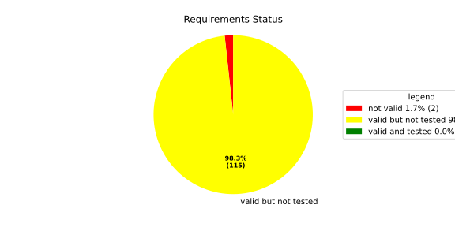
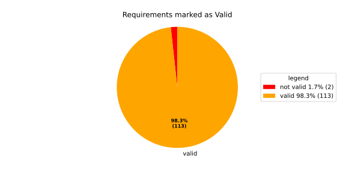
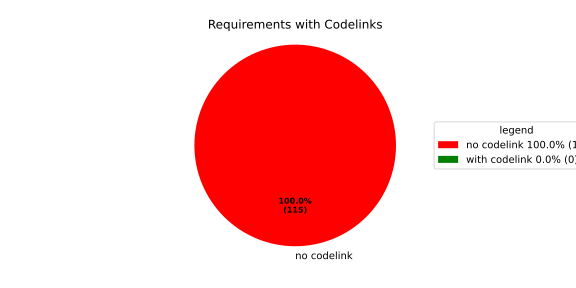

Verification Statistics#
Overview#

In Detail#


No needs passed the filters
Failed Tests
Hint: This table should be empty. Before a PR can be merged all tests have to be successful.
No needs passed the filters
Skipped / Disabled Tests
No needs passed the filters
All passed Tests#
No needs passed the filters
Details About Testcases#
No needs passed the filters
No needs passed the filters
Test Log Files#
tests-report/tests/integration/process_simple_rep_failure/process_simple_rep_failure/test.log
exec ${PAGER:-/usr/bin/less} "$0" || exit 1
Executing tests from //tests/integration/process_simple_rep_failure:process_simple_rep_failure
-----------------------------------------------------------------------------
============================= test session starts ==============================
platform linux -- Python 3.12.12, pytest-9.0.3, pluggy-1.5.0
rootdir: /home/runner/.bazel/sandbox/processwrapper-sandbox/940/execroot/_main/bazel-out/k8-fastbuild/bin/tests/integration/process_simple_rep_failure/process_simple_rep_failure.runfiles/score_itf+
configfile: pytest.ini
collected 1 item
../score_itf+::test_recovery_action_simple_rep_failure
-------------------------------- live log setup --------------------------------
[2026-06-18 06:35:21.759] [INFO] [score.itf.plugins.docker] Executing custom image bootstrap command: tests/utils/environments/x86_64-linux/x86_64-linux.sh
[2026-06-18 06:35:26.269] [DEBUG] [docker.utils.config] Trying paths: ['/home/runner/.docker/config.json', '/home/runner/.dockercfg']
[2026-06-18 06:35:26.269] [DEBUG] [docker.utils.config] Found file at path: /home/runner/.docker/config.json
[2026-06-18 06:35:26.269] [DEBUG] [docker.auth] Found 'auths' section
[2026-06-18 06:35:26.269] [DEBUG] [docker.auth] Found entry (registry='https://index.docker.io/v1/', username='githubactions')
[2026-06-18 06:35:26.282] [DEBUG] [urllib3.connectionpool] http://localhost:None "GET /version HTTP/1.1" 200 823
[2026-06-18 06:35:26.299] [DEBUG] [urllib3.connectionpool] http://localhost:None "POST /v1.48/containers/create HTTP/1.1" 201 88
[2026-06-18 06:35:26.301] [DEBUG] [urllib3.connectionpool] http://localhost:None "GET /v1.48/containers/daf68a8fab721651701c9faedf0af6c34951047e2293a83545a1d92fcbbcd073/json HTTP/1.1" 200 None
[2026-06-18 06:35:26.493] [DEBUG] [urllib3.connectionpool] http://localhost:None "POST /v1.48/containers/daf68a8fab721651701c9faedf0af6c34951047e2293a83545a1d92fcbbcd073/start HTTP/1.1" 204 0
[2026-06-18 06:35:26.494] [DEBUG] [docker.utils.config] Trying paths: ['/home/runner/.docker/config.json', '/home/runner/.dockercfg']
[2026-06-18 06:35:26.494] [DEBUG] [docker.utils.config] Found file at path: /home/runner/.docker/config.json
[2026-06-18 06:35:26.494] [DEBUG] [docker.auth] Found 'auths' section
[2026-06-18 06:35:26.495] [DEBUG] [docker.auth] Found entry (registry='https://index.docker.io/v1/', username='githubactions')
[2026-06-18 06:35:26.518] [DEBUG] [urllib3.connectionpool] http://localhost:None "GET /version HTTP/1.1" 200 823
[2026-06-18 06:35:26.737] [INFO] [tests.utils.testing_utils.setup_test] Test case setup finished
-------------------------------- live log call ---------------------------------
[2026-06-18 06:35:26.889] [INFO] [launch_manager] 2026/06/18 06:35:26.4526889 2766123 000 ECU1 LM LM log debug verbose 1 Launch Manager Started !!!!
[2026-06-18 06:35:26.890] [INFO] [launch_manager] 2026/06/18 06:35:26.4526889 2766126 000 ECU1 LM LM log debug verbose 1 Loading LCM Configurations...
[2026-06-18 06:35:26.890] [INFO] [launch_manager] 2026/06/18 06:35:26.4526889 2766126 000 ECU1 LM LM log debug verbose 1 ECUCFG_ENV_VAR_ROOTFOLDER set successfully
[2026-06-18 06:35:26.890] [INFO] [launch_manager] 2026/06/18 06:35:26.4526889 2766128 000 ECU1 LM LM log debug verbose 5 FlatBufferParser::getModeGroupPgName: MainPG ( IdentifierHash: 18079021346025578134 )
[2026-06-18 06:35:26.890] [INFO] [launch_manager] 2026/06/18 06:35:26.4526889 2766128 000 ECU1 LM LM log debug verbose 5 FlatBufferParser::getModeGroupPgStateName: MainPG/Startup ( IdentifierHash: 10504605499600661529 )
[2026-06-18 06:35:26.890] [INFO] [launch_manager] 2026/06/18 06:35:26.4526889 2766129 000 ECU1 LM LM log debug verbose 5 FlatBufferParser::getModeGroupPgStateName: MainPG/run_target_app_does_report_krunning_in_time ( IdentifierHash: 11934981641920773349 )
[2026-06-18 06:35:26.891] [INFO] [launch_manager] 2026/06/18 06:35:26.4526889 2766131 000 ECU1 LM LM log debug verbose 5 FlatBufferParser::getModeGroupPgStateName: MainPG/run_target_app_does_not_report_krunning_in_time ( IdentifierHash: 7672161913816744053 )
[2026-06-18 06:35:26.891] [INFO] [launch_manager] 2026/06/18 06:35:26.4526890 2766131 000 ECU1 LM LM log debug verbose 5 FlatBufferParser::getModeGroupPgStateName: MainPG/Off ( IdentifierHash: 15281793077830264047 )
[2026-06-18 06:35:26.891] [INFO] [launch_manager] 2026/06/18 06:35:26.4526890 2766132 000 ECU1 LM LM log debug verbose 5 FlatBufferParser::getModeGroupPgStateName: MainPG/fallback_run_target ( IdentifierHash: 4059409696722237352 )
[2026-06-18 06:35:26.891] [INFO] [launch_manager] 2026/06/18 06:35:26.4526890 2766134 000 ECU1 LM LM log debug verbose 4 parseProcessConfigurations: Process index: 0 executable_path_: /tmp/tests/process_simple_rep_failure/control_client_mock
[2026-06-18 06:35:26.891] [INFO] [launch_manager] 2026/06/18 06:35:26.4526890 2766138 000 ECU1 LM LM log debug verbose 3 Process control_client_mock is Reporting execution state
[2026-06-18 06:35:26.891] [INFO] [launch_manager] 2026/06/18 06:35:26.4526890 2766138 000 ECU1 LM LM log debug verbose 1 Process is STATE_MANAGEMENT function Cluster Affiliation
[2026-06-18 06:35:26.891] [INFO] [launch_manager] 2026/06/18 06:35:26.4526890 2766138 000 ECU1 LM LM log debug verbose 3 Process control_client_mock is Self terminating
[2026-06-18 06:35:26.891] [INFO] [launch_manager] 2026/06/18 06:35:26.4526890 2766140 000 ECU1 LM LM log debug verbose 4 ParseProcessProcessGroup: id:::pg_name_: MainPG , pg_state_name_: MainPG/Startup
[2026-06-18 06:35:26.891] [INFO] [launch_manager] 2026/06/18 06:35:26.4526891 2766141 000 ECU1 LM LM log debug verbose 4 ParseProcessProcessGroup: id:::pg_name_: MainPG , pg_state_name_: MainPG/run_target_app_does_report_krunning_in_time
[2026-06-18 06:35:26.892] [INFO] [launch_manager] 2026/06/18 06:35:26.4526891 2766143 000 ECU1 LM LM log debug verbose 4 ParseProcessProcessGroup: id:::pg_name_: MainPG , pg_state_name_: MainPG/run_target_app_does_not_report_krunning_in_time
[2026-06-18 06:35:26.892] [INFO] [launch_manager] 2026/06/18 06:35:26.4526891 2766143 000 ECU1 LM LM log debug verbose 4 ParseProcessProcessGroup: id:::pg_name_: MainPG , pg_state_name_: MainPG/fallback_run_target
[2026-06-18 06:35:26.892] [INFO] [launch_manager] 2026/06/18 06:35:26.4526891 2766147 000 ECU1 LM LM log debug verbose 4 parseProcessConfigurations: Process index: 1 executable_path_: /tmp/tests/process_simple_rep_failure/process_simple_reporting
[2026-06-18 06:35:26.893] [INFO] [launch_manager] 2026/06/18 06:35:26.4526891 2766147 000 ECU1 LM LM log debug verbose 3 Process component_does_report_krunning_in_time is Reporting execution state
[2026-06-18 06:35:26.896] [INFO] [launch_manager] 2026/06/18 06:35:26.4526891 2766147 000 ECU1 LM LM log debug verbose 1 Process is NOT associated with any function Cluster Affiliation
[2026-06-18 06:35:26.897] [INFO] [launch_manager] 2026/06/18 06:35:26.4526892 2766151 000 ECU1 LM LM log debug verbose 3 Process component_does_report_krunning_in_time is Self terminating
[2026-06-18 06:35:26.897] [INFO] [launch_manager] 2026/06/18 06:35:26.4526892 2766151 000 ECU1 LM LM log debug verbose 4 ParseProcessProcessGroup: id:::pg_name_: MainPG , pg_state_name_: MainPG/run_target_app_does_report_krunning_in_time
[2026-06-18 06:35:26.899] [INFO] [launch_manager] 2026/06/18 06:35:26.4526892 2766154 000 ECU1 LM LM log debug verbose 4 parseProcessConfigurations: Process index: 2 executable_path_: /tmp/tests/process_simple_rep_failure/process_simple_reporting
[2026-06-18 06:35:26.901] [INFO] [launch_manager] 2026/06/18 06:35:26.4526892 2766154 000 ECU1 LM LM log debug verbose 3 Process component_does_not_report_krunning_in_time is Reporting execution state
[2026-06-18 06:35:26.902] [INFO] [launch_manager] 2026/06/18 06:35:26.4526892 2766157 000 ECU1 LM LM log debug verbose 1 Process is NOT associated with any function Cluster Affiliation
[2026-06-18 06:35:26.902] [INFO] [launch_manager] 2026/06/18 06:35:26.4526892 2766157 000 ECU1 LM LM log debug verbose 3 Process component_does_not_report_krunning_in_time is Self terminating
[2026-06-18 06:35:26.902] [INFO] [launch_manager] 2026/06/18 06:35:26.4526892 2766159 000 ECU1 LM LM log debug verbose 4 ParseProcessProcessGroup: id:::pg_name_: MainPG , pg_state_name_: MainPG/run_target_app_does_not_report_krunning_in_time
[2026-06-18 06:35:26.904] [INFO] [launch_manager] 2026/06/18 06:35:26.4526892 2766160 000 ECU1 LM LM log debug verbose 4 parseProcessConfigurations: Process index: 3 executable_path_: /tmp/tests/process_simple_rep_failure/verification_process
[2026-06-18 06:35:26.904] [INFO] [launch_manager] 2026/06/18 06:35:26.4526893 2766166 000 ECU1 LM LM log debug verbose 3 Process verification_component is NOT Reporting execution state
[2026-06-18 06:35:26.904] [INFO] [launch_manager] 2026/06/18 06:35:26.4526893 2766166 000 ECU1 LM LM log debug verbose 1 Process is NOT associated with any function Cluster Affiliation
[2026-06-18 06:35:26.904] [INFO] [launch_manager] 2026/06/18 06:35:26.4526893 2766167 000 ECU1 LM LM log debug verbose 3 Process verification_component is Self terminating
[2026-06-18 06:35:26.904] [INFO] [launch_manager] 2026/06/18 06:35:26.4526893 2766170 000 ECU1 LM LM log debug verbose 4 ParseProcessProcessGroup: id:::pg_name_: MainPG , pg_state_name_: MainPG/fallback_run_target
[2026-06-18 06:35:26.904] [INFO] [launch_manager] 2026/06/18 06:35:26.4526893 2766171 000 ECU1 LM LM log debug verbose 3 Loading SWCL Nr. 0 Succeeded
[2026-06-18 06:35:26.904] [INFO] [launch_manager] 2026/06/18 06:35:26.4526894 2766171 000 ECU1 LM LM log debug verbose 2 1 process group(s)
[2026-06-18 06:35:26.905] [INFO] [launch_manager] 2026/06/18 06:35:26.4526894 2766173 000 ECU1 LM LM log debug verbose 3 Creating graph with 4 nodes
[2026-06-18 06:35:26.905] [INFO] [launch_manager] 2026/06/18 06:35:26.4526894 2766173 000 ECU1 LM LM log debug verbose 1 Process groups initialized successfully
[2026-06-18 06:35:26.905] [INFO] [launch_manager] 2026/06/18 06:35:26.4526894 2766173 000 ECU1 LM LM log debug verbose 1 Process Group initialization done
[2026-06-18 06:35:26.905] [INFO] [launch_manager] 2026/06/18 06:35:26.4526894 2766173 000 ECU1 LM LM log debug verbose 3 Creating Safe Process Map with 4 entries
[2026-06-18 06:35:26.905] [INFO] [launch_manager] 2026/06/18 06:35:26.4526894 2766174 000 ECU1 LM LM log debug verbose 2 Creating job queue with capacity 1024
[2026-06-18 06:35:26.905] [INFO] [launch_manager] 2026/06/18 06:35:26.4526894 2766174 000 ECU1 LM LM log debug verbose 1 Creating worker threads...
[2026-06-18 06:35:26.905] [INFO] [launch_manager] 2026/06/18 06:35:26.4526897 2766206 000 ECU1 LM LM log debug verbose 7 Process group index 0 (with name MainPG ) has 4 processes
[2026-06-18 06:35:26.905] [INFO] [launch_manager] 2026/06/18 06:35:26.4526897 2766206 000 ECU1 LM LM log debug verbose 2 Creating process node with id: 0
[2026-06-18 06:35:26.905] [INFO] [launch_manager] 2026/06/18 06:35:26.4526897 2766207 000 ECU1 LM LM log debug verbose 5 Process 0 has 0 start dependencies
[2026-06-18 06:35:26.905] [INFO] [launch_manager] 2026/06/18 06:35:26.4526897 2766207 000 ECU1 LM LM log debug verbose 2 Creating process node with id: 1
[2026-06-18 06:35:26.905] [INFO] [launch_manager] 2026/06/18 06:35:26.4526897 2766207 000 ECU1 LM LM log debug verbose 5 Process 1 has 0 start dependencies
[2026-06-18 06:35:26.905] [INFO] [launch_manager] 2026/06/18 06:35:26.4526897 2766207 000 ECU1 LM LM log debug verbose 2 Creating process node with id: 2
[2026-06-18 06:35:26.905] [INFO] [launch_manager] 2026/06/18 06:35:26.4526897 2766208 000 ECU1 LM LM log debug verbose 5 Process 2 has 0 start dependencies
[2026-06-18 06:35:26.905] [INFO] [launch_manager] 2026/06/18 06:35:26.4526897 2766208 000 ECU1 LM LM log debug verbose 2 Creating process node with id: 3
[2026-06-18 06:35:26.905] [INFO] [launch_manager] 2026/06/18 06:35:26.4526897 2766208 000 ECU1 LM LM log debug verbose 5 Process 3 has 0 start dependencies
[2026-06-18 06:35:26.906] [INFO] [launch_manager] 2026/06/18 06:35:26.4526897 2766208 000 ECU1 LM LM log debug verbose 3 Created 4 process nodes
[2026-06-18 06:35:26.906] [INFO] [launch_manager] 2026/06/18 06:35:26.4526897 2766208 000 ECU1 LM LM log debug verbose 2 Creating successor lists for process group MainPG
[2026-06-18 06:35:26.906] [INFO] [launch_manager] 2026/06/18 06:35:26.4526897 2766209 000 ECU1 LM LM log debug verbose 1 Graphs initialized
[2026-06-18 06:35:26.906] [INFO] [launch_manager] 2026/06/18 06:35:26.4526898 2766211 000 ECU1 LM Fcty log info verbose 2 Factory for FlatCfg MachineConfig: Loading of HM Machine Configuration succeeded.
[2026-06-18 06:35:26.906] [INFO] [launch_manager] 2026/06/18 06:35:26.4526898 2766211 000 ECU1 LM Fcty log debug verbose 3 Factory for FlatCfg MachineConfig: Alive Supervision buffer size: 100
[2026-06-18 06:35:26.906] [INFO] [launch_manager] 2026/06/18 06:35:26.4526898 2766211 000 ECU1 LM Fcty log debug verbose 3 Factory for FlatCfg MachineConfig: Monitor buffer size: 512
[2026-06-18 06:35:26.906] [INFO] [launch_manager] 2026/06/18 06:35:26.4526898 2766212 000 ECU1 LM Fcty log debug verbose 4 Factory for FlatCfg MachineConfig: Periodicity: 50000000 ns
[2026-06-18 06:35:26.906] [INFO] [launch_manager] 2026/06/18 06:35:26.4526898 2766212 000 ECU1 LM Fcty log debug verbose 3 Factory for FlatCfg MachineConfig: Configured watchdogs: 0
[2026-06-18 06:35:26.906] [INFO] [launch_manager] 2026/06/18 06:35:26.4526898 2766212 000 ECU1 LM Fcty log warn verbose 2 Factory for FlatCfg MachineConfig: No watchdog configured
[2026-06-18 06:35:26.906] [INFO] [launch_manager] 2026/06/18 06:35:26.4526898 2766213 000 ECU1 LM Fcty log debug verbose 2 Software Cluster Handler starts constructing workers: MainCluster
[2026-06-18 06:35:26.906] [INFO] [launch_manager] 2026/06/18 06:35:26.4526898 2766213 000 ECU1 LM Fcty log debug verbose 3 Factory for FlatCfg AR24-11: Successfully created Process States: control_client_mock
[2026-06-18 06:35:26.907] [INFO] [launch_manager] 2026/06/18 06:35:26.4526898 2766213 000 ECU1 LM Fcty log debug verbose 3 Factory for FlatCfg AR24-11: Number of constructed Process States: 1
[2026-06-18 06:35:26.907] [INFO] [launch_manager] 2026/06/18 06:35:26.4526898 2766214 000 ECU1 LM Fcty log debug verbose 3 Factory for FlatCfg AR24-11: Successfully created Monitor interface IPC with path: lifecycle_health_control_client_mock
[2026-06-18 06:35:26.907] [INFO] [launch_manager] 2026/06/18 06:35:26.4526898 2766215 000 ECU1 LM Fcty log debug verbose 3 Factory for FlatCfg AR24-11: Number of constructed Monitor interface IPCs: 1
[2026-06-18 06:35:26.907] [INFO] [launch_manager] 2026/06/18 06:35:26.4526898 2766215 000 ECU1 LM Fcty log debug verbose 3 Factory for FlatCfg AR24-11: Successfully created MonitorInterface: /lifecycle_health_control_client_mock
[2026-06-18 06:35:26.907] [INFO] [launch_manager] 2026/06/18 06:35:26.4526898 2766215 000 ECU1 LM Fcty log debug verbose 3 Factory for FlatCfg AR24-11: Number of constructed Monitor interfaces: 1
[2026-06-18 06:35:26.907] [INFO] [launch_manager] 2026/06/18 06:35:26.4526898 2766215 000 ECU1 LM Fcty log debug verbose 3 Factory for FlatCfg AR24-11: Successfully created supervision checkpoint: control_client_mock_checkpoint
[2026-06-18 06:35:26.907] [INFO] [launch_manager] 2026/06/18 06:35:26.4526898 2766216 000 ECU1 LM Fcty log debug verbose 3 Factory for FlatCfg AR24-11: Number of constructed supervision checkpoints: 1
[2026-06-18 06:35:26.907] [INFO] [launch_manager] 2026/06/18 06:35:26.4526898 2766216 000 ECU1 LM Fcty log debug verbose 3 Factory for FlatCfg AR24-11: Successfully created alive supervision worker object: control_client_mock_alive_supervision
[2026-06-18 06:35:26.907] [INFO] [launch_manager] 2026/06/18 06:35:26.4526898 2766216 000 ECU1 LM Fcty log debug verbose 3 Factory for FlatCfg AR24-11: Number of constructed alive supervisions: 1
[2026-06-18 06:35:26.907] [INFO] [launch_manager] 2026/06/18 06:35:26.4526898 2766217 000 ECU1 LM Fcty log info verbose 2 Phm Daemon: The (configured) periodicity in [ns] is set to: 50000000
[2026-06-18 06:35:26.907] [INFO] [launch_manager] 2026/06/18 06:35:26.4526898 2766217 000 ECU1 LM Fcty log debug verbose 2 Phm Daemon: The accuracy of the monotonic system clock in [ns] is: 1
[2026-06-18 06:35:26.908] [INFO] [launch_manager] 2026/06/18 06:35:26.4526898 2766217 000 ECU1 LM Fcty log debug verbose 3 HealthMonitor: Initialization took 0 ms
[2026-06-18 06:35:26.908] [INFO] [launch_manager] 2026/06/18 06:35:26.4526899 2766226 000 ECU1 LM LM log info verbose 1
[2026-06-18 06:35:26.908] [INFO] [launch_manager] LCM started successfully
[2026-06-18 06:35:26.908] [INFO] [launch_manager] 2026/06/18 06:35:26.4526899 2766228 000 ECU1 LM LM log debug verbose 3
[2026-06-18 06:35:26.908] [INFO] [launch_manager] clock() at run(): 38.021000 ms
[2026-06-18 06:35:26.908] [INFO] [launch_manager] 2026/06/18 06:35:26.4526900 2766231 000 ECU1 LM LM log debug verbose 1
[2026-06-18 06:35:26.908] [INFO] [launch_manager] =============STARTING MAINPG STARTUP STATE============
[2026-06-18 06:35:26.908] [INFO] [launch_manager] 2026/06/18 06:35:26.4526900 2766235 000 ECU1 LM LM log debug verbose 9
[2026-06-18 06:35:26.909] [INFO] [launch_manager] Graph::setState changes from kSuccess to kInTransition for PG 0 ( MainPG )
[2026-06-18 06:35:26.909] [INFO] [launch_manager] 2026/06/18 06:35:26.4526900 2766238 000 ECU1 LM LM log debug verbose 2
[2026-06-18 06:35:26.909] [INFO] [launch_manager] Stop Dependencies: 0
[2026-06-18 06:35:26.909] [INFO] [launch_manager] 2026/06/18 06:35:26.4526901 2766243 000 ECU1 LM LM log debug verbose 2
[2026-06-18 06:35:26.909] [INFO] [launch_manager] Stop Dependencies: 0
[2026-06-18 06:35:26.909] [INFO] [launch_manager] 2026/06/18 06:35:26.4526901 2766244 000 ECU1 LM LM log debug verbose 2
[2026-06-18 06:35:26.909] [INFO] [launch_manager] Stop Dependencies: 0
[2026-06-18 06:35:26.910] [INFO] [launch_manager] 2026/06/18 06:35:26.4526901 2766245 000 ECU1 LM LM log debug verbose 2 Stop Dependencies: 0
[2026-06-18 06:35:26.910] [INFO] [launch_manager] 2026/06/18 06:35:26.4526901 2766246 000 ECU1 LM LM log debug verbose 2
[2026-06-18 06:35:26.910] [INFO] [launch_manager] Start Dependencies: 0
[2026-06-18 06:35:26.910] [INFO] [launch_manager] 2026/06/18 06:35:26.4526901 2766247 000 ECU1 LM LM log debug verbose 2
[2026-06-18 06:35:26.910] [INFO] [launch_manager] Start Dependencies: 0
[2026-06-18 06:35:26.910] [INFO] [launch_manager] 2026/06/18 06:35:26.4526901 2766248 000 ECU1 LM LM log debug verbose 2 Start Dependencies: 0
[2026-06-18 06:35:26.911] [INFO] [launch_manager] 2026/06/18 06:35:26.4526901 2766249 000 ECU1 LM LM log debug verbose 2
[2026-06-18 06:35:26.911] [INFO] [launch_manager] Start Dependencies: 0
[2026-06-18 06:35:26.911] [INFO] [launch_manager] 2026/06/18 06:35:26.4526901 2766251 000 ECU1 LM LM log debug verbose 6 Starting process 0 ( control_client_mock ) from executable /tmp/tests/process_simple_rep_failure/control_client_mock
[2026-06-18 06:35:26.911] [INFO] [launch_manager] 2026/06/18 06:35:26.4526902 2766251 000 ECU1 LM LM log debug verbose 3 Initialize the control client for control_client_mock process
[2026-06-18 06:35:26.911] [INFO] [launch_manager] 2026/06/18 06:35:26.4526902 2766252 000 ECU1 LM LM log debug verbose 1 ControlClientChannel initialized
[2026-06-18 06:35:26.911] [INFO] [launch_manager] 2026/06/18 06:35:26.4526903 2766262 000 ECU1 LM LM log debug verbose 4 startProcess pid 68 received for process: control_client_mock
[2026-06-18 06:35:26.911] [INFO] [launch_manager] 2026/06/18 06:35:26.4526903 2766263 000 ECU1 LM LM log debug verbose 1 ControlClientChannel obtained from sync.
[2026-06-18 06:35:26.911] [INFO] [launch_manager] [==========] Running 1 test from 1 test suite.
[2026-06-18 06:35:26.912] [INFO] [launch_manager] [----------] Global test environment set-up.
[2026-06-18 06:35:26.912] [INFO] [launch_manager] [----------] 1 test from RecoveryActionSimpleRepFailure
[2026-06-18 06:35:26.912] [INFO] [launch_manager] [ RUN ] RecoveryActionSimpleRepFailure.ControlClientMock
[2026-06-18 06:35:26.912] [INFO] [launch_manager] [ STEP ] Report kRunning from ControlClientMock
[2026-06-18 06:35:26.916] [INFO] [launch_manager] [ END STEP ] Report kRunning from ControlClientMock
[2026-06-18 06:35:26.916] [INFO] [launch_manager] [ STEP ] Activate RunTarget run_target_app_does_report_krunning_in_time
[2026-06-18 06:35:26.916] [INFO] [launch_manager] 2026/06/18 06:35:26.4526915 2766388 000 ECU1 LM LM log debug verbose 1 Request sent. Waiting for acknowledgment...
[2026-06-18 06:35:26.919] [INFO] [launch_manager] 2026/06/18 06:35:26.4526917 2766402 000 ECU1 LM LM log debug verbose 8 ProcessGroupManager::ControlClientHandler: got request kSetStateRequest ( 16 ) re state MainPG/run_target_app_does_report_krunning_in_time of PG MainPG
[2026-06-18 06:35:26.919] [INFO] [launch_manager] 2026/06/18 06:35:26.4526917 2766403 000 ECU1 LM LM log debug verbose 6 Pending state for process group MainPG changed from to MainPG/run_target_app_does_report_krunning_in_time
[2026-06-18 06:35:26.920] [INFO] [launch_manager] 2026/06/18 06:35:26.4526917 2766403 000 ECU1 LM LM log debug verbose 9 Graph::setState changes from kInTransition to kCancelled for PG 0 ( MainPG )
[2026-06-18 06:35:26.920] [INFO] [launch_manager] 2026/06/18 06:35:26.4526917 2766403 000 ECU1 LM LM log debug verbose 1 Control Client handler nudged
[2026-06-18 06:35:26.920] [INFO] [launch_manager] 2026/06/18 06:35:26.4526917 2766404 000 ECU1 LM LM log debug verbose 1 Request acknowledged.
[2026-06-18 06:35:26.920] [INFO] [launch_manager] 2026/06/18 06:35:26.4526917 2766404 000 ECU1 LM LM log debug verbose 8 Got kRunning for pid 68 ( control_client_mock ) process 0 of group MainPG
[2026-06-18 06:35:26.920] [INFO] [launch_manager] 2026/06/18 06:35:26.4526917 2766404 000 ECU1 LM LM log debug verbose 1 Request acknowledged.
[2026-06-18 06:35:26.921] [INFO] [launch_manager] 2026/06/18 06:35:26.4526917 2766404 000 ECU1 LM LM log debug verbose 7 startProcess for MainPG process 0 ( control_client_mock ) done
[2026-06-18 06:35:26.921] [INFO] [launch_manager] 2026/06/18 06:35:26.4526917 2766405 000 ECU1 LM LM log debug verbose 1 Control Client handler nudged
[2026-06-18 06:35:26.921] [INFO] [launch_manager] 2026/06/18 06:35:26.4526917 2766405 000 ECU1 LM LM log fatal verbose 3 clock() at failed initial state transition: 40.073000 ms
[2026-06-18 06:35:26.921] [INFO] [launch_manager] 2026/06/18 06:35:26.4526917 2766405 000 ECU1 LM LM log debug verbose 9 Graph::setState changes from kCancelled to kUndefinedState for PG 0 ( MainPG )
[2026-06-18 06:35:26.921] [INFO] [launch_manager] 2026/06/18 06:35:26.4526917 2766406 000 ECU1 LM LM log debug verbose 1 Control Client handler nudged
[2026-06-18 06:35:26.922] [INFO] [launch_manager] 2026/06/18 06:35:26.4526919 2766425 000 ECU1 LM LM log debug verbose 6 Pending state for process group MainPG changed from MainPG/run_target_app_does_report_krunning_in_time to
[2026-06-18 06:35:26.923] [INFO] [launch_manager] 2026/06/18 06:35:26.4526919 2766425 000 ECU1 LM LM log debug verbose 4 Start transition to MainPG/run_target_app_does_report_krunning_in_time for PG MainPG
[2026-06-18 06:35:26.923] [INFO] [launch_manager] 2026/06/18 06:35:26.4526919 2766426 000 ECU1 LM LM log debug verbose 9 Graph::setState changes from kUndefinedState to kInTransition for PG 0 ( MainPG )
[2026-06-18 06:35:26.923] [INFO] [launch_manager] 2026/06/18 06:35:26.4526919 2766426 000 ECU1 LM LM log debug verbose 2 Stop Dependencies: 0
[2026-06-18 06:35:26.923] [INFO] [launch_manager] 2026/06/18 06:35:26.4526919 2766426 000 ECU1 LM LM log debug verbose 2 Stop Dependencies: 0
[2026-06-18 06:35:26.923] [INFO] [launch_manager] 2026/06/18 06:35:26.4526919 2766426 000 ECU1 LM LM log debug verbose 2 Stop Dependencies: 0
[2026-06-18 06:35:26.923] [INFO] [launch_manager] 2026/06/18 06:35:26.4526919 2766426 000 ECU1 LM LM log debug verbose 2 Stop Dependencies: 0
[2026-06-18 06:35:26.923] [INFO] [launch_manager] 2026/06/18 06:35:26.4526919 2766427 000 ECU1 LM LM log debug verbose 2 Start Dependencies: 0
[2026-06-18 06:35:26.923] [INFO] [launch_manager] 2026/06/18 06:35:26.4526919 2766427 000 ECU1 LM LM log debug verbose 2 Start Dependencies: 0
[2026-06-18 06:35:26.923] [INFO] [launch_manager] 2026/06/18 06:35:26.4526919 2766427 000 ECU1 LM LM log debug verbose 2 Start Dependencies: 0
[2026-06-18 06:35:26.924] [INFO] [launch_manager] 2026/06/18 06:35:26.4526919 2766427 000 ECU1 LM LM log debug verbose 2 Start Dependencies: 0
[2026-06-18 06:35:26.924] [INFO] [launch_manager] 2026/06/18 06:35:26.4526919 2766428 000 ECU1 LM LM log debug verbose 6 Starting process 1 ( component_does_report_krunning_in_time ) from executable /tmp/tests/process_simple_rep_failure/process_simple_reporting
[2026-06-18 06:35:26.924] [INFO] [launch_manager] 2026/06/18 06:35:26.4526920 2766435 000 ECU1 LM LM log debug verbose 4 startProcess pid 70 received for process: component_does_report_krunning_in_time
[2026-06-18 06:35:26.930] [INFO] [launch_manager] [==========] Running 1 test from 1 test suite.
[2026-06-18 06:35:26.930] [INFO] [launch_manager] [----------] Global test environment set-up.
[2026-06-18 06:35:26.930] [INFO] [launch_manager] [----------] 1 test from ProcessSimpleRepFailure
[2026-06-18 06:35:26.930] [INFO] [launch_manager] [ RUN ] ProcessSimpleRepFailure.ProcessSimpleReporting
[2026-06-18 06:35:26.930] [INFO] [launch_manager] [ STEP ] Check args
[2026-06-18 06:35:26.930] [INFO] [launch_manager] [ END STEP ] Check args
[2026-06-18 06:35:26.930] [INFO] [launch_manager] [ STEP ] Report kRunning from ProcessSimpleReporting
[2026-06-18 06:35:26.949] [INFO] [launch_manager] 2026/06/18 06:35:26.4526948 2766719 000 ECU1 LM Sprv log debug verbose 6 Process with Id control_client_mock changed state PG MainPG/Startup PS 1
[2026-06-18 06:35:26.949] [INFO] [launch_manager] 2026/06/18 06:35:26.4526948 2766719 000 ECU1 LM Sprv log debug verbose 6 Process with Id control_client_mock changed state PG MainPG/Startup PS 2
[2026-06-18 06:35:26.949] [INFO] [launch_manager] 2026/06/18 06:35:26.4526948 2766720 000 ECU1 LM Sprv log debug verbose 6 Process with Id component_does_report_krunning_in_time changed state PG MainPG/run_target_app_does_report_krunning_in_time PS 1
[2026-06-18 06:35:26.950] [INFO] [launch_manager] 2026/06/18 06:35:26.4526948 2766720 000 ECU1 LM Sprv log info verbose 3 Alive Supervision ( control_client_mock_alive_supervision ) switched to OK.
[2026-06-18 06:35:26.990] [DEBUG] [tests.utils.testing_utils.run_until_file_deployed] Waiting for /tmp/tests/test_end
[2026-06-18 06:35:27.428] [INFO] [launch_manager] [ END STEP ] Report kRunning from ProcessSimpleReporting
[2026-06-18 06:35:27.428] [INFO] [launch_manager] [ OK ] ProcessSimpleRepFailure.ProcessSimpleReporting (502 ms)
[2026-06-18 06:35:27.428] [INFO] [launch_manager] [----------] 1 test from ProcessSimpleRepFailure (502 ms total)
[2026-06-18 06:35:27.428] [INFO] [launch_manager] [----------] Global test environment tear-down
[2026-06-18 06:35:27.428] [INFO] [launch_manager] [==========] 1 test from 1 test suite ran. (502 ms total)
[2026-06-18 06:35:27.428] [INFO] [launch_manager] [ PASSED ] 1 test.
[2026-06-18 06:35:27.429] [INFO] [launch_manager] 2026/06/18 06:35:27.4527428 2771513 000 ECU1 LM LM log debug verbose 8 Got kRunning for pid 70 ( component_does_report_krunning_in_time ) process 1 of group MainPG
[2026-06-18 06:35:27.429] [INFO] [launch_manager] 2026/06/18 06:35:27.4527428 2771513 000 ECU1 LM LM log debug verbose 7 startProcess for MainPG process 1 ( component_does_report_krunning_in_time ) done
[2026-06-18 06:35:27.429] [INFO] [launch_manager] 2026/06/18 06:35:27.4527428 2771514 000 ECU1 LM LM log debug verbose 9 Graph::setState changes from kInTransition to kSuccess for PG 0 ( MainPG )
[2026-06-18 06:35:27.429] [INFO] [launch_manager] 2026/06/18 06:35:27.4527428 2771514 000 ECU1 LM LM log info verbose 7 Completed the request for PG MainPG to State MainPG/run_target_app_does_report_krunning_in_time in 511 ms
[2026-06-18 06:35:27.429] [INFO] [launch_manager] 2026/06/18 06:35:27.4527428 2771514 000 ECU1 LM LM log debug verbose 1 Control Client handler nudged
[2026-06-18 06:35:27.431] [INFO] [launch_manager] 2026/06/18 06:35:27.4527429 2771527 000 ECU1 LM LM log debug verbose 8
[2026-06-18 06:35:27.431] [INFO] [launch_manager] ProcessGroupManager::ControlClientHandler: Sending kSetStateSuccess ( 20 ) re state MainPG/run_target_app_does_report_krunning_in_time of PG MainPG
[2026-06-18 06:35:27.431] [INFO] [launch_manager] 2026/06/18 06:35:27.4527429 2771530 000 ECU1 LM LM log debug verbose 1
[2026-06-18 06:35:27.431] [INFO] [launch_manager] Response sent.
[2026-06-18 06:35:27.431] [INFO] [launch_manager] 2026/06/18 06:35:27.4527430 2771533 000 ECU1 LM LM log debug verbose 12
[2026-06-18 06:35:27.432] [INFO] [launch_manager] Child process 1 of MainPG pid 70 ( component_does_report_krunning_in_time ) for node True terminated with status 0
[2026-06-18 06:35:27.449] [INFO] [launch_manager] 2026/06/18 06:35:27.4527448 2771719 000 ECU1 LM Sprv log debug verbose 6 Process with Id component_does_report_krunning_in_time changed state PG MainPG/run_target_app_does_report_krunning_in_time PS 2
[2026-06-18 06:35:27.449] [INFO] [launch_manager] 2026/06/18 06:35:27.4527448 2771721 000 ECU1 LM Sprv log debug verbose 6
[2026-06-18 06:35:27.449] [INFO] [launch_manager] Process with Id component_does_report_krunning_in_time changed state PG MainPG/run_target_app_does_report_krunning_in_time PS 4
[2026-06-18 06:35:27.513] [INFO] [launch_manager] 2026/06/18 06:35:27.4527513 2772366 000 ECU1 LM LM log debug verbose 1 Response retrieved.
[2026-06-18 06:35:27.514] [INFO] [launch_manager] [ END STEP ] Activate RunTarget run_target_app_does_report_krunning_in_time
[2026-06-18 06:35:27.550] [DEBUG] [tests.utils.testing_utils.run_until_file_deployed] Waiting for /tmp/tests/test_end
[2026-06-18 06:35:28.122] [DEBUG] [tests.utils.testing_utils.run_until_file_deployed] Waiting for /tmp/tests/test_end
[2026-06-18 06:35:28.514] [INFO] [launch_manager] [ STEP ] Verify fallback run target has not been activated
[2026-06-18 06:35:28.514] [INFO] [launch_manager] [ END STEP ] Verify fallback run target has not been activated
[2026-06-18 06:35:28.514] [INFO] [launch_manager] [ STEP ] Activate RunTarget run_target_app_does_not_report_krunning_in_time
[2026-06-18 06:35:28.514] [INFO] [launch_manager] 2026/06/18 06:35:28.4528513 2782369 000 ECU1 LM LM log debug verbose 1 Request sent. Waiting for acknowledgment...
[2026-06-18 06:35:28.514] [INFO] [launch_manager] 2026/06/18 06:35:28.4528514 2782374 000 ECU1 LM LM log debug verbose 8 ProcessGroupManager::ControlClientHandler: got request kSetStateRequest ( 16 ) re state MainPG/run_target_app_does_not_report_krunning_in_time of PG MainPG
[2026-06-18 06:35:28.515] [INFO] [launch_manager] 2026/06/18 06:35:28.4528514 2782374 000 ECU1 LM LM log debug verbose 6 Pending state for process group MainPG changed from to MainPG/run_target_app_does_not_report_krunning_in_time
[2026-06-18 06:35:28.515] [INFO] [launch_manager] 2026/06/18 06:35:28.4528514 2782375 000 ECU1 LM LM log debug verbose 1 Request acknowledged.
[2026-06-18 06:35:28.515] [INFO] [launch_manager] 2026/06/18 06:35:28.4528514 2782375 000 ECU1 LM LM log debug verbose 6 Pending state for process group MainPG changed from MainPG/run_target_app_does_not_report_krunning_in_time to
[2026-06-18 06:35:28.515] [INFO] [launch_manager] 2026/06/18 06:35:28.4528514 2782375 000 ECU1 LM LM log debug verbose 4 Start transition to MainPG/run_target_app_does_not_report_krunning_in_time for PG MainPG
[2026-06-18 06:35:28.515] [INFO] [launch_manager] 2026/06/18 06:35:28.4528514 2782375 000 ECU1 LM LM log debug verbose 9 Graph::setState changes from kSuccess to kInTransition for PG 0 ( MainPG )
[2026-06-18 06:35:28.515] [INFO] [launch_manager] 2026/06/18 06:35:28.4528514 2782376 000 ECU1 LM LM log debug verbose 2 Stop Dependencies: 0
[2026-06-18 06:35:28.515] [INFO] [launch_manager] 2026/06/18 06:35:28.4528514 2782376 000 ECU1 LM LM log debug verbose 2 Stop Dependencies: 0
[2026-06-18 06:35:28.515] [INFO] [launch_manager] 2026/06/18 06:35:28.4528514 2782376 000 ECU1 LM LM log debug verbose 2 Stop Dependencies: 0
[2026-06-18 06:35:28.515] [INFO] [launch_manager] 2026/06/18 06:35:28.4528514 2782376 000 ECU1 LM LM log debug verbose 2 Stop Dependencies: 0
[2026-06-18 06:35:28.516] [INFO] [launch_manager] 2026/06/18 06:35:28.4528514 2782377 000 ECU1 LM LM log debug verbose 2 Start Dependencies: 0
[2026-06-18 06:35:28.516] [INFO] [launch_manager] 2026/06/18 06:35:28.4528514 2782377 000 ECU1 LM LM log debug verbose 2 Start Dependencies: 0
[2026-06-18 06:35:28.516] [INFO] [launch_manager] 2026/06/18 06:35:28.4528514 2782377 000 ECU1 LM LM log debug verbose 2 Start Dependencies: 0
[2026-06-18 06:35:28.516] [INFO] [launch_manager] 2026/06/18 06:35:28.4528514 2782377 000 ECU1 LM LM log debug verbose 2 Start Dependencies: 0
[2026-06-18 06:35:28.516] [INFO] [launch_manager] 2026/06/18 06:35:28.4528514 2782378 000 ECU1 LM LM log debug verbose 6 Starting process 2 ( component_does_not_report_krunning_in_time ) from executable /tmp/tests/process_simple_rep_failure/process_simple_reporting
[2026-06-18 06:35:28.516] [INFO] [launch_manager] 2026/06/18 06:35:28.4528515 2782386 000 ECU1 LM LM log debug verbose 4 startProcess pid 90 received for process: component_does_not_report_krunning_in_time
[2026-06-18 06:35:28.517] [INFO] [launch_manager] 2026/06/18 06:35:28.4528516 2782395 000 ECU1 LM LM log debug verbose 1
[2026-06-18 06:35:28.517] [INFO] [launch_manager] Request acknowledged.
[2026-06-18 06:35:28.517] [INFO] [launch_manager] [==========] Running 1 test from 1 test suite.
[2026-06-18 06:35:28.517] [INFO] [launch_manager] [----------] Global test environment set-up.
[2026-06-18 06:35:28.517] [INFO] [launch_manager] [----------] 1 test from ProcessSimpleRepFailure
[2026-06-18 06:35:28.517] [INFO] [launch_manager] [ RUN ] ProcessSimpleRepFailure.ProcessSimpleReporting
[2026-06-18 06:35:28.517] [INFO] [launch_manager] [ STEP ] Check args
[2026-06-18 06:35:28.518] [INFO] [launch_manager] [ END STEP ] Check args
[2026-06-18 06:35:28.518] [INFO] [launch_manager] [ STEP ] Report kRunning from ProcessSimpleReporting
[2026-06-18 06:35:28.549] [INFO] [launch_manager] 2026/06/18 06:35:28.4528548 2782719 000 ECU1 LM Sprv log debug verbose 6 Process with Id component_does_not_report_krunning_in_time changed state PG MainPG/run_target_app_does_not_report_krunning_in_time PS 1
[2026-06-18 06:35:28.695] [DEBUG] [tests.utils.testing_utils.run_until_file_deployed] Waiting for /tmp/tests/test_end
[2026-06-18 06:35:29.347] [DEBUG] [tests.utils.testing_utils.run_until_file_deployed] Waiting for /tmp/tests/test_end
[2026-06-18 06:35:29.641] [INFO] [launch_manager] 2026/06/18 06:35:29.4529640 2793636 000 ECU1 LM LM log error verbose 1 Semaphore timedWait or post failed: Unable to wait or post on semaphores within the specified timeout.
[2026-06-18 06:35:29.642] [INFO] [launch_manager] 2026/06/18 06:35:29.4529640 2793636 000 ECU1 LM LM log warn verbose 5 Got kRunning timeout for process 2 ( component_does_not_report_krunning_in_time )
[2026-06-18 06:35:29.642] [INFO] [launch_manager] 2026/06/18 06:35:29.4529640 2793636 000 ECU1 LM LM log debug verbose 5 terminating process 2 ( component_does_not_report_krunning_in_time )
[2026-06-18 06:35:29.642] [INFO] [launch_manager] 2026/06/18 06:35:29.4529640 2793637 000 ECU1 LM LM log debug verbose 9 Requesting termination of process 2 of MainPG pid 90 ( component_does_not_report_krunning_in_time )
[2026-06-18 06:35:29.642] [INFO] [launch_manager] 2026/06/18 06:35:29.4529640 2793637 000 ECU1 LM LM log debug verbose 2 Request termination received for 90
[2026-06-18 06:35:29.649] [INFO] [launch_manager] 2026/06/18 06:35:29.4529648 2793719 000 ECU1 LM Sprv log debug verbose 6 Process with Id component_does_not_report_krunning_in_time changed state PG MainPG/run_target_app_does_not_report_krunning_in_time PS 3
[2026-06-18 06:35:29.910] [DEBUG] [tests.utils.testing_utils.run_until_file_deployed] Waiting for /tmp/tests/test_end
[2026-06-18 06:35:30.504] [DEBUG] [tests.utils.testing_utils.run_until_file_deployed] Waiting for /tmp/tests/test_end
[2026-06-18 06:35:30.785] [INFO] [launch_manager] 2026/06/18 06:35:30.4530778 2805019 000 ECU1 LM LM log warn verbose 5 Process 2 ( component_does_not_report_krunning_in_time ) did not respond to SIGTERM, sending SIGKILL
[2026-06-18 06:35:30.785] [INFO] [launch_manager] 2026/06/18 06:35:30.4530778 2805019 000 ECU1 LM LM log debug verbose 2 Forced termination received for pid 90
[2026-06-18 06:35:30.785] [INFO] [launch_manager] 2026/06/18 06:35:30.4530779 2805024 000 ECU1 LM LM log debug verbose 12 Child process 2 of MainPG pid 90 ( component_does_not_report_krunning_in_time ) for node True terminated with status 9
[2026-06-18 06:35:30.785] [INFO] [launch_manager] 2026/06/18 06:35:30.4530779 2805024 000 ECU1 LM LM log warn verbose 7 unexpected termination of process 2 pid 90 ( component_does_not_report_krunning_in_time )
[2026-06-18 06:35:30.785] [INFO] [launch_manager] 2026/06/18 06:35:30.4530779 2805024 000 ECU1 LM LM log debug verbose 9 Graph::setState changes from kInTransition to kAborting for PG 0 ( MainPG )
[2026-06-18 06:35:30.785] [INFO] [launch_manager] 2026/06/18 06:35:30.4530780 2805040 000 ECU1 LM LM log debug verbose 7 terminateProcess for MainPG process 2 ( component_does_not_report_krunning_in_time ) done
[2026-06-18 06:35:30.785] [INFO] [launch_manager] 2026/06/18 06:35:30.4530781 2805041 000 ECU1 LM LM log debug verbose 7 startProcess for MainPG process 2 ( component_does_not_report_krunning_in_time ) done
[2026-06-18 06:35:30.785] [INFO] [launch_manager] 2026/06/18 06:35:30.4530781 2805041 000 ECU1 LM LM log debug verbose 9 Graph::setState changes from kAborting to kUndefinedState for PG 0 ( MainPG )
[2026-06-18 06:35:30.788] [INFO] [launch_manager] 2026/06/18 06:35:30.4530781 2805042 000 ECU1 LM LM log debug verbose 1 Control Client handler nudged
[2026-06-18 06:35:30.788] [INFO] [launch_manager] 2026/06/18 06:35:30.4530784 2805081 000 ECU1 LM LM log debug verbose 8 ProcessGroupManager::ControlClientHandler: Sending kFailedUnexpectedTerminationOnEnter ( 23 ) re state MainPG/run_target_app_does_not_report_krunning_in_time of PG MainPG
[2026-06-18 06:35:30.788] [INFO] [launch_manager] 2026/06/18 06:35:30.4530785 2805081 000 ECU1 LM LM log debug verbose 1 Response sent.
[2026-06-18 06:35:30.788] [INFO] [launch_manager] 2026/06/18 06:35:30.4530785 2805081 000 ECU1 LM LM log warn verbose 3 Problem discovered in PG MainPG Activating Recovery state.
[2026-06-18 06:35:30.788] [INFO] [launch_manager] 2026/06/18 06:35:30.4530785 2805082 000 ECU1 LM LM log debug verbose 9 Graph::setState changes from kUndefinedState to kInTransition for PG 0 ( MainPG )
[2026-06-18 06:35:30.788] [INFO] [launch_manager] 2026/06/18 06:35:30.4530785 2805082 000 ECU1 LM LM log debug verbose 2 Stop Dependencies: 0
[2026-06-18 06:35:30.788] [INFO] [launch_manager] 2026/06/18 06:35:30.4530785 2805082 000 ECU1 LM LM log debug verbose 2 Stop Dependencies: 0
[2026-06-18 06:35:30.788] [INFO] [launch_manager] 2026/06/18 06:35:30.4530785 2805082 000 ECU1 LM LM log debug verbose 2 Stop Dependencies: 0
[2026-06-18 06:35:30.788] [INFO] [launch_manager] 2026/06/18 06:35:30.4530785 2805082 000 ECU1 LM LM log debug verbose 2 Stop Dependencies: 0
[2026-06-18 06:35:30.788] [INFO] [launch_manager] 2026/06/18 06:35:30.4530785 2805082 000 ECU1 LM LM log debug verbose 2 Start Dependencies: 0
[2026-06-18 06:35:30.788] [INFO] [launch_manager] 2026/06/18 06:35:30.4530785 2805083 000 ECU1 LM LM log debug verbose 2 Start Dependencies: 0
[2026-06-18 06:35:30.791] [INFO] [launch_manager] 2026/06/18 06:35:30.4530785 2805083 000 ECU1 LM LM log debug verbose 2 Start Dependencies: 0
[2026-06-18 06:35:30.791] [INFO] [launch_manager] 2026/06/18 06:35:30.4530785 2805083 000 ECU1 LM LM log debug verbose 2 Start Dependencies: 0
[2026-06-18 06:35:30.791] [INFO] [launch_manager] 2026/06/18 06:35:30.4530785 2805084 000 ECU1 LM LM log debug verbose 6 Starting process 3 ( verification_component ) from executable /tmp/tests/process_simple_rep_failure/verification_process
[2026-06-18 06:35:30.791] [INFO] [launch_manager] 2026/06/18 06:35:30.4530786 2805091 000 ECU1 LM LM log debug verbose 4 startProcess pid 115 received for process: verification_component
[2026-06-18 06:35:30.791] [INFO] [launch_manager] 2026/06/18 06:35:30.4530786 2805091 000 ECU1 LM LM log debug verbose 8 Considered kRunning for Non Reporting Process pid 115 ( verification_component ) process 3 of group MainPG
[2026-06-18 06:35:30.791] [INFO] [launch_manager] 2026/06/18 06:35:30.4530786 2805092 000 ECU1 LM LM log debug verbose 7 startProcess for MainPG process 3 ( verification_component ) done
[2026-06-18 06:35:30.791] [INFO] [launch_manager] 2026/06/18 06:35:30.4530786 2805092 000 ECU1 LM LM log debug verbose 9 Graph::setState changes from kInTransition to kSuccess for PG 0 ( MainPG )
[2026-06-18 06:35:30.791] [INFO] [launch_manager] 2026/06/18 06:35:30.4530786 2805092 000 ECU1 LM LM log info verbose 7 Completed the request for PG MainPG to State MainPG/fallback_run_target in 1 ms
[2026-06-18 06:35:30.794] [INFO] [launch_manager] 2026/06/18 06:35:30.4530786 2805093 000 ECU1 LM LM log debug verbose 1 Control Client handler nudged
[2026-06-18 06:35:30.795] [INFO] [launch_manager] 2026/06/18 06:35:30.4530787 2805108 000 ECU1 LM LM log debug verbose 12 Child process 3 of MainPG pid 115 ( verification_component ) for node True terminated with status 0
[2026-06-18 06:35:30.795] [INFO] [launch_manager] 2026/06/18 06:35:30.4530790 2805136 000 ECU1 LM LM log debug verbose 8 ProcessGroupManager::ControlClientHandler: Sending kSetStateSuccess ( 20 ) re state MainPG/fallback_run_target of PG MainPG
[2026-06-18 06:35:30.795] [INFO] [launch_manager] 2026/06/18 06:35:30.4530790 2805137 000 ECU1 LM LM log debug verbose 1 Failed to send response: response is not empty.
[2026-06-18 06:35:30.795] [INFO] [launch_manager] 2026/06/18 06:35:30.4530790 2805137 000 ECU1 LM LM log debug verbose 1 Control Client handler nudged
[2026-06-18 06:35:30.795] [INFO] [launch_manager] 2026/06/18 06:35:30.4530790 2805137 000 ECU1 LM LM log debug verbose 8 ProcessGroupManager::ControlClientHandler: Sending kSetStateSuccess ( 20 ) re state MainPG/fallback_run_target of PG MainPG
[2026-06-18 06:35:30.795] [INFO] [launch_manager] 2026/06/18 06:35:30.4530790 2805137 000 ECU1 LM LM log debug verbose 1 Failed to send response: response is not empty.
[2026-06-18 06:35:30.795] [INFO] [launch_manager] 2026/06/18 06:35:30.4530790 2805138 000 ECU1 LM LM log debug verbose 1 Control Client handler nudged
[2026-06-18 06:35:30.795] [INFO] [launch_manager] 2026/06/18 06:35:30.4530790 2805138 000 ECU1 LM LM log debug verbose 8 ProcessGroupManager::ControlClientHandler: Sending kSetStateSuccess ( 20 ) re state MainPG/fallback_run_target of PG MainPG
[2026-06-18 06:35:30.795] [INFO] [launch_manager] 2026/06/18 06:35:30.4530790 2805138 000 ECU1 LM LM log debug verbose 1 Failed to send response: response is not empty.
[2026-06-18 06:35:30.796] [INFO] [launch_manager] 2026/06/18 06:35:30.4530790 2805138 000 ECU1 LM LM log debug verbose 1 Control Client handler nudged
[2026-06-18 06:35:30.796] [INFO] [launch_manager] 2026/06/18 06:35:30.4530790 2805138 000 ECU1 LM LM log debug verbose 8 ProcessGroupManager::ControlClientHandler: Sending kSetStateSuccess ( 20 ) re state MainPG/fallback_run_target of PG MainPG
[2026-06-18 06:35:30.796] [INFO] [launch_manager] 2026/06/18 06:35:30.4530790 2805138 000 ECU1 LM LM log debug verbose 1 Failed to send response: response is not empty.
[2026-06-18 06:35:30.796] [INFO] [launch_manager] 2026/06/18 06:35:30.4530790 2805139 000 ECU1 LM LM log debug verbose 1 Control Client handler nudged
[2026-06-18 06:35:30.796] [INFO] [launch_manager] 2026/06/18 06:35:30.4530790 2805139 000 ECU1 LM LM log debug verbose 8 ProcessGroupManager::ControlClientHandler: Sending kSetStateSuccess ( 20 ) re state MainPG/fallback_run_target of PG MainPG
[2026-06-18 06:35:30.796] [INFO] [launch_manager] 2026/06/18 06:35:30.4530790 2805139 000 ECU1 LM LM log debug verbose 1 Failed to send response: response is not empty.
[2026-06-18 06:35:30.796] [INFO] [launch_manager] 2026/06/18 06:35:30.4530790 2805139 000 ECU1 LM LM log debug verbose 1 Control Client handler nudged
[2026-06-18 06:35:30.796] [INFO] [launch_manager] 2026/06/18 06:35:30.4530790 2805139 000 ECU1 LM LM log debug verbose 8 ProcessGroupManager::ControlClientHandler: Sending kSetStateSuccess ( 20 ) re state MainPG/fallback_run_target of PG MainPG
[2026-06-18 06:35:30.796] [INFO] [launch_manager] 2026/06/18 06:35:30.4530790 2805140 000 ECU1 LM LM log debug verbose 1 Failed to send response: response is not empty.
[2026-06-18 06:35:30.796] [INFO] [launch_manager] 2026/06/18 06:35:30.4530790 2805140 000 ECU1 LM LM log debug verbose 1 Control Client handler nudged
[2026-06-18 06:35:30.797] [INFO] [launch_manager] 2026/06/18 06:35:30.4530790 2805140 000 ECU1 LM LM log debug verbose 8 ProcessGroupManager::ControlClientHandler: Sending kSetStateSuccess ( 20 ) re state MainPG/fallback_run_target of PG MainPG
[2026-06-18 06:35:30.797] [INFO] [launch_manager] 2026/06/18 06:35:30.4530791 2805141 000 ECU1 LM LM log debug verbose 1 Failed to send response: response is not empty.
[2026-06-18 06:35:30.797] [INFO] [launch_manager] 2026/06/18 06:35:30.4530791 2805141 000 ECU1 LM LM log debug verbose 1 Control Client handler nudged
[2026-06-18 06:35:30.797] [INFO] [launch_manager] 2026/06/18 06:35:30.4530791 2805141 000 ECU1 LM LM log debug verbose 8 ProcessGroupManager::ControlClientHandler: Sending kSetStateSuccess ( 20 ) re state MainPG/fallback_run_target of PG MainPG
[2026-06-18 06:35:30.797] [INFO] [launch_manager] 2026/06/18 06:35:30.4530791 2805141 000 ECU1 LM LM log debug verbose 1 Failed to send response: response is not empty.
[2026-06-18 06:35:30.797] [INFO] [launch_manager] 2026/06/18 06:35:30.4530791 2805141 000 ECU1 LM LM log debug verbose 1 Control Client handler nudged
[2026-06-18 06:35:30.797] [INFO] [launch_manager] 2026/06/18 06:35:30.4530791 2805141 000 ECU1 LM LM log debug verbose 8 ProcessGroupManager::ControlClientHandler: Sending kSetStateSuccess ( 20 ) re state MainPG/fallback_run_target of PG MainPG
[2026-06-18 06:35:30.797] [INFO] [launch_manager] 2026/06/18 06:35:30.4530791 2805142 000 ECU1 LM LM log debug verbose 1 Failed to send response: response is not empty.
[2026-06-18 06:35:30.797] [INFO] [launch_manager] 2026/06/18 06:35:30.4530791 2805142 000 ECU1 LM LM log debug verbose 1 Control Client handler nudged
[2026-06-18 06:35:30.797] [INFO] [launch_manager] 2026/06/18 06:35:30.4530791 2805142 000 ECU1 LM LM log debug verbose 8 ProcessGroupManager::ControlClientHandler: Sending kSetStateSuccess ( 20 ) re state MainPG/fallback_run_target of PG MainPG
[2026-06-18 06:35:30.797] [INFO] [launch_manager] 2026/06/18 06:35:30.4530791 2805142 000 ECU1 LM LM log debug verbose 1 Failed to send response: response is not empty.
[2026-06-18 06:35:30.797] [INFO] [launch_manager] 2026/06/18 06:35:30.4530791 2805142 000 ECU1 LM LM log debug verbose 1 Control Client handler nudged
[2026-06-18 06:35:30.801] [INFO] [launch_manager] 2026/06/18 06:35:30.4530791 2805143 000 ECU1 LM LM log debug verbose 8 ProcessGroupManager::ControlClientHandler: Sending kSetStateSuccess ( 20 ) re state MainPG/fallback_run_target of PG MainPG
[2026-06-18 06:35:30.801] [INFO] [launch_manager] 2026/06/18 06:35:30.4530791 2805143 000 ECU1 LM LM log debug verbose 1 Failed to send response: response is not empty.
[2026-06-18 06:35:30.801] [INFO] [launch_manager] 2026/06/18 06:35:30.4530791 2805143 000 ECU1 LM LM log debug verbose 1 Control Client handler nudged
[2026-06-18 06:35:30.801] [INFO] [launch_manager] 2026/06/18 06:35:30.4530791 2805144 000 ECU1 LM LM log debug verbose 8 ProcessGroupManager::ControlClientHandler: Sending kSetStateSuccess ( 20 ) re state MainPG/fallback_run_target of PG MainPG
[2026-06-18 06:35:30.801] [INFO] [launch_manager] 2026/06/18 06:35:30.4530791 2805145 000 ECU1 LM LM log debug verbose 1 Failed to send response: response is not empty.
[2026-06-18 06:35:30.801] [INFO] [launch_manager] 2026/06/18 06:35:30.4530791 2805145 000 ECU1 LM LM log debug verbose 1 Control Client handler nudged
[2026-06-18 06:35:30.801] [INFO] [launch_manager] 2026/06/18 06:35:30.4530791 2805145 000 ECU1 LM LM log debug verbose 8 ProcessGroupManager::ControlClientHandler: Sending kSetStateSuccess ( 20 ) re state MainPG/fallback_run_target of PG MainPG
[2026-06-18 06:35:30.801] [INFO] [launch_manager] 2026/06/18 06:35:30.4530791 2805145 000 ECU1 LM LM log debug verbose 1 Failed to send response: response is not empty.
[2026-06-18 06:35:30.801] [INFO] [launch_manager] 2026/06/18 06:35:30.4530791 2805145 000 ECU1 LM LM log debug verbose 1 Control Client handler nudged
[2026-06-18 06:35:30.801] [INFO] [launch_manager] 2026/06/18 06:35:30.4530791 2805146 000 ECU1 LM LM log debug verbose 8 ProcessGroupManager::ControlClientHandler: Sending kSetStateSuccess ( 20 ) re state MainPG/fallback_run_target of PG MainPG
[2026-06-18 06:35:30.801] [INFO] [launch_manager] 2026/06/18 06:35:30.4530791 2805146 000 ECU1 LM LM log debug verbose 1 Failed to send response: response is not empty.
[2026-06-18 06:35:30.802] [INFO] [launch_manager] 2026/06/18 06:35:30.4530791 2805146 000 ECU1 LM LM log debug verbose 1 Control Client handler nudged
[2026-06-18 06:35:30.802] [INFO] [launch_manager] 2026/06/18 06:35:30.4530791 2805146 000 ECU1 LM LM log debug verbose 8 ProcessGroupManager::ControlClientHandler: Sending kSetStateSuccess ( 20 ) re state MainPG/fallback_run_target of PG MainPG
[2026-06-18 06:35:30.802] [INFO] [launch_manager] 2026/06/18 06:35:30.4530791 2805146 000 ECU1 LM LM log debug verbose 1 Failed to send response: response is not empty.
[2026-06-18 06:35:30.802] [INFO] [launch_manager] 2026/06/18 06:35:30.4530791 2805147 000 ECU1 LM LM log debug verbose 1 Control Client handler nudged
[2026-06-18 06:35:30.802] [INFO] [launch_manager] 2026/06/18 06:35:30.4530791 2805147 000 ECU1 LM LM log debug verbose 8 ProcessGroupManager::ControlClientHandler: Sending kSetStateSuccess ( 20 ) re state MainPG/fallback_run_target of PG MainPG
[2026-06-18 06:35:30.802] [INFO] [launch_manager] 2026/06/18 06:35:30.4530791 2805147 000 ECU1 LM LM log debug verbose 1 Failed to send response: response is not empty.
[2026-06-18 06:35:30.802] [INFO] [launch_manager] 2026/06/18 06:35:30.4530791 2805147 000 ECU1 LM LM log debug verbose 1 Control Client handler nudged
[2026-06-18 06:35:30.802] [INFO] [launch_manager] 2026/06/18 06:35:30.4530791 2805147 000 ECU1 LM LM log debug verbose 8 ProcessGroupManager::ControlClientHandler: Sending kSetStateSuccess ( 20 ) re state MainPG/fallback_run_target of PG MainPG
[2026-06-18 06:35:30.802] [INFO] [launch_manager] 2026/06/18 06:35:30.4530791 2805148 000 ECU1 LM LM log debug verbose 1 Failed to send response: response is not empty.
[2026-06-18 06:35:30.802] [INFO] [launch_manager] 2026/06/18 06:35:30.4530791 2805148 000 ECU1 LM LM log debug verbose 1 Control Client handler nudged
[2026-06-18 06:35:30.802] [INFO] [launch_manager] 2026/06/18 06:35:30.4530791 2805148 000 ECU1 LM LM log debug verbose 8 ProcessGroupManager::ControlClientHandler: Sending kSetStateSuccess ( 20 ) re state MainPG/fallback_run_target of PG MainPG
[2026-06-18 06:35:30.803] [INFO] [launch_manager] 2026/06/18 06:35:30.4530791 2805148 000 ECU1 LM LM log debug verbose 1 Failed to send response: response is not empty.
[2026-06-18 06:35:30.803] [INFO] [launch_manager] 2026/06/18 06:35:30.4530791 2805148 000 ECU1 LM LM log debug verbose 1 Control Client handler nudged
[2026-06-18 06:35:30.803] [INFO] [launch_manager] 2026/06/18 06:35:30.4530791 2805149 000 ECU1 LM LM log debug verbose 8 ProcessGroupManager::ControlClientHandler: Sending kSetStateSuccess ( 20 ) re state MainPG/fallback_run_target of PG MainPG
[2026-06-18 06:35:30.803] [INFO] [launch_manager] 2026/06/18 06:35:30.4530791 2805149 000 ECU1 LM LM log debug verbose 1 Failed to send response: response is not empty.
[2026-06-18 06:35:30.803] [INFO] [launch_manager] 2026/06/18 06:35:30.4530791 2805149 000 ECU1 LM LM log debug verbose 1 Control Client handler nudged
[2026-06-18 06:35:30.803] [INFO] [launch_manager] 2026/06/18 06:35:30.4530791 2805149 000 ECU1 LM LM log debug verbose 8 ProcessGroupManager::ControlClientHandler: Sending kSetStateSuccess ( 20 ) re state MainPG/fallback_run_target of PG MainPG
[2026-06-18 06:35:30.803] [INFO] [launch_manager] 2026/06/18 06:35:30.4530791 2805149 000 ECU1 LM LM log debug verbose 1 Failed to send response: response is not empty.
[2026-06-18 06:35:30.803] [INFO] [launch_manager] 2026/06/18 06:35:30.4530791 2805149 000 ECU1 LM LM log debug verbose 1 Control Client handler nudged
[2026-06-18 06:35:30.803] [INFO] [launch_manager] 2026/06/18 06:35:30.4530791 2805150 000 ECU1 LM LM log debug verbose 8 ProcessGroupManager::ControlClientHandler: Sending kSetStateSuccess ( 20 ) re state MainPG/fallback_run_target of PG MainPG
[2026-06-18 06:35:30.803] [INFO] [launch_manager] 2026/06/18 06:35:30.4530791 2805150 000 ECU1 LM LM log debug verbose 1 Failed to send response: response is not empty.
[2026-06-18 06:35:30.803] [INFO] [launch_manager] 2026/06/18 06:35:30.4530791 2805150 000 ECU1 LM LM log debug verbose 1 Control Client handler nudged
[2026-06-18 06:35:30.803] [INFO] [launch_manager] 2026/06/18 06:35:30.4530792 2805151 000 ECU1 LM LM log debug verbose 8 ProcessGroupManager::ControlClientHandler: Sending kSetStateSuccess ( 20 ) re state MainPG/fallback_run_target of PG MainPG
[2026-06-18 06:35:30.803] [INFO] [launch_manager] 2026/06/18 06:35:30.4530792 2805151 000 ECU1 LM LM log debug verbose 1 Failed to send response: response is not empty.
[2026-06-18 06:35:30.807] [INFO] [launch_manager] 2026/06/18 06:35:30.4530792 2805151 000 ECU1 LM LM log debug verbose 1 Control Client handler nudged
[2026-06-18 06:35:30.807] [INFO] [launch_manager] 2026/06/18 06:35:30.4530792 2805151 000 ECU1 LM LM log debug verbose 8 ProcessGroupManager::ControlClientHandler: Sending kSetStateSuccess ( 20 ) re state MainPG/fallback_run_target of PG MainPG
[2026-06-18 06:35:30.807] [INFO] [launch_manager] 2026/06/18 06:35:30.4530792 2805151 000 ECU1 LM LM log debug verbose 1 Failed to send response: response is not empty.
[2026-06-18 06:35:30.807] [INFO] [launch_manager] 2026/06/18 06:35:30.4530792 2805151 000 ECU1 LM LM log debug verbose 1 Control Client handler nudged
[2026-06-18 06:35:30.807] [INFO] [launch_manager] 2026/06/18 06:35:30.4530792 2805152 000 ECU1 LM LM log debug verbose 8 ProcessGroupManager::ControlClientHandler: Sending kSetStateSuccess ( 20 ) re state MainPG/fallback_run_target of PG MainPG
[2026-06-18 06:35:30.807] [INFO] [launch_manager] 2026/06/18 06:35:30.4530792 2805152 000 ECU1 LM LM log debug verbose 1 Failed to send response: response is not empty.
[2026-06-18 06:35:30.807] [INFO] [launch_manager] 2026/06/18 06:35:30.4530792 2805152 000 ECU1 LM LM log debug verbose 1 Control Client handler nudged
[2026-06-18 06:35:30.807] [INFO] [launch_manager] 2026/06/18 06:35:30.4530792 2805152 000 ECU1 LM LM log debug verbose 8 ProcessGroupManager::ControlClientHandler: Sending kSetStateSuccess ( 20 ) re state MainPG/fallback_run_target of PG MainPG
[2026-06-18 06:35:30.807] [INFO] [launch_manager] 2026/06/18 06:35:30.4530792 2805152 000 ECU1 LM LM log debug verbose 1 Failed to send response: response is not empty.
[2026-06-18 06:35:30.807] [INFO] [launch_manager] 2026/06/18 06:35:30.4530792 2805153 000 ECU1 LM LM log debug verbose 1 Control Client handler nudged
[2026-06-18 06:35:30.807] [INFO] [launch_manager] 2026/06/18 06:35:30.4530792 2805153 000 ECU1 LM LM log debug verbose 8 ProcessGroupManager::ControlClientHandler: Sending kSetStateSuccess ( 20 ) re state MainPG/fallback_run_target of PG MainPG
[2026-06-18 06:35:30.808] [INFO] [launch_manager] 2026/06/18 06:35:30.4530792 2805153 000 ECU1 LM LM log debug verbose 1 Failed to send response: response is not empty.
[2026-06-18 06:35:30.808] [INFO] [launch_manager] 2026/06/18 06:35:30.4530792 2805153 000 ECU1 LM LM log debug verbose 1 Control Client handler nudged
[2026-06-18 06:35:30.808] [INFO] [launch_manager] 2026/06/18 06:35:30.4530792 2805153 000 ECU1 LM LM log debug verbose 8 ProcessGroupManager::ControlClientHandler: Sending kSetStateSuccess ( 20 ) re state MainPG/fallback_run_target of PG MainPG
[2026-06-18 06:35:30.808] [INFO] [launch_manager] 2026/06/18 06:35:30.4530792 2805153 000 ECU1 LM LM log debug verbose 1 Failed to send response: response is not empty.
[2026-06-18 06:35:30.808] [INFO] [launch_manager] 2026/06/18 06:35:30.4530792 2805154 000 ECU1 LM LM log debug verbose 1 Control Client handler nudged
[2026-06-18 06:35:30.808] [INFO] [launch_manager] 2026/06/18 06:35:30.4530792 2805154 000 ECU1 LM LM log debug verbose 8 ProcessGroupManager::ControlClientHandler: Sending kSetStateSuccess ( 20 ) re state MainPG/fallback_run_target of PG MainPG
[2026-06-18 06:35:30.808] [INFO] [launch_manager] 2026/06/18 06:35:30.4530792 2805154 000 ECU1 LM LM log debug verbose 1 Failed to send response: response is not empty.
[2026-06-18 06:35:30.808] [INFO] [launch_manager] 2026/06/18 06:35:30.4530792 2805154 000 ECU1 LM LM log debug verbose 1 Control Client handler nudged
[2026-06-18 06:35:30.808] [INFO] [launch_manager] 2026/06/18 06:35:30.4530792 2805154 000 ECU1 LM LM log debug verbose 8 ProcessGroupManager::ControlClientHandler: Sending kSetStateSuccess ( 20 ) re state MainPG/fallback_run_target of PG MainPG
[2026-06-18 06:35:30.808] [INFO] [launch_manager] 2026/06/18 06:35:30.4530792 2805155 000 ECU1 LM LM log debug verbose 1 Failed to send response: response is not empty.
[2026-06-18 06:35:30.808] [INFO] [launch_manager] 2026/06/18 06:35:30.4530792 2805155 000 ECU1 LM LM log debug verbose 1 Control Client handler nudged
[2026-06-18 06:35:30.808] [INFO] [launch_manager] 2026/06/18 06:35:30.4530792 2805155 000 ECU1 LM LM log debug verbose 8 ProcessGroupManager::ControlClientHandler: Sending kSetStateSuccess ( 20 ) re state MainPG/fallback_run_target of PG MainPG
[2026-06-18 06:35:30.808] [INFO] [launch_manager] 2026/06/18 06:35:30.4530792 2805155 000 ECU1 LM LM log debug verbose 1 Failed to send response: response is not empty.
[2026-06-18 06:35:30.808] [INFO] [launch_manager] 2026/06/18 06:35:30.4530792 2805155 000 ECU1 LM LM log debug verbose 1 Control Client handler nudged
[2026-06-18 06:35:30.809] [INFO] [launch_manager] 2026/06/18 06:35:30.4530792 2805156 000 ECU1 LM LM log debug verbose 8 ProcessGroupManager::ControlClientHandler: Sending kSetStateSuccess ( 20 ) re state MainPG/fallback_run_target of PG MainPG
[2026-06-18 06:35:30.809] [INFO] [launch_manager] 2026/06/18 06:35:30.4530792 2805156 000 ECU1 LM LM log debug verbose 1 Failed to send response: response is not empty.
[2026-06-18 06:35:30.809] [INFO] [launch_manager] 2026/06/18 06:35:30.4530792 2805156 000 ECU1 LM LM log debug verbose 1 Control Client handler nudged
[2026-06-18 06:35:30.809] [INFO] [launch_manager] 2026/06/18 06:35:30.4530792 2805156 000 ECU1 LM LM log debug verbose 8 ProcessGroupManager::ControlClientHandler: Sending kSetStateSuccess ( 20 ) re state MainPG/fallback_run_target of PG MainPG
[2026-06-18 06:35:30.809] [INFO] [launch_manager] 2026/06/18 06:35:30.4530792 2805156 000 ECU1 LM LM log debug verbose 1 Failed to send response: response is not empty.
[2026-06-18 06:35:30.809] [INFO] [launch_manager] 2026/06/18 06:35:30.4530792 2805156 000 ECU1 LM LM log debug verbose 1 Control Client handler nudged
[2026-06-18 06:35:30.809] [INFO] [launch_manager] 2026/06/18 06:35:30.4530792 2805157 000 ECU1 LM LM log debug verbose 8 ProcessGroupManager::ControlClientHandler: Sending kSetStateSuccess ( 20 ) re state MainPG/fallback_run_target of PG MainPG
[2026-06-18 06:35:30.809] [INFO] [launch_manager] 2026/06/18 06:35:30.4530792 2805157 000 ECU1 LM LM log debug verbose 1 Failed to send response: response is not empty.
[2026-06-18 06:35:30.809] [INFO] [launch_manager] 2026/06/18 06:35:30.4530792 2805157 000 ECU1 LM LM log debug verbose 1 Control Client handler nudged
[2026-06-18 06:35:30.809] [INFO] [launch_manager] 2026/06/18 06:35:30.4530792 2805157 000 ECU1 LM LM log debug verbose 8 ProcessGroupManager::ControlClientHandler: Sending kSetStateSuccess ( 20 ) re state MainPG/fallback_run_target of PG MainPG
[2026-06-18 06:35:30.809] [INFO] [launch_manager] 2026/06/18 06:35:30.4530792 2805157 000 ECU1 LM LM log debug verbose 1 Failed to send response: response is not empty.
[2026-06-18 06:35:30.812] [INFO] [launch_manager] 2026/06/18 06:35:30.4530792 2805158 000 ECU1 LM LM log debug verbose 1 Control Client handler nudged
[2026-06-18 06:35:30.813] [INFO] [launch_manager] 2026/06/18 06:35:30.4530792 2805158 000 ECU1 LM LM log debug verbose 8 ProcessGroupManager::ControlClientHandler: Sending kSetStateSuccess ( 20 ) re state MainPG/fallback_run_target of PG MainPG
[2026-06-18 06:35:30.813] [INFO] [launch_manager] 2026/06/18 06:35:30.4530792 2805158 000 ECU1 LM LM log debug verbose 1 Failed to send response: response is not empty.
[2026-06-18 06:35:30.813] [INFO] [launch_manager] 2026/06/18 06:35:30.4530792 2805158 000 ECU1 LM LM log debug verbose 1 Control Client handler nudged
[2026-06-18 06:35:30.813] [INFO] [launch_manager] 2026/06/18 06:35:30.4530792 2805158 000 ECU1 LM LM log debug verbose 8 ProcessGroupManager::ControlClientHandler: Sending kSetStateSuccess ( 20 ) re state MainPG/fallback_run_target of PG MainPG
[2026-06-18 06:35:30.813] [INFO] [launch_manager] 2026/06/18 06:35:30.4530792 2805158 000 ECU1 LM LM log debug verbose 1 Failed to send response: response is not empty.
[2026-06-18 06:35:30.813] [INFO] [launch_manager] 2026/06/18 06:35:30.4530792 2805159 000 ECU1 LM LM log debug verbose 1 Control Client handler nudged
[2026-06-18 06:35:30.813] [INFO] [launch_manager] 2026/06/18 06:35:30.4530792 2805159 000 ECU1 LM LM log debug verbose 8 ProcessGroupManager::ControlClientHandler: Sending kSetStateSuccess ( 20 ) re state MainPG/fallback_run_target of PG MainPG
[2026-06-18 06:35:30.813] [INFO] [launch_manager] 2026/06/18 06:35:30.4530792 2805159 000 ECU1 LM LM log debug verbose 1 Failed to send response: response is not empty.
[2026-06-18 06:35:30.813] [INFO] [launch_manager] 2026/06/18 06:35:30.4530792 2805159 000 ECU1 LM LM log debug verbose 1 Control Client handler nudged
[2026-06-18 06:35:30.813] [INFO] [launch_manager] 2026/06/18 06:35:30.4530792 2805159 000 ECU1 LM LM log debug verbose 8 ProcessGroupManager::ControlClientHandler: Sending kSetStateSuccess ( 20 ) re state MainPG/fallback_run_target of PG MainPG
[2026-06-18 06:35:30.813] [INFO] [launch_manager] 2026/06/18 06:35:30.4530793 2805161 000 ECU1 LM LM log debug verbose 1 Failed to send response: response is not empty.
[2026-06-18 06:35:30.814] [INFO] [launch_manager] 2026/06/18 06:35:30.4530793 2805161 000 ECU1 LM LM log debug verbose 1 Control Client handler nudged
[2026-06-18 06:35:30.814] [INFO] [launch_manager] 2026/06/18 06:35:30.4530793 2805162 000 ECU1 LM LM log debug verbose 8 ProcessGroupManager::ControlClientHandler: Sending kSetStateSuccess ( 20 ) re state MainPG/fallback_run_target of PG MainPG
[2026-06-18 06:35:30.814] [INFO] [launch_manager] 2026/06/18 06:35:30.4530793 2805162 000 ECU1 LM LM log debug verbose 1 Failed to send response: response is not empty.
[2026-06-18 06:35:30.814] [INFO] [launch_manager] 2026/06/18 06:35:30.4530793 2805162 000 ECU1 LM LM log debug verbose 1 Control Client handler nudged
[2026-06-18 06:35:30.814] [INFO] [launch_manager] 2026/06/18 06:35:30.4530793 2805162 000 ECU1 LM LM log debug verbose 8 ProcessGroupManager::ControlClientHandler: Sending kSetStateSuccess ( 20 ) re state MainPG/fallback_run_target of PG MainPG
[2026-06-18 06:35:30.814] [INFO] [launch_manager] 2026/06/18 06:35:30.4530793 2805163 000 ECU1 LM LM log debug verbose 1 Failed to send response: response is not empty.
[2026-06-18 06:35:30.814] [INFO] [launch_manager] 2026/06/18 06:35:30.4530793 2805163 000 ECU1 LM LM log debug verbose 1 Control Client handler nudged
[2026-06-18 06:35:30.814] [INFO] [launch_manager] 2026/06/18 06:35:30.4530793 2805163 000 ECU1 LM LM log debug verbose 8 ProcessGroupManager::ControlClientHandler: Sending kSetStateSuccess ( 20 ) re state MainPG/fallback_run_target of PG MainPG
[2026-06-18 06:35:30.814] [INFO] [launch_manager] 2026/06/18 06:35:30.4530793 2805163 000 ECU1 LM LM log debug verbose 1 Failed to send response: response is not empty.
[2026-06-18 06:35:30.814] [INFO] [launch_manager] 2026/06/18 06:35:30.4530793 2805163 000 ECU1 LM LM log debug verbose 1 Control Client handler nudged
[2026-06-18 06:35:30.814] [INFO] [launch_manager] 2026/06/18 06:35:30.4530793 2805164 000 ECU1 LM LM log debug verbose 8 ProcessGroupManager::ControlClientHandler: Sending kSetStateSuccess ( 20 ) re state MainPG/fallback_run_target of PG MainPG
[2026-06-18 06:35:30.814] [INFO] [launch_manager] 2026/06/18 06:35:30.4530793 2805164 000 ECU1 LM LM log debug verbose 1 Failed to send response: response is not empty.
[2026-06-18 06:35:30.814] [INFO] [launch_manager] 2026/06/18 06:35:30.4530793 2805164 000 ECU1 LM LM log debug verbose 1 Control Client handler nudged
[2026-06-18 06:35:30.814] [INFO] [launch_manager] 2026/06/18 06:35:30.4530793 2805164 000 ECU1 LM LM log debug verbose 8 ProcessGroupManager::ControlClientHandler: Sending kSetStateSuccess ( 20 ) re state MainPG/fallback_run_target of PG MainPG
[2026-06-18 06:35:30.814] [INFO] [launch_manager] 2026/06/18 06:35:30.4530793 2805164 000 ECU1 LM LM log debug verbose 1 Failed to send response: response is not empty.
[2026-06-18 06:35:30.815] [INFO] [launch_manager] 2026/06/18 06:35:30.4530793 2805165 000 ECU1 LM LM log debug verbose 1 Control Client handler nudged
[2026-06-18 06:35:30.815] [INFO] [launch_manager] 2026/06/18 06:35:30.4530793 2805165 000 ECU1 LM LM log debug verbose 8 ProcessGroupManager::ControlClientHandler: Sending kSetStateSuccess ( 20 ) re state MainPG/fallback_run_target of PG MainPG
[2026-06-18 06:35:30.815] [INFO] [launch_manager] 2026/06/18 06:35:30.4530793 2805165 000 ECU1 LM LM log debug verbose 1 Failed to send response: response is not empty.
[2026-06-18 06:35:30.815] [INFO] [launch_manager] 2026/06/18 06:35:30.4530793 2805165 000 ECU1 LM LM log debug verbose 1 Control Client handler nudged
[2026-06-18 06:35:30.815] [INFO] [launch_manager] 2026/06/18 06:35:30.4530793 2805165 000 ECU1 LM LM log debug verbose 8 ProcessGroupManager::ControlClientHandler: Sending kSetStateSuccess ( 20 ) re state MainPG/fallback_run_target of PG MainPG
[2026-06-18 06:35:30.815] [INFO] [launch_manager] 2026/06/18 06:35:30.4530793 2805166 000 ECU1 LM LM log debug verbose 1 Failed to send response: response is not empty.
[2026-06-18 06:35:30.815] [INFO] [launch_manager] 2026/06/18 06:35:30.4530793 2805166 000 ECU1 LM LM log debug verbose 1 Control Client handler nudged
[2026-06-18 06:35:30.815] [INFO] [launch_manager] 2026/06/18 06:35:30.4530793 2805166 000 ECU1 LM LM log debug verbose 8 ProcessGroupManager::ControlClientHandler: Sending kSetStateSuccess ( 20 ) re state MainPG/fallback_run_target of PG MainPG
[2026-06-18 06:35:30.815] [INFO] [launch_manager] 2026/06/18 06:35:30.4530793 2805166 000 ECU1 LM LM log debug verbose 1 Failed to send response: response is not empty.
[2026-06-18 06:35:30.815] [INFO] [launch_manager] 2026/06/18 06:35:30.4530793 2805166 000 ECU1 LM LM log debug verbose 1 Control Client handler nudged
[2026-06-18 06:35:30.815] [INFO] [launch_manager] 2026/06/18 06:35:30.4530793 2805167 000 ECU1 LM LM log debug verbose 8 ProcessGroupManager::ControlClientHandler: Sending kSetStateSuccess ( 20 ) re state MainPG/fallback_run_target of PG MainPG
[2026-06-18 06:35:30.815] [INFO] [launch_manager] 2026/06/18 06:35:30.4530793 2805167 000 ECU1 LM LM log debug verbose 1 Failed to send response: response is not empty.
[2026-06-18 06:35:30.815] [INFO] [launch_manager] 2026/06/18 06:35:30.4530793 2805167 000 ECU1 LM LM log debug verbose 1 Control Client handler nudged
[2026-06-18 06:35:30.815] [INFO] [launch_manager] 2026/06/18 06:35:30.4530793 2805167 000 ECU1 LM LM log debug verbose 8 ProcessGroupManager::ControlClientHandler: Sending kSetStateSuccess ( 20 ) re state MainPG/fallback_run_target of PG MainPG
[2026-06-18 06:35:30.818] [INFO] [launch_manager] 2026/06/18 06:35:30.4530793 2805167 000 ECU1 LM LM log debug verbose 1 Failed to send response: response is not empty.
[2026-06-18 06:35:30.819] [INFO] [launch_manager] 2026/06/18 06:35:30.4530793 2805168 000 ECU1 LM LM log debug verbose 1 Control Client handler nudged
[2026-06-18 06:35:30.819] [INFO] [launch_manager] 2026/06/18 06:35:30.4530793 2805168 000 ECU1 LM LM log debug verbose 8 ProcessGroupManager::ControlClientHandler: Sending kSetStateSuccess ( 20 ) re state MainPG/fallback_run_target of PG MainPG
[2026-06-18 06:35:30.819] [INFO] [launch_manager] 2026/06/18 06:35:30.4530793 2805168 000 ECU1 LM LM log debug verbose 1 Failed to send response: response is not empty.
[2026-06-18 06:35:30.819] [INFO] [launch_manager] 2026/06/18 06:35:30.4530793 2805168 000 ECU1 LM LM log debug verbose 1 Control Client handler nudged
[2026-06-18 06:35:30.819] [INFO] [launch_manager] 2026/06/18 06:35:30.4530793 2805168 000 ECU1 LM LM log debug verbose 8 ProcessGroupManager::ControlClientHandler: Sending kSetStateSuccess ( 20 ) re state MainPG/fallback_run_target of PG MainPG
[2026-06-18 06:35:30.819] [INFO] [launch_manager] 2026/06/18 06:35:30.4530793 2805169 000 ECU1 LM LM log debug verbose 1 Failed to send response: response is not empty.
[2026-06-18 06:35:30.819] [INFO] [launch_manager] 2026/06/18 06:35:30.4530793 2805169 000 ECU1 LM LM log debug verbose 1 Control Client handler nudged
[2026-06-18 06:35:30.819] [INFO] [launch_manager] 2026/06/18 06:35:30.4530793 2805169 000 ECU1 LM LM log debug verbose 8 ProcessGroupManager::ControlClientHandler: Sending kSetStateSuccess ( 20 ) re state MainPG/fallback_run_target of PG MainPG
[2026-06-18 06:35:30.819] [INFO] [launch_manager] 2026/06/18 06:35:30.4530793 2805169 000 ECU1 LM LM log debug verbose 1 Failed to send response: response is not empty.
[2026-06-18 06:35:30.819] [INFO] [launch_manager] 2026/06/18 06:35:30.4530793 2805169 000 ECU1 LM LM log debug verbose 1 Control Client handler nudged
[2026-06-18 06:35:30.819] [INFO] [launch_manager] 2026/06/18 06:35:30.4530793 2805170 000 ECU1 LM LM log debug verbose 8 ProcessGroupManager::ControlClientHandler: Sending kSetStateSuccess ( 20 ) re state MainPG/fallback_run_target of PG MainPG
[2026-06-18 06:35:30.819] [INFO] [launch_manager] 2026/06/18 06:35:30.4530793 2805170 000 ECU1 LM LM log debug verbose 1 Failed to send response: response is not empty.
[2026-06-18 06:35:30.819] [INFO] [launch_manager] 2026/06/18 06:35:30.4530793 2805170 000 ECU1 LM LM log debug verbose 1 Control Client handler nudged
[2026-06-18 06:35:30.819] [INFO] [launch_manager] 2026/06/18 06:35:30.4530794 2805170 000 ECU1 LM LM log debug verbose 8 ProcessGroupManager::ControlClientHandler: Sending kSetStateSuccess ( 20 ) re state MainPG/fallback_run_target of PG MainPG
[2026-06-18 06:35:30.820] [INFO] [launch_manager] 2026/06/18 06:35:30.4530794 2805171 000 ECU1 LM LM log debug verbose 1 Failed to send response: response is not empty.
[2026-06-18 06:35:30.820] [INFO] [launch_manager] 2026/06/18 06:35:30.4530794 2805171 000 ECU1 LM LM log debug verbose 1 Control Client handler nudged
[2026-06-18 06:35:30.820] [INFO] [launch_manager] 2026/06/18 06:35:30.4530794 2805171 000 ECU1 LM LM log debug verbose 8 ProcessGroupManager::ControlClientHandler: Sending kSetStateSuccess ( 20 ) re state MainPG/fallback_run_target of PG MainPG
[2026-06-18 06:35:30.820] [INFO] [launch_manager] 2026/06/18 06:35:30.4530794 2805171 000 ECU1 LM LM log debug verbose 1 Failed to send response: response is not empty.
[2026-06-18 06:35:30.820] [INFO] [launch_manager] 2026/06/18 06:35:30.4530794 2805171 000 ECU1 LM LM log debug verbose 1 Control Client handler nudged
[2026-06-18 06:35:30.820] [INFO] [launch_manager] 2026/06/18 06:35:30.4530794 2805172 000 ECU1 LM LM log debug verbose 8 ProcessGroupManager::ControlClientHandler: Sending kSetStateSuccess ( 20 ) re state MainPG/fallback_run_target of PG MainPG
[2026-06-18 06:35:30.820] [INFO] [launch_manager] 2026/06/18 06:35:30.4530794 2805172 000 ECU1 LM LM log debug verbose 1 Failed to send response: response is not empty.
[2026-06-18 06:35:30.820] [INFO] [launch_manager] 2026/06/18 06:35:30.4530794 2805172 000 ECU1 LM LM log debug verbose 1 Control Client handler nudged
[2026-06-18 06:35:30.820] [INFO] [launch_manager] 2026/06/18 06:35:30.4530794 2805172 000 ECU1 LM LM log debug verbose 8 ProcessGroupManager::ControlClientHandler: Sending kSetStateSuccess ( 20 ) re state MainPG/fallback_run_target of PG MainPG
[2026-06-18 06:35:30.820] [INFO] [launch_manager] 2026/06/18 06:35:30.4530794 2805173 000 ECU1 LM LM log debug verbose 1 Failed to send response: response is not empty.
[2026-06-18 06:35:30.820] [INFO] [launch_manager] 2026/06/18 06:35:30.4530794 2805173 000 ECU1 LM LM log debug verbose 1 Control Client handler nudged
[2026-06-18 06:35:30.820] [INFO] [launch_manager] 2026/06/18 06:35:30.4530794 2805173 000 ECU1 LM LM log debug verbose 8 ProcessGroupManager::ControlClientHandler: Sending kSetStateSuccess ( 20 ) re state MainPG/fallback_run_target of PG MainPG
[2026-06-18 06:35:30.820] [INFO] [launch_manager] 2026/06/18 06:35:30.4530794 2805173 000 ECU1 LM LM log debug verbose 1 Failed to send response: response is not empty.
[2026-06-18 06:35:30.820] [INFO] [launch_manager] 2026/06/18 06:35:30.4530794 2805173 000 ECU1 LM LM log debug verbose 1 Control Client handler nudged
[2026-06-18 06:35:30.821] [INFO] [launch_manager] 2026/06/18 06:35:30.4530794 2805173 000 ECU1 LM LM log debug verbose 8 ProcessGroupManager::ControlClientHandler: Sending kSetStateSuccess ( 20 ) re state MainPG/fallback_run_target of PG MainPG
[2026-06-18 06:35:30.821] [INFO] [launch_manager] 2026/06/18 06:35:30.4530794 2805174 000 ECU1 LM LM log debug verbose 1 Failed to send response: response is not empty.
[2026-06-18 06:35:30.821] [INFO] [launch_manager] 2026/06/18 06:35:30.4530794 2805174 000 ECU1 LM LM log debug verbose 1 Control Client handler nudged
[2026-06-18 06:35:30.821] [INFO] [launch_manager] 2026/06/18 06:35:30.4530794 2805174 000 ECU1 LM LM log debug verbose 8 ProcessGroupManager::ControlClientHandler: Sending kSetStateSuccess ( 20 ) re state MainPG/fallback_run_target of PG MainPG
[2026-06-18 06:35:30.821] [INFO] [launch_manager] 2026/06/18 06:35:30.4530794 2805174 000 ECU1 LM LM log debug verbose 1 Failed to send response: response is not empty.
[2026-06-18 06:35:30.821] [INFO] [launch_manager] 2026/06/18 06:35:30.4530794 2805174 000 ECU1 LM LM log debug verbose 1 Control Client handler nudged
[2026-06-18 06:35:30.821] [INFO] [launch_manager] 2026/06/18 06:35:30.4530794 2805175 000 ECU1 LM LM log debug verbose 8 ProcessGroupManager::ControlClientHandler: Sending kSetStateSuccess ( 20 ) re state MainPG/fallback_run_target of PG MainPG
[2026-06-18 06:35:30.821] [INFO] [launch_manager] 2026/06/18 06:35:30.4530794 2805175 000 ECU1 LM LM log debug verbose 1 Failed to send response: response is not empty.
[2026-06-18 06:35:30.821] [INFO] [launch_manager] 2026/06/18 06:35:30.4530794 2805175 000 ECU1 LM LM log debug verbose 1 Control Client handler nudged
[2026-06-18 06:35:30.821] [INFO] [launch_manager] 2026/06/18 06:35:30.4530794 2805175 000 ECU1 LM LM log debug verbose 8 ProcessGroupManager::ControlClientHandler: Sending kSetStateSuccess ( 20 ) re state MainPG/fallback_run_target of PG MainPG
[2026-06-18 06:35:30.821] [INFO] [launch_manager] 2026/06/18 06:35:30.4530794 2805175 000 ECU1 LM LM log debug verbose 1 Failed to send response: response is not empty.
[2026-06-18 06:35:30.821] [INFO] [launch_manager] 2026/06/18 06:35:30.4530794 2805175 000 ECU1 LM LM log debug verbose 1 Control Client handler nudged
[2026-06-18 06:35:30.821] [INFO] [launch_manager] 2026/06/18 06:35:30.4530794 2805176 000 ECU1 LM LM log debug verbose 8 ProcessGroupManager::ControlClientHandler: Sending kSetStateSuccess ( 20 ) re state MainPG/fallback_run_target of PG MainPG
[2026-06-18 06:35:30.821] [INFO] [launch_manager] 2026/06/18 06:35:30.4530794 2805176 000 ECU1 LM LM log debug verbose 1 Failed to send response: response is not empty.
[2026-06-18 06:35:30.824] [INFO] [launch_manager] 2026/06/18 06:35:30.4530794 2805176 000 ECU1 LM LM log debug verbose 1 Control Client handler nudged
[2026-06-18 06:35:30.825] [INFO] [launch_manager] 2026/06/18 06:35:30.4530794 2805176 000 ECU1 LM LM log debug verbose 8 ProcessGroupManager::ControlClientHandler: Sending kSetStateSuccess ( 20 ) re state MainPG/fallback_run_target of PG MainPG
[2026-06-18 06:35:30.825] [INFO] [launch_manager] 2026/06/18 06:35:30.4530794 2805176 000 ECU1 LM LM log debug verbose 1 Failed to send response: response is not empty.
[2026-06-18 06:35:30.825] [INFO] [launch_manager] 2026/06/18 06:35:30.4530794 2805176 000 ECU1 LM LM log debug verbose 1 Control Client handler nudged
[2026-06-18 06:35:30.825] [INFO] [launch_manager] 2026/06/18 06:35:30.4530794 2805177 000 ECU1 LM LM log debug verbose 8 ProcessGroupManager::ControlClientHandler: Sending kSetStateSuccess ( 20 ) re state MainPG/fallback_run_target of PG MainPG
[2026-06-18 06:35:30.825] [INFO] [launch_manager] 2026/06/18 06:35:30.4530794 2805177 000 ECU1 LM LM log debug verbose 1 Failed to send response: response is not empty.
[2026-06-18 06:35:30.825] [INFO] [launch_manager] 2026/06/18 06:35:30.4530794 2805177 000 ECU1 LM LM log debug verbose 1 Control Client handler nudged
[2026-06-18 06:35:30.825] [INFO] [launch_manager] 2026/06/18 06:35:30.4530794 2805177 000 ECU1 LM LM log debug verbose 8 ProcessGroupManager::ControlClientHandler: Sending kSetStateSuccess ( 20 ) re state MainPG/fallback_run_target of PG MainPG
[2026-06-18 06:35:30.825] [INFO] [launch_manager] 2026/06/18 06:35:30.4530794 2805177 000 ECU1 LM LM log debug verbose 1 Failed to send response: response is not empty.
[2026-06-18 06:35:30.825] [INFO] [launch_manager] 2026/06/18 06:35:30.4530794 2805178 000 ECU1 LM LM log debug verbose 1 Control Client handler nudged
[2026-06-18 06:35:30.825] [INFO] [launch_manager] 2026/06/18 06:35:30.4530794 2805178 000 ECU1 LM LM log debug verbose 8 ProcessGroupManager::ControlClientHandler: Sending kSetStateSuccess ( 20 ) re state MainPG/fallback_run_target of PG MainPG
[2026-06-18 06:35:30.825] [INFO] [launch_manager] 2026/06/18 06:35:30.4530794 2805178 000 ECU1 LM LM log debug verbose 1 Failed to send response: response is not empty.
[2026-06-18 06:35:30.825] [INFO] [launch_manager] 2026/06/18 06:35:30.4530794 2805178 000 ECU1 LM LM log debug verbose 1 Control Client handler nudged
[2026-06-18 06:35:30.826] [INFO] [launch_manager] 2026/06/18 06:35:30.4530794 2805178 000 ECU1 LM LM log debug verbose 8 ProcessGroupManager::ControlClientHandler: Sending kSetStateSuccess ( 20 ) re state MainPG/fallback_run_target of PG MainPG
[2026-06-18 06:35:30.826] [INFO] [launch_manager] 2026/06/18 06:35:30.4530794 2805179 000 ECU1 LM LM log debug verbose 1 Failed to send response: response is not empty.
[2026-06-18 06:35:30.826] [INFO] [launch_manager] 2026/06/18 06:35:30.4530794 2805179 000 ECU1 LM LM log debug verbose 1 Control Client handler nudged
[2026-06-18 06:35:30.826] [INFO] [launch_manager] 2026/06/18 06:35:30.4530794 2805179 000 ECU1 LM LM log debug verbose 8 ProcessGroupManager::ControlClientHandler: Sending kSetStateSuccess ( 20 ) re state MainPG/fallback_run_target of PG MainPG
[2026-06-18 06:35:30.826] [INFO] [launch_manager] 2026/06/18 06:35:30.4530794 2805179 000 ECU1 LM LM log debug verbose 1 Failed to send response: response is not empty.
[2026-06-18 06:35:30.826] [INFO] [launch_manager] 2026/06/18 06:35:30.4530794 2805179 000 ECU1 LM LM log debug verbose 1 Control Client handler nudged
[2026-06-18 06:35:30.826] [INFO] [launch_manager] 2026/06/18 06:35:30.4530794 2805180 000 ECU1 LM LM log debug verbose 8 ProcessGroupManager::ControlClientHandler: Sending kSetStateSuccess ( 20 ) re state MainPG/fallback_run_target of PG MainPG
[2026-06-18 06:35:30.826] [INFO] [launch_manager] 2026/06/18 06:35:30.4530794 2805180 000 ECU1 LM LM log debug verbose 1 Failed to send response: response is not empty.
[2026-06-18 06:35:30.826] [INFO] [launch_manager] 2026/06/18 06:35:30.4530794 2805180 000 ECU1 LM LM log debug verbose 1 Control Client handler nudged
[2026-06-18 06:35:30.826] [INFO] [launch_manager] 2026/06/18 06:35:30.4530794 2805180 000 ECU1 LM LM log debug verbose 8 ProcessGroupManager::ControlClientHandler: Sending kSetStateSuccess ( 20 ) re state MainPG/fallback_run_target of PG MainPG
[2026-06-18 06:35:30.826] [INFO] [launch_manager] 2026/06/18 06:35:30.4530795 2805181 000 ECU1 LM LM log debug verbose 1 Failed to send response: response is not empty.
[2026-06-18 06:35:30.826] [INFO] [launch_manager] 2026/06/18 06:35:30.4530795 2805181 000 ECU1 LM LM log debug verbose 1 Control Client handler nudged
[2026-06-18 06:35:30.828] [INFO] [launch_manager] 2026/06/18 06:35:30.4530795 2805181 000 ECU1 LM LM log debug verbose 8 ProcessGroupManager::ControlClientHandler: Sending kSetStateSuccess ( 20 ) re state MainPG/fallback_run_target of PG MainPG
[2026-06-18 06:35:30.833] [INFO] [launch_manager] 2026/06/18 06:35:30.4530795 2805181 000 ECU1 LM LM log debug verbose 1 Failed to send response: response is not empty.
[2026-06-18 06:35:30.834] [INFO] [launch_manager] 2026/06/18 06:35:30.4530795 2805181 000 ECU1 LM LM log debug verbose 1 Control Client handler nudged
[2026-06-18 06:35:30.834] [INFO] [launch_manager] 2026/06/18 06:35:30.4530795 2805181 000 ECU1 LM LM log debug verbose 8 ProcessGroupManager::ControlClientHandler: Sending kSetStateSuccess ( 20 ) re state MainPG/fallback_run_target of PG MainPG
[2026-06-18 06:35:30.834] [INFO] [launch_manager] 2026/06/18 06:35:30.4530795 2805182 000 ECU1 LM LM log debug verbose 1 Failed to send response: response is not empty.
[2026-06-18 06:35:30.834] [INFO] [launch_manager] 2026/06/18 06:35:30.4530795 2805182 000 ECU1 LM LM log debug verbose 1 Control Client handler nudged
[2026-06-18 06:35:30.834] [INFO] [launch_manager] 2026/06/18 06:35:30.4530795 2805182 000 ECU1 LM LM log debug verbose 8 ProcessGroupManager::ControlClientHandler: Sending kSetStateSuccess ( 20 ) re state MainPG/fallback_run_target of PG MainPG
[2026-06-18 06:35:30.834] [INFO] [launch_manager] 2026/06/18 06:35:30.4530795 2805183 000 ECU1 LM LM log debug verbose 1 Failed to send response: response is not empty.
[2026-06-18 06:35:30.834] [INFO] [launch_manager] 2026/06/18 06:35:30.4530795 2805183 000 ECU1 LM LM log debug verbose 1 Control Client handler nudged
[2026-06-18 06:35:30.834] [INFO] [launch_manager] 2026/06/18 06:35:30.4530795 2805183 000 ECU1 LM LM log debug verbose 8 ProcessGroupManager::ControlClientHandler: Sending kSetStateSuccess ( 20 ) re state MainPG/fallback_run_target of PG MainPG
[2026-06-18 06:35:30.834] [INFO] [launch_manager] 2026/06/18 06:35:30.4530795 2805183 000 ECU1 LM LM log debug verbose 1 Failed to send response: response is not empty.
[2026-06-18 06:35:30.834] [INFO] [launch_manager] 2026/06/18 06:35:30.4530795 2805183 000 ECU1 LM LM log debug verbose 1 Control Client handler nudged
[2026-06-18 06:35:30.835] [INFO] [launch_manager] 2026/06/18 06:35:30.4530795 2805185 000 ECU1 LM LM log debug verbose 8 ProcessGroupManager::ControlClientHandler: Sending kSetStateSuccess ( 20 ) re state MainPG/fallback_run_target of PG MainPG
[2026-06-18 06:35:30.835] [INFO] [launch_manager] 2026/06/18 06:35:30.4530795 2805185 000 ECU1 LM LM log debug verbose 1 Failed to send response: response is not empty.
[2026-06-18 06:35:30.835] [INFO] [launch_manager] 2026/06/18 06:35:30.4530795 2805185 000 ECU1 LM LM log debug verbose 1 Control Client handler nudged
[2026-06-18 06:35:30.835] [INFO] [launch_manager] 2026/06/18 06:35:30.4530795 2805185 000 ECU1 LM LM log debug verbose 8 ProcessGroupManager::ControlClientHandler: Sending kSetStateSuccess ( 20 ) re state MainPG/fallback_run_target of PG MainPG
[2026-06-18 06:35:30.835] [INFO] [launch_manager] 2026/06/18 06:35:30.4530795 2805185 000 ECU1 LM LM log debug verbose 1 Failed to send response: response is not empty.
[2026-06-18 06:35:30.835] [INFO] [launch_manager] 2026/06/18 06:35:30.4530795 2805186 000 ECU1 LM LM log debug verbose 1 Control Client handler nudged
[2026-06-18 06:35:30.835] [INFO] [launch_manager] 2026/06/18 06:35:30.4530795 2805186 000 ECU1 LM LM log debug verbose 8 ProcessGroupManager::ControlClientHandler: Sending kSetStateSuccess ( 20 ) re state MainPG/fallback_run_target of PG MainPG
[2026-06-18 06:35:30.835] [INFO] [launch_manager] 2026/06/18 06:35:30.4530795 2805186 000 ECU1 LM LM log debug verbose 1 Failed to send response: response is not empty.
[2026-06-18 06:35:30.835] [INFO] [launch_manager] 2026/06/18 06:35:30.4530795 2805186 000 ECU1 LM LM log debug verbose 1 Control Client handler nudged
[2026-06-18 06:35:30.835] [INFO] [launch_manager] 2026/06/18 06:35:30.4530795 2805186 000 ECU1 LM LM log debug verbose 8 ProcessGroupManager::ControlClientHandler: Sending kSetStateSuccess ( 20 ) re state MainPG/fallback_run_target of PG MainPG
[2026-06-18 06:35:30.835] [INFO] [launch_manager] 2026/06/18 06:35:30.4530795 2805187 000 ECU1 LM LM log debug verbose 1 Failed to send response: response is not empty.
[2026-06-18 06:35:30.835] [INFO] [launch_manager] 2026/06/18 06:35:30.4530795 2805187 000 ECU1 LM LM log debug verbose 1 Control Client handler nudged
[2026-06-18 06:35:30.835] [INFO] [launch_manager] 2026/06/18 06:35:30.4530795 2805187 000 ECU1 LM LM log debug verbose 8 ProcessGroupManager::ControlClientHandler: Sending kSetStateSuccess ( 20 ) re state MainPG/fallback_run_target of PG MainPG
[2026-06-18 06:35:30.841] [INFO] [launch_manager] 2026/06/18 06:35:30.4530795 2805187 000 ECU1 LM LM log debug verbose 1 Failed to send response: response is not empty.
[2026-06-18 06:35:30.841] [INFO] [launch_manager] 2026/06/18 06:35:30.4530795 2805187 000 ECU1 LM LM log debug verbose 1 Control Client handler nudged
[2026-06-18 06:35:30.841] [INFO] [launch_manager] 2026/06/18 06:35:30.4530795 2805188 000 ECU1 LM LM log debug verbose 8 ProcessGroupManager::ControlClientHandler: Sending kSetStateSuccess ( 20 ) re state MainPG/fallback_run_target of PG MainPG
[2026-06-18 06:35:30.841] [INFO] [launch_manager] 2026/06/18 06:35:30.4530795 2805188 000 ECU1 LM LM log debug verbose 1 Failed to send response: response is not empty.
[2026-06-18 06:35:30.841] [INFO] [launch_manager] 2026/06/18 06:35:30.4530795 2805188 000 ECU1 LM LM log debug verbose 1 Control Client handler nudged
[2026-06-18 06:35:30.841] [INFO] [launch_manager] 2026/06/18 06:35:30.4530795 2805188 000 ECU1 LM LM log debug verbose 8 ProcessGroupManager::ControlClientHandler: Sending kSetStateSuccess ( 20 ) re state MainPG/fallback_run_target of PG MainPG
[2026-06-18 06:35:30.842] [INFO] [launch_manager] 2026/06/18 06:35:30.4530795 2805188 000 ECU1 LM LM log debug verbose 1 Failed to send response: response is not empty.
[2026-06-18 06:35:30.843] [INFO] [launch_manager] 2026/06/18 06:35:30.4530795 2805188 000 ECU1 LM LM log debug verbose 1 Control Client handler nudged
[2026-06-18 06:35:30.843] [INFO] [launch_manager] 2026/06/18 06:35:30.4530795 2805189 000 ECU1 LM LM log debug verbose 8 ProcessGroupManager::ControlClientHandler: Sending kSetStateSuccess ( 20 ) re state MainPG/fallback_run_target of PG MainPG
[2026-06-18 06:35:30.843] [INFO] [launch_manager] 2026/06/18 06:35:30.4530795 2805189 000 ECU1 LM LM log debug verbose 1 Failed to send response: response is not empty.
[2026-06-18 06:35:30.843] [INFO] [launch_manager] 2026/06/18 06:35:30.4530795 2805189 000 ECU1 LM LM log debug verbose 1 Control Client handler nudged
[2026-06-18 06:35:30.843] [INFO] [launch_manager] 2026/06/18 06:35:30.4530795 2805189 000 ECU1 LM LM log debug verbose 8 ProcessGroupManager::ControlClientHandler: Sending kSetStateSuccess ( 20 ) re state MainPG/fallback_run_target of PG MainPG
[2026-06-18 06:35:30.843] [INFO] [launch_manager] 2026/06/18 06:35:30.4530795 2805189 000 ECU1 LM LM log debug verbose 1 Failed to send response: response is not empty.
[2026-06-18 06:35:30.843] [INFO] [launch_manager] 2026/06/18 06:35:30.4530795 2805190 000 ECU1 LM LM log debug verbose 1 Control Client handler nudged
[2026-06-18 06:35:30.843] [INFO] [launch_manager] 2026/06/18 06:35:30.4530795 2805190 000 ECU1 LM LM log debug verbose 8 ProcessGroupManager::ControlClientHandler: Sending kSetStateSuccess ( 20 ) re state MainPG/fallback_run_target of PG MainPG
[2026-06-18 06:35:30.843] [INFO] [launch_manager] 2026/06/18 06:35:30.4530795 2805190 000 ECU1 LM LM log debug verbose 1 Failed to send response: response is not empty.
[2026-06-18 06:35:30.843] [INFO] [launch_manager] 2026/06/18 06:35:30.4530796 2805191 000 ECU1 LM LM log debug verbose 1 Control Client handler nudged
[2026-06-18 06:35:30.844] [INFO] [launch_manager] 2026/06/18 06:35:30.4530796 2805191 000 ECU1 LM LM log debug verbose 8 ProcessGroupManager::ControlClientHandler: Sending kSetStateSuccess ( 20 ) re state MainPG/fallback_run_target of PG MainPG
[2026-06-18 06:35:30.844] [INFO] [launch_manager] 2026/06/18 06:35:30.4530796 2805191 000 ECU1 LM LM log debug verbose 1 Failed to send response: response is not empty.
[2026-06-18 06:35:30.844] [INFO] [launch_manager] 2026/06/18 06:35:30.4530796 2805191 000 ECU1 LM LM log debug verbose 1 Control Client handler nudged
[2026-06-18 06:35:30.844] [INFO] [launch_manager] 2026/06/18 06:35:30.4530796 2805191 000 ECU1 LM LM log debug verbose 8 ProcessGroupManager::ControlClientHandler: Sending kSetStateSuccess ( 20 ) re state MainPG/fallback_run_target of PG MainPG
[2026-06-18 06:35:30.844] [INFO] [launch_manager] 2026/06/18 06:35:30.4530796 2805192 000 ECU1 LM LM log debug verbose 1 Failed to send response: response is not empty.
[2026-06-18 06:35:30.844] [INFO] [launch_manager] 2026/06/18 06:35:30.4530796 2805192 000 ECU1 LM LM log debug verbose 1 Control Client handler nudged
[2026-06-18 06:35:30.847] [INFO] [launch_manager] 2026/06/18 06:35:30.4530796 2805192 000 ECU1 LM LM log debug verbose 8 ProcessGroupManager::ControlClientHandler: Sending kSetStateSuccess ( 20 ) re state MainPG/fallback_run_target of PG MainPG
[2026-06-18 06:35:30.847] [INFO] [launch_manager] 2026/06/18 06:35:30.4530796 2805192 000 ECU1 LM LM log debug verbose 1 Failed to send response: response is not empty.
[2026-06-18 06:35:30.847] [INFO] [launch_manager] 2026/06/18 06:35:30.4530796 2805192 000 ECU1 LM LM log debug verbose 1 Control Client handler nudged
[2026-06-18 06:35:30.848] [INFO] [launch_manager] 2026/06/18 06:35:30.4530796 2805193 000 ECU1 LM LM log debug verbose 8 ProcessGroupManager::ControlClientHandler: Sending kSetStateSuccess ( 20 ) re state MainPG/fallback_run_target of PG MainPG
[2026-06-18 06:35:30.848] [INFO] [launch_manager] 2026/06/18 06:35:30.4530796 2805193 000 ECU1 LM LM log debug verbose 1 Failed to send response: response is not empty.
[2026-06-18 06:35:30.848] [INFO] [launch_manager] 2026/06/18 06:35:30.4530796 2805193 000 ECU1 LM LM log debug verbose 1 Control Client handler nudged
[2026-06-18 06:35:30.848] [INFO] [launch_manager] 2026/06/18 06:35:30.4530796 2805193 000 ECU1 LM LM log debug verbose 8 ProcessGroupManager::ControlClientHandler: Sending kSetStateSuccess ( 20 ) re state MainPG/fallback_run_target of PG MainPG
[2026-06-18 06:35:30.848] [INFO] [launch_manager] 2026/06/18 06:35:30.4530796 2805193 000 ECU1 LM LM log debug verbose 1 Failed to send response: response is not empty.
[2026-06-18 06:35:30.848] [INFO] [launch_manager] 2026/06/18 06:35:30.4530796 2805194 000 ECU1 LM LM log debug verbose 1 Control Client handler nudged
[2026-06-18 06:35:30.848] [INFO] [launch_manager] 2026/06/18 06:35:30.4530796 2805194 000 ECU1 LM LM log debug verbose 8 ProcessGroupManager::ControlClientHandler: Sending kSetStateSuccess ( 20 ) re state MainPG/fallback_run_target of PG MainPG
[2026-06-18 06:35:30.848] [INFO] [launch_manager] 2026/06/18 06:35:30.4530796 2805194 000 ECU1 LM LM log debug verbose 1 Failed to send response: response is not empty.
[2026-06-18 06:35:30.848] [INFO] [launch_manager] 2026/06/18 06:35:30.4530796 2805194 000 ECU1 LM LM log debug verbose 1 Control Client handler nudged
[2026-06-18 06:35:30.848] [INFO] [launch_manager] 2026/06/18 06:35:30.4530796 2805195 000 ECU1 LM LM log debug verbose 8 ProcessGroupManager::ControlClientHandler: Sending kSetStateSuccess ( 20 ) re state MainPG/fallback_run_target of PG MainPG
[2026-06-18 06:35:30.848] [INFO] [launch_manager] 2026/06/18 06:35:30.4530796 2805195 000 ECU1 LM LM log debug verbose 1 Failed to send response: response is not empty.
[2026-06-18 06:35:30.848] [INFO] [launch_manager] 2026/06/18 06:35:30.4530796 2805195 000 ECU1 LM LM log debug verbose 1 Control Client handler nudged
[2026-06-18 06:35:30.848] [INFO] [launch_manager] 2026/06/18 06:35:30.4530796 2805195 000 ECU1 LM LM log debug verbose 8 ProcessGroupManager::ControlClientHandler: Sending kSetStateSuccess ( 20 ) re state MainPG/fallback_run_target of PG MainPG
[2026-06-18 06:35:30.848] [INFO] [launch_manager] 2026/06/18 06:35:30.4530796 2805196 000 ECU1 LM LM log debug verbose 1 Failed to send response: response is not empty.
[2026-06-18 06:35:30.849] [INFO] [launch_manager] 2026/06/18 06:35:30.4530796 2805196 000 ECU1 LM LM log debug verbose 1 Control Client handler nudged
[2026-06-18 06:35:30.849] [INFO] [launch_manager] 2026/06/18 06:35:30.4530796 2805196 000 ECU1 LM LM log debug verbose 8 ProcessGroupManager::ControlClientHandler: Sending kSetStateSuccess ( 20 ) re state MainPG/fallback_run_target of PG MainPG
[2026-06-18 06:35:30.849] [INFO] [launch_manager] 2026/06/18 06:35:30.4530796 2805196 000 ECU1 LM LM log debug verbose 1 Failed to send response: response is not empty.
[2026-06-18 06:35:30.849] [INFO] [launch_manager] 2026/06/18 06:35:30.4530796 2805197 000 ECU1 LM LM log debug verbose 1 Control Client handler nudged
[2026-06-18 06:35:30.849] [INFO] [launch_manager] 2026/06/18 06:35:30.4530796 2805197 000 ECU1 LM LM log debug verbose 8 ProcessGroupManager::ControlClientHandler: Sending kSetStateSuccess ( 20 ) re state MainPG/fallback_run_target of PG MainPG
[2026-06-18 06:35:30.849] [INFO] [launch_manager] 2026/06/18 06:35:30.4530796 2805197 000 ECU1 LM LM log debug verbose 1 Failed to send response: response is not empty.
[2026-06-18 06:35:30.849] [INFO] [launch_manager] 2026/06/18 06:35:30.4530796 2805197 000 ECU1 LM LM log debug verbose 1 Control Client handler nudged
[2026-06-18 06:35:30.849] [INFO] [launch_manager] 2026/06/18 06:35:30.4530796 2805198 000 ECU1 LM LM log debug verbose 8 ProcessGroupManager::ControlClientHandler: Sending kSetStateSuccess ( 20 ) re state MainPG/fallback_run_target of PG MainPG
[2026-06-18 06:35:30.849] [INFO] [launch_manager] 2026/06/18 06:35:30.4530796 2805198 000 ECU1 LM LM log debug verbose 1 Failed to send response: response is not empty.
[2026-06-18 06:35:30.849] [INFO] [launch_manager] 2026/06/18 06:35:30.4530796 2805198 000 ECU1 LM LM log debug verbose 1 Control Client handler nudged
[2026-06-18 06:35:30.849] [INFO] [launch_manager] 2026/06/18 06:35:30.4530796 2805198 000 ECU1 LM LM log debug verbose 8 ProcessGroupManager::ControlClientHandler: Sending kSetStateSuccess ( 20 ) re state MainPG/fallback_run_target of PG MainPG
[2026-06-18 06:35:30.849] [INFO] [launch_manager] 2026/06/18 06:35:30.4530796 2805198 000 ECU1 LM LM log debug verbose 1 Failed to send response: response is not empty.
[2026-06-18 06:35:30.849] [INFO] [launch_manager] 2026/06/18 06:35:30.4530796 2805199 000 ECU1 LM LM log debug verbose 1 Control Client handler nudged
[2026-06-18 06:35:30.855] [INFO] [launch_manager] 2026/06/18 06:35:30.4530796 2805199 000 ECU1 LM LM log debug verbose 8 ProcessGroupManager::ControlClientHandler: Sending kSetStateSuccess ( 20 ) re state MainPG/fallback_run_target of PG MainPG
[2026-06-18 06:35:30.855] [INFO] [launch_manager] 2026/06/18 06:35:30.4530796 2805199 000 ECU1 LM LM log debug verbose 1 Failed to send response: response is not empty.
[2026-06-18 06:35:30.856] [INFO] [launch_manager] 2026/06/18 06:35:30.4530796 2805199 000 ECU1 LM LM log debug verbose 1 Control Client handler nudged
[2026-06-18 06:35:30.856] [INFO] [launch_manager] 2026/06/18 06:35:30.4530796 2805199 000 ECU1 LM LM log debug verbose 8 ProcessGroupManager::ControlClientHandler: Sending kSetStateSuccess ( 20 ) re state MainPG/fallback_run_target of PG MainPG
[2026-06-18 06:35:30.856] [INFO] [launch_manager] 2026/06/18 06:35:30.4530796 2805200 000 ECU1 LM LM log debug verbose 1 Failed to send response: response is not empty.
[2026-06-18 06:35:30.856] [INFO] [launch_manager] 2026/06/18 06:35:30.4530796 2805200 000 ECU1 LM LM log debug verbose 1 Control Client handler nudged
[2026-06-18 06:35:30.856] [INFO] [launch_manager] 2026/06/18 06:35:30.4530796 2805200 000 ECU1 LM LM log debug verbose 8 ProcessGroupManager::ControlClientHandler: Sending kSetStateSuccess ( 20 ) re state MainPG/fallback_run_target of PG MainPG
[2026-06-18 06:35:30.856] [INFO] [launch_manager] 2026/06/18 06:35:30.4530797 2805201 000 ECU1 LM LM log debug verbose 1 Failed to send response: response is not empty.
[2026-06-18 06:35:30.856] [INFO] [launch_manager] 2026/06/18 06:35:30.4530797 2805201 000 ECU1 LM LM log debug verbose 1 Control Client handler nudged
[2026-06-18 06:35:30.856] [INFO] [launch_manager] 2026/06/18 06:35:30.4530797 2805201 000 ECU1 LM LM log debug verbose 8 ProcessGroupManager::ControlClientHandler: Sending kSetStateSuccess ( 20 ) re state MainPG/fallback_run_target of PG MainPG
[2026-06-18 06:35:30.856] [INFO] [launch_manager] 2026/06/18 06:35:30.4530797 2805201 000 ECU1 LM LM log debug verbose 1 Failed to send response: response is not empty.
[2026-06-18 06:35:30.856] [INFO] [launch_manager] 2026/06/18 06:35:30.4530797 2805201 000 ECU1 LM LM log debug verbose 1 Control Client handler nudged
[2026-06-18 06:35:30.856] [INFO] [launch_manager] 2026/06/18 06:35:30.4530797 2805202 000 ECU1 LM LM log debug verbose 8 ProcessGroupManager::ControlClientHandler: Sending kSetStateSuccess ( 20 ) re state MainPG/fallback_run_target of PG MainPG
[2026-06-18 06:35:30.856] [INFO] [launch_manager] 2026/06/18 06:35:30.4530797 2805202 000 ECU1 LM LM log debug verbose 1 Failed to send response: response is not empty.
[2026-06-18 06:35:30.856] [INFO] [launch_manager] 2026/06/18 06:35:30.4530797 2805202 000 ECU1 LM LM log debug verbose 1 Control Client handler nudged
[2026-06-18 06:35:30.857] [INFO] [launch_manager] 2026/06/18 06:35:30.4530797 2805202 000 ECU1 LM LM log debug verbose 8 ProcessGroupManager::ControlClientHandler: Sending kSetStateSuccess ( 20 ) re state MainPG/fallback_run_target of PG MainPG
[2026-06-18 06:35:30.857] [INFO] [launch_manager] 2026/06/18 06:35:30.4530797 2805202 000 ECU1 LM LM log debug verbose 1 Failed to send response: response is not empty.
[2026-06-18 06:35:30.857] [INFO] [launch_manager] 2026/06/18 06:35:30.4530797 2805202 000 ECU1 LM LM log debug verbose 1 Control Client handler nudged
[2026-06-18 06:35:30.857] [INFO] [launch_manager] 2026/06/18 06:35:30.4530797 2805203 000 ECU1 LM LM log debug verbose 8 ProcessGroupManager::ControlClientHandler: Sending kSetStateSuccess ( 20 ) re state MainPG/fallback_run_target of PG MainPG
[2026-06-18 06:35:30.857] [INFO] [launch_manager] 2026/06/18 06:35:30.4530797 2805203 000 ECU1 LM LM log debug verbose 1 Failed to send response: response is not empty.
[2026-06-18 06:35:30.857] [INFO] [launch_manager] 2026/06/18 06:35:30.4530797 2805203 000 ECU1 LM LM log debug verbose 1 Control Client handler nudged
[2026-06-18 06:35:30.857] [INFO] [launch_manager] 2026/06/18 06:35:30.4530797 2805203 000 ECU1 LM LM log debug verbose 8 ProcessGroupManager::ControlClientHandler: Sending kSetStateSuccess ( 20 ) re state MainPG/fallback_run_target of PG MainPG
[2026-06-18 06:35:30.857] [INFO] [launch_manager] 2026/06/18 06:35:30.4530797 2805203 000 ECU1 LM LM log debug verbose 1 Failed to send response: response is not empty.
[2026-06-18 06:35:30.857] [INFO] [launch_manager] 2026/06/18 06:35:30.4530797 2805204 000 ECU1 LM LM log debug verbose 1 Control Client handler nudged
[2026-06-18 06:35:30.857] [INFO] [launch_manager] 2026/06/18 06:35:30.4530797 2805204 000 ECU1 LM LM log debug verbose 8 ProcessGroupManager::ControlClientHandler: Sending kSetStateSuccess ( 20 ) re state MainPG/fallback_run_target of PG MainPG
[2026-06-18 06:35:30.857] [INFO] [launch_manager] 2026/06/18 06:35:30.4530797 2805204 000 ECU1 LM LM log debug verbose 1 Failed to send response: response is not empty.
[2026-06-18 06:35:30.857] [INFO] [launch_manager] 2026/06/18 06:35:30.4530797 2805204 000 ECU1 LM LM log debug verbose 1 Control Client handler nudged
[2026-06-18 06:35:30.857] [INFO] [launch_manager] 2026/06/18 06:35:30.4530797 2805204 000 ECU1 LM LM log debug verbose 8 ProcessGroupManager::ControlClientHandler: Sending kSetStateSuccess ( 20 ) re state MainPG/fallback_run_target of PG MainPG
[2026-06-18 06:35:30.859] [INFO] [launch_manager] 2026/06/18 06:35:30.4530797 2805205 000 ECU1 LM LM log debug verbose 1 Failed to send response: response is not empty.
[2026-06-18 06:35:30.859] [INFO] [launch_manager] 2026/06/18 06:35:30.4530797 2805205 000 ECU1 LM LM log debug verbose 1 Control Client handler nudged
[2026-06-18 06:35:30.859] [INFO] [launch_manager] 2026/06/18 06:35:30.4530797 2805205 000 ECU1 LM LM log debug verbose 8 ProcessGroupManager::ControlClientHandler: Sending kSetStateSuccess ( 20 ) re state MainPG/fallback_run_target of PG MainPG
[2026-06-18 06:35:30.859] [INFO] [launch_manager] 2026/06/18 06:35:30.4530797 2805205 000 ECU1 LM LM log debug verbose 1 Failed to send response: response is not empty.
[2026-06-18 06:35:30.859] [INFO] [launch_manager] 2026/06/18 06:35:30.4530797 2805205 000 ECU1 LM LM log debug verbose 1 Control Client handler nudged
[2026-06-18 06:35:30.859] [INFO] [launch_manager] 2026/06/18 06:35:30.4530797 2805206 000 ECU1 LM LM log debug verbose 8 ProcessGroupManager::ControlClientHandler: Sending kSetStateSuccess ( 20 ) re state MainPG/fallback_run_target of PG MainPG
[2026-06-18 06:35:30.859] [INFO] [launch_manager] 2026/06/18 06:35:30.4530797 2805206 000 ECU1 LM LM log debug verbose 1 Failed to send response: response is not empty.
[2026-06-18 06:35:30.859] [INFO] [launch_manager] 2026/06/18 06:35:30.4530797 2805206 000 ECU1 LM LM log debug verbose 1 Control Client handler nudged
[2026-06-18 06:35:30.859] [INFO] [launch_manager] 2026/06/18 06:35:30.4530797 2805206 000 ECU1 LM LM log debug verbose 8 ProcessGroupManager::ControlClientHandler: Sending kSetStateSuccess ( 20 ) re state MainPG/fallback_run_target of PG MainPG
[2026-06-18 06:35:30.859] [INFO] [launch_manager] 2026/06/18 06:35:30.4530797 2805206 000 ECU1 LM LM log debug verbose 1 Failed to send response: response is not empty.
[2026-06-18 06:35:30.859] [INFO] [launch_manager] 2026/06/18 06:35:30.4530797 2805207 000 ECU1 LM LM log debug verbose 1 Control Client handler nudged
[2026-06-18 06:35:30.859] [INFO] [launch_manager] 2026/06/18 06:35:30.4530797 2805207 000 ECU1 LM LM log debug verbose 8 ProcessGroupManager::ControlClientHandler: Sending kSetStateSuccess ( 20 ) re state MainPG/fallback_run_target of PG MainPG
[2026-06-18 06:35:30.859] [INFO] [launch_manager] 2026/06/18 06:35:30.4530797 2805207 000 ECU1 LM LM log debug verbose 1 Failed to send response: response is not empty.
[2026-06-18 06:35:30.860] [INFO] [launch_manager] 2026/06/18 06:35:30.4530797 2805207 000 ECU1 LM LM log debug verbose 1 Control Client handler nudged
[2026-06-18 06:35:30.860] [INFO] [launch_manager] 2026/06/18 06:35:30.4530797 2805207 000 ECU1 LM LM log debug verbose 8 ProcessGroupManager::ControlClientHandler: Sending kSetStateSuccess ( 20 ) re state MainPG/fallback_run_target of PG MainPG
[2026-06-18 06:35:30.860] [INFO] [launch_manager] 2026/06/18 06:35:30.4530797 2805207 000 ECU1 LM LM log debug verbose 1 Failed to send response: response is not empty.
[2026-06-18 06:35:30.860] [INFO] [launch_manager] 2026/06/18 06:35:30.4530797 2805208 000 ECU1 LM LM log debug verbose 1 Control Client handler nudged
[2026-06-18 06:35:30.860] [INFO] [launch_manager] 2026/06/18 06:35:30.4530797 2805208 000 ECU1 LM LM log debug verbose 8 ProcessGroupManager::ControlClientHandler: Sending kSetStateSuccess ( 20 ) re state MainPG/fallback_run_target of PG MainPG
[2026-06-18 06:35:30.860] [INFO] [launch_manager] 2026/06/18 06:35:30.4530797 2805208 000 ECU1 LM LM log debug verbose 1 Failed to send response: response is not empty.
[2026-06-18 06:35:30.860] [INFO] [launch_manager] 2026/06/18 06:35:30.4530797 2805208 000 ECU1 LM LM log debug verbose 1 Control Client handler nudged
[2026-06-18 06:35:30.860] [INFO] [launch_manager] 2026/06/18 06:35:30.4530797 2805208 000 ECU1 LM LM log debug verbose 8 ProcessGroupManager::ControlClientHandler: Sending kSetStateSuccess ( 20 ) re state MainPG/fallback_run_target of PG MainPG
[2026-06-18 06:35:30.860] [INFO] [launch_manager] 2026/06/18 06:35:30.4530797 2805209 000 ECU1 LM LM log debug verbose 1 Failed to send response: response is not empty.
[2026-06-18 06:35:30.860] [INFO] [launch_manager] 2026/06/18 06:35:30.4530797 2805209 000 ECU1 LM LM log debug verbose 1 Control Client handler nudged
[2026-06-18 06:35:30.860] [INFO] [launch_manager] 2026/06/18 06:35:30.4530797 2805209 000 ECU1 LM LM log debug verbose 8 ProcessGroupManager::ControlClientHandler: Sending kSetStateSuccess ( 20 ) re state MainPG/fallback_run_target of PG MainPG
[2026-06-18 06:35:30.860] [INFO] [launch_manager] 2026/06/18 06:35:30.4530797 2805209 000 ECU1 LM LM log debug verbose 1 Failed to send response: response is not empty.
[2026-06-18 06:35:30.860] [INFO] [launch_manager] 2026/06/18 06:35:30.4530797 2805209 000 ECU1 LM LM log debug verbose 1 Control Client handler nudged
[2026-06-18 06:35:30.860] [INFO] [launch_manager] 2026/06/18 06:35:30.4530797 2805211 000 ECU1 LM LM log debug verbose 8 ProcessGroupManager::ControlClientHandler: Sending kSetStateSuccess ( 20 ) re state MainPG/fallback_run_target of PG MainPG
[2026-06-18 06:35:30.861] [INFO] [launch_manager] 2026/06/18 06:35:30.4530798 2805211 000 ECU1 LM LM log debug verbose 1 Failed to send response: response is not empty.
[2026-06-18 06:35:30.861] [INFO] [launch_manager] 2026/06/18 06:35:30.4530798 2805211 000 ECU1 LM LM log debug verbose 1 Control Client handler nudged
[2026-06-18 06:35:30.861] [INFO] [launch_manager] 2026/06/18 06:35:30.4530798 2805213 000 ECU1 LM LM log debug verbose 8 ProcessGroupManager::ControlClientHandler: Sending kSetStateSuccess ( 20 ) re state MainPG/fallback_run_target of PG MainPG
[2026-06-18 06:35:30.861] [INFO] [launch_manager] 2026/06/18 06:35:30.4530798 2805213 000 ECU1 LM LM log debug verbose 1 Failed to send response: response is not empty.
[2026-06-18 06:35:30.861] [INFO] [launch_manager] 2026/06/18 06:35:30.4530798 2805213 000 ECU1 LM LM log debug verbose 1 Control Client handler nudged
[2026-06-18 06:35:30.861] [INFO] [launch_manager] 2026/06/18 06:35:30.4530798 2805214 000 ECU1 LM LM log debug verbose 8 ProcessGroupManager::ControlClientHandler: Sending kSetStateSuccess ( 20 ) re state MainPG/fallback_run_target of PG MainPG
[2026-06-18 06:35:30.861] [INFO] [launch_manager] 2026/06/18 06:35:30.4530798 2805214 000 ECU1 LM LM log debug verbose 1 Failed to send response: response is not empty.
[2026-06-18 06:35:30.861] [INFO] [launch_manager] 2026/06/18 06:35:30.4530798 2805214 000 ECU1 LM LM log debug verbose 1 Control Client handler nudged
[2026-06-18 06:35:30.861] [INFO] [launch_manager] 2026/06/18 06:35:30.4530798 2805214 000 ECU1 LM LM log debug verbose 8 ProcessGroupManager::ControlClientHandler: Sending kSetStateSuccess ( 20 ) re state MainPG/fallback_run_target of PG MainPG
[2026-06-18 06:35:30.861] [INFO] [launch_manager] 2026/06/18 06:35:30.4530798 2805214 000 ECU1 LM LM log debug verbose 1 Failed to send response: response is not empty.
[2026-06-18 06:35:30.861] [INFO] [launch_manager] 2026/06/18 06:35:30.4530798 2805214 000 ECU1 LM LM log debug verbose 1 Control Client handler nudged
[2026-06-18 06:35:30.861] [INFO] [launch_manager] 2026/06/18 06:35:30.4530798 2805215 000 ECU1 LM LM log debug verbose 8 ProcessGroupManager::ControlClientHandler: Sending kSetStateSuccess ( 20 ) re state MainPG/fallback_run_target of PG MainPG
[2026-06-18 06:35:30.870] [INFO] [launch_manager] 2026/06/18 06:35:30.4530798 2805215 000 ECU1 LM LM log debug verbose 1 Failed to send response: response is not empty.
[2026-06-18 06:35:30.870] [INFO] [launch_manager] 2026/06/18 06:35:30.4530798 2805215 000 ECU1 LM LM log debug verbose 1 Control Client handler nudged
[2026-06-18 06:35:30.870] [INFO] [launch_manager] 2026/06/18 06:35:30.4530798 2805215 000 ECU1 LM LM log debug verbose 8 ProcessGroupManager::ControlClientHandler: Sending kSetStateSuccess ( 20 ) re state MainPG/fallback_run_target of PG MainPG
[2026-06-18 06:35:30.870] [INFO] [launch_manager] 2026/06/18 06:35:30.4530798 2805215 000 ECU1 LM LM log debug verbose 1 Failed to send response: response is not empty.
[2026-06-18 06:35:30.870] [INFO] [launch_manager] 2026/06/18 06:35:30.4530798 2805216 000 ECU1 LM LM log debug verbose 1 Control Client handler nudged
[2026-06-18 06:35:30.870] [INFO] [launch_manager] 2026/06/18 06:35:30.4530798 2805216 000 ECU1 LM LM log debug verbose 8 ProcessGroupManager::ControlClientHandler: Sending kSetStateSuccess ( 20 ) re state MainPG/fallback_run_target of PG MainPG
[2026-06-18 06:35:30.870] [INFO] [launch_manager] 2026/06/18 06:35:30.4530798 2805216 000 ECU1 LM LM log debug verbose 1 Failed to send response: response is not empty.
[2026-06-18 06:35:30.870] [INFO] [launch_manager] 2026/06/18 06:35:30.4530798 2805216 000 ECU1 LM LM log debug verbose 1 Control Client handler nudged
[2026-06-18 06:35:30.870] [INFO] [launch_manager] 2026/06/18 06:35:30.4530798 2805216 000 ECU1 LM LM log debug verbose 8 ProcessGroupManager::ControlClientHandler: Sending kSetStateSuccess ( 20 ) re state MainPG/fallback_run_target of PG MainPG
[2026-06-18 06:35:30.870] [INFO] [launch_manager] 2026/06/18 06:35:30.4530798 2805217 000 ECU1 LM LM log debug verbose 1 Failed to send response: response is not empty.
[2026-06-18 06:35:30.872] [INFO] [launch_manager] 2026/06/18 06:35:30.4530798 2805217 000 ECU1 LM LM log debug verbose 1 Control Client handler nudged
[2026-06-18 06:35:30.872] [INFO] [launch_manager] 2026/06/18 06:35:30.4530798 2805217 000 ECU1 LM LM log debug verbose 8 ProcessGroupManager::ControlClientHandler: Sending kSetStateSuccess ( 20 ) re state MainPG/fallback_run_target of PG MainPG
[2026-06-18 06:35:30.872] [INFO] [launch_manager] 2026/06/18 06:35:30.4530798 2805217 000 ECU1 LM LM log debug verbose 1 Failed to send response: response is not empty.
[2026-06-18 06:35:30.872] [INFO] [launch_manager] 2026/06/18 06:35:30.4530798 2805217 000 ECU1 LM LM log debug verbose 1 Control Client handler nudged
[2026-06-18 06:35:30.872] [INFO] [launch_manager] 2026/06/18 06:35:30.4530798 2805217 000 ECU1 LM LM log debug verbose 8 ProcessGroupManager::ControlClientHandler: Sending kSetStateSuccess ( 20 ) re state MainPG/fallback_run_target of PG MainPG
[2026-06-18 06:35:30.872] [INFO] [launch_manager] 2026/06/18 06:35:30.4530798 2805218 000 ECU1 LM LM log debug verbose 1 Failed to send response: response is not empty.
[2026-06-18 06:35:30.872] [INFO] [launch_manager] 2026/06/18 06:35:30.4530798 2805218 000 ECU1 LM LM log debug verbose 1 Control Client handler nudged
[2026-06-18 06:35:30.872] [INFO] [launch_manager] 2026/06/18 06:35:30.4530798 2805218 000 ECU1 LM LM log debug verbose 8 ProcessGroupManager::ControlClientHandler: Sending kSetStateSuccess ( 20 ) re state MainPG/fallback_run_target of PG MainPG
[2026-06-18 06:35:30.872] [INFO] [launch_manager] 2026/06/18 06:35:30.4530798 2805218 000 ECU1 LM LM log debug verbose 1 Failed to send response: response is not empty.
[2026-06-18 06:35:30.872] [INFO] [launch_manager] 2026/06/18 06:35:30.4530798 2805219 000 ECU1 LM LM log debug verbose 1 Control Client handler nudged
[2026-06-18 06:35:30.872] [INFO] [launch_manager] 2026/06/18 06:35:30.4530798 2805219 000 ECU1 LM LM log debug verbose 8 ProcessGroupManager::ControlClientHandler: Sending kSetStateSuccess ( 20 ) re state MainPG/fallback_run_target of PG MainPG
[2026-06-18 06:35:30.872] [INFO] [launch_manager] 2026/06/18 06:35:30.4530798 2805219 000 ECU1 LM LM log debug verbose 1 Failed to send response: response is not empty.
[2026-06-18 06:35:30.872] [INFO] [launch_manager] 2026/06/18 06:35:30.4530798 2805219 000 ECU1 LM LM log debug verbose 1 Control Client handler nudged
[2026-06-18 06:35:30.873] [INFO] [launch_manager] 2026/06/18 06:35:30.4530798 2805219 000 ECU1 LM LM log debug verbose 8 ProcessGroupManager::ControlClientHandler: Sending kSetStateSuccess ( 20 ) re state MainPG/fallback_run_target of PG MainPG
[2026-06-18 06:35:30.873] [INFO] [launch_manager] 2026/06/18 06:35:30.4530798 2805220 000 ECU1 LM LM log debug verbose 1 Failed to send response: response is not empty.
[2026-06-18 06:35:30.873] [INFO] [launch_manager] 2026/06/18 06:35:30.4530798 2805220 000 ECU1 LM Sprv log debug verbose 6 Process with Id component_does_not_report_krunning_in_time changed state PG MainPG/run_target_app_does_not_report_krunning_in_time PS 4
[2026-06-18 06:35:30.873] [INFO] [launch_manager] 2026/06/18 06:35:30.4530799 2805221 000 ECU1 LM LM log debug verbose 1 Control Client handler nudged
[2026-06-18 06:35:30.873] [INFO] [launch_manager] 2026/06/18 06:35:30.4530799 2805221 000 ECU1 LM LM log debug verbose 8 ProcessGroupManager::ControlClientHandler: Sending kSetStateSuccess ( 20 ) re state MainPG/fallback_run_target of PG MainPG
[2026-06-18 06:35:30.873] [INFO] [launch_manager] 2026/06/18 06:35:30.4530799 2805221 000 ECU1 LM LM log debug verbose 1 Failed to send response: response is not empty.
[2026-06-18 06:35:30.873] [INFO] [launch_manager] 2026/06/18 06:35:30.4530799 2805221 000 ECU1 LM LM log debug verbose 1 Control Client handler nudged
[2026-06-18 06:35:30.873] [INFO] [launch_manager] 2026/06/18 06:35:30.4530799 2805222 000 ECU1 LM LM log debug verbose 8 ProcessGroupManager::ControlClientHandler: Sending kSetStateSuccess ( 20 ) re state MainPG/fallback_run_target of PG MainPG
[2026-06-18 06:35:30.873] [INFO] [launch_manager] 2026/06/18 06:35:30.4530799 2805222 000 ECU1 LM LM log debug verbose 1 Failed to send response: response is not empty.
[2026-06-18 06:35:30.873] [INFO] [launch_manager] 2026/06/18 06:35:30.4530799 2805222 000 ECU1 LM LM log debug verbose 1 Control Client handler nudged
[2026-06-18 06:35:30.873] [INFO] [launch_manager] 2026/06/18 06:35:30.4530799 2805222 000 ECU1 LM LM log debug verbose 8 ProcessGroupManager::ControlClientHandler: Sending kSetStateSuccess ( 20 ) re state MainPG/fallback_run_target of PG MainPG
[2026-06-18 06:35:30.873] [INFO] [launch_manager] 2026/06/18 06:35:30.4530799 2805222 000 ECU1 LM LM log debug verbose 1 Failed to send response: response is not empty.
[2026-06-18 06:35:30.873] [INFO] [launch_manager] 2026/06/18 06:35:30.4530799 2805223 000 ECU1 LM LM log debug verbose 1 Control Client handler nudged
[2026-06-18 06:35:30.877] [INFO] [launch_manager] 2026/06/18 06:35:30.4530799 2805223 000 ECU1 LM LM log debug verbose 8 ProcessGroupManager::ControlClientHandler: Sending kSetStateSuccess ( 20 ) re state MainPG/fallback_run_target of PG MainPG
[2026-06-18 06:35:30.877] [INFO] [launch_manager] 2026/06/18 06:35:30.4530799 2805223 000 ECU1 LM LM log debug verbose 1 Failed to send response: response is not empty.
[2026-06-18 06:35:30.877] [INFO] [launch_manager] 2026/06/18 06:35:30.4530799 2805223 000 ECU1 LM LM log debug verbose 1 Control Client handler nudged
[2026-06-18 06:35:30.877] [INFO] [launch_manager] 2026/06/18 06:35:30.4530799 2805223 000 ECU1 LM LM log debug verbose 8 ProcessGroupManager::ControlClientHandler: Sending kSetStateSuccess ( 20 ) re state MainPG/fallback_run_target of PG MainPG
[2026-06-18 06:35:30.877] [INFO] [launch_manager] 2026/06/18 06:35:30.4530799 2805224 000 ECU1 LM LM log debug verbose 1 Failed to send response: response is not empty.
[2026-06-18 06:35:30.877] [INFO] [launch_manager] 2026/06/18 06:35:30.4530799 2805224 000 ECU1 LM LM log debug verbose 1 Control Client handler nudged
[2026-06-18 06:35:30.877] [INFO] [launch_manager] 2026/06/18 06:35:30.4530799 2805224 000 ECU1 LM LM log debug verbose 8 ProcessGroupManager::ControlClientHandler: Sending kSetStateSuccess ( 20 ) re state MainPG/fallback_run_target of PG MainPG
[2026-06-18 06:35:30.877] [INFO] [launch_manager] 2026/06/18 06:35:30.4530799 2805224 000 ECU1 LM LM log debug verbose 1 Failed to send response: response is not empty.
[2026-06-18 06:35:30.877] [INFO] [launch_manager] 2026/06/18 06:35:30.4530799 2805224 000 ECU1 LM LM log debug verbose 1 Control Client handler nudged
[2026-06-18 06:35:30.877] [INFO] [launch_manager] 2026/06/18 06:35:30.4530799 2805225 000 ECU1 LM LM log debug verbose 8 ProcessGroupManager::ControlClientHandler: Sending kSetStateSuccess ( 20 ) re state MainPG/fallback_run_target of PG MainPG
[2026-06-18 06:35:30.877] [INFO] [launch_manager] 2026/06/18 06:35:30.4530799 2805225 000 ECU1 LM LM log debug verbose 1 Failed to send response: response is not empty.
[2026-06-18 06:35:30.877] [INFO] [launch_manager] 2026/06/18 06:35:30.4530799 2805225 000 ECU1 LM LM log debug verbose 1 Control Client handler nudged
[2026-06-18 06:35:30.877] [INFO] [launch_manager] 2026/06/18 06:35:30.4530799 2805225 000 ECU1 LM LM log debug verbose 8 ProcessGroupManager::ControlClientHandler: Sending kSetStateSuccess ( 20 ) re state MainPG/fallback_run_target of PG MainPG
[2026-06-18 06:35:30.878] [INFO] [launch_manager] 2026/06/18 06:35:30.4530799 2805225 000 ECU1 LM LM log debug verbose 1 Failed to send response: response is not empty.
[2026-06-18 06:35:30.878] [INFO] [launch_manager] 2026/06/18 06:35:30.4530799 2805225 000 ECU1 LM LM log debug verbose 1 Control Client handler nudged
[2026-06-18 06:35:30.878] [INFO] [launch_manager] 2026/06/18 06:35:30.4530799 2805226 000 ECU1 LM LM log debug verbose 8 ProcessGroupManager::ControlClientHandler: Sending kSetStateSuccess ( 20 ) re state MainPG/fallback_run_target of PG MainPG
[2026-06-18 06:35:30.878] [INFO] [launch_manager] 2026/06/18 06:35:30.4530799 2805226 000 ECU1 LM LM log debug verbose 1 Failed to send response: response is not empty.
[2026-06-18 06:35:30.878] [INFO] [launch_manager] 2026/06/18 06:35:30.4530799 2805226 000 ECU1 LM LM log debug verbose 1 Control Client handler nudged
[2026-06-18 06:35:30.878] [INFO] [launch_manager] 2026/06/18 06:35:30.4530799 2805226 000 ECU1 LM LM log debug verbose 8 ProcessGroupManager::ControlClientHandler: Sending kSetStateSuccess ( 20 ) re state MainPG/fallback_run_target of PG MainPG
[2026-06-18 06:35:30.878] [INFO] [launch_manager] 2026/06/18 06:35:30.4530799 2805226 000 ECU1 LM LM log debug verbose 1 Failed to send response: response is not empty.
[2026-06-18 06:35:30.878] [INFO] [launch_manager] 2026/06/18 06:35:30.4530799 2805227 000 ECU1 LM LM log debug verbose 1 Control Client handler nudged
[2026-06-18 06:35:30.878] [INFO] [launch_manager] 2026/06/18 06:35:30.4530799 2805227 000 ECU1 LM LM log debug verbose 8 ProcessGroupManager::ControlClientHandler: Sending kSetStateSuccess ( 20 ) re state MainPG/fallback_run_target of PG MainPG
[2026-06-18 06:35:30.878] [INFO] [launch_manager] 2026/06/18 06:35:30.4530799 2805227 000 ECU1 LM LM log debug verbose 1 Failed to send response: response is not empty.
[2026-06-18 06:35:30.878] [INFO] [launch_manager] 2026/06/18 06:35:30.4530799 2805227 000 ECU1 LM LM log debug verbose 1 Control Client handler nudged
[2026-06-18 06:35:30.878] [INFO] [launch_manager] 2026/06/18 06:35:30.4530799 2805227 000 ECU1 LM LM log debug verbose 8 ProcessGroupManager::ControlClientHandler: Sending kSetStateSuccess ( 20 ) re state MainPG/fallback_run_target of PG MainPG
[2026-06-18 06:35:30.878] [INFO] [launch_manager] 2026/06/18 06:35:30.4530799 2805228 000 ECU1 LM LM log debug verbose 1 Failed to send response: response is not empty.
[2026-06-18 06:35:30.878] [INFO] [launch_manager] 2026/06/18 06:35:30.4530799 2805228 000 ECU1 LM LM log debug verbose 1 Control Client handler nudged
[2026-06-18 06:35:30.884] [INFO] [launch_manager] 2026/06/18 06:35:30.4530799 2805228 000 ECU1 LM LM log debug verbose 8 ProcessGroupManager::ControlClientHandler: Sending kSetStateSuccess ( 20 ) re state MainPG/fallback_run_target of PG MainPG
[2026-06-18 06:35:30.884] [INFO] [launch_manager] 2026/06/18 06:35:30.4530799 2805228 000 ECU1 LM LM log debug verbose 1 Failed to send response: response is not empty.
[2026-06-18 06:35:30.884] [INFO] [launch_manager] 2026/06/18 06:35:30.4530799 2805228 000 ECU1 LM LM log debug verbose 1 Control Client handler nudged
[2026-06-18 06:35:30.885] [INFO] [launch_manager] 2026/06/18 06:35:30.4530799 2805228 000 ECU1 LM LM log debug verbose 8 ProcessGroupManager::ControlClientHandler: Sending kSetStateSuccess ( 20 ) re state MainPG/fallback_run_target of PG MainPG
[2026-06-18 06:35:30.886] [INFO] [launch_manager] 2026/06/18 06:35:30.4530799 2805229 000 ECU1 LM LM log debug verbose 1 Failed to send response: response is not empty.
[2026-06-18 06:35:30.886] [INFO] [launch_manager] 2026/06/18 06:35:30.4530799 2805229 000 ECU1 LM LM log debug verbose 1 Control Client handler nudged
[2026-06-18 06:35:30.886] [INFO] [launch_manager] 2026/06/18 06:35:30.4530799 2805229 000 ECU1 LM LM log debug verbose 8 ProcessGroupManager::ControlClientHandler: Sending kSetStateSuccess ( 20 ) re state MainPG/fallback_run_target of PG MainPG
[2026-06-18 06:35:30.886] [INFO] [launch_manager] 2026/06/18 06:35:30.4530799 2805229 000 ECU1 LM LM log debug verbose 1 Failed to send response: response is not empty.
[2026-06-18 06:35:30.886] [INFO] [launch_manager] 2026/06/18 06:35:30.4530799 2805229 000 ECU1 LM LM log debug verbose 1 Control Client handler nudged
[2026-06-18 06:35:30.886] [INFO] [launch_manager] 2026/06/18 06:35:30.4530799 2805230 000 ECU1 LM LM log debug verbose 8 ProcessGroupManager::ControlClientHandler: Sending kSetStateSuccess ( 20 ) re state MainPG/fallback_run_target of PG MainPG
[2026-06-18 06:35:30.886] [INFO] [launch_manager] 2026/06/18 06:35:30.4530799 2805230 000 ECU1 LM LM log debug verbose 1 Failed to send response: response is not empty.
[2026-06-18 06:35:30.886] [INFO] [launch_manager] 2026/06/18 06:35:30.4530799 2805230 000 ECU1 LM LM log debug verbose 1 Control Client handler nudged
[2026-06-18 06:35:30.886] [INFO] [launch_manager] 2026/06/18 06:35:30.4530800 2805231 000 ECU1 LM LM log debug verbose 8 ProcessGroupManager::ControlClientHandler: Sending kSetStateSuccess ( 20 ) re state MainPG/fallback_run_target of PG MainPG
[2026-06-18 06:35:30.886] [INFO] [launch_manager] 2026/06/18 06:35:30.4530800 2805231 000 ECU1 LM LM log debug verbose 1 Failed to send response: response is not empty.
[2026-06-18 06:35:30.886] [INFO] [launch_manager] 2026/06/18 06:35:30.4530800 2805231 000 ECU1 LM LM log debug verbose 1 Control Client handler nudged
[2026-06-18 06:35:30.886] [INFO] [launch_manager] 2026/06/18 06:35:30.4530800 2805231 000 ECU1 LM LM log debug verbose 8 ProcessGroupManager::ControlClientHandler: Sending kSetStateSuccess ( 20 ) re state MainPG/fallback_run_target of PG MainPG
[2026-06-18 06:35:30.886] [INFO] [launch_manager] 2026/06/18 06:35:30.4530800 2805231 000 ECU1 LM LM log debug verbose 1 Failed to send response: response is not empty.
[2026-06-18 06:35:30.886] [INFO] [launch_manager] 2026/06/18 06:35:30.4530800 2805231 000 ECU1 LM LM log debug verbose 1 Control Client handler nudged
[2026-06-18 06:35:30.887] [INFO] [launch_manager] 2026/06/18 06:35:30.4530800 2805232 000 ECU1 LM LM log debug verbose 8 ProcessGroupManager::ControlClientHandler: Sending kSetStateSuccess ( 20 ) re state MainPG/fallback_run_target of PG MainPG
[2026-06-18 06:35:30.887] [INFO] [launch_manager] 2026/06/18 06:35:30.4530800 2805232 000 ECU1 LM LM log debug verbose 1 Failed to send response: response is not empty.
[2026-06-18 06:35:30.887] [INFO] [launch_manager] 2026/06/18 06:35:30.4530800 2805232 000 ECU1 LM LM log debug verbose 1 Control Client handler nudged
[2026-06-18 06:35:30.887] [INFO] [launch_manager] 2026/06/18 06:35:30.4530800 2805232 000 ECU1 LM LM log debug verbose 8 ProcessGroupManager::ControlClientHandler: Sending kSetStateSuccess ( 20 ) re state MainPG/fallback_run_target of PG MainPG
[2026-06-18 06:35:30.887] [INFO] [launch_manager] 2026/06/18 06:35:30.4530800 2805232 000 ECU1 LM LM log debug verbose 1 Failed to send response: response is not empty.
[2026-06-18 06:35:30.887] [INFO] [launch_manager] 2026/06/18 06:35:30.4530800 2805233 000 ECU1 LM LM log debug verbose 1 Control Client handler nudged
[2026-06-18 06:35:30.887] [INFO] [launch_manager] 2026/06/18 06:35:30.4530800 2805233 000 ECU1 LM LM log debug verbose 8 ProcessGroupManager::ControlClientHandler: Sending kSetStateSuccess ( 20 ) re state MainPG/fallback_run_target of PG MainPG
[2026-06-18 06:35:30.887] [INFO] [launch_manager] 2026/06/18 06:35:30.4530800 2805233 000 ECU1 LM LM log debug verbose 1 Failed to send response: response is not empty.
[2026-06-18 06:35:30.887] [INFO] [launch_manager] 2026/06/18 06:35:30.4530800 2805233 000 ECU1 LM LM log debug verbose 1 Control Client handler nudged
[2026-06-18 06:35:30.887] [INFO] [launch_manager] 2026/06/18 06:35:30.4530800 2805233 000 ECU1 LM LM log debug verbose 8 ProcessGroupManager::ControlClientHandler: Sending kSetStateSuccess ( 20 ) re state MainPG/fallback_run_target of PG MainPG
[2026-06-18 06:35:30.887] [INFO] [launch_manager] 2026/06/18 06:35:30.4530800 2805234 000 ECU1 LM LM log debug verbose 1 Failed to send response: response is not empty.
[2026-06-18 06:35:30.887] [INFO] [launch_manager] 2026/06/18 06:35:30.4530800 2805234 000 ECU1 LM LM log debug verbose 1 Control Client handler nudged
[2026-06-18 06:35:30.887] [INFO] [launch_manager] 2026/06/18 06:35:30.4530800 2805234 000 ECU1 LM LM log debug verbose 8 ProcessGroupManager::ControlClientHandler: Sending kSetStateSuccess ( 20 ) re state MainPG/fallback_run_target of PG MainPG
[2026-06-18 06:35:30.887] [INFO] [launch_manager] 2026/06/18 06:35:30.4530800 2805234 000 ECU1 LM LM log debug verbose 1 Failed to send response: response is not empty.
[2026-06-18 06:35:30.887] [INFO] [launch_manager] 2026/06/18 06:35:30.4530800 2805234 000 ECU1 LM LM log debug verbose 1 Control Client handler nudged
[2026-06-18 06:35:30.887] [INFO] [launch_manager] 2026/06/18 06:35:30.4530800 2805234 000 ECU1 LM LM log debug verbose 8 ProcessGroupManager::ControlClientHandler: Sending kSetStateSuccess ( 20 ) re state MainPG/fallback_run_target of PG MainPG
[2026-06-18 06:35:30.888] [INFO] [launch_manager] 2026/06/18 06:35:30.4530800 2805235 000 ECU1 LM LM log debug verbose 1 Failed to send response: response is not empty.
[2026-06-18 06:35:30.888] [INFO] [launch_manager] 2026/06/18 06:35:30.4530800 2805235 000 ECU1 LM LM log debug verbose 1 Control Client handler nudged
[2026-06-18 06:35:30.888] [INFO] [launch_manager] 2026/06/18 06:35:30.4530800 2805235 000 ECU1 LM LM log debug verbose 8 ProcessGroupManager::ControlClientHandler: Sending kSetStateSuccess ( 20 ) re state MainPG/fallback_run_target of PG MainPG
[2026-06-18 06:35:30.888] [INFO] [launch_manager] 2026/06/18 06:35:30.4530800 2805235 000 ECU1 LM LM log debug verbose 1 Failed to send response: response is not empty.
[2026-06-18 06:35:30.888] [INFO] [launch_manager] 2026/06/18 06:35:30.4530800 2805235 000 ECU1 LM LM log debug verbose 1 Control Client handler nudged
[2026-06-18 06:35:30.888] [INFO] [launch_manager] 2026/06/18 06:35:30.4530800 2805236 000 ECU1 LM LM log debug verbose 8 ProcessGroupManager::ControlClientHandler: Sending kSetStateSuccess ( 20 ) re state MainPG/fallback_run_target of PG MainPG
[2026-06-18 06:35:30.888] [INFO] [launch_manager] 2026/06/18 06:35:30.4530800 2805236 000 ECU1 LM LM log debug verbose 1 Failed to send response: response is not empty.
[2026-06-18 06:35:30.888] [INFO] [launch_manager] 2026/06/18 06:35:30.4530800 2805236 000 ECU1 LM LM log debug verbose 1 Control Client handler nudged
[2026-06-18 06:35:30.888] [INFO] [launch_manager] 2026/06/18 06:35:30.4530800 2805236 000 ECU1 LM LM log debug verbose 8 ProcessGroupManager::ControlClientHandler: Sending kSetStateSuccess ( 20 ) re state MainPG/fallback_run_target of PG MainPG
[2026-06-18 06:35:30.888] [INFO] [launch_manager] 2026/06/18 06:35:30.4530800 2805236 000 ECU1 LM LM log debug verbose 1 Failed to send response: response is not empty.
[2026-06-18 06:35:30.888] [INFO] [launch_manager] 2026/06/18 06:35:30.4530800 2805236 000 ECU1 LM LM log debug verbose 1 Control Client handler nudged
[2026-06-18 06:35:30.888] [INFO] [launch_manager] 2026/06/18 06:35:30.4530800 2805237 000 ECU1 LM LM log debug verbose 8 ProcessGroupManager::ControlClientHandler: Sending kSetStateSuccess ( 20 ) re state MainPG/fallback_run_target of PG MainPG
[2026-06-18 06:35:30.888] [INFO] [launch_manager] 2026/06/18 06:35:30.4530800 2805237 000 ECU1 LM LM log debug verbose 1 Failed to send response: response is not empty.
[2026-06-18 06:35:30.893] [INFO] [launch_manager] 2026/06/18 06:35:30.4530800 2805237 000 ECU1 LM LM log debug verbose 1 Control Client handler nudged
[2026-06-18 06:35:30.894] [INFO] [launch_manager] 2026/06/18 06:35:30.4530800 2805237 000 ECU1 LM LM log debug verbose 8 ProcessGroupManager::ControlClientHandler: Sending kSetStateSuccess ( 20 ) re state MainPG/fallback_run_target of PG MainPG
[2026-06-18 06:35:30.894] [INFO] [launch_manager] 2026/06/18 06:35:30.4530800 2805237 000 ECU1 LM LM log debug verbose 1 Failed to send response: response is not empty.
[2026-06-18 06:35:30.894] [INFO] [launch_manager] 2026/06/18 06:35:30.4530800 2805238 000 ECU1 LM LM log debug verbose 1 Control Client handler nudged
[2026-06-18 06:35:30.894] [INFO] [launch_manager] 2026/06/18 06:35:30.4530800 2805238 000 ECU1 LM LM log debug verbose 8 ProcessGroupManager::ControlClientHandler: Sending kSetStateSuccess ( 20 ) re state MainPG/fallback_run_target of PG MainPG
[2026-06-18 06:35:30.894] [INFO] [launch_manager] 2026/06/18 06:35:30.4530800 2805238 000 ECU1 LM LM log debug verbose 1 Failed to send response: response is not empty.
[2026-06-18 06:35:30.894] [INFO] [launch_manager] 2026/06/18 06:35:30.4530800 2805238 000 ECU1 LM LM log debug verbose 1 Control Client handler nudged
[2026-06-18 06:35:30.894] [INFO] [launch_manager] 2026/06/18 06:35:30.4530800 2805238 000 ECU1 LM LM log debug verbose 8 ProcessGroupManager::ControlClientHandler: Sending kSetStateSuccess ( 20 ) re state MainPG/fallback_run_target of PG MainPG
[2026-06-18 06:35:30.894] [INFO] [launch_manager] 2026/06/18 06:35:30.4530800 2805239 000 ECU1 LM LM log debug verbose 1 Failed to send response: response is not empty.
[2026-06-18 06:35:30.897] [INFO] [launch_manager] 2026/06/18 06:35:30.4530800 2805239 000 ECU1 LM LM log debug verbose 1 Control Client handler nudged
[2026-06-18 06:35:30.897] [INFO] [launch_manager] 2026/06/18 06:35:30.4530800 2805239 000 ECU1 LM LM log debug verbose 8 ProcessGroupManager::ControlClientHandler: Sending kSetStateSuccess ( 20 ) re state MainPG/fallback_run_target of PG MainPG
[2026-06-18 06:35:30.897] [INFO] [launch_manager] 2026/06/18 06:35:30.4530800 2805239 000 ECU1 LM LM log debug verbose 1 Failed to send response: response is not empty.
[2026-06-18 06:35:30.897] [INFO] [launch_manager] 2026/06/18 06:35:30.4530800 2805239 000 ECU1 LM LM log debug verbose 1 Control Client handler nudged
[2026-06-18 06:35:30.897] [INFO] [launch_manager] 2026/06/18 06:35:30.4530800 2805242 000 ECU1 LM LM log debug verbose 8 ProcessGroupManager::ControlClientHandler: Sending kSetStateSuccess ( 20 ) re state MainPG/fallback_run_target of PG MainPG
[2026-06-18 06:35:30.897] [INFO] [launch_manager] 2026/06/18 06:35:30.4530801 2805243 000 ECU1 LM LM log debug verbose 1 Failed to send response: response is not empty.
[2026-06-18 06:35:30.897] [INFO] [launch_manager] 2026/06/18 06:35:30.4530801 2805243 000 ECU1 LM LM log debug verbose 1 Control Client handler nudged
[2026-06-18 06:35:30.897] [INFO] [launch_manager] 2026/06/18 06:35:30.4530801 2805243 000 ECU1 LM LM log debug verbose 8 ProcessGroupManager::ControlClientHandler: Sending kSetStateSuccess ( 20 ) re state MainPG/fallback_run_target of PG MainPG
[2026-06-18 06:35:30.897] [INFO] [launch_manager] 2026/06/18 06:35:30.4530801 2805243 000 ECU1 LM LM log debug verbose 1 Failed to send response: response is not empty.
[2026-06-18 06:35:30.898] [INFO] [launch_manager] 2026/06/18 06:35:30.4530801 2805244 000 ECU1 LM LM log debug verbose 1 Control Client handler nudged
[2026-06-18 06:35:30.898] [INFO] [launch_manager] 2026/06/18 06:35:30.4530801 2805244 000 ECU1 LM LM log debug verbose 8 ProcessGroupManager::ControlClientHandler: Sending kSetStateSuccess ( 20 ) re state MainPG/fallback_run_target of PG MainPG
[2026-06-18 06:35:30.898] [INFO] [launch_manager] 2026/06/18 06:35:30.4530801 2805244 000 ECU1 LM LM log debug verbose 1 Failed to send response: response is not empty.
[2026-06-18 06:35:30.898] [INFO] [launch_manager] 2026/06/18 06:35:30.4530801 2805244 000 ECU1 LM LM log debug verbose 1 Control Client handler nudged
[2026-06-18 06:35:30.898] [INFO] [launch_manager] 2026/06/18 06:35:30.4530801 2805244 000 ECU1 LM LM log debug verbose 8 ProcessGroupManager::ControlClientHandler: Sending kSetStateSuccess ( 20 ) re state MainPG/fallback_run_target of PG MainPG
[2026-06-18 06:35:30.898] [INFO] [launch_manager] 2026/06/18 06:35:30.4530801 2805245 000 ECU1 LM LM log debug verbose 1 Failed to send response: response is not empty.
[2026-06-18 06:35:30.898] [INFO] [launch_manager] 2026/06/18 06:35:30.4530801 2805245 000 ECU1 LM LM log debug verbose 1 Control Client handler nudged
[2026-06-18 06:35:30.898] [INFO] [launch_manager] 2026/06/18 06:35:30.4530801 2805245 000 ECU1 LM LM log debug verbose 8 ProcessGroupManager::ControlClientHandler: Sending kSetStateSuccess ( 20 ) re state MainPG/fallback_run_target of PG MainPG
[2026-06-18 06:35:30.898] [INFO] [launch_manager] 2026/06/18 06:35:30.4530801 2805245 000 ECU1 LM LM log debug verbose 1 Failed to send response: response is not empty.
[2026-06-18 06:35:30.898] [INFO] [launch_manager] 2026/06/18 06:35:30.4530801 2805245 000 ECU1 LM LM log debug verbose 1 Control Client handler nudged
[2026-06-18 06:35:30.898] [INFO] [launch_manager] 2026/06/18 06:35:30.4530801 2805246 000 ECU1 LM LM log debug verbose 8 ProcessGroupManager::ControlClientHandler: Sending kSetStateSuccess ( 20 ) re state MainPG/fallback_run_target of PG MainPG
[2026-06-18 06:35:30.898] [INFO] [launch_manager] 2026/06/18 06:35:30.4530801 2805246 000 ECU1 LM LM log debug verbose 1 Failed to send response: response is not empty.
[2026-06-18 06:35:30.898] [INFO] [launch_manager] 2026/06/18 06:35:30.4530801 2805246 000 ECU1 LM LM log debug verbose 1 Control Client handler nudged
[2026-06-18 06:35:30.898] [INFO] [launch_manager] 2026/06/18 06:35:30.4530801 2805246 000 ECU1 LM LM log debug verbose 8 ProcessGroupManager::ControlClientHandler: Sending kSetStateSuccess ( 20 ) re state MainPG/fallback_run_target of PG MainPG
[2026-06-18 06:35:30.899] [INFO] [launch_manager] 2026/06/18 06:35:30.4530801 2805246 000 ECU1 LM LM log debug verbose 1 Failed to send response: response is not empty.
[2026-06-18 06:35:30.900] [INFO] [launch_manager] 2026/06/18 06:35:30.4530801 2805246 000 ECU1 LM LM log debug verbose 1 Control Client handler nudged
[2026-06-18 06:35:30.900] [INFO] [launch_manager] 2026/06/18 06:35:30.4530801 2805247 000 ECU1 LM LM log debug verbose 8 ProcessGroupManager::ControlClientHandler: Sending kSetStateSuccess ( 20 ) re state MainPG/fallback_run_target of PG MainPG
[2026-06-18 06:35:30.900] [INFO] [launch_manager] 2026/06/18 06:35:30.4530801 2805247 000 ECU1 LM LM log debug verbose 1 Failed to send response: response is not empty.
[2026-06-18 06:35:30.900] [INFO] [launch_manager] 2026/06/18 06:35:30.4530801 2805247 000 ECU1 LM LM log debug verbose 1 Control Client handler nudged
[2026-06-18 06:35:30.900] [INFO] [launch_manager] 2026/06/18 06:35:30.4530801 2805247 000 ECU1 LM LM log debug verbose 8 ProcessGroupManager::ControlClientHandler: Sending kSetStateSuccess ( 20 ) re state MainPG/fallback_run_target of PG MainPG
[2026-06-18 06:35:30.900] [INFO] [launch_manager] 2026/06/18 06:35:30.4530801 2805247 000 ECU1 LM LM log debug verbose 1 Failed to send response: response is not empty.
[2026-06-18 06:35:30.900] [INFO] [launch_manager] 2026/06/18 06:35:30.4530801 2805248 000 ECU1 LM LM log debug verbose 1 Control Client handler nudged
[2026-06-18 06:35:30.901] [INFO] [launch_manager] 2026/06/18 06:35:30.4530801 2805248 000 ECU1 LM LM log debug verbose 8 ProcessGroupManager::ControlClientHandler: Sending kSetStateSuccess ( 20 ) re state MainPG/fallback_run_target of PG MainPG
[2026-06-18 06:35:30.901] [INFO] [launch_manager] 2026/06/18 06:35:30.4530801 2805248 000 ECU1 LM LM log debug verbose 1 Failed to send response: response is not empty.
[2026-06-18 06:35:30.901] [INFO] [launch_manager] 2026/06/18 06:35:30.4530801 2805248 000 ECU1 LM LM log debug verbose 1 Control Client handler nudged
[2026-06-18 06:35:30.901] [INFO] [launch_manager] 2026/06/18 06:35:30.4530801 2805248 000 ECU1 LM LM log debug verbose 8 ProcessGroupManager::ControlClientHandler: Sending kSetStateSuccess ( 20 ) re state MainPG/fallback_run_target of PG MainPG
[2026-06-18 06:35:30.901] [INFO] [launch_manager] 2026/06/18 06:35:30.4530801 2805248 000 ECU1 LM LM log debug verbose 1 Failed to send response: response is not empty.
[2026-06-18 06:35:30.901] [INFO] [launch_manager] 2026/06/18 06:35:30.4530801 2805249 000 ECU1 LM LM log debug verbose 1 Control Client handler nudged
[2026-06-18 06:35:30.901] [INFO] [launch_manager] 2026/06/18 06:35:30.4530801 2805249 000 ECU1 LM LM log debug verbose 8 ProcessGroupManager::ControlClientHandler: Sending kSetStateSuccess ( 20 ) re state MainPG/fallback_run_target of PG MainPG
[2026-06-18 06:35:30.901] [INFO] [launch_manager] 2026/06/18 06:35:30.4530801 2805249 000 ECU1 LM LM log debug verbose 1 Failed to send response: response is not empty.
[2026-06-18 06:35:30.901] [INFO] [launch_manager] 2026/06/18 06:35:30.4530801 2805249 000 ECU1 LM LM log debug verbose 1 Control Client handler nudged
[2026-06-18 06:35:30.901] [INFO] [launch_manager] 2026/06/18 06:35:30.4530801 2805249 000 ECU1 LM LM log debug verbose 8 ProcessGroupManager::ControlClientHandler: Sending kSetStateSuccess ( 20 ) re state MainPG/fallback_run_target of PG MainPG
[2026-06-18 06:35:30.901] [INFO] [launch_manager] 2026/06/18 06:35:30.4530801 2805250 000 ECU1 LM LM log debug verbose 1 Failed to send response: response is not empty.
[2026-06-18 06:35:30.901] [INFO] [launch_manager] 2026/06/18 06:35:30.4530801 2805250 000 ECU1 LM LM log debug verbose 1 Control Client handler nudged
[2026-06-18 06:35:30.901] [INFO] [launch_manager] 2026/06/18 06:35:30.4530801 2805250 000 ECU1 LM LM log debug verbose 8 ProcessGroupManager::ControlClientHandler: Sending kSetStateSuccess ( 20 ) re state MainPG/fallback_run_target of PG MainPG
[2026-06-18 06:35:30.901] [INFO] [launch_manager] 2026/06/18 06:35:30.4530801 2805250 000 ECU1 LM LM log debug verbose 1 Failed to send response: response is not empty.
[2026-06-18 06:35:30.906] [INFO] [launch_manager] 2026/06/18 06:35:30.4530802 2805251 000 ECU1 LM LM log debug verbose 1 Control Client handler nudged
[2026-06-18 06:35:30.906] [INFO] [launch_manager] 2026/06/18 06:35:30.4530802 2805251 000 ECU1 LM LM log debug verbose 8 ProcessGroupManager::ControlClientHandler: Sending kSetStateSuccess ( 20 ) re state MainPG/fallback_run_target of PG MainPG
[2026-06-18 06:35:30.906] [INFO] [launch_manager] 2026/06/18 06:35:30.4530802 2805251 000 ECU1 LM LM log debug verbose 1 Failed to send response: response is not empty.
[2026-06-18 06:35:30.906] [INFO] [launch_manager] 2026/06/18 06:35:30.4530802 2805251 000 ECU1 LM LM log debug verbose 1 Control Client handler nudged
[2026-06-18 06:35:30.906] [INFO] [launch_manager] 2026/06/18 06:35:30.4530802 2805251 000 ECU1 LM LM log debug verbose 8 ProcessGroupManager::ControlClientHandler: Sending kSetStateSuccess ( 20 ) re state MainPG/fallback_run_target of PG MainPG
[2026-06-18 06:35:30.906] [INFO] [launch_manager] 2026/06/18 06:35:30.4530802 2805252 000 ECU1 LM LM log debug verbose 1 Failed to send response: response is not empty.
[2026-06-18 06:35:30.906] [INFO] [launch_manager] 2026/06/18 06:35:30.4530802 2805252 000 ECU1 LM LM log debug verbose 1 Control Client handler nudged
[2026-06-18 06:35:30.906] [INFO] [launch_manager] 2026/06/18 06:35:30.4530802 2805252 000 ECU1 LM LM log debug verbose 8 ProcessGroupManager::ControlClientHandler: Sending kSetStateSuccess ( 20 ) re state MainPG/fallback_run_target of PG MainPG
[2026-06-18 06:35:30.906] [INFO] [launch_manager] 2026/06/18 06:35:30.4530802 2805252 000 ECU1 LM LM log debug verbose 1 Failed to send response: response is not empty.
[2026-06-18 06:35:30.906] [INFO] [launch_manager] 2026/06/18 06:35:30.4530802 2805252 000 ECU1 LM LM log debug verbose 1 Control Client handler nudged
[2026-06-18 06:35:30.906] [INFO] [launch_manager] 2026/06/18 06:35:30.4530802 2805252 000 ECU1 LM LM log debug verbose 8 ProcessGroupManager::ControlClientHandler: Sending kSetStateSuccess ( 20 ) re state MainPG/fallback_run_target of PG MainPG
[2026-06-18 06:35:30.906] [INFO] [launch_manager] 2026/06/18 06:35:30.4530802 2805253 000 ECU1 LM LM log debug verbose 1 Failed to send response: response is not empty.
[2026-06-18 06:35:30.906] [INFO] [launch_manager] 2026/06/18 06:35:30.4530802 2805253 000 ECU1 LM LM log debug verbose 1 Control Client handler nudged
[2026-06-18 06:35:30.909] [INFO] [launch_manager] 2026/06/18 06:35:30.4530802 2805253 000 ECU1 LM LM log debug verbose 8 ProcessGroupManager::ControlClientHandler: Sending kSetStateSuccess ( 20 ) re state MainPG/fallback_run_target of PG MainPG
[2026-06-18 06:35:30.909] [INFO] [launch_manager] 2026/06/18 06:35:30.4530802 2805253 000 ECU1 LM LM log debug verbose 1 Failed to send response: response is not empty.
[2026-06-18 06:35:30.909] [INFO] [launch_manager] 2026/06/18 06:35:30.4530802 2805253 000 ECU1 LM LM log debug verbose 1 Control Client handler nudged
[2026-06-18 06:35:30.909] [INFO] [launch_manager] 2026/06/18 06:35:30.4530802 2805254 000 ECU1 LM LM log debug verbose 8 ProcessGroupManager::ControlClientHandler: Sending kSetStateSuccess ( 20 ) re state MainPG/fallback_run_target of PG MainPG
[2026-06-18 06:35:30.909] [INFO] [launch_manager] 2026/06/18 06:35:30.4530802 2805254 000 ECU1 LM LM log debug verbose 1 Failed to send response: response is not empty.
[2026-06-18 06:35:30.909] [INFO] [launch_manager] 2026/06/18 06:35:30.4530802 2805254 000 ECU1 LM LM log debug verbose 1 Control Client handler nudged
[2026-06-18 06:35:30.909] [INFO] [launch_manager] 2026/06/18 06:35:30.4530802 2805254 000 ECU1 LM LM log debug verbose 8 ProcessGroupManager::ControlClientHandler: Sending kSetStateSuccess ( 20 ) re state MainPG/fallback_run_target of PG MainPG
[2026-06-18 06:35:30.909] [INFO] [launch_manager] 2026/06/18 06:35:30.4530802 2805254 000 ECU1 LM LM log debug verbose 1 Failed to send response: response is not empty.
[2026-06-18 06:35:30.909] [INFO] [launch_manager] 2026/06/18 06:35:30.4530802 2805254 000 ECU1 LM LM log debug verbose 1 Control Client handler nudged
[2026-06-18 06:35:30.909] [INFO] [launch_manager] 2026/06/18 06:35:30.4530802 2805255 000 ECU1 LM LM log debug verbose 8 ProcessGroupManager::ControlClientHandler: Sending kSetStateSuccess ( 20 ) re state MainPG/fallback_run_target of PG MainPG
[2026-06-18 06:35:30.909] [INFO] [launch_manager] 2026/06/18 06:35:30.4530802 2805255 000 ECU1 LM LM log debug verbose 1 Failed to send response: response is not empty.
[2026-06-18 06:35:30.909] [INFO] [launch_manager] 2026/06/18 06:35:30.4530802 2805255 000 ECU1 LM LM log debug verbose 1 Control Client handler nudged
[2026-06-18 06:35:30.909] [INFO] [launch_manager] 2026/06/18 06:35:30.4530802 2805255 000 ECU1 LM LM log debug verbose 8 ProcessGroupManager::ControlClientHandler: Sending kSetStateSuccess ( 20 ) re state MainPG/fallback_run_target of PG MainPG
[2026-06-18 06:35:30.909] [INFO] [launch_manager] 2026/06/18 06:35:30.4530802 2805255 000 ECU1 LM LM log debug verbose 1 Failed to send response: response is not empty.
[2026-06-18 06:35:30.910] [INFO] [launch_manager] 2026/06/18 06:35:30.4530802 2805256 000 ECU1 LM LM log debug verbose 1 Control Client handler nudged
[2026-06-18 06:35:30.910] [INFO] [launch_manager] 2026/06/18 06:35:30.4530802 2805256 000 ECU1 LM LM log debug verbose 8 ProcessGroupManager::ControlClientHandler: Sending kSetStateSuccess ( 20 ) re state MainPG/fallback_run_target of PG MainPG
[2026-06-18 06:35:30.910] [INFO] [launch_manager] 2026/06/18 06:35:30.4530802 2805256 000 ECU1 LM LM log debug verbose 1 Failed to send response: response is not empty.
[2026-06-18 06:35:30.910] [INFO] [launch_manager] 2026/06/18 06:35:30.4530802 2805256 000 ECU1 LM LM log debug verbose 1 Control Client handler nudged
[2026-06-18 06:35:30.910] [INFO] [launch_manager] 2026/06/18 06:35:30.4530802 2805256 000 ECU1 LM LM log debug verbose 8 ProcessGroupManager::ControlClientHandler: Sending kSetStateSuccess ( 20 ) re state MainPG/fallback_run_target of PG MainPG
[2026-06-18 06:35:30.910] [INFO] [launch_manager] 2026/06/18 06:35:30.4530802 2805257 000 ECU1 LM LM log debug verbose 1 Failed to send response: response is not empty.
[2026-06-18 06:35:30.910] [INFO] [launch_manager] 2026/06/18 06:35:30.4530802 2805257 000 ECU1 LM LM log debug verbose 1 Control Client handler nudged
[2026-06-18 06:35:30.910] [INFO] [launch_manager] 2026/06/18 06:35:30.4530802 2805257 000 ECU1 LM LM log debug verbose 8 ProcessGroupManager::ControlClientHandler: Sending kSetStateSuccess ( 20 ) re state MainPG/fallback_run_target of PG MainPG
[2026-06-18 06:35:30.910] [INFO] [launch_manager] 2026/06/18 06:35:30.4530802 2805257 000 ECU1 LM LM log debug verbose 1 Failed to send response: response is not empty.
[2026-06-18 06:35:30.910] [INFO] [launch_manager] 2026/06/18 06:35:30.4530802 2805257 000 ECU1 LM LM log debug verbose 1 Control Client handler nudged
[2026-06-18 06:35:30.910] [INFO] [launch_manager] 2026/06/18 06:35:30.4530802 2805258 000 ECU1 LM LM log debug verbose 8 ProcessGroupManager::ControlClientHandler: Sending kSetStateSuccess ( 20 ) re state MainPG/fallback_run_target of PG MainPG
[2026-06-18 06:35:30.910] [INFO] [launch_manager] 2026/06/18 06:35:30.4530802 2805258 000 ECU1 LM LM log debug verbose 1 Failed to send response: response is not empty.
[2026-06-18 06:35:30.910] [INFO] [launch_manager] 2026/06/18 06:35:30.4530802 2805258 000 ECU1 LM LM log debug verbose 1 Control Client handler nudged
[2026-06-18 06:35:30.910] [INFO] [launch_manager] 2026/06/18 06:35:30.4530802 2805258 000 ECU1 LM LM log debug verbose 8 ProcessGroupManager::ControlClientHandler: Sending kSetStateSuccess ( 20 ) re state MainPG/fallback_run_target of PG MainPG
[2026-06-18 06:35:30.910] [INFO] [launch_manager] 2026/06/18 06:35:30.4530802 2805258 000 ECU1 LM LM log debug verbose 1 Failed to send response: response is not empty.
[2026-06-18 06:35:30.911] [INFO] [launch_manager] 2026/06/18 06:35:30.4530802 2805258 000 ECU1 LM LM log debug verbose 1 Control Client handler nudged
[2026-06-18 06:35:30.911] [INFO] [launch_manager] 2026/06/18 06:35:30.4530802 2805259 000 ECU1 LM LM log debug verbose 8 ProcessGroupManager::ControlClientHandler: Sending kSetStateSuccess ( 20 ) re state MainPG/fallback_run_target of PG MainPG
[2026-06-18 06:35:30.911] [INFO] [launch_manager] 2026/06/18 06:35:30.4530802 2805259 000 ECU1 LM LM log debug verbose 1 Failed to send response: response is not empty.
[2026-06-18 06:35:30.911] [INFO] [launch_manager] 2026/06/18 06:35:30.4530802 2805259 000 ECU1 LM LM log debug verbose 1 Control Client handler nudged
[2026-06-18 06:35:30.911] [INFO] [launch_manager] 2026/06/18 06:35:30.4530802 2805259 000 ECU1 LM LM log debug verbose 8 ProcessGroupManager::ControlClientHandler: Sending kSetStateSuccess ( 20 ) re state MainPG/fallback_run_target of PG MainPG
[2026-06-18 06:35:30.911] [INFO] [launch_manager] 2026/06/18 06:35:30.4530802 2805259 000 ECU1 LM LM log debug verbose 1 Failed to send response: response is not empty.
[2026-06-18 06:35:30.911] [INFO] [launch_manager] 2026/06/18 06:35:30.4530802 2805260 000 ECU1 LM LM log debug verbose 1 Control Client handler nudged
[2026-06-18 06:35:30.911] [INFO] [launch_manager] 2026/06/18 06:35:30.4530802 2805260 000 ECU1 LM LM log debug verbose 8 ProcessGroupManager::ControlClientHandler: Sending kSetStateSuccess ( 20 ) re state MainPG/fallback_run_target of PG MainPG
[2026-06-18 06:35:30.911] [INFO] [launch_manager] 2026/06/18 06:35:30.4530802 2805260 000 ECU1 LM LM log debug verbose 1 Failed to send response: response is not empty.
[2026-06-18 06:35:30.911] [INFO] [launch_manager] 2026/06/18 06:35:30.4530803 2805261 000 ECU1 LM LM log debug verbose 1 Control Client handler nudged
[2026-06-18 06:35:30.911] [INFO] [launch_manager] 2026/06/18 06:35:30.4530803 2805261 000 ECU1 LM LM log debug verbose 8 ProcessGroupManager::ControlClientHandler: Sending kSetStateSuccess ( 20 ) re state MainPG/fallback_run_target of PG MainPG
[2026-06-18 06:35:30.911] [INFO] [launch_manager] 2026/06/18 06:35:30.4530803 2805261 000 ECU1 LM LM log debug verbose 1 Failed to send response: response is not empty.
[2026-06-18 06:35:30.911] [INFO] [launch_manager] 2026/06/18 06:35:30.4530803 2805261 000 ECU1 LM LM log debug verbose 1 Control Client handler nudged
[2026-06-18 06:35:30.911] [INFO] [launch_manager] 2026/06/18 06:35:30.4530803 2805261 000 ECU1 LM LM log debug verbose 8 ProcessGroupManager::ControlClientHandler: Sending kSetStateSuccess ( 20 ) re state MainPG/fallback_run_target of PG MainPG
[2026-06-18 06:35:30.911] [INFO] [launch_manager] 2026/06/18 06:35:30.4530803 2805262 000 ECU1 LM LM log debug verbose 1 Failed to send response: response is not empty.
[2026-06-18 06:35:30.911] [INFO] [launch_manager] 2026/06/18 06:35:30.4530803 2805262 000 ECU1 LM LM log debug verbose 1 Control Client handler nudged
[2026-06-18 06:35:30.912] [INFO] [launch_manager] 2026/06/18 06:35:30.4530803 2805262 000 ECU1 LM LM log debug verbose 8 ProcessGroupManager::ControlClientHandler: Sending kSetStateSuccess ( 20 ) re state MainPG/fallback_run_target of PG MainPG
[2026-06-18 06:35:30.912] [INFO] [launch_manager] 2026/06/18 06:35:30.4530803 2805262 000 ECU1 LM LM log debug verbose 1 Failed to send response: response is not empty.
[2026-06-18 06:35:30.912] [INFO] [launch_manager] 2026/06/18 06:35:30.4530803 2805262 000 ECU1 LM LM log debug verbose 1 Control Client handler nudged
[2026-06-18 06:35:30.912] [INFO] [launch_manager] 2026/06/18 06:35:30.4530803 2805263 000 ECU1 LM LM log debug verbose 8 ProcessGroupManager::ControlClientHandler: Sending kSetStateSuccess ( 20 ) re state MainPG/fallback_run_target of PG MainPG
[2026-06-18 06:35:30.912] [INFO] [launch_manager] 2026/06/18 06:35:30.4530803 2805263 000 ECU1 LM LM log debug verbose 1 Failed to send response: response is not empty.
[2026-06-18 06:35:30.912] [INFO] [launch_manager] 2026/06/18 06:35:30.4530803 2805263 000 ECU1 LM LM log debug verbose 1 Control Client handler nudged
[2026-06-18 06:35:30.912] [INFO] [launch_manager] 2026/06/18 06:35:30.4530803 2805263 000 ECU1 LM LM log debug verbose 8 ProcessGroupManager::ControlClientHandler: Sending kSetStateSuccess ( 20 ) re state MainPG/fallback_run_target of PG MainPG
[2026-06-18 06:35:30.912] [INFO] [launch_manager] 2026/06/18 06:35:30.4530803 2805263 000 ECU1 LM LM log debug verbose 1 Failed to send response: response is not empty.
[2026-06-18 06:35:30.912] [INFO] [launch_manager] 2026/06/18 06:35:30.4530803 2805263 000 ECU1 LM LM log debug verbose 1 Control Client handler nudged
[2026-06-18 06:35:30.912] [INFO] [launch_manager] 2026/06/18 06:35:30.4530803 2805264 000 ECU1 LM LM log debug verbose 8 ProcessGroupManager::ControlClientHandler: Sending kSetStateSuccess ( 20 ) re state MainPG/fallback_run_target of PG MainPG
[2026-06-18 06:35:30.912] [INFO] [launch_manager] 2026/06/18 06:35:30.4530803 2805264 000 ECU1 LM LM log debug verbose 1 Failed to send response: response is not empty.
[2026-06-18 06:35:30.912] [INFO] [launch_manager] 2026/06/18 06:35:30.4530803 2805264 000 ECU1 LM LM log debug verbose 1 Control Client handler nudged
[2026-06-18 06:35:30.912] [INFO] [launch_manager] 2026/06/18 06:35:30.4530803 2805264 000 ECU1 LM LM log debug verbose 8 ProcessGroupManager::ControlClientHandler: Sending kSetStateSuccess ( 20 ) re state MainPG/fallback_run_target of PG MainPG
[2026-06-18 06:35:30.912] [INFO] [launch_manager] 2026/06/18 06:35:30.4530803 2805264 000 ECU1 LM LM log debug verbose 1 Failed to send response: response is not empty.
[2026-06-18 06:35:30.912] [INFO] [launch_manager] 2026/06/18 06:35:30.4530803 2805265 000 ECU1 LM LM log debug verbose 1 Control Client handler nudged
[2026-06-18 06:35:30.912] [INFO] [launch_manager] 2026/06/18 06:35:30.4530803 2805265 000 ECU1 LM LM log debug verbose 8 ProcessGroupManager::ControlClientHandler: Sending kSetStateSuccess ( 20 ) re state MainPG/fallback_run_target of PG MainPG
[2026-06-18 06:35:30.914] [INFO] [launch_manager] 2026/06/18 06:35:30.4530803 2805265 000 ECU1 LM LM log debug verbose 1 Failed to send response: response is not empty.
[2026-06-18 06:35:30.914] [INFO] [launch_manager] 2026/06/18 06:35:30.4530803 2805265 000 ECU1 LM LM log debug verbose 1 Control Client handler nudged
[2026-06-18 06:35:30.914] [INFO] [launch_manager] 2026/06/18 06:35:30.4530803 2805266 000 ECU1 LM LM log debug verbose 8 ProcessGroupManager::ControlClientHandler: Sending kSetStateSuccess ( 20 ) re state MainPG/fallback_run_target of PG MainPG
[2026-06-18 06:35:30.914] [INFO] [launch_manager] 2026/06/18 06:35:30.4530803 2805266 000 ECU1 LM LM log debug verbose 1 Failed to send response: response is not empty.
[2026-06-18 06:35:30.914] [INFO] [launch_manager] 2026/06/18 06:35:30.4530803 2805266 000 ECU1 LM LM log debug verbose 1 Control Client handler nudged
[2026-06-18 06:35:30.914] [INFO] [launch_manager] 2026/06/18 06:35:30.4530803 2805266 000 ECU1 LM LM log debug verbose 8 ProcessGroupManager::ControlClientHandler: Sending kSetStateSuccess ( 20 ) re state MainPG/fallback_run_target of PG MainPG
[2026-06-18 06:35:30.914] [INFO] [launch_manager] 2026/06/18 06:35:30.4530803 2805266 000 ECU1 LM LM log debug verbose 1 Failed to send response: response is not empty.
[2026-06-18 06:35:30.914] [INFO] [launch_manager] 2026/06/18 06:35:30.4530803 2805266 000 ECU1 LM LM log debug verbose 1 Control Client handler nudged
[2026-06-18 06:35:30.914] [INFO] [launch_manager] 2026/06/18 06:35:30.4530803 2805267 000 ECU1 LM LM log debug verbose 8 ProcessGroupManager::ControlClientHandler: Sending kSetStateSuccess ( 20 ) re state MainPG/fallback_run_target of PG MainPG
[2026-06-18 06:35:30.914] [INFO] [launch_manager] 2026/06/18 06:35:30.4530803 2805267 000 ECU1 LM LM log debug verbose 1 Failed to send response: response is not empty.
[2026-06-18 06:35:30.914] [INFO] [launch_manager] 2026/06/18 06:35:30.4530803 2805267 000 ECU1 LM LM log debug verbose 1 Control Client handler nudged
[2026-06-18 06:35:30.914] [INFO] [launch_manager] 2026/06/18 06:35:30.4530803 2805267 000 ECU1 LM LM log debug verbose 8 ProcessGroupManager::ControlClientHandler: Sending kSetStateSuccess ( 20 ) re state MainPG/fallback_run_target of PG MainPG
[2026-06-18 06:35:30.914] [INFO] [launch_manager] 2026/06/18 06:35:30.4530803 2805267 000 ECU1 LM LM log debug verbose 1 Failed to send response: response is not empty.
[2026-06-18 06:35:30.914] [INFO] [launch_manager] 2026/06/18 06:35:30.4530803 2805268 000 ECU1 LM LM log debug verbose 1 Control Client handler nudged
[2026-06-18 06:35:30.914] [INFO] [launch_manager] 2026/06/18 06:35:30.4530803 2805268 000 ECU1 LM LM log debug verbose 8 ProcessGroupManager::ControlClientHandler: Sending kSetStateSuccess ( 20 ) re state MainPG/fallback_run_target of PG MainPG
[2026-06-18 06:35:30.915] [INFO] [launch_manager] 2026/06/18 06:35:30.4530803 2805268 000 ECU1 LM LM log debug verbose 1 Failed to send response: response is not empty.
[2026-06-18 06:35:30.915] [INFO] [launch_manager] 2026/06/18 06:35:30.4530803 2805268 000 ECU1 LM LM log debug verbose 1 Control Client handler nudged
[2026-06-18 06:35:30.915] [INFO] [launch_manager] 2026/06/18 06:35:30.4530803 2805268 000 ECU1 LM LM log debug verbose 8 ProcessGroupManager::ControlClientHandler: Sending kSetStateSuccess ( 20 ) re state MainPG/fallback_run_target of PG MainPG
[2026-06-18 06:35:30.915] [INFO] [launch_manager] 2026/06/18 06:35:30.4530803 2805269 000 ECU1 LM LM log debug verbose 1 Failed to send response: response is not empty.
[2026-06-18 06:35:30.915] [INFO] [launch_manager] 2026/06/18 06:35:30.4530803 2805269 000 ECU1 LM LM log debug verbose 1 Control Client handler nudged
[2026-06-18 06:35:30.915] [INFO] [launch_manager] 2026/06/18 06:35:30.4530803 2805269 000 ECU1 LM LM log debug verbose 8 ProcessGroupManager::ControlClientHandler: Sending kSetStateSuccess ( 20 ) re state MainPG/fallback_run_target of PG MainPG
[2026-06-18 06:35:30.915] [INFO] [launch_manager] 2026/06/18 06:35:30.4530803 2805269 000 ECU1 LM LM log debug verbose 1 Failed to send response: response is not empty.
[2026-06-18 06:35:30.915] [INFO] [launch_manager] 2026/06/18 06:35:30.4530803 2805269 000 ECU1 LM LM log debug verbose 1 Control Client handler nudged
[2026-06-18 06:35:30.915] [INFO] [launch_manager] 2026/06/18 06:35:30.4530804 2805271 000 ECU1 LM LM log debug verbose 8 ProcessGroupManager::ControlClientHandler: Sending kSetStateSuccess ( 20 ) re state MainPG/fallback_run_target of PG MainPG
[2026-06-18 06:35:30.915] [INFO] [launch_manager] 2026/06/18 06:35:30.4530804 2805271 000 ECU1 LM LM log debug verbose 1 Failed to send response: response is not empty.
[2026-06-18 06:35:30.915] [INFO] [launch_manager] 2026/06/18 06:35:30.4530804 2805271 000 ECU1 LM LM log debug verbose 1 Control Client handler nudged
[2026-06-18 06:35:30.915] [INFO] [launch_manager] 2026/06/18 06:35:30.4530804 2805272 000 ECU1 LM LM log debug verbose 8 ProcessGroupManager::ControlClientHandler: Sending kSetStateSuccess ( 20 ) re state MainPG/fallback_run_target of PG MainPG
[2026-06-18 06:35:30.917] [INFO] [launch_manager] 2026/06/18 06:35:30.4530804 2805272 000 ECU1 LM LM log debug verbose 1 Failed to send response: response is not empty.
[2026-06-18 06:35:30.918] [INFO] [launch_manager] 2026/06/18 06:35:30.4530804 2805272 000 ECU1 LM LM log debug verbose 1 Control Client handler nudged
[2026-06-18 06:35:30.918] [INFO] [launch_manager] 2026/06/18 06:35:30.4530804 2805273 000 ECU1 LM LM log debug verbose 8 ProcessGroupManager::ControlClientHandler: Sending kSetStateSuccess ( 20 ) re state MainPG/fallback_run_target of PG MainPG
[2026-06-18 06:35:30.918] [INFO] [launch_manager] 2026/06/18 06:35:30.4530804 2805273 000 ECU1 LM LM log debug verbose 1 Failed to send response: response is not empty.
[2026-06-18 06:35:30.918] [INFO] [launch_manager] 2026/06/18 06:35:30.4530804 2805273 000 ECU1 LM LM log debug verbose 1 Control Client handler nudged
[2026-06-18 06:35:30.918] [INFO] [launch_manager] 2026/06/18 06:35:30.4530804 2805273 000 ECU1 LM LM log debug verbose 8 ProcessGroupManager::ControlClientHandler: Sending kSetStateSuccess ( 20 ) re state MainPG/fallback_run_target of PG MainPG
[2026-06-18 06:35:30.918] [INFO] [launch_manager] 2026/06/18 06:35:30.4530804 2805273 000 ECU1 LM LM log debug verbose 1 Failed to send response: response is not empty.
[2026-06-18 06:35:30.918] [INFO] [launch_manager] 2026/06/18 06:35:30.4530804 2805274 000 ECU1 LM LM log debug verbose 1 Control Client handler nudged
[2026-06-18 06:35:30.918] [INFO] [launch_manager] 2026/06/18 06:35:30.4530804 2805274 000 ECU1 LM LM log debug verbose 8 ProcessGroupManager::ControlClientHandler: Sending kSetStateSuccess ( 20 ) re state MainPG/fallback_run_target of PG MainPG
[2026-06-18 06:35:30.918] [INFO] [launch_manager] 2026/06/18 06:35:30.4530804 2805274 000 ECU1 LM LM log debug verbose 1 Failed to send response: response is not empty.
[2026-06-18 06:35:30.918] [INFO] [launch_manager] 2026/06/18 06:35:30.4530804 2805274 000 ECU1 LM LM log debug verbose 1 Control Client handler nudged
[2026-06-18 06:35:30.918] [INFO] [launch_manager] 2026/06/18 06:35:30.4530804 2805274 000 ECU1 LM LM log debug verbose 8 ProcessGroupManager::ControlClientHandler: Sending kSetStateSuccess ( 20 ) re state MainPG/fallback_run_target of PG MainPG
[2026-06-18 06:35:30.918] [INFO] [launch_manager] 2026/06/18 06:35:30.4530804 2805275 000 ECU1 LM LM log debug verbose 1 Failed to send response: response is not empty.
[2026-06-18 06:35:30.918] [INFO] [launch_manager] 2026/06/18 06:35:30.4530804 2805275 000 ECU1 LM LM log debug verbose 1 Control Client handler nudged
[2026-06-18 06:35:30.918] [INFO] [launch_manager] 2026/06/18 06:35:30.4530804 2805275 000 ECU1 LM LM log debug verbose 8 ProcessGroupManager::ControlClientHandler: Sending kSetStateSuccess ( 20 ) re state MainPG/fallback_run_target of PG MainPG
[2026-06-18 06:35:30.919] [INFO] [launch_manager] 2026/06/18 06:35:30.4530804 2805275 000 ECU1 LM LM log debug verbose 1 Failed to send response: response is not empty.
[2026-06-18 06:35:30.919] [INFO] [launch_manager] 2026/06/18 06:35:30.4530804 2805275 000 ECU1 LM LM log debug verbose 1 Control Client handler nudged
[2026-06-18 06:35:30.919] [INFO] [launch_manager] 2026/06/18 06:35:30.4530804 2805276 000 ECU1 LM LM log debug verbose 8 ProcessGroupManager::ControlClientHandler: Sending kSetStateSuccess ( 20 ) re state MainPG/fallback_run_target of PG MainPG
[2026-06-18 06:35:30.919] [INFO] [launch_manager] 2026/06/18 06:35:30.4530804 2805276 000 ECU1 LM LM log debug verbose 1 Failed to send response: response is not empty.
[2026-06-18 06:35:30.919] [INFO] [launch_manager] 2026/06/18 06:35:30.4530804 2805276 000 ECU1 LM LM log debug verbose 1 Control Client handler nudged
[2026-06-18 06:35:30.919] [INFO] [launch_manager] 2026/06/18 06:35:30.4530804 2805276 000 ECU1 LM LM log debug verbose 8 ProcessGroupManager::ControlClientHandler: Sending kSetStateSuccess ( 20 ) re state MainPG/fallback_run_target of PG MainPG
[2026-06-18 06:35:30.919] [INFO] [launch_manager] 2026/06/18 06:35:30.4530804 2805276 000 ECU1 LM LM log debug verbose 1 Failed to send response: response is not empty.
[2026-06-18 06:35:30.919] [INFO] [launch_manager] 2026/06/18 06:35:30.4530804 2805276 000 ECU1 LM LM log debug verbose 1 Control Client handler nudged
[2026-06-18 06:35:30.919] [INFO] [launch_manager] 2026/06/18 06:35:30.4530804 2805277 000 ECU1 LM LM log debug verbose 8 ProcessGroupManager::ControlClientHandler: Sending kSetStateSuccess ( 20 ) re state MainPG/fallback_run_target of PG MainPG
[2026-06-18 06:35:30.919] [INFO] [launch_manager] 2026/06/18 06:35:30.4530804 2805277 000 ECU1 LM LM log debug verbose 1 Failed to send response: response is not empty.
[2026-06-18 06:35:30.919] [INFO] [launch_manager] 2026/06/18 06:35:30.4530804 2805277 000 ECU1 LM LM log debug verbose 1 Control Client handler nudged
[2026-06-18 06:35:30.919] [INFO] [launch_manager] 2026/06/18 06:35:30.4530804 2805277 000 ECU1 LM LM log debug verbose 8 ProcessGroupManager::ControlClientHandler: Sending kSetStateSuccess ( 20 ) re state MainPG/fallback_run_target of PG MainPG
[2026-06-18 06:35:30.919] [INFO] [launch_manager] 2026/06/18 06:35:30.4530804 2805277 000 ECU1 LM LM log debug verbose 1 Failed to send response: response is not empty.
[2026-06-18 06:35:30.919] [INFO] [launch_manager] 2026/06/18 06:35:30.4530804 2805278 000 ECU1 LM LM log debug verbose 1 Control Client handler nudged
[2026-06-18 06:35:30.919] [INFO] [launch_manager] 2026/06/18 06:35:30.4530804 2805278 000 ECU1 LM LM log debug verbose 8 ProcessGroupManager::ControlClientHandler: Sending kSetStateSuccess ( 20 ) re state MainPG/fallback_run_target of PG MainPG
[2026-06-18 06:35:30.919] [INFO] [launch_manager] 2026/06/18 06:35:30.4530804 2805278 000 ECU1 LM LM log debug verbose 1 Failed to send response: response is not empty.
[2026-06-18 06:35:30.920] [INFO] [launch_manager] 2026/06/18 06:35:30.4530804 2805278 000 ECU1 LM LM log debug verbose 1 Control Client handler nudged
[2026-06-18 06:35:30.920] [INFO] [launch_manager] 2026/06/18 06:35:30.4530804 2805279 000 ECU1 LM LM log debug verbose 8 ProcessGroupManager::ControlClientHandler: Sending kSetStateSuccess ( 20 ) re state MainPG/fallback_run_target of PG MainPG
[2026-06-18 06:35:30.920] [INFO] [launch_manager] 2026/06/18 06:35:30.4530804 2805279 000 ECU1 LM LM log debug verbose 1 Failed to send response: response is not empty.
[2026-06-18 06:35:30.920] [INFO] [launch_manager] 2026/06/18 06:35:30.4530804 2805279 000 ECU1 LM LM log debug verbose 1 Control Client handler nudged
[2026-06-18 06:35:30.920] [INFO] [launch_manager] 2026/06/18 06:35:30.4530804 2805279 000 ECU1 LM LM log debug verbose 8 ProcessGroupManager::ControlClientHandler: Sending kSetStateSuccess ( 20 ) re state MainPG/fallback_run_target of PG MainPG
[2026-06-18 06:35:30.920] [INFO] [launch_manager] 2026/06/18 06:35:30.4530804 2805279 000 ECU1 LM LM log debug verbose 1 Failed to send response: response is not empty.
[2026-06-18 06:35:30.920] [INFO] [launch_manager] 2026/06/18 06:35:30.4530804 2805279 000 ECU1 LM LM log debug verbose 1 Control Client handler nudged
[2026-06-18 06:35:30.920] [INFO] [launch_manager] 2026/06/18 06:35:30.4530804 2805280 000 ECU1 LM LM log debug verbose 8 ProcessGroupManager::ControlClientHandler: Sending kSetStateSuccess ( 20 ) re state MainPG/fallback_run_target of PG MainPG
[2026-06-18 06:35:30.920] [INFO] [launch_manager] 2026/06/18 06:35:30.4530804 2805280 000 ECU1 LM LM log debug verbose 1 Failed to send response: response is not empty.
[2026-06-18 06:35:30.920] [INFO] [launch_manager] 2026/06/18 06:35:30.4530804 2805280 000 ECU1 LM LM log debug verbose 1 Control Client handler nudged
[2026-06-18 06:35:30.920] [INFO] [launch_manager] 2026/06/18 06:35:30.4530805 2805281 000 ECU1 LM LM log debug verbose 8 ProcessGroupManager::ControlClientHandler: Sending kSetStateSuccess ( 20 ) re state MainPG/fallback_run_target of PG MainPG
[2026-06-18 06:35:30.920] [INFO] [launch_manager] 2026/06/18 06:35:30.4530805 2805281 000 ECU1 LM LM log debug verbose 1 Failed to send response: response is not empty.
[2026-06-18 06:35:30.920] [INFO] [launch_manager] 2026/06/18 06:35:30.4530805 2805281 000 ECU1 LM LM log debug verbose 1 Control Client handler nudged
[2026-06-18 06:35:30.920] [INFO] [launch_manager] 2026/06/18 06:35:30.4530805 2805281 000 ECU1 LM LM log debug verbose 8 ProcessGroupManager::ControlClientHandler: Sending kSetStateSuccess ( 20 ) re state MainPG/fallback_run_target of PG MainPG
[2026-06-18 06:35:30.920] [INFO] [launch_manager] 2026/06/18 06:35:30.4530805 2805281 000 ECU1 LM LM log debug verbose 1 Failed to send response: response is not empty.
[2026-06-18 06:35:30.920] [INFO] [launch_manager] 2026/06/18 06:35:30.4530805 2805281 000 ECU1 LM LM log debug verbose 1 Control Client handler nudged
[2026-06-18 06:35:30.922] [INFO] [launch_manager] 2026/06/18 06:35:30.4530805 2805282 000 ECU1 LM LM log debug verbose 8 ProcessGroupManager::ControlClientHandler: Sending kSetStateSuccess ( 20 ) re state MainPG/fallback_run_target of PG MainPG
[2026-06-18 06:35:30.924] [INFO] [launch_manager] 2026/06/18 06:35:30.4530805 2805282 000 ECU1 LM LM log debug verbose 1 Failed to send response: response is not empty.
[2026-06-18 06:35:30.924] [INFO] [launch_manager] 2026/06/18 06:35:30.4530805 2805282 000 ECU1 LM LM log debug verbose 1 Control Client handler nudged
[2026-06-18 06:35:30.924] [INFO] [launch_manager] 2026/06/18 06:35:30.4530805 2805282 000 ECU1 LM LM log debug verbose 8 ProcessGroupManager::ControlClientHandler: Sending kSetStateSuccess ( 20 ) re state MainPG/fallback_run_target of PG MainPG
[2026-06-18 06:35:30.924] [INFO] [launch_manager] 2026/06/18 06:35:30.4530805 2805283 000 ECU1 LM LM log debug verbose 1 Failed to send response: response is not empty.
[2026-06-18 06:35:30.924] [INFO] [launch_manager] 2026/06/18 06:35:30.4530805 2805283 000 ECU1 LM LM log debug verbose 1 Control Client handler nudged
[2026-06-18 06:35:30.924] [INFO] [launch_manager] 2026/06/18 06:35:30.4530805 2805283 000 ECU1 LM LM log debug verbose 8 ProcessGroupManager::ControlClientHandler: Sending kSetStateSuccess ( 20 ) re state MainPG/fallback_run_target of PG MainPG
[2026-06-18 06:35:30.924] [INFO] [launch_manager] 2026/06/18 06:35:30.4530805 2805283 000 ECU1 LM LM log debug verbose 1 Failed to send response: response is not empty.
[2026-06-18 06:35:30.924] [INFO] [launch_manager] 2026/06/18 06:35:30.4530805 2805283 000 ECU1 LM LM log debug verbose 1 Control Client handler nudged
[2026-06-18 06:35:30.924] [INFO] [launch_manager] 2026/06/18 06:35:30.4530805 2805284 000 ECU1 LM LM log debug verbose 8 ProcessGroupManager::ControlClientHandler: Sending kSetStateSuccess ( 20 ) re state MainPG/fallback_run_target of PG MainPG
[2026-06-18 06:35:30.924] [INFO] [launch_manager] 2026/06/18 06:35:30.4530805 2805284 000 ECU1 LM LM log debug verbose 1 Failed to send response: response is not empty.
[2026-06-18 06:35:30.924] [INFO] [launch_manager] 2026/06/18 06:35:30.4530805 2805284 000 ECU1 LM LM log debug verbose 1 Control Client handler nudged
[2026-06-18 06:35:30.924] [INFO] [launch_manager] 2026/06/18 06:35:30.4530805 2805284 000 ECU1 LM LM log debug verbose 8 ProcessGroupManager::ControlClientHandler: Sending kSetStateSuccess ( 20 ) re state MainPG/fallback_run_target of PG MainPG
[2026-06-18 06:35:30.924] [INFO] [launch_manager] 2026/06/18 06:35:30.4530805 2805284 000 ECU1 LM LM log debug verbose 1 Failed to send response: response is not empty.
[2026-06-18 06:35:30.924] [INFO] [launch_manager] 2026/06/18 06:35:30.4530805 2805284 000 ECU1 LM LM log debug verbose 1 Control Client handler nudged
[2026-06-18 06:35:30.925] [INFO] [launch_manager] 2026/06/18 06:35:30.4530805 2805285 000 ECU1 LM LM log debug verbose 8 ProcessGroupManager::ControlClientHandler: Sending kSetStateSuccess ( 20 ) re state MainPG/fallback_run_target of PG MainPG
[2026-06-18 06:35:30.925] [INFO] [launch_manager] 2026/06/18 06:35:30.4530805 2805285 000 ECU1 LM LM log debug verbose 1 Failed to send response: response is not empty.
[2026-06-18 06:35:30.925] [INFO] [launch_manager] 2026/06/18 06:35:30.4530805 2805285 000 ECU1 LM LM log debug verbose 1 Control Client handler nudged
[2026-06-18 06:35:30.925] [INFO] [launch_manager] 2026/06/18 06:35:30.4530805 2805285 000 ECU1 LM LM log debug verbose 8 ProcessGroupManager::ControlClientHandler: Sending kSetStateSuccess ( 20 ) re state MainPG/fallback_run_target of PG MainPG
[2026-06-18 06:35:30.925] [INFO] [launch_manager] 2026/06/18 06:35:30.4530805 2805285 000 ECU1 LM LM log debug verbose 1 Failed to send response: response is not empty.
[2026-06-18 06:35:30.925] [INFO] [launch_manager] 2026/06/18 06:35:30.4530805 2805286 000 ECU1 LM LM log debug verbose 1 Control Client handler nudged
[2026-06-18 06:35:30.925] [INFO] [launch_manager] 2026/06/18 06:35:30.4530805 2805286 000 ECU1 LM LM log debug verbose 8 ProcessGroupManager::ControlClientHandler: Sending kSetStateSuccess ( 20 ) re state MainPG/fallback_run_target of PG MainPG
[2026-06-18 06:35:30.926] [INFO] [launch_manager] 2026/06/18 06:35:30.4530805 2805286 000 ECU1 LM LM log debug verbose 1 Failed to send response: response is not empty.
[2026-06-18 06:35:30.926] [INFO] [launch_manager] 2026/06/18 06:35:30.4530805 2805286 000 ECU1 LM LM log debug verbose 1 Control Client handler nudged
[2026-06-18 06:35:30.926] [INFO] [launch_manager] 2026/06/18 06:35:30.4530805 2805286 000 ECU1 LM LM log debug verbose 8 ProcessGroupManager::ControlClientHandler: Sending kSetStateSuccess ( 20 ) re state MainPG/fallback_run_target of PG MainPG
[2026-06-18 06:35:30.926] [INFO] [launch_manager] 2026/06/18 06:35:30.4530805 2805287 000 ECU1 LM LM log debug verbose 1 Failed to send response: response is not empty.
[2026-06-18 06:35:30.926] [INFO] [launch_manager] 2026/06/18 06:35:30.4530805 2805287 000 ECU1 LM LM log debug verbose 1 Control Client handler nudged
[2026-06-18 06:35:30.926] [INFO] [launch_manager] 2026/06/18 06:35:30.4530805 2805287 000 ECU1 LM LM log debug verbose 8 ProcessGroupManager::ControlClientHandler: Sending kSetStateSuccess ( 20 ) re state MainPG/fallback_run_target of PG MainPG
[2026-06-18 06:35:30.926] [INFO] [launch_manager] 2026/06/18 06:35:30.4530805 2805287 000 ECU1 LM LM log debug verbose 1 Failed to send response: response is not empty.
[2026-06-18 06:35:30.926] [INFO] [launch_manager] 2026/06/18 06:35:30.4530805 2805287 000 ECU1 LM LM log debug verbose 1 Control Client handler nudged
[2026-06-18 06:35:30.926] [INFO] [launch_manager] 2026/06/18 06:35:30.4530805 2805288 000 ECU1 LM LM log debug verbose 8 ProcessGroupManager::ControlClientHandler: Sending kSetStateSuccess ( 20 ) re state MainPG/fallback_run_target of PG MainPG
[2026-06-18 06:35:30.926] [INFO] [launch_manager] 2026/06/18 06:35:30.4530805 2805288 000 ECU1 LM LM log debug verbose 1 Failed to send response: response is not empty.
[2026-06-18 06:35:30.926] [INFO] [launch_manager] 2026/06/18 06:35:30.4530805 2805288 000 ECU1 LM LM log debug verbose 1 Control Client handler nudged
[2026-06-18 06:35:30.926] [INFO] [launch_manager] 2026/06/18 06:35:30.4530805 2805288 000 ECU1 LM LM log debug verbose 8 ProcessGroupManager::ControlClientHandler: Sending kSetStateSuccess ( 20 ) re state MainPG/fallback_run_target of PG MainPG
[2026-06-18 06:35:30.926] [INFO] [launch_manager] 2026/06/18 06:35:30.4530805 2805288 000 ECU1 LM LM log debug verbose 1 Failed to send response: response is not empty.
[2026-06-18 06:35:30.926] [INFO] [launch_manager] 2026/06/18 06:35:30.4530805 2805289 000 ECU1 LM LM log debug verbose 1 Control Client handler nudged
[2026-06-18 06:35:30.926] [INFO] [launch_manager] 2026/06/18 06:35:30.4530805 2805289 000 ECU1 LM LM log debug verbose 8 ProcessGroupManager::ControlClientHandler: Sending kSetStateSuccess ( 20 ) re state MainPG/fallback_run_target of PG MainPG
[2026-06-18 06:35:30.926] [INFO] [launch_manager] 2026/06/18 06:35:30.4530805 2805289 000 ECU1 LM LM log debug verbose 1 Failed to send response: response is not empty.
[2026-06-18 06:35:30.926] [INFO] [launch_manager] 2026/06/18 06:35:30.4530805 2805289 000 ECU1 LM LM log debug verbose 1 Control Client handler nudged
[2026-06-18 06:35:30.927] [INFO] [launch_manager] 2026/06/18 06:35:30.4530805 2805289 000 ECU1 LM LM log debug verbose 8 ProcessGroupManager::ControlClientHandler: Sending kSetStateSuccess ( 20 ) re state MainPG/fallback_run_target of PG MainPG
[2026-06-18 06:35:30.927] [INFO] [launch_manager] 2026/06/18 06:35:30.4530805 2805290 000 ECU1 LM LM log debug verbose 1 Failed to send response: response is not empty.
[2026-06-18 06:35:30.927] [INFO] [launch_manager] 2026/06/18 06:35:30.4530805 2805290 000 ECU1 LM LM log debug verbose 1 Control Client handler nudged
[2026-06-18 06:35:30.927] [INFO] [launch_manager] 2026/06/18 06:35:30.4530805 2805290 000 ECU1 LM LM log debug verbose 8 ProcessGroupManager::ControlClientHandler: Sending kSetStateSuccess ( 20 ) re state MainPG/fallback_run_target of PG MainPG
[2026-06-18 06:35:30.927] [INFO] [launch_manager] 2026/06/18 06:35:30.4530806 2805291 000 ECU1 LM LM log debug verbose 1 Failed to send response: response is not empty.
[2026-06-18 06:35:30.927] [INFO] [launch_manager] 2026/06/18 06:35:30.4530806 2805291 000 ECU1 LM LM log debug verbose 1 Control Client handler nudged
[2026-06-18 06:35:30.927] [INFO] [launch_manager] 2026/06/18 06:35:30.4530806 2805291 000 ECU1 LM LM log debug verbose 8 ProcessGroupManager::ControlClientHandler: Sending kSetStateSuccess ( 20 ) re state MainPG/fallback_run_target of PG MainPG
[2026-06-18 06:35:30.927] [INFO] [launch_manager] 2026/06/18 06:35:30.4530806 2805291 000 ECU1 LM LM log debug verbose 1 Failed to send response: response is not empty.
[2026-06-18 06:35:30.927] [INFO] [launch_manager] 2026/06/18 06:35:30.4530806 2805291 000 ECU1 LM LM log debug verbose 1 Control Client handler nudged
[2026-06-18 06:35:30.927] [INFO] [launch_manager] 2026/06/18 06:35:30.4530806 2805292 000 ECU1 LM LM log debug verbose 8 ProcessGroupManager::ControlClientHandler: Sending kSetStateSuccess ( 20 ) re state MainPG/fallback_run_target of PG MainPG
[2026-06-18 06:35:30.927] [INFO] [launch_manager] 2026/06/18 06:35:30.4530806 2805292 000 ECU1 LM LM log debug verbose 1 Failed to send response: response is not empty.
[2026-06-18 06:35:30.927] [INFO] [launch_manager] 2026/06/18 06:35:30.4530806 2805292 000 ECU1 LM LM log debug verbose 1 Control Client handler nudged
[2026-06-18 06:35:30.927] [INFO] [launch_manager] 2026/06/18 06:35:30.4530806 2805292 000 ECU1 LM LM log debug verbose 8 ProcessGroupManager::ControlClientHandler: Sending kSetStateSuccess ( 20 ) re state MainPG/fallback_run_target of PG MainPG
[2026-06-18 06:35:30.927] [INFO] [launch_manager] 2026/06/18 06:35:30.4530806 2805292 000 ECU1 LM LM log debug verbose 1 Failed to send response: response is not empty.
[2026-06-18 06:35:30.927] [INFO] [launch_manager] 2026/06/18 06:35:30.4530806 2805292 000 ECU1 LM LM log debug verbose 1 Control Client handler nudged
[2026-06-18 06:35:30.927] [INFO] [launch_manager] 2026/06/18 06:35:30.4530806 2805293 000 ECU1 LM LM log debug verbose 8 ProcessGroupManager::ControlClientHandler: Sending kSetStateSuccess ( 20 ) re state MainPG/fallback_run_target of PG MainPG
[2026-06-18 06:35:30.927] [INFO] [launch_manager] 2026/06/18 06:35:30.4530806 2805293 000 ECU1 LM LM log debug verbose 1 Failed to send response: response is not empty.
[2026-06-18 06:35:30.928] [INFO] [launch_manager] 2026/06/18 06:35:30.4530806 2805293 000 ECU1 LM LM log debug verbose 1 Control Client handler nudged
[2026-06-18 06:35:30.928] [INFO] [launch_manager] 2026/06/18 06:35:30.4530806 2805293 000 ECU1 LM LM log debug verbose 8 ProcessGroupManager::ControlClientHandler: Sending kSetStateSuccess ( 20 ) re state MainPG/fallback_run_target of PG MainPG
[2026-06-18 06:35:30.928] [INFO] [launch_manager] 2026/06/18 06:35:30.4530806 2805293 000 ECU1 LM LM log debug verbose 1 Failed to send response: response is not empty.
[2026-06-18 06:35:30.928] [INFO] [launch_manager] 2026/06/18 06:35:30.4530806 2805294 000 ECU1 LM LM log debug verbose 1 Control Client handler nudged
[2026-06-18 06:35:30.928] [INFO] [launch_manager] 2026/06/18 06:35:30.4530806 2805294 000 ECU1 LM LM log debug verbose 8 ProcessGroupManager::ControlClientHandler: Sending kSetStateSuccess ( 20 ) re state MainPG/fallback_run_target of PG MainPG
[2026-06-18 06:35:30.928] [INFO] [launch_manager] 2026/06/18 06:35:30.4530806 2805294 000 ECU1 LM LM log debug verbose 1 Failed to send response: response is not empty.
[2026-06-18 06:35:30.928] [INFO] [launch_manager] 2026/06/18 06:35:30.4530806 2805294 000 ECU1 LM LM log debug verbose 1 Control Client handler nudged
[2026-06-18 06:35:30.928] [INFO] [launch_manager] 2026/06/18 06:35:30.4530806 2805294 000 ECU1 LM LM log debug verbose 8 ProcessGroupManager::ControlClientHandler: Sending kSetStateSuccess ( 20 ) re state MainPG/fallback_run_target of PG MainPG
[2026-06-18 06:35:30.928] [INFO] [launch_manager] 2026/06/18 06:35:30.4530806 2805295 000 ECU1 LM LM log debug verbose 1 Failed to send response: response is not empty.
[2026-06-18 06:35:30.928] [INFO] [launch_manager] 2026/06/18 06:35:30.4530806 2805295 000 ECU1 LM LM log debug verbose 1 Control Client handler nudged
[2026-06-18 06:35:30.928] [INFO] [launch_manager] 2026/06/18 06:35:30.4530806 2805295 000 ECU1 LM LM log debug verbose 8 ProcessGroupManager::ControlClientHandler: Sending kSetStateSuccess ( 20 ) re state MainPG/fallback_run_target of PG MainPG
[2026-06-18 06:35:30.928] [INFO] [launch_manager] 2026/06/18 06:35:30.4530806 2805295 000 ECU1 LM LM log debug verbose 1 Failed to send response: response is not empty.
[2026-06-18 06:35:30.928] [INFO] [launch_manager] 2026/06/18 06:35:30.4530806 2805295 000 ECU1 LM LM log debug verbose 1 Control Client handler nudged
[2026-06-18 06:35:30.932] [INFO] [launch_manager] 2026/06/18 06:35:30.4530806 2805296 000 ECU1 LM LM log debug verbose 8 ProcessGroupManager::ControlClientHandler: Sending kSetStateSuccess ( 20 ) re state MainPG/fallback_run_target of PG MainPG
[2026-06-18 06:35:30.932] [INFO] [launch_manager] 2026/06/18 06:35:30.4530806 2805296 000 ECU1 LM LM log debug verbose 1 Failed to send response: response is not empty.
[2026-06-18 06:35:30.932] [INFO] [launch_manager] 2026/06/18 06:35:30.4530806 2805296 000 ECU1 LM LM log debug verbose 1 Control Client handler nudged
[2026-06-18 06:35:30.932] [INFO] [launch_manager] 2026/06/18 06:35:30.4530806 2805296 000 ECU1 LM LM log debug verbose 8 ProcessGroupManager::ControlClientHandler: Sending kSetStateSuccess ( 20 ) re state MainPG/fallback_run_target of PG MainPG
[2026-06-18 06:35:30.932] [INFO] [launch_manager] 2026/06/18 06:35:30.4530806 2805296 000 ECU1 LM LM log debug verbose 1 Failed to send response: response is not empty.
[2026-06-18 06:35:30.933] [INFO] [launch_manager] 2026/06/18 06:35:30.4530806 2805296 000 ECU1 LM LM log debug verbose 1 Control Client handler nudged
[2026-06-18 06:35:30.933] [INFO] [launch_manager] 2026/06/18 06:35:30.4530806 2805297 000 ECU1 LM LM log debug verbose 8 ProcessGroupManager::ControlClientHandler: Sending kSetStateSuccess ( 20 ) re state MainPG/fallback_run_target of PG MainPG
[2026-06-18 06:35:30.933] [INFO] [launch_manager] 2026/06/18 06:35:30.4530806 2805297 000 ECU1 LM LM log debug verbose 1 Failed to send response: response is not empty.
[2026-06-18 06:35:30.933] [INFO] [launch_manager] 2026/06/18 06:35:30.4530806 2805297 000 ECU1 LM LM log debug verbose 1 Control Client handler nudged
[2026-06-18 06:35:30.933] [INFO] [launch_manager] 2026/06/18 06:35:30.4530806 2805297 000 ECU1 LM LM log debug verbose 8 ProcessGroupManager::ControlClientHandler: Sending kSetStateSuccess ( 20 ) re state MainPG/fallback_run_target of PG MainPG
[2026-06-18 06:35:30.933] [INFO] [launch_manager] 2026/06/18 06:35:30.4530806 2805298 000 ECU1 LM LM log debug verbose 1 Failed to send response: response is not empty.
[2026-06-18 06:35:30.933] [INFO] [launch_manager] 2026/06/18 06:35:30.4530806 2805298 000 ECU1 LM LM log debug verbose 1 Control Client handler nudged
[2026-06-18 06:35:30.933] [INFO] [launch_manager] 2026/06/18 06:35:30.4530806 2805298 000 ECU1 LM LM log debug verbose 8 ProcessGroupManager::ControlClientHandler: Sending kSetStateSuccess ( 20 ) re state MainPG/fallback_run_target of PG MainPG
[2026-06-18 06:35:30.933] [INFO] [launch_manager] 2026/06/18 06:35:30.4530806 2805298 000 ECU1 LM LM log debug verbose 1 Failed to send response: response is not empty.
[2026-06-18 06:35:30.933] [INFO] [launch_manager] 2026/06/18 06:35:30.4530806 2805298 000 ECU1 LM LM log debug verbose 1 Control Client handler nudged
[2026-06-18 06:35:30.933] [INFO] [launch_manager] 2026/06/18 06:35:30.4530806 2805299 000 ECU1 LM LM log debug verbose 8 ProcessGroupManager::ControlClientHandler: Sending kSetStateSuccess ( 20 ) re state MainPG/fallback_run_target of PG MainPG
[2026-06-18 06:35:30.933] [INFO] [launch_manager] 2026/06/18 06:35:30.4530806 2805299 000 ECU1 LM LM log debug verbose 1 Failed to send response: response is not empty.
[2026-06-18 06:35:30.933] [INFO] [launch_manager] 2026/06/18 06:35:30.4530806 2805299 000 ECU1 LM LM log debug verbose 1 Control Client handler nudged
[2026-06-18 06:35:30.934] [INFO] [launch_manager] 2026/06/18 06:35:30.4530806 2805299 000 ECU1 LM LM log debug verbose 8 ProcessGroupManager::ControlClientHandler: Sending kSetStateSuccess ( 20 ) re state MainPG/fallback_run_target of PG MainPG
[2026-06-18 06:35:30.934] [INFO] [launch_manager] 2026/06/18 06:35:30.4530806 2805299 000 ECU1 LM LM log debug verbose 1 Failed to send response: response is not empty.
[2026-06-18 06:35:30.934] [INFO] [launch_manager] 2026/06/18 06:35:30.4530806 2805299 000 ECU1 LM LM log debug verbose 1 Control Client handler nudged
[2026-06-18 06:35:30.934] [INFO] [launch_manager] 2026/06/18 06:35:30.4530807 2805303 000 ECU1 LM LM log debug verbose 8 ProcessGroupManager::ControlClientHandler: Sending kSetStateSuccess ( 20 ) re state MainPG/fallback_run_target of PG MainPG
[2026-06-18 06:35:30.934] [INFO] [launch_manager] 2026/06/18 06:35:30.4530807 2805303 000 ECU1 LM LM log debug verbose 1 Failed to send response: response is not empty.
[2026-06-18 06:35:30.934] [INFO] [launch_manager] 2026/06/18 06:35:30.4530807 2805304 000 ECU1 LM LM log debug verbose 1 Control Client handler nudged
[2026-06-18 06:35:30.934] [INFO] [launch_manager] 2026/06/18 06:35:30.4530807 2805304 000 ECU1 LM LM log debug verbose 8 ProcessGroupManager::ControlClientHandler: Sending kSetStateSuccess ( 20 ) re state MainPG/fallback_run_target of PG MainPG
[2026-06-18 06:35:30.934] [INFO] [launch_manager] 2026/06/18 06:35:30.4530807 2805304 000 ECU1 LM LM log debug verbose 1 Failed to send response: response is not empty.
[2026-06-18 06:35:30.934] [INFO] [launch_manager] 2026/06/18 06:35:30.4530807 2805304 000 ECU1 LM LM log debug verbose 1 Control Client handler nudged
[2026-06-18 06:35:30.934] [INFO] [launch_manager] 2026/06/18 06:35:30.4530807 2805304 000 ECU1 LM LM log debug verbose 8 ProcessGroupManager::ControlClientHandler: Sending kSetStateSuccess ( 20 ) re state MainPG/fallback_run_target of PG MainPG
[2026-06-18 06:35:30.934] [INFO] [launch_manager] 2026/06/18 06:35:30.4530807 2805305 000 ECU1 LM LM log debug verbose 1 Failed to send response: response is not empty.
[2026-06-18 06:35:30.934] [INFO] [launch_manager] 2026/06/18 06:35:30.4530807 2805305 000 ECU1 LM LM log debug verbose 1 Control Client handler nudged
[2026-06-18 06:35:30.935] [INFO] [launch_manager] 2026/06/18 06:35:30.4530807 2805305 000 ECU1 LM LM log debug verbose 8 ProcessGroupManager::ControlClientHandler: Sending kSetStateSuccess ( 20 ) re state MainPG/fallback_run_target of PG MainPG
[2026-06-18 06:35:30.935] [INFO] [launch_manager] 2026/06/18 06:35:30.4530807 2805305 000 ECU1 LM LM log debug verbose 1 Failed to send response: response is not empty.
[2026-06-18 06:35:30.935] [INFO] [launch_manager] 2026/06/18 06:35:30.4530807 2805305 000 ECU1 LM LM log debug verbose 1 Control Client handler nudged
[2026-06-18 06:35:30.935] [INFO] [launch_manager] 2026/06/18 06:35:30.4530807 2805306 000 ECU1 LM LM log debug verbose 8 ProcessGroupManager::ControlClientHandler: Sending kSetStateSuccess ( 20 ) re state MainPG/fallback_run_target of PG MainPG
[2026-06-18 06:35:30.935] [INFO] [launch_manager] 2026/06/18 06:35:30.4530807 2805306 000 ECU1 LM LM log debug verbose 1 Failed to send response: response is not empty.
[2026-06-18 06:35:30.935] [INFO] [launch_manager] 2026/06/18 06:35:30.4530807 2805306 000 ECU1 LM LM log debug verbose 1 Control Client handler nudged
[2026-06-18 06:35:30.935] [INFO] [launch_manager] 2026/06/18 06:35:30.4530807 2805306 000 ECU1 LM LM log debug verbose 8 ProcessGroupManager::ControlClientHandler: Sending kSetStateSuccess ( 20 ) re state MainPG/fallback_run_target of PG MainPG
[2026-06-18 06:35:30.935] [INFO] [launch_manager] 2026/06/18 06:35:30.4530807 2805306 000 ECU1 LM LM log debug verbose 1 Failed to send response: response is not empty.
[2026-06-18 06:35:30.935] [INFO] [launch_manager] 2026/06/18 06:35:30.4530807 2805306 000 ECU1 LM LM log debug verbose 1 Control Client handler nudged
[2026-06-18 06:35:30.935] [INFO] [launch_manager] 2026/06/18 06:35:30.4530807 2805307 000 ECU1 LM LM log debug verbose 8 ProcessGroupManager::ControlClientHandler: Sending kSetStateSuccess ( 20 ) re state MainPG/fallback_run_target of PG MainPG
[2026-06-18 06:35:30.935] [INFO] [launch_manager] 2026/06/18 06:35:30.4530807 2805307 000 ECU1 LM LM log debug verbose 1 Failed to send response: response is not empty.
[2026-06-18 06:35:30.935] [INFO] [launch_manager] 2026/06/18 06:35:30.4530807 2805307 000 ECU1 LM LM log debug verbose 1 Control Client handler nudged
[2026-06-18 06:35:30.936] [INFO] [launch_manager] 2026/06/18 06:35:30.4530807 2805307 000 ECU1 LM LM log debug verbose 8 ProcessGroupManager::ControlClientHandler: Sending kSetStateSuccess ( 20 ) re state MainPG/fallback_run_target of PG MainPG
[2026-06-18 06:35:30.936] [INFO] [launch_manager] 2026/06/18 06:35:30.4530807 2805307 000 ECU1 LM LM log debug verbose 1 Failed to send response: response is not empty.
[2026-06-18 06:35:30.936] [INFO] [launch_manager] 2026/06/18 06:35:30.4530807 2805308 000 ECU1 LM LM log debug verbose 1 Control Client handler nudged
[2026-06-18 06:35:30.936] [INFO] [launch_manager] 2026/06/18 06:35:30.4530807 2805308 000 ECU1 LM LM log debug verbose 8 ProcessGroupManager::ControlClientHandler: Sending kSetStateSuccess ( 20 ) re state MainPG/fallback_run_target of PG MainPG
[2026-06-18 06:35:30.936] [INFO] [launch_manager] 2026/06/18 06:35:30.4530807 2805308 000 ECU1 LM LM log debug verbose 1 Failed to send response: response is not empty.
[2026-06-18 06:35:30.936] [INFO] [launch_manager] 2026/06/18 06:35:30.4530807 2805308 000 ECU1 LM LM log debug verbose 1 Control Client handler nudged
[2026-06-18 06:35:30.936] [INFO] [launch_manager] 2026/06/18 06:35:30.4530807 2805308 000 ECU1 LM LM log debug verbose 8 ProcessGroupManager::ControlClientHandler: Sending kSetStateSuccess ( 20 ) re state MainPG/fallback_run_target of PG MainPG
[2026-06-18 06:35:30.936] [INFO] [launch_manager] 2026/06/18 06:35:30.4530807 2805309 000 ECU1 LM LM log debug verbose 1 Failed to send response: response is not empty.
[2026-06-18 06:35:30.936] [INFO] [launch_manager] 2026/06/18 06:35:30.4530807 2805309 000 ECU1 LM LM log debug verbose 1 Control Client handler nudged
[2026-06-18 06:35:30.936] [INFO] [launch_manager] 2026/06/18 06:35:30.4530807 2805309 000 ECU1 LM LM log debug verbose 8 ProcessGroupManager::ControlClientHandler: Sending kSetStateSuccess ( 20 ) re state MainPG/fallback_run_target of PG MainPG
[2026-06-18 06:35:30.936] [INFO] [launch_manager] 2026/06/18 06:35:30.4530807 2805309 000 ECU1 LM LM log debug verbose 1 Failed to send response: response is not empty.
[2026-06-18 06:35:30.936] [INFO] [launch_manager] 2026/06/18 06:35:30.4530807 2805309 000 ECU1 LM LM log debug verbose 1 Control Client handler nudged
[2026-06-18 06:35:30.936] [INFO] [launch_manager] 2026/06/18 06:35:30.4530807 2805310 000 ECU1 LM LM log debug verbose 8 ProcessGroupManager::ControlClientHandler: Sending kSetStateSuccess ( 20 ) re state MainPG/fallback_run_target of PG MainPG
[2026-06-18 06:35:30.936] [INFO] [launch_manager] 2026/06/18 06:35:30.4530807 2805310 000 ECU1 LM LM log debug verbose 1 Failed to send response: response is not empty.
[2026-06-18 06:35:30.936] [INFO] [launch_manager] 2026/06/18 06:35:30.4530807 2805310 000 ECU1 LM LM log debug verbose 1 Control Client handler nudged
[2026-06-18 06:35:30.936] [INFO] [launch_manager] 2026/06/18 06:35:30.4530807 2805310 000 ECU1 LM LM log debug verbose 8 ProcessGroupManager::ControlClientHandler: Sending kSetStateSuccess ( 20 ) re state MainPG/fallback_run_target of PG MainPG
[2026-06-18 06:35:30.936] [INFO] [launch_manager] 2026/06/18 06:35:30.4530808 2805311 000 ECU1 LM LM log debug verbose 1 Failed to send response: response is not empty.
[2026-06-18 06:35:30.936] [INFO] [launch_manager] 2026/06/18 06:35:30.4530808 2805311 000 ECU1 LM LM log debug verbose 1 Control Client handler nudged
[2026-06-18 06:35:30.936] [INFO] [launch_manager] 2026/06/18 06:35:30.4530808 2805311 000 ECU1 LM LM log debug verbose 8 ProcessGroupManager::ControlClientHandler: Sending kSetStateSuccess ( 20 ) re state MainPG/fallback_run_target of PG MainPG
[2026-06-18 06:35:30.936] [INFO] [launch_manager] 2026/06/18 06:35:30.4530808 2805311 000 ECU1 LM LM log debug verbose 1 Failed to send response: response is not empty.
[2026-06-18 06:35:30.936] [INFO] [launch_manager] 2026/06/18 06:35:30.4530808 2805311 000 ECU1 LM LM log debug verbose 1 Control Client handler nudged
[2026-06-18 06:35:30.937] [INFO] [launch_manager] 2026/06/18 06:35:30.4530808 2805312 000 ECU1 LM LM log debug verbose 8 ProcessGroupManager::ControlClientHandler: Sending kSetStateSuccess ( 20 ) re state MainPG/fallback_run_target of PG MainPG
[2026-06-18 06:35:30.937] [INFO] [launch_manager] 2026/06/18 06:35:30.4530808 2805312 000 ECU1 LM LM log debug verbose 1 Failed to send response: response is not empty.
[2026-06-18 06:35:30.937] [INFO] [launch_manager] 2026/06/18 06:35:30.4530808 2805312 000 ECU1 LM LM log debug verbose 1 Control Client handler nudged
[2026-06-18 06:35:30.937] [INFO] [launch_manager] 2026/06/18 06:35:30.4530808 2805312 000 ECU1 LM LM log debug verbose 8 ProcessGroupManager::ControlClientHandler: Sending kSetStateSuccess ( 20 ) re state MainPG/fallback_run_target of PG MainPG
[2026-06-18 06:35:30.937] [INFO] [launch_manager] 2026/06/18 06:35:30.4530808 2805312 000 ECU1 LM LM log debug verbose 1 Failed to send response: response is not empty.
[2026-06-18 06:35:30.937] [INFO] [launch_manager] 2026/06/18 06:35:30.4530808 2805312 000 ECU1 LM LM log debug verbose 1 Control Client handler nudged
[2026-06-18 06:35:30.937] [INFO] [launch_manager] 2026/06/18 06:35:30.4530808 2805313 000 ECU1 LM LM log debug verbose 8 ProcessGroupManager::ControlClientHandler: Sending kSetStateSuccess ( 20 ) re state MainPG/fallback_run_target of PG MainPG
[2026-06-18 06:35:30.937] [INFO] [launch_manager] 2026/06/18 06:35:30.4530808 2805313 000 ECU1 LM LM log debug verbose 1 Failed to send response: response is not empty.
[2026-06-18 06:35:30.937] [INFO] [launch_manager] 2026/06/18 06:35:30.4530808 2805313 000 ECU1 LM LM log debug verbose 1 Control Client handler nudged
[2026-06-18 06:35:30.937] [INFO] [launch_manager] 2026/06/18 06:35:30.4530808 2805313 000 ECU1 LM LM log debug verbose 8 ProcessGroupManager::ControlClientHandler: Sending kSetStateSuccess ( 20 ) re state MainPG/fallback_run_target of PG MainPG
[2026-06-18 06:35:30.937] [INFO] [launch_manager] 2026/06/18 06:35:30.4530808 2805313 000 ECU1 LM LM log debug verbose 1 Failed to send response: response is not empty.
[2026-06-18 06:35:30.938] [INFO] [launch_manager] 2026/06/18 06:35:30.4530808 2805314 000 ECU1 LM LM log debug verbose 1 Control Client handler nudged
[2026-06-18 06:35:30.938] [INFO] [launch_manager] 2026/06/18 06:35:30.4530808 2805314 000 ECU1 LM LM log debug verbose 8 ProcessGroupManager::ControlClientHandler: Sending kSetStateSuccess ( 20 ) re state MainPG/fallback_run_target of PG MainPG
[2026-06-18 06:35:30.938] [INFO] [launch_manager] 2026/06/18 06:35:30.4530808 2805314 000 ECU1 LM LM log debug verbose 1 Failed to send response: response is not empty.
[2026-06-18 06:35:30.938] [INFO] [launch_manager] 2026/06/18 06:35:30.4530808 2805314 000 ECU1 LM LM log debug verbose 1 Control Client handler nudged
[2026-06-18 06:35:30.938] [INFO] [launch_manager] 2026/06/18 06:35:30.4530808 2805314 000 ECU1 LM LM log debug verbose 8 ProcessGroupManager::ControlClientHandler: Sending kSetStateSuccess ( 20 ) re state MainPG/fallback_run_target of PG MainPG
[2026-06-18 06:35:30.938] [INFO] [launch_manager] 2026/06/18 06:35:30.4530808 2805315 000 ECU1 LM LM log debug verbose 1 Failed to send response: response is not empty.
[2026-06-18 06:35:30.938] [INFO] [launch_manager] 2026/06/18 06:35:30.4530808 2805315 000 ECU1 LM LM log debug verbose 1 Control Client handler nudged
[2026-06-18 06:35:30.938] [INFO] [launch_manager] 2026/06/18 06:35:30.4530808 2805315 000 ECU1 LM LM log debug verbose 8 ProcessGroupManager::ControlClientHandler: Sending kSetStateSuccess ( 20 ) re state MainPG/fallback_run_target of PG MainPG
[2026-06-18 06:35:30.938] [INFO] [launch_manager] 2026/06/18 06:35:30.4530808 2805315 000 ECU1 LM LM log debug verbose 1 Failed to send response: response is not empty.
[2026-06-18 06:35:30.938] [INFO] [launch_manager] 2026/06/18 06:35:30.4530808 2805315 000 ECU1 LM LM log debug verbose 1 Control Client handler nudged
[2026-06-18 06:35:30.938] [INFO] [launch_manager] 2026/06/18 06:35:30.4530808 2805316 000 ECU1 LM LM log debug verbose 8 ProcessGroupManager::ControlClientHandler: Sending kSetStateSuccess ( 20 ) re state MainPG/fallback_run_target of PG MainPG
[2026-06-18 06:35:30.938] [INFO] [launch_manager] 2026/06/18 06:35:30.4530808 2805316 000 ECU1 LM LM log debug verbose 1 Failed to send response: response is not empty.
[2026-06-18 06:35:30.938] [INFO] [launch_manager] 2026/06/18 06:35:30.4530808 2805316 000 ECU1 LM LM log debug verbose 1 Control Client handler nudged
[2026-06-18 06:35:30.939] [INFO] [launch_manager] 2026/06/18 06:35:30.4530808 2805316 000 ECU1 LM LM log debug verbose 8 ProcessGroupManager::ControlClientHandler: Sending kSetStateSuccess ( 20 ) re state MainPG/fallback_run_target of PG MainPG
[2026-06-18 06:35:30.939] [INFO] [launch_manager] 2026/06/18 06:35:30.4530808 2805316 000 ECU1 LM LM log debug verbose 1 Failed to send response: response is not empty.
[2026-06-18 06:35:30.939] [INFO] [launch_manager] 2026/06/18 06:35:30.4530808 2805316 000 ECU1 LM LM log debug verbose 1 Control Client handler nudged
[2026-06-18 06:35:30.939] [INFO] [launch_manager] 2026/06/18 06:35:30.4530808 2805317 000 ECU1 LM LM log debug verbose 8 ProcessGroupManager::ControlClientHandler: Sending kSetStateSuccess ( 20 ) re state MainPG/fallback_run_target of PG MainPG
[2026-06-18 06:35:30.939] [INFO] [launch_manager] 2026/06/18 06:35:30.4530808 2805317 000 ECU1 LM LM log debug verbose 1 Failed to send response: response is not empty.
[2026-06-18 06:35:30.939] [INFO] [launch_manager] 2026/06/18 06:35:30.4530808 2805317 000 ECU1 LM LM log debug verbose 1 Control Client handler nudged
[2026-06-18 06:35:30.939] [INFO] [launch_manager] 2026/06/18 06:35:30.4530808 2805317 000 ECU1 LM LM log debug verbose 8 ProcessGroupManager::ControlClientHandler: Sending kSetStateSuccess ( 20 ) re state MainPG/fallback_run_target of PG MainPG
[2026-06-18 06:35:30.939] [INFO] [launch_manager] 2026/06/18 06:35:30.4530808 2805317 000 ECU1 LM LM log debug verbose 1 Failed to send response: response is not empty.
[2026-06-18 06:35:30.939] [INFO] [launch_manager] 2026/06/18 06:35:30.4530808 2805318 000 ECU1 LM LM log debug verbose 1 Control Client handler nudged
[2026-06-18 06:35:30.939] [INFO] [launch_manager] 2026/06/18 06:35:30.4530808 2805318 000 ECU1 LM LM log debug verbose 8 ProcessGroupManager::ControlClientHandler: Sending kSetStateSuccess ( 20 ) re state MainPG/fallback_run_target of PG MainPG
[2026-06-18 06:35:30.939] [INFO] [launch_manager] 2026/06/18 06:35:30.4530808 2805318 000 ECU1 LM LM log debug verbose 1 Failed to send response: response is not empty.
[2026-06-18 06:35:30.939] [INFO] [launch_manager] 2026/06/18 06:35:30.4530808 2805318 000 ECU1 LM LM log debug verbose 1 Control Client handler nudged
[2026-06-18 06:35:30.939] [INFO] [launch_manager] 2026/06/18 06:35:30.4530808 2805318 000 ECU1 LM LM log debug verbose 8 ProcessGroupManager::ControlClientHandler: Sending kSetStateSuccess ( 20 ) re state MainPG/fallback_run_target of PG MainPG
[2026-06-18 06:35:30.939] [INFO] [launch_manager] 2026/06/18 06:35:30.4530808 2805319 000 ECU1 LM LM log debug verbose 1 Failed to send response: response is not empty.
[2026-06-18 06:35:30.939] [INFO] [launch_manager] 2026/06/18 06:35:30.4530808 2805319 000 ECU1 LM LM log debug verbose 1 Control Client handler nudged
[2026-06-18 06:35:30.939] [INFO] [launch_manager] 2026/06/18 06:35:30.4530808 2805319 000 ECU1 LM LM log debug verbose 8 ProcessGroupManager::ControlClientHandler: Sending kSetStateSuccess ( 20 ) re state MainPG/fallback_run_target of PG MainPG
[2026-06-18 06:35:30.940] [INFO] [launch_manager] 2026/06/18 06:35:30.4530808 2805319 000 ECU1 LM LM log debug verbose 1 Failed to send response: response is not empty.
[2026-06-18 06:35:30.940] [INFO] [launch_manager] 2026/06/18 06:35:30.4530808 2805319 000 ECU1 LM LM log debug verbose 1 Control Client handler nudged
[2026-06-18 06:35:30.940] [INFO] [launch_manager] 2026/06/18 06:35:30.4530808 2805320 000 ECU1 LM LM log debug verbose 8 ProcessGroupManager::ControlClientHandler: Sending kSetStateSuccess ( 20 ) re state MainPG/fallback_run_target of PG MainPG
[2026-06-18 06:35:30.940] [INFO] [launch_manager] 2026/06/18 06:35:30.4530808 2805320 000 ECU1 LM LM log debug verbose 1 Failed to send response: response is not empty.
[2026-06-18 06:35:30.940] [INFO] [launch_manager] 2026/06/18 06:35:30.4530808 2805320 000 ECU1 LM LM log debug verbose 1 Control Client handler nudged
[2026-06-18 06:35:30.940] [INFO] [launch_manager] 2026/06/18 06:35:30.4530809 2805321 000 ECU1 LM LM log debug verbose 8 ProcessGroupManager::ControlClientHandler: Sending kSetStateSuccess ( 20 ) re state MainPG/fallback_run_target of PG MainPG
[2026-06-18 06:35:30.940] [INFO] [launch_manager] 2026/06/18 06:35:30.4530809 2805321 000 ECU1 LM LM log debug verbose 1 Failed to send response: response is not empty.
[2026-06-18 06:35:30.940] [INFO] [launch_manager] 2026/06/18 06:35:30.4530809 2805321 000 ECU1 LM LM log debug verbose 1 Control Client handler nudged
[2026-06-18 06:35:30.940] [INFO] [launch_manager] 2026/06/18 06:35:30.4530809 2805321 000 ECU1 LM LM log debug verbose 8 ProcessGroupManager::ControlClientHandler: Sending kSetStateSuccess ( 20 ) re state MainPG/fallback_run_target of PG MainPG
[2026-06-18 06:35:30.940] [INFO] [launch_manager] 2026/06/18 06:35:30.4530809 2805321 000 ECU1 LM LM log debug verbose 1 Failed to send response: response is not empty.
[2026-06-18 06:35:30.940] [INFO] [launch_manager] 2026/06/18 06:35:30.4530809 2805322 000 ECU1 LM LM log debug verbose 1 Control Client handler nudged
[2026-06-18 06:35:30.941] [INFO] [launch_manager] 2026/06/18 06:35:30.4530809 2805322 000 ECU1 LM LM log debug verbose 8 ProcessGroupManager::ControlClientHandler: Sending kSetStateSuccess ( 20 ) re state MainPG/fallback_run_target of PG MainPG
[2026-06-18 06:35:30.941] [INFO] [launch_manager] 2026/06/18 06:35:30.4530809 2805322 000 ECU1 LM LM log debug verbose 1 Failed to send response: response is not empty.
[2026-06-18 06:35:30.941] [INFO] [launch_manager] 2026/06/18 06:35:30.4530809 2805322 000 ECU1 LM LM log debug verbose 1 Control Client handler nudged
[2026-06-18 06:35:30.941] [INFO] [launch_manager] 2026/06/18 06:35:30.4530809 2805322 000 ECU1 LM LM log debug verbose 8 ProcessGroupManager::ControlClientHandler: Sending kSetStateSuccess ( 20 ) re state MainPG/fallback_run_target of PG MainPG
[2026-06-18 06:35:30.942] [INFO] [launch_manager] 2026/06/18 06:35:30.4530809 2805322 000 ECU1 LM LM log debug verbose 1 Failed to send response: response is not empty.
[2026-06-18 06:35:30.942] [INFO] [launch_manager] 2026/06/18 06:35:30.4530809 2805323 000 ECU1 LM LM log debug verbose 1 Control Client handler nudged
[2026-06-18 06:35:30.942] [INFO] [launch_manager] 2026/06/18 06:35:30.4530809 2805323 000 ECU1 LM LM log debug verbose 8 ProcessGroupManager::ControlClientHandler: Sending kSetStateSuccess ( 20 ) re state MainPG/fallback_run_target of PG MainPG
[2026-06-18 06:35:30.943] [INFO] [launch_manager] 2026/06/18 06:35:30.4530809 2805323 000 ECU1 LM LM log debug verbose 1 Failed to send response: response is not empty.
[2026-06-18 06:35:30.943] [INFO] [launch_manager] 2026/06/18 06:35:30.4530809 2805323 000 ECU1 LM LM log debug verbose 1 Control Client handler nudged
[2026-06-18 06:35:30.943] [INFO] [launch_manager] 2026/06/18 06:35:30.4530809 2805323 000 ECU1 LM LM log debug verbose 8 ProcessGroupManager::ControlClientHandler: Sending kSetStateSuccess ( 20 ) re state MainPG/fallback_run_target of PG MainPG
[2026-06-18 06:35:30.943] [INFO] [launch_manager] 2026/06/18 06:35:30.4530809 2805324 000 ECU1 LM LM log debug verbose 1 Failed to send response: response is not empty.
[2026-06-18 06:35:30.950] [INFO] [launch_manager] 2026/06/18 06:35:30.4530809 2805324 000 ECU1 LM LM log debug verbose 1 Control Client handler nudged
[2026-06-18 06:35:30.950] [INFO] [launch_manager] 2026/06/18 06:35:30.4530809 2805324 000 ECU1 LM LM log debug verbose 8 ProcessGroupManager::ControlClientHandler: Sending kSetStateSuccess ( 20 ) re state MainPG/fallback_run_target of PG MainPG
[2026-06-18 06:35:30.950] [INFO] [launch_manager] 2026/06/18 06:35:30.4530809 2805324 000 ECU1 LM LM log debug verbose 1 Failed to send response: response is not empty.
[2026-06-18 06:35:30.950] [INFO] [launch_manager] 2026/06/18 06:35:30.4530809 2805324 000 ECU1 LM LM log debug verbose 1 Control Client handler nudged
[2026-06-18 06:35:30.950] [INFO] [launch_manager] 2026/06/18 06:35:30.4530809 2805325 000 ECU1 LM LM log debug verbose 8 ProcessGroupManager::ControlClientHandler: Sending kSetStateSuccess ( 20 ) re state MainPG/fallback_run_target of PG MainPG
[2026-06-18 06:35:30.950] [INFO] [launch_manager] 2026/06/18 06:35:30.4530809 2805325 000 ECU1 LM LM log debug verbose 1 Failed to send response: response is not empty.
[2026-06-18 06:35:30.950] [INFO] [launch_manager] 2026/06/18 06:35:30.4530809 2805325 000 ECU1 LM LM log debug verbose 1 Control Client handler nudged
[2026-06-18 06:35:30.950] [INFO] [launch_manager] 2026/06/18 06:35:30.4530809 2805325 000 ECU1 LM LM log debug verbose 8 ProcessGroupManager::ControlClientHandler: Sending kSetStateSuccess ( 20 ) re state MainPG/fallback_run_target of PG MainPG
[2026-06-18 06:35:30.951] [INFO] [launch_manager] 2026/06/18 06:35:30.4530809 2805325 000 ECU1 LM LM log debug verbose 1 Failed to send response: response is not empty.
[2026-06-18 06:35:30.951] [INFO] [launch_manager] 2026/06/18 06:35:30.4530809 2805326 000 ECU1 LM LM log debug verbose 1 Control Client handler nudged
[2026-06-18 06:35:30.951] [INFO] [launch_manager] 2026/06/18 06:35:30.4530809 2805326 000 ECU1 LM LM log debug verbose 8 ProcessGroupManager::ControlClientHandler: Sending kSetStateSuccess ( 20 ) re state MainPG/fallback_run_target of PG MainPG
[2026-06-18 06:35:30.951] [INFO] [launch_manager] 2026/06/18 06:35:30.4530809 2805326 000 ECU1 LM LM log debug verbose 1 Failed to send response: response is not empty.
[2026-06-18 06:35:30.951] [INFO] [launch_manager] 2026/06/18 06:35:30.4530809 2805326 000 ECU1 LM LM log debug verbose 1 Control Client handler nudged
[2026-06-18 06:35:30.951] [INFO] [launch_manager] 2026/06/18 06:35:30.4530809 2805326 000 ECU1 LM LM log debug verbose 8 ProcessGroupManager::ControlClientHandler: Sending kSetStateSuccess ( 20 ) re state MainPG/fallback_run_target of PG MainPG
[2026-06-18 06:35:30.951] [INFO] [launch_manager] 2026/06/18 06:35:30.4530809 2805327 000 ECU1 LM LM log debug verbose 1 Failed to send response: response is not empty.
[2026-06-18 06:35:30.951] [INFO] [launch_manager] 2026/06/18 06:35:30.4530809 2805327 000 ECU1 LM LM log debug verbose 1 Control Client handler nudged
[2026-06-18 06:35:30.951] [INFO] [launch_manager] 2026/06/18 06:35:30.4530809 2805327 000 ECU1 LM LM log debug verbose 8 ProcessGroupManager::ControlClientHandler: Sending kSetStateSuccess ( 20 ) re state MainPG/fallback_run_target of PG MainPG
[2026-06-18 06:35:30.951] [INFO] [launch_manager] 2026/06/18 06:35:30.4530809 2805327 000 ECU1 LM LM log debug verbose 1 Failed to send response: response is not empty.
[2026-06-18 06:35:30.951] [INFO] [launch_manager] 2026/06/18 06:35:30.4530809 2805327 000 ECU1 LM LM log debug verbose 1 Control Client handler nudged
[2026-06-18 06:35:30.951] [INFO] [launch_manager] 2026/06/18 06:35:30.4530809 2805328 000 ECU1 LM LM log debug verbose 8 ProcessGroupManager::ControlClientHandler: Sending kSetStateSuccess ( 20 ) re state MainPG/fallback_run_target of PG MainPG
[2026-06-18 06:35:30.951] [INFO] [launch_manager] 2026/06/18 06:35:30.4530809 2805328 000 ECU1 LM LM log debug verbose 1 Failed to send response: response is not empty.
[2026-06-18 06:35:30.953] [INFO] [launch_manager] 2026/06/18 06:35:30.4530809 2805328 000 ECU1 LM LM log debug verbose 1 Control Client handler nudged
[2026-06-18 06:35:30.953] [INFO] [launch_manager] 2026/06/18 06:35:30.4530809 2805328 000 ECU1 LM LM log debug verbose 8 ProcessGroupManager::ControlClientHandler: Sending kSetStateSuccess ( 20 ) re state MainPG/fallback_run_target of PG MainPG
[2026-06-18 06:35:30.953] [INFO] [launch_manager] 2026/06/18 06:35:30.4530809 2805328 000 ECU1 LM LM log debug verbose 1 Failed to send response: response is not empty.
[2026-06-18 06:35:30.953] [INFO] [launch_manager] 2026/06/18 06:35:30.4530809 2805328 000 ECU1 LM LM log debug verbose 1 Control Client handler nudged
[2026-06-18 06:35:30.953] [INFO] [launch_manager] 2026/06/18 06:35:30.4530809 2805329 000 ECU1 LM LM log debug verbose 8 ProcessGroupManager::ControlClientHandler: Sending kSetStateSuccess ( 20 ) re state MainPG/fallback_run_target of PG MainPG
[2026-06-18 06:35:30.953] [INFO] [launch_manager] 2026/06/18 06:35:30.4530809 2805329 000 ECU1 LM LM log debug verbose 1 Failed to send response: response is not empty.
[2026-06-18 06:35:30.953] [INFO] [launch_manager] 2026/06/18 06:35:30.4530809 2805329 000 ECU1 LM LM log debug verbose 1 Control Client handler nudged
[2026-06-18 06:35:30.953] [INFO] [launch_manager] 2026/06/18 06:35:30.4530809 2805329 000 ECU1 LM LM log debug verbose 8 ProcessGroupManager::ControlClientHandler: Sending kSetStateSuccess ( 20 ) re state MainPG/fallback_run_target of PG MainPG
[2026-06-18 06:35:30.953] [INFO] [launch_manager] 2026/06/18 06:35:30.4530809 2805329 000 ECU1 LM LM log debug verbose 1 Failed to send response: response is not empty.
[2026-06-18 06:35:30.953] [INFO] [launch_manager] 2026/06/18 06:35:30.4530809 2805331 000 ECU1 LM LM log debug verbose 1
[2026-06-18 06:35:30.953] [INFO] [launch_manager] Control Client handler nudged
[2026-06-18 06:35:30.953] [INFO] [launch_manager] 2026/06/18 06:35:30.4530810 2805332 000 ECU1 LM LM log debug verbose 8
[2026-06-18 06:35:30.962] [INFO] [launch_manager] ProcessGroupManager::ControlClientHandler: Sending kSetStateSuccess ( 20 ) re state MainPG/fallback_run_target of PG MainPG
[2026-06-18 06:35:30.962] [INFO] [launch_manager] 2026/06/18 06:35:30.4530810 2805334 000 ECU1 LM LM log debug verbose 1
[2026-06-18 06:35:30.962] [INFO] [launch_manager] Failed to send response: response is not empty.
[2026-06-18 06:35:30.963] [INFO] [launch_manager] 2026/06/18 06:35:30.4530810 2805335 000 ECU1 LM LM log debug verbose 1
[2026-06-18 06:35:30.963] [INFO] [launch_manager] Control Client handler nudged
[2026-06-18 06:35:30.963] [INFO] [launch_manager] 2026/06/18 06:35:30.4530810 2805337 000 ECU1 LM LM log debug verbose 8
[2026-06-18 06:35:30.963] [INFO] [launch_manager] ProcessGroupManager::ControlClientHandler: Sending kSetStateSuccess ( 20 ) re state MainPG/fallback_run_target of PG MainPG
[2026-06-18 06:35:30.963] [INFO] [launch_manager] 2026/06/18 06:35:30.4530810 2805338 000 ECU1 LM LM log debug verbose 1
[2026-06-18 06:35:30.963] [INFO] [launch_manager] Failed to send response: response is not empty.
[2026-06-18 06:35:30.963] [INFO] [launch_manager] 2026/06/18 06:35:30.4530810 2805340 000 ECU1 LM LM log debug verbose 1
[2026-06-18 06:35:30.963] [INFO] [launch_manager] Control Client handler nudged
[2026-06-18 06:35:30.963] [INFO] [launch_manager] 2026/06/18 06:35:30.4530811 2805341 000 ECU1 LM LM log debug verbose 8
[2026-06-18 06:35:30.964] [INFO] [launch_manager] ProcessGroupManager::ControlClientHandler: Sending kSetStateSuccess ( 20 ) re state MainPG/fallback_run_target of PG MainPG
[2026-06-18 06:35:30.979] [INFO] [launch_manager] 2026/06/18 06:35:30.4530811 2805343 000 ECU1 LM LM log debug verbose 1
[2026-06-18 06:35:30.979] [INFO] [launch_manager] Failed to send response: response is not empty.
[2026-06-18 06:35:30.979] [INFO] [launch_manager] 2026/06/18 06:35:30.4530811 2805344 000 ECU1 LM LM log debug verbose 1
[2026-06-18 06:35:30.979] [INFO] [launch_manager] Control Client handler nudged
[2026-06-18 06:35:30.979] [INFO] [launch_manager] 2026/06/18 06:35:30.4530811 2805346 000 ECU1 LM LM log debug verbose 8
[2026-06-18 06:35:30.979] [INFO] [launch_manager] ProcessGroupManager::ControlClientHandler: Sending kSetStateSuccess ( 20 ) re state MainPG/fallback_run_target of PG MainPG
[2026-06-18 06:35:30.980] [INFO] [launch_manager] 2026/06/18 06:35:30.4530811 2805347 000 ECU1 LM LM log debug verbose 1
[2026-06-18 06:35:30.980] [INFO] [launch_manager] Failed to send response: response is not empty.
[2026-06-18 06:35:30.980] [INFO] [launch_manager] 2026/06/18 06:35:30.4530811 2805348 000 ECU1 LM LM log debug verbose 1 Control Client handler nudged
[2026-06-18 06:35:30.980] [INFO] [launch_manager] 2026/06/18 06:35:30.4530811 2805348 000 ECU1 LM LM log debug verbose 8 ProcessGroupManager::ControlClientHandler: Sending kSetStateSuccess ( 20 ) re state MainPG/fallback_run_target of PG MainPG
[2026-06-18 06:35:30.980] [INFO] [launch_manager] 2026/06/18 06:35:30.4530811 2805348 000 ECU1 LM LM log debug verbose 1
[2026-06-18 06:35:30.980] [INFO] [launch_manager] Failed to send response: response is not empty.
[2026-06-18 06:35:30.980] [INFO] [launch_manager] 2026/06/18 06:35:30.4530811 2805350 000 ECU1 LM LM log debug verbose 1
[2026-06-18 06:35:30.980] [INFO] [launch_manager] Control Client handler nudged
[2026-06-18 06:35:30.980] [INFO] [launch_manager] 2026/06/18 06:35:30.4530812 2805352 000 ECU1 LM LM log debug verbose 8
[2026-06-18 06:35:30.980] [INFO] [launch_manager] ProcessGroupManager::ControlClientHandler: Sending kSetStateSuccess ( 20 ) re state MainPG/fallback_run_target of PG MainPG
[2026-06-18 06:35:30.980] [INFO] [launch_manager] 2026/06/18 06:35:30.4530812 2805353 000 ECU1 LM LM log debug verbose 1
[2026-06-18 06:35:30.981] [INFO] [launch_manager] Failed to send response: response is not empty.
[2026-06-18 06:35:30.981] [INFO] [launch_manager] 2026/06/18 06:35:30.4530812 2805354 000 ECU1 LM LM log debug verbose 1
[2026-06-18 06:35:30.981] [INFO] [launch_manager] Control Client handler nudged
[2026-06-18 06:35:30.981] [INFO] [launch_manager] 2026/06/18 06:35:30.4530812 2805356 000 ECU1 LM LM log debug verbose 8
[2026-06-18 06:35:30.981] [INFO] [launch_manager] ProcessGroupManager::ControlClientHandler: Sending kSetStateSuccess ( 20 ) re state MainPG/fallback_run_target of PG MainPG
[2026-06-18 06:35:30.981] [INFO] [launch_manager] 2026/06/18 06:35:30.4530812 2805357 000 ECU1 LM LM log debug verbose 1 Failed to send response: response is not empty.
[2026-06-18 06:35:30.981] [INFO] [launch_manager] 2026/06/18 06:35:30.4530812 2805358 000 ECU1 LM LM log debug verbose 1 Control Client handler nudged
[2026-06-18 06:35:30.981] [INFO] [launch_manager] 2026/06/18 06:35:30.4530812 2805358 000 ECU1 LM LM log debug verbose 8 ProcessGroupManager::ControlClientHandler: Sending kSetStateSuccess ( 20 ) re state MainPG/fallback_run_target of PG MainPG
[2026-06-18 06:35:30.981] [INFO] [launch_manager] 2026/06/18 06:35:30.4530812 2805358 000 ECU1 LM LM log debug verbose 1 Failed to send response: response is not empty.
[2026-06-18 06:35:30.981] [INFO] [launch_manager] 2026/06/18 06:35:30.4530812 2805358 000 ECU1 LM LM log debug verbose 1 Control Client handler nudged
[2026-06-18 06:35:30.987] [INFO] [launch_manager] 2026/06/18 06:35:30.4530812 2805359 000 ECU1 LM LM log debug verbose 8 ProcessGroupManager::ControlClientHandler: Sending kSetStateSuccess ( 20 ) re state MainPG/fallback_run_target of PG MainPG
[2026-06-18 06:35:30.987] [INFO] [launch_manager] 2026/06/18 06:35:30.4530812 2805359 000 ECU1 LM LM log debug verbose 1 Failed to send response: response is not empty.
[2026-06-18 06:35:30.987] [INFO] [launch_manager] 2026/06/18 06:35:30.4530812 2805359 000 ECU1 LM LM log debug verbose 1 Control Client handler nudged
[2026-06-18 06:35:30.987] [INFO] [launch_manager] 2026/06/18 06:35:30.4530812 2805359 000 ECU1 LM LM log debug verbose 8 ProcessGroupManager::ControlClientHandler: Sending kSetStateSuccess ( 20 ) re state MainPG/fallback_run_target of PG MainPG
[2026-06-18 06:35:30.988] [INFO] [launch_manager] 2026/06/18 06:35:30.4530812 2805359 000 ECU1 LM LM log debug verbose 1 Failed to send response: response is not empty.
[2026-06-18 06:35:30.988] [INFO] [launch_manager] 2026/06/18 06:35:30.4530812 2805359 000 ECU1 LM LM log debug verbose 1 Control Client handler nudged
[2026-06-18 06:35:30.988] [INFO] [launch_manager] 2026/06/18 06:35:30.4530812 2805360 000 ECU1 LM LM log debug verbose 8 ProcessGroupManager::ControlClientHandler: Sending kSetStateSuccess ( 20 ) re state MainPG/fallback_run_target of PG MainPG
[2026-06-18 06:35:30.988] [INFO] [launch_manager] 2026/06/18 06:35:30.4530812 2805360 000 ECU1 LM LM log debug verbose 1 Failed to send response: response is not empty.
[2026-06-18 06:35:30.988] [INFO] [launch_manager] 2026/06/18 06:35:30.4530812 2805360 000 ECU1 LM LM log debug verbose 1 Control Client handler nudged
[2026-06-18 06:35:30.988] [INFO] [launch_manager] 2026/06/18 06:35:30.4530813 2805361 000 ECU1 LM LM log debug verbose 8 ProcessGroupManager::ControlClientHandler: Sending kSetStateSuccess ( 20 ) re state MainPG/fallback_run_target of PG MainPG
[2026-06-18 06:35:30.988] [INFO] [launch_manager] 2026/06/18 06:35:30.4530813 2805361 000 ECU1 LM LM log debug verbose 1 Failed to send response: response is not empty.
[2026-06-18 06:35:30.989] [INFO] [launch_manager] 2026/06/18 06:35:30.4530813 2805361 000 ECU1 LM LM log debug verbose 1 Control Client handler nudged
[2026-06-18 06:35:30.989] [INFO] [launch_manager] 2026/06/18 06:35:30.4530813 2805361 000 ECU1 LM LM log debug verbose 8 ProcessGroupManager::ControlClientHandler: Sending kSetStateSuccess ( 20 ) re state MainPG/fallback_run_target of PG MainPG
[2026-06-18 06:35:30.989] [INFO] [launch_manager] 2026/06/18 06:35:30.4530813 2805361 000 ECU1 LM LM log debug verbose 1 Failed to send response: response is not empty.
[2026-06-18 06:35:30.989] [INFO] [launch_manager] 2026/06/18 06:35:30.4530813 2805361 000 ECU1 LM LM log debug verbose 1 Control Client handler nudged
[2026-06-18 06:35:30.989] [INFO] [launch_manager] 2026/06/18 06:35:30.4530813 2805362 000 ECU1 LM LM log debug verbose 8 ProcessGroupManager::ControlClientHandler: Sending kSetStateSuccess ( 20 ) re state MainPG/fallback_run_target of PG MainPG
[2026-06-18 06:35:30.989] [INFO] [launch_manager] 2026/06/18 06:35:30.4530813 2805362 000 ECU1 LM LM log debug verbose 1 Failed to send response: response is not empty.
[2026-06-18 06:35:30.990] [INFO] [launch_manager] 2026/06/18 06:35:30.4530813 2805362 000 ECU1 LM LM log debug verbose 1 Control Client handler nudged
[2026-06-18 06:35:30.990] [INFO] [launch_manager] 2026/06/18 06:35:30.4530813 2805362 000 ECU1 LM LM log debug verbose 8 ProcessGroupManager::ControlClientHandler: Sending kSetStateSuccess ( 20 ) re state MainPG/fallback_run_target of PG MainPG
[2026-06-18 06:35:30.990] [INFO] [launch_manager] 2026/06/18 06:35:30.4530813 2805362 000 ECU1 LM LM log debug verbose 1 Failed to send response: response is not empty.
[2026-06-18 06:35:30.990] [INFO] [launch_manager] 2026/06/18 06:35:30.4530813 2805363 000 ECU1 LM LM log debug verbose 1 Control Client handler nudged
[2026-06-18 06:35:30.990] [INFO] [launch_manager] 2026/06/18 06:35:30.4530813 2805363 000 ECU1 LM LM log debug verbose 8 ProcessGroupManager::ControlClientHandler: Sending kSetStateSuccess ( 20 ) re state MainPG/fallback_run_target of PG MainPG
[2026-06-18 06:35:30.990] [INFO] [launch_manager] 2026/06/18 06:35:30.4530813 2805363 000 ECU1 LM LM log debug verbose 1 Failed to send response: response is not empty.
[2026-06-18 06:35:30.990] [INFO] [launch_manager] 2026/06/18 06:35:30.4530813 2805363 000 ECU1 LM LM log debug verbose 1 Control Client handler nudged
[2026-06-18 06:35:30.990] [INFO] [launch_manager] 2026/06/18 06:35:30.4530813 2805363 000 ECU1 LM LM log debug verbose 8 ProcessGroupManager::ControlClientHandler: Sending kSetStateSuccess ( 20 ) re state MainPG/fallback_run_target of PG MainPG
[2026-06-18 06:35:30.992] [INFO] [launch_manager] 2026/06/18 06:35:30.4530813 2805364 000 ECU1 LM LM log debug verbose 1 Failed to send response: response is not empty.
[2026-06-18 06:35:30.993] [INFO] [launch_manager] 2026/06/18 06:35:30.4530813 2805364 000 ECU1 LM LM log debug verbose 1 Control Client handler nudged
[2026-06-18 06:35:30.993] [INFO] [launch_manager] 2026/06/18 06:35:30.4530813 2805364 000 ECU1 LM LM log debug verbose 8 ProcessGroupManager::ControlClientHandler: Sending kSetStateSuccess ( 20 ) re state MainPG/fallback_run_target of PG MainPG
[2026-06-18 06:35:30.993] [INFO] [launch_manager] 2026/06/18 06:35:30.4530813 2805364 000 ECU1 LM LM log debug verbose 1 Failed to send response: response is not empty.
[2026-06-18 06:35:30.993] [INFO] [launch_manager] 2026/06/18 06:35:30.4530813 2805364 000 ECU1 LM LM log debug verbose 1 Control Client handler nudged
[2026-06-18 06:35:30.993] [INFO] [launch_manager] 2026/06/18 06:35:30.4530813 2805365 000 ECU1 LM LM log debug verbose 8 ProcessGroupManager::ControlClientHandler: Sending kSetStateSuccess ( 20 ) re state MainPG/fallback_run_target of PG MainPG
[2026-06-18 06:35:30.993] [INFO] [launch_manager] 2026/06/18 06:35:30.4530813 2805365 000 ECU1 LM LM log debug verbose 1 Failed to send response: response is not empty.
[2026-06-18 06:35:30.993] [INFO] [launch_manager] 2026/06/18 06:35:30.4530813 2805365 000 ECU1 LM LM log debug verbose 1 Control Client handler nudged
[2026-06-18 06:35:30.993] [INFO] [launch_manager] 2026/06/18 06:35:30.4530813 2805365 000 ECU1 LM LM log debug verbose 8 ProcessGroupManager::ControlClientHandler: Sending kSetStateSuccess ( 20 ) re state MainPG/fallback_run_target of PG MainPG
[2026-06-18 06:35:30.993] [INFO] [launch_manager] 2026/06/18 06:35:30.4530813 2805365 000 ECU1 LM LM log debug verbose 1 Failed to send response: response is not empty.
[2026-06-18 06:35:30.993] [INFO] [launch_manager] 2026/06/18 06:35:30.4530813 2805365 000 ECU1 LM LM log debug verbose 1 Control Client handler nudged
[2026-06-18 06:35:30.993] [INFO] [launch_manager] 2026/06/18 06:35:30.4530813 2805366 000 ECU1 LM LM log debug verbose 8 ProcessGroupManager::ControlClientHandler: Sending kSetStateSuccess ( 20 ) re state MainPG/fallback_run_target of PG MainPG
[2026-06-18 06:35:30.994] [INFO] [launch_manager] 2026/06/18 06:35:30.4530813 2805366 000 ECU1 LM LM log debug verbose 1 Failed to send response: response is not empty.
[2026-06-18 06:35:30.994] [INFO] [launch_manager] 2026/06/18 06:35:30.4530813 2805366 000 ECU1 LM LM log debug verbose 1 Control Client handler nudged
[2026-06-18 06:35:30.994] [INFO] [launch_manager] 2026/06/18 06:35:30.4530813 2805366 000 ECU1 LM LM log debug verbose 8 ProcessGroupManager::ControlClientHandler: Sending kSetStateSuccess ( 20 ) re state MainPG/fallback_run_target of PG MainPG
[2026-06-18 06:35:30.994] [INFO] [launch_manager] 2026/06/18 06:35:30.4530813 2805366 000 ECU1 LM LM log debug verbose 1 Failed to send response: response is not empty.
[2026-06-18 06:35:30.994] [INFO] [launch_manager] 2026/06/18 06:35:30.4530813 2805367 000 ECU1 LM LM log debug verbose 1 Control Client handler nudged
[2026-06-18 06:35:30.994] [INFO] [launch_manager] 2026/06/18 06:35:30.4530813 2805367 000 ECU1 LM LM log debug verbose 8 ProcessGroupManager::ControlClientHandler: Sending kSetStateSuccess ( 20 ) re state MainPG/fallback_run_target of PG MainPG
[2026-06-18 06:35:30.994] [INFO] [launch_manager] 2026/06/18 06:35:30.4530813 2805367 000 ECU1 LM LM log debug verbose 1 Failed to send response: response is not empty.
[2026-06-18 06:35:30.994] [INFO] [launch_manager] 2026/06/18 06:35:30.4530813 2805367 000 ECU1 LM LM log debug verbose 1 Control Client handler nudged
[2026-06-18 06:35:30.994] [INFO] [launch_manager] 2026/06/18 06:35:30.4530813 2805367 000 ECU1 LM LM log debug verbose 8 ProcessGroupManager::ControlClientHandler: Sending kSetStateSuccess ( 20 ) re state MainPG/fallback_run_target of PG MainPG
[2026-06-18 06:35:30.994] [INFO] [launch_manager] 2026/06/18 06:35:30.4530813 2805368 000 ECU1 LM LM log debug verbose 1 Failed to send response: response is not empty.
[2026-06-18 06:35:30.995] [INFO] [launch_manager] 2026/06/18 06:35:30.4530813 2805368 000 ECU1 LM LM log debug verbose 1 Control Client handler nudged
[2026-06-18 06:35:30.995] [INFO] [launch_manager] 2026/06/18 06:35:30.4530813 2805368 000 ECU1 LM LM log debug verbose 8 ProcessGroupManager::ControlClientHandler: Sending kSetStateSuccess ( 20 ) re state MainPG/fallback_run_target of PG MainPG
[2026-06-18 06:35:30.995] [INFO] [launch_manager] 2026/06/18 06:35:30.4530813 2805368 000 ECU1 LM LM log debug verbose 1 Failed to send response: response is not empty.
[2026-06-18 06:35:30.995] [INFO] [launch_manager] 2026/06/18 06:35:30.4530813 2805368 000 ECU1 LM LM log debug verbose 1 Control Client handler nudged
[2026-06-18 06:35:30.995] [INFO] [launch_manager] 2026/06/18 06:35:30.4530813 2805369 000 ECU1 LM LM log debug verbose 8 ProcessGroupManager::ControlClientHandler: Sending kSetStateSuccess ( 20 ) re state MainPG/fallback_run_target of PG MainPG
[2026-06-18 06:35:30.996] [INFO] [launch_manager] 2026/06/18 06:35:30.4530813 2805369 000 ECU1 LM LM log debug verbose 1 Failed to send response: response is not empty.
[2026-06-18 06:35:30.996] [INFO] [launch_manager] 2026/06/18 06:35:30.4530813 2805369 000 ECU1 LM LM log debug verbose 1 Control Client handler nudged
[2026-06-18 06:35:30.996] [INFO] [launch_manager] 2026/06/18 06:35:30.4530813 2805369 000 ECU1 LM LM log debug verbose 8 ProcessGroupManager::ControlClientHandler: Sending kSetStateSuccess ( 20 ) re state MainPG/fallback_run_target of PG MainPG
[2026-06-18 06:35:30.996] [INFO] [launch_manager] 2026/06/18 06:35:30.4530813 2805369 000 ECU1 LM LM log debug verbose 1 Failed to send response: response is not empty.
[2026-06-18 06:35:30.996] [INFO] [launch_manager] 2026/06/18 06:35:30.4530813 2805369 000 ECU1 LM LM log debug verbose 1 Control Client handler nudged
[2026-06-18 06:35:30.996] [INFO] [launch_manager] 2026/06/18 06:35:30.4530814 2805371 000 ECU1 LM LM log debug verbose 8
[2026-06-18 06:35:30.996] [INFO] [launch_manager] ProcessGroupManager::ControlClientHandler: Sending kSetStateSuccess ( 20 ) re state MainPG/fallback_run_target of PG MainPG
[2026-06-18 06:35:30.996] [INFO] [launch_manager] 2026/06/18 06:35:30.4530814 2805372 000 ECU1 LM LM log debug verbose 1
[2026-06-18 06:35:30.996] [INFO] [launch_manager] Failed to send response: response is not empty.
[2026-06-18 06:35:30.996] [INFO] [launch_manager] 2026/06/18 06:35:30.4530814 2805373 000 ECU1 LM LM log debug verbose 1
[2026-06-18 06:35:30.996] [INFO] [launch_manager] Control Client handler nudged
[2026-06-18 06:35:30.997] [INFO] [launch_manager] 2026/06/18 06:35:30.4530814 2805375 000 ECU1 LM LM log debug verbose 8
[2026-06-18 06:35:30.997] [INFO] [launch_manager] ProcessGroupManager::ControlClientHandler: Sending kSetStateSuccess ( 20 ) re state MainPG/fallback_run_target of PG MainPG
[2026-06-18 06:35:30.997] [INFO] [launch_manager] 2026/06/18 06:35:30.4530814 2805376 000 ECU1 LM LM log debug verbose 1
[2026-06-18 06:35:30.997] [INFO] [launch_manager] Failed to send response: response is not empty.
[2026-06-18 06:35:30.997] [INFO] [launch_manager] 2026/06/18 06:35:30.4530814 2805378 000 ECU1 LM LM log debug verbose 1
[2026-06-18 06:35:30.997] [INFO] [launch_manager] Control Client handler nudged
[2026-06-18 06:35:30.997] [INFO] [launch_manager] 2026/06/18 06:35:30.4530814 2805379 000 ECU1 LM LM log debug verbose 8
[2026-06-18 06:35:30.997] [INFO] [launch_manager] ProcessGroupManager::ControlClientHandler: Sending kSetStateSuccess ( 20 ) re state MainPG/fallback_run_target of PG MainPG
[2026-06-18 06:35:30.997] [INFO] [launch_manager] 2026/06/18 06:35:30.4530814 2805380 000 ECU1 LM LM log debug verbose 1 Failed to send response: response is not empty.
[2026-06-18 06:35:30.998] [INFO] [launch_manager] 2026/06/18 06:35:30.4530814 2805380 000 ECU1 LM LM log debug verbose 1 Control Client handler nudged
[2026-06-18 06:35:30.998] [INFO] [launch_manager] 2026/06/18 06:35:30.4530815 2805381 000 ECU1 LM LM log debug verbose 8 ProcessGroupManager::ControlClientHandler: Sending kSetStateSuccess ( 20 ) re state MainPG/fallback_run_target of PG MainPG
[2026-06-18 06:35:30.998] [INFO] [launch_manager] 2026/06/18 06:35:30.4530815 2805381 000 ECU1 LM LM log debug verbose 1 Failed to send response: response is not empty.
[2026-06-18 06:35:30.998] [INFO] [launch_manager] 2026/06/18 06:35:30.4530815 2805381 000 ECU1 LM LM log debug verbose 1 Control Client handler nudged
[2026-06-18 06:35:30.998] [INFO] [launch_manager] 2026/06/18 06:35:30.4530815 2805381 000 ECU1 LM LM log debug verbose 8 ProcessGroupManager::ControlClientHandler: Sending kSetStateSuccess ( 20 ) re state MainPG/fallback_run_target of PG MainPG
[2026-06-18 06:35:30.998] [INFO] [launch_manager] 2026/06/18 06:35:30.4530815 2805381 000 ECU1 LM LM log debug verbose 1 Failed to send response: response is not empty.
[2026-06-18 06:35:30.998] [INFO] [launch_manager] 2026/06/18 06:35:30.4530815 2805382 000 ECU1 LM LM log debug verbose 1 Control Client handler nudged
[2026-06-18 06:35:30.998] [INFO] [launch_manager] 2026/06/18 06:35:30.4530815 2805382 000 ECU1 LM LM log debug verbose 8 ProcessGroupManager::ControlClientHandler: Sending kSetStateSuccess ( 20 ) re state MainPG/fallback_run_target of PG MainPG
[2026-06-18 06:35:30.998] [INFO] [launch_manager] 2026/06/18 06:35:30.4530815 2805382 000 ECU1 LM LM log debug verbose 1 Failed to send response: response is not empty.
[2026-06-18 06:35:30.998] [INFO] [launch_manager] 2026/06/18 06:35:30.4530815 2805382 000 ECU1 LM LM log debug verbose 1 Control Client handler nudged
[2026-06-18 06:35:30.998] [INFO] [launch_manager] 2026/06/18 06:35:30.4530815 2805382 000 ECU1 LM LM log debug verbose 8 ProcessGroupManager::ControlClientHandler: Sending kSetStateSuccess ( 20 ) re state MainPG/fallback_run_target of PG MainPG
[2026-06-18 06:35:30.999] [INFO] [launch_manager] 2026/06/18 06:35:30.4530815 2805383 000 ECU1 LM LM log debug verbose 1 Failed to send response: response is not empty.
[2026-06-18 06:35:30.999] [INFO] [launch_manager] 2026/06/18 06:35:30.4530815 2805383 000 ECU1 LM LM log debug verbose 1 Control Client handler nudged
[2026-06-18 06:35:30.999] [INFO] [launch_manager] 2026/06/18 06:35:30.4530815 2805383 000 ECU1 LM LM log debug verbose 8 ProcessGroupManager::ControlClientHandler: Sending kSetStateSuccess ( 20 ) re state MainPG/fallback_run_target of PG MainPG
[2026-06-18 06:35:30.999] [INFO] [launch_manager] 2026/06/18 06:35:30.4530815 2805383 000 ECU1 LM LM log debug verbose 1 Failed to send response: response is not empty.
[2026-06-18 06:35:30.999] [INFO] [launch_manager] 2026/06/18 06:35:30.4530815 2805383 000 ECU1 LM LM log debug verbose 1 Control Client handler nudged
[2026-06-18 06:35:30.999] [INFO] [launch_manager] 2026/06/18 06:35:30.4530815 2805383 000 ECU1 LM LM log debug verbose 8 ProcessGroupManager::ControlClientHandler: Sending kSetStateSuccess ( 20 ) re state MainPG/fallback_run_target of PG MainPG
[2026-06-18 06:35:30.999] [INFO] [launch_manager] 2026/06/18 06:35:30.4530815 2805384 000 ECU1 LM LM log debug verbose 1 Failed to send response: response is not empty.
[2026-06-18 06:35:30.999] [INFO] [launch_manager] 2026/06/18 06:35:30.4530815 2805384 000 ECU1 LM LM log debug verbose 1 Control Client handler nudged
[2026-06-18 06:35:30.999] [INFO] [launch_manager] 2026/06/18 06:35:30.4530815 2805384 000 ECU1 LM LM log debug verbose 8 ProcessGroupManager::ControlClientHandler: Sending kSetStateSuccess ( 20 ) re state MainPG/fallback_run_target of PG MainPG
[2026-06-18 06:35:30.999] [INFO] [launch_manager] 2026/06/18 06:35:30.4530815 2805384 000 ECU1 LM LM log debug verbose 1 Failed to send response: response is not empty.
[2026-06-18 06:35:30.999] [INFO] [launch_manager] 2026/06/18 06:35:30.4530815 2805384 000 ECU1 LM LM log debug verbose 1 Control Client handler nudged
[2026-06-18 06:35:30.999] [INFO] [launch_manager] 2026/06/18 06:35:30.4530815 2805385 000 ECU1 LM LM log debug verbose 8 ProcessGroupManager::ControlClientHandler: Sending kSetStateSuccess ( 20 ) re state MainPG/fallback_run_target of PG MainPG
[2026-06-18 06:35:31.000] [INFO] [launch_manager] 2026/06/18 06:35:30.4530815 2805385 000 ECU1 LM LM log debug verbose 1 Failed to send response: response is not empty.
[2026-06-18 06:35:31.000] [INFO] [launch_manager] 2026/06/18 06:35:30.4530815 2805385 000 ECU1 LM LM log debug verbose 1 Control Client handler nudged
[2026-06-18 06:35:31.000] [INFO] [launch_manager] 2026/06/18 06:35:30.4530815 2805385 000 ECU1 LM LM log debug verbose 8 ProcessGroupManager::ControlClientHandler: Sending kSetStateSuccess ( 20 ) re state MainPG/fallback_run_target of PG MainPG
[2026-06-18 06:35:31.000] [INFO] [launch_manager] 2026/06/18 06:35:30.4530815 2805385 000 ECU1 LM LM log debug verbose 1 Failed to send response: response is not empty.
[2026-06-18 06:35:31.000] [INFO] [launch_manager] 2026/06/18 06:35:30.4530815 2805385 000 ECU1 LM LM log debug verbose 1 Control Client handler nudged
[2026-06-18 06:35:31.000] [INFO] [launch_manager] 2026/06/18 06:35:30.4530815 2805386 000 ECU1 LM LM log debug verbose 8 ProcessGroupManager::ControlClientHandler: Sending kSetStateSuccess ( 20 ) re state MainPG/fallback_run_target of PG MainPG
[2026-06-18 06:35:31.000] [INFO] [launch_manager] 2026/06/18 06:35:30.4530815 2805386 000 ECU1 LM LM log debug verbose 1 Failed to send response: response is not empty.
[2026-06-18 06:35:31.000] [INFO] [launch_manager] 2026/06/18 06:35:30.4530815 2805386 000 ECU1 LM LM log debug verbose 1 Control Client handler nudged
[2026-06-18 06:35:31.000] [INFO] [launch_manager] 2026/06/18 06:35:30.4530815 2805386 000 ECU1 LM LM log debug verbose 8 ProcessGroupManager::ControlClientHandler: Sending kSetStateSuccess ( 20 ) re state MainPG/fallback_run_target of PG MainPG
[2026-06-18 06:35:31.000] [INFO] [launch_manager] 2026/06/18 06:35:30.4530815 2805386 000 ECU1 LM LM log debug verbose 1 Failed to send response: response is not empty.
[2026-06-18 06:35:31.000] [INFO] [launch_manager] 2026/06/18 06:35:30.4530815 2805386 000 ECU1 LM LM log debug verbose 1 Control Client handler nudged
[2026-06-18 06:35:31.000] [INFO] [launch_manager] 2026/06/18 06:35:30.4530815 2805387 000 ECU1 LM LM log debug verbose 8 ProcessGroupManager::ControlClientHandler: Sending kSetStateSuccess ( 20 ) re state MainPG/fallback_run_target of PG MainPG
[2026-06-18 06:35:31.000] [INFO] [launch_manager] 2026/06/18 06:35:30.4530815 2805387 000 ECU1 LM LM log debug verbose 1 Failed to send response: response is not empty.
[2026-06-18 06:35:31.000] [INFO] [launch_manager] 2026/06/18 06:35:30.4530815 2805387 000 ECU1 LM LM log debug verbose 1 Control Client handler nudged
[2026-06-18 06:35:31.001] [INFO] [launch_manager] 2026/06/18 06:35:30.4530815 2805387 000 ECU1 LM LM log debug verbose 8 ProcessGroupManager::ControlClientHandler: Sending kSetStateSuccess ( 20 ) re state MainPG/fallback_run_target of PG MainPG
[2026-06-18 06:35:31.001] [INFO] [launch_manager] 2026/06/18 06:35:30.4530815 2805387 000 ECU1 LM LM log debug verbose 1 Failed to send response: response is not empty.
[2026-06-18 06:35:31.001] [INFO] [launch_manager] 2026/06/18 06:35:30.4530815 2805387 000 ECU1 LM LM log debug verbose 1 Control Client handler nudged
[2026-06-18 06:35:31.001] [INFO] [launch_manager] 2026/06/18 06:35:30.4530815 2805388 000 ECU1 LM LM log debug verbose 8 ProcessGroupManager::ControlClientHandler: Sending kSetStateSuccess ( 20 ) re state MainPG/fallback_run_target of PG MainPG
[2026-06-18 06:35:31.001] [INFO] [launch_manager] 2026/06/18 06:35:30.4530815 2805388 000 ECU1 LM LM log debug verbose 1 Failed to send response: response is not empty.
[2026-06-18 06:35:31.001] [INFO] [launch_manager] 2026/06/18 06:35:30.4530815 2805388 000 ECU1 LM LM log debug verbose 1 Control Client handler nudged
[2026-06-18 06:35:31.001] [INFO] [launch_manager] 2026/06/18 06:35:30.4530815 2805388 000 ECU1 LM LM log debug verbose 8 ProcessGroupManager::ControlClientHandler: Sending kSetStateSuccess ( 20 ) re state MainPG/fallback_run_target of PG MainPG
[2026-06-18 06:35:31.002] [INFO] [launch_manager] 2026/06/18 06:35:30.4530815 2805388 000 ECU1 LM LM log debug verbose 1 Failed to send response: response is not empty.
[2026-06-18 06:35:31.002] [INFO] [launch_manager] 2026/06/18 06:35:30.4530815 2805389 000 ECU1 LM LM log debug verbose 1 Control Client handler nudged
[2026-06-18 06:35:31.002] [INFO] [launch_manager] 2026/06/18 06:35:30.4530815 2805389 000 ECU1 LM LM log debug verbose 8 ProcessGroupManager::ControlClientHandler: Sending kSetStateSuccess ( 20 ) re state MainPG/fallback_run_target of PG MainPG
[2026-06-18 06:35:31.002] [INFO] [launch_manager] 2026/06/18 06:35:30.4530815 2805389 000 ECU1 LM LM log debug verbose 1 Failed to send response: response is not empty.
[2026-06-18 06:35:31.002] [INFO] [launch_manager] 2026/06/18 06:35:30.4530815 2805389 000 ECU1 LM LM log debug verbose 1 Control Client handler nudged
[2026-06-18 06:35:31.002] [INFO] [launch_manager] 2026/06/18 06:35:30.4530815 2805389 000 ECU1 LM LM log debug verbose 8 ProcessGroupManager::ControlClientHandler: Sending kSetStateSuccess ( 20 ) re state MainPG/fallback_run_target of PG MainPG
[2026-06-18 06:35:31.002] [INFO] [launch_manager] 2026/06/18 06:35:30.4530815 2805389 000 ECU1 LM LM log debug verbose 1 Failed to send response: response is not empty.
[2026-06-18 06:35:31.002] [INFO] [launch_manager] 2026/06/18 06:35:30.4530815 2805390 000 ECU1 LM LM log debug verbose 1 Control Client handler nudged
[2026-06-18 06:35:31.002] [INFO] [launch_manager] 2026/06/18 06:35:30.4530815 2805390 000 ECU1 LM LM log debug verbose 8 ProcessGroupManager::ControlClientHandler: Sending kSetStateSuccess ( 20 ) re state MainPG/fallback_run_target of PG MainPG
[2026-06-18 06:35:31.002] [INFO] [launch_manager] 2026/06/18 06:35:30.4530815 2805390 000 ECU1 LM LM log debug verbose 1 Failed to send response: response is not empty.
[2026-06-18 06:35:31.002] [INFO] [launch_manager] 2026/06/18 06:35:30.4530815 2805390 000 ECU1 LM LM log debug verbose 1 Control Client handler nudged
[2026-06-18 06:35:31.002] [INFO] [launch_manager] 2026/06/18 06:35:30.4530816 2805391 000 ECU1 LM LM log debug verbose 8 ProcessGroupManager::ControlClientHandler: Sending kSetStateSuccess ( 20 ) re state MainPG/fallback_run_target of PG MainPG
[2026-06-18 06:35:31.002] [INFO] [launch_manager] 2026/06/18 06:35:30.4530816 2805391 000 ECU1 LM LM log debug verbose 1 Failed to send response: response is not empty.
[2026-06-18 06:35:31.002] [INFO] [launch_manager] 2026/06/18 06:35:30.4530816 2805391 000 ECU1 LM LM log debug verbose 1 Control Client handler nudged
[2026-06-18 06:35:31.002] [INFO] [launch_manager] 2026/06/18 06:35:30.4530816 2805391 000 ECU1 LM LM log debug verbose 8 ProcessGroupManager::ControlClientHandler: Sending kSetStateSuccess ( 20 ) re state MainPG/fallback_run_target of PG MainPG
[2026-06-18 06:35:31.003] [INFO] [launch_manager] 2026/06/18 06:35:30.4530816 2805391 000 ECU1 LM LM log debug verbose 1 Failed to send response: response is not empty.
[2026-06-18 06:35:31.003] [INFO] [launch_manager] 2026/06/18 06:35:30.4530816 2805391 000 ECU1 LM LM log debug verbose 1 Control Client handler nudged
[2026-06-18 06:35:31.003] [INFO] [launch_manager] 2026/06/18 06:35:30.4530816 2805392 000 ECU1 LM LM log debug verbose 8 ProcessGroupManager::ControlClientHandler: Sending kSetStateSuccess ( 20 ) re state MainPG/fallback_run_target of PG MainPG
[2026-06-18 06:35:31.003] [INFO] [launch_manager] 2026/06/18 06:35:30.4530816 2805392 000 ECU1 LM LM log debug verbose 1 Failed to send response: response is not empty.
[2026-06-18 06:35:31.003] [INFO] [launch_manager] 2026/06/18 06:35:30.4530816 2805392 000 ECU1 LM LM log debug verbose 1 Control Client handler nudged
[2026-06-18 06:35:31.003] [INFO] [launch_manager] 2026/06/18 06:35:30.4530816 2805392 000 ECU1 LM LM log debug verbose 8 ProcessGroupManager::ControlClientHandler: Sending kSetStateSuccess ( 20 ) re state MainPG/fallback_run_target of PG MainPG
[2026-06-18 06:35:31.003] [INFO] [launch_manager] 2026/06/18 06:35:30.4530816 2805392 000 ECU1 LM LM log debug verbose 1 Failed to send response: response is not empty.
[2026-06-18 06:35:31.003] [INFO] [launch_manager] 2026/06/18 06:35:30.4530816 2805393 000 ECU1 LM LM log debug verbose 1 Control Client handler nudged
[2026-06-18 06:35:31.003] [INFO] [launch_manager] 2026/06/18 06:35:30.4530816 2805393 000 ECU1 LM LM log debug verbose 8 ProcessGroupManager::ControlClientHandler: Sending kSetStateSuccess ( 20 ) re state MainPG/fallback_run_target of PG MainPG
[2026-06-18 06:35:31.003] [INFO] [launch_manager] 2026/06/18 06:35:30.4530816 2805393 000 ECU1 LM LM log debug verbose 1 Failed to send response: response is not empty.
[2026-06-18 06:35:31.003] [INFO] [launch_manager] 2026/06/18 06:35:30.4530816 2805393 000 ECU1 LM LM log debug verbose 1 Control Client handler nudged
[2026-06-18 06:35:31.003] [INFO] [launch_manager] 2026/06/18 06:35:30.4530816 2805393 000 ECU1 LM LM log debug verbose 8 ProcessGroupManager::ControlClientHandler: Sending kSetStateSuccess ( 20 ) re state MainPG/fallback_run_target of PG MainPG
[2026-06-18 06:35:31.003] [INFO] [launch_manager] 2026/06/18 06:35:30.4530816 2805394 000 ECU1 LM LM log debug verbose 1 Failed to send response: response is not empty.
[2026-06-18 06:35:31.003] [INFO] [launch_manager] 2026/06/18 06:35:30.4530816 2805394 000 ECU1 LM LM log debug verbose 1 Control Client handler nudged
[2026-06-18 06:35:31.003] [INFO] [launch_manager] 2026/06/18 06:35:30.4530816 2805394 000 ECU1 LM LM log debug verbose 8 ProcessGroupManager::ControlClientHandler: Sending kSetStateSuccess ( 20 ) re state MainPG/fallback_run_target of PG MainPG
[2026-06-18 06:35:31.004] [INFO] [launch_manager] 2026/06/18 06:35:30.4530816 2805394 000 ECU1 LM LM log debug verbose 1 Failed to send response: response is not empty.
[2026-06-18 06:35:31.004] [INFO] [launch_manager] 2026/06/18 06:35:30.4530816 2805394 000 ECU1 LM LM log debug verbose 1 Control Client handler nudged
[2026-06-18 06:35:31.004] [INFO] [launch_manager] 2026/06/18 06:35:30.4530816 2805395 000 ECU1 LM LM log debug verbose 8 ProcessGroupManager::ControlClientHandler: Sending kSetStateSuccess ( 20 ) re state MainPG/fallback_run_target of PG MainPG
[2026-06-18 06:35:31.004] [INFO] [launch_manager] 2026/06/18 06:35:30.4530816 2805395 000 ECU1 LM LM log debug verbose 1 Failed to send response: response is not empty.
[2026-06-18 06:35:31.004] [INFO] [launch_manager] 2026/06/18 06:35:30.4530816 2805395 000 ECU1 LM LM log debug verbose 1 Control Client handler nudged
[2026-06-18 06:35:31.004] [INFO] [launch_manager] 2026/06/18 06:35:30.4530816 2805395 000 ECU1 LM LM log debug verbose 8 ProcessGroupManager::ControlClientHandler: Sending kSetStateSuccess ( 20 ) re state MainPG/fallback_run_target of PG MainPG
[2026-06-18 06:35:31.004] [INFO] [launch_manager] 2026/06/18 06:35:30.4530816 2805395 000 ECU1 LM LM log debug verbose 1 Failed to send response: response is not empty.
[2026-06-18 06:35:31.004] [INFO] [launch_manager] 2026/06/18 06:35:30.4530816 2805395 000 ECU1 LM LM log debug verbose 1 Control Client handler nudged
[2026-06-18 06:35:31.004] [INFO] [launch_manager] 2026/06/18 06:35:30.4530816 2805396 000 ECU1 LM LM log debug verbose 8 ProcessGroupManager::ControlClientHandler: Sending kSetStateSuccess ( 20 ) re state MainPG/fallback_run_target of PG MainPG
[2026-06-18 06:35:31.004] [INFO] [launch_manager] 2026/06/18 06:35:30.4530816 2805396 000 ECU1 LM LM log debug verbose 1 Failed to send response: response is not empty.
[2026-06-18 06:35:31.004] [INFO] [launch_manager] 2026/06/18 06:35:30.4530816 2805396 000 ECU1 LM LM log debug verbose 1 Control Client handler nudged
[2026-06-18 06:35:31.004] [INFO] [launch_manager] 2026/06/18 06:35:30.4530816 2805396 000 ECU1 LM LM log debug verbose 8 ProcessGroupManager::ControlClientHandler: Sending kSetStateSuccess ( 20 ) re state MainPG/fallback_run_target of PG MainPG
[2026-06-18 06:35:31.004] [INFO] [launch_manager] 2026/06/18 06:35:30.4530816 2805396 000 ECU1 LM LM log debug verbose 1 Failed to send response: response is not empty.
[2026-06-18 06:35:31.005] [INFO] [launch_manager] 2026/06/18 06:35:30.4530816 2805397 000 ECU1 LM LM log debug verbose 1 Control Client handler nudged
[2026-06-18 06:35:31.005] [INFO] [launch_manager] 2026/06/18 06:35:30.4530816 2805397 000 ECU1 LM LM log debug verbose 8 ProcessGroupManager::ControlClientHandler: Sending kSetStateSuccess ( 20 ) re state MainPG/fallback_run_target of PG MainPG
[2026-06-18 06:35:31.005] [INFO] [launch_manager] 2026/06/18 06:35:30.4530816 2805397 000 ECU1 LM LM log debug verbose 1 Failed to send response: response is not empty.
[2026-06-18 06:35:31.005] [INFO] [launch_manager] 2026/06/18 06:35:30.4530816 2805397 000 ECU1 LM LM log debug verbose 1 Control Client handler nudged
[2026-06-18 06:35:31.005] [INFO] [launch_manager] 2026/06/18 06:35:30.4530816 2805397 000 ECU1 LM LM log debug verbose 8 ProcessGroupManager::ControlClientHandler: Sending kSetStateSuccess ( 20 ) re state MainPG/fallback_run_target of PG MainPG
[2026-06-18 06:35:31.005] [INFO] [launch_manager] 2026/06/18 06:35:30.4530816 2805398 000 ECU1 LM LM log debug verbose 1 Failed to send response: response is not empty.
[2026-06-18 06:35:31.005] [INFO] [launch_manager] 2026/06/18 06:35:30.4530816 2805398 000 ECU1 LM LM log debug verbose 1 Control Client handler nudged
[2026-06-18 06:35:31.005] [INFO] [launch_manager] 2026/06/18 06:35:30.4530816 2805398 000 ECU1 LM LM log debug verbose 8 ProcessGroupManager::ControlClientHandler: Sending kSetStateSuccess ( 20 ) re state MainPG/fallback_run_target of PG MainPG
[2026-06-18 06:35:31.005] [INFO] [launch_manager] 2026/06/18 06:35:30.4530816 2805398 000 ECU1 LM LM log debug verbose 1 Failed to send response: response is not empty.
[2026-06-18 06:35:31.005] [INFO] [launch_manager] 2026/06/18 06:35:30.4530816 2805398 000 ECU1 LM LM log debug verbose 1 Control Client handler nudged
[2026-06-18 06:35:31.005] [INFO] [launch_manager] 2026/06/18 06:35:30.4530816 2805398 000 ECU1 LM LM log debug verbose 8 ProcessGroupManager::ControlClientHandler: Sending kSetStateSuccess ( 20 ) re state MainPG/fallback_run_target of PG MainPG
[2026-06-18 06:35:31.005] [INFO] [launch_manager] 2026/06/18 06:35:30.4530816 2805399 000 ECU1 LM LM log debug verbose 1 Failed to send response: response is not empty.
[2026-06-18 06:35:31.005] [INFO] [launch_manager] 2026/06/18 06:35:30.4530816 2805399 000 ECU1 LM LM log debug verbose 1 Control Client handler nudged
[2026-06-18 06:35:31.006] [INFO] [launch_manager] 2026/06/18 06:35:30.4530816 2805399 000 ECU1 LM LM log debug verbose 8 ProcessGroupManager::ControlClientHandler: Sending kSetStateSuccess ( 20 ) re state MainPG/fallback_run_target of PG MainPG
[2026-06-18 06:35:31.006] [INFO] [launch_manager] 2026/06/18 06:35:30.4530816 2805399 000 ECU1 LM LM log debug verbose 1 Failed to send response: response is not empty.
[2026-06-18 06:35:31.008] [INFO] [launch_manager] 2026/06/18 06:35:30.4530816 2805399 000 ECU1 LM LM log debug verbose 1 Control Client handler nudged
[2026-06-18 06:35:31.008] [INFO] [launch_manager] 2026/06/18 06:35:30.4530818 2805414 000 ECU1 LM LM log debug verbose 8 ProcessGroupManager::ControlClientHandler: Sending kSetStateSuccess ( 20 ) re state MainPG/fallback_run_target of PG MainPG
[2026-06-18 06:35:31.009] [INFO] [launch_manager] 2026/06/18 06:35:30.4530818 2805414 000 ECU1 LM LM log debug verbose 1 Failed to send response: response is not empty.
[2026-06-18 06:35:31.009] [INFO] [launch_manager] 2026/06/18 06:35:30.4530818 2805414 000 ECU1 LM LM log debug verbose 1 Control Client handler nudged
[2026-06-18 06:35:31.009] [INFO] [launch_manager] 2026/06/18 06:35:30.4530818 2805414 000 ECU1 LM LM log debug verbose 8 ProcessGroupManager::ControlClientHandler: Sending kSetStateSuccess ( 20 ) re state MainPG/fallback_run_target of PG MainPG
[2026-06-18 06:35:31.009] [INFO] [launch_manager] 2026/06/18 06:35:30.4530818 2805414 000 ECU1 LM LM log debug verbose 1 Failed to send response: response is not empty.
[2026-06-18 06:35:31.009] [INFO] [launch_manager] 2026/06/18 06:35:30.4530818 2805415 000 ECU1 LM LM log debug verbose 1 Control Client handler nudged
[2026-06-18 06:35:31.009] [INFO] [launch_manager] 2026/06/18 06:35:30.4530818 2805415 000 ECU1 LM LM log debug verbose 8 ProcessGroupManager::ControlClientHandler: Sending kSetStateSuccess ( 20 ) re state MainPG/fallback_run_target of PG MainPG
[2026-06-18 06:35:31.009] [INFO] [launch_manager] 2026/06/18 06:35:30.4530818 2805415 000 ECU1 LM LM log debug verbose 1 Failed to send response: response is not empty.
[2026-06-18 06:35:31.009] [INFO] [launch_manager] 2026/06/18 06:35:30.4530818 2805415 000 ECU1 LM LM log debug verbose 1 Control Client handler nudged
[2026-06-18 06:35:31.009] [INFO] [launch_manager] 2026/06/18 06:35:30.4530818 2805415 000 ECU1 LM LM log debug verbose 8 ProcessGroupManager::ControlClientHandler: Sending kSetStateSuccess ( 20 ) re state MainPG/fallback_run_target of PG MainPG
[2026-06-18 06:35:31.009] [INFO] [launch_manager] 2026/06/18 06:35:30.4530818 2805416 000 ECU1 LM LM log debug verbose 1 Failed to send response: response is not empty.
[2026-06-18 06:35:31.009] [INFO] [launch_manager] 2026/06/18 06:35:30.4530818 2805416 000 ECU1 LM LM log debug verbose 1 Control Client handler nudged
[2026-06-18 06:35:31.010] [INFO] [launch_manager] 2026/06/18 06:35:30.4530818 2805416 000 ECU1 LM LM log debug verbose 8 ProcessGroupManager::ControlClientHandler: Sending kSetStateSuccess ( 20 ) re state MainPG/fallback_run_target of PG MainPG
[2026-06-18 06:35:31.010] [INFO] [launch_manager] 2026/06/18 06:35:30.4530818 2805416 000 ECU1 LM LM log debug verbose 1 Failed to send response: response is not empty.
[2026-06-18 06:35:31.011] [INFO] [launch_manager] 2026/06/18 06:35:30.4530818 2805416 000 ECU1 LM LM log debug verbose 1 Control Client handler nudged
[2026-06-18 06:35:31.011] [INFO] [launch_manager] 2026/06/18 06:35:30.4530818 2805416 000 ECU1 LM LM log debug verbose 8 ProcessGroupManager::ControlClientHandler: Sending kSetStateSuccess ( 20 ) re state MainPG/fallback_run_target of PG MainPG
[2026-06-18 06:35:31.011] [INFO] [launch_manager] 2026/06/18 06:35:30.4530818 2805417 000 ECU1 LM LM log debug verbose 1 Failed to send response: response is not empty.
[2026-06-18 06:35:31.011] [INFO] [launch_manager] 2026/06/18 06:35:30.4530818 2805417 000 ECU1 LM LM log debug verbose 1 Control Client handler nudged
[2026-06-18 06:35:31.012] [INFO] [launch_manager] 2026/06/18 06:35:30.4530818 2805417 000 ECU1 LM LM log debug verbose 8 ProcessGroupManager::ControlClientHandler: Sending kSetStateSuccess ( 20 ) re state MainPG/fallback_run_target of PG MainPG
[2026-06-18 06:35:31.012] [INFO] [launch_manager] 2026/06/18 06:35:30.4530818 2805417 000 ECU1 LM LM log debug verbose 1 Failed to send response: response is not empty.
[2026-06-18 06:35:31.012] [INFO] [launch_manager] 2026/06/18 06:35:30.4530818 2805417 000 ECU1 LM LM log debug verbose 1 Control Client handler nudged
[2026-06-18 06:35:31.012] [INFO] [launch_manager] 2026/06/18 06:35:30.4530818 2805418 000 ECU1 LM LM log debug verbose 8 ProcessGroupManager::ControlClientHandler: Sending kSetStateSuccess ( 20 ) re state MainPG/fallback_run_target of PG MainPG
[2026-06-18 06:35:31.012] [INFO] [launch_manager] 2026/06/18 06:35:30.4530818 2805418 000 ECU1 LM LM log debug verbose 1 Failed to send response: response is not empty.
[2026-06-18 06:35:31.012] [INFO] [launch_manager] 2026/06/18 06:35:30.4530818 2805418 000 ECU1 LM LM log debug verbose 1 Control Client handler nudged
[2026-06-18 06:35:31.012] [INFO] [launch_manager] 2026/06/18 06:35:30.4530818 2805418 000 ECU1 LM LM log debug verbose 8 ProcessGroupManager::ControlClientHandler: Sending kSetStateSuccess ( 20 ) re state MainPG/fallback_run_target of PG MainPG
[2026-06-18 06:35:31.012] [INFO] [launch_manager] 2026/06/18 06:35:30.4530818 2805418 000 ECU1 LM LM log debug verbose 1 Failed to send response: response is not empty.
[2026-06-18 06:35:31.012] [INFO] [launch_manager] 2026/06/18 06:35:30.4530818 2805419 000 ECU1 LM LM log debug verbose 1 Control Client handler nudged
[2026-06-18 06:35:31.013] [INFO] [launch_manager] 2026/06/18 06:35:30.4530818 2805419 000 ECU1 LM LM log debug verbose 8 ProcessGroupManager::ControlClientHandler: Sending kSetStateSuccess ( 20 ) re state MainPG/fallback_run_target of PG MainPG
[2026-06-18 06:35:31.013] [INFO] [launch_manager] 2026/06/18 06:35:30.4530818 2805419 000 ECU1 LM LM log debug verbose 1 Failed to send response: response is not empty.
[2026-06-18 06:35:31.013] [INFO] [launch_manager] 2026/06/18 06:35:30.4530818 2805419 000 ECU1 LM LM log debug verbose 1 Control Client handler nudged
[2026-06-18 06:35:31.013] [INFO] [launch_manager] 2026/06/18 06:35:30.4530818 2805419 000 ECU1 LM LM log debug verbose 8 ProcessGroupManager::ControlClientHandler: Sending kSetStateSuccess ( 20 ) re state MainPG/fallback_run_target of PG MainPG
[2026-06-18 06:35:31.013] [INFO] [launch_manager] 2026/06/18 06:35:30.4530818 2805420 000 ECU1 LM LM log debug verbose 1 Failed to send response: response is not empty.
[2026-06-18 06:35:31.013] [INFO] [launch_manager] 2026/06/18 06:35:30.4530818 2805420 000 ECU1 LM LM log debug verbose 1 Control Client handler nudged
[2026-06-18 06:35:31.014] [INFO] [launch_manager] 2026/06/18 06:35:30.4530818 2805420 000 ECU1 LM LM log debug verbose 8 ProcessGroupManager::ControlClientHandler: Sending kSetStateSuccess ( 20 ) re state MainPG/fallback_run_target of PG MainPG
[2026-06-18 06:35:31.014] [INFO] [launch_manager] 2026/06/18 06:35:30.4530818 2805420 000 ECU1 LM LM log debug verbose 1 Failed to send response: response is not empty.
[2026-06-18 06:35:31.014] [INFO] [launch_manager] 2026/06/18 06:35:30.4530819 2805421 000 ECU1 LM LM log debug verbose 1 Control Client handler nudged
[2026-06-18 06:35:31.014] [INFO] [launch_manager] 2026/06/18 06:35:30.4530819 2805421 000 ECU1 LM LM log debug verbose 8 ProcessGroupManager::ControlClientHandler: Sending kSetStateSuccess ( 20 ) re state MainPG/fallback_run_target of PG MainPG
[2026-06-18 06:35:31.059] [INFO] [launch_manager] 2026/06/18 06:35:30.4530819 2805421 000 ECU1 LM LM log debug verbose 1 Failed to send response: response is not empty.
[2026-06-18 06:35:31.059] [INFO] [launch_manager] 2026/06/18 06:35:30.4530819 2805421 000 ECU1 LM LM log debug verbose 1 Control Client handler nudged
[2026-06-18 06:35:31.060] [INFO] [launch_manager] 2026/06/18 06:35:30.4530819 2805421 000 ECU1 LM LM log debug verbose 8 ProcessGroupManager::ControlClientHandler: Sending kSetStateSuccess ( 20 ) re state MainPG/fallback_run_target of PG MainPG
[2026-06-18 06:35:31.060] [INFO] [launch_manager] 2026/06/18 06:35:30.4530819 2805422 000 ECU1 LM LM log debug verbose 1 Failed to send response: response is not empty.
[2026-06-18 06:35:31.060] [INFO] [launch_manager] 2026/06/18 06:35:30.4530819 2805422 000 ECU1 LM LM log debug verbose 1 Control Client handler nudged
[2026-06-18 06:35:31.060] [INFO] [launch_manager] 2026/06/18 06:35:30.4530819 2805422 000 ECU1 LM LM log debug verbose 8 ProcessGroupManager::ControlClientHandler: Sending kSetStateSuccess ( 20 ) re state MainPG/fallback_run_target of PG MainPG
[2026-06-18 06:35:31.060] [INFO] [launch_manager] 2026/06/18 06:35:30.4530819 2805422 000 ECU1 LM LM log debug verbose 1 Failed to send response: response is not empty.
[2026-06-18 06:35:31.060] [INFO] [launch_manager] 2026/06/18 06:35:30.4530819 2805422 000 ECU1 LM LM log debug verbose 1 Control Client handler nudged
[2026-06-18 06:35:31.060] [INFO] [launch_manager] 2026/06/18 06:35:30.4530819 2805423 000 ECU1 LM LM log debug verbose 8 ProcessGroupManager::ControlClientHandler: Sending kSetStateSuccess ( 20 ) re state MainPG/fallback_run_target of PG MainPG
[2026-06-18 06:35:31.060] [INFO] [launch_manager] 2026/06/18 06:35:30.4530819 2805423 000 ECU1 LM LM log debug verbose 1 Failed to send response: response is not empty.
[2026-06-18 06:35:31.060] [INFO] [launch_manager] 2026/06/18 06:35:30.4530819 2805423 000 ECU1 LM LM log debug verbose 1 Control Client handler nudged
[2026-06-18 06:35:31.060] [INFO] [launch_manager] 2026/06/18 06:35:30.4530819 2805423 000 ECU1 LM LM log debug verbose 8 ProcessGroupManager::ControlClientHandler: Sending kSetStateSuccess ( 20 ) re state MainPG/fallback_run_target of PG MainPG
[2026-06-18 06:35:31.060] [INFO] [launch_manager] 2026/06/18 06:35:30.4530819 2805423 000 ECU1 LM LM log debug verbose 1 Failed to send response: response is not empty.
[2026-06-18 06:35:31.060] [INFO] [launch_manager] 2026/06/18 06:35:30.4530819 2805423 000 ECU1 LM LM log debug verbose 1 Control Client handler nudged
[2026-06-18 06:35:31.060] [INFO] [launch_manager] 2026/06/18 06:35:30.4530819 2805424 000 ECU1 LM LM log debug verbose 8 ProcessGroupManager::ControlClientHandler: Sending kSetStateSuccess ( 20 ) re state MainPG/fallback_run_target of PG MainPG
[2026-06-18 06:35:31.061] [INFO] [launch_manager] 2026/06/18 06:35:30.4530819 2805424 000 ECU1 LM LM log debug verbose 1 Failed to send response: response is not empty.
[2026-06-18 06:35:31.061] [INFO] [launch_manager] 2026/06/18 06:35:30.4530819 2805424 000 ECU1 LM LM log debug verbose 1 Control Client handler nudged
[2026-06-18 06:35:31.061] [INFO] [launch_manager] 2026/06/18 06:35:30.4530819 2805424 000 ECU1 LM LM log debug verbose 8 ProcessGroupManager::ControlClientHandler: Sending kSetStateSuccess ( 20 ) re state MainPG/fallback_run_target of PG MainPG
[2026-06-18 06:35:31.061] [INFO] [launch_manager] 2026/06/18 06:35:30.4530819 2805424 000 ECU1 LM LM log debug verbose 1 Failed to send response: response is not empty.
[2026-06-18 06:35:31.061] [INFO] [launch_manager] 2026/06/18 06:35:30.4530819 2805425 000 ECU1 LM LM log debug verbose 1 Control Client handler nudged
[2026-06-18 06:35:31.061] [INFO] [launch_manager] 2026/06/18 06:35:30.4530819 2805425 000 ECU1 LM LM log debug verbose 8 ProcessGroupManager::ControlClientHandler: Sending kSetStateSuccess ( 20 ) re state MainPG/fallback_run_target of PG MainPG
[2026-06-18 06:35:31.061] [INFO] [launch_manager] 2026/06/18 06:35:30.4530819 2805425 000 ECU1 LM LM log debug verbose 1 Failed to send response: response is not empty.
[2026-06-18 06:35:31.061] [INFO] [launch_manager] 2026/06/18 06:35:30.4530819 2805425 000 ECU1 LM LM log debug verbose 1 Control Client handler nudged
[2026-06-18 06:35:31.061] [INFO] [launch_manager] 2026/06/18 06:35:30.4530819 2805425 000 ECU1 LM LM log debug verbose 8 ProcessGroupManager::ControlClientHandler: Sending kSetStateSuccess ( 20 ) re state MainPG/fallback_run_target of PG MainPG
[2026-06-18 06:35:31.061] [INFO] [launch_manager] 2026/06/18 06:35:30.4530819 2805426 000 ECU1 LM LM log debug verbose 1 Failed to send response: response is not empty.
[2026-06-18 06:35:31.061] [INFO] [launch_manager] 2026/06/18 06:35:30.4530819 2805426 000 ECU1 LM LM log debug verbose 1 Control Client handler nudged
[2026-06-18 06:35:31.061] [INFO] [launch_manager] 2026/06/18 06:35:30.4530819 2805426 000 ECU1 LM LM log debug verbose 8 ProcessGroupManager::ControlClientHandler: Sending kSetStateSuccess ( 20 ) re state MainPG/fallback_run_target of PG MainPG
[2026-06-18 06:35:31.061] [INFO] [launch_manager] 2026/06/18 06:35:30.4530819 2805426 000 ECU1 LM LM log debug verbose 1 Failed to send response: response is not empty.
[2026-06-18 06:35:31.066] [INFO] [launch_manager] 2026/06/18 06:35:30.4530819 2805426 000 ECU1 LM LM log debug verbose 1 Control Client handler nudged
[2026-06-18 06:35:31.066] [INFO] [launch_manager] 2026/06/18 06:35:30.4530819 2805427 000 ECU1 LM LM log debug verbose 8 ProcessGroupManager::ControlClientHandler: Sending kSetStateSuccess ( 20 ) re state MainPG/fallback_run_target of PG MainPG
[2026-06-18 06:35:31.066] [INFO] [launch_manager] 2026/06/18 06:35:30.4530819 2805427 000 ECU1 LM LM log debug verbose 1 Failed to send response: response is not empty.
[2026-06-18 06:35:31.066] [INFO] [launch_manager] 2026/06/18 06:35:30.4530819 2805427 000 ECU1 LM LM log debug verbose 1 Control Client handler nudged
[2026-06-18 06:35:31.066] [INFO] [launch_manager] 2026/06/18 06:35:30.4530819 2805427 000 ECU1 LM LM log debug verbose 8 ProcessGroupManager::ControlClientHandler: Sending kSetStateSuccess ( 20 ) re state MainPG/fallback_run_target of PG MainPG
[2026-06-18 06:35:31.066] [INFO] [launch_manager] 2026/06/18 06:35:30.4530819 2805427 000 ECU1 LM LM log debug verbose 1 Failed to send response: response is not empty.
[2026-06-18 06:35:31.066] [INFO] [launch_manager] 2026/06/18 06:35:30.4530819 2805427 000 ECU1 LM LM log debug verbose 1 Control Client handler nudged
[2026-06-18 06:35:31.066] [INFO] [launch_manager] 2026/06/18 06:35:30.4530819 2805428 000 ECU1 LM LM log debug verbose 8 ProcessGroupManager::ControlClientHandler: Sending kSetStateSuccess ( 20 ) re state MainPG/fallback_run_target of PG MainPG
[2026-06-18 06:35:31.066] [INFO] [launch_manager] 2026/06/18 06:35:30.4530819 2805428 000 ECU1 LM LM log debug verbose 1 Failed to send response: response is not empty.
[2026-06-18 06:35:31.067] [INFO] [launch_manager] 2026/06/18 06:35:30.4530819 2805428 000 ECU1 LM LM log debug verbose 1 Control Client handler nudged
[2026-06-18 06:35:31.067] [INFO] [launch_manager] 2026/06/18 06:35:30.4530819 2805428 000 ECU1 LM LM log debug verbose 8 ProcessGroupManager::ControlClientHandler: Sending kSetStateSuccess ( 20 ) re state MainPG/fallback_run_target of PG MainPG
[2026-06-18 06:35:31.068] [INFO] [launch_manager] 2026/06/18 06:35:30.4530819 2805428 000 ECU1 LM LM log debug verbose 1 Failed to send response: response is not empty.
[2026-06-18 06:35:31.068] [INFO] [launch_manager] 2026/06/18 06:35:30.4530819 2805429 000 ECU1 LM LM log debug verbose 1 Control Client handler nudged
[2026-06-18 06:35:31.068] [INFO] [launch_manager] 2026/06/18 06:35:30.4530819 2805429 000 ECU1 LM LM log debug verbose 8 ProcessGroupManager::ControlClientHandler: Sending kSetStateSuccess ( 20 ) re state MainPG/fallback_run_target of PG MainPG
[2026-06-18 06:35:31.069] [INFO] [launch_manager] 2026/06/18 06:35:30.4530819 2805429 000 ECU1 LM LM log debug verbose 1 Failed to send response: response is not empty.
[2026-06-18 06:35:31.069] [INFO] [launch_manager] 2026/06/18 06:35:30.4530819 2805429 000 ECU1 LM LM log debug verbose 1 Control Client handler nudged
[2026-06-18 06:35:31.069] [INFO] [launch_manager] 2026/06/18 06:35:30.4530819 2805429 000 ECU1 LM LM log debug verbose 8 ProcessGroupManager::ControlClientHandler: Sending kSetStateSuccess ( 20 ) re state MainPG/fallback_run_target of PG MainPG
[2026-06-18 06:35:31.069] [INFO] [launch_manager] 2026/06/18 06:35:30.4530819 2805429 000 ECU1 LM LM log debug verbose 1 Failed to send response: response is not empty.
[2026-06-18 06:35:31.069] [INFO] [launch_manager] 2026/06/18 06:35:30.4530819 2805430 000 ECU1 LM LM log debug verbose 1 Control Client handler nudged
[2026-06-18 06:35:31.069] [INFO] [launch_manager] 2026/06/18 06:35:30.4530819 2805430 000 ECU1 LM LM log debug verbose 8 ProcessGroupManager::ControlClientHandler: Sending kSetStateSuccess ( 20 ) re state MainPG/fallback_run_target of PG MainPG
[2026-06-18 06:35:31.070] [INFO] [launch_manager] 2026/06/18 06:35:30.4530819 2805430 000 ECU1 LM LM log debug verbose 1 Failed to send response: response is not empty.
[2026-06-18 06:35:31.071] [INFO] [launch_manager] 2026/06/18 06:35:30.4530819 2805430 000 ECU1 LM LM log debug verbose 1 Control Client handler nudged
[2026-06-18 06:35:31.071] [INFO] [launch_manager] 2026/06/18 06:35:30.4530820 2805431 000 ECU1 LM LM log debug verbose 8 ProcessGroupManager::ControlClientHandler: Sending kSetStateSuccess ( 20 ) re state MainPG/fallback_run_target of PG MainPG
[2026-06-18 06:35:31.071] [INFO] [launch_manager] 2026/06/18 06:35:30.4530820 2805431 000 ECU1 LM LM log debug verbose 1 Failed to send response: response is not empty.
[2026-06-18 06:35:31.071] [INFO] [launch_manager] 2026/06/18 06:35:30.4530820 2805431 000 ECU1 LM LM log debug verbose 1 Control Client handler nudged
[2026-06-18 06:35:31.071] [INFO] [launch_manager] 2026/06/18 06:35:30.4530820 2805431 000 ECU1 LM LM log debug verbose 8 ProcessGroupManager::ControlClientHandler: Sending kSetStateSuccess ( 20 ) re state MainPG/fallback_run_target of PG MainPG
[2026-06-18 06:35:31.071] [INFO] [launch_manager] 2026/06/18 06:35:30.4530820 2805431 000 ECU1 LM LM log debug verbose 1 Failed to send response: response is not empty.
[2026-06-18 06:35:31.071] [INFO] [launch_manager] 2026/06/18 06:35:30.4530820 2805432 000 ECU1 LM LM log debug verbose 1 Control Client handler nudged
[2026-06-18 06:35:31.071] [INFO] [launch_manager] 2026/06/18 06:35:30.4530820 2805432 000 ECU1 LM LM log debug verbose 8 ProcessGroupManager::ControlClientHandler: Sending kSetStateSuccess ( 20 ) re state MainPG/fallback_run_target of PG MainPG
[2026-06-18 06:35:31.071] [INFO] [launch_manager] 2026/06/18 06:35:30.4530820 2805432 000 ECU1 LM LM log debug verbose 1 Failed to send response: response is not empty.
[2026-06-18 06:35:31.071] [INFO] [launch_manager] 2026/06/18 06:35:30.4530820 2805432 000 ECU1 LM LM log debug verbose 1 Control Client handler nudged
[2026-06-18 06:35:31.071] [INFO] [launch_manager] 2026/06/18 06:35:30.4530820 2805432 000 ECU1 LM LM log debug verbose 8 ProcessGroupManager::ControlClientHandler: Sending kSetStateSuccess ( 20 ) re state MainPG/fallback_run_target of PG MainPG
[2026-06-18 06:35:31.071] [INFO] [launch_manager] 2026/06/18 06:35:30.4530820 2805432 000 ECU1 LM LM log debug verbose 1 Failed to send response: response is not empty.
[2026-06-18 06:35:31.071] [INFO] [launch_manager] 2026/06/18 06:35:30.4530820 2805433 000 ECU1 LM LM log debug verbose 1 Control Client handler nudged
[2026-06-18 06:35:31.071] [INFO] [launch_manager] 2026/06/18 06:35:30.4530820 2805433 000 ECU1 LM LM log debug verbose 8 ProcessGroupManager::ControlClientHandler: Sending kSetStateSuccess ( 20 ) re state MainPG/fallback_run_target of PG MainPG
[2026-06-18 06:35:31.072] [INFO] [launch_manager] 2026/06/18 06:35:30.4530820 2805433 000 ECU1 LM LM log debug verbose 1 Failed to send response: response is not empty.
[2026-06-18 06:35:31.072] [INFO] [launch_manager] 2026/06/18 06:35:30.4530820 2805433 000 ECU1 LM LM log debug verbose 1 Control Client handler nudged
[2026-06-18 06:35:31.072] [INFO] [launch_manager] 2026/06/18 06:35:30.4530820 2805433 000 ECU1 LM LM log debug verbose 8 ProcessGroupManager::ControlClientHandler: Sending kSetStateSuccess ( 20 ) re state MainPG/fallback_run_target of PG MainPG
[2026-06-18 06:35:31.072] [INFO] [launch_manager] 2026/06/18 06:35:30.4530820 2805434 000 ECU1 LM LM log debug verbose 1 Failed to send response: response is not empty.
[2026-06-18 06:35:31.072] [INFO] [launch_manager] 2026/06/18 06:35:30.4530820 2805434 000 ECU1 LM LM log debug verbose 1 Control Client handler nudged
[2026-06-18 06:35:31.072] [INFO] [launch_manager] 2026/06/18 06:35:30.4530820 2805434 000 ECU1 LM LM log debug verbose 8 ProcessGroupManager::ControlClientHandler: Sending kSetStateSuccess ( 20 ) re state MainPG/fallback_run_target of PG MainPG
[2026-06-18 06:35:31.072] [INFO] [launch_manager] 2026/06/18 06:35:30.4530820 2805434 000 ECU1 LM LM log debug verbose 1 Failed to send response: response is not empty.
[2026-06-18 06:35:31.072] [INFO] [launch_manager] 2026/06/18 06:35:30.4530820 2805434 000 ECU1 LM LM log debug verbose 1 Control Client handler nudged
[2026-06-18 06:35:31.072] [INFO] [launch_manager] 2026/06/18 06:35:30.4530820 2805435 000 ECU1 LM LM log debug verbose 8 ProcessGroupManager::ControlClientHandler: Sending kSetStateSuccess ( 20 ) re state MainPG/fallback_run_target of PG MainPG
[2026-06-18 06:35:31.072] [INFO] [launch_manager] 2026/06/18 06:35:30.4530820 2805435 000 ECU1 LM LM log debug verbose 1 Failed to send response: response is not empty.
[2026-06-18 06:35:31.072] [INFO] [launch_manager] 2026/06/18 06:35:30.4530820 2805435 000 ECU1 LM LM log debug verbose 1 Control Client handler nudged
[2026-06-18 06:35:31.072] [INFO] [launch_manager] 2026/06/18 06:35:30.4530820 2805435 000 ECU1 LM LM log debug verbose 8 ProcessGroupManager::ControlClientHandler: Sending kSetStateSuccess ( 20 ) re state MainPG/fallback_run_target of PG MainPG
[2026-06-18 06:35:31.072] [INFO] [launch_manager] 2026/06/18 06:35:30.4530820 2805435 000 ECU1 LM LM log debug verbose 1 Failed to send response: response is not empty.
[2026-06-18 06:35:31.074] [INFO] [launch_manager] 2026/06/18 06:35:30.4530820 2805435 000 ECU1 LM LM log debug verbose 1 Control Client handler nudged
[2026-06-18 06:35:31.074] [INFO] [launch_manager] 2026/06/18 06:35:30.4530820 2805436 000 ECU1 LM LM log debug verbose 8 ProcessGroupManager::ControlClientHandler: Sending kSetStateSuccess ( 20 ) re state MainPG/fallback_run_target of PG MainPG
[2026-06-18 06:35:31.074] [INFO] [launch_manager] 2026/06/18 06:35:30.4530820 2805436 000 ECU1 LM LM log debug verbose 1 Failed to send response: response is not empty.
[2026-06-18 06:35:31.074] [INFO] [launch_manager] 2026/06/18 06:35:30.4530820 2805436 000 ECU1 LM LM log debug verbose 1 Control Client handler nudged
[2026-06-18 06:35:31.074] [INFO] [launch_manager] 2026/06/18 06:35:30.4530820 2805436 000 ECU1 LM LM log debug verbose 8 ProcessGroupManager::ControlClientHandler: Sending kSetStateSuccess ( 20 ) re state MainPG/fallback_run_target of PG MainPG
[2026-06-18 06:35:31.074] [INFO] [launch_manager] 2026/06/18 06:35:30.4530820 2805436 000 ECU1 LM LM log debug verbose 1 Failed to send response: response is not empty.
[2026-06-18 06:35:31.074] [INFO] [launch_manager] 2026/06/18 06:35:30.4530820 2805437 000 ECU1 LM LM log debug verbose 1 Control Client handler nudged
[2026-06-18 06:35:31.074] [INFO] [launch_manager] 2026/06/18 06:35:30.4530820 2805437 000 ECU1 LM LM log debug verbose 8 ProcessGroupManager::ControlClientHandler: Sending kSetStateSuccess ( 20 ) re state MainPG/fallback_run_target of PG MainPG
[2026-06-18 06:35:31.074] [INFO] [launch_manager] 2026/06/18 06:35:30.4530820 2805437 000 ECU1 LM LM log debug verbose 1 Failed to send response: response is not empty.
[2026-06-18 06:35:31.074] [INFO] [launch_manager] 2026/06/18 06:35:30.4530820 2805437 000 ECU1 LM LM log debug verbose 1 Control Client handler nudged
[2026-06-18 06:35:31.074] [INFO] [launch_manager] 2026/06/18 06:35:30.4530820 2805437 000 ECU1 LM LM log debug verbose 8 ProcessGroupManager::ControlClientHandler: Sending kSetStateSuccess ( 20 ) re state MainPG/fallback_run_target of PG MainPG
[2026-06-18 06:35:31.074] [INFO] [launch_manager] 2026/06/18 06:35:30.4530820 2805437 000 ECU1 LM LM log debug verbose 1 Failed to send response: response is not empty.
[2026-06-18 06:35:31.075] [INFO] [launch_manager] 2026/06/18 06:35:30.4530820 2805438 000 ECU1 LM LM log debug verbose 1 Control Client handler nudged
[2026-06-18 06:35:31.075] [INFO] [launch_manager] 2026/06/18 06:35:30.4530820 2805438 000 ECU1 LM LM log debug verbose 8 ProcessGroupManager::ControlClientHandler: Sending kSetStateSuccess ( 20 ) re state MainPG/fallback_run_target of PG MainPG
[2026-06-18 06:35:31.075] [INFO] [launch_manager] 2026/06/18 06:35:30.4530820 2805438 000 ECU1 LM LM log debug verbose 1 Failed to send response: response is not empty.
[2026-06-18 06:35:31.075] [INFO] [launch_manager] 2026/06/18 06:35:30.4530820 2805438 000 ECU1 LM LM log debug verbose 1 Control Client handler nudged
[2026-06-18 06:35:31.076] [INFO] [launch_manager] 2026/06/18 06:35:30.4530820 2805438 000 ECU1 LM LM log debug verbose 8 ProcessGroupManager::ControlClientHandler: Sending kSetStateSuccess ( 20 ) re state MainPG/fallback_run_target of PG MainPG
[2026-06-18 06:35:31.076] [INFO] [launch_manager] 2026/06/18 06:35:30.4530820 2805439 000 ECU1 LM LM log debug verbose 1 Failed to send response: response is not empty.
[2026-06-18 06:35:31.076] [INFO] [launch_manager] 2026/06/18 06:35:30.4530820 2805439 000 ECU1 LM LM log debug verbose 1 Control Client handler nudged
[2026-06-18 06:35:31.076] [INFO] [launch_manager] 2026/06/18 06:35:30.4530820 2805439 000 ECU1 LM LM log debug verbose 8 ProcessGroupManager::ControlClientHandler: Sending kSetStateSuccess ( 20 ) re state MainPG/fallback_run_target of PG MainPG
[2026-06-18 06:35:31.076] [INFO] [launch_manager] 2026/06/18 06:35:30.4530820 2805439 000 ECU1 LM LM log debug verbose 1 Failed to send response: response is not empty.
[2026-06-18 06:35:31.076] [INFO] [launch_manager] 2026/06/18 06:35:30.4530820 2805439 000 ECU1 LM LM log debug verbose 1 Control Client handler nudged
[2026-06-18 06:35:31.076] [INFO] [launch_manager] 2026/06/18 06:35:30.4530820 2805440 000 ECU1 LM LM log debug verbose 8 ProcessGroupManager::ControlClientHandler: Sending kSetStateSuccess ( 20 ) re state MainPG/fallback_run_target of PG MainPG
[2026-06-18 06:35:31.076] [INFO] [launch_manager] 2026/06/18 06:35:30.4530821 2805441 000 ECU1 LM LM log debug verbose 1 Failed to send response: response is not empty.
[2026-06-18 06:35:31.076] [INFO] [launch_manager] 2026/06/18 06:35:30.4530821 2805441 000 ECU1 LM LM log debug verbose 1 Control Client handler nudged
[2026-06-18 06:35:31.076] [INFO] [launch_manager] 2026/06/18 06:35:30.4530821 2805442 000 ECU1 LM LM log debug verbose 8 ProcessGroupManager::ControlClientHandler: Sending kSetStateSuccess ( 20 ) re state MainPG/fallback_run_target of PG MainPG
[2026-06-18 06:35:31.076] [INFO] [launch_manager] 2026/06/18 06:35:30.4530821 2805442 000 ECU1 LM LM log debug verbose 1 Failed to send response: response is not empty.
[2026-06-18 06:35:31.076] [INFO] [launch_manager] 2026/06/18 06:35:30.4530821 2805443 000 ECU1 LM LM log debug verbose 1 Control Client handler nudged
[2026-06-18 06:35:31.075] [DEBUG] [tests.utils.testing_utils.run_until_file_deployed] Waiting for /tmp/tests/test_end
[2026-06-18 06:35:31.076] [INFO] [launch_manager] 2026/06/18 06:35:30.4530821 2805443 000 ECU1 LM LM log debug verbose 8 ProcessGroupManager::ControlClientHandler: Sending kSetStateSuccess ( 20 ) re state MainPG/fallback_run_target of PG MainPG
[2026-06-18 06:35:31.077] [INFO] [launch_manager] 2026/06/18 06:35:30.4530821 2805443 000 ECU1 LM LM log debug verbose 1 Failed to send response: response is not empty.
[2026-06-18 06:35:31.077] [INFO] [launch_manager] 2026/06/18 06:35:30.4530821 2805443 000 ECU1 LM LM log debug verbose 1 Control Client handler nudged
[2026-06-18 06:35:31.077] [INFO] [launch_manager] 2026/06/18 06:35:30.4530821 2805443 000 ECU1 LM LM log debug verbose 8 ProcessGroupManager::ControlClientHandler: Sending kSetStateSuccess ( 20 ) re state MainPG/fallback_run_target of PG MainPG
[2026-06-18 06:35:31.077] [INFO] [launch_manager] 2026/06/18 06:35:30.4530821 2805444 000 ECU1 LM LM log debug verbose 1 Failed to send response: response is not empty.
[2026-06-18 06:35:31.077] [INFO] [launch_manager] 2026/06/18 06:35:30.4530821 2805444 000 ECU1 LM LM log debug verbose 1 Control Client handler nudged
[2026-06-18 06:35:31.077] [INFO] [launch_manager] 2026/06/18 06:35:30.4530821 2805444 000 ECU1 LM LM log debug verbose 8 ProcessGroupManager::ControlClientHandler: Sending kSetStateSuccess ( 20 ) re state MainPG/fallback_run_target of PG MainPG
[2026-06-18 06:35:31.077] [INFO] [launch_manager] 2026/06/18 06:35:30.4530821 2805444 000 ECU1 LM LM log debug verbose 1 Failed to send response: response is not empty.
[2026-06-18 06:35:31.077] [INFO] [launch_manager] 2026/06/18 06:35:30.4530821 2805444 000 ECU1 LM LM log debug verbose 1 Control Client handler nudged
[2026-06-18 06:35:31.077] [INFO] [launch_manager] 2026/06/18 06:35:30.4530821 2805445 000 ECU1 LM LM log debug verbose 8 ProcessGroupManager::ControlClientHandler: Sending kSetStateSuccess ( 20 ) re state MainPG/fallback_run_target of PG MainPG
[2026-06-18 06:35:31.077] [INFO] [launch_manager] 2026/06/18 06:35:30.4530821 2805445 000 ECU1 LM LM log debug verbose 1 Failed to send response: response is not empty.
[2026-06-18 06:35:31.077] [INFO] [launch_manager] 2026/06/18 06:35:30.4530821 2805445 000 ECU1 LM LM log debug verbose 1 Control Client handler nudged
[2026-06-18 06:35:31.077] [INFO] [launch_manager] 2026/06/18 06:35:30.4530821 2805445 000 ECU1 LM LM log debug verbose 8 ProcessGroupManager::ControlClientHandler: Sending kSetStateSuccess ( 20 ) re state MainPG/fallback_run_target of PG MainPG
[2026-06-18 06:35:31.077] [INFO] [launch_manager] 2026/06/18 06:35:30.4530821 2805445 000 ECU1 LM LM log debug verbose 1 Failed to send response: response is not empty.
[2026-06-18 06:35:31.078] [INFO] [launch_manager] 2026/06/18 06:35:30.4530821 2805446 000 ECU1 LM LM log debug verbose 1 Control Client handler nudged
[2026-06-18 06:35:31.078] [INFO] [launch_manager] 2026/06/18 06:35:30.4530821 2805446 000 ECU1 LM LM log debug verbose 8 ProcessGroupManager::ControlClientHandler: Sending kSetStateSuccess ( 20 ) re state MainPG/fallback_run_target of PG MainPG
[2026-06-18 06:35:31.078] [INFO] [launch_manager] 2026/06/18 06:35:30.4530821 2805446 000 ECU1 LM LM log debug verbose 1 Failed to send response: response is not empty.
[2026-06-18 06:35:31.078] [INFO] [launch_manager] 2026/06/18 06:35:30.4530821 2805446 000 ECU1 LM LM log debug verbose 1 Control Client handler nudged
[2026-06-18 06:35:31.078] [INFO] [launch_manager] 2026/06/18 06:35:30.4530821 2805446 000 ECU1 LM LM log debug verbose 8 ProcessGroupManager::ControlClientHandler: Sending kSetStateSuccess ( 20 ) re state MainPG/fallback_run_target of PG MainPG
[2026-06-18 06:35:31.078] [INFO] [launch_manager] 2026/06/18 06:35:30.4530821 2805446 000 ECU1 LM LM log debug verbose 1 Failed to send response: response is not empty.
[2026-06-18 06:35:31.078] [INFO] [launch_manager] 2026/06/18 06:35:30.4530821 2805447 000 ECU1 LM LM log debug verbose 1 Control Client handler nudged
[2026-06-18 06:35:31.078] [INFO] [launch_manager] 2026/06/18 06:35:30.4530821 2805447 000 ECU1 LM LM log debug verbose 8 ProcessGroupManager::ControlClientHandler: Sending kSetStateSuccess ( 20 ) re state MainPG/fallback_run_target of PG MainPG
[2026-06-18 06:35:31.078] [INFO] [launch_manager] 2026/06/18 06:35:30.4530821 2805447 000 ECU1 LM LM log debug verbose 1 Failed to send response: response is not empty.
[2026-06-18 06:35:31.078] [INFO] [launch_manager] 2026/06/18 06:35:30.4530821 2805447 000 ECU1 LM LM log debug verbose 1 Control Client handler nudged
[2026-06-18 06:35:31.078] [INFO] [launch_manager] 2026/06/18 06:35:30.4530821 2805447 000 ECU1 LM LM log debug verbose 8 ProcessGroupManager::ControlClientHandler: Sending kSetStateSuccess ( 20 ) re state MainPG/fallback_run_target of PG MainPG
[2026-06-18 06:35:31.078] [INFO] [launch_manager] 2026/06/18 06:35:30.4530821 2805448 000 ECU1 LM LM log debug verbose 1 Failed to send response: response is not empty.
[2026-06-18 06:35:31.079] [INFO] [launch_manager] 2026/06/18 06:35:30.4530821 2805448 000 ECU1 LM LM log debug verbose 1 Control Client handler nudged
[2026-06-18 06:35:31.079] [INFO] [launch_manager] 2026/06/18 06:35:30.4530821 2805448 000 ECU1 LM LM log debug verbose 8 ProcessGroupManager::ControlClientHandler: Sending kSetStateSuccess ( 20 ) re state MainPG/fallback_run_target of PG MainPG
[2026-06-18 06:35:31.079] [INFO] [launch_manager] 2026/06/18 06:35:30.4530821 2805448 000 ECU1 LM LM log debug verbose 1 Failed to send response: response is not empty.
[2026-06-18 06:35:31.079] [INFO] [launch_manager] 2026/06/18 06:35:30.4530821 2805448 000 ECU1 LM LM log debug verbose 1 Control Client handler nudged
[2026-06-18 06:35:31.079] [INFO] [launch_manager] 2026/06/18 06:35:30.4530821 2805449 000 ECU1 LM LM log debug verbose 8 ProcessGroupManager::ControlClientHandler: Sending kSetStateSuccess ( 20 ) re state MainPG/fallback_run_target of PG MainPG
[2026-06-18 06:35:31.079] [INFO] [launch_manager] 2026/06/18 06:35:30.4530821 2805449 000 ECU1 LM LM log debug verbose 1 Failed to send response: response is not empty.
[2026-06-18 06:35:31.079] [INFO] [launch_manager] 2026/06/18 06:35:30.4530821 2805449 000 ECU1 LM LM log debug verbose 1 Control Client handler nudged
[2026-06-18 06:35:31.079] [INFO] [launch_manager] 2026/06/18 06:35:30.4530821 2805449 000 ECU1 LM LM log debug verbose 8 ProcessGroupManager::ControlClientHandler: Sending kSetStateSuccess ( 20 ) re state MainPG/fallback_run_target of PG MainPG
[2026-06-18 06:35:31.079] [INFO] [launch_manager] 2026/06/18 06:35:30.4530821 2805449 000 ECU1 LM LM log debug verbose 1 Failed to send response: response is not empty.
[2026-06-18 06:35:31.079] [INFO] [launch_manager] 2026/06/18 06:35:30.4530821 2805449 000 ECU1 LM LM log debug verbose 1 Control Client handler nudged
[2026-06-18 06:35:31.079] [INFO] [launch_manager] 2026/06/18 06:35:30.4530821 2805450 000 ECU1 LM LM log debug verbose 8 ProcessGroupManager::ControlClientHandler: Sending kSetStateSuccess ( 20 ) re state MainPG/fallback_run_target of PG MainPG
[2026-06-18 06:35:31.079] [INFO] [launch_manager] 2026/06/18 06:35:30.4530821 2805450 000 ECU1 LM LM log debug verbose 1 Failed to send response: response is not empty.
[2026-06-18 06:35:31.079] [INFO] [launch_manager] 2026/06/18 06:35:30.4530821 2805450 000 ECU1 LM LM log debug verbose 1 Control Client handler nudged
[2026-06-18 06:35:31.079] [INFO] [launch_manager] 2026/06/18 06:35:30.4530822 2805451 000 ECU1 LM LM log debug verbose 8 ProcessGroupManager::ControlClientHandler: Sending kSetStateSuccess ( 20 ) re state MainPG/fallback_run_target of PG MainPG
[2026-06-18 06:35:31.080] [INFO] [launch_manager] 2026/06/18 06:35:30.4530822 2805451 000 ECU1 LM LM log debug verbose 1 Failed to send response: response is not empty.
[2026-06-18 06:35:31.080] [INFO] [launch_manager] 2026/06/18 06:35:30.4530822 2805451 000 ECU1 LM LM log debug verbose 1 Control Client handler nudged
[2026-06-18 06:35:31.080] [INFO] [launch_manager] 2026/06/18 06:35:30.4530822 2805451 000 ECU1 LM LM log debug verbose 8 ProcessGroupManager::ControlClientHandler: Sending kSetStateSuccess ( 20 ) re state MainPG/fallback_run_target of PG MainPG
[2026-06-18 06:35:31.080] [INFO] [launch_manager] 2026/06/18 06:35:30.4530822 2805451 000 ECU1 LM LM log debug verbose 1 Failed to send response: response is not empty.
[2026-06-18 06:35:31.080] [INFO] [launch_manager] 2026/06/18 06:35:30.4530822 2805451 000 ECU1 LM LM log debug verbose 1 Control Client handler nudged
[2026-06-18 06:35:31.080] [INFO] [launch_manager] 2026/06/18 06:35:30.4530822 2805452 000 ECU1 LM LM log debug verbose 8 ProcessGroupManager::ControlClientHandler: Sending kSetStateSuccess ( 20 ) re state MainPG/fallback_run_target of PG MainPG
[2026-06-18 06:35:31.080] [INFO] [launch_manager] 2026/06/18 06:35:30.4530822 2805452 000 ECU1 LM LM log debug verbose 1 Failed to send response: response is not empty.
[2026-06-18 06:35:31.080] [INFO] [launch_manager] 2026/06/18 06:35:30.4530822 2805452 000 ECU1 LM LM log debug verbose 1 Control Client handler nudged
[2026-06-18 06:35:31.080] [INFO] [launch_manager] 2026/06/18 06:35:30.4530822 2805452 000 ECU1 LM LM log debug verbose 8 ProcessGroupManager::ControlClientHandler: Sending kSetStateSuccess ( 20 ) re state MainPG/fallback_run_target of PG MainPG
[2026-06-18 06:35:31.080] [INFO] [launch_manager] 2026/06/18 06:35:30.4530822 2805452 000 ECU1 LM LM log debug verbose 1 Failed to send response: response is not empty.
[2026-06-18 06:35:31.080] [INFO] [launch_manager] 2026/06/18 06:35:30.4530822 2805453 000 ECU1 LM LM log debug verbose 1 Control Client handler nudged
[2026-06-18 06:35:31.081] [INFO] [launch_manager] 2026/06/18 06:35:30.4530822 2805453 000 ECU1 LM LM log debug verbose 8 ProcessGroupManager::ControlClientHandler: Sending kSetStateSuccess ( 20 ) re state MainPG/fallback_run_target of PG MainPG
[2026-06-18 06:35:31.081] [INFO] [launch_manager] 2026/06/18 06:35:30.4530822 2805453 000 ECU1 LM LM log debug verbose 1 Failed to send response: response is not empty.
[2026-06-18 06:35:31.081] [INFO] [launch_manager] 2026/06/18 06:35:30.4530822 2805453 000 ECU1 LM LM log debug verbose 1 Control Client handler nudged
[2026-06-18 06:35:31.081] [INFO] [launch_manager] 2026/06/18 06:35:30.4530822 2805453 000 ECU1 LM LM log debug verbose 8 ProcessGroupManager::ControlClientHandler: Sending kSetStateSuccess ( 20 ) re state MainPG/fallback_run_target of PG MainPG
[2026-06-18 06:35:31.081] [INFO] [launch_manager] 2026/06/18 06:35:30.4530822 2805454 000 ECU1 LM LM log debug verbose 1 Failed to send response: response is not empty.
[2026-06-18 06:35:31.081] [INFO] [launch_manager] 2026/06/18 06:35:30.4530822 2805454 000 ECU1 LM LM log debug verbose 1 Control Client handler nudged
[2026-06-18 06:35:31.081] [INFO] [launch_manager] 2026/06/18 06:35:30.4530822 2805454 000 ECU1 LM LM log debug verbose 8 ProcessGroupManager::ControlClientHandler: Sending kSetStateSuccess ( 20 ) re state MainPG/fallback_run_target of PG MainPG
[2026-06-18 06:35:31.081] [INFO] [launch_manager] 2026/06/18 06:35:30.4530822 2805454 000 ECU1 LM LM log debug verbose 1 Failed to send response: response is not empty.
[2026-06-18 06:35:31.081] [INFO] [launch_manager] 2026/06/18 06:35:30.4530822 2805454 000 ECU1 LM LM log debug verbose 1 Control Client handler nudged
[2026-06-18 06:35:31.081] [INFO] [launch_manager] 2026/06/18 06:35:30.4530822 2805455 000 ECU1 LM LM log debug verbose 8 ProcessGroupManager::ControlClientHandler: Sending kSetStateSuccess ( 20 ) re state MainPG/fallback_run_target of PG MainPG
[2026-06-18 06:35:31.081] [INFO] [launch_manager] 2026/06/18 06:35:30.4530822 2805455 000 ECU1 LM LM log debug verbose 1 Failed to send response: response is not empty.
[2026-06-18 06:35:31.081] [INFO] [launch_manager] 2026/06/18 06:35:30.4530822 2805455 000 ECU1 LM LM log debug verbose 1 Control Client handler nudged
[2026-06-18 06:35:31.081] [INFO] [launch_manager] 2026/06/18 06:35:30.4530822 2805455 000 ECU1 LM LM log debug verbose 8 ProcessGroupManager::ControlClientHandler: Sending kSetStateSuccess ( 20 ) re state MainPG/fallback_run_target of PG MainPG
[2026-06-18 06:35:31.081] [INFO] [launch_manager] 2026/06/18 06:35:30.4530822 2805455 000 ECU1 LM LM log debug verbose 1 Failed to send response: response is not empty.
[2026-06-18 06:35:31.082] [INFO] [launch_manager] 2026/06/18 06:35:30.4530822 2805455 000 ECU1 LM LM log debug verbose 1 Control Client handler nudged
[2026-06-18 06:35:31.082] [INFO] [launch_manager] 2026/06/18 06:35:30.4530822 2805456 000 ECU1 LM LM log debug verbose 8 ProcessGroupManager::ControlClientHandler: Sending kSetStateSuccess ( 20 ) re state MainPG/fallback_run_target of PG MainPG
[2026-06-18 06:35:31.082] [INFO] [launch_manager] 2026/06/18 06:35:30.4530822 2805456 000 ECU1 LM LM log debug verbose 1 Failed to send response: response is not empty.
[2026-06-18 06:35:31.082] [INFO] [launch_manager] 2026/06/18 06:35:30.4530822 2805456 000 ECU1 LM LM log debug verbose 1 Control Client handler nudged
[2026-06-18 06:35:31.082] [INFO] [launch_manager] 2026/06/18 06:35:30.4530822 2805456 000 ECU1 LM LM log debug verbose 8 ProcessGroupManager::ControlClientHandler: Sending kSetStateSuccess ( 20 ) re state MainPG/fallback_run_target of PG MainPG
[2026-06-18 06:35:31.082] [INFO] [launch_manager] 2026/06/18 06:35:30.4530822 2805456 000 ECU1 LM LM log debug verbose 1 Failed to send response: response is not empty.
[2026-06-18 06:35:31.082] [INFO] [launch_manager] 2026/06/18 06:35:30.4530822 2805457 000 ECU1 LM LM log debug verbose 1 Control Client handler nudged
[2026-06-18 06:35:31.082] [INFO] [launch_manager] 2026/06/18 06:35:30.4530822 2805457 000 ECU1 LM LM log debug verbose 8 ProcessGroupManager::ControlClientHandler: Sending kSetStateSuccess ( 20 ) re state MainPG/fallback_run_target of PG MainPG
[2026-06-18 06:35:31.082] [INFO] [launch_manager] 2026/06/18 06:35:30.4530822 2805457 000 ECU1 LM LM log debug verbose 1 Failed to send response: response is not empty.
[2026-06-18 06:35:31.082] [INFO] [launch_manager] 2026/06/18 06:35:30.4530822 2805457 000 ECU1 LM LM log debug verbose 1 Control Client handler nudged
[2026-06-18 06:35:31.082] [INFO] [launch_manager] 2026/06/18 06:35:30.4530822 2805457 000 ECU1 LM LM log debug verbose 8 ProcessGroupManager::ControlClientHandler: Sending kSetStateSuccess ( 20 ) re state MainPG/fallback_run_target of PG MainPG
[2026-06-18 06:35:31.082] [INFO] [launch_manager] 2026/06/18 06:35:30.4530822 2805458 000 ECU1 LM LM log debug verbose 1 Failed to send response: response is not empty.
[2026-06-18 06:35:31.082] [INFO] [launch_manager] 2026/06/18 06:35:30.4530822 2805458 000 ECU1 LM LM log debug verbose 1 Control Client handler nudged
[2026-06-18 06:35:31.082] [INFO] [launch_manager] 2026/06/18 06:35:30.4530822 2805458 000 ECU1 LM LM log debug verbose 8 ProcessGroupManager::ControlClientHandler: Sending kSetStateSuccess ( 20 ) re state MainPG/fallback_run_target of PG MainPG
[2026-06-18 06:35:31.083] [INFO] [launch_manager] 2026/06/18 06:35:30.4530822 2805458 000 ECU1 LM LM log debug verbose 1 Failed to send response: response is not empty.
[2026-06-18 06:35:31.083] [INFO] [launch_manager] 2026/06/18 06:35:30.4530822 2805458 000 ECU1 LM LM log debug verbose 1 Control Client handler nudged
[2026-06-18 06:35:31.083] [INFO] [launch_manager] 2026/06/18 06:35:30.4530822 2805459 000 ECU1 LM LM log debug verbose 8 ProcessGroupManager::ControlClientHandler: Sending kSetStateSuccess ( 20 ) re state MainPG/fallback_run_target of PG MainPG
[2026-06-18 06:35:31.083] [INFO] [launch_manager] 2026/06/18 06:35:30.4530822 2805459 000 ECU1 LM LM log debug verbose 1 Failed to send response: response is not empty.
[2026-06-18 06:35:31.083] [INFO] [launch_manager] 2026/06/18 06:35:30.4530822 2805459 000 ECU1 LM LM log debug verbose 1 Control Client handler nudged
[2026-06-18 06:35:31.083] [INFO] [launch_manager] 2026/06/18 06:35:30.4530822 2805459 000 ECU1 LM LM log debug verbose 8 ProcessGroupManager::ControlClientHandler: Sending kSetStateSuccess ( 20 ) re state MainPG/fallback_run_target of PG MainPG
[2026-06-18 06:35:31.083] [INFO] [launch_manager] 2026/06/18 06:35:30.4530822 2805459 000 ECU1 LM LM log debug verbose 1 Failed to send response: response is not empty.
[2026-06-18 06:35:31.083] [INFO] [launch_manager] 2026/06/18 06:35:30.4530822 2805459 000 ECU1 LM LM log debug verbose 1 Control Client handler nudged
[2026-06-18 06:35:31.083] [INFO] [launch_manager] 2026/06/18 06:35:30.4530822 2805460 000 ECU1 LM LM log debug verbose 8 ProcessGroupManager::ControlClientHandler: Sending kSetStateSuccess ( 20 ) re state MainPG/fallback_run_target of PG MainPG
[2026-06-18 06:35:31.083] [INFO] [launch_manager] 2026/06/18 06:35:30.4530822 2805460 000 ECU1 LM LM log debug verbose 1 Failed to send response: response is not empty.
[2026-06-18 06:35:31.083] [INFO] [launch_manager] 2026/06/18 06:35:30.4530822 2805460 000 ECU1 LM LM log debug verbose 1 Control Client handler nudged
[2026-06-18 06:35:31.083] [INFO] [launch_manager] 2026/06/18 06:35:30.4530823 2805461 000 ECU1 LM LM log debug verbose 8 ProcessGroupManager::ControlClientHandler: Sending kSetStateSuccess ( 20 ) re state MainPG/fallback_run_target of PG MainPG
[2026-06-18 06:35:31.083] [INFO] [launch_manager] 2026/06/18 06:35:30.4530823 2805461 000 ECU1 LM LM log debug verbose 1 Failed to send response: response is not empty.
[2026-06-18 06:35:31.084] [INFO] [launch_manager] 2026/06/18 06:35:30.4530823 2805461 000 ECU1 LM LM log debug verbose 1 Control Client handler nudged
[2026-06-18 06:35:31.084] [INFO] [launch_manager] 2026/06/18 06:35:30.4530823 2805461 000 ECU1 LM LM log debug verbose 8 ProcessGroupManager::ControlClientHandler: Sending kSetStateSuccess ( 20 ) re state MainPG/fallback_run_target of PG MainPG
[2026-06-18 06:35:31.084] [INFO] [launch_manager] 2026/06/18 06:35:30.4530823 2805461 000 ECU1 LM LM log debug verbose 1 Failed to send response: response is not empty.
[2026-06-18 06:35:31.084] [INFO] [launch_manager] 2026/06/18 06:35:30.4530823 2805461 000 ECU1 LM LM log debug verbose 1 Control Client handler nudged
[2026-06-18 06:35:31.084] [INFO] [launch_manager] 2026/06/18 06:35:30.4530823 2805462 000 ECU1 LM LM log debug verbose 8 ProcessGroupManager::ControlClientHandler: Sending kSetStateSuccess ( 20 ) re state MainPG/fallback_run_target of PG MainPG
[2026-06-18 06:35:31.084] [INFO] [launch_manager] 2026/06/18 06:35:30.4530823 2805462 000 ECU1 LM LM log debug verbose 1 Failed to send response: response is not empty.
[2026-06-18 06:35:31.084] [INFO] [launch_manager] 2026/06/18 06:35:30.4530823 2805462 000 ECU1 LM LM log debug verbose 1 Control Client handler nudged
[2026-06-18 06:35:31.084] [INFO] [launch_manager] 2026/06/18 06:35:30.4530823 2805462 000 ECU1 LM LM log debug verbose 8 ProcessGroupManager::ControlClientHandler: Sending kSetStateSuccess ( 20 ) re state MainPG/fallback_run_target of PG MainPG
[2026-06-18 06:35:31.084] [INFO] [launch_manager] 2026/06/18 06:35:30.4530823 2805462 000 ECU1 LM LM log debug verbose 1 Failed to send response: response is not empty.
[2026-06-18 06:35:31.084] [INFO] [launch_manager] 2026/06/18 06:35:30.4530823 2805463 000 ECU1 LM LM log debug verbose 1 Control Client handler nudged
[2026-06-18 06:35:31.084] [INFO] [launch_manager] 2026/06/18 06:35:30.4530823 2805463 000 ECU1 LM LM log debug verbose 8 ProcessGroupManager::ControlClientHandler: Sending kSetStateSuccess ( 20 ) re state MainPG/fallback_run_target of PG MainPG
[2026-06-18 06:35:31.084] [INFO] [launch_manager] 2026/06/18 06:35:30.4530823 2805463 000 ECU1 LM LM log debug verbose 1 Failed to send response: response is not empty.
[2026-06-18 06:35:31.084] [INFO] [launch_manager] 2026/06/18 06:35:30.4530823 2805463 000 ECU1 LM LM log debug verbose 1 Control Client handler nudged
[2026-06-18 06:35:31.084] [INFO] [launch_manager] 2026/06/18 06:35:30.4530823 2805463 000 ECU1 LM LM log debug verbose 8 ProcessGroupManager::ControlClientHandler: Sending kSetStateSuccess ( 20 ) re state MainPG/fallback_run_target of PG MainPG
[2026-06-18 06:35:31.084] [INFO] [launch_manager] 2026/06/18 06:35:30.4530823 2805464 000 ECU1 LM LM log debug verbose 1 Failed to send response: response is not empty.
[2026-06-18 06:35:31.084] [INFO] [launch_manager] 2026/06/18 06:35:30.4530823 2805464 000 ECU1 LM LM log debug verbose 1 Control Client handler nudged
[2026-06-18 06:35:31.085] [INFO] [launch_manager] 2026/06/18 06:35:30.4530823 2805464 000 ECU1 LM LM log debug verbose 8 ProcessGroupManager::ControlClientHandler: Sending kSetStateSuccess ( 20 ) re state MainPG/fallback_run_target of PG MainPG
[2026-06-18 06:35:31.085] [INFO] [launch_manager] 2026/06/18 06:35:30.4530823 2805464 000 ECU1 LM LM log debug verbose 1 Failed to send response: response is not empty.
[2026-06-18 06:35:31.085] [INFO] [launch_manager] 2026/06/18 06:35:30.4530823 2805464 000 ECU1 LM LM log debug verbose 1 Control Client handler nudged
[2026-06-18 06:35:31.085] [INFO] [launch_manager] 2026/06/18 06:35:30.4530823 2805465 000 ECU1 LM LM log debug verbose 8 ProcessGroupManager::ControlClientHandler: Sending kSetStateSuccess ( 20 ) re state MainPG/fallback_run_target of PG MainPG
[2026-06-18 06:35:31.085] [INFO] [launch_manager] 2026/06/18 06:35:30.4530823 2805465 000 ECU1 LM LM log debug verbose 1 Failed to send response: response is not empty.
[2026-06-18 06:35:31.085] [INFO] [launch_manager] 2026/06/18 06:35:30.4530823 2805465 000 ECU1 LM LM log debug verbose 1 Control Client handler nudged
[2026-06-18 06:35:31.085] [INFO] [launch_manager] 2026/06/18 06:35:30.4530823 2805465 000 ECU1 LM LM log debug verbose 8 ProcessGroupManager::ControlClientHandler: Sending kSetStateSuccess ( 20 ) re state MainPG/fallback_run_target of PG MainPG
[2026-06-18 06:35:31.085] [INFO] [launch_manager] 2026/06/18 06:35:30.4530823 2805465 000 ECU1 LM LM log debug verbose 1 Failed to send response: response is not empty.
[2026-06-18 06:35:31.085] [INFO] [launch_manager] 2026/06/18 06:35:30.4530823 2805465 000 ECU1 LM LM log debug verbose 1 Control Client handler nudged
[2026-06-18 06:35:31.085] [INFO] [launch_manager] 2026/06/18 06:35:30.4530823 2805466 000 ECU1 LM LM log debug verbose 8 ProcessGroupManager::ControlClientHandler: Sending kSetStateSuccess ( 20 ) re state MainPG/fallback_run_target of PG MainPG
[2026-06-18 06:35:31.085] [INFO] [launch_manager] 2026/06/18 06:35:30.4530823 2805466 000 ECU1 LM LM log debug verbose 1 Failed to send response: response is not empty.
[2026-06-18 06:35:31.085] [INFO] [launch_manager] 2026/06/18 06:35:30.4530823 2805466 000 ECU1 LM LM log debug verbose 1 Control Client handler nudged
[2026-06-18 06:35:31.085] [INFO] [launch_manager] 2026/06/18 06:35:30.4530823 2805466 000 ECU1 LM LM log debug verbose 8 ProcessGroupManager::ControlClientHandler: Sending kSetStateSuccess ( 20 ) re state MainPG/fallback_run_target of PG MainPG
[2026-06-18 06:35:31.086] [INFO] [launch_manager] 2026/06/18 06:35:30.4530823 2805466 000 ECU1 LM LM log debug verbose 1 Failed to send response: response is not empty.
[2026-06-18 06:35:31.086] [INFO] [launch_manager] 2026/06/18 06:35:30.4530823 2805467 000 ECU1 LM LM log debug verbose 1 Control Client handler nudged
[2026-06-18 06:35:31.086] [INFO] [launch_manager] 2026/06/18 06:35:30.4530823 2805467 000 ECU1 LM LM log debug verbose 8 ProcessGroupManager::ControlClientHandler: Sending kSetStateSuccess ( 20 ) re state MainPG/fallback_run_target of PG MainPG
[2026-06-18 06:35:31.086] [INFO] [launch_manager] 2026/06/18 06:35:30.4530823 2805467 000 ECU1 LM LM log debug verbose 1 Failed to send response: response is not empty.
[2026-06-18 06:35:31.086] [INFO] [launch_manager] 2026/06/18 06:35:30.4530823 2805467 000 ECU1 LM LM log debug verbose 1 Control Client handler nudged
[2026-06-18 06:35:31.086] [INFO] [launch_manager] 2026/06/18 06:35:30.4530823 2805467 000 ECU1 LM LM log debug verbose 8 ProcessGroupManager::ControlClientHandler: Sending kSetStateSuccess ( 20 ) re state MainPG/fallback_run_target of PG MainPG
[2026-06-18 06:35:31.086] [INFO] [launch_manager] 2026/06/18 06:35:30.4530823 2805467 000 ECU1 LM LM log debug verbose 1 Failed to send response: response is not empty.
[2026-06-18 06:35:31.086] [INFO] [launch_manager] 2026/06/18 06:35:30.4530823 2805468 000 ECU1 LM LM log debug verbose 1 Control Client handler nudged
[2026-06-18 06:35:31.086] [INFO] [launch_manager] 2026/06/18 06:35:30.4530823 2805468 000 ECU1 LM LM log debug verbose 8 ProcessGroupManager::ControlClientHandler: Sending kSetStateSuccess ( 20 ) re state MainPG/fallback_run_target of PG MainPG
[2026-06-18 06:35:31.086] [INFO] [launch_manager] 2026/06/18 06:35:30.4530823 2805468 000 ECU1 LM LM log debug verbose 1 Failed to send response: response is not empty.
[2026-06-18 06:35:31.086] [INFO] [launch_manager] 2026/06/18 06:35:30.4530823 2805468 000 ECU1 LM LM log debug verbose 1 Control Client handler nudged
[2026-06-18 06:35:31.087] [INFO] [launch_manager] 2026/06/18 06:35:30.4530823 2805468 000 ECU1 LM LM log debug verbose 8 ProcessGroupManager::ControlClientHandler: Sending kSetStateSuccess ( 20 ) re state MainPG/fallback_run_target of PG MainPG
[2026-06-18 06:35:31.087] [INFO] [launch_manager] 2026/06/18 06:35:30.4530823 2805469 000 ECU1 LM LM log debug verbose 1 Failed to send response: response is not empty.
[2026-06-18 06:35:31.087] [INFO] [launch_manager] 2026/06/18 06:35:30.4530823 2805469 000 ECU1 LM LM log debug verbose 1 Control Client handler nudged
[2026-06-18 06:35:31.087] [INFO] [launch_manager] 2026/06/18 06:35:30.4530823 2805469 000 ECU1 LM LM log debug verbose 8 ProcessGroupManager::ControlClientHandler: Sending kSetStateSuccess ( 20 ) re state MainPG/fallback_run_target of PG MainPG
[2026-06-18 06:35:31.087] [INFO] [launch_manager] 2026/06/18 06:35:30.4530823 2805469 000 ECU1 LM LM log debug verbose 1 Failed to send response: response is not empty.
[2026-06-18 06:35:31.087] [INFO] [launch_manager] 2026/06/18 06:35:30.4530823 2805469 000 ECU1 LM LM log debug verbose 1 Control Client handler nudged
[2026-06-18 06:35:31.087] [INFO] [launch_manager] 2026/06/18 06:35:30.4530823 2805470 000 ECU1 LM LM log debug verbose 8
[2026-06-18 06:35:31.087] [INFO] [launch_manager] ProcessGroupManager::ControlClientHandler: Sending kSetStateSuccess ( 20 ) re state MainPG/fallback_run_target of PG MainPG
[2026-06-18 06:35:31.087] [INFO] [launch_manager] 2026/06/18 06:35:30.4530825 2805481 000 ECU1 LM LM log debug verbose 1
[2026-06-18 06:35:31.087] [INFO] [launch_manager] Failed to send response: response is not empty.
[2026-06-18 06:35:31.087] [INFO] [launch_manager] 2026/06/18 06:35:30.4530825 2805483 000 ECU1 LM LM log debug verbose 1
[2026-06-18 06:35:31.087] [INFO] [launch_manager] Control Client handler nudged
[2026-06-18 06:35:31.088] [INFO] [launch_manager] 2026/06/18 06:35:30.4530825 2805484 000 ECU1 LM LM log debug verbose 8
[2026-06-18 06:35:31.088] [INFO] [launch_manager] ProcessGroupManager::ControlClientHandler: Sending kSetStateSuccess ( 20 ) re state MainPG/fallback_run_target of PG MainPG
[2026-06-18 06:35:31.088] [INFO] [launch_manager] 2026/06/18 06:35:30.4530825 2805485 000 ECU1 LM LM log debug verbose 1
[2026-06-18 06:35:31.088] [INFO] [launch_manager] Failed to send response: response is not empty.
[2026-06-18 06:35:31.088] [INFO] [launch_manager] 2026/06/18 06:35:30.4530825 2805487 000 ECU1 LM LM log debug verbose 1 Control Client handler nudged
[2026-06-18 06:35:31.088] [INFO] [launch_manager] 2026/06/18 06:35:30.4530825 2805488 000 ECU1 LM LM log debug verbose 8 ProcessGroupManager::ControlClientHandler: Sending kSetStateSuccess ( 20 ) re state MainPG/fallback_run_target of PG MainPG
[2026-06-18 06:35:31.088] [INFO] [launch_manager] 2026/06/18 06:35:30.4530825 2805489 000 ECU1 LM LM log debug verbose 1 Failed to send response: response is not empty.
[2026-06-18 06:35:31.088] [INFO] [launch_manager] 2026/06/18 06:35:30.4530825 2805490 000 ECU1 LM LM log debug verbose 1 Control Client handler nudged
[2026-06-18 06:35:31.088] [INFO] [launch_manager] 2026/06/18 06:35:30.4530826 2805491 000 ECU1 LM LM log debug verbose 8 ProcessGroupManager::ControlClientHandler: Sending kSetStateSuccess ( 20 ) re state MainPG/fallback_run_target of PG MainPG
[2026-06-18 06:35:31.088] [INFO] [launch_manager] 2026/06/18 06:35:30.4530826 2805492 000 ECU1 LM LM log debug verbose 1 Failed to send response: response is not empty.
[2026-06-18 06:35:31.088] [INFO] [launch_manager] 2026/06/18 06:35:30.4530826 2805493 000 ECU1 LM LM log debug verbose 1 Control Client handler nudged
[2026-06-18 06:35:31.088] [INFO] [launch_manager] 2026/06/18 06:35:30.4530826 2805495 000 ECU1 LM LM log debug verbose 8 ProcessGroupManager::ControlClientHandler: Sending kSetStateSuccess ( 20 ) re state MainPG/fallback_run_target of PG MainPG
[2026-06-18 06:35:31.089] [INFO] [launch_manager] 2026/06/18 06:35:30.4530826 2805496 000 ECU1 LM LM log debug verbose 1 Failed to send response: response is not empty.
[2026-06-18 06:35:31.089] [INFO] [launch_manager] 2026/06/18 06:35:30.4530826 2805497 000 ECU1 LM LM log debug verbose 1 Control Client handler nudged
[2026-06-18 06:35:31.089] [INFO] [launch_manager] 2026/06/18 06:35:30.4530826 2805499 000 ECU1 LM LM log debug verbose 8 ProcessGroupManager::ControlClientHandler: Sending kSetStateSuccess ( 20 ) re state MainPG/fallback_run_target of PG MainPG
[2026-06-18 06:35:31.089] [INFO] [launch_manager] 2026/06/18 06:35:30.4530826 2805500 000 ECU1 LM LM log debug verbose 1 Failed to send response: response is not empty.
[2026-06-18 06:35:31.089] [INFO] [launch_manager] 2026/06/18 06:35:30.4530827 2805501 000 ECU1 LM LM log debug verbose 1 Control Client handler nudged
[2026-06-18 06:35:31.089] [INFO] [launch_manager] 2026/06/18 06:35:30.4530827 2805502 000 ECU1 LM LM log debug verbose 8 ProcessGroupManager::ControlClientHandler: Sending kSetStateSuccess ( 20 ) re state MainPG/fallback_run_target of PG MainPG
[2026-06-18 06:35:31.089] [INFO] [launch_manager] 2026/06/18 06:35:30.4530827 2805503 000 ECU1 LM LM log debug verbose 1 Failed to send response: response is not empty.
[2026-06-18 06:35:31.089] [INFO] [launch_manager] 2026/06/18 06:35:30.4530827 2805505 000 ECU1 LM LM log debug verbose 1 Control Client handler nudged
[2026-06-18 06:35:31.089] [INFO] [launch_manager] 2026/06/18 06:35:30.4530827 2805506 000 ECU1 LM LM log debug verbose 8 ProcessGroupManager::ControlClientHandler: Sending kSetStateSuccess ( 20 ) re state MainPG/fallback_run_target of PG MainPG
[2026-06-18 06:35:31.089] [INFO] [launch_manager] 2026/06/18 06:35:30.4530827 2805507 000 ECU1 LM LM log debug verbose 1 Failed to send response: response is not empty.
[2026-06-18 06:35:31.089] [INFO] [launch_manager] 2026/06/18 06:35:30.4530827 2805510 000 ECU1 LM LM log debug verbose 1 Control Client handler nudged
[2026-06-18 06:35:31.089] [INFO] [launch_manager] 2026/06/18 06:35:30.4530828 2805511 000 ECU1 LM LM log debug verbose 8 ProcessGroupManager::ControlClientHandler: Sending kSetStateSuccess ( 20 ) re state MainPG/fallback_run_target of PG MainPG
[2026-06-18 06:35:31.089] [INFO] [launch_manager] 2026/06/18 06:35:30.4530828 2805512 000 ECU1 LM LM log debug verbose 1 Failed to send response: response is not empty.
[2026-06-18 06:35:31.090] [INFO] [launch_manager] 2026/06/18 06:35:30.4530828 2805513 000 ECU1 LM LM log debug verbose 1 Control Client handler nudged
[2026-06-18 06:35:31.090] [INFO] [launch_manager] 2026/06/18 06:35:30.4530828 2805515 000 ECU1 LM LM log debug verbose 8 ProcessGroupManager::ControlClientHandler: Sending kSetStateSuccess ( 20 ) re state MainPG/fallback_run_target of PG MainPG
[2026-06-18 06:35:31.090] [INFO] [launch_manager] 2026/06/18 06:35:30.4530828 2805516 000 ECU1 LM LM log debug verbose 1 Failed to send response: response is not empty.
[2026-06-18 06:35:31.090] [INFO] [launch_manager] 2026/06/18 06:35:30.4530828 2805517 000 ECU1 LM LM log debug verbose 1 Control Client handler nudged
[2026-06-18 06:35:31.090] [INFO] [launch_manager] 2026/06/18 06:35:30.4530828 2805518 000 ECU1 LM LM log debug verbose 8 ProcessGroupManager::ControlClientHandler: Sending kSetStateSuccess ( 20 ) re state MainPG/fallback_run_target of PG MainPG
[2026-06-18 06:35:31.090] [INFO] [launch_manager] 2026/06/18 06:35:30.4530828 2805519 000 ECU1 LM LM log debug verbose 1 Failed to send response: response is not empty.
[2026-06-18 06:35:31.090] [INFO] [launch_manager] 2026/06/18 06:35:30.4530828 2805520 000 ECU1 LM LM log debug verbose 1 Control Client handler nudged
[2026-06-18 06:35:31.090] [INFO] [launch_manager] 2026/06/18 06:35:30.4530829 2805521 000 ECU1 LM LM log debug verbose 8 ProcessGroupManager::ControlClientHandler: Sending kSetStateSuccess ( 20 ) re state MainPG/fallback_run_target of PG MainPG
[2026-06-18 06:35:31.090] [INFO] [launch_manager] 2026/06/18 06:35:30.4530829 2805522 000 ECU1 LM LM log debug verbose 1 Failed to send response: response is not empty.
[2026-06-18 06:35:31.090] [INFO] [launch_manager] 2026/06/18 06:35:30.4530829 2805525 000 ECU1 LM LM log debug verbose 1 Control Client handler nudged
[2026-06-18 06:35:31.090] [INFO] [launch_manager] 2026/06/18 06:35:30.4530829 2805526 000 ECU1 LM LM log debug verbose 8 ProcessGroupManager::ControlClientHandler: Sending kSetStateSuccess ( 20 ) re state MainPG/fallback_run_target of PG MainPG
[2026-06-18 06:35:31.090] [INFO] [launch_manager] 2026/06/18 06:35:30.4530829 2805527 000 ECU1 LM LM log debug verbose 1 Failed to send response: response is not empty.
[2026-06-18 06:35:31.091] [INFO] [launch_manager] 2026/06/18 06:35:30.4530829 2805528 000 ECU1 LM LM log debug verbose 1 Control Client handler nudged
[2026-06-18 06:35:31.091] [INFO] [launch_manager] 2026/06/18 06:35:30.4530829 2805529 000 ECU1 LM LM log debug verbose 8 ProcessGroupManager::ControlClientHandler: Sending kSetStateSuccess ( 20 ) re state MainPG/fallback_run_target of PG MainPG
[2026-06-18 06:35:31.091] [INFO] [launch_manager] 2026/06/18 06:35:30.4530829 2805530 000 ECU1 LM LM log debug verbose 1 Failed to send response: response is not empty.
[2026-06-18 06:35:31.091] [INFO] [launch_manager] 2026/06/18 06:35:30.4530830 2805531 000 ECU1 LM LM log debug verbose 1 Control Client handler nudged
[2026-06-18 06:35:31.091] [INFO] [launch_manager] 2026/06/18 06:35:30.4530830 2805532 000 ECU1 LM LM log debug verbose 8 ProcessGroupManager::ControlClientHandler: Sending kSetStateSuccess ( 20 ) re state MainPG/fallback_run_target of PG MainPG
[2026-06-18 06:35:31.091] [INFO] [launch_manager] 2026/06/18 06:35:30.4530830 2805533 000 ECU1 LM LM log debug verbose 1 Failed to send response: response is not empty.
[2026-06-18 06:35:31.091] [INFO] [launch_manager] 2026/06/18 06:35:30.4530830 2805534 000 ECU1 LM LM log debug verbose 1 Control Client handler nudged
[2026-06-18 06:35:31.091] [INFO] [launch_manager] 2026/06/18 06:35:30.4530830 2805535 000 ECU1 LM LM log debug verbose 8 ProcessGroupManager::ControlClientHandler: Sending kSetStateSuccess ( 20 ) re state MainPG/fallback_run_target of PG MainPG
[2026-06-18 06:35:31.091] [INFO] [launch_manager] 2026/06/18 06:35:30.4530830 2805536 000 ECU1 LM LM log debug verbose 1 Failed to send response: response is not empty.
[2026-06-18 06:35:31.091] [INFO] [launch_manager] 2026/06/18 06:35:30.4530831 2805550 000 ECU1 LM LM log debug verbose 1 Control Client handler nudged
[2026-06-18 06:35:31.091] [INFO] [launch_manager] 2026/06/18 06:35:30.4530831 2805550 000 ECU1 LM LM log debug verbose 8 ProcessGroupManager::ControlClientHandler: Sending kSetStateSuccess ( 20 ) re state MainPG/fallback_run_target of PG MainPG
[2026-06-18 06:35:31.091] [INFO] [launch_manager] 2026/06/18 06:35:30.4530832 2805551 000 ECU1 LM LM log debug verbose 1 Failed to send response: response is not empty.
[2026-06-18 06:35:31.091] [INFO] [launch_manager] 2026/06/18 06:35:30.4530832 2805551 000 ECU1 LM LM log debug verbose 1 Control Client handler nudged
[2026-06-18 06:35:31.092] [INFO] [launch_manager] 2026/06/18 06:35:30.4530832 2805551 000 ECU1 LM LM log debug verbose 8 ProcessGroupManager::ControlClientHandler: Sending kSetStateSuccess ( 20 ) re state MainPG/fallback_run_target of PG MainPG
[2026-06-18 06:35:31.092] [INFO] [launch_manager] 2026/06/18 06:35:30.4530832 2805551 000 ECU1 LM LM log debug verbose 1 Failed to send response: response is not empty.
[2026-06-18 06:35:31.092] [INFO] [launch_manager] 2026/06/18 06:35:30.4530832 2805551 000 ECU1 LM LM log debug verbose 1 Control Client handler nudged
[2026-06-18 06:35:31.092] [INFO] [launch_manager] 2026/06/18 06:35:30.4530832 2805552 000 ECU1 LM LM log debug verbose 8 ProcessGroupManager::ControlClientHandler: Sending kSetStateSuccess ( 20 ) re state MainPG/fallback_run_target of PG MainPG
[2026-06-18 06:35:31.092] [INFO] [launch_manager] 2026/06/18 06:35:30.4530832 2805552 000 ECU1 LM LM log debug verbose 1 Failed to send response: response is not empty.
[2026-06-18 06:35:31.092] [INFO] [launch_manager] 2026/06/18 06:35:30.4530832 2805552 000 ECU1 LM LM log debug verbose 1 Control Client handler nudged
[2026-06-18 06:35:31.092] [INFO] [launch_manager] 2026/06/18 06:35:30.4530832 2805552 000 ECU1 LM LM log debug verbose 8 ProcessGroupManager::ControlClientHandler: Sending kSetStateSuccess ( 20 ) re state MainPG/fallback_run_target of PG MainPG
[2026-06-18 06:35:31.092] [INFO] [launch_manager] 2026/06/18 06:35:30.4530832 2805552 000 ECU1 LM LM log debug verbose 1 Failed to send response: response is not empty.
[2026-06-18 06:35:31.092] [INFO] [launch_manager] 2026/06/18 06:35:30.4530832 2805553 000 ECU1 LM LM log debug verbose 1 Control Client handler nudged
[2026-06-18 06:35:31.092] [INFO] [launch_manager] 2026/06/18 06:35:30.4530832 2805553 000 ECU1 LM LM log debug verbose 8 ProcessGroupManager::ControlClientHandler: Sending kSetStateSuccess ( 20 ) re state MainPG/fallback_run_target of PG MainPG
[2026-06-18 06:35:31.093] [INFO] [launch_manager] 2026/06/18 06:35:30.4530832 2805553 000 ECU1 LM LM log debug verbose 1 Failed to send response: response is not empty.
[2026-06-18 06:35:31.093] [INFO] [launch_manager] 2026/06/18 06:35:30.4530832 2805553 000 ECU1 LM LM log debug verbose 1 Control Client handler nudged
[2026-06-18 06:35:31.093] [INFO] [launch_manager] 2026/06/18 06:35:30.4530832 2805554 000 ECU1 LM LM log debug verbose 8 ProcessGroupManager::ControlClientHandler: Sending kSetStateSuccess ( 20 ) re state MainPG/fallback_run_target of PG MainPG
[2026-06-18 06:35:31.093] [INFO] [launch_manager] 2026/06/18 06:35:30.4530832 2805554 000 ECU1 LM LM log debug verbose 1 Failed to send response: response is not empty.
[2026-06-18 06:35:31.093] [INFO] [launch_manager] 2026/06/18 06:35:30.4530832 2805554 000 ECU1 LM LM log debug verbose 1 Control Client handler nudged
[2026-06-18 06:35:31.093] [INFO] [launch_manager] 2026/06/18 06:35:30.4530832 2805554 000 ECU1 LM LM log debug verbose 8 ProcessGroupManager::ControlClientHandler: Sending kSetStateSuccess ( 20 ) re state MainPG/fallback_run_target of PG MainPG
[2026-06-18 06:35:31.093] [INFO] [launch_manager] 2026/06/18 06:35:30.4530832 2805554 000 ECU1 LM LM log debug verbose 1 Failed to send response: response is not empty.
[2026-06-18 06:35:31.093] [INFO] [launch_manager] 2026/06/18 06:35:30.4530832 2805555 000 ECU1 LM LM log debug verbose 1 Control Client handler nudged
[2026-06-18 06:35:31.093] [INFO] [launch_manager] 2026/06/18 06:35:30.4530832 2805555 000 ECU1 LM LM log debug verbose 8 ProcessGroupManager::ControlClientHandler: Sending kSetStateSuccess ( 20 ) re state MainPG/fallback_run_target of PG MainPG
[2026-06-18 06:35:31.093] [INFO] [launch_manager] 2026/06/18 06:35:30.4530832 2805555 000 ECU1 LM LM log debug verbose 1 Failed to send response: response is not empty.
[2026-06-18 06:35:31.093] [INFO] [launch_manager] 2026/06/18 06:35:30.4530832 2805555 000 ECU1 LM LM log debug verbose 1 Control Client handler nudged
[2026-06-18 06:35:31.093] [INFO] [launch_manager] 2026/06/18 06:35:30.4530832 2805555 000 ECU1 LM LM log debug verbose 8 ProcessGroupManager::ControlClientHandler: Sending kSetStateSuccess ( 20 ) re state MainPG/fallback_run_target of PG MainPG
[2026-06-18 06:35:31.093] [INFO] [launch_manager] 2026/06/18 06:35:30.4530832 2805556 000 ECU1 LM LM log debug verbose 1 Failed to send response: response is not empty.
[2026-06-18 06:35:31.094] [INFO] [launch_manager] 2026/06/18 06:35:30.4530832 2805556 000 ECU1 LM LM log debug verbose 1 Control Client handler nudged
[2026-06-18 06:35:31.094] [INFO] [launch_manager] 2026/06/18 06:35:30.4530832 2805556 000 ECU1 LM LM log debug verbose 8 ProcessGroupManager::ControlClientHandler: Sending kSetStateSuccess ( 20 ) re state MainPG/fallback_run_target of PG MainPG
[2026-06-18 06:35:31.094] [INFO] [launch_manager] 2026/06/18 06:35:30.4530832 2805556 000 ECU1 LM LM log debug verbose 1 Failed to send response: response is not empty.
[2026-06-18 06:35:31.094] [INFO] [launch_manager] 2026/06/18 06:35:30.4530832 2805556 000 ECU1 LM LM log debug verbose 1 Control Client handler nudged
[2026-06-18 06:35:31.094] [INFO] [launch_manager] 2026/06/18 06:35:30.4530832 2805557 000 ECU1 LM LM log debug verbose 8 ProcessGroupManager::ControlClientHandler: Sending kSetStateSuccess ( 20 ) re state MainPG/fallback_run_target of PG MainPG
[2026-06-18 06:35:31.094] [INFO] [launch_manager] 2026/06/18 06:35:30.4530832 2805557 000 ECU1 LM LM log debug verbose 1 Failed to send response: response is not empty.
[2026-06-18 06:35:31.094] [INFO] [launch_manager] 2026/06/18 06:35:30.4530832 2805557 000 ECU1 LM LM log debug verbose 1 Control Client handler nudged
[2026-06-18 06:35:31.094] [INFO] [launch_manager] 2026/06/18 06:35:30.4530832 2805557 000 ECU1 LM LM log debug verbose 8 ProcessGroupManager::ControlClientHandler: Sending kSetStateSuccess ( 20 ) re state MainPG/fallback_run_target of PG MainPG
[2026-06-18 06:35:31.094] [INFO] [launch_manager] 2026/06/18 06:35:30.4530832 2805557 000 ECU1 LM LM log debug verbose 1 Failed to send response: response is not empty.
[2026-06-18 06:35:31.094] [INFO] [launch_manager] 2026/06/18 06:35:30.4530832 2805558 000 ECU1 LM LM log debug verbose 1 Control Client handler nudged
[2026-06-18 06:35:31.094] [INFO] [launch_manager] 2026/06/18 06:35:30.4530832 2805558 000 ECU1 LM LM log debug verbose 8 ProcessGroupManager::ControlClientHandler: Sending kSetStateSuccess ( 20 ) re state MainPG/fallback_run_target of PG MainPG
[2026-06-18 06:35:31.094] [INFO] [launch_manager] 2026/06/18 06:35:30.4530832 2805558 000 ECU1 LM LM log debug verbose 1 Failed to send response: response is not empty.
[2026-06-18 06:35:31.094] [INFO] [launch_manager] 2026/06/18 06:35:30.4530832 2805558 000 ECU1 LM LM log debug verbose 1 Control Client handler nudged
[2026-06-18 06:35:31.095] [INFO] [launch_manager] 2026/06/18 06:35:30.4530832 2805559 000 ECU1 LM LM log debug verbose 8 ProcessGroupManager::ControlClientHandler: Sending kSetStateSuccess ( 20 ) re state MainPG/fallback_run_target of PG MainPG
[2026-06-18 06:35:31.095] [INFO] [launch_manager] 2026/06/18 06:35:30.4530832 2805559 000 ECU1 LM LM log debug verbose 1 Failed to send response: response is not empty.
[2026-06-18 06:35:31.095] [INFO] [launch_manager] 2026/06/18 06:35:30.4530832 2805559 000 ECU1 LM LM log debug verbose 1 Control Client handler nudged
[2026-06-18 06:35:31.095] [INFO] [launch_manager] 2026/06/18 06:35:30.4530832 2805559 000 ECU1 LM LM log debug verbose 8 ProcessGroupManager::ControlClientHandler: Sending kSetStateSuccess ( 20 ) re state MainPG/fallback_run_target of PG MainPG
[2026-06-18 06:35:31.095] [INFO] [launch_manager] 2026/06/18 06:35:30.4530832 2805559 000 ECU1 LM LM log debug verbose 1 Failed to send response: response is not empty.
[2026-06-18 06:35:31.095] [INFO] [launch_manager] 2026/06/18 06:35:30.4530832 2805560 000 ECU1 LM LM log debug verbose 1 Control Client handler nudged
[2026-06-18 06:35:31.095] [INFO] [launch_manager] 2026/06/18 06:35:30.4530832 2805560 000 ECU1 LM LM log debug verbose 8 ProcessGroupManager::ControlClientHandler: Sending kSetStateSuccess ( 20 ) re state MainPG/fallback_run_target of PG MainPG
[2026-06-18 06:35:31.095] [INFO] [launch_manager] 2026/06/18 06:35:30.4530832 2805560 000 ECU1 LM LM log debug verbose 1 Failed to send response: response is not empty.
[2026-06-18 06:35:31.095] [INFO] [launch_manager] 2026/06/18 06:35:30.4530832 2805560 000 ECU1 LM LM log debug verbose 1 Control Client handler nudged
[2026-06-18 06:35:31.095] [INFO] [launch_manager] 2026/06/18 06:35:30.4530833 2805561 000 ECU1 LM LM log debug verbose 8 ProcessGroupManager::ControlClientHandler: Sending kSetStateSuccess ( 20 ) re state MainPG/fallback_run_target of PG MainPG
[2026-06-18 06:35:31.095] [INFO] [launch_manager] 2026/06/18 06:35:30.4530833 2805561 000 ECU1 LM LM log debug verbose 1 Failed to send response: response is not empty.
[2026-06-18 06:35:31.095] [INFO] [launch_manager] 2026/06/18 06:35:30.4530833 2805561 000 ECU1 LM LM log debug verbose 1 Control Client handler nudged
[2026-06-18 06:35:31.095] [INFO] [launch_manager] 2026/06/18 06:35:30.4530833 2805561 000 ECU1 LM LM log debug verbose 8 ProcessGroupManager::ControlClientHandler: Sending kSetStateSuccess ( 20 ) re state MainPG/fallback_run_target of PG MainPG
[2026-06-18 06:35:31.095] [INFO] [launch_manager] 2026/06/18 06:35:30.4530833 2805562 000 ECU1 LM LM log debug verbose 1 Failed to send response: response is not empty.
[2026-06-18 06:35:31.096] [INFO] [launch_manager] 2026/06/18 06:35:30.4530833 2805562 000 ECU1 LM LM log debug verbose 1 Control Client handler nudged
[2026-06-18 06:35:31.096] [INFO] [launch_manager] 2026/06/18 06:35:30.4530833 2805562 000 ECU1 LM LM log debug verbose 8 ProcessGroupManager::ControlClientHandler: Sending kSetStateSuccess ( 20 ) re state MainPG/fallback_run_target of PG MainPG
[2026-06-18 06:35:31.096] [INFO] [launch_manager] 2026/06/18 06:35:30.4530833 2805562 000 ECU1 LM LM log debug verbose 1 Failed to send response: response is not empty.
[2026-06-18 06:35:31.096] [INFO] [launch_manager] 2026/06/18 06:35:30.4530833 2805562 000 ECU1 LM LM log debug verbose 1 Control Client handler nudged
[2026-06-18 06:35:31.096] [INFO] [launch_manager] 2026/06/18 06:35:30.4530833 2805563 000 ECU1 LM LM log debug verbose 8 ProcessGroupManager::ControlClientHandler: Sending kSetStateSuccess ( 20 ) re state MainPG/fallback_run_target of PG MainPG
[2026-06-18 06:35:31.096] [INFO] [launch_manager] 2026/06/18 06:35:30.4530833 2805563 000 ECU1 LM LM log debug verbose 1 Failed to send response: response is not empty.
[2026-06-18 06:35:31.096] [INFO] [launch_manager] 2026/06/18 06:35:30.4530833 2805563 000 ECU1 LM LM log debug verbose 1 Control Client handler nudged
[2026-06-18 06:35:31.096] [INFO] [launch_manager] 2026/06/18 06:35:30.4530833 2805563 000 ECU1 LM LM log debug verbose 8 ProcessGroupManager::ControlClientHandler: Sending kSetStateSuccess ( 20 ) re state MainPG/fallback_run_target of PG MainPG
[2026-06-18 06:35:31.096] [INFO] [launch_manager] 2026/06/18 06:35:30.4530833 2805563 000 ECU1 LM LM log debug verbose 1 Failed to send response: response is not empty.
[2026-06-18 06:35:31.096] [INFO] [launch_manager] 2026/06/18 06:35:30.4530833 2805564 000 ECU1 LM LM log debug verbose 1 Control Client handler nudged
[2026-06-18 06:35:31.096] [INFO] [launch_manager] 2026/06/18 06:35:30.4530833 2805564 000 ECU1 LM LM log debug verbose 8 ProcessGroupManager::ControlClientHandler: Sending kSetStateSuccess ( 20 ) re state MainPG/fallback_run_target of PG MainPG
[2026-06-18 06:35:31.096] [INFO] [launch_manager] 2026/06/18 06:35:30.4530833 2805564 000 ECU1 LM LM log debug verbose 1 Failed to send response: response is not empty.
[2026-06-18 06:35:31.096] [INFO] [launch_manager] 2026/06/18 06:35:30.4530833 2805564 000 ECU1 LM LM log debug verbose 1 Control Client handler nudged
[2026-06-18 06:35:31.097] [INFO] [launch_manager] 2026/06/18 06:35:30.4530833 2805565 000 ECU1 LM LM log debug verbose 8 ProcessGroupManager::ControlClientHandler: Sending kSetStateSuccess ( 20 ) re state MainPG/fallback_run_target of PG MainPG
[2026-06-18 06:35:31.097] [INFO] [launch_manager] 2026/06/18 06:35:30.4530833 2805565 000 ECU1 LM LM log debug verbose 1 Failed to send response: response is not empty.
[2026-06-18 06:35:31.097] [INFO] [launch_manager] 2026/06/18 06:35:30.4530833 2805565 000 ECU1 LM LM log debug verbose 1 Control Client handler nudged
[2026-06-18 06:35:31.097] [INFO] [launch_manager] 2026/06/18 06:35:30.4530833 2805565 000 ECU1 LM LM log debug verbose 8 ProcessGroupManager::ControlClientHandler: Sending kSetStateSuccess ( 20 ) re state MainPG/fallback_run_target of PG MainPG
[2026-06-18 06:35:31.097] [INFO] [launch_manager] 2026/06/18 06:35:30.4530833 2805565 000 ECU1 LM LM log debug verbose 1 Failed to send response: response is not empty.
[2026-06-18 06:35:31.097] [INFO] [launch_manager] 2026/06/18 06:35:30.4530833 2805566 000 ECU1 LM LM log debug verbose 1 Control Client handler nudged
[2026-06-18 06:35:31.097] [INFO] [launch_manager] 2026/06/18 06:35:30.4530833 2805566 000 ECU1 LM LM log debug verbose 8 ProcessGroupManager::ControlClientHandler: Sending kSetStateSuccess ( 20 ) re state MainPG/fallback_run_target of PG MainPG
[2026-06-18 06:35:31.097] [INFO] [launch_manager] 2026/06/18 06:35:30.4530833 2805566 000 ECU1 LM LM log debug verbose 1 Failed to send response: response is not empty.
[2026-06-18 06:35:31.097] [INFO] [launch_manager] 2026/06/18 06:35:30.4530833 2805566 000 ECU1 LM LM log debug verbose 1 Control Client handler nudged
[2026-06-18 06:35:31.097] [INFO] [launch_manager] 2026/06/18 06:35:30.4530833 2805566 000 ECU1 LM LM log debug verbose 8 ProcessGroupManager::ControlClientHandler: Sending kSetStateSuccess ( 20 ) re state MainPG/fallback_run_target of PG MainPG
[2026-06-18 06:35:31.097] [INFO] [launch_manager] 2026/06/18 06:35:30.4530833 2805567 000 ECU1 LM LM log debug verbose 1 Failed to send response: response is not empty.
[2026-06-18 06:35:31.097] [INFO] [launch_manager] 2026/06/18 06:35:30.4530833 2805567 000 ECU1 LM LM log debug verbose 1 Control Client handler nudged
[2026-06-18 06:35:31.097] [INFO] [launch_manager] 2026/06/18 06:35:30.4530833 2805567 000 ECU1 LM LM log debug verbose 8 ProcessGroupManager::ControlClientHandler: Sending kSetStateSuccess ( 20 ) re state MainPG/fallback_run_target of PG MainPG
[2026-06-18 06:35:31.098] [INFO] [launch_manager] 2026/06/18 06:35:30.4530833 2805567 000 ECU1 LM LM log debug verbose 1 Failed to send response: response is not empty.
[2026-06-18 06:35:31.098] [INFO] [launch_manager] 2026/06/18 06:35:30.4530833 2805567 000 ECU1 LM LM log debug verbose 1 Control Client handler nudged
[2026-06-18 06:35:31.098] [INFO] [launch_manager] 2026/06/18 06:35:30.4530833 2805568 000 ECU1 LM LM log debug verbose 8 ProcessGroupManager::ControlClientHandler: Sending kSetStateSuccess ( 20 ) re state MainPG/fallback_run_target of PG MainPG
[2026-06-18 06:35:31.098] [INFO] [launch_manager] 2026/06/18 06:35:30.4530833 2805568 000 ECU1 LM LM log debug verbose 1 Failed to send response: response is not empty.
[2026-06-18 06:35:31.098] [INFO] [launch_manager] 2026/06/18 06:35:30.4530833 2805568 000 ECU1 LM LM log debug verbose 1 Control Client handler nudged
[2026-06-18 06:35:31.098] [INFO] [launch_manager] 2026/06/18 06:35:30.4530833 2805568 000 ECU1 LM LM log debug verbose 8 ProcessGroupManager::ControlClientHandler: Sending kSetStateSuccess ( 20 ) re state MainPG/fallback_run_target of PG MainPG
[2026-06-18 06:35:31.098] [INFO] [launch_manager] 2026/06/18 06:35:30.4530833 2805568 000 ECU1 LM LM log debug verbose 1 Failed to send response: response is not empty.
[2026-06-18 06:35:31.098] [INFO] [launch_manager] 2026/06/18 06:35:30.4530833 2805569 000 ECU1 LM LM log debug verbose 1 Control Client handler nudged
[2026-06-18 06:35:31.098] [INFO] [launch_manager] 2026/06/18 06:35:30.4530833 2805569 000 ECU1 LM LM log debug verbose 8 ProcessGroupManager::ControlClientHandler: Sending kSetStateSuccess ( 20 ) re state MainPG/fallback_run_target of PG MainPG
[2026-06-18 06:35:31.098] [INFO] [launch_manager] 2026/06/18 06:35:30.4530833 2805569 000 ECU1 LM LM log debug verbose 1 Failed to send response: response is not empty.
[2026-06-18 06:35:31.098] [INFO] [launch_manager] 2026/06/18 06:35:30.4530833 2805569 000 ECU1 LM LM log debug verbose 1 Control Client handler nudged
[2026-06-18 06:35:31.098] [INFO] [launch_manager] 2026/06/18 06:35:30.4530833 2805569 000 ECU1 LM LM log debug verbose 8 ProcessGroupManager::ControlClientHandler: Sending kSetStateSuccess ( 20 ) re state MainPG/fallback_run_target of PG MainPG
[2026-06-18 06:35:31.098] [INFO] [launch_manager] 2026/06/18 06:35:30.4530833 2805570 000 ECU1 LM LM log debug verbose 1 Failed to send response: response is not empty.
[2026-06-18 06:35:31.099] [INFO] [launch_manager] 2026/06/18 06:35:30.4530833 2805570 000 ECU1 LM LM log debug verbose 1 Control Client handler nudged
[2026-06-18 06:35:31.099] [INFO] [launch_manager] 2026/06/18 06:35:30.4530833 2805570 000 ECU1 LM LM log debug verbose 8 ProcessGroupManager::ControlClientHandler: Sending kSetStateSuccess ( 20 ) re state MainPG/fallback_run_target of PG MainPG
[2026-06-18 06:35:31.099] [INFO] [launch_manager] 2026/06/18 06:35:30.4530834 2805571 000 ECU1 LM LM log debug verbose 1 Failed to send response: response is not empty.
[2026-06-18 06:35:31.099] [INFO] [launch_manager] 2026/06/18 06:35:30.4530834 2805571 000 ECU1 LM LM log debug verbose 1 Control Client handler nudged
[2026-06-18 06:35:31.099] [INFO] [launch_manager] 2026/06/18 06:35:30.4530834 2805571 000 ECU1 LM LM log debug verbose 8 ProcessGroupManager::ControlClientHandler: Sending kSetStateSuccess ( 20 ) re state MainPG/fallback_run_target of PG MainPG
[2026-06-18 06:35:31.099] [INFO] [launch_manager] 2026/06/18 06:35:30.4530834 2805571 000 ECU1 LM LM log debug verbose 1 Failed to send response: response is not empty.
[2026-06-18 06:35:31.099] [INFO] [launch_manager] 2026/06/18 06:35:30.4530834 2805571 000 ECU1 LM LM log debug verbose 1 Control Client handler nudged
[2026-06-18 06:35:31.099] [INFO] [launch_manager] 2026/06/18 06:35:30.4530834 2805572 000 ECU1 LM LM log debug verbose 8 ProcessGroupManager::ControlClientHandler: Sending kSetStateSuccess ( 20 ) re state MainPG/fallback_run_target of PG MainPG
[2026-06-18 06:35:31.099] [INFO] [launch_manager] 2026/06/18 06:35:30.4530834 2805572 000 ECU1 LM LM log debug verbose 1 Failed to send response: response is not empty.
[2026-06-18 06:35:31.099] [INFO] [launch_manager] 2026/06/18 06:35:30.4530834 2805572 000 ECU1 LM LM log debug verbose 1 Control Client handler nudged
[2026-06-18 06:35:31.099] [INFO] [launch_manager] 2026/06/18 06:35:30.4530834 2805572 000 ECU1 LM LM log debug verbose 8 ProcessGroupManager::ControlClientHandler: Sending kSetStateSuccess ( 20 ) re state MainPG/fallback_run_target of PG MainPG
[2026-06-18 06:35:31.099] [INFO] [launch_manager] 2026/06/18 06:35:30.4530834 2805572 000 ECU1 LM LM log debug verbose 1 Failed to send response: response is not empty.
[2026-06-18 06:35:31.099] [INFO] [launch_manager] 2026/06/18 06:35:30.4530834 2805572 000 ECU1 LM LM log debug verbose 1 Control Client handler nudged
[2026-06-18 06:35:31.099] [INFO] [launch_manager] 2026/06/18 06:35:30.4530834 2805573 000 ECU1 LM LM log debug verbose 8 ProcessGroupManager::ControlClientHandler: Sending kSetStateSuccess ( 20 ) re state MainPG/fallback_run_target of PG MainPG
[2026-06-18 06:35:31.100] [INFO] [launch_manager] 2026/06/18 06:35:30.4530834 2805573 000 ECU1 LM LM log debug verbose 1 Failed to send response: response is not empty.
[2026-06-18 06:35:31.100] [INFO] [launch_manager] 2026/06/18 06:35:30.4530834 2805573 000 ECU1 LM LM log debug verbose 1 Control Client handler nudged
[2026-06-18 06:35:31.100] [INFO] [launch_manager] 2026/06/18 06:35:30.4530834 2805573 000 ECU1 LM LM log debug verbose 8 ProcessGroupManager::ControlClientHandler: Sending kSetStateSuccess ( 20 ) re state MainPG/fallback_run_target of PG MainPG
[2026-06-18 06:35:31.100] [INFO] [launch_manager] 2026/06/18 06:35:30.4530834 2805573 000 ECU1 LM LM log debug verbose 1 Failed to send response: response is not empty.
[2026-06-18 06:35:31.100] [INFO] [launch_manager] 2026/06/18 06:35:30.4530834 2805573 000 ECU1 LM LM log debug verbose 1 Control Client handler nudged
[2026-06-18 06:35:31.100] [INFO] [launch_manager] 2026/06/18 06:35:30.4530834 2805574 000 ECU1 LM LM log debug verbose 8 ProcessGroupManager::ControlClientHandler: Sending kSetStateSuccess ( 20 ) re state MainPG/fallback_run_target of PG MainPG
[2026-06-18 06:35:31.100] [INFO] [launch_manager] 2026/06/18 06:35:30.4530834 2805574 000 ECU1 LM LM log debug verbose 1 Failed to send response: response is not empty.
[2026-06-18 06:35:31.100] [INFO] [launch_manager] 2026/06/18 06:35:30.4530834 2805574 000 ECU1 LM LM log debug verbose 1 Control Client handler nudged
[2026-06-18 06:35:31.100] [INFO] [launch_manager] 2026/06/18 06:35:30.4530834 2805574 000 ECU1 LM LM log debug verbose 8 ProcessGroupManager::ControlClientHandler: Sending kSetStateSuccess ( 20 ) re state MainPG/fallback_run_target of PG MainPG
[2026-06-18 06:35:31.100] [INFO] [launch_manager] 2026/06/18 06:35:30.4530834 2805574 000 ECU1 LM LM log debug verbose 1 Failed to send response: response is not empty.
[2026-06-18 06:35:31.100] [INFO] [launch_manager] 2026/06/18 06:35:30.4530834 2805575 000 ECU1 LM LM log debug verbose 1 Control Client handler nudged
[2026-06-18 06:35:31.100] [INFO] [launch_manager] 2026/06/18 06:35:30.4530834 2805575 000 ECU1 LM LM log debug verbose 8 ProcessGroupManager::ControlClientHandler: Sending kSetStateSuccess ( 20 ) re state MainPG/fallback_run_target of PG MainPG
[2026-06-18 06:35:31.100] [INFO] [launch_manager] 2026/06/18 06:35:30.4530834 2805575 000 ECU1 LM LM log debug verbose 1 Failed to send response: response is not empty.
[2026-06-18 06:35:31.101] [INFO] [launch_manager] 2026/06/18 06:35:30.4530834 2805575 000 ECU1 LM LM log debug verbose 1 Control Client handler nudged
[2026-06-18 06:35:31.101] [INFO] [launch_manager] 2026/06/18 06:35:30.4530834 2805575 000 ECU1 LM LM log debug verbose 8 ProcessGroupManager::ControlClientHandler: Sending kSetStateSuccess ( 20 ) re state MainPG/fallback_run_target of PG MainPG
[2026-06-18 06:35:31.101] [INFO] [launch_manager] 2026/06/18 06:35:30.4530834 2805576 000 ECU1 LM LM log debug verbose 1 Failed to send response: response is not empty.
[2026-06-18 06:35:31.101] [INFO] [launch_manager] 2026/06/18 06:35:30.4530834 2805576 000 ECU1 LM LM log debug verbose 1 Control Client handler nudged
[2026-06-18 06:35:31.101] [INFO] [launch_manager] 2026/06/18 06:35:30.4530834 2805576 000 ECU1 LM LM log debug verbose 8 ProcessGroupManager::ControlClientHandler: Sending kSetStateSuccess ( 20 ) re state MainPG/fallback_run_target of PG MainPG
[2026-06-18 06:35:31.101] [INFO] [launch_manager] 2026/06/18 06:35:30.4530834 2805576 000 ECU1 LM LM log debug verbose 1 Failed to send response: response is not empty.
[2026-06-18 06:35:31.101] [INFO] [launch_manager] 2026/06/18 06:35:30.4530834 2805576 000 ECU1 LM LM log debug verbose 1 Control Client handler nudged
[2026-06-18 06:35:31.101] [INFO] [launch_manager] 2026/06/18 06:35:30.4530834 2805576 000 ECU1 LM LM log debug verbose 8 ProcessGroupManager::ControlClientHandler: Sending kSetStateSuccess ( 20 ) re state MainPG/fallback_run_target of PG MainPG
[2026-06-18 06:35:31.101] [INFO] [launch_manager] 2026/06/18 06:35:30.4530834 2805577 000 ECU1 LM LM log debug verbose 1 Failed to send response: response is not empty.
[2026-06-18 06:35:31.101] [INFO] [launch_manager] 2026/06/18 06:35:30.4530834 2805577 000 ECU1 LM LM log debug verbose 1 Control Client handler nudged
[2026-06-18 06:35:31.101] [INFO] [launch_manager] 2026/06/18 06:35:30.4530834 2805577 000 ECU1 LM LM log debug verbose 8 ProcessGroupManager::ControlClientHandler: Sending kSetStateSuccess ( 20 ) re state MainPG/fallback_run_target of PG MainPG
[2026-06-18 06:35:31.101] [INFO] [launch_manager] 2026/06/18 06:35:30.4530834 2805577 000 ECU1 LM LM log debug verbose 1 Failed to send response: response is not empty.
[2026-06-18 06:35:31.101] [INFO] [launch_manager] 2026/06/18 06:35:30.4530834 2805577 000 ECU1 LM LM log debug verbose 1 Control Client handler nudged
[2026-06-18 06:35:31.101] [INFO] [launch_manager] 2026/06/18 06:35:30.4530834 2805578 000 ECU1 LM LM log debug verbose 8 ProcessGroupManager::ControlClientHandler: Sending kSetStateSuccess ( 20 ) re state MainPG/fallback_run_target of PG MainPG
[2026-06-18 06:35:31.101] [INFO] [launch_manager] 2026/06/18 06:35:30.4530834 2805578 000 ECU1 LM LM log debug verbose 1 Failed to send response: response is not empty.
[2026-06-18 06:35:31.102] [INFO] [launch_manager] 2026/06/18 06:35:30.4530834 2805578 000 ECU1 LM LM log debug verbose 1 Control Client handler nudged
[2026-06-18 06:35:31.102] [INFO] [launch_manager] 2026/06/18 06:35:30.4530834 2805578 000 ECU1 LM LM log debug verbose 8 ProcessGroupManager::ControlClientHandler: Sending kSetStateSuccess ( 20 ) re state MainPG/fallback_run_target of PG MainPG
[2026-06-18 06:35:31.102] [INFO] [launch_manager] 2026/06/18 06:35:30.4530834 2805578 000 ECU1 LM LM log debug verbose 1 Failed to send response: response is not empty.
[2026-06-18 06:35:31.102] [INFO] [launch_manager] 2026/06/18 06:35:30.4530834 2805579 000 ECU1 LM LM log debug verbose 1 Control Client handler nudged
[2026-06-18 06:35:31.102] [INFO] [launch_manager] 2026/06/18 06:35:30.4530834 2805579 000 ECU1 LM LM log debug verbose 8 ProcessGroupManager::ControlClientHandler: Sending kSetStateSuccess ( 20 ) re state MainPG/fallback_run_target of PG MainPG
[2026-06-18 06:35:31.102] [INFO] [launch_manager] 2026/06/18 06:35:30.4530834 2805579 000 ECU1 LM LM log debug verbose 1 Failed to send response: response is not empty.
[2026-06-18 06:35:31.102] [INFO] [launch_manager] 2026/06/18 06:35:30.4530834 2805579 000 ECU1 LM LM log debug verbose 1 Control Client handler nudged
[2026-06-18 06:35:31.102] [INFO] [launch_manager] 2026/06/18 06:35:30.4530834 2805580 000 ECU1 LM LM log debug verbose 8 ProcessGroupManager::ControlClientHandler: Sending kSetStateSuccess ( 20 ) re state MainPG/fallback_run_target of PG MainPG
[2026-06-18 06:35:31.102] [INFO] [launch_manager] 2026/06/18 06:35:30.4530835 2805582 000 ECU1 LM LM log debug verbose 1 Failed to send response: response is not empty.
[2026-06-18 06:35:31.102] [INFO] [launch_manager] 2026/06/18 06:35:30.4530835 2805583 000 ECU1 LM LM log debug verbose 1 Control Client handler nudged
[2026-06-18 06:35:31.102] [INFO] [launch_manager] 2026/06/18 06:35:30.4530835 2805584 000 ECU1 LM LM log debug verbose 8 ProcessGroupManager::ControlClientHandler: Sending kSetStateSuccess ( 20 ) re state MainPG/fallback_run_target of PG MainPG
[2026-06-18 06:35:31.102] [INFO] [launch_manager] 2026/06/18 06:35:30.4530835 2805585 000 ECU1 LM LM log debug verbose 1 Failed to send response: response is not empty.
[2026-06-18 06:35:31.102] [INFO] [launch_manager] 2026/06/18 06:35:30.4530835 2805586 000 ECU1 LM LM log debug verbose 1 Control Client handler nudged
[2026-06-18 06:35:31.102] [INFO] [launch_manager] 2026/06/18 06:35:30.4530835 2805587 000 ECU1 LM LM log debug verbose 8 ProcessGroupManager::ControlClientHandler: Sending kSetStateSuccess ( 20 ) re state MainPG/fallback_run_target of PG MainPG
[2026-06-18 06:35:31.102] [INFO] [launch_manager] 2026/06/18 06:35:30.4530835 2805589 000 ECU1 LM LM log debug verbose 1 Failed to send response: response is not empty.
[2026-06-18 06:35:31.103] [INFO] [launch_manager] 2026/06/18 06:35:30.4530835 2805590 000 ECU1 LM LM log debug verbose 1 Control Client handler nudged
[2026-06-18 06:35:31.103] [INFO] [launch_manager] 2026/06/18 06:35:30.4530836 2805592 000 ECU1 LM LM log debug verbose 8 ProcessGroupManager::ControlClientHandler: Sending kSetStateSuccess ( 20 ) re state MainPG/fallback_run_target of PG MainPG
[2026-06-18 06:35:31.103] [INFO] [launch_manager] 2026/06/18 06:35:30.4530836 2805593 000 ECU1 LM LM log debug verbose 1 Failed to send response: response is not empty.
[2026-06-18 06:35:31.103] [INFO] [launch_manager] 2026/06/18 06:35:30.4530836 2805594 000 ECU1 LM LM log debug verbose 1 Control Client handler nudged
[2026-06-18 06:35:31.103] [INFO] [launch_manager] 2026/06/18 06:35:30.4530836 2805595 000 ECU1 LM LM log debug verbose 8 ProcessGroupManager::ControlClientHandler: Sending kSetStateSuccess ( 20 ) re state MainPG/fallback_run_target of PG MainPG
[2026-06-18 06:35:31.103] [INFO] [launch_manager] 2026/06/18 06:35:30.4530836 2805596 000 ECU1 LM LM log debug verbose 1 Failed to send response: response is not empty.
[2026-06-18 06:35:31.103] [INFO] [launch_manager] 2026/06/18 06:35:30.4530836 2805597 000 ECU1 LM LM log debug verbose 1 Control Client handler nudged
[2026-06-18 06:35:31.103] [INFO] [launch_manager] 2026/06/18 06:35:30.4530836 2805599 000 ECU1 LM LM log debug verbose 8 ProcessGroupManager::ControlClientHandler: Sending kSetStateSuccess ( 20 ) re state MainPG/fallback_run_target of PG MainPG
[2026-06-18 06:35:31.103] [INFO] [launch_manager] 2026/06/18 06:35:30.4530836 2805600 000 ECU1 LM LM log debug verbose 1 Failed to send response: response is not empty.
[2026-06-18 06:35:31.103] [INFO] [launch_manager] 2026/06/18 06:35:30.4530837 2805601 000 ECU1 LM LM log debug verbose 1 Control Client handler nudged
[2026-06-18 06:35:31.103] [INFO] [launch_manager] 2026/06/18 06:35:30.4530837 2805602 000 ECU1 LM LM log debug verbose 8 ProcessGroupManager::ControlClientHandler: Sending kSetStateSuccess ( 20 ) re state MainPG/fallback_run_target of PG MainPG
[2026-06-18 06:35:31.103] [INFO] [launch_manager] 2026/06/18 06:35:30.4530837 2805603 000 ECU1 LM LM log debug verbose 1 Failed to send response: response is not empty.
[2026-06-18 06:35:31.103] [INFO] [launch_manager] 2026/06/18 06:35:30.4530837 2805604 000 ECU1 LM LM log debug verbose 1 Control Client handler nudged
[2026-06-18 06:35:31.104] [INFO] [launch_manager] 2026/06/18 06:35:30.4530837 2805605 000 ECU1 LM LM log debug verbose 8 ProcessGroupManager::ControlClientHandler: Sending kSetStateSuccess ( 20 ) re state MainPG/fallback_run_target of PG MainPG
[2026-06-18 06:35:31.104] [INFO] [launch_manager] 2026/06/18 06:35:30.4530837 2805605 000 ECU1 LM LM log debug verbose 1 Failed to send response: response is not empty.
[2026-06-18 06:35:31.104] [INFO] [launch_manager] 2026/06/18 06:35:30.4530837 2805606 000 ECU1 LM LM log debug verbose 1 Control Client handler nudged
[2026-06-18 06:35:31.104] [INFO] [launch_manager] 2026/06/18 06:35:30.4530837 2805607 000 ECU1 LM LM log debug verbose 8 ProcessGroupManager::ControlClientHandler: Sending kSetStateSuccess ( 20 ) re state MainPG/fallback_run_target of PG MainPG
[2026-06-18 06:35:31.104] [INFO] [launch_manager] 2026/06/18 06:35:30.4530837 2805608 000 ECU1 LM LM log debug verbose 1 Failed to send response: response is not empty.
[2026-06-18 06:35:31.104] [INFO] [launch_manager] 2026/06/18 06:35:30.4530837 2805608 000 ECU1 LM LM log debug verbose 1 Control Client handler nudged
[2026-06-18 06:35:31.104] [INFO] [launch_manager] 2026/06/18 06:35:30.4530837 2805609 000 ECU1 LM LM log debug verbose 8 ProcessGroupManager::ControlClientHandler: Sending kSetStateSuccess ( 20 ) re state MainPG/fallback_run_target of PG MainPG
[2026-06-18 06:35:31.104] [INFO] [launch_manager] 2026/06/18 06:35:30.4530837 2805610 000 ECU1 LM LM log debug verbose 1 Failed to send response: response is not empty.
[2026-06-18 06:35:31.104] [INFO] [launch_manager] 2026/06/18 06:35:30.4530838 2805611 000 ECU1 LM LM log debug verbose 1 Control Client handler nudged
[2026-06-18 06:35:31.104] [INFO] [launch_manager] 2026/06/18 06:35:30.4530838 2805612 000 ECU1 LM LM log debug verbose 8 ProcessGroupManager::ControlClientHandler: Sending kSetStateSuccess ( 20 ) re state MainPG/fallback_run_target of PG MainPG
[2026-06-18 06:35:31.104] [INFO] [launch_manager] 2026/06/18 06:35:30.4530838 2805612 000 ECU1 LM LM log debug verbose 1 Failed to send response: response is not empty.
[2026-06-18 06:35:31.104] [INFO] [launch_manager] 2026/06/18 06:35:30.4530838 2805613 000 ECU1 LM LM log debug verbose 1 Control Client handler nudged
[2026-06-18 06:35:31.104] [INFO] [launch_manager] 2026/06/18 06:35:30.4530838 2805614 000 ECU1 LM LM log debug verbose 8 ProcessGroupManager::ControlClientHandler: Sending kSetStateSuccess ( 20 ) re state MainPG/fallback_run_target of PG MainPG
[2026-06-18 06:35:31.104] [INFO] [launch_manager] 2026/06/18 06:35:30.4530838 2805615 000 ECU1 LM LM log debug verbose 1 Failed to send response: response is not empty.
[2026-06-18 06:35:31.105] [INFO] [launch_manager] 2026/06/18 06:35:30.4530838 2805615 000 ECU1 LM LM log debug verbose 1 Control Client handler nudged
[2026-06-18 06:35:31.105] [INFO] [launch_manager] 2026/06/18 06:35:30.4530838 2805616 000 ECU1 LM LM log debug verbose 8 ProcessGroupManager::ControlClientHandler: Sending kSetStateSuccess ( 20 ) re state MainPG/fallback_run_target of PG MainPG
[2026-06-18 06:35:31.105] [INFO] [launch_manager] 2026/06/18 06:35:30.4530838 2805616 000 ECU1 LM LM log debug verbose 1 Failed to send response: response is not empty.
[2026-06-18 06:35:31.105] [INFO] [launch_manager] 2026/06/18 06:35:30.4530838 2805617 000 ECU1 LM LM log debug verbose 1 Control Client handler nudged
[2026-06-18 06:35:31.105] [INFO] [launch_manager] 2026/06/18 06:35:30.4530838 2805617 000 ECU1 LM LM log debug verbose 8 ProcessGroupManager::ControlClientHandler: Sending kSetStateSuccess ( 20 ) re state MainPG/fallback_run_target of PG MainPG
[2026-06-18 06:35:31.105] [INFO] [launch_manager] 2026/06/18 06:35:30.4530838 2805617 000 ECU1 LM LM log debug verbose 1 Failed to send response: response is not empty.
[2026-06-18 06:35:31.105] [INFO] [launch_manager] 2026/06/18 06:35:30.4530838 2805617 000 ECU1 LM LM log debug verbose 1 Control Client handler nudged
[2026-06-18 06:35:31.105] [INFO] [launch_manager] 2026/06/18 06:35:30.4530838 2805617 000 ECU1 LM LM log debug verbose 8 ProcessGroupManager::ControlClientHandler: Sending kSetStateSuccess ( 20 ) re state MainPG/fallback_run_target of PG MainPG
[2026-06-18 06:35:31.105] [INFO] [launch_manager] 2026/06/18 06:35:30.4530838 2805617 000 ECU1 LM LM log debug verbose 1 Failed to send response: response is not empty.
[2026-06-18 06:35:31.105] [INFO] [launch_manager] 2026/06/18 06:35:30.4530838 2805618 000 ECU1 LM LM log debug verbose 1 Control Client handler nudged
[2026-06-18 06:35:31.105] [INFO] [launch_manager] 2026/06/18 06:35:30.4530838 2805618 000 ECU1 LM LM log debug verbose 8 ProcessGroupManager::ControlClientHandler: Sending kSetStateSuccess ( 20 ) re state MainPG/fallback_run_target of PG MainPG
[2026-06-18 06:35:31.105] [INFO] [launch_manager] 2026/06/18 06:35:30.4530838 2805618 000 ECU1 LM LM log debug verbose 1 Failed to send response: response is not empty.
[2026-06-18 06:35:31.105] [INFO] [launch_manager] 2026/06/18 06:35:30.4530838 2805618 000 ECU1 LM LM log debug verbose 1 Control Client handler nudged
[2026-06-18 06:35:31.105] [INFO] [launch_manager] 2026/06/18 06:35:30.4530838 2805618 000 ECU1 LM LM log debug verbose 8 ProcessGroupManager::ControlClientHandler: Sending kSetStateSuccess ( 20 ) re state MainPG/fallback_run_target of PG MainPG
[2026-06-18 06:35:31.105] [INFO] [launch_manager] 2026/06/18 06:35:30.4530838 2805618 000 ECU1 LM LM log debug verbose 1 Failed to send response: response is not empty.
[2026-06-18 06:35:31.106] [INFO] [launch_manager] 2026/06/18 06:35:30.4530838 2805619 000 ECU1 LM LM log debug verbose 1 Control Client handler nudged
[2026-06-18 06:35:31.106] [INFO] [launch_manager] 2026/06/18 06
[2026-06-18 06:35:31.106] [INFO] [launch_manager] :35:30.4530838 2805619 000 ECU1 LM LM log debug verbose 8 ProcessGroupManager::ControlClientHandler: Sending kSetStateSuccess ( 20 ) re state MainPG/fallback_run_target of PG MainPG
[2026-06-18 06:35:31.106] [INFO] [launch_manager] 2026/06/18 06:35:30.4530838 2805619 000 ECU1 LM LM log debug verbose 1 Failed to send response: response is not empty.
[2026-06-18 06:35:31.106] [INFO] [launch_manager] 2026/06/18 06:35:30.4530838 2805619 000 ECU1 LM LM log debug verbose 1 Control Client handler nudged
[2026-06-18 06:35:31.106] [INFO] [launch_manager] 2026/06/18 06:35:30.4530838 2805619 000 ECU1 LM LM log debug verbose 8 ProcessGroupManager::ControlClientHandler: Sending kSetStateSuccess ( 20 ) re state MainPG/fallback_run_target of PG MainPG
[2026-06-18 06:35:31.106] [INFO] [launch_manager] 2026/06/18 06:35:30.4530838 2805620 000 ECU1 LM LM log debug verbose 1 Failed to send response: response is not empty.
[2026-06-18 06:35:31.106] [INFO] [launch_manager] 2026/06/18 06:35:30.4530838 2805620 000 ECU1 LM LM log debug verbose 1 Control Client handler nudged
[2026-06-18 06:35:31.106] [INFO] [launch_manager] 2026/06/18 06:35:30.4530838 2805620 000 ECU1 LM LM log debug verbose 8 ProcessGroupManager::ControlClientHandler: Sending kSetStateSuccess ( 20 ) re state MainPG/fallback_run_target of PG MainPG
[2026-06-18 06:35:31.106] [INFO] [launch_manager] 2026/06/18 06:35:30.4530838 2805620 000 ECU1 LM LM log debug verbose 1 Failed to send response: response is not empty.
[2026-06-18 06:35:31.107] [INFO] [launch_manager] 2026/06/18 06:35:30.4530838 2805620 000 ECU1 LM LM log debug verbose 1 Control Client handler nudged
[2026-06-18 06:35:31.107] [INFO] [launch_manager] 2026/06/18 06:35:30.4530839 2805621 000 ECU1 LM LM log debug verbose 8 ProcessGroupManager::ControlClientHandler: Sending kSetStateSuccess ( 20 ) re state MainPG/fallback_run_target of PG MainPG
[2026-06-18 06:35:31.107] [INFO] [launch_manager] 2026/06/18 06:35:30.4530839 2805621 000 ECU1 LM LM log debug verbose 1 Failed to send response: response is not empty.
[2026-06-18 06:35:31.107] [INFO] [launch_manager] 2026/06/18 06:35:30.4530839 2805621 000 ECU1 LM LM log debug verbose 1 Control Client handler nudged
[2026-06-18 06:35:31.107] [INFO] [launch_manager] 2026/06/18 06:35:30.4530839 2805621 000 ECU1 LM LM log debug verbose 8 ProcessGroupManager::ControlClientHandler: Sending kSetStateSuccess ( 20 ) re state MainPG/fallback_run_target of PG MainPG
[2026-06-18 06:35:31.107] [INFO] [launch_manager] 2026/06/18 06:35:30.4530839 2805621 000 ECU1 LM LM log debug verbose 1 Failed to send response: response is not empty.
[2026-06-18 06:35:31.107] [INFO] [launch_manager] 2026/06/18 06:35:30.4530839 2805621 000 ECU1 LM LM log debug verbose 1 Control Client handler nudged
[2026-06-18 06:35:31.107] [INFO] [launch_manager] 2026/06/18 06:35:30.4530839 2805622 000 ECU1 LM LM log debug verbose 8 ProcessGroupManager::ControlClientHandler: Sending kSetStateSuccess ( 20 ) re state MainPG/fallback_run_target of PG MainPG
[2026-06-18 06:35:31.107] [INFO] [launch_manager] 2026/06/18 06:35:30.4530839 2805622 000 ECU1 LM LM log debug verbose 1 Failed to send response: response is not empty.
[2026-06-18 06:35:31.107] [INFO] [launch_manager] 2026/06/18 06:35:30.4530839 2805622 000 ECU1 LM LM log debug verbose 1 Control Client handler nudged
[2026-06-18 06:35:31.107] [INFO] [launch_manager] 2026/06/18 06:35:30.4530839 2805622 000 ECU1 LM LM log debug verbose 8 ProcessGroupManager::ControlClientHandler: Sending kSetStateSuccess ( 20 ) re state MainPG/fallback_run_target of PG MainPG
[2026-06-18 06:35:31.107] [INFO] [launch_manager] 2026/06/18 06:35:30.4530839 2805622 000 ECU1 LM LM log debug verbose 1 Failed to send response: response is not empty.
[2026-06-18 06:35:31.107] [INFO] [launch_manager] 2026/06/18 06:35:30.4530839 2805623 000 ECU1 LM LM log debug verbose 1 Control Client handler nudged
[2026-06-18 06:35:31.108] [INFO] [launch_manager] 2026/06/18 06:35:30.4530839 2805623 000 ECU1 LM LM log debug verbose 8 ProcessGroupManager::ControlClientHandler: Sending kSetStateSuccess ( 20 ) re state MainPG/fallback_run_target of PG MainPG
[2026-06-18 06:35:31.108] [INFO] [launch_manager] 2026/06/18 06:35:30.4530839 2805623 000 ECU1 LM LM log debug verbose 1 Failed to send response: response is not empty.
[2026-06-18 06:35:31.108] [INFO] [launch_manager] 2026/06/18 06:35:30.4530839 2805623 000 ECU1 LM LM log debug verbose 1 Control Client handler nudged
[2026-06-18 06:35:31.108] [INFO] [launch_manager] 2026/06/18 06:35:30.4530839 2805623 000 ECU1 LM LM log debug verbose 8 ProcessGroupManager::ControlClientHandler: Sending kSetStateSuccess ( 20 ) re state MainPG/fallback_run_target of PG MainPG
[2026-06-18 06:35:31.108] [INFO] [launch_manager] 2026/06/18 06:35:30.4530839 2805623 000 ECU1 LM LM log debug verbose 1 Failed to send response: response is not empty.
[2026-06-18 06:35:31.108] [INFO] [launch_manager] 2026/06/18 06:35:30.4530839 2805624 000 ECU1 LM LM log debug verbose 1 Control Client handler nudged
[2026-06-18 06:35:31.108] [INFO] [launch_manager] 2026/06/18 06:35:30.4530839 2805624 000 ECU1 LM LM log debug verbose 8 ProcessGroupManager::ControlClientHandler: Sending kSetStateSuccess ( 20 ) re state MainPG/fallback_run_target of PG MainPG
[2026-06-18 06:35:31.108] [INFO] [launch_manager] 2026/06/18 06:35:30.4530839 2805624 000 ECU1 LM LM log debug verbose 1 Failed to send response: response is not empty.
[2026-06-18 06:35:31.108] [INFO] [launch_manager] 2026/06/18 06:35:30.4530839 2805624 000 ECU1 LM LM log debug verbose 1 Control Client handler nudged
[2026-06-18 06:35:31.108] [INFO] [launch_manager] 2026/06/18 06:35:30.4530839 2805624 000 ECU1 LM LM log debug verbose 8 ProcessGroupManager::ControlClientHandler: Sending kSetStateSuccess ( 20 ) re state MainPG/fallback_run_target of PG MainPG
[2026-06-18 06:35:31.108] [INFO] [launch_manager] 2026/06/18 06:35:30.4530839 2805624 000 ECU1 LM LM log debug verbose 1 Failed to send response: response is not empty.
[2026-06-18 06:35:31.108] [INFO] [launch_manager] 2026/06/18 06:35:30.4530839 2805625 000 ECU1 LM LM log debug verbose 1 Control Client handler nudged
[2026-06-18 06:35:31.108] [INFO] [launch_manager] 2026/06/18 06:35:30.4530839 2805625 000 ECU1 LM LM log debug verbose 8 ProcessGroupManager::ControlClientHandler: Sending kSetStateSuccess ( 20 ) re state MainPG/fallback_run_target of PG MainPG
[2026-06-18 06:35:31.108] [INFO] [launch_manager] 2026/06/18 06:35:30.4530839 2805625 000 ECU1 LM LM log debug verbose 1 Failed to send response: response is not empty.
[2026-06-18 06:35:31.109] [INFO] [launch_manager] 2026/06/18 06:35:30.4530839 2805625 000 ECU1 LM LM log debug verbose 1 Control Client handler nudged
[2026-06-18 06:35:31.109] [INFO] [launch_manager] 2026/06/18 06:35:30.4530839 2805625 000 ECU1 LM LM log debug verbose 8 ProcessGroupManager::ControlClientHandler: Sending kSetStateSuccess ( 20 ) re state MainPG/fallback_run_target of PG MainPG
[2026-06-18 06:35:31.109] [INFO] [launch_manager] 2026/06/18 06:35:30.4530839 2805625 000 ECU1 LM LM log debug verbose 1 Failed to send response: response is not empty.
[2026-06-18 06:35:31.109] [INFO] [launch_manager] 2026/06/18 06:35:30.4530839 2805626 000 ECU1 LM LM log debug verbose 1 Control Client handler nudged
[2026-06-18 06:35:31.109] [INFO] [launch_manager] 2026/06/18 06:35:30.4530839 2805626 000 ECU1 LM LM log debug verbose 8 ProcessGroupManager::ControlClientHandler: Sending kSetStateSuccess ( 20 ) re state MainPG/fallback_run_target of PG MainPG
[2026-06-18 06:35:31.109] [INFO] [launch_manager] 2026/06/18 06:35:30.4530839 2805626 000 ECU1 LM LM log debug verbose 1 Failed to send response: response is not empty.
[2026-06-18 06:35:31.109] [INFO] [launch_manager] 2026/06/18 06:35:30.4530839 2805626 000 ECU1 LM LM log debug verbose 1 Control Client handler nudged
[2026-06-18 06:35:31.109] [INFO] [launch_manager] 2026/06/18 06:35:30.4530839 2805626 000 ECU1 LM LM log debug verbose 8 ProcessGroupManager::ControlClientHandler: Sending kSetStateSuccess ( 20 ) re state MainPG/fallback_run_target of PG MainPG
[2026-06-18 06:35:31.109] [INFO] [launch_manager] 2026/06/18 06:35:30.4530839 2805626 000 ECU1 LM LM log debug verbose 1 Failed to send response: response is not empty.
[2026-06-18 06:35:31.109] [INFO] [launch_manager] 2026/06/18 06:35:30.4530839 2805627 000 ECU1 LM LM log debug verbose 1 Control Client handler nudged
[2026-06-18 06:35:31.109] [INFO] [launch_manager] 2026/06/18 06:35:30.4530839 2805627 000 ECU1 LM LM log debug verbose 8 ProcessGroupManager::ControlClientHandler: Sending kSetStateSuccess ( 20 ) re state MainPG/fallback_run_target of PG MainPG
[2026-06-18 06:35:31.109] [INFO] [launch_manager] 2026/06/18 06:35:30.4530839 2805627 000 ECU1 LM LM log debug verbose 1 Failed to send response: response is not empty.
[2026-06-18 06:35:31.109] [INFO] [launch_manager] 2026/06/18 06:35:30.4530839 2805627 000 ECU1 LM LM log debug verbose 1 Control Client handler nudged
[2026-06-18 06:35:31.110] [INFO] [launch_manager] 2026/06/18 06:35:30.4530839 2805627 000 ECU1 LM LM log debug verbose 8 ProcessGroupManager::ControlClientHandler: Sending kSetStateSuccess ( 20 ) re state MainPG/fallback_run_target of PG MainPG
[2026-06-18 06:35:31.110] [INFO] [launch_manager] 2026/06/18 06:35:30.4530839 2805628 000 ECU1 LM LM log debug verbose 1 Failed to send response: response is not empty.
[2026-06-18 06:35:31.110] [INFO] [launch_manager] 2026/06/18 06:35:30.4530839 2805628 000 ECU1 LM LM log debug verbose 1 Control Client handler nudged
[2026-06-18 06:35:31.110] [INFO] [launch_manager] 2026/06/18 06:35:30.4530839 2805628 000 ECU1 LM LM log debug verbose 8 ProcessGroupManager::ControlClientHandler: Sending kSetStateSuccess ( 20 ) re state MainPG/fallback_run_target of PG MainPG
[2026-06-18 06:35:31.110] [INFO] [launch_manager] 2026/06/18 06:35:30.4530839 2805628 000 ECU1 LM LM log debug verbose 1 Failed to send response: response is not empty.
[2026-06-18 06:35:31.110] [INFO] [launch_manager] 2026/06/18 06:35:30.4530839 2805628 000 ECU1 LM LM log debug verbose 1 Control Client handler nudged
[2026-06-18 06:35:31.110] [INFO] [launch_manager] 2026/06/18 06:35:30.4530839 2805629 000 ECU1 LM LM log debug verbose 8 ProcessGroupManager::ControlClientHandler: Sending kSetStateSuccess ( 20 ) re state MainPG/fallback_run_target of PG MainPG
[2026-06-18 06:35:31.110] [INFO] [launch_manager] 2026/06/18 06:35:30.4530839 2805629 000 ECU1 LM LM log debug verbose 1 Failed to send response: response is not empty.
[2026-06-18 06:35:31.110] [INFO] [launch_manager] 2026/06/18 06:35:30.4530839 2805629 000 ECU1 LM LM log debug verbose 1 Control Client handler nudged
[2026-06-18 06:35:31.110] [INFO] [launch_manager] 2026/06/18 06:35:30.4530839 2805629 000 ECU1 LM LM log debug verbose 8 ProcessGroupManager::ControlClientHandler: Sending kSetStateSuccess ( 20 ) re state MainPG/fallback_run_target of PG MainPG
[2026-06-18 06:35:31.110] [INFO] [launch_manager] 2026/06/18 06:35:30.4530839 2805629 000 ECU1 LM LM log debug verbose 1 Failed to send response: response is not empty.
[2026-06-18 06:35:31.110] [INFO] [launch_manager] 2026/06/18 06:35:30.4530839 2805630 000 ECU1 LM LM log debug verbose 1 Control Client handler nudged
[2026-06-18 06:35:31.110] [INFO] [launch_manager] 2026/06/18 06:35:30.4530840 2805632 000 ECU1 LM LM log debug verbose 8 ProcessGroupManager::ControlClientHandler: Sending kSetStateSuccess ( 20 ) re state MainPG/fallback_run_target of PG MainPG
[2026-06-18 06:35:31.111] [INFO] [launch_manager] 2026/06/18 06:35:30.4530840 2805633 000 ECU1 LM LM log debug verbose 1 Failed to send response: response is not empty.
[2026-06-18 06:35:31.111] [INFO] [launch_manager] 2026/06/18 06:35:30.4530840 2805634 000 ECU1 LM LM log debug verbose 1 Control Client handler nudged
[2026-06-18 06:35:31.111] [INFO] [launch_manager] 2026/06/18 06:35:30.4530840 2805636 000 ECU1 LM LM log debug verbose 8 ProcessGroupManager::ControlClientHandler: Sending kSetStateSuccess ( 20 ) re state MainPG/fallback_run_target of PG MainPG
[2026-06-18 06:35:31.111] [INFO] [launch_manager] 2026/06/18 06:35:30.4530840 2805636 000 ECU1 LM LM log debug verbose 1 Failed to send response: response is not empty.
[2026-06-18 06:35:31.111] [INFO] [launch_manager] 2026/06/18 06:35:30.4530840 2805637 000 ECU1 LM LM log debug verbose 1 Control Client handler nudged
[2026-06-18 06:35:31.111] [INFO] [launch_manager] 2026/06/18 06:35:30.4530840 2805638 000 ECU1 LM LM log debug verbose 8 ProcessGroupManager::ControlClientHandler: Sending kSetStateSuccess ( 20 ) re state MainPG/fallback_run_target of PG MainPG
[2026-06-18 06:35:31.111] [INFO] [launch_manager] 2026/06/18 06:35:30.4530840 2805639 000 ECU1 LM LM log debug verbose 1 Failed to send response: response is not empty.
[2026-06-18 06:35:31.111] [INFO] [launch_manager] 2026/06/18 06:35:30.4530841 2805641 000 ECU1 LM LM log debug verbose 1 Control Client handler nudged
[2026-06-18 06:35:31.111] [INFO] [launch_manager] 2026/06/18 06:35:30.4530841 2805642 000 ECU1 LM LM log debug verbose 8 ProcessGroupManager::ControlClientHandler: Sending kSetStateSuccess ( 20 ) re state MainPG/fallback_run_target of PG MainPG
[2026-06-18 06:35:31.111] [INFO] [launch_manager] 2026/06/18 06:35:30.4530841 2805643 000 ECU1 LM LM log debug verbose 1 Failed to send response: response is not empty.
[2026-06-18 06:35:31.111] [INFO] [launch_manager] 2026/06/18 06:35:30.4530841 2805644 000 ECU1 LM LM log debug verbose 1 Control Client handler nudged
[2026-06-18 06:35:31.111] [INFO] [launch_manager] 2026/06/18 06:35:30.4530841 2805645 000 ECU1 LM LM log debug verbose 8 ProcessGroupManager::ControlClientHandler: Sending kSetStateSuccess ( 20 ) re state MainPG/fallback_run_target of PG MainPG
[2026-06-18 06:35:31.111] [INFO] [launch_manager] 2026/06/18 06:35:30.4530841 2805646 000 ECU1 LM LM log debug verbose 1 Failed to send response: response is not empty.
[2026-06-18 06:35:31.111] [INFO] [launch_manager] 2026/06/18 06:35:30.4530841 2805647 000 ECU1 LM LM log debug verbose 1 Control Client handler nudged
[2026-06-18 06:35:31.112] [INFO] [launch_manager] 2026/06/18 06:35:30.4530841 2805648 000 ECU1 LM LM log debug verbose 8 ProcessGroupManager::ControlClientHandler: Sending kSetStateSuccess ( 20 ) re state MainPG/fallback_run_target of PG MainPG
[2026-06-18 06:35:31.112] [INFO] [launch_manager] 2026/06/18 06:35:30.4530841 2805649 000 ECU1 LM LM log debug verbose 1 Failed to send response: response is not empty.
[2026-06-18 06:35:31.112] [INFO] [launch_manager] 2026/06/18 06:35:30.4530841 2805650 000 ECU1 LM LM log debug verbose 1 Control Client handler nudged
[2026-06-18 06:35:31.112] [INFO] [launch_manager] 2026/06/18 06:35:30.4530842 2805651 000 ECU1 LM LM log debug verbose 8 ProcessGroupManager::ControlClientHandler: Sending kSetStateSuccess ( 20 ) re state MainPG/fallback_run_target of PG MainPG
[2026-06-18 06:35:31.112] [INFO] [launch_manager] 2026/06/18 06:35:30.4530842 2805652 000 ECU1 LM LM log debug verbose 1 Failed to send response: response is not empty.
[2026-06-18 06:35:31.112] [INFO] [launch_manager] 2026/06/18 06:35:30.4530842 2805653 000 ECU1 LM LM log debug verbose 1 Control Client handler nudged
[2026-06-18 06:35:31.112] [INFO] [launch_manager] 2026/06/18 06:35:30.4530842 2805654 000 ECU1 LM LM log debug verbose 8 ProcessGroupManager::ControlClientHandler: Sending kSetStateSuccess ( 20 ) re state MainPG/fallback_run_target of PG MainPG
[2026-06-18 06:35:31.112] [INFO] [launch_manager] 2026/06/18 06:35:30.4530842 2805655 000 ECU1 LM LM log debug verbose 1 Failed to send response: response is not empty.
[2026-06-18 06:35:31.112] [INFO] [launch_manager] 2026/06/18 06:35:30.4530842 2805656 000 ECU1 LM LM log debug verbose 1 Control Client handler nudged
[2026-06-18 06:35:31.112] [INFO] [launch_manager] 2026/06/18 06:35:30.4530842 2805657 000 ECU1 LM LM log debug verbose 8 ProcessGroupManager::ControlClientHandler: Sending kSetStateSuccess ( 20 ) re state MainPG/fallback_run_target of PG MainPG
[2026-06-18 06:35:31.112] [INFO] [launch_manager] 2026/06/18 06:35:30.4530842 2805658 000 ECU1 LM LM log debug verbose 1 Failed to send response: response is not empty.
[2026-06-18 06:35:31.112] [INFO] [launch_manager] 2026/06/18 06:35:30.4530842 2805659 000 ECU1 LM LM log debug verbose 1 Control Client handler nudged
[2026-06-18 06:35:31.112] [INFO] [launch_manager] 2026/06/18 06:35:30.4530842 2805660 000 ECU1 LM LM log debug verbose 8 ProcessGroupManager::ControlClientHandler: Sending kSetStateSuccess ( 20 ) re state MainPG/fallback_run_target of PG MainPG
[2026-06-18 06:35:31.113] [INFO] [launch_manager] 2026/06/18 06:35:30.4530843 2805661 000 ECU1 LM LM log debug verbose 1 Failed to send response: response is not empty.
[2026-06-18 06:35:31.113] [INFO] [launch_manager] 2026/06/18 06:35:30.4530843 2805662 000 ECU1 LM LM log debug verbose 1 Control Client handler nudged
[2026-06-18 06:35:31.113] [INFO] [launch_manager] 2026/06/18 06:35:30.4530843 2805663 000 ECU1 LM LM log debug verbose 8 ProcessGroupManager::ControlClientHandler: Sending kSetStateSuccess ( 20 ) re state MainPG/fallback_run_target of PG MainPG
[2026-06-18 06:35:31.113] [INFO] [launch_manager] 2026/06/18 06:35:30.4530843 2805664 000 ECU1 LM LM log debug verbose 1 Failed to send response: response is not empty.
[2026-06-18 06:35:31.113] [INFO] [launch_manager] 2026/06/18 06:35:30.4530843 2805665 000 ECU1 LM LM log debug verbose 1 Control Client handler nudged
[2026-06-18 06:35:31.113] [INFO] [launch_manager] 2026/06/18 06:35:30.4530843 2805666 000 ECU1 LM LM log debug verbose 8 ProcessGroupManager::ControlClientHandler: Sending kSetStateSuccess ( 20 ) re state MainPG/fallback_run_target of PG MainPG
[2026-06-18 06:35:31.113] [INFO] [launch_manager] 2026/06/18 06:35:30.4530843 2805667 000 ECU1 LM LM log debug verbose 1 Failed to send response: response is not empty.
[2026-06-18 06:35:31.113] [INFO] [launch_manager] 2026/06/18 06:35:30.4530843 2805668 000 ECU1 LM LM log debug verbose 1 Control Client handler nudged
[2026-06-18 06:35:31.113] [INFO] [launch_manager] 2026/06/18 06:35:30.4530843 2805669 000 ECU1 LM LM log debug verbose 8 ProcessGroupManager::ControlClientHandler: Sending kSetStateSuccess ( 20 ) re state MainPG/fallback_run_target of PG MainPG
[2026-06-18 06:35:31.113] [INFO] [launch_manager] 2026/06/18 06:35:30.4530843 2805670 000 ECU1 LM LM log debug verbose 1 Failed to send response: response is not empty.
[2026-06-18 06:35:31.113] [INFO] [launch_manager] 2026/06/18 06:35:30.4530844 2805671 000 ECU1 LM LM log debug verbose 1 Control Client handler nudged
[2026-06-18 06:35:31.113] [INFO] [launch_manager] 2026/06/18 06:35:30.4530844 2805672 000 ECU1 LM LM log debug verbose 8 ProcessGroupManager::ControlClientHandler: Sending kSetStateSuccess ( 20 ) re state MainPG/fallback_run_target of PG MainPG
[2026-06-18 06:35:31.113] [INFO] [launch_manager] 2026/06/18 06:35:30.4530844 2805673 000 ECU1 LM LM log debug verbose 1 Failed to send response: response is not empty.
[2026-06-18 06:35:31.114] [INFO] [launch_manager] 2026/06/18 06:35:30.4530844 2805674 000 ECU1 LM LM log debug verbose 1 Control Client handler nudged
[2026-06-18 06:35:31.114] [INFO] [launch_manager] 2026/06/18 06:35:30.4530844 2805675 000 ECU1 LM LM log debug verbose 8 ProcessGroupManager::ControlClientHandler: Sending kSetStateSuccess ( 20 ) re state MainPG/fallback_run_target of PG MainPG
[2026-06-18 06:35:31.114] [INFO] [launch_manager] 2026/06/18 06:35:30.4530844 2805676 000 ECU1 LM LM log debug verbose 1 Failed to send response: response is not empty.
[2026-06-18 06:35:31.114] [INFO] [launch_manager] 2026/06/18 06:35:30.4530844 2805676 000 ECU1 LM LM log debug verbose 1 Control Client handler nudged
[2026-06-18 06:35:31.114] [INFO] [launch_manager] 2026/06/18 06:35:30.4530844 2805676 000 ECU1 LM LM log debug verbose 8 ProcessGroupManager::ControlClientHandler: Sending kSetStateSuccess ( 20 ) re state MainPG/fallback_run_target of PG MainPG
[2026-06-18 06:35:31.114] [INFO] [launch_manager] 2026/06/18 06:35:30.4530844 2805676 000 ECU1 LM LM log debug verbose 1 Failed to send response: response is not empty.
[2026-06-18 06:35:31.114] [INFO] [launch_manager] 2026/06/18 06:35:30.4530844 2805676 000 ECU1 LM LM log debug verbose 1 Control Client handler nudged
[2026-06-18 06:35:31.114] [INFO] [launch_manager] 2026/06/18 06:35:30.4530844 2805677 000 ECU1 LM LM log debug verbose 8 ProcessGroupManager::ControlClientHandler: Sending kSetStateSuccess ( 20 ) re state MainPG/fallback_run_target of PG MainPG
[2026-06-18 06:35:31.114] [INFO] [launch_manager] 2026/06/18 06:35:30.4530844 2805677 000 ECU1 LM LM log debug verbose 1 Failed to send response: response is not empty.
[2026-06-18 06:35:31.114] [INFO] [launch_manager] 2026/06/18 06:35:30.4530844 2805677 000 ECU1 LM LM log debug verbose 1 Control Client handler nudged
[2026-06-18 06:35:31.114] [INFO] [launch_manager] 2026/06/18 06:35:30.4530844 2805677 000 ECU1 LM LM log debug verbose 8 ProcessGroupManager::ControlClientHandler: Sending kSetStateSuccess ( 20 ) re state MainPG/fallback_run_target of PG MainPG
[2026-06-18 06:35:31.114] [INFO] [launch_manager] 2026/06/18 06:35:30.4530844 2805677 000 ECU1 LM LM log debug verbose 1 Failed to send response: response is not empty.
[2026-06-18 06:35:31.115] [INFO] [launch_manager] 2026/06/18 06:35:30.4530844 2805678 000 ECU1 LM LM log debug verbose 1 Control Client handler nudged
[2026-06-18 06:35:31.115] [INFO] [launch_manager] 2026/06/18 06:35:30.4530844 2805678 000 ECU1 LM LM log debug verbose 8 ProcessGroupManager::ControlClientHandler: Sending kSetStateSuccess ( 20 ) re state MainPG/fallback_run_target of PG MainPG
[2026-06-18 06:35:31.115] [INFO] [launch_manager] 2026/06/18 06:35:30.4530844 2805678 000 ECU1 LM LM log debug verbose 1 Failed to send response: response is not empty.
[2026-06-18 06:35:31.115] [INFO] [launch_manager] 2026/06/18 06:35:30.4530844 2805678 000 ECU1 LM LM log debug verbose 1 Control Client handler nudged
[2026-06-18 06:35:31.115] [INFO] [launch_manager] 2026/06/18 06:35:30.4530844 2805678 000 ECU1 LM LM log debug verbose 8 ProcessGroupManager::ControlClientHandler: Sending kSetStateSuccess ( 20 ) re state MainPG/fallback_run_target of PG MainPG
[2026-06-18 06:35:31.115] [INFO] [launch_manager] 2026/06/18 06:35:30.4530844 2805679 000 ECU1 LM LM log debug verbose 1 Failed to send response: response is not empty.
[2026-06-18 06:35:31.115] [INFO] [launch_manager] 2026/06/18 06:35:30.4530844 2805679 000 ECU1 LM LM log debug verbose 1 Control Client handler nudged
[2026-06-18 06:35:31.115] [INFO] [launch_manager] 2026/06/18 06:35:30.4530844 2805679 000 ECU1 LM LM log debug verbose 8 ProcessGroupManager::ControlClientHandler: Sending kSetStateSuccess ( 20 ) re state MainPG/fallback_run_target of PG MainPG
[2026-06-18 06:35:31.115] [INFO] [launch_manager] 2026/06/18 06:35:30.4530844 2805679 000 ECU1 LM LM log debug verbose 1 Failed to send response: response is not empty.
[2026-06-18 06:35:31.115] [INFO] [launch_manager] 2026/06/18 06:35:30.4530844 2805679 000 ECU1 LM LM log debug verbose 1 Control Client handler nudged
[2026-06-18 06:35:31.115] [INFO] [launch_manager] 2026/06/18 06:35:30.4530844 2805680 000 ECU1 LM LM log debug verbose 8 ProcessGroupManager::ControlClientHandler: Sending kSetStateSuccess ( 20 ) re state MainPG/fallback_run_target of PG MainPG
[2026-06-18 06:35:31.115] [INFO] [launch_manager] 2026/06/18 06:35:30.4530845 2805681 000 ECU1 LM LM log debug verbose 1 Failed to send response: response is not empty.
[2026-06-18 06:35:31.115] [INFO] [launch_manager] 2026/06/18 06:35:30.4530845 2805682 000 ECU1 LM LM log debug verbose 1 Control Client handler nudged
[2026-06-18 06:35:31.115] [INFO] [launch_manager] 2026/06/18 06:35:30.4530845 2805684 000 ECU1 LM LM log debug verbose 8 ProcessGroupManager::ControlClientHandler: Sending kSetStateSuccess ( 20 ) re state MainPG/fallback_run_target of PG MainPG
[2026-06-18 06:35:31.115] [INFO] [launch_manager] 2026/06/18 06:35:30.4530845 2805685 000 ECU1 LM LM log debug verbose 1 Failed to send response: response is not empty.
[2026-06-18 06:35:31.116] [INFO] [launch_manager] 2026/06/18 06:35:30.4530845 2805685 000 ECU1 LM LM log debug verbose 1 Control Client handler nudged
[2026-06-18 06:35:31.116] [INFO] [launch_manager] 2026/06/18 06:35:30.4530845 2805686 000 ECU1 LM LM log debug verbose 8 ProcessGroupManager::ControlClientHandler: Sending kSetStateSuccess ( 20 ) re state MainPG/fallback_run_target of PG MainPG
[2026-06-18 06:35:31.116] [INFO] [launch_manager] 2026/06/18 06:35:30.4530847 2805710 000 ECU1 LM LM log debug verbose 1 Failed to send response: response is not empty.
[2026-06-18 06:35:31.116] [INFO] [launch_manager] 2026/06/18 06:35:30.4530847 2805710 000 ECU1 LM LM log debug verbose 1 Control Client handler nudged
[2026-06-18 06:35:31.116] [INFO] [launch_manager] 2026/06/18 06:35:30.4530847 2805710 000 ECU1 LM LM log debug verbose 8 ProcessGroupManager::ControlClientHandler: Sending kSetStateSuccess ( 20 ) re state MainPG/fallback_run_target of PG MainPG
[2026-06-18 06:35:31.116] [INFO] [launch_manager] 2026/06/18 06:35:30.4530848 2805711 000 ECU1 LM LM log debug verbose 1 Failed to send response: response is not empty.
[2026-06-18 06:35:31.116] [INFO] [launch_manager] 2026/06/18 06:35:30.4530848 2805711 000 ECU1 LM LM log debug verbose 1 Control Client handler nudged
[2026-06-18 06:35:31.116] [INFO] [launch_manager] 2026/06/18 06:35:30.4530848 2805711 000 ECU1 LM LM log debug verbose 8 ProcessGroupManager::ControlClientHandler: Sending kSetStateSuccess ( 20 ) re state MainPG/fallback_run_target of PG MainPG
[2026-06-18 06:35:31.116] [INFO] [launch_manager] 2026/06/18 06:35:30.4530848 2805711 000 ECU1 LM LM log debug verbose 1 Failed to send response: response is not empty.
[2026-06-18 06:35:31.116] [INFO] [launch_manager] 2026/06/18 06:35:30.4530848 2805711 000 ECU1 LM LM log debug verbose 1 Control Client handler nudged
[2026-06-18 06:35:31.116] [INFO] [launch_manager] 2026/06/18 06:35:30.4530848 2805712 000 ECU1 LM LM log debug verbose 8 ProcessGroupManager::ControlClientHandler: Sending kSetStateSuccess ( 20 ) re state MainPG/fallback_run_target of PG MainPG
[2026-06-18 06:35:31.116] [INFO] [launch_manager] 2026/06/18 06:35:30.4530848 2805712 000 ECU1 LM LM log debug verbose 1 Failed to send response: response is not empty.
[2026-06-18 06:35:31.116] [INFO] [launch_manager] 2026/06/18 06:35:30.4530848 2805712 000 ECU1 LM LM log debug verbose 1 Control Client handler nudged
[2026-06-18 06:35:31.116] [INFO] [launch_manager] 2026/06/18 06:35:30.4530848 2805712 000 ECU1 LM LM log debug verbose 8 ProcessGroupManager::ControlClientHandler: Sending kSetStateSuccess ( 20 ) re state MainPG/fallback_run_target of PG MainPG
[2026-06-18 06:35:31.116] [INFO] [launch_manager] 2026/06/18 06:35:30.4530848 2805712 000 ECU1 LM LM log debug verbose 1 Failed to send response: response is not empty.
[2026-06-18 06:35:31.117] [INFO] [launch_manager] 2026/06/18 06:35:30.4530848 2805712 000 ECU1 LM LM log debug verbose 1 Control Client handler nudged
[2026-06-18 06:35:31.117] [INFO] [launch_manager] 2026/06/18 06:35:30.4530848 2805713 000 ECU1 LM LM log debug verbose 8 ProcessGroupManager::ControlClientHandler: Sending kSetStateSuccess ( 20 ) re state MainPG/fallback_run_target of PG MainPG
[2026-06-18 06:35:31.117] [INFO] [launch_manager] 2026/06/18 06:35:30.4530848 2805713 000 ECU1 LM LM log debug verbose 1 Failed to send response: response is not empty.
[2026-06-18 06:35:31.117] [INFO] [launch_manager] 2026/06/18 06:35:30.4530848 2805713 000 ECU1 LM LM log debug verbose 1 Control Client handler nudged
[2026-06-18 06:35:31.117] [INFO] [launch_manager] 2026/06/18 06:35:30.4530848 2805713 000 ECU1 LM LM log debug verbose 8 ProcessGroupManager::ControlClientHandler: Sending kSetStateSuccess ( 20 ) re state MainPG/fallback_run_target of PG MainPG
[2026-06-18 06:35:31.117] [INFO] [launch_manager] 2026/06/18 06:35:30.4530848 2805713 000 ECU1 LM LM log debug verbose 1 Failed to send response: response is not empty.
[2026-06-18 06:35:31.117] [INFO] [launch_manager] 2026/06/18 06:35:30.4530848 2805713 000 ECU1 LM LM log debug verbose 1 Control Client handler nudged
[2026-06-18 06:35:31.117] [INFO] [launch_manager] 2026/06/18 06:35:30.4530848 2805714 000 ECU1 LM LM log debug verbose 8 ProcessGroupManager::ControlClientHandler: Sending kSetStateSuccess ( 20 ) re state MainPG/fallback_run_target of PG MainPG
[2026-06-18 06:35:31.117] [INFO] [launch_manager] 2026/06/18 06:35:30.4530848 2805714 000 ECU1 LM LM log debug verbose 1 Failed to send response: response is not empty.
[2026-06-18 06:35:31.117] [INFO] [launch_manager] 2026/06/18 06:35:30.4530848 2805714 000 ECU1 LM LM log debug verbose 1 Control Client handler nudged
[2026-06-18 06:35:31.117] [INFO] [launch_manager] 2026/06/18 06:35:30.4530848 2805714 000 ECU1 LM LM log debug verbose 8 ProcessGroupManager::ControlClientHandler: Sending kSetStateSuccess ( 20 ) re state MainPG/fallback_run_target of PG MainPG
[2026-06-18 06:35:31.117] [INFO] [launch_manager] 2026/06/18 06:35:30.4530848 2805714 000 ECU1 LM LM log debug verbose 1 Failed to send response: response is not empty.
[2026-06-18 06:35:31.118] [INFO] [launch_manager] 2026/06/18 06:35:30.4530848 2805715 000 ECU1 LM LM log debug verbose 1 Control Client handler nudged
[2026-06-18 06:35:31.118] [INFO] [launch_manager] 2026/06/18 06:35:30.4530848 2805715 000 ECU1 LM LM log debug verbose 8 ProcessGroupManager::ControlClientHandler: Sending kSetStateSuccess ( 20 ) re state MainPG/fallback_run_target of PG MainPG
[2026-06-18 06:35:31.118] [INFO] [launch_manager] 2026/06/18 06:35:30.4530848 2805715 000 ECU1 LM LM log debug verbose 1 Failed to send response: response is not empty.
[2026-06-18 06:35:31.118] [INFO] [launch_manager] 2026/06/18 06:35:30.4530848 2805715 000 ECU1 LM LM log debug verbose 1 Control Client handler nudged
[2026-06-18 06:35:31.118] [INFO] [launch_manager] 2026/06/18 06:35:30.4530848 2805715 000 ECU1 LM LM log debug verbose 8 ProcessGroupManager::ControlClientHandler: Sending kSetStateSuccess ( 20 ) re state MainPG/fallback_run_target of PG MainPG
[2026-06-18 06:35:31.118] [INFO] [launch_manager] 2026/06/18 06:35:30.4530848 2805716 000 ECU1 LM LM log debug verbose 1 Failed to send response: response is not empty.
[2026-06-18 06:35:31.118] [INFO] [launch_manager] 2026/06/18 06:35:30.4530848 2805716 000 ECU1 LM LM log debug verbose 1 Control Client handler nudged
[2026-06-18 06:35:31.118] [INFO] [launch_manager] 2026/06/18 06:35:30.4530848 2805716 000 ECU1 LM LM log debug verbose 8 ProcessGroupManager::ControlClientHandler: Sending kSetStateSuccess ( 20 ) re state MainPG/fallback_run_target of PG MainPG
[2026-06-18 06:35:31.118] [INFO] [launch_manager] 2026/06/18 06:35:30.4530848 2805716 000 ECU1 LM LM log debug verbose 1 Failed to send response: response is not empty.
[2026-06-18 06:35:31.118] [INFO] [launch_manager] 2026/06/18 06:35:30.4530848 2805716 000 ECU1 LM LM log debug verbose 1 Control Client handler nudged
[2026-06-18 06:35:31.118] [INFO] [launch_manager] 2026/06/18 06:35:30.4530848 2805717 000 ECU1 LM LM log debug verbose 8 ProcessGroupManager::ControlClientHandler: Sending kSetStateSuccess ( 20 ) re state MainPG/fallback_run_target of PG MainPG
[2026-06-18 06:35:31.118] [INFO] [launch_manager] 2026/06/18 06:35:30.4530848 2805717 000 ECU1 LM LM log debug verbose 1 Failed to send response: response is not empty.
[2026-06-18 06:35:31.118] [INFO] [launch_manager] 2026/06/18 06:35:30.4530848 2805717 000 ECU1 LM LM log debug verbose 1 Control Client handler nudged
[2026-06-18 06:35:31.119] [INFO] [launch_manager] 2026/06/18 06:35:30.4530848 2805717 000 ECU1 LM LM log debug verbose 8 ProcessGroupManager::ControlClientHandler: Sending kSetStateSuccess ( 20 ) re state MainPG/fallback_run_target of PG MainPG
[2026-06-18 06:35:31.119] [INFO] [launch_manager] 2026/06/18 06:35:30.4530848 2805717 000 ECU1 LM LM log debug verbose 1 Failed to send response: response is not empty.
[2026-06-18 06:35:31.119] [INFO] [launch_manager] 2026/06/18 06:35:30.4530848 2805717 000 ECU1 LM LM log debug verbose 1 Control Client handler nudged
[2026-06-18 06:35:31.119] [INFO] [launch_manager] 2026/06/18 06:35:30.4530848 2805718 000 ECU1 LM LM log debug verbose 8 ProcessGroupManager::ControlClientHandler: Sending kSetStateSuccess ( 20 ) re state MainPG/fallback_run_target of PG MainPG
[2026-06-18 06:35:31.119] [INFO] [launch_manager] 2026/06/18 06:35:30.4530848 2805718 000 ECU1 LM LM log debug verbose 1 Failed to send response: response is not empty.
[2026-06-18 06:35:31.119] [INFO] [launch_manager] 2026/06/18 06:35:30.4530848 2805718 000 ECU1 LM LM log debug verbose 1 Control Client handler nudged
[2026-06-18 06:35:31.119] [INFO] [launch_manager] 2026/06/18 06:35:30.4530848 2805719 000 ECU1 LM LM log debug verbose 8 ProcessGroupManager::ControlClientHandler: Sending kSetStateSuccess ( 20 ) re state MainPG/fallback_run_target of PG MainPG
[2026-06-18 06:35:31.119] [INFO] [launch_manager] 2026/06/18 06:35:30.4530848 2805719 000 ECU1 LM LM log debug verbose 1 Failed to send response: response is not empty.
[2026-06-18 06:35:31.119] [INFO] [launch_manager] 2026/06/18 06:35:30.4530848 2805719 000 ECU1 LM LM log debug verbose 1 Control Client handler nudged
[2026-06-18 06:35:31.119] [INFO] [launch_manager] 2026/06/18 06:35:30.4530848 2805719 000 ECU1 LM LM log debug verbose 8 ProcessGroupManager::ControlClientHandler: Sending kSetStateSuccess ( 20 ) re state MainPG/fallback_run_target of PG MainPG
[2026-06-18 06:35:31.119] [INFO] [launch_manager] 2026/06/18 06:35:30.4530848 2805719 000 ECU1 LM LM log debug verbose 1 Failed to send response: response is not empty.
[2026-06-18 06:35:31.119] [INFO] [launch_manager] 2026/06/18 06:35:30.4530848 2805720 000 ECU1 LM LM log debug verbose 1 Control Client handler nudged
[2026-06-18 06:35:31.119] [INFO] [launch_manager] 2026/06/18 06:35:30.4530848 2805720 000 ECU1 LM LM log debug verbose 8 ProcessGroupManager::ControlClientHandler: Sending kSetStateSuccess ( 20 ) re state MainPG/fallback_run_target of PG MainPG
[2026-06-18 06:35:31.119] [INFO] [launch_manager] 2026/06/18 06:35:30.4530848 2805720 000 ECU1 LM LM log debug verbose 1 Failed to send response: response is not empty.
[2026-06-18 06:35:31.120] [INFO] [launch_manager] 2026/06/18 06:35:30.4530848 2805720 000 ECU1 LM LM log debug verbose 1 Control Client handler nudged
[2026-06-18 06:35:31.120] [INFO] [launch_manager] 2026/06/18 06:35:30.4530849 2805721 000 ECU1 LM LM log debug verbose 8 ProcessGroupManager::ControlClientHandler: Sending kSetStateSuccess ( 20 ) re state MainPG/fallback_run_target of PG MainPG
[2026-06-18 06:35:31.120] [INFO] [launch_manager] 2026/06/18 06:35:30.4530849 2805721 000 ECU1 LM LM log debug verbose 1 Failed to send response: response is not empty.
[2026-06-18 06:35:31.120] [INFO] [launch_manager] 2026/06/18 06:35:30.4530849 2805721 000 ECU1 LM LM log debug verbose 1 Control Client handler nudged
[2026-06-18 06:35:31.120] [INFO] [launch_manager] 2026/06/18 06:35:30.4530849 2805721 000 ECU1 LM LM log debug verbose 8 ProcessGroupManager::ControlClientHandler: Sending kSetStateSuccess ( 20 ) re state MainPG/fallback_run_target of PG MainPG
[2026-06-18 06:35:31.120] [INFO] [launch_manager] 2026/06/18 06:35:30.4530849 2805721 000 ECU1 LM LM log debug verbose 1 Failed to send response: response is not empty.
[2026-06-18 06:35:31.120] [INFO] [launch_manager] 2026/06/18 06:35:30.4530849 2805722 000 ECU1 LM LM log debug verbose 1 Control Client handler nudged
[2026-06-18 06:35:31.120] [INFO] [launch_manager] 2026/06/18 06:35:30.4530849 2805722 000 ECU1 LM LM log debug verbose 8 ProcessGroupManager::ControlClientHandler: Sending kSetStateSuccess ( 20 ) re state MainPG/fallback_run_target of PG MainPG
[2026-06-18 06:35:31.120] [INFO] [launch_manager] 2026/06/18 06:35:30.4530849 2805722 000 ECU1 LM LM log debug verbose 1 Failed to send response: response is not empty.
[2026-06-18 06:35:31.120] [INFO] [launch_manager] 2026/06/18 06:35:30.4530849 2805722 000 ECU1 LM LM log debug verbose 1 Control Client handler nudged
[2026-06-18 06:35:31.120] [INFO] [launch_manager] 2026/06/18 06:35:30.4530849 2805722 000 ECU1 LM LM log debug verbose 8 ProcessGroupManager::ControlClientHandler: Sending kSetStateSuccess ( 20 ) re state MainPG/fallback_run_target of PG MainPG
[2026-06-18 06:35:31.120] [INFO] [launch_manager] 2026/06/18 06:35:30.4530849 2805722 000 ECU1 LM LM log debug verbose 1 Failed to send response: response is not empty.
[2026-06-18 06:35:31.120] [INFO] [launch_manager] 2026/06/18 06:35:30.4530849 2805723 000 ECU1 LM LM log debug verbose 1 Control Client handler nudged
[2026-06-18 06:35:31.121] [INFO] [launch_manager] 2026/06/18 06:35:30.4530849 2805723 000 ECU1 LM LM log debug verbose 8 ProcessGroupManager::ControlClientHandler: Sending kSetStateSuccess ( 20 ) re state MainPG/fallback_run_target of PG MainPG
[2026-06-18 06:35:31.121] [INFO] [launch_manager] 2026/06/18 06:35:30.4530849 2805723 000 ECU1 LM LM log debug verbose 1 Failed to send response: response is not empty.
[2026-06-18 06:35:31.121] [INFO] [launch_manager] 2026/06/18 06:35:30.4530849 2805723 000 ECU1 LM LM log debug verbose 1 Control Client handler nudged
[2026-06-18 06:35:31.121] [INFO] [launch_manager] 2026/06/18 06:35:30.4530849 2805723 000 ECU1 LM LM log debug verbose 8 ProcessGroupManager::ControlClientHandler: Sending kSetStateSuccess ( 20 ) re state MainPG/fallback_run_target of PG MainPG
[2026-06-18 06:35:31.121] [INFO] [launch_manager] 2026/06/18 06:35:30.4530849 2805724 000 ECU1 LM LM log debug verbose 1 Failed to send response: response is not empty.
[2026-06-18 06:35:31.121] [INFO] [launch_manager] 2026/06/18 06:35:30.4530849 2805724 000 ECU1 LM LM log debug verbose 1 Control Client handler nudged
[2026-06-18 06:35:31.121] [INFO] [launch_manager] 2026/06/18 06:35:30.4530849 2805724 000 ECU1 LM LM log debug verbose 8 ProcessGroupManager::ControlClientHandler: Sending kSetStateSuccess ( 20 ) re state MainPG/fallback_run_target of PG MainPG
[2026-06-18 06:35:31.121] [INFO] [launch_manager] 2026/06/18 06:35:30.4530849 2805724 000 ECU1 LM LM log debug verbose 1 Failed to send response: response is not empty.
[2026-06-18 06:35:31.121] [INFO] [launch_manager] 2026/06/18 06:35:30.4530849 2805724 000 ECU1 LM LM log debug verbose 1 Control Client handler nudged
[2026-06-18 06:35:31.121] [INFO] [launch_manager] 2026/06/18 06:35:30.4530849 2805725 000 ECU1 LM LM log debug verbose 8 ProcessGroupManager::ControlClientHandler: Sending kSetStateSuccess ( 20 ) re state MainPG/fallback_run_target of PG MainPG
[2026-06-18 06:35:31.121] [INFO] [launch_manager] 2026/06/18 06:35:30.4530849 2805725 000 ECU1 LM LM log debug verbose 1 Failed to send response: response is not empty.
[2026-06-18 06:35:31.121] [INFO] [launch_manager] 2026/06/18 06:35:30.4530849 2805725 000 ECU1 LM LM log debug verbose 1 Control Client handler nudged
[2026-06-18 06:35:31.121] [INFO] [launch_manager] 2026/06/18 06:35:30.4530849 2805725 000 ECU1 LM LM log debug verbose 8 ProcessGroupManager::ControlClientHandler: Sending kSetStateSuccess ( 20 ) re state MainPG/fallback_run_target of PG MainPG
[2026-06-18 06:35:31.122] [INFO] [launch_manager] 2026/06/18 06:35:30.4530849 2805725 000 ECU1 LM LM log debug verbose 1 Failed to send response: response is not empty.
[2026-06-18 06:35:31.122] [INFO] [launch_manager] 2026/06/18 06:35:30.4530849 2805725 000 ECU1 LM LM log debug verbose 1 Control Client handler nudged
[2026-06-18 06:35:31.122] [INFO] [launch_manager] 2026/06/18 06:35:30.4530849 2805726 000 ECU1 LM LM log debug verbose 8 ProcessGroupManager::ControlClientHandler: Sending kSetStateSuccess ( 20 ) re state MainPG/fallback_run_target of PG MainPG
[2026-06-18 06:35:31.122] [INFO] [launch_manager] 2026/06/18 06:35:30.4530849 2805726 000 ECU1 LM LM log debug verbose 1 Failed to send response: response is not empty.
[2026-06-18 06:35:31.122] [INFO] [launch_manager] 2026/06/18 06:35:30.4530849 2805726 000 ECU1 LM LM log debug verbose 1 Control Client handler nudged
[2026-06-18 06:35:31.122] [INFO] [launch_manager] 2026/06/18 06:35:30.4530849 2805726 000 ECU1 LM LM log debug verbose 8 ProcessGroupManager::ControlClientHandler: Sending kSetStateSuccess ( 20 ) re state MainPG/fallback_run_target of PG MainPG
[2026-06-18 06:35:31.122] [INFO] [launch_manager] 2026/06/18 06:35:30.4530849 2805726 000 ECU1 LM LM log debug verbose 1 Failed to send response: response is not empty.
[2026-06-18 06:35:31.122] [INFO] [launch_manager] 2026/06/18 06:35:30.4530849 2805726 000 ECU1 LM LM log debug verbose 1 Control Client handler nudged
[2026-06-18 06:35:31.122] [INFO] [launch_manager] 2026/06/18 06:35:30.4530849 2805727 000 ECU1 LM LM log debug verbose 8 ProcessGroupManager::ControlClientHandler: Sending kSetStateSuccess ( 20 ) re state MainPG/fallback_run_target of PG MainPG
[2026-06-18 06:35:31.122] [INFO] [launch_manager] 2026/06/18 06:35:30.4530849 2805727 000 ECU1 LM LM log debug verbose 1 Failed to send response: response is not empty.
[2026-06-18 06:35:31.122] [INFO] [launch_manager] 2026/06/18 06:35:30.4530849 2805727 000 ECU1 LM LM log debug verbose 1 Control Client handler nudged
[2026-06-18 06:35:31.122] [INFO] [launch_manager] 2026/06/18 06:35:30.4530849 2805727 000 ECU1 LM LM log debug verbose 8 ProcessGroupManager::ControlClientHandler: Sending kSetStateSuccess ( 20 ) re state MainPG/fallback_run_target of PG MainPG
[2026-06-18 06:35:31.122] [INFO] [launch_manager] 2026/06/18 06:35:30.4530849 2805727 000 ECU1 LM LM log debug verbose 1 Failed to send response: response is not empty.
[2026-06-18 06:35:31.123] [INFO] [launch_manager] 2026/06/18 06:35:30.4530849 2805728 000 ECU1 LM LM log debug verbose 1 Control Client handler nudged
[2026-06-18 06:35:31.123] [INFO] [launch_manager] 2026/06/18 06:35:30.4530849 2805728 000 ECU1 LM LM log debug verbose 8 ProcessGroupManager::ControlClientHandler: Sending kSetStateSuccess ( 20 ) re state MainPG/fallback_run_target of PG MainPG
[2026-06-18 06:35:31.123] [INFO] [launch_manager] 2026/06/18 06:35:30.4530849 2805728 000 ECU1 LM LM log debug verbose 1 Failed to send response: response is not empty.
[2026-06-18 06:35:31.123] [INFO] [launch_manager] 2026/06/18 06:35:30.4530849 2805728 000 ECU1 LM LM log debug verbose 1 Control Client handler nudged
[2026-06-18 06:35:31.123] [INFO] [launch_manager] 2026/06/18 06:35:30.4530849 2805728 000 ECU1 LM LM log debug verbose 8 ProcessGroupManager::ControlClientHandler: Sending kSetStateSuccess ( 20 ) re state MainPG/fallback_run_target of PG MainPG
[2026-06-18 06:35:31.123] [INFO] [launch_manager] 2026/06/18 06:35:30.4530849 2805729 000 ECU1 LM LM log debug verbose 1 Failed to send response: response is not empty.
[2026-06-18 06:35:31.123] [INFO] [launch_manager] 2026/06/18 06:35:30.4530849 2805729 000 ECU1 LM LM log debug verbose 1 Control Client handler nudged
[2026-06-18 06:35:31.123] [INFO] [launch_manager] 2026/06/18 06:35:30.4530849 2805729 000 ECU1 LM LM log debug verbose 8 ProcessGroupManager::ControlClientHandler: Sending kSetStateSuccess ( 20 ) re state MainPG/fallback_run_target of PG MainPG
[2026-06-18 06:35:31.123] [INFO] [launch_manager] 2026/06/18 06:35:30.4530849 2805729 000 ECU1 LM LM log debug verbose 1 Failed to send response: response is not empty.
[2026-06-18 06:35:31.123] [INFO] [launch_manager] 2026/06/18 06:35:30.4530849 2805729 000 ECU1 LM LM log debug verbose 1 Control Client handler nudged
[2026-06-18 06:35:31.123] [INFO] [launch_manager] 2026/06/18 06:35:30.4530849 2805729 000 ECU1 LM LM log debug verbose 8 ProcessGroupManager::ControlClientHandler: Sending kSetStateSuccess ( 20 ) re state MainPG/fallback_run_target of PG MainPG
[2026-06-18 06:35:31.123] [INFO] [launch_manager] 2026/06/18 06:35:30.4530849 2805730 000 ECU1 LM LM log debug verbose 1 Failed to send response: response is not empty.
[2026-06-18 06:35:31.123] [INFO] [launch_manager] 2026/06/18 06:35:30.4530849 2805730 000 ECU1 LM LM log debug verbose 1 Control Client handler nudged
[2026-06-18 06:35:31.124] [INFO] [launch_manager] 2026/06/18 06:35:30.4530849 2805730 000 ECU1 LM LM log debug verbose 8 ProcessGroupManager::ControlClientHandler: Sending kSetStateSuccess ( 20 ) re state MainPG/fallback_run_ta
[2026-06-18 06:35:31.124] [INFO] [launch_manager] rget of PG MainPG
[2026-06-18 06:35:31.124] [INFO] [launch_manager] 2026/06/18 06:35:30.4530849 2805730 000 ECU1 LM LM log debug verbose 1 Failed to send response: response is not empty.
[2026-06-18 06:35:31.124] [INFO] [launch_manager] 2026/06/18 06:35:30.4530850 2805731 000 ECU1 LM LM log debug verbose 1 Control Client handler nudged
[2026-06-18 06:35:31.124] [INFO] [launch_manager] 2026/06/18 06:35:30.4530850 2805731 000 ECU1 LM LM log debug verbose 8 ProcessGroupManager::ControlClientHandler: Sending kSetStateSuccess ( 20 ) re state MainPG/fallback_run_target of PG MainPG
[2026-06-18 06:35:31.124] [INFO] [launch_manager] 2026/06/18 06:35:30.4530850 2805731 000 ECU1 LM LM log debug verbose 1 Failed to send response: response is not empty.
[2026-06-18 06:35:31.124] [INFO] [launch_manager] 2026/06/18 06:35:30.4530850 2805731 000 ECU1 LM LM log debug verbose 1 Control Client handler nudged
[2026-06-18 06:35:31.124] [INFO] [launch_manager] 2026/06/18 06:35:30.4530850 2805731 000 ECU1 LM LM log debug verbose 8 ProcessGroupManager::ControlClientHandler: Sending kSetStateSuccess ( 20 ) re state MainPG/fallback_run_target of PG MainPG
[2026-06-18 06:35:31.124] [INFO] [launch_manager] 2026/06/18 06:35:30.4530850 2805732 000 ECU1 LM LM log debug verbose 1 Failed to send response: response is not empty.
[2026-06-18 06:35:31.124] [INFO] [launch_manager] 2026/06/18 06:35:30.4530850 2805732 000 ECU1 LM LM log debug verbose 1 Control Client handler nudged
[2026-06-18 06:35:31.124] [INFO] [launch_manager] 2026/06/18 06:35:30.4530850 2805732 000 ECU1 LM LM log debug verbose 8 ProcessGroupManager::ControlClientHandler: Sending kSetStateSuccess ( 20 ) re state MainPG/fallback_run_target of PG MainPG
[2026-06-18 06:35:31.125] [INFO] [launch_manager] 2026/06/18 06:35:30.4530850 2805732 000 ECU1 LM LM log debug verbose 1 Failed to send response: response is not empty.
[2026-06-18 06:35:31.125] [INFO] [launch_manager] 2026/06/18 06:35:30.4530850 2805732 000 ECU1 LM LM log debug verbose 1 Control Client handler nudged
[2026-06-18 06:35:31.125] [INFO] [launch_manager] 2026/06/18 06:35:30.4530850 2805733 000 ECU1 LM LM log debug verbose 8 ProcessGroupManager::ControlClientHandler: Sending kSetStateSuccess ( 20 ) re state MainPG/fallback_run_target of PG MainPG
[2026-06-18 06:35:31.125] [INFO] [launch_manager] 2026/06/18 06:35:30.4530850 2805733 000 ECU1 LM LM log debug verbose 1 Failed to send response: response is not empty.
[2026-06-18 06:35:31.125] [INFO] [launch_manager] 2026/06/18 06:35:30.4530850 2805733 000 ECU1 LM LM log debug verbose 1 Control Client handler nudged
[2026-06-18 06:35:31.125] [INFO] [launch_manager] 2026/06/18 06:35:30.4530850 2805733 000 ECU1 LM LM log debug verbose 8 ProcessGroupManager::ControlClientHandler: Sending kSetStateSuccess ( 20 ) re state MainPG/fallback_run_target of PG MainPG
[2026-06-18 06:35:31.125] [INFO] [launch_manager] 2026/06/18 06:35:30.4530850 2805733 000 ECU1 LM LM log debug verbose 1 Failed to send response: response is not empty.
[2026-06-18 06:35:31.125] [INFO] [launch_manager] 2026/06/18 06:35:30.4530850 2805733 000 ECU1 LM LM log debug verbose 1 Control Client handler nudged
[2026-06-18 06:35:31.125] [INFO] [launch_manager] 2026/06/18 06:35:30.4530850 2805734 000 ECU1 LM LM log debug verbose 8 ProcessGroupManager::ControlClientHandler: Sending kSetStateSuccess ( 20 ) re state MainPG/fallback_run_target of PG MainPG
[2026-06-18 06:35:31.125] [INFO] [launch_manager] 2026/06/18 06:35:30.4530850 2805734 000 ECU1 LM LM log debug verbose 1 Failed to send response: response is not empty.
[2026-06-18 06:35:31.125] [INFO] [launch_manager] 2026/06/18 06:35:30.4530850 2805734 000 ECU1 LM LM log debug verbose 1 Control Client handler nudged
[2026-06-18 06:35:31.125] [INFO] [launch_manager] 2026/06/18 06:35:30.4530850 2805734 000 ECU1 LM LM log debug verbose 8 ProcessGroupManager::ControlClientHandler: Sending kSetStateSuccess ( 20 ) re state MainPG/fallback_run_target of PG MainPG
[2026-06-18 06:35:31.125] [INFO] [launch_manager] 2026/06/18 06:35:30.4530850 2805734 000 ECU1 LM LM log debug verbose 1 Failed to send response: response is not empty.
[2026-06-18 06:35:31.126] [INFO] [launch_manager] 2026/06/18 06:35:30.4530850 2805734 000 ECU1 LM LM log debug verbose 1 Control Client handler nudged
[2026-06-18 06:35:31.126] [INFO] [launch_manager] 2026/06/18 06:35:30.4530850 2805735 000 ECU1 LM LM log debug verbose 8 ProcessGroupManager::ControlClientHandler: Sending kSetStateSuccess ( 20 ) re state MainPG/fallback_run_target of PG MainPG
[2026-06-18 06:35:31.126] [INFO] [launch_manager] 2026/06/18 06:35:30.4530850 2805735 000 ECU1 LM LM log debug verbose 1 Failed to send response: response is not empty.
[2026-06-18 06:35:31.126] [INFO] [launch_manager] 2026/06/18 06:35:30.4530850 2805735 000 ECU1 LM LM log debug verbose 1 Control Client handler nudged
[2026-06-18 06:35:31.126] [INFO] [launch_manager] 2026/06/18 06:35:30.4530850 2805736 000 ECU1 LM LM log debug verbose 8 ProcessGroupManager::ControlClientHandler: Sending kSetStateSuccess ( 20 ) re state MainPG/fallback_run_target of PG MainPG
[2026-06-18 06:35:31.126] [INFO] [launch_manager] 2026/06/18 06:35:30.4530850 2805736 000 ECU1 LM LM log debug verbose 1 Failed to send response: response is not empty.
[2026-06-18 06:35:31.126] [INFO] [launch_manager] 2026/06/18 06:35:30.4530850 2805736 000 ECU1 LM LM log debug verbose 1 Control Client handler nudged
[2026-06-18 06:35:31.126] [INFO] [launch_manager] 2026/06/18 06:35:30.4530850 2805736 000 ECU1 LM LM log debug verbose 8 ProcessGroupManager::ControlClientHandler: Sending kSetStateSuccess ( 20 ) re state MainPG/fallback_run_target of PG MainPG
[2026-06-18 06:35:31.126] [INFO] [launch_manager] 2026/06/18 06:35:30.4530850 2805736 000 ECU1 LM LM log debug verbose 1 Failed to send response: response is not empty.
[2026-06-18 06:35:31.126] [INFO] [launch_manager] 2026/06/18 06:35:30.4530850 2805736 000 ECU1 LM LM log debug verbose 1 Control Client handler nudged
[2026-06-18 06:35:31.126] [INFO] [launch_manager] 2026/06/18 06:35:30.4530850 2805737 000 ECU1 LM LM log debug verbose 8 ProcessGroupManager::ControlClientHandler: Sending kSetStateSuccess ( 20 ) re state MainPG/fallback_run_target of PG MainPG
[2026-06-18 06:35:31.126] [INFO] [launch_manager] 2026/06/18 06:35:30.4530850 2805737 000 ECU1 LM LM log debug verbose 1 Failed to send response: response is not empty.
[2026-06-18 06:35:31.126] [INFO] [launch_manager] 2026/06/18 06:35:30.4530850 2805737 000 ECU1 LM LM log debug verbose 1 Control Client handler nudged
[2026-06-18 06:35:31.126] [INFO] [launch_manager] 2026/06/18 06:35:30.4530850 2805737 000 ECU1 LM LM log debug verbose 8 ProcessGroupManager::ControlClientHandler: Sending kSetStateSuccess ( 20 ) re state MainPG/fallback_run_target of PG MainPG
[2026-06-18 06:35:31.127] [INFO] [launch_manager] 2026/06/18 06:35:30.4530850 2805738 000 ECU1 LM LM log debug verbose 1 Failed to send response: response is not empty.
[2026-06-18 06:35:31.127] [INFO] [launch_manager] 2026/06/18 06:35:30.4530850 2805738 000 ECU1 LM LM log debug verbose 1 Control Client handler nudged
[2026-06-18 06:35:31.127] [INFO] [launch_manager] 2026/06/18 06:35:30.4530850 2805738 000 ECU1 LM LM log debug verbose 8 ProcessGroupManager::ControlClientHandler: Sending kSetStateSuccess ( 20 ) re state MainPG/fallback_run_target of PG MainPG
[2026-06-18 06:35:31.127] [INFO] [launch_manager] 2026/06/18 06:35:30.4530850 2805738 000 ECU1 LM LM log debug verbose 1 Failed to send response: response is not empty.
[2026-06-18 06:35:31.127] [INFO] [launch_manager] 2026/06/18 06:35:30.4530850 2805738 000 ECU1 LM LM log debug verbose 1 Control Client handler nudged
[2026-06-18 06:35:31.127] [INFO] [launch_manager] 2026/06/18 06:35:30.4530850 2805739 000 ECU1 LM LM log debug verbose 8 ProcessGroupManager::ControlClientHandler: Sending kSetStateSuccess ( 20 ) re state MainPG/fallback_run_target of PG MainPG
[2026-06-18 06:35:31.127] [INFO] [launch_manager] 2026/06/18 06:35:30.4530850 2805739 000 ECU1 LM LM log debug verbose 1 Failed to send response: response is not empty.
[2026-06-18 06:35:31.127] [INFO] [launch_manager] 2026/06/18 06:35:30.4530850 2805739 000 ECU1 LM LM log debug verbose 1 Control Client handler nudged
[2026-06-18 06:35:31.127] [INFO] [launch_manager] 2026/06/18 06:35:30.4530850 2805739 000 ECU1 LM LM log debug verbose 8 ProcessGroupManager::ControlClientHandler: Sending kSetStateSuccess ( 20 ) re state MainPG/fallback_run_target of PG MainPG
[2026-06-18 06:35:31.127] [INFO] [launch_manager] 2026/06/18 06:35:30.4530850 2805739 000 ECU1 LM LM log debug verbose 1 Failed to send response: response is not empty.
[2026-06-18 06:35:31.127] [INFO] [launch_manager] 2026/06/18 06:35:30.4530850 2805739 000 ECU1 LM LM log debug verbose 1 Control Client handler nudged
[2026-06-18 06:35:31.127] [INFO] [launch_manager] 2026/06/18 06:35:30.4530850 2805740 000 ECU1 LM LM log debug verbose 8 ProcessGroupManager::ControlClientHandler: Sending kSetStateSuccess ( 20 ) re state MainPG/fallback_run_target of PG MainPG
[2026-06-18 06:35:31.127] [INFO] [launch_manager] 2026/06/18 06:35:30.4530850 2805740 000 ECU1 LM LM log debug verbose 1 Failed to send response: response is not empty.
[2026-06-18 06:35:31.127] [INFO] [launch_manager] 2026/06/18 06:35:30.4530851 2805741 000 ECU1 LM LM log debug verbose 1 Control Client handler nudged
[2026-06-18 06:35:31.128] [INFO] [launch_manager] 2026/06/18 06:35:30.4530851 2805741 000 ECU1 LM LM log debug verbose 8 ProcessGroupManager::ControlClientHandler: Sending kSetStateSuccess ( 20 ) re state MainPG/fallback_run_target of PG MainPG
[2026-06-18 06:35:31.128] [INFO] [launch_manager] 2026/06/18 06:35:30.4530851 2805741 000 ECU1 LM LM log debug verbose 1 Failed to send response: response is not empty.
[2026-06-18 06:35:31.128] [INFO] [launch_manager] 2026/06/18 06:35:30.4530851 2805741 000 ECU1 LM LM log debug verbose 1 Control Client handler nudged
[2026-06-18 06:35:31.128] [INFO] [launch_manager] 2026/06/18 06:35:30.4530851 2805741 000 ECU1 LM LM log debug verbose 8 ProcessGroupManager::ControlClientHandler: Sending kSetStateSuccess ( 20 ) re state MainPG/fallback_run_target of PG MainPG
[2026-06-18 06:35:31.128] [INFO] [launch_manager] 2026/06/18 06:35:30.4530851 2805742 000 ECU1 LM LM log debug verbose 1 Failed to send response: response is not empty.
[2026-06-18 06:35:31.128] [INFO] [launch_manager] 2026/06/18 06:35:30.4530851 2805742 000 ECU1 LM LM log debug verbose 1 Control Client handler nudged
[2026-06-18 06:35:31.128] [INFO] [launch_manager] 2026/06/18 06:35:30.4530851 2805742 000 ECU1 LM LM log debug verbose 8 ProcessGroupManager::ControlClientHandler: Sending kSetStateSuccess ( 20 ) re state MainPG/fallback_run_target of PG MainPG
[2026-06-18 06:35:31.128] [INFO] [launch_manager] 2026/06/18 06:35:30.4530851 2805742 000 ECU1 LM LM log debug verbose 1 Failed to send response: response is not empty.
[2026-06-18 06:35:31.128] [INFO] [launch_manager] 2026/06/18 06:35:30.4530851 2805742 000 ECU1 LM LM log debug verbose 1 Control Client handler nudged
[2026-06-18 06:35:31.128] [INFO] [launch_manager] 2026/06/18 06:35:30.4530851 2805742 000 ECU1 LM LM log debug verbose 8 ProcessGroupManager::ControlClientHandler: Sending kSetStateSuccess ( 20 ) re state MainPG/fallback_run_target of PG MainPG
[2026-06-18 06:35:31.128] [INFO] [launch_manager] 2026/06/18 06:35:30.4530851 2805743 000 ECU1 LM LM log debug verbose 1 Failed to send response: response is not empty.
[2026-06-18 06:35:31.128] [INFO] [launch_manager] 2026/06/18 06:35:30.4530851 2805743 000 ECU1 LM LM log debug verbose 1 Control Client handler nudged
[2026-06-18 06:35:31.128] [INFO] [launch_manager] 2026/06/18 06:35:30.4530851 2805743 000 ECU1 LM LM log debug verbose 8 ProcessGroupManager::ControlClientHandler: Sending kSetStateSuccess ( 20 ) re state MainPG/fallback_run_target of PG MainPG
[2026-06-18 06:35:31.128] [INFO] [launch_manager] 2026/06/18 06:35:30.4530851 2805743 000 ECU1 LM LM log debug verbose 1 Failed to send response: response is not empty.
[2026-06-18 06:35:31.129] [INFO] [launch_manager] 2026/06/18 06:35:30.4530851 2805743 000 ECU1 LM LM log debug verbose 1 Control Client handler nudged
[2026-06-18 06:35:31.129] [INFO] [launch_manager] 2026/06/18 06:35:30.4530851 2805744 000 ECU1 LM LM log debug verbose 8 ProcessGroupManager::ControlClientHandler: Sending kSetStateSuccess ( 20 ) re state MainPG/fallback_run_target of PG MainPG
[2026-06-18 06:35:31.129] [INFO] [launch_manager] 2026/06/18 06:35:30.4530851 2805744 000 ECU1 LM LM log debug verbose 1 Failed to send response: response is not empty.
[2026-06-18 06:35:31.129] [INFO] [launch_manager] 2026/06/18 06:35:30.4530851 2805744 000 ECU1 LM LM log debug verbose 1 Control Client handler nudged
[2026-06-18 06:35:31.129] [INFO] [launch_manager] 2026/06/18 06:35:30.4530851 2805744 000 ECU1 LM LM log debug verbose 8 ProcessGroupManager::ControlClientHandler: Sending kSetStateSuccess ( 20 ) re state MainPG/fallback_run_target of PG MainPG
[2026-06-18 06:35:31.129] [INFO] [launch_manager] 2026/06/18 06:35:30.4530851 2805744 000 ECU1 LM LM log debug verbose 1 Failed to send response: response is not empty.
[2026-06-18 06:35:31.129] [INFO] [launch_manager] 2026/06/18 06:35:30.4530851 2805744 000 ECU1 LM LM log debug verbose 1 Control Client handler nudged
[2026-06-18 06:35:31.129] [INFO] [launch_manager] 2026/06/18 06:35:30.4530851 2805745 000 ECU1 LM LM log debug verbose 8 ProcessGroupManager::ControlClientHandler: Sending kSetStateSuccess ( 20 ) re state MainPG/fallback_run_target of PG MainPG
[2026-06-18 06:35:31.129] [INFO] [launch_manager] 2026/06/18 06:35:30.4530851 2805745 000 ECU1 LM LM log debug verbose 1 Failed to send response: response is not empty.
[2026-06-18 06:35:31.129] [INFO] [launch_manager] 2026/06/18 06:35:30.4530851 2805745 000 ECU1 LM LM log debug verbose 1 Control Client handler nudged
[2026-06-18 06:35:31.129] [INFO] [launch_manager] 2026/06/18 06:35:30.4530851 2805745 000 ECU1 LM LM log debug verbose 8 ProcessGroupManager::ControlClientHandler: Sending kSetStateSuccess ( 20 ) re state MainPG/fallback_run_target of PG MainPG
[2026-06-18 06:35:31.129] [INFO] [launch_manager] 2026/06/18 06:35:30.4530851 2805745 000 ECU1 LM LM log debug verbose 1 Failed to send response: response is not empty.
[2026-06-18 06:35:31.129] [INFO] [launch_manager] 2026/06/18 06:35:30.4530851 2805746 000 ECU1 LM LM log debug verbose 1 Control Client handler nudged
[2026-06-18 06:35:31.129] [INFO] [launch_manager] 2026/06/18 06:35:30.4530851 2805746 000 ECU1 LM LM log debug verbose 8 ProcessGroupManager::ControlClientHandler: Sending kSetStateSuccess ( 20 ) re state MainPG/fallback_run_target of PG MainPG
[2026-06-18 06:35:31.130] [INFO] [launch_manager] 2026/06/18 06:35:30.4530851 2805746 000 ECU1 LM LM log debug verbose 1 Failed to send response: response is not empty.
[2026-06-18 06:35:31.130] [INFO] [launch_manager] 2026/06/18 06:35:30.4530851 2805746 000 ECU1 LM LM log debug verbose 1 Control Client handler nudged
[2026-06-18 06:35:31.130] [INFO] [launch_manager] 2026/06/18 06:35:30.4530851 2805746 000 ECU1 LM LM log debug verbose 8 ProcessGroupManager::ControlClientHandler: Sending kSetStateSuccess ( 20 ) re state MainPG/fallback_run_target of PG MainPG
[2026-06-18 06:35:31.130] [INFO] [launch_manager] 2026/06/18 06:35:30.4530851 2805747 000 ECU1 LM LM log debug verbose 1 Failed to send response: response is not empty.
[2026-06-18 06:35:31.130] [INFO] [launch_manager] 2026/06/18 06:35:30.4530851 2805747 000 ECU1 LM LM log debug verbose 1 Control Client handler nudged
[2026-06-18 06:35:31.130] [INFO] [launch_manager] 2026/06/18 06:35:30.4530851 2805747 000 ECU1 LM LM log debug verbose 8 ProcessGroupManager::ControlClientHandler: Sending kSetStateSuccess ( 20 ) re state MainPG/fallback_run_target of PG MainPG
[2026-06-18 06:35:31.130] [INFO] [launch_manager] 2026/06/18 06:35:30.4530851 2805747 000 ECU1 LM LM log debug verbose 1 Failed to send response: response is not empty.
[2026-06-18 06:35:31.130] [INFO] [launch_manager] 2026/06/18 06:35:30.4530851 2805747 000 ECU1 LM LM log debug verbose 1 Control Client handler nudged
[2026-06-18 06:35:31.130] [INFO] [launch_manager] 2026/06/18 06:35:30.4530851 2805747 000 ECU1 LM LM log debug verbose 8 ProcessGroupManager::ControlClientHandler: Sending kSetStateSuccess ( 20 ) re state MainPG/fallback_run_target of PG MainPG
[2026-06-18 06:35:31.130] [INFO] [launch_manager] 2026/06/18 06:35:30.4530851 2805748 000 ECU1 LM LM log debug verbose 1 Failed to send response: response is not empty.
[2026-06-18 06:35:31.130] [INFO] [launch_manager] 2026/06/18 06:35:30.4530851 2805748 000 ECU1 LM LM log debug verbose 1 Control Client handler nudged
[2026-06-18 06:35:31.130] [INFO] [launch_manager] 2026/06/18 06:35:30.4530851 2805748 000 ECU1 LM LM log debug verbose 8 ProcessGroupManager::ControlClientHandler: Sending kSetStateSuccess ( 20 ) re state MainPG/fallback_run_target of PG MainPG
[2026-06-18 06:35:31.130] [INFO] [launch_manager] 2026/06/18 06:35:30.4530851 2805748 000 ECU1 LM LM log debug verbose 1 Failed to send response: response is not empty.
[2026-06-18 06:35:31.131] [INFO] [launch_manager] 2026/06/18 06:35:30.4530851 2805748 000 ECU1 LM LM log debug verbose 1 Control Client handler nudged
[2026-06-18 06:35:31.131] [INFO] [launch_manager] 2026/06/18 06:35:30.4530851 2805749 000 ECU1 LM LM log debug verbose 8 ProcessGroupManager::ControlClientHandler: Sending kSetStateSuccess ( 20 ) re state MainPG/fallback_run_target of PG MainPG
[2026-06-18 06:35:31.131] [INFO] [launch_manager] 2026/06/18 06:35:30.4530851 2805749 000 ECU1 LM LM log debug verbose 1 Failed to send response: response is not empty.
[2026-06-18 06:35:31.131] [INFO] [launch_manager] 2026/06/18 06:35:30.4530851 2805749 000 ECU1 LM LM log debug verbose 1 Control Client handler nudged
[2026-06-18 06:35:31.131] [INFO] [launch_manager] 2026/06/18 06:35:30.4530851 2805749 000 ECU1 LM LM log debug verbose 8 ProcessGroupManager::ControlClientHandler: Sending kSetStateSuccess ( 20 ) re state MainPG/fallback_run_target of PG MainPG
[2026-06-18 06:35:31.131] [INFO] [launch_manager] 2026/06/18 06:35:30.4530851 2805749 000 ECU1 LM LM log debug verbose 1 Failed to send response: response is not empty.
[2026-06-18 06:35:31.131] [INFO] [launch_manager] 2026/06/18 06:35:30.4530851 2805749 000 ECU1 LM LM log debug verbose 1 Control Client handler nudged
[2026-06-18 06:35:31.131] [INFO] [launch_manager] 2026/06/18 06:35:30.4530851 2805750 000 ECU1 LM LM log debug verbose 8 ProcessGroupManager::ControlClientHandler: Sending kSetStateSuccess ( 20 ) re state MainPG/fallback_run_target of PG MainPG
[2026-06-18 06:35:31.131] [INFO] [launch_manager] 2026/06/18 06:35:30.4530851 2805750 000 ECU1 LM LM log debug verbose 1 Failed to send response: response is not empty.
[2026-06-18 06:35:31.131] [INFO] [launch_manager] 2026/06/18 06:35:30.4530851 2805750 000 ECU1 LM LM log debug verbose 1 Control Client handler nudged
[2026-06-18 06:35:31.131] [INFO] [launch_manager] 2026/06/18 06:35:30.4530852 2805751 000 ECU1 LM LM log debug verbose 8 ProcessGroupManager::ControlClientHandler: Sending kSetStateSuccess ( 20 ) re state MainPG/fallback_run_target of PG MainPG
[2026-06-18 06:35:31.131] [INFO] [launch_manager] 2026/06/18 06:35:30.4530852 2805751 000 ECU1 LM LM log debug verbose 1 Failed to send response: response is not empty.
[2026-06-18 06:35:31.131] [INFO] [launch_manager] 2026/06/18 06:35:30.4530852 2805751 000 ECU1 LM LM log debug verbose 1 Control Client handler nudged
[2026-06-18 06:35:31.131] [INFO] [launch_manager] 2026/06/18 06:35:30.4530852 2805751 000 ECU1 LM LM log debug verbose 8 ProcessGroupManager::ControlClientHandler: Sending kSetStateSuccess ( 20 ) re state MainPG/fallback_run_target of PG MainPG
[2026-06-18 06:35:31.132] [INFO] [launch_manager] 2026/06/18 06:35:30.4530852 2805751 000 ECU1 LM LM log debug verbose 1 Failed to send response: response is not empty.
[2026-06-18 06:35:31.132] [INFO] [launch_manager] 2026/06/18 06:35:30.4530852 2805751 000 ECU1 LM LM log debug verbose 1 Control Client handler nudged
[2026-06-18 06:35:31.132] [INFO] [launch_manager] 2026/06/18 06:35:30.4530852 2805752 000 ECU1 LM LM log debug verbose 8 ProcessGroupManager::ControlClientHandler: Sending kSetStateSuccess ( 20 ) re state MainPG/fallback_run_target of PG MainPG
[2026-06-18 06:35:31.132] [INFO] [launch_manager] 2026/06/18 06:35:30.4530852 2805752 000 ECU1 LM LM log debug verbose 1 Failed to send response: response is not empty.
[2026-06-18 06:35:31.132] [INFO] [launch_manager] 2026/06/18 06:35:30.4530852 2805752 000 ECU1 LM LM log debug verbose 1 Control Client handler nudged
[2026-06-18 06:35:31.132] [INFO] [launch_manager] 2026/06/18 06:35:30.4530852 2805752 000 ECU1 LM LM log debug verbose 8 ProcessGroupManager::ControlClientHandler: Sending kSetStateSuccess ( 20 ) re state MainPG/fallback_run_target of PG MainPG
[2026-06-18 06:35:31.132] [INFO] [launch_manager] 2026/06/18 06:35:30.4530852 2805752 000 ECU1 LM LM log debug verbose 1 Failed to send response: response is not empty.
[2026-06-18 06:35:31.132] [INFO] [launch_manager] 2026/06/18 06:35:30.4530852 2805753 000 ECU1 LM LM log debug verbose 1 Control Client handler nudged
[2026-06-18 06:35:31.132] [INFO] [launch_manager] 2026/06/18 06:35:30.4530852 2805753 000 ECU1 LM LM log debug verbose 8 ProcessGroupManager::ControlClientHandler: Sending kSetStateSuccess ( 20 ) re state MainPG/fallback_run_target of PG MainPG
[2026-06-18 06:35:31.132] [INFO] [launch_manager] 2026/06/18 06:35:30.4530852 2805753 000 ECU1 LM LM log debug verbose 1 Failed to send response: response is not empty.
[2026-06-18 06:35:31.132] [INFO] [launch_manager] 2026/06/18 06:35:30.4530852 2805753 000 ECU1 LM LM log debug verbose 1 Control Client handler nudged
[2026-06-18 06:35:31.132] [INFO] [launch_manager] 2026/06/18 06:35:30.4530852 2805753 000 ECU1 LM LM log debug verbose 8 ProcessGroupManager::ControlClientHandler: Sending kSetStateSuccess ( 20 ) re state MainPG/fallback_run_target of PG MainPG
[2026-06-18 06:35:31.133] [INFO] [launch_manager] 2026/06/18 06:35:30.4530852 2805753 000 ECU1 LM LM log debug verbose 1 Failed to send response: response is not empty.
[2026-06-18 06:35:31.133] [INFO] [launch_manager] 2026/06/18 06:35:30.4530852 2805754 000 ECU1 LM LM log debug verbose 1 Control Client handler nudged
[2026-06-18 06:35:31.133] [INFO] [launch_manager] 2026/06/18 06:35:30.4530852 2805754 000 ECU1 LM LM log debug verbose 8 ProcessGroupManager::ControlClientHandler: Sending kSetStateSuccess ( 20 ) re state MainPG/fallback_run_target of PG MainPG
[2026-06-18 06:35:31.133] [INFO] [launch_manager] 2026/06/18 06:35:30.4530852 2805754 000 ECU1 LM LM log debug verbose 1 Failed to send response: response is not empty.
[2026-06-18 06:35:31.133] [INFO] [launch_manager] 2026/06/18 06:35:30.4530852 2805754 000 ECU1 LM LM log debug verbose 1 Control Client handler nudged
[2026-06-18 06:35:31.133] [INFO] [launch_manager] 2026/06/18 06:35:30.4530852 2805754 000 ECU1 LM LM log debug verbose 8 ProcessGroupManager::ControlClientHandler: Sending kSetStateSuccess ( 20 ) re state MainPG/fallback_run_target of PG MainPG
[2026-06-18 06:35:31.133] [INFO] [launch_manager] 2026/06/18 06:35:30.4530852 2805755 000 ECU1 LM LM log debug verbose 1 Failed to send response: response is not empty.
[2026-06-18 06:35:31.133] [INFO] [launch_manager] 2026/06/18 06:35:30.4530852 2805755 000 ECU1 LM LM log debug verbose 1 Control Client handler nudged
[2026-06-18 06:35:31.133] [INFO] [launch_manager] 2026/06/18 06:35:30.4530852 2805755 000 ECU1 LM LM log debug verbose 8 ProcessGroupManager::ControlClientHandler: Sending kSetStateSuccess ( 20 ) re state MainPG/fallback_run_target of PG MainPG
[2026-06-18 06:35:31.133] [INFO] [launch_manager] 2026/06/18 06:35:30.4530852 2805755 000 ECU1 LM LM log debug verbose 1 Failed to send response: response is not empty.
[2026-06-18 06:35:31.133] [INFO] [launch_manager] 2026/06/18 06:35:30.4530852 2805755 000 ECU1 LM LM log debug verbose 1 Control Client handler nudged
[2026-06-18 06:35:31.133] [INFO] [launch_manager] 2026/06/18 06:35:30.4530852 2805756 000 ECU1 LM LM log debug verbose 8 ProcessGroupManager::ControlClientHandler: Sending kSetStateSuccess ( 20 ) re state MainPG/fallback_run_target of PG MainPG
[2026-06-18 06:35:31.133] [INFO] [launch_manager] 2026/06/18 06:35:30.4530852 2805756 000 ECU1 LM LM log debug verbose 1 Failed to send response: response is not empty.
[2026-06-18 06:35:31.135] [INFO] [launch_manager] 2026/06/18 06:35:30.4530852 2805756 000 ECU1 LM LM log debug verbose 1 Control Client handler nudged
[2026-06-18 06:35:31.135] [INFO] [launch_manager] 2026/06/18 06:35:30.4530852 2805756 000 ECU1 LM LM log debug verbose 8 ProcessGroupManager::ControlClientHandler: Sending kSetStateSuccess ( 20 ) re state MainPG/fallback_run_target of PG MainPG
[2026-06-18 06:35:31.135] [INFO] [launch_manager] 2026/06/18 06:35:30.4530852 2805756 000 ECU1 LM LM log debug verbose 1 Failed to send response: response is not empty.
[2026-06-18 06:35:31.135] [INFO] [launch_manager] 2026/06/18 06:35:30.4530852 2805756 000 ECU1 LM LM log debug verbose 1 Control Client handler nudged
[2026-06-18 06:35:31.135] [INFO] [launch_manager] 2026/06/18 06:35:30.4530852 2805757 000 ECU1 LM LM log debug verbose 8 ProcessGroupManager::ControlClientHandler: Sending kSetStateSuccess ( 20 ) re state MainPG/fallback_run_target of PG MainPG
[2026-06-18 06:35:31.135] [INFO] [launch_manager] 2026/06/18 06:35:30.4530852 2805757 000 ECU1 LM LM log debug verbose 1 Failed to send response: response is not empty.
[2026-06-18 06:35:31.135] [INFO] [launch_manager] 2026/06/18 06:35:30.4530852 2805757 000 ECU1 LM LM log debug verbose 1 Control Client handler nudged
[2026-06-18 06:35:31.135] [INFO] [launch_manager] 2026/06/18 06:35:30.4530852 2805757 000 ECU1 LM LM log debug verbose 8 ProcessGroupManager::ControlClientHandler: Sending kSetStateSuccess ( 20 ) re state MainPG/fallback_run_target of PG MainPG
[2026-06-18 06:35:31.135] [INFO] [launch_manager] 2026/06/18 06:35:30.4530852 2805757 000 ECU1 LM LM log debug verbose 1 Failed to send response: response is not empty.
[2026-06-18 06:35:31.135] [INFO] [launch_manager] 2026/06/18 06:35:30.4530852 2805758 000 ECU1 LM LM log debug verbose 1 Control Client handler nudged
[2026-06-18 06:35:31.135] [INFO] [launch_manager] 2026/06/18 06:35:30.4530852 2805758 000 ECU1 LM LM log debug verbose 8 ProcessGroupManager::ControlClientHandler: Sending kSetStateSuccess ( 20 ) re state MainPG/fallback_run_target of PG MainPG
[2026-06-18 06:35:31.136] [INFO] [launch_manager] 2026/06/18 06:35:30.4530852 2805758 000 ECU1 LM LM log debug verbose 1 Failed to send response: response is not empty.
[2026-06-18 06:35:31.136] [INFO] [launch_manager] 2026/06/18 06:35:30.4530852 2805758 000 ECU1 LM LM log debug verbose 1 Control Client handler nudged
[2026-06-18 06:35:31.136] [INFO] [launch_manager] 2026/06/18 06:35:30.4530852 2805758 000 ECU1 LM LM log debug verbose 8 ProcessGroupManager::ControlClientHandler: Sending kSetStateSuccess ( 20 ) re state MainPG/fallback_run_target of PG MainPG
[2026-06-18 06:35:31.136] [INFO] [launch_manager] 2026/06/18 06:35:30.4530852 2805758 000 ECU1 LM LM log debug verbose 1 Failed to send response: response is not empty.
[2026-06-18 06:35:31.136] [INFO] [launch_manager] 2026/06/18 06:35:30.4530852 2805759 000 ECU1 LM LM log debug verbose 1 Control Client handler nudged
[2026-06-18 06:35:31.136] [INFO] [launch_manager] 2026/06/18 06:35:30.4530852 2805759 000 ECU1 LM LM log debug verbose 8 ProcessGroupManager::ControlClientHandler: Sending kSetStateSuccess ( 20 ) re state MainPG/fallback_run_target of PG MainPG
[2026-06-18 06:35:31.136] [INFO] [launch_manager] 2026/06/18 06:35:30.4530852 2805759 000 ECU1 LM LM log debug verbose 1 Failed to send response: response is not empty.
[2026-06-18 06:35:31.136] [INFO] [launch_manager] 2026/06/18 06:35:30.4530852 2805759 000 ECU1 LM LM log debug verbose 1 Control Client handler nudged
[2026-06-18 06:35:31.136] [INFO] [launch_manager] 2026/06/18 06:35:30.4530852 2805759 000 ECU1 LM LM log debug verbose 8 ProcessGroupManager::ControlClientHandler: Sending kSetStateSuccess ( 20 ) re state MainPG/fallback_run_target of PG MainPG
[2026-06-18 06:35:31.136] [INFO] [launch_manager] 2026/06/18 06:35:30.4530852 2805762 000 ECU1 LM LM log debug verbose 1 Failed to send response: response is not empty.
[2026-06-18 06:35:31.136] [INFO] [launch_manager] 2026/06/18 06:35:30.4530853 2805762 000 ECU1 LM LM log debug verbose 1 Control Client handler nudged
[2026-06-18 06:35:31.136] [INFO] [launch_manager] 2026/06/18 06:35:30.4530853 2805762 000 ECU1 LM LM log debug verbose 8 ProcessGroupManager::ControlClientHandler: Sending kSetStateSuccess ( 20 ) re state MainPG/fallback_run_target of PG MainPG
[2026-06-18 06:35:31.137] [INFO] [launch_manager] 2026/06/18 06:35:30.4530853 2805763 000 ECU1 LM LM log debug verbose 1 Failed to send response: response is not empty.
[2026-06-18 06:35:31.138] [INFO] [launch_manager] 2026/06/18 06:35:30.4530853 2805763 000 ECU1 LM LM log debug verbose 1 Control Client handler nudged
[2026-06-18 06:35:31.138] [INFO] [launch_manager] 2026/06/18 06:35:30.4530853 2805763 000 ECU1 LM LM log debug verbose 8 ProcessGroupManager::ControlClientHandler: Sending kSetStateSuccess ( 20 ) re state MainPG/fallback_run_target of PG MainPG
[2026-06-18 06:35:31.138] [INFO] [launch_manager] 2026/06/18 06:35:30.4530853 2805763 000 ECU1 LM LM log debug verbose 1 Failed to send response: response is not empty.
[2026-06-18 06:35:31.138] [INFO] [launch_manager] 2026/06/18 06:35:30.4530853 2805763 000 ECU1 LM LM log debug verbose 1 Control Client handler nudged
[2026-06-18 06:35:31.138] [INFO] [launch_manager] 2026/06/18 06:35:30.4530853 2805764 000 ECU1 LM LM log debug verbose 8 ProcessGroupManager::ControlClientHandler: Sending kSetStateSuccess ( 20 ) re state MainPG/fallback_run_target of PG MainPG
[2026-06-18 06:35:31.138] [INFO] [launch_manager] 2026/06/18 06:35:30.4530853 2805764 000 ECU1 LM LM log debug verbose 1 Failed to send response: response is not empty.
[2026-06-18 06:35:31.138] [INFO] [launch_manager] 2026/06/18 06:35:30.4530853 2805764 000 ECU1 LM LM log debug verbose 1 Control Client handler nudged
[2026-06-18 06:35:31.138] [INFO] [launch_manager] 2026/06/18 06:35:30.4530853 2805764 000 ECU1 LM LM log debug verbose 8 ProcessGroupManager::ControlClientHandler: Sending kSetStateSuccess ( 20 ) re state MainPG/fallback_run_target of PG MainPG
[2026-06-18 06:35:31.138] [INFO] [launch_manager] 2026/06/18 06:35:30.4530853 2805764 000 ECU1 LM LM log debug verbose 1 Failed to send response: response is not empty.
[2026-06-18 06:35:31.138] [INFO] [launch_manager] 2026/06/18 06:35:30.4530853 2805764 000 ECU1 LM LM log debug verbose 1 Control Client handler nudged
[2026-06-18 06:35:31.138] [INFO] [launch_manager] 2026/06/18 06:35:30.4530853 2805765 000 ECU1 LM LM log debug verbose 8 ProcessGroupManager::ControlClientHandler: Sending kSetStateSuccess ( 20 ) re state MainPG/fallback_run_target of PG MainPG
[2026-06-18 06:35:31.141] [INFO] [launch_manager] 2026/06/18 06:35:30.4530853 2805765 000 ECU1 LM LM log debug verbose 1 Failed to send response: response is not empty.
[2026-06-18 06:35:31.141] [INFO] [launch_manager] 2026/06/18 06:35:30.4530853 2805765 000 ECU1 LM LM log debug verbose 1 Control Client handler nudged
[2026-06-18 06:35:31.141] [INFO] [launch_manager] 2026/06/18 06:35:30.4530853 2805765 000 ECU1 LM LM log debug verbose 8 ProcessGroupManager::ControlClientHandler: Sending kSetStateSuccess ( 20 ) re state MainPG/fallback_run_target of PG MainPG
[2026-06-18 06:35:31.141] [INFO] [launch_manager] 2026/06/18 06:35:30.4530853 2805765 000 ECU1 LM LM log debug verbose 1 Failed to send response: response is not empty.
[2026-06-18 06:35:31.141] [INFO] [launch_manager] 2026/06/18 06:35:30.4530853 2805766 000 ECU1 LM LM log debug verbose 1 Control Client handler nudged
[2026-06-18 06:35:31.141] [INFO] [launch_manager] 2026/06/18 06:35:30.4530853 2805766 000 ECU1 LM LM log debug verbose 8 ProcessGroupManager::ControlClientHandler: Sending kSetStateSuccess ( 20 ) re state MainPG/fallback_run_target of PG MainPG
[2026-06-18 06:35:31.141] [INFO] [launch_manager] 2026/06/18 06:35:30.4530853 2805766 000 ECU1 LM LM log debug verbose 1 Failed to send response: response is not empty.
[2026-06-18 06:35:31.141] [INFO] [launch_manager] 2026/06/18 06:35:30.4530853 2805766 000 ECU1 LM LM log debug verbose 1 Control Client handler nudged
[2026-06-18 06:35:31.141] [INFO] [launch_manager] 2026/06/18 06:35:30.4530853 2805766 000 ECU1 LM LM log debug verbose 8 ProcessGroupManager::ControlClientHandler: Sending kSetStateSuccess ( 20 ) re state MainPG/fallback_run_target of PG MainPG
[2026-06-18 06:35:31.141] [INFO] [launch_manager] 2026/06/18 06:35:30.4530853 2805766 000 ECU1 LM LM log debug verbose 1 Failed to send response: response is not empty.
[2026-06-18 06:35:31.141] [INFO] [launch_manager] 2026/06/18 06:35:30.4530853 2805767 000 ECU1 LM LM log debug verbose 1 Control Client handler nudged
[2026-06-18 06:35:31.141] [INFO] [launch_manager] 2026/06/18 06:35:30.4530853 2805767 000 ECU1 LM LM log debug verbose 8 ProcessGroupManager::ControlClientHandler: Sending kSetStateSuccess ( 20 ) re state MainPG/fallback_run_target of PG MainPG
[2026-06-18 06:35:31.141] [INFO] [launch_manager] 2026/06/18 06:35:30.4530853 2805767 000 ECU1 LM LM log debug verbose 1 Failed to send response: response is not empty.
[2026-06-18 06:35:31.141] [INFO] [launch_manager] 2026/06/18 06:35:30.4530853 2805767 000 ECU1 LM LM log debug verbose 1 Control Client handler nudged
[2026-06-18 06:35:31.142] [INFO] [launch_manager] 2026/06/18 06:35:30.4530853 2805767 000 ECU1 LM LM log debug verbose 8 ProcessGroupManager::ControlClientHandler: Sending kSetStateSuccess ( 20 ) re state MainPG/fallback_run_target of PG MainPG
[2026-06-18 06:35:31.142] [INFO] [launch_manager] 2026/06/18 06:35:30.4530853 2805768 000 ECU1 LM LM log debug verbose 1 Failed to send response: response is not empty.
[2026-06-18 06:35:31.142] [INFO] [launch_manager] 2026/06/18 06:35:30.4530853 2805768 000 ECU1 LM LM log debug verbose 1 Control Client handler nudged
[2026-06-18 06:35:31.142] [INFO] [launch_manager] 2026/06/18 06:35:30.4530853 2805768 000 ECU1 LM LM log debug verbose 8 ProcessGroupManager::ControlClientHandler: Sending kSetStateSuccess ( 20 ) re state MainPG/fallback_run_target of PG MainPG
[2026-06-18 06:35:31.142] [INFO] [launch_manager] 2026/06/18 06:35:30.4530853 2805768 000 ECU1 LM LM log debug verbose 1 Failed to send response: response is not empty.
[2026-06-18 06:35:31.142] [INFO] [launch_manager] 2026/06/18 06:35:30.4530853 2805768 000 ECU1 LM LM log debug verbose 1 Control Client handler nudged
[2026-06-18 06:35:31.142] [INFO] [launch_manager] 2026/06/18 06:35:30.4530853 2805769 000 ECU1 LM LM log debug verbose 8 ProcessGroupManager::ControlClientHandler: Sending kSetStateSuccess ( 20 ) re state MainPG/fallback_run_target of PG MainPG
[2026-06-18 06:35:31.142] [INFO] [launch_manager] 2026/06/18 06:35:30.4530853 2805769 000 ECU1 LM LM log debug verbose 1 Failed to send response: response is not empty.
[2026-06-18 06:35:31.142] [INFO] [launch_manager] 2026/06/18 06:35:30.4530853 2805769 000 ECU1 LM LM log debug verbose 1 Control Client handler nudged
[2026-06-18 06:35:31.142] [INFO] [launch_manager] 2026/06/18 06:35:30.4530853 2805769 000 ECU1 LM LM log debug verbose 8 ProcessGroupManager::ControlClientHandler: Sending kSetStateSuccess ( 20 ) re state MainPG/fallback_run_target of PG MainPG
[2026-06-18 06:35:31.142] [INFO] [launch_manager] 2026/06/18 06:35:30.4530853 2805769 000 ECU1 LM LM log debug verbose 1 Failed to send response: response is not empty.
[2026-06-18 06:35:31.142] [INFO] [launch_manager] 2026/06/18 06:35:30.4530853 2805769 000 ECU1 LM LM log debug verbose 1 Control Client handler nudged
[2026-06-18 06:35:31.142] [INFO] [launch_manager] 2026/06/18 06:35:30.4530853 2805770 000 ECU1 LM LM log debug verbose 8 ProcessGroupManager::ControlClientHandler: Sending kSetStateSuccess ( 20 ) re state MainPG/fallback_run_target of PG MainPG
[2026-06-18 06:35:31.142] [INFO] [launch_manager] 2026/06/18 06:35:30.4530854 2805771 000 ECU1 LM LM log debug verbose 1 Failed to send response: response is not empty.
[2026-06-18 06:35:31.168] [INFO] [launch_manager] 2026/06/18 06:35:30.4530854 2805771 000 ECU1 LM LM log debug verbose 1 Control Client handler nudged
[2026-06-18 06:35:31.168] [INFO] [launch_manager] 2026/06/18 06:35:30.4530854 2805771 000 ECU1 LM LM log debug verbose 8 ProcessGroupManager::ControlClientHandler: Sending kSetStateSuccess ( 20 ) re state MainPG/fallback_run_target of PG MainPG
[2026-06-18 06:35:31.168] [INFO] [launch_manager] 2026/06/18 06:35:30.4530854 2805771 000 ECU1 LM LM log debug verbose 1 Failed to send response: response is not empty.
[2026-06-18 06:35:31.168] [INFO] [launch_manager] 2026/06/18 06:35:30.4530854 2805771 000 ECU1 LM LM log debug verbose 1 Control Client handler nudged
[2026-06-18 06:35:31.168] [INFO] [launch_manager] 2026/06/18 06:35:30.4530854 2805771 000 ECU1 LM LM log debug verbose 8 ProcessGroupManager::ControlClientHandler: Sending kSetStateSuccess ( 20 ) re state MainPG/fallback_run_target of PG MainPG
[2026-06-18 06:35:31.168] [INFO] [launch_manager] 2026/06/18 06:35:30.4530854 2805772 000 ECU1 LM LM log debug verbose 1 Failed to send response: response is not empty.
[2026-06-18 06:35:31.168] [INFO] [launch_manager] 2026/06/18 06:35:30.4530854 2805772 000 ECU1 LM LM log debug verbose 1 Control Client handler nudged
[2026-06-18 06:35:31.168] [INFO] [launch_manager] 2026/06/18 06:35:30.4530854 2805772 000 ECU1 LM LM log debug verbose 8 ProcessGroupManager::ControlClientHandler: Sending kSetStateSuccess ( 20 ) re state MainPG/fallback_run_target of PG MainPG
[2026-06-18 06:35:31.168] [INFO] [launch_manager] 2026/06/18 06:35:30.4530854 2805772 000 ECU1 LM LM log debug verbose 1 Failed to send response: response is not empty.
[2026-06-18 06:35:31.168] [INFO] [launch_manager] 2026/06/18 06:35:30.4530854 2805772 000 ECU1 LM LM log debug verbose 1 Control Client handler nudged
[2026-06-18 06:35:31.169] [INFO] [launch_manager] 2026/06/18 06:35:30.4530854 2805773 000 ECU1 LM LM log debug verbose 8 ProcessGroupManager::ControlClientHandler: Sending kSetStateSuccess ( 20 ) re state MainPG/fallback_run_target of PG MainPG
[2026-06-18 06:35:31.169] [INFO] [launch_manager] 2026/06/18 06:35:30.4530854 2805773 000 ECU1 LM LM log debug verbose 1 Failed to send response: response is not empty.
[2026-06-18 06:35:31.169] [INFO] [launch_manager] 2026/06/18 06:35:30.4530854 2805773 000 ECU1 LM LM log debug verbose 1 Control Client handler nudged
[2026-06-18 06:35:31.169] [INFO] [launch_manager] 2026/06/18 06:35:30.4530854 2805773 000 ECU1 LM LM log debug verbose 8 ProcessGroupManager::ControlClientHandler: Sending kSetStateSuccess ( 20 ) re state MainPG/fallback_run_target of PG MainPG
[2026-06-18 06:35:31.169] [INFO] [launch_manager] 2026/06/18 06:35:30.4530854 2805773 000 ECU1 LM LM log debug verbose 1 Failed to send response: response is not empty.
[2026-06-18 06:35:31.169] [INFO] [launch_manager] 2026/06/18 06:35:30.4530854 2805773 000 ECU1 LM LM log debug verbose 1 Control Client handler nudged
[2026-06-18 06:35:31.169] [INFO] [launch_manager] 2026/06/18 06:35:30.4530854 2805774 000 ECU1 LM LM log debug verbose 8 ProcessGroupManager::ControlClientHandler: Sending kSetStateSuccess ( 20 ) re state MainPG/fallback_run_target of PG MainPG
[2026-06-18 06:35:31.169] [INFO] [launch_manager] 2026/06/18 06:35:30.4530854 2805774 000 ECU1 LM LM log debug verbose 1 Failed to send response: response is not empty.
[2026-06-18 06:35:31.169] [INFO] [launch_manager] 2026/06/18 06:35:30.4530854 2805774 000 ECU1 LM LM log debug verbose 1 Control Client handler nudged
[2026-06-18 06:35:31.169] [INFO] [launch_manager] 2026/06/18 06:35:30.4530854 2805774 000 ECU1 LM LM log debug verbose 8 ProcessGroupManager::ControlClientHandler: Sending kSetStateSuccess ( 20 ) re state MainPG/fallback_run_target of PG MainPG
[2026-06-18 06:35:31.169] [INFO] [launch_manager] 2026/06/18 06:35:30.4530854 2805774 000 ECU1 LM LM log debug verbose 1 Failed to send response: response is not empty.
[2026-06-18 06:35:31.169] [INFO] [launch_manager] 2026/06/18 06:35:30.4530854 2805775 000 ECU1 LM LM log debug verbose 1 Control Client handler nudged
[2026-06-18 06:35:31.169] [INFO] [launch_manager] 2026/06/18 06:35:30.4530854 2805775 000 ECU1 LM LM log debug verbose 8 ProcessGroupManager::ControlClientHandler: Sending kSetStateSuccess ( 20 ) re state MainPG/fallback_run_target of PG MainPG
[2026-06-18 06:35:31.169] [INFO] [launch_manager] 2026/06/18 06:35:30.4530854 2805775 000 ECU1 LM LM log debug verbose 1 Failed to send response: response is not empty.
[2026-06-18 06:35:31.169] [INFO] [launch_manager] 2026/06/18 06:35:30.4530854 2805775 000 ECU1 LM LM log debug verbose 1 Control Client handler nudged
[2026-06-18 06:35:31.170] [INFO] [launch_manager] 2026/06/18 06:35:30.4530854 2805775 000 ECU1 LM LM log debug verbose 8 ProcessGroupManager::ControlClientHandler: Sending kSetStateSuccess ( 20 ) re state MainPG/fallback_run_target of PG MainPG
[2026-06-18 06:35:31.170] [INFO] [launch_manager] 2026/06/18 06:35:30.4530854 2805776 000 ECU1 LM LM log debug verbose 1 Failed to send response: response is not empty.
[2026-06-18 06:35:31.170] [INFO] [launch_manager] 2026/06/18 06:35:30.4530854 2805776 000 ECU1 LM LM log debug verbose 1 Control Client handler nudged
[2026-06-18 06:35:31.170] [INFO] [launch_manager] 2026/06/18 06:35:30.4530854 2805776 000 ECU1 LM LM log debug verbose 8 ProcessGroupManager::ControlClientHandler: Sending kSetStateSuccess ( 20 ) re state MainPG/fallback_run_target of PG MainPG
[2026-06-18 06:35:31.170] [INFO] [launch_manager] 2026/06/18 06:35:30.4530854 2805776 000 ECU1 LM LM log debug verbose 1 Failed to send response: response is not empty.
[2026-06-18 06:35:31.170] [INFO] [launch_manager] 2026/06/18 06:35:30.4530854 2805776 000 ECU1 LM LM log debug verbose 1 Control Client handler nudged
[2026-06-18 06:35:31.177] [INFO] [launch_manager] 2026/06/18 06:35:30.4530854 2805777 000 ECU1 LM LM log debug verbose 8 ProcessGroupManager::ControlClientHandler: Sending kSetStateSuccess ( 20 ) re state MainPG/fallback_run_target of PG MainPG
[2026-06-18 06:35:31.177] [INFO] [launch_manager] 2026/06/18 06:35:30.4530854 2805777 000 ECU1 LM LM log debug verbose 1 Failed to send response: response is not empty.
[2026-06-18 06:35:31.177] [INFO] [launch_manager] 2026/06/18 06:35:30.4530854 2805777 000 ECU1 LM LM log debug verbose 1 Control Client handler nudged
[2026-06-18 06:35:31.177] [INFO] [launch_manager] 2026/06/18 06:35:30.4530854 2805777 000 ECU1 LM LM log debug verbose 8 ProcessGroupManager::ControlClientHandler: Sending kSetStateSuccess ( 20 ) re state MainPG/fallback_run_target of PG MainPG
[2026-06-18 06:35:31.177] [INFO] [launch_manager] 2026/06/18 06:35:30.4530854 2805777 000 ECU1 LM LM log debug verbose 1 Failed to send response: response is not empty.
[2026-06-18 06:35:31.177] [INFO] [launch_manager] 2026/06/18 06:35:30.4530854 2805777 000 ECU1 LM LM log debug verbose 1 Control Client handler nudged
[2026-06-18 06:35:31.177] [INFO] [launch_manager] 2026/06/18 06:35:30.4530854 2805778 000 ECU1 LM LM log debug verbose 8 ProcessGroupManager::ControlClientHandler: Sending kSetStateSuccess ( 20 ) re state MainPG/fallback_run_target of PG MainPG
[2026-06-18 06:35:31.177] [INFO] [launch_manager] 2026/06/18 06:35:30.4530854 2805778 000 ECU1 LM LM log debug verbose 1 Failed to send response: response is not empty.
[2026-06-18 06:35:31.177] [INFO] [launch_manager] 2026/06/18 06:35:30.4530854 2805778 000 ECU1 LM LM log debug verbose 1 Control Client handler nudged
[2026-06-18 06:35:31.177] [INFO] [launch_manager] 2026/06/18 06:35:30.4530854 2805778 000 ECU1 LM LM log debug verbose 8 ProcessGroupManager::ControlClientHandler: Sending kSetStateSuccess ( 20 ) re state MainPG/fallback_run_target of PG MainPG
[2026-06-18 06:35:31.178] [INFO] [launch_manager] 2026/06/18 06:35:30.4530854 2805778 000 ECU1 LM LM log debug verbose 1 Failed to send response: response is not empty.
[2026-06-18 06:35:31.178] [INFO] [launch_manager] 2026/06/18 06:35:30.45308
[2026-06-18 06:35:31.183] [INFO] [launch_manager] 54 2805779 000 ECU1 LM LM log debug verbose 1 Control Client handler nudged
[2026-06-18 06:35:31.183] [INFO] [launch_manager] 2026/06/18 06:35:30.4530854 2805779 000 ECU1 LM LM log debug verbose 8 ProcessGroupManager::ControlClientHandler: Sending kSetStateSuccess ( 20 ) re state MainPG/fallback_run_target of PG MainPG
[2026-06-18 06:35:31.183] [INFO] [launch_manager] 2026/06/18 06:35:30.4530854 2805779 000 ECU1 LM LM log debug verbose 1 Failed to send response: response is not empty.
[2026-06-18 06:35:31.183] [INFO] [launch_manager] 2026/06/18 06:35:30.4530854 2805779 000 ECU1 LM LM log debug verbose 1 Control Client handler nudged
[2026-06-18 06:35:31.183] [INFO] [launch_manager] 2026/06/18 06:35:30.4530854 2805779 000 ECU1 LM LM log debug verbose 8 ProcessGroupManager::ControlClientHandler: Sending kSetStateSuccess ( 20 ) re state MainPG/fallback_run_target of PG MainPG
[2026-06-18 06:35:31.183] [INFO] [launch_manager] 2026/06/18 06:35:30.4530854 2805780 000 ECU1 LM LM log debug verbose 1 Failed to send response: response is not empty.
[2026-06-18 06:35:31.183] [INFO] [launch_manager] 2026/06/18 06:35:30.4530854 2805780 000 ECU1 LM LM log debug verbose 1 Control Client handler nudged
[2026-06-18 06:35:31.183] [INFO] [launch_manager] 2026/06/18 06:35:30.4530854 2805780 000 ECU1 LM LM log debug verbose 8 ProcessGroupManager::ControlClientHandler: Sending kSetStateSuccess ( 20 ) re state MainPG/fallback_run_target of PG MainPG
[2026-06-18 06:35:31.183] [INFO] [launch_manager] 2026/06/18 06:35:30.4530854 2805780 000 ECU1 LM LM log debug verbose 1 Failed to send response: response is not empty.
[2026-06-18 06:35:31.183] [INFO] [launch_manager] 2026/06/18 06:35:30.4530855 2805781 000 ECU1 LM LM log debug verbose 1 Control Client handler nudged
[2026-06-18 06:35:31.184] [INFO] [launch_manager] 2026/06/18 06:35:30.4530855 2805781 000 ECU1 LM LM log debug verbose 8 ProcessGroupManager::ControlClientHandler: Sending kSetStateSuccess ( 20 ) re state MainPG/fallback_run_target of PG MainPG
[2026-06-18 06:35:31.184] [INFO] [launch_manager] 2026/06/18 06:35:30.4530855 2805781 000 ECU1 LM LM log debug verbose 1 Failed to send response: response is not empty.
[2026-06-18 06:35:31.184] [INFO] [launch_manager] 2026/06/18 06:35:30.4530855 2805781 000 ECU1 LM LM log debug verbose 1 Control Client handler nudged
[2026-06-18 06:35:31.184] [INFO] [launch_manager] 2026/06/18 06:35:30.4530855 2805781 000 ECU1 LM LM log debug verbose 8 ProcessGroupManager::ControlClientHandler: Sending kSetStateSuccess ( 20 ) re state MainPG/fallback_run_target of PG MainPG
[2026-06-18 06:35:31.184] [INFO] [launch_manager] 2026/06/18 06:35:30.4530855 2805782 000 ECU1 LM LM log debug verbose 1 Failed to send response: response is not empty.
[2026-06-18 06:35:31.184] [INFO] [launch_manager] 2026/06/18 06:35:30.4530855 2805782 000 ECU1 LM LM log debug verbose 1 Control Client handler nudged
[2026-06-18 06:35:31.184] [INFO] [launch_manager] 2026/06/18 06:35:30.4530855 2805782 000 ECU1 LM LM log debug verbose 8 ProcessGroupManager::ControlClientHandler: Sending kSetStateSuccess ( 20 ) re state MainPG/fallback_run_target of PG MainPG
[2026-06-18 06:35:31.184] [INFO] [launch_manager] 2026/06/18 06:35:30.4530855 2805782 000 ECU1 LM LM log debug verbose 1 Failed to send response: response is not empty.
[2026-06-18 06:35:31.184] [INFO] [launch_manager] 2026/06/18 06:35:30.4530855 2805782 000 ECU1 LM LM log debug verbose 1 Control Client handler nudged
[2026-06-18 06:35:31.184] [INFO] [launch_manager] 2026/06/18 06:35:30.4530855 2805782 000 ECU1 LM LM log debug verbose 8 ProcessGroupManager::ControlClientHandler: Sending kSetStateSuccess ( 20 ) re state MainPG/fallback_run_target of PG MainPG
[2026-06-18 06:35:31.184] [INFO] [launch_manager] 2026/06/18 06:35:30.4530855 2805783 000 ECU1 LM LM log debug verbose 1 Failed to send response: response is not empty.
[2026-06-18 06:35:31.184] [INFO] [launch_manager] 2026/06/18 06:35:30.4530855 2805783 000 ECU1 LM LM log debug verbose 1 Control Client handler nudged
[2026-06-18 06:35:31.184] [INFO] [launch_manager] 2026/06/18 06:35:30.4530855 2805783 000 ECU1 LM LM log debug verbose 8 ProcessGroupManager::ControlClientHandler: Sending kSetStateSuccess ( 20 ) re state MainPG/fallback_run_target of PG MainPG
[2026-06-18 06:35:31.186] [INFO] [launch_manager] 2026/06/18 06:35:30.4530855 2805783 000 ECU1 LM LM log debug verbose 1 Failed to send response: response is not empty.
[2026-06-18 06:35:31.186] [INFO] [launch_manager] 2026/06/18 06:35:30.4530855 2805783 000 ECU1 LM LM log debug verbose 1 Control Client handler nudged
[2026-06-18 06:35:31.186] [INFO] [launch_manager] 2026/06/18 06:35:30.4530855 2805784 000 ECU1 LM LM log debug verbose 8 ProcessGroupManager::ControlClientHandler: Sending kSetStateSuccess ( 20 ) re state MainPG/fallback_run_target of PG MainPG
[2026-06-18 06:35:31.186] [INFO] [launch_manager] 2026/06/18 06:35:30.4530855 2805784 000 ECU1 LM LM log debug verbose 1 Failed to send response: response is not empty.
[2026-06-18 06:35:31.186] [INFO] [launch_manager] 2026/06/18 06:35:30.4530855 2805784 000 ECU1 LM LM log debug verbose 1 Control Client handler nudged
[2026-06-18 06:35:31.186] [INFO] [launch_manager] 2026/06/18 06:35:30.4530855 2805784 000 ECU1 LM LM log debug verbose 8 ProcessGroupManager::ControlClientHandler: Sending kSetStateSuccess ( 20 ) re state MainPG/fallback_run_target of PG MainPG
[2026-06-18 06:35:31.186] [INFO] [launch_manager] 2026/06/18 06:35:30.4530855 2805784 000 ECU1 LM LM log debug verbose 1 Failed to send response: response is not empty.
[2026-06-18 06:35:31.186] [INFO] [launch_manager] 2026/06/18 06:35:30.4530855 2805784 000 ECU1 LM LM log debug verbose 1 Control Client handler nudged
[2026-06-18 06:35:31.186] [INFO] [launch_manager] 2026/06/18 06:35:30.4530855 2805785 000 ECU1 LM LM log debug verbose 8 ProcessGroupManager::ControlClientHandler: Sending kSetStateSuccess ( 20 ) re state MainPG/fallback_run_target of PG MainPG
[2026-06-18 06:35:31.186] [INFO] [launch_manager] 2026/06/18 06:35:30.4530855 2805785 000 ECU1 LM LM log debug verbose 1 Failed to send response: response is not empty.
[2026-06-18 06:35:31.186] [INFO] [launch_manager] 2026/06/18 06:35:30.4530855 2805785 000 ECU1 LM LM log debug verbose 1 Control Client handler nudged
[2026-06-18 06:35:31.186] [INFO] [launch_manager] 2026/06/18 06:35:30.4530855 2805785 000 ECU1 LM LM log debug verbose 8 ProcessGroupManager::ControlClientHandler: Sending kSetStateSuccess ( 20 ) re state MainPG/fallback_run_target of PG MainPG
[2026-06-18 06:35:31.186] [INFO] [launch_manager] 2026/06/18 06:35:30.4530855 2805785 000 ECU1 LM LM log debug verbose 1 Failed to send response: response is not empty.
[2026-06-18 06:35:31.187] [INFO] [launch_manager] 2026/06/18 06:35:30.4530855 2805786 000 ECU1 LM LM log debug verbose 1 Control Client handler nudged
[2026-06-18 06:35:31.187] [INFO] [launch_manager] 2026/06/18 06:35:30.4530855 2805786 000 ECU1 LM LM log debug verbose 8 ProcessGroupManager::ControlClientHandler: Sending kSetStateSuccess ( 20 ) re state MainPG/fallback_run_target of PG MainPG
[2026-06-18 06:35:31.187] [INFO] [launch_manager] 2026/06/18 06:35:30.4530855 2805786 000 ECU1 LM LM log debug verbose 1 Failed to send response: response is not empty.
[2026-06-18 06:35:31.187] [INFO] [launch_manager] 2026/06/18 06:35:30.4530855 2805786 000 ECU1 LM LM log debug verbose 1 Control Client handler nudged
[2026-06-18 06:35:31.187] [INFO] [launch_manager] 2026/06/18 06:35:30.4530855 2805786 000 ECU1 LM LM log debug verbose 8 ProcessGroupManager::ControlClientHandler: Sending kSetStateSuccess ( 20 ) re state MainPG/fallback_run_target of PG MainPG
[2026-06-18 06:35:31.187] [INFO] [launch_manager] 2026/06/18 06:35:30.4530855 2805787 000 ECU1 LM LM log debug verbose 1 Failed to send response: response is not empty.
[2026-06-18 06:35:31.187] [INFO] [launch_manager] 2026/06/18 06:35:30.4530855 2805787 000 ECU1 LM LM log debug verbose 1 Control Client handler nudged
[2026-06-18 06:35:31.187] [INFO] [launch_manager] 2026/06/18 06:35:30.4530855 2805787 000 ECU1 LM LM log debug verbose 8 ProcessGroupManager::ControlClientHandler: Sending kSetStateSuccess ( 20 ) re state MainPG/fallback_run_target of PG MainPG
[2026-06-18 06:35:31.187] [INFO] [launch_manager] 2026/06/18 06:35:30.4530855 2805787 000 ECU1 LM LM log debug verbose 1 Failed to send response: response is not empty.
[2026-06-18 06:35:31.187] [INFO] [launch_manager] 2026/06/18 06:35:30.4530855 2805787 000 ECU1 LM LM log debug verbose 1 Control Client handler nudged
[2026-06-18 06:35:31.187] [INFO] [launch_manager] 2026/06/18 06:35:30.4530855 2805787 000 ECU1 LM LM log debug verbose 8 ProcessGroupManager::ControlClientHandler: Sending kSetStateSuccess ( 20 ) re state MainPG/fallback_run_target of PG MainPG
[2026-06-18 06:35:31.187] [INFO] [launch_manager] 2026/06/18 06:35:30.4530855 2805788 000 ECU1 LM LM log debug verbose 1 Failed to send response: response is not empty.
[2026-06-18 06:35:31.187] [INFO] [launch_manager] 2026/06/18 06:35:30.4530855 2805788 000 ECU1 LM LM log debug verbose 1 Control Client handler nudged
[2026-06-18 06:35:31.187] [INFO] [launch_manager] 2026/06/18 06:35:30.4530855 2805788 000 ECU1 LM LM log debug verbose 8 ProcessGroupManager::ControlClientHandler: Sending kSetStateSuccess ( 20 ) re state MainPG/fallback_run_target of PG MainPG
[2026-06-18 06:35:31.187] [INFO] [launch_manager] 2026/06/18 06:35:30.4530855 2805788 000 ECU1 LM LM log debug verbose 1 Failed to send response: response is not empty.
[2026-06-18 06:35:31.187] [INFO] [launch_manager] 2026/06/18 06:35:30.4530855 2805788 000 ECU1 LM LM log debug verbose 1 Control Client handler nudged
[2026-06-18 06:35:31.188] [INFO] [launch_manager] 2026/06/18 06:35:30.4530855 2805789 000 ECU1 LM LM log debug verbose 8 ProcessGroupManager::ControlClientHandler: Sending kSetStateSuccess ( 20 ) re state MainPG/fallback_run_target of PG MainPG
[2026-06-18 06:35:31.188] [INFO] [launch_manager] 2026/06/18 06:35:30.4530855 2805789 000 ECU1 LM LM log debug verbose 1 Failed to send response: response is not empty.
[2026-06-18 06:35:31.189] [INFO] [launch_manager] 2026/06/18 06:35:30.4530855 2805789 000 ECU1 LM LM log debug verbose 1 Control Client handler nudged
[2026-06-18 06:35:31.189] [INFO] [launch_manager] 2026/06/18 06:35:30.4530855 2805789 000 ECU1 LM LM log debug verbose 8 ProcessGroupManager::ControlClientHandler: Sending kSetStateSuccess ( 20 ) re state MainPG/fallback_run_target of PG MainPG
[2026-06-18 06:35:31.189] [INFO] [launch_manager] 2026/06/18 06:35:30.4530855 2805789 000 ECU1 LM LM log debug verbose 1 Failed to send response: response is not empty.
[2026-06-18 06:35:31.189] [INFO] [launch_manager] 2026/06/18 06:35:30.4530855 2805789 000 ECU1 LM LM log debug verbose 1 Control Client handler nudged
[2026-06-18 06:35:31.189] [INFO] [launch_manager] 2026/06/18 06:35:30.4530856 2805791 000 ECU1 LM LM log debug verbose 8 ProcessGroupManager::ControlClientHandler: Sending kSetStateSuccess ( 20 ) re state MainPG/fallback_run_target of PG MainPG
[2026-06-18 06:35:31.189] [INFO] [launch_manager] 2026/06/18 06:35:30.4530856 2805791 000 ECU1 LM LM log debug verbose 1 Failed to send response: response is not empty.
[2026-06-18 06:35:31.189] [INFO] [launch_manager] 2026/06/18 06:35:30.4530856 2805791 000 ECU1 LM LM log debug verbose 1 Control Client handler nudged
[2026-06-18 06:35:31.189] [INFO] [launch_manager] 2026/06/18 06:35:30.4530856 2805791 000 ECU1 LM LM log debug verbose 8 ProcessGroupManager::ControlClientHandler: Sending kSetStateSuccess ( 20 ) re state MainPG/fallback_run_target of PG MainPG
[2026-06-18 06:35:31.189] [INFO] [launch_manager] 2026/06/18 06:35:30.4530856 2805792 000 ECU1 LM LM log debug verbose 1 Failed to send response: response is not empty.
[2026-06-18 06:35:31.189] [INFO] [launch_manager] 2026/06/18 06:35:30.4530856 2805792 000 ECU1 LM LM log debug verbose 1 Control Client handler nudged
[2026-06-18 06:35:31.189] [INFO] [launch_manager] 2026/06/18 06:35:30.4530856 2805792 000 ECU1 LM LM log debug verbose 8 ProcessGroupManager::ControlClientHandler: Sending kSetStateSuccess ( 20 ) re state MainPG/fallback_run_target of PG MainPG
[2026-06-18 06:35:31.189] [INFO] [launch_manager] 2026/06/18 06:35:30.4530856 2805792 000 ECU1 LM LM log debug verbose 1 Failed to send response: response is not empty.
[2026-06-18 06:35:31.189] [INFO] [launch_manager] 2026/06/18 06:35:30.4530856 2805792 000 ECU1 LM LM log debug verbose 1 Control Client handler nudged
[2026-06-18 06:35:31.189] [INFO] [launch_manager] 2026/06/18 06:35:30.4530856 2805793 000 ECU1 LM LM log debug verbose 8 ProcessGroupManager::ControlClientHandler: Sending kSetStateSuccess ( 20 ) re state MainPG/fallback_run_target of PG MainPG
[2026-06-18 06:35:31.190] [INFO] [launch_manager] 2026/06/18 06:35:30.4530856 2805793 000 ECU1 LM LM log debug verbose 1 Failed to send response: response is not empty.
[2026-06-18 06:35:31.190] [INFO] [launch_manager] 2026/06/18 06:35:30.4530856 2805793 000 ECU1 LM LM log debug verbose 1 Control Client handler nudged
[2026-06-18 06:35:31.190] [INFO] [launch_manager] 2026/06/18 06:35:30.4530856 2805793 000 ECU1 LM LM log debug verbose 8 ProcessGroupManager::ControlClientHandler: Sending kSetStateSuccess ( 20 ) re state MainPG/fallback_run_target of PG MainPG
[2026-06-18 06:35:31.190] [INFO] [launch_manager] 2026/06/18 06:35:30.4530856 2805793 000 ECU1 LM LM log debug verbose 1 Failed to send response: response is not empty.
[2026-06-18 06:35:31.190] [INFO] [launch_manager] 2026/06/18 06:35:30.4530856 2805793 000 ECU1 LM LM log debug verbose 1 Control Client handler nudged
[2026-06-18 06:35:31.190] [INFO] [launch_manager] 2026/06/18 06:35:30.4530856 2805794 000 ECU1 LM LM log debug verbose 8 ProcessGroupManager::ControlClientHandler: Sending kSetStateSuccess ( 20 ) re state MainPG/fallback_run_target of PG MainPG
[2026-06-18 06:35:31.191] [INFO] [launch_manager] 2026/06/18 06:35:30.4530856 2805794 000 ECU1 LM LM log debug verbose 1 Failed to send response: response is not empty.
[2026-06-18 06:35:31.191] [INFO] [launch_manager] 2026/06/18 06:35:30.4530856 2805794 000 ECU1 LM LM log debug verbose 1 Control Client handler nudged
[2026-06-18 06:35:31.191] [INFO] [launch_manager] 2026/06/18 06:35:30.4530856 2805794 000 ECU1 LM LM log debug verbose 8 ProcessGroupManager::ControlClientHandler: Sending kSetStateSuccess ( 20 ) re state MainPG/fallback_run_target of PG MainPG
[2026-06-18 06:35:31.191] [INFO] [launch_manager] 2026/06/18 06:35:30.4530856 2805794 000 ECU1 LM LM log debug verbose 1 Failed to send response: response is not empty.
[2026-06-18 06:35:31.191] [INFO] [launch_manager] 2026/06/18 06:35:30.4530856 2805794 000 ECU1 LM LM log debug verbose 1 Control Client handler nudged
[2026-06-18 06:35:31.191] [INFO] [launch_manager] 2026/06/18 06:35:30.4530856 2805795 000 ECU1 LM LM log debug verbose 8 ProcessGroupManager::ControlClientHandler: Sending kSetStateSuccess ( 20 ) re state MainPG/fallback_run_target of PG MainPG
[2026-06-18 06:35:31.191] [INFO] [launch_manager] 2026/06/18 06:35:30.4530856 2805795 000 ECU1 LM LM log debug verbose 1 Failed to send response: response is not empty.
[2026-06-18 06:35:31.191] [INFO] [launch_manager] 2026/06/18 06:35:30.4530856 2805795 000 ECU1 LM LM log debug verbose 1 Control Client handler nudged
[2026-06-18 06:35:31.191] [INFO] [launch_manager] 2026/06/18 06:35:30.4530856 2805795 000 ECU1 LM LM log debug verbose 8 ProcessGroupManager::ControlClientHandler: Sending kSetStateSuccess ( 20 ) re state MainPG/fallback_run_target of PG MainPG
[2026-06-18 06:35:31.191] [INFO] [launch_manager] 2026/06/18 06:35:30.4530856 2805795 000 ECU1 LM LM log debug verbose 1 Failed to send response: response is not empty.
[2026-06-18 06:35:31.191] [INFO] [launch_manager] 2026/06/18 06:35:30.4530856 2805796 000 ECU1 LM LM log debug verbose 1 Control Client handler nudged
[2026-06-18 06:35:31.191] [INFO] [launch_manager] 2026/06/18 06:35:30.4530856 2805796 000 ECU1 LM LM log debug verbose 8 ProcessGroupManager::ControlClientHandler: Sending kSetStateSuccess ( 20 ) re state MainPG/fallback_run_target of PG MainPG
[2026-06-18 06:35:31.191] [INFO] [launch_manager] 2026/06/18 06:35:30.4530856 2805796 000 ECU1 LM LM log debug verbose 1 Failed to send response: response is not empty.
[2026-06-18 06:35:31.191] [INFO] [launch_manager] 2026/06/18 06:35:30.4530856 2805796 000 ECU1 LM LM log debug verbose 1 Control Client handler nudged
[2026-06-18 06:35:31.197] [INFO] [launch_manager] 2026/06/18 06:35:30.4530856 2805796 000 ECU1 LM LM log debug verbose 8 ProcessGroupManager::ControlClientHandler: Sending kSetStateSuccess ( 20 ) re state MainPG/fallback_run_target of PG MainPG
[2026-06-18 06:35:31.197] [INFO] [launch_manager] 2026/06/18 06:35:30.4530856 2805797 000 ECU1 LM LM log debug verbose 1 Failed to send response: response is not empty.
[2026-06-18 06:35:31.197] [INFO] [launch_manager] 2026/06/18 06:35:30.4530856 2805797 000 ECU1 LM LM log debug verbose 1 Control Client handler nudged
[2026-06-18 06:35:31.197] [INFO] [launch_manager] 2026/06/18 06:35:30.4530856 2805797 000 ECU1 LM LM log debug verbose 8 ProcessGroupManager::ControlClientHandler: Sending kSetStateSuccess ( 20 ) re state MainPG/fallback_run_target of PG MainPG
[2026-06-18 06:35:31.197] [INFO] [launch_manager] 2026/06/18 06:35:30.4530856 2805797 000 ECU1 LM LM log debug verbose 1 Failed to send response: response is not empty.
[2026-06-18 06:35:31.197] [INFO] [launch_manager] 2026/06/18 06:35:30.4530856 2805797 000 ECU1 LM LM log debug verbose 1 Control Client handler nudged
[2026-06-18 06:35:31.197] [INFO] [launch_manager] 2026/06/18 06:35:30.4530856 2805797 000 ECU1 LM LM log debug verbose 8 ProcessGroupManager::ControlClientHandler: Sending kSetStateSuccess ( 20 ) re state MainPG/fallback_run_target of PG MainPG
[2026-06-18 06:35:31.197] [INFO] [launch_manager] 2026/06/18 06:35:30.4530856 2805798 000 ECU1 LM LM log debug verbose 1 Failed to send response: response is not empty.
[2026-06-18 06:35:31.197] [INFO] [launch_manager] 2026/06/18 06:35:30.4530856 2805798 000 ECU1 LM LM log debug verbose 1 Control Client handler nudged
[2026-06-18 06:35:31.197] [INFO] [launch_manager] 2026/06/18 06:35:30.4530856 2805798 000 ECU1 LM LM log debug verbose 8 ProcessGroupManager::ControlClientHandler: Sending kSetStateSuccess ( 20 ) re state MainPG/fallback_run_target of PG MainPG
[2026-06-18 06:35:31.197] [INFO] [launch_manager] 2026/06/18 06:35:30.4530856 2805798 000 ECU1 LM LM log debug verbose 1 Failed to send response: response is not empty.
[2026-06-18 06:35:31.197] [INFO] [launch_manager] 2026/06/18 06:35:30.4530856 2805798 000 ECU1 LM LM log debug verbose 1 Control Client handler nudged
[2026-06-18 06:35:31.198] [INFO] [launch_manager] 2026/06/18 06:35:30.4530856 2805799 000 ECU1 LM LM log debug verbose 8 ProcessGroupManager::ControlClientHandler: Sending kSetStateSuccess ( 20 ) re state MainPG/fallback_run_target of PG MainPG
[2026-06-18 06:35:31.198] [INFO] [launch_manager] 2026/06/18 06:35:30.4530856 2805799 000 ECU1 LM LM log debug verbose 1 Failed to send response: response is not empty.
[2026-06-18 06:35:31.198] [INFO] [launch_manager] 2026/06/18 06:35:30.4530856 2805799 000 ECU1 LM LM log debug verbose 1 Control Client handler nudged
[2026-06-18 06:35:31.198] [INFO] [launch_manager] 2026/06/18 06:35:30.4530856 2805799 000 ECU1 LM LM log debug verbose 8 ProcessGroupManager::ControlClientHandler: Sending kSetStateSuccess ( 20 ) re state MainPG/fallback_run_target of PG MainPG
[2026-06-18 06:35:31.198] [INFO] [launch_manager] 2026/06/18 06:35:30.4530856 2805799 000 ECU1 LM LM log debug verbose 1 Failed to send response: response is not empty.
[2026-06-18 06:35:31.198] [INFO] [launch_manager] 2026/06/18 06:35:30.4530856 2805799 000 ECU1 LM LM log debug verbose 1 Control Client handler nudged
[2026-06-18 06:35:31.198] [INFO] [launch_manager] 2026/06/18 06:35:30.4530856 2805800 000 ECU1 LM LM log debug verbose 8 ProcessGroupManager::ControlClientHandler: Sending kSetStateSuccess ( 20 ) re state MainPG/fallback_run_target of PG MainPG
[2026-06-18 06:35:31.198] [INFO] [launch_manager] 2026/06/18 06:35:30.4530856 2805800 000 ECU1 LM LM log debug verbose 1 Failed to send response: response is not empty.
[2026-06-18 06:35:31.198] [INFO] [launch_manager] 2026/06/18 06:35:30.4530856 2805800 000 ECU1 LM LM log debug verbose 1 Control Client handler nudged
[2026-06-18 06:35:31.198] [INFO] [launch_manager] 2026/06/18 06:35:30.4530857 2805801 000 ECU1 LM LM log debug verbose 8 ProcessGroupManager::ControlClientHandler: Sending kSetStateSuccess ( 20 ) re state MainPG/fallback_run_target of PG MainPG
[2026-06-18 06:35:31.198] [INFO] [launch_manager] 2026/06/18 06:35:30.4530857 2805801 000 ECU1 LM LM log debug verbose 1 Failed to send response: response is not empty.
[2026-06-18 06:35:31.198] [INFO] [launch_manager] 2026/06/18 06:35:30.4530857 2805801 000 ECU1 LM LM log debug verbose 1 Control Client handler nudged
[2026-06-18 06:35:31.198] [INFO] [launch_manager] 2026/06/18 06:35:30.4530857 2805801 000 ECU1 LM LM log debug verbose 8 ProcessGroupManager::ControlClientHandler: Sending kSetStateSuccess ( 20 ) re state MainPG/fallback_run_target of PG MainPG
[2026-06-18 06:35:31.198] [INFO] [launch_manager] 2026/06/18 06:35:30.4530857 2805801 000 ECU1 LM LM log debug verbose 1 Failed to send response: response is not empty.
[2026-06-18 06:35:31.200] [INFO] [launch_manager] 2026/06/18 06:35:30.4530857 2805801 000 ECU1 LM LM log debug verbose 1 Control Client handler nudged
[2026-06-18 06:35:31.200] [INFO] [launch_manager] 2026/06/18 06:35:30.4530857 2805802 000 ECU1 LM LM log debug verbose 8 ProcessGroupManager::ControlClientHandler: Sending kSetStateSuccess ( 20 ) re state MainPG/fallback_run_target of PG MainPG
[2026-06-18 06:35:31.200] [INFO] [launch_manager] 2026/06/18 06:35:30.4530857 2805802 000 ECU1 LM LM log debug verbose 1 Failed to send response: response is not empty.
[2026-06-18 06:35:31.200] [INFO] [launch_manager] 2026/06/18 06:35:30.4530857 2805802 000 ECU1 LM LM log debug verbose 1 Control Client handler nudged
[2026-06-18 06:35:31.200] [INFO] [launch_manager] 2026/06/18 06:35:30.4530857 2805802 000 ECU1 LM LM log debug verbose 8 ProcessGroupManager::ControlClientHandler: Sending kSetStateSuccess ( 20 ) re state MainPG/fallback_run_target of PG MainPG
[2026-06-18 06:35:31.200] [INFO] [launch_manager] 2026/06/18 06:35:30.4530857 2805802 000 ECU1 LM LM log debug verbose 1 Failed to send response: response is not empty.
[2026-06-18 06:35:31.200] [INFO] [launch_manager] 2026/06/18 06:35:30.4530857 2805802 000 ECU1 LM LM log debug verbose 1 Control Client handler nudged
[2026-06-18 06:35:31.200] [INFO] [launch_manager] 2026/06/18 06:35:30.4530857 2805803 000 ECU1 LM LM log debug verbose 8 ProcessGroupManager::ControlClientHandler: Sending kSetStateSuccess ( 20 ) re state MainPG/fallback_run_target of PG MainPG
[2026-06-18 06:35:31.200] [INFO] [launch_manager] 2026/06/18 06:35:30.4530857 2805803 000 ECU1 LM LM log debug verbose 1 Failed to send response: response is not empty.
[2026-06-18 06:35:31.200] [INFO] [launch_manager] 2026/06/18 06:35:30.4530857 2805803 000 ECU1 LM LM log debug verbose 1 Control Client handler nudged
[2026-06-18 06:35:31.201] [INFO] [launch_manager] 2026/06/18 06:35:30.4530857 2805803 000 ECU1 LM LM log debug verbose 8 ProcessGroupManager::ControlClientHandler: Sending kSetStateSuccess ( 20 ) re state MainPG/fallback_run_target of PG MainPG
[2026-06-18 06:35:31.201] [INFO] [launch_manager] 2026/06/18 06:35:30.4530857 2805803 000 ECU1 LM LM log debug verbose 1 Failed to send response: response is not empty.
[2026-06-18 06:35:31.201] [INFO] [launch_manager] 2026/06/18 06:35:30.4530857 2805804 000 ECU1 LM LM log debug verbose 1 Control Client handler nudged
[2026-06-18 06:35:31.201] [INFO] [launch_manager] 2026/06/18 06:35:30.4530857 2805804 000 ECU1 LM LM log debug verbose 8 ProcessGroupManager::ControlClientHandler: Sending kSetStateSuccess ( 20 ) re state MainPG/fallback_run_target of PG MainPG
[2026-06-18 06:35:31.201] [INFO] [launch_manager] 2026/06/18 06:35:30.4530857 2805804 000 ECU1 LM LM log debug verbose 1 Failed to send response: response is not empty.
[2026-06-18 06:35:31.201] [INFO] [launch_manager] 2026/06/18 06:35:30.4530857 2805804 000 ECU1 LM LM log debug verbose 1 Control Client handler nudged
[2026-06-18 06:35:31.201] [INFO] [launch_manager] 2026/06/18 06:35:30.4530857 2805804 000 ECU1 LM LM log debug verbose 8 ProcessGroupManager::ControlClientHandler: Sending kSetStateSuccess ( 20 ) re state MainPG/fallback_run_target of PG MainPG
[2026-06-18 06:35:31.201] [INFO] [launch_manager] 2026/06/18 06:35:30.4530857 2805805 000 ECU1 LM LM log debug verbose 1 Failed to send response: response is not empty.
[2026-06-18 06:35:31.201] [INFO] [launch_manager] 2026/06/18 06:35:30.4530857 2805805 000 ECU1 LM LM log debug verbose 1 Control Client handler nudged
[2026-06-18 06:35:31.201] [INFO] [launch_manager] 2026/06/18 06:35:30.4530857 2805805 000 ECU1 LM LM log debug verbose 8 ProcessGroupManager::ControlClientHandler: Sending kSetStateSuccess ( 20 ) re state MainPG/fallback_run_target of PG MainPG
[2026-06-18 06:35:31.201] [INFO] [launch_manager] 2026/06/18 06:35:30.4530857 2805805 000 ECU1 LM LM log debug verbose 1 Failed to send response: response is not empty.
[2026-06-18 06:35:31.201] [INFO] [launch_manager] 2026/06/18 06:35:30.4530857 2805805 000 ECU1 LM LM log debug verbose 1 Control Client handler nudged
[2026-06-18 06:35:31.203] [INFO] [launch_manager] 2026/06/18 06:35:30.4530857 2805805 000 ECU1 LM LM log debug verbose 8 ProcessGroupManager::ControlClientHandler: Sending kSetStateSuccess ( 20 ) re state MainPG/fallback_run_target of PG MainPG
[2026-06-18 06:35:31.203] [INFO] [launch_manager] 2026/06/18 06:35:30.4530857 2805806 000 ECU1 LM LM log debug verbose 1 Failed to send response: response is not empty.
[2026-06-18 06:35:31.203] [INFO] [launch_manager] 2026/06/18 06:35:30.4530857 2805806 000 ECU1 LM LM log debug verbose 1 Control Client handler nudged
[2026-06-18 06:35:31.203] [INFO] [launch_manager] 2026/06/18 06:35:30.4530857 2805806 000 ECU1 LM LM log debug verbose 8 ProcessGroupManager::ControlClientHandler: Sending kSetStateSuccess ( 20 ) re state MainPG/fallback_run_target of PG MainPG
[2026-06-18 06:35:31.203] [INFO] [launch_manager] 2026/06/18 06:35:30.4530857 2805806 000 ECU1 LM LM log debug verbose 1 Failed to send response: response is not empty.
[2026-06-18 06:35:31.203] [INFO] [launch_manager] 2026/06/18 06:35:30.4530857 2805806 000 ECU1 LM LM log debug verbose 1 Control Client handler nudged
[2026-06-18 06:35:31.203] [INFO] [launch_manager] 2026/06/18 06:35:30.4530857 2805807 000 ECU1 LM LM log debug verbose 8 ProcessGroupManager::ControlClientHandler: Sending kSetStateSuccess ( 20 ) re state MainPG/fallback_run_target of PG MainPG
[2026-06-18 06:35:31.203] [INFO] [launch_manager] 2026/06/18 06:35:30.4530857 2805807 000 ECU1 LM LM log debug verbose 1 Failed to send response: response is not empty.
[2026-06-18 06:35:31.203] [INFO] [launch_manager] 2026/06/18 06:35:30.4530857 2805807 000 ECU1 LM LM log debug verbose 1 Control Client handler nudged
[2026-06-18 06:35:31.203] [INFO] [launch_manager] 2026/06/18 06:35:30.4530857 2805807 000 ECU1 LM LM log debug verbose 8 ProcessGroupManager::ControlClientHandler: Sending kSetStateSuccess ( 20 ) re state MainPG/fallback_run_target of PG MainPG
[2026-06-18 06:35:31.203] [INFO] [launch_manager] 2026/06/18 06:35:30.4530857 2805807 000 ECU1 LM LM log debug verbose 1 Failed to send response: response is not empty.
[2026-06-18 06:35:31.203] [INFO] [launch_manager] 2026/06/18 06:35:30.4530857 2805807 000 ECU1 LM LM log debug verbose 1 Control Client handler nudged
[2026-06-18 06:35:31.203] [INFO] [launch_manager] 2026/06/18 06:35:30.4530857 2805808 000 ECU1 LM LM log debug verbose 8 ProcessGroupManager::ControlClientHandler: Sending kSetStateSuccess ( 20 ) re state MainPG/fallback_run_target of PG MainPG
[2026-06-18 06:35:31.203] [INFO] [launch_manager] 2026/06/18 06:35:30.4530857 2805808 000 ECU1 LM LM log debug verbose 1 Failed to send response: response is not empty.
[2026-06-18 06:35:31.203] [INFO] [launch_manager] 2026/06/18 06:35:30.4530857 2805808 000 ECU1 LM LM log debug verbose 1 Control Client handler nudged
[2026-06-18 06:35:31.203] [INFO] [launch_manager] 2026/06/18 06:35:30.4530857 2805808 000 ECU1 LM LM log debug verbose 8 ProcessGroupManager::ControlClientHandler: Sending kSetStateSuccess ( 20 ) re state MainPG/fallback_run_target of PG MainPG
[2026-06-18 06:35:31.204] [INFO] [launch_manager] 2026/06/18 06:35:30.4530857 2805808 000 ECU1 LM LM log debug verbose 1 Failed to send response: response is not empty.
[2026-06-18 06:35:31.204] [INFO] [launch_manager] 2026/06/18 06:35:30.4530857 2805809 000 ECU1 LM LM log debug verbose 1 Control Client handler nudged
[2026-06-18 06:35:31.204] [INFO] [launch_manager] 2026/06/18 06:35:30.4530857 2805809 000 ECU1 LM LM log debug verbose 8 ProcessGroupManager::ControlClientHandler: Sending kSetStateSuccess ( 20 ) re state MainPG/fallback_run_target of PG MainPG
[2026-06-18 06:35:31.204] [INFO] [launch_manager] 2026/06/18 06:35:30.4530857 2805809 000 ECU1 LM LM log debug verbose 1 Failed to send response: response is not empty.
[2026-06-18 06:35:31.204] [INFO] [launch_manager] 2026/06/18 06:35:30.4530857 2805809 000 ECU1 LM LM log debug verbose 1 Control Client handler nudged
[2026-06-18 06:35:31.204] [INFO] [launch_manager] 2026/06/18 06:35:30.4530857 2805809 000 ECU1 LM LM log debug verbose 8 ProcessGroupManager::ControlClientHandler: Sending kSetStateSuccess ( 20 ) re state MainPG/fallback_run_target of PG MainPG
[2026-06-18 06:35:31.204] [INFO] [launch_manager] 2026/06/18 06:35:30.4530857 2805809 000 ECU1 LM LM log debug verbose 1 Failed to send response: response is not empty.
[2026-06-18 06:35:31.204] [INFO] [launch_manager] 2026/06/18 06:35:30.4530857 2805810 000 ECU1 LM LM log debug verbose 1 Control Client handler nudged
[2026-06-18 06:35:31.204] [INFO] [launch_manager] 2026/06/18 06:35:30.4530857 2805810 000 ECU1 LM LM log debug verbose 8 ProcessGroupManager::ControlClientHandler: Sending kSetStateSuccess ( 20 ) re state MainPG/fallback_run_target of PG MainPG
[2026-06-18 06:35:31.204] [INFO] [launch_manager] 2026/06/18 06:35:30.4530857 2805810 000 ECU1 LM LM log debug verbose 1 Failed to send response: response is not empty.
[2026-06-18 06:35:31.204] [INFO] [launch_manager] 2026/06/18 06:35:30.4530857 2805810 000 ECU1 LM LM log debug verbose 1 Control Client handler nudged
[2026-06-18 06:35:31.204] [INFO] [launch_manager] 2026/06/18 06:35:30.4530858 2805811 000 ECU1 LM LM log debug verbose 8 ProcessGroupManager::ControlClientHandler: Sending kSetStateSuccess ( 20 ) re state MainPG/fallback_run_target of PG MainPG
[2026-06-18 06:35:31.204] [INFO] [launch_manager] 2026/06/18 06:35:30.4530858 2805811 000 ECU1 LM LM log debug verbose 1 Failed to send response: response is not empty.
[2026-06-18 06:35:31.204] [INFO] [launch_manager] 2026/06/18 06:35:30.4530858 2805811 000 ECU1 LM LM log debug verbose 1 Control Client handler nudged
[2026-06-18 06:35:31.214] [INFO] [launch_manager] 2026/06/18 06:35:30.4530858 2805811 000 ECU1 LM LM log debug verbose 8 ProcessGroupManager::ControlClientHandler: Sending kSetStateSuccess ( 20 ) re state MainPG/fallback_run_target of PG MainPG
[2026-06-18 06:35:31.214] [INFO] [launch_manager] 2026/06/18 06:35:30.4530858 2805811 000 ECU1 LM LM log debug verbose 1 Failed to send response: response is not empty.
[2026-06-18 06:35:31.214] [INFO] [launch_manager] 2026/06/18 06:35:30.4530858 2805812 000 ECU1 LM LM log debug verbose 1 Control Client handler nudged
[2026-06-18 06:35:31.214] [INFO] [launch_manager] 2026/06/18 06:35:30.4530858 2805812 000 ECU1 LM LM log debug verbose 8 ProcessGroupManager::ControlClientHandler: Sending kSetStateSuccess ( 20 ) re state MainPG/fallback_run_target of PG MainPG
[2026-06-18 06:35:31.214] [INFO] [launch_manager] 2026/06/18 06:35:30.4530858 2805812 000 ECU1 LM LM log debug verbose 1 Failed to send response: response is not empty.
[2026-06-18 06:35:31.214] [INFO] [launch_manager] 2026/06/18 06:35:30.4530858 2805812 000 ECU1 LM LM log debug verbose 1 Control Client handler nudged
[2026-06-18 06:35:31.214] [INFO] [launch_manager] 2026/06/18 06:35:30.4530858 2805812 000 ECU1 LM LM log debug verbose 8 ProcessGroupManager::ControlClientHandler: Sending kSetStateSuccess ( 20 ) re state MainPG/fallback_run_target of PG MainPG
[2026-06-18 06:35:31.214] [INFO] [launch_manager] 2026/06/18 06:35:30.4530858 2805813 000 ECU1 LM LM log debug verbose 1 Failed to send response: response is not empty.
[2026-06-18 06:35:31.214] [INFO] [launch_manager] 2026/06/18 06:35:30.4530858 2805813 000 ECU1 LM LM log debug verbose 1 Control Client handler nudged
[2026-06-18 06:35:31.215] [INFO] [launch_manager] 2026/06/18 06:35:30.4530858 2805813 000 ECU1 LM LM log debug verbose 8 ProcessGroupManager::ControlClientHandler: Sending kSetStateSuccess ( 20 ) re state MainPG/fallback_run_target of PG MainPG
[2026-06-18 06:35:31.215] [INFO] [launch_manager] 2026/06/18 06:35:30.4530858 2805813 000 ECU1 LM LM log debug verbose 1 Failed to send response: response is not empty.
[2026-06-18 06:35:31.215] [INFO] [launch_manager] 2026/06/18 06:35:30.4530858 2805813 000 ECU1 LM LM log debug verbose 1 Control Client handler nudged
[2026-06-18 06:35:31.215] [INFO] [launch_manager] 2026/06/18 06:35:30.4530858 2805813 000 ECU1 LM LM log debug verbose 8 ProcessGroupManager::ControlClientHandler: Sending kSetStateSuccess ( 20 ) re state MainPG/fallback_run_target of PG MainPG
[2026-06-18 06:35:31.215] [INFO] [launch_manager] 2026/06/18 06:35:30.4530858 2805814 000 ECU1 LM LM log debug verbose 1 Failed to send response: response is not empty.
[2026-06-18 06:35:31.215] [INFO] [launch_manager] 2026/06/18 06:35:30.4530858 2805814 000 ECU1 LM LM log debug verbose 1 Control Client handler nudged
[2026-06-18 06:35:31.215] [INFO] [launch_manager] 2026/06/18 06:35:30.4530858 2805814 000 ECU1 LM LM log debug verbose 8 ProcessGroupManager::ControlClientHandler: Sending kSetStateSuccess ( 20 ) re state MainPG/fallback_run_target of PG MainPG
[2026-06-18 06:35:31.215] [INFO] [launch_manager] 2026/06/18 06:35:30.4530858 2805814 000 ECU1 LM LM log debug verbose 1 Failed to send response: response is not empty.
[2026-06-18 06:35:31.215] [INFO] [launch_manager] 2026/06/18 06:35:30.4530858 2805814 000 ECU1 LM LM log debug verbose 1 Control Client handler nudged
[2026-06-18 06:35:31.215] [INFO] [launch_manager] 2026/06/18 06:35:30.4530858 2805815 000 ECU1 LM LM log debug verbose 8 ProcessGroupManager::ControlClientHandler: Sending kSetStateSuccess ( 20 ) re state MainPG/fallback_run_target of PG MainPG
[2026-06-18 06:35:31.215] [INFO] [launch_manager] 2026/06/18 06:35:30.4530858 2805815 000 ECU1 LM LM log debug verbose 1 Failed to send response: response is not empty.
[2026-06-18 06:35:31.221] [INFO] [launch_manager] 2026/06/18 06:35:30.4530858 2805815 000 ECU1 LM LM log debug verbose 1 Control Client handler nudged
[2026-06-18 06:35:31.221] [INFO] [launch_manager] 2026/06/18 06:35:30.4530858 2805815 000 ECU1 LM LM log debug verbose 8 ProcessGroupManager::ControlClientHandler: Sending kSetStateSuccess ( 20 ) re state MainPG/fallback_run_target of PG MainPG
[2026-06-18 06:35:31.221] [INFO] [launch_manager] 2026/06/18 06:35:30.4530858 2805815 000 ECU1 LM LM log debug verbose 1 Failed to send response: response is not empty.
[2026-06-18 06:35:31.221] [INFO] [launch_manager] 2026/06/18 06:35:30.4530858 2805815 000 ECU1 LM LM log debug verbose 1 Control Client handler nudged
[2026-06-18 06:35:31.221] [INFO] [launch_manager] 2026/06/18 06:35:30.4530858 2805816 000 ECU1 LM LM log debug verbose 8 ProcessGroupManager::ControlClientHandler: Sending kSetStateSuccess ( 20 ) re state MainPG/fallback_run_target of PG MainPG
[2026-06-18 06:35:31.221] [INFO] [launch_manager] 2026/06/18 06:35:30.4530858 2805816 000 ECU1 LM LM log debug verbose 1 Failed to send response: response is not empty.
[2026-06-18 06:35:31.221] [INFO] [launch_manager] 2026/06/18 06:35:30.4530858 2805816 000 ECU1 LM LM log debug verbose 1 Control Client handler nudged
[2026-06-18 06:35:31.221] [INFO] [launch_manager] 2026/06/18 06:35:30.4530858 2805816 000 ECU1 LM LM log debug verbose 8 ProcessGroupManager::ControlClientHandler: Sending kSetStateSuccess ( 20 ) re state MainPG/fallback_run_target of PG MainPG
[2026-06-18 06:35:31.221] [INFO] [launch_manager] 2026/06/18 06:35:30.4530858 2805816 000 ECU1 LM LM log debug verbose 1 Failed to send response: response is not empty.
[2026-06-18 06:35:31.222] [INFO] [launch_manager] 2026/06/18 06:35:30.4530858 2805817 000 ECU1 LM LM log debug verbose 1 Control Client handler nudged
[2026-06-18 06:35:31.222] [INFO] [launch_manager] 2026/06/18 06:35:30.4530858 2805817 000 ECU1 LM LM log debug verbose 8 ProcessGroupManager::ControlClientHandler: Sending kSetStateSuccess ( 20 ) re state MainPG/fallback_run_target of PG MainPG
[2026-06-18 06:35:31.222] [INFO] [launch_manager] 2026/06/18 06:35:30.4530858 2805817 000 ECU1 LM LM log debug verbose 1 Failed to send response: response is not empty.
[2026-06-18 06:35:31.222] [INFO] [launch_manager] 2026/06/18 06:35:30.4530858 2805817 000 ECU1 LM LM log debug verbose 1 Control Client handler nudged
[2026-06-18 06:35:31.222] [INFO] [launch_manager] 2026/06/18 06:35:30.4530858 2805817 000 ECU1 LM LM log debug verbose 8 ProcessGroupManager::ControlClientHandler: Sending kSetStateSuccess ( 20 ) re state MainPG/fallback_run_target of PG MainPG
[2026-06-18 06:35:31.222] [INFO] [launch_manager] 2026/06/18 06:35:30.4530858 2805818 000 ECU1 LM LM log debug verbose 1 Failed to send response: response is not empty.
[2026-06-18 06:35:31.222] [INFO] [launch_manager] 2026/06/18 06:35:30.4530858 2805818 000 ECU1 LM LM log debug verbose 1 Control Client handler nudged
[2026-06-18 06:35:31.222] [INFO] [launch_manager] 2026/06/18 06:35:30.4530858 2805818 000 ECU1 LM LM log debug verbose 8 ProcessGroupManager::ControlClientHandler: Sending kSetStateSuccess ( 20 ) re state MainPG/fallback_run_target of PG MainPG
[2026-06-18 06:35:31.222] [INFO] [launch_manager] 2026/06/18 06:35:30.4530858 2805818 000 ECU1 LM LM log debug verbose 1 Failed to send response: response is not empty.
[2026-06-18 06:35:31.222] [INFO] [launch_manager] 2026/06/18 06:35:30.4530858 2805818 000 ECU1 LM LM log debug verbose 1 Control Client handler nudged
[2026-06-18 06:35:31.222] [INFO] [launch_manager] 2026/06/18 06:35:30.4530858 2805819 000 ECU1 LM LM log debug verbose 8 ProcessGroupManager::ControlClientHandler: Sending kSetStateSuccess ( 20 ) re state MainPG/fallback_run_target of PG MainPG
[2026-06-18 06:35:31.222] [INFO] [launch_manager] 2026/06/18 06:35:30.4530858 2805819 000 ECU1 LM LM log debug verbose 1 Failed to send response: response is not empty.
[2026-06-18 06:35:31.222] [INFO] [launch_manager] 2026/06/18 06:35:30.4530858 2805819 000 ECU1 LM LM log debug verbose 1 Control Client handler nudged
[2026-06-18 06:35:31.222] [INFO] [launch_manager] 2026/06/18 06:35:30.4530858 2805819 000 ECU1 LM LM log debug verbose 8 ProcessGroupManager::ControlClientHandler: Sending kSetStateSuccess ( 20 ) re state MainPG/fallback_run_target of PG MainPG
[2026-06-18 06:35:31.222] [INFO] [launch_manager] 2026/06/18 06:35:30.4530858 2805819 000 ECU1 LM LM log debug verbose 1 Failed to send response: response is not empty.
[2026-06-18 06:35:31.223] [INFO] [launch_manager] 2026/06/18 06:35:30.4530858 2805820 000 ECU1 LM LM log debug verbose 1 Control Client handler nudged
[2026-06-18 06:35:31.223] [INFO] [launch_manager] 2026/06/18 06:35:30.4530859 2805821 000 ECU1 LM LM log debug verbose 8 ProcessGroupManager::ControlClientHandler: Sending kSetStateSuccess ( 20 ) re state MainPG/fallback_run_target of PG MainPG
[2026-06-18 06:35:31.223] [INFO] [launch_manager] 2026/06/18 06:35:30.4530859 2805822 000 ECU1 LM LM log debug verbose 1 Failed to send response: response is not empty.
[2026-06-18 06:35:31.223] [INFO] [launch_manager] 2026/06/18 06:35:30.4530859 2805822 000 ECU1 LM LM log debug verbose 1 Control Client handler nudged
[2026-06-18 06:35:31.223] [INFO] [launch_manager] 2026/06/18 06:35:30.4530859 2805822 000 ECU1 LM LM log debug verbose 8 ProcessGroupManager::ControlClientHandler: Sending kSetStateSuccess ( 20 ) re state MainPG/fallback_run_target of PG MainPG
[2026-06-18 06:35:31.223] [INFO] [launch_manager] 2026/06/18 06:35:30.4530859 2805822 000 ECU1 LM LM log debug verbose 1 Failed to send response: response is not empty.
[2026-06-18 06:35:31.223] [INFO] [launch_manager] 2026/06/18 06:35:30.4530859 2805822 000 ECU1 LM LM log debug verbose 1 Control Client handler nudged
[2026-06-18 06:35:31.223] [INFO] [launch_manager] 2026/06/18 06:35:30.4530859 2805823 000 ECU1 LM LM log debug verbose 8 ProcessGroupManager::ControlClientHandler: Sending kSetStateSuccess ( 20 ) re state MainPG/fallback_run_target of PG MainPG
[2026-06-18 06:35:31.223] [INFO] [launch_manager] 2026/06/18 06:35:30.4530859 2805823 000 ECU1 LM LM log debug verbose 1 Failed to send response: response is not empty.
[2026-06-18 06:35:31.223] [INFO] [launch_manager] 2026/06/18 06:35:30.4530859 2805823 000 ECU1 LM LM log debug verbose 1 Control Client handler nudged
[2026-06-18 06:35:31.223] [INFO] [launch_manager] 2026/06/18 06:35:30.4530859 2805823 000 ECU1 LM LM log debug verbose 8 ProcessGroupManager::ControlClientHandler: Sending kSetStateSuccess ( 20 ) re state MainPG/fallback_run_target of PG MainPG
[2026-06-18 06:35:31.223] [INFO] [launch_manager] 2026/06/18 06:35:30.4530859 2805823 000 ECU1 LM LM log debug verbose 1 Failed to send response: response is not empty.
[2026-06-18 06:35:31.223] [INFO] [launch_manager] 2026/06/18 06:35:30.4530859 2805823 000 ECU1 LM LM log debug verbose 1 Control Client handler nudged
[2026-06-18 06:35:31.224] [INFO] [launch_manager] 2026/06/18 06:35:30.4530859 2805824 000 ECU1 LM LM log debug verbose 8 ProcessGroupManager::ControlClientHandler: Sending kSetStateSuccess ( 20 ) re state MainPG/fallback_run_target of PG MainPG
[2026-06-18 06:35:31.224] [INFO] [launch_manager] 2026/06/18 06:35:30.4530859 2805824 000 ECU1 LM LM log debug verbose 1 Failed to send response: response is not empty.
[2026-06-18 06:35:31.224] [INFO] [launch_manager] 2026/06/18 06:35:30.4530859 2805824 000 ECU1 LM LM log debug verbose 1 Control Client handler nudged
[2026-06-18 06:35:31.224] [INFO] [launch_manager] 2026/06/18 06:35:30.4530859 2805824 000 ECU1 LM LM log debug verbose 8 ProcessGroupManager::ControlClientHandler: Sending kSetStateSuccess ( 20 ) re state MainPG/fallback_run_target of PG MainPG
[2026-06-18 06:35:31.224] [INFO] [launch_manager] 2026/06/18 06:35:30.4530859 2805824 000 ECU1 LM LM log debug verbose 1 Failed to send response: response is not empty.
[2026-06-18 06:35:31.224] [INFO] [launch_manager] 2026/06/18 06:35:30.4530859 2805825 000 ECU1 LM LM log debug verbose 1 Control Client handler nudged
[2026-06-18 06:35:31.238] [INFO] [launch_manager] 2026/06/18 06:35:30.4530859 2805825 000 ECU1 LM LM log debug verbose 8 ProcessGroupManager::ControlClientHandler: Sending kSetStateSuccess ( 20 ) re state MainPG/fallback_run_target of PG MainPG
[2026-06-18 06:35:31.238] [INFO] [launch_manager] 2026/06/18 06:35:30.4530859 2805825 000 ECU1 LM LM log debug verbose 1 Failed to send response: response is not empty.
[2026-06-18 06:35:31.238] [INFO] [launch_manager] 2026/06/18 06:35:30.4530859 2805825 000 ECU1 LM LM log debug verbose 1 Control Client handler nudged
[2026-06-18 06:35:31.239] [INFO] [launch_manager] 2026/06/18 06:35:30.4530859 2805825 000 ECU1 LM LM log debug verbose 8 ProcessGroupManager::ControlClientHandler: Sending kSetStateSuccess ( 20 ) re state MainPG/fallback_run_target of PG MainPG
[2026-06-18 06:35:31.239] [INFO] [launch_manager] 2026/06/18 06:35:30.4530859 2805826 000 ECU1 LM LM log debug verbose 1 Failed to send response: response is not empty.
[2026-06-18 06:35:31.239] [INFO] [launch_manager] 2026/06/18 06:35:30.4530859 2805826 000 ECU1 LM LM log debug verbose 1 Control Client handler nudged
[2026-06-18 06:35:31.239] [INFO] [launch_manager] 2026/06/18 06:35:30.4530859 2805826 000 ECU1 LM LM log debug verbose 8 ProcessGroupMana
[2026-06-18 06:35:31.240] [INFO] [launch_manager] ger::ControlClientHandler: Sending kSetStateSuccess ( 20 ) re state MainPG/fallback_run_target of PG MainPG
[2026-06-18 06:35:31.240] [INFO] [launch_manager] 2026/06/18 06:35:30.4530859 2805826 000 ECU1 LM LM log debug verbose 1 Failed to send response: response is not empty.
[2026-06-18 06:35:31.240] [INFO] [launch_manager] 2026/06/18 06:35:30.4530859 2805826 000 ECU1 LM LM log debug verbose 1 Control Client handler nudged
[2026-06-18 06:35:31.240] [INFO] [launch_manager] 2026/06/18 06:35:30.4530859 2805826 000 ECU1 LM LM log debug verbose 8 ProcessGroupManager::ControlClientHandler: Sending kSetStateSuccess ( 20 ) re state MainPG/fallback_run_target of PG MainPG
[2026-06-18 06:35:31.240] [INFO] [launch_manager] 2026/06/18 06:35:30.4530859 2805827 000 ECU1 LM LM log debug verbose 1 Failed to send response: response is not empty.
[2026-06-18 06:35:31.240] [INFO] [launch_manager] 2026/06/18 06:35:30.4530859 2805827 000 ECU1 LM LM log debug verbose 1 Control Client handler nudged
[2026-06-18 06:35:31.240] [INFO] [launch_manager] 2026/06/18 06:35:30.4530859 2805827 000 ECU1 LM LM log debug verbose 8 ProcessGroupManager::ControlClientHandler: Sending kSetStateSuccess ( 20 ) re state MainPG/fallback_run_target of PG MainPG
[2026-06-18 06:35:31.241] [INFO] [launch_manager] 2026/06/18 06:35:30.4530859 2805827 000 ECU1 LM LM log debug verbose 1 Failed to send response: response is not empty.
[2026-06-18 06:35:31.241] [INFO] [launch_manager] 2026/06/18 06:35:30.4530859 2805827 000 ECU1 LM LM log debug verbose 1 Control Client handler nudged
[2026-06-18 06:35:31.241] [INFO] [launch_manager] 2026/06/18 06:35:30.4530859 2805828 000 ECU1 LM LM log debug verbose 8 ProcessGroupManager::ControlClientHandler: Sending kSetStateSuccess ( 20 ) re state MainPG/fallback_run_target of PG MainPG
[2026-06-18 06:35:31.241] [INFO] [launch_manager] 2026/06/18 06:35:30.4530859 2805828 000 ECU1 LM LM log debug verbose 1 Failed to send response: response is not empty.
[2026-06-18 06:35:31.241] [INFO] [launch_manager] 2026/06/18 06:35:30.4530859 2805828 000 ECU1 LM LM log debug verbose 1 Control Client handler nudged
[2026-06-18 06:35:31.249] [INFO] [launch_manager] 2026/06/18 06:35:30.4530859 2805828 000 ECU1 LM LM log debug verbose 8 ProcessGroupManager::ControlClientHandler: Sending kSetStateSuccess ( 20 ) re state MainPG/fallback_run_target of PG MainPG
[2026-06-18 06:35:31.249] [INFO] [launch_manager] 2026/06/18 06:35:30.4530859 2805828 000 ECU1 LM LM log debug verbose 1 Failed to send response: response is not empty.
[2026-06-18 06:35:31.249] [INFO] [launch_manager] 2026/06/18 06:35:30.4530859 2805829 000 ECU1 LM LM log debug verbose 1 Control Client handler nudged
[2026-06-18 06:35:31.249] [INFO] [launch_manager] 2026/06/18 06:35:30.4530859 2805829 000 ECU1 LM LM log debug verbose 8 ProcessGroupManager::ControlClientHandler: Sending kSetStateSuccess ( 20 ) re state MainPG/fallback_run_target of PG MainPG
[2026-06-18 06:35:31.249] [INFO] [launch_manager] 2026/06/18 06:35:30.4530859 2805829 000 ECU1 LM LM log debug verbose 1 Failed to send response: response is not empty.
[2026-06-18 06:35:31.250] [INFO] [launch_manager] 2026/06/18 06:35:30.4530859 2805829 000 ECU1 LM LM log debug verbose 1 Control Client handler nudged
[2026-06-18 06:35:31.250] [INFO] [launch_manager] 2026/06/18 06:35:30.4530859 2805829 000 ECU1 LM LM log debug verbose 8 ProcessGroupManager::ControlClientHandler: Sending kSetStateSuccess ( 20 ) re state MainPG/fallback_run_target of PG MainPG
[2026-06-18 06:35:31.250] [INFO] [launch_manager] 2026/06/18 06:35:30.4530859 2805829 000 ECU1 LM LM log debug verbose 1 Failed to send response: response is not empty.
[2026-06-18 06:35:31.250] [INFO] [launch_manager] 2026/06/18 06:35:30.4530859 2805830 000 ECU1 LM LM log debug verbose 1 Control Client handler nudged
[2026-06-18 06:35:31.250] [INFO] [launch_manager] 2026/06/18 06:35:30.4530859 2805830 000 ECU1 LM LM log debug verbose 8 ProcessGroupManager::ControlClientHandler: Sending kSetStateSuccess ( 20 ) re state MainPG/fallback_run_target of PG MainPG
[2026-06-18 06:35:31.250] [INFO] [launch_manager] 2026/06/18 06:35:30.4530859 2805830 000 ECU1 LM LM log debug verbose 1 Failed to send response: response is not empty.
[2026-06-18 06:35:31.250] [INFO] [launch_manager] 2026/06/18 06:35:30.4530859 2805830 000 ECU1 LM LM log debug verbose 1 Control Client handler nudged
[2026-06-18 06:35:31.250] [INFO] [launch_manager] 2026/06/18 06:35:30.4530860 2805831 000 ECU1 LM LM log debug verbose 8 ProcessGroupManager::ControlClientHandler: Sending kSetStateSuccess ( 20 ) re state MainPG/fallback_run_target of PG MainPG
[2026-06-18 06:35:31.250] [INFO] [launch_manager] 2026/06/18 06:35:30.4530860 2805831 000 ECU1 LM LM log debug verbose 1 Failed to send response: response is not empty.
[2026-06-18 06:35:31.250] [INFO] [launch_manager] 2026/06/18 06:35:30.4530860 2805831 000 ECU1 LM LM log debug verbose 1 Control Client handler nudged
[2026-06-18 06:35:31.250] [INFO] [launch_manager] 2026/06/18 06:35:30.4530860 2805831 000 ECU1 LM LM log debug verbose 8 ProcessGroupManager::ControlClientHandler: Sending kSetStateSuccess ( 20 ) re state MainPG/fallback_run_target of PG MainPG
[2026-06-18 06:35:31.250] [INFO] [launch_manager] 2026/06/18 06:35:30.4530860 2805831 000 ECU1 LM LM log debug verbose 1 Failed to send response: response is not empty.
[2026-06-18 06:35:31.250] [INFO] [launch_manager] 2026/06/18 06:35:30.4530860 2805832 000 ECU1 LM LM log debug verbose 1 Control Client handler nudged
[2026-06-18 06:35:31.250] [INFO] [launch_manager] 2026/06/18 06:35:30.4530860 2805832 000 ECU1 LM LM log debug verbose 8 ProcessGroupManager::ControlClientHandler: Sending kSetStateSuccess ( 20 ) re state MainPG/fallback_run_target of PG MainPG
[2026-06-18 06:35:31.250] [INFO] [launch_manager] 2026/06/18 06:35:30.4530860 2805832 000 ECU1 LM LM log debug verbose 1 Failed to send response: response is not empty.
[2026-06-18 06:35:31.251] [INFO] [launch_manager] 2026/06/18 06:35:30.4530860 2805832 000 ECU1 LM LM log debug verbose 1 Control Client handler nudged
[2026-06-18 06:35:31.251] [INFO] [launch_manager] 2026/06/18 06:35:30.4530860 2805832 000 ECU1 LM LM log debug verbose 8 ProcessGroupManager::ControlClientHandler: Sending kSetStateSuccess ( 20 ) re state MainPG/fallback_run_target of PG MainPG
[2026-06-18 06:35:31.251] [INFO] [launch_manager] 2026/06/18 06:35:30.4530860 2805833 000 ECU1 LM LM log debug verbose 1 Failed to send response: response is not empty.
[2026-06-18 06:35:31.251] [INFO] [launch_manager] 2026/06/18 06:35:30.4530860 2805833 000 ECU1 LM LM log debug verbose 1 Control Client handler nudged
[2026-06-18 06:35:31.251] [INFO] [launch_manager] 2026/06/18 06:35:30.4530860 2805833 000 ECU1 LM LM log debug verbose 8 ProcessGroupManager::ControlClientHandler: Sending kSetStateSuccess ( 20 ) re state MainPG/fallback_run_target of PG MainPG
[2026-06-18 06:35:31.251] [INFO] [launch_manager] 2026/06/18 06:35:30.4530860 2805833 000 ECU1 LM LM log debug verbose 1 Failed to send response: response is not empty.
[2026-06-18 06:35:31.251] [INFO] [launch_manager] 2026/06/18 06:35:30.4530860 2805833 000 ECU1 LM LM log debug verbose 1 Control Client handler nudged
[2026-06-18 06:35:31.251] [INFO] [launch_manager] 2026/06/18 06:35:30.4530860 2805834 000 ECU1 LM LM log debug verbose 8 ProcessGroupManager::ControlClientHandler: Sending kSetStateSuccess ( 20 ) re state MainPG/fallback_run_target of PG MainPG
[2026-06-18 06:35:31.252] [INFO] [launch_manager] 2026/06/18 06:35:30.4530860 2805834 000 ECU1 LM LM log debug verbose 1 Failed to send response: response is not empty.
[2026-06-18 06:35:31.252] [INFO] [launch_manager] 2026/06/18 06:35:30.4530860 2805834 000 ECU1 LM LM log debug verbose 1 Control Client handler nudged
[2026-06-18 06:35:31.252] [INFO] [launch_manager] 2026/06/18 06:35:30.4530860 2805834 000 ECU1 LM LM log debug verbose 8 ProcessGroupManager::ControlClientHandler: Sending kSetStateSuccess ( 20 ) re state MainPG/fallback_run_target of PG MainPG
[2026-06-18 06:35:31.252] [INFO] [launch_manager] 2026/06/18 06:35:30.4530860 2805834 000 ECU1 LM LM log debug verbose 1 Failed to send response: response is not empty.
[2026-06-18 06:35:31.252] [INFO] [launch_manager] 2026/06/18 06:35:30.4530860 2805835 000 ECU1 LM LM log debug verbose 1 Control Client handler nudged
[2026-06-18 06:35:31.252] [INFO] [launch_manager] 2026/06/18 06:35:30.4530860 2805835 000 ECU1 LM LM log debug verbose 8 ProcessGroupManager::ControlClientHandler: Sending kSetStateSuccess ( 20 ) re state MainPG/fallback_run_target of PG MainPG
[2026-06-18 06:35:31.252] [INFO] [launch_manager] 2026/06/18 06:35:30.4530860 2805835 000 ECU1 LM LM log debug verbose 1 Failed to send response: response is not empty.
[2026-06-18 06:35:31.252] [INFO] [launch_manager] 2026/06/18 06:35:30.4530860 2805835 000 ECU1 LM LM log debug verbose 1 Control Client handler nudged
[2026-06-18 06:35:31.252] [INFO] [launch_manager] 2026/06/18 06:35:30.4530860 2805835 000 ECU1 LM LM log debug verbose 8 ProcessGroupManager::ControlClientHandler: Sending kSetStateSuccess ( 20 ) re state MainPG/fallback_run_target of PG MainPG
[2026-06-18 06:35:31.252] [INFO] [launch_manager] 2026/06/18 06:35:30.4530860 2805836 000 ECU1 LM LM log debug verbose 1 Failed to send response: response is not empty.
[2026-06-18 06:35:31.252] [INFO] [launch_manager] 2026/06/18 06:35:30.4530860 2805836 000 ECU1 LM LM log debug verbose 1 Control Client handler nudged
[2026-06-18 06:35:31.252] [INFO] [launch_manager] 2026/06/18 06:35:30.4530860 2805836 000 ECU1 LM LM log debug verbose 8 ProcessGroupManager::ControlClientHandler: Sending kSetStateSuccess ( 20 ) re state MainPG/fallback_run_target of PG MainPG
[2026-06-18 06:35:31.252] [INFO] [launch_manager] 2026/06/18 06:35:30.4530860 2805836 000 ECU1 LM LM log debug verbose 1 Failed to send response: response is not empty.
[2026-06-18 06:35:31.253] [INFO] [launch_manager] 2026/06/18 06:35:30.4530860 2805836 000 ECU1 LM LM log debug verbose 1 Control Client handler nudged
[2026-06-18 06:35:31.253] [INFO] [launch_manager] 2026/06/18 06:35:30.4530860 2805837 000 ECU1 LM LM log debug verbose 8 ProcessGroupManager::ControlClientHandler: Sending kSetStateSuccess ( 20 ) re state MainPG/fallback_run_target of PG MainPG
[2026-06-18 06:35:31.253] [INFO] [launch_manager] 2026/06/18 06:35:30.4530860 2805837 000 ECU1 LM LM log debug verbose 1 Failed to send response: response is not empty.
[2026-06-18 06:35:31.253] [INFO] [launch_manager] 2026/06/18 06:35:30.4530860 2805837 000 ECU1 LM LM log debug verbose 1 Control Client handler nudged
[2026-06-18 06:35:31.253] [INFO] [launch_manager] 2026/06/18 06:35:30.4530860 2805837 000 ECU1 LM LM log debug verbose 8 ProcessGroupManager::ControlClientHandler: Sending kSetStateSuccess ( 20 ) re state MainPG/fallback_run_target of PG MainPG
[2026-06-18 06:35:31.253] [INFO] [launch_manager] 2026/06/18 06:35:30.4530860 2805837 000 ECU1 LM LM log debug verbose 1 Failed to send response: response is not empty.
[2026-06-18 06:35:31.253] [INFO] [launch_manager] 2026/06/18 06:35:30.4530860 2805837 000 ECU1 LM LM log debug verbose 1 Control Client handler nudged
[2026-06-18 06:35:31.253] [INFO] [launch_manager] 2026/06/18 06:35:30.4530860 2805838 000 ECU1 LM LM log debug verbose 8 ProcessGroupManager::ControlClientHandler: Sending kSetStateSuccess ( 20 ) re state MainPG/fallback_run_target of PG MainPG
[2026-06-18 06:35:31.253] [INFO] [launch_manager] 2026/06/18 06:35:30.4530860 2805838 000 ECU1 LM LM log debug verbose 1 Failed to send response: response is not empty.
[2026-06-18 06:35:31.253] [INFO] [launch_manager] 2026/06/18 06:35:30.4530860 2805838 000 ECU1 LM LM log debug verbose 1 Control Client handler nudged
[2026-06-18 06:35:31.253] [INFO] [launch_manager] 2026/06/18 06:35:30.4530860 2805838 000 ECU1 LM LM log debug verbose 8 ProcessGroupManager::ControlClientHandler: Sending kSetStateSuccess ( 20 ) re state MainPG/fallback_run_target of PG MainPG
[2026-06-18 06:35:31.253] [INFO] [launch_manager] 2026/06/18 06:35:30.4530860 2805839 000 ECU1 LM LM log debug verbose 1 Failed to send response: response is not empty.
[2026-06-18 06:35:31.253] [INFO] [launch_manager] 2026/06/18 06:35:30.4530860 2805839 000 ECU1 LM LM log debug verbose 1 Control Client handler nudged
[2026-06-18 06:35:31.254] [INFO] [launch_manager] 2026/06/18 06:35:30.4530860 2805839 000 ECU1 LM LM log debug verbose 8 ProcessGroupManager::ControlClientHandler: Sending kSetStateSuccess ( 20 ) re state MainPG/fallback_run_target of PG MainPG
[2026-06-18 06:35:31.254] [INFO] [launch_manager] 2026/06/18 06:35:30.4530860 2805839 000 ECU1 LM LM log debug verbose 1 Failed to send response: response is not empty.
[2026-06-18 06:35:31.254] [INFO] [launch_manager] 2026/06/18 06:35:30.4530860 2805839 000 ECU1 LM LM log debug verbose 1 Control Client handler nudged
[2026-06-18 06:35:31.254] [INFO] [launch_manager] 2026/06/18 06:35:30.4530860 2805840 000 ECU1 LM LM log debug verbose 8 ProcessGroupManager::ControlClientHandler: Sending kSetStateSuccess ( 20 ) re state MainPG/fallback_run_target of PG MainPG
[2026-06-18 06:35:31.254] [INFO] [launch_manager] 2026/06/18 06:35:30.4530860 2805840 000 ECU1 LM LM log debug verbose 1 Failed to send response: response is not empty.
[2026-06-18 06:35:31.254] [INFO] [launch_manager] 2026/06/18 06:35:30.4530860 2805840 000 ECU1 LM LM log debug verbose 1 Control Client handler nudged
[2026-06-18 06:35:31.254] [INFO] [launch_manager] 2026/06/18 06:35:30.4530860 2805840 000 ECU1 LM LM log debug verbose 8 ProcessGroupManager::ControlClientHandler: Sending kSetStateSuccess ( 20 ) re state MainPG/fallback_run_target of PG MainPG
[2026-06-18 06:35:31.254] [INFO] [launch_manager] 2026/06/18 06:35:30.4530861 2805841 000 ECU1 LM LM log debug verbose 1 Failed to send response: response is not empty.
[2026-06-18 06:35:31.254] [INFO] [launch_manager] 2026/06/18 06:35:30.4530861 2805841 000 ECU1 LM LM log debug verbose 1 Control Client handler nudged
[2026-06-18 06:35:31.254] [INFO] [launch_manager] 2026/06/18 06:35:30.4530861 2805841 000 ECU1 LM LM log debug verbose 8 ProcessGroupManager::ControlClientHandler: Sending kSetStateSuccess ( 20 ) re state MainPG/fallback_run_target of PG MainPG
[2026-06-18 06:35:31.254] [INFO] [launch_manager] 2026/06/18 06:35:30.4530861 2805841 000 ECU1 LM LM log debug verbose 1 Failed to send response: response is not empty.
[2026-06-18 06:35:31.254] [INFO] [launch_manager] 2026/06/18 06:35:30.4530861 2805841 000 ECU1 LM LM log debug verbose 1 Control Client handler nudged
[2026-06-18 06:35:31.255] [INFO] [launch_manager] 2026/06/18 06:35:30.4530861 2805842 000 ECU1 LM LM log debug verbose 8 ProcessGroupManager::ControlClientHandler: Sending kSetStateSuccess ( 20 ) re state MainPG/fallback_run_target of PG MainPG
[2026-06-18 06:35:31.255] [INFO] [launch_manager] 2026/06/18 06:35:30.4530861 2805842 000 ECU1 LM LM log debug verbose 1 Failed to send response: response is not empty.
[2026-06-18 06:35:31.255] [INFO] [launch_manager] 2026/06/18 06:35:30.4530861 2805842 000 ECU1 LM LM log debug verbose 1 Control Client handler nudged
[2026-06-18 06:35:31.255] [INFO] [launch_manager] 2026/06/18 06:35:30.4530861 2805842 000 ECU1 LM LM log debug verbose 8 ProcessGroupManager::ControlClientHandler: Sending kSetStateSuccess ( 20 ) re state MainPG/fallback_run_target of PG MainPG
[2026-06-18 06:35:31.255] [INFO] [launch_manager] 2026/06/18 06:35:30.4530861 2805842 000 ECU1 LM LM log debug verbose 1 Failed to send response: response is not empty.
[2026-06-18 06:35:31.255] [INFO] [launch_manager] 2026/06/18 06:35:30.4530861 2805843 000 ECU1 LM LM log debug verbose 1 Control Client handler nudged
[2026-06-18 06:35:31.255] [INFO] [launch_manager] 2026/06/18 06:35:30.4530861 2805843 000 ECU1 LM LM log debug verbose 8 ProcessGroupManager::ControlClientHandler: Sending kSetStateSuccess ( 20 ) re state MainPG/fallback_run_target of PG MainPG
[2026-06-18 06:35:31.255] [INFO] [launch_manager] 2026/06/18 06:35:30.4530861 2805843 000 ECU1 LM LM log debug verbose 1 Failed to send response: response is not empty.
[2026-06-18 06:35:31.255] [INFO] [launch_manager] 2026/06/18 06:35:30.4530861 2805843 000 ECU1 LM LM log debug verbose 1 Control Client handler nudged
[2026-06-18 06:35:31.255] [INFO] [launch_manager] 2026/06/18 06:35:30.4530861 2805843 000 ECU1 LM LM log debug verbose 8 ProcessGroupManager::ControlClientHandler: Sending kSetStateSuccess ( 20 ) re state MainPG/fallback_run_target of PG MainPG
[2026-06-18 06:35:31.255] [INFO] [launch_manager] 2026/06/18 06:35:30.4530861 2805844 000 ECU1 LM LM log debug verbose 1 Failed to send response: response is not empty.
[2026-06-18 06:35:31.255] [INFO] [launch_manager] 2026/06/18 06:35:30.4530861 2805844 000 ECU1 LM LM log debug verbose 1 Control Client handler nudged
[2026-06-18 06:35:31.255] [INFO] [launch_manager] 2026/06/18 06:35:30.4530861 2805844 000 ECU1 LM LM log debug verbose 8 ProcessGroupManager::ControlClientHandler: Sending kSetStateSuccess ( 20 ) re state MainPG/fallback_run_target of PG MainPG
[2026-06-18 06:35:31.256] [INFO] [launch_manager] 2026/06/18 06:35:30.4530861 2805844 000 ECU1 LM LM log debug verbose 1 Failed to send response: response is not empty.
[2026-06-18 06:35:31.256] [INFO] [launch_manager] 2026/06/18 06:35:30.4530861 2805844 000 ECU1 LM LM log debug verbose 1 Control Client handler nudged
[2026-06-18 06:35:31.256] [INFO] [launch_manager] 2026/06/18 06:35:30.4530861 2805845 000 ECU1 LM LM log debug verbose 8 ProcessGroupManager::ControlClientHandler: Sending kSetStateSuccess ( 20 ) re state MainPG/fallback_run_target of PG MainPG
[2026-06-18 06:35:31.256] [INFO] [launch_manager] 2026/06/18 06:35:30.4530861 2805845 000 ECU1 LM LM log debug verbose 1 Failed to send response: response is not empty.
[2026-06-18 06:35:31.264] [INFO] [launch_manager] 2026/06/18 06:35:30.4530861 2805845 000 ECU1 LM LM log debug verbose 1 Control Client handler nudged
[2026-06-18 06:35:31.264] [INFO] [launch_manager] 2026/06/18 06:35:30.4530861 2805845 000 ECU1 LM LM log debug verbose 8 ProcessGroupManager::ControlClientHandler: Sending kSetStateSuccess ( 20 ) re state MainPG/fallback_run_target of PG MainPG
[2026-06-18 06:35:31.264] [INFO] [launch_manager] 2026/06/18 06:35:30.4530861 2805845 000 ECU1 LM LM log debug verbose 1 Failed to send response: response is not empty.
[2026-06-18 06:35:31.264] [INFO] [launch_manager] 2026/06/18 06:35:30.4530861 2805846 000 ECU1 LM LM log debug verbose 1 Control Client handler nudged
[2026-06-18 06:35:31.264] [INFO] [launch_manager] 2026/06/18 06:35:30.4530861 2805846 000 ECU1 LM LM log debug verbose 8 ProcessGroupManager::ControlClientHandler: Sending kSetStateSuccess ( 20 ) re state MainPG/fallback_run_target of PG MainPG
[2026-06-18 06:35:31.264] [INFO] [launch_manager] 2026/06/18 06:35:30.4530861 2805846 000 ECU1 LM LM log debug verbose 1 Failed to send response: response is not empty.
[2026-06-18 06:35:31.264] [INFO] [launch_manager] 2026/06/18 06:35:30.4530861 2805846 000 ECU1 LM LM log debug verbose 1 Control Client handler nudged
[2026-06-18 06:35:31.264] [INFO] [launch_manager] 2026/06/18 06:35:30.4530861 2805846 000 ECU1 LM LM log debug verbose 8 ProcessGroupManager::ControlClientHandler: Sending kSetStateSuccess ( 20 ) re state MainPG/fallback_run_target of PG MainPG
[2026-06-18 06:35:31.264] [INFO] [launch_manager] 2026/06/18 06:35:30.4530861 2805846 000 ECU1 LM LM log debug verbose 1 Failed to send response: response is not empty.
[2026-06-18 06:35:31.273] [INFO] [launch_manager] 2026/06/18 06:35:30.4530861 2805847 000 ECU1 LM LM log debug verbose 1 Control Client handler nudged
[2026-06-18 06:35:31.274] [INFO] [launch_manager] 2026/06/18 06:35:30.4530861 2805847 000 ECU1 LM LM log debug verbose 8 ProcessGroupManager::ControlClientHandler: Sending kSetStateSuccess ( 20 ) re state MainPG/fallback_run_target of PG MainPG
[2026-06-18 06:35:31.274] [INFO] [launch_manager] 2026/06/18 06:35:30.4530861 2805847 000 ECU1 LM LM log debug verbose 1 Failed to send response: response is not empty.
[2026-06-18 06:35:31.274] [INFO] [launch_manager] 2026/06/18 06:35:30.4530861 2805847 000 ECU1 LM LM log debug verbose 1 Control Client handler nudged
[2026-06-18 06:35:31.274] [INFO] [launch_manager] 2026/06/18 06:35:30.4530861 2805847 000 ECU1 LM LM log debug verbose 8 ProcessGroupManager::ControlClientHandler: Sending kSetStateSuccess ( 20 ) re state MainPG/fallback_run_target of PG MainPG
[2026-06-18 06:35:31.274] [INFO] [launch_manager] 2026/06/18 06:35:30.4530861 2805847 000 ECU1 LM LM log debug verbose 1 Failed to send response: response is not empty.
[2026-06-18 06:35:31.274] [INFO] [launch_manager] 2026/06/18 06:35:30.4530861 2805848 000 ECU1 LM LM log debug verbose 1 Control Client handler nudged
[2026-06-18 06:35:31.274] [INFO] [launch_manager] 2026/06/18 06:35:30.4530861 2805848 000 ECU1 LM LM log debug verbose 8 ProcessGroupManager::ControlClientHandler: Sending kSetStateSuccess ( 20 ) re state MainPG/fallback_run_target of PG MainPG
[2026-06-18 06:35:31.274] [INFO] [launch_manager] 2026/06/18 06:35:30.4530861 2805848 000 ECU1 LM LM log debug verbose 1 Failed to send response: response is not empty.
[2026-06-18 06:35:31.274] [INFO] [launch_manager] 2026/06/18 06:35:30.4530861 2805848 000 ECU1 LM LM log debug verbose 1 Control Client handler nudged
[2026-06-18 06:35:31.274] [INFO] [launch_manager] 2026/06/18 06:35:30.4530861 2805848 000 ECU1 LM LM log debug verbose 8 ProcessGroupManager::ControlClientHandler: Sending kSetStateSuccess ( 20 ) re state MainPG/fallback_run_target of PG MainPG
[2026-06-18 06:35:31.274] [INFO] [launch_manager] 2026/06/18 06:35:30.4530861 2805849 000 ECU1 LM LM log debug verbose 1 Failed to send response: response is not empty.
[2026-06-18 06:35:31.274] [INFO] [launch_manager] 2026/06/18 06:35:30.4530861 2805849 000 ECU1 LM LM log debug verbose 1 Control Client handler nudged
[2026-06-18 06:35:31.281] [INFO] [launch_manager] 2026/06/18 06:35:30.4530861 2805849 000 ECU1 LM LM log debug verbose 8 ProcessGroupManager::ControlClientHandler: Sending kSetStateSuccess ( 20 ) re state MainPG/fallback_run_target of PG MainPG
[2026-06-18 06:35:31.282] [INFO] [launch_manager] 2026/06/18 06:35:30.4530861 2805849 000 ECU1 LM LM log debug verbose 1 Failed to send response: response is not empty.
[2026-06-18 06:35:31.282] [INFO] [launch_manager] 2026/06/18 06:35:30.4530861 2805849 000 ECU1 LM LM log debug verbose 1 Control Client handler nudged
[2026-06-18 06:35:31.282] [INFO] [launch_manager] 2026/06/18 06:35:30.4530861 2805849 000 ECU1 LM LM log debug verbose 8 ProcessGroupManager::ControlClientHandler: Sending kSetStateSuccess ( 20 ) re state MainPG/fallback_run_target of PG MainPG
[2026-06-18 06:35:31.283] [INFO] [launch_manager] 2026/06/18 06:35:30.4530862 2805852 000 ECU1 LM LM log debug verbose 1 Failed to send response: response is not empty.
[2026-06-18 06:35:31.283] [INFO] [launch_manager] 2026/06/18 06:35:30.4530862 2805853 000 ECU1 LM LM log debug verbose 1 Control Client handler nudged
[2026-06-18 06:35:31.283] [INFO] [launch_manager] 2026/06/18 06:35:30.4530862 2805854 000 ECU1 LM LM log debug verbose 8 ProcessGroupManager::ControlClientHandler: Sending kSetStateSuccess ( 20 ) re state MainPG/fallback_run_target of PG MainPG
[2026-06-18 06:35:31.283] [INFO] [launch_manager] 2026/06/18 06:35:30.4530862 2805854 000 ECU1 LM LM log debug verbose 1 Failed to send response: response is not empty.
[2026-06-18 06:35:31.283] [INFO] [launch_manager] 2026/06/18 06:35:30.4530862 2805854 000 ECU1 LM LM log debug verbose 1 Control Client handler nudged
[2026-06-18 06:35:31.283] [INFO] [launch_manager] 2026/06/18 06:35:30.4530862 2805854 000 ECU1 LM LM log debug verbose 8 ProcessGroupManager::ControlClientHandler: Sending kSetStateSuccess ( 20 ) re state MainPG/fallback_run_target of PG MainPG
[2026-06-18 06:35:31.284] [INFO] [launch_manager] 2026/06/18 06:35:30.4530862 2805854 000 ECU1 LM LM log debug verbose 1 Failed to send response: response is not empty.
[2026-06-18 06:35:31.285] [INFO] [launch_manager] 2026/06/18 06:35:30.4530862 2805854 000 ECU1 LM LM log debug verbose 1 Control Client handler nudged
[2026-06-18 06:35:31.285] [INFO] [launch_manager] 2026/06/18 06:35:30.4530862 2805855 000 ECU1 LM LM log debug verbose 8 ProcessGroupManager::ControlClientHandler: Sending kSetStateSuccess ( 20 ) re state MainPG/fallback_run_target of PG MainPG
[2026-06-18 06:35:31.285] [INFO] [launch_manager] 2026/06/18 06:35:30.4530862 2805855 000 ECU1 LM LM log debug verbose 1 Failed to send response: response is not empty.
[2026-06-18 06:35:31.285] [INFO] [launch_manager] 2026/06/18 06:35:30.4530862 2805855 000 ECU1 LM LM log debug verbose 1 Control Client handler nudged
[2026-06-18 06:35:31.285] [INFO] [launch_manager] 2026/06/18 06:35:30.4530862 2805855 000 ECU1 LM LM log debug verbose 8 ProcessGroupManager::ControlClientHandler: Sending kSetStateSuccess ( 20 ) re state MainPG/fallback_run_target of PG MainPG
[2026-06-18 06:35:31.285] [INFO] [launch_manager] 2026/06/18 06:35:30.4530862 2805855 000 ECU1 LM LM log debug verbose 1 Failed to send response: response is not empty.
[2026-06-18 06:35:31.285] [INFO] [launch_manager] 2026/06/18 06:35:30.4530862 2805856 000 ECU1 LM LM log debug verbose 1 Control Client handler nudged
[2026-06-18 06:35:31.285] [INFO] [launch_manager] 2026/06/18 06:35:30.4530862 2805856 000 ECU1 LM LM log debug verbose 8 ProcessGroupManager::ControlClientHandler: Sending kSetStateSuccess ( 20 ) re state MainPG/fallback_run_target of PG MainPG
[2026-06-18 06:35:31.285] [INFO] [launch_manager] 2026/06/18 06:35:30.4530862 2805856 000 ECU1 LM LM log debug verbose 1 Failed to send response: response is not empty.
[2026-06-18 06:35:31.285] [INFO] [launch_manager] 2026/06/18 06:35:30.4530862 2805856 000 ECU1 LM LM log debug verbose 1 Control Client handler nudged
[2026-06-18 06:35:31.285] [INFO] [launch_manager] 2026/06/18 06:35:30.4530862 2805856 000 ECU1 LM LM log debug verbose 8 ProcessGroupManager::ControlClientHandler: Sending kSetStateSuccess ( 20 ) re state MainPG/fallback_run_target of PG MainPG
[2026-06-18 06:35:31.285] [INFO] [launch_manager] 2026/06/18 06:35:30.4530862 2805857 000 ECU1 LM LM log debug verbose 1 Failed to send response: response is not empty.
[2026-06-18 06:35:31.285] [INFO] [launch_manager] 2026/06/18 06:35:30.4530862 2805857 000 ECU1 LM LM log debug verbose 1 Control Client handler nudged
[2026-06-18 06:35:31.286] [INFO] [launch_manager] 2026/06/18 06:35:30.4530862 2805857 000 ECU1 LM LM log debug verbose 8 ProcessGroupManager::ControlClientHandler: Sending kSetStateSuccess ( 20 ) re state MainPG/fallback_run_target of PG MainPG
[2026-06-18 06:35:31.286] [INFO] [launch_manager] 2026/06/18 06:35:30.4530862 2805857 000 ECU1 LM LM log debug verbose 1 Failed to send response: response is not empty.
[2026-06-18 06:35:31.287] [INFO] [launch_manager] 2026/06/18 06:35:30.4530862 2805857 000 ECU1 LM LM log debug verbose 1 Control Client handler nudged
[2026-06-18 06:35:31.287] [INFO] [launch_manager] 2026/06/18 06:35:30.4530862 2805858 000 ECU1 LM LM log debug verbose 8 ProcessGroupManager::ControlClientHandler: Sending kSetStateSuccess ( 20 ) re state MainPG/fallback_run_target of PG MainPG
[2026-06-18 06:35:31.287] [INFO] [launch_manager] 2026/06/18 06:35:30.4530862 2805858 000 ECU1 LM LM log debug verbose 1 Failed to send response: response is not empty.
[2026-06-18 06:35:31.287] [INFO] [launch_manager] 2026/06/18 06:35:30.4530862 2805858 000 ECU1 LM LM log debug verbose 1 Control Client handler nudged
[2026-06-18 06:35:31.287] [INFO] [launch_manager] 2026/06/18 06:35:30.4530862 2805858 000 ECU1 LM LM log debug verbose 8 ProcessGroupManager::ControlClientHandler: Sending kSetStateSuccess ( 20 ) re state MainPG/fallback_run_target of PG MainPG
[2026-06-18 06:35:31.287] [INFO] [launch_manager] 2026/06/18 06:35:30.4530862 2805858 000 ECU1 LM LM log debug verbose 1 Failed to send response: response is not empty.
[2026-06-18 06:35:31.287] [INFO] [launch_manager] 2026/06/18 06:35:30.4530862 2805858 000 ECU1 LM LM log debug verbose 1 Control Client handler nudged
[2026-06-18 06:35:31.287] [INFO] [launch_manager] 2026/06/18 06:35:30.4530862 2805859 000 ECU1 LM LM log debug verbose 8 ProcessGroupManager::ControlClientHandler: Sending kSetStateSuccess ( 20 ) re state MainPG/fallback_run_target of PG MainPG
[2026-06-18 06:35:31.287] [INFO] [launch_manager] 2026/06/18 06:35:30.4530862 2805859 000 ECU1 LM LM log debug verbose 1 Failed to send response: response is not empty.
[2026-06-18 06:35:31.289] [INFO] [launch_manager] 2026/06/18 06:35:30.4530862 2805859 000 ECU1 LM LM log debug verbose 1 Control Client handler nudged
[2026-06-18 06:35:31.289] [INFO] [launch_manager] 2026/06/18 06:35:30.4530862 2805859 000 ECU1 LM LM log debug verbose 8 ProcessGroupManager::ControlClientHandler: Sending kSetStateSuccess ( 20 ) re state MainPG/fallback_run_target of PG MainPG
[2026-06-18 06:35:31.289] [INFO] [launch_manager] 2026/06/18 06:35:30.4530862 2805860 000 ECU1 LM LM log debug verbose 1 Failed to send response: response is not empty.
[2026-06-18 06:35:31.289] [INFO] [launch_manager] 2026/06/18 06:35:30.4530862 2805860 000 ECU1 LM LM log debug verbose 1 Control Client handler nudged
[2026-06-18 06:35:31.289] [INFO] [launch_manager] 2026/06/18 06:35:30.4530862 2805860 000 ECU1 LM LM log debug verbose 8 ProcessGroupManager::ControlClientHandler: Sending kSetStateSuccess ( 20 ) re state MainPG/fallback_run_target of PG MainPG
[2026-06-18 06:35:31.289] [INFO] [launch_manager] 2026/06/18 06:35:30.4530862 2805860 000 ECU1 LM LM log debug verbose 1 Failed to send response: response is not empty.
[2026-06-18 06:35:31.289] [INFO] [launch_manager] 2026/06/18 06:35:30.4530863 2805861 000 ECU1 LM LM log debug verbose 1 Control Client handler nudged
[2026-06-18 06:35:31.289] [INFO] [launch_manager] 2026/06/18 06:35:30.4530863 2805861 000 ECU1 LM LM log debug verbose 8 ProcessGroupManager::ControlClientHandler: Sending kSetStateSuccess ( 20 ) re state MainPG/fallback_run_target of PG MainPG
[2026-06-18 06:35:31.289] [INFO] [launch_manager] 2026/06/18 06:35:30.4530863 2805861 000 ECU1 LM LM log debug verbose 1 Failed to send response: response is not empty.
[2026-06-18 06:35:31.289] [INFO] [launch_manager] 2026/06/18 06:35:30.4530863 2805861 000 ECU1 LM LM log debug verbose 1 Control Client handler nudged
[2026-06-18 06:35:31.289] [INFO] [launch_manager] 2026/06/18 06:35:30.4530863 2805861 000 ECU1 LM LM log debug verbose 8 ProcessGroupManager::ControlClientHandler: Sending kSetStateSuccess ( 20 ) re state MainPG/fallback_run_target of PG MainPG
[2026-06-18 06:35:31.289] [INFO] [launch_manager] 2026/06/18 06:35:30.4530863 2805862 000 ECU1 LM LM log debug verbose 1 Failed to send response: response is not empty.
[2026-06-18 06:35:31.289] [INFO] [launch_manager] 2026/06/18 06:35:30.4530863 2805862 000 ECU1 LM LM log debug verbose 1 Control Client handler nudged
[2026-06-18 06:35:31.295] [INFO] [launch_manager] 2026/06/18 06:35:30.4530863 2805862 000 ECU1 LM LM log debug verbose 8 ProcessGroupManager::ControlClientHandler: Sending kSetStateSuccess ( 20 ) re state MainPG/fallback_run_target of PG MainPG
[2026-06-18 06:35:31.295] [INFO] [launch_manager] 2026/06/18 06:35:30.4530863 2805862 000 ECU1 LM LM log debug verbose 1 Failed to send response: response is not empty.
[2026-06-18 06:35:31.295] [INFO] [launch_manager] 2026/06/18 06:35:30.4530863 2805862 000 ECU1 LM LM log debug verbose 1 Control Client handler nudged
[2026-06-18 06:35:31.295] [INFO] [launch_manager] 2026/06/18 06:35:30.4530863 2805863 000 ECU1 LM LM log debug verbose 8 ProcessGroupManager::ControlClientHandler: Sending kSetStateSuccess ( 20 ) re state MainPG/fallback_run_target of PG MainPG
[2026-06-18 06:35:31.295] [INFO] [launch_manager] 2026/06/18 06:35:30.4530863 2805863 000 ECU1 LM LM log debug verbose 1 Failed to send response: response is not empty.
[2026-06-18 06:35:31.295] [INFO] [launch_manager] 2026/06/18 06:35:30.4530863 2805863 000 ECU1 LM LM log debug verbose 1 Control Client handler nudged
[2026-06-18 06:35:31.295] [INFO] [launch_manager] 2026/06/18 06:35:30.4530863 2805863 000 ECU1 LM LM log debug verbose 8 ProcessGroupManager::ControlClientHandler: Sending kSetStateSuccess ( 20 ) re state MainPG/fallback_run_target of PG MainPG
[2026-06-18 06:35:31.295] [INFO] [launch_manager] 2026/06/18 06:35:30.4530863 2805863 000 ECU1 LM LM log debug verbose 1 Failed to send response: response is not empty.
[2026-06-18 06:35:31.295] [INFO] [launch_manager] 2026/06/18 06:35:30.4530863 2805863 000 ECU1 LM LM log debug verbose 1 Control Client handler nudged
[2026-06-18 06:35:31.295] [INFO] [launch_manager] 2026/06/18 06:35:30.4530863 2805864 000 ECU1 LM LM log debug verbose 8 ProcessGroupManager::ControlClientHandler: Sending kSetStateSuccess ( 20 ) re state MainPG/fallback_run_target of PG MainPG
[2026-06-18 06:35:31.295] [INFO] [launch_manager] 2026/06/18 06:35:30.4530863 2805864 000 ECU1 LM LM log debug verbose 1 Failed to send response: response is not empty.
[2026-06-18 06:35:31.297] [INFO] [launch_manager] 2026/06/18 06:35:30.4530863 2805864 000 ECU1 LM LM log debug verbose 1 Control Client handler nudged
[2026-06-18 06:35:31.297] [INFO] [launch_manager] 2026/06/18 06:35:30.4530863 2805864 000 ECU1 LM LM log debug verbose 8 ProcessGroupManager::ControlClientHandler: Sending kSetStateSuccess ( 20 ) re state MainPG/fallback_run_target of PG MainPG
[2026-06-18 06:35:31.297] [INFO] [launch_manager] 2026/06/18 06:35:30.4530863 2805864 000 ECU1 LM LM log debug verbose 1 Failed to send response: response is not empty.
[2026-06-18 06:35:31.297] [INFO] [launch_manager] 2026/06/18 06:35:30.4530863 2805865 000 ECU1 LM LM log debug verbose 1 Control Client handler nudged
[2026-06-18 06:35:31.297] [INFO] [launch_manager] 2026/06/18 06:35:30.4530863 2805865 000 ECU1 LM LM log debug verbose 8 ProcessGroupManager::ControlClientHandler: Sending kSetStateSuccess ( 20 ) re state MainPG/fallback_run_target of PG MainPG
[2026-06-18 06:35:31.297] [INFO] [launch_manager] 2026/06/18 06:35:30.4530863 2805865 000 ECU1 LM LM log debug verbose 1 Failed to send response: response is not empty.
[2026-06-18 06:35:31.297] [INFO] [launch_manager] 2026/06/18 06:35:30.4530863 2805865 000 ECU1 LM LM log debug verbose 1 Control Client handler nudged
[2026-06-18 06:35:31.297] [INFO] [launch_manager] 2026/06/18 06:35:30.4530863 2805865 000 ECU1 LM LM log debug verbose 8 ProcessGroupManager::ControlClientHandler: Sending kSetStateSuccess ( 20 ) re state MainPG/fallback_run_target of PG MainPG
[2026-06-18 06:35:31.297] [INFO] [launch_manager] 2026/06/18 06:35:30.4530863 2805866 000 ECU1 LM LM log debug verbose 1 Failed to send response: response is not empty.
[2026-06-18 06:35:31.297] [INFO] [launch_manager] 2026/06/18 06:35:30.4530863 2805866 000 ECU1 LM LM log debug verbose 1 Control Client handler nudged
[2026-06-18 06:35:31.297] [INFO] [launch_manager] 2026/06/18 06:35:30.4530863 2805866 000 ECU1 LM LM log debug verbose 8 ProcessGroupManager::ControlClientHandler: Sending kSetStateSuccess ( 20 ) re state MainPG/fallback_run_target of PG MainPG
[2026-06-18 06:35:31.297] [INFO] [launch_manager] 2026/06/18 06:35:30.4530863 2805866 000 ECU1 LM LM log debug verbose 1 Failed to send response: response is not empty.
[2026-06-18 06:35:31.297] [INFO] [launch_manager] 2026/06/18 06:35:30.4530863 2805866 000 ECU1 LM LM log debug verbose 1 Control Client handler nudged
[2026-06-18 06:35:31.297] [INFO] [launch_manager] 2026/06/18 06:35:30.4530863 2805867 000 ECU1 LM LM log debug verbose 8 ProcessGroupManager::ControlClientHandler: Sending kSetStateSuccess ( 20 ) re state MainPG/fallback_run_target of PG MainPG
[2026-06-18 06:35:31.297] [INFO] [launch_manager] 2026/06/18 06:35:30.4530863 2805867 000 ECU1 LM LM log debug verbose 1 Failed to send response: response is not empty.
[2026-06-18 06:35:31.298] [INFO] [launch_manager] 2026/06/18 06:35:30.4530863 2805867 000 ECU1 LM LM log debug verbose 1 Control Client handler nudged
[2026-06-18 06:35:31.298] [INFO] [launch_manager] 2026/06/18 06:35:30.4530863 2805867 000 ECU1 LM LM log debug verbose 8 ProcessGroupManager::ControlClientHandler: Sending kSetStateSuccess ( 20 ) re state MainPG/fallback_run_target of PG MainPG
[2026-06-18 06:35:31.298] [INFO] [launch_manager] 2026/06/18 06:35:30.4530863 2805867 000 ECU1 LM LM log debug verbose 1 Failed to send response: response is not empty.
[2026-06-18 06:35:31.298] [INFO] [launch_manager] 2026/06/18 06:35:30.4530863 2805867 000 ECU1 LM LM log debug verbose 1 Control Client handler nudged
[2026-06-18 06:35:31.298] [INFO] [launch_manager] 2026/06/18 06:35:30.4530863 2805868 000 ECU1 LM LM log debug verbose 8 ProcessGroupManager::ControlClientHandler: Sending kSetStateSuccess ( 20 ) re state MainPG/fallback_run_target of PG MainPG
[2026-06-18 06:35:31.298] [INFO] [launch_manager] 2026/06/18 06:35:30.4530863 2805868 000 ECU1 LM LM log debug verbose 1 Failed to send response: response is not empty.
[2026-06-18 06:35:31.298] [INFO] [launch_manager] 2026/06/18 06:35:30.4530863 2805868 000 ECU1 LM LM log debug verbose 1 Control Client handler nudged
[2026-06-18 06:35:31.298] [INFO] [launch_manager] 2026/06/18 06:35:30.4530863 2805868 000 ECU1 LM LM log debug verbose 8 ProcessGroupManager::ControlClientHandler: Sending kSetStateSuccess ( 20 ) re state MainPG/fallback_run_target of PG MainPG
[2026-06-18 06:35:31.298] [INFO] [launch_manager] 2026/06/18 06:35:30.4530863 2805868 000 ECU1 LM LM log debug verbose 1 Failed to send response: response is not empty.
[2026-06-18 06:35:31.298] [INFO] [launch_manager] 2026/06/18 06:35:30.4530863 2805869 000 ECU1 LM LM log debug verbose 1 Control Client handler nudged
[2026-06-18 06:35:31.298] [INFO] [launch_manager] 2026/06/18 06:35:30.4530863 2805869 000 ECU1 LM LM log debug verbose 8 ProcessGroupManager::ControlClientHandler: Sending kSetStateSuccess ( 20 ) re state MainPG/fallback_run_target of PG MainPG
[2026-06-18 06:35:31.298] [INFO] [launch_manager] 2026/06/18 06:35:30.4530863 2805869 000 ECU1 LM LM log debug verbose 1 Failed to send response: response is not empty.
[2026-06-18 06:35:31.298] [INFO] [launch_manager] 2026/06/18 06:35:30.4530863 2805869 000 ECU1 LM LM log debug verbose 1 Control Client handler nudged
[2026-06-18 06:35:31.298] [INFO] [launch_manager] 2026/06/18 06:35:30.4530863 2805869 000 ECU1 LM LM log debug verbose 8 ProcessGroupManager::ControlClientHandler: Sending kSetStateSuccess ( 20 ) re state MainPG/fallback_run_target of PG MainPG
[2026-06-18 06:35:31.300] [INFO] [launch_manager] 2026/06/18 06:35:30.4530863 2805870 000 ECU1 LM LM log debug verbose 1 Failed to send response: response is not empty.
[2026-06-18 06:35:31.300] [INFO] [launch_manager] 2026/06/18 06:35:30.4530863 2805870 000 ECU1 LM LM log debug verbose 1 Control Client handler nudged
[2026-06-18 06:35:31.301] [INFO] [launch_manager] 2026/06/18 06:35:30.4530863 2805870 000 ECU1 LM LM log debug verbose 8 ProcessGroupManager::ControlClientHandler: Sending kSetStateSuccess ( 20 ) re state MainPG/fallback_run_target of PG MainPG
[2026-06-18 06:35:31.301] [INFO] [launch_manager] 2026/06/18 06:35:30.4530863 2805870 000 ECU1 LM LM log debug verbose 1 Failed to send response: response is not empty.
[2026-06-18 06:35:31.301] [INFO] [launch_manager] 2026/06/18 06:35:30.4530864 2805871 000 ECU1 LM LM log debug verbose 1 Control Client handler nudged
[2026-06-18 06:35:31.301] [INFO] [launch_manager] 2026/06/18 06:35:30.4530864 2805871 000 ECU1 LM LM log debug verbose 8 ProcessGroupManager::ControlClientHandler: Sending kSetStateSuccess ( 20 ) re state MainPG/fallback_run_target of PG MainPG
[2026-06-18 06:35:31.301] [INFO] [launch_manager] 2026/06/18 06:35:30.4530864 2805871 000 ECU1 LM LM log debug verbose 1 Failed to send response: response is not empty.
[2026-06-18 06:35:31.301] [INFO] [launch_manager] 2026/06/18 06:35:30.4530864 2805871 000 ECU1 LM LM log debug verbose 1 Control Client handler nudged
[2026-06-18 06:35:31.301] [INFO] [launch_manager] 2026/06/18 06:35:30.4530864 2805871 000 ECU1 LM LM log debug verbose 8 ProcessGroupManager::ControlClientHandler: Sending kSetStateSuccess ( 20 ) re state MainPG/fallback_run_target of PG MainPG
[2026-06-18 06:35:31.301] [INFO] [launch_manager] 2026/06/18 06:35:30.4530864 2805872 000 ECU1 LM LM log debug verbose 1 Failed to send response: response is not empty.
[2026-06-18 06:35:31.301] [INFO] [launch_manager] 2026/06/18 06:35:30.4530864 2805872 000 ECU1 LM LM log debug verbose 1 Control Client handler nudged
[2026-06-18 06:35:31.301] [INFO] [launch_manager] 2026/06/18 06:35:30.4530864 2805872 000 ECU1 LM LM log debug verbose 8 ProcessGroupManager::ControlClientHandler: Sending kSetStateSuccess ( 20 ) re state MainPG/fallback_run_target of PG MainPG
[2026-06-18 06:35:31.301] [INFO] [launch_manager] 2026/06/18 06:35:30.4530864 2805872 000 ECU1 LM LM log debug verbose 1 Failed to send response: response is not empty.
[2026-06-18 06:35:31.301] [INFO] [launch_manager] 2026/06/18 06:35:30.4530864 2805872 000 ECU1 LM LM log debug verbose 1 Control Client handler nudged
[2026-06-18 06:35:31.301] [INFO] [launch_manager] 2026/06/18 06:35:30.4530864 2805872 000 ECU1 LM LM log debug verbose 8 ProcessGroupManager::ControlClientHandler: Sending kSetStateSuccess ( 20 ) re state MainPG/fallback_run_target of PG MainPG
[2026-06-18 06:35:31.302] [INFO] [launch_manager] 2026/06/18 06:35:30.4530864 2805873 000 ECU1 LM LM log debug verbose 1 Failed to send response: response is not empty.
[2026-06-18 06:35:31.302] [INFO] [launch_manager] 2026/06/18 06:35:30.4530864 2805873 000 ECU1 LM LM log debug verbose 1 Control Client handler nudged
[2026-06-18 06:35:31.302] [INFO] [launch_manager] 2026/06/18 06:35:30.4530864 2805873 000 ECU1 LM LM log debug verbose 8 ProcessGroupManager::ControlClientHandler: Sending kSetStateSuccess ( 20 ) re state MainPG/fallback_run_target of PG MainPG
[2026-06-18 06:35:31.302] [INFO] [launch_manager] 2026/06/18 06:35:30.4530864 2805873 000 ECU1 LM LM log debug verbose 1 Failed to send response: response is not empty.
[2026-06-18 06:35:31.302] [INFO] [launch_manager] 2026/06/18 06:35:30.4530864 2805873 000 ECU1 LM LM log debug verbose 1 Control Client handler nudged
[2026-06-18 06:35:31.302] [INFO] [launch_manager] 2026/06/18 06:35:30.4530864 2805874 000 ECU1 LM LM log debug verbose 8 ProcessGroupManager::ControlClientHandler: Sending kSetStateSuccess ( 20 ) re state MainPG/fallback_run_target of PG MainPG
[2026-06-18 06:35:31.302] [INFO] [launch_manager] 2026/06/18 06:35:30.4530864 2805874 000 ECU1 LM LM log debug verbose 1 Failed to send response: response is not empty.
[2026-06-18 06:35:31.302] [INFO] [launch_manager] 2026/06/18 06:35:30.4530864 2805874 000 ECU1 LM LM log debug verbose 1 Control Client handler nudged
[2026-06-18 06:35:31.302] [INFO] [launch_manager] 2026/06/18 06:35:30.4530864 2805874 000 ECU1 LM LM log debug verbose 8 ProcessGroupManager::ControlClientHandler: Sending kSetStateSuccess ( 20 ) re state MainPG/fallback_run_target of PG MainPG
[2026-06-18 06:35:31.302] [INFO] [launch_manager] 2026/06/18 06:35:30.4530864 2805874 000 ECU1 LM LM log debug verbose 1 Failed to send response: response is not empty.
[2026-06-18 06:35:31.302] [INFO] [launch_manager] 2026/06/18 06:35:30.4530864 2805874 000 ECU1 LM LM log debug verbose 1 Control Client handler nudged
[2026-06-18 06:35:31.302] [INFO] [launch_manager] 2026/06/18 06:35:30.4530864 2805875 000 ECU1 LM LM log debug verbose 8 ProcessGroupManager::ControlClientHandler: Sending kSetStateSuccess ( 20 ) re state MainPG/fallback_run_target of PG MainPG
[2026-06-18 06:35:31.303] [INFO] [launch_manager] 2026/06/18 06:35:30.4530864 2805875 000 ECU1 LM LM log debug verbose 1 Failed to send response: response is not empty.
[2026-06-18 06:35:31.303] [INFO] [launch_manager] 2026/06/18 06:35:30.4530864 2805875 000 ECU1 LM LM log debug verbose 1 Control Client handler nudged
[2026-06-18 06:35:31.303] [INFO] [launch_manager] 2026/06/18 06:35:30.4530864 2805875 000 ECU1 LM LM log debug verbose 8 ProcessGroupManager::ControlClientHandler: Sending kSetStateSuccess ( 20 ) re state MainPG/fallback_run_target of PG MainPG
[2026-06-18 06:35:31.303] [INFO] [launch_manager] 2026/06/18 06:35:30.4530864 2805875 000 ECU1 LM LM log
[2026-06-18 06:35:31.304] [INFO] [launch_manager] debug verbose 1 Failed to send response: response is not empty.
[2026-06-18 06:35:31.304] [INFO] [launch_manager] 2026/06/18 06:35:30.4530864 2805876 000 ECU1 LM LM log debug verbose 1 Control Client handler nudged
[2026-06-18 06:35:31.304] [INFO] [launch_manager] 2026/06/18 06:35:30.4530864 2805876 000 ECU1 LM LM log debug verbose 8 ProcessGroupManager::ControlClientHandler: Sending kSetStateSuccess ( 20 ) re state MainPG/fallback_run_target of PG MainPG
[2026-06-18 06:35:31.304] [INFO] [launch_manager] 2026/06/18 06:35:30.4530864 2805876 000 ECU1 LM LM log debug verbose 1 Failed to send response: response is not empty.
[2026-06-18 06:35:31.304] [INFO] [launch_manager] 2026/06/18 06:35:30.4530864 2805876 000 ECU1 LM LM log debug verbose 1 Control Client handler nudged
[2026-06-18 06:35:31.304] [INFO] [launch_manager] 2026/06/18 06:35:30.4530864 2805876 000 ECU1 LM LM log debug verbose 8 ProcessGroupManager::ControlClientHandler: Sending kSetStateSuccess ( 20 ) re state MainPG/fallback_run_target of PG MainPG
[2026-06-18 06:35:31.304] [INFO] [launch_manager] 2026/06/18 06:35:30.4530864 2805877 000 ECU1 LM LM log debug verbose 1 Failed to send response: response is not empty.
[2026-06-18 06:35:31.304] [INFO] [launch_manager] 2026/06/18 06:35:30.4530864 2805877 000 ECU1 LM LM log debug verbose 1 Control Client handler nudged
[2026-06-18 06:35:31.304] [INFO] [launch_manager] 2026/06/18 06:35:30.4530864 2805877 000 ECU1 LM LM log debug verbose 8 ProcessGroupManager::ControlClientHandler: Sending kSetStateSuccess ( 20 ) re state MainPG/fallback_run_target of PG MainPG
[2026-06-18 06:35:31.304] [INFO] [launch_manager] 2026/06/18 06:35:30.4530864 2805877 000 ECU1 LM LM log debug verbose 1 Failed to send response: response is not empty.
[2026-06-18 06:35:31.304] [INFO] [launch_manager] 2026/06/18 06:35:30.4530864 2805877 000 ECU1 LM LM log debug verbose 1 Control Client handler nudged
[2026-06-18 06:35:31.304] [INFO] [launch_manager] 2026/06/18 06:35:30.4530864 2805877 000 ECU1 LM LM log debug verbose 8 ProcessGroupManager::ControlClientHandler: Sending kSetStateSuccess ( 20 ) re state MainPG/fallback_run_target of PG MainPG
[2026-06-18 06:35:31.304] [INFO] [launch_manager] 2026/06/18 06:35:30.4530864 2805878 000 ECU1 LM LM log debug verbose 1 Failed to send response: response is not empty.
[2026-06-18 06:35:31.305] [INFO] [launch_manager] 2026/06/18 06:35:30.4530864 2805878 000 ECU1 LM LM log debug verbose 1 Control Client handler nudged
[2026-06-18 06:35:31.305] [INFO] [launch_manager] 2026/06/18 06:35:30.4530864 2805878 000 ECU1 LM LM log debug verbose 8 ProcessGroupManager::ControlClientHandler: Sending kSetStateSuccess ( 20 ) re state MainPG/fallback_run_target of PG MainPG
[2026-06-18 06:35:31.305] [INFO] [launch_manager] 2026/06/18 06:35:30.4530864 2805878 000 ECU1 LM LM log debug verbose 1 Failed to send response: response is not empty.
[2026-06-18 06:35:31.305] [INFO] [launch_manager] 2026/06/18 06:35:30.4530864 2805878 000 ECU1 LM LM log debug verbose 1 Control Client handler nudged
[2026-06-18 06:35:31.305] [INFO] [launch_manager] 2026/06/18 06:35:30.4530864 2805879 000 ECU1 LM LM log debug verbose 8 ProcessGroupManager::ControlClientHandler: Sending kSetStateSuccess ( 20 ) re state MainPG/fallback_run_target of PG MainPG
[2026-06-18 06:35:31.305] [INFO] [launch_manager] 2026/06/18 06:35:30.4530864 2805879 000 ECU1 LM LM log debug verbose 1 Failed to send response: response is not empty.
[2026-06-18 06:35:31.305] [INFO] [launch_manager] 2026/06/18 06:35:30.4530864 2805879 000 ECU1 LM LM log debug verbose 1 Control Client handler nudged
[2026-06-18 06:35:31.305] [INFO] [launch_manager] 2026/06/18 06:35:30.4530864 2805879 000 ECU1 LM LM log debug verbose 8 ProcessGroupManager::ControlClientHandler: Sending kSetStateSuccess ( 20 ) re state MainPG/fallback_run_target of PG MainPG
[2026-06-18 06:35:31.305] [INFO] [launch_manager] 2026/06/18 06:35:30.4530864 2805879 000 ECU1 LM LM log debug verbose 1 Failed to send response: response is not empty.
[2026-06-18 06:35:31.305] [INFO] [launch_manager] 2026/06/18 06:35:30.4530864 2805881 000 ECU1 LM LM log debug verbose 1 Control Client handler nudged
[2026-06-18 06:35:31.305] [INFO] [launch_manager] 2026/06/18 06:35:30.4530865 2805882 000 ECU1 LM LM log debug verbose 8 ProcessGroupManager::ControlClientHandler: Sending kSetStateSuccess ( 20 ) re state MainPG/fallback_run_target of PG MainPG
[2026-06-18 06:35:31.305] [INFO] [launch_manager] 2026/06/18 06:35:30.4530865 2805883 000 ECU1 LM LM log debug verbose 1 Failed to send response: response is not empty.
[2026-06-18 06:35:31.305] [INFO] [launch_manager] 2026/06/18 06:35:30.4530865 2805884 000 ECU1 LM LM log debug verbose 1 Control Client handler nudged
[2026-06-18 06:35:31.312] [INFO] [launch_manager] 2026/06/18 06:35:30.4530865 2805884 000 ECU1 LM LM log debug verbose 8 ProcessGroupManager::ControlClientHandler: Sending kSetStateSuccess ( 20 ) re state MainPG/fallback_run_target of PG MainPG
[2026-06-18 06:35:31.312] [INFO] [launch_manager] 2026/06/18 06:35:30.4530865 2805886 000 ECU1 LM LM log debug verbose 1 Failed to send response: response is not empty.
[2026-06-18 06:35:31.312] [INFO] [launch_manager] 2026/06/18 06:35:30.4530865 2805887 000 ECU1 LM LM log debug verbose 1 Control Client handler nudged
[2026-06-18 06:35:31.312] [INFO] [launch_manager] 2026/06/18 06:35:30.4530865 2805887 000 ECU1 LM LM log debug verbose 8 ProcessGroupManager::ControlClientHandler: Sending kSetStateSuccess ( 20 ) re state MainPG/fallback_run_target of PG MainPG
[2026-06-18 06:35:31.312] [INFO] [launch_manager] 2026/06/18 06:35:30.4530865 2805889 000 ECU1 LM LM log debug verbose 1 Failed to send response: response is not empty.
[2026-06-18 06:35:31.312] [INFO] [launch_manager] 2026/06/18 06:35:30.4530865 2805890 000 ECU1 LM LM log debug verbose 1 Control Client handler nudged
[2026-06-18 06:35:31.312] [INFO] [launch_manager] 2026/06/18 06:35:30.4530866 2805891 000 ECU1 LM LM log debug verbose 8 ProcessGroupManager::ControlClientHandler: Sending kSetStateSuccess ( 20 ) re state MainPG/fallback_run_target of PG MainPG
[2026-06-18 06:35:31.312] [INFO] [launch_manager] 2026/06/18 06:35:30.4530866 2805892 000 ECU1 LM LM log debug verbose 1 Failed to send response: response is not empty.
[2026-06-18 06:35:31.312] [INFO] [launch_manager] 2026/06/18 06:35:30.4530866 2805893 000 ECU1 LM LM log debug verbose 1 Control Client handler nudged
[2026-06-18 06:35:31.312] [INFO] [launch_manager] 2026/06/18 06:35:30.4530866 2805894 000 ECU1 LM LM log debug verbose 8 ProcessGroupManager::ControlClientHandler: Sending kSetStateSuccess ( 20 ) re state MainPG/fallback_run_target of PG MainPG
[2026-06-18 06:35:31.314] [INFO] [launch_manager] 2026/06/18 06:35:30.4530866 2805895 000 ECU1 LM LM log debug verbose 1 Failed to send response: response is not empty.
[2026-06-18 06:35:31.314] [INFO] [launch_manager] 2026/06/18 06:35:30.4530866 2805896 000 ECU1 LM LM log debug verbose 1 Control Client handler nudged
[2026-06-18 06:35:31.314] [INFO] [launch_manager] 2026/06/18 06:35:30.4530866 2805897 000 ECU1 LM LM log debug verbose 8 ProcessGroupManager::ControlClientHandler: Sending kSetStateSuccess ( 20 ) re state MainPG/fallback_run_target of PG MainPG
[2026-06-18 06:35:31.314] [INFO] [launch_manager] 2026/06/18 06:35:30.4530866 2805898 000 ECU1 LM LM log debug verbose 1 Failed to send response: response is not empty.
[2026-06-18 06:35:31.314] [INFO] [launch_manager] 2026/06/18 06:35:30.4530866 2805898 000 ECU1 LM LM log debug verbose 1 Control Client handler nudged
[2026-06-18 06:35:31.314] [INFO] [launch_manager] 2026/06/18 06:35:30.4530866 2805899 000 ECU1 LM LM log debug verbose 8 ProcessGroupManager::ControlClientHandler: Sending kSetStateSuccess ( 20 ) re state MainPG/fallback_run_target of PG MainPG
[2026-06-18 06:35:31.314] [INFO] [launch_manager] 2026/06/18 06:35:30.4530866 2805899 000 ECU1 LM LM log debug verbose 1 Failed to send response: response is not empty.
[2026-06-18 06:35:31.314] [INFO] [launch_manager] 2026/06/18 06:35:30.4530866 2805899 000 ECU1 LM LM log debug verbose 1 Control Client handler nudged
[2026-06-18 06:35:31.315] [INFO] [launch_manager] 2026/06/18 06:35:30.4530866 2805899 000 ECU1 LM LM log debug verbose 8 ProcessGroupManager::ControlClientHandler: Sending kSetStateSuccess ( 20 ) re state MainPG/fallback_run_target of PG MainPG
[2026-06-18 06:35:31.315] [INFO] [launch_manager] 2026/06/18 06:35:30.4530866 2805900 000 ECU1 LM LM log debug verbose 1 Failed to send response: response is not empty.
[2026-06-18 06:35:31.315] [INFO] [launch_manager] 2026/06/18 06:35:30.4530866 2805900 000 ECU1 LM LM log debug verbose 1 Control Client handler nudged
[2026-06-18 06:35:31.315] [INFO] [launch_manager] 2026/06/18 06:35:30.4530866 2805900 000 ECU1 LM LM log debug verbose 8 ProcessGroupManager::ControlClientHandler: Sending kSetStateSuccess ( 20 ) re state MainPG/fallback_run_target of PG MainPG
[2026-06-18 06:35:31.315] [INFO] [launch_manager] 2026/06/18 06:35:30.4530866 2805900 000 ECU1 LM LM log debug verbose 1 Failed to send response: response is not empty.
[2026-06-18 06:35:31.315] [INFO] [launch_manager] 2026/06/18 06:35:30.4530867 2805901 000 ECU1 LM LM log debug verbose 1 Control Client handler nudged
[2026-06-18 06:35:31.315] [INFO] [launch_manager] 2026/06/18 06:35:30.4530867 2805901 000 ECU1 LM LM log debug verbose 8 ProcessGroupManager::ControlClientHandler: Sending kSetStateSuccess ( 20 ) re state MainPG/fallback_run_target of PG MainPG
[2026-06-18 06:35:31.315] [INFO] [launch_manager] 2026/06/18 06:35:30.4530867 2805901 000 ECU1 LM LM log debug verbose 1 Failed to send response: response is not empty.
[2026-06-18 06:35:31.315] [INFO] [launch_manager] 2026/06/18 06:35:30.4530867 2805901 000 ECU1 LM LM log debug verbose 1 Control Client handler nudged
[2026-06-18 06:35:31.315] [INFO] [launch_manager] 2026/06/18 06:35:30.4530867 2805902 000 ECU1 LM LM log debug verbose 8 ProcessGroupManager::ControlClientHandler: Sending kSetStateSuccess ( 20 ) re state MainPG/fallback_run_target of PG MainPG
[2026-06-18 06:35:31.315] [INFO] [launch_manager] 2026/06/18 06:35:30.4530867 2805902 000 ECU1 LM LM log debug verbose 1 Failed to send response: response is not empty.
[2026-06-18 06:35:31.315] [INFO] [launch_manager] 2026/06/18 06:35:30.4530867 2805902 000 ECU1 LM LM log debug verbose 1 Control Client handler nudged
[2026-06-18 06:35:31.315] [INFO] [launch_manager] 2026/06/18 06:35:30.4530867 2805902 000 ECU1 LM LM log debug verbose 8 ProcessGroupManager::ControlClientHandler: Sending kSetStateSuccess ( 20 ) re state MainPG/fallback_run_target of PG MainPG
[2026-06-18 06:35:31.317] [INFO] [launch_manager] 2026/06/18 06:35:30.4530867 2805902 000 ECU1 LM LM log debug verbose 1 Failed to send response: response is not empty.
[2026-06-18 06:35:31.317] [INFO] [launch_manager] 2026/06/18 06:35:30.4530867 2805902 000 ECU1 LM LM log debug verbose 1 Control Client handler nudged
[2026-06-18 06:35:31.317] [INFO] [launch_manager] 2026/06/18 06:35:30.4530867 2805903 000 ECU1 LM LM log debug verbose 8 ProcessGroupManager::ControlClientHandler: Sending kSetStateSuccess ( 20 ) re state MainPG/fallback_run_target of PG MainPG
[2026-06-18 06:35:31.317] [INFO] [launch_manager] 2026/06/18 06:35:30.4530867 2805903 000 ECU1 LM LM log debug verbose 1 Failed to send response: response is not empty.
[2026-06-18 06:35:31.317] [INFO] [launch_manager] 2026/06/18 06:35:30.4530867 2805903 000 ECU1 LM LM log debug verbose 1 Control Client handler nudged
[2026-06-18 06:35:31.317] [INFO] [launch_manager] 2026/06/18 06:35:30.4530867 2805903 000 ECU1 LM LM log debug verbose 8 ProcessGroupManager::ControlClientHandler: Sending kSetStateSuccess ( 20 ) re state MainPG/fallback_run_target of PG MainPG
[2026-06-18 06:35:31.317] [INFO] [launch_manager] 2026/06/18 06:35:30.4530867 2805903 000 ECU1 LM LM log debug verbose 1 Failed to send response: response is not empty.
[2026-06-18 06:35:31.317] [INFO] [launch_manager] 2026/06/18 06:35:30.4530867 2805904 000 ECU1 LM LM log debug verbose 1 Control Client handler nudged
[2026-06-18 06:35:31.317] [INFO] [launch_manager] 2026/06/18 06:35:30.4530867 2805904 000 ECU1 LM LM log debug verbose 8 ProcessGroupManager::ControlClientHandler: Sending kSetStateSuccess ( 20 ) re state MainPG/fallback_run_target of PG MainPG
[2026-06-18 06:35:31.324] [INFO] [launch_manager] 2026/06/18 06:35:30.4530867 2805904 000 ECU1 LM LM log debug verbose 1 Failed to send response: response is not empty.
[2026-06-18 06:35:31.324] [INFO] [launch_manager] 2026/06/18 06:35:30.4530867 2805904 000 ECU1 LM LM log debug verbose 1 Control Client handler nudged
[2026-06-18 06:35:31.325] [INFO] [launch_manager] 2026/06/18 06:35:30.4530867 2805905 000 ECU1 LM LM log debug verbose 8 ProcessGroupManager::ControlClientHandler: Sending kSetStateSuccess ( 20 ) re state MainPG/fallback_run_target of PG MainPG
[2026-06-18 06:35:31.325] [INFO] [launch_manager] 2026/06/18 06:35:30.4530867 2805905 000 ECU1 LM LM log debug verbose 1 Failed to send response: response is not empty.
[2026-06-18 06:35:31.325] [INFO] [launch_manager] 2026/06/18 06:35:30.4530867 2805905 000 ECU1 LM LM log debug verbose 1 Control Client handler nudged
[2026-06-18 06:35:31.325] [INFO] [launch_manager] 2026/06/18 06:35:30.4530867 2805905 000 ECU1 LM LM log debug verbose 8 ProcessGroupManager::ControlClientHandler: Sending kSetStateSuccess ( 20 ) re state MainPG/fallback_run_target of PG MainPG
[2026-06-18 06:35:31.325] [INFO] [launch_manager] 2026/06/18 06:35:30.4530867 2805905 000 ECU1 LM LM log debug verbose 1 Failed to send response: response is not empty.
[2026-06-18 06:35:31.325] [INFO] [launch_manager] 2026/06/18 06:35:30.4530867 2805905 000 ECU1 LM LM log debug verbose 1 Control Client handler nudged
[2026-06-18 06:35:31.325] [INFO] [launch_manager] 2026/06/18 06:35:30.4530867 2805906 000 ECU1 LM LM log debug verbose 8 ProcessGroupManager::ControlClientHandler: Sending kSetStateSuccess ( 20 ) re state MainPG/fallback_run_target of PG MainPG
[2026-06-18 06:35:31.325] [INFO] [launch_manager] 2026/06/18 06:35:30.4530867 2805906 000 ECU1 LM LM log debug verbose 1 Failed to send response: response is not empty.
[2026-06-18 06:35:31.325] [INFO] [launch_manager] 2026/06/18 06:35:30.4530867 2805906 000 ECU1 LM LM log debug verbose 1 Control Client handler nudged
[2026-06-18 06:35:31.325] [INFO] [launch_manager] 2026/06/18 06:35:30.4530867 2805906 000 ECU1 LM LM log debug verbose 8 ProcessGroupManager::ControlClientHandler: Sending kSetStateSuccess ( 20 ) re state MainPG/fallback_run_target of PG MainPG
[2026-06-18 06:35:31.325] [INFO] [launch_manager] 2026/06/18 06:35:30.4530867 2805907 000 ECU1 LM LM log debug verbose 1 Failed to send response: response is not empty.
[2026-06-18 06:35:31.325] [INFO] [launch_manager] 2026/06/18 06:35:30.4530867 2805907 000 ECU1 LM LM log debug verbose 1 Control Client handler nudged
[2026-06-18 06:35:31.327] [INFO] [launch_manager] 2026/06/18 06:35:30.4530867 2805907 000 ECU1 LM LM log debug verbose 8 ProcessGroupManager::ControlClientHandler: Sending kSetStateSuccess ( 20 ) re state MainPG/fallback_run_target of PG MainPG
[2026-06-18 06:35:31.327] [INFO] [launch_manager] 2026/06/18 06:35:30.4530867 2805907 000 ECU1 LM LM log debug verbose 1 Failed to send response: response is not empty.
[2026-06-18 06:35:31.327] [INFO] [launch_manager] 2026/06/18 06:35:30.4530867 2805907 000 ECU1 LM LM log debug verbose 1 Control Client handler nudged
[2026-06-18 06:35:31.327] [INFO] [launch_manager] 2026/06/18 06:35:30.4530867 2805908 000 ECU1 LM LM log debug verbose 8 ProcessGroupManager::ControlClientHandler: Sending kSetStateSuccess ( 20 ) re state MainPG/fallback_run_target of PG MainPG
[2026-06-18 06:35:31.327] [INFO] [launch_manager] 2026/06/18 06:35:30.4530867 2805908 000 ECU1 LM LM log debug verbose 1 Failed to send response: response is not empty.
[2026-06-18 06:35:31.328] [INFO] [launch_manager] 2026/06/18 06:35:30.4530867 2805908 000 ECU1 LM LM log debug verbose 1 Control Client handler nudged
[2026-06-18 06:35:31.328] [INFO] [launch_manager] 2026/06/18 06:35:30.4530867 2805908 000 ECU1 LM LM log debug verbose 8 ProcessGroupManager::ControlClientHandler: Sending kSetStateSuccess ( 20 ) re state MainPG/fallback_run_target of PG MainPG
[2026-06-18 06:35:31.328] [INFO] [launch_manager] 2026/06/18 06:35:30.4530867 2805908 000 ECU1 LM LM log debug verbose 1 Failed to send response: response is not empty.
[2026-06-18 06:35:31.328] [INFO] [launch_manager] 2026/06/18 06:35:30.4530867 2805908 000 ECU1 LM LM log debug verbose 1 Control Client handler nudged
[2026-06-18 06:35:31.328] [INFO] [launch_manager] 2026/06/18 06:35:30.4530867 2805909 000 ECU1 LM LM log debug verbose 8 ProcessGroupManager::ControlClientHandler: Sending kSetStateSuccess ( 20 ) re state MainPG/fallback_run_target of PG MainPG
[2026-06-18 06:35:31.328] [INFO] [launch_manager] 2026/06/18 06:35:30.4530867 2805909 000 ECU1 LM LM log debug verbose 1 Failed to send response: response is not empty.
[2026-06-18 06:35:31.328] [INFO] [launch_manager] 2026/06/18 06:35:30.4530867 2805909 000 ECU1 LM LM log debug verbose 1 Control Client handler nudged
[2026-06-18 06:35:31.328] [INFO] [launch_manager] 2026/06/18 06:35:30.4530867 2805909 000 ECU1 LM LM log debug verbose 8 ProcessGroupManager::ControlClientHandler: Sending kSetStateSuccess ( 20 ) re state MainPG/fallback_run_target of PG MainPG
[2026-06-18 06:35:31.328] [INFO] [launch_manager] 2026/06/18 06:35:30.4530867 2805909 000 ECU1 LM LM log debug verbose 1 Failed to send response: response is not empty.
[2026-06-18 06:35:31.328] [INFO] [launch_manager] 2026/06/18 06:35:30.4530867 2805910 000 ECU1 LM LM log debug verbose 1 Control Client handler nudged
[2026-06-18 06:35:31.328] [INFO] [launch_manager] 2026/06/18 06:35:30.4530867 2805910 000 ECU1 LM LM log debug verbose 8 ProcessGroupManager::ControlClientHandler: Sending kSetStateSuccess ( 20 ) re state MainPG/fallback_run_target of PG MainPG
[2026-06-18 06:35:31.328] [INFO] [launch_manager] 2026/06/18 06:35:30.4530867 2805910 000 ECU1 LM LM log debug verbose 1 Failed to send response: response is not empty.
[2026-06-18 06:35:31.329] [INFO] [launch_manager] 2026/06/18 06:35:30.4530867 2805910 000 ECU1 LM LM log debug verbose 1 Control Client handler nudged
[2026-06-18 06:35:31.329] [INFO] [launch_manager] 2026/06/18 06:35:30.4530868 2805911 000 ECU1 LM LM log debug verbose 8 ProcessGroupManager::ControlClientHandler: Sending kSetStateSuccess ( 20 ) re state MainPG/fallback_run_target of PG MainPG
[2026-06-18 06:35:31.329] [INFO] [launch_manager] 2026/06/18 06:35:30.4530868 2805911 000 ECU1 LM LM log debug verbose 1 Failed to send response: response is not empty.
[2026-06-18 06:35:31.329] [INFO] [launch_manager] 2026/06/18 06:35:30.4530868 2805911 000 ECU1 LM LM log debug verbose 1 Control Client handler nudged
[2026-06-18 06:35:31.329] [INFO] [launch_manager] 2026/06/18 06:35:30.4530868 2805911 000 ECU1 LM LM log debug verbose 8 ProcessGroupManager::ControlClientHandler: Sending kSetStateSuccess ( 20 ) re state MainPG/fallback_run_target of PG MainPG
[2026-06-18 06:35:31.329] [INFO] [launch_manager] 2026/06/18 06:35:30.4530868 2805912 000 ECU1 LM LM log debug verbose 1 Failed to send response: response is not empty.
[2026-06-18 06:35:31.380] [INFO] [launch_manager] 2026/06/18 06:35:30.4530868 2805912 000 ECU1 LM LM log debug verbose 1 Control Client handler nudged
[2026-06-18 06:35:31.381] [INFO] [launch_manager] 2026/06/18 06:35:30.4530868 2805912 000 ECU1 LM LM log debug verbose 8 ProcessGroupManager::ControlClientHandler: Sending kSetStateSuccess ( 20 ) re state MainPG/fallback_run_target of PG MainPG
[2026-06-18 06:35:31.381] [INFO] [launch_manager] 2026/06/18 06:35:30.4530868 2805912 000 ECU1 LM LM log debug verbose 1 Failed to send response: response is not empty.
[2026-06-18 06:35:31.381] [INFO] [launch_manager] 2026/06/18 06:35:30.4530868 2805912 000 ECU1 LM LM log debug verbose 1 Control Client handler nudged
[2026-06-18 06:35:31.381] [INFO] [launch_manager] 2026/06/18 06:35:30.4530868 2805913 000 ECU1 LM LM log debug verbose 8 ProcessGroupManager::ControlClientHandler: Sending kSetStateSuccess ( 20 ) re state MainPG/fallback_run_target of PG MainPG
[2026-06-18 06:35:31.381] [INFO] [launch_manager] 2026/06/18 06:35:30.4530868 2805913 000 ECU1 LM LM log debug verbose 1 Failed to send response: response is not empty.
[2026-06-18 06:35:31.381] [INFO] [launch_manager] 2026/06/18 06:35:30.4530868 2805913 000 ECU1 LM LM log debug verbose 1 Control Client handler nudged
[2026-06-18 06:35:31.381] [INFO] [launch_manager] 2026/06/18 06:35:30.4530868 2805913 000 ECU1 LM LM log debug verbose 8 ProcessGroupManager::ControlClientHandler: Sending kSetStateSuccess ( 20 ) re state MainPG/fallback_run_target of PG MainPG
[2026-06-18 06:35:31.382] [INFO] [launch_manager] 2026/06/18 06:35:30.4530868 2805913 000 ECU1 LM LM log debug verbose 1 Failed to send response: response is not empty.
[2026-06-18 06:35:31.382] [INFO] [launch_manager] 2026/06/18 06:35:30.4530868 2805913 000 ECU1 LM LM log debug verbose 1 Control Client handler nudged
[2026-06-18 06:35:31.387] [INFO] [launch_manager] 2026/06/18 06:35:30.4530868 2805914 000 ECU1 LM LM log debug verbose 8 ProcessGroupManager::ControlClientHandler: Sending kSetStateSuccess ( 20 ) re state MainPG/fallback_run_target of PG MainPG
[2026-06-18 06:35:31.387] [INFO] [launch_manager] 2026/06/18 06:35:30.4530868 2805914 000 ECU1 LM LM log debug verbose 1 Failed to send response: response is not empty.
[2026-06-18 06:35:31.387] [INFO] [launch_manager] 2026/06/18 06:35:30.4530868 2805914 000 ECU1 LM LM log debug verbose 1 Control Client handler nudged
[2026-06-18 06:35:31.388] [INFO] [launch_manager] 2026/06/18 06:35:30.4530868 2805914 000 ECU1 LM LM log debug verbose 8 ProcessGroupManager::ControlClientHandler: Sending kSetStateSuccess ( 20 ) re state MainPG/fallback_run_target of PG MainPG
[2026-06-18 06:35:31.388] [INFO] [launch_manager] 2026/06/18 06:35:30.4530868 2805915 000 ECU1 LM LM log debug verbose 1 Failed to send response: response is not empty.
[2026-06-18 06:35:31.388] [INFO] [launch_manager] 2026/06/18 06:35:30.4530868 2805915 000 ECU1 LM LM log debug verbose 1 Control Client handler nudged
[2026-06-18 06:35:31.388] [INFO] [launch_manager] 2026/06/18 06:35:30.4530868 2805915 000 ECU1 LM LM log debug verbose 8 ProcessGroupManager::ControlClientHandler: Sending kSetStateSuccess ( 20 ) re state MainPG/fallback_run_target of PG MainPG
[2026-06-18 06:35:31.388] [INFO] [launch_manager] 2026/06/18 06:35:30.4530868 2805915 000 ECU1 LM LM log debug verbose 1 Failed to send response: response is not empty.
[2026-06-18 06:35:31.388] [INFO] [launch_manager] 2026/06/18 06:35:30.4530868 2805915 000 ECU1 LM LM log debug verbose 1 Control Client handler nudged
[2026-06-18 06:35:31.388] [INFO] [launch_manager] 2026/06/18 06:35:30.4530868 2805916 000 ECU1 LM LM log debug verbose 8 ProcessGroupManager::ControlClientHandler: Sending kSetStateSuccess ( 20 ) re state MainPG/fallback_run_target of PG MainPG
[2026-06-18 06:35:31.390] [INFO] [launch_manager] 2026/06/18 06:35:30.4530868 2805916 000 ECU1 LM LM log debug verbose 1 Failed to send response: response is not empty.
[2026-06-18 06:35:31.390] [INFO] [launch_manager] 2026/06/18 06:35:30.4530868 2805916 000 ECU1 LM LM log debug verbose 1 Control Client handler nudged
[2026-06-18 06:35:31.391] [INFO] [launch_manager] 2026/06/18 06:35:30.4530868 2805916 000 ECU1 LM LM log debug verbose 8 ProcessGroupManager::ControlClientHandler: Sending kSetStateSuccess ( 20 ) re state MainPG/fallback_run_target of PG MainPG
[2026-06-18 06:35:31.391] [INFO] [launch_manager] 2026/06/18 06:35:30.4530868 2805916 000 ECU1 LM LM log debug verbose 1 Failed to send response: response is not empty.
[2026-06-18 06:35:31.391] [INFO] [launch_manager] 2026/06/18 06:35:30.4530868 2805917 000 ECU1 LM LM log debug verbose 1 Control Client handler nudged
[2026-06-18 06:35:31.391] [INFO] [launch_manager] 2026/06/18 06:35:30.4530868 2805917 000 ECU1 LM LM log debug verbose 8 ProcessGroupManager::ControlClientHandler: Sending kSetStateSuccess ( 20 ) re state MainPG/fallback_run_target of PG MainPG
[2026-06-18 06:35:31.391] [INFO] [launch_manager] 2026/06/18 06:35:30.4530868 2805917 000 ECU1 LM LM log debug verbose 1 Failed to send response: response is not empty.
[2026-06-18 06:35:31.391] [INFO] [launch_manager] 2026/06/18 06:35:30.4530868 2805917 000 ECU1 LM LM log debug verbose 1 Control Client handler nudged
[2026-06-18 06:35:31.391] [INFO] [launch_manager] 2026/06/18 06:35:30.4530868 2805917 000 ECU1 LM LM log debug verbose 8 ProcessGroupManager::ControlClientHandler: Sending kSetStateSuccess ( 20 ) re state MainPG/fallback_run_target of PG MainPG
[2026-06-18 06:35:31.391] [INFO] [launch_manager] 2026/06/18 06:35:30.4530868 2805918 000 ECU1 LM LM log debug verbose 1 Failed to send response: response is not empty.
[2026-06-18 06:35:31.391] [INFO] [launch_manager] 2026/06/18 06:35:30.4530868 2805918 000 ECU1 LM LM log debug verbose 1 Control Client handler nudged
[2026-06-18 06:35:31.391] [INFO] [launch_manager] 2026/06/18 06:35:30.4530868 2805918 000 ECU1 LM LM log debug verbose 8 ProcessGroupManager::ControlClientHandler: Sending kSetStateSuccess ( 20 ) re state MainPG/fallback_run_target of PG MainPG
[2026-06-18 06:35:31.391] [INFO] [launch_manager] 2026/06/18 06:35:30.4530868 2805918 000 ECU1 LM LM log debug verbose 1 Failed to send response: response is not empty.
[2026-06-18 06:35:31.391] [INFO] [launch_manager] 2026/06/18 06:35:30.4530868 2805918 000 ECU1 LM LM log debug verbose 1 Control Client handler nudged
[2026-06-18 06:35:31.392] [INFO] [launch_manager] 2026/06/18 06:35:30.4530868 2805919 000 ECU1 LM LM log debug verbose 8 ProcessGroupManager::ControlClientHandler: Sending kSetStateSuccess ( 20 ) re state MainPG/fallback_run_target of PG MainPG
[2026-06-18 06:35:31.392] [INFO] [launch_manager] 2026/06/18 06:35:30.4530868 2805919 000 ECU1 LM LM log debug verbose 1 Failed to send response: response is not empty.
[2026-06-18 06:35:31.392] [INFO] [launch_manager] 2026/06/18 06:35:30.4530868 2805919 000 ECU1 LM LM log debug verbose 1 Control Client handler nudged
[2026-06-18 06:35:31.392] [INFO] [launch_manager] 2026/06/18 06:35:30.4530868 2805919 000 ECU1 LM LM log debug verbose 8 ProcessGroupManager::ControlClientHandler: Sending kSetStateSuccess ( 20 ) re state MainPG/fallback_run_target of PG MainPG
[2026-06-18 06:35:31.392] [INFO] [launch_manager] 2026/06/18 06:35:30.4530868 2805919 000 ECU1 LM LM log debug verbose 1 Failed to send response: response is not empty.
[2026-06-18 06:35:31.392] [INFO] [launch_manager] 2026/06/18 06:35:30.4530868 2805919 000 ECU1 LM LM log debug verbose 1 Control Client handler nudged
[2026-06-18 06:35:31.392] [INFO] [launch_manager] 2026/06/18 06:35:30.4530868 2805921 000 ECU1 LM LM log debug verbose 1 2026/06/18 06:35:30.4530869 2805921 000 ECU1 LM LM log debug verbose 8 Response retrieved.
[2026-06-18 06:35:31.392] [INFO] [launch_manager] ProcessGroupManager::ControlClientHandler: Sending kSetStateSuccess ( 20 ) re state MainPG/fallback_run_target of PG MainPG
[2026-06-18 06:35:31.392] [INFO] [launch_manager] 2026/06/18 06:35:30.4530869 2805922 000 ECU1 LM LM log debug verbose 1 Response sent.
[2026-06-18 06:35:31.392] [INFO] [launch_manager] [ END STEP ] Activate RunTarget run_target_app_does_not_report_krunning_in_time
[2026-06-18 06:35:31.392] [INFO] [launch_manager] 2026/06/18 06:35:30.4530974 2806980 000 ECU1 LM LM log debug verbose 1 Response retrieved.
[2026-06-18 06:35:31.736] [DEBUG] [tests.utils.testing_utils.run_until_file_deployed] Waiting for /tmp/tests/test_end
[2026-06-18 06:35:31.875] [INFO] [launch_manager] [ STEP ] Verify fallback run target was activated
[2026-06-18 06:35:31.875] [INFO] [launch_manager] [ END STEP ] Verify fallback run target was activated
[2026-06-18 06:35:31.875] [INFO] [launch_manager] [ STEP ] Activate RunTarget Off
[2026-06-18 06:35:31.875] [INFO] [launch_manager] 2026/06/18 06:35:31.4531872 2815952 000 ECU1 LM LM log debug verbose 1 Request sent. Waiting for acknowledgment...
[2026-06-18 06:35:31.875] [INFO] [launch_manager] 2026/06/18 06:35:31.4531874 2815981 000 ECU1 LM LM log debug verbose 8 ProcessGroupManager::ControlClientHandler: got request kSetStateRequest ( 16 ) re state MainPG/Off of PG MainPG
[2026-06-18 06:35:31.875] [INFO] [launch_manager] 2026/06/18 06:35:31.4531875 2815981 000 ECU1 LM LM log debug verbose 6 Pending state for process group MainPG changed from to MainPG/Off
[2026-06-18 06:35:31.876] [INFO] [launch_manager] 2026/06/18 06:35:31.4531875 2815981 000 ECU1 LM LM log debug verbose 1 Request acknowledged.
[2026-06-18 06:35:31.876] [INFO] [launch_manager] 2026/06/18 06:35:31.4531875 2815982 000 ECU1 LM LM log debug verbose 6 Pending state for process group MainPG changed from MainPG/Off to
[2026-06-18 06:35:31.876] [INFO] [launch_manager] 2026/06/18 06:35:31.4531875 2815982 000 ECU1 LM LM log debug verbose 4 Start transition to MainPG/Off for PG MainPG
[2026-06-18 06:35:31.876] [INFO] [launch_manager] 2026/06/18 06:35:31.4531875 2815982 000 ECU1 LM LM log debug verbose 9 Graph::setState changes from kSuccess to kInTransition for PG 0 ( MainPG )
[2026-06-18 06:35:31.876] [INFO] [launch_manager] 2026/06/18 06:35:31.4531875 2815982 000 ECU1 LM LM log debug verbose 2 Stop Dependencies: 0
[2026-06-18 06:35:31.876] [INFO] [launch_manager] 2026/06/18 06:35:31.4531875 2815983 000 ECU1 LM LM log debug verbose 2 Stop Dependencies: 0
[2026-06-18 06:35:31.876] [INFO] [launch_manager] 2026/06/18 06:35:31.4531875 2815983 000 ECU1 LM LM log debug verbose 2 Stop Dependencies: 0
[2026-06-18 06:35:31.876] [INFO] [launch_manager] 2026/06/18 06:35:31.4531875 2815983 000 ECU1 LM LM log debug verbose 2 Stop Dependencies: 0
[2026-06-18 06:35:31.876] [INFO] [launch_manager] 2026/06/18 06:35:31.4531875 2815984 000 ECU1 LM LM log debug verbose 1 Request acknowledged.
[2026-06-18 06:35:31.876] [INFO] [launch_manager] [ END STEP ] Activate RunTarget Off
[2026-06-18 06:35:31.878] [INFO] [launch_manager] 2026/06/18 06:35:31.4531875 2815985 000 ECU1 LM LM log debug verbose 5 terminating process 0 ( control_client_mock )
[2026-06-18 06:35:31.878] [INFO] [launch_manager] 2026/06/18 06:35:31.4531875 2815985 000 ECU1 LM LM log debug verbose 9 Requesting termination of process 0 of MainPG pid 68 ( control_client_mock )
[2026-06-18 06:35:31.878] [INFO] [launch_manager] 2026/06/18 06:35:31.4531875 2815985 000 ECU1 LM LM log debug verbose 2 Request termination received for 68
[2026-06-18 06:35:31.897] [INFO] [launch_manager] [ OK ] RecoveryActionSimpleRepFailure.ControlClientMock (4978 ms)
[2026-06-18 06:35:31.897] [INFO] [launch_manager] [----------] 1 test from RecoveryActionSimpleRepFailure (4978 ms total)
[2026-06-18 06:35:31.897] [INFO] [launch_manager] [----------] Global test environment tear-down
[2026-06-18 06:35:31.897] [INFO] [launch_manager] [==========] 1 test from 1 test suite ran. (4978 ms total)
[2026-06-18 06:35:31.897] [INFO] [launch_manager] [ PASSED ] 1 test.
[2026-06-18 06:35:31.897] [INFO] [launch_manager] 2026/06/18 06:35:31.4531891 2816141 000 ECU1 LM LM log debug verbose 12 Child process 0 of MainPG pid 68 ( control_client_mock ) for node True terminated with status 0
[2026-06-18 06:35:31.897] [INFO] [launch_manager] 2026/06/18 06:35:31.4531892 2816152 000 ECU1 LM LM log debug verbose 5 Queuing jobs after regular termination of process wait 0 ( control_client_mock )
[2026-06-18 06:35:31.900] [INFO] [launch_manager] 2026/06/18 06:35:31.4531892 2816153 000 ECU1 LM LM log debug verbose 7
[2026-06-18 06:35:31.900] [INFO] [launch_manager] terminateProcess for MainPG process 0 ( control_client_mock ) done
[2026-06-18 06:35:31.900] [INFO] [launch_manager] 2026/06/18 06:35:31.4531892 2816154 000 ECU1 LM LM log debug verbose 2 Start Dependencies: 0
[2026-06-18 06:35:31.900] [INFO] [launch_manager] 2026/06/18 06:35:31.4531892 2816155 000 ECU1 LM LM log debug verbose 2
[2026-06-18 06:35:31.900] [INFO] [launch_manager] Start Dependencies: 0
[2026-06-18 06:35:31.900] [INFO] [launch_manager] 2026/06/18 06:35:31.4531892 2816156 000 ECU1 LM LM log debug verbose 2
[2026-06-18 06:35:31.900] [INFO] [launch_manager] Start Dependencies: 0
[2026-06-18 06:35:31.901] [INFO] [launch_manager] 2026/06/18 06:35:31.4531892 2816157 000 ECU1 LM LM log debug verbose 2
[2026-06-18 06:35:31.902] [INFO] [launch_manager] Start Dependencies: 0
[2026-06-18 06:35:31.902] [INFO] [launch_manager] 2026/06/18 06:35:31.4531892 2816158 000 ECU1 LM LM log debug verbose 9 Graph::setState changes from kInTransition to kSuccess for PG 0 ( MainPG )
[2026-06-18 06:35:31.902] [INFO] [launch_manager] 2026/06/18 06:35:31.4531892 2816158 000 ECU1 LM LM log info verbose 7 Completed the request for PG MainPG to State MainPG/Off in 17 ms
[2026-06-18 06:35:31.902] [INFO] [launch_manager] 2026/06/18 06:35:31.4531892 2816158 000 ECU1 LM LM log debug verbose 1 Control Client handler nudged
[2026-06-18 06:35:31.902] [INFO] [launch_manager] 2026/06/18 06:35:31.4531898 2816219 000 ECU1 LM Sprv log debug verbose 6 Process with Id control_client_mock changed state PG MainPG/Off PS 3
[2026-06-18 06:35:31.902] [INFO] [launch_manager] 2026/06/18 06:35:31.4531898 2816219 000 ECU1 LM Sprv log debug verbose 6 Process with Id control_client_mock changed state PG MainPG/Off PS 4
[2026-06-18 06:35:31.902] [INFO] [launch_manager] 2026/06/18 06:35:31.4531898 2816220 000 ECU1 LM Sprv log debug verbose 3 Alive Supervision ( control_client_mock_alive_supervision ) switched to DEACTIVATED.
[2026-06-18 06:35:32.376] [INFO] [launch_manager] 2026/06/18 06:35:32.4532376 2820994 000 ECU1 LM LM log debug verbose 1
[2026-06-18 06:35:32.378] [INFO] [launch_manager] Cancel all process group transitions
[2026-06-18 06:35:32.378] [INFO] [launch_manager] 2026/06/18 06:35:32.4532376 2820997 000 ECU1 LM LM log debug verbose 9 Graph::setState changes from kSuccess to kUndefinedState for PG 0 ( MainPG )
[2026-06-18 06:35:32.378] [INFO] [launch_manager] 2026/06/18 06:35:32.4532376 2820998 000 ECU1 LM LM log debug verbose 1
[2026-06-18 06:35:32.378] [INFO] [launch_manager] Wait for process group cancellations
[2026-06-18 06:35:32.379] [INFO] [launch_manager] 2026/06/18 06:35:32.4532376 2820999 000 ECU1 LM LM log debug verbose 1
[2026-06-18 06:35:32.379] [INFO] [launch_manager] Start transitioning process groups to Off state
[2026-06-18 06:35:32.380] [INFO] [launch_manager] 2026/06/18 06:35:32.4532378 2821018 000 ECU1 LM LM log debug verbose 9
[2026-06-18 06:35:32.380] [INFO] [launch_manager] Graph::setState changes from kUndefinedState to kInTransition for PG 0 ( MainPG )
[2026-06-18 06:35:32.380] [INFO] [launch_manager] 2026/06/18 06:35:32.4532378 2821020 000 ECU1 LM LM log debug verbose 2
[2026-06-18 06:35:32.381] [INFO] [launch_manager] Stop Dependencies: 0
[2026-06-18 06:35:32.381] [INFO] [launch_manager] 2026/06/18 06:35:32.4532379 2821021 000 ECU1 LM LM log debug verbose 2
[2026-06-18 06:35:32.381] [INFO] [launch_manager] Stop Dependencies: 0
[2026-06-18 06:35:32.381] [INFO] [launch_manager] 2026/06/18 06:35:32.4532379 2821023 000 ECU1 LM LM log debug verbose 2
[2026-06-18 06:35:32.382] [INFO] [launch_manager] Stop Dependencies: 0
[2026-06-18 06:35:32.382] [INFO] [launch_manager] 2026/06/18 06:35:32.4532379 2821025 000 ECU1 LM LM log debug verbose 2
[2026-06-18 06:35:32.382] [INFO] [launch_manager] Stop Dependencies: 0
[2026-06-18 06:35:32.382] [INFO] [launch_manager] 2026/06/18 06:35:32.4532379 2821026 000 ECU1 LM LM log debug verbose 2
[2026-06-18 06:35:32.382] [INFO] [launch_manager] Start Dependencies: 0
[2026-06-18 06:35:32.382] [INFO] [launch_manager] 2026/06/18 06:35:32.4532379 2821028 000 ECU1 LM LM log debug verbose 2
[2026-06-18 06:35:32.383] [INFO] [launch_manager] Start Dependencies: 0
[2026-06-18 06:35:32.383] [INFO] [launch_manager] 2026/06/18 06:35:32.4532379 2821030 000 ECU1 LM LM log debug verbose 2
[2026-06-18 06:35:32.383] [INFO] [launch_manager] Start Dependencies: 0
[2026-06-18 06:35:32.385] [INFO] [launch_manager] 2026/06/18 06:35:32.4532380 2821033 000 ECU1 LM LM log debug verbose 2
[2026-06-18 06:35:32.385] [INFO] [launch_manager] Start Dependencies: 0
[2026-06-18 06:35:32.385] [INFO] [launch_manager] 2026/06/18 06:35:32.4532381 2821041 000 ECU1 LM LM log debug verbose 9
[2026-06-18 06:35:32.385] [INFO] [launch_manager] Graph::setState changes from kInTransition to kSuccess for PG 0 ( MainPG )
[2026-06-18 06:35:32.385] [INFO] [launch_manager] 2026/06/18 06:35:32.4532381 2821042 000 ECU1 LM LM log info verbose 7
[2026-06-18 06:35:32.386] [INFO] [launch_manager] Completed the request for PG MainPG to State MainPG/Off in 2 ms
[2026-06-18 06:35:32.386] [INFO] [launch_manager] 2026/06/18 06:35:32.4532381 2821043 000 ECU1 LM LM log debug verbose 1
[2026-06-18 06:35:32.386] [INFO] [launch_manager] Control Client handler nudged
[2026-06-18 06:35:32.386] [INFO] [launch_manager] 2026/06/18 06:35:32.4532381 2821044 000 ECU1 LM LM log debug verbose 1
[2026-06-18 06:35:32.386] [INFO] [launch_manager] Wait for all process groups to complete the transition
[2026-06-18 06:35:32.391] [INFO] [launch_manager] 2026/06/18 06:35:32.4532391 2821148 000 ECU1 LM LM log debug verbose 1
[2026-06-18 06:35:32.392] [INFO] [launch_manager] LCM run successfully
[2026-06-18 06:35:32.400] [INFO] [launch_manager] 2026/06/18 06:35:32.4532398 2821220 000 ECU1 LM Fcty log info verbose 1 Phm Daemon: Received termination request - shutting down
[2026-06-18 06:35:32.402] [INFO] [launch_manager] 2026/06/18 06:35:32.4532401 2821243 000 ECU1 LM LM log debug verbose 1 Graph destroyed
[2026-06-18 06:35:32.402] [INFO] [launch_manager] 2026/06/18 06:35:32.4532401 2821244 000 ECU1 LM LM log info verbose 2 Launch Manager completed with exit code value: 0
PASSED [100%]
- generated xml file: /home/runner/.bazel/sandbox/processwrapper-sandbox/940/execroot/_main/bazel-out/k8-fastbuild/testlogs/tests/integration/process_simple_rep_failure/process_simple_rep_failure/test.xml -
============================== 1 passed in 11.47s ==============================
tests-report/tests/integration/process_complex_rep_failure/process_complex_rep_failure/test.log
exec ${PAGER:-/usr/bin/less} "$0" || exit 1
Executing tests from //tests/integration/process_complex_rep_failure:process_complex_rep_failure
-----------------------------------------------------------------------------
============================= test session starts ==============================
platform linux -- Python 3.12.12, pytest-9.0.3, pluggy-1.5.0
rootdir: /home/runner/.bazel/sandbox/processwrapper-sandbox/944/execroot/_main/bazel-out/k8-fastbuild/bin/tests/integration/process_complex_rep_failure/process_complex_rep_failure.runfiles/score_itf+
configfile: pytest.ini
collected 1 item
../score_itf+::test_recovery_action_complex_rep_failure
-------------------------------- live log setup --------------------------------
[2026-06-18 06:35:33.137] [INFO] [score.itf.plugins.docker] Executing custom image bootstrap command: tests/utils/environments/x86_64-linux/x86_64-linux.sh
[2026-06-18 06:35:33.305] [DEBUG] [docker.utils.config] Trying paths: ['/home/runner/.docker/config.json', '/home/runner/.dockercfg']
[2026-06-18 06:35:33.306] [DEBUG] [docker.utils.config] Found file at path: /home/runner/.docker/config.json
[2026-06-18 06:35:33.306] [DEBUG] [docker.auth] Found 'auths' section
[2026-06-18 06:35:33.306] [DEBUG] [docker.auth] Found entry (registry='https://index.docker.io/v1/', username='githubactions')
[2026-06-18 06:35:33.318] [DEBUG] [urllib3.connectionpool] http://localhost:None "GET /version HTTP/1.1" 200 823
[2026-06-18 06:35:33.344] [DEBUG] [urllib3.connectionpool] http://localhost:None "POST /v1.48/containers/create HTTP/1.1" 201 88
[2026-06-18 06:35:33.348] [DEBUG] [urllib3.connectionpool] http://localhost:None "GET /v1.48/containers/f37e92e521d7d6399a116c1b1b400263510dfa38041ccd0ee224d9c1aa9205cc/json HTTP/1.1" 200 None
[2026-06-18 06:35:33.486] [DEBUG] [urllib3.connectionpool] http://localhost:None "POST /v1.48/containers/f37e92e521d7d6399a116c1b1b400263510dfa38041ccd0ee224d9c1aa9205cc/start HTTP/1.1" 204 0
[2026-06-18 06:35:33.486] [DEBUG] [docker.utils.config] Trying paths: ['/home/runner/.docker/config.json', '/home/runner/.dockercfg']
[2026-06-18 06:35:33.487] [DEBUG] [docker.utils.config] Found file at path: /home/runner/.docker/config.json
[2026-06-18 06:35:33.487] [DEBUG] [docker.auth] Found 'auths' section
[2026-06-18 06:35:33.488] [DEBUG] [docker.auth] Found entry (registry='https://index.docker.io/v1/', username='githubactions')
[2026-06-18 06:35:33.527] [DEBUG] [urllib3.connectionpool] http://localhost:None "GET /version HTTP/1.1" 200 823
[2026-06-18 06:35:33.753] [INFO] [tests.utils.testing_utils.setup_test] Test case setup finished
-------------------------------- live log call ---------------------------------
[2026-06-18 06:35:33.924] [INFO] [launch_manager] 2026/06/18 06:35:33.4533921 2836442 000 ECU1 LM LM log debug verbose 1 Launch Manager Started !!!!
[2026-06-18 06:35:33.925] [INFO] [launch_manager] 2026/06/18 06:35:33.4533921 2836444 000 ECU1 LM LM log debug verbose 1 Loading LCM Configurations...
[2026-06-18 06:35:33.925] [INFO] [launch_manager] 2026/06/18 06:35:33.4533921 2836445 000 ECU1 LM LM log debug verbose 1 ECUCFG_ENV_VAR_ROOTFOLDER set successfully
[2026-06-18 06:35:33.925] [INFO] [launch_manager] 2026/06/18 06:35:33.4533921 2836446 000 ECU1 LM LM log debug verbose 5 FlatBufferParser::getModeGroupPgName: MainPG ( IdentifierHash: 18079021346025578134 )
[2026-06-18 06:35:33.925] [INFO] [launch_manager] 2026/06/18 06:35:33.4533921 2836446 000 ECU1 LM LM log debug verbose 5 FlatBufferParser::getModeGroupPgStateName: MainPG/Startup ( IdentifierHash: 10504605499600661529 )
[2026-06-18 06:35:33.925] [INFO] [launch_manager] 2026/06/18 06:35:33.4533921 2836446 000 ECU1 LM LM log debug verbose 5 FlatBufferParser::getModeGroupPgStateName: MainPG/run_target_app_does_report_krunning_in_time ( IdentifierHash: 11934981641920773349 )
[2026-06-18 06:35:33.925] [INFO] [launch_manager] 2026/06/18 06:35:33.4533921 2836446 000 ECU1 LM LM log debug verbose 5 FlatBufferParser::getModeGroupPgStateName: MainPG/run_target_app_does_not_report_krunning_in_time ( IdentifierHash: 7672161913816744053 )
[2026-06-18 06:35:33.925] [INFO] [launch_manager] 2026/06/18 06:35:33.4533921 2836447 000 ECU1 LM LM log debug verbose 5 FlatBufferParser::getModeGroupPgStateName: MainPG/Off ( IdentifierHash: 15281793077830264047 )
[2026-06-18 06:35:33.925] [INFO] [launch_manager] 2026/06/18 06:35:33.4533921 2836447 000 ECU1 LM LM log debug verbose 5 FlatBufferParser::getModeGroupPgStateName: MainPG/fallback_run_target ( IdentifierHash: 4059409696722237352 )
[2026-06-18 06:35:33.925] [INFO] [launch_manager] 2026/06/18 06:35:33.4533921 2836448 000 ECU1 LM LM log debug verbose 4 parseProcessConfigurations: Process index: 0 executable_path_: /tmp/tests/process_complex_rep_failure/control_client_mock
[2026-06-18 06:35:33.925] [INFO] [launch_manager] 2026/06/18 06:35:33.4533921 2836448 000 ECU1 LM LM log debug verbose 3 Process control_client_mock is Reporting execution state
[2026-06-18 06:35:33.925] [INFO] [launch_manager] 2026/06/18 06:35:33.4533921 2836448 000 ECU1 LM LM log debug verbose 1 Process is STATE_MANAGEMENT function Cluster Affiliation
[2026-06-18 06:35:33.926] [INFO] [launch_manager] 2026/06/18 06:35:33.4533921 2836448 000 ECU1 LM LM log debug verbose 3 Process control_client_mock is Self terminating
[2026-06-18 06:35:33.927] [INFO] [launch_manager] 2026/06/18 06:35:33.4533921 2836449 000 ECU1 LM LM log debug verbose 4 ParseProcessProcessGroup: id:::pg_name_: MainPG , pg_state_name_: MainPG/Startup
[2026-06-18 06:35:33.927] [INFO] [launch_manager] 2026/06/18 06:35:33.4533921 2836449 000 ECU1 LM LM log debug verbose 4 ParseProcessProcessGroup: id:::pg_name_: MainPG , pg_state_name_: MainPG/run_target_app_does_report_krunning_in_time
[2026-06-18 06:35:33.927] [INFO] [launch_manager] 2026/06/18 06:35:33.4533921 2836449 000 ECU1 LM LM log debug verbose 4 ParseProcessProcessGroup: id:::pg_name_: MainPG , pg_state_name_: MainPG/run_target_app_does_not_report_krunning_in_time
[2026-06-18 06:35:33.928] [INFO] [launch_manager] 2026/06/18 06:35:33.4533921 2836449 000 ECU1 LM LM log debug verbose 4 ParseProcessProcessGroup: id:::pg_name_: MainPG , pg_state_name_: MainPG/fallback_run_target
[2026-06-18 06:35:33.929] [INFO] [launch_manager] 2026/06/18 06:35:33.4533924 2836471 000 ECU1 LM LM log debug verbose 4 parseProcessConfigurations: Process index: 1 executable_path_: /tmp/tests/process_complex_rep_failure/complex_reporting_process
[2026-06-18 06:35:33.929] [INFO] [launch_manager] 2026/06/18 06:35:33.4533924 2836471 000 ECU1 LM LM log debug verbose 3 Process component_does_report_krunning_in_time is Reporting execution state
[2026-06-18 06:35:33.930] [INFO] [launch_manager] 2026/06/18 06:35:33.4533924 2836471 000 ECU1 LM LM log debug verbose 1 Process is NOT associated with any function Cluster Affiliation
[2026-06-18 06:35:33.930] [INFO] [launch_manager] 2026/06/18 06:35:33.4533924 2836471 000 ECU1 LM LM log debug verbose 3 Process component_does_report_krunning_in_time is Self terminating
[2026-06-18 06:35:33.930] [INFO] [launch_manager] 2026/06/18 06:35:33.4533924 2836472 000 ECU1 LM LM log debug verbose 4 ParseProcessProcessGroup: id:::pg_name_: MainPG , pg_state_name_: MainPG/run_target_app_does_report_krunning_in_time
[2026-06-18 06:35:33.932] [INFO] [launch_manager] 2026/06/18 06:35:33.4533924 2836472 000 ECU1 LM LM log debug verbose 4 parseProcessConfigurations: Process index: 2 executable_path_: /tmp/tests/process_complex_rep_failure/complex_reporting_process
[2026-06-18 06:35:33.933] [INFO] [launch_manager] 2026/06/18 06:35:33.4533924 2836473 000 ECU1 LM LM log debug verbose 3 Process component_does_not_report_krunning_in_time is Reporting execution state
[2026-06-18 06:35:33.937] [INFO] [launch_manager] 2026/06/18 06:35:33.4533924 2836473 000 ECU1 LM LM log debug verbose 1 Process is NOT associated with any function Cluster Affiliation
[2026-06-18 06:35:33.938] [INFO] [launch_manager] 2026/06/18 06:35:33.4533924 2836473 000 ECU1 LM LM log debug verbose 3 Process component_does_not_report_krunning_in_time is Self terminating
[2026-06-18 06:35:33.938] [INFO] [launch_manager] 2026/06/18 06:35:33.4533924 2836473 000 ECU1 LM LM log debug verbose 4 ParseProcessProcessGroup: id:::pg_name_: MainPG , pg_state_name_: MainPG/run_target_app_does_not_report_krunning_in_time
[2026-06-18 06:35:33.938] [INFO] [launch_manager] 2026/06/18 06:35:33.4533924 2836474 000 ECU1 LM LM log debug verbose 4 parseProcessConfigurations: Process index: 3 executable_path_: /tmp/tests/process_complex_rep_failure/verification_process
[2026-06-18 06:35:33.938] [INFO] [launch_manager] 2026/06/18 06:35:33.4533924 2836474 000 ECU1 LM LM log debug verbose 3 Process verification_component is NOT Reporting execution state
[2026-06-18 06:35:33.938] [INFO] [launch_manager] 2026/06/18 06:35:33.4533924 2836475 000 ECU1 LM LM log debug verbose 1 Process is NOT associated with any function Cluster Affiliation
[2026-06-18 06:35:33.939] [INFO] [launch_manager] 2026/06/18 06:35:33.4533924 2836475 000 ECU1 LM LM log debug verbose 3 Process verification_component is Self terminating
[2026-06-18 06:35:33.939] [INFO] [launch_manager] 2026/06/18 06:35:33.4533924 2836475 000 ECU1 LM LM log debug verbose 4 ParseProcessProcessGroup: id:::pg_name_: MainPG , pg_state_name_: MainPG/fallback_run_target
[2026-06-18 06:35:33.939] [INFO] [launch_manager] 2026/06/18 06:35:33.4533924 2836476 000 ECU1 LM LM log debug verbose 3 Loading SWCL Nr. 0 Succeeded
[2026-06-18 06:35:33.939] [INFO] [launch_manager] 2026/06/18 06:35:33.4533924 2836476 000 ECU1 LM LM log debug verbose 2 1 process group(s)
[2026-06-18 06:35:33.939] [INFO] [launch_manager] 2026/06/18 06:35:33.4533924 2836476 000 ECU1 LM LM log debug verbose 3 Creating graph with 4 nodes
[2026-06-18 06:35:33.939] [INFO] [launch_manager] 2026/06/18 06:35:33.4533924 2836476 000 ECU1 LM LM log debug verbose 1 Process groups initialized successfully
[2026-06-18 06:35:33.939] [INFO] [launch_manager] 2026/06/18 06:35:33.4533924 2836477 000 ECU1 LM LM log debug verbose 1 Process Group initialization done
[2026-06-18 06:35:33.939] [INFO] [launch_manager] 2026/06/18 06:35:33.4533924 2836477 000 ECU1 LM LM log debug verbose 3 Creating Safe Process Map with 4 entries
[2026-06-18 06:35:33.944] [INFO] [launch_manager] 2026/06/18 06:35:33.4533924 2836477 000 ECU1 LM LM log debug verbose 2 Creating job queue with capacity 1024
[2026-06-18 06:35:33.944] [INFO] [launch_manager] 2026/06/18 06:35:33.4533924 2836478 000 ECU1 LM LM log debug verbose 1 Creating worker threads...
[2026-06-18 06:35:33.944] [INFO] [launch_manager] 2026/06/18 06:35:33.4533928 2836512 000 ECU1 LM LM log debug verbose 7 Process group index 0 (with name MainPG ) has 4 processes
[2026-06-18 06:35:33.944] [INFO] [launch_manager] 2026/06/18 06:35:33.4533928 2836513 000 ECU1 LM LM log debug verbose 2 Creating process node with id: 0
[2026-06-18 06:35:33.944] [INFO] [launch_manager] 2026/06/18 06:35:33.4533928 2836513 000 ECU1 LM LM log debug verbose 5 Process 0 has 0 start dependencies
[2026-06-18 06:35:33.944] [INFO] [launch_manager] 2026/06/18 06:35:33.4533928 2836513 000 ECU1 LM LM log debug verbose 2 Creating process node with id: 1
[2026-06-18 06:35:33.945] [INFO] [launch_manager] 2026/06/18 06:35:33.4533928 2836514 000 ECU1 LM LM log debug verbose 5 Process 1 has 0 start dependencies
[2026-06-18 06:35:33.945] [INFO] [launch_manager] 2026/06/18 06:35:33.4533928 2836514 000 ECU1 LM LM log debug verbose 2 Creating process node with id: 2
[2026-06-18 06:35:33.945] [INFO] [launch_manager] 2026/06/18 06:35:33.4533928 2836514 000 ECU1 LM LM log debug verbose 5 Process 2 has 0 start dependencies
[2026-06-18 06:35:33.945] [INFO] [launch_manager] 2026/06/18 06:35:33.4533928 2836514 000 ECU1 LM LM log debug verbose 2 Creating process node with id: 3
[2026-06-18 06:35:33.945] [INFO] [launch_manager] 2026/06/18 06:35:33.4533928 2836515 000 ECU1 LM LM log debug verbose 5 Process 3 has 0 start dependencies
[2026-06-18 06:35:33.945] [INFO] [launch_manager] 2026/06/18 06:35:33.4533928 2836515 000 ECU1 LM LM log debug verbose 3 Created 4 process nodes
[2026-06-18 06:35:33.945] [INFO] [launch_manager] 2026/06/18 06:35:33.4533928 2836515 000 ECU1 LM LM log debug verbose 2 Creating successor lists for process group MainPG
[2026-06-18 06:35:33.945] [INFO] [launch_manager] 2026/06/18 06:35:33.4533928 2836515 000 ECU1 LM LM log debug verbose 1 Graphs initialized
[2026-06-18 06:35:33.946] [INFO] [launch_manager] 2026/06/18 06:35:33.4533931 2836541 000 ECU1 LM Fcty log info verbose 2 Factory for FlatCfg MachineConfig: Loading of HM Machine Configuration succeeded.
[2026-06-18 06:35:33.946] [INFO] [launch_manager] 2026/06/18 06:35:33.4533931 2836542 000 ECU1 LM Fcty log debug verbose 3 Factory for FlatCfg MachineConfig: Alive Supervision buffer size: 100
[2026-06-18 06:35:33.946] [INFO] [launch_manager] 2026/06/18 06:35:33.4533931 2836542 000 ECU1 LM Fcty log debug verbose 3 Factory for FlatCfg MachineConfig: Monitor buffer size: 512
[2026-06-18 06:35:33.946] [INFO] [launch_manager] 2026/06/18 06:35:33.4533931 2836542 000 ECU1 LM Fcty log debug verbose 4 Factory for FlatCfg MachineConfig: Periodicity: 50000000 ns
[2026-06-18 06:35:33.946] [INFO] [launch_manager] 2026/06/18 06:35:33.4533931 2836542 000 ECU1 LM Fcty log debug verbose 3 Factory for FlatCfg MachineConfig: Configured watchdogs: 0
[2026-06-18 06:35:33.947] [INFO] [launch_manager] 2026/06/18 06:35:33.4533931 2836542 000 ECU1 LM Fcty log warn verbose 2 Factory for FlatCfg MachineConfig: No watchdog configured
[2026-06-18 06:35:33.947] [INFO] [launch_manager] 2026/06/18 06:35:33.4533931 2836543 000 ECU1 LM Fcty log debug verbose 2 Software Cluster Handler starts constructing workers: MainCluster
[2026-06-18 06:35:33.947] [INFO] [launch_manager] 2026/06/18 06:35:33.4533931 2836543 000 ECU1 LM Fcty log debug verbose 3 Factory for FlatCfg AR24-11: Successfully created Process States: control_client_mock
[2026-06-18 06:35:33.949] [INFO] [launch_manager] 2026/06/18 06:35:33.4533931 2836544 000 ECU1 LM Fcty log debug verbose 3 Factory for FlatCfg AR24-11: Number of constructed Process States: 1
[2026-06-18 06:35:33.949] [INFO] [launch_manager] 2026/06/18 06:35:33.4533931 2836545 000 ECU1 LM Fcty log debug verbose 3 Factory for FlatCfg AR24-11: Successfully created Monitor interface IPC with path: lifecycle_health_control_client_mock
[2026-06-18 06:35:33.949] [INFO] [launch_manager] 2026/06/18 06:35:33.4533931 2836545 000 ECU1 LM Fcty log debug verbose 3 Factory for FlatCfg AR24-11: Number of constructed Monitor interface IPCs: 1
[2026-06-18 06:35:33.949] [INFO] [launch_manager] 2026/06/18 06:35:33.4533931 2836545 000 ECU1 LM Fcty log debug verbose 3 Factory for FlatCfg AR24-11: Successfully created MonitorInterface: /lifecycle_health_control_client_mock
[2026-06-18 06:35:33.949] [INFO] [launch_manager] 2026/06/18 06:35:33.4533931 2836546 000 ECU1 LM Fcty log debug verbose 3 Factory for FlatCfg AR24-11: Number of constructed Monitor interfaces: 1
[2026-06-18 06:35:33.949] [INFO] [launch_manager] 2026/06/18 06:35:33.4533931 2836546 000 ECU1 LM Fcty log debug verbose 3 Factory for FlatCfg AR24-11: Successfully created supervision checkpoint: control_client_mock_checkpoint
[2026-06-18 06:35:33.949] [INFO] [launch_manager] 2026/06/18 06:35:33.4533931 2836546 000 ECU1 LM Fcty log debug verbose 3 Factory for FlatCfg AR24-11: Number of constructed supervision checkpoints: 1
[2026-06-18 06:35:33.949] [INFO] [launch_manager] 2026/06/18 06:35:33.4533931 2836547 000 ECU1 LM Fcty log debug verbose 3 Factory for FlatCfg AR24-11: Successfully created alive supervision worker object: control_client_mock_alive_supervision
[2026-06-18 06:35:33.949] [INFO] [launch_manager] 2026/06/18 06:35:33.4533931 2836547 000 ECU1 LM Fcty log debug verbose 3 Factory for FlatCfg AR24-11: Number of constructed alive supervisions: 1
[2026-06-18 06:35:33.949] [INFO] [launch_manager] 2026/06/18 06:35:33.4533931 2836547 000 ECU1 LM Fcty log info verbose 2 Phm Daemon: The (configured) periodicity in [ns] is set to: 50000000
[2026-06-18 06:35:33.949] [INFO] [launch_manager] 2026/06/18 06:35:33.4533931 2836547 000 ECU1 LM Fcty log debug verbose 2 Phm Daemon: The accuracy of the monotonic system clock in [ns] is: 1
[2026-06-18 06:35:33.950] [INFO] [launch_manager] 2026/06/18 06:35:33.4533931 2836548 000 ECU1 LM Fcty log debug verbose 3 HealthMonitor: Initialization took 0 ms
[2026-06-18 06:35:33.950] [INFO] [launch_manager] 2026/06/18 06:35:33.4533935 2836586 000 ECU1 LM LM log info verbose 1 LCM started successfully
[2026-06-18 06:35:33.950] [INFO] [launch_manager] 2026/06/18 06:35:33.4533935 2836588 000 ECU1 LM LM log debug verbose 3 clock() at run(): 39.667000 ms
[2026-06-18 06:35:33.950] [INFO] [launch_manager] 2026/06/18 06:35:33.4533935 2836589 000 ECU1 LM LM log debug verbose 1 =============STARTING MAINPG STARTUP STATE============
[2026-06-18 06:35:33.950] [INFO] [launch_manager] 2026/06/18 06:35:33.4533935 2836590 000 ECU1 LM LM log debug verbose 9 Graph::setState changes from kSuccess to kInTransition for PG 0 ( MainPG )
[2026-06-18 06:35:33.950] [INFO] [launch_manager] 2026/06/18 06:35:33.4533936 2836591 000 ECU1 LM LM log debug verbose 2 Stop Dependencies: 0
[2026-06-18 06:35:33.950] [INFO] [launch_manager] 2026/06/18 06:35:33.4533936 2836592 000 ECU1 LM LM log debug verbose 2 Stop Dependencies: 0
[2026-06-18 06:35:33.950] [INFO] [launch_manager] 2026/06/18 06:35:33.4533936 2836593 000 ECU1 LM LM log debug verbose 2 Stop Dependencies: 0
[2026-06-18 06:35:33.950] [INFO] [launch_manager] 2026/06/18 06:35:33.4533936 2836594 000 ECU1 LM LM log debug verbose 2 Stop Dependencies: 0
[2026-06-18 06:35:33.950] [INFO] [launch_manager] 2026/06/18 06:35:33.4533936 2836595 000 ECU1 LM LM log debug verbose 2 Start Dependencies: 0
[2026-06-18 06:35:33.950] [INFO] [launch_manager] 2026/06/18 06:35:33.4533936 2836596 000 ECU1 LM LM log debug verbose 2 Start Dependencies: 0
[2026-06-18 06:35:33.950] [INFO] [launch_manager] 2026/06/18 06:35:33.4533936 2836597 000 ECU1 LM LM log debug verbose 2 Start Dependencies: 0
[2026-06-18 06:35:33.951] [INFO] [launch_manager] 2026/06/18 06:35:33.4533936 2836597 000 ECU1 LM LM log debug verbose 2 Start Dependencies: 0
[2026-06-18 06:35:33.951] [INFO] [launch_manager] 2026/06/18 06:35:33.4533936 2836619 000 ECU1 LM LM log debug verbose 6 Starting process 0 ( control_client_mock ) from executable /tmp/tests/process_complex_rep_failure/control_client_mock
[2026-06-18 06:35:33.951] [INFO] [launch_manager] 2026/06/18 06:35:33.4533939 2836621 000 ECU1 LM LM log debug verbose 3 Initialize the control client for control_client_mock process
[2026-06-18 06:35:33.951] [INFO] [launch_manager] 2026/06/18 06:35:33.4533939 2836622 000 ECU1 LM LM log debug verbose 1 ControlClientChannel initialized
[2026-06-18 06:35:33.951] [INFO] [launch_manager] 2026/06/18 06:35:33.4533939 2836628 000 ECU1 LM LM log debug verbose 4 startProcess pid 67 received for process: control_client_mock
[2026-06-18 06:35:33.951] [INFO] [launch_manager] 2026/06/18 06:35:33.4533939 2836629 000 ECU1 LM LM log debug verbose 1 ControlClientChannel obtained from sync.
[2026-06-18 06:35:33.951] [INFO] [launch_manager] [==========] Running 1 test from 1 test suite.
[2026-06-18 06:35:33.951] [INFO] [launch_manager] [----------] Global test environment set-up.
[2026-06-18 06:35:33.951] [INFO] [launch_manager] [----------] 1 test from RecoveryActionComplexRepFailure
[2026-06-18 06:35:33.951] [INFO] [launch_manager] [ RUN ] RecoveryActionComplexRepFailure.ControlClientMock
[2026-06-18 06:35:33.951] [INFO] [launch_manager] [ STEP ] Report kRunning from ControlClientMock
[2026-06-18 06:35:33.952] [INFO] [launch_manager] [ END STEP ] Report kRunning from ControlClientMock
[2026-06-18 06:35:33.952] [INFO] [launch_manager] [ STEP ] Activate RunTarget run_target_app_does_report_krunning_in_time
[2026-06-18 06:35:33.952] [INFO] [launch_manager] 2026/06/18 06:35:33.4533948 2836718 000 ECU1 LM LM log debug verbose 1 Request sent. Waiting for acknowledgment...
[2026-06-18 06:35:33.953] [INFO] [launch_manager] 2026/06/18 06:35:33.4533949 2836726 000 ECU1 LM LM log debug verbose 8 Got kRunning for pid 67 ( control_client_mock ) process 0 of group MainPG
[2026-06-18 06:35:33.953] [INFO] [launch_manager] 2026/06/18 06:35:33.4533949 2836727 000 ECU1 LM LM log debug verbose 7 startProcess for MainPG process 0 ( control_client_mock ) done
[2026-06-18 06:35:33.953] [INFO] [launch_manager] 2026/06/18 06:35:33.4533949 2836727 000 ECU1 LM LM log debug verbose 1 Control Client handler nudged
[2026-06-18 06:35:33.953] [INFO] [launch_manager] 2026/06/18 06:35:33.4533949 2836728 000 ECU1 LM LM log debug verbose 3 clock() at successful initial state transition: 41.588000 ms
[2026-06-18 06:35:33.953] [INFO] [launch_manager] 2026/06/18 06:35:33.4533949 2836728 000 ECU1 LM LM log debug verbose 9 Graph::setState changes from kInTransition to kSuccess for PG 0 ( MainPG )
[2026-06-18 06:35:33.953] [INFO] [launch_manager] 2026/06/18 06:35:33.4533949 2836728 000 ECU1 LM LM log info verbose 7 Completed the request for PG MainPG to State MainPG/Startup in 13 ms
[2026-06-18 06:35:33.953] [INFO] [launch_manager] 2026/06/18 06:35:33.4533949 2836728 000 ECU1 LM LM log debug verbose 1 Control Client handler nudged
[2026-06-18 06:35:33.953] [INFO] [launch_manager] 2026/06/18 06:35:33.4533949 2836729 000 ECU1 LM LM log debug verbose 8 ProcessGroupManager::ControlClientHandler: got request kSetStateRequest ( 16 ) re state MainPG/run_target_app_does_report_krunning_in_time of PG MainPG
[2026-06-18 06:35:33.953] [INFO] [launch_manager] 2026/06/18 06:35:33.4533949 2836729 000 ECU1 LM LM log debug verbose 6 Pending state for process group MainPG changed from to MainPG/run_target_app_does_report_krunning_in_time
[2026-06-18 06:35:33.954] [INFO] [launch_manager] 2026/06/18 06:35:33.4533949 2836730 000 ECU1 LM LM log debug verbose 1 Request acknowledged.
[2026-06-18 06:35:33.954] [INFO] [launch_manager] 2026/06/18 06:35:33.4533950 2836732 000 ECU1 LM LM log debug verbose 6 Pending state for process group MainPG changed from MainPG/run_target_app_does_report_krunning_in_time to
[2026-06-18 06:35:33.954] [INFO] [launch_manager] 2026/06/18 06:35:33.4533950 2836732 000 ECU1 LM LM log debug verbose 4 Start transition to MainPG/run_target_app_does_report_krunning_in_time for PG MainPG
[2026-06-18 06:35:33.954] [INFO] [launch_manager] 2026/06/18 06:35:33.4533950 2836732 000 ECU1 LM LM log debug verbose 9 Graph::setState changes from kSuccess to kInTransition for PG 0 ( MainPG )
[2026-06-18 06:35:33.954] [INFO] [launch_manager] 2026/06/18 06:35:33.4533950 2836732 000 ECU1 LM LM log debug verbose 2 Stop Dependencies: 0
[2026-06-18 06:35:33.954] [INFO] [launch_manager] 2026/06/18 06:35:33.4533950 2836733 000 ECU1 LM LM log debug verbose 2 Stop Dependencies: 0
[2026-06-18 06:35:33.954] [INFO] [launch_manager] 2026/06/18 06:35:33.4533950 2836733 000 ECU1 LM LM log debug verbose 2 Stop Dependencies: 0
[2026-06-18 06:35:33.954] [INFO] [launch_manager] 2026/06/18 06:35:33.4533950 2836733 000 ECU1 LM LM log debug verbose 2 Stop Dependencies: 0
[2026-06-18 06:35:33.956] [INFO] [launch_manager] 2026/06/18 06:35:33.4533950 2836733 000 ECU1 LM LM log debug verbose 2 Start Dependencies: 0
[2026-06-18 06:35:33.956] [INFO] [launch_manager] 2026/06/18 06:35:33.4533950 2836733 000 ECU1 LM LM log debug verbose 2 Start Dependencies: 0
[2026-06-18 06:35:33.957] [INFO] [launch_manager] 2026/06/18 06:35:33.4533950 2836734 000 ECU1 LM LM log debug verbose 2 Start Dependencies: 0
[2026-06-18 06:35:33.957] [INFO] [launch_manager] 2026/06/18 06:35:33.4533950 2836734 000 ECU1 LM LM log debug verbose 2 Start Dependencies: 0
[2026-06-18 06:35:33.957] [INFO] [launch_manager] 2026/06/18 06:35:33.4533950 2836735 000 ECU1 LM LM log debug verbose 1 Request acknowledged.
[2026-06-18 06:35:33.957] [INFO] [launch_manager] 2026/06/18 06:35:33.4533953 2836762 000 ECU1 LM LM log debug verbose 6 Starting process 1 ( component_does_report_krunning_in_time ) from executable /tmp/tests/process_complex_rep_failure/complex_reporting_process
[2026-06-18 06:35:33.957] [INFO] [launch_manager] 2026/06/18 06:35:33.4533953 2836770 000 ECU1 LM LM log debug verbose 4 startProcess pid 74 received for process: component_does_report_krunning_in_time
[2026-06-18 06:35:33.964] [INFO] [launch_manager] [==========] Running 1 test from 1 test suite.
[2026-06-18 06:35:33.965] [INFO] [launch_manager] [----------] Global test environment set-up.
[2026-06-18 06:35:33.965] [INFO] [launch_manager] [----------] 1 test from ComplexReportingProcess
[2026-06-18 06:35:33.965] [INFO] [launch_manager] [ RUN ] ComplexReportingProcess.ReportsRunning
[2026-06-18 06:35:33.965] [INFO] [launch_manager] [ STEP ] Check args
[2026-06-18 06:35:33.966] [INFO] [launch_manager] [ END STEP ] Check args
[2026-06-18 06:35:33.966] [INFO] [launch_manager] [ STEP ] Report kRunning from ProcessComplexReporting
[2026-06-18 06:35:33.993] [INFO] [launch_manager] 2026/06/18 06:35:33.4533986 2837097 000 ECU1 LM Sprv log debug verbose 6 Process with Id control_client_mock changed state PG MainPG/Startup PS 1
[2026-06-18 06:35:33.995] [INFO] [launch_manager] 2026/06/18 06:35:33.4533986 2837097 000 ECU1 LM Sprv log debug verbose 6 Process with Id control_client_mock changed state PG MainPG/Startup PS 2
[2026-06-18 06:35:33.995] [INFO] [launch_manager] 2026/06/18 06:35:33.4533986 2837098 000 ECU1 LM Sprv log debug verbose 6 Process with Id component_does_report_krunning_in_time changed state PG MainPG/run_target_app_does_report_krunning_in_time PS 1
[2026-06-18 06:35:33.996] [INFO] [launch_manager] 2026/06/18 06:35:33.4533986 2837098 000 ECU1 LM Sprv log info verbose 3 Alive Supervision ( control_client_mock_alive_supervision ) switched to OK.
[2026-06-18 06:35:33.996] [DEBUG] [tests.utils.testing_utils.run_until_file_deployed] Waiting for /tmp/tests/test_end
[2026-06-18 06:35:34.466] [INFO] [launch_manager] 2026/06/18 06:35:34.4534465 2841886 000 ECU1 LM DFLT log info verbose 1 Initializing LifeCycleManager
[2026-06-18 06:35:34.466] [INFO] [launch_manager] 2026/06/18 06:35:34.4534465 2841888 000 ECU1 LM DFLT log info verbose 1 LifeCycleManager started
[2026-06-18 06:35:34.466] [INFO] [launch_manager] 2026/06/18 06:35:34.4534465 2841888 000 ECU1 LM DFLT log info verbose 1 Running Application
[2026-06-18 06:35:34.466] [INFO] [launch_manager] 2026/06/18 06:35:34.4534465 2841888 000 ECU1 LM DFLT log info verbose 1 Reporting kRunning to Launch Manager
[2026-06-18 06:35:34.466] [INFO] [launch_manager] 2026/06/18 06:35:34.4534465 2841889 000 ECU1 LM DFLT log info verbose 1
[2026-06-18 06:35:34.466] [INFO] [launch_manager] Signal handler started
[2026-06-18 06:35:34.468] [INFO] [launch_manager] 2026/06/18 06:35:34.4534467 2841910 000 ECU1 LM DFLT log info verbose 1 Shutting down Application
[2026-06-18 06:35:34.468] [INFO] [launch_manager] 2026/06/18 06:35:34.4534467 2841910 000 ECU1 LM DFLT log info verbose 4 Application /tmp/tests/process_complex_rep_failure/complex_reporting_process run finished with 0
[2026-06-18 06:35:34.468] [INFO] [launch_manager] 2026/06/18 06:35:34.4534468 2841912 000 ECU1 LM DFLT log info verbose 1 Signal SIGTERM received, requesting to stop the app
[2026-06-18 06:35:34.468] [INFO] [launch_manager] [ END STEP ] Report kRunning from ProcessComplexReporting
[2026-06-18 06:35:34.469] [INFO] [launch_manager] [ OK ] ComplexReportingProcess.ReportsRunning (504 ms)
[2026-06-18 06:35:34.469] [INFO] [launch_manager] [----------] 1 test from ComplexReportingProcess (504 ms total)
[2026-06-18 06:35:34.469] [INFO] [launch_manager] [----------] Global test environment tear-down
[2026-06-18 06:35:34.469] [INFO] [launch_manager] [==========] 1 test from 1 test suite ran. (504 ms total)
[2026-06-18 06:35:34.469] [INFO] [launch_manager] [ PASSED ] 1 test.
[2026-06-18 06:35:34.469] [INFO] [launch_manager] 2026/06/18 06:35:34.4534469 2841921 000 ECU1 LM LM log debug verbose 8 Got kRunning for pid 74 ( component_does_report_krunning_in_time ) process 1 of group MainPG
[2026-06-18 06:35:34.470] [INFO] [launch_manager] 2026/06/18 06:35:34.4534469 2841928 000 ECU1 LM LM log debug verbose 7 startProcess for MainPG process 1 ( component_does_report_krunning_in_time ) done
[2026-06-18 06:35:34.470] [INFO] [launch_manager] 2026/06/18 06:35:34.4534469 2841928 000 ECU1 LM LM log debug verbose 9 Graph::setState changes from kInTransition to kSuccess for PG 0 ( MainPG )
[2026-06-18 06:35:34.470] [INFO] [launch_manager] 2026/06/18 06:35:34.4534469 2841930 000 ECU1 LM LM log debug verbose 12 Child process 1 of MainPG pid 74 ( component_does_report_krunning_in_time ) for node True terminated with status 0
[2026-06-18 06:35:34.470] [INFO] [launch_manager] 2026/06/18 06:35:34.4534470 2841931 000 ECU1 LM LM log info verbose 7
[2026-06-18 06:35:34.470] [INFO] [launch_manager] Completed the request for PG MainPG to State MainPG/run_target_app_does_report_krunning_in_time in 519 ms
[2026-06-18 06:35:34.470] [INFO] [launch_manager] 2026/06/18 06:35:34.4534470 2841933 000 ECU1 LM LM log debug verbose 1
[2026-06-18 06:35:34.471] [INFO] [launch_manager] Control Client handler nudged
[2026-06-18 06:35:34.471] [INFO] [launch_manager] 2026/06/18 06:35:34.4534471 2841947 000 ECU1 LM LM log debug verbose 8 ProcessGroupManager::ControlClientHandler: Sending kSetStateSuccess ( 20 ) re state MainPG/run_target_app_does_report_krunning_in_time of PG MainPG
[2026-06-18 06:35:34.471] [INFO] [launch_manager] 2026/06/18 06:35:34.4534471 2841947 000 ECU1 LM LM log debug verbose 1 Response sent.
[2026-06-18 06:35:34.486] [INFO] [launch_manager] 2026/06/18 06:35:34.4534486 2842097 000 ECU1 LM Sprv log debug verbose 6 Process with Id component_does_report_krunning_in_time changed state PG MainPG/run_target_app_does_report_krunning_in_time PS 2
[2026-06-18 06:35:34.487] [INFO] [launch_manager] 2026/06/18 06:35:34.4534486 2842097 000 ECU1 LM Sprv log debug verbose 6 Process with Id component_does_report_krunning_in_time changed state PG MainPG/run_target_app_does_report_krunning_in_time PS 4
[2026-06-18 06:35:34.543] [INFO] [launch_manager] 2026/06/18 06:35:34.4534543 2842665 000 ECU1 LM LM log debug verbose 1 Response retrieved.
[2026-06-18 06:35:34.544] [INFO] [launch_manager] [ END STEP ] Activate RunTarget run_target_app_does_report_krunning_in_time
[2026-06-18 06:35:34.553] [DEBUG] [tests.utils.testing_utils.run_until_file_deployed] Waiting for /tmp/tests/test_end
[2026-06-18 06:35:35.124] [DEBUG] [tests.utils.testing_utils.run_until_file_deployed] Waiting for /tmp/tests/test_end
[2026-06-18 06:35:35.543] [INFO] [launch_manager] [ STEP ] Verify fallback run target has not been activated
[2026-06-18 06:35:35.544] [INFO] [launch_manager] [ END STEP ] Verify fallback run target has not been activated
[2026-06-18 06:35:35.544] [INFO] [launch_manager] [ STEP ] Activate RunTarget run_target_app_does_not_report_krunning_in_time
[2026-06-18 06:35:35.544] [INFO] [launch_manager] 2026/06/18 06:35:35.4535543 2852669 000 ECU1 LM LM log debug verbose 1 Request sent. Waiting for acknowledgment...
[2026-06-18 06:35:35.544] [INFO] [launch_manager] 2026/06/18 06:35:35.4535544 2852675 000 ECU1 LM LM log debug verbose 8
[2026-06-18 06:35:35.544] [INFO] [launch_manager] ProcessGroupManager::ControlClientHandler: got request kSetStateRequest ( 16 ) re state MainPG/run_target_app_does_not_report_krunning_in_time of PG MainPG
[2026-06-18 06:35:35.544] [INFO] [launch_manager] 2026/06/18 06:35:35.4535544 2852676 000 ECU1 LM LM log debug verbose 6 Pending state for process group MainPG changed from to MainPG/run_target_app_does_not_report_krunning_in_time
[2026-06-18 06:35:35.545] [INFO] [launch_manager] 2026/06/18 06:35:35.4535544 2852676 000 ECU1 LM LM log debug verbose 1 Request acknowledged.
[2026-06-18 06:35:35.545] [INFO] [launch_manager] 2026/06/18 06:35:35.4535544 2852676 000 ECU1 LM LM log debug verbose 6 Pending state for process group MainPG changed from MainPG/run_target_app_does_not_report_krunning_in_time to
[2026-06-18 06:35:35.545] [INFO] [launch_manager] 2026/06/18 06:35:35.4535544 2852677 000 ECU1 LM LM log debug verbose 4 Start transition to MainPG/run_target_app_does_not_report_krunning_in_time for PG MainPG
[2026-06-18 06:35:35.545] [INFO] [launch_manager] 2026/06/18 06:35:35.4535544 2852678 000 ECU1 LM LM log debug verbose 9 Graph::setState changes from kSuccess to kInTransition for PG 0 ( MainPG )
[2026-06-18 06:35:35.545] [INFO] [launch_manager] 2026/06/18 06:35:35.4535544 2852678 000 ECU1 LM LM log debug verbose 2 Stop Dependencies: 0
[2026-06-18 06:35:35.545] [INFO] [launch_manager] 2026/06/18 06:35:35.4535544 2852679 000 ECU1 LM LM log debug verbose 2 Stop Dependencies: 0
[2026-06-18 06:35:35.545] [INFO] [launch_manager] 2026/06/18 06:35:35.4535544 2852679 000 ECU1 LM LM log debug verbose 2 Stop Dependencies: 0
[2026-06-18 06:35:35.545] [INFO] [launch_manager] 2026/06/18 06:35:35.4535544 2852680 000 ECU1 LM LM log debug verbose 2 Stop Dependencies: 0
[2026-06-18 06:35:35.545] [INFO] [launch_manager] 2026/06/18 06:35:35.4535544 2852680 000 ECU1 LM LM log debug verbose 1 Request acknowledged.
[2026-06-18 06:35:35.545] [INFO] [launch_manager] 2026/06/18 06:35:35.4535544 2852680 000 ECU1 LM LM log debug verbose 2 Start Dependencies: 0
[2026-06-18 06:35:35.546] [INFO] [launch_manager] 2026/06/18 06:35:35.4535545 2852681 000 ECU1 LM LM log debug verbose 2 Start Dependencies: 0
[2026-06-18 06:35:35.546] [INFO] [launch_manager] 2026/06/18 06:35:35.4535545 2852681 000 ECU1 LM LM log debug verbose 2 Start Dependencies: 0
[2026-06-18 06:35:35.547] [INFO] [launch_manager] 2026/06/18 06:35:35.4535545 2852681 000 ECU1 LM LM log debug verbose 2 Start Dependencies: 0
[2026-06-18 06:35:35.547] [INFO] [launch_manager] 2026/06/18 06:35:35.4535545 2852683 000 ECU1 LM LM log debug verbose 6
[2026-06-18 06:35:35.547] [INFO] [launch_manager] Starting process 2 ( component_does_not_report_krunning_in_time ) from executable /tmp/tests/process_complex_rep_failure/complex_reporting_process
[2026-06-18 06:35:35.547] [INFO] [launch_manager] 2026/06/18 06:35:35.4535546 2852691 000 ECU1 LM LM log debug verbose 4 startProcess pid 89 received for process: component_does_not_report_krunning_in_time
[2026-06-18 06:35:35.547] [INFO] [launch_manager] [==========] Running 1 test from 1 test suite.
[2026-06-18 06:35:35.548] [INFO] [launch_manager] [----------] Global test environment set-up.
[2026-06-18 06:35:35.548] [INFO] [launch_manager] [----------] 1 test from ComplexReportingProcess
[2026-06-18 06:35:35.548] [INFO] [launch_manager] [ RUN ] ComplexReportingProcess.ReportsRunning
[2026-06-18 06:35:35.548] [INFO] [launch_manager] [ STEP ] Check args
[2026-06-18 06:35:35.548] [INFO] [launch_manager] [ END STEP ] Check args
[2026-06-18 06:35:35.548] [INFO] [launch_manager] [ STEP ] Report kRunning from ProcessComplexReporting
[2026-06-18 06:35:35.586] [INFO] [launch_manager] 2026/06/18 06:35:35.4535586 2853097 000 ECU1 LM Sprv log debug verbose 6 Process with Id component_does_not_report_krunning_in_time changed state PG MainPG/run_target_app_does_not_report_krunning_in_time PS 1
[2026-06-18 06:35:35.677] [DEBUG] [tests.utils.testing_utils.run_until_file_deployed] Waiting for /tmp/tests/test_end
[2026-06-18 06:35:36.240] [DEBUG] [tests.utils.testing_utils.run_until_file_deployed] Waiting for /tmp/tests/test_end
[2026-06-18 06:35:36.608] [INFO] [launch_manager] 2026/06/18 06:35:36.4536608 2863316 000 ECU1 LM LM log error verbose 1 Semaphore timedWait or post failed: Unable to wait or post on semaphores within the specified timeout.
[2026-06-18 06:35:36.609] [INFO] [launch_manager] 2026/06/18 06:35:36.4536608 2863316 000 ECU1 LM LM log warn verbose 5 Got kRunning timeout for process 2 ( component_does_not_report_krunning_in_time )
[2026-06-18 06:35:36.609] [INFO] [launch_manager] 2026/06/18 06:35:36.4536608 2863317 000 ECU1 LM LM log debug verbose 5 terminating process 2 ( component_does_not_report_krunning_in_time )
[2026-06-18 06:35:36.609] [INFO] [launch_manager] 2026/06/18 06:35:36.4536608 2863318 000 ECU1 LM LM log debug verbose 9 Requesting termination of process 2 of MainPG pid 89 ( component_does_not_report_krunning_in_time )
[2026-06-18 06:35:36.609] [INFO] [launch_manager] 2026/06/18 06:35:36.4536608 2863319 000 ECU1 LM LM log debug verbose 2 Request termination received for 89
[2026-06-18 06:35:36.636] [INFO] [launch_manager] 2026/06/18 06:35:36.4536636 2863596 000 ECU1 LM Sprv log debug verbose 6 Process with Id component_does_not_report_krunning_in_time changed state PG MainPG/run_target_app_does_not_report_krunning_in_time PS 3
[2026-06-18 06:35:36.781] [DEBUG] [tests.utils.testing_utils.run_until_file_deployed] Waiting for /tmp/tests/test_end
[2026-06-18 06:35:37.057] [INFO] [launch_manager] 2026/06/18 06:35:37.4537048 2867715 000 ECU1 LM DFLT log info verbose 1 Initializing LifeCycleManager
[2026-06-18 06:35:37.057] [INFO] [launch_manager] 2026/06/18 06:35:37.4537048 2867716 000 ECU1 LM DFLT log info verbose 1 LifeCycleManager started
[2026-06-18 06:35:37.057] [INFO] [launch_manager] 2026/06/18 06:35:37.4537048 2867717 000 ECU1 LM DFLT log info verbose 1 Running Application
[2026-06-18 06:35:37.058] [INFO] [launch_manager] 2026/06/18 06:35:37.4537048 2867717 000 ECU1 LM DFLT log info verbose 1 Reporting kRunning to Launch Manager
[2026-06-18 06:35:37.058] [INFO] [launch_manager] 2026/06/18 06:35:37.4537049 2867723 000 ECU1 LM DFLT log info verbose 1 Signal handler started
[2026-06-18 06:35:37.327] [DEBUG] [tests.utils.testing_utils.run_until_file_deployed] Waiting for /tmp/tests/test_end
[2026-06-18 06:35:37.648] [INFO] [launch_manager] 2026/06/18 06:35:37.4537648 2873716 000 ECU1 LM LM log warn verbose 5 Process 2 ( component_does_not_report_krunning_in_time ) did not respond to SIGTERM, sending SIGKILL
[2026-06-18 06:35:37.649] [INFO] [launch_manager] 2026/06/18 06:35:37.4537648 2873716 000 ECU1 LM LM log debug verbose 2 Forced termination received for pid 89
[2026-06-18 06:35:37.649] [INFO] [launch_manager] 2026/06/18 06:35:37.4537649 2873722 000 ECU1 LM LM log debug verbose 12 Child process 2 of MainPG pid 89 ( component_does_not_report_krunning_in_time ) for node True terminated with status 9
[2026-06-18 06:35:37.649] [INFO] [launch_manager] 2026/06/18 06:35:37.4537649 2873722 000 ECU1 LM LM log warn verbose 7 unexpected termination of process 2 pid 89 ( component_does_not_report_krunning_in_time )
[2026-06-18 06:35:37.649] [INFO] [launch_manager] 2026/06/18 06:35:37.4537649 2873722 000 ECU1 LM LM log debug verbose 9 Graph::setState changes from kInTransition to kAborting for PG 0 ( MainPG )
[2026-06-18 06:35:37.650] [INFO] [launch_manager] 2026/06/18 06:35:37.4537650 2873737 000 ECU1 LM LM log debug verbose 7 terminateProcess for MainPG process 2 ( component_does_not_report_krunning_in_time ) done
[2026-06-18 06:35:37.651] [INFO] [launch_manager] 2026/06/18 06:35:37.4537650 2873738 000 ECU1 LM LM log debug verbose 7 startProcess for MainPG process 2 ( component_does_not_report_krunning_in_time ) done
[2026-06-18 06:35:37.651] [INFO] [launch_manager] 2026/06/18 06:35:37.4537650 2873739 000 ECU1 LM LM log debug verbose 9 Graph::setState changes from kAborting to kUndefinedState for PG 0 ( MainPG )
[2026-06-18 06:35:37.651] [INFO] [launch_manager] 2026/06/18 06:35:37.4537650 2873739 000 ECU1 LM LM log debug verbose 1 Control Client handler nudged
[2026-06-18 06:35:37.652] [INFO] [launch_manager] 2026/06/18 06:35:37.4537652 2873754 000 ECU1 LM LM log debug verbose 8 ProcessGroupManager::ControlClientHandler: Sending kFailedUnexpectedTerminationOnEnter ( 23 ) re state MainPG/run_target_app_does_not_report_krunning_in_time of PG MainPG
[2026-06-18 06:35:37.652] [INFO] [launch_manager] 2026/06/18 06:35:37.4537652 2873754 000 ECU1 LM LM log debug verbose 1 Response sent.
[2026-06-18 06:35:37.652] [INFO] [launch_manager] 2026/06/18 06:35:37.4537652 2873755 000 ECU1 LM LM log warn verbose 3 Problem discovered in PG MainPG Activating Recovery state.
[2026-06-18 06:35:37.652] [INFO] [launch_manager] 2026/06/18 06:35:37.4537652 2873755 000 ECU1 LM LM log debug verbose 9 Graph::setState changes from kUndefinedState to kInTransition for PG 0 ( MainPG )
[2026-06-18 06:35:37.653] [INFO] [launch_manager] 2026/06/18 06:35:37.4537652 2873756 000 ECU1 LM LM log debug verbose 2 Stop Dependencies: 0
[2026-06-18 06:35:37.653] [INFO] [launch_manager] 2026/06/18 06:35:37.4537652 2873756 000 ECU1 LM LM log debug verbose 2 Stop Dependencies: 0
[2026-06-18 06:35:37.653] [INFO] [launch_manager] 2026/06/18 06:35:37.4537652 2873756 000 ECU1 LM LM log debug verbose 2 Stop Dependencies: 0
[2026-06-18 06:35:37.653] [INFO] [launch_manager] 2026/06/18 06:35:37.4537652 2873756 000 ECU1 LM LM log debug verbose 2 Stop Dependencies: 0
[2026-06-18 06:35:37.653] [INFO] [launch_manager] 2026/06/18 06:35:37.4537652 2873757 000 ECU1 LM LM log debug verbose 2 Start Dependencies: 0
[2026-06-18 06:35:37.653] [INFO] [launch_manager] 2026/06/18 06:35:37.4537652 2873757 000 ECU1 LM LM log debug verbose 2 Start Dependencies: 0
[2026-06-18 06:35:37.653] [INFO] [launch_manager] 2026/06/18 06:35:37.4537652 2873757 000 ECU1 LM LM log debug verbose 2 Start Dependencies: 0
[2026-06-18 06:35:37.653] [INFO] [launch_manager] 2026/06/18 06:35:37.4537652 2873757 000 ECU1 LM LM log debug verbose 2 Start Dependencies: 0
[2026-06-18 06:35:37.653] [INFO] [launch_manager] 2026/06/18 06:35:37.4537652 2873759 000 ECU1 LM LM log debug verbose 6 Starting process 3 ( verification_component ) from executable /tmp/tests/process_complex_rep_failure/verification_process
[2026-06-18 06:35:37.653] [INFO] [launch_manager] 2026/06/18 06:35:37.4537653 2873764 000 ECU1 LM LM log debug verbose 4
[2026-06-18 06:35:37.654] [INFO] [launch_manager] startProcess pid 114 received for process: verification_component
[2026-06-18 06:35:37.654] [INFO] [launch_manager] 2026/06/18 06:35:37.4537653 2873766 000 ECU1 LM LM log debug verbose 8
[2026-06-18 06:35:37.654] [INFO] [launch_manager] Considered kRunning for Non Reporting Process pid 114 ( verification_component ) process 3 of group MainPG
[2026-06-18 06:35:37.654] [INFO] [launch_manager] 2026/06/18 06:35:37.4537653 2873767 000 ECU1 LM LM log debug verbose 7 startProcess for MainPG process 3 ( verification_component ) done
[2026-06-18 06:35:37.654] [INFO] [launch_manager] 2026/06/18 06:35:37.4537653 2873768 000 ECU1 LM LM log debug verbose 9
[2026-06-18 06:35:37.654] [INFO] [launch_manager] Graph::setState changes from kInTransition to kSuccess for PG 0 ( MainPG )
[2026-06-18 06:35:37.654] [INFO] [launch_manager] 2026/06/18 06:35:37.4537653 2873769 000 ECU1 LM LM log info verbose 7 Completed the request for PG MainPG to State MainPG/fallback_run_target in 1 ms
[2026-06-18 06:35:37.654] [INFO] [launch_manager] 2026/06/18 06:35:37.4537653 2873770 000 ECU1 LM LM log debug verbose 1
[2026-06-18 06:35:37.654] [INFO] [launch_manager] Control Client handler nudged
[2026-06-18 06:35:37.655] [INFO] [launch_manager] 2026/06/18 06:35:37.4537654 2873779 000 ECU1 LM LM log debug verbose 8 ProcessGroupManager::ControlClientHandler: Sending kSetStateSuccess ( 20 ) re state MainPG/fallback_run_target of PG MainPG
[2026-06-18 06:35:37.655] [INFO] [launch_manager] 2026/06/18 06:35:37.4537654 2873779 000 ECU1 LM LM log debug verbose 1 Failed to send response: response is not empty.
[2026-06-18 06:35:37.655] [INFO] [launch_manager] 2026/06/18 06:35:37.4537654 2873779 000 ECU1 LM LM log debug verbose 1 Control Client handler nudged
[2026-06-18 06:35:37.655] [INFO] [launch_manager] 2026/06/18 06:35:37.4537654 2873780 000 ECU1 LM LM log debug verbose 12 Child process 3 of MainPG pid 114 ( verification_component ) for node True terminated with status 0
[2026-06-18 06:35:37.655] [INFO] [launch_manager] 2026/06/18 06:35:37.4537655 2873781 000 ECU1 LM LM log debug verbose 8 ProcessGroupManager::ControlClientHandler: Sending kSetStateSuccess ( 20 ) re state MainPG/fallback_run_target of PG MainPG
[2026-06-18 06:35:37.655] [INFO] [launch_manager] 2026/06/18 06:35:37.4537655 2873781 000 ECU1 LM LM log debug verbose 1 Failed to send response: response is not empty.
[2026-06-18 06:35:37.655] [INFO] [launch_manager] 2026/06/18 06:35:37.4537655 2873781 000 ECU1 LM LM log debug verbose 1 Control Client handler nudged
[2026-06-18 06:35:37.655] [INFO] [launch_manager] 2026/06/18 06:35:37.4537655 2873782 000 ECU1 LM LM log debug verbose 8
[2026-06-18 06:35:37.656] [INFO] [launch_manager] ProcessGroupManager::ControlClientHandler: Sending kSetStateSuccess ( 20 ) re state MainPG/fallback_run_target of PG MainPG
[2026-06-18 06:35:37.656] [INFO] [launch_manager] 2026/06/18 06:35:37.4537655 2873783 000 ECU1 LM LM log debug verbose 1 Failed to send response: response is not empty.
[2026-06-18 06:35:37.656] [INFO] [launch_manager] 2026/06/18 06:35:37.4537655 2873783 000 ECU1 LM LM log debug verbose 1 Control Client handler nudged
[2026-06-18 06:35:37.656] [INFO] [launch_manager] 2026/06/18 06:35:37.4537655 2873783 000 ECU1 LM LM log debug verbose 8 ProcessGroupManager::ControlClientHandler: Sending kSetStateSuccess ( 20 ) re state MainPG/fallback_run_target of PG MainPG
[2026-06-18 06:35:37.656] [INFO] [launch_manager] 2026/06/18 06:35:37.4537655 2873783 000 ECU1 LM LM log debug verbose 1 Failed to send response: response is not empty.
[2026-06-18 06:35:37.656] [INFO] [launch_manager] 2026/06/18 06:35:37.4537655 2873784 000 ECU1 LM LM log debug verbose 1 Control Client handler nudged
[2026-06-18 06:35:37.656] [INFO] [launch_manager] 2026/06/18 06:35:37.4537655 2873784 000 ECU1 LM LM log debug verbose 8 ProcessGroupManager::ControlClientHandler: Sending kSetStateSuccess ( 20 ) re state MainPG/fallback_run_target of PG MainPG
[2026-06-18 06:35:37.656] [INFO] [launch_manager] 2026/06/18 06:35:37.4537655 2873784 000 ECU1 LM LM log debug verbose 1 Failed to send response: response is not empty.
[2026-06-18 06:35:37.656] [INFO] [launch_manager] 2026/06/18 06:35:37.4537655 2873784 000 ECU1 LM LM log debug verbose 1 Control Client handler nudged
[2026-06-18 06:35:37.656] [INFO] [launch_manager] 2026/06/18 06:35:37.4537655 2873785 000 ECU1 LM LM log debug verbose 8 ProcessGroupManager::ControlClientHandler: Sending kSetStateSuccess ( 20 ) re state MainPG/fallback_run_target of PG MainPG
[2026-06-18 06:35:37.657] [INFO] [launch_manager] 2026/06/18 06:35:37.4537655 2873785 000 ECU1 LM LM log debug verbose 1 Failed to send response: response is not empty.
[2026-06-18 06:35:37.657] [INFO] [launch_manager] 2026/06/18 06:35:37.4537655 2873785 000 ECU1 LM LM log debug verbose 1 Control Client handler nudged
[2026-06-18 06:35:37.657] [INFO] [launch_manager] 2026/06/18 06:35:37.4537655 2873785 000 ECU1 LM LM log debug verbose 8 ProcessGroupManager::ControlClientHandler: Sending kSetStateSuccess ( 20 ) re state MainPG/fallback_run_target of PG MainPG
[2026-06-18 06:35:37.657] [INFO] [launch_manager] 2026/06/18 06:35:37.4537655 2873786 000 ECU1 LM LM log debug verbose 1 Failed to send response: response is not empty.
[2026-06-18 06:35:37.657] [INFO] [launch_manager] 2026/06/18 06:35:37.4537655 2873786 000 ECU1 LM LM log debug verbose 1 Control Client handler nudged
[2026-06-18 06:35:37.657] [INFO] [launch_manager] 2026/06/18 06:35:37.4537655 2873786 000 ECU1 LM LM log debug verbose 8 ProcessGroupManager::ControlClientHandler: Sending kSetStateSuccess ( 20 ) re state MainPG/fallback_run_target of PG MainPG
[2026-06-18 06:35:37.657] [INFO] [launch_manager] 2026/06/18 06:35:37.4537655 2873786 000 ECU1 LM LM log debug verbose 1 Failed to send response: response is not empty.
[2026-06-18 06:35:37.657] [INFO] [launch_manager] 2026/06/18 06:35:37.4537655 2873787 000 ECU1 LM LM log debug verbose 1 Control Client handler nudged
[2026-06-18 06:35:37.657] [INFO] [launch_manager] 2026/06/18 06:35:37.4537655 2873787 000 ECU1 LM LM log debug verbose 8 ProcessGroupManager::ControlClientHandler: Sending kSetStateSuccess ( 20 ) re state MainPG/fallback_run_target of PG MainPG
[2026-06-18 06:35:37.657] [INFO] [launch_manager] 2026/06/18 06:35:37.4537655 2873787 000 ECU1 LM LM log debug verbose 1 Failed to send response: response is not empty.
[2026-06-18 06:35:37.657] [INFO] [launch_manager] 2026/06/18 06:35:37.4537655 2873787 000 ECU1 LM LM log debug verbose 1 Control Client handler nudged
[2026-06-18 06:35:37.657] [INFO] [launch_manager] 2026/06/18 06:35:37.4537655 2873788 000 ECU1 LM LM log debug verbose 8 ProcessGroupManager::ControlClientHandler: Sending kSetStateSuccess ( 20 ) re state MainPG/fallback_run_target of PG MainPG
[2026-06-18 06:35:37.658] [INFO] [launch_manager] 2026/06/18 06:35:37.4537655 2873788 000 ECU1 LM LM log debug verbose 1 Failed to send response: response is not empty.
[2026-06-18 06:35:37.658] [INFO] [launch_manager] 2026/06/18 06:35:37.4537655 2873788 000 ECU1 LM LM log debug verbose 1 Control Client handler nudged
[2026-06-18 06:35:37.658] [INFO] [launch_manager] 2026/06/18 06:35:37.4537655 2873788 000 ECU1 LM LM log debug verbose 8 ProcessGroupManager::ControlClientHandler: Sending kSetStateSuccess ( 20 ) re state MainPG/fallback_run_target of PG MainPG
[2026-06-18 06:35:37.658] [INFO] [launch_manager] 2026/06/18 06:35:37.4537655 2873789 000 ECU1 LM LM log debug verbose 1 Failed to send response: response is not empty.
[2026-06-18 06:35:37.658] [INFO] [launch_manager] 2026/06/18 06:35:37.4537655 2873789 000 ECU1 LM LM log debug verbose 1 Control Client handler nudged
[2026-06-18 06:35:37.658] [INFO] [launch_manager] 2026/06/18 06:35:37.4537655 2873789 000 ECU1 LM LM log debug verbose 8 ProcessGroupManager::ControlClientHandler: Sending kSetStateSuccess ( 20 ) re state MainPG/fallback_run_target of PG MainPG
[2026-06-18 06:35:37.658] [INFO] [launch_manager] 2026/06/18 06:35:37.4537655 2873789 000 ECU1 LM LM log debug verbose 1 Failed to send response: response is not empty.
[2026-06-18 06:35:37.658] [INFO] [launch_manager] 2026/06/18 06:35:37.4537655 2873790 000 ECU1 LM LM log debug verbose 1 Control Client handler nudged
[2026-06-18 06:35:37.658] [INFO] [launch_manager] 2026/06/18 06:35:37.4537655 2873790 000 ECU1 LM LM log debug verbose 8
[2026-06-18 06:35:37.658] [INFO] [launch_manager] ProcessGroupManager::ControlClientHandler: Sending kSetStateSuccess ( 20 ) re state MainPG/fallback_run_target of PG MainPG
[2026-06-18 06:35:37.659] [INFO] [launch_manager] 2026/06/18 06:35:37.4537656 2873791 000 ECU1 LM LM log debug verbose 1 Failed to send response: response is not empty.
[2026-06-18 06:35:37.659] [INFO] [launch_manager] 2026/06/18 06:35:37.4537656 2873791 000 ECU1 LM LM log debug verbose 1 Control Client handler nudged
[2026-06-18 06:35:37.659] [INFO] [launch_manager] 2026/06/18 06:35:37.4537656 2873792 000 ECU1 LM LM log debug verbose 8 ProcessGroupManager::ControlClientHandler: Sending kSetStateSuccess ( 20 ) re state MainPG/fallback_run_target of PG MainPG
[2026-06-18 06:35:37.659] [INFO] [launch_manager] 2026/06/18 06:35:37.4537656 2873792 000 ECU1 LM LM log debug verbose 1 Failed to send response: response is not empty.
[2026-06-18 06:35:37.659] [INFO] [launch_manager] 2026/06/18 06:35:37.4537656 2873792 000 ECU1 LM LM log debug verbose 1 Control Client handler nudged
[2026-06-18 06:35:37.659] [INFO] [launch_manager] 2026/06/18 06:35:37.4537656 2873792 000 ECU1 LM LM log debug verbose 8 ProcessGroupManager::ControlClientHandler: Sending kSetStateSuccess ( 20 ) re state MainPG/fallback_run_target of PG MainPG
[2026-06-18 06:35:37.659] [INFO] [launch_manager] 2026/06/18 06:35:37.4537656 2873793 000 ECU1 LM LM log debug verbose 1 Failed to send response: response is not empty.
[2026-06-18 06:35:37.659] [INFO] [launch_manager] 2026/06/18 06:35:37.4537656 2873793 000 ECU1 LM LM log debug verbose 1 Control Client handler nudged
[2026-06-18 06:35:37.659] [INFO] [launch_manager] 2026/06/18 06:35:37.4537656 2873793 000 ECU1 LM LM log debug verbose 8 ProcessGroupManager::ControlClientHandler: Sending kSetStateSuccess ( 20 ) re state MainPG/fallback_run_target of PG MainPG
[2026-06-18 06:35:37.660] [INFO] [launch_manager] 2026/06/18 06:35:37.4537656 2873794 000 ECU1 LM LM log debug verbose 1 Failed to send response: response is not empty.
[2026-06-18 06:35:37.660] [INFO] [launch_manager] 2026/06/18 06:35:37.4537656 2873794 000 ECU1 LM LM log debug verbose 1 Control Client handler nudged
[2026-06-18 06:35:37.660] [INFO] [launch_manager] 2026/06/18 06:35:37.4537656 2873794 000 ECU1 LM LM log debug verbose 8 ProcessGroupManager::ControlClientHandler: Sending kSetStateSuccess ( 20 ) re state MainPG/fallback_run_target of PG MainPG
[2026-06-18 06:35:37.660] [INFO] [launch_manager] 2026/06/18 06:35:37.4537656 2873794 000 ECU1 LM LM log debug verbose 1 Failed to send response: response is not empty.
[2026-06-18 06:35:37.660] [INFO] [launch_manager] 2026/06/18 06:35:37.4537656 2873795 000 ECU1 LM LM log debug verbose 1 Control Client handler nudged
[2026-06-18 06:35:37.660] [INFO] [launch_manager] 2026/06/18 06:35:37.4537656 2873795 000 ECU1 LM LM log debug verbose 8 ProcessGroupManager::ControlClientHandler: Sending kSetStateSuccess ( 20 ) re state MainPG/fallback_run_target of PG MainPG
[2026-06-18 06:35:37.660] [INFO] [launch_manager] 2026/06/18 06:35:37.4537656 2873795 000 ECU1 LM LM log debug verbose 1 Failed to send response: response is not empty.
[2026-06-18 06:35:37.660] [INFO] [launch_manager] 2026/06/18 06:35:37.4537656 2873796 000 ECU1 LM LM log debug verbose 1 Control Client handler nudged
[2026-06-18 06:35:37.660] [INFO] [launch_manager] 2026/06/18 06:35:37.4537656 2873796 000 ECU1 LM LM log debug verbose 8 ProcessGroupManager::ControlClientHandler: Sending kSetStateSuccess ( 20 ) re state MainPG/fallback_run_target of PG MainPG
[2026-06-18 06:35:37.660] [INFO] [launch_manager] 2026/06/18 06:35:37.4537656 2873796 000 ECU1 LM LM log debug verbose 1 Failed to send response: response is not empty.
[2026-06-18 06:35:37.661] [INFO] [launch_manager] 2026/06/18 06:35:37.4537656 2873796 000 ECU1 LM LM log debug verbose 1
[2026-06-18 06:35:37.661] [INFO] [launch_manager] Control Client handler nudged
[2026-06-18 06:35:37.661] [INFO] [launch_manager] 2026/06/18 06:35:37.4537656 2873797 000 ECU1 LM LM log debug verbose 8 ProcessGroupManager::ControlClientHandler: Sending kSetStateSuccess ( 20 ) re state MainPG/fallback_run_target of PG MainPG
[2026-06-18 06:35:37.661] [INFO] [launch_manager] 2026/06/18 06:35:37.4537656 2873798 000 ECU1 LM LM log debug verbose 1 Failed to send response: response is not empty.
[2026-06-18 06:35:37.661] [INFO] [launch_manager] 2026/06/18 06:35:37.4537656 2873798 000 ECU1 LM LM log debug verbose 1 Control Client handler nudged
[2026-06-18 06:35:37.661] [INFO] [launch_manager] 2026/06/18 06:35:37.4537656 2873799 000 ECU1 LM LM log debug verbose 8
[2026-06-18 06:35:37.661] [INFO] [launch_manager] ProcessGroupManager::ControlClientHandler: Sending kSetStateSuccess ( 20 ) re state MainPG/fallback_run_target of PG MainPG
[2026-06-18 06:35:37.661] [INFO] [launch_manager] 2026/06/18 06:35:37.4537656 2873799 000 ECU1 LM LM log debug verbose 1 Failed to send response: response is not empty.
[2026-06-18 06:35:37.662] [INFO] [launch_manager] 2026/06/18 06:35:37.4537656 2873799 000 ECU1 LM LM log debug verbose 1 Control Client handler nudged
[2026-06-18 06:35:37.662] [INFO] [launch_manager] 2026/06/18 06:35:37.4537656 2873800 000 ECU1 LM LM log debug verbose 8 ProcessGroupManager::ControlClientHandler: Sending kSetStateSuccess ( 20 ) re state MainPG/fallback_run_target of PG MainPG
[2026-06-18 06:35:37.662] [INFO] [launch_manager] 2026/06/18 06:35:37.4537657 2873801 000 ECU1 LM LM log debug verbose 1 Failed to send response: response is not empty.
[2026-06-18 06:35:37.662] [INFO] [launch_manager] 2026/06/18 06:35:37.4537657 2873801 000 ECU1 LM LM log debug verbose 1 Control Client handler nudged
[2026-06-18 06:35:37.662] [INFO] [launch_manager] 2026/06/18 06:35:37.4537657 2873801 000 ECU1 LM LM log debug verbose 8 ProcessGroupManager::ControlClientHandler: Sending kSetStateSuccess ( 20 ) re state MainPG/fallback_run_target of PG MainPG
[2026-06-18 06:35:37.662] [INFO] [launch_manager] 2026/06/18 06:35:37.4537657 2873801 000 ECU1 LM LM log debug verbose 1 Failed to send response: response is not empty.
[2026-06-18 06:35:37.662] [INFO] [launch_manager] 2026/06/18 06:35:37.4537657 2873802 000 ECU1 LM LM log debug verbose 1
[2026-06-18 06:35:37.662] [INFO] [launch_manager] Control Client handler nudged
[2026-06-18 06:35:37.662] [INFO] [launch_manager] 2026/06/18 06:35:37.4537657 2873802 000 ECU1 LM LM log debug verbose 8 ProcessGroupManager::ControlClientHandler: Sending kSetStateSuccess ( 20 ) re state MainPG/fallback_run_target of PG MainPG
[2026-06-18 06:35:37.662] [INFO] [launch_manager] 2026/06/18 06:35:37.4537657 2873803 000 ECU1 LM LM log debug verbose 1 Failed to send response: response is not empty.
[2026-06-18 06:35:37.663] [INFO] [launch_manager] 2026/06/18 06:35:37.4537657 2873803 000 ECU1 LM LM log debug verbose 1 Control Client handler nudged
[2026-06-18 06:35:37.663] [INFO] [launch_manager] 2026/06/18 06:35:37.4537657 2873803 000 ECU1 LM LM log debug verbose 8 ProcessGroupManager::ControlClientHandler: Sending kSetStateSuccess ( 20 ) re state MainPG/fallback_run_target of PG MainPG
[2026-06-18 06:35:37.663] [INFO] [launch_manager] 2026/06/18 06:35:37.4537657 2873804 000 ECU1 LM LM log debug verbose 1 Failed to send response: response is not empty.
[2026-06-18 06:35:37.663] [INFO] [launch_manager] 2026/06/18 06:35:37.4537657 2873804 000 ECU1 LM LM log debug verbose 1 Control Client handler nudged
[2026-06-18 06:35:37.663] [INFO] [launch_manager] 2026/06/18 06:35:37.4537657 2873804 000 ECU1 LM LM log debug verbose 8 ProcessGroupManager::ControlClientHandler: Sending kSetStateSuccess ( 20 ) re state MainPG/fallback_run_target of PG MainPG
[2026-06-18 06:35:37.663] [INFO] [launch_manager] 2026/06/18 06:35:37.4537657 2873805 000 ECU1 LM LM log debug verbose 1 Failed to send response: response is not empty.
[2026-06-18 06:35:37.663] [INFO] [launch_manager] 2026/06/18 06:35:37.4537657 2873805 000 ECU1 LM LM log debug verbose 1 Control Client handler nudged
[2026-06-18 06:35:37.663] [INFO] [launch_manager] 2026/06/18 06:35:37.4537657 2873805 000 ECU1 LM LM log debug verbose 8 ProcessGroupManager::ControlClientHandler: Sending kSetStateSuccess ( 20 ) re state MainPG/fallback_run_target of PG MainPG
[2026-06-18 06:35:37.663] [INFO] [launch_manager] 2026/06/18 06:35:37.4537657 2873806 000 ECU1 LM LM log debug verbose 1 Failed to send response: response is not empty.
[2026-06-18 06:35:37.664] [INFO] [launch_manager] 2026/06/18 06:35:37.4537657 2873806 000 ECU1 LM LM log debug verbose 1 Control Client handler nudged
[2026-06-18 06:35:37.664] [INFO] [launch_manager] 2026/06/18 06:35:37.4537657 2873806 000 ECU1 LM LM log debug verbose 8
[2026-06-18 06:35:37.664] [INFO] [launch_manager] ProcessGroupManager::ControlClientHandler: Sending kSetStateSuccess ( 20 ) re state MainPG/fallback_run_target of PG MainPG
[2026-06-18 06:35:37.664] [INFO] [launch_manager] 2026/06/18 06:35:37.4537657 2873807 000 ECU1 LM LM log debug verbose 1 Failed to send response: response is not empty.
[2026-06-18 06:35:37.664] [INFO] [launch_manager] 2026/06/18 06:35:37.4537657 2873807 000 ECU1 LM LM log debug verbose 1 Control Client handler nudged
[2026-06-18 06:35:37.664] [INFO] [launch_manager] 2026/06/18 06:35:37.4537657 2873808 000 ECU1 LM LM log debug verbose 8 ProcessGroupManager::ControlClientHandler: Sending kSetStateSuccess ( 20 ) re state MainPG/fallback_run_target of PG MainPG
[2026-06-18 06:35:37.664] [INFO] [launch_manager] 2026/06/18 06:35:37.4537657 2873808 000 ECU1 LM LM log debug verbose 1 Failed to send response: response is not empty.
[2026-06-18 06:35:37.664] [INFO] [launch_manager] 2026/06/18 06:35:37.4537657 2873808 000 ECU1 LM LM log debug verbose 1 Control Client handler nudged
[2026-06-18 06:35:37.664] [INFO] [launch_manager] 2026/06/18 06:35:37.4537657 2873809 000 ECU1 LM LM log debug verbose 8 ProcessGroupManager::ControlClientHandler: Sending kSetStateSuccess ( 20 ) re state MainPG/fallback_run_target of PG MainPG
[2026-06-18 06:35:37.665] [INFO] [launch_manager] 2026/06/18 06:35:37.4537657 2873809 000 ECU1 LM LM log debug verbose 1 Failed to send response: response is not empty.
[2026-06-18 06:35:37.665] [INFO] [launch_manager] 2026/06/18 06:35:37.4537657 2873810 000 ECU1 LM LM log debug verbose 1
[2026-06-18 06:35:37.665] [INFO] [launch_manager] Control Client handler nudged
[2026-06-18 06:35:37.665] [INFO] [launch_manager] 2026/06/18 06:35:37.4537658 2873811 000 ECU1 LM LM log debug verbose 8 ProcessGroupManager::ControlClientHandler: Sending kSetStateSuccess ( 20 ) re state MainPG/fallback_run_target of PG MainPG
[2026-06-18 06:35:37.665] [INFO] [launch_manager] 2026/06/18 06:35:37.4537658 2873811 000 ECU1 LM LM log debug verbose 1 Failed to send response: response is not empty.
[2026-06-18 06:35:37.665] [INFO] [launch_manager] 2026/06/18 06:35:37.4537658 2873811 000 ECU1 LM LM log debug verbose 1 Control Client handler nudged
[2026-06-18 06:35:37.665] [INFO] [launch_manager] 2026/06/18 06:35:37.4537658 2873812 000 ECU1 LM LM log debug verbose 8 ProcessGroupManager::ControlClientHandler: Sending kSetStateSuccess ( 20 ) re state MainPG/fallback_run_target of PG MainPG
[2026-06-18 06:35:37.665] [INFO] [launch_manager] 2026/06/18 06:35:37.4537658 2873812 000 ECU1 LM LM log debug verbose 1
[2026-06-18 06:35:37.665] [INFO] [launch_manager] Failed to send response: response is not empty.
[2026-06-18 06:35:37.666] [INFO] [launch_manager] 2026/06/18 06:35:37.4537658 2873813 000 ECU1 LM LM log debug verbose 1 Control Client handler nudged
[2026-06-18 06:35:37.666] [INFO] [launch_manager] 2026/06/18 06:35:37.4537658 2873813 000 ECU1 LM LM log debug verbose 8 ProcessGroupManager::ControlClientHandler: Sending kSetStateSuccess ( 20 ) re state MainPG/fallback_run_target of PG MainPG
[2026-06-18 06:35:37.666] [INFO] [launch_manager] 2026/06/18 06:35:37.4537658 2873814 000 ECU1 LM LM log debug verbose 1 Failed to send response: response is not empty.
[2026-06-18 06:35:37.666] [INFO] [launch_manager] 2026/06/18 06:35:37.4537658 2873814 000 ECU1 LM LM log debug verbose 1
[2026-06-18 06:35:37.666] [INFO] [launch_manager] Control Client handler nudged
[2026-06-18 06:35:37.666] [INFO] [launch_manager] 2026/06/18 06:35:37.4537658 2873815 000 ECU1 LM LM log debug verbose 8 ProcessGroupManager::ControlClientHandler: Sending kSetStateSuccess ( 20 ) re state MainPG/fallback_run_target of PG MainPG
[2026-06-18 06:35:37.666] [INFO] [launch_manager] 2026/06/18 06:35:37.4537658 2873815 000 ECU1 LM LM log debug verbose 1 Failed to send response: response is not empty.
[2026-06-18 06:35:37.666] [INFO] [launch_manager] 2026/06/18 06:35:37.4537658 2873815 000 ECU1 LM LM log debug verbose 1
[2026-06-18 06:35:37.666] [INFO] [launch_manager] Control Client handler nudged
[2026-06-18 06:35:37.667] [INFO] [launch_manager] 2026/06/18 06:35:37.4537658 2873816 000 ECU1 LM LM log debug verbose 8
[2026-06-18 06:35:37.667] [INFO] [launch_manager] ProcessGroupManager::ControlClientHandler: Sending kSetStateSuccess ( 20 ) re state MainPG/fallback_run_target of PG MainPG
[2026-06-18 06:35:37.667] [INFO] [launch_manager] 2026/06/18 06:35:37.4537658 2873817 000 ECU1 LM LM log debug verbose 1 Failed to send response: response is not empty.
[2026-06-18 06:35:37.667] [INFO] [launch_manager] 2026/06/18 06:35:37.4537658 2873818 000 ECU1 LM LM log debug verbose 1 Control Client handler nudged
[2026-06-18 06:35:37.667] [INFO] [launch_manager] 2026/06/18 06:35:37.4537658 2873818 000 ECU1 LM LM log debug verbose 8 ProcessGroupManager::ControlClientHandler: Sending kSetStateSuccess ( 20 ) re state MainPG/fallback_run_target of PG MainPG
[2026-06-18 06:35:37.667] [INFO] [launch_manager] 2026/06/18 06:35:37.4537658 2873818 000 ECU1 LM LM log debug verbose 1 Failed to send response: response is not empty.
[2026-06-18 06:35:37.667] [INFO] [launch_manager] 2026/06/18 06:35:37.4537658 2873818 000 ECU1 LM LM log debug verbose 1 Control Client handler nudged
[2026-06-18 06:35:37.667] [INFO] [launch_manager] 2026/06/18 06:35:37.4537658 2873819 000 ECU1 LM LM log debug verbose 8 ProcessGroupManager::ControlClientHandler: Sending kSetStateSuccess ( 20 ) re state MainPG/fallback_run_target of PG MainPG
[2026-06-18 06:35:37.667] [INFO] [launch_manager] 2026/06/18 06:35:37.4537658 2873819 000 ECU1 LM LM log debug verbose 1 Failed to send response: response is not empty.
[2026-06-18 06:35:37.668] [INFO] [launch_manager] 2026/06/18 06:35:37.4537658 2873819 000 ECU1 LM LM log debug verbose 1 Control Client handler nudged
[2026-06-18 06:35:37.668] [INFO] [launch_manager] 2026/06/18 06:35:37.4537658 2873820 000 ECU1 LM LM log debug verbose 8 ProcessGroupManager::ControlClientHandler: Sending kSetStateSuccess ( 20 ) re state MainPG/fallback_run_target of PG MainPG
[2026-06-18 06:35:37.668] [INFO] [launch_manager] 2026/06/18 06:35:37.4537658 2873820 000 ECU1 LM LM log debug verbose 1 Failed to send response: response is not empty.
[2026-06-18 06:35:37.668] [INFO] [launch_manager] 2026/06/18 06:35:37.4537659 2873821 000 ECU1 LM LM log debug verbose 1 Control Client handler nudged
[2026-06-18 06:35:37.668] [INFO] [launch_manager] 2026/06/18 06:35:37.4537659 2873821 000 ECU1 LM LM log debug verbose 8 ProcessGroupManager::ControlClientHandler: Sending kSetStateSuccess ( 20 ) re state MainPG/fallback_run_target of PG MainPG
[2026-06-18 06:35:37.668] [INFO] [launch_manager] 2026/06/18 06:35:37.4537659 2873821 000 ECU1 LM LM log debug verbose 1 Failed to send response: response is not empty.
[2026-06-18 06:35:37.668] [INFO] [launch_manager] 2026/06/18 06:35:37.4537659 2873821 000 ECU1 LM LM log debug verbose 1 Control Client handler nudged
[2026-06-18 06:35:37.668] [INFO] [launch_manager] 2026/06/18 06:35:37.4537659 2873822 000 ECU1 LM LM log debug verbose 8 ProcessGroupManager::ControlClientHandler: Sending kSetStateSuccess ( 20 ) re state MainPG/fallback_run_target of PG MainPG
[2026-06-18 06:35:37.668] [INFO] [launch_manager] 2026/06/18 06:35:37.4537659 2873822 000 ECU1 LM LM log debug verbose 1 Failed to send response: response is not empty.
[2026-06-18 06:35:37.668] [INFO] [launch_manager] 2026/06/18 06:35:37.4537659 2873822 000 ECU1 LM LM log debug verbose 1 Control Client handler nudged
[2026-06-18 06:35:37.669] [INFO] [launch_manager] 2026/06/18 06:35:37.4537659 2873823 000 ECU1 LM LM log debug verbose 8 ProcessGroupManager::ControlClientHandler: Sending kSetStateSuccess ( 20 ) re state MainPG/fallback_run_target of PG MainPG
[2026-06-18 06:35:37.669] [INFO] [launch_manager] 2026/06/18 06:35:37.4537659 2873823 000 ECU1 LM LM log debug verbose 1 Failed to send response: response is not empty.
[2026-06-18 06:35:37.669] [INFO] [launch_manager] 2026/06/18 06:35:37.4537659 2873823 000 ECU1 LM LM log debug verbose 1 Control Client handler nudged
[2026-06-18 06:35:37.669] [INFO] [launch_manager] 2026/06/18 06:35:37.4537659 2873824 000 ECU1 LM LM log debug verbose 8
[2026-06-18 06:35:37.669] [INFO] [launch_manager] ProcessGroupManager::ControlClientHandler: Sending kSetStateSuccess ( 20 ) re state MainPG/fallback_run_target of PG MainPG
[2026-06-18 06:35:37.669] [INFO] [launch_manager] 2026/06/18 06:35:37.4537659 2873824 000 ECU1 LM LM log debug verbose 1 Failed to send response: response is not empty.
[2026-06-18 06:35:37.669] [INFO] [launch_manager] 2026/06/18 06:35:37.4537659 2873825 000 ECU1 LM LM log debug verbose 1 Control Client handler nudged
[2026-06-18 06:35:37.669] [INFO] [launch_manager] 2026/06/18 06:35:37.4537659 2873825 000 ECU1 LM LM log debug verbose 8 ProcessGroupManager::ControlClientHandler: Sending kSetStateSuccess ( 20 ) re state MainPG/fallback_run_target of PG MainPG
[2026-06-18 06:35:37.669] [INFO] [launch_manager] 2026/06/18 06:35:37.4537659 2873825 000 ECU1 LM LM log debug verbose 1 Failed to send response: response is not empty.
[2026-06-18 06:35:37.670] [INFO] [launch_manager] 2026/06/18 06:35:37.4537659 2873826 000 ECU1 LM LM log debug verbose 1 Control Client handler nudged
[2026-06-18 06:35:37.670] [INFO] [launch_manager] 2026/06/18 06:35:37.4537659 2873826 000 ECU1 LM LM log debug verbose 8 ProcessGroupManager::ControlClientHandler: Sending kSetStateSuccess ( 20 ) re state MainPG/fallback_run_target of PG MainPG
[2026-06-18 06:35:37.670] [INFO] [launch_manager] 2026/06/18 06:35:37.4537659 2873827 000 ECU1 LM LM log debug verbose 1 Failed to send response: response is not empty.
[2026-06-18 06:35:37.670] [INFO] [launch_manager] 2026/06/18 06:35:37.4537659 2873827 000 ECU1 LM LM log debug verbose 1 Control Client handler nudged
[2026-06-18 06:35:37.670] [INFO] [launch_manager] 2026/06/18 06:35:37.4537659 2873828 000 ECU1 LM LM log debug verbose 8 ProcessGroupManager::ControlClientHandler: Sending kSetStateSuccess ( 20 ) re state MainPG/fallback_run_target of PG MainPG
[2026-06-18 06:35:37.670] [INFO] [launch_manager] 2026/06/18 06:35:37.4537659 2873828 000 ECU1 LM LM log debug verbose 1 Failed to send response: response is not empty.
[2026-06-18 06:35:37.670] [INFO] [launch_manager] 2026/06/18 06:35:37.4537659 2873828 000 ECU1 LM LM log debug verbose 1
[2026-06-18 06:35:37.670] [INFO] [launch_manager] Control Client handler nudged
[2026-06-18 06:35:37.670] [INFO] [launch_manager] 2026/06/18 06:35:37.4537659 2873829 000 ECU1 LM LM log debug verbose 8 ProcessGroupManager::ControlClientHandler: Sending kSetStateSuccess ( 20 ) re state MainPG/fallback_run_target of PG MainPG
[2026-06-18 06:35:37.671] [INFO] [launch_manager] 2026/06/18 06:35:37.4537659 2873829 000 ECU1 LM LM log debug verbose 1 Failed to send response: response is not empty.
[2026-06-18 06:35:37.671] [INFO] [launch_manager] 2026/06/18 06:35:37.4537659 2873829 000 ECU1 LM LM log debug verbose 1 Control Client handler nudged
[2026-06-18 06:35:37.671] [INFO] [launch_manager] 2026/06/18 06:35:37.4537659 2873830 000 ECU1 LM LM log debug verbose 8 ProcessGroupManager::ControlClientHandler: Sending kSetStateSuccess ( 20 ) re state MainPG/fallback_run_target of PG MainPG
[2026-06-18 06:35:37.671] [INFO] [launch_manager] 2026/06/18 06:35:37.4537659 2873830 000 ECU1 LM LM log debug verbose 1 Failed to send response: response is not empty.
[2026-06-18 06:35:37.671] [INFO] [launch_manager] 2026/06/18 06:35:37.4537660 2873831 000 ECU1 LM LM log debug verbose 1 Control Client handler nudged
[2026-06-18 06:35:37.671] [INFO] [launch_manager] 2026/06/18 06:35:37.4537660 2873831 000 ECU1 LM LM log debug verbose 8 ProcessGroupManager::ControlClientHandler: Sending kSetStateSuccess ( 20 ) re state MainPG/fallback_run_target of PG MainPG
[2026-06-18 06:35:37.671] [INFO] [launch_manager] 2026/06/18 06:35:37.4537660 2873831 000 ECU1 LM LM log debug verbose 1 Failed to send response: response is not empty.
[2026-06-18 06:35:37.671] [INFO] [launch_manager] 2026/06/18 06:35:37.4537660 2873832 000 ECU1 LM LM log debug verbose 1 Control Client handler nudged
[2026-06-18 06:35:37.671] [INFO] [launch_manager] 2026/06/18 06:35:37.4537660 2873832 000 ECU1 LM LM log debug verbose 8 ProcessGroupManager::ControlClientHandler: Sending kSetStateSuccess ( 20 ) re state MainPG/fallback_run_target of PG MainPG
[2026-06-18 06:35:37.672] [INFO] [launch_manager] 2026/06/18 06:35:37.4537660 2873832 000 ECU1 LM LM log debug verbose 1 Failed to send response: response is not empty.
[2026-06-18 06:35:37.672] [INFO] [launch_manager] 2026/06/18 06:35:37.4537660 2873832 000 ECU1 LM LM log debug verbose 1
[2026-06-18 06:35:37.672] [INFO] [launch_manager] Control Client handler nudged
[2026-06-18 06:35:37.672] [INFO] [launch_manager] 2026/06/18 06:35:37.4537660 2873833 000 ECU1 LM LM log debug verbose 8 ProcessGroupManager::ControlClientHandler: Sending kSetStateSuccess ( 20 ) re state MainPG/fallback_run_target of PG MainPG
[2026-06-18 06:35:37.672] [INFO] [launch_manager] 2026/06/18 06:35:37.4537660 2873834 000 ECU1 LM LM log debug verbose 1 Failed to send response: response is not empty.
[2026-06-18 06:35:37.672] [INFO] [launch_manager] 2026/06/18 06:35:37.4537660 2873834 000 ECU1 LM LM log debug verbose 1 Control Client handler nudged
[2026-06-18 06:35:37.672] [INFO] [launch_manager] 2026/06/18 06:35:37.4537660 2873834 000 ECU1 LM LM log debug verbose 8 ProcessGroupManager::ControlClientHandler: Sending kSetStateSuccess ( 20 ) re state MainPG/fallback_run_target of PG MainPG
[2026-06-18 06:35:37.672] [INFO] [launch_manager] 2026/06/18 06:35:37.4537660 2873835 000 ECU1 LM LM log debug verbose 1 Failed to send response: response is not empty.
[2026-06-18 06:35:37.672] [INFO] [launch_manager] 2026/06/18 06:35:37.4537660 2873835 000 ECU1 LM LM log debug verbose 1 Control Client handler nudged
[2026-06-18 06:35:37.672] [INFO] [launch_manager] 2026/06/18 06:35:37.4537660 2873835 000 ECU1 LM LM log debug verbose 8 ProcessGroupManager::ControlClientHandler: Sending kSetStateSuccess ( 20 ) re state MainPG/fallback_run_target of PG MainPG
[2026-06-18 06:35:37.673] [INFO] [launch_manager] 2026/06/18 06:35:37.4537660 2873836 000 ECU1 LM LM log debug verbose 1 Failed to send response: response is not empty.
[2026-06-18 06:35:37.673] [INFO] [launch_manager] 2026/06/18 06:35:37.4537660 2873836 000 ECU1 LM LM log debug verbose 1 Control Client handler nudged
[2026-06-18 06:35:37.673] [INFO] [launch_manager] 2026/06/18 06:35:37.4537660 2873836 000 ECU1 LM LM log debug verbose 8 ProcessGroupManager::ControlClientHandler: Sending kSetStateSuccess ( 20 ) re state MainPG/fallback_run_target of PG MainPG
[2026-06-18 06:35:37.673] [INFO] [launch_manager] 2026/06/18 06:35:37.4537660 2873837 000 ECU1 LM LM log debug verbose 1 Failed to send response: response is not empty.
[2026-06-18 06:35:37.673] [INFO] [launch_manager] 2026/06/18 06:35:37.4537660 2873837 000 ECU1 LM LM log debug verbose 1 Control Client handler nudged
[2026-06-18 06:35:37.673] [INFO] [launch_manager] 2026/06/18 06:35:37.4537660 2873837 000 ECU1 LM LM log debug verbose 8 ProcessGroupManager::ControlClientHandler: Sending kSetStateSuccess ( 20 ) re state MainPG/fallback_run_target of PG MainPG
[2026-06-18 06:35:37.673] [INFO] [launch_manager] 2026/06/18 06:35:37.4537660 2873837 000 ECU1 LM LM log debug verbose 1 Failed to send response: response is not empty.
[2026-06-18 06:35:37.673] [INFO] [launch_manager] 2026/06/18 06:35:37.4537660 2873838 000 ECU1 LM LM log debug verbose 1 Control Client handler nudged
[2026-06-18 06:35:37.673] [INFO] [launch_manager] 2026/06/18 06:35:37.4537660 2873838 000 ECU1 LM LM log debug verbose 8
[2026-06-18 06:35:37.674] [INFO] [launch_manager] ProcessGroupManager::ControlClientHandler: Sending kSetStateSuccess ( 20 ) re state MainPG/fallback_run_target of PG MainPG
[2026-06-18 06:35:37.674] [INFO] [launch_manager] 2026/06/18 06:35:37.4537660 2873839 000 ECU1 LM LM log debug verbose 1 Failed to send response: response is not empty.
[2026-06-18 06:35:37.674] [INFO] [launch_manager] 2026/06/18 06:35:37.4537660 2873839 000 ECU1 LM LM log debug verbose 1 Control Client handler nudged
[2026-06-18 06:35:37.674] [INFO] [launch_manager] 2026/06/18 06:35:37.4537660 2873840 000 ECU1 LM LM log debug verbose 8 ProcessGroupManager::ControlClientHandler: Sending kSetStateSuccess ( 20 ) re state MainPG/fallback_run_target of PG MainPG
[2026-06-18 06:35:37.674] [INFO] [launch_manager] 2026/06/18 06:35:37.4537660 2873840 000 ECU1 LM LM log debug verbose 1 Failed to send response: response is not empty.
[2026-06-18 06:35:37.674] [INFO] [launch_manager] 2026/06/18 06:35:37.4537661 2873841 000 ECU1 LM LM log debug verbose 1 Control Client handler nudged
[2026-06-18 06:35:37.674] [INFO] [launch_manager] 2026/06/18 06:35:37.4537661 2873841 000 ECU1 LM LM log debug verbose 8 ProcessGroupManager::ControlClientHandler: Sending kSetStateSuccess ( 20 ) re state MainPG/fallback_run_target of PG MainPG
[2026-06-18 06:35:37.674] [INFO] [launch_manager] 2026/06/18 06:35:37.4537661 2873841 000 ECU1 LM LM log debug verbose 1
[2026-06-18 06:35:37.674] [INFO] [launch_manager] Failed to send response: response is not empty.
[2026-06-18 06:35:37.675] [INFO] [launch_manager] 2026/06/18 06:35:37.4537661 2873842 000 ECU1 LM LM log debug verbose 1 Control Client handler nudged
[2026-06-18 06:35:37.675] [INFO] [launch_manager] 2026/06/18 06:35:37.4537661 2873842 000 ECU1 LM LM log debug verbose 8 ProcessGroupManager::ControlClientHandler: Sending kSetStateSuccess ( 20 ) re state MainPG/fallback_run_target of PG MainPG
[2026-06-18 06:35:37.675] [INFO] [launch_manager] 2026/06/18 06:35:37.4537661 2873842 000 ECU1 LM LM log debug verbose 1 Failed to send response: response is not empty.
[2026-06-18 06:35:37.675] [INFO] [launch_manager] 2026/06/18 06:35:37.4537661 2873843 000 ECU1 LM LM log debug verbose 1 Control Client handler nudged
[2026-06-18 06:35:37.675] [INFO] [launch_manager] 2026/06/18 06:35:37.4537661 2873843 000 ECU1 LM LM log debug verbose 8 ProcessGroupManager::ControlClientHandler: Sending kSetStateSuccess ( 20 ) re state MainPG/fallback_run_target of PG MainPG
[2026-06-18 06:35:37.675] [INFO] [launch_manager] 2026/06/18 06:35:37.4537661 2873843 000 ECU1 LM LM log debug verbose 1 Failed to send response: response is not empty.
[2026-06-18 06:35:37.675] [INFO] [launch_manager] 2026/06/18 06:35:37.4537661 2873844 000 ECU1 LM LM log debug verbose 1 Control Client handler nudged
[2026-06-18 06:35:37.675] [INFO] [launch_manager] 2026/06/18 06:35:37.4537661 2873844 000 ECU1 LM LM log debug verbose 8 ProcessGroupManager::ControlClientHandler: Sending kSetStateSuccess ( 20 ) re state MainPG/fallback_run_target of PG MainPG
[2026-06-18 06:35:37.675] [INFO] [launch_manager] 2026/06/18 06:35:37.4537661 2873845 000 ECU1 LM LM log debug verbose 1 Failed to send response: response is not empty.
[2026-06-18 06:35:37.675] [INFO] [launch_manager] 2026/06/18 06:35:37.4537661 2873845 000 ECU1 LM LM log debug verbose 1 Control Client handler nudged
[2026-06-18 06:35:37.676] [INFO] [launch_manager] 2026/06/18 06:35:37.4537661 2873845 000 ECU1 LM LM log debug verbose 8
[2026-06-18 06:35:37.676] [INFO] [launch_manager] ProcessGroupManager::ControlClientHandler: Sending kSetStateSuccess ( 20 ) re state MainPG/fallback_run_target of PG MainPG
[2026-06-18 06:35:37.676] [INFO] [launch_manager] 2026/06/18 06:35:37.4537661 2873846 000 ECU1 LM LM log debug verbose 1 Failed to send response: response is not empty.
[2026-06-18 06:35:37.676] [INFO] [launch_manager] 2026/06/18 06:35:37.4537661 2873846 000 ECU1 LM LM log debug verbose 1 Control Client handler nudged
[2026-06-18 06:35:37.676] [INFO] [launch_manager] 2026/06/18 06:35:37.4537661 2873847 000 ECU1 LM LM log debug verbose 8 ProcessGroupManager::ControlClientHandler: Sending kSetStateSuccess ( 20 ) re state MainPG/fallback_run_target of PG MainPG
[2026-06-18 06:35:37.676] [INFO] [launch_manager] 2026/06/18 06:35:37.4537661 2873847 000 ECU1 LM LM log debug verbose 1 Failed to send response: response is not empty.
[2026-06-18 06:35:37.676] [INFO] [launch_manager] 2026/06/18 06:35:37.4537661 2873847 000 ECU1 LM LM log debug verbose 1 Control Client handler nudged
[2026-06-18 06:35:37.676] [INFO] [launch_manager] 2026/06/18 06:35:37.4537661 2873847 000 ECU1 LM LM log debug verbose 8 ProcessGroupManager::ControlClientHandler: Sending kSetStateSuccess ( 20 ) re state MainPG/fallback_run_target of PG MainPG
[2026-06-18 06:35:37.676] [INFO] [launch_manager] 2026/06/18 06:35:37.4537661 2873848 000 ECU1 LM LM log debug verbose 1 Failed to send response: response is not empty.
[2026-06-18 06:35:37.677] [INFO] [launch_manager] 2026/06/18 06:35:37.4537661 2873849 000 ECU1 LM LM log debug verbose 1 Control Client handler nudged
[2026-06-18 06:35:37.677] [INFO] [launch_manager] 2026/06/18 06:35:37.4537661 2873849 000 ECU1 LM LM log debug verbose 8 ProcessGroupManager::ControlClientHandler: Sending kSetStateSuccess ( 20 ) re state MainPG/fallback_run_target of PG MainPG
[2026-06-18 06:35:37.677] [INFO] [launch_manager] 2026/06/18 06:35:37.4537661 2873849 000 ECU1 LM LM log debug verbose 1
[2026-06-18 06:35:37.677] [INFO] [launch_manager] Failed to send response: response is not empty.
[2026-06-18 06:35:37.677] [INFO] [launch_manager] 2026/06/18 06:35:37.4537661 2873850 000 ECU1 LM LM log debug verbose 1 Control Client handler nudged
[2026-06-18 06:35:37.677] [INFO] [launch_manager] 2026/06/18 06:35:37.4537662 2873851 000 ECU1 LM LM log debug verbose 8 ProcessGroupManager::ControlClientHandler: Sending kSetStateSuccess ( 20 ) re state MainPG/fallback_run_target of PG MainPG
[2026-06-18 06:35:37.677] [INFO] [launch_manager] 2026/06/18 06:35:37.4537662 2873851 000 ECU1 LM LM log debug verbose 1 Failed to send response: response is not empty.
[2026-06-18 06:35:37.677] [INFO] [launch_manager] 2026/06/18 06:35:37.4537662 2873851 000 ECU1 LM LM log debug verbose 1 Control Client handler nudged
[2026-06-18 06:35:37.677] [INFO] [launch_manager] 2026/06/18 06:35:37.4537662 2873852 000 ECU1 LM LM log debug verbose 8 ProcessGroupManager::ControlClientHandler: Sending kSetStateSuccess ( 20 ) re state MainPG/fallback_run_target of PG MainPG
[2026-06-18 06:35:37.678] [INFO] [launch_manager] 2026/06/18 06:35:37.4537662 2873852 000 ECU1 LM LM log debug verbose 1 Failed to send response: response is not empty.
[2026-06-18 06:35:37.678] [INFO] [launch_manager] 2026/06/18 06:35:37.4537662 2873852 000 ECU1 LM LM log debug verbose 1 Control Client handler nudged
[2026-06-18 06:35:37.678] [INFO] [launch_manager] 2026/06/18 06:35:37.4537662 2873853 000 ECU1 LM LM log debug verbose 8
[2026-06-18 06:35:37.678] [INFO] [launch_manager] ProcessGroupManager::ControlClientHandler: Sending kSetStateSuccess ( 20 ) re state MainPG/fallback_run_target of PG MainPG
[2026-06-18 06:35:37.678] [INFO] [launch_manager] 2026/06/18 06:35:37.4537662 2873853 000 ECU1 LM LM log debug verbose 1 Failed to send response: response is not empty.
[2026-06-18 06:35:37.678] [INFO] [launch_manager] 2026/06/18 06:35:37.4537662 2873854 000 ECU1 LM LM log debug verbose 1 Control Client handler nudged
[2026-06-18 06:35:37.678] [INFO] [launch_manager] 2026/06/18 06:35:37.4537662 2873854 000 ECU1 LM LM log debug verbose 8 ProcessGroupManager::ControlClientHandler: Sending kSetStateSuccess ( 20 ) re state MainPG/fallback_run_target of PG MainPG
[2026-06-18 06:35:37.678] [INFO] [launch_manager] 2026/06/18 06:35:37.4537662 2873854 000 ECU1 LM LM log debug verbose 1 Failed to send response: response is not empty.
[2026-06-18 06:35:37.678] [INFO] [launch_manager] 2026/06/18 06:35:37.4537662 2873854 000 ECU1 LM LM log debug verbose 1 Control Client handler nudged
[2026-06-18 06:35:37.679] [INFO] [launch_manager] 2026/06/18 06:35:37.4537662 2873855 000 ECU1 LM LM log debug verbose 8 ProcessGroupManager::ControlClientHandler: Sending kSetStateSuccess ( 20 ) re state MainPG/fallback_run_target of PG MainPG
[2026-06-18 06:35:37.679] [INFO] [launch_manager] 2026/06/18 06:35:37.4537662 2873856 000 ECU1 LM LM log debug verbose 1 Failed to send response: response is not empty.
[2026-06-18 06:35:37.679] [INFO] [launch_manager] 2026/06/18 06:35:37.4537662 2873856 000 ECU1 LM LM log debug verbose 1
[2026-06-18 06:35:37.679] [INFO] [launch_manager] Control Client handler nudged
[2026-06-18 06:35:37.679] [INFO] [launch_manager] 2026/06/18 06:35:37.4537662 2873857 000 ECU1 LM LM log debug verbose 8 ProcessGroupManager::ControlClientHandler: Sending kSetStateSuccess ( 20 ) re state MainPG/fallback_run_target of PG MainPG
[2026-06-18 06:35:37.679] [INFO] [launch_manager] 2026/06/18 06:35:37.4537662 2873857 000 ECU1 LM LM log debug verbose 1 Failed to send response: response is not empty.
[2026-06-18 06:35:37.679] [INFO] [launch_manager] 2026/06/18 06:35:37.4537662 2873857 000 ECU1 LM LM log debug verbose 1
[2026-06-18 06:35:37.679] [INFO] [launch_manager] Control Client handler nudged
[2026-06-18 06:35:37.680] [INFO] [launch_manager] 2026/06/18 06:35:37.4537662 2873858 000 ECU1 LM LM log debug verbose 8 ProcessGroupManager::ControlClientHandler: Sending kSetStateSuccess ( 20 ) re state MainPG/fallback_run_target of PG MainPG
[2026-06-18 06:35:37.680] [INFO] [launch_manager] 2026/06/18 06:35:37.4537662 2873858 000 ECU1 LM LM log debug verbose 1 Failed to send response: response is not empty.
[2026-06-18 06:35:37.680] [INFO] [launch_manager] 2026/06/18 06:35:37.4537662 2873859 000 ECU1 LM LM log debug verbose 1 Control Client handler nudged
[2026-06-18 06:35:37.680] [INFO] [launch_manager] 2026/06/18 06:35:37.4537662 2873859 000 ECU1 LM LM log debug verbose 8 ProcessGroupManager::ControlClientHandler: Sending kSetStateSuccess ( 20 ) re state MainPG/fallback_run_target of PG MainPG
[2026-06-18 06:35:37.680] [INFO] [launch_manager] 2026/06/18 06:35:37.4537662 2873859 000 ECU1 LM LM log debug verbose 1 Failed to send response: response is not empty.
[2026-06-18 06:35:37.680] [INFO] [launch_manager] 2026/06/18 06:35:37.4537662 2873859 000 ECU1 LM LM log debug verbose 1
[2026-06-18 06:35:37.680] [INFO] [launch_manager] Control Client handler nudged
[2026-06-18 06:35:37.680] [INFO] [launch_manager] 2026/06/18 06:35:37.4537662 2873860 000 ECU1 LM LM log debug verbose 8 ProcessGroupManager::ControlClientHandler: Sending kSetStateSuccess ( 20 ) re state MainPG/fallback_run_target of PG MainPG
[2026-06-18 06:35:37.680] [INFO] [launch_manager] 2026/06/18 06:35:37.4537663 2873861 000 ECU1 LM LM log debug verbose 1
[2026-06-18 06:35:37.681] [INFO] [launch_manager] Failed to send response: response is not empty.
[2026-06-18 06:35:37.681] [INFO] [launch_manager] 2026/06/18 06:35:37.4537663 2873862 000 ECU1 LM LM log debug verbose 1
[2026-06-18 06:35:37.681] [INFO] [launch_manager] Control Client handler nudged
[2026-06-18 06:35:37.681] [INFO] [launch_manager] 2026/06/18 06:35:37.4537663 2873863 000 ECU1 LM LM log debug verbose 8 ProcessGroupManager::ControlClientHandler: Sending kSetStateSuccess ( 20 ) re state MainPG/fallback_run_target of PG MainPG
[2026-06-18 06:35:37.681] [INFO] [launch_manager] 2026/06/18 06:35:37.4537663 2873863 000 ECU1 LM LM log debug verbose 1 Failed to send response: response is not empty.
[2026-06-18 06:35:37.681] [INFO] [launch_manager] 2026/06/18 06:35:37.4537663 2873863 000 ECU1 LM LM log debug verbose 1
[2026-06-18 06:35:37.681] [INFO] [launch_manager] Control Client handler nudged
[2026-06-18 06:35:37.681] [INFO] [launch_manager] 2026/06/18 06:35:37.4537663 2873864 000 ECU1 LM LM log debug verbose 8 ProcessGroupManager::ControlClientHandler: Sending kSetStateSuccess ( 20 ) re state MainPG/fallback_run_target of PG MainPG
[2026-06-18 06:35:37.682] [INFO] [launch_manager] 2026/06/18 06:35:37.4537663 2873864 000 ECU1 LM LM log debug verbose 1 Failed to send response: response is not empty.
[2026-06-18 06:35:37.682] [INFO] [launch_manager] 2026/06/18 06:35:37.4537663 2873865 000 ECU1 LM LM log debug verbose 1 Control Client handler nudged
[2026-06-18 06:35:37.682] [INFO] [launch_manager] 2026/06/18 06:35:37.4537663 2873865 000 ECU1 LM LM log debug verbose 8
[2026-06-18 06:35:37.682] [INFO] [launch_manager] ProcessGroupManager::ControlClientHandler: Sending kSetStateSuccess ( 20 ) re state MainPG/fallback_run_target of PG MainPG
[2026-06-18 06:35:37.682] [INFO] [launch_manager] 2026/06/18 06:35:37.4537663 2873866 000 ECU1 LM LM log debug verbose 1 Failed to send response: response is not empty.
[2026-06-18 06:35:37.682] [INFO] [launch_manager] 2026/06/18 06:35:37.4537663 2873866 000 ECU1 LM LM log debug verbose 1
[2026-06-18 06:35:37.682] [INFO] [launch_manager] Control Client handler nudged
[2026-06-18 06:35:37.682] [INFO] [launch_manager] 2026/06/18 06:35:37.4537663 2873867 000 ECU1 LM LM log debug verbose 8 ProcessGroupManager::ControlClientHandler: Sending kSetStateSuccess ( 20 ) re state MainPG/fallback_run_target of PG MainPG
[2026-06-18 06:35:37.682] [INFO] [launch_manager] 2026/06/18 06:35:37.4537663 2873867 000 ECU1 LM LM log debug verbose 1 Failed to send response: response is not empty.
[2026-06-18 06:35:37.683] [INFO] [launch_manager] 2026/06/18 06:35:37.4537663 2873868 000 ECU1 LM LM log debug verbose 1 Control Client handler nudged
[2026-06-18 06:35:37.683] [INFO] [launch_manager] 2026/06/18 06:35:37.4537663 2873868 000 ECU1 LM LM log debug verbose 8 ProcessGroupManager::ControlClientHandler: Sending kSetStateSuccess ( 20 ) re state MainPG/fallback_run_target of PG MainPG
[2026-06-18 06:35:37.683] [INFO] [launch_manager] 2026/06/18 06:35:37.4537663 2873868 000 ECU1 LM LM log debug verbose 1 Failed to send response: response is not empty.
[2026-06-18 06:35:37.683] [INFO] [launch_manager] 2026/06/18 06:35:37.4537663 2873868 000 ECU1 LM LM log debug verbose 1 Control Client handler nudged
[2026-06-18 06:35:37.683] [INFO] [launch_manager] 2026/06/18 06:35:37.4537663 2873869 000 ECU1 LM LM log debug verbose 8 ProcessGroupManager::ControlClientHandler: Sending kSetStateSuccess ( 20 ) re state MainPG/fallback_run_target of PG MainPG
[2026-06-18 06:35:37.683] [INFO] [launch_manager] 2026/06/18 06:35:37.4537663 2873869 000 ECU1 LM LM log debug verbose 1 Failed to send response: response is not empty.
[2026-06-18 06:35:37.683] [INFO] [launch_manager] 2026/06/18 06:35:37.4537663 2873869 000 ECU1 LM LM log debug verbose 1 Control Client handler nudged
[2026-06-18 06:35:37.683] [INFO] [launch_manager] 2026/06/18 06:35:37.4537663 2873869 000 ECU1 LM LM log debug verbose 8 ProcessGroupManager::ControlClientHandler: Sending kSetStateSuccess ( 20 ) re state MainPG/fallback_run_target of PG MainPG
[2026-06-18 06:35:37.683] [INFO] [launch_manager] 2026/06/18 06:35:37.4537663 2873870 000 ECU1 LM LM log debug verbose 1 Failed to send response: response is not empty.
[2026-06-18 06:35:37.683] [INFO] [launch_manager] 2026/06/18 06:35:37.4537663 2873870 000 ECU1 LM LM log debug verbose 1 Control Client handler nudged
[2026-06-18 06:35:37.683] [INFO] [launch_manager] 2026/06/18 06:35:37.4537664 2873871 000 ECU1 LM LM log debug verbose 8 ProcessGroupManager::ControlClientHandler: Sending kSetStateSuccess ( 20 ) re state MainPG/fallback_run_target of PG MainPG
[2026-06-18 06:35:37.683] [INFO] [launch_manager] 2026/06/18 06:35:37.4537664 2873871 000 ECU1 LM LM log debug verbose 1 Failed to send response: response is not empty.
[2026-06-18 06:35:37.684] [INFO] [launch_manager] 2026/06/18 06:35:37.4537664 2873871 000 ECU1 LM LM log debug verbose 1 Control Client handler nudged
[2026-06-18 06:35:37.684] [INFO] [launch_manager] 2026/06/18 06:35:37.4537664 2873871 000 ECU1 LM LM log debug verbose 8 ProcessGroupManager::ControlClientHandler: Sending kSetStateSuccess ( 20 ) re state MainPG/fallback_run_target of PG MainPG
[2026-06-18 06:35:37.684] [INFO] [launch_manager] 2026/06/18 06:35:37.4537664 2873872 000 ECU1 LM LM log debug verbose 1 Failed to send response: response is not empty.
[2026-06-18 06:35:37.684] [INFO] [launch_manager] 2026/06/18 06:35:37.4537664 2873872 000 ECU1 LM LM log debug verbose 1 Control Client handler nudged
[2026-06-18 06:35:37.684] [INFO] [launch_manager] 2026/06/18 06:35:37.4537664 2873872 000 ECU1 LM LM log debug verbose 8 ProcessGroupManager::ControlClientHandler: Sending kSetStateSuccess ( 20 ) re state MainPG/fallback_run_target of PG MainPG
[2026-06-18 06:35:37.684] [INFO] [launch_manager] 2026/06/18 06:35:37.4537664 2873872 000 ECU1 LM LM log debug verbose 1 Failed to send response: response is not empty.
[2026-06-18 06:35:37.684] [INFO] [launch_manager] 2026/06/18 06:35:37.4537664 2873872 000 ECU1 LM LM log debug verbose 1 Control Client handler nudged
[2026-06-18 06:35:37.684] [INFO] [launch_manager] 2026/06/18 06:35:37.4537664 2873873 000 ECU1 LM LM log debug verbose 8 ProcessGroupManager::ControlClientHandler: Sending kSetStateSuccess ( 20 ) re state MainPG/fallback_run_target of PG MainPG
[2026-06-18 06:35:37.684] [INFO] [launch_manager] 2026/06/18 06:35:37.4537664 2873873 000 ECU1 LM LM log debug verbose 1 Failed to send response: response is not empty.
[2026-06-18 06:35:37.684] [INFO] [launch_manager] 2026/06/18 06:35:37.4537664 2873873 000 ECU1 LM LM log debug verbose 1 Control Client handler nudged
[2026-06-18 06:35:37.684] [INFO] [launch_manager] 2026/06/18 06:35:37.4537664 2873874 000 ECU1 LM LM log debug verbose 8 ProcessGroupManager::ControlClientHandler: Sending kSetStateSuccess ( 20 ) re state MainPG/fallback_run_target of PG MainPG
[2026-06-18 06:35:37.684] [INFO] [launch_manager] 2026/06/18 06:35:37.4537664 2873874 000 ECU1 LM LM log debug verbose 1 Failed to send response: response is not empty.
[2026-06-18 06:35:37.685] [INFO] [launch_manager] 2026/06/18 06:35:37.4537664 2873874 000 ECU1 LM LM log debug verbose 1 Control Client handler nudged
[2026-06-18 06:35:37.685] [INFO] [launch_manager] 2026/06/18 06:35:37.4537664 2873874 000 ECU1 LM LM log debug verbose 8 ProcessGroupManager::ControlClientHandler: Sending kSetStateSuccess ( 20 ) re state MainPG/fallback_run_target of PG MainPG
[2026-06-18 06:35:37.685] [INFO] [launch_manager] 2026/06/18 06:35:37.4537664 2873875 000 ECU1 LM LM log debug verbose 1 Failed to send response: response is not empty.
[2026-06-18 06:35:37.685] [INFO] [launch_manager] 2026/06/18 06:35:37.4537664 2873875 000 ECU1 LM LM log debug verbose 1 Control Client handler nudged
[2026-06-18 06:35:37.685] [INFO] [launch_manager] 2026/06/18 06:35:37.4537664 2873875 000 ECU1 LM LM log debug verbose 8 ProcessGroupManager::ControlClientHandler: Sending kSetStateSuccess ( 20 ) re state MainPG/fallback_run_target of PG MainPG
[2026-06-18 06:35:37.685] [INFO] [launch_manager] 2026/06/18 06:35:37.4537664 2873875 000 ECU1 LM LM log debug verbose 1 Failed to send response: response is not empty.
[2026-06-18 06:35:37.685] [INFO] [launch_manager] 2026/06/18 06:35:37.4537664 2873876 000 ECU1 LM LM log debug verbose 1 Control Client handler nudged
[2026-06-18 06:35:37.685] [INFO] [launch_manager] 2026/06/18 06:35:37.4537664 2873876 000 ECU1 LM LM log debug verbose 8 ProcessGroupManager::ControlClientHandler: Sending kSetStateSuccess ( 20 ) re state MainPG/fallback_run_target of PG MainPG
[2026-06-18 06:35:37.685] [INFO] [launch_manager] 2026/06/18 06:35:37.4537664 2873876 000 ECU1 LM LM log debug verbose 1 Failed to send response: response is not empty.
[2026-06-18 06:35:37.685] [INFO] [launch_manager] 2026/06/18 06:35:37.4537664 2873876 000 ECU1 LM LM log debug verbose 1 Control Client handler nudged
[2026-06-18 06:35:37.685] [INFO] [launch_manager] 2026/06/18 06:35:37.4537664 2873877 000 ECU1 LM LM log debug verbose 8 ProcessGroupManager::ControlClientHandler: Sending kSetStateSuccess ( 20 ) re state MainPG/fallback_run_target of PG MainPG
[2026-06-18 06:35:37.685] [INFO] [launch_manager] 2026/06/18 06:35:37.4537664 2873877 000 ECU1 LM LM log debug verbose 1 Failed to send response: response is not empty.
[2026-06-18 06:35:37.686] [INFO] [launch_manager] 2026/06/18 06:35:37.4537664 2873877 000 ECU1 LM LM log debug verbose 1 Control Client handler nudged
[2026-06-18 06:35:37.686] [INFO] [launch_manager] 2026/06/18 06:35:37.4537664 2873878 000 ECU1 LM LM log debug verbose 8 ProcessGroupManager::ControlClientHandler: Sending kSetStateSuccess ( 20 ) re state MainPG/fallback_run_target of PG MainPG
[2026-06-18 06:35:37.686] [INFO] [launch_manager] 2026/06/18 06:35:37.4537664 2873878 000 ECU1 LM LM log debug verbose 1 Failed to send response: response is not empty.
[2026-06-18 06:35:37.686] [INFO] [launch_manager] 2026/06/18 06:35:37.4537664 2873878 000 ECU1 LM LM log debug verbose 1 Control Client handler nudged
[2026-06-18 06:35:37.686] [INFO] [launch_manager] 2026/06/18 06:35:37.4537664 2873878 000 ECU1 LM LM log debug verbose 8 ProcessGroupManager::ControlClientHandler: Sending kSetStateSuccess ( 20 ) re state MainPG/fallback_run_target of PG MainPG
[2026-06-18 06:35:37.686] [INFO] [launch_manager] 2026/06/18 06:35:37.4537664 2873879 000 ECU1 LM LM log debug verbose 1 Failed to send response: response is not empty.
[2026-06-18 06:35:37.686] [INFO] [launch_manager] 2026/06/18 06:35:37.4537664 2873879 000 ECU1 LM LM log debug verbose 1 Control Client handler nudged
[2026-06-18 06:35:37.686] [INFO] [launch_manager] 2026/06/18 06:35:37.4537664 2873879 000 ECU1 LM LM log debug verbose 8 ProcessGroupManager::ControlClientHandler: Sending kSetStateSuccess ( 20 ) re state MainPG/fallback_run_target of PG MainPG
[2026-06-18 06:35:37.686] [INFO] [launch_manager] 2026/06/18 06:35:37.4537664 2873879 000 ECU1 LM LM log debug verbose 1 Failed to send response: response is not empty.
[2026-06-18 06:35:37.686] [INFO] [launch_manager] 2026/06/18 06:35:37.4537664 2873880 000 ECU1 LM LM log debug verbose 1
[2026-06-18 06:35:37.686] [INFO] [launch_manager] Control Client handler nudged
[2026-06-18 06:35:37.687] [INFO] [launch_manager] 2026/06/18 06:35:37.4537665 2873881 000 ECU1 LM LM log debug verbose 8 ProcessGroupManager::ControlClientHandler: Sending kSetStateSuccess ( 20 ) re state MainPG/fallback_run_target of PG MainPG
[2026-06-18 06:35:37.687] [INFO] [launch_manager] 2026/06/18 06:35:37.4537665 2873882 000 ECU1 LM LM log debug verbose 1 Failed to send response: response is not empty.
[2026-06-18 06:35:37.687] [INFO] [launch_manager] 2026/06/18 06:35:37.4537665 2873882 000 ECU1 LM LM log debug verbose 1 Control Client handler nudged
[2026-06-18 06:35:37.687] [INFO] [launch_manager] 2026/06/18 06:35:37.4537665 2873883 000 ECU1 LM LM log debug verbose 8 ProcessGroupManager::ControlClientHandler: Sending kSetStateSuccess ( 20 ) re state MainPG/fallback_run_target of PG MainPG
[2026-06-18 06:35:37.687] [INFO] [launch_manager] 2026/06/18 06:35:37.4537665 2873883 000 ECU1 LM LM log debug verbose 1 Failed to send response: response is not empty.
[2026-06-18 06:35:37.687] [INFO] [launch_manager] 2026/06/18 06:35:37.4537665 2873883 000 ECU1 LM LM log debug verbose 1 Control Client handler nudged
[2026-06-18 06:35:37.687] [INFO] [launch_manager] 2026/06/18 06:35:37.4537665 2873883 000 ECU1 LM LM log debug verbose 8 ProcessGroupManager::ControlClientHandler: Sending kSetStateSuccess ( 20 ) re state MainPG/fallback_run_target of PG MainPG
[2026-06-18 06:35:37.687] [INFO] [launch_manager] 2026/06/18 06:35:37.4537665 2873884 000 ECU1 LM LM log debug verbose 1 Failed to send response: response is not empty.
[2026-06-18 06:35:37.687] [INFO] [launch_manager] 2026/06/18 06:35:37.4537665 2873884 000 ECU1 LM LM log debug verbose 1 Control Client handler nudged
[2026-06-18 06:35:37.688] [INFO] [launch_manager] 2026/06/18 06:35:37.4537665 2873884 000 ECU1 LM LM log debug verbose 8 ProcessGroupManager::ControlClientHandler: Sending kSetStateSuccess ( 20 ) re state MainPG/fallback_run_target of PG MainPG
[2026-06-18 06:35:37.688] [INFO] [launch_manager] 2026/06/18 06:35:37.4537665 2873885 000 ECU1 LM LM log debug verbose 1 Failed to send response: response is not empty.
[2026-06-18 06:35:37.688] [INFO] [launch_manager] 2026/06/18 06:35:37.4537665 2873885 000 ECU1 LM LM log debug verbose 1 Control Client handler nudged
[2026-06-18 06:35:37.688] [INFO] [launch_manager] 2026/06/18 06:35:37.4537665 2873885 000 ECU1 LM LM log debug verbose 8 ProcessGroupManager::ControlClientHandler: Sending kSetStateSuccess ( 20 ) re state MainPG/fallback_run_target of PG MainPG
[2026-06-18 06:35:37.688] [INFO] [launch_manager] 2026/06/18 06:35:37.4537665 2873886 000 ECU1 LM LM log debug verbose 1 Failed to send response: response is not empty.
[2026-06-18 06:35:37.688] [INFO] [launch_manager] 2026/06/18 06:35:37.4537665 2873886 000 ECU1 LM LM log debug verbose 1 Control Client handler nudged
[2026-06-18 06:35:37.688] [INFO] [launch_manager] 2026/06/18 06:35:37.4537665 2873886 000 ECU1 LM LM log debug verbose 8 ProcessGroupManager::ControlClientHandler: Sending kSetStateSuccess ( 20 ) re state MainPG/fallback_run_target of PG MainPG
[2026-06-18 06:35:37.688] [INFO] [launch_manager] 2026/06/18 06:35:37.4537665 2873886 000 ECU1 LM LM log debug verbose 1 Failed to send response: response is not empty.
[2026-06-18 06:35:37.688] [INFO] [launch_manager] 2026/06/18 06:35:37.4537665 2873887 000 ECU1 LM LM log debug verbose 1
[2026-06-18 06:35:37.689] [INFO] [launch_manager] Control Client handler nudged
[2026-06-18 06:35:37.689] [INFO] [launch_manager] 2026/06/18 06:35:37.4537665 2873887 000 ECU1 LM LM log debug verbose 8
[2026-06-18 06:35:37.689] [INFO] [launch_manager] ProcessGroupManager::ControlClientHandler: Sending kSetStateSuccess ( 20 ) re state MainPG/fallback_run_target of PG MainPG
[2026-06-18 06:35:37.689] [INFO] [launch_manager] 2026/06/18 06:35:37.4537665 2873888 000 ECU1 LM LM log debug verbose 1 Failed to send response: response is not empty.
[2026-06-18 06:35:37.689] [INFO] [launch_manager] 2026/06/18 06:35:37.4537665 2873889 000 ECU1 LM LM log debug verbose 1 Control Client handler nudged
[2026-06-18 06:35:37.689] [INFO] [launch_manager] 2026/06/18 06:35:37.4537665 2873889 000 ECU1 LM LM log debug verbose 8 ProcessGroupManager::ControlClientHandler: Sending kSetStateSuccess ( 20 ) re state MainPG/fallback_run_target of PG MainPG
[2026-06-18 06:35:37.689] [INFO] [launch_manager] 2026/06/18 06:35:37.4537665 2873889 000 ECU1 LM LM log debug verbose 1 Failed to send response: response is not empty.
[2026-06-18 06:35:37.689] [INFO] [launch_manager] 2026/06/18 06:35:37.4537665 2873889 000 ECU1 LM LM log debug verbose 1 Control Client handler nudged
[2026-06-18 06:35:37.690] [INFO] [launch_manager] 2026/06/18 06:35:37.4537665 2873890 000 ECU1 LM LM log debug verbose 8 ProcessGroupManager::ControlClientHandler: Sending kSetStateSuccess ( 20 ) re state MainPG/fallback_run_target of PG MainPG
[2026-06-18 06:35:37.690] [INFO] [launch_manager] 2026/06/18 06:35:37.4537665 2873890 000 ECU1 LM LM log debug verbose 1 Failed to send response: response is not empty.
[2026-06-18 06:35:37.690] [INFO] [launch_manager] 2026/06/18 06:35:37.4537666 2873891 000 ECU1 LM LM log debug verbose 1 Control Client handler nudged
[2026-06-18 06:35:37.690] [INFO] [launch_manager] 2026/06/18 06:35:37.4537666 2873891 000 ECU1 LM LM log debug verbose 8 ProcessGroupManager::ControlClientHandler: Sending kSetStateSuccess ( 20 ) re state MainPG/fallback_run_target of PG MainPG
[2026-06-18 06:35:37.690] [INFO] [launch_manager] 2026/06/18 06:35:37.4537666 2873891 000 ECU1 LM LM log debug verbose 1
[2026-06-18 06:35:37.690] [INFO] [launch_manager] Failed to send response: response is not empty.
[2026-06-18 06:35:37.690] [INFO] [launch_manager] 2026/06/18 06:35:37.4537666 2873892 000 ECU1 LM LM log debug verbose 1 Control Client handler nudged
[2026-06-18 06:35:37.690] [INFO] [launch_manager] 2026/06/18 06:35:37.4537666 2873893 000 ECU1 LM LM log debug verbose 8
[2026-06-18 06:35:37.691] [INFO] [launch_manager] ProcessGroupManager::ControlClientHandler: Sending kSetStateSuccess ( 20 ) re state MainPG/fallback_run_target of PG MainPG
[2026-06-18 06:35:37.691] [INFO] [launch_manager] 2026/06/18 06:35:37.4537666 2873894 000 ECU1 LM LM log debug verbose 1
[2026-06-18 06:35:37.691] [INFO] [launch_manager] Failed to send response: response is not empty.
[2026-06-18 06:35:37.691] [INFO] [launch_manager] 2026/06/18 06:35:37.4537666 2873894 000 ECU1 LM LM log debug verbose 1 Control Client handler nudged
[2026-06-18 06:35:37.691] [INFO] [launch_manager] 2026/06/18 06:35:37.4537666 2873895 000 ECU1 LM LM log debug verbose 8 ProcessGroupManager::ControlClientHandler: Sending kSetStateSuccess ( 20 ) re state MainPG/fallback_run_target of PG MainPG
[2026-06-18 06:35:37.691] [INFO] [launch_manager] 2026/06/18 06:35:37.4537666 2873895 000 ECU1 LM LM log debug verbose 1 Failed to send response: response is not empty.
[2026-06-18 06:35:37.691] [INFO] [launch_manager] 2026/06/18 06:35:37.4537666 2873895 000 ECU1 LM LM log debug verbose 1 Control Client handler nudged
[2026-06-18 06:35:37.691] [INFO] [launch_manager] 2026/06/18 06:35:37.4537666 2873896 000 ECU1 LM LM log debug verbose 8
[2026-06-18 06:35:37.692] [INFO] [launch_manager] ProcessGroupManager::ControlClientHandler: Sending kSetStateSuccess ( 20 ) re state MainPG/fallback_run_target of PG MainPG
[2026-06-18 06:35:37.692] [INFO] [launch_manager] 2026/06/18 06:35:37.4537666 2873896 000 ECU1 LM LM log debug verbose 1 Failed to send response: response is not empty.
[2026-06-18 06:35:37.692] [INFO] [launch_manager] 2026/06/18 06:35:37.4537666 2873896 000 ECU1 LM LM log debug verbose 1 Control Client handler nudged
[2026-06-18 06:35:37.692] [INFO] [launch_manager] 2026/06/18 06:35:37.4537666 2873897 000 ECU1 LM LM log debug verbose 8
[2026-06-18 06:35:37.692] [INFO] [launch_manager] ProcessGroupManager::ControlClientHandler: Sending kSetStateSuccess ( 20 ) re state MainPG/fallback_run_target of PG MainPG
[2026-06-18 06:35:37.692] [INFO] [launch_manager] 2026/06/18 06:35:37.4537666 2873898 000 ECU1 LM LM log debug verbose 1 Failed to send response: response is not empty.
[2026-06-18 06:35:37.692] [INFO] [launch_manager] 2026/06/18 06:35:37.4537666 2873898 000 ECU1 LM LM log debug verbose 1 Control Client handler nudged
[2026-06-18 06:35:37.692] [INFO] [launch_manager] 2026/06/18 06:35:37.4537666 2873898 000 ECU1 LM LM log debug verbose 8 ProcessGroupManager::ControlClientHandler: Sending kSetStateSuccess ( 20 ) re state MainPG/fallback_run_target of PG MainPG
[2026-06-18 06:35:37.693] [INFO] [launch_manager] 2026/06/18 06:35:37.4537666 2873899 000 ECU1 LM LM log debug verbose 1 Failed to send response: response is not empty.
[2026-06-18 06:35:37.693] [INFO] [launch_manager] 2026/06/18 06:35:37.4537666 2873899 000 ECU1 LM LM log debug verbose 1 Control Client handler nudged
[2026-06-18 06:35:37.693] [INFO] [launch_manager] 2026/06/18 06:35:37.4537666 2873899 000 ECU1 LM LM log debug verbose 8
[2026-06-18 06:35:37.693] [INFO] [launch_manager] ProcessGroupManager::ControlClientHandler: Sending kSetStateSuccess ( 20 ) re state MainPG/fallback_run_target of PG MainPG
[2026-06-18 06:35:37.693] [INFO] [launch_manager] 2026/06/18 06:35:37.4537666 2873900 000 ECU1 LM LM log debug verbose 1 Failed to send response: response is not empty.
[2026-06-18 06:35:37.693] [INFO] [launch_manager] 2026/06/18 06:35:37.4537667 2873901 000 ECU1 LM LM log debug verbose 1 Control Client handler nudged
[2026-06-18 06:35:37.693] [INFO] [launch_manager] 2026/06/18 06:35:37.4537667 2873901 000 ECU1 LM LM log debug verbose 8 ProcessGroupManager::ControlClientHandler: Sending kSetStateSuccess ( 20 ) re state MainPG/fallback_run_target of PG MainPG
[2026-06-18 06:35:37.693] [INFO] [launch_manager] 2026/06/18 06:35:37.4537667 2873901 000 ECU1 LM LM log debug verbose 1 Failed to send response: response is not empty.
[2026-06-18 06:35:37.693] [INFO] [launch_manager] 2026/06/18 06:35:37.4537667 2873902 000 ECU1 LM LM log debug verbose 1 Control Client handler nudged
[2026-06-18 06:35:37.694] [INFO] [launch_manager] 2026/06/18 06:35:37.4537667 2873902 000 ECU1 LM LM log debug verbose 8 ProcessGroupManager::ControlClientHandler: Sending kSetStateSuccess ( 20 ) re state MainPG/fallback_run_target of PG MainPG
[2026-06-18 06:35:37.694] [INFO] [launch_manager] 2026/06/18 06:35:37.4537667 2873902 000 ECU1 LM LM log debug verbose 1 Failed to send response: response is not empty.
[2026-06-18 06:35:37.694] [INFO] [launch_manager] 2026/06/18 06:35:37.4537667 2873903 000 ECU1 LM LM log debug verbose 1 Control Client handler nudged
[2026-06-18 06:35:37.694] [INFO] [launch_manager] 2026/06/18 06:35:37.4537667 2873903 000 ECU1 LM LM log debug verbose 8 ProcessGroupManager::ControlClientHandler: Sending kSetStateSuccess ( 20 ) re state MainPG/fallback_run_target of PG MainPG
[2026-06-18 06:35:37.694] [INFO] [launch_manager] 2026/06/18 06:35:37.4537667 2873903 000 ECU1 LM LM log debug verbose 1 Failed to send response: response is not empty.
[2026-06-18 06:35:37.694] [INFO] [launch_manager] 2026/06/18 06:35:37.4537667 2873903 000 ECU1 LM LM log debug verbose 1 Control Client handler nudged
[2026-06-18 06:35:37.694] [INFO] [launch_manager] 2026/06/18 06:35:37.4537667 2873904 000 ECU1 LM LM log debug verbose 8
[2026-06-18 06:35:37.694] [INFO] [launch_manager] ProcessGroupManager::ControlClientHandler: Sending kSetStateSuccess ( 20 ) re state MainPG/fallback_run_target of PG MainPG
[2026-06-18 06:35:37.695] [INFO] [launch_manager] 2026/06/18 06:35:37.4537667 2873904 000 ECU1 LM LM log debug verbose 1 Failed to send response: response is not empty.
[2026-06-18 06:35:37.695] [INFO] [launch_manager] 2026/06/18 06:35:37.4537667 2873905 000 ECU1 LM LM log debug verbose 1 Control Client handler nudged
[2026-06-18 06:35:37.695] [INFO] [launch_manager] 2026/06/18 06:35:37.4537667 2873905 000 ECU1 LM LM log debug verbose 8 ProcessGroupManager::ControlClientHandler: Sending kSetStateSuccess ( 20 ) re state MainPG/fallback_run_target of PG MainPG
[2026-06-18 06:35:37.695] [INFO] [launch_manager] 2026/06/18 06:35:37.4537667 2873905 000 ECU1 LM LM log debug verbose 1 Failed to send response: response is not empty.
[2026-06-18 06:35:37.695] [INFO] [launch_manager] 2026/06/18 06:35:37.4537667 2873906 000 ECU1 LM LM log debug verbose 1 Control Client handler nudged
[2026-06-18 06:35:37.695] [INFO] [launch_manager] 2026/06/18 06:35:37.4537667 2873906 000 ECU1 LM LM log debug verbose 8 ProcessGroupManager::ControlClientHandler: Sending kSetStateSuccess ( 20 ) re state MainPG/fallback_run_target of PG MainPG
[2026-06-18 06:35:37.695] [INFO] [launch_manager] 2026/06/18 06:35:37.4537667 2873906 000 ECU1 LM LM log debug verbose 1 Failed to send response: response is not empty.
[2026-06-18 06:35:37.695] [INFO] [launch_manager] 2026/06/18 06:35:37.4537667 2873907 000 ECU1 LM LM log debug verbose 1 Control Client handler nudged
[2026-06-18 06:35:37.695] [INFO] [launch_manager] 2026/06/18 06:35:37.4537667 2873907 000 ECU1 LM LM log debug verbose 8 ProcessGroupManager::ControlClientHandler: Sending kSetStateSuccess ( 20 ) re state MainPG/fallback_run_target of PG MainPG
[2026-06-18 06:35:37.696] [INFO] [launch_manager] 2026/06/18 06:35:37.4537667 2873907 000 ECU1 LM LM log debug verbose 1
[2026-06-18 06:35:37.696] [INFO] [launch_manager] Failed to send response: response is not empty.
[2026-06-18 06:35:37.696] [INFO] [launch_manager] 2026/06/18 06:35:37.4537667 2873908 000 ECU1 LM LM log debug verbose 1
[2026-06-18 06:35:37.696] [INFO] [launch_manager] Control Client handler nudged
[2026-06-18 06:35:37.696] [INFO] [launch_manager] 2026/06/18 06:35:37.4537667 2873909 000 ECU1 LM LM log debug verbose 8 ProcessGroupManager::ControlClientHandler: Sending kSetStateSuccess ( 20 ) re state MainPG/fallback_run_target of PG MainPG
[2026-06-18 06:35:37.696] [INFO] [launch_manager] 2026/06/18 06:35:37.4537667 2873909 000 ECU1 LM LM log debug verbose 1 Failed to send response: response is not empty.
[2026-06-18 06:35:37.696] [INFO] [launch_manager] 2026/06/18 06:35:37.4537667 2873909 000 ECU1 LM LM log debug verbose 1 Control Client handler nudged
[2026-06-18 06:35:37.696] [INFO] [launch_manager] 2026/06/18 06:35:37.4537667 2873910 000 ECU1 LM LM log debug verbose 8 ProcessGroupManager::ControlClientHandler: Sending kSetStateSuccess ( 20 ) re state MainPG/fallback_run_target of PG MainPG
[2026-06-18 06:35:37.697] [INFO] [launch_manager] 2026/06/18 06:35:37.4537667 2873910 000 ECU1 LM LM log debug verbose 1 Failed to send response: response is not empty.
[2026-06-18 06:35:37.697] [INFO] [launch_manager] 2026/06/18 06:35:37.4537668 2873911 000 ECU1 LM LM log debug verbose 1
[2026-06-18 06:35:37.697] [INFO] [launch_manager] Control Client handler nudged
[2026-06-18 06:35:37.697] [INFO] [launch_manager] 2026/06/18 06:35:37.4537668 2873912 000 ECU1 LM LM log debug verbose 8
[2026-06-18 06:35:37.697] [INFO] [launch_manager] ProcessGroupManager::ControlClientHandler: Sending kSetStateSuccess ( 20 ) re state MainPG/fallback_run_target of PG MainPG
[2026-06-18 06:35:37.697] [INFO] [launch_manager] 2026/06/18 06:35:37.4537668 2873912 000 ECU1 LM LM log debug verbose 1 Failed to send response: response is not empty.
[2026-06-18 06:35:37.697] [INFO] [launch_manager] 2026/06/18 06:35:37.4537668 2873913 000 ECU1 LM LM log debug verbose 1
[2026-06-18 06:35:37.697] [INFO] [launch_manager] Control Client handler nudged
[2026-06-18 06:35:37.697] [INFO] [launch_manager] 2026/06/18 06:35:37.4537668 2873914 000 ECU1 LM LM log debug verbose 8 ProcessGroupManager::ControlClientHandler: Sending kSetStateSuccess ( 20 ) re state MainPG/fallback_run_target of PG MainPG
[2026-06-18 06:35:37.698] [INFO] [launch_manager] 2026/06/18 06:35:37.4537668 2873914 000 ECU1 LM LM log debug verbose 1 Failed to send response: response is not empty.
[2026-06-18 06:35:37.698] [INFO] [launch_manager] 2026/06/18 06:35:37.4537668 2873914 000 ECU1 LM LM log debug verbose 1
[2026-06-18 06:35:37.698] [INFO] [launch_manager] Control Client handler nudged
[2026-06-18 06:35:37.698] [INFO] [launch_manager] 2026/06/18 06:35:37.4537668 2873915 000 ECU1 LM LM log debug verbose 8
[2026-06-18 06:35:37.698] [INFO] [launch_manager] ProcessGroupManager::ControlClientHandler: Sending kSetStateSuccess ( 20 ) re state MainPG/fallback_run_target of PG MainPG
[2026-06-18 06:35:37.698] [INFO] [launch_manager] 2026/06/18 06:35:37.4537668 2873916 000 ECU1 LM LM log debug verbose 1 Failed to send response: response is not empty.
[2026-06-18 06:35:37.698] [INFO] [launch_manager] 2026/06/18 06:35:37.4537668 2873916 000 ECU1 LM LM log debug verbose 1 Control Client handler nudged
[2026-06-18 06:35:37.698] [INFO] [launch_manager] 2026/06/18 06:35:37.4537668 2873917 000 ECU1 LM LM log debug verbose 8 ProcessGroupManager::ControlClientHandler: Sending kSetStateSuccess ( 20 ) re state MainPG/fallback_run_target of PG MainPG
[2026-06-18 06:35:37.699] [INFO] [launch_manager] 2026/06/18 06:35:37.4537668 2873917 000 ECU1 LM LM log debug verbose 1 Failed to send response: response is not empty.
[2026-06-18 06:35:37.699] [INFO] [launch_manager] 2026/06/18 06:35:37.4537668 2873917 000 ECU1 LM LM log debug verbose 1 Control Client handler nudged
[2026-06-18 06:35:37.699] [INFO] [launch_manager] 2026/06/18 06:35:37.4537668 2873917 000 ECU1 LM LM log debug verbose 8 ProcessGroupManager::ControlClientHandler: Sending kSetStateSuccess ( 20 ) re state MainPG/fallback_run_target of PG MainPG
[2026-06-18 06:35:37.699] [INFO] [launch_manager] 2026/06/18 06:35:37.4537668 2873918 000 ECU1 LM LM log debug verbose 1 Failed to send response: response is not empty.
[2026-06-18 06:35:37.699] [INFO] [launch_manager] 2026/06/18 06:35:37.4537668 2873918 000 ECU1 LM LM log debug verbose 1 Control Client handler nudged
[2026-06-18 06:35:37.699] [INFO] [launch_manager] 2026/06/18 06:35:37.4537668 2873918 000 ECU1 LM LM log debug verbose 8 ProcessGroupManager::ControlClientHandler: Sending kSetStateSuccess ( 20 ) re state MainPG/fallback_run_target of PG MainPG
[2026-06-18 06:35:37.699] [INFO] [launch_manager] 2026/06/18 06:35:37.4537668 2873918 000 ECU1 LM LM log debug verbose 1 Failed to send response: response is not empty.
[2026-06-18 06:35:37.699] [INFO] [launch_manager] 2026/06/18 06:35:37.4537668 2873919 000 ECU1 LM LM log debug verbose 1 Control Client handler nudged
[2026-06-18 06:35:37.699] [INFO] [launch_manager] 2026/06/18 06:35:37.4537668 2873919 000 ECU1 LM LM log debug verbose 8
[2026-06-18 06:35:37.700] [INFO] [launch_manager] ProcessGroupManager::ControlClientHandler: Sending kSetStateSuccess ( 20 ) re state MainPG/fallback_run_target of PG MainPG
[2026-06-18 06:35:37.700] [INFO] [launch_manager] 2026/06/18 06:35:37.4537668 2873920 000 ECU1 LM LM log debug verbose 1 Failed to send response: response is not empty.
[2026-06-18 06:35:37.700] [INFO] [launch_manager] 2026/06/18 06:35:37.4537668 2873921 000 ECU1 LM LM log debug verbose 1 Control Client handler nudged
[2026-06-18 06:35:37.700] [INFO] [launch_manager] 2026/06/18 06:35:37.4537669 2873921 000 ECU1 LM LM log debug verbose 8 ProcessGroupManager::ControlClientHandler: Sending kSetStateSuccess ( 20 ) re state MainPG/fallback_run_target of PG MainPG
[2026-06-18 06:35:37.700] [INFO] [launch_manager] 2026/06/18 06:35:37.4537669 2873921 000 ECU1 LM LM log debug verbose 1 Failed to send response: response is not empty.
[2026-06-18 06:35:37.700] [INFO] [launch_manager] 2026/06/18 06:35:37.4537669 2873921 000 ECU1 LM LM log debug verbose 1
[2026-06-18 06:35:37.700] [INFO] [launch_manager] Control Client handler nudged
[2026-06-18 06:35:37.700] [INFO] [launch_manager] 2026/06/18 06:35:37.4537669 2873922 000 ECU1 LM LM log debug verbose 8
[2026-06-18 06:35:37.700] [INFO] [launch_manager] ProcessGroupManager::ControlClientHandler: Sending kSetStateSuccess ( 20 ) re state MainPG/fallback_run_target of PG MainPG
[2026-06-18 06:35:37.701] [INFO] [launch_manager] 2026/06/18 06:35:37.4537669 2873923 000 ECU1 LM LM log debug verbose 1 Failed to send response: response is not empty.
[2026-06-18 06:35:37.701] [INFO] [launch_manager] 2026/06/18 06:35:37.4537669 2873924 000 ECU1 LM LM log debug verbose 1 Control Client handler nudged
[2026-06-18 06:35:37.701] [INFO] [launch_manager] 2026/06/18 06:35:37.4537669 2873924 000 ECU1 LM LM log debug verbose 8 ProcessGroupManager::ControlClientHandler: Sending kSetStateSuccess ( 20 ) re state MainPG/fallback_run_target of PG MainPG
[2026-06-18 06:35:37.701] [INFO] [launch_manager] 2026/06/18 06:35:37.4537669 2873925 000 ECU1 LM LM log debug verbose 1 Failed to send response: response is not empty.
[2026-06-18 06:35:37.701] [INFO] [launch_manager] 2026/06/18 06:35:37.4537669 2873925 000 ECU1 LM LM log debug verbose 1 Control Client handler nudged
[2026-06-18 06:35:37.701] [INFO] [launch_manager] 2026/06/18 06:35:37.4537669 2873926 000 ECU1 LM LM log debug verbose 8
[2026-06-18 06:35:37.701] [INFO] [launch_manager] ProcessGroupManager::ControlClientHandler: Sending kSetStateSuccess ( 20 ) re state MainPG/fallback_run_target of PG MainPG
[2026-06-18 06:35:37.702] [INFO] [launch_manager] 2026/06/18 06:35:37.4537669 2873926 000 ECU1 LM LM log debug verbose 1 Failed to send response: response is not empty.
[2026-06-18 06:35:37.702] [INFO] [launch_manager] 2026/06/18 06:35:37.4537669 2873927 000 ECU1 LM LM log debug verbose 1 Control Client handler nudged
[2026-06-18 06:35:37.702] [INFO] [launch_manager] 2026/06/18 06:35:37.4537669 2873927 000 ECU1 LM LM log debug verbose 8 ProcessGroupManager::ControlClientHandler: Sending kSetStateSuccess ( 20 ) re state MainPG/fallback_run_target of PG MainPG
[2026-06-18 06:35:37.702] [INFO] [launch_manager] 2026/06/18 06:35:37.4537669 2873927 000 ECU1 LM LM log debug verbose 1 Failed to send response: response is not empty.
[2026-06-18 06:35:37.702] [INFO] [launch_manager] 2026/06/18 06:35:37.4537669 2873928 000 ECU1 LM LM log debug verbose 1 Control Client handler nudged
[2026-06-18 06:35:37.702] [INFO] [launch_manager] 2026/06/18 06:35:37.4537669 2873928 000 ECU1 LM LM log debug verbose 8 ProcessGroupManager::ControlClientHandler: Sending kSetStateSuccess ( 20 ) re state MainPG/fallback_run_target of PG MainPG
[2026-06-18 06:35:37.702] [INFO] [launch_manager] 2026/06/18 06:35:37.4537669 2873928 000 ECU1 LM LM log debug verbose 1 Failed to send response: response is not empty.
[2026-06-18 06:35:37.702] [INFO] [launch_manager] 2026/06/18 06:35:37.4537669 2873928 000 ECU1 LM LM log debug verbose 1 Control Client handler nudged
[2026-06-18 06:35:37.702] [INFO] [launch_manager] 2026/06/18 06:35:37.4537669 2873929 000 ECU1 LM LM log debug verbose 8 ProcessGroupManager::ControlClientHandler: Sending kSetStateSuccess ( 20 ) re state MainPG/fallback_run_target of PG MainPG
[2026-06-18 06:35:37.702] [INFO] [launch_manager] 2026/06/18 06:35:37.4537669 2873929 000 ECU1 LM LM log debug verbose 1 Failed to send response: response is not empty.
[2026-06-18 06:35:37.702] [INFO] [launch_manager] 2026/06/18 06:35:37.4537669 2873929 000 ECU1 LM LM log debug verbose 1 Control Client handler nudged
[2026-06-18 06:35:37.702] [INFO] [launch_manager] 2026/06/18 06:35:37.4537669 2873930 000 ECU1 LM LM log debug verbose 8 ProcessGroupManager::ControlClientHandler: Sending kSetStateSuccess ( 20 ) re state MainPG/fallback_run_target of PG MainPG
[2026-06-18 06:35:37.702] [INFO] [launch_manager] 2026/06/18 06:35:37.4537669 2873930 000 ECU1 LM LM log debug verbose 1 Failed to send response: response is not empty.
[2026-06-18 06:35:37.703] [INFO] [launch_manager] 2026/06/18 06:35:37.4537670 2873931 000 ECU1 LM LM log debug verbose 1
[2026-06-18 06:35:37.703] [INFO] [launch_manager] Control Client handler nudged
[2026-06-18 06:35:37.703] [INFO] [launch_manager] 2026/06/18 06:35:37.4537670 2873931 000 ECU1 LM LM log debug verbose 8 ProcessGroupManager::ControlClientHandler: Sending kSetStateSuccess ( 20 ) re state MainPG/fallback_run_target of PG MainPG
[2026-06-18 06:35:37.703] [INFO] [launch_manager] 2026/06/18 06:35:37.4537670 2873932 000 ECU1 LM LM log debug verbose 1 Failed to send response: response is not empty.
[2026-06-18 06:35:37.703] [INFO] [launch_manager] 2026/06/18 06:35:37.4537670 2873932 000 ECU1 LM LM log debug verbose 1 Control Client handler nudged
[2026-06-18 06:35:37.703] [INFO] [launch_manager] 2026/06/18 06:35:37.4537670 2873932 000 ECU1 LM LM log debug verbose 8 ProcessGroupManager::ControlClientHandler: Sending kSetStateSuccess ( 20 ) re state MainPG/fallback_run_target of PG MainPG
[2026-06-18 06:35:37.703] [INFO] [launch_manager] 2026/06/18 06:35:37.4537670 2873933 000 ECU1 LM LM log debug verbose 1 Failed to send response: response is not empty.
[2026-06-18 06:35:37.703] [INFO] [launch_manager] 2026/06/18 06:35:37.4537670 2873933 000 ECU1 LM LM log debug verbose 1 Control Client handler nudged
[2026-06-18 06:35:37.703] [INFO] [launch_manager] 2026/06/18 06:35:37.4537670 2873934 000 ECU1 LM LM log debug verbose 8 ProcessGroupManager::ControlClientHandler: Sending kSetStateSuccess ( 20 ) re state MainPG/fallback_run_target of PG MainPG
[2026-06-18 06:35:37.703] [INFO] [launch_manager] 2026/06/18 06:35:37.4537670 2873934 000 ECU1 LM LM log debug verbose 1 Failed to send response: response is not empty.
[2026-06-18 06:35:37.703] [INFO] [launch_manager] 2026/06/18 06:35:37.4537670 2873934 000 ECU1 LM LM log debug verbose 1
[2026-06-18 06:35:37.704] [INFO] [launch_manager] Control Client handler nudged
[2026-06-18 06:35:37.704] [INFO] [launch_manager] 2026/06/18 06:35:37.4537670 2873935 000 ECU1 LM LM log debug verbose 8 ProcessGroupManager::ControlClientHandler: Sending kSetStateSuccess ( 20 ) re state MainPG/fallback_run_target of PG MainPG
[2026-06-18 06:35:37.704] [INFO] [launch_manager] 2026/06/18 06:35:37.4537670 2873936 000 ECU1 LM LM log debug verbose 1 Failed to send response: response is not empty.
[2026-06-18 06:35:37.704] [INFO] [launch_manager] 2026/06/18 06:35:37.4537670 2873936 000 ECU1 LM LM log debug verbose 1 Control Client handler nudged
[2026-06-18 06:35:37.704] [INFO] [launch_manager] 2026/06/18 06:35:37.4537670 2873936 000 ECU1 LM LM log debug verbose 8 ProcessGroupManager::ControlClientHandler: Sending kSetStateSuccess ( 20 ) re state MainPG/fallback_run_target of PG MainPG
[2026-06-18 06:35:37.704] [INFO] [launch_manager] 2026/06/18 06:35:37.4537670 2873936 000 ECU1 LM LM log debug verbose 1
[2026-06-18 06:35:37.704] [INFO] [launch_manager] Failed to send response: response is not empty.
[2026-06-18 06:35:37.704] [INFO] [launch_manager] 2026/06/18 06:35:37.4537670 2873937 000 ECU1 LM LM log debug verbose 1 Control Client handler nudged
[2026-06-18 06:35:37.704] [INFO] [launch_manager] 2026/06/18 06:35:37.4537670 2873938 000 ECU1 LM LM log debug verbose 8 ProcessGroupManager::ControlClientHandler: Sending kSetStateSuccess ( 20 ) re state MainPG/fallback_run_target of PG MainPG
[2026-06-18 06:35:37.705] [INFO] [launch_manager] 2026/06/18 06:35:37.4537670 2873938 000 ECU1 LM LM log debug verbose 1
[2026-06-18 06:35:37.705] [INFO] [launch_manager] Failed to send response: response is not empty.
[2026-06-18 06:35:37.705] [INFO] [launch_manager] 2026/06/18 06:35:37.4537670 2873939 000 ECU1 LM LM log debug verbose 1 Control Client handler nudged
[2026-06-18 06:35:37.705] [INFO] [launch_manager] 2026/06/18 06:35:37.4537670 2873939 000 ECU1 LM LM log debug verbose 8
[2026-06-18 06:35:37.705] [INFO] [launch_manager] ProcessGroupManager::ControlClientHandler: Sending kSetStateSuccess ( 20 ) re state MainPG/fallback_run_target of PG MainPG
[2026-06-18 06:35:37.705] [INFO] [launch_manager] 2026/06/18 06:35:37.4537670 2873940 000 ECU1 LM LM log debug verbose 1 Failed to send response: response is not empty.
[2026-06-18 06:35:37.705] [INFO] [launch_manager] 2026/06/18 06:35:37.4537670 2873940 000 ECU1 LM LM log debug verbose 1 Control Client handler nudged
[2026-06-18 06:35:37.705] [INFO] [launch_manager] 2026/06/18 06:35:37.4537671 2873941 000 ECU1 LM LM log debug verbose 8 ProcessGroupManager::ControlClientHandler: Sending kSetStateSuccess ( 20 ) re state MainPG/fallback_run_target of PG MainPG
[2026-06-18 06:35:37.705] [INFO] [launch_manager] 2026/06/18 06:35:37.4537671 2873941 000 ECU1 LM LM log debug verbose 1 Failed to send response: response is not empty.
[2026-06-18 06:35:37.706] [INFO] [launch_manager] 2026/06/18 06:35:37.4537671 2873941 000 ECU1 LM LM log debug verbose 1 Control Client handler nudged
[2026-06-18 06:35:37.706] [INFO] [launch_manager] 2026/06/18 06:35:37.4537671 2873942 000 ECU1 LM LM log debug verbose 8 ProcessGroupManager::ControlClientHandler: Sending kSetStateSuccess ( 20 ) re state MainPG/fallback_run_target of PG MainPG
[2026-06-18 06:35:37.706] [INFO] [launch_manager] 2026/06/18 06:35:37.4537671 2873942 000 ECU1 LM LM log debug verbose 1 Failed to send response: response is not empty.
[2026-06-18 06:35:37.706] [INFO] [launch_manager] 2026/06/18 06:35:37.4537671 2873942 000 ECU1 LM LM log debug verbose 1 Control Client handler nudged
[2026-06-18 06:35:37.706] [INFO] [launch_manager] 2026/06/18 06:35:37.4537671 2873943 000 ECU1 LM LM log debug verbose 8 ProcessGroupManager::ControlClientHandler: Sending kSetStateSuccess ( 20 ) re state MainPG/fallback_run_target of PG MainPG
[2026-06-18 06:35:37.706] [INFO] [launch_manager] 2026/06/18 06:35:37.4537671 2873943 000 ECU1 LM LM log debug verbose 1 Failed to send response: response is not empty.
[2026-06-18 06:35:37.706] [INFO] [launch_manager] 2026/06/18 06:35:37.4537671 2873943 000 ECU1 LM LM log debug verbose 1 Control Client handler nudged
[2026-06-18 06:35:37.706] [INFO] [launch_manager] 2026/06/18 06:35:37.4537671 2873943 000 ECU1 LM LM log debug verbose 8 ProcessGroupManager::ControlClientHandler: Sending kSetStateSuccess ( 20 ) re state MainPG/fallback_run_target of PG MainPG
[2026-06-18 06:35:37.706] [INFO] [launch_manager] 2026/06/18 06:35:37.4537671 2873944 000 ECU1 LM LM log debug verbose 1 Failed to send response: response is not empty.
[2026-06-18 06:35:37.707] [INFO] [launch_manager] 2026/06/18 06:35:37.4537671 2873944 000 ECU1 LM LM log debug verbose 1 Control Client handler nudged
[2026-06-18 06:35:37.707] [INFO] [launch_manager] 2026/06/18 06:35:37.4537671 2873944 000 ECU1 LM LM log debug verbose 8 ProcessGroupManager::ControlClientHandler: Sending kSetStateSuccess ( 20 ) re state MainPG/fallback_run_target of PG MainPG
[2026-06-18 06:35:37.707] [INFO] [launch_manager] 2026/06/18 06:35:37.4537671 2873945 000 ECU1 LM LM log debug verbose 1 Failed to send response: response is not empty.
[2026-06-18 06:35:37.707] [INFO] [launch_manager] 2026/06/18 06:35:37.4537671 2873945 000 ECU1 LM LM log debug verbose 1
[2026-06-18 06:35:37.707] [INFO] [launch_manager] Control Client handler nudged
[2026-06-18 06:35:37.707] [INFO] [launch_manager] 2026/06/18 06:35:37.4537671 2873946 000 ECU1 LM LM log debug verbose 8
[2026-06-18 06:35:37.707] [INFO] [launch_manager] ProcessGroupManager::ControlClientHandler: Sending kSetStateSuccess ( 20 ) re state MainPG/fallback_run_target of PG MainPG
[2026-06-18 06:35:37.707] [INFO] [launch_manager] 2026/06/18 06:35:37.4537671 2873947 000 ECU1 LM LM log debug verbose 1 Failed to send response: response is not empty.
[2026-06-18 06:35:37.708] [INFO] [launch_manager] 2026/06/18 06:35:37.4537671 2873947 000 ECU1 LM LM log debug verbose 1 Control Client handler nudged
[2026-06-18 06:35:37.708] [INFO] [launch_manager] 2026/06/18 06:35:37.4537671 2873947 000 ECU1 LM LM log debug verbose 8 ProcessGroupManager::ControlClientHandler: Sending kSetStateSuccess ( 20 ) re state MainPG/fallback_run_target of PG MainPG
[2026-06-18 06:35:37.708] [INFO] [launch_manager] 2026/06/18 06:35:37.4537671 2873948 000 ECU1 LM LM log debug verbose 1 Failed to send response: response is not empty.
[2026-06-18 06:35:37.708] [INFO] [launch_manager] 2026/06/18 06:35:37.4537671 2873948 000 ECU1 LM LM log debug verbose 1
[2026-06-18 06:35:37.708] [INFO] [launch_manager] Control Client handler nudged
[2026-06-18 06:35:37.708] [INFO] [launch_manager] 2026/06/18 06:35:37.4537671 2873949 000 ECU1 LM LM log debug verbose 8
[2026-06-18 06:35:37.708] [INFO] [launch_manager] ProcessGroupManager::ControlClientHandler: Sending kSetStateSuccess ( 20 ) re state MainPG/fallback_run_target of PG MainPG
[2026-06-18 06:35:37.708] [INFO] [launch_manager] 2026/06/18 06:35:37.4537671 2873950 000 ECU1 LM LM log debug verbose 1 Failed to send response: response is not empty.
[2026-06-18 06:35:37.708] [INFO] [launch_manager] 2026/06/18 06:35:37.4537671 2873950 000 ECU1 LM LM log debug verbose 1 Control Client handler nudged
[2026-06-18 06:35:37.709] [INFO] [launch_manager] 2026/06/18 06:35:37.4537671 2873950 000 ECU1 LM LM log debug verbose 8 ProcessGroupManager::ControlClientHandler: Sending kSetStateSuccess ( 20 ) re state MainPG/fallback_run_target of PG MainPG
[2026-06-18 06:35:37.709] [INFO] [launch_manager] 2026/06/18 06:35:37.4537672 2873951 000 ECU1 LM LM log debug verbose 1 Failed to send response: response is not empty.
[2026-06-18 06:35:37.709] [INFO] [launch_manager] 2026/06/18 06:35:37.4537672 2873951 000 ECU1 LM LM log debug verbose 1 Control Client handler nudged
[2026-06-18 06:35:37.709] [INFO] [launch_manager] 2026/06/18 06:35:37.4537672 2873951 000 ECU1 LM LM log debug verbose 8 ProcessGroupManager::ControlClientHandler: Sending kSetStateSuccess ( 20 ) re state MainPG/fallback_run_target of PG MainPG
[2026-06-18 06:35:37.709] [INFO] [launch_manager] 2026/06/18 06:35:37.4537672 2873951 000 ECU1 LM LM log debug verbose 1 Failed to send response: response is not empty.
[2026-06-18 06:35:37.709] [INFO] [launch_manager] 2026/06/18 06:35:37.4537672 2873952 000 ECU1 LM LM log debug verbose 1 Control Client handler nudged
[2026-06-18 06:35:37.709] [INFO] [launch_manager] 2026/06/18 06:35:37.4537672 2873952 000 ECU1 LM LM log debug verbose 8 ProcessGroupManager::ControlClientHandler: Sending kSetStateSuccess ( 20 ) re state MainPG/fallback_run_target of PG MainPG
[2026-06-18 06:35:37.709] [INFO] [launch_manager] 2026/06/18 06:35:37.4537672 2873952 000 ECU1 LM LM log debug verbose 1 Failed to send response: response is not empty.
[2026-06-18 06:35:37.709] [INFO] [launch_manager] 2026/06/18 06:35:37.4537672 2873952 000 ECU1 LM LM log debug verbose 1 Control Client handler nudged
[2026-06-18 06:35:37.709] [INFO] [launch_manager] 2026/06/18 06:35:37.4537672 2873953 000 ECU1 LM LM log debug verbose 8 ProcessGroupManager::ControlClientHandler: Sending kSetStateSuccess ( 20 ) re state MainPG/fallback_run_target of PG MainPG
[2026-06-18 06:35:37.709] [INFO] [launch_manager] 2026/06/18 06:35:37.4537672 2873953 000 ECU1 LM LM log debug verbose 1 Failed to send response: response is not empty.
[2026-06-18 06:35:37.710] [INFO] [launch_manager] 2026/06/18 06:35:37.4537672 2873953 000 ECU1 LM LM log debug verbose 1 Control Client handler nudged
[2026-06-18 06:35:37.710] [INFO] [launch_manager] 2026/06/18 06:35:37.4537672 2873953 000 ECU1 LM LM log debug verbose 8 ProcessGroupManager::ControlClientHandler: Sending kSetStateSuccess ( 20 ) re state MainPG/fallback_run_target of PG MainPG
[2026-06-18 06:35:37.710] [INFO] [launch_manager] 2026/06/18 06:35:37.4537672 2873954 000 ECU1 LM LM log debug verbose 1 Failed to send response: response is not empty.
[2026-06-18 06:35:37.710] [INFO] [launch_manager] 2026/06/18 06:35:37.4537672 2873954 000 ECU1 LM LM log debug verbose 1 Control Client handler nudged
[2026-06-18 06:35:37.710] [INFO] [launch_manager] 2026/06/18 06:35:37.4537672 2873954 000 ECU1 LM LM log debug verbose 8 ProcessGroupManager::ControlClientHandler: Sending kSetStateSuccess ( 20 ) re state MainPG/fallback_run_target of PG MainPG
[2026-06-18 06:35:37.710] [INFO] [launch_manager] 2026/06/18 06:35:37.4537672 2873954 000 ECU1 LM LM log debug verbose 1 Failed to send response: response is not empty.
[2026-06-18 06:35:37.710] [INFO] [launch_manager] 2026/06/18 06:35:37.4537672 2873955 000 ECU1 LM LM log debug verbose 1 Control Client handler nudged
[2026-06-18 06:35:37.710] [INFO] [launch_manager] 2026/06/18 06:35:37.4537672 2873955 000 ECU1 LM LM log debug verbose 8 ProcessGroupManager::ControlClientHandler: Sending kSetStateSuccess ( 20 ) re state MainPG/fallback_run_target of PG MainPG
[2026-06-18 06:35:37.710] [INFO] [launch_manager] 2026/06/18 06:35:37.4537672 2873955 000 ECU1 LM LM log debug verbose 1 Failed to send response: response is not empty.
[2026-06-18 06:35:37.710] [INFO] [launch_manager] 2026/06/18 06:35:37.4537672 2873955 000 ECU1 LM LM log debug verbose 1 Control Client handler nudged
[2026-06-18 06:35:37.710] [INFO] [launch_manager] 2026/06/18 06:35:37.4537672 2873956 000 ECU1 LM LM log debug verbose 8 ProcessGroupManager::ControlClientHandler: Sending kSetStateSuccess ( 20 ) re state MainPG/fallback_run_target of PG MainPG
[2026-06-18 06:35:37.711] [INFO] [launch_manager] 2026/06/18 06:35:37.4537672 2873956 000 ECU1 LM LM log debug verbose 1 Failed to send response: response is not empty.
[2026-06-18 06:35:37.711] [INFO] [launch_manager] 2026/06/18 06:35:37.4537672 2873956 000 ECU1 LM LM log debug verbose 1 Control Client handler nudged
[2026-06-18 06:35:37.711] [INFO] [launch_manager] 2026/06/18 06:35:37.4537672 2873956 000 ECU1 LM LM log debug verbose 8 ProcessGroupManager::ControlClientHandler: Sending kSetStateSuccess ( 20 ) re state MainPG/fallback_run_target of PG MainPG
[2026-06-18 06:35:37.711] [INFO] [launch_manager] 2026/06/18 06:35:37.4537672 2873957 000 ECU1 LM LM log debug verbose 1 Failed to send response: response is not empty.
[2026-06-18 06:35:37.711] [INFO] [launch_manager] 2026/06/18 06:35:37.4537672 2873957 000 ECU1 LM LM log debug verbose 1 Control Client handler nudged
[2026-06-18 06:35:37.711] [INFO] [launch_manager] 2026/06/18 06:35:37.4537672 2873957 000 ECU1 LM LM log debug verbose 8 ProcessGroupManager::ControlClientHandler: Sending kSetStateSuccess ( 20 ) re state MainPG/fallback_run_target of PG MainPG
[2026-06-18 06:35:37.711] [INFO] [launch_manager] 2026/06/18 06:35:37.4537672 2873957 000 ECU1 LM LM log debug verbose 1 Failed to send response: response is not empty.
[2026-06-18 06:35:37.711] [INFO] [launch_manager] 2026/06/18 06:35:37.4537672 2873958 000 ECU1 LM LM log debug verbose 1 Control Client handler nudged
[2026-06-18 06:35:37.711] [INFO] [launch_manager] 2026/06/18 06:35:37.4537672 2873958 000 ECU1 LM LM log debug verbose 8 ProcessGroupManager::ControlClientHandler: Sending kSetStateSuccess ( 20 ) re state MainPG/fallback_run_target of PG MainPG
[2026-06-18 06:35:37.711] [INFO] [launch_manager] 2026/06/18 06:35:37.4537672 2873958 000 ECU1 LM LM log debug verbose 1 Failed to send response: response is not empty.
[2026-06-18 06:35:37.712] [INFO] [launch_manager] 2026/06/18 06:35:37.4537672 2873958 000 ECU1 LM LM log debug verbose 1 Control Client handler nudged
[2026-06-18 06:35:37.712] [INFO] [launch_manager] 2026/06/18 06:35:37.4537672 2873959 000 ECU1 LM LM log debug verbose 8 ProcessGroupManager::ControlClientHandler: Sending kSetStateSuccess ( 20 ) re state MainPG/fallback_run_target of PG MainPG
[2026-06-18 06:35:37.712] [INFO] [launch_manager] 2026/06/18 06:35:37.4537672 2873959 000 ECU1 LM LM log debug verbose 1 Failed to send response: response is not empty.
[2026-06-18 06:35:37.712] [INFO] [launch_manager] 2026/06/18 06:35:37.4537672 2873959 000 ECU1 LM LM log debug verbose 1 Control Client handler nudged
[2026-06-18 06:35:37.712] [INFO] [launch_manager] 2026/06/18 06:35:37.4537672 2873959 000 ECU1 LM LM log debug verbose 8 ProcessGroupManager::ControlClientHandler: Sending kSetStateSuccess ( 20 ) re state MainPG/fallback_run_target of PG MainPG
[2026-06-18 06:35:37.712] [INFO] [launch_manager] 2026/06/18 06:35:37.4537672 2873960 000 ECU1 LM LM log debug verbose 1 Failed to send response: response is not empty.
[2026-06-18 06:35:37.712] [INFO] [launch_manager] 2026/06/18 06:35:37.4537673 2873961 000 ECU1 LM LM log debug verbose 1 Control Client handler nudged
[2026-06-18 06:35:37.712] [INFO] [launch_manager] 2026/06/18 06:35:37.4537673 2873961 000 ECU1 LM LM log debug verbose 8 ProcessGroupManager::ControlClientHandler: Sending kSetStateSuccess ( 20 ) re state MainPG/fallback_run_target of PG MainPG
[2026-06-18 06:35:37.712] [INFO] [launch_manager] 2026/06/18 06:35:37.4537673 2873961 000 ECU1 LM LM log debug verbose 1 Failed to send response: response is not empty.
[2026-06-18 06:35:37.713] [INFO] [launch_manager] 2026/06/18 06:35:37.4537673 2873962 000 ECU1 LM LM log debug verbose 1 Control Client handler nudged
[2026-06-18 06:35:37.713] [INFO] [launch_manager] 2026/06/18 06:35:37.4537673 2873962 000 ECU1 LM LM log debug verbose 8 ProcessGroupManager::ControlClientHandler: Sending kSetStateSuccess ( 20 ) re state MainPG/fallback_run_target of PG MainPG
[2026-06-18 06:35:37.713] [INFO] [launch_manager] 2026/06/18 06:35:37.4537673 2873962 000 ECU1 LM LM log debug verbose 1 Failed to send response: response is not empty.
[2026-06-18 06:35:37.713] [INFO] [launch_manager] 2026/06/18 06:35:37.4537673 2873963 000 ECU1 LM LM log debug verbose 1 Control Client handler nudged
[2026-06-18 06:35:37.713] [INFO] [launch_manager] 2026/06/18 06:35:37.4537673 2873963 000 ECU1 LM LM log debug verbose 8 ProcessGroupManager::ControlClientHandler: Sending kSetStateSuccess ( 20 ) re state MainPG/fallback_run_target of PG MainPG
[2026-06-18 06:35:37.713] [INFO] [launch_manager] 2026/06/18 06:35:37.4537673 2873963 000 ECU1 LM LM log debug verbose 1 Failed to send response: response is not empty.
[2026-06-18 06:35:37.713] [INFO] [launch_manager] 2026/06/18 06:35:37.4537673 2873963 000 ECU1 LM LM log debug verbose 1 Control Client handler nudged
[2026-06-18 06:35:37.713] [INFO] [launch_manager] 2026/06/18 06:35:37.4537673 2873964 000 ECU1 LM LM log debug verbose 8 ProcessGroupManager::ControlClientHandler: Sending kSetStateSuccess ( 20 ) re state MainPG/fallback_run_target of PG MainPG
[2026-06-18 06:35:37.713] [INFO] [launch_manager] 2026/06/18 06:35:37.4537673 2873964 000 ECU1 LM LM log debug verbose 1 Failed to send response: response is not empty.
[2026-06-18 06:35:37.713] [INFO] [launch_manager] 2026/06/18 06:35:37.4537673 2873964 000 ECU1 LM LM log debug verbose 1 Control Client handler nudged
[2026-06-18 06:35:37.713] [INFO] [launch_manager] 2026/06/18 06:35:37.4537673 2873965 000 ECU1 LM LM log debug verbose 8 ProcessGroupManager::ControlClientHandler: Sending kSetStateSuccess ( 20 ) re state MainPG/fallback_run_target of PG MainPG
[2026-06-18 06:35:37.713] [INFO] [launch_manager] 2026/06/18 06:35:37.4537673 2873965 000 ECU1 LM LM log debug verbose 1 Failed to send response: response is not empty.
[2026-06-18 06:35:37.714] [INFO] [launch_manager] 2026/06/18 06:35:37.4537673 2873966 000 ECU1 LM LM log debug verbose 1 Control Client handler nudged
[2026-06-18 06:35:37.714] [INFO] [launch_manager] 2026/06/18 06:35:37.4537673 2873966 000 ECU1 LM LM log debug verbose 8 ProcessGroupManager::ControlClientHandler: Sending kSetStateSuccess ( 20 ) re state MainPG/fallback_run_target of PG MainPG
[2026-06-18 06:35:37.714] [INFO] [launch_manager] 2026/06/18 06:35:37.4537673 2873967 000 ECU1 LM LM log debug verbose 1 Failed to send response: response is not empty.
[2026-06-18 06:35:37.714] [INFO] [launch_manager] 2026/06/18 06:35:37.4537673 2873967 000 ECU1 LM LM log debug verbose 1 Control Client handler nudged
[2026-06-18 06:35:37.714] [INFO] [launch_manager] 2026/06/18 06:35:37.4537673 2873967 000 ECU1 LM LM log debug verbose 8 ProcessGroupManager::ControlClientHandler: Sending kSetStateSuccess ( 20 ) re state MainPG/fallback_run_target of PG MainPG
[2026-06-18 06:35:37.714] [INFO] [launch_manager] 2026/06/18 06:35:37.4537673 2873968 000 ECU1 LM LM log debug verbose 1 Failed to send response: response is not empty.
[2026-06-18 06:35:37.714] [INFO] [launch_manager] 2026/06/18 06:35:37.4537673 2873968 000 ECU1 LM LM log debug verbose 1 Control Client handler nudged
[2026-06-18 06:35:37.714] [INFO] [launch_manager] 2026/06/18 06:35:37.4537673 2873968 000 ECU1 LM LM log debug verbose 8 ProcessGroupManager::ControlClientHandler: Sending kSetStateSuccess ( 20 ) re state MainPG/fallback_run_target of PG MainPG
[2026-06-18 06:35:37.714] [INFO] [launch_manager] 2026/06/18 06:35:37.4537673 2873968 000 ECU1 LM LM log debug verbose 1 Failed to send response: response is not empty.
[2026-06-18 06:35:37.714] [INFO] [launch_manager] 2026/06/18 06:35:37.4537673 2873969 000 ECU1 LM LM log debug verbose 1 Control Client handler nudged
[2026-06-18 06:35:37.714] [INFO] [launch_manager] 2026/06/18 06:35:37.4537673 2873970 000 ECU1 LM LM log debug verbose 8 ProcessGroupManager::ControlClientHandler: Sending kSetStateSuccess ( 20 ) re state MainPG/fallback_run_target of PG MainPG
[2026-06-18 06:35:37.714] [INFO] [launch_manager] 2026/06/18 06:35:37.4537673 2873970 000 ECU1 LM LM log debug verbose 1 Failed to send response: response is not empty.
[2026-06-18 06:35:37.715] [INFO] [launch_manager] 2026/06/18 06:35:37.4537673 2873970 000 ECU1 LM LM log debug verbose 1 Control Client handler nudged
[2026-06-18 06:35:37.715] [INFO] [launch_manager] 2026/06/18 06:35:37.4537674 2873971 000 ECU1 LM LM log debug verbose 8 ProcessGroupManager::ControlClientHandler: Sending kSetStateSuccess ( 20 ) re state MainPG/fallback_run_target of PG MainPG
[2026-06-18 06:35:37.715] [INFO] [launch_manager] 2026/06/18 06:35:37.4537674 2873971 000 ECU1 LM LM log debug verbose 1 Failed to send response: response is not empty.
[2026-06-18 06:35:37.715] [INFO] [launch_manager] 2026/06/18 06:35:37.4537674 2873972 000 ECU1 LM LM log debug verbose 1 Control Client handler nudged
[2026-06-18 06:35:37.715] [INFO] [launch_manager] 2026/06/18 06:35:37.4537674 2873972 000 ECU1 LM LM log debug verbose 8 ProcessGroupManager::ControlClientHandler: Sending kSetStateSuccess ( 20 ) re state MainPG/fallback_run_target of PG MainPG
[2026-06-18 06:35:37.715] [INFO] [launch_manager] 2026/06/18 06:35:37.4537674 2873972 000 ECU1 LM LM log debug verbose 1 Failed to send response: response is not empty.
[2026-06-18 06:35:37.715] [INFO] [launch_manager] 2026/06/18 06:35:37.4537674 2873973 000 ECU1 LM LM log debug verbose 1 Control Client handler nudged
[2026-06-18 06:35:37.715] [INFO] [launch_manager] 2026/06/18 06:35:37.4537674 2873973 000 ECU1 LM LM log debug verbose 8 ProcessGroupManager::ControlClientHandler: Sending kSetStateSuccess ( 20 ) re state MainPG/fallback_run_target of PG MainPG
[2026-06-18 06:35:37.715] [INFO] [launch_manager] 2026/06/18 06:35:37.4537674 2873973 000 ECU1 LM LM log debug verbose 1 Failed to send response: response is not empty.
[2026-06-18 06:35:37.715] [INFO] [launch_manager] 2026/06/18 06:35:37.4537674 2873973 000 ECU1 LM LM log debug verbose 1 Control Client handler nudged
[2026-06-18 06:35:37.715] [INFO] [launch_manager] 2026/06/18 06:35:37.4537674 2873974 000 ECU1 LM LM log debug verbose 8 ProcessGroupManager::ControlClientHandler: Sending kSetStateSuccess ( 20 ) re state MainPG/fallback_run_target of PG MainPG
[2026-06-18 06:35:37.716] [INFO] [launch_manager] 2026/06/18 06:35:37.4537674 2873974 000 ECU1 LM LM log debug verbose 1 Failed to send response: response is not empty.
[2026-06-18 06:35:37.716] [INFO] [launch_manager] 2026/06/18 06:35:37.4537674 2873975 000 ECU1 LM LM log debug verbose 1 Control Client handler nudged
[2026-06-18 06:35:37.716] [INFO] [launch_manager] 2026/06/18 06:35:37.4537674 2873975 000 ECU1 LM LM log debug verbose 8 ProcessGroupManager::ControlClientHandler: Sending kSetStateSuccess ( 20 ) re state MainPG/fallback_run_target of PG MainPG
[2026-06-18 06:35:37.716] [INFO] [launch_manager] 2026/06/18 06:35:37.4537674 2873976 000 ECU1 LM LM log debug verbose 1 Failed to send response: response is not empty.
[2026-06-18 06:35:37.716] [INFO] [launch_manager] 2026/06/18 06:35:37.4537674 2873976 000 ECU1 LM LM log debug verbose 1 Control Client handler nudged
[2026-06-18 06:35:37.716] [INFO] [launch_manager] 2026/06/18 06:35:37.4537674 2873977 000 ECU1 LM LM log debug verbose 8 ProcessGroupManager::ControlClientHandler: Sending kSetStateSuccess ( 20 ) re state MainPG/fallback_run_target of PG MainPG
[2026-06-18 06:35:37.716] [INFO] [launch_manager] 2026/06/18 06:35:37.4537674 2873977 000 ECU1 LM LM log debug verbose 1 Failed to send response: response is not empty.
[2026-06-18 06:35:37.716] [INFO] [launch_manager] 2026/06/18 06:35:37.4537674 2873977 000 ECU1 LM LM log debug verbose 1 Control Client handler nudged
[2026-06-18 06:35:37.716] [INFO] [launch_manager] 2026/06/18 06:35:37.4537674 2873977 000 ECU1 LM LM log debug verbose 8 ProcessGroupManager::ControlClientHandler: Sending kSetStateSuccess ( 20 ) re state MainPG/fallback_run_target of PG MainPG
[2026-06-18 06:35:37.716] [INFO] [launch_manager] 2026/06/18 06:35:37.4537674 2873978 000 ECU1 LM LM log debug verbose 1 Failed to send response: response is not empty.
[2026-06-18 06:35:37.716] [INFO] [launch_manager] 2026/06/18 06:35:37.4537674 2873978 000 ECU1 LM LM log debug verbose 1 Control Client handler nudged
[2026-06-18 06:35:37.716] [INFO] [launch_manager] 2026/06/18 06:35:37.4537674 2873978 000 ECU1 LM LM log debug verbose 8 ProcessGroupManager::ControlClientHandler: Sending kSetStateSuccess ( 20 ) re state MainPG/fallback_run_target of PG MainPG
[2026-06-18 06:35:37.717] [INFO] [launch_manager] 2026/06/18 06:35:37.4537674 2873979 000 ECU1 LM LM log debug verbose 1 Failed to send response: response is not empty.
[2026-06-18 06:35:37.717] [INFO] [launch_manager] 2026/06/18 06:35:37.4537674 2873979 000 ECU1 LM LM log debug verbose 1 Control Client handler nudged
[2026-06-18 06:35:37.717] [INFO] [launch_manager] 2026/06/18 06:35:37.4537674 2873980 000 ECU1 LM LM log debug verbose 8 ProcessGroupManager::ControlClientHandler: Sending kSetStateSuccess ( 20 ) re state MainPG/fallback_run_target of PG MainPG
[2026-06-18 06:35:37.717] [INFO] [launch_manager] 2026/06/18 06:35:37.4537674 2873980 000 ECU1 LM LM log debug verbose 1 Failed to send response: response is not empty.
[2026-06-18 06:35:37.717] [INFO] [launch_manager] 2026/06/18 06:35:37.4537674 2873980 000 ECU1 LM LM log debug verbose 1 Control Client handler nudged
[2026-06-18 06:35:37.717] [INFO] [launch_manager] 2026/06/18 06:35:37.4537675 2873981 000 ECU1 LM LM log debug verbose 8 ProcessGroupManager::ControlClientHandler: Sending kSetStateSuccess ( 20 ) re state MainPG/fallback_run_target of PG MainPG
[2026-06-18 06:35:37.717] [INFO] [launch_manager] 2026/06/18 06:35:37.4537675 2873981 000 ECU1 LM LM log debug verbose 1 Failed to send response: response is not empty.
[2026-06-18 06:35:37.717] [INFO] [launch_manager] 2026/06/18 06:35:37.4537675 2873982 000 ECU1 LM LM log debug verbose 1 Control Client handler nudged
[2026-06-18 06:35:37.717] [INFO] [launch_manager] 2026/06/18 06:35:37.4537675 2873982 000 ECU1 LM LM log debug verbose 8 ProcessGroupManager::ControlClientHandler: Sending kSetStateSuccess ( 20 ) re state MainPG/fallback_run_target of PG MainPG
[2026-06-18 06:35:37.717] [INFO] [launch_manager] 2026/06/18 06:35:37.4537675 2873983 000 ECU1 LM LM log debug verbose 1 Failed to send response: response is not empty.
[2026-06-18 06:35:37.717] [INFO] [launch_manager] 2026/06/18 06:35:37.4537675 2873983 000 ECU1 LM LM log debug verbose 1 Control Client handler nudged
[2026-06-18 06:35:37.718] [INFO] [launch_manager] 2026/06/18 06:35:37.4537675 2873984 000 ECU1 LM LM log debug verbose 8 ProcessGroupManager::ControlClientHandler: Sending kSetStateSuccess ( 20 ) re state MainPG/fallback_run_target of PG MainPG
[2026-06-18 06:35:37.718] [INFO] [launch_manager] 2026/06/18 06:35:37.4537675 2873984 000 ECU1 LM LM log debug verbose 1 Failed to send response: response is not empty.
[2026-06-18 06:35:37.718] [INFO] [launch_manager] 2026/06/18 06:35:37.4537675 2873984 000 ECU1 LM LM log debug verbose 1 Control Client handler nudged
[2026-06-18 06:35:37.718] [INFO] [launch_manager] 2026/06/18 06:35:37.4537675 2873985 000 ECU1 LM LM log debug verbose 8 ProcessGroupManager::ControlClientHandler: Sending kSetStateSuccess ( 20 ) re state MainPG/fallback_run_target of PG MainPG
[2026-06-18 06:35:37.718] [INFO] [launch_manager] 2026/06/18 06:35:37.4537675 2873985 000 ECU1 LM LM log debug verbose 1 Failed to send response: response is not empty.
[2026-06-18 06:35:37.718] [INFO] [launch_manager] 2026/06/18 06:35:37.4537675 2873985 000 ECU1 LM LM log debug verbose 1 Control Client handler nudged
[2026-06-18 06:35:37.718] [INFO] [launch_manager] 2026/06/18 06:35:37.4537675 2873986 000 ECU1 LM LM log debug verbose 8 ProcessGroupManager::ControlClientHandler: Sending kSetStateSuccess ( 20 ) re state MainPG/fallback_run_target of PG MainPG
[2026-06-18 06:35:37.718] [INFO] [launch_manager] 2026/06/18 06:35:37.4537675 2873986 000 ECU1 LM LM log debug verbose 1 Failed to send response: response is not empty.
[2026-06-18 06:35:37.718] [INFO] [launch_manager] 2026/06/18 06:35:37.4537675 2873986 000 ECU1 LM LM log debug verbose 1 Control Client handler nudged
[2026-06-18 06:35:37.718] [INFO] [launch_manager] 2026/06/18 06:35:37.4537675 2873987 000 ECU1 LM LM log debug verbose 8 ProcessGroupManager::ControlClientHandler: Sending kSetStateSuccess ( 20 ) re state MainPG/fallback_run_target of PG MainPG
[2026-06-18 06:35:37.718] [INFO] [launch_manager] 2026/06/18 06:35:37.4537675 2873987 000 ECU1 LM LM log debug verbose 1 Failed to send response: response is not empty.
[2026-06-18 06:35:37.719] [INFO] [launch_manager] 2026/06/18 06:35:37.4537675 2873987 000 ECU1 LM LM log debug verbose 1 Control Client handler nudged
[2026-06-18 06:35:37.719] [INFO] [launch_manager] 2026/06/18 06:35:37.4537675 2873988 000 ECU1 LM LM log debug verbose 8 ProcessGroupManager::ControlClientHandler: Sending kSetStateSuccess ( 20 ) re state MainPG/fallback_run_target of PG MainPG
[2026-06-18 06:35:37.719] [INFO] [launch_manager] 2026/06/18 06:35:37.4537675 2873988 000 ECU1 LM LM log debug verbose 1 Failed to send response: response is not empty.
[2026-06-18 06:35:37.719] [INFO] [launch_manager] 2026/06/18 06:35:37.4537675 2873988 000 ECU1 LM LM log debug verbose 1 Control Client handler nudged
[2026-06-18 06:35:37.719] [INFO] [launch_manager] 2026/06/18 06:35:37.4537675 2873989 000 ECU1 LM LM log debug verbose 8 ProcessGroupManager::ControlClientHandler: Sending kSetStateSuccess ( 20 ) re state MainPG/fallback_run_target of PG MainPG
[2026-06-18 06:35:37.719] [INFO] [launch_manager] 2026/06/18 06:35:37.4537675 2873989 000 ECU1 LM LM log debug verbose 1 Failed to send response: response is not empty.
[2026-06-18 06:35:37.719] [INFO] [launch_manager] 2026/06/18 06:35:37.4537675 2873989 000 ECU1 LM LM log debug verbose 1 Control Client handler nudged
[2026-06-18 06:35:37.719] [INFO] [launch_manager] 2026/06/18 06:35:37.4537675 2873990 000 ECU1 LM LM log debug verbose 8 ProcessGroupManager::ControlClientHandler: Sending kSetStateSuccess ( 20 ) re state MainPG/fallback_run_target of PG MainPG
[2026-06-18 06:35:37.719] [INFO] [launch_manager] 2026/06/18 06:35:37.4537675 2873990 000 ECU1 LM LM log debug verbose 1 Failed to send response: response is not empty.
[2026-06-18 06:35:37.719] [INFO] [launch_manager] 2026/06/18 06:35:37.4537675 2873990 000 ECU1 LM LM log debug verbose 1 Control Client handler nudged
[2026-06-18 06:35:37.719] [INFO] [launch_manager] 2026/06/18 06:35:37.4537676 2873991 000 ECU1 LM LM log debug verbose 8 ProcessGroupManager::ControlClientHandler: Sending kSetStateSuccess ( 20 ) re state MainPG/fallback_run_target of PG MainPG
[2026-06-18 06:35:37.719] [INFO] [launch_manager] 2026/06/18 06:35:37.4537676 2873991 000 ECU1 LM LM log debug verbose 1 Failed to send response: response is not empty.
[2026-06-18 06:35:37.719] [INFO] [launch_manager] 2026/06/18 06:35:37.4537676 2873991 000 ECU1 LM LM log debug verbose 1 Control Client handler nudged
[2026-06-18 06:35:37.720] [INFO] [launch_manager] 2026/06/18 06:35:37.4537676 2873992 000 ECU1 LM LM log debug verbose 8 ProcessGroupManager::ControlClientHandler: Sending kSetStateSuccess ( 20 ) re state MainPG/fallback_run_target of PG MainPG
[2026-06-18 06:35:37.720] [INFO] [launch_manager] 2026/06/18 06:35:37.4537676 2873992 000 ECU1 LM LM log debug verbose 1 Failed to send response: response is not empty.
[2026-06-18 06:35:37.720] [INFO] [launch_manager] 2026/06/18 06:35:37.4537676 2873992 000 ECU1 LM LM log debug verbose 1 Control Client handler nudged
[2026-06-18 06:35:37.720] [INFO] [launch_manager] 2026/06/18 06:35:37.4537676 2873992 000 ECU1 LM LM log debug verbose 8 ProcessGroupManager::ControlClientHandler: Sending kSetStateSuccess ( 20 ) re state MainPG/fallback_run_target of PG MainPG
[2026-06-18 06:35:37.720] [INFO] [launch_manager] 2026/06/18 06:35:37.4537676 2873993 000 ECU1 LM LM log debug verbose 1 Failed to send response: response is not empty.
[2026-06-18 06:35:37.720] [INFO] [launch_manager] 2026/06/18 06:35:37.4537676 2873993 000 ECU1 LM LM log debug verbose 1 Control Client handler nudged
[2026-06-18 06:35:37.720] [INFO] [launch_manager] 2026/06/18 06:35:37.4537676 2873993 000 ECU1 LM LM log debug verbose 8 ProcessGroupManager::ControlClientHandler: Sending kSetStateSuccess ( 20 ) re state MainPG/fallback_run_target of PG MainPG
[2026-06-18 06:35:37.720] [INFO] [launch_manager] 2026/06/18 06:35:37.4537676 2873994 000 ECU1 LM LM log debug verbose 1 Failed to send response: response is not empty.
[2026-06-18 06:35:37.720] [INFO] [launch_manager] 2026/06/18 06:35:37.4537676 2873994 000 ECU1 LM LM log debug verbose 1 Control Client handler nudged
[2026-06-18 06:35:37.720] [INFO] [launch_manager] 2026/06/18 06:35:37.4537676 2873994 000 ECU1 LM LM log debug verbose 8 ProcessGroupManager::ControlClientHandler: Sending kSetStateSuccess ( 20 ) re state MainPG/fallback_run_target of PG MainPG
[2026-06-18 06:35:37.720] [INFO] [launch_manager] 2026/06/18 06:35:37.4537676 2873995 000 ECU1 LM LM log debug verbose 1 Failed to send response: response is not empty.
[2026-06-18 06:35:37.721] [INFO] [launch_manager] 2026/06/18 06:35:37.4537676 2873995 000 ECU1 LM LM log debug verbose 1 Control Client handler nudged
[2026-06-18 06:35:37.721] [INFO] [launch_manager] 2026/06/18 06:35:37.4537676 2873995 000 ECU1 LM LM log debug verbose 8 ProcessGroupManager::ControlClientHandler: Sending kSetStateSuccess ( 20 ) re state MainPG/fallback_run_target of PG MainPG
[2026-06-18 06:35:37.721] [INFO] [launch_manager] 2026/06/18 06:35:37.4537676 2873995 000 ECU1 LM LM log debug verbose 1 Failed to send response: response is not empty.
[2026-06-18 06:35:37.721] [INFO] [launch_manager] 2026/06/18 06:35:37.4537676 2873996 000 ECU1 LM LM log debug verbose 1 Control Client handler nudged
[2026-06-18 06:35:37.721] [INFO] [launch_manager] 2026/06/18 06:35:37.4537676 2873996 000 ECU1 LM LM log debug verbose 8 ProcessGroupManager::ControlClientHandler: Sending kSetStateSuccess ( 20 ) re state MainPG/fallback_run_target of PG MainPG
[2026-06-18 06:35:37.721] [INFO] [launch_manager] 2026/06/18 06:35:37.4537676 2873996 000 ECU1 LM LM log debug verbose 1 Failed to send response: response is not empty.
[2026-06-18 06:35:37.721] [INFO] [launch_manager] 2026/06/18 06:35:37.4537676 2873996 000 ECU1 LM LM log debug verbose 1 Control Client handler nudged
[2026-06-18 06:35:37.721] [INFO] [launch_manager] 2026/06/18 06:35:37.4537676 2873997 000 ECU1 LM LM log debug verbose 8 ProcessGroupManager::ControlClientHandler: Sending kSetStateSuccess ( 20 ) re state MainPG/fallback_run_target of PG MainPG
[2026-06-18 06:35:37.721] [INFO] [launch_manager] 2026/06/18 06:35:37.4537676 2873997 000 ECU1 LM LM log debug verbose 1 Failed to send response: response is not empty.
[2026-06-18 06:35:37.721] [INFO] [launch_manager] 2026/06/18 06:35:37.4537676 2873997 000 ECU1 LM LM log debug verbose 1 Control Client handler nudged
[2026-06-18 06:35:37.721] [INFO] [launch_manager] 2026/06/18 06:35:37.4537676 2873998 000 ECU1 LM LM log debug verbose 8 ProcessGroupManager::ControlClientHandler: Sending kSetStateSuccess ( 20 ) re state MainPG/fallback_run_target of PG MainPG
[2026-06-18 06:35:37.722] [INFO] [launch_manager] 2026/06/18 06:35:37.4537676 2873998 000 ECU1 LM LM log debug verbose 1 Failed to send response: response is not empty.
[2026-06-18 06:35:37.722] [INFO] [launch_manager] 2026/06/18 06:35:37.4537676 2873998 000 ECU1 LM LM log debug verbose 1 Control Client handler nudged
[2026-06-18 06:35:37.722] [INFO] [launch_manager] 2026/06/18 06:35:37.4537676 2873999 000 ECU1 LM LM log debug verbose 8 ProcessGroupManager::ControlClientHandler: Sending kSetStateSuccess ( 20 ) re state MainPG/fallback_run_target of PG MainPG
[2026-06-18 06:35:37.722] [INFO] [launch_manager] 2026/06/18 06:35:37.4537676 2873999 000 ECU1 LM LM log debug verbose 1 Failed to send response: response is not empty.
[2026-06-18 06:35:37.722] [INFO] [launch_manager] 2026/06/18 06:35:37.4537676 2874000 000 ECU1 LM LM log debug verbose 1 Control Client handler nudged
[2026-06-18 06:35:37.722] [INFO] [launch_manager] 2026/06/18 06:35:37.4537676 2874000 000 ECU1 LM LM log debug verbose 8 ProcessGroupManager::ControlClientHandler: Sending kSetStateSuccess ( 20 ) re state MainPG/fallback_run_target of PG MainPG
[2026-06-18 06:35:37.722] [INFO] [launch_manager] 2026/06/18 06:35:37.4537677 2874001 000 ECU1 LM LM log debug verbose 1 Failed to send response: response is not empty.
[2026-06-18 06:35:37.722] [INFO] [launch_manager] 2026/06/18 06:35:37.4537677 2874001 000 ECU1 LM LM log debug verbose 1 Control Client handler nudged
[2026-06-18 06:35:37.722] [INFO] [launch_manager] 2026/06/18 06:35:37.4537677 2874001 000 ECU1 LM LM log debug verbose 8 ProcessGroupManager::ControlClientHandler: Sending kSetStateSuccess ( 20 ) re state MainPG/fallback_run_target of PG MainPG
[2026-06-18 06:35:37.722] [INFO] [launch_manager] 2026/06/18 06:35:37.4537677 2874002 000 ECU1 LM LM log debug verbose 1 Failed to send response: response is not empty.
[2026-06-18 06:35:37.722] [INFO] [launch_manager] 2026/06/18 06:35:37.4537677 2874002 000 ECU1 LM LM log debug verbose 1 Control Client handler nudged
[2026-06-18 06:35:37.722] [INFO] [launch_manager] 2026/06/18 06:35:37.4537677 2874002 000 ECU1 LM LM log debug verbose 8 ProcessGroupManager::ControlClientHandler: Sending kSetStateSuccess ( 20 ) re state MainPG/fallback_run_target of PG MainPG
[2026-06-18 06:35:37.722] [INFO] [launch_manager] 2026/06/18 06:35:37.4537677 2874002 000 ECU1 LM LM log debug verbose 1 Failed to send response: response is not empty.
[2026-06-18 06:35:37.723] [INFO] [launch_manager] 2026/06/18 06:35:37.4537677 2874003 000 ECU1 LM LM log debug verbose 1 Control Client handler nudged
[2026-06-18 06:35:37.723] [INFO] [launch_manager] 2026/06/18 06:35:37.4537677 2874003 000 ECU1 LM LM log debug verbose 8 ProcessGroupManager::ControlClientHandler: Sending kSetStateSuccess ( 20 ) re state MainPG/fallback_run_target of PG MainPG
[2026-06-18 06:35:37.723] [INFO] [launch_manager] 2026/06/18 06:35:37.4537677 2874003 000 ECU1 LM LM log debug verbose 1 Failed to send response: response is not empty.
[2026-06-18 06:35:37.723] [INFO] [launch_manager] 2026/06/18 06:35:37.4537677 2874003 000 ECU1 LM LM log debug verbose 1 Control Client handler nudged
[2026-06-18 06:35:37.723] [INFO] [launch_manager] 2026/06/18 06:35:37.4537677 2874004 000 ECU1 LM LM log debug verbose 8 ProcessGroupManager::ControlClientHandler: Sending kSetStateSuccess ( 20 ) re state MainPG/fallback_run_target of PG MainPG
[2026-06-18 06:35:37.723] [INFO] [launch_manager] 2026/06/18 06:35:37.4537677 2874004 000 ECU1 LM LM log debug verbose 1 Failed to send response: response is not empty.
[2026-06-18 06:35:37.723] [INFO] [launch_manager] 2026/06/18 06:35:37.4537677 2874004 000 ECU1 LM LM log debug verbose 1 Control Client handler nudged
[2026-06-18 06:35:37.723] [INFO] [launch_manager] 2026/06/18 06:35:37.4537677 2874005 000 ECU1 LM LM log debug verbose 8 ProcessGroupManager::ControlClientHandler: Sending kSetStateSuccess ( 20 ) re state MainPG/fallback_run_target of PG MainPG
[2026-06-18 06:35:37.723] [INFO] [launch_manager] 2026/06/18 06:35:37.4537677 2874005 000 ECU1 LM LM log debug verbose 1 Failed to send response: response is not empty.
[2026-06-18 06:35:37.724] [INFO] [launch_manager] 2026/06/18 06:35:37.4537677 2874005 000 ECU1 LM LM log debug verbose 1 Control Client handler nudged
[2026-06-18 06:35:37.724] [INFO] [launch_manager] 2026/06/18 06:35:37.4537677 2874006 000 ECU1 LM LM log debug verbose 8 ProcessGroupManager::ControlClientHandler: Sending kSetStateSuccess ( 20 ) re state MainPG/fallback_run_target of PG MainPG
[2026-06-18 06:35:37.724] [INFO] [launch_manager] 2026/06/18 06:35:37.4537677 2874006 000 ECU1 LM LM log debug verbose 1 Failed to send response: response is not empty.
[2026-06-18 06:35:37.724] [INFO] [launch_manager] 2026/06/18 06:35:37.4537677 2874006 000 ECU1 LM LM log debug verbose 1 Control Client handler nudged
[2026-06-18 06:35:37.724] [INFO] [launch_manager] 2026/06/18 06:35:37.4537677 2874007 000 ECU1 LM LM log debug verbose 8 ProcessGroupManager::ControlClientHandler: Sending kSetStateSuccess ( 20 ) re state MainPG/fallback_run_target of PG MainPG
[2026-06-18 06:35:37.724] [INFO] [launch_manager] 2026/06/18 06:35:37.4537677 2874007 000 ECU1 LM LM log debug verbose 1 Failed to send response: response is not empty.
[2026-06-18 06:35:37.724] [INFO] [launch_manager] 2026/06/18 06:35:37.4537677 2874007 000 ECU1 LM LM log debug verbose 1 Control Client handler nudged
[2026-06-18 06:35:37.724] [INFO] [launch_manager] 2026/06/18 06:35:37.4537677 2874007 000 ECU1 LM LM log debug verbose 8 ProcessGroupManager::ControlClientHandler: Sending kSetStateSuccess ( 20 ) re state MainPG/fallback_run_target of PG MainPG
[2026-06-18 06:35:37.724] [INFO] [launch_manager] 2026/06/18 06:35:37.4537677 2874008 000 ECU1 LM LM log debug verbose 1 Failed to send response: response is not empty.
[2026-06-18 06:35:37.724] [INFO] [launch_manager] 2026/06/18 06:35:37.4537677 2874008 000 ECU1 LM LM log debug verbose 1 Control Client handler nudged
[2026-06-18 06:35:37.724] [INFO] [launch_manager] 2026/06/18 06:35:37.4537677 2874008 000 ECU1 LM LM log debug verbose 8 ProcessGroupManager::ControlClientHandler: Sending kSetStateSuccess ( 20 ) re state MainPG/fallback_run_target of PG MainPG
[2026-06-18 06:35:37.725] [INFO] [launch_manager] 2026/06/18 06:35:37.4537677 2874009 000 ECU1 LM LM log debug verbose 1 Failed to send response: response is not empty.
[2026-06-18 06:35:37.725] [INFO] [launch_manager] 2026/06/18 06:35:37.4537677 2874009 000 ECU1 LM LM log debug verbose 1 Control Client handler nudged
[2026-06-18 06:35:37.725] [INFO] [launch_manager] 2026/06/18 06:35:37.4537677 2874009 000 ECU1 LM LM log debug verbose 8 ProcessGroupManager::ControlClientHandler: Sending kSetStateSuccess ( 20 ) re state MainPG/fallback_run_target of PG MainPG
[2026-06-18 06:35:37.725] [INFO] [launch_manager] 2026/06/18 06:35:37.4537677 2874010 000 ECU1 LM LM log debug verbose 1 Failed to send response: response is not empty.
[2026-06-18 06:35:37.725] [INFO] [launch_manager] 2026/06/18 06:35:37.4537677 2874010 000 ECU1 LM LM log debug verbose 1 Control Client handler nudged
[2026-06-18 06:35:37.725] [INFO] [launch_manager] 2026/06/18 06:35:37.4537677 2874010 000 ECU1 LM LM log debug verbose 8 ProcessGroupManager::ControlClientHandler: Sending kSetStateSuccess ( 20 ) re state MainPG/fallback_run_target of PG MainPG
[2026-06-18 06:35:37.725] [INFO] [launch_manager] 2026/06/18 06:35:37.4537678 2874011 000 ECU1 LM LM log debug verbose 1 Failed to send response: response is not empty.
[2026-06-18 06:35:37.725] [INFO] [launch_manager] 2026/06/18 06:35:37.4537678 2874011 000 ECU1 LM LM log debug verbose 1 Control Client handler nudged
[2026-06-18 06:35:37.725] [INFO] [launch_manager] 2026/06/18 06:35:37.4537678 2874011 000 ECU1 LM LM log debug verbose 8 ProcessGroupManager::ControlClientHandler: Sending kSetStateSuccess ( 20 ) re state MainPG/fallback_run_target of PG MainPG
[2026-06-18 06:35:37.725] [INFO] [launch_manager] 2026/06/18 06:35:37.4537678 2874012 000 ECU1 LM LM log debug verbose 1 Failed to send response: response is not empty.
[2026-06-18 06:35:37.726] [INFO] [launch_manager] 2026/06/18 06:35:37.4537678 2874012 000 ECU1 LM LM log debug verbose 1 Control Client handler nudged
[2026-06-18 06:35:37.726] [INFO] [launch_manager] 2026/06/18 06:35:37.4537678 2874012 000 ECU1 LM LM log debug verbose 8 ProcessGroupManager::ControlClientHandler: Sending kSetStateSuccess ( 20 ) re state MainPG/fallback_run_target of PG MainPG
[2026-06-18 06:35:37.726] [INFO] [launch_manager] 2026/06/18 06:35:37.4537678 2874013 000 ECU1 LM LM log debug verbose 1 Failed to send response: response is not empty.
[2026-06-18 06:35:37.726] [INFO] [launch_manager] 2026/06/18 06:35:37.4537678 2874013 000 ECU1 LM LM log debug verbose 1 Control Client handler nudged
[2026-06-18 06:35:37.726] [INFO] [launch_manager] 2026/06/18 06:35:37.4537678 2874013 000 ECU1 LM LM log debug verbose 8 ProcessGroupManager::ControlClientHandler: Sending kSetStateSuccess ( 20 ) re state MainPG/fallback_run_target of PG MainPG
[2026-06-18 06:35:37.726] [INFO] [launch_manager] 2026/06/18 06:35:37.4537678 2874013 000 ECU1 LM LM log debug verbose 1 Failed to send response: response is not empty.
[2026-06-18 06:35:37.726] [INFO] [launch_manager] 2026/06/18 06:35:37.4537678 2874014 000 ECU1 LM LM log debug verbose 1 Control Client handler nudged
[2026-06-18 06:35:37.726] [INFO] [launch_manager] 2026/06/18 06:35:37.4537678 2874014 000 ECU1 LM LM log debug verbose 8 ProcessGroupManager::ControlClientHandler: Sending kSetStateSuccess ( 20 ) re state MainPG/fallback_run_target of PG MainPG
[2026-06-18 06:35:37.726] [INFO] [launch_manager] 2026/06/18 06:35:37.4537678 2874014 000 ECU1 LM LM log debug verbose 1 Failed to send response: response is not empty.
[2026-06-18 06:35:37.726] [INFO] [launch_manager] 2026/06/18 06:35:37.4537678 2874015 000 ECU1 LM LM log debug verbose 1 Control Client handler nudged
[2026-06-18 06:35:37.726] [INFO] [launch_manager] 2026/06/18 06:35:37.4537678 2874015 000 ECU1 LM LM log debug verbose 8 ProcessGroupManager::ControlClientHandler: Sending kSetStateSuccess ( 20 ) re state MainPG/fallback_run_target of PG MainPG
[2026-06-18 06:35:37.726] [INFO] [launch_manager] 2026/06/18 06:35:37.4537678 2874015 000 ECU1 LM LM log debug verbose 1 Failed to send response: response is not empty.
[2026-06-18 06:35:37.727] [INFO] [launch_manager] 2026/06/18 06:35:37.4537678 2874016 000 ECU1 LM LM log debug verbose 1 Control Client handler nudged
[2026-06-18 06:35:37.727] [INFO] [launch_manager] 2026/06/18 06:35:37.4537678 2874016 000 ECU1 LM LM log debug verbose 8 ProcessGroupManager::ControlClientHandler: Sending kSetStateSuccess ( 20 ) re state MainPG/fallback_run_target of PG MainPG
[2026-06-18 06:35:37.727] [INFO] [launch_manager] 2026/06/18 06:35:37.4537678 2874016 000 ECU1 LM LM log debug verbose 1 Failed to send response: response is not empty.
[2026-06-18 06:35:37.727] [INFO] [launch_manager] 2026/06/18 06:35:37.4537678 2874017 000 ECU1 LM LM log debug verbose 1 Control Client handler nudged
[2026-06-18 06:35:37.727] [INFO] [launch_manager] 2026/06/18 06:35:37.4537678 2874017 000 ECU1 LM LM log debug verbose 8 ProcessGroupManager::ControlClientHandler: Sending kSetStateSuccess ( 20 ) re state MainPG/fallback_run_target of PG MainPG
[2026-06-18 06:35:37.727] [INFO] [launch_manager] 2026/06/18 06:35:37.4537678 2874017 000 ECU1 LM LM log debug verbose 1 Failed to send response: response is not empty.
[2026-06-18 06:35:37.727] [INFO] [launch_manager] 2026/06/18 06:35:37.4537678 2874017 000 ECU1 LM LM log debug verbose 1 Control Client handler nudged
[2026-06-18 06:35:37.727] [INFO] [launch_manager] 2026/06/18 06:35:37.4537678 2874018 000 ECU1 LM LM log debug verbose 8 ProcessGroupManager::ControlClientHandler: Sending kSetStateSuccess ( 20 ) re state MainPG/fallback_run_target of PG MainPG
[2026-06-18 06:35:37.727] [INFO] [launch_manager] 2026/06/18 06:35:37.4537678 2874018 000 ECU1 LM LM log debug verbose 1 Failed to send response: response is not empty.
[2026-06-18 06:35:37.727] [INFO] [launch_manager] 2026/06/18 06:35:37.4537678 2874018 000 ECU1 LM LM log debug verbose 1 Control Client handler nudged
[2026-06-18 06:35:37.727] [INFO] [launch_manager] 2026/06/18 06:35:37.4537678 2874019 000 ECU1 LM LM log debug verbose 8 ProcessGroupManager::ControlClientHandler: Sending kSetStateSuccess ( 20 ) re state MainPG/fallback_run_target of PG MainPG
[2026-06-18 06:35:37.728] [INFO] [launch_manager] 2026/06/18 06:35:37.4537678 2874019 000 ECU1 LM LM log debug verbose 1 Failed to send response: response is not empty.
[2026-06-18 06:35:37.728] [INFO] [launch_manager] 2026/06/18 06:35:37.4537678 2874019 000 ECU1 LM LM log debug verbose 1 Control Client handler nudged
[2026-06-18 06:35:37.728] [INFO] [launch_manager] 2026/06/18 06:35:37.4537678 2874020 000 ECU1 LM LM log debug verbose 8 ProcessGroupManager::ControlClientHandler: Sending kSetStateSuccess ( 20 ) re state MainPG/fallback_run_target of PG MainPG
[2026-06-18 06:35:37.728] [INFO] [launch_manager] 2026/06/18 06:35:37.4537678 2874020 000 ECU1 LM LM log debug verbose 1 Failed to send response: response is not empty.
[2026-06-18 06:35:37.728] [INFO] [launch_manager] 2026/06/18 06:35:37.4537678 2874020 000 ECU1 LM LM log debug verbose 1 Control Client handler nudged
[2026-06-18 06:35:37.728] [INFO] [launch_manager] 2026/06/18 06:35:37.4537679 2874021 000 ECU1 LM LM log debug verbose 8 ProcessGroupManager::ControlClientHandler: Sending kSetStateSuccess ( 20 ) re state MainPG/fallback_run_target of PG MainPG
[2026-06-18 06:35:37.728] [INFO] [launch_manager] 2026/06/18 06:35:37.4537679 2874021 000 ECU1 LM LM log debug verbose 1 Failed to send response: response is not empty.
[2026-06-18 06:35:37.728] [INFO] [launch_manager] 2026/06/18 06:35:37.4537679 2874021 000 ECU1 LM LM log debug verbose 1 Control Client handler nudged
[2026-06-18 06:35:37.728] [INFO] [launch_manager] 2026/06/18 06:35:37.4537679 2874022 000 ECU1 LM LM log debug verbose 8 ProcessGroupManager::ControlClientHandler: Sending kSetStateSuccess ( 20 ) re state MainPG/fallback_run_target of PG MainPG
[2026-06-18 06:35:37.728] [INFO] [launch_manager] 2026/06/18 06:35:37.4537679 2874022 000 ECU1 LM LM log debug verbose 1 Failed to send response: response is not empty.
[2026-06-18 06:35:37.728] [INFO] [launch_manager] 2026/06/18 06:35:37.4537679 2874022 000 ECU1 LM LM log debug verbose 1 Control Client handler nudged
[2026-06-18 06:35:37.729] [INFO] [launch_manager] 2026/06/18 06:35:37.4537679 2874022 000 ECU1 LM LM log debug verbose 8 ProcessGroupManager::ControlClientHandler: Sending kSetStateSuccess ( 20 ) re state MainPG/fallback_run_target of PG MainPG
[2026-06-18 06:35:37.729] [INFO] [launch_manager] 2026/06/18 06:35:37.4537679 2874023 000 ECU1 LM LM log debug verbose 1 Failed to send response: response is not empty.
[2026-06-18 06:35:37.729] [INFO] [launch_manager] 2026/06/18 06:35:37.4537679 2874023 000 ECU1 LM LM log debug verbose 1 Control Client handler nudged
[2026-06-18 06:35:37.729] [INFO] [launch_manager] 2026/06/18 06:35:37.4537679 2874023 000 ECU1 LM LM log debug verbose 8 ProcessGroupManager::ControlClientHandler: Sending kSetStateSuccess ( 20 ) re state MainPG/fallback_run_target of PG MainPG
[2026-06-18 06:35:37.729] [INFO] [launch_manager] 2026/06/18 06:35:37.4537679 2874024 000 ECU1 LM LM log debug verbose 1 Failed to send response: response is not empty.
[2026-06-18 06:35:37.729] [INFO] [launch_manager] 2026/06/18 06:35:37.4537679 2874024 000 ECU1 LM LM log debug verbose 1 Control Client handler nudged
[2026-06-18 06:35:37.729] [INFO] [launch_manager] 2026/06/18 06:35:37.4537679 2874024 000 ECU1 LM LM log debug verbose 8 ProcessGroupManager::ControlClientHandler: Sending kSetStateSuccess ( 20 ) re state MainPG/fallback_run_target of PG MainPG
[2026-06-18 06:35:37.729] [INFO] [launch_manager] 2026/06/18 06:35:37.4537679 2874025 000 ECU1 LM LM log debug verbose 1 Failed to send response: response is not empty.
[2026-06-18 06:35:37.729] [INFO] [launch_manager] 2026/06/18 06:35:37.4537679 2874025 000 ECU1 LM LM log debug verbose 1 Control Client handler nudged
[2026-06-18 06:35:37.729] [INFO] [launch_manager] 2026/06/18 06:35:37.4537679 2874025 000 ECU1 LM LM log debug verbose 8 ProcessGroupManager::ControlClientHandler: Sending kSetStateSuccess ( 20 ) re state MainPG/fallback_run_target of PG MainPG
[2026-06-18 06:35:37.729] [INFO] [launch_manager] 2026/06/18 06:35:37.4537679 2874025 000 ECU1 LM LM log debug verbose 1 Failed to send response: response is not empty.
[2026-06-18 06:35:37.730] [INFO] [launch_manager] 2026/06/18 06:35:37.4537679 2874026 000 ECU1 LM LM log debug verbose 1 Control Client handler nudged
[2026-06-18 06:35:37.730] [INFO] [launch_manager] 2026/06/18 06:35:37.4537679 2874026 000 ECU1 LM LM log debug verbose 8 ProcessGroupManager::ControlClientHandler: Sending kSetStateSuccess ( 20 ) re state MainPG/fallback_run_target of PG MainPG
[2026-06-18 06:35:37.730] [INFO] [launch_manager] 2026/06/18 06:35:37.4537679 2874026 000 ECU1 LM LM log debug verbose 1 Failed to send response: response is not empty.
[2026-06-18 06:35:37.730] [INFO] [launch_manager] 2026/06/18 06:35:37.4537679 2874027 000 ECU1 LM LM log debug verbose 1 Control Client handler nudged
[2026-06-18 06:35:37.730] [INFO] [launch_manager] 2026/06/18 06:35:37.4537679 2874027 000 ECU1 LM LM log debug verbose 8 ProcessGroupManager::ControlClientHandler: Sending kSetStateSuccess ( 20 ) re state MainPG/fallback_run_target of PG MainPG
[2026-06-18 06:35:37.730] [INFO] [launch_manager] 2026/06/18 06:35:37.4537679 2874027 000 ECU1 LM LM log debug verbose 1 Failed to send response: response is not empty.
[2026-06-18 06:35:37.730] [INFO] [launch_manager] 2026/06/18 06:35:37.4537679 2874027 000 ECU1 LM LM log debug verbose 1 Control Client handler nudged
[2026-06-18 06:35:37.730] [INFO] [launch_manager] 2026/06/18 06:35:37.4537679 2874028 000 ECU1 LM LM log debug verbose 8 ProcessGroupManager::ControlClientHandler: Sending kSetStateSuccess ( 20 ) re state MainPG/fallback_run_target of PG MainPG
[2026-06-18 06:35:37.730] [INFO] [launch_manager] 2026/06/18 06:35:37.4537679 2874028 000 ECU1 LM LM log debug verbose 1 Failed to send response: response is not empty.
[2026-06-18 06:35:37.730] [INFO] [launch_manager] 2026/06/18 06:35:37.4537679 2874028 000 ECU1 LM LM log debug verbose 1 Control Client handler nudged
[2026-06-18 06:35:37.730] [INFO] [launch_manager] 2026/06/18 06:35:37.4537679 2874029 000 ECU1 LM LM log debug verbose 8 ProcessGroupManager::ControlClientHandler: Sending kSetStateSuccess ( 20 ) re state MainPG/fallback_run_target of PG MainPG
[2026-06-18 06:35:37.730] [INFO] [launch_manager] 2026/06/18 06:35:37.4537679 2874029 000 ECU1 LM LM log debug verbose 1 Failed to send response: response is not empty.
[2026-06-18 06:35:37.731] [INFO] [launch_manager] 2026/06/18 06:35:37.4537679 2874029 000 ECU1 LM LM log debug verbose 1 Control Client handler nudged
[2026-06-18 06:35:37.731] [INFO] [launch_manager] 2026/06/18 06:35:37.4537679 2874029 000 ECU1 LM LM log debug verbose 8 ProcessGroupManager::ControlClientHandler: Sending kSetStateSuccess ( 20 ) re state MainPG/fallback_run_target of PG MainPG
[2026-06-18 06:35:37.731] [INFO] [launch_manager] 2026/06/18 06:35:37.4537679 2874030 000 ECU1 LM LM log debug verbose 1 Failed to send response: response is not empty.
[2026-06-18 06:35:37.731] [INFO] [launch_manager] 2026/06/18 06:35:37.4537679 2874030 000 ECU1 LM LM log debug verbose 1 Control Client handler nudged
[2026-06-18 06:35:37.731] [INFO] [launch_manager] 2026/06/18 06:35:37.4537680 2874031 000 ECU1 LM LM log debug verbose 8 ProcessGroupManager::ControlClientHandler: Sending kSetStateSuccess ( 20 ) re state MainPG/fallback_run_target of PG MainPG
[2026-06-18 06:35:37.731] [INFO] [launch_manager] 2026/06/18 06:35:37.4537680 2874031 000 ECU1 LM LM log debug verbose 1 Failed to send response: response is not empty.
[2026-06-18 06:35:37.731] [INFO] [launch_manager] 2026/06/18 06:35:37.4537680 2874031 000 ECU1 LM LM log debug verbose 1 Control Client handler nudged
[2026-06-18 06:35:37.731] [INFO] [launch_manager] 2026/06/18 06:35:37.4537680 2874032 000 ECU1 LM LM log debug verbose 8 ProcessGroupManager::ControlClientHandler: Sending kSetStateSuccess ( 20 ) re state MainPG/fallback_run_target of PG MainPG
[2026-06-18 06:35:37.731] [INFO] [launch_manager] 2026/06/18 06:35:37.4537680 2874032 000 ECU1 LM LM log debug verbose 1 Failed to send response: response is not empty.
[2026-06-18 06:35:37.731] [INFO] [launch_manager] 2026/06/18 06:35:37.4537680 2874032 000 ECU1 LM LM log debug verbose 1 Control Client handler nudged
[2026-06-18 06:35:37.731] [INFO] [launch_manager] 2026/06/18 06:35:37.4537680 2874033 000 ECU1 LM LM log debug verbose 8 ProcessGroupManager::ControlClientHandler: Sending kSetStateSuccess ( 20 ) re state MainPG/fallback_run_target of PG MainPG
[2026-06-18 06:35:37.732] [INFO] [launch_manager] 2026/06/18 06:35:37.4537680 2874033 000 ECU1 LM LM log debug verbose 1 Failed to send response: response is not empty.
[2026-06-18 06:35:37.732] [INFO] [launch_manager] 2026/06/18 06:35:37.4537680 2874033 000 ECU1 LM LM log debug verbose 1 Control Client handler nudged
[2026-06-18 06:35:37.732] [INFO] [launch_manager] 2026/06/18 06:35:37.4537680 2874033 000 ECU1 LM LM log debug verbose 8 ProcessGroupManager::ControlClientHandler: Sending kSetStateSuccess ( 20 ) re state MainPG/fallback_run_target of PG MainPG
[2026-06-18 06:35:37.732] [INFO] [launch_manager] 2026/06/18 06:35:37.4537680 2874034 000 ECU1 LM LM log debug verbose 1 Failed to send response: response is not empty.
[2026-06-18 06:35:37.732] [INFO] [launch_manager] 2026/06/18 06:35:37.4537680 2874034 000 ECU1 LM LM log debug verbose 1 Control Client handler nudged
[2026-06-18 06:35:37.732] [INFO] [launch_manager] 2026/06/18 06:35:37.4537680 2874034 000 ECU1 LM LM log debug verbose 8 ProcessGroupManager::ControlClientHandler: Sending kSetStateSuccess ( 20 ) re state MainPG/fallback_run_target of PG MainPG
[2026-06-18 06:35:37.732] [INFO] [launch_manager] 2026/06/18 06:35:37.4537680 2874035 000 ECU1 LM LM log debug verbose 1 Failed to send response: response is not empty.
[2026-06-18 06:35:37.732] [INFO] [launch_manager] 2026/06/18 06:35:37.4537680 2874035 000 ECU1 LM LM log debug verbose 1 Control Client handler nudged
[2026-06-18 06:35:37.732] [INFO] [launch_manager] 2026/06/18 06:35:37.4537680 2874035 000 ECU1 LM LM log debug verbose 8 ProcessGroupManager::ControlClientHandler: Sending kSetStateSuccess ( 20 ) re state MainPG/fallback_run_target of PG MainPG
[2026-06-18 06:35:37.732] [INFO] [launch_manager] 2026/06/18 06:35:37.4537680 2874036 000 ECU1 LM LM log debug verbose 1 Failed to send response: response is not empty.
[2026-06-18 06:35:37.732] [INFO] [launch_manager] 2026/06/18 06:35:37.4537680 2874036 000 ECU1 LM LM log debug verbose 1 Control Client handler nudged
[2026-06-18 06:35:37.732] [INFO] [launch_manager] 2026/06/18 06:35:37.4537680 2874036 000 ECU1 LM LM log debug verbose 8 ProcessGroupManager::ControlClientHandler: Sending kSetStateSuccess ( 20 ) re state MainPG/fallback_run_target of PG MainPG
[2026-06-18 06:35:37.732] [INFO] [launch_manager] 2026/06/18 06:35:37.4537680 2874036 000 ECU1 LM LM log debug verbose 1 Failed to send response: response is not empty.
[2026-06-18 06:35:37.733] [INFO] [launch_manager] 2026/06/18 06:35:37.4537680 2874037 000 ECU1 LM LM log debug verbose 1 Control Client handler nudged
[2026-06-18 06:35:37.733] [INFO] [launch_manager] 2026/06/18 06:35:37.4537680 2874037 000 ECU1 LM LM log debug verbose 8 ProcessGroupManager::ControlClientHandler: Sending kSetStateSuccess ( 20 ) re state MainPG/fallback_run_target of PG MainPG
[2026-06-18 06:35:37.733] [INFO] [launch_manager] 2026/06/18 06:35:37.4537680 2874037 000 ECU1 LM LM log debug verbose 1 Failed to send response: response is not empty.
[2026-06-18 06:35:37.733] [INFO] [launch_manager] 2026/06/18 06:35:37.4537680 2874038 000 ECU1 LM LM log debug verbose 1 Control Client handler nudged
[2026-06-18 06:35:37.733] [INFO] [launch_manager] 2026/06/18 06:35:37.4537680 2874038 000 ECU1 LM LM log debug verbose 8 ProcessGroupManager::ControlClientHandler: Sending kSetStateSuccess ( 20 ) re state MainPG/fa
[2026-06-18 06:35:37.733] [INFO] [launch_manager] llback_run_target of PG MainPG
[2026-06-18 06:35:37.733] [INFO] [launch_manager] 2026/06/18 06:35:37.4537680 2874038 000 ECU1 LM LM log debug verbose 1 Failed to send response: response is not empty.
[2026-06-18 06:35:37.733] [INFO] [launch_manager] 2026/06/18 06:35:37.4537680 2874038 000 ECU1 LM LM log debug verbose 1 Control Client handler nudged
[2026-06-18 06:35:37.733] [INFO] [launch_manager] 2026/06/18 06:35:37.4537680 2874039 000 ECU1 LM LM log debug verbose 8 ProcessGroupManager::ControlClientHandler: Sending kSetStateSuccess ( 20 ) re state MainPG/fallback_run_target of PG MainPG
[2026-06-18 06:35:37.733] [INFO] [launch_manager] 2026/06/18 06:35:37.4537680 2874039 000 ECU1 LM LM log debug verbose 1 Failed to send response: response is not empty.
[2026-06-18 06:35:37.733] [INFO] [launch_manager] 2026/06/18 06:35:37.4537680 2874039 000 ECU1 LM LM log debug verbose 1 Control Client handler nudged
[2026-06-18 06:35:37.733] [INFO] [launch_manager] 2026/06/18 06:35:37.4537680 2874040 000 ECU1 LM LM log debug verbose 8 ProcessGroupManager::ControlClientHandler: Sending kSetStateSuccess ( 20 ) re state MainPG/fallback_run_target of PG MainPG
[2026-06-18 06:35:37.733] [INFO] [launch_manager] 2026/06/18 06:35:37.4537680 2874040 000 ECU1 LM LM log debug verbose 1 Failed to send response: response is not empty.
[2026-06-18 06:35:37.733] [INFO] [launch_manager] 2026/06/18 06:35:37.4537680 2874040 000 ECU1 LM LM log debug verbose 1 Control Client handler nudged
[2026-06-18 06:35:37.733] [INFO] [launch_manager] 2026/06/18 06:35:37.4537681 2874041 000 ECU1 LM LM log debug verbose 8 ProcessGroupManager::ControlClientHandler: Sending kSetStateSuccess ( 20 ) re state MainPG/fallback_run_target of PG MainPG
[2026-06-18 06:35:37.734] [INFO] [launch_manager] 2026/06/18 06:35:37.4537681 2874041 000 ECU1 LM LM log debug verbose 1 Failed to send response: response is not empty.
[2026-06-18 06:35:37.734] [INFO] [launch_manager] 2026/06/18 06:35:37.4537681 2874041 000 ECU1 LM LM log debug verbose 1 Control Client handler nudged
[2026-06-18 06:35:37.734] [INFO] [launch_manager] 2026/06/18 06:35:37.4537681 2874042 000 ECU1 LM LM log debug verbose 8 ProcessGroupManager::ControlClientHandler: Sending kSetStateSuccess ( 20 ) re state MainPG/fallback_run_target of PG MainPG
[2026-06-18 06:35:37.734] [INFO] [launch_manager] 2026/06/18 06:35:37.4537681 2874042 000 ECU1 LM LM log debug verbose 1 Failed to send response: response is not empty.
[2026-06-18 06:35:37.734] [INFO] [launch_manager] 2026/06/18 06:35:37.4537681 2874042 000 ECU1 LM LM log debug verbose 1 Control Client handler nudged
[2026-06-18 06:35:37.734] [INFO] [launch_manager] 2026/06/18 06:35:37.4537681 2874043 000 ECU1 LM LM log debug verbose 8 ProcessGroupManager::ControlClientHandler: Sending kSetStateSuccess ( 20 ) re state MainPG/fallback_run_target of PG MainPG
[2026-06-18 06:35:37.734] [INFO] [launch_manager] 2026/06/18 06:35:37.4537681 2874043 000 ECU1 LM LM log debug verbose 1 Failed to send response: response is not empty.
[2026-06-18 06:35:37.734] [INFO] [launch_manager] 2026/06/18 06:35:37.4537681 2874043 000 ECU1 LM LM log debug verbose 1 Control Client handler nudged
[2026-06-18 06:35:37.734] [INFO] [launch_manager] 2026/06/18 06:35:37.4537681 2874043 000 ECU1 LM LM log debug verbose 8 ProcessGroupManager::ControlClientHandler: Sending kSetStateSuccess ( 20 ) re state MainPG/fallback_run_target of PG MainPG
[2026-06-18 06:35:37.734] [INFO] [launch_manager] 2026/06/18 06:35:37.4537681 2874044 000 ECU1 LM LM log debug verbose 1 Failed to send response: response is not empty.
[2026-06-18 06:35:37.734] [INFO] [launch_manager] 2026/06/18 06:35:37.4537681 2874044 000 ECU1 LM LM log debug verbose 1 Control Client handler nudged
[2026-06-18 06:35:37.734] [INFO] [launch_manager] 2026/06/18 06:35:37.4537681 2874044 000 ECU1 LM LM log debug verbose 8 ProcessGroupManager::ControlClientHandler: Sending kSetStateSuccess ( 20 ) re state MainPG/fallback_run_target of PG MainPG
[2026-06-18 06:35:37.734] [INFO] [launch_manager] 2026/06/18 06:35:37.4537681 2874045 000 ECU1 LM LM log debug verbose 1 Failed to send response: response is not empty.
[2026-06-18 06:35:37.734] [INFO] [launch_manager] 2026/06/18 06:35:37.4537681 2874045 000 ECU1 LM LM log debug verbose 1 Control Client handler nudged
[2026-06-18 06:35:37.734] [INFO] [launch_manager] 2026/06/18 06:35:37.4537681 2874045 000 ECU1 LM LM log debug verbose 8 ProcessGroupManager::ControlClientHandler: Sending kSetStateSuccess ( 20 ) re state MainPG/fallback_run_target of PG MainPG
[2026-06-18 06:35:37.734] [INFO] [launch_manager] 2026/06/18 06:35:37.4537681 2874046 000 ECU1 LM LM log debug verbose 1 Failed to send response: response is not empty.
[2026-06-18 06:35:37.735] [INFO] [launch_manager] 2026/06/18 06:35:37.4537681 2874046 000 ECU1 LM LM log debug verbose 1 Control Client handler nudged
[2026-06-18 06:35:37.735] [INFO] [launch_manager] 2026/06/18 06:35:37.4537681 2874046 000 ECU1 LM LM log debug verbose 8 ProcessGroupManager::ControlClientHandler: Sending kSetStateSuccess ( 20 ) re state MainPG/fallback_run_target of PG MainPG
[2026-06-18 06:35:37.735] [INFO] [launch_manager] 2026/06/18 06:35:37.4537681 2874046 000 ECU1 LM LM log debug verbose 1 Failed to send response: response is not empty.
[2026-06-18 06:35:37.735] [INFO] [launch_manager] 2026/06/18 06:35:37.4537681 2874047 000 ECU1 LM LM log debug verbose 1 Control Client handler nudged
[2026-06-18 06:35:37.735] [INFO] [launch_manager] 2026/06/18 06:35:37.4537681 2874047 000 ECU1 LM LM log debug verbose 8 ProcessGroupManager::ControlClientHandler: Sending kSetStateSuccess ( 20 ) re state MainPG/fallback_run_target of PG MainPG
[2026-06-18 06:35:37.735] [INFO] [launch_manager] 2026/06/18 06:35:37.4537681 2874047 000 ECU1 LM LM log debug verbose 1 Failed to send response: response is not empty.
[2026-06-18 06:35:37.735] [INFO] [launch_manager] 2026/06/18 06:35:37.4537681 2874048 000 ECU1 LM LM log debug verbose 1 Control Client handler nudged
[2026-06-18 06:35:37.735] [INFO] [launch_manager] 2026/06/18 06:35:37.4537681 2874048 000 ECU1 LM LM log debug verbose 8 ProcessGroupManager::ControlClientHandler: Sending kSetStateSuccess ( 20 ) re state MainPG/fallback_run_target of PG MainPG
[2026-06-18 06:35:37.735] [INFO] [launch_manager] 2026/06/18 06:35:37.4537681 2874048 000 ECU1 LM LM log debug verbose 1 Failed to send response: response is not empty.
[2026-06-18 06:35:37.735] [INFO] [launch_manager] 2026/06/18 06:35:37.4537681 2874048 000 ECU1 LM LM log debug verbose 1 Control Client handler nudged
[2026-06-18 06:35:37.735] [INFO] [launch_manager] 2026/06/18 06:35:37.4537681 2874049 000 ECU1 LM LM log debug verbose 8 ProcessGroupManager::ControlClientHandler: Sending kSetStateSuccess ( 20 ) re state MainPG/fallback_run_target of PG MainPG
[2026-06-18 06:35:37.735] [INFO] [launch_manager] 2026/06/18 06:35:37.4537681 2874049 000 ECU1 LM LM log debug verbose 1 Failed to send response: response is not empty.
[2026-06-18 06:35:37.735] [INFO] [launch_manager] 2026/06/18 06:35:37.4537681 2874049 000 ECU1 LM LM log debug verbose 1 Control Client handler nudged
[2026-06-18 06:35:37.735] [INFO] [launch_manager] 2026/06/18 06:35:37.4537681 2874050 000 ECU1 LM LM log debug verbose 8 ProcessGroupManager::ControlClientHandler: Sending kSetStateSuccess ( 20 ) re state MainPG/fallback_run_target of PG MainPG
[2026-06-18 06:35:37.735] [INFO] [launch_manager] 2026/06/18 06:35:37.4537681 2874050 000 ECU1 LM LM log debug verbose 1 Failed to send response: response is not empty.
[2026-06-18 06:35:37.735] [INFO] [launch_manager] 2026/06/18 06:35:37.4537682 2874051 000 ECU1 LM LM log debug verbose 1 Control Client handler nudged
[2026-06-18 06:35:37.735] [INFO] [launch_manager] 2026/06/18 06:35:37.4537682 2874051 000 ECU1 LM LM log debug verbose 8 ProcessGroupManager::ControlClientHandler: Sending kSetStateSuccess ( 20 ) re state MainPG/fallback_run_target of PG MainPG
[2026-06-18 06:35:37.736] [INFO] [launch_manager] 2026/06/18 06:35:37.4537682 2874051 000 ECU1 LM LM log debug verbose 1 Failed to send response: response is not empty.
[2026-06-18 06:35:37.736] [INFO] [launch_manager] 2026/06/18 06:35:37.4537682 2874051 000 ECU1 LM LM log debug verbose 1 Control Client handler nudged
[2026-06-18 06:35:37.736] [INFO] [launch_manager] 2026/06/18 06:35:37.4537682 2874052 000 ECU1 LM LM log debug verbose 8 ProcessGroupManager::ControlClientHandler: Sending kSetStateSuccess ( 20 ) re state MainPG/fallback_run_target of PG MainPG
[2026-06-18 06:35:37.736] [INFO] [launch_manager] 2026/06/18 06:35:37.4537682 2874052 000 ECU1 LM LM log debug verbose 1 Failed to send response: response is not empty.
[2026-06-18 06:35:37.736] [INFO] [launch_manager] 2026/06/18 06:35:37.4537682 2874052 000 ECU1 LM LM log debug verbose 1 Control Client handler nudged
[2026-06-18 06:35:37.736] [INFO] [launch_manager] 2026/06/18 06:35:37.4537682 2874053 000 ECU1 LM LM log debug verbose 8 ProcessGroupManager::ControlClientHandler: Sending kSetStateSuccess ( 20 ) re state MainPG/fallback_run_target of PG MainPG
[2026-06-18 06:35:37.736] [INFO] [launch_manager] 2026/06/18 06:35:37.4537682 2874053 000 ECU1 LM LM log debug verbose 1 Failed to send response: response is not empty.
[2026-06-18 06:35:37.736] [INFO] [launch_manager] 2026/06/18 06:35:37.4537682 2874053 000 ECU1 LM LM log debug verbose 1 Control Client handler nudged
[2026-06-18 06:35:37.736] [INFO] [launch_manager] 2026/06/18 06:35:37.4537682 2874054 000 ECU1 LM LM log debug verbose 8 ProcessGroupManager::ControlClientHandler: Sending kSetStateSuccess ( 20 ) re state MainPG/fallback_run_target of PG MainPG
[2026-06-18 06:35:37.736] [INFO] [launch_manager] 2026/06/18 06:35:37.4537682 2874054 000 ECU1 LM LM log debug verbose 1 Failed to send response: response is not empty.
[2026-06-18 06:35:37.736] [INFO] [launch_manager] 2026/06/18 06:35:37.4537682 2874054 000 ECU1 LM LM log debug verbose 1 Control Client handler nudged
[2026-06-18 06:35:37.736] [INFO] [launch_manager] 2026/06/18 06:35:37.4537682 2874055 000 ECU1 LM LM log debug verbose 8 ProcessGroupManager::ControlClientHandler: Sending kSetStateSuccess ( 20 ) re state MainPG/fallback_run_target of PG MainPG
[2026-06-18 06:35:37.736] [INFO] [launch_manager] 2026/06/18 06:35:37.4537682 2874055 000 ECU1 LM LM log debug verbose 1 Failed to send response: response is not empty.
[2026-06-18 06:35:37.736] [INFO] [launch_manager] 2026/06/18 06:35:37.4537682 2874055 000 ECU1 LM LM log debug verbose 1 Control Client handler nudged
[2026-06-18 06:35:37.736] [INFO] [launch_manager] 2026/06/18 06:35:37.4537682 2874056 000 ECU1 LM LM log debug verbose 8 ProcessGroupManager::ControlClientHandler: Sending kSetStateSuccess ( 20 ) re state MainPG/fallback_run_target of PG MainPG
[2026-06-18 06:35:37.736] [INFO] [launch_manager] 2026/06/18 06:35:37.4537682 2874056 000 ECU1 LM LM log debug verbose 1 Failed to send response: response is not empty.
[2026-06-18 06:35:37.737] [INFO] [launch_manager] 2026/06/18 06:35:37.4537682 2874056 000 ECU1 LM LM log debug verbose 1 Control Client handler nudged
[2026-06-18 06:35:37.737] [INFO] [launch_manager] 2026/06/18 06:35:37.4537682 2874056 000 ECU1 LM LM log debug verbose 8 ProcessGroupManager::ControlClientHandler: Sending kSetStateSuccess ( 20 ) re state MainPG/fallback_run_target of PG MainPG
[2026-06-18 06:35:37.737] [INFO] [launch_manager] 2026/06/18 06:35:37.4537682 2874057 000 ECU1 LM LM log debug verbose 1 Failed to send response: response is not empty.
[2026-06-18 06:35:37.737] [INFO] [launch_manager] 2026/06/18 06:35:37.4537682 2874057 000 ECU1 LM LM log debug verbose 1 Control Client handler nudged
[2026-06-18 06:35:37.737] [INFO] [launch_manager] 2026/06/18 06:35:37.4537682 2874057 000 ECU1 LM LM log debug verbose 8 ProcessGroupManager::ControlClientHandler: Sending kSetStateSuccess ( 20 ) re state MainPG/fallback_run_target of PG MainPG
[2026-06-18 06:35:37.737] [INFO] [launch_manager] 2026/06/18 06:35:37.4537682 2874057 000 ECU1 LM LM log debug verbose 1 Failed to send response: response is not empty.
[2026-06-18 06:35:37.737] [INFO] [launch_manager] 2026/06/18 06:35:37.4537682 2874058 000 ECU1 LM LM log debug verbose 1 Control Client handler nudged
[2026-06-18 06:35:37.737] [INFO] [launch_manager] 2026/06/18 06:35:37.4537682 2874058 000 ECU1 LM LM log debug verbose 8 ProcessGroupManager::ControlClientHandler: Sending kSetStateSuccess ( 20 ) re state MainPG/fallback_run_target of PG MainPG
[2026-06-18 06:35:37.737] [INFO] [launch_manager] 2026/06/18 06:35:37.4537682 2874058 000 ECU1 LM LM log debug verbose 1 Failed to send response: response is not empty.
[2026-06-18 06:35:37.737] [INFO] [launch_manager] 2026/06/18 06:35:37.4537682 2874059 000 ECU1 LM LM log debug verbose 1 Control Client handler nudged
[2026-06-18 06:35:37.737] [INFO] [launch_manager] 2026/06/18 06:35:37.4537682 2874059 000 ECU1 LM LM log debug verbose 8 ProcessGroupManager::ControlClientHandler: Sending kSetStateSuccess ( 20 ) re state MainPG/fallback_run_target of PG MainPG
[2026-06-18 06:35:37.737] [INFO] [launch_manager] 2026/06/18 06:35:37.4537682 2874059 000 ECU1 LM LM log debug verbose 1 Failed to send response: response is not empty.
[2026-06-18 06:35:37.737] [INFO] [launch_manager] 2026/06/18 06:35:37.4537682 2874059 000 ECU1 LM LM log debug verbose 1 Control Client handler nudged
[2026-06-18 06:35:37.737] [INFO] [launch_manager] 2026/06/18 06:35:37.4537682 2874060 000 ECU1 LM LM log debug verbose 8 ProcessGroupManager::ControlClientHandler: Sending kSetStateSuccess ( 20 ) re state MainPG/fallback_run_target of PG MainPG
[2026-06-18 06:35:37.737] [INFO] [launch_manager] 2026/06/18 06:35:37.4537682 2874060 000 ECU1 LM LM log debug verbose 1 Failed to send response: response is not empty.
[2026-06-18 06:35:37.737] [INFO] [launch_manager] 2026/06/18 06:35:37.4537683 2874061 000 ECU1 LM LM log debug verbose 1 Control Client handler nudged
[2026-06-18 06:35:37.737] [INFO] [launch_manager] 2026/06/18 06:35:37.4537683 2874061 000 ECU1 LM LM log debug verbose 8 ProcessGroupManager::ControlClientHandler: Sending kSetStateSuccess ( 20 ) re state MainPG/fallback_run_target of PG MainPG
[2026-06-18 06:35:37.738] [INFO] [launch_manager] 2026/06/18 06:35:37.4537683 2874061 000 ECU1 LM LM log debug verbose 1 Failed to send response: response is not empty.
[2026-06-18 06:35:37.738] [INFO] [launch_manager] 2026/06/18 06:35:37.4537683 2874062 000 ECU1 LM LM log debug verbose 1 Control Client handler nudged
[2026-06-18 06:35:37.738] [INFO] [launch_manager] 2026/06/18 06:35:37.4537683 2874062 000 ECU1 LM LM log debug verbose 8 ProcessGroupManager::ControlClientHandler: Sending kSetStateSuccess ( 20 ) re state MainPG/fallback_run_target of PG MainPG
[2026-06-18 06:35:37.738] [INFO] [launch_manager] 2026/06/18 06:35:37.4537683 2874062 000 ECU1 LM LM log debug verbose 1 Failed to send response: response is not empty.
[2026-06-18 06:35:37.738] [INFO] [launch_manager] 2026/06/18 06:35:37.4537683 2874062 000 ECU1 LM LM log debug verbose 1 Control Client handler nudged
[2026-06-18 06:35:37.738] [INFO] [launch_manager] 2026/06/18 06:35:37.4537683 2874063 000 ECU1 LM LM log debug verbose 8 ProcessGroupManager::ControlClientHandler: Sending kSetStateSuccess ( 20 ) re state MainPG/fallback_run_target of PG MainPG
[2026-06-18 06:35:37.738] [INFO] [launch_manager] 2026/06/18 06:35:37.4537683 2874063 000 ECU1 LM LM log debug verbose 1 Failed to send response: response is not empty.
[2026-06-18 06:35:37.738] [INFO] [launch_manager] 2026/06/18 06:35:37.4537683 2874063 000 ECU1 LM LM log debug verbose 1 Control Client handler nudged
[2026-06-18 06:35:37.738] [INFO] [launch_manager] 2026/06/18 06:35:37.4537683 2874064 000 ECU1 LM LM log debug verbose 8 ProcessGroupManager::ControlClientHandler: Sending kSetStateSuccess ( 20 ) re state MainPG/fallback_run_target of PG MainPG
[2026-06-18 06:35:37.738] [INFO] [launch_manager] 2026/06/18 06:35:37.4537683 2874064 000 ECU1 LM LM log debug verbose 1 Failed to send response: response is not empty.
[2026-06-18 06:35:37.738] [INFO] [launch_manager] 2026/06/18 06:35:37.4537683 2874064 000 ECU1 LM LM log debug verbose 1 Control Client handler nudged
[2026-06-18 06:35:37.738] [INFO] [launch_manager] 2026/06/18 06:35:37.4537683 2874065 000 ECU1 LM LM log debug verbose 8 ProcessGroupManager::ControlClientHandler: Sending kSetStateSuccess ( 20 ) re state MainPG/fallback_run_target of PG MainPG
[2026-06-18 06:35:37.738] [INFO] [launch_manager] 2026/06/18 06:35:37.4537683 2874065 000 ECU1 LM LM log debug verbose 1 Failed to send response: response is not empty.
[2026-06-18 06:35:37.738] [INFO] [launch_manager] 2026/06/18 06:35:37.4537683 2874065 000 ECU1 LM LM log debug verbose 1 Control Client handler nudged
[2026-06-18 06:35:37.738] [INFO] [launch_manager] 2026/06/18 06:35:37.4537683 2874066 000 ECU1 LM LM log debug verbose 8 ProcessGroupManager::ControlClientHandler: Sending kSetStateSuccess ( 20 ) re state MainPG/fallback_run_target of PG MainPG
[2026-06-18 06:35:37.738] [INFO] [launch_manager] 2026/06/18 06:35:37.4537683 2874066 000 ECU1 LM LM log debug verbose 1 Failed to send response: response is not empty.
[2026-06-18 06:35:37.739] [INFO] [launch_manager] 2026/06/18 06:35:37.4537683 2874066 000 ECU1 LM LM log debug verbose 1 Control Client handler nudged
[2026-06-18 06:35:37.739] [INFO] [launch_manager] 2026/06/18 06:35:37.4537683 2874066 000 ECU1 LM LM log debug verbose 8 ProcessGroupManager::ControlClientHandler: Sending kSetStateSuccess ( 20 ) re state MainPG/fallback_run_target of PG MainPG
[2026-06-18 06:35:37.739] [INFO] [launch_manager] 2026/06/18 06:35:37.4537683 2874067 000 ECU1 LM LM log debug verbose 1 Failed to send response: response is not empty.
[2026-06-18 06:35:37.739] [INFO] [launch_manager] 2026/06/18 06:35:37.4537683 2874067 000 ECU1 LM LM log debug verbose 1 Control Client handler nudged
[2026-06-18 06:35:37.739] [INFO] [launch_manager] 2026/06/18 06:35:37.4537683 2874067 000 ECU1 LM LM log debug verbose 8 ProcessGroupManager::ControlClientHandler: Sending kSetStateSuccess ( 20 ) re state MainPG/fallback_run_target of PG MainPG
[2026-06-18 06:35:37.739] [INFO] [launch_manager] 2026/06/18 06:35:37.4537683 2874068 000 ECU1 LM LM log debug verbose 1 Failed to send response: response is not empty.
[2026-06-18 06:35:37.739] [INFO] [launch_manager] 2026/06/18 06:35:37.4537683 2874068 000 ECU1 LM LM log debug verbose 1 Control Client handler nudged
[2026-06-18 06:35:37.739] [INFO] [launch_manager] 2026/06/18 06:35:37.4537683 2874068 000 ECU1 LM LM log debug verbose 8 ProcessGroupManager::ControlClientHandler: Sending kSetStateSuccess ( 20 ) re state MainPG/fallback_run_target of PG MainPG
[2026-06-18 06:35:37.739] [INFO] [launch_manager] 2026/06/18 06:35:37.4537683 2874069 000 ECU1 LM LM log debug verbose 1 Failed to send response: response is not empty.
[2026-06-18 06:35:37.739] [INFO] [launch_manager] 2026/06/18 06:35:37.4537683 2874069 000 ECU1 LM LM log debug verbose 1 Control Client handler nudged
[2026-06-18 06:35:37.739] [INFO] [launch_manager] 2026/06/18 06:35:37.4537683 2874069 000 ECU1 LM LM log debug verbose 8 ProcessGroupManager::ControlClientHandler: Sending kSetStateSuccess ( 20 ) re state MainPG/fallback_run_target of PG MainPG
[2026-06-18 06:35:37.739] [INFO] [launch_manager] 2026/06/18 06:35:37.4537683 2874069 000 ECU1 LM LM log debug verbose 1 Failed to send response: response is not empty.
[2026-06-18 06:35:37.739] [INFO] [launch_manager] 2026/06/18 06:35:37.4537683 2874070 000 ECU1 LM LM log debug verbose 1 Control Client handler nudged
[2026-06-18 06:35:37.739] [INFO] [launch_manager] 2026/06/18 06:35:37.4537683 2874070 000 ECU1 LM LM log debug verbose 8 ProcessGroupManager::ControlClientHandler: Sending kSetStateSuccess ( 20 ) re state MainPG/fallback_run_target of PG MainPG
[2026-06-18 06:35:37.739] [INFO] [launch_manager] 2026/06/18 06:35:37.4537684 2874071 000 ECU1 LM LM log debug verbose 1 Failed to send response: response is not empty.
[2026-06-18 06:35:37.740] [INFO] [launch_manager] 2026/06/18 06:35:37.4537684 2874071 000 ECU1 LM LM log debug verbose 1 Control Client handler nudged
[2026-06-18 06:35:37.740] [INFO] [launch_manager] 2026/06/18 06:35:37.4537684 2874071 000 ECU1 LM LM log debug verbose 8 ProcessGroupManager::ControlClientHandler: Sending kSetStateSuccess ( 20 ) re state MainPG/fallback_run_target of PG MainPG
[2026-06-18 06:35:37.740] [INFO] [launch_manager] 2026/06/18 06:35:37.4537684 2874071 000 ECU1 LM LM log debug verbose 1 Failed to send response: response is not empty.
[2026-06-18 06:35:37.740] [INFO] [launch_manager] 2026/06/18 06:35:37.4537684 2874072 000 ECU1 LM LM log debug verbose 1 Control Client handler nudged
[2026-06-18 06:35:37.740] [INFO] [launch_manager] 2026/06/18 06:35:37.4537684 2874072 000 ECU1 LM LM log debug verbose 8 ProcessGroupManager::ControlClientHandler: Sending kSetStateSuccess ( 20 ) re state MainPG/fallback_run_target of PG MainPG
[2026-06-18 06:35:37.740] [INFO] [launch_manager] 2026/06/18 06:35:37.4537684 2874072 000 ECU1 LM LM log debug verbose 1 Failed to send response: response is not empty.
[2026-06-18 06:35:37.740] [INFO] [launch_manager] 2026/06/18 06:35:37.4537684 2874073 000 ECU1 LM LM log debug verbose 1 Control Client handler nudged
[2026-06-18 06:35:37.740] [INFO] [launch_manager] 2026/06/18 06:35:37.4537684 2874073 000 ECU1 LM LM log debug verbose 8 ProcessGroupManager::ControlClientHandler: Sending kSetStateSuccess ( 20 ) re state MainPG/fallback_run_target of PG MainPG
[2026-06-18 06:35:37.740] [INFO] [launch_manager] 2026/06/18 06:35:37.4537684 2874073 000 ECU1 LM LM log debug verbose 1 Failed to send response: response is not empty.
[2026-06-18 06:35:37.740] [INFO] [launch_manager] 2026/06/18 06:35:37.4537684 2874073 000 ECU1 LM LM log debug verbose 1 Control Client handler nudged
[2026-06-18 06:35:37.740] [INFO] [launch_manager] 2026/06/18 06:35:37.4537684 2874074 000 ECU1 LM LM log debug verbose 8 ProcessGroupManager::ControlClientHandler: Sending kSetStateSuccess ( 20 ) re state MainPG/fallback_run_target of PG MainPG
[2026-06-18 06:35:37.740] [INFO] [launch_manager] 2026/06/18 06:35:37.4537684 2874074 000 ECU1 LM LM log debug verbose 1 Failed to send response: response is not empty.
[2026-06-18 06:35:37.740] [INFO] [launch_manager] 2026/06/18 06:35:37.4537684 2874074 000 ECU1 LM LM log debug verbose 1 Control Client handler nudged
[2026-06-18 06:35:37.740] [INFO] [launch_manager] 2026/06/18 06:35:37.4537684 2874075 000 ECU1 LM LM log debug verbose 8 ProcessGroupManager::ControlClientHandler: Sending kSetStateSuccess ( 20 ) re state MainPG/fallback_run_target of PG MainPG
[2026-06-18 06:35:37.740] [INFO] [launch_manager] 2026/06/18 06:35:37.4537684 2874075 000 ECU1 LM LM log debug verbose 1 Failed to send response: response is not empty.
[2026-06-18 06:35:37.740] [INFO] [launch_manager] 2026/06/18 06:35:37.4537684 2874075 000 ECU1 LM LM log debug verbose 1 Control Client handler nudged
[2026-06-18 06:35:37.741] [INFO] [launch_manager] 2026/06/18 06:35:37.4537684 2874076 000 ECU1 LM LM log debug verbose 8 ProcessGroupManager::ControlClientHandler: Sending kSetStateSuccess ( 20 ) re state MainPG/fallback_run_target of PG MainPG
[2026-06-18 06:35:37.741] [INFO] [launch_manager] 2026/06/18 06:35:37.4537684 2874076 000 ECU1 LM LM log debug verbose 1 Failed to send response: response is not empty.
[2026-06-18 06:35:37.741] [INFO] [launch_manager] 2026/06/18 06:35:37.4537684 2874076 000 ECU1 LM LM log debug verbose 1 Control Client handler nudged
[2026-06-18 06:35:37.741] [INFO] [launch_manager] 2026/06/18 06:35:37.4537684 2874077 000 ECU1 LM LM log debug verbose 8 ProcessGroupManager::ControlClientHandler: Sending kSetStateSuccess ( 20 ) re state MainPG/fallback_run_target of PG MainPG
[2026-06-18 06:35:37.741] [INFO] [launch_manager] 2026/06/18 06:35:37.4537684 2874077 000 ECU1 LM LM log debug verbose 1 Failed to send response: response is not empty.
[2026-06-18 06:35:37.741] [INFO] [launch_manager] 2026/06/18 06:35:37.4537684 2874077 000 ECU1 LM LM log debug verbose 1 Control Client handler nudged
[2026-06-18 06:35:37.741] [INFO] [launch_manager] 2026/06/18 06:35:37.4537684 2874077 000 ECU1 LM LM log debug verbose 8 ProcessGroupManager::ControlClientHandler: Sending kSetStateSuccess ( 20 ) re state MainPG/fallback_run_target of PG MainPG
[2026-06-18 06:35:37.741] [INFO] [launch_manager] 2026/06/18 06:35:37.4537684 2874078 000 ECU1 LM LM log debug verbose 1 Failed to send response: response is not empty.
[2026-06-18 06:35:37.741] [INFO] [launch_manager] 2026/06/18 06:35:37.4537684 2874078 000 ECU1 LM LM log debug verbose 1 Control Client handler nudged
[2026-06-18 06:35:37.741] [INFO] [launch_manager] 2026/06/18 06:35:37.4537684 2874078 000 ECU1 LM LM log debug verbose 8 ProcessGroupManager::ControlClientHandler: Sending kSetStateSuccess ( 20 ) re state MainPG/fallback_run_target of PG MainPG
[2026-06-18 06:35:37.741] [INFO] [launch_manager] 2026/06/18 06:35:37.4537684 2874079 000 ECU1 LM LM log debug verbose 1 Failed to send response: response is not empty.
[2026-06-18 06:35:37.741] [INFO] [launch_manager] 2026/06/18 06:35:37.4537684 2874079 000 ECU1 LM LM log debug verbose 1 Control Client handler nudged
[2026-06-18 06:35:37.741] [INFO] [launch_manager] 2026/06/18 06:35:37.4537684 2874079 000 ECU1 LM LM log debug verbose 8 ProcessGroupManager::ControlClientHandler: Sending kSetStateSuccess ( 20 ) re state MainPG/fallback_run_target of PG MainPG
[2026-06-18 06:35:37.741] [INFO] [launch_manager] 2026/06/18 06:35:37.4537684 2874079 000 ECU1 LM LM log debug verbose 1 Failed to send response: response is not empty.
[2026-06-18 06:35:37.741] [INFO] [launch_manager] 2026/06/18 06:35:37.4537684 2874080 000 ECU1 LM LM log debug verbose 1 Control Client handler nudged
[2026-06-18 06:35:37.741] [INFO] [launch_manager] 2026/06/18 06:35:37.4537684 2874080 000 ECU1 LM LM log debug verbose 8 ProcessGroupManager::ControlClientHandler: Sending kSetStateSuccess ( 20 ) re state MainPG/fallback_run_target of PG MainPG
[2026-06-18 06:35:37.741] [INFO] [launch_manager] 2026/06/18 06:35:37.4537685 2874081 000 ECU1 LM LM log debug verbose 1 Failed to send response: response is not empty.
[2026-06-18 06:35:37.742] [INFO] [launch_manager] 2026/06/18 06:35:37.4537685 2874081 000 ECU1 LM LM log debug verbose 1 Control Client handler nudged
[2026-06-18 06:35:37.742] [INFO] [launch_manager] 2026/06/18 06:35:37.4537685 2874081 000 ECU1 LM LM log debug verbose 8 ProcessGroupManager::ControlClientHandler: Sending kSetStateSuccess ( 20 ) re state MainPG/fallback_run_target of PG MainPG
[2026-06-18 06:35:37.742] [INFO] [launch_manager] 2026/06/18 06:35:37.4537685 2874082 000 ECU1 LM LM log debug verbose 1 Failed to send response: response is not empty.
[2026-06-18 06:35:37.742] [INFO] [launch_manager] 2026/06/18 06:35:37.4537685 2874082 000 ECU1 LM LM log debug verbose 1 Control Client handler nudged
[2026-06-18 06:35:37.742] [INFO] [launch_manager] 2026/06/18 06:35:37.4537685 2874082 000 ECU1 LM LM log debug verbose 8 ProcessGroupManager::ControlClientHandler: Sending kSetStateSuccess ( 20 ) re state MainPG/fallback_run_target of PG MainPG
[2026-06-18 06:35:37.742] [INFO] [launch_manager] 2026/06/18 06:35:37.4537685 2874083 000 ECU1 LM LM log debug verbose 1 Failed to send response: response is not empty.
[2026-06-18 06:35:37.742] [INFO] [launch_manager] 2026/06/18 06:35:37.4537685 2874083 000 ECU1 LM LM log debug verbose 1 Control Client handler nudged
[2026-06-18 06:35:37.742] [INFO] [launch_manager] 2026/06/18 06:35:37.4537685 2874083 000 ECU1 LM LM log debug verbose 8 ProcessGroupManager::ControlClientHandler: Sending kSetStateSuccess ( 20 ) re state MainPG/fallback_run_target of PG MainPG
[2026-06-18 06:35:37.742] [INFO] [launch_manager] 2026/06/18 06:35:37.4537685 2874083 000 ECU1 LM LM log debug verbose 1 Failed to send response: response is not empty.
[2026-06-18 06:35:37.742] [INFO] [launch_manager] 2026/06/18 06:35:37.4537685 2874084 000 ECU1 LM LM log debug verbose 1 Control Client handler nudged
[2026-06-18 06:35:37.742] [INFO] [launch_manager] 2026/06/18 06:35:37.4537685 2874084 000 ECU1 LM LM log debug verbose 8 ProcessGroupManager::ControlClientHandler: Sending kSetStateSuccess ( 20 ) re state MainPG/fallback_run_target of PG MainPG
[2026-06-18 06:35:37.742] [INFO] [launch_manager] 2026/06/18 06:35:37.4537685 2874084 000 ECU1 LM LM log debug verbose 1 Failed to send response: response is not empty.
[2026-06-18 06:35:37.742] [INFO] [launch_manager] 2026/06/18 06:35:37.4537685 2874085 000 ECU1 LM LM log debug verbose 1 Control Client handler nudged
[2026-06-18 06:35:37.742] [INFO] [launch_manager] 2026/06/18 06:35:37.4537685 2874085 000 ECU1 LM LM log debug verbose 8 ProcessGroupManager::ControlClientHandler: Sending kSetStateSuccess ( 20 ) re state MainPG/fallback_run_target of PG MainPG
[2026-06-18 06:35:37.742] [INFO] [launch_manager] 2026/06/18 06:35:37.4537685 2874085 000 ECU1 LM LM log debug verbose 1 Failed to send response: response is not empty.
[2026-06-18 06:35:37.742] [INFO] [launch_manager] 2026/06/18 06:35:37.4537685 2874085 000 ECU1 LM LM log debug verbose 1 Control Client handler nudged
[2026-06-18 06:35:37.742] [INFO] [launch_manager] 2026/06/18 06:35:37.4537685 2874086 000 ECU1 LM LM log debug verbose 8 ProcessGroupManager::ControlClientHandler: Sending kSetStateSuccess ( 20 ) re state MainPG/fallback_run_target of PG MainPG
[2026-06-18 06:35:37.743] [INFO] [launch_manager] 2026/06/18 06:35:37.4537685 2874086 000 ECU1 LM LM log debug verbose 1 Failed to send response: response is not empty.
[2026-06-18 06:35:37.743] [INFO] [launch_manager] 2026/06/18 06:35:37.4537685 2874086 000 ECU1 LM LM log debug verbose 1 Control Client handler nudged
[2026-06-18 06:35:37.743] [INFO] [launch_manager] 2026/06/18 06:35:37.4537685 2874087 000 ECU1 LM LM log debug verbose 8 ProcessGroupManager::ControlClientHandler: Sending kSetStateSuccess ( 20 ) re state MainPG/fallback_run_target of PG MainPG
[2026-06-18 06:35:37.743] [INFO] [launch_manager] 2026/06/18 06:35:37.4537685 2874087 000 ECU1 LM LM log debug verbose 1 Failed to send response: response is not empty.
[2026-06-18 06:35:37.743] [INFO] [launch_manager] 2026/06/18 06:35:37.4537685 2874087 000 ECU1 LM LM log debug verbose 1 Control Client handler nudged
[2026-06-18 06:35:37.743] [INFO] [launch_manager] 2026/06/18 06:35:37.4537685 2874087 000 ECU1 LM LM log debug verbose 8 ProcessGroupManager::ControlClientHandler: Sending kSetStateSuccess ( 20 ) re state MainPG/fallback_run_target of PG MainPG
[2026-06-18 06:35:37.743] [INFO] [launch_manager] 2026/06/18 06:35:37.4537685 2874088 000 ECU1 LM LM log debug verbose 1 Failed to send response: response is not empty.
[2026-06-18 06:35:37.743] [INFO] [launch_manager] 2026/06/18 06:35:37.4537685 2874088 000 ECU1 LM LM log debug verbose 1 Control Client handler nudged
[2026-06-18 06:35:37.743] [INFO] [launch_manager] 2026/06/18 06:35:37.4537685 2874088 000 ECU1 LM LM log debug verbose 8 ProcessGroupManager::ControlClientHandler: Sending kSetStateSuccess ( 20 ) re state MainPG/fallback_run_target of PG MainPG
[2026-06-18 06:35:37.743] [INFO] [launch_manager] 2026/06/18 06:35:37.4537685 2874089 000 ECU1 LM LM log debug verbose 1 Failed to send response: response is not empty.
[2026-06-18 06:35:37.743] [INFO] [launch_manager] 2026/06/18 06:35:37.4537685 2874089 000 ECU1 LM LM log debug verbose 1 Control Client handler nudged
[2026-06-18 06:35:37.743] [INFO] [launch_manager] 2026/06/18 06:35:37.4537685 2874089 000 ECU1 LM LM log debug verbose 8 ProcessGroupManager::ControlClientHandler: Sending kSetStateSuccess ( 20 ) re state MainPG/fallback_run_target of PG MainPG
[2026-06-18 06:35:37.743] [INFO] [launch_manager] 2026/06/18 06:35:37.4537685 2874090 000 ECU1 LM LM log debug verbose 1 Failed to send response: response is not empty.
[2026-06-18 06:35:37.743] [INFO] [launch_manager] 2026/06/18 06:35:37.4537685 2874090 000 ECU1 LM LM log debug verbose 1 Control Client handler nudged
[2026-06-18 06:35:37.743] [INFO] [launch_manager] 2026/06/18 06:35:37.4537685 2874090 000 ECU1 LM LM log debug verbose 8 ProcessGroupManager::ControlClientHandler: Sending kSetStateSuccess ( 20 ) re state MainPG/fallback_run_target of PG MainPG
[2026-06-18 06:35:37.744] [INFO] [launch_manager] 2026/06/18 06:35:37.4537686 2874091 000 ECU1 LM LM log debug verbose 1 Failed to send response: response is not empty.
[2026-06-18 06:35:37.744] [INFO] [launch_manager] 2026/06/18 06:35:37.4537686 2874091 000 ECU1 LM LM log debug verbose 1 Control Client handler nudged
[2026-06-18 06:35:37.744] [INFO] [launch_manager] 2026/06/18 06:35:37.4537686 2874091 000 ECU1 LM LM log debug verbose 8 ProcessGroupManager::ControlClientHandler: Sending kSetStateSuccess ( 20 ) re state MainPG/fallback_run_target of PG MainPG
[2026-06-18 06:35:37.744] [INFO] [launch_manager] 2026/06/18 06:35:37.4537686 2874092 000 ECU1 LM LM log debug verbose 1 Failed to send response: response is not empty.
[2026-06-18 06:35:37.744] [INFO] [launch_manager] 2026/06/18 06:35:37.4537686 2874092 000 ECU1 LM LM log debug verbose 1 Control Client handler nudged
[2026-06-18 06:35:37.744] [INFO] [launch_manager] 2026/06/18 06:35:37.4537686 2874092 000 ECU1 LM LM log debug verbose 8 ProcessGroupManager::ControlClientHandler: Sending kSetStateSuccess ( 20 ) re state MainPG/fallback_run_target of PG MainPG
[2026-06-18 06:35:37.744] [INFO] [launch_manager] 2026/06/18 06:35:37.4537686 2874093 000 ECU1 LM LM log debug verbose 1 Failed to send response: response is not empty.
[2026-06-18 06:35:37.744] [INFO] [launch_manager] 2026/06/18 06:35:37.4537686 2874093 000 ECU1 LM LM log debug verbose 1 Control Client handler nudged
[2026-06-18 06:35:37.744] [INFO] [launch_manager] 2026/06/18 06:35:37.4537686 2874093 000 ECU1 LM LM log debug verbose 8 ProcessGroupManager::ControlClientHandler: Sending kSetStateSuccess ( 20 ) re state MainPG/fallback_run_target of PG MainPG
[2026-06-18 06:35:37.744] [INFO] [launch_manager] 2026/06/18 06:35:37.4537686 2874094 000 ECU1 LM LM log debug verbose 1 Failed to send response: response is not empty.
[2026-06-18 06:35:37.744] [INFO] [launch_manager] 2026/06/18 06:35:37.4537686 2874094 000 ECU1 LM LM log debug verbose 1 Control Client handler nudged
[2026-06-18 06:35:37.744] [INFO] [launch_manager] 2026/06/18 06:35:37.4537686 2874094 000 ECU1 LM LM log debug verbose 8 ProcessGroupManager::ControlClientHandler: Sending kSetStateSuccess ( 20 ) re state MainPG/fallback_run_target of PG MainPG
[2026-06-18 06:35:37.744] [INFO] [launch_manager] 2026/06/18 06:35:37.4537686 2874094 000 ECU1 LM LM log debug verbose 1 Failed to send response: response is not empty.
[2026-06-18 06:35:37.744] [INFO] [launch_manager] 2026/06/18 06:35:37.4537686 2874095 000 ECU1 LM LM log debug verbose 1 Control Client handler nudged
[2026-06-18 06:35:37.744] [INFO] [launch_manager] 2026/06/18 06:35:37.4537686 2874095 000 ECU1 LM LM log debug verbose 8 ProcessGroupManager::ControlClientHandler: Sending kSetStateSuccess ( 20 ) re state MainPG/fallback_run_target of PG MainPG
[2026-06-18 06:35:37.744] [INFO] [launch_manager] 2026/06/18 06:35:37.4537686 2874095 000 ECU1 LM LM log debug verbose 1 Failed to send response: response is not empty.
[2026-06-18 06:35:37.744] [INFO] [launch_manager] 2026/06/18 06:35:37.4537686 2874096 000 ECU1 LM LM log debug verbose 1 Control Client handler nudged
[2026-06-18 06:35:37.744] [INFO] [launch_manager] 2026/06/18 06:35:37.4537686 2874096 000 ECU1 LM LM log debug verbose 8 ProcessGroupManager::ControlClientHandler: Sending kSetStateSuccess ( 20 ) re state MainPG/fallback_run_target of PG MainPG
[2026-06-18 06:35:37.745] [INFO] [launch_manager] 2026/06/18 06:35:37.4537686 2874096 000 ECU1 LM LM log debug verbose 1 Failed to send response: response is not empty.
[2026-06-18 06:35:37.745] [INFO] [launch_manager] 2026/06/18 06:35:37.4537686 2874096 000 ECU1 LM LM log debug verbose 1 Control Client handler nudged
[2026-06-18 06:35:37.745] [INFO] [launch_manager] 2026/06/18 06:35:37.4537686 2874097 000 ECU1 LM Sprv log debug verbose 6 Process with Id component_does_not_report_krunning_in_time changed state PG MainPG/run_target_app_does_not_report_krunning_in_time PS 4
[2026-06-18 06:35:37.745] [INFO] [launch_manager] 2026/06/18 06:35:37.4537686 2874097 000 ECU1 LM LM log debug verbose 8 ProcessGroupManager::ControlClientHandler: Sending kSetStateSuccess ( 20 ) re state MainPG/fallback_run_target of PG MainPG
[2026-06-18 06:35:37.745] [INFO] [launch_manager] 2026/06/18 06:35:37.4537686 2874098 000 ECU1 LM LM log debug verbose 1 Failed to send response: response is not empty.
[2026-06-18 06:35:37.745] [INFO] [launch_manager] 2026/06/18 06:35:37.4537686 2874098 000 ECU1 LM LM log debug verbose 1 Control Client handler nudged
[2026-06-18 06:35:37.745] [INFO] [launch_manager] 2026/06/18 06:35:37.4537686 2874098 000 ECU1 LM LM log debug verbose 8 ProcessGroupManager::ControlClientHandler: Sending kSetStateSuccess ( 20 ) re state MainPG/fallback_run_target of PG MainPG
[2026-06-18 06:35:37.745] [INFO] [launch_manager] 2026/06/18 06:35:37.4537686 2874099 000 ECU1 LM LM log debug verbose 1 Failed to send response: response is not empty.
[2026-06-18 06:35:37.745] [INFO] [launch_manager] 2026/06/18 06:35:37.4537686 2874099 000 ECU1 LM LM log debug verbose 1 Control Client handler nudged
[2026-06-18 06:35:37.745] [INFO] [launch_manager] 2026/06/18 06:35:37.4537686 2874099 000 ECU1 LM LM log debug verbose 8 ProcessGroupManager::ControlClientHandler: Sending kSetStateSuccess ( 20 ) re state MainPG/fallback_run_target of PG MainPG
[2026-06-18 06:35:37.745] [INFO] [launch_manager] 2026/06/18 06:35:37.4537686 2874099 000 ECU1 LM LM log debug verbose 1 Failed to send response: response is not empty.
[2026-06-18 06:35:37.745] [INFO] [launch_manager] 2026/06/18 06:35:37.4537686 2874100 000 ECU1 LM LM log debug verbose 1 Control Client handler nudged
[2026-06-18 06:35:37.745] [INFO] [launch_manager] 2026/06/18 06:35:37.4537686 2874100 000 ECU1 LM LM log debug verbose 8 ProcessGroupManager::ControlClientHandler: Sending kSetStateSuccess ( 20 ) re state MainPG/fallback_run_target of PG MainPG
[2026-06-18 06:35:37.745] [INFO] [launch_manager] 2026/06/18 06:35:37.4537687 2874101 000 ECU1 LM LM log debug verbose 1 Failed to send response: response is not empty.
[2026-06-18 06:35:37.745] [INFO] [launch_manager] 2026/06/18 06:35:37.4537687 2874101 000 ECU1 LM LM log debug verbose 1 Control Client handler nudged
[2026-06-18 06:35:37.745] [INFO] [launch_manager] 2026/06/18 06:35:37.4537687 2874101 000 ECU1 LM LM log debug verbose 8 ProcessGroupManager::ControlClientHandler: Sending kSetStateSuccess ( 20 ) re state MainPG/fallback_run_target of PG MainPG
[2026-06-18 06:35:37.746] [INFO] [launch_manager] 2026/06/18 06:35:37.4537687 2874101 000 ECU1 LM LM log debug verbose 1 Failed to send response: response is not empty.
[2026-06-18 06:35:37.746] [INFO] [launch_manager] 2026/06/18 06:35:37.4537687 2874102 000 ECU1 LM LM log debug verbose 1 Control Client handler nudged
[2026-06-18 06:35:37.746] [INFO] [launch_manager] 2026/06/18 06:35:37.4537687 2874102 000 ECU1 LM LM log debug verbose 8 ProcessGroupManager::ControlClientHandler: Sending kSetStateSuccess ( 20 ) re state MainPG/fallback_run_target of PG MainPG
[2026-06-18 06:35:37.746] [INFO] [launch_manager] 2026/06/18 06:35:37.4537687 2874102 000 ECU1 LM LM log debug verbose 1 Failed to send response: response is not empty.
[2026-06-18 06:35:37.746] [INFO] [launch_manager] 2026/06/18 06:35:37.4537687 2874103 000 ECU1 LM LM log debug verbose 1 Control Client handler nudged
[2026-06-18 06:35:37.746] [INFO] [launch_manager] 2026/06/18 06:35:37.4537687 2874103 000 ECU1 LM LM log debug verbose 8 ProcessGroupManager::ControlClientHandler: Sending kSetStateSuccess ( 20 ) re state MainPG/fallback_run_target of PG MainPG
[2026-06-18 06:35:37.746] [INFO] [launch_manager] 2026/06/18 06:35:37.4537687 2874103 000 ECU1 LM LM log debug verbose 1 Failed to send response: response is not empty.
[2026-06-18 06:35:37.746] [INFO] [launch_manager] 2026/06/18 06:35:37.4537687 2874103 000 ECU1 LM LM log debug verbose 1 Control Client handler nudged
[2026-06-18 06:35:37.746] [INFO] [launch_manager] 2026/06/18 06:35:37.4537687 2874104 000 ECU1 LM LM log debug verbose 8 ProcessGroupManager::ControlClientHandler: Sending kSetStateSuccess ( 20 ) re state MainPG/fallback_run_target of PG MainPG
[2026-06-18 06:35:37.746] [INFO] [launch_manager] 2026/06/18 06:35:37.4537687 2874104 000 ECU1 LM LM log debug verbose 1 Failed to send response: response is not empty.
[2026-06-18 06:35:37.746] [INFO] [launch_manager] 2026/06/18 06:35:37.4537687 2874104 000 ECU1 LM LM log debug verbose 1 Control Client handler nudged
[2026-06-18 06:35:37.746] [INFO] [launch_manager] 2026/06/18 06:35:37.4537687 2874105 000 ECU1 LM LM log debug verbose 8 ProcessGroupManager::ControlClientHandler: Sending kSetStateSuccess ( 20 ) re state MainPG/fallback_run_target of PG MainPG
[2026-06-18 06:35:37.746] [INFO] [launch_manager] 2026/06/18 06:35:37.4537687 2874105 000 ECU1 LM LM log debug verbose 1 Failed to send response: response is not empty.
[2026-06-18 06:35:37.746] [INFO] [launch_manager] 2026/06/18 06:35:37.4537687 2874105 000 ECU1 LM LM log debug verbose 1 Control Client handler nudged
[2026-06-18 06:35:37.746] [INFO] [launch_manager] 2026/06/18 06:35:37.4537687 2874106 000 ECU1 LM LM log debug verbose 8 ProcessGroupManager::ControlClientHandler: Sending kSetStateSuccess ( 20 ) re state MainPG/fallback_run_target of PG MainPG
[2026-06-18 06:35:37.746] [INFO] [launch_manager] 2026/06/18 06:35:37.4537687 2874106 000 ECU1 LM LM log debug verbose 1 Failed to send response: response is not empty.
[2026-06-18 06:35:37.747] [INFO] [launch_manager] 2026/06/18 06:35:37.4537687 2874106 000 ECU1 LM LM log debug verbose 1 Control Client handler nudged
[2026-06-18 06:35:37.747] [INFO] [launch_manager] 2026/06/18 06:35:37.4537687 2874106 000 ECU1 LM LM log debug verbose 8 ProcessGroupManager::ControlClientHandler: Sending kSetStateSuccess ( 20 ) re state MainPG/fallback_run_target of PG MainPG
[2026-06-18 06:35:37.747] [INFO] [launch_manager] 2026/06/18 06:35:37.4537687 2874107 000 ECU1 LM LM log debug verbose 1 Failed to send response: response is not empty.
[2026-06-18 06:35:37.747] [INFO] [launch_manager] 2026/06/18 06:35:37.4537687 2874107 000 ECU1 LM LM log debug verbose 1 Control Client handler nudged
[2026-06-18 06:35:37.747] [INFO] [launch_manager] 2026/06/18 06:35:37.4537687 2874107 000 ECU1 LM LM log debug verbose 8 ProcessGroupManager::ControlClientHandler: Sending kSetStateSuccess ( 20 ) re state MainPG/fallback_run_target of PG MainPG
[2026-06-18 06:35:37.747] [INFO] [launch_manager] 2026/06/18 06:35:37.4537687 2874107 000 ECU1 LM LM log debug verbose 1 Failed to send response: response is not empty.
[2026-06-18 06:35:37.747] [INFO] [launch_manager] 2026/06/18 06:35:37.4537687 2874108 000 ECU1 LM LM log debug verbose 1 Control Client handler nudged
[2026-06-18 06:35:37.747] [INFO] [launch_manager] 2026/06/18 06:35:37.4537687 2874108 000 ECU1 LM LM log debug verbose 8 ProcessGroupManager::ControlClientHandler: Sending kSetStateSuccess ( 20 ) re state MainPG/fallback_run_target of PG MainPG
[2026-06-18 06:35:37.747] [INFO] [launch_manager] 2026/06/18 06:35:37.4537687 2874108 000 ECU1 LM LM log debug verbose 1 Failed to send response: response is not empty.
[2026-06-18 06:35:37.747] [INFO] [launch_manager] 2026/06/18 06:35:37.4537687 2874109 000 ECU1 LM LM log debug verbose 1 Control Client handler nudged
[2026-06-18 06:35:37.747] [INFO] [launch_manager] 2026/06/18 06:35:37.4537687 2874109 000 ECU1 LM LM log debug verbose 8 ProcessGroupManager::ControlClientHandler: Sending kSetStateSuccess ( 20 ) re state MainPG/fallback_run_target of PG MainPG
[2026-06-18 06:35:37.747] [INFO] [launch_manager] 2026/06/18 06:35:37.4537687 2874109 000 ECU1 LM LM log debug verbose 1 Failed to send response: response is not empty.
[2026-06-18 06:35:37.747] [INFO] [launch_manager] 2026/06/18 06:35:37.4537687 2874109 000 ECU1 LM LM log debug verbose 1 Control Client handler nudged
[2026-06-18 06:35:37.747] [INFO] [launch_manager] 2026/06/18 06:35:37.4537687 2874110 000 ECU1 LM LM log debug verbose 8 ProcessGroupManager::ControlClientHandler: Send
[2026-06-18 06:35:37.747] [INFO] [launch_manager] ing kSetStateSuccess ( 20 ) re state MainPG/fallback_run_target of PG MainPG
[2026-06-18 06:35:37.748] [INFO] [launch_manager] 2026/06/18 06:35:37.4537687 2874110 000 ECU1 LM LM log debug verbose 1 Failed to send response: response is not empty.
[2026-06-18 06:35:37.748] [INFO] [launch_manager] 2026/06/18 06:35:37.4537688 2874111 000 ECU1 LM LM log debug verbose 1 Control Client handler nudged
[2026-06-18 06:35:37.748] [INFO] [launch_manager] 2026/06/18 06:35:37.4537688 2874111 000 ECU1 LM LM log debug verbose 8 ProcessGroupManager::ControlClientHandler: Sending kSetStateSuccess ( 20 ) re state MainPG/fallback_run_target of PG MainPG
[2026-06-18 06:35:37.748] [INFO] [launch_manager] 2026/06/18 06:35:37.4537688 2874111 000 ECU1 LM LM log debug verbose 1 Failed to send response: response is not empty.
[2026-06-18 06:35:37.748] [INFO] [launch_manager] 2026/06/18 06:35:37.4537688 2874111 000 ECU1 LM LM log debug verbose 1 Control Client handler nudged
[2026-06-18 06:35:37.748] [INFO] [launch_manager] 2026/06/18 06:35:37.4537688 2874112 000 ECU1 LM LM log debug verbose 8 ProcessGroupManager::ControlClientHandler: Sending kSetStateSuccess ( 20 ) re state MainPG/fallback_run_target of PG MainPG
[2026-06-18 06:35:37.748] [INFO] [launch_manager] 2026/06/18 06:35:37.4537688 2874112 000 ECU1 LM LM log debug verbose 1 Failed to send response: response is not empty.
[2026-06-18 06:35:37.748] [INFO] [launch_manager] 2026/06/18 06:35:37.4537688 2874112 000 ECU1 LM LM log debug verbose 1 Control Client handler nudged
[2026-06-18 06:35:37.748] [INFO] [launch_manager] 2026/06/18 06:35:37.4537688 2874113 000 ECU1 LM LM log debug verbose 8 ProcessGroupManager::ControlClientHandler: Sending kSetStateSuccess ( 20 ) re state MainPG/fallback_run_target of PG MainPG
[2026-06-18 06:35:37.748] [INFO] [launch_manager] 2026/06/18 06:35:37.4537688 2874113 000 ECU1 LM LM log debug verbose 1 Failed to send response: response is not empty.
[2026-06-18 06:35:37.748] [INFO] [launch_manager] 2026/06/18 06:35:37.4537688 2874113 000 ECU1 LM LM log debug verbose 1 Control Client handler nudged
[2026-06-18 06:35:37.748] [INFO] [launch_manager] 2026/06/18 06:35:37.4537688 2874114 000 ECU1 LM LM log debug verbose 8 ProcessGroupManager::ControlClientHandler: Sending kSetStateSuccess ( 20 ) re state MainPG/fallback_run_target of PG MainPG
[2026-06-18 06:35:37.748] [INFO] [launch_manager] 2026/06/18 06:35:37.4537688 2874114 000 ECU1 LM LM log debug verbose 1 Failed to send response: response is not empty.
[2026-06-18 06:35:37.748] [INFO] [launch_manager] 2026/06/18 06:35:37.4537688 2874114 000 ECU1 LM LM log debug verbose 1 Control Client handler nudged
[2026-06-18 06:35:37.748] [INFO] [launch_manager] 2026/06/18 06:35:37.4537688 2874114 000 ECU1 LM LM log debug verbose 8 ProcessGroupManager::ControlClientHandler: Sending kSetStateSuccess ( 20 ) re state MainPG/fallback_run_target of PG MainPG
[2026-06-18 06:35:37.748] [INFO] [launch_manager] 2026/06/18 06:35:37.4537688 2874115 000 ECU1 LM LM log debug verbose 1 Failed to send response: response is not empty.
[2026-06-18 06:35:37.748] [INFO] [launch_manager] 2026/06/18 06:35:37.4537688 2874115 000 ECU1 LM LM log debug verbose 1 Control Client handler nudged
[2026-06-18 06:35:37.749] [INFO] [launch_manager] 2026/06/18 06:35:37.4537688 2874115 000 ECU1 LM LM log debug verbose 8 ProcessGroupManager::ControlClientHandler: Sending kSetStateSuccess ( 20 ) re state MainPG/fallback_run_target of PG MainPG
[2026-06-18 06:35:37.749] [INFO] [launch_manager] 2026/06/18 06:35:37.4537688 2874115 000 ECU1 LM LM log debug verbose 1 Failed to send response: response is not empty.
[2026-06-18 06:35:37.749] [INFO] [launch_manager] 2026/06/18 06:35:37.4537688 2874116 000 ECU1 LM LM log debug verbose 1 Control Client handler nudged
[2026-06-18 06:35:37.749] [INFO] [launch_manager] 2026/06/18 06:35:37.4537688 2874116 000 ECU1 LM LM log debug verbose 8 ProcessGroupManager::ControlClientHandler: Sending kSetStateSuccess ( 20 ) re state MainPG/fallback_run_target of PG MainPG
[2026-06-18 06:35:37.749] [INFO] [launch_manager] 2026/06/18 06:35:37.4537688 2874116 000 ECU1 LM LM log debug verbose 1 Failed to send response: response is not empty.
[2026-06-18 06:35:37.749] [INFO] [launch_manager] 2026/06/18 06:35:37.4537688 2874116 000 ECU1 LM LM log debug verbose 1 Control Client handler nudged
[2026-06-18 06:35:37.749] [INFO] [launch_manager] 2026/06/18 06:35:37.4537688 2874117 000 ECU1 LM LM log debug verbose 8 ProcessGroupManager::ControlClientHandler: Sending kSetStateSuccess ( 20 ) re state MainPG/fallback_run_target of PG MainPG
[2026-06-18 06:35:37.749] [INFO] [launch_manager] 2026/06/18 06:35:37.4537688 2874117 000 ECU1 LM LM log debug verbose 1 Failed to send response: response is not empty.
[2026-06-18 06:35:37.749] [INFO] [launch_manager] 2026/06/18 06:35:37.4537688 2874117 000 ECU1 LM LM log debug verbose 1 Control Client handler nudged
[2026-06-18 06:35:37.749] [INFO] [launch_manager] 2026/06/18 06:35:37.4537688 2874118 000 ECU1 LM LM log debug verbose 8 ProcessGroupManager::ControlClientHandler: Sending kSetStateSuccess ( 20 ) re state MainPG/fallback_run_target of PG MainPG
[2026-06-18 06:35:37.749] [INFO] [launch_manager] 2026/06/18 06:35:37.4537688 2874118 000 ECU1 LM LM log debug verbose 1 Failed to send response: response is not empty.
[2026-06-18 06:35:37.749] [INFO] [launch_manager] 2026/06/18 06:35:37.4537688 2874118 000 ECU1 LM LM log debug verbose 1 Control Client handler nudged
[2026-06-18 06:35:37.749] [INFO] [launch_manager] 2026/06/18 06:35:37.4537688 2874119 000 ECU1 LM LM log debug verbose 8 ProcessGroupManager::ControlClientHandler: Sending kSetStateSuccess ( 20 ) re state MainPG/fallback_run_target of PG MainPG
[2026-06-18 06:35:37.749] [INFO] [launch_manager] 2026/06/18 06:35:37.4537688 2874119 000 ECU1 LM LM log debug verbose 1 Failed to send response: response is not empty.
[2026-06-18 06:35:37.749] [INFO] [launch_manager] 2026/06/18 06:35:37.4537688 2874119 000 ECU1 LM LM log debug verbose 1 Control Client handler nudged
[2026-06-18 06:35:37.749] [INFO] [launch_manager] 2026/06/18 06:35:37.4537688 2874119 000 ECU1 LM LM log debug verbose 8 ProcessGroupManager::ControlClientHandler: Sending kSetStateSuccess ( 20 ) re state MainPG/fallback_run_target of PG MainPG
[2026-06-18 06:35:37.749] [INFO] [launch_manager] 2026/06/18 06:35:37.4537688 2874120 000 ECU1 LM LM log debug verbose 1 Failed to send response: response is not empty.
[2026-06-18 06:35:37.749] [INFO] [launch_manager] 2026/06/18 06:35:37.4537688 2874120 000 ECU1 LM LM log debug verbose 1 Control Client handler nudged
[2026-06-18 06:35:37.749] [INFO] [launch_manager] 2026/06/18 06:35:37.4537689 2874121 000 ECU1 LM LM log debug verbose 8 ProcessGroupManager::ControlClientHandler: Sending kSetStateSuccess ( 20 ) re state MainPG/fallback_run_target of PG MainPG
[2026-06-18 06:35:37.749] [INFO] [launch_manager] 2026/06/18 06:35:37.4537689 2874121 000 ECU1 LM LM log debug verbose 1 Failed to send response: response is not empty.
[2026-06-18 06:35:37.749] [INFO] [launch_manager] 2026/06/18 06:35:37.4537689 2874121 000 ECU1 LM LM log debug verbose 1 Control Client handler nudged
[2026-06-18 06:35:37.749] [INFO] [launch_manager] 2026/06/18 06:35:37.4537689 2874121 000 ECU1 LM LM log debug verbose 8 ProcessGroupManager::ControlClientHandler: Sending kSetStateSuccess ( 20 ) re state MainPG/fallback_run_target of PG MainPG
[2026-06-18 06:35:37.749] [INFO] [launch_manager] 2026/06/18 06:35:37.4537689 2874122 000 ECU1 LM LM log debug verbose 1 Failed to send response: response is not empty.
[2026-06-18 06:35:37.749] [INFO] [launch_manager] 2026/06/18 06:35:37.4537689 2874122 000 ECU1 LM LM log debug verbose 1 Control Client handler nudged
[2026-06-18 06:35:37.749] [INFO] [launch_manager] 2026/06/18 06:35:37.4537689 2874122 000 ECU1 LM LM log debug verbose 8 ProcessGroupManager::ControlClientHandler: Sending kSetStateSuccess ( 20 ) re state MainPG/fallback_run_target of PG MainPG
[2026-06-18 06:35:37.750] [INFO] [launch_manager] 2026/06/18 06:35:37.4537689 2874123 000 ECU1 LM LM log debug verbose 1 Failed to send response: response is not empty.
[2026-06-18 06:35:37.750] [INFO] [launch_manager] 2026/06/18 06:35:37.4537689 2874123 000 ECU1 LM LM log debug verbose 1 Control Client handler nudged
[2026-06-18 06:35:37.750] [INFO] [launch_manager] 2026/06/18 06:35:37.4537689 2874123 000 ECU1 LM LM log debug verbose 8 ProcessGroupManager::ControlClientHandler: Sending kSetStateSuccess ( 20 ) re state MainPG/fallback_run_target of PG MainPG
[2026-06-18 06:35:37.750] [INFO] [launch_manager] 2026/06/18 06:35:37.4537689 2874123 000 ECU1 LM LM log debug verbose 1 Failed to send response: response is not empty.
[2026-06-18 06:35:37.750] [INFO] [launch_manager] 2026/06/18 06:35:37.4537689 2874124 000 ECU1 LM LM log debug verbose 1 Control Client handler nudged
[2026-06-18 06:35:37.750] [INFO] [launch_manager] 2026/06/18 06:35:37.4537689 2874124 000 ECU1 LM LM log debug verbose 8 ProcessGroupManager::ControlClientHandler: Sending kSetStateSuccess ( 20 ) re state MainPG/fallback_run_target of PG MainPG
[2026-06-18 06:35:37.750] [INFO] [launch_manager] 2026/06/18 06:35:37.4537689 2874124 000 ECU1 LM LM log debug verbose 1 Failed to send response: response is not empty.
[2026-06-18 06:35:37.750] [INFO] [launch_manager] 2026/06/18 06:35:37.4537689 2874125 000 ECU1 LM LM log debug verbose 1 Control Client handler nudged
[2026-06-18 06:35:37.750] [INFO] [launch_manager] 2026/06/18 06:35:37.4537689 2874125 000 ECU1 LM LM log debug verbose 8 ProcessGroupManager::ControlClientHandler: Sending kSetStateSuccess ( 20 ) re state MainPG/fallback_run_target of PG MainPG
[2026-06-18 06:35:37.750] [INFO] [launch_manager] 2026/06/18 06:35:37.4537689 2874125 000 ECU1 LM LM log debug verbose 1 Failed to send response: response is not empty.
[2026-06-18 06:35:37.750] [INFO] [launch_manager] 2026/06/18 06:35:37.4537689 2874125 000 ECU1 LM LM log debug verbose 1 Control Client handler nudged
[2026-06-18 06:35:37.750] [INFO] [launch_manager] 2026/06/18 06:35:37.4537689 2874126 000 ECU1 LM LM log debug verbose 8 ProcessGroupManager::ControlClientHandler: Sending kSetStateSuccess ( 20 ) re state MainPG/fallback_run_target of PG MainPG
[2026-06-18 06:35:37.750] [INFO] [launch_manager] 2026/06/18 06:35:37.4537689 2874126 000 ECU1 LM LM log debug verbose 1 Failed to send response: response is not empty.
[2026-06-18 06:35:37.750] [INFO] [launch_manager] 2026/06/18 06:35:37.4537689 2874126 000 ECU1 LM LM log debug verbose 1 Control Client handler nudged
[2026-06-18 06:35:37.750] [INFO] [launch_manager] 2026/06/18 06:35:37.4537689 2874127 000 ECU1 LM LM log debug verbose 8 ProcessGroupManager::ControlClientHandler: Sending kSetStateSuccess ( 20 ) re state MainPG/fallback_run_target of PG MainPG
[2026-06-18 06:35:37.750] [INFO] [launch_manager] 2026/06/18 06:35:37.4537689 2874127 000 ECU1 LM LM log debug verbose 1 Failed to send response: response is not empty.
[2026-06-18 06:35:37.750] [INFO] [launch_manager] 2026/06/18 06:35:37.4537689 2874127 000 ECU1 LM LM log debug verbose 1 Control Client handler nudged
[2026-06-18 06:35:37.750] [INFO] [launch_manager] 2026/06/18 06:35:37.4537689 2874127 000 ECU1 LM LM log debug verbose 8 ProcessGroupManager::ControlClientHandler: Sending kSetStateSuccess ( 20 ) re state MainPG/fallback_run_target of PG MainPG
[2026-06-18 06:35:37.750] [INFO] [launch_manager] 2026/06/18 06:35:37.4537689 2874128 000 ECU1 LM LM log debug verbose 1 Failed to send response: response is not empty.
[2026-06-18 06:35:37.750] [INFO] [launch_manager] 2026/06/18 06:35:37.4537689 2874128 000 ECU1 LM LM log debug verbose 1 Control Client handler nudged
[2026-06-18 06:35:37.750] [INFO] [launch_manager] 2026/06/18 06:35:37.4537689 2874128 000 ECU1 LM LM log debug verbose 8 ProcessGroupManager::ControlClientHandler: Sending kSetStateSuccess ( 20 ) re state MainPG/fallback_run_target of PG MainPG
[2026-06-18 06:35:37.750] [INFO] [launch_manager] 2026/06/18 06:35:37.4537689 2874129 000 ECU1 LM LM log debug verbose 1 Failed to send response: response is not empty.
[2026-06-18 06:35:37.750] [INFO] [launch_manager] 2026/06/18 06:35:37.4537689 2874129 000 ECU1 LM LM log debug verbose 1 Control Client handler nudged
[2026-06-18 06:35:37.750] [INFO] [launch_manager] 2026/06/18 06:35:37.4537689 2874129 000 ECU1 LM LM log debug verbose 8 ProcessGroupManager::ControlClientHandler: Sending kSetStateSuccess ( 20 ) re state MainPG/fallback_run_target of PG MainPG
[2026-06-18 06:35:37.750] [INFO] [launch_manager] 2026/06/18 06:35:37.4537689 2874130 000 ECU1 LM LM log debug verbose 1 Failed to send response: response is not empty.
[2026-06-18 06:35:37.750] [INFO] [launch_manager] 2026/06/18 06:35:37.4537689 2874130 000 ECU1 LM LM log debug verbose 1 Control Client handler nudged
[2026-06-18 06:35:37.751] [INFO] [launch_manager] 2026/06/18 06:35:37.4537689 2874130 000 ECU1 LM LM log debug verbose 8 ProcessGroupManager::ControlClientHandler: Sending kSetStateSuccess ( 20 ) re state MainPG/fallback_run_target of PG MainPG
[2026-06-18 06:35:37.751] [INFO] [launch_manager] 2026/06/18 06:35:37.4537690 2874131 000 ECU1 LM LM log debug verbose 1 Failed to send response: response is not empty.
[2026-06-18 06:35:37.751] [INFO] [launch_manager] 2026/06/18 06:35:37.4537690 2874131 000 ECU1 LM LM log debug verbose 1 Control Client handler nudged
[2026-06-18 06:35:37.751] [INFO] [launch_manager] 2026/06/18 06:35:37.4537690 2874131 000 ECU1 LM LM log debug verbose 8 ProcessGroupManager::ControlClientHandler: Sending kSetStateSuccess ( 20 ) re state MainPG/fallback_run_target of PG MainPG
[2026-06-18 06:35:37.751] [INFO] [launch_manager] 2026/06/18 06:35:37.4537690 2874131 000 ECU1 LM LM log debug verbose 1 Failed to send response: response is not empty.
[2026-06-18 06:35:37.751] [INFO] [launch_manager] 2026/06/18 06:35:37.4537690 2874132 000 ECU1 LM LM log debug verbose 1 Control Client handler nudged
[2026-06-18 06:35:37.751] [INFO] [launch_manager] 2026/06/18 06:35:37.4537690 2874132 000 ECU1 LM LM log debug verbose 8 ProcessGroupManager::ControlClientHandler: Sending kSetStateSuccess ( 20 ) re state MainPG/fallback_run_target of PG MainPG
[2026-06-18 06:35:37.751] [INFO] [launch_manager] 2026/06/18 06:35:37.4537690 2874132 000 ECU1 LM LM log debug verbose 1 Failed to send response: response is not empty.
[2026-06-18 06:35:37.751] [INFO] [launch_manager] 2026/06/18 06:35:37.4537690 2874132 000 ECU1 LM LM log debug verbose 1 Control Client handler nudged
[2026-06-18 06:35:37.751] [INFO] [launch_manager] 2026/06/18 06:35:37.4537690 2874133 000 ECU1 LM LM log debug verbose 8 ProcessGroupManager::ControlClientHandler: Sending kSetStateSuccess ( 20 ) re state MainPG/fallback_run_target of PG MainPG
[2026-06-18 06:35:37.751] [INFO] [launch_manager] 2026/06/18 06:35:37.4537690 2874133 000 ECU1 LM LM log debug verbose 1 Failed to send response: response is not empty.
[2026-06-18 06:35:37.751] [INFO] [launch_manager] 2026/06/18 06:35:37.4537690 2874133 000 ECU1 LM LM log debug verbose 1 Control Client handler nudged
[2026-06-18 06:35:37.751] [INFO] [launch_manager] 2026/06/18 06:35:37.4537690 2874133 000 ECU1 LM LM log debug verbose 8 ProcessGroupManager::ControlClientHandler: Sending kSetStateSuccess ( 20 ) re state MainPG/fallback_run_target of PG MainPG
[2026-06-18 06:35:37.751] [INFO] [launch_manager] 2026/06/18 06:35:37.4537690 2874133 000 ECU1 LM LM log debug verbose 1 Failed to send response: response is not empty.
[2026-06-18 06:35:37.751] [INFO] [launch_manager] 2026/06/18 06:35:37.4537690 2874134 000 ECU1 LM LM log debug verbose 1 Control Client handler nudged
[2026-06-18 06:35:37.751] [INFO] [launch_manager] 2026/06/18 06:35:37.4537690 2874134 000 ECU1 LM LM log debug verbose 8 ProcessGroupManager::ControlClientHandler: Sending kSetStateSuccess ( 20 ) re state MainPG/fallback_run_target of PG MainPG
[2026-06-18 06:35:37.751] [INFO] [launch_manager] 2026/06/18 06:35:37.4537690 2874134 000 ECU1 LM LM log debug verbose 1 Failed to send response: response is not empty.
[2026-06-18 06:35:37.751] [INFO] [launch_manager] 2026/06/18 06:35:37.4537690 2874134 000 ECU1 LM LM log debug verbose 1 Control Client handler nudged
[2026-06-18 06:35:37.751] [INFO] [launch_manager] 2026/06/18 06:35:37.4537690 2874135 000 ECU1 LM LM log debug verbose 8 ProcessGroupManager::ControlClientHandler: Sending kSetStateSuccess ( 20 ) re state MainPG/fallback_run_target of PG MainPG
[2026-06-18 06:35:37.751] [INFO] [launch_manager] 2026/06/18 06:35:37.4537690 2874135 000 ECU1 LM LM log debug verbose 1 Failed to send response: response is not empty.
[2026-06-18 06:35:37.751] [INFO] [launch_manager] 2026/06/18 06:35:37.4537690 2874135 000 ECU1 LM LM log debug verbose 1 Control Client handler nudged
[2026-06-18 06:35:37.751] [INFO] [launch_manager] 2026/06/18 06:35:37.4537690 2874136 000 ECU1 LM LM log debug verbose 8 ProcessGroupManager::ControlClientHandler: Sending kSetStateSuccess ( 20 ) re state MainPG/fallback_run_target of PG MainPG
[2026-06-18 06:35:37.751] [INFO] [launch_manager] 2026/06/18 06:35:37.4537690 2874136 000 ECU1 LM LM log debug verbose 1 Failed to send response: response is not empty.
[2026-06-18 06:35:37.751] [INFO] [launch_manager] 2026/06/18 06:35:37.4537690 2874136 000 ECU1 LM LM log debug verbose 1 Control Client handler nudged
[2026-06-18 06:35:37.751] [INFO] [launch_manager] 2026/06/18 06:35:37.4537690 2874136 000 ECU1 LM LM log debug verbose 8 ProcessGroupManager::ControlClientHandler: Sending kSetStateSuccess ( 20 ) re state MainPG/fallback_run_target of PG MainPG
[2026-06-18 06:35:37.752] [INFO] [launch_manager] 2026/06/18 06:35:37.4537690 2874137 000 ECU1 LM LM log debug verbose 1 Failed to send response: response is not empty.
[2026-06-18 06:35:37.752] [INFO] [launch_manager] 2026/06/18 06:35:37.4537690 2874137 000 ECU1 LM LM log debug verbose 1 Control Client handler nudged
[2026-06-18 06:35:37.752] [INFO] [launch_manager] 2026/06/18 06:35:37.4537690 2874137 000 ECU1 LM LM log debug verbose 8 ProcessGroupManager::ControlClientHandler: Sending kSetStateSuccess ( 20 ) re state MainPG/fallback_run_target of PG MainPG
[2026-06-18 06:35:37.752] [INFO] [launch_manager] 2026/06/18 06:35:37.4537690 2874137 000 ECU1 LM LM log debug verbose 1 Failed to send response: response is not empty.
[2026-06-18 06:35:37.752] [INFO] [launch_manager] 2026/06/18 06:35:37.4537690 2874138 000 ECU1 LM LM log debug verbose 1 Control Client handler nudged
[2026-06-18 06:35:37.752] [INFO] [launch_manager] 2026/06/18 06:35:37.4537690 2874138 000 ECU1 LM LM log debug verbose 8 ProcessGroupManager::ControlClientHandler: Sending kSetStateSuccess ( 20 ) re state MainPG/fallback_run_target of PG MainPG
[2026-06-18 06:35:37.752] [INFO] [launch_manager] 2026/06/18 06:35:37.4537690 2874138 000 ECU1 LM LM log debug verbose 1 Failed to send response: response is not empty.
[2026-06-18 06:35:37.752] [INFO] [launch_manager] 2026/06/18 06:35:37.4537690 2874139 000 ECU1 LM LM log debug verbose 1 Control Client handler nudged
[2026-06-18 06:35:37.752] [INFO] [launch_manager] 2026/06/18 06:35:37.4537690 2874139 000 ECU1 LM LM log debug verbose 8 ProcessGroupManager::ControlClientHandler: Sending kSetStateSuccess ( 20 ) re state MainPG/fallback_run_target of PG MainPG
[2026-06-18 06:35:37.752] [INFO] [launch_manager] 2026/06/18 06:35:37.4537690 2874139 000 ECU1 LM LM log debug verbose 1 Failed to send response: response is not empty.
[2026-06-18 06:35:37.752] [INFO] [launch_manager] 2026/06/18 06:35:37.4537690 2874139 000 ECU1 LM LM log debug verbose 1 Control Client handler nudged
[2026-06-18 06:35:37.752] [INFO] [launch_manager] 2026/06/18 06:35:37.4537690 2874140 000 ECU1 LM LM log debug verbose 8 ProcessGroupManager::ControlClientHandler: Sending kSetStateSuccess ( 20 ) re state MainPG/fallback_run_target of PG MainPG
[2026-06-18 06:35:37.752] [INFO] [launch_manager] 2026/06/18 06:35:37.4537690 2874140 000 ECU1 LM LM log debug verbose 1 Failed to send response: response is not empty.
[2026-06-18 06:35:37.752] [INFO] [launch_manager] 2026/06/18 06:35:37.4537691 2874141 000 ECU1 LM LM log debug verbose 1 Control Client handler nudged
[2026-06-18 06:35:37.752] [INFO] [launch_manager] 2026/06/18 06:35:37.4537691 2874141 000 ECU1 LM LM log debug verbose 8 ProcessGroupManager::ControlClientHandler: Sending kSetStateSuccess ( 20 ) re state MainPG/fallback_run_target of PG MainPG
[2026-06-18 06:35:37.752] [INFO] [launch_manager] 2026/06/18 06:35:37.4537691 2874141 000 ECU1 LM LM log debug verbose 1 Failed to send response: response is not empty.
[2026-06-18 06:35:37.752] [INFO] [launch_manager] 2026/06/18 06:35:37.4537691 2874142 000 ECU1 LM LM log debug verbose 1 Control Client handler nudged
[2026-06-18 06:35:37.752] [INFO] [launch_manager] 2026/06/18 06:35:37.4537691 2874142 000 ECU1 LM LM log debug verbose 8 ProcessGroupManager::ControlClientHandler: Sending kSetStateSuccess ( 20 ) re state MainPG/fallback_run_target of PG MainPG
[2026-06-18 06:35:37.752] [INFO] [launch_manager] 2026/06/18 06:35:37.4537691 2874142 000 ECU1 LM LM log debug verbose 1 Failed to send response: response is not empty.
[2026-06-18 06:35:37.752] [INFO] [launch_manager] 2026/06/18 06:35:37.4537691 2874142 000 ECU1 LM LM log debug verbose 1 Control Client handler nudged
[2026-06-18 06:35:37.752] [INFO] [launch_manager] 2026/06/18 06:35:37.4537691 2874143 000 ECU1 LM LM log debug verbose 8 ProcessGroupManager::ControlClientHandler: Sending kSetStateSuccess ( 20 ) re state MainPG/fallback_run_target of PG MainPG
[2026-06-18 06:35:37.752] [INFO] [launch_manager] 2026/06/18 06:35:37.4537691 2874143 000 ECU1 LM LM log debug verbose 1 Failed to send response: response is not empty.
[2026-06-18 06:35:37.752] [INFO] [launch_manager] 2026/06/18 06:35:37.4537691 2874143 000 ECU1 LM LM log debug verbose 1 Control Client handler nudged
[2026-06-18 06:35:37.752] [INFO] [launch_manager] 2026/06/18 06:35:37.4537691 2874144 000 ECU1 LM LM log debug verbose 8 ProcessGroupManager::ControlClientHandler: Sending kSetStateSuccess ( 20 ) re state MainPG/fallback_run_target of PG MainPG
[2026-06-18 06:35:37.752] [INFO] [launch_manager] 2026/06/18 06:35:37.4537691 2874144 000 ECU1 LM LM log debug verbose 1 Failed to send response: response is not empty.
[2026-06-18 06:35:37.752] [INFO] [launch_manager] 2026/06/18 06:35:37.4537691 2874144 000 ECU1 LM LM log debug verbose 1 Control Client handler nudged
[2026-06-18 06:35:37.753] [INFO] [launch_manager] 2026/06/18 06:35:37.4537691 2874144 000 ECU1 LM LM log debug verbose 8 ProcessGroupManager::ControlClientHandler: Sending kSetStateSuccess ( 20 ) re state MainPG/fallback_run_target of PG MainPG
[2026-06-18 06:35:37.753] [INFO] [launch_manager] 2026/06/18 06:35:37.4537691 2874145 000 ECU1 LM LM log debug verbose 1 Failed to send response: response is not empty.
[2026-06-18 06:35:37.753] [INFO] [launch_manager] 2026/06/18 06:35:37.4537691 2874145 000 ECU1 LM LM log debug verbose 1 Control Client handler nudged
[2026-06-18 06:35:37.753] [INFO] [launch_manager] 2026/06/18 06:35:37.4537691 2874145 000 ECU1 LM LM log debug verbose 8 ProcessGroupManager::ControlClientHandler: Sending kSetStateSuccess ( 20 ) re state MainPG/fallback_run_target of PG MainPG
[2026-06-18 06:35:37.753] [INFO] [launch_manager] 2026/06/18 06:35:37.4537691 2874146 000 ECU1 LM LM log debug verbose 1 Failed to send response: response is not empty.
[2026-06-18 06:35:37.753] [INFO] [launch_manager] 2026/06/18 06:35:37.4537691 2874146 000 ECU1 LM LM log debug verbose 1 Control Client handler nudged
[2026-06-18 06:35:37.753] [INFO] [launch_manager] 2026/06/18 06:35:37.4537691 2874146 000 ECU1 LM LM log debug verbose 8 ProcessGroupManager::ControlClientHandler: Sending kSetStateSuccess ( 20 ) re state MainPG/fallback_run_target of PG MainPG
[2026-06-18 06:35:37.753] [INFO] [launch_manager] 2026/06/18 06:35:37.4537691 2874146 000 ECU1 LM LM log debug verbose 1 Failed to send response: response is not empty.
[2026-06-18 06:35:37.753] [INFO] [launch_manager] 2026/06/18 06:35:37.4537691 2874147 000 ECU1 LM LM log debug verbose 1 Control Client handler nudged
[2026-06-18 06:35:37.753] [INFO] [launch_manager] 2026/06/18 06:35:37.4537691 2874147 000 ECU1 LM LM log debug verbose 8 ProcessGroupManager::ControlClientHandler: Sending kSetStateSuccess ( 20 ) re state MainPG/fallback_run_target of PG MainPG
[2026-06-18 06:35:37.753] [INFO] [launch_manager] 2026/06/18 06:35:37.4537691 2874147 000 ECU1 LM LM log debug verbose 1 Failed to send response: response is not empty.
[2026-06-18 06:35:37.753] [INFO] [launch_manager] 2026/06/18 06:35:37.4537691 2874147 000 ECU1 LM LM log debug verbose 1 Control Client handler nudged
[2026-06-18 06:35:37.753] [INFO] [launch_manager] 2026/06/18 06:35:37.4537691 2874148 000 ECU1 LM LM log debug verbose 8 ProcessGroupManager::ControlClientHandler: Sending kSetStateSuccess ( 20 ) re state MainPG/fallback_run_target of PG MainPG
[2026-06-18 06:35:37.753] [INFO] [launch_manager] 2026/06/18 06:35:37.4537691 2874148 000 ECU1 LM LM log debug verbose 1 Failed to send response: response is not empty.
[2026-06-18 06:35:37.753] [INFO] [launch_manager] 2026/06/18 06:35:37.4537691 2874148 000 ECU1 LM LM log debug verbose 1 Control Client handler nudged
[2026-06-18 06:35:37.753] [INFO] [launch_manager] 2026/06/18 06:35:37.4537691 2874149 000 ECU1 LM LM log debug verbose 8 ProcessGroupManager::ControlClientHandler: Sending kSetStateSuccess ( 20 ) re state MainPG/fallback_run_target of PG MainPG
[2026-06-18 06:35:37.753] [INFO] [launch_manager] 2026/06/18 06:35:37.4537691 2874149 000 ECU1 LM LM log debug verbose 1 Failed to send response: response is not empty.
[2026-06-18 06:35:37.753] [INFO] [launch_manager] 2026/06/18 06:35:37.4537691 2874149 000 ECU1 LM LM log debug verbose 1 Control Client handler nudged
[2026-06-18 06:35:37.753] [INFO] [launch_manager] 2026/06/18 06:35:37.4537691 2874149 000 ECU1 LM LM log debug verbose 8 ProcessGroupManager::ControlClientHandler: Sending kSetStateSuccess ( 20 ) re state MainPG/fallback_run_target of PG MainPG
[2026-06-18 06:35:37.753] [INFO] [launch_manager] 2026/06/18 06:35:37.4537691 2874150 000 ECU1 LM LM log debug verbose 1 Failed to send response: response is not empty.
[2026-06-18 06:35:37.753] [INFO] [launch_manager] 2026/06/18 06:35:37.4537691 2874150 000 ECU1 LM LM log debug verbose 1 Control Client handler nudged
[2026-06-18 06:35:37.753] [INFO] [launch_manager] 2026/06/18 06:35:37.4537691 2874150 000 ECU1 LM LM log debug verbose 8 ProcessGroupManager::ControlClientHandler: Sending kSetStateSuccess ( 20 ) re state MainPG/fallback_run_target of PG MainPG
[2026-06-18 06:35:37.753] [INFO] [launch_manager] 2026/06/18 06:35:37.4537692 2874151 000 ECU1 LM LM log debug verbose 1 Failed to send response: response is not empty.
[2026-06-18 06:35:37.753] [INFO] [launch_manager] 2026/06/18 06:35:37.4537692 2874151 000 ECU1 LM LM log debug verbose 1 Control Client handler nudged
[2026-06-18 06:35:37.754] [INFO] [launch_manager] 2026/06/18 06:35:37.4537692 2874151 000 ECU1 LM LM log debug verbose 8 ProcessGroupManager::ControlClientHandler: Sending kSetStateSuccess ( 20 ) re state MainPG/fallback_run_target of PG MainPG
[2026-06-18 06:35:37.754] [INFO] [launch_manager] 2026/06/18 06:35:37.4537692 2874152 000 ECU1 LM LM log debug verbose 1 Failed to send response: response is not empty.
[2026-06-18 06:35:37.754] [INFO] [launch_manager] 2026/06/18 06:35:37.4537692 2874152 000 ECU1 LM LM log debug verbose 1 Control Client handler nudged
[2026-06-18 06:35:37.754] [INFO] [launch_manager] 2026/06/18 06:35:37.4537692 2874152 000 ECU1 LM LM log debug verbose 8 ProcessGroupManager::ControlClientHandler: Sending kSetStateSuccess ( 20 ) re state MainPG/fallback_run_target of PG MainPG
[2026-06-18 06:35:37.754] [INFO] [launch_manager] 2026/06/18 06:35:37.4537692 2874152 000 ECU1 LM LM log debug verbose 1 Failed to send response: response is not empty.
[2026-06-18 06:35:37.754] [INFO] [launch_manager] 2026/06/18 06:35:37.4537692 2874153 000 ECU1 LM LM log debug verbose 1 Control Client handler nudged
[2026-06-18 06:35:37.754] [INFO] [launch_manager] 2026/06/18 06:35:37.4537692 2874153 000 ECU1 LM LM log debug verbose 8 ProcessGroupManager::ControlClientHandler: Sending kSetStateSuccess ( 20 ) re state MainPG/fallback_run_target of PG MainPG
[2026-06-18 06:35:37.754] [INFO] [launch_manager] 2026/06/18 06:35:37.4537692 2874153 000 ECU1 LM LM log debug verbose 1 Failed to send response: response is not empty.
[2026-06-18 06:35:37.754] [INFO] [launch_manager] 2026/06/18 06:35:37.4537692 2874154 000 ECU1 LM LM log debug verbose 1 Control Client handler nudged
[2026-06-18 06:35:37.754] [INFO] [launch_manager] 2026/06/18 06:35:37.4537692 2874154 000 ECU1 LM LM log debug verbose 8 ProcessGroupManager::ControlClientHandler: Sending kSetStateSuccess ( 20 ) re state MainPG/fallback_run_target of PG MainPG
[2026-06-18 06:35:37.754] [INFO] [launch_manager] 2026/06/18 06:35:37.4537692 2874154 000 ECU1 LM LM log debug verbose 1 Failed to send response: response is not empty.
[2026-06-18 06:35:37.754] [INFO] [launch_manager] 2026/06/18 06:35:37.4537692 2874154 000 ECU1 LM LM log debug verbose 1 Control Client handler nudged
[2026-06-18 06:35:37.754] [INFO] [launch_manager] 2026/06/18 06:35:37.4537692 2874155 000 ECU1 LM LM log debug verbose 8 ProcessGroupManager::ControlClientHandler: Sending kSetStateSuccess ( 20 ) re state MainPG/fallback_run_target of PG MainPG
[2026-06-18 06:35:37.754] [INFO] [launch_manager] 2026/06/18 06:35:37.4537692 2874155 000 ECU1 LM LM log debug verbose 1 Failed to send response: response is not empty.
[2026-06-18 06:35:37.754] [INFO] [launch_manager] 2026/06/18 06:35:37.4537692 2874155 000 ECU1 LM LM log debug verbose 1 Control Client handler nudged
[2026-06-18 06:35:37.754] [INFO] [launch_manager] 2026/06/18 06:35:37.4537692 2874156 000 ECU1 LM LM log debug verbose 8 ProcessGroupManager::ControlClientHandler: Sending kSetStateSuccess ( 20 ) re state MainPG/fallback_run_target of PG MainPG
[2026-06-18 06:35:37.754] [INFO] [launch_manager] 2026/06/18 06:35:37.4537692 2874156 000 ECU1 LM LM log debug verbose 1 Failed to send response: response is not empty.
[2026-06-18 06:35:37.754] [INFO] [launch_manager] 2026/06/18 06:35:37.4537692 2874156 000 ECU1 LM LM log debug verbose 1 Control Client handler nudged
[2026-06-18 06:35:37.754] [INFO] [launch_manager] 2026/06/18 06:35:37.4537692 2874157 000 ECU1 LM LM log debug verbose 8 ProcessGroupManager::ControlClientHandler: Sending kSetStateSuccess ( 20 ) re state MainPG/fallback_run_target of PG MainPG
[2026-06-18 06:35:37.754] [INFO] [launch_manager] 2026/06/18 06:35:37.4537692 2874157 000 ECU1 LM LM log debug verbose 1 Failed to send response: response is not empty.
[2026-06-18 06:35:37.754] [INFO] [launch_manager] 2026/06/18 06:35:37.4537692 2874157 000 ECU1 LM LM log debug verbose 1 Control Client handler nudged
[2026-06-18 06:35:37.754] [INFO] [launch_manager] 2026/06/18 06:35:37.4537692 2874158 000 ECU1 LM LM log debug verbose 8 ProcessGroupManager::ControlClientHandler: Sending kSetStateSuccess ( 20 ) re state MainPG/fallback_run_target of PG MainPG
[2026-06-18 06:35:37.754] [INFO] [launch_manager] 2026/06/18 06:35:37.4537692 2874158 000 ECU1 LM LM log debug verbose 1 Failed to send response: response is not empty.
[2026-06-18 06:35:37.754] [INFO] [launch_manager] 2026/06/18 06:35:37.4537692 2874158 000 ECU1 LM LM log debug verbose 1 Control Client handler nudged
[2026-06-18 06:35:37.754] [INFO] [launch_manager] 2026/06/18 06:35:37.4537692 2874159 000 ECU1 LM LM log debug verbose 8 ProcessGroupManager::ControlClientHandler: Sending kSetStateSuccess ( 20 ) re state MainPG/fallback_run_target of PG MainPG
[2026-06-18 06:35:37.755] [INFO] [launch_manager] 2026/06/18 06:35:37.4537692 2874159 000 ECU1 LM LM log debug verbose 1 Failed to send response: response is not empty.
[2026-06-18 06:35:37.755] [INFO] [launch_manager] 2026/06/18 06:35:37.4537692 2874159 000 ECU1 LM LM log debug verbose 1 Control Client handler nudged
[2026-06-18 06:35:37.755] [INFO] [launch_manager] 2026/06/18 06:35:37.4537692 2874159 000 ECU1 LM LM log debug verbose 8 ProcessGroupManager::ControlClientHandler: Sending kSetStateSuccess ( 20 ) re state MainPG/fallback_run_target of PG MainPG
[2026-06-18 06:35:37.755] [INFO] [launch_manager] 2026/06/18 06:35:37.4537692 2874160 000 ECU1 LM LM log debug verbose 1 Failed to send response: response is not empty.
[2026-06-18 06:35:37.755] [INFO] [launch_manager] 2026/06/18 06:35:37.4537692 2874160 000 ECU1 LM LM log debug verbose 1 Control Client handler nudged
[2026-06-18 06:35:37.755] [INFO] [launch_manager] 2026/06/18 06:35:37.4537693 2874161 000 ECU1 LM LM log debug verbose 8 ProcessGroupManager::ControlClientHandler: Sending kSetStateSuccess ( 20 ) re state MainPG/fallback_run_target of PG MainPG
[2026-06-18 06:35:37.755] [INFO] [launch_manager] 2026/06/18 06:35:37.4537693 2874161 000 ECU1 LM LM log debug verbose 1 Failed to send response: response is not empty.
[2026-06-18 06:35:37.755] [INFO] [launch_manager] 2026/06/18 06:35:37.4537693 2874161 000 ECU1 LM LM log debug verbose 1 Control Client handler nudged
[2026-06-18 06:35:37.755] [INFO] [launch_manager] 2026/06/18 06:35:37.4537693 2874161 000 ECU1 LM LM log debug verbose 8 ProcessGroupManager::ControlClientHandler: Sending kSetStateSuccess ( 20 ) re state MainPG/fallback_run_target of PG MainPG
[2026-06-18 06:35:37.755] [INFO] [launch_manager] 2026/06/18 06:35:37.4537693 2874161 000 ECU1 LM LM log debug verbose 1 Failed to send response: response is not empty.
[2026-06-18 06:35:37.755] [INFO] [launch_manager] 2026/06/18 06:35:37.4537693 2874162 000 ECU1 LM LM log debug verbose 1 Control Client handler nudged
[2026-06-18 06:35:37.755] [INFO] [launch_manager] 2026/06/18 06:35:37.4537693 2874162 000 ECU1 LM LM log debug verbose 8 ProcessGroupManager::ControlClientHandler: Sending kSetStateSuccess ( 20 ) re state MainPG/fallback_run_target of PG MainPG
[2026-06-18 06:35:37.755] [INFO] [launch_manager] 2026/06/18 06:35:37.4537693 2874162 000 ECU1 LM LM log debug verbose 1 Failed to send response: response is not empty.
[2026-06-18 06:35:37.755] [INFO] [launch_manager] 2026/06/18 06:35:37.4537693 2874163 000 ECU1 LM LM log debug verbose 1 Control Client handler nudged
[2026-06-18 06:35:37.755] [INFO] [launch_manager] 2026/06/18 06:35:37.4537693 2874163 000 ECU1 LM LM log debug verbose 8 ProcessGroupManager::ControlClientHandler: Sending kSetStateSuccess ( 20 ) re state MainPG/fallback_run_target of PG MainPG
[2026-06-18 06:35:37.755] [INFO] [launch_manager] 2026/06/18 06:35:37.4537693 2874163 000 ECU1 LM LM log debug verbose 1 Failed to send response: response is not empty.
[2026-06-18 06:35:37.755] [INFO] [launch_manager] 2026/06/18 06:35:37.4537693 2874164 000 ECU1 LM LM log debug verbose 1 Control Client handler nudged
[2026-06-18 06:35:37.755] [INFO] [launch_manager] 2026/06/18 06:35:37.4537693 2874164 000 ECU1 LM LM log debug verbose 8 ProcessGroupManager::ControlClientHandler: Sending kSetStateSuccess ( 20 ) re state MainPG/fallback_run_target of PG MainPG
[2026-06-18 06:35:37.755] [INFO] [launch_manager] 2026/06/18 06:35:37.4537693 2874164 000 ECU1 LM LM log debug verbose 1 Failed to send response: response is not empty.
[2026-06-18 06:35:37.755] [INFO] [launch_manager] 2026/06/18 06:35:37.4537693 2874164 000 ECU1 LM LM log debug verbose 1 Control Client handler nudged
[2026-06-18 06:35:37.755] [INFO] [launch_manager] 2026/06/18 06:35:37.4537693 2874165 000 ECU1 LM LM log debug verbose 8 ProcessGroupManager::ControlClientHandler: Sending kSetStateSuccess ( 20 ) re state MainPG/fallback_run_target of PG MainPG
[2026-06-18 06:35:37.755] [INFO] [launch_manager] 2026/06/18 06:35:37.4537693 2874165 000 ECU1 LM LM log debug verbose 1 Failed to send response: response is not empty.
[2026-06-18 06:35:37.755] [INFO] [launch_manager] 2026/06/18 06:35:37.4537693 2874165 000 ECU1 LM LM log debug verbose 1 Control Client handler nudged
[2026-06-18 06:35:37.755] [INFO] [launch_manager] 2026/06/18 06:35:37.4537693 2874165 000 ECU1 LM LM log debug verbose 8 ProcessGroupManager::ControlClientHandler: Sending kSetStateSuccess ( 20 ) re state MainPG/fallback_run_target of PG MainPG
[2026-06-18 06:35:37.755] [INFO] [launch_manager] 2026/06/18 06:35:37.4537693 2874166 000 ECU1 LM LM log debug verbose 1 Failed to send response: response is not empty.
[2026-06-18 06:35:37.755] [INFO] [launch_manager] 2026/06/18 06:35:37.4537693 2874166 000 ECU1 LM LM log debug verbose 1 Control Client handler nudged
[2026-06-18 06:35:37.756] [INFO] [launch_manager] 2026/06/18 06:35:37.4537693 2874166 000 ECU1 LM LM log debug verbose 8 ProcessGroupManager::ControlClientHandler: Sending kSetStateSuccess ( 20 ) re state MainPG/fallback_run_target of PG MainPG
[2026-06-18 06:35:37.756] [INFO] [launch_manager] 2026/06/18 06:35:37.4537693 2874167 000 ECU1 LM LM log debug verbose 1 Failed to send response: response is not empty.
[2026-06-18 06:35:37.756] [INFO] [launch_manager] 2026/06/18 06:35:37.4537693 2874167 000 ECU1 LM LM log debug verbose 1 Control Client handler nudged
[2026-06-18 06:35:37.756] [INFO] [launch_manager] 2026/06/18 06:35:37.4537693 2874167 000 ECU1 LM LM log debug verbose 8 ProcessGroupManager::ControlClientHandler: Sending kSetStateSuccess ( 20 ) re state MainPG/fallback_run_target of PG MainPG
[2026-06-18 06:35:37.756] [INFO] [launch_manager] 2026/06/18 06:35:37.4537693 2874167 000 ECU1 LM LM log debug verbose 1 Failed to send response: response is not empty.
[2026-06-18 06:35:37.756] [INFO] [launch_manager] 2026/06/18 06:35:37.4537693 2874168 000 ECU1 LM LM log debug verbose 1 Control Client handler nudged
[2026-06-18 06:35:37.756] [INFO] [launch_manager] 2026/06/18 06:35:37.4537693 2874168 000 ECU1 LM LM log debug verbose 8 ProcessGroupManager::ControlClientHandler: Sending kSetStateSuccess ( 20 ) re state MainPG/fallback_run_target of PG MainPG
[2026-06-18 06:35:37.756] [INFO] [launch_manager] 2026/06/18 06:35:37.4537693 2874168 000 ECU1 LM LM log debug verbose 1 Failed to send response: response is not empty.
[2026-06-18 06:35:37.756] [INFO] [launch_manager] 2026/06/18 06:35:37.4537693 2874168 000 ECU1 LM LM log debug verbose 1 Control Client handler nudged
[2026-06-18 06:35:37.756] [INFO] [launch_manager] 2026/06/18 06:35:37.4537693 2874169 000 ECU1 LM LM log debug verbose 8 ProcessGroupManager::ControlClientHandler: Sending kSetStateSuccess ( 20 ) re state MainPG/fallback_run_target of PG MainPG
[2026-06-18 06:35:37.756] [INFO] [launch_manager] 2026/06/18 06:35:37.4537693 2874169 000 ECU1 LM LM log debug verbose 1 Failed to send response: response is not empty.
[2026-06-18 06:35:37.756] [INFO] [launch_manager] 2026/06/18 06:35:37.4537693 2874169 000 ECU1 LM LM log debug verbose 1 Control Client handler nudged
[2026-06-18 06:35:37.756] [INFO] [launch_manager] 2026/06/18 06:35:37.4537693 2874170 000 ECU1 LM LM log debug verbose 8 ProcessGroupManager::ControlClientHandler: Sending kSetStateSuccess ( 20 ) re state MainPG/fallback_run_target of PG MainPG
[2026-06-18 06:35:37.756] [INFO] [launch_manager] 2026/06/18 06:35:37.4537693 2874170 000 ECU1 LM LM log debug verbose 1 Failed to send response: response is not empty.
[2026-06-18 06:35:37.756] [INFO] [launch_manager] 2026/06/18 06:35:37.4537694 2874171 000 ECU1 LM LM log debug verbose 1 Control Client handler nudged
[2026-06-18 06:35:37.756] [INFO] [launch_manager] 2026/06/18 06:35:37.4537694 2874171 000 ECU1 LM LM log debug verbose 8 ProcessGroupManager::ControlClientHandler: Sending kSetStateSuccess ( 20 ) re state MainPG/fallback_run_target of PG MainPG
[2026-06-18 06:35:37.756] [INFO] [launch_manager] 2026/06/18 06:35:37.4537694 2874171 000 ECU1 LM LM log debug verbose 1 Failed to send response: response is not empty.
[2026-06-18 06:35:37.756] [INFO] [launch_manager] 2026/06/18 06:35:37.4537694 2874171 000 ECU1 LM LM log debug verbose 1 Control Client handler nudged
[2026-06-18 06:35:37.756] [INFO] [launch_manager] 2026/06/18 06:35:37.4537694 2874172 000 ECU1 LM LM log debug verbose 8 ProcessGroupManager::ControlClientHandler: Sending kSetStateSuccess ( 20 ) re state MainPG/fallback_run_target of PG MainPG
[2026-06-18 06:35:37.756] [INFO] [launch_manager] 2026/06/18 06:35:37.4537694 2874172 000 ECU1 LM LM log debug verbose 1 Failed to send response: response is not empty.
[2026-06-18 06:35:37.756] [INFO] [launch_manager] 2026/06/18 06:35:37.4537694 2874172 000 ECU1 LM LM log debug verbose 1 Control Client handler nudged
[2026-06-18 06:35:37.756] [INFO] [launch_manager] 2026/06/18 06:35:37.4537694 2874173 000 ECU1 LM LM log debug verbose 8 ProcessGroupManager::ControlClientHandler: Sending kSetStateSuccess ( 20 ) re state MainPG/fallback_run_target of PG MainPG
[2026-06-18 06:35:37.756] [INFO] [launch_manager] 2026/06/18 06:35:37.4537694 2874173 000 ECU1 LM LM log debug verbose 1 Failed to send response: response is not empty.
[2026-06-18 06:35:37.756] [INFO] [launch_manager] 2026/06/18 06:35:37.4537694 2874173 000 ECU1 LM LM log debug verbose 1 Control Client handler nudged
[2026-06-18 06:35:37.756] [INFO] [launch_manager] 2026/06/18 06:35:37.4537694 2874173 000 ECU1 LM LM log debug verbose 8 ProcessGroupManager::ControlClientHandler: Sending kSetStateSuccess ( 20 ) re state MainPG/fallback_run_target of PG MainPG
[2026-06-18 06:35:37.756] [INFO] [launch_manager] 2026/06/18 06:35:37.4537694 2874174 000 ECU1 LM LM log debug verbose 1 Failed to send response: response is not empty.
[2026-06-18 06:35:37.757] [INFO] [launch_manager] 2026/06/18 06:35:37.4537694 2874174 000 ECU1 LM LM log debug verbose 1 Control Client handler nudged
[2026-06-18 06:35:37.757] [INFO] [launch_manager] 2026/06/18 06:35:37.4537694 2874174 000 ECU1 LM LM log debug verbose 8 ProcessGroupManager::ControlClientHandler: Sending kSetStateSuccess ( 20 ) re state MainPG/fallback_run_target of PG MainPG
[2026-06-18 06:35:37.757] [INFO] [launch_manager] 2026/06/18 06:35:37.4537694 2874175 000 ECU1 LM LM log debug verbose 1 Failed to send response: response is not empty.
[2026-06-18 06:35:37.757] [INFO] [launch_manager] 2026/06/18 06:35:37.4537694 2874175 000 ECU1 LM LM log debug verbose 1 Control Client handler nudged
[2026-06-18 06:35:37.757] [INFO] [launch_manager] 2026/06/18 06:35:37.4537694 2874175 000 ECU1 LM LM log debug verbose 8 ProcessGroupManager::ControlClientHandler: Sending kSetStateSuccess ( 20 ) re state MainPG/fallback_run_target of PG MainPG
[2026-06-18 06:35:37.757] [INFO] [launch_manager] 2026/06/18 06:35:37.4537694 2874175 000 ECU1 LM LM log debug verbose 1 Failed to send response: response is not empty.
[2026-06-18 06:35:37.757] [INFO] [launch_manager] 2026/06/18 06:35:37.4537694 2874176 000 ECU1 LM LM log debug verbose 1 Control Client handler nudged
[2026-06-18 06:35:37.757] [INFO] [launch_manager] 2026/06/18 06:35:37.4537694 2874176 000 ECU1 LM LM log debug verbose 8 ProcessGroupManager::ControlClientHandler: Sending kSetStateSuccess ( 20 ) re state MainPG/fallback_run_target of PG MainPG
[2026-06-18 06:35:37.757] [INFO] [launch_manager] 2026/06/18 06:35:37.4537694 2874176 000 ECU1 LM LM log debug verbose 1 Failed to send response: response is not empty.
[2026-06-18 06:35:37.757] [INFO] [launch_manager] 2026/06/18 06:35:37.4537694 2874177 000 ECU1 LM LM log debug verbose 1 Control Client handler nudged
[2026-06-18 06:35:37.757] [INFO] [launch_manager] 2026/06/18 06:35:37.4537694 2874177 000 ECU1 LM LM log debug verbose 8 ProcessGroupManager::ControlClientHandler: Sending kSetStateSuccess ( 20 ) re state MainPG/fallback_run_target of PG MainPG
[2026-06-18 06:35:37.757] [INFO] [launch_manager] 2026/06/18 06:35:37.4537694 2874177 000 ECU1 LM LM log debug verbose 1 Failed to send response: response is not empty.
[2026-06-18 06:35:37.757] [INFO] [launch_manager] 2026/06/18 06:35:37.4537694 2874177 000 ECU1 LM LM log debug verbose 1 Control Client handler nudged
[2026-06-18 06:35:37.757] [INFO] [launch_manager] 2026/06/18 06:35:37.4537694 2874178 000 ECU1 LM LM log debug verbose 8 ProcessGroupManager::ControlClientHandler: Sending kSetStateSuccess ( 20 ) re state MainPG/fallback_run_target of PG MainPG
[2026-06-18 06:35:37.757] [INFO] [launch_manager] 2026/06/18 06:35:37.4537694 2874178 000 ECU1 LM LM log debug verbose 1 Failed to send
[2026-06-18 06:35:37.757] [INFO] [launch_manager] response: response is not empty.
[2026-06-18 06:35:37.757] [INFO] [launch_manager] 2026/06/18 06:35:37.4537694 2874178 000 ECU1 LM LM log debug verbose 1 Control Client handler nudged
[2026-06-18 06:35:37.757] [INFO] [launch_manager] 2026/06/18 06:35:37.4537694 2874179 000 ECU1 LM LM log debug verbose 8 ProcessGroupManager::ControlClientHandler: Sending kSetStateSuccess ( 20 ) re state MainPG/fallback_run_target of PG MainPG
[2026-06-18 06:35:37.757] [INFO] [launch_manager] 2026/06/18 06:35:37.4537694 2874179 000 ECU1 LM LM log debug verbose 1 Failed to send response: response is not empty.
[2026-06-18 06:35:37.757] [INFO] [launch_manager] 2026/06/18 06:35:37.4537694 2874179 000 ECU1 LM LM log debug verbose 1 Control Client handler nudged
[2026-06-18 06:35:37.758] [INFO] [launch_manager] 2026/06/18 06:35:37.4537694 2874180 000 ECU1 LM LM log debug verbose 8 ProcessGroupManager::ControlClientHandler: Sending kSetStateSuccess ( 20 ) re state MainPG/fallback_run_target of PG MainPG
[2026-06-18 06:35:37.758] [INFO] [launch_manager] 2026/06/18 06:35:37.4537694 2874180 000 ECU1 LM LM log debug verbose 1 Failed to send response: response is not empty.
[2026-06-18 06:35:37.758] [INFO] [launch_manager] 2026/06/18 06:35:37.4537694 2874180 000 ECU1 LM LM log debug verbose 1 Control Client handler nudged
[2026-06-18 06:35:37.758] [INFO] [launch_manager] 2026/06/18 06:35:37.4537695 2874181 000 ECU1 LM LM log debug verbose 8 ProcessGroupManager::ControlClientHandler: Sending kSetStateSuccess ( 20 ) re state MainPG/fallback_run_target of PG MainPG
[2026-06-18 06:35:37.758] [INFO] [launch_manager] 2026/06/18 06:35:37.4537695 2874181 000 ECU1 LM LM log debug verbose 1 Failed to send response: response is not empty.
[2026-06-18 06:35:37.758] [INFO] [launch_manager] 2026/06/18 06:35:37.4537695 2874181 000 ECU1 LM LM log debug verbose 1 Control Client handler nudged
[2026-06-18 06:35:37.758] [INFO] [launch_manager] 2026/06/18 06:35:37.4537695 2874182 000 ECU1 LM LM log debug verbose 8 ProcessGroupManager::ControlClientHandler: Sending kSetStateSuccess ( 20 ) re state MainPG/fallback_run_target of PG MainPG
[2026-06-18 06:35:37.758] [INFO] [launch_manager] 2026/06/18 06:35:37.4537695 2874182 000 ECU1 LM LM log debug verbose 1 Failed to send response: response is not empty.
[2026-06-18 06:35:37.758] [INFO] [launch_manager] 2026/06/18 06:35:37.4537695 2874182 000 ECU1 LM LM log debug verbose 1 Control Client handler nudged
[2026-06-18 06:35:37.758] [INFO] [launch_manager] 2026/06/18 06:35:37.4537695 2874183 000 ECU1 LM LM log debug verbose 8 ProcessGroupManager::ControlClientHandler: Sending kSetStateSuccess ( 20 ) re state MainPG/fallback_run_target of PG MainPG
[2026-06-18 06:35:37.758] [INFO] [launch_manager] 2026/06/18 06:35:37.4537695 2874183 000 ECU1 LM LM log debug verbose 1 Failed to send response: response is not empty.
[2026-06-18 06:35:37.758] [INFO] [launch_manager] 2026/06/18 06:35:37.4537695 2874183 000 ECU1 LM LM log debug verbose 1 Control Client handler nudged
[2026-06-18 06:35:37.758] [INFO] [launch_manager] 2026/06/18 06:35:37.4537695 2874183 000 ECU1 LM LM log debug verbose 8 ProcessGroupManager::ControlClientHandler: Sending kSetStateSuccess ( 20 ) re state MainPG/fallback_run_target of PG MainPG
[2026-06-18 06:35:37.758] [INFO] [launch_manager] 2026/06/18 06:35:37.4537695 2874184 000 ECU1 LM LM log debug verbose 1 Failed to send response: response is not empty.
[2026-06-18 06:35:37.758] [INFO] [launch_manager] 2026/06/18 06:35:37.4537695 2874184 000 ECU1 LM LM log debug verbose 1 Control Client handler nudged
[2026-06-18 06:35:37.758] [INFO] [launch_manager] 2026/06/18 06:35:37.4537695 2874184 000 ECU1 LM LM log debug verbose 8 ProcessGroupManager::ControlClientHandler: Sending kSetStateSuccess ( 20 ) re state MainPG/fallback_run_target of PG MainPG
[2026-06-18 06:35:37.758] [INFO] [launch_manager] 2026/06/18 06:35:37.4537695 2874185 000 ECU1 LM LM log debug verbose 1 Failed to send response: response is not empty.
[2026-06-18 06:35:37.758] [INFO] [launch_manager] 2026/06/18 06:35:37.4537695 2874185 000 ECU1 LM LM log debug verbose 1 Control Client handler nudged
[2026-06-18 06:35:37.758] [INFO] [launch_manager] 2026/06/18 06:35:37.4537695 2874185 000 ECU1 LM LM log debug verbose 8 ProcessGroupManager::ControlClientHandler: Sending kSetStateSuccess ( 20 ) re state MainPG/fallback_run_target of PG MainPG
[2026-06-18 06:35:37.758] [INFO] [launch_manager] 2026/06/18 06:35:37.4537695 2874185 000 ECU1 LM LM log debug verbose 1 Failed to send response: response is not empty.
[2026-06-18 06:35:37.758] [INFO] [launch_manager] 2026/06/18 06:35:37.4537695 2874186 000 ECU1 LM LM log debug verbose 1 Control Client handler nudged
[2026-06-18 06:35:37.758] [INFO] [launch_manager] 2026/06/18 06:35:37.4537695 2874186 000 ECU1 LM LM log debug verbose 8 ProcessGroupManager::ControlClientHandler: Sending kSetStateSuccess ( 20 ) re state MainPG/fallback_run_target of PG MainPG
[2026-06-18 06:35:37.758] [INFO] [launch_manager] 2026/06/18 06:35:37.4537695 2874186 000 ECU1 LM LM log debug verbose 1 Failed to send response: response is not empty.
[2026-06-18 06:35:37.758] [INFO] [launch_manager] 2026/06/18 06:35:37.4537695 2874186 000 ECU1 LM LM log debug verbose 1 Control Client handler nudged
[2026-06-18 06:35:37.758] [INFO] [launch_manager] 2026/06/18 06:35:37.4537695 2874187 000 ECU1 LM LM log debug verbose 8 ProcessGroupManager::ControlClientHandler: Sending kSetStateSuccess ( 20 ) re state MainPG/fallback_run_target of PG MainPG
[2026-06-18 06:35:37.758] [INFO] [launch_manager] 2026/06/18 06:35:37.4537695 2874187 000 ECU1 LM LM log debug verbose 1 Failed to send response: response is not empty.
[2026-06-18 06:35:37.759] [INFO] [launch_manager] 2026/06/18 06:35:37.4537695 2874187 000 ECU1 LM LM log debug verbose 1 Control Client handler nudged
[2026-06-18 06:35:37.759] [INFO] [launch_manager] 2026/06/18 06:35:37.4537695 2874188 000 ECU1 LM LM log debug verbose 8 ProcessGroupManager::ControlClientHandler: Sending kSetStateSuccess ( 20 ) re state MainPG/fallback_run_target of PG MainPG
[2026-06-18 06:35:37.759] [INFO] [launch_manager] 2026/06/18 06:35:37.4537695 2874188 000 ECU1 LM LM log debug verbose 1 Failed to send response: response is not empty.
[2026-06-18 06:35:37.759] [INFO] [launch_manager] 2026/06/18 06:35:37.4537695 2874188 000 ECU1 LM LM log debug verbose 1 Control Client handler nudged
[2026-06-18 06:35:37.759] [INFO] [launch_manager] 2026/06/18 06:35:37.4537695 2874189 000 ECU1 LM LM log debug verbose 8 ProcessGroupManager::ControlClientHandler: Sending kSetStateSuccess ( 20 ) re state MainPG/fallback_run_target of PG MainPG
[2026-06-18 06:35:37.759] [INFO] [launch_manager] 2026/06/18 06:35:37.4537695 2874189 000 ECU1 LM LM log debug verbose 1 Failed to send response: response is not empty.
[2026-06-18 06:35:37.759] [INFO] [launch_manager] 2026/06/18 06:35:37.4537695 2874189 000 ECU1 LM LM log debug verbose 1 Control Client handler nudged
[2026-06-18 06:35:37.759] [INFO] [launch_manager] 2026/06/18 06:35:37.4537695 2874190 000 ECU1 LM LM log debug verbose 8 ProcessGroupManager::ControlClientHandler: Sending kSetStateSuccess ( 20 ) re state MainPG/fallback_run_target of PG MainPG
[2026-06-18 06:35:37.759] [INFO] [launch_manager] 2026/06/18 06:35:37.4537695 2874190 000 ECU1 LM LM log debug verbose 1 Failed to send response: response is not empty.
[2026-06-18 06:35:37.759] [INFO] [launch_manager] 2026/06/18 06:35:37.4537695 2874190 000 ECU1 LM LM log debug verbose 1 Control Client handler nudged
[2026-06-18 06:35:37.759] [INFO] [launch_manager] 2026/06/18 06:35:37.4537696 2874191 000 ECU1 LM LM log debug verbose 8 ProcessGroupManager::ControlClientHandler: Sending kSetStateSuccess ( 20 ) re state MainPG/fallback_run_target of PG MainPG
[2026-06-18 06:35:37.759] [INFO] [launch_manager] 2026/06/18 06:35:37.4537696 2874191 000 ECU1 LM LM log debug verbose 1 Failed to send response: response is not empty.
[2026-06-18 06:35:37.759] [INFO] [launch_manager] 2026/06/18 06:35:37.4537696 2874191 000 ECU1 LM LM log debug verbose 1 Control Client handler nudged
[2026-06-18 06:35:37.759] [INFO] [launch_manager] 2026/06/18 06:35:37.4537696 2874192 000 ECU1 LM LM log debug verbose 8 ProcessGroupManager::ControlClientHandler: Sending kSetStateSuccess ( 20 ) re state MainPG/fallback_run_target of PG MainPG
[2026-06-18 06:35:37.759] [INFO] [launch_manager] 2026/06/18 06:35:37.4537696 2874192 000 ECU1 LM LM log debug verbose 1 Failed to send response: response is not empty.
[2026-06-18 06:35:37.759] [INFO] [launch_manager] 2026/06/18 06:35:37.4537696 2874192 000 ECU1 LM LM log debug verbose 1 Control Client handler nudged
[2026-06-18 06:35:37.759] [INFO] [launch_manager] 2026/06/18 06:35:37.4537696 2874192 000 ECU1 LM LM log debug verbose 8 ProcessGroupManager::ControlClientHandler: Sending kSetStateSuccess ( 20 ) re state MainPG/fallback_run_target of PG MainPG
[2026-06-18 06:35:37.759] [INFO] [launch_manager] 2026/06/18 06:35:37.4537696 2874193 000 ECU1 LM LM log debug verbose 1 Failed to send response: response is not empty.
[2026-06-18 06:35:37.759] [INFO] [launch_manager] 2026/06/18 06:35:37.4537696 2874193 000 ECU1 LM LM log debug verbose 1 Control Client handler nudged
[2026-06-18 06:35:37.759] [INFO] [launch_manager] 2026/06/18 06:35:37.4537696 2874193 000 ECU1 LM LM log debug verbose 8 ProcessGroupManager::ControlClientHandler: Sending kSetStateSuccess ( 20 ) re state MainPG/fallback_run_target of PG MainPG
[2026-06-18 06:35:37.759] [INFO] [launch_manager] 2026/06/18 06:35:37.4537696 2874194 000 ECU1 LM LM log debug verbose 1 Failed to send response: response is not empty.
[2026-06-18 06:35:37.759] [INFO] [launch_manager] 2026/06/18 06:35:37.4537696 2874194 000 ECU1 LM LM log debug verbose 1 Control Client handler nudged
[2026-06-18 06:35:37.759] [INFO] [launch_manager] 2026/06/18 06:35:37.4537696 2874194 000 ECU1 LM LM log debug verbose 8 ProcessGroupManager::ControlClientHandler: Sending kSetStateSuccess ( 20 ) re state MainPG/fallback_run_target of PG MainPG
[2026-06-18 06:35:37.759] [INFO] [launch_manager] 2026/06/18 06:35:37.4537696 2874194 000 ECU1 LM LM log debug verbose 1 Failed to send response: response is not empty.
[2026-06-18 06:35:37.759] [INFO] [launch_manager] 2026/06/18 06:35:37.4537696 2874195 000 ECU1 LM LM log debug verbose 1 Control Client handler nudged
[2026-06-18 06:35:37.760] [INFO] [launch_manager] 2026/06/18 06:35:37.4537696 2874195 000 ECU1 LM LM log debug verbose 8 ProcessGroupManager::ControlClientHandler: Sending kSetStateSuccess ( 20 ) re state MainPG/fallback_run_target of PG MainPG
[2026-06-18 06:35:37.760] [INFO] [launch_manager] 2026/06/18 06:35:37.4537696 2874195 000 ECU1 LM LM log debug verbose 1 Failed to send response: response is not empty.
[2026-06-18 06:35:37.760] [INFO] [launch_manager] 2026/06/18 06:35:37.4537696 2874196 000 ECU1 LM LM log debug verbose 1 Control Client handler nudged
[2026-06-18 06:35:37.760] [INFO] [launch_manager] 2026/06/18 06:35:37.4537696 2874196 000 ECU1 LM LM log debug verbose 8 ProcessGroupManager::ControlClientHandler: Sending kSetStateSuccess ( 20 ) re state MainPG/fallback_run_target of PG MainPG
[2026-06-18 06:35:37.760] [INFO] [launch_manager] 2026/06/18 06:35:37.4537696 2874196 000 ECU1 LM LM log debug verbose 1 Failed to send response: response is not empty.
[2026-06-18 06:35:37.760] [INFO] [launch_manager] 2026/06/18 06:35:37.4537696 2874196 000 ECU1 LM LM log debug verbose 1 Control Client handler nudged
[2026-06-18 06:35:37.760] [INFO] [launch_manager] 2026/06/18 06:35:37.4537696 2874197 000 ECU1 LM LM log debug verbose 8 ProcessGroupManager::ControlClientHandler: Sending kSetStateSuccess ( 20 ) re state MainPG/fallback_run_target of PG MainPG
[2026-06-18 06:35:37.760] [INFO] [launch_manager] 2026/06/18 06:35:37.4537696 2874197 000 ECU1 LM LM log debug verbose 1 Failed to send response: response is not empty.
[2026-06-18 06:35:37.760] [INFO] [launch_manager] 2026/06/18 06:35:37.4537696 2874197 000 ECU1 LM LM log debug verbose 1 Control Client handler nudged
[2026-06-18 06:35:37.760] [INFO] [launch_manager] 2026/06/18 06:35:37.4537696 2874198 000 ECU1 LM LM log debug verbose 8 ProcessGroupManager::ControlClientHandler: Sending kSetStateSuccess ( 20 ) re state MainPG/fallback_run_target of PG MainPG
[2026-06-18 06:35:37.760] [INFO] [launch_manager] 2026/06/18 06:35:37.4537696 2874198 000 ECU1 LM LM log debug verbose 1 Failed to send response: response is not empty.
[2026-06-18 06:35:37.760] [INFO] [launch_manager] 2026/06/18 06:35:37.4537696 2874198 000 ECU1 LM LM log debug verbose 1 Control Client handler nudged
[2026-06-18 06:35:37.760] [INFO] [launch_manager] 2026/06/18 06:35:37.4537696 2874199 000 ECU1 LM LM log debug verbose 8 ProcessGroupManager::ControlClientHandler: Sending kSetStateSuccess ( 20 ) re state MainPG/fallback_run_target of PG MainPG
[2026-06-18 06:35:37.760] [INFO] [launch_manager] 2026/06/18 06:35:37.4537696 2874199 000 ECU1 LM LM log debug verbose 1 Failed to send response: response is not empty.
[2026-06-18 06:35:37.760] [INFO] [launch_manager] 2026/06/18 06:35:37.4537696 2874199 000 ECU1 LM LM log debug verbose 1 Control Client handler nudged
[2026-06-18 06:35:37.760] [INFO] [launch_manager] 2026/06/18 06:35:37.4537696 2874199 000 ECU1 LM LM log debug verbose 8 ProcessGroupManager::ControlClientHandler: Sending kSetStateSuccess ( 20 ) re state MainPG/fallback_run_target of PG MainPG
[2026-06-18 06:35:37.760] [INFO] [launch_manager] 2026/06/18 06:35:37.4537696 2874200 000 ECU1 LM LM log debug verbose 1 Failed to send response: response is not empty.
[2026-06-18 06:35:37.760] [INFO] [launch_manager] 2026/06/18 06:35:37.4537696 2874200 000 ECU1 LM LM log debug verbose 1 Control Client handler nudged
[2026-06-18 06:35:37.760] [INFO] [launch_manager] 2026/06/18 06:35:37.4537697 2874201 000 ECU1 LM LM log debug verbose 8 ProcessGroupManager::ControlClientHandler: Sending kSetStateSuccess ( 20 ) re state MainPG/fallback_run_target of PG MainPG
[2026-06-18 06:35:37.760] [INFO] [launch_manager] 2026/06/18 06:35:37.4537697 2874201 000 ECU1 LM LM log debug verbose 1 Failed to send response: response is not empty.
[2026-06-18 06:35:37.760] [INFO] [launch_manager] 2026/06/18 06:35:37.4537697 2874201 000 ECU1 LM LM log debug verbose 1 Control Client handler nudged
[2026-06-18 06:35:37.760] [INFO] [launch_manager] 2026/06/18 06:35:37.4537697 2874202 000 ECU1 LM LM log debug verbose 8 ProcessGroupManager::ControlClientHandler: Sending kSetStateSuccess ( 20 ) re state MainPG/fallback_run_target of PG MainPG
[2026-06-18 06:35:37.760] [INFO] [launch_manager] 2026/06/18 06:35:37.4537697 2874202 000 ECU1 LM LM log debug verbose 1 Failed to send response: response is not empty.
[2026-06-18 06:35:37.760] [INFO] [launch_manager] 2026/06/18 06:35:37.4537697 2874202 000 ECU1 LM LM log debug verbose 1 Control Client handler nudged
[2026-06-18 06:35:37.760] [INFO] [launch_manager] 2026/06/18 06:35:37.4537697 2874202 000 ECU1 LM LM log debug verbose 8 ProcessGroupManager::ControlClientHandler: Sending kSetStateSuccess ( 20 ) re state MainPG/fallback_run_target of PG MainPG
[2026-06-18 06:35:37.761] [INFO] [launch_manager] 2026/06/18 06:35:37.4537697 2874203 000 ECU1 LM LM log debug verbose 1 Failed to send response: response is not empty.
[2026-06-18 06:35:37.761] [INFO] [launch_manager] 2026/06/18 06:35:37.4537697 2874203 000 ECU1 LM LM log debug verbose 1 Control Client handler nudged
[2026-06-18 06:35:37.761] [INFO] [launch_manager] 2026/06/18 06:35:37.4537697 2874203 000 ECU1 LM LM log debug verbose 8 ProcessGroupManager::ControlClientHandler: Sending kSetStateSuccess ( 20 ) re state MainPG/fallback_run_target of PG MainPG
[2026-06-18 06:35:37.761] [INFO] [launch_manager] 2026/06/18 06:35:37.4537697 2874204 000 ECU1 LM LM log debug verbose 1 Failed to send response: response is not empty.
[2026-06-18 06:35:37.761] [INFO] [launch_manager] 2026/06/18 06:35:37.4537697 2874204 000 ECU1 LM LM log debug verbose 1 Control Client handler nudged
[2026-06-18 06:35:37.761] [INFO] [launch_manager] 2026/06/18 06:35:37.4537697 2874204 000 ECU1 LM LM log debug verbose 8 ProcessGroupManager::ControlClientHandler: Sending kSetStateSuccess ( 20 ) re state MainPG/fallback_run_target of PG MainPG
[2026-06-18 06:35:37.761] [INFO] [launch_manager] 2026/06/18 06:35:37.4537697 2874204 000 ECU1 LM LM log debug verbose 1 Failed to send response: response is not empty.
[2026-06-18 06:35:37.761] [INFO] [launch_manager] 2026/06/18 06:35:37.4537697 2874205 000 ECU1 LM LM log debug verbose 1 Control Client handler nudged
[2026-06-18 06:35:37.761] [INFO] [launch_manager] 2026/06/18 06:35:37.4537697 2874205 000 ECU1 LM LM log debug verbose 8 ProcessGroupManager::ControlClientHandler: Sending kSetStateSuccess ( 20 ) re state MainPG/fallback_run_target of PG MainPG
[2026-06-18 06:35:37.761] [INFO] [launch_manager] 2026/06/18 06:35:37.4537697 2874205 000 ECU1 LM LM log debug verbose 1 Failed to send response: response is not empty.
[2026-06-18 06:35:37.761] [INFO] [launch_manager] 2026/06/18 06:35:37.4537697 2874205 000 ECU1 LM LM log debug verbose 1 Control Client handler nudged
[2026-06-18 06:35:37.761] [INFO] [launch_manager] 2026/06/18 06:35:37.4537697 2874206 000 ECU1 LM LM log debug verbose 8 ProcessGroupManager::ControlClientHandler: Sending kSetStateSuccess ( 20 ) re state MainPG/fallback_run_target of PG MainPG
[2026-06-18 06:35:37.761] [INFO] [launch_manager] 2026/06/18 06:35:37.4537697 2874206 000 ECU1 LM LM log debug verbose 1 Failed to send response: response is not empty.
[2026-06-18 06:35:37.761] [INFO] [launch_manager] 2026/06/18 06:35:37.4537697 2874206 000 ECU1 LM LM log debug verbose 1 Control Client handler nudged
[2026-06-18 06:35:37.761] [INFO] [launch_manager] 2026/06/18 06:35:37.4537697 2874207 000 ECU1 LM LM log debug verbose 8 ProcessGroupManager::ControlClientHandler: Sending kSetStateSuccess ( 20 ) re state MainPG/fallback_run_target of PG MainPG
[2026-06-18 06:35:37.761] [INFO] [launch_manager] 2026/06/18 06:35:37.4537697 2874207 000 ECU1 LM LM log debug verbose 1 Failed to send response: response is not empty.
[2026-06-18 06:35:37.761] [INFO] [launch_manager] 2026/06/18 06:35:37.4537697 2874207 000 ECU1 LM LM log debug verbose 1 Control Client handler nudged
[2026-06-18 06:35:37.761] [INFO] [launch_manager] 2026/06/18 06:35:37.4537697 2874208 000 ECU1 LM LM log debug verbose 8 ProcessGroupManager::ControlClientHandler: Sending kSetStateSuccess ( 20 ) re state MainPG/fallback_run_target of PG MainPG
[2026-06-18 06:35:37.761] [INFO] [launch_manager] 2026/06/18 06:35:37.4537697 2874208 000 ECU1 LM LM log debug verbose 1 Failed to send response: response is not empty.
[2026-06-18 06:35:37.761] [INFO] [launch_manager] 2026/06/18 06:35:37.4537697 2874208 000 ECU1 LM LM log debug verbose 1 Control Client handler nudged
[2026-06-18 06:35:37.761] [INFO] [launch_manager] 2026/06/18 06:35:37.4537697 2874208 000 ECU1 LM LM log debug verbose 8 ProcessGroupManager::ControlClientHandler: Sending kSetStateSuccess ( 20 ) re state MainPG/fallback_run_target of PG MainPG
[2026-06-18 06:35:37.761] [INFO] [launch_manager] 2026/06/18 06:35:37.4537697 2874209 000 ECU1 LM LM log debug verbose 1 Failed to send response: response is not empty.
[2026-06-18 06:35:37.761] [INFO] [launch_manager] 2026/06/18 06:35:37.4537697 2874209 000 ECU1 LM LM log debug verbose 1 Control Client handler nudged
[2026-06-18 06:35:37.761] [INFO] [launch_manager] 2026/06/18 06:35:37.4537697 2874209 000 ECU1 LM LM log debug verbose 8 ProcessGroupManager::ControlClientHandler: Sending kSetStateSuccess ( 20 ) re state MainPG/fallback_run_target of PG MainPG
[2026-06-18 06:35:37.761] [INFO] [launch_manager] 2026/06/18 06:35:37.4537697 2874210 000 ECU1 LM LM log debug verbose 1 Failed to send response: response is not empty.
[2026-06-18 06:35:37.762] [INFO] [launch_manager] 2026/06/18 06:35:37.4537697 2874210 000 ECU1 LM LM log debug verbose 1 Control Client handler nudged
[2026-06-18 06:35:37.762] [INFO] [launch_manager] 2026/06/18 06:35:37.4537697 2874210 000 ECU1 LM LM log debug verbose 8 ProcessGroupManager::ControlClientHandler: Sending kSetStateSuccess ( 20 ) re state MainPG/fallback_run_target of PG MainPG
[2026-06-18 06:35:37.762] [INFO] [launch_manager] 2026/06/18 06:35:37.4537698 2874211 000 ECU1 LM LM log debug verbose 1 Failed to send response: response is not empty.
[2026-06-18 06:35:37.762] [INFO] [launch_manager] 2026/06/18 06:35:37.4537698 2874211 000 ECU1 LM LM log debug verbose 1 Control Client handler nudged
[2026-06-18 06:35:37.762] [INFO] [launch_manager] 2026/06/18 06:35:37.4537698 2874211 000 ECU1 LM LM log debug verbose 8 ProcessGroupManager::ControlClientHandler: Sending kSetStateSuccess ( 20 ) re state MainPG/fallback_run_target of PG MainPG
[2026-06-18 06:35:37.762] [INFO] [launch_manager] 2026/06/18 06:35:37.4537698 2874212 000 ECU1 LM LM log debug verbose 1 Failed to send response: response is not empty.
[2026-06-18 06:35:37.762] [INFO] [launch_manager] 2026/06/18 06:35:37.4537698 2874212 000 ECU1 LM LM log debug verbose 1 Control Client handler nudged
[2026-06-18 06:35:37.762] [INFO] [launch_manager] 2026/06/18 06:35:37.4537698 2874212 000 ECU1 LM LM log debug verbose 8 ProcessGroupManager::ControlClientHandler: Sending kSetStateSuccess ( 20 ) re state MainPG/fallback_run_target of PG MainPG
[2026-06-18 06:35:37.762] [INFO] [launch_manager] 2026/06/18 06:35:37.4537698 2874213 000 ECU1 LM LM log debug verbose 1 Failed to send response: response is not empty.
[2026-06-18 06:35:37.762] [INFO] [launch_manager] 2026/06/18 06:35:37.4537698 2874213 000 ECU1 LM LM log debug verbose 1 Control Client handler nudged
[2026-06-18 06:35:37.762] [INFO] [launch_manager] 2026/06/18 06:35:37.4537698 2874213 000 ECU1 LM LM log debug verbose 8 ProcessGroupManager::ControlClientHandler: Sending kSetStateSuccess ( 20 ) re state MainPG/fallback_run_target of PG MainPG
[2026-06-18 06:35:37.762] [INFO] [launch_manager] 2026/06/18 06:35:37.4537698 2874213 000 ECU1 LM LM log debug verbose 1 Failed to send response: response is not empty.
[2026-06-18 06:35:37.762] [INFO] [launch_manager] 2026/06/18 06:35:37.4537698 2874214 000 ECU1 LM LM log debug verbose 1 Control Client handler nudged
[2026-06-18 06:35:37.762] [INFO] [launch_manager] 2026/06/18 06:35:37.4537698 2874214 000 ECU1 LM LM log debug verbose 8 ProcessGroupManager::ControlClientHandler: Sending kSetStateSuccess ( 20 ) re state MainPG/fallback_run_target of PG MainPG
[2026-06-18 06:35:37.762] [INFO] [launch_manager] 2026/06/18 06:35:37.4537698 2874214 000 ECU1 LM LM log debug verbose 1 Failed to send response: response is not empty.
[2026-06-18 06:35:37.762] [INFO] [launch_manager] 2026/06/18 06:35:37.4537698 2874214 000 ECU1 LM LM log debug verbose 1 Control Client handler nudged
[2026-06-18 06:35:37.762] [INFO] [launch_manager] 2026/06/18 06:35:37.4537698 2874215 000 ECU1 LM LM log debug verbose 8 ProcessGroupManager::ControlClientHandler: Sending kSetStateSuccess ( 20 ) re state MainPG/fallback_run_target of PG MainPG
[2026-06-18 06:35:37.762] [INFO] [launch_manager] 2026/06/18 06:35:37.4537698 2874215 000 ECU1 LM LM log debug verbose 1 Failed to send response: response is not empty.
[2026-06-18 06:35:37.762] [INFO] [launch_manager] 2026/06/18 06:35:37.4537698 2874215 000 ECU1 LM LM log debug verbose 1 Control Client handler nudged
[2026-06-18 06:35:37.762] [INFO] [launch_manager] 2026/06/18 06:35:37.4537698 2874216 000 ECU1 LM LM log debug verbose 8 ProcessGroupManager::ControlClientHandler: Sending kSetStateSuccess ( 20 ) re state MainPG/fallback_run_target of PG MainPG
[2026-06-18 06:35:37.762] [INFO] [launch_manager] 2026/06/18 06:35:37.4537698 2874216 000 ECU1 LM LM log debug verbose 1 Failed to send response: response is not empty.
[2026-06-18 06:35:37.762] [INFO] [launch_manager] 2026/06/18 06:35:37.4537698 2874216 000 ECU1 LM LM log debug verbose 1 Control Client handler nudged
[2026-06-18 06:35:37.762] [INFO] [launch_manager] 2026/06/18 06:35:37.4537698 2874217 000 ECU1 LM LM log debug verbose 8 ProcessGroupManager::ControlClientHandler: Sending kSetStateSuccess ( 20 ) re state MainPG/fallback_run_target of PG MainPG
[2026-06-18 06:35:37.762] [INFO] [launch_manager] 2026/06/18 06:35:37.4537698 2874217 000 ECU1 LM LM log debug verbose 1 Failed to send response: response is not empty.
[2026-06-18 06:35:37.762] [INFO] [launch_manager] 2026/06/18 06:35:37.4537698 2874217 000 ECU1 LM LM log debug verbose 1 Control Client handler nudged
[2026-06-18 06:35:37.763] [INFO] [launch_manager] 2026/06/18 06:35:37.4537698 2874217 000 ECU1 LM LM log debug verbose 8 ProcessGroupManager::ControlClientHandler: Sending kSetStateSuccess ( 20 ) re state MainPG/fallback_run_target of PG MainPG
[2026-06-18 06:35:37.763] [INFO] [launch_manager] 2026/06/18 06:35:37.4537698 2874218 000 ECU1 LM LM log debug verbose 1 Failed to send response: response is not empty.
[2026-06-18 06:35:37.763] [INFO] [launch_manager] 2026/06/18 06:35:37.4537698 2874218 000 ECU1 LM LM log debug verbose 1 Control Client handler nudged
[2026-06-18 06:35:37.763] [INFO] [launch_manager] 2026/06/18 06:35:37.4537698 2874218 000 ECU1 LM LM log debug verbose 8 ProcessGroupManager::ControlClientHandler: Sending kSetStateSuccess ( 20 ) re state MainPG/fallback_run_target of PG MainPG
[2026-06-18 06:35:37.763] [INFO] [launch_manager] 2026/06/18 06:35:37.4537698 2874219 000 ECU1 LM LM log debug verbose 1 Failed to send response: response is not empty.
[2026-06-18 06:35:37.763] [INFO] [launch_manager] 2026/06/18 06:35:37.4537698 2874219 000 ECU1 LM LM log debug verbose 1 Control Client handler nudged
[2026-06-18 06:35:37.763] [INFO] [launch_manager] 2026/06/18 06:35:37.4537698 2874219 000 ECU1 LM LM log debug verbose 8 ProcessGroupManager::ControlClientHandler: Sending kSetStateSuccess ( 20 ) re state MainPG/fallback_run_target of PG MainPG
[2026-06-18 06:35:37.763] [INFO] [launch_manager] 2026/06/18 06:35:37.4537698 2874219 000 ECU1 LM LM log debug verbose 1 Failed to send response: response is not empty.
[2026-06-18 06:35:37.763] [INFO] [launch_manager] 2026/06/18 06:35:37.4537698 2874220 000 ECU1 LM LM log debug verbose 1 Control Client handler nudged
[2026-06-18 06:35:37.763] [INFO] [launch_manager] 2026/06/18 06:35:37.4537698 2874220 000 ECU1 LM LM log debug verbose 8 ProcessGroupManager::ControlClientHandler: Sending kSetStateSuccess ( 20 ) re state MainPG/fallback_run_target of PG MainPG
[2026-06-18 06:35:37.763] [INFO] [launch_manager] 2026/06/18 06:35:37.4537698 2874220 000 ECU1 LM LM log debug verbose 1 Failed to send response: response is not empty.
[2026-06-18 06:35:37.763] [INFO] [launch_manager] 2026/06/18 06:35:37.4537699 2874221 000 ECU1 LM LM log debug verbose 1 Control Client handler nudged
[2026-06-18 06:35:37.763] [INFO] [launch_manager] 2026/06/18 06:35:37.4537699 2874221 000 ECU1 LM LM log debug verbose 8 ProcessGroupManager::ControlClientHandler: Sending kSetStateSuccess ( 20 ) re state MainPG/fallback_run_target of PG MainPG
[2026-06-18 06:35:37.763] [INFO] [launch_manager] 2026/06/18 06:35:37.4537699 2874221 000 ECU1 LM LM log debug verbose 1 Failed to send response: response is not empty.
[2026-06-18 06:35:37.763] [INFO] [launch_manager] 2026/06/18 06:35:37.4537699 2874222 000 ECU1 LM LM log debug verbose 1 Control Client handler nudged
[2026-06-18 06:35:37.763] [INFO] [launch_manager] 2026/06/18 06:35:37.4537699 2874222 000 ECU1 LM LM log debug verbose 8 ProcessGroupManager::ControlClientHandler: Sending kSetStateSuccess ( 20 ) re state MainPG/fallback_run_target of PG MainPG
[2026-06-18 06:35:37.763] [INFO] [launch_manager] 2026/06/18 06:35:37.4537699 2874222 000 ECU1 LM LM log debug verbose 1 Failed to send response: response is not empty.
[2026-06-18 06:35:37.763] [INFO] [launch_manager] 2026/06/18 06:35:37.4537699 2874222 000 ECU1 LM LM log debug verbose 1 Control Client handler nudged
[2026-06-18 06:35:37.763] [INFO] [launch_manager] 2026/06/18 06:35:37.4537699 2874222 000 ECU1 LM LM log debug verbose 8 ProcessGroupManager::ControlClientHandler: Sending kSetStateSuccess ( 20 ) re state MainPG/fallback_run_target of PG MainPG
[2026-06-18 06:35:37.763] [INFO] [launch_manager] 2026/06/18 06:35:37.4537699 2874223 000 ECU1 LM LM log debug verbose 1 Failed to send response: response is not empty.
[2026-06-18 06:35:37.763] [INFO] [launch_manager] 2026/06/18 06:35:37.4537699 2874223 000 ECU1 LM LM log debug verbose 1 Control Client handler nudged
[2026-06-18 06:35:37.763] [INFO] [launch_manager] 2026/06/18 06:35:37.4537699 2874223 000 ECU1 LM LM log debug verbose 8 ProcessGroupManager::ControlClientHandler: Sending kSetStateSuccess ( 20 ) re state MainPG/fallback_run_target of PG MainPG
[2026-06-18 06:35:37.763] [INFO] [launch_manager] 2026/06/18 06:35:37.4537699 2874224 000 ECU1 LM LM log debug verbose 1 Failed to send response: response is not empty.
[2026-06-18 06:35:37.763] [INFO] [launch_manager] 2026/06/18 06:35:37.4537699 2874224 000 ECU1 LM LM log debug verbose 1 Control Client handler nudged
[2026-06-18 06:35:37.763] [INFO] [launch_manager] 2026/06/18 06:35:37.4537699 2874224 000 ECU1 LM LM log debug verbose 8 ProcessGroupManager::ControlClientHandler: Sending kSetStateSuccess ( 20 ) re state MainPG/fallback_run_target of PG MainPG
[2026-06-18 06:35:37.763] [INFO] [launch_manager] 2026/06/18 06:35:37.4537699 2874224 000 ECU1 LM LM log debug verbose 1 Failed to send response: response is not empty.
[2026-06-18 06:35:37.764] [INFO] [launch_manager] 2026/06/18 06:35:37.4537699 2874225 000 ECU1 LM LM log debug verbose 1 Control Client handler nudged
[2026-06-18 06:35:37.764] [INFO] [launch_manager] 2026/06/18 06:35:37.4537699 2874225 000 ECU1 LM LM log debug verbose 8 ProcessGroupManager::ControlClientHandler: Sending kSetStateSuccess ( 20 ) re state MainPG/fallback_run_target of PG MainPG
[2026-06-18 06:35:37.764] [INFO] [launch_manager] 2026/06/18 06:35:37.4537699 2874225 000 ECU1 LM LM log debug verbose 1 Failed to send response: response is not empty.
[2026-06-18 06:35:37.764] [INFO] [launch_manager] 2026/06/18 06:35:37.4537699 2874226 000 ECU1 LM LM log debug verbose 1 Control Client handler nudged
[2026-06-18 06:35:37.764] [INFO] [launch_manager] 2026/06/18 06:35:37.4537699 2874226 000 ECU1 LM LM log debug verbose 8 ProcessGroupManager::ControlClientHandler: Sending kSetStateSuccess ( 20 ) re state MainPG/fallback_run_target of PG MainPG
[2026-06-18 06:35:37.764] [INFO] [launch_manager] 2026/06/18 06:35:37.4537699 2874226 000 ECU1 LM LM log debug verbose 1 Failed to send response: response is not empty.
[2026-06-18 06:35:37.764] [INFO] [launch_manager] 2026/06/18 06:35:37.4537699 2874226 000 ECU1 LM LM log debug verbose 1 Control Client handler nudged
[2026-06-18 06:35:37.764] [INFO] [launch_manager] 2026/06/18 06:35:37.4537699 2874227 000 ECU1 LM LM log debug verbose 8 ProcessGroupManager::ControlClientHandler: Sending kSetStateSuccess ( 20 ) re state MainPG/fallback_run_target of PG MainPG
[2026-06-18 06:35:37.764] [INFO] [launch_manager] 2026/06/18 06:35:37.4537699 2874227 000 ECU1 LM LM log debug verbose 1 Failed to send response: response is not empty.
[2026-06-18 06:35:37.764] [INFO] [launch_manager] 2026/06/18 06:35:37.4537699 2874227 000 ECU1 LM LM log debug verbose 1 Control Client handler nudged
[2026-06-18 06:35:37.764] [INFO] [launch_manager] 2026/06/18 06:35:37.4537699 2874227 000 ECU1 LM LM log debug verbose 8 ProcessGroupManager::ControlClientHandler: Sending kSetStateSuccess ( 20 ) re state MainPG/fallback_run_target of PG MainPG
[2026-06-18 06:35:37.764] [INFO] [launch_manager] 2026/06/18 06:35:37.4537699 2874228 000 ECU1 LM LM log debug verbose 1 Failed to send response: response is not empty.
[2026-06-18 06:35:37.764] [INFO] [launch_manager] 2026/06/18 06:35:37.4537699 2874228 000 ECU1 LM LM log debug verbose 1 Control Client handler nudged
[2026-06-18 06:35:37.764] [INFO] [launch_manager] 2026/06/18 06:35:37.4537699 2874228 000 ECU1 LM LM log debug verbose 8 ProcessGroupManager::ControlClientHandler: Sending kSetStateSuccess ( 20 ) re state MainPG/fallback_run_target of PG MainPG
[2026-06-18 06:35:37.764] [INFO] [launch_manager] 2026/06/18 06:35:37.4537699 2874228 000 ECU1 LM LM log debug verbose 1 Failed to send response: response is not empty.
[2026-06-18 06:35:37.764] [INFO] [launch_manager] 2026/06/18 06:35:37.4537699 2874228 000 ECU1 LM LM log debug verbose 1 Control Client handler nudged
[2026-06-18 06:35:37.764] [INFO] [launch_manager] 2026/06/18 06:35:37.4537699 2874229 000 ECU1 LM LM log debug verbose 8 ProcessGroupManager::ControlClientHandler: Sending kSetStateSuccess ( 20 ) re state MainPG/fallback_run_target of PG MainPG
[2026-06-18 06:35:37.764] [INFO] [launch_manager] 2026/06/18 06:35:37.4537699 2874229 000 ECU1 LM LM log debug verbose 1 Failed to send response: response is not empty.
[2026-06-18 06:35:37.764] [INFO] [launch_manager] 2026/06/18 06:35:37.4537699 2874229 000 ECU1 LM LM log debug verbose 1 Control Client handler nudged
[2026-06-18 06:35:37.764] [INFO] [launch_manager] 2026/06/18 06:35:37.4537699 2874229 000 ECU1 LM LM log debug verbose 8 ProcessGroupManager::ControlClientHandler: Sending kSetStateSuccess ( 20 ) re state MainPG/fallback_run_target of PG MainPG
[2026-06-18 06:35:37.764] [INFO] [launch_manager] 2026/06/18 06:35:37.4537699 2874230 000 ECU1 LM LM log debug verbose 1 Failed to send response: response is not empty.
[2026-06-18 06:35:37.764] [INFO] [launch_manager] 2026/06/18 06:35:37.4537699 2874230 000 ECU1 LM LM log debug verbose 1 Control Client handler nudged
[2026-06-18 06:35:37.764] [INFO] [launch_manager] 2026/06/18 06:35:37.4537699 2874230 000 ECU1 LM LM log debug verbose 8 ProcessGroupManager::ControlClientHandler: Sending kSetStateSuccess ( 20 ) re state MainPG/fallback_run_target of PG MainPG
[2026-06-18 06:35:37.764] [INFO] [launch_manager] 2026/06/18 06:35:37.4537700 2874231 000 ECU1 LM LM log debug verbose 1 Failed to send response: response is not empty.
[2026-06-18 06:35:37.764] [INFO] [launch_manager] 2026/06/18 06:35:37.4537700 2874231 000 ECU1 LM LM log debug verbose 1 Control Client handler nudged
[2026-06-18 06:35:37.765] [INFO] [launch_manager] 2026/06/18 06:35:37.4537700 2874231 000 ECU1 LM LM log debug verbose 8 ProcessGroupManager::ControlClientHandler: Sending kSetStateSuccess ( 20 ) re state MainPG/fallback_run_target of PG MainPG
[2026-06-18 06:35:37.765] [INFO] [launch_manager] 2026/06/18 06:35:37.4537700 2874231 000 ECU1 LM LM log debug verbose 1 Failed to send response: response is not empty.
[2026-06-18 06:35:37.765] [INFO] [launch_manager] 2026/06/18 06:35:37.4537700 2874232 000 ECU1 LM LM log debug verbose 1 Control Client handler nudged
[2026-06-18 06:35:37.765] [INFO] [launch_manager] 2026/06/18 06:35:37.4537700 2874232 000 ECU1 LM LM log debug verbose 8 ProcessGroupManager::ControlClientHandler: Sending kSetStateSuccess ( 20 ) re state MainPG/fallback_run_target of PG MainPG
[2026-06-18 06:35:37.765] [INFO] [launch_manager] 2026/06/18 06:35:37.4537700 2874232 000 ECU1 LM LM log debug verbose 1 Failed to send response: response is not empty.
[2026-06-18 06:35:37.765] [INFO] [launch_manager] 2026/06/18 06:35:37.4537700 2874232 000 ECU1 LM LM log debug verbose 1 Control Client handler nudged
[2026-06-18 06:35:37.765] [INFO] [launch_manager] 2026/06/18 06:35:37.4537700 2874233 000 ECU1 LM LM log debug verbose 8 ProcessGroupManager::ControlClientHandler: Sending kSetStateSuccess ( 20 ) re state MainPG/fallback_run_target of PG MainPG
[2026-06-18 06:35:37.765] [INFO] [launch_manager] 2026/06/18 06:35:37.4537700 2874233 000 ECU1 LM LM log debug verbose 1 Failed to send response: response is not empty.
[2026-06-18 06:35:37.765] [INFO] [launch_manager] 2026/06/18 06:35:37.4537700 2874233 000 ECU1 LM LM log debug verbose 1 Control Client handler nudged
[2026-06-18 06:35:37.765] [INFO] [launch_manager] 2026/06/18 06:35:37.4537700 2874233 000 ECU1 LM LM log debug verbose 8 ProcessGroupManager::ControlClientHandler: Sending kSetStateSuccess ( 20 ) re state MainPG/fallback_run_target of PG MainPG
[2026-06-18 06:35:37.765] [INFO] [launch_manager] 2026/06/18 06:35:37.4537700 2874234 000 ECU1 LM LM log debug verbose 1 Failed to send response: response is not empty.
[2026-06-18 06:35:37.765] [INFO] [launch_manager] 2026/06/18 06:35:37.4537700 2874234 000 ECU1 LM LM log debug verbose 1 Control Client handler nudged
[2026-06-18 06:35:37.765] [INFO] [launch_manager] 2026/06/18 06:35:37.4537700 2874234 000 ECU1 LM LM log debug verbose 8 ProcessGroupManager::ControlClientHandler: Sending kSetStateSuccess ( 20 ) re state MainPG/fallback_run_target of PG MainPG
[2026-06-18 06:35:37.765] [INFO] [launch_manager] 2026/06/18 06:35:37.4537700 2874234 000 ECU1 LM LM log debug verbose 1 Failed to send response: response is not empty.
[2026-06-18 06:35:37.765] [INFO] [launch_manager] 2026/06/18 06:35:37.4537700 2874234 000 ECU1 LM LM log debug verbose 1 Control Client handler nudged
[2026-06-18 06:35:37.765] [INFO] [launch_manager] 2026/06/18 06:35:37.4537700 2874235 000 ECU1 LM LM log debug verbose 8 ProcessGroupManager::ControlClientHandler: Sending kSetStateSuccess ( 20 ) re state MainPG/fallback_run_target of PG MainPG
[2026-06-18 06:35:37.765] [INFO] [launch_manager] 2026/06/18 06:35:37.4537700 2874235 000 ECU1 LM LM log debug verbose 1 Failed to send response: response is not empty.
[2026-06-18 06:35:37.765] [INFO] [launch_manager] 2026/06/18 06:35:37.4537700 2874235 000 ECU1 LM LM log debug verbose 1 Control Client handler nudged
[2026-06-18 06:35:37.765] [INFO] [launch_manager] 2026/06/18 06:35:37.4537700 2874236 000 ECU1 LM LM log debug verbose 8 ProcessGroupManager::ControlClientHandler: Sending kSetStateSuccess ( 20 ) re state MainPG/fallback_run_target of PG MainPG
[2026-06-18 06:35:37.765] [INFO] [launch_manager] 2026/06/18 06:35:37.4537700 2874236 000 ECU1 LM LM log debug verbose 1 Failed to send response: response is not empty.
[2026-06-18 06:35:37.765] [INFO] [launch_manager] 2026/06/18 06:35:37.4537700 2874236 000 ECU1 LM LM log debug verbose 1 Control Client handler nudged
[2026-06-18 06:35:37.765] [INFO] [launch_manager] 2026/06/18 06:35:37.4537700 2874236 000 ECU1 LM LM log debug verbose 8 ProcessGroupManager::ControlClientHandler: Sending kSetStateSuccess ( 20 ) re state MainPG/fallback_run_target of PG MainPG
[2026-06-18 06:35:37.765] [INFO] [launch_manager] 2026/06/18 06:35:37.4537700 2874237 000 ECU1 LM LM log debug verbose 1 Failed to send response: response is not empty.
[2026-06-18 06:35:37.765] [INFO] [launch_manager] 2026/06/18 06:35:37.4537700 2874237 000 ECU1 LM LM log debug verbose 1 Control Client handler nudged
[2026-06-18 06:35:37.765] [INFO] [launch_manager] 2026/06/18 06:35:37.4537700 2874237 000 ECU1 LM LM log debug verbose 8 ProcessGroupManager::ControlClientHandler: Sending kSetStateSuccess ( 20 ) re state MainPG/fallback_run_target of PG MainPG
[2026-06-18 06:35:37.765] [INFO] [launch_manager] 2026/06/18 06:35:37.4537700 2874237 000 ECU1 LM LM log debug verbose 1 Failed to send response: response is not empty.
[2026-06-18 06:35:37.766] [INFO] [launch_manager] 2026/06/18 06:35:37.4537700 2874238 000 ECU1 LM LM log debug verbose 1 Control Client handler nudged
[2026-06-18 06:35:37.766] [INFO] [launch_manager] 2026/06/18 06:35:37.4537700 2874238 000 ECU1 LM LM log debug verbose 8 ProcessGroupManager::ControlClientHandler: Sending kSetStateSuccess ( 20 ) re state MainPG/fallback_run_target of PG MainPG
[2026-06-18 06:35:37.766] [INFO] [launch_manager] 2026/06/18 06:35:37.4537700 2874238 000 ECU1 LM LM log debug verbose 1 Failed to send response: response is not empty.
[2026-06-18 06:35:37.766] [INFO] [launch_manager] 2026/06/18 06:35:37.4537700 2874239 000 ECU1 LM LM log debug verbose 1 Control Client handler nudged
[2026-06-18 06:35:37.766] [INFO] [launch_manager] 2026/06/18 06:35:37.4537700 2874239 000 ECU1 LM LM log debug verbose 8 ProcessGroupManager::ControlClientHandler: Sending kSetStateSuccess ( 20 ) re state MainPG/fallback_run_target of PG MainPG
[2026-06-18 06:35:37.766] [INFO] [launch_manager] 2026/06/18 06:35:37.4537700 2874239 000 ECU1 LM LM log debug verbose 1 Failed to send response: response is not empty.
[2026-06-18 06:35:37.766] [INFO] [launch_manager] 2026/06/18 06:35:37.4537700 2874239 000 ECU1 LM LM log debug verbose 1 Control Client handler nudged
[2026-06-18 06:35:37.766] [INFO] [launch_manager] 2026/06/18 06:35:37.4537700 2874240 000 ECU1 LM LM log debug verbose 8 ProcessGroupManager::ControlClientHandler: Sending kSetStateSuccess ( 20 ) re state MainPG/fallback_run_target of PG MainPG
[2026-06-18 06:35:37.766] [INFO] [launch_manager] 2026/06/18 06:35:37.4537700 2874240 000 ECU1 LM LM log debug verbose 1 Failed to send response: response is not empty.
[2026-06-18 06:35:37.766] [INFO] [launch_manager] 2026/06/18 06:35:37.4537701 2874241 000 ECU1 LM LM log debug verbose 1 Control Client handler nudged
[2026-06-18 06:35:37.766] [INFO] [launch_manager] 2026/06/18 06:35:37.4537701 2874241 000 ECU1 LM LM log debug verbose 8 ProcessGroupManager::ControlClientHandler: Sending kSetStateSuccess ( 20 ) re state MainPG/fallback_run_target of PG MainPG
[2026-06-18 06:35:37.766] [INFO] [launch_manager] 2026/06/18 06:35:37.4537701 2874241 000 ECU1 LM LM log debug verbose 1 Failed to send response: response is not empty.
[2026-06-18 06:35:37.766] [INFO] [launch_manager] 2026/06/18 06:35:37.4537701 2874242 000 ECU1 LM LM log debug verbose 1 Control Client handler nudged
[2026-06-18 06:35:37.766] [INFO] [launch_manager] 2026/06/18 06:35:37.4537701 2874242 000 ECU1 LM LM log debug verbose 8 ProcessGroupManager::ControlClientHandler: Sending kSetStateSuccess ( 20 ) re state MainPG/fallback_run_target of PG MainPG
[2026-06-18 06:35:37.766] [INFO] [launch_manager] 2026/06/18 06:35:37.4537701 2874242 000 ECU1 LM LM log debug verbose 1 Failed to send response: response is not empty.
[2026-06-18 06:35:37.766] [INFO] [launch_manager] 2026/06/18 06:35:37.4537701 2874242 000 ECU1 LM LM log debug verbose 1 Control Client handler nudged
[2026-06-18 06:35:37.766] [INFO] [launch_manager] 2026/06/18 06:35:37.4537701 2874243 000 ECU1 LM LM log debug verbose 8 ProcessGroupManager::ControlClientHandler: Sending kSetStateSuccess ( 20 ) re state MainPG/fallback_run_target of PG MainPG
[2026-06-18 06:35:37.767] [INFO] [launch_manager] 2026/06/18 06:35:37.4537701 2874243 000 ECU1 LM LM log debug verbose 1 Failed to send response: response is not empty.
[2026-06-18 06:35:37.767] [INFO] [launch_manager] 2026/06/18 06:35:37.4537701 2874243 000 ECU1 LM LM log debug verbose 1 Control Client handler nudged
[2026-06-18 06:35:37.767] [INFO] [launch_manager] 2026/06/18 06:35:37.4537701 2874244 000 ECU1 LM LM log debug verbose 8 ProcessGroupManager::ControlClientHandler: Sending kSetStateSuccess ( 20 ) re state MainPG/fallback_run_target of PG MainPG
[2026-06-18 06:35:37.767] [INFO] [launch_manager] 2026/06/18 06:35:37.4537701 2874244 000 ECU1 LM LM log debug verbose 1 Failed to send response: response is not empty.
[2026-06-18 06:35:37.767] [INFO] [launch_manager] 2026/06/18 06:35:37.4537701 2874244 000 ECU1 LM LM log debug verbose 1 Control Client handler nudged
[2026-06-18 06:35:37.767] [INFO] [launch_manager] 2026/06/18 06:35:37.4537701 2874245 000 ECU1 LM LM log debug verbose 8 ProcessGroupManager::ControlClientHandler: Sending kSetStateSuccess ( 20 ) re state MainPG/fallback_run_target of PG MainPG
[2026-06-18 06:35:37.767] [INFO] [launch_manager] 2026/06/18 06:35:37.4537701 2874245 000 ECU1 LM LM log debug verbose 1 Failed to send response: response is not empty.
[2026-06-18 06:35:37.767] [INFO] [launch_manager] 2026/06/18 06:35:37.4537701 2874245 000 ECU1 LM LM log debug verbose 1 Control Client handler nudged
[2026-06-18 06:35:37.767] [INFO] [launch_manager] 2026/06/18 06:35:37.4537701 2874245 000 ECU1 LM LM log debug verbose 8 ProcessGroupManager::ControlClientHandler: Sending kSetStateSuccess ( 20 ) re state MainPG/fallback_run_target of PG MainPG
[2026-06-18 06:35:37.767] [INFO] [launch_manager] 2026/06/18 06:35:37.4537701 2874246 000 ECU1 LM LM log debug verbose 1 Failed to send response: response is not empty.
[2026-06-18 06:35:37.767] [INFO] [launch_manager] 2026/06/18 06:35:37.4537701 2874246 000 ECU1 LM LM log debug verbose 1 Control Client handler nudged
[2026-06-18 06:35:37.767] [INFO] [launch_manager] 2026/06/18 06:35:37.4537701
[2026-06-18 06:35:37.767] [INFO] [launch_manager] 2874246 000 ECU1 LM LM log debug verbose 8 ProcessGroupManager::ControlClientHandler: Sending kSetStateSuccess ( 20 ) re state MainPG/fallback_run_target of PG MainPG
[2026-06-18 06:35:37.767] [INFO] [launch_manager] 2026/06/18 06:35:37.4537701 2874247 000 ECU1 LM LM log debug verbose 1 Failed to send response: response is not empty.
[2026-06-18 06:35:37.767] [INFO] [launch_manager] 2026/06/18 06:35:37.4537701 2874247 000 ECU1 LM LM log debug verbose 1 Control Client handler nudged
[2026-06-18 06:35:37.767] [INFO] [launch_manager] 2026/06/18 06:35:37.4537701 2874247 000 ECU1 LM LM log debug verbose 8 ProcessGroupManager::ControlClientHandler: Sending kSetStateSuccess ( 20 ) re state MainPG/fallback_run_target of PG MainPG
[2026-06-18 06:35:37.767] [INFO] [launch_manager] 2026/06/18 06:35:37.4537701 2874248 000 ECU1 LM LM log debug verbose 1 Failed to send response: response is not empty.
[2026-06-18 06:35:37.767] [INFO] [launch_manager] 2026/06/18 06:35:37.4537701 2874248 000 ECU1 LM LM log debug verbose 1 Control Client handler nudged
[2026-06-18 06:35:37.767] [INFO] [launch_manager] 2026/06/18 06:35:37.4537701 2874248 000 ECU1 LM LM log debug verbose 8 ProcessGroupManager::ControlClientHandler: Sending kSetStateSuccess ( 20 ) re state MainPG/fallback_run_target of PG MainPG
[2026-06-18 06:35:37.767] [INFO] [launch_manager] 2026/06/18 06:35:37.4537701 2874249 000 ECU1 LM LM log debug verbose 1 Failed to send response: response is not empty.
[2026-06-18 06:35:37.767] [INFO] [launch_manager] 2026/06/18 06:35:37.4537701 2874249 000 ECU1 LM LM log debug verbose 1 Control Client handler nudged
[2026-06-18 06:35:37.767] [INFO] [launch_manager] 2026/06/18 06:35:37.4537701 2874249 000 ECU1 LM LM log debug verbose 8 ProcessGroupManager::ControlClientHandler: Sending kSetStateSuccess ( 20 ) re state MainPG/fallback_run_target of PG MainPG
[2026-06-18 06:35:37.767] [INFO] [launch_manager] 2026/06/18 06:35:37.4537701 2874249 000 ECU1 LM LM log debug verbose 1 Failed to send response: response is not empty.
[2026-06-18 06:35:37.767] [INFO] [launch_manager] 2026/06/18 06:35:37.4537701 2874250 000 ECU1 LM LM log debug verbose 1 Control Client handler nudged
[2026-06-18 06:35:37.768] [INFO] [launch_manager] 2026/06/18 06:35:37.4537701 2874250 000 ECU1 LM LM log debug verbose 8 ProcessGroupManager::ControlClientHandler: Sending kSetStateSuccess ( 20 ) re state MainPG/fallback_run_target of PG MainPG
[2026-06-18 06:35:37.768] [INFO] [launch_manager] 2026/06/18 06:35:37.4537702 2874251 000 ECU1 LM LM log debug verbose 1 Failed to send response: response is not empty.
[2026-06-18 06:35:37.768] [INFO] [launch_manager] 2026/06/18 06:35:37.4537702 2874251 000 ECU1 LM LM log debug verbose 1 Control Client handler nudged
[2026-06-18 06:35:37.768] [INFO] [launch_manager] 2026/06/18 06:35:37.4537702 2874251 000 ECU1 LM LM log debug verbose 8 ProcessGroupManager::ControlClientHandler: Sending kSetStateSuccess ( 20 ) re state MainPG/fallback_run_target of PG MainPG
[2026-06-18 06:35:37.768] [INFO] [launch_manager] 2026/06/18 06:35:37.4537702 2874252 000 ECU1 LM LM log debug verbose 1 Failed to send response: response is not empty.
[2026-06-18 06:35:37.768] [INFO] [launch_manager] 2026/06/18 06:35:37.4537702 2874252 000 ECU1 LM LM log debug verbose 1 Control Client handler nudged
[2026-06-18 06:35:37.768] [INFO] [launch_manager] 2026/06/18 06:35:37.4537702 2874252 000 ECU1 LM LM log debug verbose 8 ProcessGroupManager::ControlClientHandler: Sending kSetStateSuccess ( 20 ) re state MainPG/fallback_run_target of PG MainPG
[2026-06-18 06:35:37.768] [INFO] [launch_manager] 2026/06/18 06:35:37.4537702 2874252 000 ECU1 LM LM log debug verbose 1 Failed to send response: response is not empty.
[2026-06-18 06:35:37.768] [INFO] [launch_manager] 2026/06/18 06:35:37.4537702 2874253 000 ECU1 LM LM log debug verbose 1 Control Client handler nudged
[2026-06-18 06:35:37.768] [INFO] [launch_manager] 2026/06/18 06:35:37.4537702 2874253 000 ECU1 LM LM log debug verbose 8 ProcessGroupManager::ControlClientHandler: Sending kSetStateSuccess ( 20 ) re state MainPG/fallback_run_target of PG MainPG
[2026-06-18 06:35:37.768] [INFO] [launch_manager] 2026/06/18 06:35:37.4537702 2874253 000 ECU1 LM LM log debug verbose 1 Failed to send response: response is not empty.
[2026-06-18 06:35:37.768] [INFO] [launch_manager] 2026/06/18 06:35:37.4537702 2874254 000 ECU1 LM LM log debug verbose 1 Control Client handler nudged
[2026-06-18 06:35:37.768] [INFO] [launch_manager] 2026/06/18 06:35:37.4537702 2874254 000 ECU1 LM LM log debug verbose 8 ProcessGroupManager::ControlClientHandler: Sending kSetStateSuccess ( 20 ) re state MainPG/fallback_run_target of PG MainPG
[2026-06-18 06:35:37.768] [INFO] [launch_manager] 2026/06/18 06:35:37.4537702 2874254 000 ECU1 LM LM log debug verbose 1 Failed to send response: response is not empty.
[2026-06-18 06:35:37.768] [INFO] [launch_manager] 2026/06/18 06:35:37.4537702 2874254 000 ECU1 LM LM log debug verbose 1 Control Client handler nudged
[2026-06-18 06:35:37.768] [INFO] [launch_manager] 2026/06/18 06:35:37.4537702 2874255 000 ECU1 LM LM log debug verbose 8 ProcessGroupManager::ControlClientHandler: Sending kSetStateSuccess ( 20 ) re state MainPG/fallback_run_target of PG MainPG
[2026-06-18 06:35:37.768] [INFO] [launch_manager] 2026/06/18 06:35:37.4537702 2874255 000 ECU1 LM LM log debug verbose 1 Failed to send response: response is not empty.
[2026-06-18 06:35:37.768] [INFO] [launch_manager] 2026/06/18 06:35:37.4537702 2874255 000 ECU1 LM LM log debug verbose 1 Control Client handler nudged
[2026-06-18 06:35:37.768] [INFO] [launch_manager] 2026/06/18 06:35:37.4537702 2874255 000 ECU1 LM LM log debug verbose 8 ProcessGroupManager::ControlClientHandler: Sending kSetStateSuccess ( 20 ) re state MainPG/fallback_run_target of PG MainPG
[2026-06-18 06:35:37.768] [INFO] [launch_manager] 2026/06/18 06:35:37.4537702 2874255 000 ECU1 LM LM log debug verbose 1 Failed to send response: response is not empty.
[2026-06-18 06:35:37.769] [INFO] [launch_manager] 2026/06/18 06:35:37.4537702 2874256 000 ECU1 LM LM log debug verbose 1 Control Client handler nudged
[2026-06-18 06:35:37.769] [INFO] [launch_manager] 2026/06/18 06:35:37.4537702 2874256 000 ECU1 LM LM log debug verbose 8 ProcessGroupManager::ControlClientHandler: Sending kSetStateSuccess ( 20 ) re state MainPG/fallback_run_target of PG MainPG
[2026-06-18 06:35:37.769] [INFO] [launch_manager] 2026/06/18 06:35:37.4537702 2874256 000 ECU1 LM LM log debug verbose 1 Failed to send response: response is not empty.
[2026-06-18 06:35:37.769] [INFO] [launch_manager] 2026/06/18 06:35:37.4537702 2874256 000 ECU1 LM LM log debug verbose 1 Control Client handler nudged
[2026-06-18 06:35:37.769] [INFO] [launch_manager] 2026/06/18 06:35:37.4537702 2874257 000 ECU1 LM LM log debug verbose 8 ProcessGroupManager::ControlClientHandler: Sending kSetStateSuccess ( 20 ) re state MainPG/fallback_run_target of PG MainPG
[2026-06-18 06:35:37.769] [INFO] [launch_manager] 2026/06/18 06:35:37.4537702 2874257 000 ECU1 LM LM log debug verbose 1 Failed to send response: response is not empty.
[2026-06-18 06:35:37.769] [INFO] [launch_manager] 2026/06/18 06:35:37.4537702 2874257 000 ECU1 LM LM log debug verbose 1 Control Client handler nudged
[2026-06-18 06:35:37.769] [INFO] [launch_manager] 2026/06/18 06:35:37.4537702 2874257 000 ECU1 LM LM log debug verbose 8 ProcessGroupManager::ControlClientHandler: Sending kSetStateSuccess ( 20 ) re state MainPG/fallback_run_target of PG MainPG
[2026-06-18 06:35:37.769] [INFO] [launch_manager] 2026/06/18 06:35:37.4537702 2874257 000 ECU1 LM LM log debug verbose 1 Failed to send response: response is not empty.
[2026-06-18 06:35:37.769] [INFO] [launch_manager] 2026/06/18 06:35:37.4537702 2874258 000 ECU1 LM LM log debug verbose 1 Control Client handler nudged
[2026-06-18 06:35:37.769] [INFO] [launch_manager] 2026/06/18 06:35:37.4537702 2874258 000 ECU1 LM LM log debug verbose 8 ProcessGroupManager::ControlClientHandler: Sending kSetStateSuccess ( 20 ) re state MainPG/fallback_run_target of PG MainPG
[2026-06-18 06:35:37.769] [INFO] [launch_manager] 2026/06/18 06:35:37.4537702 2874258 000 ECU1 LM LM log debug verbose 1 Failed to send response: response is not empty.
[2026-06-18 06:35:37.769] [INFO] [launch_manager] 2026/06/18 06:35:37.4537702 2874258 000 ECU1 LM LM log debug verbose 1 Control Client handler nudged
[2026-06-18 06:35:37.769] [INFO] [launch_manager] 2026/06/18 06:35:37.4537702 2874259 000 ECU1 LM LM log debug verbose 8 ProcessGroupManager::ControlClientHandler: Sending kSetStateSuccess ( 20 ) re state MainPG/fallback_run_target of PG MainPG
[2026-06-18 06:35:37.769] [INFO] [launch_manager] 2026/06/18 06:35:37.4537702 2874259 000 ECU1 LM LM log debug verbose 1 Failed to send response: response is not empty.
[2026-06-18 06:35:37.769] [INFO] [launch_manager] 2026/06/18 06:35:37.4537702 2874259 000 ECU1 LM LM log debug verbose 1 Control Client handler nudged
[2026-06-18 06:35:37.769] [INFO] [launch_manager] 2026/06/18 06:35:37.4537702 2874259 000 ECU1 LM LM log debug verbose 8 ProcessGroupManager::ControlClientHandler: Sending kSetStateSuccess ( 20 ) re state MainPG/fallback_run_target of PG MainPG
[2026-06-18 06:35:37.769] [INFO] [launch_manager] 2026/06/18 06:35:37.4537702 2874259 000 ECU1 LM LM log debug verbose 1 Failed to send response: response is not empty.
[2026-06-18 06:35:37.769] [INFO] [launch_manager] 2026/06/18 06:35:37.4537702 2874260 000 ECU1 LM LM log debug verbose 1 Control Client handler nudged
[2026-06-18 06:35:37.769] [INFO] [launch_manager] 2026/06/18 06:35:37.4537702 2874260 000 ECU1 LM LM log debug verbose 8 ProcessGroupManager::ControlClientHandler: Sending kSetStateSuccess ( 20 ) re state MainPG/fallback_run_target of PG MainPG
[2026-06-18 06:35:37.769] [INFO] [launch_manager] 2026/06/18 06:35:37.4537702 2874260 000 ECU1 LM LM log debug verbose 1 Failed to send response: response is not empty.
[2026-06-18 06:35:37.769] [INFO] [launch_manager] 2026/06/18 06:35:37.4537702 2874260 000 ECU1 LM LM log debug verbose 1 Control Client handler nudged
[2026-06-18 06:35:37.769] [INFO] [launch_manager] 2026/06/18 06:35:37.4537703 2874261 000 ECU1 LM LM log debug verbose 8 ProcessGroupManager::ControlClientHandler: Sending kSetStateSuccess ( 20 ) re state MainPG/fallback_run_target of PG MainPG
[2026-06-18 06:35:37.769] [INFO] [launch_manager] 2026/06/18 06:35:37.4537703 2874261 000 ECU1 LM LM log debug verbose 1 Failed to send response: response is not empty.
[2026-06-18 06:35:37.769] [INFO] [launch_manager] 2026/06/18 06:35:37.4537703 2874261 000 ECU1 LM LM log debug verbose 1 Control Client handler nudged
[2026-06-18 06:35:37.770] [INFO] [launch_manager] 2026/06/18 06:35:37.4537703 2874261 000 ECU1 LM LM log debug verbose 8 ProcessGroupManager::ControlClientHandler: Sending kSetStateSuccess ( 20 ) re state MainPG/fallback_run_target of PG MainPG
[2026-06-18 06:35:37.770] [INFO] [launch_manager] 2026/06/18 06:35:37.4537703 2874262 000 ECU1 LM LM log debug verbose 1 Failed to send response: response is not empty.
[2026-06-18 06:35:37.770] [INFO] [launch_manager] 2026/06/18 06:35:37.4537703 2874262 000 ECU1 LM LM log debug verbose 1 Control Client handler nudged
[2026-06-18 06:35:37.770] [INFO] [launch_manager] 2026/06/18 06:35:37.4537703 2874262 000 ECU1 LM LM log debug verbose 8 ProcessGroupManager::ControlClientHandler: Sending kSetStateSuccess ( 20 ) re state MainPG/fallback_run_target of PG MainPG
[2026-06-18 06:35:37.770] [INFO] [launch_manager] 2026/06/18 06:35:37.4537703 2874262 000 ECU1 LM LM log debug verbose 1 Failed to send response: response is not empty.
[2026-06-18 06:35:37.770] [INFO] [launch_manager] 2026/06/18 06:35:37.4537703 2874262 000 ECU1 LM LM log debug verbose 1 Control Client handler nudged
[2026-06-18 06:35:37.770] [INFO] [launch_manager] 2026/06/18 06:35:37.4537703 2874263 000 ECU1 LM LM log debug verbose 8 ProcessGroupManager::ControlClientHandler: Sending kSetStateSuccess ( 20 ) re state MainPG/fallback_run_target of PG MainPG
[2026-06-18 06:35:37.770] [INFO] [launch_manager] 2026/06/18 06:35:37.4537703 2874263 000 ECU1 LM LM log debug verbose 1 Failed to send response: response is not empty.
[2026-06-18 06:35:37.770] [INFO] [launch_manager] 2026/06/18 06:35:37.4537703 2874263 000 ECU1 LM LM log debug verbose 1 Control Client handler nudged
[2026-06-18 06:35:37.770] [INFO] [launch_manager] 2026/06/18 06:35:37.4537703 2874263 000 ECU1 LM LM log debug verbose 8 ProcessGroupManager::ControlClientHandler: Sending kSetStateSuccess ( 20 ) re state MainPG/fallback_run_target of PG MainPG
[2026-06-18 06:35:37.770] [INFO] [launch_manager] 2026/06/18 06:35:37.4537703 2874263 000 ECU1 LM LM log debug verbose 1 Failed to send response: response is not empty.
[2026-06-18 06:35:37.770] [INFO] [launch_manager] 2026/06/18 06:35:37.4537703 2874264 000 ECU1 LM LM log debug verbose 1 Control Client handler nudged
[2026-06-18 06:35:37.770] [INFO] [launch_manager] 2026/06/18 06:35:37.4537703 2874264 000 ECU1 LM LM log debug verbose 8 ProcessGroupManager::ControlClientHandler: Sending kSetStateSuccess ( 20 ) re state MainPG/fallback_run_target of PG MainPG
[2026-06-18 06:35:37.770] [INFO] [launch_manager] 2026/06/18 06:35:37.4537703 2874264 000 ECU1 LM LM log debug verbose 1 Failed to send response: response is not empty.
[2026-06-18 06:35:37.770] [INFO] [launch_manager] 2026/06/18 06:35:37.4537703 2874264 000 ECU1 LM LM log debug verbose 1 Control Client handler nudged
[2026-06-18 06:35:37.770] [INFO] [launch_manager] 2026/06/18 06:35:37.4537703 2874265 000 ECU1 LM LM log debug verbose 8 ProcessGroupManager::ControlClientHandler: Sending kSetStateSuccess ( 20 ) re state MainPG/fallback_run_target of PG MainPG
[2026-06-18 06:35:37.770] [INFO] [launch_manager] 2026/06/18 06:35:37.4537703 2874265 000 ECU1 LM LM log debug verbose 1 Failed to send response: response is not empty.
[2026-06-18 06:35:37.770] [INFO] [launch_manager] 2026/06/18 06:35:37.4537703 2874265 000 ECU1 LM LM log debug verbose 1 Control Client handler nudged
[2026-06-18 06:35:37.770] [INFO] [launch_manager] 2026/06/18 06:35:37.4537703 2874266 000 ECU1 LM LM log debug verbose 8 ProcessGroupManager::ControlClientHandler: Sending kSetStateSuccess ( 20 ) re state MainPG/fallback_run_target of PG MainPG
[2026-06-18 06:35:37.770] [INFO] [launch_manager] 2026/06/18 06:35:37.4537703 2874266 000 ECU1 LM LM log debug verbose 1 Failed to send response: response is not empty.
[2026-06-18 06:35:37.770] [INFO] [launch_manager] 2026/06/18 06:35:37.4537703 2874266 000 ECU1 LM LM log debug verbose 1 Control Client handler nudged
[2026-06-18 06:35:37.770] [INFO] [launch_manager] 2026/06/18 06:35:37.4537703 2874267 000 ECU1 LM LM log debug verbose 8 ProcessGroupManager::ControlClientHandler: Sending kSetStateSuccess ( 20 ) re state MainPG/fallback_run_target of PG MainPG
[2026-06-18 06:35:37.771] [INFO] [launch_manager] 2026/06/18 06:35:37.4537703 2874267 000 ECU1 LM LM log debug verbose 1 Failed to send response: response is not empty.
[2026-06-18 06:35:37.771] [INFO] [launch_manager] 2026/06/18 06:35:37.4537703 2874267 000 ECU1 LM LM log debug verbose 1 Control Client handler nudged
[2026-06-18 06:35:37.771] [INFO] [launch_manager] 2026/06/18 06:35:37.4537703 2874268 000 ECU1 LM LM log debug verbose 8 ProcessGroupManager::ControlClientHandler: Sending kSetStateSuccess ( 20 ) re state MainPG/fallback_run_target of PG MainPG
[2026-06-18 06:35:37.771] [INFO] [launch_manager] 2026/06/18 06:35:37.4537703 2874268 000 ECU1 LM LM log debug verbose 1 Failed to send response: response is not empty.
[2026-06-18 06:35:37.771] [INFO] [launch_manager] 2026/06/18 06:35:37.4537703 2874268 000 ECU1 LM LM log debug verbose 1 Control Client handler nudged
[2026-06-18 06:35:37.771] [INFO] [launch_manager] 2026/06/18 06:35:37.4537703 2874269 000 ECU1 LM LM log debug verbose 8 ProcessGroupManager::ControlClientHandler: Sending kSetStateSuccess ( 20 ) re state MainPG/fallback_run_target of PG MainPG
[2026-06-18 06:35:37.771] [INFO] [launch_manager] 2026/06/18 06:35:37.4537703 2874269 000 ECU1 LM LM log debug verbose 1 Failed to send response: response is not empty.
[2026-06-18 06:35:37.771] [INFO] [launch_manager] 2026/06/18 06:35:37.4537703 2874269 000 ECU1 LM LM log debug verbose 1 Control Client handler nudged
[2026-06-18 06:35:37.771] [INFO] [launch_manager] 2026/06/18 06:35:37.4537703 2874269 000 ECU1 LM LM log debug verbose 8 ProcessGroupManager::ControlClientHandler: Sending kSetStateSuccess ( 20 ) re state MainPG/fallback_run_target of PG MainPG
[2026-06-18 06:35:37.771] [INFO] [launch_manager] 2026/06/18 06:35:37.4537703 2874270 000 ECU1 LM LM log debug verbose 1 Failed to send response: response is not empty.
[2026-06-18 06:35:37.771] [INFO] [launch_manager] 2026/06/18 06:35:37.4537703 2874270 000 ECU1 LM LM log debug verbose 1 Control Client handler nudged
[2026-06-18 06:35:37.771] [INFO] [launch_manager] 2026/06/18 06:35:37.4537704 2874271 000 ECU1 LM LM log debug verbose 8 ProcessGroupManager::ControlClientHandler: Sending kSetStateSuccess ( 20 ) re state MainPG/fallback_run_target of PG MainPG
[2026-06-18 06:35:37.771] [INFO] [launch_manager] 2026/06/18 06:35:37.4537704 2874271 000 ECU1 LM LM log debug verbose 1 Failed to send response: response is not empty.
[2026-06-18 06:35:37.771] [INFO] [launch_manager] 2026/06/18 06:35:37.4537704 2874271 000 ECU1 LM LM log debug verbose 1 Control Client handler nudged
[2026-06-18 06:35:37.771] [INFO] [launch_manager] 2026/06/18 06:35:37.4537704 2874271 000 ECU1 LM LM log debug verbose 8 ProcessGroupManager::ControlClientHandler: Sending kSetStateSuccess ( 20 ) re state MainPG/fallback_run_target of PG MainPG
[2026-06-18 06:35:37.771] [INFO] [launch_manager] 2026/06/18 06:35:37.4537704 2874272 000 ECU1 LM LM log debug verbose 1 Failed to send response: response is not empty.
[2026-06-18 06:35:37.771] [INFO] [launch_manager] 2026/06/18 06:35:37.4537704 2874272 000 ECU1 LM LM log debug verbose 1 Control Client handler nudged
[2026-06-18 06:35:37.771] [INFO] [launch_manager] 2026/06/18 06:35:37.4537704 2874272 000 ECU1 LM LM log debug verbose 8 ProcessGroupManager::ControlClientHandler: Sending kSetStateSuccess ( 20 ) re state MainPG/fallback_run_target of PG MainPG
[2026-06-18 06:35:37.772] [INFO] [launch_manager] 2026/06/18 06:35:37.4537704 2874273 000 ECU1 LM LM log debug verbose 1 Failed to send response: response is not empty.
[2026-06-18 06:35:37.772] [INFO] [launch_manager] 2026/06/18 06:35:37.4537704 2874273 000 ECU1 LM LM log debug verbose 1 Control Client handler nudged
[2026-06-18 06:35:37.772] [INFO] [launch_manager] 2026/06/18 06:35:37.4537704 2874273 000 ECU1 LM LM log debug verbose 8 ProcessGroupManager::ControlClientHandler: Sending kSetStateSuccess ( 20 ) re state MainPG/fallback_run_target of PG MainPG
[2026-06-18 06:35:37.772] [INFO] [launch_manager] 2026/06/18 06:35:37.4537704 2874274 000 ECU1 LM LM log debug verbose 1 Failed to send response: response is not empty.
[2026-06-18 06:35:37.772] [INFO] [launch_manager] 2026/06/18 06:35:37.4537704 2874274 000 ECU1 LM LM log debug verbose 1 Control Client handler nudged
[2026-06-18 06:35:37.772] [INFO] [launch_manager] 2026/06/18 06:35:37.4537704 2874274 000 ECU1 LM LM log debug verbose 8 ProcessGroupManager::ControlClientHandler: Sending kSetStateSuccess ( 20 ) re state MainPG/fallback_run_target of PG MainPG
[2026-06-18 06:35:37.772] [INFO] [launch_manager] 2026/06/18 06:35:37.4537704 2874274 000 ECU1 LM LM log debug verbose 1 Failed to send response: response is not empty.
[2026-06-18 06:35:37.772] [INFO] [launch_manager] 2026/06/18 06:35:37.4537704 2874275 000 ECU1 LM LM log debug verbose 1 Control Client handler nudged
[2026-06-18 06:35:37.772] [INFO] [launch_manager] 2026/06/18 06:35:37.4537704 2874275 000 ECU1 LM LM log debug verbose 8 ProcessGroupManager::ControlClientHandler: Sending kSetStateSuccess ( 20 ) re state MainPG/fallback_run_target of PG MainPG
[2026-06-18 06:35:37.772] [INFO] [launch_manager] 2026/06/18 06:35:37.4537704 2874275 000 ECU1 LM LM log debug verbose 1 Failed to send response: response is not empty.
[2026-06-18 06:35:37.772] [INFO] [launch_manager] 2026/06/18 06:35:37.4537704 2874275 000 ECU1 LM LM log debug verbose 1 Control Client handler nudged
[2026-06-18 06:35:37.772] [INFO] [launch_manager] 2026/06/18 06:35:37.4537704 2874276 000 ECU1 LM LM log debug verbose 8 ProcessGroupManager::ControlClientHandler: Sending kSetStateSuccess ( 20 ) re state MainPG/fallback_run_target of PG MainPG
[2026-06-18 06:35:37.772] [INFO] [launch_manager] 2026/06/18 06:35:37.4537704 2874276 000 ECU1 LM LM log debug verbose 1 Failed to send response: response is not empty.
[2026-06-18 06:35:37.772] [INFO] [launch_manager] 2026/06/18 06:35:37.4537704 2874276 000 ECU1 LM LM log debug verbose 1 Control Client handler nudged
[2026-06-18 06:35:37.772] [INFO] [launch_manager] 2026/06/18 06:35:37.4537704 2874277 000 ECU1 LM LM log debug verbose 8 ProcessGroupManager::ControlClientHandler: Sending kSetStateSuccess ( 20 ) re state MainPG/fallback_run_target of PG MainPG
[2026-06-18 06:35:37.772] [INFO] [launch_manager] 2026/06/18 06:35:37.4537704 2874277 000 ECU1 LM LM log debug verbose 1 Failed to send response: response is not empty.
[2026-06-18 06:35:37.772] [INFO] [launch_manager] 2026/06/18 06:35:37.4537704 2874277 000 ECU1 LM LM log debug verbose 1 Control Client handler nudged
[2026-06-18 06:35:37.773] [INFO] [launch_manager] 2026/06/18 06:35:37.4537704 2874278 000 ECU1 LM LM log debug verbose 8 ProcessGroupManager::ControlClientHandler: Sending kSetStateSuccess ( 20 ) re state MainPG/fallback_run_target of PG MainPG
[2026-06-18 06:35:37.773] [INFO] [launch_manager] 2026/06/18 06:35:37.4537704 2874278 000 ECU1 LM LM log debug verbose 1 Failed to send response: response is not empty.
[2026-06-18 06:35:37.773] [INFO] [launch_manager] 2026/06/18 06:35:37.4537704 2874278 000 ECU1 LM LM log debug verbose 1 Control Client handler nudged
[2026-06-18 06:35:37.773] [INFO] [launch_manager] 2026/06/18 06:35:37.4537704 2874278 000 ECU1 LM LM log debug verbose 8 ProcessGroupManager::ControlClientHandler: Sending kSetStateSuccess ( 20 ) re state MainPG/fallback_run_target of PG MainPG
[2026-06-18 06:35:37.773] [INFO] [launch_manager] 2026/06/18 06:35:37.4537704 2874279 000 ECU1 LM LM log debug verbose 1 Failed to send response: response is not empty.
[2026-06-18 06:35:37.773] [INFO] [launch_manager] 2026/06/18 06:35:37.4537704 2874279 000 ECU1 LM LM log debug verbose 1 Control Client handler nudged
[2026-06-18 06:35:37.773] [INFO] [launch_manager] 2026/06/18 06:35:37.4537704 2874279 000 ECU1 LM LM log debug verbose 8 ProcessGroupManager::ControlClientHandler: Sending kSetStateSuccess ( 20 ) re state MainPG/fallback_run_target of PG MainPG
[2026-06-18 06:35:37.773] [INFO] [launch_manager] 2026/06/18 06:35:37.4537704 2874280 000 ECU1 LM LM log debug verbose 1 Failed to send response: response is not empty.
[2026-06-18 06:35:37.773] [INFO] [launch_manager] 2026/06/18 06:35:37.4537704 2874280 000 ECU1 LM LM log debug verbose 1 Control Client handler nudged
[2026-06-18 06:35:37.773] [INFO] [launch_manager] 2026/06/18 06:35:37.4537704 2874280 000 ECU1 LM LM log debug verbose 8 ProcessGroupManager::ControlClientHandler: Sending kSetStateSuccess ( 20 ) re state MainPG/fallback_run_target of PG MainPG
[2026-06-18 06:35:37.773] [INFO] [launch_manager] 2026/06/18 06:35:37.4537705 2874281 000 ECU1 LM LM log debug verbose 1 Failed to send response: response is not empty.
[2026-06-18 06:35:37.773] [INFO] [launch_manager] 2026/06/18 06:35:37.4537705 2874281 000 ECU1 LM LM log debug verbose 1 Control Client handler nudged
[2026-06-18 06:35:37.773] [INFO] [launch_manager] 2026/06/18 06:35:37.4537705 2874281 000 ECU1 LM LM log debug verbose 8 ProcessGroupManager::ControlClientHandler: Sending kSetStateSuccess ( 20 ) re state MainPG/fallback_run_target of PG MainPG
[2026-06-18 06:35:37.773] [INFO] [launch_manager] 2026/06/18 06:35:37.4537705 2874282 000 ECU1 LM LM log debug verbose 1 Failed to send response: response is not empty.
[2026-06-18 06:35:37.773] [INFO] [launch_manager] 2026/06/18 06:35:37.4537705 2874282 000 ECU1 LM LM log debug verbose 1 Control Client handler nudged
[2026-06-18 06:35:37.773] [INFO] [launch_manager] 2026/06/18 06:35:37.4537705 2874282 000 ECU1 LM LM log debug verbose 8 ProcessGroupManager::ControlClientHandler: Sending kSetStateSuccess ( 20 ) re state MainPG/fallback_run_target of PG MainPG
[2026-06-18 06:35:37.773] [INFO] [launch_manager] 2026/06/18 06:35:37.4537705 2874282 000 ECU1 LM LM log debug verbose 1 Failed to send response: response is not empty.
[2026-06-18 06:35:37.773] [INFO] [launch_manager] 2026/06/18 06:35:37.4537705 2874283 000 ECU1 LM LM log debug verbose 1 Control Client handler nudged
[2026-06-18 06:35:37.773] [INFO] [launch_manager] 2026/06/18 06:35:37.4537705 2874283 000 ECU1 LM LM log debug verbose 8 ProcessGroupManager::ControlClientHandler: Sending kSetStateSuccess ( 20 ) re state MainPG/fallback_run_target of PG MainPG
[2026-06-18 06:35:37.773] [INFO] [launch_manager] 2026/06/18 06:35:37.4537705 2874283 000 ECU1 LM LM log debug verbose 1 Failed to send response: response is not empty.
[2026-06-18 06:35:37.773] [INFO] [launch_manager] 2026/06/18 06:35:37.4537705 2874283 000 ECU1 LM LM log debug verbose 1 Control Client handler nudged
[2026-06-18 06:35:37.773] [INFO] [launch_manager] 2026/06/18 06:35:37.4537705 2874284 000 ECU1 LM LM log debug verbose 8 ProcessGroupManager::ControlClientHandler: Sending kSetStateSuccess ( 20 ) re state MainPG/fallback_run_target of PG MainPG
[2026-06-18 06:35:37.773] [INFO] [launch_manager] 2026/06/18 06:35:37.4537705 2874284 000 ECU1 LM LM log debug verbose 1 Failed to send response: response is not empty.
[2026-06-18 06:35:37.774] [INFO] [launch_manager] 2026/06/18 06:35:37.4537705 2874284 000 ECU1 LM LM log debug verbose 1 Control Client handler nudged
[2026-06-18 06:35:37.774] [INFO] [launch_manager] 2026/06/18 06:35:37.4537705 2874285 000 ECU1 LM LM log debug verbose 8 ProcessGroupManager::ControlClientHandler: Sending kSetStateSuccess ( 20 ) re state MainPG/fallback_run_target of PG MainPG
[2026-06-18 06:35:37.774] [INFO] [launch_manager] 2026/06/18 06:35:37.4537705 2874285 000 ECU1 LM LM log debug verbose 1 Failed to send response: response is not empty.
[2026-06-18 06:35:37.774] [INFO] [launch_manager] 2026/06/18 06:35:37.4537705 2874285 000 ECU1 LM LM log debug verbose 1 Control Client handler nudged
[2026-06-18 06:35:37.774] [INFO] [launch_manager] 2026/06/18 06:35:37.4537705 2874286 000 ECU1 LM LM log debug verbose 8 ProcessGroupManager::ControlClientHandler: Sending kSetStateSuccess ( 20 ) re state MainPG/fallback_run_target of PG MainPG
[2026-06-18 06:35:37.774] [INFO] [launch_manager] 2026/06/18 06:35:37.4537705 2874286 000 ECU1 LM LM log debug verbose 1 Failed to send response: response is not empty.
[2026-06-18 06:35:37.774] [INFO] [launch_manager] 2026/06/18 06:35:37.4537705 2874286 000 ECU1 LM LM log debug verbose 1 Control Client handler nudged
[2026-06-18 06:35:37.774] [INFO] [launch_manager] 2026/06/18 06:35:37.4537705 2874287 000 ECU1 LM LM log debug verbose 8 ProcessGroupManager::ControlClientHandler: Sending kSetStateSuccess ( 20 ) re state MainPG/fallback_run_target of PG MainPG
[2026-06-18 06:35:37.774] [INFO] [launch_manager] 2026/06/18 06:35:37.4537705 2874287 000 ECU1 LM LM log debug verbose 1 Failed to send response: response is not empty.
[2026-06-18 06:35:37.774] [INFO] [launch_manager] 2026/06/18 06:35:37.4537705 2874287 000 ECU1 LM LM log debug verbose 1 Control Client handler nudged
[2026-06-18 06:35:37.774] [INFO] [launch_manager] 2026/06/18 06:35:37.4537705 2874288 000 ECU1 LM LM log debug verbose 8 ProcessGroupManager::ControlClientHandler: Sending kSetStateSuccess ( 20 ) re state MainPG/fallback_run_target of PG MainPG
[2026-06-18 06:35:37.774] [INFO] [launch_manager] 2026/06/18 06:35:37.4537705 2874288 000 ECU1 LM LM log debug verbose 1 Failed to send response: response is not empty.
[2026-06-18 06:35:37.774] [INFO] [launch_manager] 2026/06/18 06:35:37.4537705 2874288 000 ECU1 LM LM log debug verbose 1 Control Client handler nudged
[2026-06-18 06:35:37.774] [INFO] [launch_manager] 2026/06/18 06:35:37.4537705 2874289 000 ECU1 LM LM log debug verbose 8 ProcessGroupManager::ControlClientHandler: Sending kSetStateSuccess ( 20 ) re state MainPG/fallback_run_target of PG MainPG
[2026-06-18 06:35:37.774] [INFO] [launch_manager] 2026/06/18 06:35:37.4537705 2874289 000 ECU1 LM LM log debug verbose 1 Failed to send response: response is not empty.
[2026-06-18 06:35:37.774] [INFO] [launch_manager] 2026/06/18 06:35:37.4537705 2874289 000 ECU1 LM LM log debug verbose 1 Control Client handler nudged
[2026-06-18 06:35:37.774] [INFO] [launch_manager] 2026/06/18 06:35:37.4537705 2874289 000 ECU1 LM LM log debug verbose 8 ProcessGroupManager::ControlClientHandler: Sending kSetStateSuccess ( 20 ) re state MainPG/fallback_run_target of PG MainPG
[2026-06-18 06:35:37.774] [INFO] [launch_manager] 2026/06/18 06:35:37.4537705 2874290 000 ECU1 LM LM log debug verbose 1 Failed to send response: response is not empty.
[2026-06-18 06:35:37.774] [INFO] [launch_manager] 2026/06/18 06:35:37.4537705 2874290 000 ECU1 LM LM log debug verbose 1 Control Client handler nudged
[2026-06-18 06:35:37.774] [INFO] [launch_manager] 2026/06/18 06:35:37.4537705 2874290 000 ECU1 LM LM log debug verbose 8 ProcessGroupManager::ControlClientHandler: Sending kSetStateSuccess ( 20 ) re state MainPG/fallback_run_target of PG MainPG
[2026-06-18 06:35:37.774] [INFO] [launch_manager] 2026/06/18 06:35:37.4537706 2874291 000 ECU1 LM LM log debug verbose 1 Failed to send response: response is not empty.
[2026-06-18 06:35:37.774] [INFO] [launch_manager] 2026/06/18 06:35:37.4537706 2874291 000 ECU1 LM LM log debug verbose 1 Control Client handler nudged
[2026-06-18 06:35:37.774] [INFO] [launch_manager] 2026/06/18 06:35:37.4537706 2874291 000 ECU1 LM LM log debug verbose 8 ProcessGroupManager::ControlClientHandler: Sending kSetStateSuccess ( 20 ) re state MainPG/fallback_run_target of PG MainPG
[2026-06-18 06:35:37.774] [INFO] [launch_manager] 2026/06/18 06:35:37.4537706 2874292 000 ECU1 LM LM log debug verbose 1 Failed to send response: response is not empty.
[2026-06-18 06:35:37.775] [INFO] [launch_manager] 2026/06/18 06:35:37.4537706 2874292 000 ECU1 LM LM log debug verbose 1 Control Client handler nudged
[2026-06-18 06:35:37.775] [INFO] [launch_manager] 2026/06/18 06:35:37.4537706 2874292 000 ECU1 LM LM log debug verbose 8 ProcessGroupManager::ControlClientHandler: Sending kSetStateSuccess ( 20 ) re state MainPG/fallback_run_target of PG MainPG
[2026-06-18 06:35:37.775] [INFO] [launch_manager] 2026/06/18 06:35:37.4537706 2874292 000 ECU1 LM LM log debug verbose 1 Failed to send response: response is not empty.
[2026-06-18 06:35:37.775] [INFO] [launch_manager] 2026/06/18 06:35:37.4537706 2874293 000 ECU1 LM LM log debug verbose 1 Control Client handler nudged
[2026-06-18 06:35:37.775] [INFO] [launch_manager] 2026/06/18 06:35:37.4537706 2874293 000 ECU1 LM LM log debug verbose 8 ProcessGroupManager::ControlClientHandler: Sending kSetStateSuccess ( 20 ) re state MainPG/fallback_run_target of PG MainPG
[2026-06-18 06:35:37.775] [INFO] [launch_manager] 2026/06/18 06:35:37.4537706 2874293 000 ECU1 LM LM log debug verbose 1 Failed to send response: response is not empty.
[2026-06-18 06:35:37.775] [INFO] [launch_manager] 2026/06/18 06:35:37.4537706 2874293 000 ECU1 LM LM log debug verbose 1 Control Client handler nudged
[2026-06-18 06:35:37.775] [INFO] [launch_manager] 2026/06/18 06:35:37.4537706 2874294 000 ECU1 LM LM log debug verbose 8 ProcessGroupManager::ControlClientHandler: Sending kSetStateSuccess ( 20 ) re state MainPG/fallback_run_target of PG MainPG
[2026-06-18 06:35:37.775] [INFO] [launch_manager] 2026/06/18 06:35:37.4537706 2874294 000 ECU1 LM LM log debug verbose 1 Failed to send response: response is not empty.
[2026-06-18 06:35:37.775] [INFO] [launch_manager] 2026/06/18 06:35:37.4537706 2874294 000 ECU1 LM LM log debug verbose 1 Control Client handler nudged
[2026-06-18 06:35:37.775] [INFO] [launch_manager] 2026/06/18 06:35:37.4537706 2874295 000 ECU1 LM LM log debug verbose 8 ProcessGroupManager::ControlClientHandler: Sending kSetStateSuccess ( 20 ) re state MainPG/fallback_run_target of PG MainPG
[2026-06-18 06:35:37.775] [INFO] [launch_manager] 2026/06/18 06:35:37.4537706 2874295 000 ECU1 LM LM log debug verbose 1 Failed to send response: response is not empty.
[2026-06-18 06:35:37.775] [INFO] [launch_manager] 2026/06/18 06:35:37.4537706 2874295 000 ECU1 LM LM log debug verbose 1 Control Client handler nudged
[2026-06-18 06:35:37.775] [INFO] [launch_manager] 2026/06/18 06:35:37.4537706 2874296 000 ECU1 LM LM log debug verbose 8 ProcessGroupManager::ControlClientHandler: Sending kSetStateSuccess ( 20 ) re state MainPG/fallback_run_target of PG MainPG
[2026-06-18 06:35:37.775] [INFO] [launch_manager] 2026/06/18 06:35:37.4537706 2874296 000 ECU1 LM LM log debug verbose 1 Failed to send response: response is not empty.
[2026-06-18 06:35:37.775] [INFO] [launch_manager] 2026/06/18 06:35:37.4537706 2874296 000 ECU1 LM LM log debug verbose 1 Control Client handler nudged
[2026-06-18 06:35:37.775] [INFO] [launch_manager] 2026/06/18 06:35:37.4537706 2874297 000 ECU1 LM LM log debug verbose 8 ProcessGroupManager::ControlClientHandler: Sending kSetStateSuccess ( 20 ) re state MainPG/fallback_run_target of PG MainPG
[2026-06-18 06:35:37.775] [INFO] [launch_manager] 2026/06/18 06:35:37.4537706 2874297 000 ECU1 LM LM log debug verbose 1 Failed to send response: response is not empty.
[2026-06-18 06:35:37.775] [INFO] [launch_manager] 2026/06/18 06:35:37.4537706 2874297 000 ECU1 LM LM log debug verbose 1 Control Client handler nudged
[2026-06-18 06:35:37.775] [INFO] [launch_manager] 2026/06/18 06:35:37.4537706 2874298 000 ECU1 LM LM log debug verbose 8 ProcessGroupManager::ControlClientHandler: Sending kSetStateSuccess ( 20 ) re state MainPG/fallback_run_target of PG MainPG
[2026-06-18 06:35:37.775] [INFO] [launch_manager] 2026/06/18 06:35:37.4537706 2874298 000 ECU1 LM LM log debug verbose 1 Failed to send response: response is not empty.
[2026-06-18 06:35:37.775] [INFO] [launch_manager] 2026/06/18 06:35:37.4537706 2874298 000 ECU1 LM LM log debug verbose 1 Control Client handler nudged
[2026-06-18 06:35:37.775] [INFO] [launch_manager] 2026/06/18 06:35:37.4537706 2874298 000 ECU1 LM LM log debug verbose 8 ProcessGroupManager::ControlClientHandler: Sending kSetStateSuccess ( 20 ) re state MainPG/fallback_run_target of PG MainPG
[2026-06-18 06:35:37.775] [INFO] [launch_manager] 2026/06/18 06:35:37.4537706 2874299 000 ECU1 LM LM log debug verbose 1 Failed to send response: response is not empty.
[2026-06-18 06:35:37.775] [INFO] [launch_manager] 2026/06/18 06:35:37.4537706 2874299 000 ECU1 LM LM log debug verbose 1 Control Client handler nudged
[2026-06-18 06:35:37.776] [INFO] [launch_manager] 2026/06/18 06:35:37.4537706 2874299 000 ECU1 LM LM log debug verbose 8 ProcessGroupManager::ControlClientHandler: Sending kSetStateSuccess ( 20 ) re state MainPG/fallback_run_target of PG MainPG
[2026-06-18 06:35:37.776] [INFO] [launch_manager] 2026/06/18 06:35:37.4537706 2874300 000 ECU1 LM LM log debug verbose 1 Failed to send response: response is not empty.
[2026-06-18 06:35:37.776] [INFO] [launch_manager] 2026/06/18 06:35:37.4537706 2874300 000 ECU1 LM LM log debug verbose 1 Control Client handler nudged
[2026-06-18 06:35:37.776] [INFO] [launch_manager] 2026/06/18 06:35:37.4537706 2874300 000 ECU1 LM LM log debug verbose 8 ProcessGroupManager::ControlClientHandler: Sending kSetStateSuccess ( 20 ) re state MainPG/fallback_run_target of PG MainPG
[2026-06-18 06:35:37.776] [INFO] [launch_manager] 2026/06/18 06:35:37.4537707 2874301 000 ECU1 LM LM log debug verbose 1 Failed to send response: response is not empty.
[2026-06-18 06:35:37.776] [INFO] [launch_manager] 2026/06/18 06:35:37.4537707 2874301 000 ECU1 LM LM log debug verbose 1 Control Client handler nudged
[2026-06-18 06:35:37.776] [INFO] [launch_manager] 2026/06/18 06:35:37.4537707 2874301 000 ECU1 LM LM log debug verbose 8 ProcessGroupManager::ControlClientHandler: Sending kSetStateSuccess ( 20 ) re state MainPG/fallback_run_target of PG MainPG
[2026-06-18 06:35:37.776] [INFO] [launch_manager] 2026/06/18 06:35:37.4537707 2874302 000 ECU1 LM LM log debug verbose 1 Failed to send response: response is not empty.
[2026-06-18 06:35:37.776] [INFO] [launch_manager] 2026/06/18 06:35:37.4537707 2874302 000 ECU1 LM LM log debug verbose 1 Control Client handler nudged
[2026-06-18 06:35:37.776] [INFO] [launch_manager] 2026/06/18 06:35:37.4537707 2874302 000 ECU1 LM LM log debug verbose 8 ProcessGroupManager::ControlClientHandler: Sending kSetStateSuccess ( 20 ) re state MainPG/fallback_run_target of PG MainPG
[2026-06-18 06:35:37.776] [INFO] [launch_manager] 2026/06/18 06:35:37.4537707 2874303 000 ECU1 LM LM log debug verbose 1 Failed to send response: response is not empty.
[2026-06-18 06:35:37.776] [INFO] [launch_manager] 2026/06/18 06:35:37.4537707 2874303 000 ECU1 LM LM log debug verbose 1 Control Client handler nudged
[2026-06-18 06:35:37.776] [INFO] [launch_manager] 2026/06/18 06:35:37.4537707 2874303 000 ECU1 LM LM log debug verbose 8 ProcessGroupManager::ControlClientHandler: Sending kSetStateSuccess ( 20 ) re state MainPG/fallback_run_target of PG MainPG
[2026-06-18 06:35:37.776] [INFO] [launch_manager] 2026/06/18 06:35:37.4537707 2874303 000 ECU1 LM LM log debug verbose 1 Failed to send response: response is not empty.
[2026-06-18 06:35:37.776] [INFO] [launch_manager] 2026/06/18 06:35:37.4537707 2874304 000 ECU1 LM LM log debug verbose 1 Control Client handler nudged
[2026-06-18 06:35:37.776] [INFO] [launch_manager] 2026/06/18 06:35:37.4537707 2874304 000 ECU1 LM LM log debug verbose 8 ProcessGroupManager::ControlClientHandler: Sending kSetStateSuccess ( 20 ) re state MainPG/fallback_run_target of PG MainPG
[2026-06-18 06:35:37.776] [INFO] [launch_manager] 2026/06/18 06:35:37.4537707 2874304 000 ECU1 LM LM log debug verbose 1 Failed to send response: response is not empty.
[2026-06-18 06:35:37.776] [INFO] [launch_manager] 2026/06/18 06:35:37.4537707 2874304 000 ECU1 LM LM log debug verbose 1 Control Client handler nudged
[2026-06-18 06:35:37.776] [INFO] [launch_manager] 2026/06/18 06:35:37.4537707 2874305 000 ECU1 LM LM log debug verbose 8 ProcessGroupManager::ControlClientHandler: Sending kSetStateSuccess ( 20 ) re state MainPG/fallback_run_target of PG MainPG
[2026-06-18 06:35:37.776] [INFO] [launch_manager] 2026/06/18 06:35:37.4537707 2874305 000 ECU1 LM LM log debug verbose 1 Failed to send response: response is not empty.
[2026-06-18 06:35:37.776] [INFO] [launch_manager] 2026/06/18 06:35:37.4537707 2874305 000 ECU1 LM LM log debug verbose 1 Control Client handler nudged
[2026-06-18 06:35:37.776] [INFO] [launch_manager] 2026/06/18 06:35:37.4537707 2874306 000 ECU1 LM LM log debug verbose 8 ProcessGroupManager::ControlClientHandler: Sending kSetStateSuccess ( 20 ) re state MainPG/fallback_run_target of PG MainPG
[2026-06-18 06:35:37.776] [INFO] [launch_manager] 2026/06/18 06:35:37.4537707 2874306 000 ECU1 LM LM log debug verbose 1 Failed to send response: response is not empty.
[2026-06-18 06:35:37.776] [INFO] [launch_manager] 2026/06/18 06:35:37.4537707 2874306 000 ECU1 LM LM log debug verbose 1 Control Client handler nudged
[2026-06-18 06:35:37.776] [INFO] [launch_manager] 2026/06/18 06:35:37.4537707 2874307 000 ECU1 LM LM log debug verbose 8 ProcessGroupManager::ControlClientHandler: Sending kSetStateSuccess ( 20 ) re state MainPG/fallback_run_target of PG MainPG
[2026-06-18 06:35:37.777] [INFO] [launch_manager] 2026/06/18 06:35:37.4537707 2874307 000 ECU1 LM LM log debug verbose 1 Failed to send response: response is not empty.
[2026-06-18 06:35:37.777] [INFO] [launch_manager] 2026/06/18 06:35:37.4537707 2874307 000 ECU1 LM LM log debug verbose 1 Control Client handler nudged
[2026-06-18 06:35:37.777] [INFO] [launch_manager] 2026/06/18 06:35:37.4537707 2874307 000 ECU1 LM LM log debug verbose 8 ProcessGroupManager::ControlClientHandler: Sending kSetStateSuccess ( 20 ) re state MainPG/fallback_run_target of PG MainPG
[2026-06-18 06:35:37.777] [INFO] [launch_manager] 2026/06/18 06:35:37.4537707 2874308 000 ECU1 LM LM log debug verbose 1 Failed to send response: response is not empty.
[2026-06-18 06:35:37.777] [INFO] [launch_manager] 2026/06/18 06:35:37.4537707 2874308 000 ECU1 LM LM log debug verbose 1 Control Client handler nudged
[2026-06-18 06:35:37.777] [INFO] [launch_manager] 2026/06/18 06:35:37.4537707 2874308 000 ECU1 LM LM log debug verbose 8 ProcessGroupManager::ControlClientHandler: Sending kSetStateSuccess ( 20 ) re state MainPG/fallback_run_target of PG MainPG
[2026-06-18 06:35:37.777] [INFO] [launch_manager] 2026/06/18 06:35:37.4537707 2874308 000 ECU1 LM LM log debug verbose 1 Failed to send response: response is not empty.
[2026-06-18 06:35:37.777] [INFO] [launch_manager] 2026/06/18 06:35:37.4537707 2874309 000 ECU1 LM LM log debug verbose 1 Control Client handler nudged
[2026-06-18 06:35:37.777] [INFO] [launch_manager] 2026/06/18 06:35:37.4537707 2874309 000 ECU1 LM LM log debug verbose 8 ProcessGroupManager::ControlClientHandler: Sending kSetStateSuccess ( 20 ) re state MainPG/fallback_run_target of PG MainPG
[2026-06-18 06:35:37.777] [INFO] [launch_manager] 2026/06/18 06:35:37.4537707 2874309 000 ECU1 LM LM log debug verbose 1 Failed to send response: response is not empty.
[2026-06-18 06:35:37.777] [INFO] [launch_manager] 2026/06/18 06:35:37.4537707 2874310 000 ECU1 LM LM log debug verbose 1 Control Client handler nudged
[2026-06-18 06:35:37.777] [INFO] [launch_manager] 2026/06/18 06:35:37.4537707 2874310 000 ECU1 LM LM log debug verbose 8 ProcessGroupManager::ControlClientHandler: Sending kSetStateSuccess ( 20 ) re state MainPG/fallback_run_target of PG MainPG
[2026-06-18 06:35:37.777] [INFO] [launch_manager] 2026/06/18 06:35:37.4537707 2874311 000 ECU1 LM LM log debug verbose 1 Failed to send response: response is not empty.
[2026-06-18 06:35:37.777] [INFO] [launch_manager] 2026/06/18 06:35:37.4537708 2874311 000 ECU1 LM LM log debug verbose 1 Control Client handler nudged
[2026-06-18 06:35:37.777] [INFO] [launch_manager] 2026/06/18 06:35:37.4537708 2874311 000 ECU1 LM LM log debug verbose 8 ProcessGroupManager::ControlClientHandler: Sending kSetStateSuccess ( 20 ) re state MainPG/fallback_run_target of PG MainPG
[2026-06-18 06:35:37.777] [INFO] [launch_manager] 2026/06/18 06:35:37.4537708 2874311 000 ECU1 LM LM log debug verbose 1 Failed to send response: response is not empty.
[2026-06-18 06:35:37.777] [INFO] [launch_manager] 2026/06/18 06:35:37.4537708 2874311 000 ECU1 LM LM log debug verbose 1 Control Client handler nudged
[2026-06-18 06:35:37.777] [INFO] [launch_manager] 2026/06/18 06:35:37.4537708 2874312 000 ECU1 LM LM log debug verbose 8 ProcessGroupManager::ControlClientHandler: Sending kSetStateSuccess ( 20 ) re state MainPG/fallback_run_target of PG MainPG
[2026-06-18 06:35:37.777] [INFO] [launch_manager] 2026/06/18 06:35:37.4537708 2874312 000 ECU1 LM LM log debug verbose 1 Failed to send response: response is not empty.
[2026-06-18 06:35:37.777] [INFO] [launch_manager] 2026/06/18 06:35:37.4537708 2874312 000 ECU1 LM LM log debug verbose 1 Control Client handler nudged
[2026-06-18 06:35:37.777] [INFO] [launch_manager] 2026/06/18 06:35:37.4537708 2874313 000 ECU1 LM LM log debug verbose 8 ProcessGroupManager::ControlClientHandler: Sending kSetStateSuccess ( 20 ) re state MainPG/fallback_run_target of PG MainPG
[2026-06-18 06:35:37.777] [INFO] [launch_manager] 2026/06/18 06:35:37.4537708 2874313 000 ECU1 LM LM log debug verbose 1 Failed to send response: response is not empty.
[2026-06-18 06:35:37.777] [INFO] [launch_manager] 2026/06/18 06:35:37.4537708 2874313 000 ECU1 LM LM log debug verbose 1 Control Client handler nudged
[2026-06-18 06:35:37.777] [INFO] [launch_manager] 2026/06/18 06:35:37.4537708 2874314 000 ECU1 LM LM log debug verbose 8 ProcessGroupManager::ControlClientHandler: Sending kSetStateSuccess ( 20 ) re state MainPG/fallback_run_target of PG MainPG
[2026-06-18 06:35:37.777] [INFO] [launch_manager] 2026/06/18 06:35:37.4537708 2874314 000 ECU1 LM LM log debug verbose 1 Failed to send response: response is not empty.
[2026-06-18 06:35:37.778] [INFO] [launch_manager] 2026/06/18 06:35:37.4537708 2874314 000 ECU1 LM LM log debug verbose 1 Control Client handler nudged
[2026-06-18 06:35:37.778] [INFO] [launch_manager] 2026/06/18 06:35:37.4537708 2874315 000 ECU1 LM LM log debug verbose 8 ProcessGroupManager::ControlClientHandler: Sending kSetStateSuccess ( 20 ) re state MainPG/fallback_run_target of PG MainPG
[2026-06-18 06:35:37.778] [INFO] [launch_manager] 2026/06/18 06:35:37.4537708 2874315 000 ECU1 LM LM log debug verbose 1 Failed to send response: response is not empty.
[2026-06-18 06:35:37.778] [INFO] [launch_manager] 2026/06/18 06:35:37.4537708 2874315 000 ECU1 LM LM log debug verbose 1 Control Client handler nudged
[2026-06-18 06:35:37.778] [INFO] [launch_manager] 2026/06/18 06:35:37.4537708 2874315 000 ECU1 LM LM log debug verbose 8 ProcessGroupManager::ControlClientHandler: Sending kSetStateSuccess ( 20 ) re state MainPG/fallback_run_target of PG MainPG
[2026-06-18 06:35:37.778] [INFO] [launch_manager] 2026/06/18 06:35:37.4537708 2874316 000 ECU1 LM LM log debug verbose 1 Failed to send response: response is not empty.
[2026-06-18 06:35:37.778] [INFO] [launch_manager] 2026/06/18 06:35:37.4537708 2874316 000 ECU1 LM LM log debug verbose 1 Control Client handler nudged
[2026-06-18 06:35:37.778] [INFO] [launch_manager] 2026/06/18 06:35:37.4537708 2874316 000 ECU1 LM LM log debug verbose 8 ProcessGroupManager::ControlClientHandler: Sending kSetStateSuccess ( 20 ) re state MainPG/fallback_run_target of PG MainPG
[2026-06-18 06:35:37.778] [INFO] [launch_manager] 2026/06/18 06:35:37.4537708 2874317 000 ECU1 LM LM log debug verbose 1 Failed to send response: response is not empty.
[2026-06-18 06:35:37.778] [INFO] [launch_manager] 2026/06/18 06:35:37.4537708 2874317 000 ECU1 LM LM log debug verbose 1 Control Client handler nudged
[2026-06-18 06:35:37.778] [INFO] [launch_manager] 2026/06/18 06:35:37.4537708 2874317 000 ECU1 LM LM log debug verbose 8 ProcessGroupManager::ControlClientHandler: Sending kSetStateSuccess ( 20 ) re state MainPG/fallback_run_target of PG MainPG
[2026-06-18 06:35:37.778] [INFO] [launch_manager] 2026/06/18 06:35:37.4537708 2874317 000 ECU1 LM LM log debug verbose 1 Failed to send response: response is not empty.
[2026-06-18 06:35:37.778] [INFO] [launch_manager] 2026/06/18 06:35:37.4537708 2874318 000 ECU1 LM LM log debug verbose 1 Control Client handler nudged
[2026-06-18 06:35:37.778] [INFO] [launch_manager] 2026/06/18 06:35:37.4537708 2874318 000 ECU1 LM LM log debug verbose 8 ProcessGroupManager::ControlClientHandler: Sending kSetStateSuccess ( 20 ) re state MainPG/fallback_run_target of PG MainPG
[2026-06-18 06:35:37.778] [INFO] [launch_manager] 2026/06/18 06:35:37.4537708 2874318 000 ECU1 LM LM log debug verbose 1 Failed to send response: response is not empty.
[2026-06-18 06:35:37.778] [INFO] [launch_manager] 2026/06/18 06:35:37.4537708 2874318 000 ECU1 LM LM log debug verbose 1 Control Client handler nudged
[2026-06-18 06:35:37.778] [INFO] [launch_manager] 2026/06/18 06:35:37.4537708 2874319 000 ECU1 LM LM log debug verbose 8 ProcessGroupManager::ControlClientHandler: Sending kSetStateSuccess ( 20 ) re state MainPG/fallback_run_target of PG MainPG
[2026-06-18 06:35:37.778] [INFO] [launch_manager] 2026/06/18 06:35:37.4537708 2874319 000 ECU1 LM LM log debug verbose 1 Failed to send response: response is not empty.
[2026-06-18 06:35:37.778] [INFO] [launch_manager] 2026/06/18 06:35:37.4537708 2874319 000 ECU1 LM LM log debug verbose 1 Control Client handler nudged
[2026-06-18 06:35:37.778] [INFO] [launch_manager] 2026/06/18 06:35:37.4537708 2874319 000 ECU1 LM LM log debug verbose 8 ProcessGroupManager::ControlClientHandler: Sending kSetStateSuccess ( 20 ) re state MainPG/fallback_run_target of PG MainPG
[2026-06-18 06:35:37.778] [INFO] [launch_manager] 2026/06/18 06:35:37.4537708 2874320 000 ECU1 LM LM log debug verbose 1 Failed to send response: response is not empty.
[2026-06-18 06:35:37.778] [INFO] [launch_manager] 2026/06/18 06:35:37.4537708 2874320 000 ECU1 LM LM log debug verbose 1 Control Client handler nudged
[2026-06-18 06:35:37.778] [INFO] [launch_manager] 2026/06/18 06:35:37.4537709 2874321 000 ECU1 LM LM log debug verbose 8 ProcessGroupManager::ControlClientHandler: Sending kSetStateSuccess ( 20 ) re state MainPG/fallback_run_target of PG MainPG
[2026-06-18 06:35:37.778] [INFO] [launch_manager] 2026/06/18 06:35:37.4537709 2874321 000 ECU1 LM LM log debug verbose 1 Failed to send response: response is not empty.
[2026-06-18 06:35:37.779] [INFO] [launch_manager] 2026/06/18 06:35:37.4537709 2874321 000 ECU1 LM LM log debug verbose 1 Control Client handler nudged
[2026-06-18 06:35:37.779] [INFO] [launch_manager] 2026/06/18 06:35:37.4537709 2874322 000 ECU1 LM LM log debug verbose 8 ProcessGroupManager::ControlClientHandler: Sending kSetStateSuccess ( 20 ) re state MainPG/fallback_run_target of PG MainPG
[2026-06-18 06:35:37.779] [INFO] [launch_manager] 2026/06/18 06:35:37.4537709 2874322 000 ECU1 LM LM log debug verbose 1 Failed to send response: response is not empty.
[2026-06-18 06:35:37.779] [INFO] [launch_manager] 2026/06/18 06:35:37.4537709 2874322 000 ECU1 LM LM log debug verbose 1 Control Client handler nudged
[2026-06-18 06:35:37.779] [INFO] [launch_manager] 2026/06/18 06:35:37.4537709 2874322 000 ECU1 LM LM log debug verbose 8 ProcessGroupManager::ControlClientHandler: Sending kSetStateSuccess ( 20 ) re state MainPG/fallback_run_target of PG MainPG
[2026-06-18 06:35:37.779] [INFO] [launch_manager] 2026/06/18 06:35:37.4537709 2874323 000 ECU1 LM LM log debug verbose 1 Failed to send response: response is not empty.
[2026-06-18 06:35:37.779] [INFO] [launch_manager] 2026/06/18 06:35:37.4537709 2874323 000 ECU1 LM LM log debug verbose 1 Control Client handler nudged
[2026-06-18 06:35:37.779] [INFO] [launch_manager] 2026/06/18 06:35:37.4537709 2874323 000 ECU1 LM LM log debug verbose 8 ProcessGroupManager::ControlClientHandler: Sending kSetStateSuccess ( 20 ) re state MainPG/fallback_run_target of PG MainPG
[2026-06-18 06:35:37.779] [INFO] [launch_manager] 2026/06/18 06:35:37.4537709 2874324 000 ECU1 LM LM log debug verbose 1 Failed to send response: response is not empty.
[2026-06-18 06:35:37.779] [INFO] [launch_manager] 2026/06/18 06:35:37.4537709 2874324 000 ECU1 LM LM log debug verbose 1 Control Client handler nudged
[2026-06-18 06:35:37.779] [INFO] [launch_manager] 2026/06/18 06:35:37.4537709 2874324 000 ECU1 LM LM log debug verbose 8 ProcessGroupManager::ControlClientHandler: Sending kSetStateSuccess ( 20 ) re state MainPG/fallback_run_target of PG MainPG
[2026-06-18 06:35:37.779] [INFO] [launch_manager] 2026/06/18 06:35:37.4537709 2874324 000 ECU1 LM LM log debug verbose 1 Failed to send response: response is not empty.
[2026-06-18 06:35:37.779] [INFO] [launch_manager] 2026/06/18 06:35:37.4537709 2874324 000 ECU1 LM LM log debug verbose 1 Control Client handler nudged
[2026-06-18 06:35:37.779] [INFO] [launch_manager] 2026/06/18 06:35:37.4537709 2874325 000 ECU1 LM LM log debug verbose 8 ProcessGroupManager::ControlClientHandler: Sending kSetStateSuccess ( 20 ) re state MainPG/fallback_run_target of PG MainPG
[2026-06-18 06:35:37.779] [INFO] [launch_manager] 2026/06/18 06:35:37.4537709 2874325 000 ECU1 LM LM log debug verbose 1 Failed to send response: response is not empty.
[2026-06-18 06:35:37.779] [INFO] [launch_manager] 2026/06/18 06:35:37.4537709 2874325 000 ECU1 LM LM log debug verbose 1 Control Client handler nudged
[2026-06-18 06:35:37.779] [INFO] [launch_manager] 2026/06/18 06:35:37.4537709 2874326 000 ECU1 LM LM log debug verbose 8 ProcessGroupManager::ControlClientHandler: Sending kSetStateSuccess ( 20 ) re state MainPG/fallback_run_target of PG MainPG
[2026-06-18 06:35:37.779] [INFO] [launch_manager] 2026/06/18 06:35:37.4537709 2874326 000 ECU1 LM LM log debug verbose 1 Failed to send response: response is not empty.
[2026-06-18 06:35:37.779] [INFO] [launch_manager] 2026/06/18 06:35:37.4537709 2874326 000 ECU1 LM LM log debug verbose 1 Control Client handler nudged
[2026-06-18 06:35:37.779] [INFO] [launch_manager] 2026/06/18 06:35:37.4537709 2874326 000 ECU1 LM LM log debug verbose 8 ProcessGroupManager::ControlClientHandler: Sending kSetStateSuccess ( 20 ) re state MainPG/fallback_run_target of PG MainPG
[2026-06-18 06:35:37.779] [INFO] [launch_manager] 2026/06/18 06:35:37.4537709 2874327 000 ECU1 LM LM log debug verbose 1 Failed to send response: response is not empty.
[2026-06-18 06:35:37.779] [INFO] [launch_manager] 2026/06/18 06:35:37.4537709 2874327 000 ECU1 LM LM log debug verbose 1 Control Client handler nudged
[2026-06-18 06:35:37.779] [INFO] [launch_manager] 2026/06/18 06:35:37.4537709 2874327 000 ECU1 LM LM log debug verbose 8 ProcessGroupManager::ControlClientHandler: Sending kSetStateSuccess ( 20 ) re state MainPG/fallback_run_target of PG MainPG
[2026-06-18 06:35:37.779] [INFO] [launch_manager] 2026/06/18 06:35:37.4537709 2874328 000 ECU1 LM LM log debug verbose 1 Failed to send response: response is not empty.
[2026-06-18 06:35:37.779] [INFO] [launch_manager] 2026/06/18 06:35:37.4537709 2874328 000 ECU1 LM LM log debug verbose 1 Control Client handler nudged
[2026-06-18 06:35:37.780] [INFO] [launch_manager] 2026/06/18 06:35:37.4537709 2874328 000 ECU1 LM LM log debug verbose 8 ProcessGroupManager::ControlClientHandler: Sending kSetStateSuccess ( 20 ) re state MainPG/fallback_run_target of PG MainPG
[2026-06-18 06:35:37.780] [INFO] [launch_manager] 2026/06/18 06:35:37.4537709 2874329 000 ECU1 LM LM log debug verbose 1 Failed to send response: response is not empty.
[2026-06-18 06:35:37.780] [INFO] [launch_manager] 2026/06/18 06:35:37.4537709 2874329 000 ECU1 LM LM log debug verbose 1 Control Client handler nudged
[2026-06-18 06:35:37.780] [INFO] [launch_manager] 2026/06/18 06:35:37.4537709 2874329 000 ECU1 LM LM log debug verbose 8 ProcessGroupManager::ControlClientHandler: Sending kSetStateSuccess ( 20 ) re state MainPG/fallback_run_target of PG MainPG
[2026-06-18 06:35:37.780] [INFO] [launch_manager] 2026/06/18 06:35:37.4537709 2874329 000 ECU1 LM LM log debug verbose 1 Failed to send response: response is not empty.
[2026-06-18 06:35:37.780] [INFO] [launch_manager] 2026/06/18 06:35:37.4537709 2874330 000 ECU1 LM LM log debug verbose 1 Control Client handler nudged
[2026-06-18 06:35:37.780] [INFO] [launch_manager] 2026/06/18 06:35:37.4537709 2874330 000 ECU1 LM LM log debug verbose 8 ProcessGroupManager::ControlClientHandler: Sending kSetStateSuccess ( 20 ) re state MainPG/fallback_run_target of PG MainPG
[2026-06-18 06:35:37.780] [INFO] [launch_manager] 2026/06/18 06:35:37.4537709 2874330 000 ECU1 LM LM log debug verbose 1 Failed to send response: response is not empty.
[2026-06-18 06:35:37.780] [INFO] [launch_manager] 2026/06/18 06:35:37.4537710 2874331 000 ECU1 LM LM log debug verbose 1 Control Client handler nudged
[2026-06-18 06:35:37.780] [INFO] [launch_manager] 2026/06/18 06:35:37.4537710 2874331 000 ECU1 LM LM log debug verbose 8 ProcessGroupManager::ControlClientHandler: Sending kSetStateSuccess ( 20 ) re state MainPG/fallback_run_target of PG MainPG
[2026-06-18 06:35:37.780] [INFO] [launch_manager] 2026/06/18 06:35:37.4537710 2874331 000 ECU1 LM LM log debug verbose 1 Failed to send response: response is not empty.
[2026-06-18 06:35:37.780] [INFO] [launch_manager] 2026/06/18 06:35:37.4537710 2874331 000 ECU1 LM LM log debug verbose 1 Control Client handler nudged
[2026-06-18 06:35:37.780] [INFO] [launch_manager] 2026/06/18 06:35:37.4537710 2874332 000 ECU1 LM LM log debug verbose 8 ProcessGroupManager::ControlClientHandler: Sending kSetStateSuccess ( 20 ) re state MainPG/fallback_run_target of PG MainPG
[2026-06-18 06:35:37.780] [INFO] [launch_manager] 2026/06/18 06:35:37.4537710 2874332 000 ECU1 LM LM log debug verbose 1 Failed to send response: response is not empty.
[2026-06-18 06:35:37.780] [INFO] [launch_manager] 2026/06/18 06:35:37.4537710 2874332 000 ECU1 LM LM log debug verbose 1 Control Client handler nudged
[2026-06-18 06:35:37.780] [INFO] [launch_manager] 2026/06/18 06:35:37.4537710 2874333 000 ECU1 LM LM log debug verbose 8 ProcessGroupManager::ControlClientHandler: Sending kSetStateSuccess ( 20 ) re state MainPG/fallback_run_target of PG MainPG
[2026-06-18 06:35:37.780] [INFO] [launch_manager] 2026/06/18 06:35:37.4537710 2874333 000 ECU1 LM LM log debug verbose 1 Failed to send response: response is not empty.
[2026-06-18 06:35:37.780] [INFO] [launch_manager] 2026/06/18 06:35:37.4537710 2874333 000 ECU1 LM LM log debug verbose 1 Control Client handler nudged
[2026-06-18 06:35:37.780] [INFO] [launch_manager] 2026/06/18 06:35:37.4537710 2874334 000 ECU1 LM LM log debug verbose 8 ProcessGroupManager::ControlClientHandler: Sending kSetStateSuccess ( 20 ) re state MainPG/fallback_run_target of PG MainPG
[2026-06-18 06:35:37.780] [INFO] [launch_manager] 2026/06/18 06:35:37.4537710 2874334 000 ECU1 LM LM log debug verbose 1 Failed to send response: response is not empty.
[2026-06-18 06:35:37.780] [INFO] [launch_manager] 2026/06/18 06:35:37.4537710 2874334 000 ECU1 LM LM log debug verbose 1 Control Client handler nudged
[2026-06-18 06:35:37.780] [INFO] [launch_manager] 2026/06/18 06:35:37.4537710 2874334 000 ECU1 LM LM log debug verbose 8 ProcessGroupManager::ControlClientHandler: Sending kSetStateSuccess ( 20 ) re state MainPG/fallback_run_target of PG MainPG
[2026-06-18 06:35:37.780] [INFO] [launch_manager] 2026/06/18 06:35:37.4537710 2874335 000 ECU1 LM LM log debug verbose 1 Failed to send response: response is not empty.
[2026-06-18 06:35:37.780] [INFO] [launch_manager] 2026/06/18 06:35:37.4537710 2874335 000 ECU1 LM LM log debug verbose 1 Control Client handler nudged
[2026-06-18 06:35:37.780] [INFO] [launch_manager] 2026/06/18 06:35:37.4537710 2874335 000 ECU1 LM LM log debug verbose 8 ProcessGroupManager::ControlClientHandler: Sending kSetStateSuccess ( 20 ) re state MainPG/fallback_run_target of PG MainPG
[2026-06-18 06:35:37.781] [INFO] [launch_manager] 2026/06/18 06:35:37.4537710 2874335 000 ECU1 LM LM log debug verbose 1 Failed to send response: response is not empty.
[2026-06-18 06:35:37.781] [INFO] [launch_manager] 2026/06/18 06:35:37.4537710 2874336 000 ECU1 LM LM log debug verbose 1 Control Client handler nudged
[2026-06-18 06:35:37.781] [INFO] [launch_manager] 2026/06/18 06:35:37.4537710 2874336 000 ECU1 LM LM log debug verbose 8 ProcessGroupManager::ControlClientHandler: Sending kSetStateSuccess ( 20 ) re state MainPG/fallback_run_target of PG MainPG
[2026-06-18 06:35:37.781] [INFO] [launch_manager] 2026/06/18 06:35:37.4537710 2874336 000 ECU1 LM LM log debug verbose 1 Failed to send response: response is not empty.
[2026-06-18 06:35:37.781] [INFO] [launch_manager] 2026/06/18 06:35:37.4537710 2874336 000 ECU1 LM LM log debug verbose 1 Control Client handler nudged
[2026-06-18 06:35:37.781] [INFO] [launch_manager] 2026/06/18 06:35:37.4537710 2874337 000 ECU1 LM LM log debug verbose 8 ProcessGroupManager::ControlClientHandler: Sending kSetStateSuccess ( 20 ) re state MainPG/fallback_run_target of PG MainPG
[2026-06-18 06:35:37.781] [INFO] [launch_manager] 2026/06/18 06:35:37.4537710 2874337 000 ECU1 LM LM log debug verbose 1 Failed to send response: response is not empty.
[2026-06-18 06:35:37.781] [INFO] [launch_manager] 2026/06/18 06:35:37.4537710 2874337 000 ECU1 LM LM log debug verbose 1 Control Client handler nudged
[2026-06-18 06:35:37.781] [INFO] [launch_manager] 2026/06/18 06:35:37.4537710 2874338 000 ECU1 LM LM log debug verbose 8 ProcessGroupManager::ControlClientHandler: Sending kSetStateSuccess ( 20 ) re state MainPG/fallback_run_target of PG MainPG
[2026-06-18 06:35:37.781] [INFO] [launch_manager] 2026/06/18 06:35:37.4537710 2874338 000 ECU1 LM LM log debug verbose 1 Failed to send response: response is not empty.
[2026-06-18 06:35:37.781] [INFO] [launch_manager] 2026/06/18 06:35:37.4537710 2874338 000 ECU1 LM LM log debug verbose 1 Control Client handler nudged
[2026-06-18 06:35:37.781] [INFO] [launch_manager] 2026/06/18 06:35:37.4537710 2874339 000 ECU1 LM LM log debug verbose 8 ProcessGroupManager::ControlClientHandler: Sending kSetStateSuccess ( 20 ) re state MainPG/fallback_run_target of PG MainPG
[2026-06-18 06:35:37.781] [INFO] [launch_manager] 2026/06/18 06:35:37.4537710 2874339 000 ECU1 LM LM log debug verbose 1 Failed to send response: response is not empty.
[2026-06-18 06:35:37.781] [INFO] [launch_manager] 2026/06/18 06:35:37.4537710 2874339 000 ECU1 LM LM log debug verbose 1 Control Client handler nudged
[2026-06-18 06:35:37.781] [INFO] [launch_manager] 2026/06/18 06:35:37.4537710 2874339 000 ECU1 LM LM log debug verbose 8 ProcessGroupManager::ControlClientHandler: Sending kSetStateSuccess ( 20 ) re state MainPG/fallback_run_target of PG MainPG
[2026-06-18 06:35:37.781] [INFO] [launch_manager] 2026/06/18 06:35:37.4537710 2874340 000 ECU1 LM LM log debug verbose 1 Failed to send response: response is not empty.
[2026-06-18 06:35:37.781] [INFO] [launch_manager] 2026/06/18 06:35:37.4537710 2874340 000 ECU1 LM LM log debug verbose 1 Control Client handler nudged
[2026-06-18 06:35:37.781] [INFO] [launch_manager] 2026/06/18 06:35:37.4537711 2874341 000 ECU1 LM LM log debug verbose 8 ProcessGroupManager::ControlClientHandler: Sending kSetStateSuccess ( 20 ) re state MainPG/fallback_run_target of PG MainPG
[2026-06-18 06:35:37.781] [INFO] [launch_manager] 2026/06/18 06:35:37.4537711 2874341 000 ECU1 LM LM log debug verbose 1 Failed to send response: response is not empty.
[2026-06-18 06:35:37.781] [INFO] [launch_manager] 2026/06/18 06:35:37.4537711 2874341 000 ECU1 LM LM log debug verbose 1 Control Client handler nudged
[2026-06-18 06:35:37.781] [INFO] [launch_manager] 2026/06/18 06:35:37.4537711 2874342 000 ECU1 LM LM log debug verbose 8 ProcessGroupManager::ControlClientHandler: Sending kSetStateSuccess ( 20 ) re state MainPG/fallback_run_target of PG MainPG
[2026-06-18 06:35:37.781] [INFO] [launch_manager] 2026/06/18 06:35:37.4537711 2874342 000 ECU1 LM LM log debug verbose 1 Failed to send response: response is not empty.
[2026-06-18 06:35:37.781] [INFO] [launch_manager] 2026/06/18 06:35:37.4537711 2874342 000 ECU1 LM LM log debug verbose 1 Control Client handler nudged
[2026-06-18 06:35:37.781] [INFO] [launch_manager] 2026/06/18 06:35:37.4537711 2874343 000 ECU1 LM LM log debug verbose 8 ProcessGroupManager::ControlClientHandler: Sending kSetStateSuccess ( 20 ) re state MainPG/fallback_run_target of PG MainPG
[2026-06-18 06:35:37.781] [INFO] [launch_manager] 2026/06/18 06:35:37.4537711 2874343 000 ECU1 LM LM log debug verbose 1 Failed to send response: response is not empty.
[2026-06-18 06:35:37.782] [INFO] [launch_manager] 2026/06/18 06:35:37.4537711 2874343 000 ECU1 LM LM log debug verbose 1 Control Client handler nudged
[2026-06-18 06:35:37.782] [INFO] [launch_manager] 2026/06/18 06:35:37.4537711 2874343 000 ECU1 LM LM log debug verbose 8 ProcessGroupManager::ControlClientHandler: Sending kSetStateSuccess ( 20 ) re state MainPG/fallback_run_target of PG MainPG
[2026-06-18 06:35:37.782] [INFO] [launch_manager] 2026/06/18 06:35:37.4537711 2874344 000 ECU1 LM LM log debug verbose 1 Failed to send response: response is not empty.
[2026-06-18 06:35:37.782] [INFO] [launch_manager] 2026/06/18 06:35:37.4537711 2874344 000 ECU1 LM LM log debug verbose 1 Control Client handler nudged
[2026-06-18 06:35:37.782] [INFO] [launch_manager] 2026/06/18 06:35:37.4537711 2874344 000 ECU1 LM LM log debug verbose 8 ProcessGroupManager::ControlClientHandler: Sending kSetStateSuccess ( 20 ) re state MainPG/fallback_run_target of PG MainPG
[2026-06-18 06:35:37.782] [INFO] [launch_manager] 2026/06/18 06:35:37.4537711 2874345 000 ECU1 LM LM log debug verbose 1 Failed to send response: response is not empty.
[2026-06-18 06:35:37.782] [INFO] [launch_manager] 2026/06/18 06:35:37.4537711 2874345 000 ECU1 LM LM log debug verbose 1 Control Client handler nudged
[2026-06-18 06:35:37.782] [INFO] [launch_manager] 2026/06/18 06:35:37.4537711 2874345 000 ECU1 LM LM log debug verbose 8 ProcessGroupManager::ControlClientHandler: Sending kSetStateSuccess ( 20 ) re state MainPG/fallback_run_target of PG MainPG
[2026-06-18 06:35:37.782] [INFO] [launch_manager] 2026/06/18 06:35:37.4537711 2874345 000 ECU1 LM LM log debug verbose 1 Failed to send response: response is not empty.
[2026-06-18 06:35:37.782] [INFO] [launch_manager] 2026/06/18 06:35:37.4537711 2874346 000 ECU1 LM LM log debug verbose 1 Control Client handler nudged
[2026-06-18 06:35:37.782] [INFO] [launch_manager] 2026/06/18 06:35:37.4537711 2874346 000 ECU1 LM LM log debug verbose 8 ProcessGroupManager::ControlClientHandler: Sending kSetStateSuccess ( 20 ) re state MainPG/fa
[2026-06-18 06:35:37.782] [INFO] [launch_manager] llback_run_target of PG MainPG
[2026-06-18 06:35:37.782] [INFO] [launch_manager] 2026/06/18 06:35:37.4537711 2874346 000 ECU1 LM LM log debug verbose 1 Failed to send response: response is not empty.
[2026-06-18 06:35:37.782] [INFO] [launch_manager] 2026/06/18 06:35:37.4537711 2874347 000 ECU1 LM LM log debug verbose 1 Control Client handler nudged
[2026-06-18 06:35:37.782] [INFO] [launch_manager] 2026/06/18 06:35:37.4537711 2874347 000 ECU1 LM LM log debug verbose 8 ProcessGroupManager::ControlClientHandler: Sending kSetStateSuccess ( 20 ) re state MainPG/fallback_run_target of PG MainPG
[2026-06-18 06:35:37.782] [INFO] [launch_manager] 2026/06/18 06:35:37.4537711 2874347 000 ECU1 LM LM log debug verbose 1 Failed to send response: response is not empty.
[2026-06-18 06:35:37.782] [INFO] [launch_manager] 2026/06/18 06:35:37.4537711 2874347 000 ECU1 LM LM log debug verbose 1 Control Client handler nudged
[2026-06-18 06:35:37.782] [INFO] [launch_manager] 2026/06/18 06:35:37.4537711 2874348 000 ECU1 LM LM log debug verbose 8 ProcessGroupManager::ControlClientHandler: Sending kSetStateSuccess ( 20 ) re state MainPG/fallback_run_target of PG MainPG
[2026-06-18 06:35:37.782] [INFO] [launch_manager] 2026/06/18 06:35:37.4537711 2874348 000 ECU1 LM LM log debug verbose 1 Failed to send response: response is not empty.
[2026-06-18 06:35:37.782] [INFO] [launch_manager] 2026/06/18 06:35:37.4537711 2874348 000 ECU1 LM LM log debug verbose 1 Control Client handler nudged
[2026-06-18 06:35:37.782] [INFO] [launch_manager] 2026/06/18 06:35:37.4537711 2874349 000 ECU1 LM LM log debug verbose 8 ProcessGroupManager::ControlClientHandler: Sending kSetStateSuccess ( 20 ) re state MainPG/fallback_run_target of PG MainPG
[2026-06-18 06:35:37.782] [INFO] [launch_manager] 2026/06/18 06:35:37.4537711 2874349 000 ECU1 LM LM log debug verbose 1 Failed to send response: response is not empty.
[2026-06-18 06:35:37.782] [INFO] [launch_manager] 2026/06/18 06:35:37.4537711 2874349 000 ECU1 LM LM log debug verbose 1 Control Client handler nudged
[2026-06-18 06:35:37.783] [INFO] [launch_manager] 2026/06/18 06:35:37.4537711 2874349 000 ECU1 LM LM log debug verbose 8 ProcessGroupManager::ControlClientHandler: Sending kSetStateSuccess ( 20 ) re state MainPG/fallback_run_target of PG MainPG
[2026-06-18 06:35:37.783] [INFO] [launch_manager] 2026/06/18 06:35:37.4537711 2874350 000 ECU1 LM LM log debug verbose 1 Failed to send response: response is not empty.
[2026-06-18 06:35:37.783] [INFO] [launch_manager] 2026/06/18 06:35:37.4537711 2874350 000 ECU1 LM LM log debug verbose 1 Control Client handler nudged
[2026-06-18 06:35:37.783] [INFO] [launch_manager] 2026/06/18 06:35:37.4537712 2874351 000 ECU1 LM LM log debug verbose 8 ProcessGroupManager::ControlClientHandler: Sending kSetStateSuccess ( 20 ) re state MainPG/fallback_run_target of PG MainPG
[2026-06-18 06:35:37.783] [INFO] [launch_manager] 2026/06/18 06:35:37.4537712 2874351 000 ECU1 LM LM log debug verbose 1 Failed to send response: response is not empty.
[2026-06-18 06:35:37.783] [INFO] [launch_manager] 2026/06/18 06:35:37.4537712 2874351 000 ECU1 LM LM log debug verbose 1 Control Client handler nudged
[2026-06-18 06:35:37.783] [INFO] [launch_manager] 2026/06/18 06:35:37.4537712 2874351 000 ECU1 LM LM log debug verbose 8 ProcessGroupManager::ControlClientHandler: Sending kSetStateSuccess ( 20 ) re state MainPG/fallback_run_target of PG MainPG
[2026-06-18 06:35:37.783] [INFO] [launch_manager] 2026/06/18 06:35:37.4537712 2874352 000 ECU1 LM LM log debug verbose 1 Failed to send response: response is not empty.
[2026-06-18 06:35:37.783] [INFO] [launch_manager] 2026/06/18 06:35:37.4537712 2874352 000 ECU1 LM LM log debug verbose 1 Control Client handler nudged
[2026-06-18 06:35:37.783] [INFO] [launch_manager] 2026/06/18 06:35:37.4537712 2874352 000 ECU1 LM LM log debug verbose 8 ProcessGroupManager::ControlClientHandler: Sending kSetStateSuccess ( 20 ) re state MainPG/fallback_run_target of PG MainPG
[2026-06-18 06:35:37.783] [INFO] [launch_manager] 2026/06/18 06:35:37.4537712 2874353 000 ECU1 LM LM log debug verbose 1 Failed to send response: response is not empty.
[2026-06-18 06:35:37.783] [INFO] [launch_manager] 2026/06/18 06:35:37.4537712 2874353 000 ECU1 LM LM log debug verbose 1 Control Client handler nudged
[2026-06-18 06:35:37.783] [INFO] [launch_manager] 2026/06/18 06:35:37.4537712 2874353 000 ECU1 LM LM log debug verbose 8 ProcessGroupManager::ControlClientHandler: Sending kSetStateSuccess ( 20 ) re state MainPG/fallback_run_target of PG MainPG
[2026-06-18 06:35:37.783] [INFO] [launch_manager] 2026/06/18 06:35:37.4537712 2874353 000 ECU1 LM LM log debug verbose 1 Failed to send response: response is not empty.
[2026-06-18 06:35:37.783] [INFO] [launch_manager] 2026/06/18 06:35:37.4537712 2874354 000 ECU1 LM LM log debug verbose 1 Control Client handler nudged
[2026-06-18 06:35:37.783] [INFO] [launch_manager] 2026/06/18 06:35:37.4537712 2874354 000 ECU1 LM LM log debug verbose 8 ProcessGroupManager::ControlClientHandler: Sending kSetStateSuccess ( 20 ) re state MainPG/fallback_run_target of PG MainPG
[2026-06-18 06:35:37.783] [INFO] [launch_manager] 2026/06/18 06:35:37.4537712 2874354 000 ECU1 LM LM log debug verbose 1 Failed to send response: response is not empty.
[2026-06-18 06:35:37.783] [INFO] [launch_manager] 2026/06/18 06:35:37.4537712 2874354 000 ECU1 LM LM log debug verbose 1 Control Client handler nudged
[2026-06-18 06:35:37.783] [INFO] [launch_manager] 2026/06/18 06:35:37.4537712 2874355 000 ECU1 LM LM log debug verbose 8 ProcessGroupManager::ControlClientHandler: Sending kSetStateSuccess ( 20 ) re state MainPG/fallback_run_target of PG MainPG
[2026-06-18 06:35:37.783] [INFO] [launch_manager] 2026/06/18 06:35:37.4537712 2874355 000 ECU1 LM LM log debug verbose 1 Failed to send response: response is not empty.
[2026-06-18 06:35:37.783] [INFO] [launch_manager] 2026/06/18 06:35:37.4537712 2874355 000 ECU1 LM LM log debug verbose 1 Control Client handler nudged
[2026-06-18 06:35:37.783] [INFO] [launch_manager] 2026/06/18 06:35:37.4537712 2874356 000 ECU1 LM LM log debug verbose 8 ProcessGroupManager::ControlClientHandler: Sending kSetStateSuccess ( 20 ) re state MainPG/fallback_run_target of PG MainPG
[2026-06-18 06:35:37.783] [INFO] [launch_manager] 2026/06/18 06:35:37.4537712 2874356 000 ECU1 LM LM log debug verbose 1 Failed to send response: response is not empty.
[2026-06-18 06:35:37.783] [INFO] [launch_manager] 2026/06/18 06:35:37.4537712 2874356 000 ECU1 LM LM log debug verbose 1 Control Client handler nudged
[2026-06-18 06:35:37.783] [INFO] [launch_manager] 2026/06/18 06:35:37.4537712 2874357 000 ECU1 LM LM log debug verbose 8 ProcessGroupManager::ControlClientHandler: Sending kSetStateSuccess ( 20 ) re state MainPG/fallback_run_target of PG MainPG
[2026-06-18 06:35:37.784] [INFO] [launch_manager] 2026/06/18 06:35:37.4537712 2874357 000 ECU1 LM LM log debug verbose 1 Failed to send response: response is not empty.
[2026-06-18 06:35:37.784] [INFO] [launch_manager] 2026/06/18 06:35:37.4537712 2874357 000 ECU1 LM LM log debug verbose 1 Control Client handler nudged
[2026-06-18 06:35:37.784] [INFO] [launch_manager] 2026/06/18 06:35:37.4537712 2874357 000 ECU1 LM LM log debug verbose 8 ProcessGroupManager::ControlClientHandler: Sending kSetStateSuccess ( 20 ) re state MainPG/fallback_run_target of PG MainPG
[2026-06-18 06:35:37.784] [INFO] [launch_manager] 2026/06/18 06:35:37.4537712 2874358 000 ECU1 LM LM log debug verbose 1 Failed to send response: response is not empty.
[2026-06-18 06:35:37.784] [INFO] [launch_manager] 2026/06/18 06:35:37.4537712 2874358 000 ECU1 LM LM log debug verbose 1 Control Client handler nudged
[2026-06-18 06:35:37.784] [INFO] [launch_manager] 2026/06/18 06:35:37.4537712 2874358 000 ECU1 LM LM log debug verbose 8 ProcessGroupManager::ControlClientHandler: Sending kSetStateSuccess ( 20 ) re state MainPG/fallback_run_target of PG MainPG
[2026-06-18 06:35:37.784] [INFO] [launch_manager] 2026/06/18 06:35:37.4537712 2874359 000 ECU1 LM LM log debug verbose 1 Failed to send response: response is not empty.
[2026-06-18 06:35:37.784] [INFO] [launch_manager] 2026/06/18 06:35:37.4537712 2874359 000 ECU1 LM LM log debug verbose 1 Control Client handler nudged
[2026-06-18 06:35:37.784] [INFO] [launch_manager] 2026/06/18 06:35:37.4537712 2874359 000 ECU1 LM LM log debug verbose 8 ProcessGroupManager::ControlClientHandler: Sending kSetStateSuccess ( 20 ) re state MainPG/fallback_run_target of PG MainPG
[2026-06-18 06:35:37.784] [INFO] [launch_manager] 2026/06/18 06:35:37.4537712 2874359 000 ECU1 LM LM log debug verbose 1 Failed to send response: response is not empty.
[2026-06-18 06:35:37.784] [INFO] [launch_manager] 2026/06/18 06:35:37.4537712 2874359 000 ECU1 LM LM log debug verbose 1 Control Client handler nudged
[2026-06-18 06:35:37.784] [INFO] [launch_manager] 2026/06/18 06:35:37.4537712 2874360 000 ECU1 LM LM log debug verbose 8 ProcessGroupManager::ControlClientHandler: Sending kSetStateSuccess ( 20 ) re state MainPG/fallback_run_target of PG MainPG
[2026-06-18 06:35:37.784] [INFO] [launch_manager] 2026/06/18 06:35:37.4537712 2874360 000 ECU1 LM LM log debug verbose 1 Failed to send response: response is not empty.
[2026-06-18 06:35:37.784] [INFO] [launch_manager] 2026/06/18 06:35:37.4537713 2874361 000 ECU1 LM LM log debug verbose 1 Control Client handler nudged
[2026-06-18 06:35:37.784] [INFO] [launch_manager] 2026/06/18 06:35:37.4537713 2874361 000 ECU1 LM LM log debug verbose 8 ProcessGroupManager::ControlClientHandler: Sending kSetStateSuccess ( 20 ) re state MainPG/fallback_run_target of PG MainPG
[2026-06-18 06:35:37.784] [INFO] [launch_manager] 2026/06/18 06:35:37.4537713 2874361 000 ECU1 LM LM log debug verbose 1 Failed to send response: response is not empty.
[2026-06-18 06:35:37.784] [INFO] [launch_manager] 2026/06/18 06:35:37.4537713 2874362 000 ECU1 LM LM log debug verbose 1 Control Client handler nudged
[2026-06-18 06:35:37.784] [INFO] [launch_manager] 2026/06/18 06:35:37.4537713 2874362 000 ECU1 LM LM log debug verbose 8 ProcessGroupManager::ControlClientHandler: Sending kSetStateSuccess ( 20 ) re state MainPG/fallback_run_target of PG MainPG
[2026-06-18 06:35:37.784] [INFO] [launch_manager] 2026/06/18 06:35:37.4537713 2874362 000 ECU1 LM LM log debug verbose 1 Failed to send response: response is not empty.
[2026-06-18 06:35:37.784] [INFO] [launch_manager] 2026/06/18 06:35:37.4537713 2874363 000 ECU1 LM LM log debug verbose 1 Control Client handler nudged
[2026-06-18 06:35:37.784] [INFO] [launch_manager] 2026/06/18 06:35:37.4537713 2874363 000 ECU1 LM LM log debug verbose 8 ProcessGroupManager::ControlClientHandler: Sending kSetStateSuccess ( 20 ) re state MainPG/fallback_run_target of PG MainPG
[2026-06-18 06:35:37.784] [INFO] [launch_manager] 2026/06/18 06:35:37.4537713 2874363 000 ECU1 LM LM log debug verbose 1 Failed to send response: response is not empty.
[2026-06-18 06:35:37.784] [INFO] [launch_manager] 2026/06/18 06:35:37.4537713 2874363 000 ECU1 LM LM log debug verbose 1 Control Client handler nudged
[2026-06-18 06:35:37.784] [INFO] [launch_manager] 2026/06/18 06:35:37.4537713 2874364 000 ECU1 LM LM log debug verbose 8 ProcessGroupManager::ControlClientHandler: Sending kSetStateSuccess ( 20 ) re state MainPG/fallback_run_target of PG MainPG
[2026-06-18 06:35:37.785] [INFO] [launch_manager] 2026/06/18 06:35:37.4537713 2874364 000 ECU1 LM LM log debug verbose 1 Failed to send response: response is not empty.
[2026-06-18 06:35:37.785] [INFO] [launch_manager] 2026/06/18 06:35:37.4537713 2874364 000 ECU1 LM LM log debug verbose 1 Control Client handler nudged
[2026-06-18 06:35:37.785] [INFO] [launch_manager] 2026/06/18 06:35:37.4537713 2874365 000 ECU1 LM LM log debug verbose 8 ProcessGroupManager::ControlClientHandler: Sending kSetStateSuccess ( 20 ) re state MainPG/fallback_run_target of PG MainPG
[2026-06-18 06:35:37.785] [INFO] [launch_manager] 2026/06/18 06:35:37.4537713 2874365 000 ECU1 LM LM log debug verbose 1 Failed to send response: response is not empty.
[2026-06-18 06:35:37.785] [INFO] [launch_manager] 2026/06/18 06:35:37.4537713 2874365 000 ECU1 LM LM log debug verbose 1 Control Client handler nudged
[2026-06-18 06:35:37.785] [INFO] [launch_manager] 2026/06/18 06:35:37.4537713 2874366 000 ECU1 LM LM log debug verbose 8 ProcessGroupManager::ControlClientHandler: Sending kSetStateSuccess ( 20 ) re state MainPG/fallback_run_target of PG MainPG
[2026-06-18 06:35:37.785] [INFO] [launch_manager] 2026/06/18 06:35:37.4537713 2874366 000 ECU1 LM LM log debug verbose 1 Failed to send response: response is not empty.
[2026-06-18 06:35:37.785] [INFO] [launch_manager] 2026/06/18 06:35:37.4537713 2874366 000 ECU1 LM LM log debug verbose 1 Control Client handler nudged
[2026-06-18 06:35:37.785] [INFO] [launch_manager] 2026/06/18 06:35:37.4537713 2874366 000 ECU1 LM LM log debug verbose 8 ProcessGroupManager::ControlClientHandler: Sending kSetStateSuccess ( 20 ) re state MainPG/fallback_run_target of PG MainPG
[2026-06-18 06:35:37.785] [INFO] [launch_manager] 2026/06/18 06:35:37.4537713 2874367 000 ECU1 LM LM log debug verbose 1 Failed to send response: response is not empty.
[2026-06-18 06:35:37.785] [INFO] [launch_manager] 2026/06/18 06:35:37.4537713 2874367 000 ECU1 LM LM log debug verbose 1 Control Client handler nudged
[2026-06-18 06:35:37.785] [INFO] [launch_manager] 2026/06/18 06:35:37.4537713 2874367 000 ECU1 LM LM log debug verbose 8 ProcessGroupManager::ControlClientHandler: Sending kSetStateSuccess ( 20 ) re state MainPG/fallback_run_target of PG MainPG
[2026-06-18 06:35:37.785] [INFO] [launch_manager] 2026/06/18 06:35:37.4537713 2874368 000 ECU1 LM LM log debug verbose 1 Failed to send response: response is not empty.
[2026-06-18 06:35:37.785] [INFO] [launch_manager] 2026/06/18 06:35:37.4537713 2874368 000 ECU1 LM LM log debug verbose 1 Control Client handler nudged
[2026-06-18 06:35:37.785] [INFO] [launch_manager] 2026/06/18 06:35:37.4537713 2874368 000 ECU1 LM LM log debug verbose 8 ProcessGroupManager::ControlClientHandler: Sending kSetStateSuccess ( 20 ) re state MainPG/fallback_run_target of PG MainPG
[2026-06-18 06:35:37.785] [INFO] [launch_manager] 2026/06/18 06:35:37.4537713 2874368 000 ECU1 LM LM log debug verbose 1 Failed to send response: response is not empty.
[2026-06-18 06:35:37.785] [INFO] [launch_manager] 2026/06/18 06:35:37.4537713 2874368 000 ECU1 LM LM log debug verbose 1 Control Client handler nudged
[2026-06-18 06:35:37.785] [INFO] [launch_manager] 2026/06/18 06:35:37.4537713 2874369 000 ECU1 LM LM log debug verbose 8 ProcessGroupManager::ControlClientHandler: Sending kSetStateSuccess ( 20 ) re state MainPG/fallback_run_target of PG MainPG
[2026-06-18 06:35:37.785] [INFO] [launch_manager] 2026/06/18 06:35:37.4537713 2874369 000 ECU1 LM LM log debug verbose 1 Failed to send response: response is not empty.
[2026-06-18 06:35:37.785] [INFO] [launch_manager] 2026/06/18 06:35:37.4537713 2874369 000 ECU1 LM LM log debug verbose 1 Control Client handler nudged
[2026-06-18 06:35:37.785] [INFO] [launch_manager] 2026/06/18 06:35:37.4537713 2874370 000 ECU1 LM LM log debug verbose 8 ProcessGroupManager::ControlClientHandler: Sending kSetStateSuccess ( 20 ) re state MainPG/fallback_run_target of PG MainPG
[2026-06-18 06:35:37.785] [INFO] [launch_manager] 2026/06/18 06:35:37.4537713 2874370 000 ECU1 LM LM log debug verbose 1 Failed to send response: response is not empty.
[2026-06-18 06:35:37.785] [INFO] [launch_manager] 2026/06/18 06:35:37.4537713 2874370 000 ECU1 LM LM log debug verbose 1 Control Client handler nudged
[2026-06-18 06:35:37.785] [INFO] [launch_manager] 2026/06/18 06:35:37.4537714 2874371 000 ECU1 LM LM log debug verbose 8 ProcessGroupManager::ControlClientHandler: Sending kSetStateSuccess ( 20 ) re state MainPG/fallback_run_target of PG MainPG
[2026-06-18 06:35:37.785] [INFO] [launch_manager] 2026/06/18 06:35:37.4537714 2874371 000 ECU1 LM LM log debug verbose 1 Failed to send response: response is not empty.
[2026-06-18 06:35:37.785] [INFO] [launch_manager] 2026/06/18 06:35:37.4537714 2874371 000 ECU1 LM LM log debug verbose 1 Control Client handler nudged
[2026-06-18 06:35:37.786] [INFO] [launch_manager] 2026/06/18 06:35:37.4537714 2874372 000 ECU1 LM LM log debug verbose 8 ProcessGroupManager::ControlClientHandler: Sending kSetStateSuccess ( 20 ) re state MainPG/fallback_run_target of PG MainPG
[2026-06-18 06:35:37.786] [INFO] [launch_manager] 2026/06/18 06:35:37.4537714 2874372 000 ECU1 LM LM log debug verbose 1 Failed to send response: response is not empty.
[2026-06-18 06:35:37.786] [INFO] [launch_manager] 2026/06/18 06:35:37.4537714 2874372 000 ECU1 LM LM log debug verbose 1 Control Client handler nudged
[2026-06-18 06:35:37.786] [INFO] [launch_manager] 2026/06/18 06:35:37.4537714 2874372 000 ECU1 LM LM log debug verbose 8 ProcessGroupManager::ControlClientHandler: Sending kSetStateSuccess ( 20 ) re state MainPG/fallback_run_target of PG MainPG
[2026-06-18 06:35:37.786] [INFO] [launch_manager] 2026/06/18 06:35:37.4537714 2874373 000 ECU1 LM LM log debug verbose 1 Failed to send response: response is not empty.
[2026-06-18 06:35:37.786] [INFO] [launch_manager] 2026/06/18 06:35:37.4537714 2874373 000 ECU1 LM LM log debug verbose 1 Control Client handler nudged
[2026-06-18 06:35:37.786] [INFO] [launch_manager] 2026/06/18 06:35:37.4537714 2874373 000 ECU1 LM LM log debug verbose 8 ProcessGroupManager::ControlClientHandler: Sending kSetStateSuccess ( 20 ) re state MainPG/fallback_run_target of PG MainPG
[2026-06-18 06:35:37.786] [INFO] [launch_manager] 2026/06/18 06:35:37.4537714 2874374 000 ECU1 LM LM log debug verbose 1 Failed to send response: response is not empty.
[2026-06-18 06:35:37.786] [INFO] [launch_manager] 2026/06/18 06:35:37.4537714 2874374 000 ECU1 LM LM log debug verbose 1 Control Client handler nudged
[2026-06-18 06:35:37.786] [INFO] [launch_manager] 2026/06/18 06:35:37.4537714 2874374 000 ECU1 LM LM log debug verbose 8 ProcessGroupManager::ControlClientHandler: Sending kSetStateSuccess ( 20 ) re state MainPG/fallback_run_target of PG MainPG
[2026-06-18 06:35:37.786] [INFO] [launch_manager] 2026/06/18 06:35:37.4537714 2874375 000 ECU1 LM LM log debug verbose 1 Failed to send response: response is not empty.
[2026-06-18 06:35:37.786] [INFO] [launch_manager] 2026/06/18 06:35:37.4537714 2874375 000 ECU1 LM LM log debug verbose 1 Control Client handler nudged
[2026-06-18 06:35:37.786] [INFO] [launch_manager] 2026/06/18 06:35:37.4537714 2874375 000 ECU1 LM LM log debug verbose 8 ProcessGroupManager::ControlClientHandler: Sending kSetStateSuccess ( 20 ) re state MainPG/fallback_run_target of PG MainPG
[2026-06-18 06:35:37.786] [INFO] [launch_manager] 2026/06/18 06:35:37.4537714 2874376 000 ECU1 LM LM log debug verbose 1 Failed to send response: response is not empty.
[2026-06-18 06:35:37.786] [INFO] [launch_manager] 2026/06/18 06:35:37.4537714 2874376 000 ECU1 LM LM log debug verbose 1 Control Client handler nudged
[2026-06-18 06:35:37.786] [INFO] [launch_manager] 2026/06/18 06:35:37.4537714 2874376 000 ECU1 LM LM log debug verbose 8 ProcessGroupManager::ControlClientHandler: Sending kSetStateSuccess ( 20 ) re state MainPG/fallback_run_target of PG MainPG
[2026-06-18 06:35:37.786] [INFO] [launch_manager] 2026/06/18 06:35:37.4537714 2874376 000 ECU1 LM LM log debug verbose 1 Failed to send response: response is not empty.
[2026-06-18 06:35:37.786] [INFO] [launch_manager] 2026/06/18 06:35:37.4537714 2874376 000 ECU1 LM LM log debug verbose 1 Control Client handler nudged
[2026-06-18 06:35:37.786] [INFO] [launch_manager] 2026/06/18 06:35:37.4537714 2874377 000 ECU1 LM LM log debug verbose 8 ProcessGroupManager::ControlClientHandler: Sending kSetStateSuccess ( 20 ) re state MainPG/fallback_run_target of PG MainPG
[2026-06-18 06:35:37.786] [INFO] [launch_manager] 2026/06/18 06:35:37.4537714 2874377 000 ECU1 LM LM log debug verbose 1 Failed to send response: response is not empty.
[2026-06-18 06:35:37.786] [INFO] [launch_manager] 2026/06/18 06:35:37.4537714 2874377 000 ECU1 LM LM log debug verbose 1 Control Client handler nudged
[2026-06-18 06:35:37.786] [INFO] [launch_manager] 2026/06/18 06:35:37.4537714 2874378 000 ECU1 LM LM log debug verbose 8 ProcessGroupManager::ControlClientHandler: Sending kSetStateSuccess ( 20 ) re state MainPG/fallback_run_target of PG MainPG
[2026-06-18 06:35:37.786] [INFO] [launch_manager] 2026/06/18 06:35:37.4537714 2874378 000 ECU1 LM LM log debug verbose 1 Failed to send response: response is not empty.
[2026-06-18 06:35:37.786] [INFO] [launch_manager] 2026/06/18 06:35:37.4537714 2874378 000 ECU1 LM LM log debug verbose 1 Control Client handler nudged
[2026-06-18 06:35:37.786] [INFO] [launch_manager] 2026/06/18 06:35:37.4537714 2874379 000 ECU1 LM LM log debug verbose 8 ProcessGroupManager::ControlClientHandler: Sending kSetStateSuccess ( 20 ) re state MainPG/fallback_run_target of PG MainPG
[2026-06-18 06:35:37.787] [INFO] [launch_manager] 2026/06/18 06:35:37.4537714 2874379 000 ECU1 LM LM log debug verbose 1 Failed to send response: response is not empty.
[2026-06-18 06:35:37.787] [INFO] [launch_manager] 2026/06/18 06:35:37.4537714 2874379 000 ECU1 LM LM log debug verbose 1 Control Client handler nudged
[2026-06-18 06:35:37.787] [INFO] [launch_manager] 2026/06/18 06:35:37.4537714 2874379 000 ECU1 LM LM log debug verbose 8 ProcessGroupManager::ControlClientHandler: Sending kSetStateSuccess ( 20 ) re state MainPG/fallback_run_target of PG MainPG
[2026-06-18 06:35:37.787] [INFO] [launch_manager] 2026/06/18 06:35:37.4537714 2874380 000 ECU1 LM LM log debug verbose 1 Failed to send response: response is not empty.
[2026-06-18 06:35:37.787] [INFO] [launch_manager] 2026/06/18 06:35:37.4537714 2874380 000 ECU1 LM LM log debug verbose 1 Control Client handler nudged
[2026-06-18 06:35:37.787] [INFO] [launch_manager] 2026/06/18 06:35:37.4537715 2874381 000 ECU1 LM LM log debug verbose 8 ProcessGroupManager::ControlClientHandler: Sending kSetStateSuccess ( 20 ) re state MainPG/fallback_run_target of PG MainPG
[2026-06-18 06:35:37.787] [INFO] [launch_manager] 2026/06/18 06:35:37.4537715 2874381 000 ECU1 LM LM log debug verbose 1 Failed to send response: response is not empty.
[2026-06-18 06:35:37.787] [INFO] [launch_manager] 2026/06/18 06:35:37.4537715 2874381 000 ECU1 LM LM log debug verbose 1 Control Client handler nudged
[2026-06-18 06:35:37.787] [INFO] [launch_manager] 2026/06/18 06:35:37.4537715 2874381 000 ECU1 LM LM log debug verbose 8 ProcessGroupManager::ControlClientHandler: Sending kSetStateSuccess ( 20 ) re state MainPG/fallback_run_target of PG MainPG
[2026-06-18 06:35:37.787] [INFO] [launch_manager] 2026/06/18 06:35:37.4537715 2874382 000 ECU1 LM LM log debug verbose 1 Failed to send response: response is not empty.
[2026-06-18 06:35:37.787] [INFO] [launch_manager] 2026/06/18 06:35:37.4537715 2874382 000 ECU1 LM LM log debug verbose 1 Control Client handler nudged
[2026-06-18 06:35:37.787] [INFO] [launch_manager] 2026/06/18 06:35:37.4537715 2874382 000 ECU1 LM LM log debug verbose 8 ProcessGroupManager::ControlClientHandler: Sending kSetStateSuccess ( 20 ) re state MainPG/fallback_run_target of PG MainPG
[2026-06-18 06:35:37.787] [INFO] [launch_manager] 2026/06/18 06:35:37.4537715 2874382 000 ECU1 LM LM log debug verbose 1 Failed to send response: response is not empty.
[2026-06-18 06:35:37.787] [INFO] [launch_manager] 2026/06/18 06:35:37.4537715 2874383 000 ECU1 LM LM log debug verbose 1 Control Client handler nudged
[2026-06-18 06:35:37.787] [INFO] [launch_manager] 2026/06/18 06:35:37.4537715 2874383 000 ECU1 LM LM log debug verbose 8 ProcessGroupManager::ControlClientHandler: Sending kSetStateSuccess ( 20 ) re state MainPG/fallback_run_target of PG MainPG
[2026-06-18 06:35:37.787] [INFO] [launch_manager] 2026/06/18 06:35:37.4537715 2874383 000 ECU1 LM LM log debug verbose 1 Failed to send response: response is not empty.
[2026-06-18 06:35:37.787] [INFO] [launch_manager] 2026/06/18 06:35:37.4537715 2874383 000 ECU1 LM LM log debug verbose 1 Control Client handler nudged
[2026-06-18 06:35:37.787] [INFO] [launch_manager] 2026/06/18 06:35:37.4537715 2874384 000 ECU1 LM LM log debug verbose 8 ProcessGroupManager::ControlClientHandler: Sending kSetStateSuccess ( 20 ) re state MainPG/fallback_run_target of PG MainPG
[2026-06-18 06:35:37.787] [INFO] [launch_manager] 2026/06/18 06:35:37.4537715 2874384 000 ECU1 LM LM log debug verbose 1 Failed to send response: response is not empty.
[2026-06-18 06:35:37.787] [INFO] [launch_manager] 2026/06/18 06:35:37.4537715 2874384 000 ECU1 LM LM log debug verbose 1 Control Client handler nudged
[2026-06-18 06:35:37.787] [INFO] [launch_manager] 2026/06/18 06:35:37.4537715 2874385 000 ECU1 LM LM log debug verbose 8 ProcessGroupManager::ControlClientHandler: Sending kSetStateSuccess ( 20 ) re state MainPG/fallback_run_target of PG MainPG
[2026-06-18 06:35:37.787] [INFO] [launch_manager] 2026/06/18 06:35:37.4537715 2874385 000 ECU1 LM LM log debug verbose 1 Failed to send response: response is not empty.
[2026-06-18 06:35:37.787] [INFO] [launch_manager] 2026/06/18 06:35:37.4537715 2874385 000 ECU1 LM LM log debug verbose 1 Control Client handler nudged
[2026-06-18 06:35:37.787] [INFO] [launch_manager] 2026/06/18 06:35:37.4537715 2874385 000 ECU1 LM LM log debug verbose 8 ProcessGroupManager::ControlClientHandler: Sending kSetStateSuccess ( 20 ) re state MainPG/fallback_run_target of PG MainPG
[2026-06-18 06:35:37.787] [INFO] [launch_manager] 2026/06/18 06:35:37.4537715 2874386 000 ECU1 LM LM log debug verbose 1 Failed to send response: response is not empty.
[2026-06-18 06:35:37.787] [INFO] [launch_manager] 2026/06/18 06:35:37.4537715 2874386 000 ECU1 LM LM log debug verbose 1 Control Client handler nudged
[2026-06-18 06:35:37.788] [INFO] [launch_manager] 2026/06/18 06:35:37.4537715 2874386 000 ECU1 LM LM log debug verbose 8 ProcessGroupManager::ControlClientHandler: Sending kSetStateSuccess ( 20 ) re state MainPG/fallback_run_target of PG MainPG
[2026-06-18 06:35:37.788] [INFO] [launch_manager] 2026/06/18 06:35:37.4537715 2874386 000 ECU1 LM LM log debug verbose 1 Failed to send response: response is not empty.
[2026-06-18 06:35:37.788] [INFO] [launch_manager] 2026/06/18 06:35:37.4537715 2874386 000 ECU1 LM LM log debug verbose 1 Control Client handler nudged
[2026-06-18 06:35:37.788] [INFO] [launch_manager] 2026/06/18 06:35:37.4537715 2874387 000 ECU1 LM LM log debug verbose 8 ProcessGroupManager::ControlClientHandler: Sending kSetStateSuccess ( 20 ) re state MainPG/fallback_run_target of PG MainPG
[2026-06-18 06:35:37.788] [INFO] [launch_manager] 2026/06/18 06:35:37.4537715 2874387 000 ECU1 LM LM log debug verbose 1 Failed to send response: response is not empty.
[2026-06-18 06:35:37.788] [INFO] [launch_manager] 2026/06/18 06:35:37.4537715 2874387 000 ECU1 LM LM log debug verbose 1 Control Client handler nudged
[2026-06-18 06:35:37.788] [INFO] [launch_manager] 2026/06/18 06:35:37.4537715 2874388 000 ECU1 LM LM log debug verbose 8 ProcessGroupManager::ControlClientHandler: Sending kSetStateSuccess ( 20 ) re state MainPG/fallback_run_target of PG MainPG
[2026-06-18 06:35:37.788] [INFO] [launch_manager] 2026/06/18 06:35:37.4537715 2874388 000 ECU1 LM LM log debug verbose 1 Failed to send response: response is not empty.
[2026-06-18 06:35:37.788] [INFO] [launch_manager] 2026/06/18 06:35:37.4537715 2874388 000 ECU1 LM LM log debug verbose 1 Control Client handler nudged
[2026-06-18 06:35:37.788] [INFO] [launch_manager] 2026/06/18 06:35:37.4537715 2874389 000 ECU1 LM LM log debug verbose 8 ProcessGroupManager::ControlClientHandler: Sending kSetStateSuccess ( 20 ) re state MainPG/fallback_run_target of PG MainPG
[2026-06-18 06:35:37.788] [INFO] [launch_manager] 2026/06/18 06:35:37.4537715 2874389 000 ECU1 LM LM log debug verbose 1 Failed to send response: response is not empty.
[2026-06-18 06:35:37.788] [INFO] [launch_manager] 2026/06/18 06:35:37.4537715 2874389 000 ECU1 LM LM log debug verbose 1 Control Client handler nudged
[2026-06-18 06:35:37.788] [INFO] [launch_manager] 2026/06/18 06:35:37.4537715 2874389 000 ECU1 LM LM log debug verbose 8 ProcessGroupManager::ControlClientHandler: Sending kSetStateSuccess ( 20 ) re state MainPG/fallback_run_target of PG MainPG
[2026-06-18 06:35:37.788] [INFO] [launch_manager] 2026/06/18 06:35:37.4537715 2874390 000 ECU1 LM LM log debug verbose 1 Failed to send response: response is not empty.
[2026-06-18 06:35:37.788] [INFO] [launch_manager] 2026/06/18 06:35:37.4537715 2874390 000 ECU1 LM LM log debug verbose 1 Control Client handler nudged
[2026-06-18 06:35:37.788] [INFO] [launch_manager] 2026/06/18 06:35:37.4537715 2874390 000 ECU1 LM LM log debug verbose 8 ProcessGroupManager::ControlClientHandler: Sending kSetStateSuccess ( 20 ) re state MainPG/fallback_run_target of PG MainPG
[2026-06-18 06:35:37.788] [INFO] [launch_manager] 2026/06/18 06:35:37.4537716 2874391 000 ECU1 LM LM log debug verbose 1 Failed to send response: response is not empty.
[2026-06-18 06:35:37.788] [INFO] [launch_manager] 2026/06/18 06:35:37.4537716 2874391 000 ECU1 LM LM log debug verbose 1 Control Client handler nudged
[2026-06-18 06:35:37.788] [INFO] [launch_manager] 2026/06/18 06:35:37.4537716 2874391 000 ECU1 LM LM log debug verbose 8 ProcessGroupManager::ControlClientHandler: Sending kSetStateSuccess ( 20 ) re state MainPG/fallback_run_target of PG MainPG
[2026-06-18 06:35:37.788] [INFO] [launch_manager] 2026/06/18 06:35:37.4537716 2874392 000 ECU1 LM LM log debug verbose 1 Failed to send response: response is not empty.
[2026-06-18 06:35:37.788] [INFO] [launch_manager] 2026/06/18 06:35:37.4537716 2874392 000 ECU1 LM LM log debug verbose 1 Control Client handler nudged
[2026-06-18 06:35:37.788] [INFO] [launch_manager] 2026/06/18 06:35:37.4537716 2874392 000 ECU1 LM LM log debug verbose 8 ProcessGroupManager::ControlClientHandler: Sending kSetStateSuccess ( 20 ) re state MainPG/fallback_run_target of PG MainPG
[2026-06-18 06:35:37.788] [INFO] [launch_manager] 2026/06/18 06:35:37.4537716 2874392 000 ECU1 LM LM log debug verbose 1 Failed to send response: response is not empty.
[2026-06-18 06:35:37.788] [INFO] [launch_manager] 2026/06/18 06:35:37.4537716 2874393 000 ECU1 LM LM log debug verbose 1 Control Client handler nudged
[2026-06-18 06:35:37.788] [INFO] [launch_manager] 2026/06/18 06:35:37.4537716 2874393 000 ECU1 LM LM log debug verbose 8 ProcessGroupManager::ControlClientHandler: Sending kSetStateSuccess ( 20 ) re state MainPG/fallback_run_target of PG MainPG
[2026-06-18 06:35:37.789] [INFO] [launch_manager] 2026/06/18 06:35:37.4537716 2874393 000 ECU1 LM LM log debug verbose 1 Failed to send response: response is not empty.
[2026-06-18 06:35:37.789] [INFO] [launch_manager] 2026/06/18 06:35:37.4537716 2874393 000 ECU1 LM LM log debug verbose 1 Control Client handler nudged
[2026-06-18 06:35:37.789] [INFO] [launch_manager] 2026/06/18 06:35:37.4537716 2874394 000 ECU1 LM LM log debug verbose 8 ProcessGroupManager::ControlClientHandler: Sending kSetStateSuccess ( 20 ) re state MainPG/fallback_run_target of PG MainPG
[2026-06-18 06:35:37.789] [INFO] [launch_manager] 2026/06/18 06:35:37.4537716 2874394 000 ECU1 LM LM log debug verbose 1 Failed to send response: response is not empty.
[2026-06-18 06:35:37.789] [INFO] [launch_manager] 2026/06/18 06:35:37.4537716 2874394 000 ECU1 LM LM log debug verbose 1 Control Client handler nudged
[2026-06-18 06:35:37.789] [INFO] [launch_manager] 2026/06/18 06:35:37.4537716 2874395 000 ECU1 LM LM log debug verbose 8 ProcessGroupManager::ControlClientHandler: Sending kSetStateSuccess ( 20 ) re state MainPG/fallback_run_target of PG MainPG
[2026-06-18 06:35:37.789] [INFO] [launch_manager] 2026/06/18 06:35:37.4537716 2874395 000 ECU1 LM LM log debug verbose 1 Failed to send response: response is not empty.
[2026-06-18 06:35:37.789] [INFO] [launch_manager] 2026/06/18 06:35:37.4537716 2874395 000 ECU1 LM LM log debug verbose 1 Control Client handler nudged
[2026-06-18 06:35:37.789] [INFO] [launch_manager] 2026/06/18 06:35:37.4537716 2874396 000 ECU1 LM LM log debug verbose 8 ProcessGroupManager::ControlClientHandler: Sending kSetStateSuccess ( 20 ) re state MainPG/fallback_run_target of PG MainPG
[2026-06-18 06:35:37.789] [INFO] [launch_manager] 2026/06/18 06:35:37.4537716 2874396 000 ECU1 LM LM log debug verbose 1 Failed to send response: response is not empty.
[2026-06-18 06:35:37.789] [INFO] [launch_manager] 2026/06/18 06:35:37.4537716 2874396 000 ECU1 LM LM log debug verbose 1 Control Client handler nudged
[2026-06-18 06:35:37.789] [INFO] [launch_manager] 2026/06/18 06:35:37.4537716 2874396 000 ECU1 LM LM log debug verbose 8 ProcessGroupManager::ControlClientHandler: Sending kSetStateSuccess ( 20 ) re state MainPG/fallback_run_target of PG MainPG
[2026-06-18 06:35:37.789] [INFO] [launch_manager] 2026/06/18 06:35:37.4537716 2874397 000 ECU1 LM LM log debug verbose 1 Failed to send response: response is not empty.
[2026-06-18 06:35:37.789] [INFO] [launch_manager] 2026/06/18 06:35:37.4537716 2874397 000 ECU1 LM LM log debug verbose 1 Control Client handler nudged
[2026-06-18 06:35:37.789] [INFO] [launch_manager] 2026/06/18 06:35:37.4537716 2874397 000 ECU1 LM LM log debug verbose 8 ProcessGroupManager::ControlClientHandler: Sending kSetStateSuccess ( 20 ) re state MainPG/fallback_run_target of PG MainPG
[2026-06-18 06:35:37.789] [INFO] [launch_manager] 2026/06/18 06:35:37.4537716 2874398 000 ECU1 LM LM log debug verbose 1 Failed to send response: response is not empty.
[2026-06-18 06:35:37.789] [INFO] [launch_manager] 2026/06/18 06:35:37.4537716 2874398 000 ECU1 LM LM log debug verbose 1 Control Client handler nudged
[2026-06-18 06:35:37.789] [INFO] [launch_manager] 2026/06/18 06:35:37.4537716 2874398 000 ECU1 LM LM log debug verbose 8 ProcessGroupManager::ControlClientHandler: Sending kSetStateSuccess ( 20 ) re state MainPG/fallback_run_target of PG MainPG
[2026-06-18 06:35:37.789] [INFO] [launch_manager] 2026/06/18 06:35:37.4537716 2874398 000 ECU1 LM LM log debug verbose 1 Failed to send response: response is not empty.
[2026-06-18 06:35:37.789] [INFO] [launch_manager] 2026/06/18 06:35:37.4537716 2874399 000 ECU1 LM LM log debug verbose 1 Control Client handler nudged
[2026-06-18 06:35:37.789] [INFO] [launch_manager] 2026/06/18 06:35:37.4537716 2874399 000 ECU1 LM LM log debug verbose 8 ProcessGroupManager::ControlClientHandler: Sending kSetStateSuccess ( 20 ) re state MainPG/fallback_run_target of PG MainPG
[2026-06-18 06:35:37.789] [INFO] [launch_manager] 2026/06/18 06:35:37.4537716 2874399 000 ECU1 LM LM log debug verbose 1 Failed to send response: response is not empty.
[2026-06-18 06:35:37.789] [INFO] [launch_manager] 2026/06/18 06:35:37.4537716 2874399 000 ECU1 LM LM log debug verbose 1 Control Client handler nudged
[2026-06-18 06:35:37.789] [INFO] [launch_manager] 2026/06/18 06:35:37.4537716 2874400 000 ECU1 LM LM log debug verbose 8 ProcessGroupManager::ControlClientHandler: Sending kSetStateSuccess ( 20 ) re state MainPG/fallback_run_target of PG MainPG
[2026-06-18 06:35:37.789] [INFO] [launch_manager] 2026/06/18 06:35:37.4537716 2874400 000 ECU1 LM LM log debug verbose 1 Failed to send response: response is not empty.
[2026-06-18 06:35:37.790] [INFO] [launch_manager] 2026/06/18 06:35:37.4537716 2874400 000 ECU1 LM LM log debug verbose 1 Control Client handler nudged
[2026-06-18 06:35:37.790] [INFO] [launch_manager] 2026/06/18 06:35:37.4537717 2874401 000 ECU1 LM LM log debug verbose 8 ProcessGroupManager::ControlClientHandler: Sending kSetStateSuccess ( 20 ) re state MainPG/fallback_run_target of PG MainPG
[2026-06-18 06:35:37.790] [INFO] [launch_manager] 2026/06/18 06:35:37.4537717 2874401 000 ECU1 LM LM log debug verbose 1 Failed to send response: response is not empty.
[2026-06-18 06:35:37.790] [INFO] [launch_manager] 2026/06/18 06:35:37.4537717 2874401 000 ECU1 LM LM log debug verbose 1 Control Client handler nudged
[2026-06-18 06:35:37.790] [INFO] [launch_manager] 2026/06/18 06:35:37.4537717 2874401 000 ECU1 LM LM log debug verbose 8 ProcessGroupManager::ControlClientHandler: Sending kSetStateSuccess ( 20 ) re state MainPG/fallback_run_target of PG MainPG
[2026-06-18 06:35:37.790] [INFO] [launch_manager] 2026/06/18 06:35:37.4537717 2874402 000 ECU1 LM LM log debug verbose 1 Failed to send response: response is not empty.
[2026-06-18 06:35:37.790] [INFO] [launch_manager] 2026/06/18 06:35:37.4537717 2874402 000 ECU1 LM LM log debug verbose 1 Control Client handler nudged
[2026-06-18 06:35:37.790] [INFO] [launch_manager] 2026/06/18 06:35:37.4537717 2874402 000 ECU1 LM LM log debug verbose 8 ProcessGroupManager::ControlClientHandler: Sending kSetStateSuccess ( 20 ) re state MainPG/fallback_run_target of PG MainPG
[2026-06-18 06:35:37.790] [INFO] [launch_manager] 2026/06/18 06:35:37.4537717 2874402 000 ECU1 LM LM log debug verbose 1 Failed to send response: response is not empty.
[2026-06-18 06:35:37.790] [INFO] [launch_manager] 2026/06/18 06:35:37.4537717 2874403 000 ECU1 LM LM log debug verbose 1 Control Client handler nudged
[2026-06-18 06:35:37.790] [INFO] [launch_manager] 2026/06/18 06:35:37.4537717 2874403 000 ECU1 LM LM log debug verbose 8 ProcessGroupManager::ControlClientHandler: Sending kSetStateSuccess ( 20 ) re state MainPG/fallback_run_target of PG MainPG
[2026-06-18 06:35:37.790] [INFO] [launch_manager] 2026/06/18 06:35:37.4537717 2874403 000 ECU1 LM LM log debug verbose 1 Failed to send response: response is not empty.
[2026-06-18 06:35:37.790] [INFO] [launch_manager] 2026/06/18 06:35:37.4537717 2874404 000 ECU1 LM LM log debug verbose 1 Control Client handler nudged
[2026-06-18 06:35:37.790] [INFO] [launch_manager] 2026/06/18 06:35:37.4537717 2874404 000 ECU1 LM LM log debug verbose 8 ProcessGroupManager::ControlClientHandler: Sending kSetStateSuccess ( 20 ) re state MainPG/fallback_run_target of PG MainPG
[2026-06-18 06:35:37.790] [INFO] [launch_manager] 2026/06/18 06:35:37.4537717 2874404 000 ECU1 LM LM log debug verbose 1 Failed to send response: response is not empty.
[2026-06-18 06:35:37.790] [INFO] [launch_manager] 2026/06/18 06:35:37.4537717 2874404 000 ECU1 LM LM log debug verbose 1 Control Client handler nudged
[2026-06-18 06:35:37.790] [INFO] [launch_manager] 2026/06/18 06:35:37.4537717 2874405 000 ECU1 LM LM log debug verbose 8 ProcessGroupManager::ControlClientHandler: Sending kSetStateSuccess ( 20 ) re state MainPG/fallback_run_target of PG MainPG
[2026-06-18 06:35:37.790] [INFO] [launch_manager] 2026/06/18 06:35:37.4537717 2874405 000 ECU1 LM LM log debug verbose 1 Failed to send response: response is not empty.
[2026-06-18 06:35:37.790] [INFO] [launch_manager] 2026/06/18 06:35:37.4537717 2874405 000 ECU1 LM LM log debug verbose 1 Control Client handler nudged
[2026-06-18 06:35:37.790] [INFO] [launch_manager] 2026/06/18 06:35:37.4537717 2874406 000 ECU1 LM LM log debug verbose 8 ProcessGroupManager::ControlClientHandler: Sending kSetStateSuccess ( 20 ) re state MainPG/fallback_run_target of PG MainPG
[2026-06-18 06:35:37.790] [INFO] [launch_manager] 2026/06/18 06:35:37.4537717 2874406 000 ECU1 LM LM log debug verbose 1 Failed to send response: response is not empty.
[2026-06-18 06:35:37.790] [INFO] [launch_manager] 2026/06/18 06:35:37.4537717 2874406 000 ECU1 LM LM log debug verbose 1 Control Client handler nudged
[2026-06-18 06:35:37.790] [INFO] [launch_manager] 2026/06/18 06:35:37.4537717 2874406 000 ECU1 LM LM log debug verbose 8 ProcessGroupManager::ControlClientHandler: Sending kSetStateSuccess ( 20 ) re state MainPG/fallback_run_target of PG MainPG
[2026-06-18 06:35:37.790] [INFO] [launch_manager] 2026/06/18 06:35:37.4537717 2874407 000 ECU1 LM LM log debug verbose 1 Failed to send response: response is not empty.
[2026-06-18 06:35:37.790] [INFO] [launch_manager] 2026/06/18 06:35:37.4537717 2874407 000 ECU1 LM LM log debug verbose 1 Control Client handler nudged
[2026-06-18 06:35:37.791] [INFO] [launch_manager] 2026/06/18 06:35:37.4537717 2874407 000 ECU1 LM LM log debug verbose 8 ProcessGroupManager::ControlClientHandler: Sending kSetStateSuccess ( 20 ) re state MainPG/fallback_run_target of PG MainPG
[2026-06-18 06:35:37.791] [INFO] [launch_manager] 2026/06/18 06:35:37.4537717 2874407 000 ECU1 LM LM log debug verbose 1 Failed to send response: response is not empty.
[2026-06-18 06:35:37.791] [INFO] [launch_manager] 2026/06/18 06:35:37.4537717 2874408 000 ECU1 LM LM log debug verbose 1 Control Client handler nudged
[2026-06-18 06:35:37.791] [INFO] [launch_manager] 2026/06/18 06:35:37.4537717 2874408 000 ECU1 LM LM log debug verbose 8 ProcessGroupManager::ControlClientHandler: Sending kSetStateSuccess ( 20 ) re state MainPG/fallback_run_target of PG MainPG
[2026-06-18 06:35:37.791] [INFO] [launch_manager] 2026/06/18 06:35:37.4537717 2874408 000 ECU1 LM LM log debug verbose 1 Failed to send response: response is not empty.
[2026-06-18 06:35:37.791] [INFO] [launch_manager] 2026/06/18 06:35:37.4537717 2874409 000 ECU1 LM LM log debug verbose 1 Control Client handler nudged
[2026-06-18 06:35:37.791] [INFO] [launch_manager] 2026/06/18 06:35:37.4537717 2874409 000 ECU1 LM LM log debug verbose 8 ProcessGroupManager::ControlClientHandler: Sending kSetStateSuccess ( 20 ) re state MainPG/fallback_run_target of PG MainPG
[2026-06-18 06:35:37.791] [INFO] [launch_manager] 2026/06/18 06:35:37.4537717 2874409 000 ECU1 LM LM log debug verbose 1 Failed to send response: response is not empty.
[2026-06-18 06:35:37.791] [INFO] [launch_manager] 2026/06/18 06:35:37.4537717 2874409 000 ECU1 LM LM log debug verbose 1 Control Client handler nudged
[2026-06-18 06:35:37.791] [INFO] [launch_manager] 2026/06/18 06:35:37.4537717 2874410 000 ECU1 LM LM log debug verbose 8 ProcessGroupManager::ControlClientHandler: Sending kSetStateSuccess ( 20 ) re state MainPG/fallback_run_target of PG MainPG
[2026-06-18 06:35:37.791] [INFO] [launch_manager] 2026/06/18 06:35:37.4537717 2874410 000 ECU1 LM LM log debug verbose 1 Failed to send response: response is not empty.
[2026-06-18 06:35:37.791] [INFO] [launch_manager] 2026/06/18 06:35:37.4537717 2874410 000 ECU1 LM LM log debug verbose 1 Control Client handler nudged
[2026-06-18 06:35:37.791] [INFO] [launch_manager] 2026/06/18 06:35:37.4537718 2874411 000 ECU1 LM LM log debug verbose 8 ProcessGroupManager::ControlClientHandler: Sending kSetStateSuccess ( 20 ) re state MainPG/fallback_run_target of PG MainPG
[2026-06-18 06:35:37.791] [INFO] [launch_manager] 2026/06/18 06:35:37.4537718 2874411 000 ECU1 LM LM log debug verbose 1 Failed to send response: response is not empty.
[2026-06-18 06:35:37.791] [INFO] [launch_manager] 2026/06/18 06:35:37.4537718 2874411 000 ECU1 LM LM log debug verbose 1 Control Client handler nudged
[2026-06-18 06:35:37.791] [INFO] [launch_manager] 2026/06/18 06:35:37.4537718 2874412 000 ECU1 LM LM log debug verbose 8 ProcessGroupManager::ControlClientHandler: Sending kSetStateSuccess ( 20 ) re state MainPG/fallback_run_target of PG MainPG
[2026-06-18 06:35:37.791] [INFO] [launch_manager] 2026/06/18 06:35:37.4537718 2874412 000 ECU1 LM LM log debug verbose 1 Failed to send response: response is not empty.
[2026-06-18 06:35:37.791] [INFO] [launch_manager] 2026/06/18 06:35:37.4537718 2874412 000 ECU1 LM LM log debug verbose 1 Control Client handler nudged
[2026-06-18 06:35:37.791] [INFO] [launch_manager] 2026/06/18 06:35:37.4537718 2874412 000 ECU1 LM LM log debug verbose 8 ProcessGroupManager::ControlClientHandler: Sending kSetStateSuccess ( 20 ) re state MainPG/fallback_run_target of PG MainPG
[2026-06-18 06:35:37.791] [INFO] [launch_manager] 2026/06/18 06:35:37.4537718 2874413 000 ECU1 LM LM log debug verbose 1 Failed to send response: response is not empty.
[2026-06-18 06:35:37.791] [INFO] [launch_manager] 2026/06/18 06:35:37.4537718 2874413 000 ECU1 LM LM log debug verbose 1 Control Client handler nudged
[2026-06-18 06:35:37.791] [INFO] [launch_manager] 2026/06/18 06:35:37.4537718 2874413 000 ECU1 LM LM log debug verbose 8 ProcessGroupManager::ControlClientHandler: Sending kSetStateSuccess ( 20 ) re state MainPG/fallback_run_target of PG MainPG
[2026-06-18 06:35:37.791] [INFO] [launch_manager] 2026/06/18 06:35:37.4537718 2874414 000 ECU1 LM LM log debug verbose 1 Failed to send response: response is not empty.
[2026-06-18 06:35:37.791] [INFO] [launch_manager] 2026/06/18 0
[2026-06-18 06:35:37.792] [INFO] [launch_manager] 6:35:37.4537718 2874414 000 ECU1 LM LM log debug verbose 1 Control Client handler nudged
[2026-06-18 06:35:37.792] [INFO] [launch_manager] 2026/06/18 06:35:37.4537718 2874414 000 ECU1 LM LM log debug verbose 8 ProcessGroupManager::ControlClientHandler: Sending kSetStateSuccess ( 20 ) re state MainPG/fallback_run_target of PG MainPG
[2026-06-18 06:35:37.792] [INFO] [launch_manager] 2026/06/18 06:35:37.4537718 2874415 000 ECU1 LM LM log debug verbose 1 Failed to send response: response is not empty.
[2026-06-18 06:35:37.792] [INFO] [launch_manager] 2026/06/18 06:35:37.4537718 2874415 000 ECU1 LM LM log debug verbose 1 Control Client handler nudged
[2026-06-18 06:35:37.792] [INFO] [launch_manager] 2026/06/18 06:35:37.4537718 2874415 000 ECU1 LM LM log debug verbose 8 ProcessGroupManager::ControlClientHandler: Sending kSetStateSuccess ( 20 ) re state MainPG/fallback_run_target of PG MainPG
[2026-06-18 06:35:37.792] [INFO] [launch_manager] 2026/06/18 06:35:37.4537718 2874415 000 ECU1 LM LM log debug verbose 1 Failed to send response: response is not empty.
[2026-06-18 06:35:37.792] [INFO] [launch_manager] 2026/06/18 06:35:37.4537718 2874415 000 ECU1 LM LM log debug verbose 1 Control Client handler nudged
[2026-06-18 06:35:37.792] [INFO] [launch_manager] 2026/06/18 06:35:37.4537718 2874416 000 ECU1 LM LM log debug verbose 8 ProcessGroupManager::ControlClientHandler: Sending kSetStateSuccess ( 20 ) re state MainPG/fallback_run_target of PG MainPG
[2026-06-18 06:35:37.792] [INFO] [launch_manager] 2026/06/18 06:35:37.4537718 2874416 000 ECU1 LM LM log debug verbose 1 Failed to send response: response is not empty.
[2026-06-18 06:35:37.792] [INFO] [launch_manager] 2026/06/18 06:35:37.4537718 2874416 000 ECU1 LM LM log debug verbose 1 Control Client handler nudged
[2026-06-18 06:35:37.792] [INFO] [launch_manager] 2026/06/18 06:35:37.4537718 2874416 000 ECU1 LM LM log debug verbose 8 ProcessGroupManager::ControlClientHandler: Sending kSetStateSuccess ( 20 ) re state MainPG/fallback_run_target of PG MainPG
[2026-06-18 06:35:37.792] [INFO] [launch_manager] 2026/06/18 06:35:37.4537718 2874417 000 ECU1 LM LM log debug verbose 1 Failed to send response: response is not empty.
[2026-06-18 06:35:37.792] [INFO] [launch_manager] 2026/06/18 06:35:37.4537718 2874417 000 ECU1 LM LM log debug verbose 1 Control Client handler nudged
[2026-06-18 06:35:37.792] [INFO] [launch_manager] 2026/06/18 06:35:37.4537718 2874418 000 ECU1 LM LM log debug verbose 8 ProcessGroupManager::ControlClientHandler: Sending kSetStateSuccess ( 20 ) re state MainPG/fallback_run_target of PG MainPG
[2026-06-18 06:35:37.792] [INFO] [launch_manager] 2026/06/18 06:35:37.4537718 2874418 000 ECU1 LM LM log debug verbose 1 Failed to send response: response is not empty.
[2026-06-18 06:35:37.792] [INFO] [launch_manager] 2026/06/18 06:35:37.4537718 2874418 000 ECU1 LM LM log debug verbose 1 Control Client handler nudged
[2026-06-18 06:35:37.792] [INFO] [launch_manager] 2026/06/18 06:35:37.4537718 2874418 000 ECU1 LM LM log debug verbose 8 ProcessGroupManager::ControlClientHandler: Sending kSetStateSuccess ( 20 ) re state MainPG/fallback_run_target of PG MainPG
[2026-06-18 06:35:37.792] [INFO] [launch_manager] 2026/06/18 06:35:37.4537718 2874418 000 ECU1 LM LM log debug verbose 1 Failed to send response: response is not empty.
[2026-06-18 06:35:37.792] [INFO] [launch_manager] 2026/06/18 06:35:37.4537718 2874419 000 ECU1 LM LM log debug verbose 1 Control Client handler nudged
[2026-06-18 06:35:37.792] [INFO] [launch_manager] 2026/06/18 06:35:37.4537718 2874419 000 ECU1 LM LM log debug verbose 8 ProcessGroupManager::ControlClientHandler: Sending kSetStateSuccess ( 20 ) re state MainPG/fallback_run_target of PG MainPG
[2026-06-18 06:35:37.792] [INFO] [launch_manager] 2026/06/18 06:35:37.4537718 2874419 000 ECU1 LM LM log debug verbose 1 Failed to send response: response is not empty.
[2026-06-18 06:35:37.792] [INFO] [launch_manager] 2026/06/18 06:35:37.4537718 2874419 000 ECU1 LM LM log debug verbose 1 Control Client handler nudged
[2026-06-18 06:35:37.792] [INFO] [launch_manager] 2026/06/18 06:35:37.4537718 2874420 000 ECU1 LM LM log debug verbose 8 ProcessGroupManager::ControlClientHandler: Sending kSetStateSuccess ( 20 ) re state MainPG/fallback_run_target of PG MainPG
[2026-06-18 06:35:37.792] [INFO] [launch_manager] 2026/06/18 06:35:37.4537718 2874420 000 ECU1 LM LM log debug verbose 1 Failed to send response: response is not empty.
[2026-06-18 06:35:37.792] [INFO] [launch_manager] 2026/06/18 06:35:37.4537719 2874421 000 ECU1 LM LM log debug verbose 1 Control Client handler nudged
[2026-06-18 06:35:37.793] [INFO] [launch_manager] 2026/06/18 06:35:37.4537719 2874421 000 ECU1 LM LM log debug verbose 8 ProcessGroupManager::ControlClientHandler: Sending kSetStateSuccess ( 20 ) re state MainPG/fallback_run_target of PG MainPG
[2026-06-18 06:35:37.793] [INFO] [launch_manager] 2026/06/18 06:35:37.4537719 2874421 000 ECU1 LM LM log debug verbose 1 Failed to send response: response is not empty.
[2026-06-18 06:35:37.793] [INFO] [launch_manager] 2026/06/18 06:35:37.4537719 2874422 000 ECU1 LM LM log debug verbose 1 Control Client handler nudged
[2026-06-18 06:35:37.793] [INFO] [launch_manager] 2026/06/18 06:35:37.4537719 2874422 000 ECU1 LM LM log debug verbose 8 ProcessGroupManager::ControlClientHandler: Sending kSetStateSuccess ( 20 ) re state MainPG/fallback_run_target of PG MainPG
[2026-06-18 06:35:37.793] [INFO] [launch_manager] 2026/06/18 06:35:37.4537719 2874422 000 ECU1 LM LM log debug verbose 1 Failed to send response: response is not empty.
[2026-06-18 06:35:37.793] [INFO] [launch_manager] 2026/06/18 06:35:37.4537719 2874422 000 ECU1 LM LM log debug verbose 1 Control Client handler nudged
[2026-06-18 06:35:37.793] [INFO] [launch_manager] 2026/06/18 06:35:37.4537719 2874423 000 ECU1 LM LM log debug verbose 8 ProcessGroupManager::ControlClientHandler: Sending kSetStateSuccess ( 20 ) re state MainPG/fallback_run_target of PG MainPG
[2026-06-18 06:35:37.793] [INFO] [launch_manager] 2026/06/18 06:35:37.4537719 2874423 000 ECU1 LM LM log debug verbose 1 Failed to send response: response is not empty.
[2026-06-18 06:35:37.793] [INFO] [launch_manager] 2026/06/18 06:35:37.4537719 2874423 000 ECU1 LM LM log debug verbose 1 Control Client handler nudged
[2026-06-18 06:35:37.793] [INFO] [launch_manager] 2026/06/18 06:35:37.4537719 2874424 000 ECU1 LM LM log debug verbose 8 ProcessGroupManager::ControlClientHandler: Sending kSetStateSuccess ( 20 ) re state MainPG/fallback_run_target of PG MainPG
[2026-06-18 06:35:37.793] [INFO] [launch_manager] 2026/06/18 06:35:37.4537719 2874424 000 ECU1 LM LM log debug verbose 1 Failed to send response: response is not empty.
[2026-06-18 06:35:37.793] [INFO] [launch_manager] 2026/06/18 06:35:37.4537719 2874424 000 ECU1 LM LM log debug verbose 1 Control Client handler nudged
[2026-06-18 06:35:37.793] [INFO] [launch_manager] 2026/06/18 06:35:37.4537719 2874424 000 ECU1 LM LM log debug verbose 8 ProcessGroupManager::ControlClientHandler: Sending kSetStateSuccess ( 20 ) re state MainPG/fallback_run_target of PG MainPG
[2026-06-18 06:35:37.793] [INFO] [launch_manager] 2026/06/18 06:35:37.4537719 2874425 000 ECU1 LM LM log debug verbose 1 Failed to send response: response is not empty.
[2026-06-18 06:35:37.793] [INFO] [launch_manager] 2026/06/18 06:35:37.4537719 2874425 000 ECU1 LM LM log debug verbose 1 Control Client handler nudged
[2026-06-18 06:35:37.793] [INFO] [launch_manager] 2026/06/18 06:35:37.4537719 2874425 000 ECU1 LM LM log debug verbose 8 ProcessGroupManager::ControlClientHandler: Sending kSetStateSuccess ( 20 ) re state MainPG/fallback_run_target of PG MainPG
[2026-06-18 06:35:37.793] [INFO] [launch_manager] 2026/06/18 06:35:37.4537719 2874426 000 ECU1 LM LM log debug verbose 1 Failed to send response: response is not empty.
[2026-06-18 06:35:37.793] [INFO] [launch_manager] 2026/06/18 06:35:37.4537719 2874426 000 ECU1 LM LM log debug verbose 1 Control Client handler nudged
[2026-06-18 06:35:37.793] [INFO] [launch_manager] 2026/06/18 06:35:37.4537719 2874426 000 ECU1 LM LM log debug verbose 8 ProcessGroupManager::ControlClientHandler: Sending kSetStateSuccess ( 20 ) re state MainPG/fallback_run_target of PG MainPG
[2026-06-18 06:35:37.793] [INFO] [launch_manager] 2026/06/18 06:35:37.4537719 2874427 000 ECU1 LM LM log debug verbose 1 Failed to send response: response is not empty.
[2026-06-18 06:35:37.793] [INFO] [launch_manager] 2026/06/18 06:35:37.4537719 2874427 000 ECU1 LM LM log debug verbose 1 Control Client handler nudged
[2026-06-18 06:35:37.793] [INFO] [launch_manager] 2026/06/18 06:35:37.4537719 2874427 000 ECU1 LM LM log debug verbose 8 ProcessGroupManager::ControlClientHandler: Sending kSetStateSuccess ( 20 ) re state MainPG/fallback_run_target of PG MainPG
[2026-06-18 06:35:37.793] [INFO] [launch_manager] 2026/06/18 06:35:37.4537719 2874428 000 ECU1 LM LM log debug verbose 1 Failed to send response: response is not empty.
[2026-06-18 06:35:37.793] [INFO] [launch_manager] 2026/06/18 06:35:37.4537719 2874428 000 ECU1 LM LM log debug verbose 1 Control Client handler nudged
[2026-06-18 06:35:37.793] [INFO] [launch_manager] 2026/06/18 06:35:37.4537719 2874428 000 ECU1 LM LM log debug verbose 8 ProcessGroupManager::ControlClientHandler: Sending kSetStateSuccess ( 20 ) re state MainPG/fallback_run_target of PG MainPG
[2026-06-18 06:35:37.794] [INFO] [launch_manager] 2026/06/18 06:35:37.4537719 2874428 000 ECU1 LM LM log debug verbose 1 Failed to send response: response is not empty.
[2026-06-18 06:35:37.794] [INFO] [launch_manager] 2026/06/18 06:35:37.4537719 2874429 000 ECU1 LM LM log debug verbose 1 Control Client handler nudged
[2026-06-18 06:35:37.794] [INFO] [launch_manager] 2026/06/18 06:35:37.4537719 2874429 000 ECU1 LM LM log debug verbose 8 ProcessGroupManager::ControlClientHandler: Sending kSetStateSuccess ( 20 ) re state MainPG/fallback_run_target of PG MainPG
[2026-06-18 06:35:37.794] [INFO] [launch_manager] 2026/06/18 06:35:37.4537719 2874429 000 ECU1 LM LM log debug verbose 1 Failed to send response: response is not empty.
[2026-06-18 06:35:37.794] [INFO] [launch_manager] 2026/06/18 06:35:37.4537719 2874429 000 ECU1 LM LM log debug verbose 1 Control Client handler nudged
[2026-06-18 06:35:37.794] [INFO] [launch_manager] 2026/06/18 06:35:37.4537719 2874430 000 ECU1 LM LM log debug verbose 8 ProcessGroupManager::ControlClientHandler: Sending kSetStateSuccess ( 20 ) re state MainPG/fallback_run_target of PG MainPG
[2026-06-18 06:35:37.794] [INFO] [launch_manager] 2026/06/18 06:35:37.4537719 2874430 000 ECU1 LM LM log debug verbose 1 Failed to send response: response is not empty.
[2026-06-18 06:35:37.794] [INFO] [launch_manager] 2026/06/18 06:35:37.4537720 2874431 000 ECU1 LM LM log debug verbose 1 Control Client handler nudged
[2026-06-18 06:35:37.794] [INFO] [launch_manager] 2026/06/18 06:35:37.4537720 2874431 000 ECU1 LM LM log debug verbose 8 ProcessGroupManager::ControlClientHandler: Sending kSetStateSuccess ( 20 ) re state MainPG/fallback_run_target of PG MainPG
[2026-06-18 06:35:37.794] [INFO] [launch_manager] 2026/06/18 06:35:37.4537720 2874431 000 ECU1 LM LM log debug verbose 1 Failed to send response: response is not empty.
[2026-06-18 06:35:37.794] [INFO] [launch_manager] 2026/06/18 06:35:37.4537720 2874431 000 ECU1 LM LM log debug verbose 1 Control Client handler nudged
[2026-06-18 06:35:37.794] [INFO] [launch_manager] 2026/06/18 06:35:37.4537720 2874432 000 ECU1 LM LM log debug verbose 8 ProcessGroupManager::ControlClientHandler: Sending kSetStateSuccess ( 20 ) re state MainPG/fallback_run_target of PG MainPG
[2026-06-18 06:35:37.794] [INFO] [launch_manager] 2026/06/18 06:35:37.4537720 2874432 000 ECU1 LM LM log debug verbose 1 Failed to send response: response is not empty.
[2026-06-18 06:35:37.794] [INFO] [launch_manager] 2026/06/18 06:35:37.4537720 2874432 000 ECU1 LM LM log debug verbose 1 Control Client handler nudged
[2026-06-18 06:35:37.794] [INFO] [launch_manager] 2026/06/18 06:35:37.4537720 2874433 000 ECU1 LM LM log debug verbose 8 ProcessGroupManager::ControlClientHandler: Sending kSetStateSuccess ( 20 ) re state MainPG/fallback_run_target of PG MainPG
[2026-06-18 06:35:37.794] [INFO] [launch_manager] 2026/06/18 06:35:37.4537720 2874433 000 ECU1 LM LM log debug verbose 1 Failed to send response: response is not empty.
[2026-06-18 06:35:37.794] [INFO] [launch_manager] 2026/06/18 06:35:37.4537720 2874433 000 ECU1 LM LM log debug verbose 1 Control Client handler nudged
[2026-06-18 06:35:37.794] [INFO] [launch_manager] 2026/06/18 06:35:37.4537720 2874433 000 ECU1 LM LM log debug verbose 8 ProcessGroupManager::ControlClientHandler: Sending kSetStateSuccess ( 20 ) re state MainPG/fallback_run_target of PG MainPG
[2026-06-18 06:35:37.794] [INFO] [launch_manager] 2026/06/18 06:35:37.4537720 2874434 000 ECU1 LM LM log debug verbose 1 Failed to send response: response is not empty.
[2026-06-18 06:35:37.794] [INFO] [launch_manager] 2026/06/18 06:35:37.4537720 2874434 000 ECU1 LM LM log debug verbose 1 Control Client handler nudged
[2026-06-18 06:35:37.794] [INFO] [launch_manager] 2026/06/18 06:35:37.4537720 2874434 000 ECU1 LM LM log debug verbose 8 ProcessGroupManager::ControlClientHandler: Sending kSetStateSuccess ( 20 ) re state MainPG/fallback_run_target of PG MainPG
[2026-06-18 06:35:37.794] [INFO] [launch_manager] 2026/06/18 06:35:37.4537720 2874435 000 ECU1 LM LM log debug verbose 1 Failed to send response: response is not empty.
[2026-06-18 06:35:37.794] [INFO] [launch_manager] 2026/06/18 06:35:37.4537720 2874435 000 ECU1 LM LM log debug verbose 1 Control Client handler nudged
[2026-06-18 06:35:37.794] [INFO] [launch_manager] 2026/06/18 06:35:37.4537720 2874435 000 ECU1 LM LM log debug verbose 8 ProcessGroupManager::ControlClientHandler: Sending kSetStateSuccess ( 20 ) re state MainPG/fallback_run_target of PG MainPG
[2026-06-18 06:35:37.794] [INFO] [launch_manager] 2026/06/18 06:35:37.4537720 2874435 000 ECU1 LM LM log debug verbose 1 Failed to send response: response is not empty.
[2026-06-18 06:35:37.794] [INFO] [launch_manager] 2026/06/18 06:35:37.4537720 2874436 000 ECU1 LM LM log debug verbose 1 Control Client handler nudged
[2026-06-18 06:35:37.795] [INFO] [launch_manager] 2026/06/18 06:35:37.4537720 2874436 000 ECU1 LM LM log debug verbose 8 ProcessGroupManager::ControlClientHandler: Sending kSetStateSuccess ( 20 ) re state MainPG/fallback_run_target of PG MainPG
[2026-06-18 06:35:37.795] [INFO] [launch_manager] 2026/06/18 06:35:37.4537720 2874436 000 ECU1 LM LM log debug verbose 1 Failed to send response: response is not empty.
[2026-06-18 06:35:37.795] [INFO] [launch_manager] 2026/06/18 06:35:37.4537720 2874436 000 ECU1 LM LM log debug verbose 1 Control Client handler nudged
[2026-06-18 06:35:37.795] [INFO] [launch_manager] 2026/06/18 06:35:37.4537720 2874437 000 ECU1 LM LM log debug verbose 8 ProcessGroupManager::ControlClientHandler: Sending kSetStateSuccess ( 20 ) re state MainPG/fallback_run_target of PG MainPG
[2026-06-18 06:35:37.795] [INFO] [launch_manager] 2026/06/18 06:35:37.4537720 2874437 000 ECU1 LM LM log debug verbose 1 Failed to send response: response is not empty.
[2026-06-18 06:35:37.795] [INFO] [launch_manager] 2026/06/18 06:35:37.4537720 2874437 000 ECU1 LM LM log debug verbose 1 Control Client handler nudged
[2026-06-18 06:35:37.795] [INFO] [launch_manager] 2026/06/18 06:35:37.4537720 2874438 000 ECU1 LM LM log debug verbose 8 ProcessGroupManager::ControlClientHandler: Sending kSetStateSuccess ( 20 ) re state MainPG/fallback_run_target of PG MainPG
[2026-06-18 06:35:37.795] [INFO] [launch_manager] 2026/06/18 06:35:37.4537720 2874438 000 ECU1 LM LM log debug verbose 1 Failed to send response: response is not empty.
[2026-06-18 06:35:37.795] [INFO] [launch_manager] 2026/06/18 06:35:37.4537720 2874438 000 ECU1 LM LM log debug verbose 1 Control Client handler nudged
[2026-06-18 06:35:37.795] [INFO] [launch_manager] 2026/06/18 06:35:37.4537720 2874439 000 ECU1 LM LM log debug verbose 8 ProcessGroupManager::ControlClientHandler: Sending kSetStateSuccess ( 20 ) re state MainPG/fallback_run_target of PG MainPG
[2026-06-18 06:35:37.795] [INFO] [launch_manager] 2026/06/18 06:35:37.4537720 2874439 000 ECU1 LM LM log debug verbose 1 Failed to send response: response is not empty.
[2026-06-18 06:35:37.795] [INFO] [launch_manager] 2026/06/18 06:35:37.4537720 2874439 000 ECU1 LM LM log debug verbose 1 Control Client handler nudged
[2026-06-18 06:35:37.795] [INFO] [launch_manager] 2026/06/18 06:35:37.4537720 2874439 000 ECU1 LM LM log debug verbose 8 ProcessGroupManager::ControlClientHandler: Sending kSetStateSuccess ( 20 ) re state MainPG/fallback_run_target of PG MainPG
[2026-06-18 06:35:37.795] [INFO] [launch_manager] 2026/06/18 06:35:37.4537720 2874440 000 ECU1 LM LM log debug verbose 1 Failed to send response: response is not empty.
[2026-06-18 06:35:37.795] [INFO] [launch_manager] 2026/06/18 06:35:37.4537720 2874440 000 ECU1 LM LM log debug verbose 1 Control Client handler nudged
[2026-06-18 06:35:37.795] [INFO] [launch_manager] 2026/06/18 06:35:37.4537721 2874441 000 ECU1 LM LM log debug verbose 8 ProcessGroupManager::ControlClientHandler: Sending kSetStateSuccess ( 20 ) re state MainPG/fallback_run_target of PG MainPG
[2026-06-18 06:35:37.795] [INFO] [launch_manager] 2026/06/18 06:35:37.4537721 2874441 000 ECU1 LM LM log debug verbose 1 Failed to send response: response is not empty.
[2026-06-18 06:35:37.795] [INFO] [launch_manager] 2026/06/18 06:35:37.4537721 2874441 000 ECU1 LM LM log debug verbose 1 Control Client handler nudged
[2026-06-18 06:35:37.795] [INFO] [launch_manager] 2026/06/18 06:35:37.4537721 2874441 000 ECU1 LM LM log debug verbose 8 ProcessGroupManager::ControlClientHandler: Sending kSetStateSuccess ( 20 ) re state MainPG/fallback_run_target of PG MainPG
[2026-06-18 06:35:37.795] [INFO] [launch_manager] 2026/06/18 06:35:37.4537721 2874442 000 ECU1 LM LM log debug verbose 1 Failed to send response: response is not empty.
[2026-06-18 06:35:37.795] [INFO] [launch_manager] 2026/06/18 06:35:37.4537721 2874442 000 ECU1 LM LM log debug verbose 1 Control Client handler nudged
[2026-06-18 06:35:37.795] [INFO] [launch_manager] 2026/06/18 06:35:37.4537721 2874442 000 ECU1 LM LM log debug verbose 8 ProcessGroupManager::ControlClientHandler: Sending kSetStateSuccess ( 20 ) re state MainPG/fallback_run_target of PG MainPG
[2026-06-18 06:35:37.795] [INFO] [launch_manager] 2026/06/18 06:35:37.4537721 2874443 000 ECU1 LM LM log debug verbose 1 Failed to send response: response is not empty.
[2026-06-18 06:35:37.795] [INFO] [launch_manager] 2026/06/18 06:35:37.4537721 2874443 000 ECU1 LM LM log debug verbose 1 Control Client handler nudged
[2026-06-18 06:35:37.795] [INFO] [launch_manager] 2026/06/18 06:35:37.4537721 2874443 000 ECU1 LM LM log debug verbose 8 ProcessGroupManager::ControlClientHandler: Sending kSetStateSuccess ( 20 ) re state MainPG/fallback_run_target of PG MainPG
[2026-06-18 06:35:37.796] [INFO] [launch_manager] 2026/06/18 06:35:37.4537721 2874444 000 ECU1 LM LM log debug verbose 1 Failed to send response: response is not empty.
[2026-06-18 06:35:37.796] [INFO] [launch_manager] 2026/06/18 06:35:37.4537721 2874444 000 ECU1 LM LM log debug verbose 1 Control Client handler nudged
[2026-06-18 06:35:37.796] [INFO] [launch_manager] 2026/06/18 06:35:37.4537721 2874444 000 ECU1 LM LM log debug verbose 8 ProcessGroupManager::ControlClientHandler: Sending kSetStateSuccess ( 20 ) re state MainPG/fallback_run_target of PG MainPG
[2026-06-18 06:35:37.796] [INFO] [launch_manager] 2026/06/18 06:35:37.4537721 2874444 000 ECU1 LM LM log debug verbose 1 Failed to send response: response is not empty.
[2026-06-18 06:35:37.796] [INFO] [launch_manager] 2026/06/18 06:35:37.4537721 2874444 000 ECU1 LM LM log debug verbose 1 Control Client handler nudged
[2026-06-18 06:35:37.796] [INFO] [launch_manager] 2026/06/18 06:35:37.4537721 2874445 000 ECU1 LM LM log debug verbose 8 ProcessGroupManager::ControlClientHandler: Sending kSetStateSuccess ( 20 ) re state MainPG/fallback_run_target of PG MainPG
[2026-06-18 06:35:37.796] [INFO] [launch_manager] 2026/06/18 06:35:37.4537721 2874445 000 ECU1 LM LM log debug verbose 1 Failed to send response: response is not empty.
[2026-06-18 06:35:37.796] [INFO] [launch_manager] 2026/06/18 06:35:37.4537721 2874445 000 ECU1 LM LM log debug verbose 1 Control Client handler nudged
[2026-06-18 06:35:37.796] [INFO] [launch_manager] 2026/06/18 06:35:37.4537721 2874446 000 ECU1 LM LM log debug verbose 8 ProcessGroupManager::ControlClientHandler: Sending kSetStateSuccess ( 20 ) re state MainPG/fallback_run_target of PG MainPG
[2026-06-18 06:35:37.796] [INFO] [launch_manager] 2026/06/18 06:35:37.4537721 2874446 000 ECU1 LM LM log debug verbose 1 Failed to send response: response is not empty.
[2026-06-18 06:35:37.796] [INFO] [launch_manager] 2026/06/18 06:35:37.4537721 2874446 000 ECU1 LM LM log debug verbose 1 Control Client handler nudged
[2026-06-18 06:35:37.796] [INFO] [launch_manager] 2026/06/18 06:35:37.4537721 2874446 000 ECU1 LM LM log debug verbose 8 ProcessGroupManager::ControlClientHandler: Sending kSetStateSuccess ( 20 ) re state MainPG/fallback_run_target of PG MainPG
[2026-06-18 06:35:37.796] [INFO] [launch_manager] 2026/06/18 06:35:37.4537721 2874447 000 ECU1 LM LM log debug verbose 1 Failed to send response: response is not empty.
[2026-06-18 06:35:37.796] [INFO] [launch_manager] 2026/06/18 06:35:37.4537721 2874447 000 ECU1 LM LM log debug verbose 1 Control Client handler nudged
[2026-06-18 06:35:37.796] [INFO] [launch_manager] 2026/06/18 06:35:37.4537721 2874447 000 ECU1 LM LM log debug verbose 8 ProcessGroupManager::ControlClientHandler: Sending kSetStateSuccess ( 20 ) re state MainPG/fallback_run_target of PG MainPG
[2026-06-18 06:35:37.796] [INFO] [launch_manager] 2026/06/18 06:35:37.4537721 2874447 000 ECU1 LM LM log debug verbose 1 Failed to send response: response is not empty.
[2026-06-18 06:35:37.796] [INFO] [launch_manager] 2026/06/18 06:35:37.4537721 2874448 000 ECU1 LM LM log debug verbose 1 Control Client handler nudged
[2026-06-18 06:35:37.796] [INFO] [launch_manager] 2026/06/18 06:35:37.4537721 2874448 000 ECU1 LM LM log debug verbose 8 ProcessGroupManager::ControlClientHandler: Sending kSetStateSuccess ( 20 ) re state MainPG/fallback_run_target of PG MainPG
[2026-06-18 06:35:37.796] [INFO] [launch_manager] 2026/06/18 06:35:37.4537721 2874448 000 ECU1 LM LM log debug verbose 1 Failed to send response: response is not empty.
[2026-06-18 06:35:37.796] [INFO] [launch_manager] 2026/06/18 06:35:37.4537721 2874448 000 ECU1 LM LM log debug verbose 1 Control Client handler nudged
[2026-06-18 06:35:37.796] [INFO] [launch_manager] 2026/06/18 06:35:37.4537721 2874449 000 ECU1 LM LM log debug verbose 8 ProcessGroupManager::ControlClientHandler: Sending kSetStateSuccess ( 20 ) re state MainPG/fallback_run_target of PG MainPG
[2026-06-18 06:35:37.796] [INFO] [launch_manager] 2026/06/18 06:35:37.4537721 2874449 000 ECU1 LM LM log debug verbose 1 Failed to send response: response is not empty.
[2026-06-18 06:35:37.796] [INFO] [launch_manager] 2026/06/18 06:35:37.4537721 2874449 000 ECU1 LM LM log debug verbose 1 Control Client handler nudged
[2026-06-18 06:35:37.796] [INFO] [launch_manager] 2026/06/18 06:35:37.4537721 2874450 000 ECU1 LM LM log debug verbose 8 ProcessGroupManager::ControlClientHandler: Sending kSetStateSuccess ( 20 ) re state MainPG/fallback_run_target of PG MainPG
[2026-06-18 06:35:37.796] [INFO] [launch_manager] 2026/06/18 06:35:37.4537721 2874450 000 ECU1 LM LM log debug verbose 1 Failed to send response: response is not empty.
[2026-06-18 06:35:37.797] [INFO] [launch_manager] 2026/06/18 06:35:37.4537721 2874450 000 ECU1 LM LM log debug verbose 1 Control Client handler nudged
[2026-06-18 06:35:37.797] [INFO] [launch_manager] 2026/06/18 06:35:37.4537722 2874451 000 ECU1 LM LM log debug verbose 8 ProcessGroupManager::ControlClientHandler: Sending kSetStateSuccess ( 20 ) re state MainPG/fallback_run_target of PG MainPG
[2026-06-18 06:35:37.797] [INFO] [launch_manager] 2026/06/18 06:35:37.4537722 2874451 000 ECU1 LM LM log debug verbose 1 Failed to send response: response is not empty.
[2026-06-18 06:35:37.797] [INFO] [launch_manager] 2026/06/18 06:35:37.4537722 2874451 000 ECU1 LM LM log debug verbose 1 Control Client handler nudged
[2026-06-18 06:35:37.797] [INFO] [launch_manager] 2026/06/18 06:35:37.4537722 2874452 000 ECU1 LM LM log debug verbose 8 ProcessGroupManager::ControlClientHandler: Sending kSetStateSuccess ( 20 ) re state MainPG/fallback_run_target of PG MainPG
[2026-06-18 06:35:37.797] [INFO] [launch_manager] 2026/06/18 06:35:37.4537722 2874452 000 ECU1 LM LM log debug verbose 1 Failed to send response: response is not empty.
[2026-06-18 06:35:37.797] [INFO] [launch_manager] 2026/06/18 06:35:37.4537722 2874452 000 ECU1 LM LM log debug verbose 1 Control Client handler nudged
[2026-06-18 06:35:37.797] [INFO] [launch_manager] 2026/06/18 06:35:37.4537722 2874452 000 ECU1 LM LM log debug verbose 8 ProcessGroupManager::ControlClientHandler: Sending kSetStateSuccess ( 20 ) re state MainPG/fallback_run_target of PG MainPG
[2026-06-18 06:35:37.797] [INFO] [launch_manager] 2026/06/18 06:35:37.4537722 2874453 000 ECU1 LM LM log debug verbose 1 Failed to send response: response is not empty.
[2026-06-18 06:35:37.797] [INFO] [launch_manager] 2026/06/18 06:35:37.4537722 2874453 000 ECU1 LM LM log debug verbose 1 Control Client handler nudged
[2026-06-18 06:35:37.797] [INFO] [launch_manager] 2026/06/18 06:35:37.4537722 2874453 000 ECU1 LM LM log debug verbose 8 ProcessGroupManager::ControlClientHandler: Sending kSetStateSuccess ( 20 ) re state MainPG/fallback_run_target of PG MainPG
[2026-06-18 06:35:37.797] [INFO] [launch_manager] 2026/06/18 06:35:37.4537722 2874454 000 ECU1 LM LM log debug verbose 1 Failed to send response: response is not empty.
[2026-06-18 06:35:37.797] [INFO] [launch_manager] 2026/06/18 06:35:37.4537722 2874454 000 ECU1 LM LM log debug verbose 1 Control Client handler nudged
[2026-06-18 06:35:37.797] [INFO] [launch_manager] 2026/06/18 06:35:37.4537722 2874454 000 ECU1 LM LM log debug verbose 8 ProcessGroupManager::ControlClientHandler: Sending kSetStateSuccess ( 20 ) re state MainPG/fallback_run_target of PG MainPG
[2026-06-18 06:35:37.797] [INFO] [launch_manager] 2026/06/18 06:35:37.4537722 2874454 000 ECU1 LM LM log debug verbose 1 Failed to send response: response is not empty.
[2026-06-18 06:35:37.797] [INFO] [launch_manager] 2026/06/18 06:35:37.4537722 2874455 000 ECU1 LM LM log debug verbose 1 Control Client handler nudged
[2026-06-18 06:35:37.797] [INFO] [launch_manager] 2026/06/18 06:35:37.4537722 2874455 000 ECU1 LM LM log debug verbose 8 ProcessGroupManager::ControlClientHandler: Sending kSetStateSuccess ( 20 ) re state MainPG/fallback_run_target of PG MainPG
[2026-06-18 06:35:37.797] [INFO] [launch_manager] 2026/06/18 06:35:37.4537722 2874455 000 ECU1 LM LM log debug verbose 1 Failed to send response: response is not empty.
[2026-06-18 06:35:37.797] [INFO] [launch_manager] 2026/06/18 06:35:37.4537722 2874455 000 ECU1 LM LM log debug verbose 1 Control Client handler nudged
[2026-06-18 06:35:37.797] [INFO] [launch_manager] 2026/06/18 06:35:37.4537722 2874456 000 ECU1 LM LM log debug verbose 8 ProcessGroupManager::ControlClientHandler: Sending kSetStateSuccess ( 20 ) re state MainPG/fallback_run_target of PG MainPG
[2026-06-18 06:35:37.797] [INFO] [launch_manager] 2026/06/18 06:35:37.4537722 2874456 000 ECU1 LM LM log debug verbose 1 Failed to send response: response is not empty.
[2026-06-18 06:35:37.797] [INFO] [launch_manager] 2026/06/18 06:35:37.4537722 2874456 000 ECU1 LM LM log debug verbose 1 Control Client handler nudged
[2026-06-18 06:35:37.797] [INFO] [launch_manager] 2026/06/18 06:35:37.4537722 2874457 000 ECU1 LM LM log debug verbose 8 ProcessGroupManager::ControlClientHandler: Sending kSetStateSuccess ( 20 ) re state MainPG/fallback_run_target of PG MainPG
[2026-06-18 06:35:37.797] [INFO] [launch_manager] 2026/06/18 06:35:37.4537722 2874457 000 ECU1 LM LM log debug verbose 1 Failed to send response: response is not empty.
[2026-06-18 06:35:37.797] [INFO] [launch_manager] 2026/06/18 06:35:37.4537722 2874457 000 ECU1 LM LM log debug verbose 1 Control Client handler nudged
[2026-06-18 06:35:37.797] [INFO] [launch_manager] 2026/06/18 06:35:37.4537722 2874458 000 ECU1 LM LM log debug verbose 8 ProcessGroupManager::ControlClientHandler: Sending kSetStateSuccess ( 20 ) re state MainPG/fallback_run_target of PG MainPG
[2026-06-18 06:35:37.798] [INFO] [launch_manager] 2026/06/18 06:35:37.4537722 2874458 000 ECU1 LM LM log debug verbose 1 Failed to send response: response is not empty.
[2026-06-18 06:35:37.798] [INFO] [launch_manager] 2026/06/18 06:35:37.4537722 2874458 000 ECU1 LM LM log debug verbose 1 Control Client handler nudged
[2026-06-18 06:35:37.798] [INFO] [launch_manager] 2026/06/18 06:35:37.4537722 2874459 000 ECU1 LM LM log debug verbose 8 ProcessGroupManager::ControlClientHandler: Sending kSetStateSuccess ( 20 ) re state MainPG/fallback_run_target of PG MainPG
[2026-06-18 06:35:37.798] [INFO] [launch_manager] 2026/06/18 06:35:37.4537722 2874459 000 ECU1 LM LM log debug verbose 1 Failed to send response: response is not empty.
[2026-06-18 06:35:37.798] [INFO] [launch_manager] 2026/06/18 06:35:37.4537722 2874459 000 ECU1 LM LM log debug verbose 1 Control Client handler nudged
[2026-06-18 06:35:37.798] [INFO] [launch_manager] 2026/06/18 06:35:37.4537722 2874459 000 ECU1 LM LM log debug verbose 8 ProcessGroupManager::ControlClientHandler: Sending kSetStateSuccess ( 20 ) re state MainPG/fallback_run_target of PG MainPG
[2026-06-18 06:35:37.798] [INFO] [launch_manager] 2026/06/18 06:35:37.4537722 2874460 000 ECU1 LM LM log debug verbose 1 Failed to send response: response is not empty.
[2026-06-18 06:35:37.798] [INFO] [launch_manager] 2026/06/18 06:35:37.4537722 2874460 000 ECU1 LM LM log debug verbose 1 Control Client handler nudged
[2026-06-18 06:35:37.798] [INFO] [launch_manager] 2026/06/18 06:35:37.4537722 2874460 000 ECU1 LM LM log debug verbose 8 ProcessGroupManager::ControlClientHandler: Sending kSetStateSuccess ( 20 ) re state MainPG/fallback_run_target of PG MainPG
[2026-06-18 06:35:37.798] [INFO] [launch_manager] 2026/06/18 06:35:37.4537723 2874461 000 ECU1 LM LM log debug verbose 1 Failed to send response: response is not empty.
[2026-06-18 06:35:37.798] [INFO] [launch_manager] 2026/06/18 06:35:37.4537723 2874461 000 ECU1 LM LM log debug verbose 1 Control Client handler nudged
[2026-06-18 06:35:37.798] [INFO] [launch_manager] 2026/06/18 06:35:37.4537723 2874461 000 ECU1 LM LM log debug verbose 8 ProcessGroupManager::ControlClientHandler: Sending kSetStateSuccess ( 20 ) re state MainPG/fallback_run_target of PG MainPG
[2026-06-18 06:35:37.798] [INFO] [launch_manager] 2026/06/18 06:35:37.4537723 2874462 000 ECU1 LM LM log debug verbose 1 Failed to send response: response is not empty.
[2026-06-18 06:35:37.798] [INFO] [launch_manager] 2026/06/18 06:35:37.4537723 2874462 000 ECU1 LM LM log debug verbose 1 Control Client handler nudged
[2026-06-18 06:35:37.798] [INFO] [launch_manager] 2026/06/18 06:35:37.4537723 2874462 000 ECU1 LM LM log debug verbose 8 ProcessGroupManager::ControlClientHandler: Sending kSetStateSuccess ( 20 ) re state MainPG/fallback_run_target of PG MainPG
[2026-06-18 06:35:37.798] [INFO] [launch_manager] 2026/06/18 06:35:37.4537723 2874462 000 ECU1 LM LM log debug verbose 1 Failed to send response: response is not empty.
[2026-06-18 06:35:37.798] [INFO] [launch_manager] 2026/06/18 06:35:37.4537723 2874462 000 ECU1 LM LM log debug verbose 1 Control Client handler nudged
[2026-06-18 06:35:37.798] [INFO] [launch_manager] 2026/06/18 06:35:37.4537723 2874463 000 ECU1 LM LM log debug verbose 8 ProcessGroupManager::ControlClientHandler: Sending kSetStateSuccess ( 20 ) re state MainPG/fallback_run_target of PG MainPG
[2026-06-18 06:35:37.798] [INFO] [launch_manager] 2026/06/18 06:35:37.4537723 2874463 000 ECU1 LM LM log debug verbose 1 Failed to send response: response is not empty.
[2026-06-18 06:35:37.798] [INFO] [launch_manager] 2026/06/18 06:35:37.4537723 2874463 000 ECU1 LM LM log debug verbose 1 Control Client handler nudged
[2026-06-18 06:35:37.798] [INFO] [launch_manager] 2026/06/18 06:35:37.4537723 2874464 000 ECU1 LM LM log debug verbose 8 ProcessGroupManager::ControlClientHandler: Sending kSetStateSuccess ( 20 ) re state MainPG/fallback_run_target of PG MainPG
[2026-06-18 06:35:37.798] [INFO] [launch_manager] 2026/06/18 06:35:37.4537723 2874464 000 ECU1 LM LM log debug verbose 1 Failed to send response: response is not empty.
[2026-06-18 06:35:37.798] [INFO] [launch_manager] 2026/06/18 06:35:37.4537723 2874464 000 ECU1 LM LM log debug verbose 1 Control Client handler nudged
[2026-06-18 06:35:37.799] [INFO] [launch_manager] 2026/06/18 06:35:37.4537723 2874464 000 ECU1 LM LM log debug verbose 8 ProcessGroupManager::ControlClientHandler: Sending kSetStateSuccess ( 20 ) re state MainPG/fallback_run_target of PG MainPG
[2026-06-18 06:35:37.799] [INFO] [launch_manager] 2026/06/18 06:35:37.4537723 2874464 000 ECU1 LM LM log debug verbose 1 Failed to send response: response is not empty.
[2026-06-18 06:35:37.799] [INFO] [launch_manager] 2026/06/18 06:35:37.4537723 2874465 000 ECU1 LM LM log debug verbose 1 Control Client handler nudged
[2026-06-18 06:35:37.799] [INFO] [launch_manager] 2026/06/18 06:35:37.4537723 2874465 000 ECU1 LM LM log debug verbose 8 ProcessGroupManager::ControlClientHandler: Sending kSetStateSuccess ( 20 ) re state MainPG/fallback_run_target of PG MainPG
[2026-06-18 06:35:37.799] [INFO] [launch_manager] 2026/06/18 06:35:37.4537723 2874465 000 ECU1 LM LM log debug verbose 1 Failed to send response: response is not empty.
[2026-06-18 06:35:37.799] [INFO] [launch_manager] 2026/06/18 06:35:37.4537723 2874465 000 ECU1 LM LM log debug verbose 1 Control Client handler nudged
[2026-06-18 06:35:37.799] [INFO] [launch_manager] 2026/06/18 06:35:37.4537723 2874466 000 ECU1 LM LM log debug verbose 8 ProcessGroupManager::ControlClientHandler: Sending kSetStateSuccess ( 20 ) re state MainPG/fallback_run_target of PG MainPG
[2026-06-18 06:35:37.799] [INFO] [launch_manager] 2026/06/18 06:35:37.4537723 2874466 000 ECU1 LM LM log debug verbose 1 Failed to send response: response is not empty.
[2026-06-18 06:35:37.799] [INFO] [launch_manager] 2026/06/18 06:35:37.4537723 2874466 000 ECU1 LM LM log debug verbose 1 Control Client handler nudged
[2026-06-18 06:35:37.799] [INFO] [launch_manager] 2026/06/18 06:35:37.4537723 2874467 000 ECU1 LM LM log debug verbose 8 ProcessGroupManager::ControlClientHandler: Sending kSetStateSuccess ( 20 ) re state MainPG/fallback_run_target of PG MainPG
[2026-06-18 06:35:37.799] [INFO] [launch_manager] 2026/06/18 06:35:37.4537723 2874467 000 ECU1 LM LM log debug verbose 1 Failed to send response: response is not empty.
[2026-06-18 06:35:37.799] [INFO] [launch_manager] 2026/06/18 06:35:37.4537723 2874467 000 ECU1 LM LM log debug verbose 1 Control Client handler nudged
[2026-06-18 06:35:37.799] [INFO] [launch_manager] 2026/06/18 06:35:37.4537723 2874467 000 ECU1 LM LM log debug verbose 8 ProcessGroupManager::ControlClientHandler: Sending kSetStateSuccess ( 20 ) re state MainPG/fallback_run_target of PG MainPG
[2026-06-18 06:35:37.799] [INFO] [launch_manager] 2026/06/18 06:35:37.4537723 2874468 000 ECU1 LM LM log debug verbose 1 Failed to send response: response is not empty.
[2026-06-18 06:35:37.799] [INFO] [launch_manager] 2026/06/18 06:35:37.4537723 2874468 000 ECU1 LM LM log debug verbose 1 Control Client handler nudged
[2026-06-18 06:35:37.799] [INFO] [launch_manager] 2026/06/18 06:35:37.4537723 2874468 000 ECU1 LM LM log debug verbose 8 ProcessGroupManager::ControlClientHandler: Sending kSetStateSuccess ( 20 ) re state MainPG/fallback_run_target of PG MainPG
[2026-06-18 06:35:37.799] [INFO] [launch_manager] 2026/06/18 06:35:37.4537723 2874468 000 ECU1 LM LM log debug verbose 1 Failed to send response: response is not empty.
[2026-06-18 06:35:37.799] [INFO] [launch_manager] 2026/06/18 06:35:37.4537723 2874469 000 ECU1 LM LM log debug verbose 1 Control Client handler nudged
[2026-06-18 06:35:37.799] [INFO] [launch_manager] 2026/06/18 06:35:37.4537723 2874469 000 ECU1 LM LM log debug verbose 8 ProcessGroupManager::ControlClientHandler: Sending kSetStateSuccess ( 20 ) re state MainPG/fallback_run_target of PG MainPG
[2026-06-18 06:35:37.799] [INFO] [launch_manager] 2026/06/18 06:35:37.4537723 2874469 000 ECU1 LM LM log debug verbose 1 Failed to send response: response is not empty.
[2026-06-18 06:35:37.799] [INFO] [launch_manager] 2026/06/18 06:35:37.4537723 2874469 000 ECU1 LM LM log debug verbose 1 Control Client handler nudged
[2026-06-18 06:35:37.799] [INFO] [launch_manager] 2026/06/18 06:35:37.4537723 2874470 000 ECU1 LM LM log debug verbose 8 ProcessGroupManager::ControlClientHandler: Sending kSetStateSuccess ( 20 ) re state MainPG/fallback_run_target of PG MainPG
[2026-06-18 06:35:37.799] [INFO] [launch_manager] 2026/06/18 06:35:37.4537723 2874470 000 ECU1 LM LM log debug verbose 1 Failed to send response: response is not empty.
[2026-06-18 06:35:37.799] [INFO] [launch_manager] 2026/06/18 06:35:37.4537724 2874471 000 ECU1 LM LM log debug verbose 1 Control Client handler nudged
[2026-06-18 06:35:37.799] [INFO] [launch_manager] 2026/06/18 06:35:37.4537724 2874471 000 ECU1 LM LM log debug verbose 8 ProcessGroupManager::ControlClientHandler: Sending kSetStateSuccess ( 20 ) re state MainPG/fallback_run_target of PG MainPG
[2026-06-18 06:35:37.799] [INFO] [launch_manager] 2026/06/18 06:35:37.4537724 2874471 000 ECU1 LM LM log debug verbose 1 Failed to send response: response is not empty.
[2026-06-18 06:35:37.800] [INFO] [launch_manager] 2026/06/18 06:35:37.4537724 2874471 000 ECU1 LM LM log debug verbose 1 Control Client handler nudged
[2026-06-18 06:35:37.800] [INFO] [launch_manager] 2026/06/18 06:35:37.4537724 2874472 000 ECU1 LM LM log debug verbose 8 ProcessGroupManager::ControlClientHandler: Sending kSetStateSuccess ( 20 ) re state MainPG/fallback_run_target of PG MainPG
[2026-06-18 06:35:37.800] [INFO] [launch_manager] 2026/06/18 06:35:37.4537724 2874472 000 ECU1 LM LM log debug verbose 1 Failed to send response: response is not empty.
[2026-06-18 06:35:37.800] [INFO] [launch_manager] 2026/06/18 06:35:37.4537724 2874472 000 ECU1 LM LM log debug verbose 1 Control Client handler nudged
[2026-06-18 06:35:37.800] [INFO] [launch_manager] 2026/06/18 06:35:37.4537724 2874473 000 ECU1 LM LM log debug verbose 8 ProcessGroupManager::ControlClientHandler: Sending kSetStateSuccess ( 20 ) re state MainPG/fallback_run_target of PG MainPG
[2026-06-18 06:35:37.800] [INFO] [launch_manager] 2026/06/18 06:35:37.4537724 2874473 000 ECU1 LM LM log debug verbose 1 Failed to send response: response is not empty.
[2026-06-18 06:35:37.800] [INFO] [launch_manager] 2026/06/18 06:35:37.4537724 2874473 000 ECU1 LM LM log debug verbose 1 Control Client handler nudged
[2026-06-18 06:35:37.800] [INFO] [launch_manager] 2026/06/18 06:35:37.4537724 2874474 000 ECU1 LM LM log debug verbose 8 ProcessGroupManager::ControlClientHandler: Sending kSetStateSuccess ( 20 ) re state MainPG/fallback_run_target of PG MainPG
[2026-06-18 06:35:37.800] [INFO] [launch_manager] 2026/06/18 06:35:37.4537724 2874474 000 ECU1 LM LM log debug verbose 1 Failed to send response: response is not empty.
[2026-06-18 06:35:37.800] [INFO] [launch_manager] 2026/06/18 06:35:37.4537724 2874474 000 ECU1 LM LM log debug verbose 1 Control Client handler nudged
[2026-06-18 06:35:37.800] [INFO] [launch_manager] 2026/06/18 06:35:37.4537724 2874474 000 ECU1 LM LM log debug verbose 8 ProcessGroupManager::ControlClientHandler: Sending kSetStateSuccess ( 20 ) re state MainPG/fallback_run_target of PG MainPG
[2026-06-18 06:35:37.800] [INFO] [launch_manager] 2026/06/18 06:35:37.4537724 2874475 000 ECU1 LM LM log debug verbose 1 Failed to send response: response is not empty.
[2026-06-18 06:35:37.800] [INFO] [launch_manager] 2026/06/18 06:35:37.4537724 2874475 000 ECU1 LM LM log debug verbose 1 Control Client handler nudged
[2026-06-18 06:35:37.800] [INFO] [launch_manager] 2026/06/18 06:35:37.4537724 2874475 000 ECU1 LM LM log debug verbose 8 ProcessGroupManager::ControlClientHandler: Sending kSetStateSuccess ( 20 ) re state MainPG/fallback_run_target of PG MainPG
[2026-06-18 06:35:37.800] [INFO] [launch_manager] 2026/06/18 06:35:37.4537724 2874476 000 ECU1 LM LM log debug verbose 1 Failed to send response: response is not empty.
[2026-06-18 06:35:37.800] [INFO] [launch_manager] 2026/06/18 06:35:37.4537724 2874476 000 ECU1 LM LM log debug verbose 1 Control Client handler nudged
[2026-06-18 06:35:37.800] [INFO] [launch_manager] 2026/06/18 06:35:37.4537724 2874476 000 ECU1 LM LM log debug verbose 8 ProcessGroupManager::ControlClientHandler: Sending kSetStateSuccess ( 20 ) re state MainPG/fallback_run_target of PG MainPG
[2026-06-18 06:35:37.800] [INFO] [launch_manager] 2026/06/18 06:35:37.4537724 2874476 000 ECU1 LM LM log debug verbose 1 Failed to send response: response is not empty.
[2026-06-18 06:35:37.800] [INFO] [launch_manager] 2026/06/18 06:35:37.4537724 2874477 000 ECU1 LM LM log debug verbose 1 Control Client handler nudged
[2026-06-18 06:35:37.800] [INFO] [launch_manager] 2026/06/18 06:35:37.4537724 2874477 000 ECU1 LM LM log debug verbose 8 ProcessGroupManager::ControlClientHandler: Sending kSetStateSuccess ( 20 ) re state MainPG/fallback_run_target of PG MainPG
[2026-06-18 06:35:37.800] [INFO] [launch_manager] 2026/06/18 06:35:37.4537724 2874477 000 ECU1 LM LM log debug verbose 1 Failed to send response: response is not empty.
[2026-06-18 06:35:37.800] [INFO] [launch_manager] 2026/06/18 06:35:37.4537724 2874478 000 ECU1 LM LM log debug verbose 1 Control Client handler nudged
[2026-06-18 06:35:37.800] [INFO] [launch_manager] 2026/06/18 06:35:37.4537724 2874478 000 ECU1 LM LM log debug verbose 8 ProcessGroupManager::ControlClientHandler: Sending kSetStateSuccess ( 20 ) re state MainPG/fallback_run_target of PG MainPG
[2026-06-18 06:35:37.800] [INFO] [launch_manager] 2026/06/18 06:35:37.4537724 2874478 000 ECU1 LM LM log debug verbose 1 Failed to send response: response is not empty.
[2026-06-18 06:35:37.800] [INFO] [launch_manager] 2026/06/18 06:35:37.4537724 2874479 000 ECU1 LM LM log debug verbose 1 Control Client handler nudged
[2026-06-18 06:35:37.801] [INFO] [launch_manager] 2026/06/18 06:35:37.4537724 2874479 000 ECU1 LM LM log debug verbose 8 ProcessGroupManager::ControlClientHandler: Sending kSetStateSuccess ( 20 ) re state MainPG/fallback_run_target of PG MainPG
[2026-06-18 06:35:37.801] [INFO] [launch_manager] 2026/06/18 06:35:37.4537724 2874479 000 ECU1 LM LM log debug verbose 1 Failed to send response: response is not empty.
[2026-06-18 06:35:37.801] [INFO] [launch_manager] 2026/06/18 06:35:37.4537724 2874479 000 ECU1 LM LM log debug verbose 1 Control Client handler nudged
[2026-06-18 06:35:37.801] [INFO] [launch_manager] 2026/06/18 06:35:37.4537724 2874480 000 ECU1 LM LM log debug verbose 8 ProcessGroupManager::ControlClientHandler: Sending kSetStateSuccess ( 20 ) re state MainPG/fallback_run_target of PG MainPG
[2026-06-18 06:35:37.801] [INFO] [launch_manager] 2026/06/18 06:35:37.4537724 2874480 000 ECU1 LM LM log debug verbose 1 Failed to send response: response is not empty.
[2026-06-18 06:35:37.801] [INFO] [launch_manager] 2026/06/18 06:35:37.4537724 2874480 000 ECU1 LM LM log debug verbose 1 Control Client handler nudged
[2026-06-18 06:35:37.801] [INFO] [launch_manager] 2026/06/18 06:35:37.4537725 2874481 000 ECU1 LM LM log debug verbose 8 ProcessGroupManager::ControlClientHandler: Sending kSetStateSuccess ( 20 ) re state MainPG/fallback_run_target of PG MainPG
[2026-06-18 06:35:37.801] [INFO] [launch_manager] 2026/06/18 06:35:37.4537725 2874481 000 ECU1 LM LM log debug verbose 1 Failed to send response: response is not empty.
[2026-06-18 06:35:37.801] [INFO] [launch_manager] 2026/06/18 06:35:37.4537725 2874481 000 ECU1 LM LM log debug verbose 1 Control Client handler nudged
[2026-06-18 06:35:37.801] [INFO] [launch_manager] 2026/06/18 06:35:37.4537725 2874482 000 ECU1 LM LM log debug verbose 8 Pro
[2026-06-18 06:35:37.801] [INFO] [launch_manager] cessGroupManager::ControlClientHandler: Sending kSetStateSuccess ( 20 ) re state MainPG/fallback_run_target of PG MainPG
[2026-06-18 06:35:37.801] [INFO] [launch_manager] 2026/06/18 06:35:37.4537725 2874482 000 ECU1 LM LM log debug verbose 1 Failed to send response: response is not empty.
[2026-06-18 06:35:37.801] [INFO] [launch_manager] 2026/06/18 06:35:37.4537725 2874483 000 ECU1 LM LM log debug verbose 1 Control Client handler nudged
[2026-06-18 06:35:37.801] [INFO] [launch_manager] 2026/06/18 06:35:37.4537725 2874483 000 ECU1 LM LM log debug verbose 8 ProcessGroupManager::ControlClientHandler: Sending kSetStateSuccess ( 20 ) re state MainPG/fallback_run_target of PG MainPG
[2026-06-18 06:35:37.801] [INFO] [launch_manager] 2026/06/18 06:35:37.4537725 2874483 000 ECU1 LM LM log debug verbose 1 Failed to send response: response is not empty.
[2026-06-18 06:35:37.801] [INFO] [launch_manager] 2026/06/18 06:35:37.4537725 2874483 000 ECU1 LM LM log debug verbose 1 Control Client handler nudged
[2026-06-18 06:35:37.801] [INFO] [launch_manager] 2026/06/18 06:35:37.4537725 2874484 000 ECU1 LM LM log debug verbose 8 ProcessGroupManager::ControlClientHandler: Sending kSetStateSuccess ( 20 ) re state MainPG/fallback_run_target of PG MainPG
[2026-06-18 06:35:37.801] [INFO] [launch_manager] 2026/06/18 06:35:37.4537725 2874484 000 ECU1 LM LM log debug verbose 1 Failed to send response: response is not empty.
[2026-06-18 06:35:37.801] [INFO] [launch_manager] 2026/06/18 06:35:37.4537725 2874484 000 ECU1 LM LM log debug verbose 1 Control Client handler nudged
[2026-06-18 06:35:37.801] [INFO] [launch_manager] 2026/06/18 06:35:37.4537725 2874484 000 ECU1 LM LM log debug verbose 8 ProcessGroupManager::ControlClientHandler: Sending kSetStateSuccess ( 20 ) re state MainPG/fallback_run_target of PG MainPG
[2026-06-18 06:35:37.802] [INFO] [launch_manager] 2026/06/18 06:35:37.4537725 2874485 000 ECU1 LM LM log debug verbose 1 Failed to send response: response is not empty.
[2026-06-18 06:35:37.802] [INFO] [launch_manager] 2026/06/18 06:35:37.4537725 2874485 000 ECU1 LM LM log debug verbose 1 Control Client handler nudged
[2026-06-18 06:35:37.802] [INFO] [launch_manager] 2026/06/18 06:35:37.4537725 2874485 000 ECU1 LM LM log debug verbose 8 ProcessGroupManager::ControlClientHandler: Sending kSetStateSuccess ( 20 ) re state MainPG/fallback_run_target of PG MainPG
[2026-06-18 06:35:37.802] [INFO] [launch_manager] 2026/06/18 06:35:37.4537725 2874485 000 ECU1 LM LM log debug verbose 1 Failed to send response: response is not empty.
[2026-06-18 06:35:37.802] [INFO] [launch_manager] 2026/06/18 06:35:37.4537725 2874486 000 ECU1 LM LM log debug verbose 1 Control Client handler nudged
[2026-06-18 06:35:37.802] [INFO] [launch_manager] 2026/06/18 06:35:37.4537725 2874486 000 ECU1 LM LM log debug verbose 8 ProcessGroupManager::ControlClientHandler: Sending kSetStateSuccess ( 20 ) re state MainPG/fallback_run_target of PG MainPG
[2026-06-18 06:35:37.802] [INFO] [launch_manager] 2026/06/18 06:35:37.4537725 2874486 000 ECU1 LM LM log debug verbose 1 Failed to send response: response is not empty.
[2026-06-18 06:35:37.802] [INFO] [launch_manager] 2026/06/18 06:35:37.4537725 2874486 000 ECU1 LM LM log debug verbose 1 Control Client handler nudged
[2026-06-18 06:35:37.802] [INFO] [launch_manager] 2026/06/18 06:35:37.4537725 2874487 000 ECU1 LM LM log debug verbose 8 ProcessGroupManager::ControlClientHandler: Sending kSetStateSuccess ( 20 ) re state MainPG/fallback_run_target of PG MainPG
[2026-06-18 06:35:37.802] [INFO] [launch_manager] 2026/06/18 06:35:37.4537725 2874487 000 ECU1 LM LM log debug verbose 1 Failed to send response: response is not empty.
[2026-06-18 06:35:37.802] [INFO] [launch_manager] 2026/06/18 06:35:37.4537725 2874487 000 ECU1 LM LM log debug verbose 1 Control Client handler nudged
[2026-06-18 06:35:37.802] [INFO] [launch_manager] 2026/06/18 06:35:37.4537725 2874488 000 ECU1 LM LM log debug verbose 8 ProcessGroupManager::ControlClientHandler: Sending kSetStateSuccess ( 20 ) re state MainPG/fallback_run_target of PG MainPG
[2026-06-18 06:35:37.802] [INFO] [launch_manager] 2026/06/18 06:35:37.4537725 2874488 000 ECU1 LM LM log debug verbose 1 Failed to send response: response is not empty.
[2026-06-18 06:35:37.802] [INFO] [launch_manager] 2026/06/18 06:35:37.4537725 2874488 000 ECU1 LM LM log debug verbose 1 Control Client handler nudged
[2026-06-18 06:35:37.802] [INFO] [launch_manager] 2026/06/18 06:35:37.4537725 2874488 000 ECU1 LM LM log debug verbose 8 ProcessGroupManager::ControlClientHandler: Sending kSetStateSuccess ( 20 ) re state MainPG/fallback_run_target of PG MainPG
[2026-06-18 06:35:37.802] [INFO] [launch_manager] 2026/06/18 06:35:37.4537725 2874489 000 ECU1 LM LM log debug verbose 1 Failed to send response: response is not empty.
[2026-06-18 06:35:37.802] [INFO] [launch_manager] 2026/06/18 06:35:37.4537725 2874489 000 ECU1 LM LM log debug verbose 1 Control Client handler nudged
[2026-06-18 06:35:37.802] [INFO] [launch_manager] 2026/06/18 06:35:37.4537725 2874489 000 ECU1 LM LM log debug verbose 8 ProcessGroupManager::ControlClientHandler: Sending kSetStateSuccess ( 20 ) re state MainPG/fallback_run_target of PG MainPG
[2026-06-18 06:35:37.802] [INFO] [launch_manager] 2026/06/18 06:35:37.4537725 2874490 000 ECU1 LM LM log debug verbose 1 Failed to send response: response is not empty.
[2026-06-18 06:35:37.802] [INFO] [launch_manager] 2026/06/18 06:35:37.4537725 2874490 000 ECU1 LM LM log debug verbose 1 Control Client handler nudged
[2026-06-18 06:35:37.802] [INFO] [launch_manager] 2026/06/18 06:35:37.4537725 2874490 000 ECU1 LM LM log debug verbose 8 ProcessGroupManager::ControlClientHandler: Sending kSetStateSuccess ( 20 ) re state MainPG/fallback_run_target of PG MainPG
[2026-06-18 06:35:37.802] [INFO] [launch_manager] 2026/06/18 06:35:37.4537726 2874491 000 ECU1 LM LM log debug verbose 1 Failed to send response: response is not empty.
[2026-06-18 06:35:37.802] [INFO] [launch_manager] 2026/06/18 06:35:37.4537726 2874491 000 ECU1 LM LM log debug verbose 1 Control Client handler nudged
[2026-06-18 06:35:37.802] [INFO] [launch_manager] 2026/06/18 06:35:37.4537726 2874491 000 ECU1 LM LM log debug verbose 8 ProcessGroupManager::ControlClientHandler: Sending kSetStateSuccess ( 20 ) re state MainPG/fallback_run_target of PG MainPG
[2026-06-18 06:35:37.803] [INFO] [launch_manager] 2026/06/18 06:35:37.4537726 2874492 000 ECU1 LM LM log debug verbose 1 Failed to send response: response is not empty.
[2026-06-18 06:35:37.803] [INFO] [launch_manager] 2026/06/18 06:35:37.4537726 2874492 000 ECU1 LM LM log debug verbose 1 Control Client handler nudged
[2026-06-18 06:35:37.803] [INFO] [launch_manager] 2026/06/18 06:35:37.4537726 2874492 000 ECU1 LM LM log debug verbose 8 ProcessGroupManager::ControlClientHandler: Sending kSetStateSuccess ( 20 ) re state MainPG/fallback_run_target of PG MainPG
[2026-06-18 06:35:37.803] [INFO] [launch_manager] 2026/06/18 06:35:37.4537726 2874492 000 ECU1 LM LM log debug verbose 1 Failed to send response: response is not empty.
[2026-06-18 06:35:37.803] [INFO] [launch_manager] 2026/06/18 06:35:37.4537726 2874492 000 ECU1 LM LM log debug verbose 1 Control Client handler nudged
[2026-06-18 06:35:37.803] [INFO] [launch_manager] 2026/06/18 06:35:37.4537726 2874493 000 ECU1 LM LM log debug verbose 8 ProcessGroupManager::ControlClientHandler: Sending kSetStateSuccess ( 20 ) re state MainPG/fallback_run_target of PG MainPG
[2026-06-18 06:35:37.803] [INFO] [launch_manager] 2026/06/18 06:35:37.4537726 2874493 000 ECU1 LM LM log debug verbose 1 Failed to send response: response is not empty.
[2026-06-18 06:35:37.803] [INFO] [launch_manager] 2026/06/18 06:35:37.4537726 2874493 000 ECU1 LM LM log debug verbose 1 Control Client handler nudged
[2026-06-18 06:35:37.803] [INFO] [launch_manager] 2026/06/18 06:35:37.4537726 2874494 000 ECU1 LM LM log debug verbose 8 ProcessGroupManager::ControlClientHandler: Sending kSetStateSuccess ( 20 ) re state MainPG/fallback_run_target of PG MainPG
[2026-06-18 06:35:37.803] [INFO] [launch_manager] 2026/06/18 06:35:37.4537726 2874494 000 ECU1 LM LM log debug verbose 1 Failed to send response: response is not empty.
[2026-06-18 06:35:37.803] [INFO] [launch_manager] 2026/06/18 06:35:37.4537726 2874494 000 ECU1 LM LM log debug verbose 1 Control Client handler nudged
[2026-06-18 06:35:37.803] [INFO] [launch_manager] 2026/06/18 06:35:37.4537726 2874494 000 ECU1 LM LM log debug verbose 8 ProcessGroupManager::ControlClientHandler: Sending kSetStateSuccess ( 20 ) re state MainPG/fallback_run_target of PG MainPG
[2026-06-18 06:35:37.803] [INFO] [launch_manager] 2026/06/18 06:35:37.4537726 2874495 000 ECU1 LM LM log debug verbose 1 Failed to send response: response is not empty.
[2026-06-18 06:35:37.803] [INFO] [launch_manager] 2026/06/18 06:35:37.4537726 2874495 000 ECU1 LM LM log debug verbose 1 Control Client handler nudged
[2026-06-18 06:35:37.803] [INFO] [launch_manager] 2026/06/18 06:35:37.4537726 2874495 000 ECU1 LM LM log debug verbose 8 ProcessGroupManager::ControlClientHandler: Sending kSetStateSuccess ( 20 ) re state MainPG/fallback_run_target of PG MainPG
[2026-06-18 06:35:37.803] [INFO] [launch_manager] 2026/06/18 06:35:37.4537726 2874496 000 ECU1 LM LM log debug verbose 1 Failed to send response: response is not empty.
[2026-06-18 06:35:37.803] [INFO] [launch_manager] 2026/06/18 06:35:37.4537726 2874496 000 ECU1 LM LM log debug verbose 1 Control Client handler nudged
[2026-06-18 06:35:37.803] [INFO] [launch_manager] 2026/06/18 06:35:37.4537726 2874496 000 ECU1 LM LM log debug verbose 8 ProcessGroupManager::ControlClientHandler: Sending kSetStateSuccess ( 20 ) re state MainPG/fallback_run_target of PG MainPG
[2026-06-18 06:35:37.803] [INFO] [launch_manager] 2026/06/18 06:35:37.4537726 2874497 000 ECU1 LM LM log debug verbose 1 Failed to send response: response is not empty.
[2026-06-18 06:35:37.803] [INFO] [launch_manager] 2026/06/18 06:35:37.4537726 2874497 000 ECU1 LM LM log debug verbose 1 Control Client handler nudged
[2026-06-18 06:35:37.803] [INFO] [launch_manager] 2026/06/18 06:35:37.4537726 2874497 000 ECU1 LM LM log debug verbose 8 ProcessGroupManager::ControlClientHandler: Sending kSetStateSuccess ( 20 ) re state MainPG/fallback_run_target of PG MainPG
[2026-06-18 06:35:37.803] [INFO] [launch_manager] 2026/06/18 06:35:37.4537726 2874497 000 ECU1 LM LM log debug verbose 1 Failed to send response: response is not empty.
[2026-06-18 06:35:37.803] [INFO] [launch_manager] 2026/06/18 06:35:37.4537726 2874497 000 ECU1 LM LM log debug verbose 1 Control Client handler nudged
[2026-06-18 06:35:37.803] [INFO] [launch_manager] 2026/06/18 06:35:37.4537726 2874498 000 ECU1 LM LM log debug verbose 8 ProcessGroupManager::ControlClientHandler: Sending kSetStateSuccess ( 20 ) re state MainPG/fallback_run_target of PG MainPG
[2026-06-18 06:35:37.803] [INFO] [launch_manager] 2026/06/18 06:35:37.4537726 2874498 000 ECU1 LM LM log debug verbose 1 Failed to send response: response is not empty.
[2026-06-18 06:35:37.804] [INFO] [launch_manager] 2026/06/18 06:35:37.4537726 2874498 000 ECU1 LM LM log debug verbose 1 Control Client handler nudged
[2026-06-18 06:35:37.804] [INFO] [launch_manager] 2026/06/18 06:35:37.4537726 2874499 000 ECU1 LM LM log debug verbose 8 ProcessGroupManager::ControlClientHandler: Sending kSetStateSuccess ( 20 ) re state MainPG/fallback_run_target of PG MainPG
[2026-06-18 06:35:37.804] [INFO] [launch_manager] 2026/06/18 06:35:37.4537726 2874499 000 ECU1 LM LM log debug verbose 1 Failed to send response: response is not empty.
[2026-06-18 06:35:37.804] [INFO] [launch_manager] 2026/06/18 06:35:37.4537726 2874499 000 ECU1 LM LM log debug verbose 1 Control Client handler nudged
[2026-06-18 06:35:37.804] [INFO] [launch_manager] 2026/06/18 06:35:37.4537726 2874500 000 ECU1 LM LM log debug verbose 8 ProcessGroupManager::ControlClientHandler: Sending kSetStateSuccess ( 20 ) re state MainPG/fallback_run_target of PG MainPG
[2026-06-18 06:35:37.804] [INFO] [launch_manager] 2026/06/18 06:35:37.4537726 2874500 000 ECU1 LM LM log debug verbose 1 Failed to send response: response is not empty.
[2026-06-18 06:35:37.804] [INFO] [launch_manager] 2026/06/18 06:35:37.4537726 2874500 000 ECU1 LM LM log debug verbose 1 Control Client handler nudged
[2026-06-18 06:35:37.804] [INFO] [launch_manager] 2026/06/18 06:35:37.4537727 2874501 000 ECU1 LM LM log debug verbose 8 ProcessGroupManager::ControlClientHandler: Sending kSetStateSuccess ( 20 ) re state MainPG/fallback_run_target of PG MainPG
[2026-06-18 06:35:37.804] [INFO] [launch_manager] 2026/06/18 06:35:37.4537727 2874501 000 ECU1 LM LM log debug verbose 1 Failed to send response: response is not empty.
[2026-06-18 06:35:37.804] [INFO] [launch_manager] 2026/06/18 06:35:37.4537727 2874501 000 ECU1 LM LM log debug verbose 1 Control Client handler nudged
[2026-06-18 06:35:37.804] [INFO] [launch_manager] 2026/06/18 06:35:37.4537727 2874501 000 ECU1 LM LM log debug verbose 8 ProcessGroupManager::ControlClientHandler: Sending kSetStateSuccess ( 20 ) re state MainPG/fallback_run_target of PG MainPG
[2026-06-18 06:35:37.804] [INFO] [launch_manager] 2026/06/18 06:35:37.4537727 2874502 000 ECU1 LM LM log debug verbose 1 Failed to send response: response is not empty.
[2026-06-18 06:35:37.804] [INFO] [launch_manager] 2026/06/18 06:35:37.4537727 2874502 000 ECU1 LM LM log debug verbose 1 Control Client handler nudged
[2026-06-18 06:35:37.804] [INFO] [launch_manager] 2026/06/18 06:35:37.4537727 2874502 000 ECU1 LM LM log debug verbose 8 ProcessGroupManager::ControlClientHandler: Sending kSetStateSuccess ( 20 ) re state MainPG/fallback_run_target of PG MainPG
[2026-06-18 06:35:37.804] [INFO] [launch_manager] 2026/06/18 06:35:37.4537727 2874502 000 ECU1 LM LM log debug verbose 1 Failed to send response: response is not empty.
[2026-06-18 06:35:37.804] [INFO] [launch_manager] 2026/06/18 06:35:37.4537727 2874503 000 ECU1 LM LM log debug verbose 1 Control Client handler nudged
[2026-06-18 06:35:37.804] [INFO] [launch_manager] 2026/06/18 06:35:37.4537727 2874503 000 ECU1 LM LM log debug verbose 8 ProcessGroupManager::ControlClientHandler: Sending kSetStateSuccess ( 20 ) re state MainPG/fallback_run_target of PG MainPG
[2026-06-18 06:35:37.804] [INFO] [launch_manager] 2026/06/18 06:35:37.4537727 2874503 000 ECU1 LM LM log debug verbose 1 Failed to send response: response is not empty.
[2026-06-18 06:35:37.804] [INFO] [launch_manager] 2026/06/18 06:35:37.4537727 2874503 000 ECU1 LM LM log debug verbose 1 Control Client handler nudged
[2026-06-18 06:35:37.804] [INFO] [launch_manager] 2026/06/18 06:35:37.4537727 2874504 000 ECU1 LM LM log debug verbose 8 ProcessGroupManager::ControlClientHandler: Sending kSetStateSuccess ( 20 ) re state MainPG/fallback_run_target of PG MainPG
[2026-06-18 06:35:37.804] [INFO] [launch_manager] 2026/06/18 06:35:37.4537727 2874504 000 ECU1 LM LM log debug verbose 1 Failed to send response: response is not empty.
[2026-06-18 06:35:37.804] [INFO] [launch_manager] 2026/06/18 06:35:37.4537727 2874504 000 ECU1 LM LM log debug verbose 1 Control Client handler nudged
[2026-06-18 06:35:37.804] [INFO] [launch_manager] 2026/06/18 06:35:37.4537727 2874505 000 ECU1 LM LM log debug verbose 8 ProcessGroupManager::ControlClientHandler: Sending kSetStateSuccess ( 20 ) re state MainPG/fallback_run_target of PG MainPG
[2026-06-18 06:35:37.805] [INFO] [launch_manager] 2026/06/18 06:35:37.4537727 2874505 000 ECU1 LM LM log debug verbose 1 Failed to send response: response is not empty.
[2026-06-18 06:35:37.805] [INFO] [launch_manager] 2026/06/18 06:35:37.4537727 2874505 000 ECU1 LM LM log debug verbose 1 Control Client handler nudged
[2026-06-18 06:35:37.805] [INFO] [launch_manager] 2026/06/18 06:35:37.4537727 2874506 000 ECU1 LM LM log debug verbose 8 ProcessGroupManager::ControlClientHandler: Sending kSetStateSuccess ( 20 ) re state MainPG/fallback_run_target of PG MainPG
[2026-06-18 06:35:37.805] [INFO] [launch_manager] 2026/06/18 06:35:37.4537727 2874506 000 ECU1 LM LM log debug verbose 1 Failed to send response: response is not empty.
[2026-06-18 06:35:37.805] [INFO] [launch_manager] 2026/06/18 06:35:37.4537727 2874506 000 ECU1 LM LM log debug verbose 1 Control Client handler nudged
[2026-06-18 06:35:37.805] [INFO] [launch_manager] 2026/06/18 06:35:37.4537727 2874506 000 ECU1 LM LM log debug verbose 8 ProcessGroupManager::ControlClientHandler: Sending kSetStateSuccess ( 20 ) re state MainPG/fallback_run_target of PG MainPG
[2026-06-18 06:35:37.805] [INFO] [launch_manager] 2026/06/18 06:35:37.4537727 2874507 000 ECU1 LM LM log debug verbose 1 Failed to send response: response is not empty.
[2026-06-18 06:35:37.805] [INFO] [launch_manager] 2026/06/18 06:35:37.4537727 2874507 000 ECU1 LM LM log debug verbose 1 Control Client handler nudged
[2026-06-18 06:35:37.805] [INFO] [launch_manager] 2026/06/18 06:35:37.4537727 2874507 000 ECU1 LM LM log debug verbose 8 ProcessGroupManager::ControlClientHandler: Sending kSetStateSuccess ( 20 ) re state MainPG/fallback_run_target of PG MainPG
[2026-06-18 06:35:37.805] [INFO] [launch_manager] 2026/06/18 06:35:37.4537727 2874508 000 ECU1 LM LM log debug verbose 1 Failed to send response: response is not empty.
[2026-06-18 06:35:37.805] [INFO] [launch_manager] 2026/06/18 06:35:37.4537727 2874508 000 ECU1 LM LM log debug verbose 1 Control Client handler nudged
[2026-06-18 06:35:37.805] [INFO] [launch_manager] 2026/06/18 06:35:37.4537727 2874508 000 ECU1 LM LM log debug verbose 8 ProcessGroupManager::ControlClientHandler: Sending kSetStateSuccess ( 20 ) re state MainPG/fallback_run_target of PG MainPG
[2026-06-18 06:35:37.805] [INFO] [launch_manager] 2026/06/18 06:35:37.4537727 2874508 000 ECU1 LM LM log debug verbose 1 Failed to send response: response is not empty.
[2026-06-18 06:35:37.805] [INFO] [launch_manager] 2026/06/18 06:35:37.4537727 2874509 000 ECU1 LM LM log debug verbose 1 Control Client handler nudged
[2026-06-18 06:35:37.805] [INFO] [launch_manager] 2026/06/18 06:35:37.4537727 2874509 000 ECU1 LM LM log debug verbose 8 ProcessGroupManager::ControlClientHandler: Sending kSetStateSuccess ( 20 ) re state MainPG/fallback_run_target of PG MainPG
[2026-06-18 06:35:37.805] [INFO] [launch_manager] 2026/06/18 06:35:37.4537727 2874509 000 ECU1 LM LM log debug verbose 1 Failed to send response: response is not empty.
[2026-06-18 06:35:37.805] [INFO] [launch_manager] 2026/06/18 06:35:37.4537727 2874510 000 ECU1 LM LM log debug verbose 1 Control Client handler nudged
[2026-06-18 06:35:37.805] [INFO] [launch_manager] 2026/06/18 06:35:37.4537727 2874510 000 ECU1 LM LM log debug verbose 8 ProcessGroupManager::ControlClientHandler: Sending kSetStateSuccess ( 20 ) re state MainPG/fallback_run_target of PG MainPG
[2026-06-18 06:35:37.805] [INFO] [launch_manager] 2026/06/18 06:35:37.4537727 2874511 000 ECU1 LM LM log debug verbose 1 Failed to send response: response is not empty.
[2026-06-18 06:35:37.805] [INFO] [launch_manager] 2026/06/18 06:35:37.4537728 2874511 000 ECU1 LM LM log debug verbose 1 Control Client handler nudged
[2026-06-18 06:35:37.805] [INFO] [launch_manager] 2026/06/18 06:35:37.4537728 2874511 000 ECU1 LM LM log debug verbose 8 ProcessGroupManager::ControlClientHandler: Sending kSetStateSuccess ( 20 ) re state MainPG/fallback_run_target of PG MainPG
[2026-06-18 06:35:37.805] [INFO] [launch_manager] 2026/06/18 06:35:37.4537728 2874511 000 ECU1 LM LM log debug verbose 1 Failed to send response: response is not empty.
[2026-06-18 06:35:37.805] [INFO] [launch_manager] 2026/06/18 06:35:37.4537728 2874512 000 ECU1 LM LM log debug verbose 1 Control Client handler nudged
[2026-06-18 06:35:37.805] [INFO] [launch_manager] 2026/06/18 06:35:37.4537728 2874512 000 ECU1 LM LM log debug verbose 8 ProcessGroupManager::ControlClientHandler: Sending kSetStateSuccess ( 20 ) re state MainPG/fallback_run_target of PG MainPG
[2026-06-18 06:35:37.805] [INFO] [launch_manager] 2026/06/18 06:35:37.4537728 2874512 000 ECU1 LM LM log debug verbose 1 Failed to send response: response is not empty.
[2026-06-18 06:35:37.805] [INFO] [launch_manager] 2026/06/18 06:35:37.4537728 2874513 000 ECU1 LM LM log debug verbose 1 Control Client handler nudged
[2026-06-18 06:35:37.806] [INFO] [launch_manager] 2026/06/18 06:35:37.4537728 2874513 000 ECU1 LM LM log debug verbose 8 ProcessGroupManager::ControlClientHandler: Sending kSetStateSuccess ( 20 ) re state MainPG/fallback_run_target of PG MainPG
[2026-06-18 06:35:37.806] [INFO] [launch_manager] 2026/06/18 06:35:37.4537728 2874513 000 ECU1 LM LM log debug verbose 1 Failed to send response: response is not empty.
[2026-06-18 06:35:37.806] [INFO] [launch_manager] 2026/06/18 06:35:37.4537728 2874513 000 ECU1 LM LM log debug verbose 1 Control Client handler nudged
[2026-06-18 06:35:37.806] [INFO] [launch_manager] 2026/06/18 06:35:37.4537728 2874514 000 ECU1 LM LM log debug verbose 8 ProcessGroupManager::ControlClientHandler: Sending kSetStateSuccess ( 20 ) re state MainPG/fallback_run_target of PG MainPG
[2026-06-18 06:35:37.806] [INFO] [launch_manager] 2026/06/18 06:35:37.4537728 2874514 000 ECU1 LM LM log debug verbose 1 Failed to send response: response is not empty.
[2026-06-18 06:35:37.806] [INFO] [launch_manager] 2026/06/18 06:35:37.4537728 2874514 000 ECU1 LM LM log debug verbose 1 Control Client handler nudged
[2026-06-18 06:35:37.806] [INFO] [launch_manager] 2026/06/18 06:35:37.4537728 2874515 000 ECU1 LM LM log debug verbose 8 ProcessGroupManager::ControlClientHandler: Sending kSetStateSuccess ( 20 ) re state MainPG/fallback_run_target of PG MainPG
[2026-06-18 06:35:37.806] [INFO] [launch_manager] 2026/06/18 06:35:37.4537728 2874515 000 ECU1 LM LM log debug verbose 1 Failed to send response: response is not empty.
[2026-06-18 06:35:37.806] [INFO] [launch_manager] 2026/06/18 06:35:37.4537728 2874515 000 ECU1 LM LM log debug verbose 1 Control Client handler nudged
[2026-06-18 06:35:37.806] [INFO] [launch_manager] 2026/06/18 06:35:37.4537728 2874515 000 ECU1 LM LM log debug verbose 8 ProcessGroupManager::ControlClientHandler: Sending kSetStateSuccess ( 20 ) re state MainPG/fallback_run_target of PG MainPG
[2026-06-18 06:35:37.806] [INFO] [launch_manager] 2026/06/18 06:35:37.4537728 2874516 000 ECU1 LM LM log debug verbose 1 Failed to send response: response is not empty.
[2026-06-18 06:35:37.806] [INFO] [launch_manager] 2026/06/18 06:35:37.4537728 2874516 000 ECU1 LM LM log debug verbose 1 Control Client handler nudged
[2026-06-18 06:35:37.806] [INFO] [launch_manager] 2026/06/18 06:35:37.4537728 2874516 000 ECU1 LM LM log debug verbose 8 ProcessGroupManager::ControlClientHandler: Sending kSetStateSuccess ( 20 ) re state MainPG/fallback_run_target of PG MainPG
[2026-06-18 06:35:37.806] [INFO] [launch_manager] 2026/06/18 06:35:37.4537728 2874517 000 ECU1 LM LM log debug verbose 1 Failed to send response: response is not empty.
[2026-06-18 06:35:37.806] [INFO] [launch_manager] 2026/06/18 06:35:37.4537728 2874517 000 ECU1 LM LM log debug verbose 1 Control Client handler nudged
[2026-06-18 06:35:37.806] [INFO] [launch_manager] 2026/06/18 06:35:37.4537728 2874517 000 ECU1 LM LM log debug verbose 8 ProcessGroupManager::ControlClientHandler: Sending kSetStateSuccess ( 20 ) re state MainPG/fallback_run_target of PG MainPG
[2026-06-18 06:35:37.806] [INFO] [launch_manager] 2026/06/18 06:35:37.4537728 2874517 000 ECU1 LM LM log debug verbose 1 Failed to send response: response is not empty.
[2026-06-18 06:35:37.806] [INFO] [launch_manager] 2026/06/18 06:35:37.4537728 2874518 000 ECU1 LM LM log debug verbose 1 Control Client handler nudged
[2026-06-18 06:35:37.806] [INFO] [launch_manager] 2026/06/18 06:35:37.4537728 2874518 000 ECU1 LM LM log debug verbose 8 ProcessGroupManager::ControlClientHandler: Sending kSetStateSuccess ( 20 ) re state MainPG/fallback_run_target of PG MainPG
[2026-06-18 06:35:37.806] [INFO] [launch_manager] 2026/06/18 06:35:37.4537728 2874518 000 ECU1 LM LM log debug verbose 1 Failed to send response: response is not empty.
[2026-06-18 06:35:37.806] [INFO] [launch_manager] 2026/06/18 06:35:37.4537728 2874519 000 ECU1 LM LM log debug verbose 1 Control Client handler nudged
[2026-06-18 06:35:37.806] [INFO] [launch_manager] 2026/06/18 06:35:37.4537728 2874519 000 ECU1 LM LM log debug verbose 8 ProcessGroupManager::ControlClientHandler: Sending kSetStateSuccess ( 20 ) re state MainPG/fallback_run_target of PG MainPG
[2026-06-18 06:35:37.806] [INFO] [launch_manager] 2026/06/18 06:35:37.4537728 2874519 000 ECU1 LM LM log debug verbose 1 Failed to send response: response is not empty.
[2026-06-18 06:35:37.806] [INFO] [launch_manager] 2026/06/18 06:35:37.4537728 2874519 000 ECU1 LM LM log debug verbose 1 Control Client handler nudged
[2026-06-18 06:35:37.806] [INFO] [launch_manager] 2026/06/18 06:35:37.4537728 2874520 000 ECU1 LM LM log debug verbose 8 ProcessGroupManager::ControlClientHandler: Sending kSetStateSuccess ( 20 ) re state MainPG/fallback_run_target of PG MainPG
[2026-06-18 06:35:37.807] [INFO] [launch_manager] 2026/06/18 06:35:37.4537728 2874520 000 ECU1 LM LM log debug verbose 1 Failed to send response: response is not empty.
[2026-06-18 06:35:37.807] [INFO] [launch_manager] 2026/06/18 06:35:37.4537728 2874521 000 ECU1 LM LM log debug verbose 1 Control Client handler nudged
[2026-06-18 06:35:37.807] [INFO] [launch_manager] 2026/06/18 06:35:37.4537729 2874521 000 ECU1 LM LM log debug verbose 8 ProcessGroupManager::ControlClientHandler: Sending kSetStateSuccess ( 20 ) re state MainPG/fallback_run_target of PG MainPG
[2026-06-18 06:35:37.807] [INFO] [launch_manager] 2026/06/18 06:35:37.4537729 2874521 000 ECU1 LM LM log debug verbose 1 Failed to send response: response is not empty.
[2026-06-18 06:35:37.807] [INFO] [launch_manager] 2026/06/18 06:35:37.4537729 2874521 000 ECU1 LM LM log debug verbose 1 Control Client handler nudged
[2026-06-18 06:35:37.807] [INFO] [launch_manager] 2026/06/18 06:35:37.4537729 2874522 000 ECU1 LM LM log debug verbose 8 ProcessGroupManager::ControlClientHandler: Sending kSetStateSuccess ( 20 ) re state MainPG/fallback_run_target of PG MainPG
[2026-06-18 06:35:37.807] [INFO] [launch_manager] 2026/06/18 06:35:37.4537729 2874522 000 ECU1 LM LM log debug verbose 1 Failed to send response: response is not empty.
[2026-06-18 06:35:37.807] [INFO] [launch_manager] 2026/06/18 06:35:37.4537729 2874522 000 ECU1 LM LM log debug verbose 1 Control Client handler nudged
[2026-06-18 06:35:37.807] [INFO] [launch_manager] 2026/06/18 06:35:37.4537729 2874523 000 ECU1 LM LM log debug verbose 8 ProcessGroupManager::ControlClientHandler: Sending kSetStateSuccess ( 20 ) re state MainPG/fallback_run_target of PG MainPG
[2026-06-18 06:35:37.807] [INFO] [launch_manager] 2026/06/18 06:35:37.4537729 2874523 000 ECU1 LM LM log debug verbose 1 Failed to send response: response is not empty.
[2026-06-18 06:35:37.807] [INFO] [launch_manager] 2026/06/18 06:35:37.4537729 2874523 000 ECU1 LM LM log debug verbose 1 Control Client handler nudged
[2026-06-18 06:35:37.807] [INFO] [launch_manager] 2026/06/18 06:35:37.4537729 2874523 000 ECU1 LM LM log debug verbose 8 ProcessGroupManager::ControlClientHandler: Sending kSetStateSuccess ( 20 ) re state MainPG/fallback_run_target of PG MainPG
[2026-06-18 06:35:37.807] [INFO] [launch_manager] 2026/06/18 06:35:37.4537729 2874524 000 ECU1 LM LM log debug verbose 1 Failed to send response: response is not empty.
[2026-06-18 06:35:37.807] [INFO] [launch_manager] 2026/06/18 06:35:37.4537729 2874524 000 ECU1 LM LM log debug verbose 1 Control Client handler nudged
[2026-06-18 06:35:37.807] [INFO] [launch_manager] 2026/06/18 06:35:37.4537729 2874524 000 ECU1 LM LM log debug verbose 8 ProcessGroupManager::ControlClientHandler: Sending kSetStateSuccess ( 20 ) re state MainPG/fallback_run_target of PG MainPG
[2026-06-18 06:35:37.807] [INFO] [launch_manager] 2026/06/18 06:35:37.4537729 2874524 000 ECU1 LM LM log debug verbose 1 Failed to send response: response is not empty.
[2026-06-18 06:35:37.807] [INFO] [launch_manager] 2026/06/18 06:35:37.4537729 2874525 000 ECU1 LM LM log debug verbose 1 Control Client handler nudged
[2026-06-18 06:35:37.807] [INFO] [launch_manager] 2026/06/18 06:35:37.4537729 2874525 000 ECU1 LM LM log debug verbose 8 ProcessGroupManager::ControlClientHandler: Sending kSetStateSuccess ( 20 ) re state MainPG/fallback_run_target of PG MainPG
[2026-06-18 06:35:37.807] [INFO] [launch_manager] 2026/06/18 06:35:37.4537729 2874525 000 ECU1 LM LM log debug verbose 1 Failed to send response: response is not empty.
[2026-06-18 06:35:37.807] [INFO] [launch_manager] 2026/06/18 06:35:37.4537729 2874526 000 ECU1 LM LM log debug verbose 1 Control Client handler nudged
[2026-06-18 06:35:37.807] [INFO] [launch_manager] 2026/06/18 06:35:37.4537729 2874526 000 ECU1 LM LM log debug verbose 8 ProcessGroupManager::ControlClientHandler: Sending kSetStateSuccess ( 20 ) re state MainPG/fallback_run_target of PG MainPG
[2026-06-18 06:35:37.807] [INFO] [launch_manager] 2026/06/18 06:35:37.4537729 2874526 000 ECU1 LM LM log debug verbose 1 Failed to send response: response is not empty.
[2026-06-18 06:35:37.807] [INFO] [launch_manager] 2026/06/18 06:35:37.4537729 2874527 000 ECU1 LM LM log debug verbose 1 Control Client handler nudged
[2026-06-18 06:35:37.807] [INFO] [launch_manager] 2026/06/18 06:35:37.4537729 2874527 000 ECU1 LM LM log debug verbose 8 ProcessGroupManager::ControlClientHandler: Sending kSetStateSuccess ( 20 ) re state MainPG/fallback_run_target of PG MainPG
[2026-06-18 06:35:37.807] [INFO] [launch_manager] 2026/06/18 06:35:37.4537729 2874527 000 ECU1 LM LM log debug verbose 1 Failed to send response: response is not empty.
[2026-06-18 06:35:37.807] [INFO] [launch_manager] 2026/06/18 06:35:37.4537729 2874527 000 ECU1 LM LM log debug verbose 1 Control Client handler nudged
[2026-06-18 06:35:37.808] [INFO] [launch_manager] 2026/06/18 06:35:37.4537729 2874528 000 ECU1 LM LM log debug verbose 8 ProcessGroupManager::ControlClientHandler: Sending kSetStateSuccess ( 20 ) re state MainPG/fallback_run_target of PG MainPG
[2026-06-18 06:35:37.808] [INFO] [launch_manager] 2026/06/18 06:35:37.4537729 2874528 000 ECU1 LM LM log debug verbose 1 Failed to send response: response is not empty.
[2026-06-18 06:35:37.808] [INFO] [launch_manager] 2026/06/18 06:35:37.4537729 2874528 000 ECU1 LM LM log debug verbose 1 Control Client handler nudged
[2026-06-18 06:35:37.808] [INFO] [launch_manager] 2026/06/18 06:35:37.4537729 2874529 000 ECU1 LM LM log debug verbose 8 ProcessGroupManager::ControlClientHandler: Sending kSetStateSuccess ( 20 ) re state MainPG/fallback_run_target of PG MainPG
[2026-06-18 06:35:37.808] [INFO] [launch_manager] 2026/06/18 06:35:37.4537729 2874529 000 ECU1 LM LM log debug verbose 1 Failed to send response: response is not empty.
[2026-06-18 06:35:37.808] [INFO] [launch_manager] 2026/06/18 06:35:37.4537729 2874529 000 ECU1 LM LM log debug verbose 1 Control Client handler nudged
[2026-06-18 06:35:37.808] [INFO] [launch_manager] 2026/06/18 06:35:37.4537729 2874529 000 ECU1 LM LM log debug verbose 8 ProcessGroupManager::ControlClientHandler: Sending kSetStateSuccess ( 20 ) re state MainPG/fallback_run_target of PG MainPG
[2026-06-18 06:35:37.808] [INFO] [launch_manager] 2026/06/18 06:35:37.4537729 2874530 000 ECU1 LM LM log debug verbose 1 Failed to send response: response is not empty.
[2026-06-18 06:35:37.808] [INFO] [launch_manager] 2026/06/18 06:35:37.4537729 2874530 000 ECU1 LM LM log debug verbose 1 Control Client handler nudged
[2026-06-18 06:35:37.808] [INFO] [launch_manager] 2026/06/18 06:35:37.4537730 2874531 000 ECU1 LM LM log debug verbose 8 ProcessGroupManager::ControlClientHandler: Sending kSetStateSuccess ( 20 ) re state MainPG/fallback_run_target of PG MainPG
[2026-06-18 06:35:37.808] [INFO] [launch_manager] 2026/06/18 06:35:37.4537730 2874531 000 ECU1 LM LM log debug verbose 1 Failed to send response: response is not empty.
[2026-06-18 06:35:37.808] [INFO] [launch_manager] 2026/06/18 06:35:37.4537730 2874531 000 ECU1 LM LM log debug verbose 1 Control Client handler nudged
[2026-06-18 06:35:37.808] [INFO] [launch_manager] 2026/06/18 06:35:37.4537730 2874531 000 ECU1 LM LM log debug verbose 8 ProcessGroupManager::ControlClientHandler: Sending kSetStateSuccess ( 20 ) re state MainPG/fallback_run_target of PG MainPG
[2026-06-18 06:35:37.808] [INFO] [launch_manager] 2026/06/18 06:35:37.4537730 2874532 000 ECU1 LM LM log debug verbose 1 Failed to send response: response is not empty.
[2026-06-18 06:35:37.808] [INFO] [launch_manager] 2026/06/18 06:35:37.4537730 2874532 000 ECU1 LM LM log debug verbose 1 Control Client handler nudged
[2026-06-18 06:35:37.808] [INFO] [launch_manager] 2026/06/18 06:35:37.4537730 2874532 000 ECU1 LM LM log debug verbose 8 ProcessGroupManager::ControlClientHandler: Sending kSetStateSuccess ( 20 ) re state MainPG/fallback_run_target of PG MainPG
[2026-06-18 06:35:37.808] [INFO] [launch_manager] 2026/06/18 06:35:37.4537730 2874532 000 ECU1 LM LM log debug verbose 1 Failed to send response: response is not empty.
[2026-06-18 06:35:37.808] [INFO] [launch_manager] 2026/06/18 06:35:37.4537730 2874532 000 ECU1 LM LM log debug verbose 1 Control Client handler nudged
[2026-06-18 06:35:37.808] [INFO] [launch_manager] 2026/06/18 06:35:37.4537730 2874533 000 ECU1 LM LM log debug verbose 8 ProcessGroupManager::ControlClientHandler: Sending kSetStateSuccess ( 20 ) re state MainPG/fallback_run_target of PG MainPG
[2026-06-18 06:35:37.808] [INFO] [launch_manager] 2026/06/18 06:35:37.4537730 2874533 000 ECU1 LM LM log debug verbose 1 Failed to send response: response is not empty.
[2026-06-18 06:35:37.808] [INFO] [launch_manager] 2026/06/18 06:35:37.4537730 2874533 000 ECU1 LM LM log debug verbose 1 Control Client handler nudged
[2026-06-18 06:35:37.808] [INFO] [launch_manager] 2026/06/18 06:35:37.4537730 2874534 000 ECU1 LM LM log debug verbose 8 ProcessGroupManager::ControlClientHandler: Sending kSetStateSuccess ( 20 ) re state MainPG/fallback_run_target of PG MainPG
[2026-06-18 06:35:37.808] [INFO] [launch_manager] 2026/06/18 06:35:37.4537730 2874534 000 ECU1 LM LM log debug verbose 1 Failed to send response: response is not empty.
[2026-06-18 06:35:37.808] [INFO] [launch_manager] 2026/06/18 06:35:37.4537730 2874534 000 ECU1 LM LM log debug verbose 1 Control Client handler nudged
[2026-06-18 06:35:37.808] [INFO] [launch_manager] 2026/06/18 06:35:37.4537730 2874534 000 ECU1 LM LM log debug verbose 8 ProcessGroupManager::ControlClientHandler: Sending kSetStateSuccess ( 20 ) re state MainPG/fallback_run_target of PG MainPG
[2026-06-18 06:35:37.809] [INFO] [launch_manager] 2026/06/18 06:35:37.4537730 2874535 000 ECU1 LM LM log debug verbose 1 Failed to send response: response is not empty.
[2026-06-18 06:35:37.809] [INFO] [launch_manager] 2026/06/18 06:35:37.4537730 2874535 000 ECU1 LM LM log debug verbose 1 Control Client handler nudged
[2026-06-18 06:35:37.809] [INFO] [launch_manager] 2026/06/18 06:35:37.4537730 2874535 000 ECU1 LM LM log debug verbose 8 ProcessGroupManager::ControlClientHandler: Sending kSetStateSuccess ( 20 ) re state MainPG/fallback_run_target of PG MainPG
[2026-06-18 06:35:37.809] [INFO] [launch_manager] 2026/06/18 06:35:37.4537730 2874536 000 ECU1 LM LM log debug verbose 1 Failed to send response: response is not empty.
[2026-06-18 06:35:37.809] [INFO] [launch_manager] 2026/06/18 06:35:37.4537730 2874536 000 ECU1 LM LM log debug verbose 1 Control Client handler nudged
[2026-06-18 06:35:37.809] [INFO] [launch_manager] 2026/06/18 06:35:37.4537730 2874536 000 ECU1 LM LM log debug verbose 8 ProcessGroupManager::ControlClientHandler: Sending kSetStateSuccess ( 20 ) re state MainPG/fallback_run_target of PG MainPG
[2026-06-18 06:35:37.809] [INFO] [launch_manager] 2026/06/18 06:35:37.4537730 2874536 000 ECU1 LM LM log debug verbose 1 Failed to send response: response is not empty.
[2026-06-18 06:35:37.809] [INFO] [launch_manager] 2026/06/18 06:35:37.4537730 2874537 000 ECU1 LM LM log debug verbose 1 Control Client handler nudged
[2026-06-18 06:35:37.809] [INFO] [launch_manager] 2026/06/18 06:35:37.4537730 2874537 000 ECU1 LM LM log debug verbose 8 ProcessGroupManager::ControlClientHandler: Sending kSetStateSuccess ( 20 ) re state MainPG/fallback_run_target of PG MainPG
[2026-06-18 06:35:37.809] [INFO] [launch_manager] 2026/06/18 06:35:37.4537730 2874537 000 ECU1 LM LM log debug verbose 1 Failed to send response: response is not empty.
[2026-06-18 06:35:37.809] [INFO] [launch_manager] 2026/06/18 06:35:37.4537730 2874537 000 ECU1 LM LM log debug verbose 1 Control Client handler nudged
[2026-06-18 06:35:37.809] [INFO] [launch_manager] 2026/06/18 06:35:37.4537730 2874538 000 ECU1 LM LM log debug verbose 8 ProcessGroupManager::ControlClientHandler: Sending kSetStateSuccess ( 20 ) re state MainPG/fallback_run_target of PG MainPG
[2026-06-18 06:35:37.809] [INFO] [launch_manager] 2026/06/18 06:35:37.4537730 2874538 000 ECU1 LM LM log debug verbose 1 Failed to send response: response is not empty.
[2026-06-18 06:35:37.809] [INFO] [launch_manager] 2026/06/18 06:35:37.4537730 2874538 000 ECU1 LM LM log debug verbose 1 Control Client handler nudged
[2026-06-18 06:35:37.809] [INFO] [launch_manager] 2026/06/18 06:35:37.4537730 2874539 000 ECU1 LM LM log debug verbose 8 ProcessGroupManager::ControlClientHandler: Sending kSetStateSuccess ( 20 ) re state MainPG/fallback_run_target of PG MainPG
[2026-06-18 06:35:37.809] [INFO] [launch_manager] 2026/06/18 06:35:37.4537730 2874539 000 ECU1 LM LM log debug verbose 1 Failed to send response: response is not empty.
[2026-06-18 06:35:37.809] [INFO] [launch_manager] 2026/06/18 06:35:37.4537730 2874539 000 ECU1 LM LM log debug verbose 1 Control Client handler nudged
[2026-06-18 06:35:37.809] [INFO] [launch_manager] 2026/06/18 06:35:37.4537730 2874540 000 ECU1 LM LM log debug verbose 8 ProcessGroupManager::ControlClientHandler: Sending kSetStateSuccess ( 20 ) re state MainPG/fallback_run_target of PG MainPG
[2026-06-18 06:35:37.809] [INFO] [launch_manager] 2026/06/18 06:35:37.4537730 2874540 000 ECU1 LM LM log debug verbose 1 Failed to send response: response is not empty.
[2026-06-18 06:35:37.809] [INFO] [launch_manager] 2026/06/18 06:35:37.4537730 2874540 000 ECU1 LM LM log debug verbose 1 Control Client handler nudged
[2026-06-18 06:35:37.809] [INFO] [launch_manager] 2026/06/18 06:35:37.4537731 2874541 000 ECU1 LM LM log debug verbose 8 ProcessGroupManager::ControlClientHandler: Sending kSetStateSuccess ( 20 ) re state MainPG/fallback_run_target of PG MainPG
[2026-06-18 06:35:37.809] [INFO] [launch_manager] 2026/06/18 06:35:37.4537731 2874541 000 ECU1 LM LM log debug verbose 1 Failed to send response: response is not empty.
[2026-06-18 06:35:37.809] [INFO] [launch_manager] 2026/06/18 06:35:37.4537731 2874541 000 ECU1 LM LM log debug verbose 1 Control Client handler nudged
[2026-06-18 06:35:37.809] [INFO] [launch_manager] 2026/06/18 06:35:37.4537731 2874542 000 ECU1 LM LM log debug verbose 8 ProcessGroupManager::ControlClientHandler: Sending kSetStateSuccess ( 20 ) re state MainPG/fallback_run_target of PG MainPG
[2026-06-18 06:35:37.809] [INFO] [launch_manager] 2026/06/18 06:35:37.4537731 2874542 000 ECU1 LM LM log debug verbose 1 Failed to send response: response is not empty.
[2026-06-18 06:35:37.809] [INFO] [launch_manager] 2026/06/18 06:35:37.4537731 2874542 000 ECU1 LM LM log debug verbose 1 Control Client handler nudged
[2026-06-18 06:35:37.810] [INFO] [launch_manager] 2026/06/18 06:35:37.4537731 2874543 000 ECU1 LM LM log debug verbose 8 ProcessGroupManager::ControlClientHandler: Sending kSetStateSuccess ( 20 ) re state MainPG/fallback_run_target of PG MainPG
[2026-06-18 06:35:37.810] [INFO] [launch_manager] 2026/06/18 06:35:37.4537731 2874543 000 ECU1 LM LM log debug verbose 1 Failed to send response: response is not empty.
[2026-06-18 06:35:37.810] [INFO] [launch_manager] 2026/06/18 06:35:37.4537731 2874543 000 ECU1 LM LM log debug verbose 1 Control Client handler nudged
[2026-06-18 06:35:37.810] [INFO] [launch_manager] 2026/06/18 06:35:37.4537731 2874544 000 ECU1 LM LM log debug verbose 8 ProcessGroupManager::ControlClientHandler: Sending kSetStateSuccess ( 20 ) re state MainPG/fallback_run_target of PG MainPG
[2026-06-18 06:35:37.810] [INFO] [launch_manager] 2026/06/18 06:35:37.4537731 2874544 000 ECU1 LM LM log debug verbose 1 Failed to send response: response is not empty.
[2026-06-18 06:35:37.810] [INFO] [launch_manager] 2026/06/18 06:35:37.4537731 2874544 000 ECU1 LM LM log debug verbose 1 Control Client handler nudged
[2026-06-18 06:35:37.810] [INFO] [launch_manager] 2026/06/18 06:35:37.4537731 2874544 000 ECU1 LM LM log debug verbose 8 ProcessGroupManager::ControlClientHandler: Sending kSetStateSuccess ( 20 ) re state MainPG/fallback_run_target of PG MainPG
[2026-06-18 06:35:37.810] [INFO] [launch_manager] 2026/06/18 06:35:37.4537731 2874545 000 ECU1 LM LM log debug verbose 1 Failed to send response: response is not empty.
[2026-06-18 06:35:37.810] [INFO] [launch_manager] 2026/06/18 06:35:37.4537731 2874545 000 ECU1 LM LM log debug verbose 1 Control Client handler nudged
[2026-06-18 06:35:37.810] [INFO] [launch_manager] 2026/06/18 06:35:37.4537731 2874545 000 ECU1 LM LM log debug verbose 8 ProcessGroupManager::ControlClientHandler: Sending kSetStateSuccess ( 20 ) re state MainPG/fallback_run_target of PG MainPG
[2026-06-18 06:35:37.810] [INFO] [launch_manager] 2026/06/18 06:35:37.4537731 2874546 000 ECU1 LM LM log debug verbose 1 Failed to send response: response is not empty.
[2026-06-18 06:35:37.810] [INFO] [launch_manager] 2026/06/18 06:35:37.4537731 2874546 000 ECU1 LM LM log debug verbose 1 Control Client handler nudged
[2026-06-18 06:35:37.810] [INFO] [launch_manager] 2026/06/18 06:35:37.4537731 2874546 000 ECU1 LM LM log debug verbose 8 ProcessGroupManager::ControlClientHandler: Sending kSetStateSuccess ( 20 ) re state MainPG/fallback_run_target of PG MainPG
[2026-06-18 06:35:37.810] [INFO] [launch_manager] 2026/06/18 06:35:37.4537731 2874546 000 ECU1 LM LM log debug verbose 1 Failed to send response: response is not empty.
[2026-06-18 06:35:37.810] [INFO] [launch_manager] 2026/06/18 06:35:37.4537731 2874547 000 ECU1 LM LM log debug verbose 1 Control Client handler nudged
[2026-06-18 06:35:37.810] [INFO] [launch_manager] 2026/06/18 06:35:37.4537731 2874547 000 ECU1 LM LM log debug verbose 8 ProcessGroupManager::ControlClientHandler: Sending kSetStateSuccess ( 20 ) re state MainPG/fallback_run_target of PG MainPG
[2026-06-18 06:35:37.810] [INFO] [launch_manager] 2026/06/18 06:35:37.4537731 2874547 000 ECU1 LM LM log debug verbose 1 Failed to send response: response is not empty.
[2026-06-18 06:35:37.810] [INFO] [launch_manager] 2026/06/18 06:35:37.4537731 2874548 000 ECU1 LM LM log debug verbose 1 Control Client handler nudged
[2026-06-18 06:35:37.810] [INFO] [launch_manager] 2026/06/18 06:35:37.4537731 2874548 000 ECU1 LM LM log debug verbose 8 ProcessGroupManager::ControlClientHandler: Sending kSetStateSuccess ( 20 ) re state MainPG/fallback_run_target of PG MainPG
[2026-06-18 06:35:37.810] [INFO] [launch_manager] 2026/06/18 06:35:37.4537731 2874548 000 ECU1 LM LM log debug verbose 1 Failed to send response: response is not empty.
[2026-06-18 06:35:37.810] [INFO] [launch_manager] 2026/06/18 06:35:37.4537731 2874548 000 ECU1 LM LM log debug verbose 1 Control Client handler nudged
[2026-06-18 06:35:37.810] [INFO] [launch_manager] 2026/06/18 06:35:37.4537731 2874549 000 ECU1 LM LM log debug verbose 8 ProcessGroupManager::ControlClientHandler: Sending kSetStateSuccess ( 20 ) re state MainPG/fallback_run_target of PG MainPG
[2026-06-18 06:35:37.810] [INFO] [launch_manager] 2026/06/18 06:35:37.4537731 2874549 000 ECU1 LM LM log debug verbose 1 Failed to send response: response is not empty.
[2026-06-18 06:35:37.810] [INFO] [launch_manager] 2026/06/18 06:35:37.4537731 2874549 000 ECU1 LM LM log debug verbose 1 Control Client handler nudged
[2026-06-18 06:35:37.810] [INFO] [launch_manager] 2026/06/18 06:35:37.4537731 2874550 000 ECU1 LM LM log debug verbose 8 ProcessGroupManager::ControlClientHandler: Sending kSetStateSuccess ( 20 ) re state MainPG/fallback_run_target of PG MainPG
[2026-06-18 06:35:37.810] [INFO] [launch_manager] 2026/06/18 06:35:37.4537731 2874550 000 EC
[2026-06-18 06:35:37.811] [INFO] [launch_manager] U1 LM LM log debug verbose 1 Failed to send response: response is not empty.
[2026-06-18 06:35:37.811] [INFO] [launch_manager] 2026/06/18 06:35:37.4537731 2874550 000 ECU1 LM LM log debug verbose 1 Control Client handler nudged
[2026-06-18 06:35:37.811] [INFO] [launch_manager] 2026/06/18 06:35:37.4537732 2874551 000 ECU1 LM LM log debug verbose 8 ProcessGroupManager::ControlClientHandler: Sending kSetStateSuccess ( 20 ) re state MainPG/fallback_run_target of PG MainPG
[2026-06-18 06:35:37.811] [INFO] [launch_manager] 2026/06/18 06:35:37.4537732 2874551 000 ECU1 LM LM log debug verbose 1 Failed to send response: response is not empty.
[2026-06-18 06:35:37.811] [INFO] [launch_manager] 2026/06/18 06:35:37.4537732 2874551 000 ECU1 LM LM log debug verbose 1 Control Client handler nudged
[2026-06-18 06:35:37.811] [INFO] [launch_manager] 2026/06/18 06:35:37.4537732 2874552 000 ECU1 LM LM log debug verbose 8 ProcessGroupManager::ControlClientHandler: Sending kSetStateSuccess ( 20 ) re state MainPG/fallback_run_target of PG MainPG
[2026-06-18 06:35:37.811] [INFO] [launch_manager] 2026/06/18 06:35:37.4537732 2874552 000 ECU1 LM LM log debug verbose 1 Failed to send response: response is not empty.
[2026-06-18 06:35:37.811] [INFO] [launch_manager] 2026/06/18 06:35:37.4537732 2874552 000 ECU1 LM LM log debug verbose 1 Control Client handler nudged
[2026-06-18 06:35:37.811] [INFO] [launch_manager] 2026/06/18 06:35:37.4537732 2874553 000 ECU1 LM LM log debug verbose 8 ProcessGroupManager::ControlClientHandler: Sending kSetStateSuccess ( 20 ) re state MainPG/fallback_run_target of PG MainPG
[2026-06-18 06:35:37.811] [INFO] [launch_manager] 2026/06/18 06:35:37.4537732 2874553 000 ECU1 LM LM log debug verbose 1 Failed to send response: response is not empty.
[2026-06-18 06:35:37.811] [INFO] [launch_manager] 2026/06/18 06:35:37.4537732 2874553 000 ECU1 LM LM log debug verbose 1 Control Client handler nudged
[2026-06-18 06:35:37.811] [INFO] [launch_manager] 2026/06/18 06:35:37.4537732 2874553 000 ECU1 LM LM log debug verbose 8 ProcessGroupManager::ControlClientHandler: Sending kSetStateSuccess ( 20 ) re state MainPG/fallback_run_target of PG MainPG
[2026-06-18 06:35:37.811] [INFO] [launch_manager] 2026/06/18 06:35:37.4537732 2874554 000 ECU1 LM LM log debug verbose 1 Failed to send response: response is not empty.
[2026-06-18 06:35:37.811] [INFO] [launch_manager] 2026/06/18 06:35:37.4537732 2874554 000 ECU1 LM LM log debug verbose 1 Control Client handler nudged
[2026-06-18 06:35:37.811] [INFO] [launch_manager] 2026/06/18 06:35:37.4537732 2874554 000 ECU1 LM LM log debug verbose 8 ProcessGroupManager::ControlClientHandler: Sending kSetStateSuccess ( 20 ) re state MainPG/fallback_run_target of PG MainPG
[2026-06-18 06:35:37.811] [INFO] [launch_manager] 2026/06/18 06:35:37.4537732 2874555 000 ECU1 LM LM log debug verbose 1 Failed to send response: response is not empty.
[2026-06-18 06:35:37.811] [INFO] [launch_manager] 2026/06/18 06:35:37.4537732 2874555 000 ECU1 LM LM log debug verbose 1 Control Client handler nudged
[2026-06-18 06:35:37.811] [INFO] [launch_manager] 2026/06/18 06:35:37.4537732 2874555 000 ECU1 LM LM log debug verbose 8 ProcessGroupManager::ControlClientHandler: Sending kSetStateSuccess ( 20 ) re state MainPG/fallback_run_target of PG MainPG
[2026-06-18 06:35:37.811] [INFO] [launch_manager] 2026/06/18 06:35:37.4537732 2874555 000 ECU1 LM LM log debug verbose 1 Failed to send response: response is not empty.
[2026-06-18 06:35:37.811] [INFO] [launch_manager] 2026/06/18 06:35:37.4537732 2874556 000 ECU1 LM LM log debug verbose 1 Control Client handler nudged
[2026-06-18 06:35:37.811] [INFO] [launch_manager] 2026/06/18 06:35:37.4537732 2874556 000 ECU1 LM LM log debug verbose 8 ProcessGroupManager::ControlClientHandler: Sending kSetStateSuccess ( 20 ) re state MainPG/fallback_run_target of PG MainPG
[2026-06-18 06:35:37.812] [INFO] [launch_manager] 2026/06/18 06:35:37.4537732 2874556 000 ECU1 LM LM log debug verbose 1 Failed to send response: response is not empty.
[2026-06-18 06:35:37.812] [INFO] [launch_manager] 2026/06/18 06:35:37.4537732 2874557 000 ECU1 LM LM log debug verbose 1 Control Client handler nudged
[2026-06-18 06:35:37.812] [INFO] [launch_manager] 2026/06/18 06:35:37.4537732 2874557 000 ECU1 LM LM log debug verbose 8 ProcessGroupManager::ControlClientHandler: Sending kSetStateSuccess ( 20 ) re state MainPG/fallback_run_target of PG MainPG
[2026-06-18 06:35:37.812] [INFO] [launch_manager] 2026/06/18 06:35:37.4537732 2874557 000 ECU1 LM LM log debug verbose 1 Failed to send response: response is not empty.
[2026-06-18 06:35:37.812] [INFO] [launch_manager] 2026/06/18 06:35:37.4537732 2874557 000 ECU1 LM LM log debug verbose 1 Control Client handler nudged
[2026-06-18 06:35:37.812] [INFO] [launch_manager] 2026/06/18 06:35:37.4537732 2874558 000 ECU1 LM LM log debug verbose 8 ProcessGroupManager::ControlClientHandler: Sending kSetStateSuccess ( 20 ) re state MainPG/fallback_run_target of PG MainPG
[2026-06-18 06:35:37.812] [INFO] [launch_manager] 2026/06/18 06:35:37.4537732 2874558 000 ECU1 LM LM log debug verbose 1 Failed to send response: response is not empty.
[2026-06-18 06:35:37.812] [INFO] [launch_manager] 2026/06/18 06:35:37.4537732 2874558 000 ECU1 LM LM log debug verbose 1 Control Client handler nudged
[2026-06-18 06:35:37.812] [INFO] [launch_manager] 2026/06/18 06:35:37.4537732 2874559 000 ECU1 LM LM log debug verbose 8 ProcessGroupManager::ControlClientHandler: Sending kSetStateSuccess ( 20 ) re state MainPG/fallback_run_target of PG MainPG
[2026-06-18 06:35:37.812] [INFO] [launch_manager] 2026/06/18 06:35:37.4537732 2874559 000 ECU1 LM LM log debug verbose 1 Failed to send response: response is not empty.
[2026-06-18 06:35:37.812] [INFO] [launch_manager] 2026/06/18 06:35:37.4537732 2874559 000 ECU1 LM LM log debug verbose 1 Control Client handler nudged
[2026-06-18 06:35:37.812] [INFO] [launch_manager] 2026/06/18 06:35:37.4537732 2874559 000 ECU1 LM LM log debug verbose 8 ProcessGroupManager::ControlClientHandler: Sending kSetStateSuccess ( 20 ) re state MainPG/fallback_run_target of PG MainPG
[2026-06-18 06:35:37.812] [INFO] [launch_manager] 2026/06/18 06:35:37.4537732 2874560 000 ECU1 LM LM log debug verbose 1 Failed to send response: response is not empty.
[2026-06-18 06:35:37.812] [INFO] [launch_manager] 2026/06/18 06:35:37.4537732 2874560 000 ECU1 LM LM log debug verbose 1 Control Client handler nudged
[2026-06-18 06:35:37.812] [INFO] [launch_manager] 2026/06/18 06:35:37.4537733 2874561 000 ECU1 LM LM log debug verbose 8 ProcessGroupManager::ControlClientHandler: Sending kSetStateSuccess ( 20 ) re state MainPG/fallback_run_target of PG MainPG
[2026-06-18 06:35:37.812] [INFO] [launch_manager] 2026/06/18 06:35:37.4537733 2874561 000 ECU1 LM LM log debug verbose 1 Failed to send response: response is not empty.
[2026-06-18 06:35:37.812] [INFO] [launch_manager] 2026/06/18 06:35:37.4537733 2874561 000 ECU1 LM LM log debug verbose 1 Control Client handler nudged
[2026-06-18 06:35:37.812] [INFO] [launch_manager] 2026/06/18 06:35:37.4537733 2874561 000 ECU1 LM LM log debug verbose 8 ProcessGroupManager::ControlClientHandler: Sending kSetStateSuccess ( 20 ) re state MainPG/fallback_run_target of PG MainPG
[2026-06-18 06:35:37.812] [INFO] [launch_manager] 2026/06/18 06:35:37.4537733 2874562 000 ECU1 LM LM log debug verbose 1 Failed to send response: response is not empty.
[2026-06-18 06:35:37.812] [INFO] [launch_manager] 2026/06/18 06:35:37.4537733 2874562 000 ECU1 LM LM log debug verbose 1 Control Client handler nudged
[2026-06-18 06:35:37.812] [INFO] [launch_manager] 2026/06/18 06:35:37.4537733 2874562 000 ECU1 LM LM log debug verbose 8 ProcessGroupManager::ControlClientHandler: Sending kSetStateSuccess ( 20 ) re state MainPG/fallback_run_target of PG MainPG
[2026-06-18 06:35:37.812] [INFO] [launch_manager] 2026/06/18 06:35:37.4537733 2874563 000 ECU1 LM LM log debug verbose 1 Failed to send response: response is not empty.
[2026-06-18 06:35:37.812] [INFO] [launch_manager] 2026/06/18 06:35:37.4537733 2874563 000 ECU1 LM LM log debug verbose 1 Control Client handler nudged
[2026-06-18 06:35:37.812] [INFO] [launch_manager] 2026/06/18 06:35:37.4537733 2874563 000 ECU1 LM LM log debug verbose 8 ProcessGroupManager::ControlClientHandler: Sending kSetStateSuccess ( 20 ) re state MainPG/fallback_run_target of PG MainPG
[2026-06-18 06:35:37.813] [INFO] [launch_manager] 2026/06/18 06:35:37.4537733 2874563 000 ECU1 LM LM log debug verbose 1 Failed to send response: response is not empty.
[2026-06-18 06:35:37.813] [INFO] [launch_manager] 2026/06/18 06:35:37.4537733 2874564 000 ECU1 LM LM log debug verbose 1 Control Client handler nudged
[2026-06-18 06:35:37.813] [INFO] [launch_manager] 2026/06/18 06:35:37.4537733 2874564 000 ECU1 LM LM log debug verbose 8 ProcessGroupManager::ControlClientHandler: Sending kSetStateSuccess ( 20 ) re state MainPG/fallback_run_target of PG MainPG
[2026-06-18 06:35:37.813] [INFO] [launch_manager] 2026/06/18 06:35:37.4537733 2874564 000 ECU1 LM LM log debug verbose 1 Failed to send response: response is not empty.
[2026-06-18 06:35:37.813] [INFO] [launch_manager] 2026/06/18 06:35:37.4537733 2874565 000 ECU1 LM LM log debug verbose 1 Control Client handler nudged
[2026-06-18 06:35:37.813] [INFO] [launch_manager] 2026/06/18 06:35:37.4537733 2874565 000 ECU1 LM LM log debug verbose 8 ProcessGroupManager::ControlClientHandler: Sending kSetStateSuccess ( 20 ) re state MainPG/fallback_run_target of PG MainPG
[2026-06-18 06:35:37.813] [INFO] [launch_manager] 2026/06/18 06:35:37.4537733 2874565 000 ECU1 LM LM log debug verbose 1 Failed to send response: response is not empty.
[2026-06-18 06:35:37.813] [INFO] [launch_manager] 2026/06/18 06:35:37.4537733 2874565 000 ECU1 LM LM log debug verbose 1 Control Client handler nudged
[2026-06-18 06:35:37.813] [INFO] [launch_manager] 2026/06/18 06:35:37.4537733 2874566 000 ECU1 LM LM log debug verbose 8 ProcessGroupManager::ControlClientHandler: Sending kSetStateSuccess ( 20 ) re state MainPG/fallback_run_target of PG MainPG
[2026-06-18 06:35:37.813] [INFO] [launch_manager] 2026/06/18 06:35:37.4537733 2874566 000 ECU1 LM LM log debug verbose 1 Failed to send response: response is not empty.
[2026-06-18 06:35:37.813] [INFO] [launch_manager] 2026/06/18 06:35:37.4537733 2874566 000 ECU1 LM LM log debug verbose 1 Control Client handler nudged
[2026-06-18 06:35:37.813] [INFO] [launch_manager] 2026/06/18 06:35:37.4537733 2874567 000 ECU1 LM LM log debug verbose 8 ProcessGroupManager::ControlClientHandler: Sending kSetStateSuccess ( 20 ) re state MainPG/fallback_run_target of PG MainPG
[2026-06-18 06:35:37.813] [INFO] [launch_manager] 2026/06/18 06:35:37.4537733 2874567 000 ECU1 LM LM log debug verbose 1 Failed to send response: response is not empty.
[2026-06-18 06:35:37.813] [INFO] [launch_manager] 2026/06/18 06:35:37.4537733 2874567 000 ECU1 LM LM log debug verbose 1 Control Client handler nudged
[2026-06-18 06:35:37.813] [INFO] [launch_manager] 2026/06/18 06:35:37.4537733 2874567 000 ECU1 LM LM log debug verbose 8 ProcessGroupManager::ControlClientHandler: Sending kSetStateSuccess ( 20 ) re state MainPG/fallback_run_target of PG MainPG
[2026-06-18 06:35:37.813] [INFO] [launch_manager] 2026/06/18 06:35:37.4537733 2874568 000 ECU1 LM LM log debug verbose 1 Failed to send response: response is not empty.
[2026-06-18 06:35:37.813] [INFO] [launch_manager] 2026/06/18 06:35:37.4537733 2874568 000 ECU1 LM LM log debug verbose 1 Control Client handler nudged
[2026-06-18 06:35:37.813] [INFO] [launch_manager] 2026/06/18 06:35:37.4537733 2874568 000 ECU1 LM LM log debug verbose 8 ProcessGroupManager::ControlClientHandler: Sending kSetStateSuccess ( 20 ) re state MainPG/fallback_run_target of PG MainPG
[2026-06-18 06:35:37.813] [INFO] [launch_manager] 2026/06/18 06:35:37.4537733 2874569 000 ECU1 LM LM log debug verbose 1 Failed to send response: response is not empty.
[2026-06-18 06:35:37.813] [INFO] [launch_manager] 2026/06/18 06:35:37.4537733 2874569 000 ECU1 LM LM log debug verbose 1 Control Client handler nudged
[2026-06-18 06:35:37.813] [INFO] [launch_manager] 2026/06/18 06:35:37.4537733 2874569 000 ECU1 LM LM log debug verbose 8 ProcessGroupManager::ControlClientHandler: Sending kSetStateSuccess ( 20 ) re state MainPG/fallback_run_target of PG MainPG
[2026-06-18 06:35:37.813] [INFO] [launch_manager] 2026/06/18 06:35:37.4537733 2874569 000 ECU1 LM LM log debug verbose 1 Failed to send response: response is not empty.
[2026-06-18 06:35:37.813] [INFO] [launch_manager] 2026/06/18 06:35:37.4537733 2874570 000 ECU1 LM LM log debug verbose 1 Control Client handler nudged
[2026-06-18 06:35:37.813] [INFO] [launch_manager] 2026/06/18 06:35:37.4537733 2874570 000 ECU1 LM LM log debug verbose 8 ProcessGroupManager::ControlClientHandler: Sending kSetStateSuccess ( 20 ) re state MainPG/fallback_run_target of PG MainPG
[2026-06-18 06:35:37.814] [INFO] [launch_manager] 2026/06/18 06:35:37.4537734 2874571 000 ECU1 LM LM log debug verbose 1 Failed to send response: response is not empty.
[2026-06-18 06:35:37.814] [INFO] [launch_manager] 2026/06/18 06:35:37.4537734 2874571 000 ECU1 LM LM log debug verbose 1 Control Client handler nudged
[2026-06-18 06:35:37.814] [INFO] [launch_manager] 2026/06/18 06:35:37.4537734 2874571 000 ECU1 LM LM log debug verbose 8 ProcessGroupManager::ControlClientHandler: Sending kSetStateSuccess ( 20 ) re state MainPG/fallback_run_target of PG MainPG
[2026-06-18 06:35:37.814] [INFO] [launch_manager] 2026/06/18 06:35:37.4537734 2874571 000 ECU1 LM LM log debug verbose 1 Failed to send response: response is not empty.
[2026-06-18 06:35:37.814] [INFO] [launch_manager] 2026/06/18 06:35:37.4537734 2874572 000 ECU1 LM LM log debug verbose 1 Control Client handler nudged
[2026-06-18 06:35:37.814] [INFO] [launch_manager] 2026/06/18 06:35:37.4537734 2874572 000 ECU1 LM LM log debug verbose 8 ProcessGroupManager::ControlClientHandler: Sending kSetStateSuccess ( 20 ) re state MainPG/fallback_run_target of PG MainPG
[2026-06-18 06:35:37.814] [INFO] [launch_manager] 2026/06/18 06:35:37.4537734 2874572 000 ECU1 LM LM log debug verbose 1 Failed to send response: response is not empty.
[2026-06-18 06:35:37.814] [INFO] [launch_manager] 2026/06/18 06:35:37.4537734 2874573 000 ECU1 LM LM log debug verbose 1 Control Client handler nudged
[2026-06-18 06:35:37.814] [INFO] [launch_manager] 2026/06/18 06:35:37.4537734 2874573 000 ECU1 LM LM log debug verbose 8 ProcessGroupManager::ControlClientHandler: Sending kSetStateSuccess ( 20 ) re state MainPG/fallback_run_target of PG MainPG
[2026-06-18 06:35:37.814] [INFO] [launch_manager] 2026/06/18 06:35:37.4537734 2874573 000 ECU1 LM LM log debug verbose 1 Failed to send response: response is not empty.
[2026-06-18 06:35:37.814] [INFO] [launch_manager] 2026/06/18 06:35:37.4537734 2874573 000 ECU1 LM LM log debug verbose 1 Control Client handler nudged
[2026-06-18 06:35:37.814] [INFO] [launch_manager] 2026/06/18 06:35:37.4537734 2874574 000 ECU1 LM LM log debug verbose 8 ProcessGroupManager::ControlClientHandler: Sending kSetStateSuccess ( 20 ) re state MainPG/fallback_run_target of PG MainPG
[2026-06-18 06:35:37.814] [INFO] [launch_manager] 2026/06/18 06:35:37.4537734 2874574 000 ECU1 LM LM log debug verbose 1 Failed to send response: response is not empty.
[2026-06-18 06:35:37.814] [INFO] [launch_manager] 2026/06/18 06:35:37.4537734 2874574 000 ECU1 LM LM log debug verbose 1 Control Client handler nudged
[2026-06-18 06:35:37.814] [INFO] [launch_manager] 2026/06/18 06:35:37.4537734 2874575 000 ECU1 LM LM log debug verbose 8 ProcessGroupManager::ControlClientHandler: Sending kSetStateSuccess ( 20 ) re state MainPG/fallback_run_target of PG MainPG
[2026-06-18 06:35:37.814] [INFO] [launch_manager] 2026/06/18 06:35:37.4537734 2874575 000 ECU1 LM LM log debug verbose 1 Failed to send response: response is not empty.
[2026-06-18 06:35:37.814] [INFO] [launch_manager] 2026/06/18 06:35:37.4537734 2874575 000 ECU1 LM LM log debug verbose 1 Control Client handler nudged
[2026-06-18 06:35:37.814] [INFO] [launch_manager] 2026/06/18 06:35:37.4537734 2874575 000 ECU1 LM LM log debug verbose 8 ProcessGroupManager::ControlClientHandler: Sending kSetStateSuccess ( 20 ) re state MainPG/fallback_run_target of PG MainPG
[2026-06-18 06:35:37.814] [INFO] [launch_manager] 2026/06/18 06:35:37.4537734 2874576 000 ECU1 LM LM log debug verbose 1 Failed to send response: response is not empty.
[2026-06-18 06:35:37.814] [INFO] [launch_manager] 2026/06/18 06:35:37.4537734 2874576 000 ECU1 LM LM log debug verbose 1 Control Client handler nudged
[2026-06-18 06:35:37.814] [INFO] [launch_manager] 2026/06/18 06:35:37.4537734 2874576 000 ECU1 LM LM log debug verbose 8 ProcessGroupManager::ControlClientHandler: Sending kSetStateSuccess ( 20 ) re state MainPG/fallback_run_target of PG MainPG
[2026-06-18 06:35:37.814] [INFO] [launch_manager] 2026/06/18 06:35:37.4537734 2874576 000 ECU1 LM LM log debug verbose 1 Failed to send response: response is not empty.
[2026-06-18 06:35:37.814] [INFO] [launch_manager] 2026/06/18 06:35:37.4537734 2874577 000 ECU1 LM LM log debug verbose 1 Control Client handler nudged
[2026-06-18 06:35:37.814] [INFO] [launch_manager] 2026/06/18 06:35:37.4537734 2874577 000 ECU1 LM LM log debug verbose 8 ProcessGroupManager::ControlClientHandler: Sending kSetStateSuccess ( 20 ) re state MainPG/fallback_run_target of PG MainPG
[2026-06-18 06:35:37.814] [INFO] [launch_manager] 2026/06/18 06:35:37.4537734 2874577 000 ECU1 LM LM log debug verbose 1 Failed to send response: response is not empty.
[2026-06-18 06:35:37.814] [INFO] [launch_manager] 2026/06/18 06:35:37.4537734 2874578 000 ECU1 LM LM log debug verbose 1 Control Client handler nudged
[2026-06-18 06:35:37.815] [INFO] [launch_manager] 2026/06/18 06:35:37.4537734 2874578 000 ECU1 LM LM log debug verbose 8 ProcessGroupManager::ControlClientHandler: Sending kSetStateSuccess ( 20 ) re state MainPG/fallback_run_target of PG MainPG
[2026-06-18 06:35:37.815] [INFO] [launch_manager] 2026/06/18 06:35:37.4537734 2874578 000 ECU1 LM LM log debug verbose 1 Failed to send response: response is not empty.
[2026-06-18 06:35:37.815] [INFO] [launch_manager] 2026/06/18 06:35:37.4537734 2874578 000 ECU1 LM LM log debug verbose 1 Control Client handler nudged
[2026-06-18 06:35:37.815] [INFO] [launch_manager] 2026/06/18 06:35:37.4537734 2874579 000 ECU1 LM LM log debug verbose 8 ProcessGroupManager::ControlClientHandler: Sending kSetStateSuccess ( 20 ) re state MainPG/fallback_run_target of PG MainPG
[2026-06-18 06:35:37.815] [INFO] [launch_manager] 2026/06/18 06:35:37.4537734 2874579 000 ECU1 LM LM log debug verbose 1 Failed to send response: response is not empty.
[2026-06-18 06:35:37.815] [INFO] [launch_manager] 2026/06/18 06:35:37.4537734 2874579 000 ECU1 LM LM log debug verbose 1 Control Client handler nudged
[2026-06-18 06:35:37.815] [INFO] [launch_manager] 2026/06/18 06:35:37.4537734 2874580 000 ECU1 LM LM log debug verbose 8 ProcessGroupManager::ControlClientHandler: Sending kSetStateSuccess ( 20 ) re state MainPG/fallback_run_target of PG MainPG
[2026-06-18 06:35:37.815] [INFO] [launch_manager] 2026/06/18 06:35:37.4537734 2874580 000 ECU1 LM LM log debug verbose 1 Failed to send response: response is not empty.
[2026-06-18 06:35:37.815] [INFO] [launch_manager] 2026/06/18 06:35:37.4537734 2874580 000 ECU1 LM LM log debug verbose 1 Control Client handler nudged
[2026-06-18 06:35:37.815] [INFO] [launch_manager] 2026/06/18 06:35:37.4537735 2874581 000 ECU1 LM LM log debug verbose 8 ProcessGroupManager::ControlClientHandler: Sending kSetStateSuccess ( 20 ) re state MainPG/fallback_run_target of PG MainPG
[2026-06-18 06:35:37.815] [INFO] [launch_manager] 2026/06/18 06:35:37.4537735 2874581 000 ECU1 LM LM log debug verbose 1 Failed to send response: response is not empty.
[2026-06-18 06:35:37.815] [INFO] [launch_manager] 2026/06/18 06:35:37.4537735 2874581 000 ECU1 LM LM log debug verbose 1 Control Client handler nudged
[2026-06-18 06:35:37.815] [INFO] [launch_manager] 2026/06/18 06:35:37.4537735 2874582 000 ECU1 LM LM log debug verbose 8 ProcessGroupManager::ControlClientHandler: Sending kSetStateSuccess ( 20 ) re state MainPG/fallback_run_target of PG MainPG
[2026-06-18 06:35:37.815] [INFO] [launch_manager] 2026/06/18 06:35:37.4537735 2874582 000 ECU1 LM LM log debug verbose 1 Failed to send response: response is not empty.
[2026-06-18 06:35:37.815] [INFO] [launch_manager] 2026/06/18 06:35:37.4537735 2874582 000 ECU1 LM LM log debug verbose 1 Control Client handler nudged
[2026-06-18 06:35:37.815] [INFO] [launch_manager] 2026/06/18 06:35:37.4537735 2874583 000 ECU1 LM LM log debug verbose 8 ProcessGroupManager::ControlClientHandler: Sending kSetStateSuccess ( 20 ) re state MainPG/fallback_run_target of PG MainPG
[2026-06-18 06:35:37.815] [INFO] [launch_manager] 2026/06/18 06:35:37.4537735 2874583 000 ECU1 LM LM log debug verbose 1 Failed to send response: response is not empty.
[2026-06-18 06:35:37.815] [INFO] [launch_manager] 2026/06/18 06:35:37.4537735 2874583 000 ECU1 LM LM log debug verbose 1 Control Client handler nudged
[2026-06-18 06:35:37.815] [INFO] [launch_manager] 2026/06/18 06:35:37.4537735 2874583 000 ECU1 LM LM log debug verbose 8 ProcessGroupManager::ControlClientHandler: Sending kSetStateSuccess ( 20 ) re state MainPG/fallback_run_target of PG MainPG
[2026-06-18 06:35:37.815] [INFO] [launch_manager] 2026/06/18 06:35:37.4537735 2874584 000 ECU1 LM LM log debug verbose 1 Failed to send response: response is not empty.
[2026-06-18 06:35:37.815] [INFO] [launch_manager] 2026/06/18 06:35:37.4537735 2874584 000 ECU1 LM LM log debug verbose 1 Control Client handler nudged
[2026-06-18 06:35:37.815] [INFO] [launch_manager] 2026/06/18 06:35:37.4537735 2874584 000 ECU1 LM LM log debug verbose 8 ProcessGroupManager::ControlClientHandler: Sending kSetStateSuccess ( 20 ) re state MainPG/fallback_run_target of PG MainPG
[2026-06-18 06:35:37.815] [INFO] [launch_manager] 2026/06/18 06:35:37.4537735 2874585 000 ECU1 LM LM log debug verbose 1 Failed to send response: response is not empty.
[2026-06-18 06:35:37.815] [INFO] [launch_manager] 2026/06/18 06:35:37.4537735 2874585 000 ECU1 LM LM log debug verbose 1 Control Client handler nudged
[2026-06-18 06:35:37.815] [INFO] [launch_manager] 2026/06/18 06:35:37.4537735 2874585 000 ECU1 LM LM log debug verbose 8 ProcessGroupManager::ControlClientHandler: Sending kSetStateSuccess ( 20 ) re state MainPG/fallback_run_target of PG MainPG
[2026-06-18 06:35:37.816] [INFO] [launch_manager] 2026/06/18 06:35:37.4537735 2874586 000 ECU1 LM LM log debug verbose 1 Failed to send response: response is not empty.
[2026-06-18 06:35:37.816] [INFO] [launch_manager] 2026/06/18 06:35:37.4537735 2874586 000 ECU1 LM LM log debug verbose 1 Control Client handler nudged
[2026-06-18 06:35:37.816] [INFO] [launch_manager] 2026/06/18 06:35:37.4537735 2874586 000 ECU1 LM LM log debug verbose 8 ProcessGroupManager::ControlClientHandler: Sending kSetStateSuccess ( 20 ) re state MainPG/fallback_run_target of PG MainPG
[2026-06-18 06:35:37.816] [INFO] [launch_manager] 2026/06/18 06:35:37.4537735 2874586 000 ECU1 LM LM log debug verbose 1 Failed to send response: response is not empty.
[2026-06-18 06:35:37.816] [INFO] [launch_manager] 2026/06/18 06:35:37.4537735 2874587 000 ECU1 LM LM log debug verbose 1 Control Client handler nudged
[2026-06-18 06:35:37.816] [INFO] [launch_manager] 2026/06/18 06:35:37.4537735 2874587 000 ECU1 LM LM log debug verbose 8 ProcessGroupManager::ControlClientHandler: Sending kSetStateSuccess ( 20 ) re state MainPG/fallback_run_target of PG MainPG
[2026-06-18 06:35:37.816] [INFO] [launch_manager] 2026/06/18 06:35:37.4537735 2874587 000 ECU1 LM LM log debug verbose 1 Failed to send response: response is not empty.
[2026-06-18 06:35:37.816] [INFO] [launch_manager] 2026/06/18 06:35:37.4537735 2874587 000 ECU1 LM LM log debug verbose 1 Control Client handler nudged
[2026-06-18 06:35:37.816] [INFO] [launch_manager] 2026/06/18 06:35:37.4537735 2874588 000 ECU1 LM LM log debug verbose 8 ProcessGroupManager::ControlClientHandler: Sending kSetStateSuccess ( 20 ) re state MainPG/fallback_run_target of PG MainPG
[2026-06-18 06:35:37.816] [INFO] [launch_manager] 2026/06/18 06:35:37.4537735 2874588 000 ECU1 LM LM log debug verbose 1 Failed to send response: response is not empty.
[2026-06-18 06:35:37.816] [INFO] [launch_manager] 2026/06/18 06:35:37.4537735 2874588 000 ECU1 LM LM log debug verbose 1 Control Client handler nudged
[2026-06-18 06:35:37.816] [INFO] [launch_manager] 2026/06/18 06:35:37.4537735 2874589 000 ECU1 LM LM log debug verbose 8 ProcessGroupManager::ControlClientHandler: Sending kSetStateSuccess ( 20 ) re state MainPG/fallback_run_target of PG MainPG
[2026-06-18 06:35:37.816] [INFO] [launch_manager] 2026/06/18 06:35:37.4537735 2874589 000 ECU1 LM LM log debug verbose 1 Failed to send response: response is not empty.
[2026-06-18 06:35:37.816] [INFO] [launch_manager] 2026/06/18 06:35:37.4537735 2874589 000 ECU1 LM LM log debug verbose 1 Control Client handler nudged
[2026-06-18 06:35:37.816] [INFO] [launch_manager] 2026/06/18 06:35:37.4537735 2874590 000 ECU1 LM LM log debug verbose 8 ProcessGroupManager::ControlClientHandler: Sending kSetStateSuccess ( 20 ) re state MainPG/fallback_run_target of PG MainPG
[2026-06-18 06:35:37.816] [INFO] [launch_manager] 2026/06/18 06:35:37.4537735 2874590 000 ECU1 LM LM log debug verbose 1 Failed to send response: response is not empty.
[2026-06-18 06:35:37.816] [INFO] [launch_manager] 2026/06/18 06:35:37.4537735 2874590 000 ECU1 LM LM log debug verbose 1 Control Client handler nudged
[2026-06-18 06:35:37.816] [INFO] [launch_manager] 2026/06/18 06:35:37.4537736 2874591 000 ECU1 LM LM log debug verbose 8 ProcessGroupManager::ControlClientHandler: Sending kSetStateSuccess ( 20 ) re state MainPG/fallback_run_target of PG MainPG
[2026-06-18 06:35:37.816] [INFO] [launch_manager] 2026/06/18 06:35:37.4537736 2874591 000 ECU1 LM LM log debug verbose 1 Failed to send response: response is not empty.
[2026-06-18 06:35:37.816] [INFO] [launch_manager] 2026/06/18 06:35:37.4537736 2874591 000 ECU1 LM LM log debug verbose 1 Control Client handler nudged
[2026-06-18 06:35:37.816] [INFO] [launch_manager] 2026/06/18 06:35:37.4537736 2874592 000 ECU1 LM LM log debug verbose 8 ProcessGroupManager::ControlClientHandler: Sending kSetStateSuccess ( 20 ) re state MainPG/fallback_run_target of PG MainPG
[2026-06-18 06:35:37.816] [INFO] [launch_manager] 2026/06/18 06:35:37.4537736 2874592 000 ECU1 LM LM log debug verbose 1 Failed to send response: response is not empty.
[2026-06-18 06:35:37.816] [INFO] [launch_manager] 2026/06/18 06:35:37.4537736 2874592 000 ECU1 LM LM log debug verbose 1 Control Client handler nudged
[2026-06-18 06:35:37.816] [INFO] [launch_manager] 2026/06/18 06:35:37.4537736 2874592 000 ECU1 LM LM log debug verbose 8 ProcessGroupManager::ControlClientHandler: Sending kSetStateSuccess ( 20 ) re state MainPG/fallback_run_target of PG MainPG
[2026-06-18 06:35:37.817] [INFO] [launch_manager] 2026/06/18 06:35:37.4537736 2874593 000 ECU1 LM LM log debug verbose 1 Failed to send response: response is not empty.
[2026-06-18 06:35:37.817] [INFO] [launch_manager] 2026/06/18 06:35:37.4537736 2874593 000 ECU1 LM LM log debug verbose 1 Control Client handler nudged
[2026-06-18 06:35:37.817] [INFO] [launch_manager] 2026/06/18 06:35:37.4537736 2874593 000 ECU1 LM LM log debug verbose 8 ProcessGroupManager::ControlClientHandler: Sending kSetStateSuccess ( 20 ) re state MainPG/fallback_run_target of PG MainPG
[2026-06-18 06:35:37.817] [INFO] [launch_manager] 2026/06/18 06:35:37.4537736 2874594 000 ECU1 LM LM log debug verbose 1 Failed to send response: response is not empty.
[2026-06-18 06:35:37.817] [INFO] [launch_manager] 2026/06/18 06:35:37.4537736 2874594 000 ECU1 LM LM log debug verbose 1 Control Client handler nudged
[2026-06-18 06:35:37.817] [INFO] [launch_manager] 2026/06/18 06:35:37.4537736 2874594 000 ECU1 LM LM log debug verbose 8 ProcessGroupManager::ControlClientHandler: Sending kSetStateSuccess ( 20 ) re state MainPG/fallback_run_target of PG MainPG
[2026-06-18 06:35:37.817] [INFO] [launch_manager] 2026/06/18 06:35:37.4537736 2874594 000 ECU1 LM LM log debug verbose 1 Failed to send response: response is not empty.
[2026-06-18 06:35:37.817] [INFO] [launch_manager] 2026/06/18 06:35:37.4537736 2874595 000 ECU1 LM LM log debug verbose 1 Control Client handler nudged
[2026-06-18 06:35:37.817] [INFO] [launch_manager] 2026/06/18 06:35:37.4537736 2874595 000 ECU1 LM LM log debug verbose 8 ProcessGroupManager::ControlClientHandler: Sending kSetStateSuccess ( 20 ) re state MainPG/fallback_run_target of PG MainPG
[2026-06-18 06:35:37.817] [INFO] [launch_manager] 2026/06/18 06:35:37.4537736 2874595 000 ECU1 LM LM log debug verbose 1 Failed to send response: response is not empty.
[2026-06-18 06:35:37.817] [INFO] [launch_manager] 2026/06/18 06:35:37.4537736 2874595 000 ECU1 LM LM log debug verbose 1 Control Client handler nudged
[2026-06-18 06:35:37.817] [INFO] [launch_manager] 2026/06/18 06:35:37.4537736 2874596 000 ECU1 LM LM log debug verbose 8 ProcessGroupManager::ControlClientHandler: Sending kSetStateSuccess ( 20 ) re state MainPG/fallback_run_target of PG MainPG
[2026-06-18 06:35:37.817] [INFO] [launch_manager] 2026/06/18 06:35:37.4537736 2874596 000 ECU1 LM LM log debug verbose 1 Failed to send response: response is not empty.
[2026-06-18 06:35:37.817] [INFO] [launch_manager] 2026/06/18 06:35:37.4537736 2874596 000 ECU1 LM LM log debug verbose 1 Control Client handler nudged
[2026-06-18 06:35:37.817] [INFO] [launch_manager] 2026/06/18 06:35:37.4537736 2874597 000 ECU1 LM LM log debug verbose 8 ProcessGroupManager::ControlClientHandler: Sending kSetStateSuccess ( 20 ) re state MainPG/fallback_run_target of PG MainPG
[2026-06-18 06:35:37.817] [INFO] [launch_manager] 2026/06/18 06:35:37.4537736 2874597 000 ECU1 LM LM log debug verbose 1 Failed to send response: response is not empty.
[2026-06-18 06:35:37.817] [INFO] [launch_manager] 2026/06/18 06:35:37.4537736 2874597 000 ECU1 LM LM log debug verbose 1 Control Client handler nudged
[2026-06-18 06:35:37.817] [INFO] [launch_manager] 2026/06/18 06:35:37.4537736 2874597 000 ECU1 LM LM log debug verbose 8 ProcessGroupManager::ControlClientHandler: Sending kSetStateSuccess ( 20 ) re state MainPG/fallback_run_target of PG MainPG
[2026-06-18 06:35:37.817] [INFO] [launch_manager] 2026/06/18 06:35:37.4537736 2874598 000 ECU1 LM LM log debug verbose 1 Failed to send response: response is not empty.
[2026-06-18 06:35:37.817] [INFO] [launch_manager] 2026/06/18 06:35:37.4537736 2874598 000 ECU1 LM LM log debug verbose 1 Control Client handler nudged
[2026-06-18 06:35:37.817] [INFO] [launch_manager] 2026/06/18 06:35:37.4537736 2874598 000 ECU1 LM LM log debug verbose 8 ProcessGroupManager::ControlClientHandler: Sending kSetStateSuccess ( 20 ) re state MainPG/fallback_run_target of PG MainPG
[2026-06-18 06:35:37.817] [INFO] [launch_manager] 2026/06/18 06:35:37.4537736 2874598 000 ECU1 LM LM log debug verbose 1 Failed to send response: response is not empty.
[2026-06-18 06:35:37.817] [INFO] [launch_manager] 2026/06/18 06:35:37.4537736 2874599 000 ECU1 LM LM log debug verbose 1 Control Client handler nudged
[2026-06-18 06:35:37.817] [INFO] [launch_manager] 2026/06/18 06:35:37.4537736 2874599 000 ECU1 LM LM log debug verbose 8 ProcessGroupManager::ControlClientHandler: Sending kSetStateSuccess ( 20 ) re state MainPG/fallback_run_target of PG MainPG
[2026-06-18 06:35:37.817] [INFO] [launch_manager] 2026/06/18 06:35:37.4537736 2874599 000 ECU1 LM LM log debug verbose 1 Failed to send response: response is not empty.
[2026-06-18 06:35:37.817] [INFO] [launch_manager] 2026/06/18 06:35:37.4537736 2874599 000 ECU1 LM LM log debug verbose 1 Control Client handler nudged
[2026-06-18 06:35:37.818] [INFO] [launch_manager] 2026/06/18 06:35:37.4537736 2874600 000 ECU1 LM LM log debug verbose 8 ProcessGroupManager::ControlClientHandler: Sending kSetStateSuccess ( 20 ) re state MainPG/fallback_run_target of PG MainPG
[2026-06-18 06:35:37.818] [INFO] [launch_manager] 2026/06/18 06:35:37.4537736 2874600 000 ECU1 LM LM log debug verbose 1 Failed to send response: response is not empty.
[2026-06-18 06:35:37.818] [INFO] [launch_manager] 2026/06/18 06:35:37.4537736 2874600 000 ECU1 LM LM log debug verbose 1 Control Client handler nudged
[2026-06-18 06:35:37.818] [INFO] [launch_manager] 2026/06/18 06:35:37.4537737 2874601 000 ECU1 LM LM log debug verbose 8 ProcessGroupManager::ControlClientHandler: Sending kSetStateSuccess ( 20 ) re state MainPG/fallback_run_target of PG MainPG
[2026-06-18 06:35:37.818] [INFO] [launch_manager] 2026/06/18 06:35:37.4537737 2874601 000 ECU1 LM LM log debug verbose 1 Failed to send response: response is not empty.
[2026-06-18 06:35:37.818] [INFO] [launch_manager] 2026/06/18 06:35:37.4537737 2874601 000 ECU1 LM LM log debug verbose 1 Control Client handler nudged
[2026-06-18 06:35:37.818] [INFO] [launch_manager] 2026/06/18 06:35:37.4537737 2874602 000 ECU1 LM LM log debug verbose 8 ProcessGroupManager::ControlClientHandler: Sending kSetStateSuccess ( 20 ) re state MainPG/fallback_run_target of PG MainPG
[2026-06-18 06:35:37.818] [INFO] [launch_manager] 2026/06/18 06:35:37.4537737 2874602 000 ECU1 LM LM log debug verbose 1 Failed to send response: response is not empty.
[2026-06-18 06:35:37.818] [INFO] [launch_manager] 2026/06/18 06:35:37.4537737 2874602 000 ECU1 LM LM log debug verbose 1 Control Client handler nudged
[2026-06-18 06:35:37.818] [INFO] [launch_manager] 2026/06/18 06:35:37.4537737 2874603 000 ECU1 LM LM log debug verbose 8 ProcessGroupManager::ControlClientHandler: Sending kSetStateSuccess ( 20 ) re state MainPG/fallback_run_target of PG MainPG
[2026-06-18 06:35:37.818] [INFO] [launch_manager] 2026/06/18 06:35:37.4537737 2874603 000 ECU1 LM LM log debug verbose 1 Failed to send response: response is not empty.
[2026-06-18 06:35:37.818] [INFO] [launch_manager] 2026/06/18 06:35:37.4537737 2874603 000 ECU1 LM LM log debug verbose 1 Control Client handler nudged
[2026-06-18 06:35:37.818] [INFO] [launch_manager] 2026/06/18 06:35:37.4537737 2874603 000 ECU1 LM LM log debug verbose 8 ProcessGroupManager::ControlClientHandler: Sending kSetStateSuccess ( 20 ) re state MainPG/fallback_run_target of PG MainPG
[2026-06-18 06:35:37.818] [INFO] [launch_manager] 2026/06/18 06:35:37.4537737 2874604 000 ECU1 LM LM log debug verbose 1 Failed to send response: response is not empty.
[2026-06-18 06:35:37.818] [INFO] [launch_manager] 2026/06/18 06:35:37.4537737 2874604 000 ECU1 LM LM log debug verbose 1 Control Client handler nudged
[2026-06-18 06:35:37.818] [INFO] [launch_manager] 2026/06/18 06:35:37.4537737 2874604 000 ECU1 LM LM log debug verbose 8 ProcessGroupManager::ControlClientHandler: Sending kSetStateSuccess ( 20 ) re state MainPG/fallback_run_target of PG MainPG
[2026-06-18 06:35:37.818] [INFO] [launch_manager] 2026/06/18 06:35:37.4537737 2874605 000 ECU1 LM LM log debug verbose 1 Failed to send response: response is not empty.
[2026-06-18 06:35:37.818] [INFO] [launch_manager] 2026/06/18 06:35:37.4537737 2874605 000 ECU1 LM LM log debug verbose 1 Control Client handler nudged
[2026-06-18 06:35:37.818] [INFO] [launch_manager] 2026/06/18 06:35:37.4537737 2874605 000 ECU1 LM LM log debug verbose 8 ProcessGroupManager::ControlClientHandler: Sending kSetStateSuccess ( 20 ) re state MainPG/fallback_run_target of PG MainPG
[2026-06-18 06:35:37.818] [INFO] [launch_manager] 2026/06/18 06:35:37.4537737 2874605 000 ECU1 LM LM log debug verbose 1 Failed to send response: response is not empty.
[2026-06-18 06:35:37.818] [INFO] [launch_manager] 2026/06/18 06:35:37.4537737 2874606 000 ECU1 LM LM log debug verbose 1 Control Client handler nudged
[2026-06-18 06:35:37.818] [INFO] [launch_manager] 2026/06/18 06:35:37.4537737 2874606 000 ECU1 LM LM log debug verbose 8 ProcessGroupManager::ControlClientHandler: Sending kSetStateSuccess ( 20 ) re state MainPG/fallback_run_target of PG MainPG
[2026-06-18 06:35:37.818] [INFO] [launch_manager] 2026/06/18 06:35:37.4537737 2874606 000 ECU1 LM LM log debug verbose 1 Failed to send response: response is not empty.
[2026-06-18 06:35:37.818] [INFO] [launch_manager] 2026/06/18 06:35:37.4537737 2874607 000 ECU1 LM LM log debug verbose 1 Control Client handler nudged
[2026-06-18 06:35:37.818] [INFO] [launch_manager] 2026/06/18 06:35:37.4537737 2874607 000 ECU1 LM LM log debug verbose 8 ProcessGroupManager::ControlClientHandler: Sending kSetStateSuccess ( 20 ) re state MainPG/fallback_run_target of PG MainPG
[2026-06-18 06:35:37.818] [INFO] [launch_manager] 2026/06/18 06:35:37.4537737 2874607 000 ECU1 LM LM log debug verbose 1 Failed to send response: response is not empty.
[2026-06-18 06:35:37.819] [INFO] [launch_manager] 2026/06/18 06:35:37.4537737 2874607 000 ECU1 LM LM log debug verbose 1 Control Client handler nudged
[2026-06-18 06:35:37.819] [INFO] [launch_manager] 2026/06/18 06:35:37.4537737 2874608 000 ECU1 LM LM log debug verbose 8 ProcessGroupManager::ControlClientHandler: Sending kSetStateSuccess ( 20 ) re state MainPG/fallback_run_target of PG MainPG
[2026-06-18 06:35:37.819] [INFO] [launch_manager] 2026/06/18 06:35:37.4537737 2874608 000 ECU1 LM LM log debug verbose 1 Failed to send response: response is not empty.
[2026-06-18 06:35:37.819] [INFO] [launch_manager] 2026/06/18 06:35:37.4537737 2874608 000 ECU1 LM LM log debug verbose 1 Control Client handler nudged
[2026-06-18 06:35:37.819] [INFO] [launch_manager] 2026/06/18 06:35:37.4537737 2874609 000 ECU1 LM LM log debug verbose 8 ProcessGroupManager::ControlClientHandler: Sending kSetStateSuccess ( 20 ) re state MainPG/fallback_run_target of PG MainPG
[2026-06-18 06:35:37.819] [INFO] [launch_manager] 2026/06/18 06:35:37.4537737 2874609 000 ECU1 LM LM log debug verbose 1 Failed to send response: response is not empty.
[2026-06-18 06:35:37.819] [INFO] [launch_manager] 2026/06/18 06:35:37.4537737 2874609 000 ECU1 LM LM log debug verbose 1 Control Client handler nudged
[2026-06-18 06:35:37.819] [INFO] [launch_manager] 2026/06/18 06:35:37.4537737 2874610 000 ECU1 LM LM log debug verbose 8 ProcessGroupManager::ControlClientHandler: Sending kSetStateSuccess ( 20 ) re state MainPG/fallback_run_target of PG MainPG
[2026-06-18 06:35:37.819] [INFO] [launch_manager] 2026/06/18 06:35:37.4537737 2874610 000 ECU1 LM LM log debug verbose 1 Failed to send response: response is not empty.
[2026-06-18 06:35:37.819] [INFO] [launch_manager] 2026/06/18 06:35:37.4537737 2874610 000 ECU1 LM LM log debug verbose 1 Control Client handler nudged
[2026-06-18 06:35:37.819] [INFO] [launch_manager] 2026/06/18 06:35:37.4537738 2874611 000 ECU1 LM LM log debug verbose 8 ProcessGroupManager::ControlClientHandler: Sending kSetStateSuccess ( 20 ) re state MainPG/fallback_run_target of PG MainPG
[2026-06-18 06:35:37.819] [INFO] [launch_manager] 2026/06/18 06:35:37.4537738 2874611 000 ECU1 LM LM log debug verbose 1 Failed to send response: response is not empty.
[2026-06-18 06:35:37.819] [INFO] [launch_manager] 2026/06/18 06:35:37.4537738 2874611 000 ECU1 LM LM log debug verbose 1 Control Client handler nudged
[2026-06-18 06:35:37.819] [INFO] [launch_manager] 2026/06/18 06:35:37.4537738 2874612 000 ECU1 LM LM log debug verbose 8 ProcessGroupManager::ControlClientHandler: Sending kSetStateSuccess ( 20 ) re state MainPG/fallback_run_target of PG MainPG
[2026-06-18 06:35:37.819] [INFO] [launch_manager] 2026/06/18 06:35:37.4537738 2874612 000 ECU1 LM LM log debug verbose 1 Failed to send response: response is not empty.
[2026-06-18 06:35:37.819] [INFO] [launch_manager] 2026/06/18 06:35:37.4537738 2874612 000 ECU1 LM LM log debug verbose 1 Control Client handler nudged
[2026-06-18 06:35:37.819] [INFO] [launch_manager] 2026/06/18 06:35:37.4537738 2874613 000 ECU1 LM LM log debug verbose 8 ProcessGroupManager::ControlClientHandler: Sending kSetStateSuccess ( 20 ) re state MainPG/fallback_run_target of PG MainPG
[2026-06-18 06:35:37.819] [INFO] [launch_manager] 2026/06/18 06:35:37.4537738 2874613 000 ECU1 LM LM log debug verbose 1 Failed to send response: response is not empty.
[2026-06-18 06:35:37.819] [INFO] [launch_manager] 2026/06/18 06:35:37.4537738 2874613 000 ECU1 LM LM log debug verbose 1 Control Client handler nudged
[2026-06-18 06:35:37.819] [INFO] [launch_manager] 2026/06/18 06:35:37.4537738 2874613 000 ECU1 LM LM log debug verbose 8 ProcessGroupManager::ControlClientHandler: Sending kSetStateSuccess ( 20 ) re state MainPG/fallback_run_target of PG MainPG
[2026-06-18 06:35:37.819] [INFO] [launch_manager] 2026/06/18 06:35:37.4537738 2874614 000 ECU1 LM LM log debug verbose 1 Failed to send response: response is not empty.
[2026-06-18 06:35:37.819] [INFO] [launch_manager] 2026/06/18 06:35:37.4537738 2874614 000 ECU1 LM LM log debug verbose 1 Control Client handler nudged
[2026-06-18 06:35:37.819] [INFO] [launch_manager] 2026/06/18 06:35:37.4537738 2874614 000 ECU1 LM LM log debug verbose 8 ProcessGroupManager::ControlClientHandler: Sending kSetStateSuccess ( 20 ) re state MainPG/fallback_run_target of PG MainPG
[2026-06-18 06:35:37.819] [INFO] [launch_manager] 2026/06/18 06:35:37.4537738 2874615 000 ECU1 LM LM log debug verbose 1 Failed to send response: response is not empty.
[2026-06-18 06:35:37.819] [INFO] [launch_manager] 2026/06/18 06:35:37.4537738 2874615 000 ECU1 LM LM log debug verbose 1 Control Client handler nudged
[2026-06-18 06:35:37.820] [INFO] [launch_manager] 2026/06/18 06:35:37.4537738 2874615 000 ECU1 LM LM log debug verbose 8 ProcessGroupManager::ControlClientHandler: Sending kSetStateSuccess ( 20 ) re state MainPG/fallback_run_target of PG MainPG
[2026-06-18 06:35:37.820] [INFO] [launch_manager] 2026/06/18 06:35:37.4537738 2874616 000 ECU1 LM LM log debug verbose 1 Failed to send response: response is not empty.
[2026-06-18 06:35:37.820] [INFO] [launch_manager] 2026/06/18 06:35:37.4537738 2874616 000 ECU1 LM LM log debug verbose 1 Control Client handler nudged
[2026-06-18 06:35:37.820] [INFO] [launch_manager] 2026/06/18 06:35:37.4537738 2874616 000 ECU1 LM LM log debug verbose 8 ProcessGroupManager::ControlClientHandler: Sending kSetStateSuccess ( 20 ) re state MainPG/fallback_run_target of PG MainPG
[2026-06-18 06:35:37.820] [INFO] [launch_manager] 2026/06/18 06:35:37.4537738 2874616 000 ECU1 LM LM log debug verbose 1 Failed to send response: response is not empty.
[2026-06-18 06:35:37.820] [INFO] [launch_manager] 2026/06/18 06:35:37.4537738 2874617 000 ECU1 LM LM log debug verbose 1 Control Client handler nudged
[2026-06-18 06:35:37.820] [INFO] [launch_manager] 2026/06/18 06:35:37.4537738 2874617 000 ECU1 LM LM log debug verbose 8 ProcessGroupManager::ControlClientHandler: Sending kSetStateSuccess ( 20 ) re state MainPG/fallback_run_target of PG MainPG
[2026-06-18 06:35:37.820] [INFO] [launch_manager] 2026/06/18 06:35:37.4537738 2874617 000 ECU1 LM LM log debug verbose 1 Failed to send response: response is not empty.
[2026-06-18 06:35:37.820] [INFO] [launch_manager] 2026/06/18 06:35:37.4537738 2874617 000 ECU1 LM LM log debug verbose 1 Control Client handler nudged
[2026-06-18 06:35:37.820] [INFO] [launch_manager] 2026/06/18 06:35:37.4537738 2874618 000 ECU1 LM LM log debug verbose 8 ProcessGroupManager::ControlClientHandler: Sending kSetStateSuccess ( 20 ) re state MainPG/fallback_run_target of PG MainPG
[2026-06-18 06:35:37.820] [INFO] [launch_manager] 2026/06/18 06:35:37.4537738 2874618 000 ECU1 LM LM log debug verbose 1 Failed to send response: response is not empty.
[2026-06-18 06:35:37.820] [INFO] [launch_manager] 2026/06/18 06:35:37.4537738 2874618 000 ECU1 LM LM log debug verbose 1 Control Client handler nudged
[2026-06-18 06:35:37.820] [INFO] [launch_manager] 2026/06/18 06:35:37.4537738 2874619 000 ECU1 LM LM log debug verbose 8 ProcessGroupManager::ControlClientHandler: Sending kSetStateSuccess ( 20 ) re state MainPG/fallback_run_target of PG MainPG
[2026-06-18 06:35:37.820] [INFO] [launch_manager] 2026/06/18 06:35:37.4537738 2874619 000 ECU1 LM LM log debug verbose 1 Failed to send response: response is not empty.
[2026-06-18 06:35:37.820] [INFO] [launch_manager] 2026/06/18 06:35:37.4537738 2874619 000 ECU1 LM LM log debug verbose 1 Control Client
[2026-06-18 06:35:37.820] [INFO] [launch_manager] handler nudged
[2026-06-18 06:35:37.820] [INFO] [launch_manager] 2026/06/18 06:35:37.4537738 2874620 000 ECU1 LM LM log debug verbose 8 ProcessGroupManager::ControlClientHandler: Sending kSetStateSuccess ( 20 ) re state MainPG/fallback_run_target of PG MainPG
[2026-06-18 06:35:37.820] [INFO] [launch_manager] 2026/06/18 06:35:37.4537738 2874620 000 ECU1 LM LM log debug verbose 1 Failed to send response: response is not empty.
[2026-06-18 06:35:37.820] [INFO] [launch_manager] 2026/06/18 06:35:37.4537738 2874620 000 ECU1 LM LM log debug verbose 1 Control Client handler nudged
[2026-06-18 06:35:37.820] [INFO] [launch_manager] 2026/06/18 06:35:37.4537739 2874621 000 ECU1 LM LM log debug verbose 8 ProcessGroupManager::ControlClientHandler: Sending kSetStateSuccess ( 20 ) re state MainPG/fallback_run_target of PG MainPG
[2026-06-18 06:35:37.820] [INFO] [launch_manager] 2026/06/18 06:35:37.4537739 2874621 000 ECU1 LM LM log debug verbose 1 Failed to send response: response is not empty.
[2026-06-18 06:35:37.820] [INFO] [launch_manager] 2026/06/18 06:35:37.4537739 2874621 000 ECU1 LM LM log debug verbose 1 Control Client handler nudged
[2026-06-18 06:35:37.821] [INFO] [launch_manager] 2026/06/18 06:35:37.4537739 2874622 000 ECU1 LM LM log debug verbose 8 ProcessGroupManager::ControlClientHandler: Sending kSetStateSuccess ( 20 ) re state MainPG/fallback_run_target of PG MainPG
[2026-06-18 06:35:37.821] [INFO] [launch_manager] 2026/06/18 06:35:37.4537739 2874622 000 ECU1 LM LM log debug verbose 1 Failed to send response: response is not empty.
[2026-06-18 06:35:37.821] [INFO] [launch_manager] 2026/06/18 06:35:37.4537739 2874622 000 ECU1 LM LM log debug verbose 1 Control Client handler nudged
[2026-06-18 06:35:37.821] [INFO] [launch_manager] 2026/06/18 06:35:37.4537739 2874622 000 ECU1 LM LM log debug verbose 8 ProcessGroupManager::ControlClientHandler: Sending kSetStateSuccess ( 20 ) re state MainPG/fallback_run_target of PG MainPG
[2026-06-18 06:35:37.821] [INFO] [launch_manager] 2026/06/18 06:35:37.4537739 2874623 000 ECU1 LM LM log debug verbose 1 Failed to send response: response is not empty.
[2026-06-18 06:35:37.821] [INFO] [launch_manager] 2026/06/18 06:35:37.4537739 2874623 000 ECU1 LM LM log debug verbose 1 Control Client handler nudged
[2026-06-18 06:35:37.821] [INFO] [launch_manager] 2026/06/18 06:35:37.4537739 2874623 000 ECU1 LM LM log debug verbose 8 ProcessGroupManager::ControlClientHandler: Sending kSetStateSuccess ( 20 ) re state MainPG/fallback_run_target of PG MainPG
[2026-06-18 06:35:37.821] [INFO] [launch_manager] 2026/06/18 06:35:37.4537739 2874624 000 ECU1 LM LM log debug verbose 1 Failed to send response: response is not empty.
[2026-06-18 06:35:37.821] [INFO] [launch_manager] 2026/06/18 06:35:37.4537739 2874624 000 ECU1 LM LM log debug verbose 1 Control Client handler nudged
[2026-06-18 06:35:37.821] [INFO] [launch_manager] 2026/06/18 06:35:37.4537739 2874624 000 ECU1 LM LM log debug verbose 8 ProcessGroupManager::ControlClientHandler: Sending kSetStateSuccess ( 20 ) re state MainPG/fallback_run_target of PG MainPG
[2026-06-18 06:35:37.821] [INFO] [launch_manager] 2026/06/18 06:35:37.4537739 2874624 000 ECU1 LM LM log debug verbose 1 Failed to send response: response is not empty.
[2026-06-18 06:35:37.821] [INFO] [launch_manager] 2026/06/18 06:35:37.4537739 2874625 000 ECU1 LM LM log debug verbose 1 Control Client handler nudged
[2026-06-18 06:35:37.821] [INFO] [launch_manager] 2026/06/18 06:35:37.4537739 2874625 000 ECU1 LM LM log debug verbose 8 ProcessGroupManager::ControlClientHandler: Sending kSetStateSuccess ( 20 ) re state MainPG/fallback_run_target of PG MainPG
[2026-06-18 06:35:37.821] [INFO] [launch_manager] 2026/06/18 06:35:37.4537739 2874625 000 ECU1 LM LM log debug verbose 1 Failed to send response: response is not empty.
[2026-06-18 06:35:37.821] [INFO] [launch_manager] 2026/06/18 06:35:37.4537739 2874625 000 ECU1 LM LM log debug verbose 1 Control Client handler nudged
[2026-06-18 06:35:37.821] [INFO] [launch_manager] 2026/06/18 06:35:37.4537739 2874626 000 ECU1 LM LM log debug verbose 8 ProcessGroupManager::ControlClientHandler: Sending kSetStateSuccess ( 20 ) re state MainPG/fallback_run_target of PG MainPG
[2026-06-18 06:35:37.821] [INFO] [launch_manager] 2026/06/18 06:35:37.4537739 2874626 000 ECU1 LM LM log debug verbose 1 Failed to send response: response is not empty.
[2026-06-18 06:35:37.821] [INFO] [launch_manager] 2026/06/18 06:35:37.4537739 2874626 000 ECU1 LM LM log debug verbose 1 Control Client handler nudged
[2026-06-18 06:35:37.821] [INFO] [launch_manager] 2026/06/18 06:35:37.4537739 2874627 000 ECU1 LM LM log debug verbose 8 ProcessGroupManager::ControlClientHandler: Sending kSetStateSuccess ( 20 ) re state MainPG/fallback_run_target of PG MainPG
[2026-06-18 06:35:37.821] [INFO] [launch_manager] 2026/06/18 06:35:37.4537739 2874627 000 ECU1 LM LM log debug verbose 1 Failed to send response: response is not empty.
[2026-06-18 06:35:37.821] [INFO] [launch_manager] 2026/06/18 06:35:37.4537739 2874627 000 ECU1 LM LM log debug verbose 1 Control Client handler nudged
[2026-06-18 06:35:37.821] [INFO] [launch_manager] 2026/06/18 06:35:37.4537739 2874627 000 ECU1 LM LM log debug verbose 8 ProcessGroupManager::ControlClientHandler: Sending kSetStateSuccess ( 20 ) re state MainPG/fallback_run_target of PG MainPG
[2026-06-18 06:35:37.821] [INFO] [launch_manager] 2026/06/18 06:35:37.4537739 2874628 000 ECU1 LM LM log debug verbose 1 Failed to send response: response is not empty.
[2026-06-18 06:35:37.821] [INFO] [launch_manager] 2026/06/18 06:35:37.4537739 2874628 000 ECU1 LM LM log debug verbose 1 Control Client handler nudged
[2026-06-18 06:35:37.821] [INFO] [launch_manager] 2026/06/18 06:35:37.4537739 2874628 000 ECU1 LM LM log debug verbose 8 ProcessGroupManager::ControlClientHandler: Sending kSetStateSuccess ( 20 ) re state MainPG/fallback_run_target of PG MainPG
[2026-06-18 06:35:37.822] [INFO] [launch_manager] 2026/06/18 06:35:37.4537739 2874628 000 ECU1 LM LM log debug verbose 1 Failed to send response: response is not empty.
[2026-06-18 06:35:37.822] [INFO] [launch_manager] 2026/06/18 06:35:37.4537739 2874629 000 ECU1 LM LM log debug verbose 1 Control Client handler nudged
[2026-06-18 06:35:37.822] [INFO] [launch_manager] 2026/06/18 06:35:37.4537739 2874629 000 ECU1 LM LM log debug verbose 8 ProcessGroupManager::ControlClientHandler: Sending kSetStateSuccess ( 20 ) re state MainPG/fallback_run_target of PG MainPG
[2026-06-18 06:35:37.822] [INFO] [launch_manager] 2026/06/18 06:35:37.4537739 2874629 000 ECU1 LM LM log debug verbose 1 Failed to send response: response is not empty.
[2026-06-18 06:35:37.822] [INFO] [launch_manager] 2026/06/18 06:35:37.4537739 2874629 000 ECU1 LM LM log debug verbose 1 Control Client handler nudged
[2026-06-18 06:35:37.822] [INFO] [launch_manager] 2026/06/18 06:35:37.4537739 2874630 000 ECU1 LM LM log debug verbose 8 ProcessGroupManager::ControlClientHandler: Sending kSetStateSuccess ( 20 ) re state MainPG/fallback_run_target of PG MainPG
[2026-06-18 06:35:37.822] [INFO] [launch_manager] 2026/06/18 06:35:37.4537739 2874630 000 ECU1 LM LM log debug verbose 1 Failed to send response: response is not empty.
[2026-06-18 06:35:37.822] [INFO] [launch_manager] 2026/06/18 06:35:37.4537740 2874631 000 ECU1 LM LM log debug verbose 1 Control Client handler nudged
[2026-06-18 06:35:37.822] [INFO] [launch_manager] 2026/06/18 06:35:37.4537740 2874631 000 ECU1 LM LM log debug verbose 8 ProcessGroupManager::ControlClientHandler: Sending kSetStateSuccess ( 20 ) re state MainPG/fallback_run_target of PG MainPG
[2026-06-18 06:35:37.822] [INFO] [launch_manager] 2026/06/18 06:35:37.4537740 2874631 000 ECU1 LM LM log debug verbose 1 Failed to send response: response is not empty.
[2026-06-18 06:35:37.822] [INFO] [launch_manager] 2026/06/18 06:35:37.4537740 2874631 000 ECU1 LM LM log debug verbose 1 Control Client handler nudged
[2026-06-18 06:35:37.822] [INFO] [launch_manager] 2026/06/18 06:35:37.4537740 2874632 000 ECU1 LM LM log debug verbose 8 ProcessGroupManager::ControlClientHandler: Sending kSetStateSuccess ( 20 ) re state MainPG/fallback_run_target of PG MainPG
[2026-06-18 06:35:37.822] [INFO] [launch_manager] 2026/06/18 06:35:37.4537740 2874632 000 ECU1 LM LM log debug verbose 1 Failed to send response: response is not empty.
[2026-06-18 06:35:37.822] [INFO] [launch_manager] 2026/06/18 06:35:37.4537740 2874632 000 ECU1 LM LM log debug verbose 1 Control Client handler nudged
[2026-06-18 06:35:37.822] [INFO] [launch_manager] 2026/06/18 06:35:37.4537740 2874633 000 ECU1 LM LM log debug verbose 8 ProcessGroupManager::ControlClientHandler: Sending kSetStateSuccess ( 20 ) re state MainPG/fallback_run_target of PG MainPG
[2026-06-18 06:35:37.822] [INFO] [launch_manager] 2026/06/18 06:35:37.4537740 2874633 000 ECU1 LM LM log debug verbose 1 Failed to send response: response is not empty.
[2026-06-18 06:35:37.822] [INFO] [launch_manager] 2026/06/18 06:35:37.4537740 2874633 000 ECU1 LM LM log debug verbose 1 Control Client handler nudged
[2026-06-18 06:35:37.822] [INFO] [launch_manager] 2026/06/18 06:35:37.4537740 2874633 000 ECU1 LM LM log debug verbose 8 ProcessGroupManager::ControlClientHandler: Sending kSetStateSuccess ( 20 ) re state MainPG/fallback_run_target of PG MainPG
[2026-06-18 06:35:37.822] [INFO] [launch_manager] 2026/06/18 06:35:37.4537740 2874634 000 ECU1 LM LM log debug verbose 1 Failed to send response: response is not empty.
[2026-06-18 06:35:37.822] [INFO] [launch_manager] 2026/06/18 06:35:37.4537740 2874634 000 ECU1 LM LM log debug verbose 1 Control Client handler nudged
[2026-06-18 06:35:37.822] [INFO] [launch_manager] 2026/06/18 06:35:37.4537740 2874634 000 ECU1 LM LM log debug verbose 8 ProcessGroupManager::ControlClientHandler: Sending kSetStateSuccess ( 20 ) re state MainPG/fallback_run_target of PG MainPG
[2026-06-18 06:35:37.822] [INFO] [launch_manager] 2026/06/18 06:35:37.4537740 2874634 000 ECU1 LM LM log debug verbose 1 Failed to send response: response is not empty.
[2026-06-18 06:35:37.822] [INFO] [launch_manager] 2026/06/18 06:35:37.4537740 2874635 000 ECU1 LM LM log debug verbose 1 Control Client handler nudged
[2026-06-18 06:35:37.822] [INFO] [launch_manager] 2026/06/18 06:35:37.4537740 2874635 000 ECU1 LM LM log debug verbose 8 ProcessGroupManager::ControlClientHandler: Sending kSetStateSuccess ( 20 ) re state MainPG/fallback_run_target of PG MainPG
[2026-06-18 06:35:37.822] [INFO] [launch_manager] 2026/06/18 06:35:37.4537740 2874635 000 ECU1 LM LM log debug verbose 1 Failed to send response: response is not empty.
[2026-06-18 06:35:37.823] [INFO] [launch_manager] 2026/06/18 06:35:37.4537740 2874636 000 ECU1 LM LM log debug verbose 1 Control Client handler nudged
[2026-06-18 06:35:37.823] [INFO] [launch_manager] 2026/06/18 06:35:37.4537740 2874636 000 ECU1 LM LM log debug verbose 8 ProcessGroupManager::ControlClientHandler: Sending kSetStateSuccess ( 20 ) re state MainPG/fallback_run_target of PG MainPG
[2026-06-18 06:35:37.823] [INFO] [launch_manager] 2026/06/18 06:35:37.4537740 2874636 000 ECU1 LM LM log debug verbose 1 Failed to send response: response is not empty.
[2026-06-18 06:35:37.823] [INFO] [launch_manager] 2026/06/18 06:35:37.4537740 2874637 000 ECU1 LM LM log debug verbose 1 Control Client handler nudged
[2026-06-18 06:35:37.823] [INFO] [launch_manager] 2026/06/18 06:35:37.4537740 2874637 000 ECU1 LM LM log debug verbose 8 ProcessGroupManager::ControlClientHandler: Sending kSetStateSuccess ( 20 ) re state MainPG/fallback_run_target of PG MainPG
[2026-06-18 06:35:37.823] [INFO] [launch_manager] 2026/06/18 06:35:37.4537740 2874637 000 ECU1 LM LM log debug verbose 1 Failed to send response: response is not empty.
[2026-06-18 06:35:37.823] [INFO] [launch_manager] 2026/06/18 06:35:37.4537740 2874637 000 ECU1 LM LM log debug verbose 1 Control Client handler nudged
[2026-06-18 06:35:37.823] [INFO] [launch_manager] 2026/06/18 06:35:37.4537740 2874638 000 ECU1 LM LM log debug verbose 8 ProcessGroupManager::ControlClientHandler: Sending kSetStateSuccess ( 20 ) re state MainPG/fallback_run_target of PG MainPG
[2026-06-18 06:35:37.823] [INFO] [launch_manager] 2026/06/18 06:35:37.4537740 2874638 000 ECU1 LM LM log debug verbose 1 Failed to send response: response is not empty.
[2026-06-18 06:35:37.823] [INFO] [launch_manager] 2026/06/18 06:35:37.4537740 2874638 000 ECU1 LM LM log debug verbose 1 Control Client handler nudged
[2026-06-18 06:35:37.823] [INFO] [launch_manager] 2026/06/18 06:35:37.4537740 2874639 000 ECU1 LM LM log debug verbose 8 ProcessGroupManager::ControlClientHandler: Sending kSetStateSuccess ( 20 ) re state MainPG/fallback_run_target of PG MainPG
[2026-06-18 06:35:37.823] [INFO] [launch_manager] 2026/06/18 06:35:37.4537740 2874639 000 ECU1 LM LM log debug verbose 1 Failed to send response: response is not empty.
[2026-06-18 06:35:37.823] [INFO] [launch_manager] 2026/06/18 06:35:37.4537740 2874639 000 ECU1 LM LM log debug verbose 1 Control Client handler nudged
[2026-06-18 06:35:37.823] [INFO] [launch_manager] 2026/06/18 06:35:37.4537740 2874639 000 ECU1 LM LM log debug verbose 8 ProcessGroupManager::ControlClientHandler: Sending kSetStateSuccess ( 20 ) re state MainPG/fallback_run_target of PG MainPG
[2026-06-18 06:35:37.823] [INFO] [launch_manager] 2026/06/18 06:35:37.4537740 2874640 000 ECU1 LM LM log debug verbose 1 Failed to send response: response is not empty.
[2026-06-18 06:35:37.823] [INFO] [launch_manager] 2026/06/18 06:35:37.4537740 2874640 000 ECU1 LM LM log debug verbose 1 Control Client handler nudged
[2026-06-18 06:35:37.823] [INFO] [launch_manager] 2026/06/18 06:35:37.4537741 2874641 000 ECU1 LM LM log debug verbose 8 ProcessGroupManager::ControlClientHandler: Sending kSetStateSuccess ( 20 ) re state MainPG/fallback_run_target of PG MainPG
[2026-06-18 06:35:37.823] [INFO] [launch_manager] 2026/06/18 06:35:37.4537741 2874641 000 ECU1 LM LM log debug verbose 1 Failed to send response: response is not empty.
[2026-06-18 06:35:37.823] [INFO] [launch_manager] 2026/06/18 06:35:37.4537741 2874641 000 ECU1 LM LM log debug verbose 1 Control Client handler nudged
[2026-06-18 06:35:37.823] [INFO] [launch_manager] 2026/06/18 06:35:37.4537741 2874641 000 ECU1 LM LM log debug verbose 8 ProcessGroupManager::ControlClientHandler: Sending kSetStateSuccess ( 20 ) re state MainPG/fallback_run_target of PG MainPG
[2026-06-18 06:35:37.823] [INFO] [launch_manager] 2026/06/18 06:35:37.4537741 2874642 000 ECU1 LM LM log debug verbose 1 Failed to send response: response is not empty.
[2026-06-18 06:35:37.823] [INFO] [launch_manager] 2026/06/18 06:35:37.4537741 2874642 000 ECU1 LM LM log debug verbose 1 Control Client handler nudged
[2026-06-18 06:35:37.823] [INFO] [launch_manager] 2026/06/18 06:35:37.4537741 2874642 000 ECU1 LM LM log debug verbose 8 ProcessGroupManager::ControlClientHandler: Sending kSetStateSuccess ( 20 ) re state MainPG/fallback_run_target of PG MainPG
[2026-06-18 06:35:37.823] [INFO] [launch_manager] 2026/06/18 06:35:37.4537741 2874642 000 ECU1 LM LM log debug verbose 1 Failed to send response: response is not empty.
[2026-06-18 06:35:37.824] [INFO] [launch_manager] 2026/06/18 06:35:37.4537741 2874643 000 ECU1 LM LM log debug verbose 1 Control Client handler nudged
[2026-06-18 06:35:37.824] [INFO] [launch_manager] 2026/06/18 06:35:37.4537741 2874643 000 ECU1 LM LM log debug verbose 8 ProcessGroupManager::ControlClientHandler: Sending kSetStateSuccess ( 20 ) re state MainPG/fallback_run_target of PG MainPG
[2026-06-18 06:35:37.824] [INFO] [launch_manager] 2026/06/18 06:35:37.4537741 2874643 000 ECU1 LM LM log debug verbose 1 Failed to send response: response is not empty.
[2026-06-18 06:35:37.824] [INFO] [launch_manager] 2026/06/18 06:35:37.4537741 2874644 000 ECU1 LM LM log debug verbose 1 Control Client handler nudged
[2026-06-18 06:35:37.824] [INFO] [launch_manager] 2026/06/18 06:35:37.4537741 2874644 000 ECU1 LM LM log debug verbose 8 ProcessGroupManager::ControlClientHandler: Sending kSetStateSuccess ( 20 ) re state MainPG/fallback_run_target of PG MainPG
[2026-06-18 06:35:37.824] [INFO] [launch_manager] 2026/06/18 06:35:37.4537741 2874644 000 ECU1 LM LM log debug verbose 1 Failed to send response: response is not empty.
[2026-06-18 06:35:37.824] [INFO] [launch_manager] 2026/06/18 06:35:37.4537741 2874644 000 ECU1 LM LM log debug verbose 1 Control Client handler nudged
[2026-06-18 06:35:37.824] [INFO] [launch_manager] 2026/06/18 06:35:37.4537741 2874645 000 ECU1 LM LM log debug verbose 8 ProcessGroupManager::ControlClientHandler: Sending kSetStateSuccess ( 20 ) re state MainPG/fallback_run_target of PG MainPG
[2026-06-18 06:35:37.824] [INFO] [launch_manager] 2026/06/18 06:35:37.4537741 2874645 000 ECU1 LM LM log debug verbose 1 Failed to send response: response is not empty.
[2026-06-18 06:35:37.824] [INFO] [launch_manager] 2026/06/18 06:35:37.4537741 2874645 000 ECU1 LM LM log debug verbose 1 Control Client handler nudged
[2026-06-18 06:35:37.824] [INFO] [launch_manager] 2026/06/18 06:35:37.4537741 2874646 000 ECU1 LM LM log debug verbose 8 ProcessGroupManager::ControlClientHandler: Sending kSetStateSuccess ( 20 ) re state MainPG/fallback_run_target of PG MainPG
[2026-06-18 06:35:37.824] [INFO] [launch_manager] 2026/06/18 06:35:37.4537741 2874646 000 ECU1 LM LM log debug verbose 1 Failed to send response: response is not empty.
[2026-06-18 06:35:37.824] [INFO] [launch_manager] 2026/06/18 06:35:37.4537741 2874646 000 ECU1 LM LM log debug verbose 1 Control Client handler nudged
[2026-06-18 06:35:37.824] [INFO] [launch_manager] 2026/06/18 06:35:37.4537741 2874647 000 ECU1 LM LM log debug verbose 8 ProcessGroupManager::ControlClientHandler: Sending kSetStateSuccess ( 20 ) re state MainPG/fallback_run_target of PG MainPG
[2026-06-18 06:35:37.824] [INFO] [launch_manager] 2026/06/18 06:35:37.4537741 2874647 000 ECU1 LM LM log debug verbose 1 Failed to send response: response is not empty.
[2026-06-18 06:35:37.824] [INFO] [launch_manager] 2026/06/18 06:35:37.4537741 2874647 000 ECU1 LM LM log debug verbose 1 Control Client handler nudged
[2026-06-18 06:35:37.824] [INFO] [launch_manager] 2026/06/18 06:35:37.4537741 2874647 000 ECU1 LM LM log debug verbose 8 ProcessGroupManager::ControlClientHandler: Sending kSetStateSuccess ( 20 ) re state MainPG/fallback_run_target of PG MainPG
[2026-06-18 06:35:37.824] [INFO] [launch_manager] 2026/06/18 06:35:37.4537741 2874648 000 ECU1 LM LM log debug verbose 1 Failed to send response: response is not empty.
[2026-06-18 06:35:37.824] [INFO] [launch_manager] 2026/06/18 06:35:37.4537741 2874648 000 ECU1 LM LM log debug verbose 1 Control Client handler nudged
[2026-06-18 06:35:37.824] [INFO] [launch_manager] 2026/06/18 06:35:37.4537741 2874648 000 ECU1 LM LM log debug verbose 8 ProcessGroupManager::ControlClientHandler: Sending kSetStateSuccess ( 20 ) re state MainPG/fallback_run_target of PG MainPG
[2026-06-18 06:35:37.824] [INFO] [launch_manager] 2026/06/18 06:35:37.4537741 2874649 000 ECU1 LM LM log debug verbose 1 Failed to send response: response is not empty.
[2026-06-18 06:35:37.824] [INFO] [launch_manager] 2026/06/18 06:35:37.4537741 2874649 000 ECU1 LM LM log debug verbose 1 Control Client handler nudged
[2026-06-18 06:35:37.824] [INFO] [launch_manager] 2026/06/18 06:35:37.4537741 2874649 000 ECU1 LM LM log debug verbose 8 ProcessGroupManager::ControlClientHandler: Sending kSetStateSuccess ( 20 ) re state MainPG/fallback_run_target of PG MainPG
[2026-06-18 06:35:37.824] [INFO] [launch_manager] 2026/06/18 06:35:37.4537741 2874650 000 ECU1 LM LM log debug verbose 1 Failed to send response: response is not empty.
[2026-06-18 06:35:37.824] [INFO] [launch_manager] 2026/06/18 06:35:37.4537741 2874650 000 ECU1 LM LM log debug verbose 1 Control Client handler nudged
[2026-06-18 06:35:37.824] [INFO] [launch_manager] 2026/06/18 06:35:37.4537741 2874650 000 ECU1 LM LM log debug verbose 8 ProcessGroupManager::ControlClientHandler: Sending kSetStateSuccess ( 20 ) re state MainPG/fallback_run_target of PG MainPG
[2026-06-18 06:35:37.825] [INFO] [launch_manager] 2026/06/18 06:35:37.4537742 2874651 000 ECU1 LM LM log debug verbose 1 Failed to send response: response is not empty.
[2026-06-18 06:35:37.825] [INFO] [launch_manager] 2026/06/18 06:35:37.4537742 2874651 000 ECU1 LM LM log debug verbose 1 Control Client handler nudged
[2026-06-18 06:35:37.825] [INFO] [launch_manager] 2026/06/18 06:35:37.4537742 2874651 000 ECU1 LM LM log debug verbose 8 ProcessGroupManager::ControlClientHandler: Sending kSetStateSuccess ( 20 ) re state MainPG/fallback_run_target of PG MainPG
[2026-06-18 06:35:37.825] [INFO] [launch_manager] 2026/06/18 06:35:37.4537742 2874652 000 ECU1 LM LM log debug verbose 1 Failed to send response: response is not empty.
[2026-06-18 06:35:37.825] [INFO] [launch_manager] 2026/06/18 06:35:37.4537742 2874652 000 ECU1 LM LM log debug verbose 1 Control Client handler nudged
[2026-06-18 06:35:37.825] [INFO] [launch_manager] 2026/06/18 06:35:37.4537742 2874652 000 ECU1 LM LM log debug verbose 8 ProcessGroupManager::ControlClientHandler: Sending kSetStateSuccess ( 20 ) re state MainPG/fallback_run_target of PG MainPG
[2026-06-18 06:35:37.825] [INFO] [launch_manager] 2026/06/18 06:35:37.4537742 2874652 000 ECU1 LM LM log debug verbose 1 Failed to send response: response is not empty.
[2026-06-18 06:35:37.825] [INFO] [launch_manager] 2026/06/18 06:35:37.4537742 2874653 000 ECU1 LM LM log debug verbose 1 Control Client handler nudged
[2026-06-18 06:35:37.825] [INFO] [launch_manager] 2026/06/18 06:35:37.4537742 2874653 000 ECU1 LM LM log debug verbose 8 ProcessGroupManager::ControlClientHandler: Sending kSetStateSuccess ( 20 ) re state MainPG/fallback_run_target of PG MainPG
[2026-06-18 06:35:37.825] [INFO] [launch_manager] 2026/06/18 06:35:37.4537742 2874653 000 ECU1 LM LM log debug verbose 1 Failed to send response: response is not empty.
[2026-06-18 06:35:37.825] [INFO] [launch_manager] 2026/06/18 06:35:37.4537742 2874653 000 ECU1 LM LM log debug verbose 1 Control Client handler nudged
[2026-06-18 06:35:37.825] [INFO] [launch_manager] 2026/06/18 06:35:37.4537742 2874654 000 ECU1 LM LM log debug verbose 8 ProcessGroupManager::ControlClientHandler: Sending kSetStateSuccess ( 20 ) re state MainPG/fallback_run_target of PG MainPG
[2026-06-18 06:35:37.825] [INFO] [launch_manager] 2026/06/18 06:35:37.4537742 2874654 000 ECU1 LM LM log debug verbose 1 Failed to send response: response is not empty.
[2026-06-18 06:35:37.825] [INFO] [launch_manager] 2026/06/18 06:35:37.4537742 2874654 000 ECU1 LM LM log debug verbose 1 Control Client handler nudged
[2026-06-18 06:35:37.825] [INFO] [launch_manager] 2026/06/18 06:35:37.4537742 2874654 000 ECU1 LM LM log debug verbose 8 ProcessGroupManager::ControlClientHandler: Sending kSetStateSuccess ( 20 ) re state MainPG/fallback_run_target of PG MainPG
[2026-06-18 06:35:37.825] [INFO] [launch_manager] 2026/06/18 06:35:37.4537742 2874655 000 ECU1 LM LM log debug verbose 1 Failed to send response: response is not empty.
[2026-06-18 06:35:37.825] [INFO] [launch_manager] 2026/06/18 06:35:37.4537742 2874655 000 ECU1 LM LM log debug verbose 1 Control Client handler nudged
[2026-06-18 06:35:37.825] [INFO] [launch_manager] 2026/06/18 06:35:37.4537742 2874655 000 ECU1 LM LM log debug verbose 8 ProcessGroupManager::ControlClientHandler: Sending kSetStateSuccess ( 20 ) re state MainPG/fallback_run_target of PG MainPG
[2026-06-18 06:35:37.825] [INFO] [launch_manager] 2026/06/18 06:35:37.4537742 2874656 000 ECU1 LM LM log debug verbose 1 Failed to send response: response is not empty.
[2026-06-18 06:35:37.825] [INFO] [launch_manager] 2026/06/18 06:35:37.4537742 2874656 000 ECU1 LM LM log debug verbose 1 Control Client handler nudged
[2026-06-18 06:35:37.825] [INFO] [launch_manager] 2026/06/18 06:35:37.4537742 2874656 000 ECU1 LM LM log debug verbose 8 ProcessGroupManager::ControlClientHandler: Sending kSetStateSuccess ( 20 ) re state MainPG/fallback_run_target of PG MainPG
[2026-06-18 06:35:37.825] [INFO] [launch_manager] 2026/06/18 06:35:37.4537742 2874656 000 ECU1 LM LM log debug verbose 1 Failed to send response: response is not empty.
[2026-06-18 06:35:37.825] [INFO] [launch_manager] 2026/06/18 06:35:37.4537742 2874657 000 ECU1 LM LM log debug verbose 1 Control Client handler nudged
[2026-06-18 06:35:37.825] [INFO] [launch_manager] 2026/06/18 06:35:37.4537742 2874657 000 ECU1 LM LM log debug verbose 8 ProcessGroupManager::ControlClientHandler: Sending kSetStateSuccess ( 20 ) re state MainPG/fallback_run_target of PG MainPG
[2026-06-18 06:35:37.826] [INFO] [launch_manager] 2026/06/18 06:35:37.4537742 2874657 000 ECU1 LM LM log debug verbose 1 Failed to send response: response is not empty.
[2026-06-18 06:35:37.826] [INFO] [launch_manager] 2026/06/18 06:35:37.4537742 2874657 000 ECU1 LM LM log debug verbose 1 Control Client handler nudged
[2026-06-18 06:35:37.826] [INFO] [launch_manager] 2026/06/18 06:35:37.4537742 2874658 000 ECU1 LM LM log debug verbose 8 ProcessGroupManager::ControlClientHandler: Sending kSetStateSuccess ( 20 ) re state MainPG/fallback_run_target of PG MainPG
[2026-06-18 06:35:37.826] [INFO] [launch_manager] 2026/06/18 06:35:37.4537742 2874658 000 ECU1 LM LM log debug verbose 1 Failed to send response: response is not empty.
[2026-06-18 06:35:37.826] [INFO] [launch_manager] 2026/06/18 06:35:37.4537742 2874658 000 ECU1 LM LM log debug verbose 1 Control Client handler nudged
[2026-06-18 06:35:37.826] [INFO] [launch_manager] 2026/06/18 06:35:37.4537742 2874659 000 ECU1 LM LM log debug verbose 8 ProcessGroupManager::ControlClientHandler: Sending kSetStateSuccess ( 20 ) re state MainPG/fallback_run_target of PG MainPG
[2026-06-18 06:35:37.826] [INFO] [launch_manager] 2026/06/18 06:35:37.4537742 2874659 000 ECU1 LM LM log debug verbose 1 Failed to send response: response is not empty.
[2026-06-18 06:35:37.826] [INFO] [launch_manager] 2026/06/18 06:35:37.4537742 2874659 000 ECU1 LM LM log debug verbose 1 Control Client handler nudged
[2026-06-18 06:35:37.826] [INFO] [launch_manager] 2026/06/18 06:35:37.4537742 2874660 000 ECU1 LM LM log debug verbose 8 ProcessGroupManager::ControlClientHandler: Sending kSetStateSuccess ( 20 ) re state MainPG/fallback_run_target of PG MainPG
[2026-06-18 06:35:37.826] [INFO] [launch_manager] 2026/06/18 06:35:37.4537742 2874660 000 ECU1 LM LM log debug verbose 1 Failed to send response: response is not empty.
[2026-06-18 06:35:37.826] [INFO] [launch_manager] 2026/06/18 06:35:37.4537742 2874660 000 ECU1 LM LM log debug verbose 1 Control Client handler nudged
[2026-06-18 06:35:37.826] [INFO] [launch_manager] 2026/06/18 06:35:37.4537743 2874661 000 ECU1 LM LM log debug verbose 8 ProcessGroupManager::ControlClientHandler: Sending kSetStateSuccess ( 20 ) re state MainPG/fallback_run_target of PG MainPG
[2026-06-18 06:35:37.826] [INFO] [launch_manager] 2026/06/18 06:35:37.4537743 2874661 000 ECU1 LM LM log debug verbose 1 Failed to send response: response is not empty.
[2026-06-18 06:35:37.826] [INFO] [launch_manager] 2026/06/18 06:35:37.4537743 2874661 000 ECU1 LM LM log debug verbose 1 Control Client handler nudged
[2026-06-18 06:35:37.826] [INFO] [launch_manager] 2026/06/18 06:35:37.4537743 2874662 000 ECU1 LM LM log debug verbose 8 ProcessGroupManager::ControlClientHandler: Sending kSetStateSuccess ( 20 ) re state MainPG/fallback_run_target of PG MainPG
[2026-06-18 06:35:37.826] [INFO] [launch_manager] 2026/06/18 06:35:37.4537743 2874662 000 ECU1 LM LM log debug verbose 1 Failed to send response: response is not empty.
[2026-06-18 06:35:37.826] [INFO] [launch_manager] 2026/06/18 06:35:37.4537743 2874662 000 ECU1 LM LM log debug verbose 1 Control Client handler nudged
[2026-06-18 06:35:37.826] [INFO] [launch_manager] 2026/06/18 06:35:37.4537743 2874662 000 ECU1 LM LM log debug verbose 8 ProcessGroupManager::ControlClientHandler: Sending kSetStateSuccess ( 20 ) re state MainPG/fallback_run_target of PG MainPG
[2026-06-18 06:35:37.826] [INFO] [launch_manager] 2026/06/18 06:35:37.4537743 2874663 000 ECU1 LM LM log debug verbose 1 Failed to send response: response is not empty.
[2026-06-18 06:35:37.826] [INFO] [launch_manager] 2026/06/18 06:35:37.4537743 2874663 000 ECU1 LM LM log debug verbose 1 Control Client handler nudged
[2026-06-18 06:35:37.826] [INFO] [launch_manager] 2026/06/18 06:35:37.4537743 2874663 000 ECU1 LM LM log debug verbose 8 ProcessGroupManager::ControlClientHandler: Sending kSetStateSuccess ( 20 ) re state MainPG/fallback_run_target of PG MainPG
[2026-06-18 06:35:37.826] [INFO] [launch_manager] 2026/06/18 06:35:37.4537743 2874664 000 ECU1 LM LM log debug verbose 1 Failed to send response: response is not empty.
[2026-06-18 06:35:37.826] [INFO] [launch_manager] 2026/06/18 06:35:37.4537743 2874664 000 ECU1 LM LM log debug verbose 1 Control Client handler nudged
[2026-06-18 06:35:37.826] [INFO] [launch_manager] 2026/06/18 06:35:37.4537743 2874664 000 ECU1 LM LM log debug verbose 8 ProcessGroupManager::ControlClientHandler: Sending kSetStateSuccess ( 20 ) re state MainPG/fallback_run_target of PG MainPG
[2026-06-18 06:35:37.826] [INFO] [launch_manager] 2026/06/18 06:35:37.4537743 2874665 000 ECU1 LM LM log debug verbose 1 Failed to send response: response is not empty.
[2026-06-18 06:35:37.827] [INFO] [launch_manager] 2026/06/18 06:35:37.4537743 2874665 000 ECU1 LM LM log debug verbose 1 Control Client handler nudged
[2026-06-18 06:35:37.827] [INFO] [launch_manager] 2026/06/18 06:35:37.4537743 2874665 000 ECU1 LM LM log debug verbose 8 ProcessGroupManager::ControlClientHandler: Sending kSetStateSuccess ( 20 ) re state MainPG/fallback_run_target of PG MainPG
[2026-06-18 06:35:37.827] [INFO] [launch_manager] 2026/06/18 06:35:37.4537743 2874665 000 ECU1 LM LM log debug verbose 1 Failed to send response: response is not empty.
[2026-06-18 06:35:37.827] [INFO] [launch_manager] 2026/06/18 06:35:37.4537743 2874666 000 ECU1 LM LM log debug verbose 1 Control Client handler nudged
[2026-06-18 06:35:37.827] [INFO] [launch_manager] 2026/06/18 06:35:37.4537743 2874666 000 ECU1 LM LM log debug verbose 8 ProcessGroupManager::ControlClientHandler: Sending kSetStateSuccess ( 20 ) re state MainPG/fallback_run_target of PG MainPG
[2026-06-18 06:35:37.827] [INFO] [launch_manager] 2026/06/18 06:35:37.4537743 2874666 000 ECU1 LM LM log debug verbose 1 Failed to send response: response is not empty.
[2026-06-18 06:35:37.827] [INFO] [launch_manager] 2026/06/18 06:35:37.4537743 2874667 000 ECU1 LM LM log debug verbose 1 Control Client handler nudged
[2026-06-18 06:35:37.827] [INFO] [launch_manager] 2026/06/18 06:35:37.4537743 2874667 000 ECU1 LM LM log debug verbose 8 ProcessGroupManager::ControlClientHandler: Sending kSetStateSuccess ( 20 ) re state MainPG/fallback_run_target of PG MainPG
[2026-06-18 06:35:37.827] [INFO] [launch_manager] 2026/06/18 06:35:37.4537743 2874667 000 ECU1 LM LM log debug verbose 1 Failed to send response: response is not empty.
[2026-06-18 06:35:37.827] [INFO] [launch_manager] 2026/06/18 06:35:37.4537743 2874667 000 ECU1 LM LM log debug verbose 1 Control Client handler nudged
[2026-06-18 06:35:37.827] [INFO] [launch_manager] 2026/06/18 06:35:37.4537743 2874668 000 ECU1 LM LM log debug verbose 8 ProcessGroupManager::ControlClientHandler: Sending kSetStateSuccess ( 20 ) re state MainPG/fallback_run_target of PG MainPG
[2026-06-18 06:35:37.827] [INFO] [launch_manager] 2026/06/18 06:35:37.4537743 2874668 000 ECU1 LM LM log debug verbose 1 Failed to send response: response is not empty.
[2026-06-18 06:35:37.827] [INFO] [launch_manager] 2026/06/18 06:35:37.4537743 2874668 000 ECU1 LM LM log debug verbose 1 Control Client handler nudged
[2026-06-18 06:35:37.827] [INFO] [launch_manager] 2026/06/18 06:35:37.4537743 2874669 000 ECU1 LM LM log debug verbose 8 ProcessGroupManager::ControlClientHandler: Sending kSetStateSuccess ( 20 ) re state MainPG/fallback_run_target of PG MainPG
[2026-06-18 06:35:37.827] [INFO] [launch_manager] 2026/06/18 06:35:37.4537743 2874669 000 ECU1 LM LM log debug verbose 1 Failed to send response: response is not empty.
[2026-06-18 06:35:37.827] [INFO] [launch_manager] 2026/06/18 06:35:37.4537743 2874669 000 ECU1 LM LM log debug verbose 1 Control Client handler nudged
[2026-06-18 06:35:37.827] [INFO] [launch_manager] 2026/06/18 06:35:37.4537743 2874669 000 ECU1 LM LM log debug verbose 8 ProcessGroupManager::ControlClientHandler: Sending kSetStateSuccess ( 20 ) re state MainPG/fallback_run_target of PG MainPG
[2026-06-18 06:35:37.827] [INFO] [launch_manager] 2026/06/18 06:35:37.4537743 2874670 000 ECU1 LM LM log debug verbose 1 Failed to send response: response is not empty.
[2026-06-18 06:35:37.828] [INFO] [launch_manager] 2026/06/18 06:35:37.4537743 2874670 000 ECU1 LM LM log debug verbose 1 Control Client handler nudged
[2026-06-18 06:35:37.828] [INFO] [launch_manager] 2026/06/18 06:35:37.4537744 2874671 000 ECU1 LM LM log debug verbose 8 ProcessGroupManager::ControlClientHandler: Sending kSetStateSuccess ( 20 ) re state MainPG/fallback_run_target of PG MainPG
[2026-06-18 06:35:37.828] [INFO] [launch_manager] 2026/06/18 06:35:37.4537744 2874671 000 ECU1 LM LM log debug verbose 1 Failed to send response: response is not empty.
[2026-06-18 06:35:37.828] [INFO] [launch_manager] 2026/06/18 06:35:37.4537744 2874671 000 ECU1 LM LM log debug verbose 1 Control Client handler nudged
[2026-06-18 06:35:37.828] [INFO] [launch_manager] 2026/06/18 06:35:37.4537744 2874671 000 ECU1 LM LM log debug verbose 8 ProcessGroupManager::ControlClientHandler: Sending kSetStateSuccess ( 20 ) re state MainPG/fallback_run_target of PG MainPG
[2026-06-18 06:35:37.828] [INFO] [launch_manager] 2026/06/18 06:35:37.4537744 2874672 000 ECU1 LM LM log debug verbose 1 Failed to send response: response is not empty.
[2026-06-18 06:35:37.828] [INFO] [launch_manager] 2026/06/18 06:35:37.4537744 2874672 000 ECU1 LM LM log debug verbose 1 Control Client handler nudged
[2026-06-18 06:35:37.828] [INFO] [launch_manager] 2026/06/18 06:35:37.4537744 2874672 000 ECU1 LM LM log debug verbose 8 ProcessGroupManager::ControlClientHandler: Sending kSetStateSuccess ( 20 ) re state MainPG/fallback_run_target of PG MainPG
[2026-06-18 06:35:37.828] [INFO] [launch_manager] 2026/06/18 06:35:37.4537744 2874673 000 ECU1 LM LM log debug verbose 1 Failed to send response: response is not empty.
[2026-06-18 06:35:37.828] [INFO] [launch_manager] 2026/06/18 06:35:37.4537744 2874673 000 ECU1 LM LM log debug verbose 1 Control Client handler nudged
[2026-06-18 06:35:37.829] [INFO] [launch_manager] 2026/06/18 06:35:37.4537744 2874673 000 ECU1 LM LM log debug verbose 8 ProcessGroupManager::ControlClientHandler: Sending kSetStateSuccess ( 20 ) re state MainPG/fallback_run_target of PG MainPG
[2026-06-18 06:35:37.829] [INFO] [launch_manager] 2026/06/18 06:35:37.4537744 2874673 000 ECU1 LM LM log debug verbose 1 Failed to send response: response is not empty.
[2026-06-18 06:35:37.829] [INFO] [launch_manager] 2026/06/18 06:35:37.4537744 2874674 000 ECU1 LM LM log debug verbose 1 Control Client handler nudged
[2026-06-18 06:35:37.829] [INFO] [launch_manager] 2026/06/18 06:35:37.4537744 2874674 000 ECU1 LM LM log debug verbose 8 ProcessGroupManager::ControlClientHandler: Sending kSetStateSuccess ( 20 ) re state MainPG/fallback_run_target of PG MainPG
[2026-06-18 06:35:37.829] [INFO] [launch_manager] 2026/06/18 06:35:37.4537744 2874674 000 ECU1 LM LM log debug verbose 1 Failed to send response: response is not empty.
[2026-06-18 06:35:37.829] [INFO] [launch_manager] 2026/06/18 06:35:37.4537744 2874674 000 ECU1 LM LM log debug verbose 1 Control Client handler nudged
[2026-06-18 06:35:37.829] [INFO] [launch_manager] 2026/06/18 06:35:37.4537744 2874675 000 ECU1 LM LM log debug verbose 8 ProcessGroupManager::ControlClientHandler: Sending kSetStateSuccess ( 20 ) re state MainPG/fallback_run_target of PG MainPG
[2026-06-18 06:35:37.829] [INFO] [launch_manager] 2026/06/18 06:35:37.4537744 2874675 000 ECU1 LM LM log debug verbose 1 Failed to send response: response is not empty.
[2026-06-18 06:35:37.829] [INFO] [launch_manager] 2026/06/18 06:35:37.4537744 2874675 000 ECU1 LM LM log debug verbose 1 Control Client handler nudged
[2026-06-18 06:35:37.829] [INFO] [launch_manager] 2026/06/18 06:35:37.4537744 2874676 000 ECU1 LM LM log debug verbose 8 ProcessGroupManager::ControlClientHandler: Sending kSetStateSuccess ( 20 ) re state MainPG/fallback_run_target of PG MainPG
[2026-06-18 06:35:37.830] [INFO] [launch_manager] 2026/06/18 06:35:37.4537744 2874676 000 ECU1 LM LM log debug verbose 1 Failed to send response: response is not empty.
[2026-06-18 06:35:37.830] [INFO] [launch_manager] 2026/06/18 06:35:37.4537744 2874676 000 ECU1 LM LM log debug verbose 1 Control Client handler nudged
[2026-06-18 06:35:37.830] [INFO] [launch_manager] 2026/06/18 06:35:37.4537744 2874677 000 ECU1 LM LM log debug verbose 8 ProcessGroupManager::ControlClientHandler: Sending kSetStateSuccess ( 20 ) re state MainPG/fallback_run_target of PG MainPG
[2026-06-18 06:35:37.830] [INFO] [launch_manager] 2026/06/18 06:35:37.4537744 2874677 000 ECU1 LM LM log debug verbose 1 Failed to send response: response is not empty.
[2026-06-18 06:35:37.830] [INFO] [launch_manager] 2026/06/18 06:35:37.4537744 2874677 000 ECU1 LM LM log debug verbose 1 Control Client handler nudged
[2026-06-18 06:35:37.830] [INFO] [launch_manager] 2026/06/18 06:35:37.4537744 2874677 000 ECU1 LM LM log debug verbose 8 ProcessGroupManager::ControlClientHandler: Sending kSetStateSuccess ( 20 ) re state MainPG/fallback_run_target of PG MainPG
[2026-06-18 06:35:37.830] [INFO] [launch_manager] 2026/06/18 06:35:37.4537744 2874678 000 ECU1 LM LM log debug verbose 1 Failed to send response: response is not empty.
[2026-06-18 06:35:37.830] [INFO] [launch_manager] 2026/06/18 06:35:37.4537744 2874678 000 ECU1 LM LM log debug verbose 1 Control Client handler nudged
[2026-06-18 06:35:37.830] [INFO] [launch_manager] 2026/06/18 06:35:37.4537744 2874678 000 ECU1 LM LM log debug verbose 8 ProcessGroupManager::ControlClientHandler: Sending kSetStateSuccess ( 20 ) re state MainPG/fallback_run_target of PG MainPG
[2026-06-18 06:35:37.831] [INFO] [launch_manager] 2026/06/18 06:35:37.4537744 2874679 000 ECU1 LM LM log debug verbose 1 Failed to send response: response is not empty.
[2026-06-18 06:35:37.831] [INFO] [launch_manager] 2026/06/18 06:35:37.4537744 2874679 000 ECU1 LM LM log debug verbose 1 Control Client handler nudged
[2026-06-18 06:35:37.831] [INFO] [launch_manager] 2026/06/18 06:35:37.4537744 2874679 000 ECU1 LM LM log debug verbose 8 ProcessGroupManager::ControlClientHandler: Sending kSetStateSuccess ( 20 ) re state MainPG/fallback_run_target of PG MainPG
[2026-06-18 06:35:37.831] [INFO] [launch_manager] 2026/06/18 06:35:37.4537744 2874679 000 ECU1 LM LM log debug verbose 1 Failed to send response: response is not empty.
[2026-06-18 06:35:37.831] [INFO] [launch_manager] 2026/06/18 06:35:37.4537744 2874680 000 ECU1 LM LM log debug verbose 1 Control Client handler nudged
[2026-06-18 06:35:37.831] [INFO] [launch_manager] 2026/06/18 06:35:37.4537744 2874680 000 ECU1 LM LM log debug verbose 8 ProcessGroupManager::ControlClientHandler: Sending kSetStateSuccess ( 20 ) re state MainPG/fallback_run_target of PG MainPG
[2026-06-18 06:35:37.832] [INFO] [launch_manager] 2026/06/18 06:35:37.4537745 2874681 000 ECU1 LM LM log debug verbose 1 Failed to send response: response is not empty.
[2026-06-18 06:35:37.832] [INFO] [launch_manager] 2026/06/18 06:35:37.4537745 2874681 000 ECU1 LM LM log debug verbose 1 Control Client handler nudged
[2026-06-18 06:35:37.832] [INFO] [launch_manager] 2026/06/18 06:35:37.4537745 2874681 000 ECU1 LM LM log debug verbose 8 ProcessGroupManager::ControlClientHandler: Sending kSetStateSuccess ( 20 ) re state MainPG/fallback_run_target of PG MainPG
[2026-06-18 06:35:37.832] [INFO] [launch_manager] 2026/06/18 06:35:37.4537745 2874681 000 ECU1 LM LM log debug verbose 1 Failed to send response: response is not empty.
[2026-06-18 06:35:37.832] [INFO] [launch_manager] 2026/06/18 06:35:37.4537745 2874682 000 ECU1 LM LM log debug verbose 1 Control Client handler nudged
[2026-06-18 06:35:37.832] [INFO] [launch_manager] 2026/06/18 06:35:37.4537745 2874682 000 ECU1 LM LM log debug verbose 8 ProcessGroupManager::ControlClientHandler: Sending kSetStateSuccess ( 20 ) re state MainPG/fallback_run_target of PG MainPG
[2026-06-18 06:35:37.832] [INFO] [launch_manager] 2026/06/18 06:35:37.4537745 2874682 000 ECU1 LM LM log debug verbose 1 Failed to send response: response is not empty.
[2026-06-18 06:35:37.832] [INFO] [launch_manager] 2026/06/18 06:35:37.4537745 2874682 000 ECU1 LM LM log debug verbose 1 Control Client handler nudged
[2026-06-18 06:35:37.833] [INFO] [launch_manager] 2026/06/18 06:35:37.4537745 2874683 000 ECU1 LM LM log debug verbose 8 ProcessGroupManager::ControlClientHandler: Sending kSetStateSuccess ( 20 ) re state MainPG/fallback_run_target of PG MainPG
[2026-06-18 06:35:37.833] [INFO] [launch_manager] 2026/06/18 06:35:37.4537745 2874683 000 ECU1 LM LM log debug verbose 1 Failed to send response: response is not empty.
[2026-06-18 06:35:37.833] [INFO] [launch_manager] 2026/06/18 06:35:37.4537745 2874683 000 ECU1 LM LM log debug verbose 1 Control Client handler nudged
[2026-06-18 06:35:37.833] [INFO] [launch_manager] 2026/06/18 06:35:37.4537745 2874683 000 ECU1 LM LM log debug verbose 8 ProcessGroupManager::ControlClientHandler: Sending kSetStateSuccess ( 20 ) re state MainPG/fallback_run_target of PG MainPG
[2026-06-18 06:35:37.834] [INFO] [launch_manager] 2026/06/18 06:35:37.4537745 2874684 000 ECU1 LM LM log debug verbose 1 Failed to send response: response is not empty.
[2026-06-18 06:35:37.834] [INFO] [launch_manager] 2026/06/18 06:35:37.4537745 2874684 000 ECU1 LM LM log debug verbose 1 Control Client handler nudged
[2026-06-18 06:35:37.834] [INFO] [launch_manager] 2026/06/18 06:35:37.4537745 2874684 000 ECU1 LM LM log debug verbose 8 ProcessGroupManager::ControlClientHandler: Sending kSetStateSuccess ( 20 ) re state MainPG/fallback_run_target of PG MainPG
[2026-06-18 06:35:37.834] [INFO] [launch_manager] 2026/06/18 06:35:37.4537745 2874685 000 ECU1 LM LM log debug verbose 1 Failed to send response: response is not empty.
[2026-06-18 06:35:37.834] [INFO] [launch_manager] 2026/06/18 06:35:37.4537745 2874685 000 ECU1 LM LM log debug verbose 1 Control Client handler nudged
[2026-06-18 06:35:37.834] [INFO] [launch_manager] 2026/06/18 06:35:37.4537745 2874685 000 ECU1 LM LM log debug verbose 8 ProcessGroupManager::ControlClientHandler: Sending kSetStateSuccess ( 20 ) re state MainPG/fallback_run_target of PG MainPG
[2026-06-18 06:35:37.834] [INFO] [launch_manager] 2026/06/18 06:35:37.4537745 2874685 000 ECU1 LM LM log debug verbose 1 Failed to send response: response is not empty.
[2026-06-18 06:35:37.834] [INFO] [launch_manager] 2026/06/18 06:35:37.4537745 2874686 000 ECU1 LM LM log debug verbose 1 Control Client handler nudged
[2026-06-18 06:35:37.834] [INFO] [launch_manager] 2026/06/18 06:35:37.4537745 2874686 000 ECU1 LM LM log debug verbose 8 ProcessGroupManager::ControlClientHandler: Sending kSetStateSuccess ( 20 ) re state MainPG/fallback_run_target of PG MainPG
[2026-06-18 06:35:37.835] [INFO] [launch_manager] 2026/06/18 06:35:37.4537745 2874686 000 ECU1 LM LM log debug verbose 1 Failed to send response: response is not empty.
[2026-06-18 06:35:37.835] [INFO] [launch_manager] 2026/06/18 06:35:37.4537745 2874687 000 ECU1 LM LM log debug verbose 1 Control Client handler nudged
[2026-06-18 06:35:37.835] [INFO] [launch_manager] 2026/06/18 06:35:37.4537745 2874687 000 ECU1 LM LM log debug verbose 8 ProcessGroupManager::ControlClientHandler: Sending kSetStateSuccess ( 20 ) re state MainPG/fallback_run_target of PG MainPG
[2026-06-18 06:35:37.835] [INFO] [launch_manager] 2026/06/18 06:35:37.4537745 2874687 000 ECU1 LM LM log debug verbose 1 Failed to send response: response is not empty.
[2026-06-18 06:35:37.836] [INFO] [launch_manager] 2026/06/18 06:35:37.4537745 2874688 000 ECU1 LM LM log debug verbose 1 Control Client handler nudged
[2026-06-18 06:35:37.836] [INFO] [launch_manager] 2026/06/18 06:35:37.4537745 2874688 000 ECU1 LM LM log debug verbose 8 ProcessGroupManager::ControlClientHandler: Sending kSetStateSuccess ( 20 ) re
[2026-06-18 06:35:37.837] [INFO] [launch_manager] state MainPG/fallback_run_target of PG MainPG
[2026-06-18 06:35:37.837] [INFO] [launch_manager] 2026/06/18 06:35:37.4537745 2874688 000 ECU1 LM LM log debug verbose 1 Failed to send response: response is not empty.
[2026-06-18 06:35:37.837] [INFO] [launch_manager] 2026/06/18 06:35:37.4537745 2874688 000 ECU1 LM LM log debug verbose 1 Control Client handler nudged
[2026-06-18 06:35:37.837] [INFO] [launch_manager] 2026/06/18 06:35:37.4537745 2874689 000 ECU1 LM LM log debug verbose 8 ProcessGroupManager::ControlClientHandler: Sending kSetStateSuccess ( 20 ) re state MainPG/fallback_run_target of PG MainPG
[2026-06-18 06:35:37.838] [INFO] [launch_manager] 2026/06/18 06:35:37.4537745 2874689 000 ECU1 LM LM log debug verbose 1 Failed to send response: response is not empty.
[2026-06-18 06:35:37.838] [INFO] [launch_manager] 2026/06/18 06:35:37.4537745 2874689 000 ECU1 LM LM log debug verbose 1 Control Client handler nudged
[2026-06-18 06:35:37.838] [INFO] [launch_manager] 2026/06/18 06:35:37.4537745 2874690 000 ECU1 LM LM log debug verbose 8 ProcessGroupManager::ControlClientHandler: Sending kSetStateSuccess ( 20 ) re state MainPG/fallback_run_target of PG MainPG
[2026-06-18 06:35:37.838] [INFO] [launch_manager] 2026/06/18 06:35:37.4537745 2874690 000 ECU1 LM LM log debug verbose 1 Failed to send response: response is not empty.
[2026-06-18 06:35:37.838] [INFO] [launch_manager] 2026/06/18 06:35:37.4537745 2874690 000 ECU1 LM LM log debug verbose 1 Control Client handler nudged
[2026-06-18 06:35:37.838] [INFO] [launch_manager] 2026/06/18 06:35:37.4537746 2874691 000 ECU1 LM LM log debug verbose 8 ProcessGroupManager::ControlClientHandler: Sending kSetStateSuccess ( 20 ) re state MainPG/fallback_run_target of PG MainPG
[2026-06-18 06:35:37.838] [INFO] [launch_manager] 2026/06/18 06:35:37.4537746 2874691 000 ECU1 LM LM log debug verbose 1 Failed to send response: response is not empty.
[2026-06-18 06:35:37.838] [INFO] [launch_manager] 2026/06/18 06:35:37.4537746 2874691 000 ECU1 LM LM log debug verbose 1 Control Client handler nudged
[2026-06-18 06:35:37.839] [INFO] [launch_manager] 2026/06/18 06:35:37.4537746 2874692 000 ECU1 LM LM log debug verbose 8 ProcessGroupManager::ControlClientHandler: Sending kSetStateSuccess ( 20 ) re state MainPG/fallback_run_target of PG MainPG
[2026-06-18 06:35:37.839] [INFO] [launch_manager] 2026/06/18 06:35:37.4537746 2874692 000 ECU1 LM LM log debug verbose 1 Failed to send response: response is not empty.
[2026-06-18 06:35:37.839] [INFO] [launch_manager] 2026/06/18 06:35:37.4537746 2874692 000 ECU1 LM LM log debug verbose 1 Control Client handler nudged
[2026-06-18 06:35:37.839] [INFO] [launch_manager] 2026/06/18 06:35:37.4537746 2874693 000 ECU1 LM LM log debug verbose 8 ProcessGroupManager::ControlClientHandler: Sending kSetStateSuccess ( 20 ) re state MainPG/fallback_run_target of PG MainPG
[2026-06-18 06:35:37.839] [INFO] [launch_manager] 2026/06/18 06:35:37.4537746 2874693 000 ECU1 LM LM log debug verbose 1 Failed to send response: response is not empty.
[2026-06-18 06:35:37.839] [INFO] [launch_manager] 2026/06/18 06:35:37.4537746 2874693 000 ECU1 LM LM log debug verbose 1 Control Client handler nudged
[2026-06-18 06:35:37.839] [INFO] [launch_manager] 2026/06/18 06:35:37.4537746 2874693 000 ECU1 LM LM log debug verbose 8 ProcessGroupManager::ControlClientHandler: Sending kSetStateSuccess ( 20 ) re state MainPG/fallback_run_target of PG MainPG
[2026-06-18 06:35:37.839] [INFO] [launch_manager] 2026/06/18 06:35:37.4537746 2874694 000 ECU1 LM LM log debug verbose 1 Failed to send response: response is not empty.
[2026-06-18 06:35:37.839] [INFO] [launch_manager] 2026/06/18 06:35:37.4537746 2874694 000 ECU1 LM LM log debug verbose 1 Control Client handler nudged
[2026-06-18 06:35:37.839] [INFO] [launch_manager] 2026/06/18 06:35:37.4537746 2874694 000 ECU1 LM LM log debug verbose 8 ProcessGroupManager::ControlClientHandler: Sending kSetStateSuccess ( 20 ) re state MainPG/fallback_run_target of PG MainPG
[2026-06-18 06:35:37.839] [INFO] [launch_manager] 2026/06/18 06:35:37.4537746 2874695 000 ECU1 LM LM log debug verbose 1 Failed to send response: response is not empty.
[2026-06-18 06:35:37.839] [INFO] [launch_manager] 2026/06/18 06:35:37.4537746 2874695 000 ECU1 LM LM log debug verbose 1 Control Client handler nudged
[2026-06-18 06:35:37.839] [INFO] [launch_manager] 2026/06/18 06:35:37.4537746 2874695 000 ECU1 LM LM log debug verbose 8 ProcessGroupManager::ControlClientHandler: Sending kSetStateSuccess ( 20 ) re state MainPG/fallback_run_target of PG MainPG
[2026-06-18 06:35:37.840] [INFO] [launch_manager] 2026/06/18 06:35:37.4537746 2874695 000 ECU1 LM LM log debug verbose 1 Failed to send response: response is not empty.
[2026-06-18 06:35:37.840] [INFO] [launch_manager] 2026/06/18 06:35:37.4537746 2874696 000 ECU1 LM LM log debug verbose 1 Control Client handler nudged
[2026-06-18 06:35:37.840] [INFO] [launch_manager] 2026/06/18 06:35:37.4537746 2874696 000 ECU1 LM LM log debug verbose 8 ProcessGroupManager::ControlClientHandler: Sending kSetStateSuccess ( 20 ) re state MainPG/fallback_run_target of PG MainPG
[2026-06-18 06:35:37.840] [INFO] [launch_manager] 2026/06/18 06:35:37.4537746 2874696 000 ECU1 LM LM log debug verbose 1 Failed to send response: response is not empty.
[2026-06-18 06:35:37.840] [INFO] [launch_manager] 2026/06/18 06:35:37.4537746 2874696 000 ECU1 LM LM log debug verbose 1 Control Client handler nudged
[2026-06-18 06:35:37.840] [INFO] [launch_manager] 2026/06/18 06:35:37.4537746 2874697 000 ECU1 LM LM log debug verbose 8 ProcessGroupManager::ControlClientHandler: Sending kSetStateSuccess ( 20 ) re state MainPG/fallback_run_target of PG MainPG
[2026-06-18 06:35:37.840] [INFO] [launch_manager] 2026/06/18 06:35:37.4537746 2874697 000 ECU1 LM LM log debug verbose 1 Failed to send response: response is not empty.
[2026-06-18 06:35:37.840] [INFO] [launch_manager] 2026/06/18 06:35:37.4537746 2874697 000 ECU1 LM LM log debug verbose 1 Control Client handler nudged
[2026-06-18 06:35:37.840] [INFO] [launch_manager] 2026/06/18 06:35:37.4537746 2874698 000 ECU1 LM LM log debug verbose 8 ProcessGroupManager::ControlClientHandler: Sending kSetStateSuccess ( 20 ) re state MainPG/fallback_run_target of PG MainPG
[2026-06-18 06:35:37.840] [INFO] [launch_manager] 2026/06/18 06:35:37.4537746 2874698 000 ECU1 LM LM log debug verbose 1 Failed to send response: response is not empty.
[2026-06-18 06:35:37.840] [INFO] [launch_manager] 2026/06/18 06:35:37.4537746 2874698 000 ECU1 LM LM log debug verbose 1 Control Client handler nudged
[2026-06-18 06:35:37.840] [INFO] [launch_manager] 2026/06/18 06:35:37.4537746 2874699 000 ECU1 LM LM log debug verbose 8 ProcessGroupManager::ControlClientHandler: Sending kSetStateSuccess ( 20 ) re state MainPG/fallback_run_target of PG MainPG
[2026-06-18 06:35:37.840] [INFO] [launch_manager] 2026/06/18 06:35:37.4537746 2874699 000 ECU1 LM LM log debug verbose 1 Failed to send response: response is not empty.
[2026-06-18 06:35:37.840] [INFO] [launch_manager] 2026/06/18 06:35:37.4537746 2874699 000 ECU1 LM LM log debug verbose 1 Control Client handler nudged
[2026-06-18 06:35:37.840] [INFO] [launch_manager] 2026/06/18 06:35:37.4537746 2874699 000 ECU1 LM LM log debug verbose 8 ProcessGroupManager::ControlClientHandler: Sending kSetStateSuccess ( 20 ) re state MainPG/fallback_run_target of PG MainPG
[2026-06-18 06:35:37.840] [INFO] [launch_manager] 2026/06/18 06:35:37.4537746 2874700 000 ECU1 LM LM log debug verbose 1 Failed to send response: response is not empty.
[2026-06-18 06:35:37.840] [INFO] [launch_manager] 2026/06/18 06:35:37.4537746 2874700 000 ECU1 LM LM log debug verbose 1 Control Client handler nudged
[2026-06-18 06:35:37.840] [INFO] [launch_manager] 2026/06/18 06:35:37.4537747 2874701 000 ECU1 LM LM log debug verbose 8 ProcessGroupManager::ControlClientHandler: Sending kSetStateSuccess ( 20 ) re state MainPG/fallback_run_target of PG MainPG
[2026-06-18 06:35:37.840] [INFO] [launch_manager] 2026/06/18 06:35:37.4537747 2874701 000 ECU1 LM LM log debug verbose 1 Failed to send response: response is not empty.
[2026-06-18 06:35:37.841] [INFO] [launch_manager] 2026/06/18 06:35:37.4537747 2874701 000 ECU1 LM LM log debug verbose 1 Control Client handler nudged
[2026-06-18 06:35:37.841] [INFO] [launch_manager] 2026/06/18 06:35:37.4537747 2874701 000 ECU1 LM LM log debug verbose 8 ProcessGroupManager::ControlClientHandler: Sending kSetStateSuccess ( 20 ) re state MainPG/fallback_run_target of PG MainPG
[2026-06-18 06:35:37.841] [INFO] [launch_manager] 2026/06/18 06:35:37.4537747 2874702 000 ECU1 LM LM log debug verbose 1 Failed to send response: response is not empty.
[2026-06-18 06:35:37.841] [INFO] [launch_manager] 2026/06/18 06:35:37.4537747 2874702 000 ECU1 LM LM log debug verbose 1 Control Client handler nudged
[2026-06-18 06:35:37.841] [INFO] [launch_manager] 2026/06/18 06:35:37.4537747 2874702 000 ECU1 LM LM log debug verbose 8 ProcessGroupManager::ControlClientHandler: Sending kSetStateSuccess ( 20 ) re state MainPG/fallback_run_target of PG MainPG
[2026-06-18 06:35:37.841] [INFO] [launch_manager] 2026/06/18 06:35:37.4537747 2874703 000 ECU1 LM LM log debug verbose 1 Failed to send response: response is not empty.
[2026-06-18 06:35:37.841] [INFO] [launch_manager] 2026/06/18 06:35:37.4537747 2874703 000 ECU1 LM LM log debug verbose 1 Control Client handler nudged
[2026-06-18 06:35:37.841] [INFO] [launch_manager] 2026/06/18 06:35:37.4537747 2874703 000 ECU1 LM LM log debug verbose 8 ProcessGroupManager::ControlClientHandler: Sending kSetStateSuccess ( 20 ) re state MainPG/fallback_run_target of PG MainPG
[2026-06-18 06:35:37.841] [INFO] [launch_manager] 2026/06/18 06:35:37.4537747 2874703 000 ECU1 LM LM log debug verbose 1 Failed to send response: response is not empty.
[2026-06-18 06:35:37.841] [INFO] [launch_manager] 2026/06/18 06:35:37.4537747 2874704 000 ECU1 LM LM log debug verbose 1 Control Client handler nudged
[2026-06-18 06:35:37.841] [INFO] [launch_manager] 2026/06/18 06:35:37.4537747 2874704 000 ECU1 LM LM log debug verbose 8 ProcessGroupManager::ControlClientHandler: Sending kSetStateSuccess ( 20 ) re state MainPG/fallback_run_target of PG MainPG
[2026-06-18 06:35:37.841] [INFO] [launch_manager] 2026/06/18 06:35:37.4537747 2874704 000 ECU1 LM LM log debug verbose 1 Failed to send response: response is not empty.
[2026-06-18 06:35:37.841] [INFO] [launch_manager] 2026/06/18 06:35:37.4537747 2874705 000 ECU1 LM LM log debug verbose 1 Control Client handler nudged
[2026-06-18 06:35:37.841] [INFO] [launch_manager] 2026/06/18 06:35:37.4537747 2874705 000 ECU1 LM LM log debug verbose 8 ProcessGroupManager::ControlClientHandler: Sending kSetStateSuccess ( 20 ) re state MainPG/fallback_run_target of PG MainPG
[2026-06-18 06:35:37.841] [INFO] [launch_manager] 2026/06/18 06:35:37.4537747 2874705 000 ECU1 LM LM log debug verbose 1 Failed to send response: response is not empty.
[2026-06-18 06:35:37.841] [INFO] [launch_manager] 2026/06/18 06:35:37.4537747 2874705 000 ECU1 LM LM log debug verbose 1 Control Client handler nudged
[2026-06-18 06:35:37.841] [INFO] [launch_manager] 2026/06/18 06:35:37.4537747 2874706 000 ECU1 LM LM log debug verbose 8 ProcessGroupManager::ControlClientHandler: Sending kSetStateSuccess ( 20 ) re state MainPG/fallback_run_target of PG MainPG
[2026-06-18 06:35:37.841] [INFO] [launch_manager] 2026/06/18 06:35:37.4537747 2874706 000 ECU1 LM LM log debug verbose 1 Failed to send response: response is not empty.
[2026-06-18 06:35:37.842] [INFO] [launch_manager] 2026/06/18 06:35:37.4537747 2874706 000 ECU1 LM LM log debug verbose 1 Control Client handler nudged
[2026-06-18 06:35:37.842] [INFO] [launch_manager] 2026/06/18 06:35:37.4537747 2874706 000 ECU1 LM LM log debug verbose 8 ProcessGroupManager::ControlClientHandler: Sending kSetStateSuccess ( 20 ) re state MainPG/fallback_run_target of PG MainPG
[2026-06-18 06:35:37.842] [INFO] [launch_manager] 2026/06/18 06:35:37.4537747 2874707 000 ECU1 LM LM log debug verbose 1 Failed to send response: response is not empty.
[2026-06-18 06:35:37.842] [INFO] [launch_manager] 2026/06/18 06:35:37.4537747 2874707 000 ECU1 LM LM log debug verbose 1 Control Client handler nudged
[2026-06-18 06:35:37.842] [INFO] [launch_manager] 2026/06/18 06:35:37.4537747 2874707 000 ECU1 LM LM log debug verbose 8 ProcessGroupManager::ControlClientHandler: Sending kSetStateSuccess ( 20 ) re state MainPG/fallback_run_target of PG MainPG
[2026-06-18 06:35:37.842] [INFO] [launch_manager] 2026/06/18 06:35:37.4537747 2874708 000 ECU1 LM LM log debug verbose 1 Failed to send response: response is not empty.
[2026-06-18 06:35:37.842] [INFO] [launch_manager] 2026/06/18 06:35:37.4537747 2874708 000 ECU1 LM LM log debug verbose 1 Control Client handler nudged
[2026-06-18 06:35:37.842] [INFO] [launch_manager] 2026/06/18 06:35:37.4537747 2874708 000 ECU1 LM LM log debug verbose 8 ProcessGroupManager::ControlClientHandler: Sending kSetStateSuccess ( 20 ) re state MainPG/fallback_run_target of PG MainPG
[2026-06-18 06:35:37.842] [INFO] [launch_manager] 2026/06/18 06:35:37.4537747 2874708 000 ECU1 LM LM log debug verbose 1 Failed to send response: response is not empty.
[2026-06-18 06:35:37.842] [INFO] [launch_manager] 2026/06/18 06:35:37.4537747 2874709 000 ECU1 LM LM log debug verbose 1 Control Client handler nudged
[2026-06-18 06:35:37.842] [INFO] [launch_manager] 2026/06/18 06:35:37.4537747 2874709 000 ECU1 LM LM log debug verbose 8 ProcessGroupManager::ControlClientHandler: Sending kSetStateSuccess ( 20 ) re state MainPG/fallback_run_target of PG MainPG
[2026-06-18 06:35:37.842] [INFO] [launch_manager] 2026/06/18 06:35:37.4537747 2874709 000 ECU1 LM LM log debug verbose 1 Failed to send response: response is not empty.
[2026-06-18 06:35:37.842] [INFO] [launch_manager] 2026/06/18 06:35:37.4537747 2874709 000 ECU1 LM LM log debug verbose 1 Control Client handler nudged
[2026-06-18 06:35:37.842] [INFO] [launch_manager] 2026/06/18 06:35:37.4537747 2874710 000 ECU1 LM LM log debug verbose 8 ProcessGroupManager::ControlClientHandler: Sending kSetStateSuccess ( 20 ) re state MainPG/fallback_run_target of PG MainPG
[2026-06-18 06:35:37.842] [INFO] [launch_manager] 2026/06/18 06:35:37.4537747 2874710 000 ECU1 LM LM log debug verbose 1 Failed to send response: response is not empty.
[2026-06-18 06:35:37.842] [INFO] [launch_manager] 2026/06/18 06:35:37.4537748 2874711 000 ECU1 LM LM log debug verbose 1 Control Client handler nudged
[2026-06-18 06:35:37.843] [INFO] [launch_manager] 2026/06/18 06:35:37.4537748 2874711 000 ECU1 LM LM log debug verbose 8 ProcessGroupManager::ControlClientHandler: Sending kSetStateSuccess ( 20 ) re state MainPG/fallback_run_target of PG MainPG
[2026-06-18 06:35:37.843] [INFO] [launch_manager] 2026/06/18 06:35:37.4537748 2874711 000 ECU1 LM LM log debug verbose 1 Failed to send response: response is not empty.
[2026-06-18 06:35:37.843] [INFO] [launch_manager] 2026/06/18 06:35:37.4537748 2874712 000 ECU1 LM LM log debug verbose 1 Control Client handler nudged
[2026-06-18 06:35:37.843] [INFO] [launch_manager] 2026/06/18 06:35:37.4537748 2874712 000 ECU1 LM LM log debug verbose 8 ProcessGroupManager::ControlClientHandler: Sending kSetStateSuccess ( 20 ) re state MainPG/fallback_run_target of PG MainPG
[2026-06-18 06:35:37.843] [INFO] [launch_manager] 2026/06/18 06:35:37.4537748 2874712 000 ECU1 LM LM log debug verbose 1 Failed to send response: response is not empty.
[2026-06-18 06:35:37.843] [INFO] [launch_manager] 2026/06/18 06:35:37.4537748 2874712 000 ECU1 LM LM log debug verbose 1 Control Client handler nudged
[2026-06-18 06:35:37.843] [INFO] [launch_manager] 2026/06/18 06:35:37.4537748 2874713 000 ECU1 LM LM log debug verbose 8 ProcessGroupManager::ControlClientHandler: Sending kSetStateSuccess ( 20 ) re state MainPG/fallback_run_target of PG MainPG
[2026-06-18 06:35:37.843] [INFO] [launch_manager] 2026/06/18 06:35:37.4537748 2874713 000 ECU1 LM LM log debug verbose 1 Failed to send response: response is not empty.
[2026-06-18 06:35:37.843] [INFO] [launch_manager] 2026/06/18 06:35:37.4537748 2874713 000 ECU1 LM LM log debug verbose 1 Control Client handler nudged
[2026-06-18 06:35:37.843] [INFO] [launch_manager] 2026/06/18 06:35:37.4537748 2874714 000 ECU1 LM LM log debug verbose 8 ProcessGroupManager::ControlClientHandler: Sending kSetStateSuccess ( 20 ) re state MainPG/fallback_run_target of PG MainPG
[2026-06-18 06:35:37.843] [INFO] [launch_manager] 2026/06/18 06:35:37.4537748 2874714 000 ECU1 LM LM log debug verbose 1 Failed to send response: response is not empty.
[2026-06-18 06:35:37.843] [INFO] [launch_manager] 2026/06/18 06:35:37.4537748 2874714 000 ECU1 LM LM log debug verbose 1 Control Client handler nudged
[2026-06-18 06:35:37.843] [INFO] [launch_manager] 2026/06/18 06:35:37.4537748 2874714 000 ECU1 LM LM log debug verbose 8 ProcessGroupManager::ControlClientHandler: Sending kSetStateSuccess ( 20 ) re state MainPG/fallback_run_target of PG MainPG
[2026-06-18 06:35:37.843] [INFO] [launch_manager] 2026/06/18 06:35:37.4537748 2874715 000 ECU1 LM LM log debug verbose 1 Failed to send response: response is not empty.
[2026-06-18 06:35:37.843] [INFO] [launch_manager] 2026/06/18 06:35:37.4537748 2874715 000 ECU1 LM LM log debug verbose 1 Control Client handler nudged
[2026-06-18 06:35:37.843] [INFO] [launch_manager] 2026/06/18 06:35:37.4537748 2874716 000 ECU1 LM LM log debug verbose 1 Response retrieved.
[2026-06-18 06:35:37.843] [INFO] [launch_manager] 2026/06/18 06:35:37.4537748 2874717 000 ECU1 LM LM log debug verbose 8 ProcessGroupManager::ControlClientHandler: Sending kSetStateSuccess ( 20 ) re state MainPG/fallback_run_target of PG MainPG
[2026-06-18 06:35:37.844] [INFO] [launch_manager] [ END STEP ] Activate RunTarget run_target_app_does_not_report_krunning_in_time
[2026-06-18 06:35:37.844] [INFO] [launch_manager] 2026/06/18 06:35:37.4537748 2874717 000 ECU1 LM LM log debug verbose 1 Response sent.
[2026-06-18 06:35:37.848] [INFO] [launch_manager] 2026/06/18 06:35:37.4537848 2875718 000 ECU1 LM LM log debug verbose 1 Response retrieved.
[2026-06-18 06:35:37.874] [DEBUG] [tests.utils.testing_utils.run_until_file_deployed] Waiting for /tmp/tests/test_end
[2026-06-18 06:35:38.415] [DEBUG] [tests.utils.testing_utils.run_until_file_deployed] Waiting for /tmp/tests/test_end
[2026-06-18 06:35:38.749] [INFO] [launch_manager] [ STEP ] Verify fallback run target was activated
[2026-06-18 06:35:38.749] [INFO] [launch_manager] [ END STEP ] Verify fallback run target was activated
[2026-06-18 06:35:38.749] [INFO] [launch_manager] [ STEP ] Activate RunTarget Off
[2026-06-18 06:35:38.749] [INFO] [launch_manager] 2026/06/18 06:35:38.4538748 2884719 000 ECU1 LM LM log debug verbose 1 Request sent. Waiting for acknowledgment...
[2026-06-18 06:35:38.750] [INFO] [launch_manager] 2026/06/18 06:35:38.4538750 2884738 000 ECU1 LM LM log debug verbose 8 ProcessGroupManager::ControlClientHandler: got request kSetStateRequest ( 16 ) re state MainPG/Off of PG MainPG
[2026-06-18 06:35:38.751] [INFO] [launch_manager] 2026/06/18 06:35:38.4538750 2884738 000 ECU1 LM LM log debug verbose 6 Pending state for process group MainPG changed from to MainPG/Off
[2026-06-18 06:35:38.751] [INFO] [launch_manager] 2026/06/18 06:35:38.4538750 2884739 000 ECU1 LM LM log debug verbose 1 Request acknowledged.
[2026-06-18 06:35:38.751] [INFO] [launch_manager] 2026/06/18 06:35:38.4538750 2884739 000 ECU1 LM LM log debug verbose 6 Pending state for process group MainPG changed from MainPG/Off to
[2026-06-18 06:35:38.751] [INFO] [launch_manager] 2026/06/18 06:35:38.4538750 2884739 000 ECU1 LM LM log debug verbose 4 Start transition to MainPG/Off for PG MainPG
[2026-06-18 06:35:38.751] [INFO] [launch_manager] 2026/06/18 06:35:38.4538750 2884740 000 ECU1 LM LM log debug verbose 9 Graph::setState changes from kSuccess to kInTransition for PG 0 ( MainPG )
[2026-06-18 06:35:38.751] [INFO] [launch_manager] 2026/06/18 06:35:38.4538750 2884740 000 ECU1 LM LM log debug verbose 2 Stop Dependencies: 0
[2026-06-18 06:35:38.751] [INFO] [launch_manager] 2026/06/18 06:35:38.4538751 2884741 000 ECU1 LM LM log debug verbose 2 Stop Dependencies: 0
[2026-06-18 06:35:38.751] [INFO] [launch_manager] 2026/06/18 06:35:38.4538751 2884741 000 ECU1 LM LM log debug verbose 2 Stop Dependencies: 0
[2026-06-18 06:35:38.751] [INFO] [launch_manager] 2026/06/18 06:35:38.4538751 2884741 000 ECU1 LM LM log debug verbose 2 Stop Dependencies: 0
[2026-06-18 06:35:38.751] [INFO] [launch_manager] 2026/06/18 06:35:38.4538751 2884742 000 ECU1 LM LM log debug verbose 1 Request acknowledged.
[2026-06-18 06:35:38.751] [INFO] [launch_manager] [ END STEP ] Activate RunTarget Off
[2026-06-18 06:35:38.752] [INFO] [launch_manager] 2026/06/18 06:35:38.4538751 2884743 000 ECU1 LM LM log debug verbose 5 terminating process 0 ( control_client_mock )
[2026-06-18 06:35:38.752] [INFO] [launch_manager] 2026/06/18 06:35:38.4538751 2884744 000 ECU1 LM LM log debug verbose 9 Requesting termination of process 0 of MainPG pid 67 ( control_client_mock )
[2026-06-18 06:35:38.752] [INFO] [launch_manager] 2026/06/18 06:35:38.4538751 2884744 000 ECU1 LM LM log debug verbose 2 Request termination received for 67
[2026-06-18 06:35:38.786] [INFO] [launch_manager] 2026/06/18 06:35:38.4538786 2885096 000 ECU1 LM Sprv log debug verbose 6 Process with Id control_client_mock changed state PG MainPG/Off PS 3
[2026-06-18 06:35:38.787] [INFO] [launch_manager] 2026/06/18 06:35:38.4538786 2885097 000 ECU1 LM Sprv log debug verbose 3 Alive Supervision ( control_client_mock_alive_supervision ) switched to DEACTIVATED.
[2026-06-18 06:35:38.850] [INFO] [launch_manager] [ OK ] RecoveryActionComplexRepFailure.ControlClientMock (4908 ms)
[2026-06-18 06:35:38.850] [INFO] [launch_manager] [----------] 1 test from RecoveryActionComplexRepFailure (4908 ms total)
[2026-06-18 06:35:38.850] [INFO] [launch_manager] [----------] Global test environment tear-down
[2026-06-18 06:35:38.850] [INFO] [launch_manager] [==========] 1 test from 1 test suite ran. (4908 ms total)
[2026-06-18 06:35:38.850] [INFO] [launch_manager] [ PASSED ] 1 test.
[2026-06-18 06:35:38.851] [INFO] [launch_manager] 2026/06/18 06:35:38.4538851 2885741 000 ECU1 LM LM log debug verbose 12 Child process 0 of MainPG pid 67 ( control_client_mock ) for node True terminated with status 0
[2026-06-18 06:35:38.852] [INFO] [launch_manager] 2026/06/18 06:35:38.4538852 2885758 000 ECU1 LM LM log debug verbose 5 Queuing jobs after regular termination of process wait 0 ( control_client_mock )
[2026-06-18 06:35:38.853] [INFO] [launch_manager] 2026/06/18 06:35:38.4538852 2885759 000 ECU1 LM LM log debug verbose 7 terminateProcess for MainPG process 0 ( control_client_mock ) done
[2026-06-18 06:35:38.853] [INFO] [launch_manager] 2026/06/18 06:35:38.4538852 2885759 000 ECU1 LM LM log debug verbose 2 Start Dependencies: 0
[2026-06-18 06:35:38.853] [INFO] [launch_manager] 2026/06/18 06:35:38.4538852 2885759 000 ECU1 LM LM log debug verbose 2 Start Dependencies: 0
[2026-06-18 06:35:38.853] [INFO] [launch_manager] 2026/06/18 06:35:38.4538852 2885760 000 ECU1 LM LM log debug verbose 2 Start Dependencies: 0
[2026-06-18 06:35:38.853] [INFO] [launch_manager] 2026/06/18 06:35:38.4538852 2885760 000 ECU1 LM LM log debug verbose 2 Start Dependencies: 0
[2026-06-18 06:35:38.853] [INFO] [launch_manager] 2026/06/18 06:35:38.4538853 2885761 000 ECU1 LM LM log debug verbose 9 Graph::setState changes from kInTransition to kSuccess for PG 0 ( MainPG )
[2026-06-18 06:35:38.853] [INFO] [launch_manager] 2026/06/18 06:35:38.4538853 2885761 000 ECU1 LM LM log info verbose 7 Completed the request for PG MainPG to State MainPG/Off in 102 ms
[2026-06-18 06:35:38.853] [INFO] [launch_manager] 2026/06/18 06:35:38.4538853 2885761 000 ECU1 LM LM log debug verbose 1 Control Client handler nudged
[2026-06-18 06:35:38.886] [INFO] [launch_manager] 2026/06/18 06:35:38.4538886 2886096 000 ECU1 LM Sprv log debug verbose 6 Process with Id control_client_mock changed state PG MainPG/Off PS 4
[2026-06-18 06:35:39.063] [INFO] [launch_manager] 2026/06/18 06:35:39.4539063 2887865 000 ECU1 LM LM log debug verbose 1 Cancel all process group transitions
[2026-06-18 06:35:39.064] [INFO] [launch_manager] 2026/06/18 06:35:39.4539063 2887866 000 ECU1 LM LM log debug verbose 9 Graph::setState changes from kSuccess to kUndefinedState for PG 0 ( MainPG )
[2026-06-18 06:35:39.064] [INFO] [launch_manager] 2026/06/18 06:35:39.4539063 2887866 000 ECU1 LM LM log debug verbose 1 Wait for process group cancellations
[2026-06-18 06:35:39.064] [INFO] [launch_manager] 2026/06/18 06:35:39.4539063 2887867 000 ECU1 LM LM log debug verbose 1 Start transitioning process groups to Off state
[2026-06-18 06:35:39.064] [INFO] [launch_manager] 2026/06/18 06:35:39.4539063 2887867 000 ECU1 LM LM log debug verbose 9 Graph::setState changes from kUndefinedState to kInTransition for PG 0 ( MainPG )
[2026-06-18 06:35:39.064] [INFO] [launch_manager] 2026/06/18 06:35:39.4539063 2887867 000 ECU1 LM LM log debug verbose 2 Stop Dependencies: 0
[2026-06-18 06:35:39.064] [INFO] [launch_manager] 2026/06/18 06:35:39.4539063 2887868 000 ECU1 LM LM log debug verbose 2
[2026-06-18 06:35:39.064] [INFO] [launch_manager] Stop Dependencies: 0
[2026-06-18 06:35:39.064] [INFO] [launch_manager] 2026/06/18 06:35:39.4539063 2887868 000 ECU1 LM LM log debug verbose 2 Stop Dependencies: 0
[2026-06-18 06:35:39.064] [INFO] [launch_manager] 2026/06/18 06:35:39.4539063 2887869 000 ECU1 LM LM log debug verbose 2 Stop Dependencies: 0
[2026-06-18 06:35:39.064] [INFO] [launch_manager] 2026/06/18 06:35:39.4539063 2887869 000 ECU1 LM LM log debug verbose 2 Start Dependencies: 0
[2026-06-18 06:35:39.064] [INFO] [launch_manager] 2026/06/18 06:35:39.4539063 2887869 000 ECU1 LM LM log debug verbose 2 Start Dependencies: 0
[2026-06-18 06:35:39.065] [INFO] [launch_manager] 2026/06/18 06:35:39.4539063 2887870 000 ECU1 LM LM log debug verbose 2 Start Dependencies: 0
[2026-06-18 06:35:39.065] [INFO] [launch_manager] 2026/06/18 06:35:39.4539063 2887870 000 ECU1 LM LM log debug verbose 2 Start Dependencies: 0
[2026-06-18 06:35:39.065] [INFO] [launch_manager] 2026/06/18 06:35:39.4539064 2887871 000 ECU1 LM LM log debug verbose 9 Graph::setState changes from kInTransition to kSuccess for PG 0 ( MainPG )
[2026-06-18 06:35:39.065] [INFO] [launch_manager] 2026/06/18 06:35:39.4539064 2887871 000 ECU1 LM LM log info verbose 7 Completed the request for PG MainPG to State MainPG/Off in 0 ms
[2026-06-18 06:35:39.065] [INFO] [launch_manager] 2026/06/18 06:35:39.4539064 2887871 000 ECU1 LM LM log debug verbose 1 Control Client handler nudged
[2026-06-18 06:35:39.065] [INFO] [launch_manager] 2026/06/18 06:35:39.4539064 2887871 000 ECU1 LM LM log debug verbose 1 Wait for all process groups to complete the transition
[2026-06-18 06:35:39.151] [INFO] [launch_manager] 2026/06/18 06:35:39.4539151 2888746 000 ECU1 LM LM log debug verbose 1 LCM run successfully
[2026-06-18 06:35:39.186] [INFO] [launch_manager] 2026/06/18 06:35:39.4539186 2889097 000 ECU1 LM Fcty log info verbose 1 Phm Daemon: Received termination request - shutting down
[2026-06-18 06:35:39.188] [INFO] [launch_manager] 2026/06/18 06:35:39.4539187 2889109 000 ECU1 LM LM log debug verbose 1 Graph destroyed
[2026-06-18 06:35:39.188] [INFO] [launch_manager] 2026/06/18 06:35:39.4539187 2889110 000 ECU1 LM LM log info verbose 2 Launch Manager completed with exit code value: 0
PASSED [100%]
- generated xml file: /home/runner/.bazel/sandbox/processwrapper-sandbox/944/execroot/_main/bazel-out/k8-fastbuild/testlogs/tests/integration/process_complex_rep_failure/process_complex_rep_failure/test.xml -
============================== 1 passed in 6.60s ===============================
tests-report/tests/integration/switch_run_target/switch_run_target/test.log
exec ${PAGER:-/usr/bin/less} "$0" || exit 1
Executing tests from //tests/integration/switch_run_target:switch_run_target
-----------------------------------------------------------------------------
============================= test session starts ==============================
platform linux -- Python 3.12.12, pytest-9.0.3, pluggy-1.5.0
rootdir: /home/runner/.bazel/sandbox/processwrapper-sandbox/941/execroot/_main/bazel-out/k8-fastbuild/bin/tests/integration/switch_run_target/switch_run_target.runfiles/score_itf+
configfile: pytest.ini
collected 1 item
../score_itf+::test_switch_run_target
-------------------------------- live log setup --------------------------------
[2026-06-18 06:35:22.234] [INFO] [score.itf.plugins.docker] Executing custom image bootstrap command: tests/utils/environments/x86_64-linux/x86_64-linux.sh
[2026-06-18 06:35:26.161] [DEBUG] [docker.utils.config] Trying paths: ['/home/runner/.docker/config.json', '/home/runner/.dockercfg']
[2026-06-18 06:35:26.161] [DEBUG] [docker.utils.config] Found file at path: /home/runner/.docker/config.json
[2026-06-18 06:35:26.162] [DEBUG] [docker.auth] Found 'auths' section
[2026-06-18 06:35:26.162] [DEBUG] [docker.auth] Found entry (registry='https://index.docker.io/v1/', username='githubactions')
[2026-06-18 06:35:26.171] [DEBUG] [urllib3.connectionpool] http://localhost:None "GET /version HTTP/1.1" 200 823
[2026-06-18 06:35:26.268] [DEBUG] [urllib3.connectionpool] http://localhost:None "POST /v1.48/containers/create HTTP/1.1" 201 88
[2026-06-18 06:35:26.270] [DEBUG] [urllib3.connectionpool] http://localhost:None "GET /v1.48/containers/e1858441d4680586e97d7b900c6ad86ce45c12a2a515b7cf72050142f6920f31/json HTTP/1.1" 200 None
[2026-06-18 06:35:26.551] [DEBUG] [urllib3.connectionpool] http://localhost:None "POST /v1.48/containers/e1858441d4680586e97d7b900c6ad86ce45c12a2a515b7cf72050142f6920f31/start HTTP/1.1" 204 0
[2026-06-18 06:35:26.552] [DEBUG] [docker.utils.config] Trying paths: ['/home/runner/.docker/config.json', '/home/runner/.dockercfg']
[2026-06-18 06:35:26.552] [DEBUG] [docker.utils.config] Found file at path: /home/runner/.docker/config.json
[2026-06-18 06:35:26.552] [DEBUG] [docker.auth] Found 'auths' section
[2026-06-18 06:35:26.552] [DEBUG] [docker.auth] Found entry (registry='https://index.docker.io/v1/', username='githubactions')
[2026-06-18 06:35:26.562] [DEBUG] [urllib3.connectionpool] http://localhost:None "GET /version HTTP/1.1" 200 823
[2026-06-18 06:35:26.837] [INFO] [tests.utils.testing_utils.setup_test] Test case setup finished
-------------------------------- live log call ---------------------------------
[2026-06-18 06:35:27.001] [INFO] [launch_manager] 2026/06/18 06:35:26.4526988 2767121 000 ECU1 LM LM log debug verbose 1 Launch Manager Started !!!!
[2026-06-18 06:35:27.006] [INFO] [launch_manager] 2026/06/18 06:35:26.4526989 2767124 000 ECU1 LM LM log debug verbose 1 Loading LCM Configurations...
[2026-06-18 06:35:27.006] [INFO] [launch_manager] 2026/06/18 06:35:26.4526989 2767124 000 ECU1 LM LM log debug verbose 1 ECUCFG_ENV_VAR_ROOTFOLDER set successfully
[2026-06-18 06:35:27.006] [INFO] [launch_manager] 2026/06/18 06:35:26.4526989 2767125 000 ECU1 LM LM log debug verbose 5 FlatBufferParser::getModeGroupPgName: MainPG ( IdentifierHash: 18079021346025578134 )
[2026-06-18 06:35:27.006] [INFO] [launch_manager] 2026/06/18 06:35:26.4526989 2767126 000 ECU1 LM LM log debug verbose 5 FlatBufferParser::getModeGroupPgStateName: MainPG/Startup ( IdentifierHash: 10504605499600661529 )
[2026-06-18 06:35:27.006] [INFO] [launch_manager] 2026/06/18 06:35:26.4526989 2767126 000 ECU1 LM LM log debug verbose 5 FlatBufferParser::getModeGroupPgStateName: MainPG/run_target_a ( IdentifierHash: 4535707649935996147 )
[2026-06-18 06:35:27.007] [INFO] [launch_manager] 2026/06/18 06:35:26.4526989 2767126 000 ECU1 LM LM log debug verbose 5 FlatBufferParser::getModeGroupPgStateName: MainPG/run_target_c ( IdentifierHash: 6199163020077258462 )
[2026-06-18 06:35:27.007] [INFO] [launch_manager] 2026/06/18 06:35:26.4526989 2767126 000 ECU1 LM LM log debug verbose 5 FlatBufferParser::getModeGroupPgStateName: MainPG/Off ( IdentifierHash: 15281793077830264047 )
[2026-06-18 06:35:27.007] [INFO] [launch_manager] 2026/06/18 06:35:26.4526989 2767127 000 ECU1 LM LM log debug verbose 5 FlatBufferParser::getModeGroupPgStateName: MainPG/fallback_run_target ( IdentifierHash: 4059409696722237352 )
[2026-06-18 06:35:27.007] [INFO] [launch_manager] 2026/06/18 06:35:26.4526989 2767127 000 ECU1 LM LM log debug verbose 4 parseProcessConfigurations: Process index: 0 executable_path_: /tmp/tests/switch_run_target/control_client_mock
[2026-06-18 06:35:27.008] [INFO] [launch_manager] 2026/06/18 06:35:26.4526989 2767128 000 ECU1 LM LM log debug verbose 3 Process component_initial is Reporting execution state
[2026-06-18 06:35:27.008] [INFO] [launch_manager] 2026/06/18 06:35:26.4526989 2767128 000 ECU1 LM LM log debug verbose 1 Process is STATE_MANAGEMENT function Cluster Affiliation
[2026-06-18 06:35:27.008] [INFO] [launch_manager] 2026/06/18 06:35:26.4526989 2767128 000 ECU1 LM LM log debug verbose 3 Process component_initial is NOT Self terminating
[2026-06-18 06:35:27.008] [INFO] [launch_manager] 2026/06/18 06:35:26.4526989 2767128 000 ECU1 LM LM log debug verbose 4 ParseProcessProcessGroup: id:::pg_name_: MainPG , pg_state_name_: MainPG/Startup
[2026-06-18 06:35:27.008] [INFO] [launch_manager] 2026/06/18 06:35:26.4526989 2767129 000 ECU1 LM LM log debug verbose 4 ParseProcessProcessGroup: id:::pg_name_: MainPG , pg_state_name_: MainPG/run_target_a
[2026-06-18 06:35:27.008] [INFO] [launch_manager] 2026/06/18 06:35:26.4526989 2767129 000 ECU1 LM LM log debug verbose 4 parseProcessConfigurations: Process index: 1 executable_path_: /tmp/tests/switch_run_target/component_a
[2026-06-18 06:35:27.008] [INFO] [launch_manager] 2026/06/18 06:35:26.4526989 2767129 000 ECU1 LM LM log debug verbose 3 Process component_a is Reporting execution state
[2026-06-18 06:35:27.008] [INFO] [launch_manager] 2026/06/18 06:35:26.4526989 2767129 000 ECU1 LM LM log debug verbose 1
[2026-06-18 06:35:27.008] [INFO] [launch_manager] Process is NOT associated with any function Cluster Affiliation
[2026-06-18 06:35:27.009] [INFO] [launch_manager] 2026/06/18 06:35:26.4526990 2767131 000 ECU1 LM LM log debug verbose 3
[2026-06-18 06:35:27.010] [INFO] [launch_manager] Process component_a is NOT Self terminating
[2026-06-18 06:35:27.010] [INFO] [launch_manager] 2026/06/18 06:35:26.4526990 2767133 000 ECU1 LM LM log debug verbose 4
[2026-06-18 06:35:27.011] [INFO] [launch_manager] ParseProcessExecutionDependency: target process path: component_b ID: component_b
[2026-06-18 06:35:27.011] [INFO] [launch_manager] 2026/06/18 06:35:26.4526990 2767134 000 ECU1 LM LM log debug verbose 4 ParseProcessProcessGroup: id:::pg_name_: MainPG , pg_state_name_: MainPG/run_target_a
[2026-06-18 06:35:27.011] [INFO] [launch_manager] 2026/06/18 06:35:26.4526990 2767135 000 ECU1 LM LM log debug verbose 4
[2026-06-18 06:35:27.011] [INFO] [launch_manager] parseProcessConfigurations: Process index: 2 executable_path_: /tmp/tests/switch_run_target/component_b
[2026-06-18 06:35:27.011] [INFO] [launch_manager] 2026/06/18 06:35:26.4526990 2767137 000 ECU1 LM LM log debug verbose 3 Process component_b is Reporting execution state
[2026-06-18 06:35:27.014] [INFO] [launch_manager] 2026/06/18 06:35:26.4526990 2767138 000 ECU1 LM LM log debug verbose 1
[2026-06-18 06:35:27.018] [INFO] [launch_manager] Process is NOT associated with any function Cluster Affiliation
[2026-06-18 06:35:27.018] [INFO] [launch_manager] 2026/06/18 06:35:26.4526990 2767141 000 ECU1 LM LM log debug verbose 3
[2026-06-18 06:35:27.022] [INFO] [launch_manager] Process component_b is NOT Self terminating
[2026-06-18 06:35:27.022] [INFO] [launch_manager] 2026/06/18 06:35:26.4526991 2767143 000 ECU1 LM LM log debug verbose 4 ParseProcessProcessGroup: id:::pg_name_: MainPG , pg_state_name_: MainPG/run_target_a
[2026-06-18 06:35:27.022] [INFO] [launch_manager] 2026/06/18 06:35:26.4526991 2767148 000 ECU1 LM LM log debug verbose 4
[2026-06-18 06:35:27.022] [INFO] [launch_manager] parseProcessConfigurations: Process index: 3 executable_path_: /tmp/tests/switch_run_target/reporting_process
[2026-06-18 06:35:27.022] [INFO] [launch_manager] 2026/06/18 06:35:26.4526991 2767150 000 ECU1 LM LM log debug verbose 3
[2026-06-18 06:35:27.022] [INFO] [launch_manager] Process component_e is Reporting execution state
[2026-06-18 06:35:27.022] [INFO] [launch_manager] 2026/06/18 06:35:26.4526992 2767152 000 ECU1 LM LM log debug verbose 1 Process is NOT associated with any function Cluster Affiliation
[2026-06-18 06:35:27.023] [INFO] [launch_manager] 2026/06/18 06:35:26.4526992 2767153 000 ECU1 LM LM log debug verbose 3
[2026-06-18 06:35:27.023] [INFO] [launch_manager] Process component_e is NOT Self terminating
[2026-06-18 06:35:27.023] [INFO] [launch_manager] 2026/06/18 06:35:26.4526992 2767155 000 ECU1 LM LM log debug verbose 4
[2026-06-18 06:35:27.023] [INFO] [launch_manager] parseProcessConfigurations: Process index: 4 executable_path_: /tmp/tests/switch_run_target/component_d
[2026-06-18 06:35:27.023] [INFO] [launch_manager] 2026/06/18 06:35:26.4526992 2767157 000 ECU1 LM LM log debug verbose 3
[2026-06-18 06:35:27.023] [INFO] [launch_manager] Process component_d is Reporting execution state
[2026-06-18 06:35:27.023] [INFO] [launch_manager] 2026/06/18 06:35:26.4526992 2767158 000 ECU1 LM LM log debug verbose 1
[2026-06-18 06:35:27.023] [INFO] [launch_manager] Process is NOT associated with any function Cluster Affiliation
[2026-06-18 06:35:27.023] [INFO] [launch_manager] 2026/06/18 06:35:26.4526992 2767159 000 ECU1 LM LM log debug verbose 3
[2026-06-18 06:35:27.025] [INFO] [launch_manager] Process component_d is NOT Self terminating
[2026-06-18 06:35:27.026] [INFO] [launch_manager] 2026/06/18 06:35:26.4526992 2767159 000 ECU1 LM LM log debug verbose 4
[2026-06-18 06:35:27.026] [INFO] [launch_manager] ParseProcessProcessGroup: id:::pg_name_: MainPG , pg_state_name_: MainPG/run_target_a
[2026-06-18 06:35:27.026] [INFO] [launch_manager] 2026/06/18 06:35:26.4526993 2767161 000 ECU1 LM LM log debug verbose 4 ParseProcessProcessGroup: id:::pg_name_: MainPG , pg_state_name_: MainPG/run_target_c
[2026-06-18 06:35:27.027] [INFO] [launch_manager] 2026/06/18 06:35:26.4526993 2767162 000 ECU1 LM LM log debug verbose 3 Loading SWCL Nr. 0 Succeeded
[2026-06-18 06:35:27.027] [INFO] [launch_manager] 2026/06/18 06:35:26.4526993 2767163 000 ECU1 LM LM log debug verbose 2
[2026-06-18 06:35:27.028] [INFO] [launch_manager] 1 process group(s)
[2026-06-18 06:35:27.029] [INFO] [launch_manager] 2026/06/18 06:35:26.4526993 2767164 000 ECU1 LM LM log debug verbose 3
[2026-06-18 06:35:27.030] [INFO] [launch_manager] Creating graph with 4 nodes
[2026-06-18 06:35:27.032] [INFO] [launch_manager] 2026/06/18 06:35:26.4526993 2767165 000 ECU1 LM LM log debug verbose 1
[2026-06-18 06:35:27.033] [INFO] [launch_manager] Process groups initialized successfully
[2026-06-18 06:35:27.033] [INFO] [launch_manager] 2026/06/18 06:35:26.4526993 2767166 000 ECU1 LM LM log debug verbose 1
[2026-06-18 06:35:27.033] [INFO] [launch_manager] Process Group initialization done
[2026-06-18 06:35:27.034] [INFO] [launch_manager] 2026/06/18 06:35:26.4526993 2767167 000 ECU1 LM LM log debug verbose 3
[2026-06-18 06:35:27.034] [INFO] [launch_manager] Creating Safe Process Map with 4 entries
[2026-06-18 06:35:27.034] [INFO] [launch_manager] 2026/06/18 06:35:26.4526993 2767168 000 ECU1 LM LM log debug verbose 2
[2026-06-18 06:35:27.034] [INFO] [launch_manager] Creating job queue with capacity 1024
[2026-06-18 06:35:27.034] [INFO] [launch_manager] 2026/06/18 06:35:26.4526993 2767170 000 ECU1 LM LM log debug verbose 1
[2026-06-18 06:35:27.034] [INFO] [launch_manager] Creating worker threads...
[2026-06-18 06:35:27.034] [INFO] [launch_manager] 2026/06/18 06:35:26.4526995 2767186 000 ECU1 LM LM log debug verbose 7
[2026-06-18 06:35:27.034] [INFO] [launch_manager] Process group index 0 (with name MainPG ) has 4 processes
[2026-06-18 06:35:27.037] [INFO] [launch_manager] 2026/06/18 06:35:26.4526995 2767187 000 ECU1 LM LM log debug verbose 2 Creating process node with id: 0
[2026-06-18 06:35:27.037] [INFO] [launch_manager] 2026/06/18 06:35:26.4526995 2767187 000 ECU1 LM LM log debug verbose 5 Process 0 has 0 start dependencies
[2026-06-18 06:35:27.038] [INFO] [launch_manager] 2026/06/18 06:35:26.4526995 2767187 000 ECU1 LM LM log debug verbose 2 Creating process node with id: 1
[2026-06-18 06:35:27.038] [INFO] [launch_manager] 2026/06/18 06:35:26.4526995 2767188 000 ECU1 LM LM log debug verbose 5 Process 1 has 1 start dependencies
[2026-06-18 06:35:27.038] [INFO] [launch_manager] 2026/06/18 06:35:26.4526995 2767188 000 ECU1 LM LM log debug verbose 2 Creating process node with id: 2
[2026-06-18 06:35:27.038] [INFO] [launch_manager] 2026/06/18 06:35:26.4526995 2767188 000 ECU1 LM LM log debug verbose 5 Process 2 has 0 start dependencies
[2026-06-18 06:35:27.038] [INFO] [launch_manager] 2026/06/18 06:35:26.4526995 2767188 000 ECU1 LM LM log debug verbose 2 Creating process node with id: 3
[2026-06-18 06:35:27.038] [INFO] [launch_manager] 2026/06/18 06:35:26.4526995 2767188 000 ECU1 LM LM log debug verbose 5 Process 3 has 0 start dependencies
[2026-06-18 06:35:27.039] [INFO] [launch_manager] 2026/06/18 06:35:26.4526995 2767189 000 ECU1 LM LM log debug verbose 3 Created 4 process nodes
[2026-06-18 06:35:27.039] [INFO] [launch_manager] 2026/06/18 06:35:26.4526995 2767189 000 ECU1 LM LM log debug verbose 2 Creating successor lists for process group MainPG
[2026-06-18 06:35:27.039] [INFO] [launch_manager] 2026/06/18 06:35:26.4526995 2767189 000 ECU1 LM LM log debug verbose 4 Adding kRunning successor for process 2 : 1
[2026-06-18 06:35:27.039] [INFO] [launch_manager] 2026/06/18 06:35:26.4526995 2767189 000 ECU1 LM LM log debug verbose 4 Added successor node dependency: 2 -> 1
[2026-06-18 06:35:27.039] [INFO] [launch_manager] 2026/06/18 06:35:26.4526995 2767190 000 ECU1 LM LM log debug verbose 1 Graphs initialized
[2026-06-18 06:35:27.040] [INFO] [launch_manager] 2026/06/18 06:35:27.4527001 2767251 000 ECU1 LM Fcty log info verbose 2
[2026-06-18 06:35:27.040] [INFO] [launch_manager] Factory for FlatCfg MachineConfig: Loading of HM Machine Configuration succeeded.
[2026-06-18 06:35:27.040] [INFO] [launch_manager] 2026/06/18 06:35:27.4527002 2767252 000 ECU1 LM Fcty log debug verbose 3 Factory for FlatCfg MachineConfig: Alive Supervision buffer size: 100
[2026-06-18 06:35:27.040] [INFO] [launch_manager] 2026/06/18 06:35:27.4527002 2767253 000 ECU1 LM Fcty log debug verbose 3 Factory for FlatCfg MachineConfig: Monitor buffer size: 512
[2026-06-18 06:35:27.040] [INFO] [launch_manager] 2026/06/18 06:35:27.4527002 2767253 000 ECU1 LM Fcty log debug verbose 4 Factory for FlatCfg MachineConfig: Periodicity: 50000000 ns
[2026-06-18 06:35:27.040] [INFO] [launch_manager] 2026/06/18 06:35:27.4527002 2767254 000 ECU1 LM Fcty log debug verbose 3 Factory for FlatCfg MachineConfig: Configured watchdogs: 0
[2026-06-18 06:35:27.041] [INFO] [launch_manager] 2026/06/18 06:35:27.4527002 2767254 000 ECU1 LM Fcty log warn verbose 2 Factory for FlatCfg MachineConfig: No watchdog configured
[2026-06-18 06:35:27.041] [INFO] [launch_manager] 2026/06/18 06:35:27.4527002 2767256 000 ECU1 LM Fcty log debug verbose 2
[2026-06-18 06:35:27.041] [INFO] [launch_manager] Software Cluster Handler starts constructing workers: MainCluster
[2026-06-18 06:35:27.041] [INFO] [launch_manager] 2026/06/18 06:35:27.4527002 2767258 000 ECU1 LM Fcty log debug verbose 3
[2026-06-18 06:35:27.042] [INFO] [launch_manager] Factory for FlatCfg AR24-11: Successfully created Process States: component_initial
[2026-06-18 06:35:27.042] [INFO] [launch_manager] 2026/06/18 06:35:27.4527002 2767259 000 ECU1 LM Fcty log debug verbose 3
[2026-06-18 06:35:27.042] [INFO] [launch_manager] Factory for FlatCfg AR24-11: Number of constructed Process States: 1
[2026-06-18 06:35:27.045] [INFO] [launch_manager] 2026/06/18 06:35:27.4527003 2767262 000 ECU1 LM Fcty log debug verbose 3
[2026-06-18 06:35:27.045] [INFO] [launch_manager] Factory for FlatCfg AR24-11: Successfully created Monitor interface IPC with path: lifecycle_health_component_initial
[2026-06-18 06:35:27.045] [INFO] [launch_manager] 2026/06/18 06:35:27.4527003 2767263 000 ECU1 LM Fcty log debug verbose 3 Factory for FlatCfg AR24-11: Number of constructed Monitor interface IPCs: 1
[2026-06-18 06:35:27.045] [INFO] [launch_manager] 2026/06/18 06:35:27.4527003 2767264 000 ECU1 LM Fcty log debug verbose 3
[2026-06-18 06:35:27.046] [INFO] [launch_manager] Factory for FlatCfg AR24-11: Successfully created MonitorInterface: /lifecycle_health_component_initial
[2026-06-18 06:35:27.046] [INFO] [launch_manager] 2026/06/18 06:35:27.4527003 2767264 000 ECU1 LM Fcty log debug verbose 3 Factory for FlatCfg AR24-11: Number of constructed Monitor interfaces: 1
[2026-06-18 06:35:27.046] [INFO] [launch_manager] 2026/06/18 06:35:27.4527003 2767265 000 ECU1 LM Fcty log debug verbose 3
[2026-06-18 06:35:27.046] [INFO] [launch_manager] Factory for FlatCfg AR24-11: Successfully created supervision checkpoint: component_initial_checkpoint
[2026-06-18 06:35:27.046] [INFO] [launch_manager] 2026/06/18 06:35:27.4527003 2767266 000 ECU1 LM Fcty log debug verbose 3
[2026-06-18 06:35:27.046] [INFO] [launch_manager] Factory for FlatCfg AR24-11: Number of constructed supervision checkpoints: 1
[2026-06-18 06:35:27.046] [INFO] [launch_manager] 2026/06/18 06:35:27.4527003 2767268 000 ECU1 LM Fcty log debug verbose 3
[2026-06-18 06:35:27.046] [INFO] [launch_manager] Factory for FlatCfg AR24-11: Successfully created alive supervision worker object: component_initial_alive_supervision
[2026-06-18 06:35:27.046] [INFO] [launch_manager] 2026/06/18 06:35:27.4527003 2767270 000 ECU1 LM Fcty log debug verbose 3
[2026-06-18 06:35:27.047] [INFO] [launch_manager] Factory for FlatCfg AR24-11: Number of constructed alive supervisions: 1
[2026-06-18 06:35:27.047] [INFO] [launch_manager] 2026/06/18 06:35:27.4527004 2767272 000 ECU1 LM Fcty log info verbose 2
[2026-06-18 06:35:27.047] [INFO] [launch_manager] Phm Daemon: The (configured) periodicity in [ns] is set to: 50000000
[2026-06-18 06:35:27.048] [INFO] [launch_manager] 2026/06/18 06:35:27.4527004 2767274 000 ECU1 LM Fcty log debug verbose 2
[2026-06-18 06:35:27.048] [INFO] [launch_manager] Phm Daemon: The accuracy of the monotonic system clock in [ns] is: 1
[2026-06-18 06:35:27.048] [INFO] [launch_manager] 2026/06/18 06:35:27.4527004 2767275 000 ECU1 LM Fcty log debug verbose 3
[2026-06-18 06:35:27.048] [INFO] [launch_manager] HealthMonitor: Initialization took 8 ms
[2026-06-18 06:35:27.048] [INFO] [launch_manager] 2026/06/18 06:35:27.4527004 2767277 000 ECU1 LM LM log info verbose 1
[2026-06-18 06:35:27.048] [INFO] [launch_manager] LCM started successfully
[2026-06-18 06:35:27.049] [INFO] [launch_manager] 2026/06/18 06:35:27.4527004 2767278 000 ECU1 LM LM log debug verbose 3
[2026-06-18 06:35:27.049] [INFO] [launch_manager] clock() at run(): 42.157000 ms
[2026-06-18 06:35:27.049] [INFO] [launch_manager] 2026/06/18 06:35:27.4527004 2767280 000 ECU1 LM LM log debug verbose 1
[2026-06-18 06:35:27.049] [INFO] [launch_manager] =============STARTING MAINPG STARTUP STATE============
[2026-06-18 06:35:27.049] [INFO] [launch_manager] 2026/06/18 06:35:27.4527005 2767281 000 ECU1 LM LM log debug verbose 9 Graph::setState changes from kSuccess to kInTransition for PG 0 ( MainPG )
[2026-06-18 06:35:27.050] [INFO] [launch_manager] 2026/06/18 06:35:27.4527005 2767282 000 ECU1 LM LM log debug verbose 2 Stop Dependencies: 0
[2026-06-18 06:35:27.050] [INFO] [launch_manager] 2026/06/18 06:35:27.4527005 2767283 000 ECU1 LM LM log debug verbose 2 Stop Dependencies: 0
[2026-06-18 06:35:27.052] [INFO] [launch_manager] 2026/06/18 06:35:27.4527005 2767283 000 ECU1 LM LM log debug verbose 2
[2026-06-18 06:35:27.052] [INFO] [launch_manager] Stop Dependencies: 0
[2026-06-18 06:35:27.052] [INFO] [launch_manager] 2026/06/18 06:35:27.4527005 2767284 000 ECU1 LM LM log debug verbose 2
[2026-06-18 06:35:27.052] [INFO] [launch_manager] Stop Dependencies: 0
[2026-06-18 06:35:27.052] [INFO] [launch_manager] 2026/06/18 06:35:27.4527005 2767285 000 ECU1 LM LM log debug verbose 2 Start Dependencies: 0
[2026-06-18 06:35:27.052] [INFO] [launch_manager] 2026/06/18 06:35:27.4527005 2767286 000 ECU1 LM LM log debug verbose 2
[2026-06-18 06:35:27.052] [INFO] [launch_manager] Start Dependencies: 1
[2026-06-18 06:35:27.052] [INFO] [launch_manager] 2026/06/18 06:35:27.4527005 2767287 000 ECU1 LM LM log debug verbose 2 Start Dependencies: 0
[2026-06-18 06:35:27.052] [INFO] [launch_manager] 2026/06/18 06:35:27.4527005 2767288 000 ECU1 LM LM log debug verbose 2
[2026-06-18 06:35:27.053] [INFO] [launch_manager] Start Dependencies: 0
[2026-06-18 06:35:27.053] [INFO] [launch_manager] 2026/06/18 06:35:27.4527005 2767290 000 ECU1 LM LM log debug verbose 6 Starting process 0 ( component_initial ) from executable /tmp/tests/switch_run_target/control_client_mock
[2026-06-18 06:35:27.053] [INFO] [launch_manager] 2026/06/18 06:35:27.4527006 2767291 000 ECU1 LM LM log debug verbose 3 Initialize the control client for component_initial process
[2026-06-18 06:35:27.053] [INFO] [launch_manager] 2026/06/18 06:35:27.4527006 2767292 000 ECU1 LM LM log debug verbose 1
[2026-06-18 06:35:27.053] [INFO] [launch_manager] ControlClientChannel initialized
[2026-06-18 06:35:27.053] [INFO] [launch_manager] 2026/06/18 06:35:27.4527006 2767298 000 ECU1 LM LM log debug verbose 4 startProcess pid 69 received for process: component_initial
[2026-06-18 06:35:27.053] [INFO] [launch_manager] 2026/06/18 06:35:27.4527006 2767299 000 ECU1 LM LM log debug verbose 1
[2026-06-18 06:35:27.053] [INFO] [launch_manager] ControlClientChannel obtained from sync.
[2026-06-18 06:35:27.053] [INFO] [launch_manager] [==========] Running 1 test from 1 test suite.
[2026-06-18 06:35:27.053] [INFO] [launch_manager] [----------] Global test environment set-up.
[2026-06-18 06:35:27.054] [INFO] [launch_manager] [----------] 1 test from SwitchRunTarget
[2026-06-18 06:35:27.054] [INFO] [launch_manager] [ RUN ] SwitchRunTarget.ControlClientMock
[2026-06-18 06:35:27.054] [INFO] [launch_manager] [ STEP ] Report kRunning
[2026-06-18 06:35:27.054] [INFO] [launch_manager] [ END STEP ] Report kRunning
[2026-06-18 06:35:27.054] [INFO] [launch_manager] [ STEP ] Activate run target A
[2026-06-18 06:35:27.054] [INFO] [launch_manager] 2026/06/18 06:35:27.4527012 2767355 000 ECU1 LM LM log debug verbose 1 Request sent. Waiting for acknowledgment...
[2026-06-18 06:35:27.054] [INFO] [launch_manager] 2026/06/18 06:35:27.4527013 2767361 000 ECU1 LM LM log debug verbose 8 ProcessGroupManager::ControlClientHandler: got request kSetStateRequest ( 16 ) re state MainPG/run_target_a of PG MainPG
[2026-06-18 06:35:27.054] [INFO] [launch_manager] 2026/06/18 06:35:27.4527013 2767362 000 ECU1 LM LM log debug verbose 6 Pending state for process group MainPG changed from to MainPG/run_target_a
[2026-06-18 06:35:27.054] [INFO] [launch_manager] 2026/06/18 06:35:27.4527013 2767362 000 ECU1 LM LM log debug verbose 9
[2026-06-18 06:35:27.055] [INFO] [launch_manager] Graph::setState changes from kInTransition to kCancelled for PG 0 ( MainPG )
[2026-06-18 06:35:27.055] [INFO] [launch_manager] 2026/06/18 06:35:27.4527013 2767363 000 ECU1 LM LM log debug verbose 1 Control Client handler nudged
[2026-06-18 06:35:27.055] [INFO] [launch_manager] 2026/06/18 06:35:27.4527013 2767364 000 ECU1 LM LM log debug verbose 1 Request acknowledged.
[2026-06-18 06:35:27.055] [INFO] [launch_manager] 2026/06/18 06:35:27.4527013 2767364 000 ECU1 LM LM log debug verbose 1 Request acknowledged.
[2026-06-18 06:35:27.055] [INFO] [launch_manager] 2026/06/18 06:35:27.4527013 2767367 000 ECU1 LM LM log debug verbose 8 Got kRunning for pid 69 ( component_initial ) process 0 of group MainPG
[2026-06-18 06:35:27.055] [INFO] [launch_manager] 2026/06/18 06:35:27.4527013 2767368 000 ECU1 LM LM log debug verbose 7 startProcess for MainPG process 0 ( component_initial ) done
[2026-06-18 06:35:27.055] [INFO] [launch_manager] 2026/06/18 06:35:27.4527014 2767372 000 ECU1 LM LM log debug verbose 1 Control Client handler nudged
[2026-06-18 06:35:27.055] [INFO] [launch_manager] 2026/06/18 06:35:27.4527014 2767372 000 ECU1 LM LM log fatal verbose 3 clock() at failed initial state transition: 43.975000 ms
[2026-06-18 06:35:27.055] [INFO] [launch_manager] 2026/06/18 06:35:27.4527014 2767373 000 ECU1 LM LM log debug verbose 9 Graph::setState changes from kCancelled to kUndefinedState for PG 0 ( MainPG )
[2026-06-18 06:35:27.055] [INFO] [launch_manager] 2026/06/18 06:35:27.4527014 2767373 000 ECU1 LM LM log debug verbose 1 Control Client handler nudged
[2026-06-18 06:35:27.055] [INFO] [launch_manager] 2026/06/18 06:35:27.4527015 2767389 000 ECU1 LM LM log debug verbose 6 Pending state for process group MainPG changed from MainPG/run_target_a to
[2026-06-18 06:35:27.056] [INFO] [launch_manager] 2026/06/18 06:35:27.4527015 2767390 000 ECU1 LM LM log debug verbose 4 Start transition to MainPG/run_target_a for PG MainPG
[2026-06-18 06:35:27.056] [INFO] [launch_manager] 2026/06/18 06:35:27.4527015 2767390 000 ECU1 LM LM log debug verbose 9 Graph::setState changes from kUndefinedState to kInTransition for PG 0 ( MainPG )
[2026-06-18 06:35:27.056] [INFO] [launch_manager] 2026/06/18 06:35:27.4527015 2767390 000 ECU1 LM LM log debug verbose 2 Stop Dependencies: 0
[2026-06-18 06:35:27.056] [INFO] [launch_manager] 2026/06/18 06:35:27.4527016 2767391 000 ECU1 LM LM log debug verbose 2 Stop Dependencies: 0
[2026-06-18 06:35:27.056] [INFO] [launch_manager] 2026/06/18 06:35:27.4527016 2767391 000 ECU1 LM LM log debug verbose 2 Stop Dependencies: 0
[2026-06-18 06:35:27.056] [INFO] [launch_manager] 2026/06/18 06:35:27.4527016 2767391 000 ECU1 LM LM log debug verbose 2 Stop Dependencies: 0
[2026-06-18 06:35:27.056] [INFO] [launch_manager] 2026/06/18 06:35:27.4527016 2767391 000 ECU1 LM LM log debug verbose 2 Start Dependencies: 0
[2026-06-18 06:35:27.056] [INFO] [launch_manager] 2026/06/18 06:35:27.4527016 2767392 000 ECU1 LM LM log debug verbose 2 Start Dependencies: 1
[2026-06-18 06:35:27.056] [INFO] [launch_manager] 2026/06/18 06:35:27.4527016 2767392 000 ECU1 LM LM log debug verbose 2 Start Dependencies: 0
[2026-06-18 06:35:27.056] [INFO] [launch_manager] 2026/06/18 06:35:27.4527016 2767392 000 ECU1 LM LM log debug verbose 2 Start Dependencies: 0
[2026-06-18 06:35:27.056] [INFO] [launch_manager] 2026/06/18 06:35:27.4527016 2767396 000 ECU1 LM LM log debug verbose 6
[2026-06-18 06:35:27.057] [INFO] [launch_manager] Starting process 2 ( component_b ) from executable /tmp/tests/switch_run_target/component_b
[2026-06-18 06:35:27.057] [INFO] [launch_manager] 2026/06/18 06:35:27.4527019 2767430 000 ECU1 LM LM log debug verbose 4
[2026-06-18 06:35:27.057] [INFO] [launch_manager] startProcess pid 71 received for process: component_b
[2026-06-18 06:35:27.057] [INFO] [launch_manager] 2026/06/18 06:35:27.4527020 2767436 000 ECU1 LM LM log debug verbose 6
[2026-06-18 06:35:27.057] [INFO] [launch_manager] Starting process 3 ( component_d ) from executable /tmp/tests/switch_run_target/component_d
[2026-06-18 06:35:27.057] [INFO] [launch_manager] 2026/06/18 06:35:27.4527022 2767454 000 ECU1 LM LM log debug verbose 4
[2026-06-18 06:35:27.058] [INFO] [launch_manager] startProcess pid 72 received for process: component_d
[2026-06-18 06:35:27.058] [INFO] [launch_manager] [==========] Running 1 test from 1 test suite.
[2026-06-18 06:35:27.058] [INFO] [launch_manager] [==========] Running 1 test from 1 test suite.
[2026-06-18 06:35:27.058] [INFO] [launch_manager] [----------] Global test environment set-up.
[2026-06-18 06:35:27.058] [INFO] [launch_manager] [----------] 1 test from ComponentB
[2026-06-18 06:35:27.058] [INFO] [launch_manager] [ RUN ] ComponentB.RunAndVerify
[2026-06-18 06:35:27.058] [INFO] [launch_manager] [ STEP ] Verify startup order
[2026-06-18 06:35:27.058] [INFO] [launch_manager] [ END STEP ] Verify startup order
[2026-06-18 06:35:27.058] [INFO] [launch_manager] [ STEP ] Report running
[2026-06-18 06:35:27.059] [INFO] [launch_manager] [ END STEP ] Report running
[2026-06-18 06:35:27.059] [INFO] [launch_manager] 2026/06/18 06:35:27.4527028 2767512 000 ECU1 LM LM log debug verbose 8 Got kRunning for pid 71 ( component_b ) process 2 of group MainPG
[2026-06-18 06:35:27.059] [INFO] [launch_manager] [----------] Global test environment set-up.
[2026-06-18 06:35:27.059] [INFO] [launch_manager] [----------] 1 test from ComponentD
[2026-06-18 06:35:27.059] [INFO] [launch_manager] [ RUN ] ComponentD.RunAndVerify
[2026-06-18 06:35:27.059] [INFO] [launch_manager] [ STEP ] Report running
[2026-06-18 06:35:27.059] [INFO] [launch_manager] 2026/06/18 06:35:27.4527028 2767513 000 ECU1 LM LM log debug verbose 7 startProcess for MainPG process 2 ( component_b ) done
[2026-06-18 06:35:27.059] [INFO] [launch_manager] 2026/06/18 06:35:27.4527028 2767513 000 ECU1 LM LM log debug verbose 6 Starting process 1 ( component_a ) from executable /tmp/tests/switch_run_target/component_a
[2026-06-18 06:35:27.059] [INFO] [launch_manager] 2026/06/18 06:35:27.4527028 2767520 000 ECU1 LM LM log debug verbose 4
[2026-06-18 06:35:27.060] [INFO] [launch_manager] startProcess pid 73 received for process: component_a
[2026-06-18 06:35:27.060] [INFO] [launch_manager] [ END STEP ] Report running
[2026-06-18 06:35:27.060] [INFO] [launch_manager] 2026/06/18 06:35:27.4527031 2767542 000 ECU1 LM LM log debug verbose 8 Got kRunning for pid 72 ( component_d ) process 3 of group MainPG
[2026-06-18 06:35:27.060] [INFO] [launch_manager] 2026/06/18 06:35:27.4527031 2767543 000 ECU1 LM LM log debug verbose 7 startProcess for MainPG process 3 ( component_d ) done
[2026-06-18 06:35:27.060] [INFO] [launch_manager] [==========] Running 1 test from 1 test suite.
[2026-06-18 06:35:27.060] [INFO] [launch_manager] [----------] Global test environment set-up.
[2026-06-18 06:35:27.060] [INFO] [launch_manager] [----------] 1 test from ComponentA
[2026-06-18 06:35:27.060] [INFO] [launch_manager] [ RUN ] ComponentA.RunAndVerify
[2026-06-18 06:35:27.060] [INFO] [launch_manager] [ STEP ] Report running
[2026-06-18 06:35:27.060] [INFO] [launch_manager] 2026/06/18 06:35:27.4527054 2767779 000 ECU1 LM Sprv log debug verbose 6 Process with Id component_initial changed state PG MainPG/Startup PS 1
[2026-06-18 06:35:27.060] [INFO] [launch_manager] 2026/06/18 06:35:27.4527054 2767780 000 ECU1 LM Sprv log debug verbose 6 Process with Id component_initial changed state PG MainPG/Startup PS 2
[2026-06-18 06:35:27.061] [INFO] [launch_manager] 2026/06/18 06:35:27.4527054 2767780 000 ECU1 LM Sprv log debug verbose 6 Process with Id component_b changed state PG MainPG/run_target_a PS 1
[2026-06-18 06:35:27.061] [INFO] [launch_manager] 2026/06/18 06:35:27.4527054 2767780 000 ECU1 LM Sprv log debug verbose 6 Process with Id component_d changed state PG MainPG/run_target_a PS 1
[2026-06-18 06:35:27.061] [INFO] [launch_manager] 2026/06/18 06:35:27.4527055 2767781 000 ECU1 LM Sprv log debug verbose 6 Process with Id component_b changed state PG MainPG/run_target_a PS 2
[2026-06-18 06:35:27.061] [INFO] [launch_manager] 2026/06/18 06:35:27.4527055 2767781 000 ECU1 LM Sprv log debug verbose 6 Process with Id component_a changed state PG MainPG/run_target_a PS 1
[2026-06-18 06:35:27.061] [INFO] [launch_manager] 2026/06/18 06:35:27.4527055 2767781 000 ECU1 LM Sprv log debug verbose 6 Process with Id component_d changed state PG MainPG/run_target_a PS 2
[2026-06-18 06:35:27.061] [INFO] [launch_manager] 2026/06/18 06:35:27.4527055 2767790 000 ECU1 LM Sprv log info verbose 3 Alive Supervision ( component_initial_alive_supervision ) switched to OK.
[2026-06-18 06:35:27.062] [INFO] [launch_manager] [ END STEP ] Report running
[2026-06-18 06:35:27.062] [INFO] [launch_manager] [ STEP ] Verify startup order
[2026-06-18 06:35:27.062] [INFO] [launch_manager] [ END STEP ] Verify startup order
[2026-06-18 06:35:27.062] [INFO] [launch_manager] 2026/06/18 06:35:27.4527058 2767814 000 ECU1 LM LM log debug verbose 8
[2026-06-18 06:35:27.062] [INFO] [launch_manager] Got kRunning for pid 73 ( component_a ) process 1 of group MainPG
[2026-06-18 06:35:27.062] [INFO] [launch_manager] 2026/06/18 06:35:27.4527059 2767822 000 ECU1 LM LM log debug verbose 7
[2026-06-18 06:35:27.062] [INFO] [launch_manager] startProcess for MainPG process 1 ( component_a ) done
[2026-06-18 06:35:27.063] [INFO] [launch_manager] 2026/06/18 06:35:27.4527059 2767824 000 ECU1 LM LM log debug verbose 9
[2026-06-18 06:35:27.063] [INFO] [launch_manager] Graph::setState changes from kInTransition to kSuccess for PG 0 ( MainPG )
[2026-06-18 06:35:27.063] [INFO] [launch_manager] 2026/06/18 06:35:27.4527059 2767825 000 ECU1 LM LM log info verbose 7 Completed the request for PG MainPG to State MainPG/run_target_a in 46 ms
[2026-06-18 06:35:27.063] [INFO] [launch_manager] 2026/06/18 06:35:27.4527059 2767825 000 ECU1 LM LM log debug verbose 1
[2026-06-18 06:35:27.063] [INFO] [launch_manager] Control Client handler nudged
[2026-06-18 06:35:27.063] [INFO] [launch_manager] 2026/06/18 06:35:27.4527060 2767831 000 ECU1 LM LM log debug verbose 8 ProcessGroupManager::ControlClientHandler: Sending kSetStateSuccess ( 20 ) re state MainPG/run_target_a of PG MainPG
[2026-06-18 06:35:27.063] [INFO] [launch_manager] 2026/06/18 06:35:27.4527060 2767831 000 ECU1 LM LM log debug verbose 1 Response sent.
[2026-06-18 06:35:27.095] [DEBUG] [tests.utils.testing_utils.run_until_file_deployed] Waiting for /tmp/tests/test_end
[2026-06-18 06:35:27.105] [INFO] [launch_manager] 2026/06/18 06:35:27.4527104 2768278 000 ECU1 LM Sprv log debug verbose 6 Process with Id component_a changed state PG MainPG/run_target_a PS 2
[2026-06-18 06:35:27.109] [INFO] [launch_manager] 2026/06/18 06:35:27.4527109 2768326 000 ECU1 LM LM log debug verbose 1 Response retrieved.
[2026-06-18 06:35:27.109] [INFO] [launch_manager] [ END STEP ] Activate run target A
[2026-06-18 06:35:27.109] [INFO] [launch_manager] [ STEP ] Verify running processes
[2026-06-18 06:35:27.110] [INFO] [launch_manager] [ END STEP ] Verify running processes
[2026-06-18 06:35:27.110] [INFO] [launch_manager] [ STEP ] Activate RunTarget Startup
[2026-06-18 06:35:27.110] [INFO] [launch_manager] 2026/06/18 06:35:27.4527109 2768328 000 ECU1 LM LM log debug verbose 1 Request sent. Waiting for acknowledgment...
[2026-06-18 06:35:27.110] [INFO] [launch_manager] 2026/06/18 06:35:27.4527110 2768332 000 ECU1 LM LM log debug verbose 8 ProcessGroupManager::ControlClientHandler: got request kSetStateRequest ( 16 ) re state MainPG/Startup of PG MainPG
[2026-06-18 06:35:27.110] [INFO] [launch_manager] 2026/06/18 06:35:27.4527110 2768332 000 ECU1 LM LM log debug verbose 6
[2026-06-18 06:35:27.110] [INFO] [launch_manager] Pending state for process group MainPG changed from to MainPG/Startup
[2026-06-18 06:35:27.110] [INFO] [launch_manager] 2026/06/18 06:35:27.4527110 2768334 000 ECU1 LM LM log debug verbose 1 Request acknowledged.
[2026-06-18 06:35:27.110] [INFO] [launch_manager] 2026/06/18 06:35:27.4527110 2768334 000 ECU1 LM LM log debug verbose 6 Pending state for process group MainPG changed from MainPG/Startup to
[2026-06-18 06:35:27.111] [INFO] [launch_manager] 2026/06/18 06:35:27.4527110 2768335 000 ECU1 LM LM log debug verbose 4 Start transition to MainPG/Startup for PG MainPG
[2026-06-18 06:35:27.111] [INFO] [launch_manager] 2026/06/18 06:35:27.4527110 2768336 000 ECU1 LM LM log debug verbose 9 Graph::setState changes from kSuccess to kInTransition for PG 0 ( MainPG )
[2026-06-18 06:35:27.111] [INFO] [launch_manager] 2026/06/18 06:35:27.4527110 2768336 000 ECU1 LM LM log debug verbose 2 Stop Dependencies: 0
[2026-06-18 06:35:27.111] [INFO] [launch_manager] 2026/06/18 06:35:27.4527110 2768337 000 ECU1 LM LM log debug verbose 2
[2026-06-18 06:35:27.111] [INFO] [launch_manager] Stop Dependencies: 0
[2026-06-18 06:35:27.111] [INFO] [launch_manager] 2026/06/18 06:35:27.4527110 2768338 000 ECU1 LM LM log debug verbose 2 Stop Dependencies: 1
[2026-06-18 06:35:27.111] [INFO] [launch_manager] 2026/06/18 06:35:27.4527110 2768340 000 ECU1 LM LM log debug verbose 1
[2026-06-18 06:35:27.112] [INFO] [launch_manager] 2026/06/18 06:35:27.4527110 2768339 000 ECU1 LM LM log debug verbose 2 Stop Dependencies: 0
[2026-06-18 06:35:27.112] [INFO] [launch_manager] Request acknowledged.
[2026-06-18 06:35:27.112] [INFO] [launch_manager] 2026/06/18 06:35:27.4527111 2768343 000 ECU1 LM LM log debug verbose 5 terminating process 1 ( component_a )
[2026-06-18 06:35:27.112] [INFO] [launch_manager] 2026/06/18 06:35:27.4527111 2768345 000 ECU1 LM LM log debug verbose 5 terminating process 3 ( component_d )
[2026-06-18 06:35:27.112] [INFO] [launch_manager] 2026/06/18 06:35:27.4527111 2768346 000 ECU1 LM LM log debug verbose 9 Requesting termination of process 1 of MainPG pid 73 ( component_a )
[2026-06-18 06:35:27.112] [INFO] [launch_manager] 2026/06/18 06:35:27.4527111 2768346 000 ECU1 LM LM log debug verbose 2
[2026-06-18 06:35:27.112] [INFO] [launch_manager] Request termination received for 73
[2026-06-18 06:35:27.113] [INFO] [launch_manager] [ STEP ] Verify termination order
[2026-06-18 06:35:27.113] [INFO] [launch_manager] 2026/06/18 06:35:27.4527111 2768347 000 ECU1 LM LM log debug verbose 9 Requesting termination of process 3 of MainPG pid 72 ( component_d )
[2026-06-18 06:35:27.113] [INFO] [launch_manager] 2026/06/18 06:35:27.4527111 2768348 000 ECU1 LM LM log debug verbose 2 Request termination received for 72
[2026-06-18 06:35:27.113] [INFO] [launch_manager] [ END STEP ] Verify termination order
[2026-06-18 06:35:27.113] [INFO] [launch_manager] [ OK ] ComponentD.RunAndVerify (83 ms)
[2026-06-18 06:35:27.113] [INFO] [launch_manager] [ OK ] ComponentA.RunAndVerify (59 ms)
[2026-06-18 06:35:27.113] [INFO] [launch_manager] [----------] 1 test from ComponentA (59 ms total)
[2026-06-18 06:35:27.113] [INFO] [launch_manager] [----------] Global test environment tear-down
[2026-06-18 06:35:27.113] [INFO] [launch_manager] [----------] 1 test from ComponentD (83 ms total)
[2026-06-18 06:35:27.113] [INFO] [launch_manager] [----------] Global test environment tear-down
[2026-06-18 06:35:27.113] [INFO] [launch_manager] [==========] 1 test from 1 test suite ran. (59 ms total)
[2026-06-18 06:35:27.113] [INFO] [launch_manager] [ PASSED ] 1 test.
[2026-06-18 06:35:27.113] [INFO] [launch_manager] [==========] 1 test from 1 test suite ran. (88 ms total)
[2026-06-18 06:35:27.113] [INFO] [launch_manager] [ PASSED ] 1 test.
[2026-06-18 06:35:27.114] [INFO] [launch_manager] 2026/06/18 06:35:27.4527112 2768361 000 ECU1 LM LM log debug verbose 12
[2026-06-18 06:35:27.114] [INFO] [launch_manager] Child process 1 of MainPG pid 73 ( component_a ) for node True terminated with status 0
[2026-06-18 06:35:27.114] [INFO] [launch_manager] 2026/06/18 06:35:27.4527113 2768363 000 ECU1 LM LM log debug verbose 12
[2026-06-18 06:35:27.114] [INFO] [launch_manager] Child process 3 of MainPG pid 72 ( component_d ) for node True terminated with status 0
[2026-06-18 06:35:27.114] [INFO] [launch_manager] 2026/06/18 06:35:27.4527113 2768368 000 ECU1 LM LM log debug verbose 5
[2026-06-18 06:35:27.114] [INFO] [launch_manager] Queuing jobs after regular termination of process wait 1 ( component_a )
[2026-06-18 06:35:27.114] [INFO] [launch_manager] 2026/06/18 06:35:27.4527114 2768371 000 ECU1 LM LM log debug verbose 7
[2026-06-18 06:35:27.114] [INFO] [launch_manager] terminateProcess for MainPG process 1 ( component_a ) done
[2026-06-18 06:35:27.115] [INFO] [launch_manager] 2026/06/18 06:35:27.4527114 2768373 000 ECU1 LM LM log debug verbose 5
[2026-06-18 06:35:27.115] [INFO] [launch_manager] terminating process 2 ( component_b )
[2026-06-18 06:35:27.115] [INFO] [launch_manager] 2026/06/18 06:35:27.4527114 2768375 000 ECU1 LM LM log debug verbose 5
[2026-06-18 06:35:27.115] [INFO] [launch_manager] Queuing jobs after regular termination of process wait 3 ( component_d )
[2026-06-18 06:35:27.115] [INFO] [launch_manager] 2026/06/18 06:35:27.4527114 2768376 000 ECU1 LM LM log debug verbose 9
[2026-06-18 06:35:27.115] [INFO] [launch_manager] Requesting termination of process 2 of MainPG pid 71 ( component_b )
[2026-06-18 06:35:27.115] [INFO] [launch_manager] 2026/06/18 06:35:27.4527114 2768378 000 ECU1 LM LM log debug verbose 7 terminateProcess for MainPG process 3 ( component_d ) done
[2026-06-18 06:35:27.115] [INFO] [launch_manager] 2026/06/18 06:35:27.4527114 2768380 000 ECU1 LM LM log debug verbose 2
[2026-06-18 06:35:27.115] [INFO] [launch_manager] Request termination received for 71
[2026-06-18 06:35:27.115] [INFO] [launch_manager] [ STEP ] Verify termination order
[2026-06-18 06:35:27.116] [INFO] [launch_manager] [ END STEP ] Verify termination order
[2026-06-18 06:35:27.116] [INFO] [launch_manager] [ OK ] ComponentB.RunAndVerify (91 ms)
[2026-06-18 06:35:27.116] [INFO] [launch_manager] [----------] 1 test from ComponentB (91 ms total)
[2026-06-18 06:35:27.116] [INFO] [launch_manager] [----------] Global test environment tear-down
[2026-06-18 06:35:27.116] [INFO] [launch_manager] [==========] 1 test from 1 test suite ran. (91 ms total)
[2026-06-18 06:35:27.116] [INFO] [launch_manager] [ PASSED ] 1 test.
[2026-06-18 06:35:27.116] [INFO] [launch_manager] 2026/06/18 06:35:27.4527116 2768394 000 ECU1 LM LM log debug verbose 12
[2026-06-18 06:35:27.116] [INFO] [launch_manager] Child process 2 of MainPG pid 71 ( component_b ) for node True terminated with status 0
[2026-06-18 06:35:27.117] [INFO] [launch_manager] 2026/06/18 06:35:27.4527117 2768403 000 ECU1 LM LM log debug verbose 5 Queuing jobs after regular termination of process wait 2 ( component_b )
[2026-06-18 06:35:27.117] [INFO] [launch_manager] 2026/06/18 06:35:27.4527117 2768404 000 ECU1 LM LM log debug verbose 7
[2026-06-18 06:35:27.117] [INFO] [launch_manager] terminateProcess for MainPG process 2 ( component_b ) done
[2026-06-18 06:35:27.117] [INFO] [launch_manager] 2026/06/18 06:35:27.4527117 2768405 000 ECU1 LM LM log debug verbose 2 Start Dependencies: 0
[2026-06-18 06:35:27.117] [INFO] [launch_manager] 2026/06/18 06:35:27.4527117 2768405 000 ECU1 LM LM log debug verbose 2 Start Dependencies: 1
[2026-06-18 06:35:27.117] [INFO] [launch_manager] 2026/06/18 06:35:27.4527117 2768405 000 ECU1 LM LM log debug verbose 2 Start Dependencies: 0
[2026-06-18 06:35:27.118] [INFO] [launch_manager] 2026/06/18 06:35:27.4527117 2768405 000 ECU1 LM LM log debug verbose 2 Start Dependencies: 0
[2026-06-18 06:35:27.118] [INFO] [launch_manager] 2026/06/18 06:35:27.4527117 2768406 000 ECU1 LM LM log debug verbose 9 Graph::setState changes from kInTransition to kSuccess for PG 0 ( MainPG )
[2026-06-18 06:35:27.118] [INFO] [launch_manager] 2026/06/18 06:35:27.4527117 2768406 000 ECU1 LM LM log info verbose 7 Completed the request for PG MainPG to State MainPG/Startup in 7 ms
[2026-06-18 06:35:27.118] [INFO] [launch_manager] 2026/06/18 06:35:27.4527117 2768406 000 ECU1 LM LM log debug verbose 1 Control Client handler nudged
[2026-06-18 06:35:27.119] [INFO] [launch_manager] 2026/06/18 06:35:27.4527119 2768426 000 ECU1 LM LM log debug verbose 8 ProcessGroupManager::ControlClientHandler: Sending kSetStateSuccess ( 20 ) re state MainPG/Startup of PG MainPG
[2026-06-18 06:35:27.119] [INFO] [launch_manager] 2026/06/18 06:35:27.4527119 2768426 000 ECU1 LM LM log debug verbose 1 Response sent.
[2026-06-18 06:35:27.155] [INFO] [launch_manager] 2026/06/18 06:35:27.4527154 2768778 000 ECU1 LM Sprv log debug verbose 6 Process with Id component_a changed state PG MainPG/Startup PS 3
[2026-06-18 06:35:27.155] [INFO] [launch_manager] 2026/06/18 06:35:27.4527154 2768779 000 ECU1 LM Sprv log debug verbose 6 Process with Id component_d changed state PG MainPG/Startup PS 3
[2026-06-18 06:35:27.155] [INFO] [launch_manager] 2026/06/18 06:35:27.4527154 2768779 000 ECU1 LM Sprv log debug verbose 6 Process with Id component_a changed state PG MainPG/Startup PS 4
[2026-06-18 06:35:27.155] [INFO] [launch_manager] 2026/06/18 06:35:27.4527154 2768779 000 ECU1 LM Sprv log debug verbose 6 Process with Id component_d changed state PG MainPG/Startup PS 4
[2026-06-18 06:35:27.155] [INFO] [launch_manager] 2026/06/18 06:35:27.4527155 2768781 000 ECU1 LM Sprv log debug verbose 6 Process with Id component_b changed state PG MainPG/Startup PS 3
[2026-06-18 06:35:27.155] [INFO] [launch_manager] 2026/06/18 06:35:27.4527155 2768781 000 ECU1 LM Sprv log debug verbose 6 Process with Id component_b changed state PG MainPG/Startup PS 4
[2026-06-18 06:35:27.210] [INFO] [launch_manager] 2026/06/18 06:35:27.4527209 2769328 000 ECU1 LM LM log debug verbose 1 Response retrieved.
[2026-06-18 06:35:27.210] [INFO] [launch_manager] [ END STEP ] Activate RunTarget Startup
[2026-06-18 06:35:27.210] [INFO] [launch_manager] [ STEP ] Activate RunTarget Off
[2026-06-18 06:35:27.210] [INFO] [launch_manager] 2026/06/18 06:35:27.4527209 2769329 000 ECU1 LM LM log debug verbose 1 Request sent. Waiting for acknowledgment...
[2026-06-18 06:35:27.211] [INFO] [launch_manager] 2026/06/18 06:35:27.4527210 2769340 000 ECU1 LM LM log debug verbose 8
[2026-06-18 06:35:27.211] [INFO] [launch_manager] ProcessGroupManager::ControlClientHandler: got request kSetStateRequest ( 16 ) re state MainPG/Off of PG MainPG
[2026-06-18 06:35:27.211] [INFO] [launch_manager] 2026/06/18 06:35:27.4527211 2769341 000 ECU1 LM LM log debug verbose 6 Pending state for process group MainPG changed from to MainPG/Off
[2026-06-18 06:35:27.211] [INFO] [launch_manager] 2026/06/18 06:35:27.4527211 2769341 000 ECU1 LM LM log debug verbose 1 Request acknowledged.
[2026-06-18 06:35:27.211] [INFO] [launch_manager] 2026/06/18 06:35:27.4527211 2769341 000 ECU1 LM LM log debug verbose 6 Pending state for process group MainPG changed from MainPG/Off to
[2026-06-18 06:35:27.211] [INFO] [launch_manager] 2026/06/18 06:35:27.4527211 2769341 000 ECU1 LM LM log debug verbose 4 Start transition to MainPG/Off for PG MainPG
[2026-06-18 06:35:27.212] [INFO] [launch_manager] 2026/06/18 06:35:27.4527211 2769342 000 ECU1 LM LM log debug verbose 1 Request acknowledged.
[2026-06-18 06:35:27.212] [INFO] [launch_manager] [ END STEP ] Activate RunTarget Off
[2026-06-18 06:35:27.212] [INFO] [launch_manager] 2026/06/18 06:35:27.4527211 2769342 000 ECU1 LM LM log debug verbose 9 Graph::setState changes from kSuccess to kInTransition for PG 0 ( MainPG )
[2026-06-18 06:35:27.212] [INFO] [launch_manager] 2026/06/18 06:35:27.4527211 2769342 000 ECU1 LM LM log debug verbose 2 Stop Dependencies: 0
[2026-06-18 06:35:27.212] [INFO] [launch_manager] 2026/06/18 06:35:27.4527211 2769342 000 ECU1 LM LM log debug verbose 2 Stop Dependencies: 0
[2026-06-18 06:35:27.212] [INFO] [launch_manager] 2026/06/18 06:35:27.4527211 2769343 000 ECU1 LM LM log debug verbose 2 Stop Dependencies: 0
[2026-06-18 06:35:27.212] [INFO] [launch_manager] 2026/06/18 06:35:27.4527211 2769343 000 ECU1 LM LM log debug verbose 2 Stop Dependencies: 0
[2026-06-18 06:35:27.212] [INFO] [launch_manager] 2026/06/18 06:35:27.4527211 2769344 000 ECU1 LM LM log debug verbose 5
[2026-06-18 06:35:27.212] [INFO] [launch_manager] terminating process 0 ( component_initial )
[2026-06-18 06:35:27.212] [INFO] [launch_manager] 2026/06/18 06:35:27.4527211 2769346 000 ECU1 LM LM log debug verbose 9 Requesting termination of process 0 of MainPG pid 69 ( component_initial )
[2026-06-18 06:35:27.212] [INFO] [launch_manager] 2026/06/18 06:35:27.4527211 2769346 000 ECU1 LM LM log debug verbose 2 Request termination received for 69
[2026-06-18 06:35:27.255] [INFO] [launch_manager] 2026/06/18 06:35:27.4527254 2769778 000 ECU1 LM Sprv log debug verbose 6 Process with Id component_initial changed state PG MainPG/Off PS 3
[2026-06-18 06:35:27.255] [INFO] [launch_manager] 2026/06/18 06:35:27.4527254 2769779 000 ECU1 LM Sprv log debug verbose 3 Alive Supervision ( component_initial_alive_supervision ) switched to DEACTIVATED.
[2026-06-18 06:35:27.310] [INFO] [launch_manager] [ OK ] SwitchRunTarget.ControlClientMock (301 ms)
[2026-06-18 06:35:27.311] [INFO] [launch_manager] [----------] 1 test from SwitchRunTarget (301 ms total)
[2026-06-18 06:35:27.311] [INFO] [launch_manager] [----------] Global test environment tear-down
[2026-06-18 06:35:27.311] [INFO] [launch_manager] [==========] 1 test from 1 test suite ran. (301 ms total)
[2026-06-18 06:35:27.311] [INFO] [launch_manager] [ PASSED ] 1 test.
[2026-06-18 06:35:27.311] [INFO] [launch_manager] 2026/06/18 06:35:27.4527311 2770347 000 ECU1 LM LM log debug verbose 12 Child process 0 of MainPG pid 69 ( component_initial ) for node True terminated with status 0
[2026-06-18 06:35:27.313] [INFO] [launch_manager] 2026/06/18 06:35:27.4527313 2770364 000 ECU1 LM LM log debug verbose 5 Queuing jobs after regular termination of process wait 0 ( component_initial )
[2026-06-18 06:35:27.313] [INFO] [launch_manager] 2026/06/18 06:35:27.4527313 2770365 000 ECU1 LM LM log debug verbose 7 terminateProcess for MainPG process 0 ( component_initial ) done
[2026-06-18 06:35:27.313] [INFO] [launch_manager] 2026/06/18 06:35:27.4527313 2770365 000 ECU1 LM LM log debug verbose 2
[2026-06-18 06:35:27.314] [INFO] [launch_manager] Start Dependencies: 0
[2026-06-18 06:35:27.314] [INFO] [launch_manager] 2026/06/18 06:35:27.4527313 2770369 000 ECU1 LM LM log debug verbose 2
[2026-06-18 06:35:27.314] [INFO] [launch_manager] Start Dependencies: 1
[2026-06-18 06:35:27.314] [INFO] [launch_manager] 2026/06/18 06:35:27.4527314 2770371 000 ECU1 LM LM log debug verbose 2
[2026-06-18 06:35:27.314] [INFO] [launch_manager] Start Dependencies: 0
[2026-06-18 06:35:27.314] [INFO] [launch_manager] 2026/06/18 06:35:27.4527314 2770373 000 ECU1 LM LM log debug verbose 2
[2026-06-18 06:35:27.315] [INFO] [launch_manager] Start Dependencies: 0
[2026-06-18 06:35:27.315] [INFO] [launch_manager] 2026/06/18 06:35:27.4527314 2770375 000 ECU1 LM LM log debug verbose 9
[2026-06-18 06:35:27.315] [INFO] [launch_manager] Graph::setState changes from kInTransition to kSuccess for PG 0 ( MainPG )
[2026-06-18 06:35:27.315] [INFO] [launch_manager] 2026/06/18 06:35:27.4527314 2770377 000 ECU1 LM LM log info verbose 7
[2026-06-18 06:35:27.315] [INFO] [launch_manager] Completed the request for PG MainPG to State MainPG/Off in 103 ms
[2026-06-18 06:35:27.315] [INFO] [launch_manager] 2026/06/18 06:35:27.4527314 2770379 000 ECU1 LM LM log debug verbose 1
[2026-06-18 06:35:27.315] [INFO] [launch_manager] Control Client handler nudged
[2026-06-18 06:35:27.355] [INFO] [launch_manager] 2026/06/18 06:35:27.4527354 2770780 000 ECU1 LM Sprv log debug verbose 6 Process with Id component_initial changed state PG MainPG/Off PS 4
[2026-06-18 06:35:27.759] [INFO] [launch_manager] 2026/06/18 06:35:27.4527759 2774822 000 ECU1 LM LM log debug verbose 1 Cancel all process group transitions
[2026-06-18 06:35:27.759] [INFO] [launch_manager] 2026/06/18 06:35:27.4527759 2774823 000 ECU1 LM LM log debug verbose 9 Graph::setState changes from kSuccess to kUndefinedState for PG 0 ( MainPG )
[2026-06-18 06:35:27.759] [INFO] [launch_manager] 2026/06/18 06:35:27.4527759 2774824 000 ECU1 LM LM log debug verbose 1 Wait for process group cancellations
[2026-06-18 06:35:27.760] [INFO] [launch_manager] 2026/06/18 06:35:27.4527759 2774826 000 ECU1 LM LM log debug verbose 1
[2026-06-18 06:35:27.760] [INFO] [launch_manager] Start transitioning process groups to Off state
[2026-06-18 06:35:27.760] [INFO] [launch_manager] 2026/06/18 06:35:27.4527759 2774827 000 ECU1 LM LM log debug verbose 9 Graph::setState changes from kUndefinedState to kInTransition for PG 0 ( MainPG )
[2026-06-18 06:35:27.760] [INFO] [launch_manager] 2026/06/18 06:35:27.4527759 2774828 000 ECU1 LM LM log debug verbose 2 Stop Dependencies: 0
[2026-06-18 06:35:27.760] [INFO] [launch_manager] 2026/06/18 06:35:27.4527759 2774829 000 ECU1 LM LM log debug verbose 2 Stop Dependencies: 0
[2026-06-18 06:35:27.760] [INFO] [launch_manager] 2026/06/18 06:35:27.4527759 2774830 000 ECU1 LM LM log debug verbose 2 Stop Dependencies: 0
[2026-06-18 06:35:27.760] [INFO] [launch_manager] 2026/06/18 06:35:27.4527760 2774831 000 ECU1 LM LM log debug verbose 2 Stop Dependencies: 0
[2026-06-18 06:35:27.760] [INFO] [launch_manager] 2026/06/18 06:35:27.4527760 2774833 000 ECU1 LM LM log debug verbose 2 Start Dependencies: 0
[2026-06-18 06:35:27.761] [INFO] [launch_manager] 2026/06/18 06:35:27.4527760 2774836 000 ECU1 LM LM log debug verbose 2 Start Dependencies: 1
[2026-06-18 06:35:27.761] [INFO] [launch_manager] 2026/06/18 06:35:27.4527760 2774839 000 ECU1 LM LM log debug verbose 2 Start Dependencies: 0
[2026-06-18 06:35:27.761] [INFO] [launch_manager] 2026/06/18 06:35:27.4527760 2774840 000 ECU1 LM LM log debug verbose 2
[2026-06-18 06:35:27.761] [INFO] [launch_manager] Start Dependencies: 0
[2026-06-18 06:35:27.761] [INFO] [launch_manager] 2026/06/18 06:35:27.4527761 2774841 000 ECU1 LM LM log debug verbose 9 Graph::setState changes from kInTransition to kSuccess for PG 0 ( MainPG )
[2026-06-18 06:35:27.761] [INFO] [launch_manager] 2026/06/18 06:35:27.4527761 2774842 000 ECU1 LM LM log info verbose 7 Completed the request for PG MainPG to State MainPG/Off in 1 ms
[2026-06-18 06:35:27.761] [INFO] [launch_manager] 2026/06/18 06:35:27.4527761 2774843 000 ECU1 LM LM log debug verbose 1 Control Client handler nudged
[2026-06-18 06:35:27.761] [INFO] [launch_manager] 2026/06/18 06:35:27.4527761 2774843 000 ECU1 LM LM log debug verbose 1 Wait for all process groups to complete the transition
[2026-06-18 06:35:27.812] [INFO] [launch_manager] 2026/06/18 06:35:27.4527812 2775354 000 ECU1 LM LM log debug verbose 1
[2026-06-18 06:35:27.813] [INFO] [launch_manager] LCM run successfully
[2026-06-18 06:35:27.855] [INFO] [launch_manager] 2026/06/18 06:35:27.4527854 2775778 000 ECU1 LM Fcty log info verbose 1 Phm Daemon: Received termination request - shutting down
[2026-06-18 06:35:27.856] [INFO] [launch_manager] 2026/06/18 06:35:27.4527856 2775794 000 ECU1 LM LM log debug verbose 1 Graph destroyed
[2026-06-18 06:35:27.856] [INFO] [launch_manager] 2026/06/18 06:35:27.4527856 2775794 000 ECU1 LM LM log info verbose 2 Launch Manager completed with exit code value: 0
PASSED [100%]
- generated xml file: /home/runner/.bazel/sandbox/processwrapper-sandbox/941/execroot/_main/bazel-out/k8-fastbuild/testlogs/tests/integration/switch_run_target/switch_run_target/test.xml -
============================== 1 passed in 6.84s ===============================
tests-report/tests/integration/complex_monitoring/complex_monitoring/test.log
exec ${PAGER:-/usr/bin/less} "$0" || exit 1
Executing tests from //tests/integration/complex_monitoring:complex_monitoring
-----------------------------------------------------------------------------
============================= test session starts ==============================
platform linux -- Python 3.12.12, pytest-9.0.3, pluggy-1.5.0
rootdir: /home/runner/.bazel/sandbox/processwrapper-sandbox/939/execroot/_main/bazel-out/k8-fastbuild/bin/tests/integration/complex_monitoring/complex_monitoring.runfiles/score_itf+
configfile: pytest.ini
collected 1 item
../score_itf+::test_complex_monitoring
-------------------------------- live log setup --------------------------------
[2026-06-18 06:35:21.739] [INFO] [score.itf.plugins.docker] Executing custom image bootstrap command: tests/utils/environments/x86_64-linux/x86_64-linux.sh
[2026-06-18 06:35:25.760] [DEBUG] [docker.utils.config] Trying paths: ['/home/runner/.docker/config.json', '/home/runner/.dockercfg']
[2026-06-18 06:35:25.761] [DEBUG] [docker.utils.config] Found file at path: /home/runner/.docker/config.json
[2026-06-18 06:35:25.761] [DEBUG] [docker.auth] Found 'auths' section
[2026-06-18 06:35:25.761] [DEBUG] [docker.auth] Found entry (registry='https://index.docker.io/v1/', username='githubactions')
[2026-06-18 06:35:25.804] [DEBUG] [urllib3.connectionpool] http://localhost:None "GET /version HTTP/1.1" 200 823
[2026-06-18 06:35:26.268] [DEBUG] [urllib3.connectionpool] http://localhost:None "POST /v1.48/containers/create HTTP/1.1" 201 88
[2026-06-18 06:35:26.270] [DEBUG] [urllib3.connectionpool] http://localhost:None "GET /v1.48/containers/a41f8acb26f978d70b6b1157ae8aa7c9868643c732b72c4fe475e9a47871a27d/json HTTP/1.1" 200 None
[2026-06-18 06:35:26.556] [DEBUG] [urllib3.connectionpool] http://localhost:None "POST /v1.48/containers/a41f8acb26f978d70b6b1157ae8aa7c9868643c732b72c4fe475e9a47871a27d/start HTTP/1.1" 204 0
[2026-06-18 06:35:26.557] [DEBUG] [docker.utils.config] Trying paths: ['/home/runner/.docker/config.json', '/home/runner/.dockercfg']
[2026-06-18 06:35:26.557] [DEBUG] [docker.utils.config] Found file at path: /home/runner/.docker/config.json
[2026-06-18 06:35:26.557] [DEBUG] [docker.auth] Found 'auths' section
[2026-06-18 06:35:26.557] [DEBUG] [docker.auth] Found entry (registry='https://index.docker.io/v1/', username='githubactions')
[2026-06-18 06:35:26.568] [DEBUG] [urllib3.connectionpool] http://localhost:None "GET /version HTTP/1.1" 200 823
[2026-06-18 06:35:26.852] [INFO] [tests.utils.testing_utils.setup_test] Test case setup finished
-------------------------------- live log call ---------------------------------
[2026-06-18 06:35:27.024] [INFO] [launch_manager] 2026/06/18 06:35:27.4527024 2767472 000 ECU1 LM LM log debug verbose 1 Launch Manager Started !!!!
[2026-06-18 06:35:27.032] [INFO] [launch_manager] 2026/06/18 06:35:27.4527024 2767476 000 ECU1 LM LM log debug verbose 1
[2026-06-18 06:35:27.032] [INFO] [launch_manager] Loading LCM Configurations...
[2026-06-18 06:35:27.032] [INFO] [launch_manager] 2026/06/18 06:35:27.4527024 2767478 000 ECU1 LM LM log debug verbose 1
[2026-06-18 06:35:27.032] [INFO] [launch_manager] ECUCFG_ENV_VAR_ROOTFOLDER set successfully
[2026-06-18 06:35:27.033] [INFO] [launch_manager] 2026/06/18 06:35:27.4527024 2767480 000 ECU1 LM LM log debug verbose 5
[2026-06-18 06:35:27.033] [INFO] [launch_manager] FlatBufferParser::getModeGroupPgName: MainPG ( IdentifierHash: 18079021346025578134 )
[2026-06-18 06:35:27.033] [INFO] [launch_manager] 2026/06/18 06:35:27.4527025 2767481 000 ECU1 LM LM log debug verbose 5
[2026-06-18 06:35:27.033] [INFO] [launch_manager] FlatBufferParser::getModeGroupPgStateName: MainPG/Startup ( IdentifierHash: 10504605499600661529 )
[2026-06-18 06:35:27.033] [INFO] [launch_manager] 2026/06/18 06:35:27.4527025 2767483 000 ECU1 LM LM log debug verbose 5 FlatBufferParser::getModeGroupPgStateName: MainPG/run_target_complex_monitoring ( IdentifierHash: 581828208140588256 )
[2026-06-18 06:35:27.034] [INFO] [launch_manager] 2026/06/18 06:35:27.4527025 2767484 000 ECU1 LM LM log debug verbose 5
[2026-06-18 06:35:27.034] [INFO] [launch_manager] FlatBufferParser::getModeGroupPgStateName: MainPG/Off ( IdentifierHash: 15281793077830264047 )
[2026-06-18 06:35:27.035] [INFO] [launch_manager] 2026/06/18 06:35:27.4527025 2767487 000 ECU1 LM LM log debug verbose 5 FlatBufferParser::getModeGroupPgStateName: MainPG/fallback_run_target ( IdentifierHash: 4059409696722237352 )
[2026-06-18 06:35:27.035] [INFO] [launch_manager] 2026/06/18 06:35:27.4527026 2767491 000 ECU1 LM LM log debug verbose 4
[2026-06-18 06:35:27.035] [INFO] [launch_manager] parseProcessConfigurations: Process index: 0 executable_path_: /tmp/tests/complex_monitoring/control_client_mock
[2026-06-18 06:35:27.035] [INFO] [launch_manager] 2026/06/18 06:35:27.4527026 2767496 000 ECU1 LM LM log debug verbose 3
[2026-06-18 06:35:27.036] [INFO] [launch_manager] Process control_client_mock is Reporting execution state
[2026-06-18 06:35:27.036] [INFO] [launch_manager] 2026/06/18 06:35:27.4527026 2767498 000 ECU1 LM LM log debug verbose 1
[2026-06-18 06:35:27.036] [INFO] [launch_manager] Process is STATE_MANAGEMENT function Cluster Affiliation
[2026-06-18 06:35:27.037] [INFO] [launch_manager] 2026/06/18 06:35:27.4527026 2767503 000 ECU1 LM LM log debug verbose 3
[2026-06-18 06:35:27.037] [INFO] [launch_manager] Process control_client_mock is NOT Self terminating
[2026-06-18 06:35:27.037] [INFO] [launch_manager] 2026/06/18 06:35:27.4527027 2767504 000 ECU1 LM LM log debug verbose 4
[2026-06-18 06:35:27.037] [INFO] [launch_manager] ParseProcessProcessGroup: id:::pg_name_: MainPG , pg_state_name_: MainPG/Startup
[2026-06-18 06:35:27.037] [INFO] [launch_manager] 2026/06/18 06:35:27.4527027 2767507 000 ECU1 LM LM log debug verbose 4
[2026-06-18 06:35:27.038] [INFO] [launch_manager] ParseProcessProcessGroup: id:::pg_name_: MainPG , pg_state_name_: MainPG/run_target_complex_monitoring
[2026-06-18 06:35:27.038] [INFO] [launch_manager] 2026/06/18 06:35:27.4527028 2767511 000 ECU1 LM LM log debug verbose 4
[2026-06-18 06:35:27.038] [INFO] [launch_manager] ParseProcessProcessGroup: id:::pg_name_: MainPG , pg_state_name_: MainPG/fallback_run_target
[2026-06-18 06:35:27.038] [INFO] [launch_manager] 2026/06/18 06:35:27.4527028 2767515 000 ECU1 LM LM log debug verbose 4
[2026-06-18 06:35:27.038] [INFO] [launch_manager] parseProcessConfigurations: Process index: 1 executable_path_: /tmp/tests/complex_monitoring/component_complex_monitoring
[2026-06-18 06:35:27.038] [INFO] [launch_manager] 2026/06/18 06:35:27.4527028 2767517 000 ECU1 LM LM log debug verbose 3
[2026-06-18 06:35:27.039] [INFO] [launch_manager] Process component_complex_monitoring is Reporting execution state
[2026-06-18 06:35:27.039] [INFO] [launch_manager] 2026/06/18 06:35:27.4527029 2767521 000 ECU1 LM LM log debug verbose 1
[2026-06-18 06:35:27.039] [INFO] [launch_manager] Process is NOT associated with any function Cluster Affiliation
[2026-06-18 06:35:27.039] [INFO] [launch_manager] 2026/06/18 06:35:27.4527029 2767524 000 ECU1 LM LM log debug verbose 3
[2026-06-18 06:35:27.039] [INFO] [launch_manager] Process component_complex_monitoring is NOT Self terminating
[2026-06-18 06:35:27.040] [INFO] [launch_manager] 2026/06/18 06:35:27.4527029 2767527 000 ECU1 LM LM log debug verbose 4
[2026-06-18 06:35:27.040] [INFO] [launch_manager] ParseProcessProcessGroup: id:::pg_name_: MainPG , pg_state_name_: MainPG/run_target_complex_monitoring
[2026-06-18 06:35:27.040] [INFO] [launch_manager] 2026/06/18 06:35:27.4527029 2767529 000 ECU1 LM LM log debug verbose 4
[2026-06-18 06:35:27.040] [INFO] [launch_manager] parseProcessConfigurations: Process index: 2 executable_path_: /tmp/tests/complex_monitoring/verification_process
[2026-06-18 06:35:27.041] [INFO] [launch_manager] 2026/06/18 06:35:27.4527030 2767534 000 ECU1 LM LM log debug verbose 3
[2026-06-18 06:35:27.041] [INFO] [launch_manager] Process verification_component is NOT Reporting execution state
[2026-06-18 06:35:27.041] [INFO] [launch_manager] 2026/06/18 06:35:27.4527030 2767535 000 ECU1 LM LM log debug verbose 1
[2026-06-18 06:35:27.041] [INFO] [launch_manager] Process is NOT associated with any function Cluster Affiliation
[2026-06-18 06:35:27.041] [INFO] [launch_manager] 2026/06/18 06:35:27.4527030 2767539 000 ECU1 LM LM log debug verbose 3
[2026-06-18 06:35:27.041] [INFO] [launch_manager] Process verification_component is Self terminating
[2026-06-18 06:35:27.041] [INFO] [launch_manager] 2026/06/18 06:35:27.4527031 2767542 000 ECU1 LM LM log debug verbose 4
[2026-06-18 06:35:27.042] [INFO] [launch_manager] ParseProcessProcessGroup: id:::pg_name_: MainPG , pg_state_name_: MainPG/fallback_run_target
[2026-06-18 06:35:27.042] [INFO] [launch_manager] 2026/06/18 06:35:27.4527031 2767544 000 ECU1 LM LM log debug verbose 3
[2026-06-18 06:35:27.042] [INFO] [launch_manager] Loading SWCL Nr. 0 Succeeded
[2026-06-18 06:35:27.042] [INFO] [launch_manager] 2026/06/18 06:35:27.4527031 2767546 000 ECU1 LM LM log debug verbose 2
[2026-06-18 06:35:27.042] [INFO] [launch_manager] 1 process group(s)
[2026-06-18 06:35:27.042] [INFO] [launch_manager] 2026/06/18 06:35:27.4527031 2767548 000 ECU1 LM LM log debug verbose 3
[2026-06-18 06:35:27.042] [INFO] [launch_manager] Creating graph with 3 nodes
[2026-06-18 06:35:27.042] [INFO] [launch_manager] 2026/06/18 06:35:27.4527031 2767550 000 ECU1 LM LM log debug verbose 1
[2026-06-18 06:35:27.043] [INFO] [launch_manager] Process groups initialized successfully
[2026-06-18 06:35:27.043] [INFO] [launch_manager] 2026/06/18 06:35:27.4527032 2767551 000 ECU1 LM LM log debug verbose 1
[2026-06-18 06:35:27.043] [INFO] [launch_manager] Process Group initialization done
[2026-06-18 06:35:27.043] [INFO] [launch_manager] 2026/06/18 06:35:27.4527032 2767553 000 ECU1 LM LM log debug verbose 3
[2026-06-18 06:35:27.043] [INFO] [launch_manager] Creating Safe Process Map with 3 entries
[2026-06-18 06:35:27.043] [INFO] [launch_manager] 2026/06/18 06:35:27.4527032 2767555 000 ECU1 LM LM log debug verbose 2
[2026-06-18 06:35:27.043] [INFO] [launch_manager] Creating job queue with capacity 1024
[2026-06-18 06:35:27.043] [INFO] [launch_manager] 2026/06/18 06:35:27.4527032 2767557 000 ECU1 LM LM log debug verbose 1
[2026-06-18 06:35:27.043] [INFO] [launch_manager] Creating worker threads...
[2026-06-18 06:35:27.044] [INFO] [launch_manager] 2026/06/18 06:35:27.4527035 2767590 000 ECU1 LM LM log debug verbose 7 Process group index 0 (with name MainPG ) has 3 processes
[2026-06-18 06:35:27.044] [INFO] [launch_manager] 2026/06/18 06:35:27.4527035 2767590 000 ECU1 LM LM log debug verbose 2 Creating process node with id: 0
[2026-06-18 06:35:27.044] [INFO] [launch_manager] 2026/06/18 06:35:27.4527036 2767591 000 ECU1 LM LM log debug verbose 5 Process 0 has 0 start dependencies
[2026-06-18 06:35:27.044] [INFO] [launch_manager] 2026/06/18 06:35:27.4527036 2767591 000 ECU1 LM LM log debug verbose 2 Creating process node with id: 1
[2026-06-18 06:35:27.044] [INFO] [launch_manager] 2026/06/18 06:35:27.4527036 2767591 000 ECU1 LM LM log debug verbose 5 Process 1 has 0 start dependencies
[2026-06-18 06:35:27.044] [INFO] [launch_manager] 2026/06/18 06:35:27.4527036 2767591 000 ECU1 LM LM log debug verbose 2 Creating process node with id: 2
[2026-06-18 06:35:27.044] [INFO] [launch_manager] 2026/06/18 06:35:27.4527036 2767592 000 ECU1 LM LM log debug verbose 5 Process 2 has 0 start dependencies
[2026-06-18 06:35:27.045] [INFO] [launch_manager] 2026/06/18 06:35:27.4527036 2767592 000 ECU1 LM LM log debug verbose 3 Created 3 process nodes
[2026-06-18 06:35:27.045] [INFO] [launch_manager] 2026/06/18 06:35:27.4527036 2767592 000 ECU1 LM LM log debug verbose 2 Creating successor lists for process group MainPG
[2026-06-18 06:35:27.045] [INFO] [launch_manager] 2026/06/18 06:35:27.4527036 2767592 000 ECU1 LM LM log debug verbose 1 Graphs initialized
[2026-06-18 06:35:27.045] [INFO] [launch_manager] 2026/06/18 06:35:27.4527036 2767595 000 ECU1 LM Fcty log info verbose 2 Factory for FlatCfg MachineConfig: Loading of HM Machine Configuration succeeded.
[2026-06-18 06:35:27.045] [INFO] [launch_manager] 2026/06/18 06:35:27.4527036 2767595 000 ECU1 LM Fcty log debug verbose 3 Factory for FlatCfg MachineConfig: Alive Supervision buffer size: 100
[2026-06-18 06:35:27.045] [INFO] [launch_manager] 2026/06/18 06:35:27.4527036 2767595 000 ECU1 LM Fcty log debug verbose 3 Factory for FlatCfg MachineConfig: Monitor buffer size: 512
[2026-06-18 06:35:27.045] [INFO] [launch_manager] 2026/06/18 06:35:27.4527036 2767596 000 ECU1 LM Fcty log debug verbose 4 Factory for FlatCfg MachineConfig: Periodicity: 50000000 ns
[2026-06-18 06:35:27.046] [INFO] [launch_manager] 2026/06/18 06:35:27.4527036 2767596 000 ECU1 LM Fcty log debug verbose 3 Factory for FlatCfg MachineConfig: Configured watchdogs: 0
[2026-06-18 06:35:27.046] [INFO] [launch_manager] 2026/06/18 06:35:27.4527036 2767596 000 ECU1 LM Fcty log warn verbose 2 Factory for FlatCfg MachineConfig: No watchdog configured
[2026-06-18 06:35:27.046] [INFO] [launch_manager] 2026/06/18 06:35:27.4527036 2767597 000 ECU1 LM Fcty log debug verbose 2 Software Cluster Handler starts constructing workers: MainCluster
[2026-06-18 06:35:27.046] [INFO] [launch_manager] 2026/06/18 06:35:27.4527036 2767597 000 ECU1 LM Fcty log debug verbose 3 Factory for FlatCfg AR24-11: Successfully created Process States: control_client_mock
[2026-06-18 06:35:27.046] [INFO] [launch_manager] 2026/06/18 06:35:27.4527036 2767597 000 ECU1 LM Fcty log debug verbose 3 Factory for FlatCfg AR24-11: Successfully created Process States: component_complex_monitoring
[2026-06-18 06:35:27.046] [INFO] [launch_manager] 2026/06/18 06:35:27.4527036 2767598 000 ECU1 LM Fcty log debug verbose 3 Factory for FlatCfg AR24-11: Number of constructed Process States: 2
[2026-06-18 06:35:27.046] [INFO] [launch_manager] 2026/06/18 06:35:27.4527036 2767599 000 ECU1 LM Fcty log debug verbose 3 Factory for FlatCfg AR24-11: Successfully created Monitor interface IPC with path: lifecycle_health_control_client_mock
[2026-06-18 06:35:27.046] [INFO] [launch_manager] 2026/06/18 06:35:27.4527036 2767599 000 ECU1 LM Fcty log debug verbose 3 Factory for FlatCfg AR24-11: Successfully created Monitor interface IPC with path: lifecycle_health_component_complex_monitoring
[2026-06-18 06:35:27.046] [INFO] [launch_manager] 2026/06/18 06:35:27.4527036 2767600 000 ECU1 LM Fcty log debug verbose 3 Factory for FlatCfg AR24-11: Number of constructed Monitor interface IPCs: 2
[2026-06-18 06:35:27.046] [INFO] [launch_manager] 2026/06/18 06:35:27.4527036 2767600 000 ECU1 LM Fcty log debug verbose 3 Factory for FlatCfg AR24-11: Successfully created MonitorInterface: /lifecycle_health_control_client_mock
[2026-06-18 06:35:27.047] [INFO] [launch_manager] 2026/06/18 06:35:27.4527036 2767600 000 ECU1 LM Fcty log debug verbose 3 Factory for FlatCfg AR24-11: Successfully created MonitorInterface: /lifecycle_health_component_complex_monitoring
[2026-06-18 06:35:27.047] [INFO] [launch_manager] 2026/06/18 06:35:27.4527037 2767601 000 ECU1 LM Fcty log debug verbose 3 Factory for FlatCfg AR24-11: Number of constructed Monitor interfaces: 2
[2026-06-18 06:35:27.047] [INFO] [launch_manager] 2026/06/18 06:35:27.4527037 2767601 000 ECU1 LM Fcty log debug verbose 3 Factory for FlatCfg AR24-11: Successfully created supervision checkpoint: control_client_mock_checkpoint
[2026-06-18 06:35:27.047] [INFO] [launch_manager] 2026/06/18 06:35:27.4527037 2767601 000 ECU1 LM Fcty log debug verbose 3 Factory for FlatCfg AR24-11: Successfully created supervision checkpoint: component_complex_monitoring_checkpoint
[2026-06-18 06:35:27.047] [INFO] [launch_manager] 2026/06/18 06:35:27.4527037 2767601 000 ECU1 LM Fcty log debug verbose 3 Factory for FlatCfg AR24-11: Number of constructed supervision checkpoints: 2
[2026-06-18 06:35:27.047] [INFO] [launch_manager] 2026/06/18 06:35:27.4527037 2767601 000 ECU1 LM Fcty log debug verbose 3 Factory for FlatCfg AR24-11: Successfully created alive supervision worker object: control_client_mock_alive_supervision
[2026-06-18 06:35:27.047] [INFO] [launch_manager] 2026/06/18 06:35:27.4527037 2767602 000 ECU1 LM Fcty log debug verbose 3 Factory for FlatCfg AR24-11: Successfully created alive supervision worker object: component_complex_monitoring_alive_supervision
[2026-06-18 06:35:27.047] [INFO] [launch_manager] 2026/06/18 06:35:27.4527037 2767602 000 ECU1 LM Fcty log debug verbose 3 Factory for FlatCfg AR24-11: Number of constructed alive supervisions: 2
[2026-06-18 06:35:27.047] [INFO] [launch_manager] 2026/06/18 06:35:27.4527037 2767602 000 ECU1 LM Fcty log info verbose 2 Phm Daemon: The (configured) periodicity in [ns] is set to: 50000000
[2026-06-18 06:35:27.047] [INFO] [launch_manager] 2026/06/18 06:35:27.4527037 2767602 000 ECU1 LM Fcty log debug verbose 2 Phm Daemon: The accuracy of the monotonic system clock in [ns] is: 1
[2026-06-18 06:35:27.047] [INFO] [launch_manager] 2026/06/18 06:35:27.4527037 2767603 000 ECU1 LM Fcty log debug verbose 3 HealthMonitor: Initialization took 0 ms
[2026-06-18 06:35:27.047] [INFO] [launch_manager] 2026/06/18 06:35:27.4527037 2767603 000 ECU1 LM LM log info verbose 1 LCM started successfully
[2026-06-18 06:35:27.048] [INFO] [launch_manager] 2026/06/18 06:35:27.4527037 2767603 000 ECU1 LM LM log debug verbose 3 clock() at run(): 41.847000 ms
[2026-06-18 06:35:27.048] [INFO] [launch_manager] 2026/06/18 06:35:27.4527037 2767604 000 ECU1 LM LM log debug verbose 1 =============STARTING MAINPG STARTUP STATE============
[2026-06-18 06:35:27.048] [INFO] [launch_manager] 2026/06/18 06:35:27.4527037 2767605 000 ECU1 LM LM log debug verbose 9 Graph::setState changes from kSuccess to kInTransition for PG 0 ( MainPG )
[2026-06-18 06:35:27.048] [INFO] [launch_manager] 2026/06/18 06:35:27.4527037 2767605 000 ECU1 LM LM log debug verbose 2 Stop Dependencies: 0
[2026-06-18 06:35:27.048] [INFO] [launch_manager] 2026/06/18 06:35:27.4527037 2767605 000 ECU1 LM LM log debug verbose 2 Stop Dependencies: 0
[2026-06-18 06:35:27.048] [INFO] [launch_manager] 2026/06/18 06:35:27.4527037 2767605 000 ECU1 LM LM log debug verbose 2 Stop Dependencies: 0
[2026-06-18 06:35:27.048] [INFO] [launch_manager] 2026/06/18 06:35:27.4527037 2767606 000 ECU1 LM LM log debug verbose 2 Start Dependencies: 0
[2026-06-18 06:35:27.048] [INFO] [launch_manager] 2026/06/18 06:35:27.4527037 2767606 000 ECU1 LM LM log debug verbose 2 Start Dependencies: 0
[2026-06-18 06:35:27.048] [INFO] [launch_manager] 2026/06/18 06:35:27.4527037 2767606 000 ECU1 LM LM log debug verbose 2 Start Dependencies: 0
[2026-06-18 06:35:27.048] [INFO] [launch_manager] 2026/06/18 06:35:27.4527039 2767621 000 ECU1 LM LM log debug verbose 6 Starting process 0 ( control_client_mock ) from executable /tmp/tests/complex_monitoring/control_client_mock
[2026-06-18 06:35:27.048] [INFO] [launch_manager] 2026/06/18 06:35:27.4527039 2767622 000 ECU1 LM LM log debug verbose 3 Initialize the control client for control_client_mock process
[2026-06-18 06:35:27.050] [INFO] [launch_manager] 2026/06/18 06:35:27.4527039 2767622 000 ECU1 LM LM log debug verbose 1 ControlClientChannel initialized
[2026-06-18 06:35:27.050] [INFO] [launch_manager] 2026/06/18 06:35:27.4527039 2767627 000 ECU1 LM LM log debug verbose 4 startProcess pid 70 received for process: control_client_mock
[2026-06-18 06:35:27.050] [INFO] [launch_manager] 2026/06/18 06:35:27.4527039 2767628 000 ECU1 LM LM log debug verbose 1 ControlClientChannel obtained from sync.
[2026-06-18 06:35:27.050] [INFO] [launch_manager] [==========] Running 1 test from 1 test suite.
[2026-06-18 06:35:27.050] [INFO] [launch_manager] [----------] Global test environment set-up.
[2026-06-18 06:35:27.050] [INFO] [launch_manager] [----------] 1 test from ComplexMonitoring
[2026-06-18 06:35:27.050] [INFO] [launch_manager] [ RUN ] ComplexMonitoring.ControlClientMock
[2026-06-18 06:35:27.050] [INFO] [launch_manager] [ STEP ] Report kRunning
[2026-06-18 06:35:27.051] [INFO] [launch_manager] [ END STEP ] Report kRunning
[2026-06-18 06:35:27.051] [INFO] [launch_manager] [ STEP ] Launch monitored process
[2026-06-18 06:35:27.051] [INFO] [launch_manager] 2026/06/18 06:35:27.4527047 2767711 000 ECU1 LM LM log debug verbose 1 Request sent. Waiting for acknowledgment...
[2026-06-18 06:35:27.051] [INFO] [launch_manager] 2026/06/18 06:35:27.4527050 2767733 000 ECU1 LM LM log debug verbose 8 ProcessGroupManager::ControlClientHandler: got request kSetStateRequest ( 16 ) re state MainPG/run_target_complex_monitoring of PG MainPG
[2026-06-18 06:35:27.051] [INFO] [launch_manager] 2026/06/18 06:35:27.4527050 2767733 000 ECU1 LM LM log debug verbose 6 Pending state for process group MainPG changed from to MainPG/run_target_complex_monitoring
[2026-06-18 06:35:27.051] [INFO] [launch_manager] 2026/06/18 06:35:27.4527050 2767733 000 ECU1 LM LM log debug verbose 9 Graph::setState changes from kInTransition to kCancelled for PG 0 ( MainPG )
[2026-06-18 06:35:27.051] [INFO] [launch_manager] 2026/06/18 06:35:27.4527050 2767734 000 ECU1 LM LM log debug verbose 1 Control Client handler nudged
[2026-06-18 06:35:27.052] [INFO] [launch_manager] 2026/06/18 06:35:27.4527050 2767734 000 ECU1 LM LM log debug verbose 1 Request acknowledged.
[2026-06-18 06:35:27.052] [INFO] [launch_manager] 2026/06/18 06:35:27.4527050 2767734 000 ECU1 LM LM log debug verbose 1 Request acknowledged.
[2026-06-18 06:35:27.052] [INFO] [launch_manager] 2026/06/18 06:35:27.4527050 2767738 000 ECU1 LM LM log debug verbose 8 Got kRunning for pid 70 ( control_client_mock ) process 0 of group MainPG
[2026-06-18 06:35:27.052] [INFO] [launch_manager] 2026/06/18 06:35:27.4527050 2767738 000 ECU1 LM LM log debug verbose 7 startProcess for MainPG process 0 ( control_client_mock ) done
[2026-06-18 06:35:27.052] [INFO] [launch_manager] 2026/06/18 06:35:27.4527050 2767739 000 ECU1 LM LM log debug verbose 1 Control Client handler nudged
[2026-06-18 06:35:27.052] [INFO] [launch_manager] 2026/06/18 06:35:27.4527050 2767739 000 ECU1 LM LM log fatal verbose 3 clock() at failed initial state transition: 43.489000 ms
[2026-06-18 06:35:27.052] [INFO] [launch_manager] 2026/06/18 06:35:27.4527050 2767740 000 ECU1 LM LM log debug verbose 9 Graph::setState changes from kCancelled to kUndefinedState for PG 0 ( MainPG )
[2026-06-18 06:35:27.052] [INFO] [launch_manager] 2026/06/18 06:35:27.4527050 2767740 000 ECU1 LM LM log debug verbose 1 Control Client handler nudged
[2026-06-18 06:35:27.057] [INFO] [launch_manager] 2026/06/18 06:35:27.4527055 2767788 000 ECU1 LM LM log debug verbose 6 Pending state for process group MainPG changed from MainPG/run_target_complex_monitoring to
[2026-06-18 06:35:27.057] [INFO] [launch_manager] 2026/06/18 06:35:27.4527055 2767789 000 ECU1 LM LM log debug verbose 4 Start transition to MainPG/run_target_complex_monitoring for PG MainPG
[2026-06-18 06:35:27.057] [INFO] [launch_manager] 2026/06/18 06:35:27.4527055 2767790 000 ECU1 LM LM log debug verbose 9 Graph::setState changes from kUndefinedState to kInTransition for PG 0 ( MainPG )
[2026-06-18 06:35:27.057] [INFO] [launch_manager] 2026/06/18 06:35:27.4527055 2767790 000 ECU1 LM LM log debug verbose 2 Stop Dependencies: 0
[2026-06-18 06:35:27.057] [INFO] [launch_manager] 2026/06/18 06:35:27.4527055 2767790 000 ECU1 LM LM log debug verbose 2 Stop Dependencies: 0
[2026-06-18 06:35:27.058] [INFO] [launch_manager] 2026/06/18 06:35:27.4527056 2767791 000 ECU1 LM LM log debug verbose 2 Stop Dependencies: 0
[2026-06-18 06:35:27.058] [INFO] [launch_manager] 2026/06/18 06:35:27.4527056 2767792 000 ECU1 LM LM log debug verbose 2 Start Dependencies: 0
[2026-06-18 06:35:27.058] [INFO] [launch_manager] 2026/06/18 06:35:27.4527056 2767792 000 ECU1 LM LM log debug verbose 2 Start Dependencies: 0
[2026-06-18 06:35:27.058] [INFO] [launch_manager] 2026/06/18 06:35:27.4527056 2767792 000 ECU1 LM LM log debug verbose 2 Start Dependencies: 0
[2026-06-18 06:35:27.058] [INFO] [launch_manager] 2026/06/18 06:35:27.4527056 2767793 000 ECU1 LM LM log debug verbose 6 Starting process 1 ( component_complex_monitoring ) from executable /tmp/tests/complex_monitoring/component_complex_monitoring
[2026-06-18 06:35:27.058] [INFO] [launch_manager] 2026/06/18 06:35:27.4527057 2767811 000 ECU1 LM LM log debug verbose 4
[2026-06-18 06:35:27.063] [INFO] [launch_manager] startProcess pid 78 received for process: component_complex_monitoring
[2026-06-18 06:35:27.064] [INFO] [launch_manager] [==========] Running 1 test from 1 test suite.
[2026-06-18 06:35:27.064] [INFO] [launch_manager] [----------] Global test environment set-up.
[2026-06-18 06:35:27.064] [INFO] [launch_manager] [----------] 1 test from ComplexMonitoring
[2026-06-18 06:35:27.064] [INFO] [launch_manager] [ RUN ] ComplexMonitoring.ComponentComplexMonitoring
[2026-06-18 06:35:27.064] [INFO] [launch_manager] [2026/06/18 06:35:27.0593191][78][HMON][DEBUG] ScoreSupervisorAPIClient: Creating with IDENTIFIER=component_complex_monitoring
[2026-06-18 06:35:27.064] [INFO] [launch_manager] [ STEP ] Report kRunning
[2026-06-18 06:35:27.064] [INFO] [launch_manager] [2026/06/18 06:35:27.0599292][78][HMON][INFO] Monitoring thread started.
[2026-06-18 06:35:27.065] [INFO] [launch_manager] [ END STEP ] Report kRunning
[2026-06-18 06:35:27.065] [INFO] [launch_manager] [ STEP ] Send heartbeats for 1 second
[2026-06-18 06:35:27.065] [INFO] [launch_manager] 2026/06/18 06:35:27.4527062 2767855 000 ECU1 LM LM log debug verbose 8 Got kRunning for pid 78 ( component_complex_monitoring ) process 1 of group MainPG
[2026-06-18 06:35:27.065] [INFO] [launch_manager] 2026/06/18 06:35:27.4527062 2767855 000 ECU1 LM LM log debug verbose 7 startProcess for MainPG process 1 ( component_complex_monitoring ) done
[2026-06-18 06:35:27.065] [INFO] [launch_manager] 2026/06/18 06:35:27.4527062 2767856 000 ECU1 LM LM log debug verbose 9 Graph::setState changes from kInTransition to kSuccess for PG 0 ( MainPG )
[2026-06-18 06:35:27.065] [INFO] [launch_manager] 2026/06/18 06:35:27.4527062 2767856 000 ECU1 LM LM log info verbose 7 Completed the request for PG MainPG to State MainPG/run_target_complex_monitoring in 12 ms
[2026-06-18 06:35:27.065] [INFO] [launch_manager] 2026/06/18 06:35:27.4527062 2767856 000 ECU1 LM LM log debug verbose 1 Control Client handler nudged
[2026-06-18 06:35:27.065] [INFO] [launch_manager] 2026/06/18 06:35:27.4527063 2767863 000 ECU1 LM LM log debug verbose 8 ProcessGroupManager::ControlClientHandler: Sending kSetStateSuccess ( 20 ) re state MainPG/run_target_complex_monitoring of PG MainPG
[2026-06-18 06:35:27.065] [INFO] [launch_manager] 2026/06/18 06:35:27.4527063 2767864 000 ECU1 LM LM log debug verbose 1 Response sent.
[2026-06-18 06:35:27.089] [INFO] [launch_manager] 2026/06/18 06:35:27.4527087 2768109 000 ECU1 LM Sprv log debug verbose 6 Process with Id control_client_mock changed state PG MainPG/Startup PS 1
[2026-06-18 06:35:27.090] [INFO] [launch_manager] 2026/06/18 06:35:27.4527087 2768109 000 ECU1 LM Sprv log debug verbose 6 Process with Id control_client_mock changed state PG MainPG/Startup PS 2
[2026-06-18 06:35:27.090] [INFO] [launch_manager] 2026/06/18 06:35:27.4527087 2768109 000 ECU1 LM Sprv log debug verbose 6 Process with Id component_complex_monitoring changed state PG MainPG/run_target_complex_monitoring PS 1
[2026-06-18 06:35:27.090] [INFO] [launch_manager] 2026/06/18 06:35:27.4527087 2768110 000 ECU1 LM Sprv log debug verbose 6 Process with Id component_complex_monitoring changed state PG MainPG/run_target_complex_monitoring PS 2
[2026-06-18 06:35:27.090] [INFO] [launch_manager] 2026/06/18 06:35:27.4527087 2768110 000 ECU1 LM Sprv log info verbose 3 Alive Supervision ( control_client_mock_alive_supervision ) switched to OK.
[2026-06-18 06:35:27.090] [INFO] [launch_manager] 2026/06/18 06:35:27.4527088 2768111 000 ECU1 LM Sprv log info verbose 3 Alive Supervision ( component_complex_monitoring_alive_supervision ) switched to OK.
[2026-06-18 06:35:27.104] [DEBUG] [tests.utils.testing_utils.run_until_file_deployed] Waiting for /tmp/tests/test_end
[2026-06-18 06:35:27.145] [INFO] [launch_manager] 2026/06/18 06:35:27.4527145 2768686 000 ECU1 LM LM log debug verbose 1 Response retrieved.
[2026-06-18 06:35:27.146] [INFO] [launch_manager] [ END STEP ] Launch monitored process
[2026-06-18 06:35:27.689] [DEBUG] [tests.utils.testing_utils.run_until_file_deployed] Waiting for /tmp/tests/test_end
[2026-06-18 06:35:28.121] [INFO] [launch_manager] [ END STEP ] Send heartbeats for 1 second
[2026-06-18 06:35:28.163] [INFO] [launch_manager] [2026/06/18 06:35:28.1628613][78][HMON][INFO] Monitoring thread exiting.
[2026-06-18 06:35:28.163] [INFO] [launch_manager] [ OK ] ComplexMonitoring.ComponentComplexMonitoring (1103 ms)
[2026-06-18 06:35:28.163] [INFO] [launch_manager] [----------] 1 test from ComplexMonitoring (1103 ms total)
[2026-06-18 06:35:28.163] [INFO] [launch_manager] [----------] Global test environment tear-down
[2026-06-18 06:35:28.163] [INFO] [launch_manager] [==========] 1 test from 1 test suite ran. (1104 ms total)
[2026-06-18 06:35:28.164] [INFO] [launch_manager] [ PASSED ] 1 test.
[2026-06-18 06:35:28.246] [DEBUG] [tests.utils.testing_utils.run_until_file_deployed] Waiting for /tmp/tests/test_end
[2026-06-18 06:35:28.388] [INFO] [launch_manager] 2026/06/18 06:35:28.4528387 2781109 000 ECU1 LM Sprv log warn verbose 13 Alive Supervision ( component_complex_monitoring_alive_supervision ) switched to EXPIRED , due to 0 reported alive indication(s) (expected >= 1 ). Failed supervision cycles: 0 / 0
[2026-06-18 06:35:28.388] [INFO] [launch_manager] 2026/06/18 06:35:28.4528387 2781109 000 ECU1 LM Sprv log debug verbose 3 Recovery request enqueued successfully for alive supervision component_complex_monitoring_alive_supervision failure
[2026-06-18 06:35:28.487] [INFO] [launch_manager] 2026/06/18 06:35:28.4528487 2782107 000 ECU1 LM LM log debug verbose 4 recoveryActionHandler: Processing recovery request for PG component_complex_monitoring to state MainPG/fallback_run_target
[2026-06-18 06:35:28.488] [INFO] [launch_manager] 2026/06/18 06:35:28.4528487 2782108 000 ECU1 LM LM log debug verbose 6 Pending state for process group MainPG changed from to MainPG/fallback_run_target
[2026-06-18 06:35:28.615] [INFO] [launch_manager] 2026/06/18 06:35:28.4528615 2783383 000 ECU1 LM LM log debug verbose 6 Pending state for process group MainPG changed from MainPG/fallback_run_target to
[2026-06-18 06:35:28.615] [INFO] [launch_manager] 2026/06/18 06:35:28.4528615 2783385 000 ECU1 LM LM log debug verbose 4 Start transition to MainPG/fallback_run_target for PG MainPG
[2026-06-18 06:35:28.616] [INFO] [launch_manager] 2026/06/18 06:35:28.4528615 2783386 000 ECU1 LM LM log debug verbose 9
[2026-06-18 06:35:28.616] [INFO] [launch_manager] Graph::setState changes from kSuccess to kInTransition for PG 0 ( MainPG )
[2026-06-18 06:35:28.616] [INFO] [launch_manager] 2026/06/18 06:35:28.4528615 2783386 000 ECU1 LM LM log debug verbose 2 Stop Dependencies: 0
[2026-06-18 06:35:28.616] [INFO] [launch_manager] 2026/06/18 06:35:28.4528615 2783387 000 ECU1 LM LM log debug verbose 2 Stop Dependencies: 0
[2026-06-18 06:35:28.616] [INFO] [launch_manager] 2026/06/18 06:35:28.4528615 2783387 000 ECU1 LM LM log debug verbose 2 Stop Dependencies: 0
[2026-06-18 06:35:28.616] [INFO] [launch_manager] 2026/06/18 06:35:28.4528615 2783388 000 ECU1 LM LM log debug verbose 5 terminating process 1 ( component_complex_monitoring )
[2026-06-18 06:35:28.616] [INFO] [launch_manager] 2026/06/18 06:35:28.4528615 2783389 000 ECU1 LM LM log debug verbose 9 Requesting termination of process 1 of MainPG pid 78 ( component_complex_monitoring )
[2026-06-18 06:35:28.616] [INFO] [launch_manager] 2026/06/18 06:35:28.4528615 2783390 000 ECU1 LM LM log debug verbose 2 Request termination received for 78
[2026-06-18 06:35:28.638] [INFO] [launch_manager] 2026/06/18 06:35:28.4528637 2783609 000 ECU1 LM Sprv log debug verbose 6 Process with Id component_complex_monitoring changed state PG MainPG/fallback_run_target PS 3
[2026-06-18 06:35:28.638] [INFO] [launch_manager] 2026/06/18 06:35:28.4528637 2783609 000 ECU1 LM Sprv log debug verbose 3 Alive Supervision ( component_complex_monitoring_alive_supervision ) switched to DEACTIVATED.
[2026-06-18 06:35:28.812] [DEBUG] [tests.utils.testing_utils.run_until_file_deployed] Waiting for /tmp/tests/test_end
[2026-06-18 06:35:28.847] [INFO] [launch_manager] 2026/06/18 06:35:28.4528847 2785705 000 ECU1 LM LM log warn verbose 5 Process 1 ( component_complex_monitoring ) did not respond to SIGTERM, sending SIGKILL
[2026-06-18 06:35:28.848] [INFO] [launch_manager] 2026/06/18 06:35:28.4528847 2785705 000 ECU1 LM LM log debug verbose 2 Forced termination received for pid 78
[2026-06-18 06:35:28.850] [INFO] [launch_manager] 2026/06/18 06:35:28.4528849 2785729 000 ECU1 LM LM log debug verbose 12 Child process 1 of MainPG pid 78 ( component_complex_monitoring ) for node True terminated with status 9
[2026-06-18 06:35:28.851] [INFO] [launch_manager] 2026/06/18 06:35:28.4528851 2785748 000 ECU1 LM LM log debug verbose 7 terminateProcess for MainPG process 1 ( component_complex_monitoring ) done
[2026-06-18 06:35:28.852] [INFO] [launch_manager] 2026/06/18 06:35:28.4528851 2785748 000 ECU1 LM LM log debug verbose 2 Start Dependencies: 0
[2026-06-18 06:35:28.852] [INFO] [launch_manager] 2026/06/18 06:35:28.4528851 2785748 000 ECU1 LM LM log debug verbose 2 Start Dependencies: 0
[2026-06-18 06:35:28.852] [INFO] [launch_manager] 2026/06/18 06:35:28.4528851 2785748 000 ECU1 LM LM log debug verbose 2 Start Dependencies: 0
[2026-06-18 06:35:28.852] [INFO] [launch_manager] 2026/06/18 06:35:28.4528851 2785749 000 ECU1 LM LM log debug verbose 6 Starting process 2 ( verification_component ) from executable /tmp/tests/complex_monitoring/verification_process
[2026-06-18 06:35:28.852] [INFO] [launch_manager] 2026/06/18 06:35:28.4528852 2785757 000 ECU1 LM LM log debug verbose 4
[2026-06-18 06:35:28.853] [INFO] [launch_manager] startProcess pid 98 received for process: verification_component
[2026-06-18 06:35:28.853] [INFO] [launch_manager] 2026/06/18 06:35:28.4528852 2785758 000 ECU1 LM LM log debug verbose 8 Considered kRunning for Non Reporting Process pid 98 ( verification_component ) process 2 of group MainPG
[2026-06-18 06:35:28.853] [INFO] [launch_manager] 2026/06/18 06:35:28.4528852 2785759 000 ECU1 LM LM log debug verbose 7 startProcess for MainPG process 2 ( verification_component ) done
[2026-06-18 06:35:28.853] [INFO] [launch_manager] 2026/06/18 06:35:28.4528852 2785759 000 ECU1 LM LM log debug verbose 9 Graph::setState changes from kInTransition to kSuccess for PG 0 ( MainPG )
[2026-06-18 06:35:28.853] [INFO] [launch_manager] 2026/06/18 06:35:28.4528852 2785760 000 ECU1 LM LM log info verbose 7 Completed the request for PG MainPG to State MainPG/fallback_run_target in 365 ms
[2026-06-18 06:35:28.853] [INFO] [launch_manager] 2026/06/18 06:35:28.4528852 2785760 000 ECU1 LM LM log debug verbose 1 Control Client handler nudged
[2026-06-18 06:35:28.854] [INFO] [launch_manager] 2026/06/18 06:35:28.4528854 2785772 000 ECU1 LM LM log debug verbose 8
[2026-06-18 06:35:28.855] [INFO] [launch_manager] ProcessGroupManager::ControlClientHandler: Sending kSetStateSuccess ( 20 ) re state MainPG/fallback_run_target of PG MainPG
[2026-06-18 06:35:28.855] [INFO] [launch_manager] 2026/06/18 06:35:28.4528855 2785784 000 ECU1 LM LM log debug verbose 12
[2026-06-18 06:35:28.857] [INFO] [launch_manager] Child process 2 of MainPG pid 98 ( verification_component ) for node True terminated with status 0
[2026-06-18 06:35:28.857] [INFO] [launch_manager] 2026/06/18 06:35:28.4528857 2785806 000 ECU1 LM LM log debug verbose 1
[2026-06-18 06:35:28.858] [INFO] [launch_manager] Response sent.
[2026-06-18 06:35:28.888] [INFO] [launch_manager] 2026/06/18 06:35:28.4528887 2786109 000 ECU1 LM Sprv log debug verbose 6 Process with Id component_complex_monitoring changed state PG MainPG/fallback_run_target PS 4
[2026-06-18 06:35:29.004] [INFO] [launch_manager] 2026/06/18 06:35:28.4528947 2786702 000 ECU1 LM LM log debug verbose 1 Response retrieved.
[2026-06-18 06:35:29.145] [INFO] [launch_manager] [ STEP ] Verify state changed to fallback run target
[2026-06-18 06:35:29.146] [INFO] [launch_manager] [ END STEP ] Verify state changed to fallback run target
[2026-06-18 06:35:29.146] [INFO] [launch_manager] [ STEP ] Activate Off run target
[2026-06-18 06:35:29.148] [INFO] [launch_manager] 2026/06/18 06:35:29.4529146 2788696 000 ECU1 LM LM log debug verbose 1 Request sent. Waiting for acknowledgment...
[2026-06-18 06:35:29.148] [INFO] [launch_manager] 2026/06/18 06:35:29.4529147 2788704 000 ECU1 LM LM log debug verbose 8
[2026-06-18 06:35:29.150] [INFO] [launch_manager] ProcessGroupManager::ControlClientHandler: got request kSetStateRequest ( 16 ) re state MainPG/Off of PG MainPG
[2026-06-18 06:35:29.150] [INFO] [launch_manager] 2026/06/18 06:35:29.4529147 2788706 000 ECU1 LM LM log debug verbose 6
[2026-06-18 06:35:29.150] [INFO] [launch_manager] Pending state for process group MainPG changed from to MainPG/Off
[2026-06-18 06:35:29.150] [INFO] [launch_manager] 2026/06/18 06:35:29.4529147 2788707 000 ECU1 LM LM log debug verbose 1 Request acknowledged.
[2026-06-18 06:35:29.150] [INFO] [launch_manager] 2026/06/18 06:35:29.4529147 2788707 000 ECU1 LM LM log debug verbose 6 Pending state for process group MainPG changed from MainPG/Off to
[2026-06-18 06:35:29.150] [INFO] [launch_manager] 2026/06/18 06:35:29.4529147 2788707 000 ECU1 LM LM log debug verbose 4 Start transition to MainPG/Off for PG MainPG
[2026-06-18 06:35:29.150] [INFO] [launch_manager] 2026/06/18 06:35:29.4529147 2788707 000 ECU1 LM LM log debug verbose 9 Graph::setState changes from kSuccess to kInTransition for PG 0 ( MainPG )
[2026-06-18 06:35:29.167] [INFO] [launch_manager] 2026/06/18 06:35:29.4529147 2788708 000 ECU1 LM LM log debug verbose 2 Stop Dependencies: 0
[2026-06-18 06:35:29.167] [INFO] [launch_manager] 2026/06/18 06:35:29.4529147 2788708 000 ECU1 LM LM log debug verbose 2 Stop Dependencies: 0
[2026-06-18 06:35:29.168] [INFO] [launch_manager] 2026/06/18 06:35:29.4529147 2788708 000 ECU1 LM LM log debug verbose 2 Stop Dependencies: 0
[2026-06-18 06:35:29.169] [INFO] [launch_manager] 2026/06/18 06:35:29.4529147 2788709 000 ECU1 LM LM log debug verbose 1 Request acknowledged.
[2026-06-18 06:35:29.169] [INFO] [launch_manager] [ END STEP ] Activate Off run target
[2026-06-18 06:35:29.169] [INFO] [launch_manager] 2026/06/18 06:35:29.4529147 2788711 000 ECU1 LM LM log debug verbose 5 terminating process 0 ( control_client_mock )
[2026-06-18 06:35:29.170] [INFO] [launch_manager] 2026/06/18 06:35:29.4529148 2788711 000 ECU1 LM LM log debug verbose 9 Requesting termination of process 0 of MainPG pid 70 ( control_client_mock )
[2026-06-18 06:35:29.171] [INFO] [launch_manager] 2026/06/18 06:35:29.4529148 2788712 000 ECU1 LM LM log debug verbose 2
[2026-06-18 06:35:29.171] [INFO] [launch_manager] Request termination received for 70
[2026-06-18 06:35:29.188] [INFO] [launch_manager] 2026/06/18 06:35:29.4529187 2789109 000 ECU1 LM Sprv log debug verbose 6 Process with Id control_client_mock changed state PG MainPG/Off PS 3
[2026-06-18 06:35:29.188] [INFO] [launch_manager] 2026/06/18 06:35:29.4529187 2789109 000 ECU1 LM Sprv log debug verbose 3 Alive Supervision ( control_client_mock_alive_supervision ) switched to DEACTIVATED.
[2026-06-18 06:35:29.249] [INFO] [launch_manager] [ OK ] ComplexMonitoring.ControlClientMock (2204 ms)
[2026-06-18 06:35:29.249] [INFO] [launch_manager] [----------] 1 test from ComplexMonitoring (2204 ms total)
[2026-06-18 06:35:29.249] [INFO] [launch_manager] [----------] Global test environment tear-down
[2026-06-18 06:35:29.251] [INFO] [launch_manager] [==========] 1 test from 1 test suite ran. (2204 ms total)
[2026-06-18 06:35:29.252] [INFO] [launch_manager] [ PASSED ] 1 test.
[2026-06-18 06:35:29.252] [INFO] [launch_manager] 2026/06/18 06:35:29.4529249 2789731 000 ECU1 LM LM log debug verbose 12 Child process 0 of MainPG pid 70 ( control_client_mock ) for node True terminated with status 0
[2026-06-18 06:35:29.252] [INFO] [launch_manager] 2026/06/18 06:35:29.4529251 2789747 000 ECU1 LM LM log debug verbose 5 Queuing jobs after regular termination of process wait 0 ( control_client_mock )
[2026-06-18 06:35:29.252] [INFO] [launch_manager] 2026/06/18 06:35:29.4529251 2789747 000 ECU1 LM LM log debug verbose 7 terminateProcess for MainPG process 0 ( control_client_mock ) done
[2026-06-18 06:35:29.252] [INFO] [launch_manager] 2026/06/18 06:35:29.4529251 2789747 000 ECU1 LM LM log debug verbose 2 Start Dependencies: 0
[2026-06-18 06:35:29.252] [INFO] [launch_manager] 2026/06/18 06:35:29.4529251 2789748 000 ECU1 LM LM log debug verbose 2 Start Dependencies: 0
[2026-06-18 06:35:29.252] [INFO] [launch_manager] 2026/06/18 06:35:29.4529251 2789748 000 ECU1 LM LM log debug verbose 2 Start Dependencies: 0
[2026-06-18 06:35:29.252] [INFO] [launch_manager] 2026/06/18 06:35:29.4529251 2789748 000 ECU1 LM LM log debug verbose 9 Graph::setState changes from kInTransition to kSuccess for PG 0 ( MainPG )
[2026-06-18 06:35:29.252] [INFO] [launch_manager] 2026/06/18 06:35:29.4529251 2789748 000 ECU1 LM LM log info verbose 7 Completed the request for PG MainPG to State MainPG/Off in 104 ms
[2026-06-18 06:35:29.252] [INFO] [launch_manager] 2026/06/18 06:35:29.4529251 2789749 000 ECU1 LM LM log debug verbose 1 Control Client handler nudged
[2026-06-18 06:35:29.288] [INFO] [launch_manager] 2026/06/18 06:35:29.4529287 2790108 000 ECU1 LM Sprv log debug verbose 6 Process with Id control_client_mock changed state PG MainPG/Off PS 4
[2026-06-18 06:35:29.514] [INFO] [launch_manager] 2026/06/18 06:35:29.4529510 2792332 000 ECU1 LM LM log debug verbose 1 Cancel all process group transitions
[2026-06-18 06:35:29.514] [INFO] [launch_manager] 2026/06/18 06:35:29.4529510 2792332 000 ECU1 LM LM log debug verbose 9 Graph::setState changes from kSuccess to kUndefinedState for PG 0 ( MainPG )
[2026-06-18 06:35:29.514] [INFO] [launch_manager] 2026/06/18 06:35:29.4529510 2792332 000 ECU1 LM LM log debug verbose 1 Wait for process group cancellations
[2026-06-18 06:35:29.514] [INFO] [launch_manager] 2026/06/18 06:35:29.4529510 2792333 000 ECU1 LM LM log debug verbose 1 Start transitioning process groups to Off state
[2026-06-18 06:35:29.514] [INFO] [launch_manager] 2026/06/18 06:35:29.4529510 2792333 000 ECU1 LM LM log debug verbose 9 Graph::setState changes from kUndefinedState to kInTransition for PG 0 ( MainPG )
[2026-06-18 06:35:29.514] [INFO] [launch_manager] 2026/06/18 06:35:29.4529510 2792333 000 ECU1 LM LM log debug verbose 2 Stop Dependencies: 0
[2026-06-18 06:35:29.514] [INFO] [launch_manager] 2026/06/18 06:35:29.4529510 2792333 000 ECU1 LM LM log debug verbose 2 Stop Dependencies: 0
[2026-06-18 06:35:29.514] [INFO] [launch_manager] 2026/06/18 06:35:29.4529510 2792333 000 ECU1 LM LM log debug verbose 2 Stop Dependencies: 0
[2026-06-18 06:35:29.514] [INFO] [launch_manager] 2026/06/18 06:35:29.4529510 2792334 000 ECU1 LM LM log debug verbose 2 Start Dependencies: 0
[2026-06-18 06:35:29.515] [INFO] [launch_manager] 2026/06/18 06:35:29.4529510 2792334 000 ECU1 LM LM log debug verbose 2 Start Dependencies: 0
[2026-06-18 06:35:29.515] [INFO] [launch_manager] 2026/06/18 06:35:29.4529510 2792335 000 ECU1 LM LM log debug verbose 2 Start Dependencies: 0
[2026-06-18 06:35:29.515] [INFO] [launch_manager] 2026/06/18 06:35:29.4529510 2792335 000 ECU1 LM LM log debug verbose 9 Graph::setState changes from kInTransition to kSuccess for PG 0 ( MainPG )
[2026-06-18 06:35:29.515] [INFO] [launch_manager] 2026/06/18 06:35:29.4529510 2792336 000 ECU1 LM LM log info verbose 7
[2026-06-18 06:35:29.515] [INFO] [launch_manager] Completed the request for PG MainPG to State MainPG/Off in 0 ms
[2026-06-18 06:35:29.515] [INFO] [launch_manager] 2026/06/18 06:35:29.4529510 2792337 000 ECU1 LM LM log debug verbose 1 Control Client handler nudged
[2026-06-18 06:35:29.515] [INFO] [launch_manager] 2026/06/18 06:35:29.4529510 2792337 000 ECU1 LM LM log debug verbose 1 Wait for all process groups to complete the transition
[2026-06-18 06:35:29.554] [INFO] [launch_manager] 2026/06/18 06:35:29.4529552 2792752 000 ECU1 LM LM log debug verbose 1 LCM run successfully
[2026-06-18 06:35:29.588] [INFO] [launch_manager] 2026/06/18 06:35:29.4529587 2793108 000 ECU1 LM Fcty log info verbose 1 Phm Daemon: Received termination request - shutting down
[2026-06-18 06:35:29.594] [INFO] [launch_manager] 2026/06/18 06:35:29.4529593 2793166 000 ECU1 LM LM log debug verbose 1 Graph destroyed
[2026-06-18 06:35:29.594] [INFO] [launch_manager] 2026/06/18 06:35:29.4529593 2793167 000 ECU1 LM LM log info verbose 2 Launch Manager completed with exit code value: 0
PASSED [100%]
- generated xml file: /home/runner/.bazel/sandbox/processwrapper-sandbox/939/execroot/_main/bazel-out/k8-fastbuild/testlogs/tests/integration/complex_monitoring/complex_monitoring/test.xml -
============================== 1 passed in 8.69s ===============================
tests-report/tests/integration/process_crash_monitoring/process_crash_monitoring/test.log
exec ${PAGER:-/usr/bin/less} "$0" || exit 1
Executing tests from //tests/integration/process_crash_monitoring:process_crash_monitoring
-----------------------------------------------------------------------------
============================= test session starts ==============================
platform linux -- Python 3.12.12, pytest-9.0.3, pluggy-1.5.0
rootdir: /home/runner/.bazel/sandbox/processwrapper-sandbox/943/execroot/_main/bazel-out/k8-fastbuild/bin/tests/integration/process_crash_monitoring/process_crash_monitoring.runfiles/score_itf+
configfile: pytest.ini
collected 1 item
../score_itf+::test_process_crash_monitoring
-------------------------------- live log setup --------------------------------
[2026-06-18 06:35:33.235] [INFO] [score.itf.plugins.docker] Executing custom image bootstrap command: tests/utils/environments/x86_64-linux/x86_64-linux.sh
[2026-06-18 06:35:33.358] [DEBUG] [docker.utils.config] Trying paths: ['/home/runner/.docker/config.json', '/home/runner/.dockercfg']
[2026-06-18 06:35:33.358] [DEBUG] [docker.utils.config] Found file at path: /home/runner/.docker/config.json
[2026-06-18 06:35:33.358] [DEBUG] [docker.auth] Found 'auths' section
[2026-06-18 06:35:33.359] [DEBUG] [docker.auth] Found entry (registry='https://index.docker.io/v1/', username='githubactions')
[2026-06-18 06:35:33.369] [DEBUG] [urllib3.connectionpool] http://localhost:None "GET /version HTTP/1.1" 200 823
[2026-06-18 06:35:33.383] [DEBUG] [urllib3.connectionpool] http://localhost:None "POST /v1.48/containers/create HTTP/1.1" 201 88
[2026-06-18 06:35:33.385] [DEBUG] [urllib3.connectionpool] http://localhost:None "GET /v1.48/containers/be4caf87efbea5df4e6d286ea145568843428edcb37e79ab80cf6a1fe07f00cf/json HTTP/1.1" 200 None
[2026-06-18 06:35:33.553] [DEBUG] [urllib3.connectionpool] http://localhost:None "POST /v1.48/containers/be4caf87efbea5df4e6d286ea145568843428edcb37e79ab80cf6a1fe07f00cf/start HTTP/1.1" 204 0
[2026-06-18 06:35:33.554] [DEBUG] [docker.utils.config] Trying paths: ['/home/runner/.docker/config.json', '/home/runner/.dockercfg']
[2026-06-18 06:35:33.554] [DEBUG] [docker.utils.config] Found file at path: /home/runner/.docker/config.json
[2026-06-18 06:35:33.554] [DEBUG] [docker.auth] Found 'auths' section
[2026-06-18 06:35:33.555] [DEBUG] [docker.auth] Found entry (registry='https://index.docker.io/v1/', username='githubactions')
[2026-06-18 06:35:33.567] [DEBUG] [urllib3.connectionpool] http://localhost:None "GET /version HTTP/1.1" 200 823
[2026-06-18 06:35:33.790] [INFO] [tests.utils.testing_utils.setup_test] Test case setup finished
-------------------------------- live log call ---------------------------------
[2026-06-18 06:35:33.983] [INFO] [launch_manager] 2026/06/18 06:35:33.4533961 2836846 000 ECU1 LM LM log debug verbose 1
[2026-06-18 06:35:33.983] [INFO] [launch_manager] Launch Manager Started !!!!
[2026-06-18 06:35:33.983] [INFO] [launch_manager] 2026/06/18 06:35:33.4533961 2836850 000 ECU1 LM LM log debug verbose 1
[2026-06-18 06:35:33.983] [INFO] [launch_manager] Loading LCM Configurations...
[2026-06-18 06:35:33.984] [INFO] [launch_manager] 2026/06/18 06:35:33.4533962 2836853 000 ECU1 LM LM log debug verbose 1
[2026-06-18 06:35:33.984] [INFO] [launch_manager] ECUCFG_ENV_VAR_ROOTFOLDER set successfully
[2026-06-18 06:35:33.984] [INFO] [launch_manager] 2026/06/18 06:35:33.4533962 2836855 000 ECU1 LM LM log debug verbose 5
[2026-06-18 06:35:33.984] [INFO] [launch_manager] FlatBufferParser::getModeGroupPgName: MainPG ( IdentifierHash: 18079021346025578134 )
[2026-06-18 06:35:33.984] [INFO] [launch_manager] 2026/06/18 06:35:33.4533962 2836857 000 ECU1 LM LM log debug verbose 5
[2026-06-18 06:35:33.984] [INFO] [launch_manager] FlatBufferParser::getModeGroupPgStateName: MainPG/Startup ( IdentifierHash: 10504605499600661529 )
[2026-06-18 06:35:33.984] [INFO] [launch_manager] 2026/06/18 06:35:33.4533962 2836859 000 ECU1 LM LM log debug verbose 5
[2026-06-18 06:35:33.985] [INFO] [launch_manager] FlatBufferParser::getModeGroupPgStateName: MainPG/run_target_crashing_app_on_runtime ( IdentifierHash: 2790219684262892047 )
[2026-06-18 06:35:33.985] [INFO] [launch_manager] 2026/06/18 06:35:33.4533962 2836860 000 ECU1 LM LM log debug verbose 5
[2026-06-18 06:35:33.985] [INFO] [launch_manager] FlatBufferParser::getModeGroupPgStateName: MainPG/Off ( IdentifierHash: 15281793077830264047 )
[2026-06-18 06:35:33.987] [INFO] [launch_manager] 2026/06/18 06:35:33.4533963 2836862 000 ECU1 LM LM log debug verbose 5
[2026-06-18 06:35:33.987] [INFO] [launch_manager] FlatBufferParser::getModeGroupPgStateName: MainPG/fallback_run_target ( IdentifierHash: 4059409696722237352 )
[2026-06-18 06:35:33.987] [INFO] [launch_manager] 2026/06/18 06:35:33.4533963 2836864 000 ECU1 LM LM log debug verbose 4
[2026-06-18 06:35:33.987] [INFO] [launch_manager] parseProcessConfigurations: Process index: 0 executable_path_: /tmp/tests/process_crash_monitoring/control_client_mock
[2026-06-18 06:35:33.987] [INFO] [launch_manager] 2026/06/18 06:35:33.4533963 2836866 000 ECU1 LM LM log debug verbose 3
[2026-06-18 06:35:33.987] [INFO] [launch_manager] Process control_client_mock is Reporting execution state
[2026-06-18 06:35:33.987] [INFO] [launch_manager] 2026/06/18 06:35:33.4533963 2836867 000 ECU1 LM LM log debug verbose 1
[2026-06-18 06:35:33.987] [INFO] [launch_manager] Process is STATE_MANAGEMENT function Cluster Affiliation
[2026-06-18 06:35:33.987] [INFO] [launch_manager] 2026/06/18 06:35:33.4533963 2836868 000 ECU1 LM LM log debug verbose 3 Process control_client_mock is NOT Self terminating
[2026-06-18 06:35:33.988] [INFO] [launch_manager] 2026/06/18 06:35:33.4533963 2836870 000 ECU1 LM LM log debug verbose 4 ParseProcessProcessGroup: id:::pg_name_: MainPG , pg_state_name_: MainPG/Startup
[2026-06-18 06:35:33.988] [INFO] [launch_manager] 2026/06/18 06:35:33.4533964 2836872 000 ECU1 LM LM log debug verbose 4
[2026-06-18 06:35:33.988] [INFO] [launch_manager] ParseProcessProcessGroup: id:::pg_name_: MainPG , pg_state_name_: MainPG/run_target_crashing_app_on_runtime
[2026-06-18 06:35:33.988] [INFO] [launch_manager] 2026/06/18 06:35:33.4533964 2836873 000 ECU1 LM LM log debug verbose 4
[2026-06-18 06:35:33.988] [INFO] [launch_manager] ParseProcessProcessGroup: id:::pg_name_: MainPG , pg_state_name_: MainPG/fallback_run_target
[2026-06-18 06:35:33.988] [INFO] [launch_manager] 2026/06/18 06:35:33.4533966 2836896 000 ECU1 LM LM log debug verbose 4
[2026-06-18 06:35:33.988] [INFO] [launch_manager] parseProcessConfigurations: Process index: 1 executable_path_: /tmp/tests/process_crash_monitoring/process_crashing_on_runtime
[2026-06-18 06:35:33.988] [INFO] [launch_manager] 2026/06/18 06:35:33.4533966 2836899 000 ECU1 LM LM log debug verbose 3
[2026-06-18 06:35:33.988] [INFO] [launch_manager] Process component_crashing_on_runtime is Reporting execution state
[2026-06-18 06:35:33.989] [INFO] [launch_manager] 2026/06/18 06:35:33.4533967 2836901 000 ECU1 LM LM log debug verbose 1
[2026-06-18 06:35:33.989] [INFO] [launch_manager] Process is NOT associated with any function Cluster Affiliation
[2026-06-18 06:35:33.989] [INFO] [launch_manager] 2026/06/18 06:35:33.4533967 2836903 000 ECU1 LM LM log debug verbose 3
[2026-06-18 06:35:33.989] [INFO] [launch_manager] Process component_crashing_on_runtime is NOT Self terminating
[2026-06-18 06:35:33.989] [INFO] [launch_manager] 2026/06/18 06:35:33.4533967 2836906 000 ECU1 LM LM log debug verbose 4
[2026-06-18 06:35:33.989] [INFO] [launch_manager] ParseProcessProcessGroup: id:::pg_name_: MainPG , pg_state_name_: MainPG/run_target_crashing_app_on_runtime
[2026-06-18 06:35:33.989] [INFO] [launch_manager] 2026/06/18 06:35:33.4533967 2836909 000 ECU1 LM LM log debug verbose 4
[2026-06-18 06:35:33.989] [INFO] [launch_manager] parseProcessConfigurations: Process index: 2 executable_path_: /tmp/tests/process_crash_monitoring/verification_process
[2026-06-18 06:35:33.989] [INFO] [launch_manager] 2026/06/18 06:35:33.4533968 2836912 000 ECU1 LM LM log debug verbose 3
[2026-06-18 06:35:33.989] [INFO] [launch_manager] Process verification_component is NOT Reporting execution state
[2026-06-18 06:35:33.990] [INFO] [launch_manager] 2026/06/18 06:35:33.4533968 2836914 000 ECU1 LM LM log debug verbose 1
[2026-06-18 06:35:33.990] [INFO] [launch_manager] Process is NOT associated with any function Cluster Affiliation
[2026-06-18 06:35:33.990] [INFO] [launch_manager] 2026/06/18 06:35:33.4533968 2836916 000 ECU1 LM LM log debug verbose 3
[2026-06-18 06:35:33.990] [INFO] [launch_manager] Process verification_component is Self terminating
[2026-06-18 06:35:33.990] [INFO] [launch_manager] 2026/06/18 06:35:33.4533968 2836918 000 ECU1 LM LM log debug verbose 4
[2026-06-18 06:35:33.990] [INFO] [launch_manager] ParseProcessProcessGroup: id:::pg_name_: MainPG , pg_state_name_: MainPG/fallback_run_target
[2026-06-18 06:35:33.990] [INFO] [launch_manager] 2026/06/18 06:35:33.4533969 2836921 000 ECU1 LM LM log debug verbose 3
[2026-06-18 06:35:33.990] [INFO] [launch_manager] Loading SWCL Nr. 0 Succeeded
[2026-06-18 06:35:33.990] [INFO] [launch_manager] 2026/06/18 06:35:33.4533969 2836923 000 ECU1 LM LM log debug verbose 2
[2026-06-18 06:35:33.991] [INFO] [launch_manager] 1 process group(s)
[2026-06-18 06:35:33.991] [INFO] [launch_manager] 2026/06/18 06:35:33.4533969 2836925 000 ECU1 LM LM log debug verbose 3
[2026-06-18 06:35:33.991] [INFO] [launch_manager] Creating graph with 3 nodes
[2026-06-18 06:35:33.991] [INFO] [launch_manager] 2026/06/18 06:35:33.4533969 2836927 000 ECU1 LM LM log debug verbose 1
[2026-06-18 06:35:33.991] [INFO] [launch_manager] Process groups initialized successfully
[2026-06-18 06:35:33.995] [INFO] [launch_manager] 2026/06/18 06:35:33.4533969 2836929 000 ECU1 LM LM log debug verbose 1
[2026-06-18 06:35:33.995] [INFO] [launch_manager] Process Group initialization done
[2026-06-18 06:35:33.995] [INFO] [launch_manager] 2026/06/18 06:35:33.4533970 2836931 000 ECU1 LM LM log debug verbose 3
[2026-06-18 06:35:33.996] [INFO] [launch_manager] Creating Safe Process Map with 3 entries
[2026-06-18 06:35:33.996] [INFO] [launch_manager] 2026/06/18 06:35:33.4533970 2836933 000 ECU1 LM LM log debug verbose 2
[2026-06-18 06:35:33.996] [INFO] [launch_manager] Creating job queue with capacity 1024
[2026-06-18 06:35:33.996] [INFO] [launch_manager] 2026/06/18 06:35:33.4533970 2836935 000 ECU1 LM LM log debug verbose 1
[2026-06-18 06:35:33.996] [INFO] [launch_manager] Creating worker threads...
[2026-06-18 06:35:33.996] [INFO] [launch_manager] 2026/06/18 06:35:33.4533972 2836956 000 ECU1 LM LM log debug verbose 7
[2026-06-18 06:35:33.996] [INFO] [launch_manager] Process group index 0 (with name MainPG ) has 3 processes
[2026-06-18 06:35:33.996] [INFO] [launch_manager] 2026/06/18 06:35:33.4533972 2836959 000 ECU1 LM LM log debug verbose 2
[2026-06-18 06:35:33.996] [INFO] [launch_manager] Creating process node with id: 0
[2026-06-18 06:35:33.997] [INFO] [launch_manager] 2026/06/18 06:35:33.4533973 2836961 000 ECU1 LM LM log debug verbose 5
[2026-06-18 06:35:33.997] [INFO] [launch_manager] Process 0 has 0 start dependencies
[2026-06-18 06:35:33.998] [INFO] [launch_manager] 2026/06/18 06:35:33.4533973 2836963 000 ECU1 LM LM log debug verbose 2
[2026-06-18 06:35:33.998] [INFO] [launch_manager] Creating process node with id: 1
[2026-06-18 06:35:33.998] [INFO] [launch_manager] 2026/06/18 06:35:33.4533973 2836965 000 ECU1 LM LM log debug verbose 5
[2026-06-18 06:35:33.998] [INFO] [launch_manager] Process 1 has 0 start dependencies
[2026-06-18 06:35:33.998] [INFO] [launch_manager] 2026/06/18 06:35:33.4533973 2836967 000 ECU1 LM LM log debug verbose 2
[2026-06-18 06:35:33.999] [INFO] [launch_manager] Creating process node with id: 2
[2026-06-18 06:35:33.999] [INFO] [launch_manager] 2026/06/18 06:35:33.4533973 2836969 000 ECU1 LM LM log debug verbose 5
[2026-06-18 06:35:34.000] [INFO] [launch_manager] Process 2 has 0 start dependencies
[2026-06-18 06:35:34.000] [INFO] [launch_manager] 2026/06/18 06:35:33.4533974 2836972 000 ECU1 LM LM log debug verbose 3
[2026-06-18 06:35:34.000] [INFO] [launch_manager] Created 3 process nodes
[2026-06-18 06:35:34.000] [INFO] [launch_manager] 2026/06/18 06:35:33.4533974 2836974 000 ECU1 LM LM log debug verbose 2
[2026-06-18 06:35:34.000] [INFO] [launch_manager] Creating successor lists for process group MainPG
[2026-06-18 06:35:34.001] [INFO] [launch_manager] 2026/06/18 06:35:33.4533974 2836976 000 ECU1 LM LM log debug verbose 1
[2026-06-18 06:35:34.001] [INFO] [launch_manager] Graphs initialized
[2026-06-18 06:35:34.001] [INFO] [launch_manager] 2026/06/18 06:35:33.4533975 2836981 000 ECU1 LM Fcty log info verbose 2 Factory for FlatCfg MachineConfig: Loading of HM Machine Configuration succeeded.
[2026-06-18 06:35:34.001] [INFO] [launch_manager] 2026/06/18 06:35:33.4533975 2836982 000 ECU1 LM Fcty log debug verbose 3 Factory for FlatCfg MachineConfig: Alive Supervision buffer size: 100
[2026-06-18 06:35:34.001] [INFO] [launch_manager] 2026/06/18 06:35:33.4533975 2836982 000 ECU1 LM Fcty log debug verbose 3 Factory for FlatCfg MachineConfig: Monitor buffer size: 512
[2026-06-18 06:35:34.001] [INFO] [launch_manager] 2026/06/18 06:35:33.4533975 2836982 000 ECU1 LM Fcty log debug verbose 4 Factory for FlatCfg MachineConfig: Periodicity: 50000000 ns
[2026-06-18 06:35:34.002] [INFO] [launch_manager] 2026/06/18 06:35:33.4533975 2836983 000 ECU1 LM Fcty log debug verbose 3 Factory for FlatCfg MachineConfig: Configured watchdogs: 0
[2026-06-18 06:35:34.002] [INFO] [launch_manager] 2026/06/18 06:35:33.4533975 2836983 000 ECU1 LM Fcty log warn verbose 2 Factory for FlatCfg MachineConfig: No watchdog configured
[2026-06-18 06:35:34.002] [INFO] [launch_manager] 2026/06/18 06:35:33.4533976 2837000 000 ECU1 LM Fcty log debug verbose 2 Software Cluster Handler starts constructing workers: MainCluster
[2026-06-18 06:35:34.002] [INFO] [launch_manager] 2026/06/18 06:35:33.4533977 2837001 000 ECU1 LM Fcty log debug verbose 3 Factory for FlatCfg AR24-11: Successfully created Process States: control_client_mock
[2026-06-18 06:35:34.002] [INFO] [launch_manager] 2026/06/18 06:35:33.4533977 2837001 000 ECU1 LM Fcty log debug verbose 3 Factory for FlatCfg AR24-11: Number of constructed Process States: 1
[2026-06-18 06:35:34.002] [INFO] [launch_manager] 2026/06/18 06:35:33.4533977 2837003 000 ECU1 LM Fcty log debug verbose 3 Factory for FlatCfg AR24-11: Successfully created Monitor interface IPC with path: lifecycle_health_control_client_mock
[2026-06-18 06:35:34.003] [INFO] [launch_manager] 2026/06/18 06:35:33.4533977 2837003 000 ECU1 LM Fcty log debug verbose 3 Factory for FlatCfg AR24-11: Number of constructed Monitor interface IPCs: 1
[2026-06-18 06:35:34.003] [INFO] [launch_manager] 2026/06/18 06:35:33.4533977 2837003 000 ECU1 LM Fcty log debug verbose 3 Factory for FlatCfg AR24-11: Successfully created MonitorInterface: /lifecycle_health_control_client_mock
[2026-06-18 06:35:34.003] [INFO] [launch_manager] 2026/06/18 06:35:33.4533977 2837003 000 ECU1 LM Fcty log debug verbose 3 Factory for FlatCfg AR24-11: Number of constructed Monitor interfaces: 1
[2026-06-18 06:35:34.003] [INFO] [launch_manager] 2026/06/18 06:35:33.4533977 2837004 000 ECU1 LM Fcty log debug verbose 3 Factory for FlatCfg AR24-11: Successfully created supervision checkpoint: control_client_mock_checkpoint
[2026-06-18 06:35:34.003] [INFO] [launch_manager] 2026/06/18 06:35:33.4533977 2837004 000 ECU1 LM Fcty log debug verbose 3 Factory for FlatCfg AR24-11: Number of constructed supervision checkpoints: 1
[2026-06-18 06:35:34.003] [INFO] [launch_manager] 2026/06/18 06:35:33.4533977 2837004 000 ECU1 LM Fcty log debug verbose 3 Factory for FlatCfg AR24-11: Successfully created alive supervision worker object: control_client_mock_alive_supervision
[2026-06-18 06:35:34.003] [INFO] [launch_manager] 2026/06/18 06:35:33.4533977 2837005 000 ECU1 LM Fcty log debug verbose 3 Factory for FlatCfg AR24-11: Number of constructed alive supervisions: 1
[2026-06-18 06:35:34.004] [INFO] [launch_manager] 2026/06/18 06:35:33.4533977 2837005 000 ECU1 LM Fcty log info verbose 2 Phm Daemon: The (configured) periodicity in [ns] is set to: 50000000
[2026-06-18 06:35:34.004] [INFO] [launch_manager] 2026/06/18 06:35:33.4533977 2837005 000 ECU1 LM Fcty log debug verbose 2 Phm Daemon: The accuracy of the monotonic system clock in [ns] is: 1
[2026-06-18 06:35:34.005] [INFO] [launch_manager] 2026/06/18 06:35:33.4533977 2837006 000 ECU1 LM Fcty log debug verbose 3
[2026-06-18 06:35:34.005] [INFO] [launch_manager] HealthMonitor: Initialization took 2 ms
[2026-06-18 06:35:34.005] [INFO] [launch_manager] 2026/06/18 06:35:33.4533977 2837007 000 ECU1 LM LM log info verbose 1 LCM started successfully
[2026-06-18 06:35:34.005] [INFO] [launch_manager] 2026/06/18 06:35:33.4533977 2837007 000 ECU1 LM LM log debug verbose 3 clock() at run(): 43.121000 ms
[2026-06-18 06:35:34.005] [INFO] [launch_manager] 2026/06/18 06:35:33.4533977 2837009 000 ECU1 LM LM log debug verbose 1 =============STARTING MAINPG STARTUP STATE============
[2026-06-18 06:35:34.005] [INFO] [launch_manager] 2026/06/18 06:35:33.4533977 2837009 000 ECU1 LM LM log debug verbose 9 Graph::setState changes from kSuccess to kInTransition for PG 0 ( MainPG )
[2026-06-18 06:35:34.005] [INFO] [launch_manager] 2026/06/18 06:35:33.4533977 2837009 000 ECU1 LM LM log debug verbose 2 Stop Dependencies: 0
[2026-06-18 06:35:34.005] [INFO] [launch_manager] 2026/06/18 06:35:33.4533977 2837009 000 ECU1 LM LM log debug verbose 2 Stop Dependencies: 0
[2026-06-18 06:35:34.005] [INFO] [launch_manager] 2026/06/18 06:35:33.4533977 2837011 000 ECU1 LM LM log debug verbose 2 Stop Dependencies: 0
[2026-06-18 06:35:34.005] [INFO] [launch_manager] 2026/06/18 06:35:33.4533978 2837012 000 ECU1 LM LM log debug verbose 2 Start Dependencies: 0
[2026-06-18 06:35:34.005] [INFO] [launch_manager] 2026/06/18 06:35:33.4533978 2837012 000 ECU1 LM LM log debug verbose 2 Start Dependencies: 0
[2026-06-18 06:35:34.006] [INFO] [launch_manager] 2026/06/18 06:35:33.4533978 2837012 000 ECU1 LM LM log debug verbose 2 Start Dependencies: 0
[2026-06-18 06:35:34.006] [INFO] [launch_manager] 2026/06/18 06:35:33.4533978 2837014 000 ECU1 LM LM log debug verbose 6
[2026-06-18 06:35:34.006] [INFO] [launch_manager] Starting process 0 ( control_client_mock ) from executable /tmp/tests/process_crash_monitoring/control_client_mock
[2026-06-18 06:35:34.006] [INFO] [launch_manager] 2026/06/18 06:35:33.4533978 2837016 000 ECU1 LM LM log debug verbose 3 Initialize the control client for control_client_mock process
[2026-06-18 06:35:34.006] [INFO] [launch_manager] 2026/06/18 06:35:33.4533978 2837017 000 ECU1 LM LM log debug verbose 1 ControlClientChannel initialized
[2026-06-18 06:35:34.006] [INFO] [launch_manager] 2026/06/18 06:35:33.4533979 2837022 000 ECU1 LM LM log debug verbose 4 startProcess pid 68 received for process: control_client_mock
[2026-06-18 06:35:34.006] [INFO] [launch_manager] 2026/06/18 06:35:33.4533979 2837022 000 ECU1 LM LM log debug verbose 1 ControlClientChannel obtained from sync.
[2026-06-18 06:35:34.006] [INFO] [launch_manager] [==========] Running 1 test from 1 test suite.
[2026-06-18 06:35:34.006] [INFO] [launch_manager] [----------] Global test environment set-up.
[2026-06-18 06:35:34.006] [INFO] [launch_manager] [----------] 1 test from ProcessCrashMonitoring
[2026-06-18 06:35:34.006] [INFO] [launch_manager] [ RUN ] ProcessCrashMonitoring.ControlClientMock
[2026-06-18 06:35:34.007] [INFO] [launch_manager] [ STEP ] Report kRunning
[2026-06-18 06:35:34.007] [INFO] [launch_manager] [ END STEP ] Report kRunning
[2026-06-18 06:35:34.007] [INFO] [launch_manager] [ STEP ] Start crashing process
[2026-06-18 06:35:34.007] [INFO] [launch_manager] 2026/06/18 06:35:33.4533999 2837225 000 ECU1 LM LM log debug verbose 8 Got kRunning for pid 68 ( control_client_mock ) process 0 of group MainPG
[2026-06-18 06:35:34.007] [INFO] [launch_manager] 2026/06/18 06:35:33.4533999 2837225 000 ECU1 LM LM log debug verbose 7 startProcess for MainPG process 0 ( control_client_mock ) done
[2026-06-18 06:35:34.007] [INFO] [launch_manager] 2026/06/18 06:35:33.4533999 2837226 000 ECU1 LM LM log debug verbose 1 Control Client handler nudged
[2026-06-18 06:35:34.007] [INFO] [launch_manager] 2026/06/18 06:35:33.4533999 2837226 000 ECU1 LM LM log debug verbose 3 clock() at successful initial state transition: 44.655000 ms
[2026-06-18 06:35:34.007] [INFO] [launch_manager] 2026/06/18 06:35:33.4533999 2837227 000 ECU1 LM LM log debug verbose 9 Graph::setState changes from kInTransition to kSuccess for PG 0 ( MainPG )
[2026-06-18 06:35:34.007] [INFO] [launch_manager] 2026/06/18 06:35:33.4533999 2837230 000 ECU1 LM LM log info verbose 7 Completed the request for PG MainPG to State MainPG/Startup in 21 ms
[2026-06-18 06:35:34.007] [INFO] [launch_manager] 2026/06/18 06:35:33.4533999 2837230 000 ECU1 LM LM log debug verbose 1 Control Client handler nudged
[2026-06-18 06:35:34.007] [INFO] [launch_manager] 2026/06/18 06:35:34.4534000 2837233 000 ECU1 LM LM log debug verbose 8 ProcessGroupManager::ControlClientHandler: got request kSetStateRequest ( 16 ) re state MainPG/run_target_crashing_app_on_runtime of PG MainPG
[2026-06-18 06:35:34.007] [INFO] [launch_manager] 2026/06/18 06:35:34.4534000 2837233 000 ECU1 LM LM log debug verbose 6 Pending state for process group MainPG changed from to MainPG/run_target_crashing_app_on_runtime
[2026-06-18 06:35:34.007] [INFO] [launch_manager] 2026/06/18 06:35:34.4534000 2837233 000 ECU1 LM LM log debug verbose 1 Request acknowledged.
[2026-06-18 06:35:34.008] [INFO] [launch_manager] 2026/06/18 06:35:34.4534000 2837233 000 ECU1 LM LM log debug verbose 6 Pending state for process group MainPG changed from MainPG/run_target_crashing_app_on_runtime to
[2026-06-18 06:35:34.008] [INFO] [launch_manager] 2026/06/18 06:35:34.4534000 2837233 000 ECU1 LM LM log debug verbose 4 Start transition to MainPG/run_target_crashing_app_on_runtime for PG MainPG
[2026-06-18 06:35:34.008] [INFO] [launch_manager] 2026/06/18 06:35:34.4534000 2837234 000 ECU1 LM LM log debug verbose 9 Graph::setState changes from kSuccess to kInTransition for PG 0 ( MainPG )
[2026-06-18 06:35:34.008] [INFO] [launch_manager] 2026/06/18 06:35:34.4534000 2837234 000 ECU1 LM LM log debug verbose 2 Stop Dependencies: 0
[2026-06-18 06:35:34.008] [INFO] [launch_manager] 2026/06/18 06:35:34.4534000 2837234 000 ECU1 LM LM log debug verbose 2 Stop Dependencies: 0
[2026-06-18 06:35:34.008] [INFO] [launch_manager] 2026/06/18 06:35:34.4534000 2837234 000 ECU1 LM LM log debug verbose 2 Stop Dependencies: 0
[2026-06-18 06:35:34.008] [INFO] [launch_manager] 2026/06/18 06:35:34.4534000 2837234 000 ECU1 LM LM log debug verbose 2 Start Dependencies: 0
[2026-06-18 06:35:34.008] [INFO] [launch_manager] 2026/06/18 06:35:34.4534000 2837235 000 ECU1 LM LM log debug verbose 2 Start Dependencies: 0
[2026-06-18 06:35:34.008] [INFO] [launch_manager] 2026/06/18 06:35:34.4534000 2837235 000 ECU1 LM LM log debug verbose 2 Start Dependencies: 0
[2026-06-18 06:35:34.008] [INFO] [launch_manager] 2026/06/18 06:35:34.4534002 2837257 000 ECU1 LM LM log debug verbose 6 Starting process 1 ( component_crashing_on_runtime ) from executable /tmp/tests/process_crash_monitoring/process_crashing_on_runtime
[2026-06-18 06:35:34.009] [INFO] [launch_manager] 2026/06/18 06:35:34.4534004 2837280 000 ECU1 LM LM log debug verbose 4 startProcess pid 70 received for process: component_crashing_on_runtime
[2026-06-18 06:35:34.009] [INFO] [launch_manager] [==========] Running 1 test from 1 test suite.
[2026-06-18 06:35:34.009] [INFO] [launch_manager] [----------] Global test environment set-up.
[2026-06-18 06:35:34.009] [INFO] [launch_manager] [----------] 1 test from ProcessCrashMonitoring
[2026-06-18 06:35:34.009] [INFO] [launch_manager] [ RUN ] ProcessCrashMonitoring.CrashingProcess
[2026-06-18 06:35:34.009] [INFO] [launch_manager] [ STEP ] Report kRunning
[2026-06-18 06:35:34.011] [INFO] [launch_manager] 2026/06/18 06:35:34.4534009 2837341 000 ECU1 LM LM log debug verbose 1 Request sent. Waiting for acknowledgment...
[2026-06-18 06:35:34.011] [INFO] [launch_manager] 2026/06/18 06:35:34.4534011 2837341 000 ECU1 LM LM log debug verbose 1 Request acknowledged.
[2026-06-18 06:35:34.011] [INFO] [launch_manager] [ END STEP ] Report kRunning
[2026-06-18 06:35:34.011] [INFO] [launch_manager] [ OK ] ProcessCrashMonitoring.CrashingProcess (4 ms)
[2026-06-18 06:35:34.011] [INFO] [launch_manager] [----------] 1 test from ProcessCrashMonitoring (4 ms total)
[2026-06-18 06:35:34.012] [INFO] [launch_manager] [----------] Global test environment tear-down
[2026-06-18 06:35:34.012] [INFO] [launch_manager] [==========] 1 test from 1 test suite ran. (4 ms total)
[2026-06-18 06:35:34.012] [INFO] [launch_manager] [ PASSED ] 1 test.
[2026-06-18 06:35:34.013] [INFO] [launch_manager] 2026/06/18 06:35:34.4534013 2837364 000 ECU1 LM LM log debug verbose 8 Got kRunning for pid 70 ( component_crashing_on_runtime ) process 1 of group MainPG
[2026-06-18 06:35:34.014] [INFO] [launch_manager] 2026/06/18 06:35:34.4534013 2837367 000 ECU1 LM LM log debug verbose 7 startProcess for MainPG process 1 ( component_crashing_on_runtime ) done
[2026-06-18 06:35:34.014] [INFO] [launch_manager] 2026/06/18 06:35:34.4534013 2837371 000 ECU1 LM LM log debug verbose 9 Graph::setState changes from kInTransition to kSuccess for PG 0 ( MainPG )
[2026-06-18 06:35:34.014] [INFO] [launch_manager] 2026/06/18 06:35:34.4534014 2837371 000 ECU1 LM LM log info verbose 7 Completed the request for PG MainPG to State MainPG/run_target_crashing_app_on_runtime in 13 ms
[2026-06-18 06:35:34.014] [INFO] [launch_manager] 2026/06/18 06:35:34.4534014 2837371 000 ECU1 LM LM log debug verbose 1 Control Client handler nudged
[2026-06-18 06:35:34.016] [INFO] [launch_manager] 2026/06/18 06:35:34.4534015 2837390 000 ECU1 LM LM log debug verbose 8 ProcessGroupManager::ControlClientHandler: Sending kSetStateSuccess ( 20 ) re state MainPG/run_target_crashing_app_on_runtime of PG MainPG
[2026-06-18 06:35:34.016] [INFO] [launch_manager] 2026/06/18 06:35:34.4534015 2837390 000 ECU1 LM LM log debug verbose 1 Response sent.
[2026-06-18 06:35:34.027] [INFO] [launch_manager] 2026/06/18 06:35:34.4534027 2837507 000 ECU1 LM Sprv log debug verbose 6 Process with Id control_client_mock changed state PG MainPG/Startup PS 1
[2026-06-18 06:35:34.028] [INFO] [launch_manager] 2026/06/18 06:35:34.4534027 2837508 000 ECU1 LM Sprv log debug verbose 6 Process with Id control_client_mock changed state PG MainPG/Startup PS 2
[2026-06-18 06:35:34.028] [INFO] [launch_manager] 2026/06/18 06:35:34.4534027 2837508 000 ECU1 LM Sprv log debug verbose 6 Process with Id component_crashing_on_runtime changed state PG MainPG/run_target_crashing_app_on_runtime PS 1
[2026-06-18 06:35:34.028] [INFO] [launch_manager] 2026/06/18 06:35:34.4534027 2837509 000 ECU1 LM Sprv log debug verbose 6 Process with Id component_crashing_on_runtime changed state PG MainPG/run_target_crashing_app_on_runtime PS 2
[2026-06-18 06:35:34.028] [INFO] [launch_manager] 2026/06/18 06:35:34.4534027 2837509 000 ECU1 LM Sprv log info verbose 3 Alive Supervision ( control_client_mock_alive_supervision ) switched to OK.
[2026-06-18 06:35:34.046] [DEBUG] [tests.utils.testing_utils.run_until_file_deployed] Waiting for /tmp/tests/test_end
[2026-06-18 06:35:34.097] [INFO] [launch_manager] 2026/06/18 06:35:34.4534097 2838204 000 ECU1 LM LM log debug verbose 1 Response retrieved.
[2026-06-18 06:35:34.097] [INFO] [launch_manager] [ END STEP ] Start crashing process
[2026-06-18 06:35:34.604] [DEBUG] [tests.utils.testing_utils.run_until_file_deployed] Waiting for /tmp/tests/test_end
[2026-06-18 06:35:35.013] [INFO] [launch_manager] Process crashing...
[2026-06-18 06:35:35.135] [INFO] [launch_manager] 2026/06/18 06:35:35.4535135 2848583 000 ECU1 LM LM log debug verbose 12 Child process 1 of MainPG pid 70 ( component_crashing_on_runtime ) for node True terminated with status 134
[2026-06-18 06:35:35.135] [INFO] [launch_manager] 2026/06/18 06:35:35.4535135 2848583 000 ECU1 LM LM log warn verbose 7
[2026-06-18 06:35:35.135] [INFO] [launch_manager] unexpected termination of process 1 pid 70 ( component_crashing_on_runtime )
[2026-06-18 06:35:35.136] [INFO] [launch_manager] 2026/06/18 06:35:35.4535135 2848584 000 ECU1 LM LM log debug verbose 9 Graph::setState changes from kSuccess to kUndefinedState for PG 0 ( MainPG )
[2026-06-18 06:35:35.175] [INFO] [launch_manager] 2026/06/18 06:35:35.4535172 2848956 000 ECU1 LM LM log warn verbose 3 Problem discovered in PG MainPG Activating Recovery state.
[2026-06-18 06:35:35.175] [INFO] [launch_manager] 2026/06/18 06:35:35.4535172 2848957 000 ECU1 LM LM log debug verbose 9 Graph::setState changes from kUndefinedState to kInTransition for PG 0 ( MainPG )
[2026-06-18 06:35:35.175] [INFO] [launch_manager] 2026/06/18 06:35:35.4535172 2848957 000 ECU1 LM LM log debug verbose 2 Stop Dependencies: 0
[2026-06-18 06:35:35.176] [INFO] [launch_manager] 2026/06/18 06:35:35.4535172 2848957 000 ECU1 LM LM log debug verbose 2 Stop Dependencies: 0
[2026-06-18 06:35:35.176] [INFO] [launch_manager] 2026/06/18 06:35:35.4535172 2848957 000 ECU1 LM LM log debug verbose 2 Stop Dependencies: 0
[2026-06-18 06:35:35.177] [INFO] [launch_manager] 2026/06/18 06:35:35.4535172 2848957 000 ECU1 LM LM log debug verbose 2 Start Dependencies: 0
[2026-06-18 06:35:35.177] [INFO] [launch_manager] 2026/06/18 06:35:35.4535172 2848958 000 ECU1 LM LM log debug verbose 2 Start Dependencies: 0
[2026-06-18 06:35:35.177] [INFO] [launch_manager] 2026/06/18 06:35:35.4535172 2848958 000 ECU1 LM LM log debug verbose 2 Start Dependencies: 0
[2026-06-18 06:35:35.177] [INFO] [launch_manager] 2026/06/18 06:35:35.4535173 2848970 000 ECU1 LM LM log debug verbose 6 Starting process 2 ( verification_component ) from executable /tmp/tests/process_crash_monitoring/verification_process
[2026-06-18 06:35:35.177] [INFO] [launch_manager] 2026/06/18 06:35:35.4535174 2848976 000 ECU1 LM LM log debug verbose 4 startProcess pid 89 received for process: verification_component
[2026-06-18 06:35:35.177] [INFO] [launch_manager] 2026/06/18 06:35:35.4535174 2848976 000 ECU1 LM LM log debug verbose 8 Considered kRunning for Non Reporting Process pid 89 ( verification_component ) process 2 of group MainPG
[2026-06-18 06:35:35.177] [INFO] [launch_manager] 2026/06/18 06:35:35.4535174 2848977 000 ECU1 LM LM log debug verbose 7 startProcess for MainPG process 2 ( verification_component ) done
[2026-06-18 06:35:35.177] [INFO] [launch_manager] 2026/06/18 06:35:35.4535174 2848977 000 ECU1 LM LM log debug verbose 9 Graph::setState changes from kInTransition to kSuccess for PG 0 ( MainPG )
[2026-06-18 06:35:35.177] [INFO] [launch_manager] 2026/06/18 06:35:35.4535174 2848977 000 ECU1 LM LM log info verbose 7 Completed the request for PG MainPG to State MainPG/fallback_run_target in 2 ms
[2026-06-18 06:35:35.177] [INFO] [launch_manager] 2026/06/18 06:35:35.4535174 2848978 000 ECU1 LM LM log debug verbose 1 Control Client handler nudged
[2026-06-18 06:35:35.177] [INFO] [launch_manager] 2026/06/18 06:35:35.4535176 2848991 000 ECU1 LM LM log debug verbose 8 ProcessGroupManager::ControlClientHandler: Sending kSetStateSuccess ( 20 ) re state MainPG/fallback_run_target of PG MainPG
[2026-06-18 06:35:35.178] [INFO] [launch_manager] 2026/06/18 06:35:35.4535176 2848991 000 ECU1 LM LM log debug verbose 1 Response sent.
[2026-06-18 06:35:35.178] [INFO] [launch_manager] 2026/06/18 06:35:35.4535177 2849007 000 ECU1 LM Sprv log debug verbose 6 Process with Id component_crashing_on_runtime changed state PG MainPG/run_target_crashing_app_on_runtime PS 4
[2026-06-18 06:35:35.181] [INFO] [launch_manager] 2026/06/18 06:35:35.4535181 2849047 000 ECU1 LM LM log debug verbose 12 Child process 2 of MainPG pid 89 ( verification_component ) for node True terminated with status 0
[2026-06-18 06:35:35.194] [DEBUG] [tests.utils.testing_utils.run_until_file_deployed] Waiting for /tmp/tests/test_end
[2026-06-18 06:35:35.199] [INFO] [launch_manager] 2026/06/18 06:35:35.4535199 2849223 000 ECU1 LM LM log debug verbose 1
[2026-06-18 06:35:35.199] [INFO] [launch_manager] Response retrieved.
[2026-06-18 06:35:35.746] [DEBUG] [tests.utils.testing_utils.run_until_file_deployed] Waiting for /tmp/tests/test_end
[2026-06-18 06:35:36.097] [INFO] [launch_manager] [ STEP ] Verify state changed to fallback run target
[2026-06-18 06:35:36.098] [INFO] [launch_manager] [ END STEP ] Verify state changed to fallback run target
[2026-06-18 06:35:36.098] [INFO] [launch_manager] [ STEP ] Activate RunTarget Off
[2026-06-18 06:35:36.098] [INFO] [launch_manager] 2026/06/18 06:35:36.4536097 2858207 000 ECU1 LM LM log debug verbose 1 Request sent. Waiting for acknowledgment...
[2026-06-18 06:35:36.099] [INFO] [launch_manager] 2026/06/18 06:35:36.4536098 2858217 000 ECU1 LM LM log debug verbose 8 ProcessGroupManager::ControlClientHandler: got request kSetStateRequest ( 16 ) re state MainPG/Off of PG MainPG
[2026-06-18 06:35:36.099] [INFO] [launch_manager] 2026/06/18 06:35:36.4536098 2858217 000 ECU1 LM LM log debug verbose 6 Pending state for process group MainPG changed from to MainPG/Off
[2026-06-18 06:35:36.099] [INFO] [launch_manager] 2026/06/18 06:35:36.4536098 2858218 000 ECU1 LM LM log debug verbose 1 Request acknowledged.
[2026-06-18 06:35:36.099] [INFO] [launch_manager] 2026/06/18 06:35:36.4536098 2858218 000 ECU1 LM LM log debug verbose 6 Pending state for process group MainPG changed from MainPG/Off to
[2026-06-18 06:35:36.099] [INFO] [launch_manager] 2026/06/18 06:35:36.4536098 2858218 000 ECU1 LM LM log debug verbose 4 Start transition to MainPG/Off for PG MainPG
[2026-06-18 06:35:36.099] [INFO] [launch_manager] 2026/06/18 06:35:36.4536098 2858218 000 ECU1 LM LM log debug verbose 9 Graph::setState changes from kSuccess to kInTransition for PG 0 ( MainPG )
[2026-06-18 06:35:36.099] [INFO] [launch_manager] 2026/06/18 06:35:36.4536098 2858219 000 ECU1 LM LM log debug verbose 2 Stop Dependencies: 0
[2026-06-18 06:35:36.100] [INFO] [launch_manager] 2026/06/18 06:35:36.4536098 2858219 000 ECU1 LM LM log debug verbose 2 Stop Dependencies: 0
[2026-06-18 06:35:36.100] [INFO] [launch_manager] 2026/06/18 06:35:36.4536098 2858219 000 ECU1 LM LM log debug verbose 2 Stop Dependencies: 0
[2026-06-18 06:35:36.100] [INFO] [launch_manager] 2026/06/18 06:35:36.4536098 2858220 000 ECU1 LM LM log debug verbose 1 Request acknowledged.
[2026-06-18 06:35:36.100] [INFO] [launch_manager] [ END STEP ] Activate RunTarget Off
[2026-06-18 06:35:36.100] [INFO] [launch_manager] 2026/06/18 06:35:36.4536099 2858221 000 ECU1 LM LM log debug verbose 5 terminating process 0 ( control_client_mock )
[2026-06-18 06:35:36.100] [INFO] [launch_manager] 2026/06/18 06:35:36.4536099 2858222 000 ECU1 LM LM log debug verbose 9 Requesting termination of process 0 of MainPG pid 68 ( control_client_mock )
[2026-06-18 06:35:36.100] [INFO] [launch_manager] 2026/06/18 06:35:36.4536099 2858222 000 ECU1 LM LM log debug verbose 2 Request termination received for 68
[2026-06-18 06:35:36.100] [INFO] [launch_manager] [ OK ] ProcessCrashMonitoring.ControlClientMock (2106 ms)
[2026-06-18 06:35:36.101] [INFO] [launch_manager] [----------] 1 test from ProcessCrashMonitoring (2106 ms total)
[2026-06-18 06:35:36.101] [INFO] [launch_manager] [----------] Global test environment tear-down
[2026-06-18 06:35:36.101] [INFO] [launch_manager] [==========] 1 test from 1 test suite ran. (2106 ms total)
[2026-06-18 06:35:36.101] [INFO] [launch_manager] [ PASSED ] 1 test.
[2026-06-18 06:35:36.102] [INFO] [launch_manager] 2026/06/18 06:35:36.4536102 2858251 000 ECU1 LM LM log debug verbose 12 Child process 0 of MainPG pid 68 ( control_client_mock ) for node True terminated with status 0
[2026-06-18 06:35:36.104] [INFO] [launch_manager] 2026/06/18 06:35:36.4536103 2858265 000 ECU1 LM LM log debug verbose 5 Queuing jobs after regular termination of process wait 0 ( control_client_mock )
[2026-06-18 06:35:36.104] [INFO] [launch_manager] 2026/06/18 06:35:36.4536103 2858266 000 ECU1 LM LM log debug verbose 7 terminateProcess for MainPG process 0 ( control_client_mock ) done
[2026-06-18 06:35:36.104] [INFO] [launch_manager] 2026/06/18 06:35:36.4536103 2858267 000 ECU1 LM LM log debug verbose 2 Start Dependencies: 0
[2026-06-18 06:35:36.104] [INFO] [launch_manager] 2026/06/18 06:35:36.4536103 2858267 000 ECU1 LM LM log debug verbose 2 Start Dependencies: 0
[2026-06-18 06:35:36.104] [INFO] [launch_manager] 2026/06/18 06:35:36.4536103 2858267 000 ECU1 LM LM log debug verbose 2 Start Dependencies: 0
[2026-06-18 06:35:36.105] [INFO] [launch_manager] 2026/06/18 06:35:36.4536103 2858267 000 ECU1 LM LM log debug verbose 9 Graph::setState changes from kInTransition to kSuccess for PG 0 ( MainPG )
[2026-06-18 06:35:36.105] [INFO] [launch_manager] 2026/06/18 06:35:36.4536103 2858268 000 ECU1 LM LM log info verbose 7 Completed the request for PG MainPG to State MainPG/Off in 5 ms
[2026-06-18 06:35:36.105] [INFO] [launch_manager] 2026/06/18 06:35:36.4536103 2858268 000 ECU1 LM LM log debug verbose 1 Control Client handler nudged
[2026-06-18 06:35:36.128] [INFO] [launch_manager] 2026/06/18 06:35:36.4536127 2858508 000 ECU1 LM Sprv log debug verbose 6
[2026-06-18 06:35:36.128] [INFO] [launch_manager] Process with Id control_client_mock changed state PG MainPG/Off PS 3
[2026-06-18 06:35:36.128] [INFO] [launch_manager] 2026/06/18 06:35:36.4536127 2858509 000 ECU1 LM Sprv log debug verbose 6 Process with Id control_client_mock changed state PG MainPG/Off PS 4
[2026-06-18 06:35:36.128] [INFO] [launch_manager] 2026/06/18 06:35:36.4536127 2858509 000 ECU1 LM Sprv log debug verbose 3 Alive Supervision ( control_client_mock_alive_supervision ) switched to DEACTIVATED.
[2026-06-18 06:35:36.428] [INFO] [launch_manager] 2026/06/18 06:35:36.4536428 2861511 000 ECU1 LM LM log debug verbose 1 Cancel all process group transitions
[2026-06-18 06:35:36.428] [INFO] [launch_manager] 2026/06/18 06:35:36.4536428 2861512 000 ECU1 LM LM log debug verbose 9 Graph::setState changes from kSuccess to kUndefinedState for PG 0 ( MainPG )
[2026-06-18 06:35:36.428] [INFO] [launch_manager] 2026/06/18 06:35:36.4536428 2861512 000 ECU1 LM LM log debug verbose 1 Wait for process group cancellations
[2026-06-18 06:35:36.428] [INFO] [launch_manager] 2026/06/18 06:35:36.4536428 2861512 000 ECU1 LM LM log debug verbose 1 Start transitioning process groups to Off state
[2026-06-18 06:35:36.428] [INFO] [launch_manager] 2026/06/18 06:35:36.4536428 2861513 000 ECU1 LM LM log debug verbose 9 Graph::setState changes from kUndefinedState to kInTransition for PG 0 ( MainPG )
[2026-06-18 06:35:36.428] [INFO] [launch_manager] 2026/06/18 06:35:36.4536428 2861513 000 ECU1 LM LM log debug verbose 2 Stop Dependencies: 0
[2026-06-18 06:35:36.429] [INFO] [launch_manager] 2026/06/18 06:35:36.4536428 2861513 000 ECU1 LM LM log debug verbose 2 Stop Dependencies: 0
[2026-06-18 06:35:36.429] [INFO] [launch_manager] 2026/06/18 06:35:36.4536428 2861513 000 ECU1 LM LM log debug verbose 2 Stop Dependencies: 0
[2026-06-18 06:35:36.429] [INFO] [launch_manager] 2026/06/18 06:35:36.4536428 2861514 000 ECU1 LM LM log debug verbose 2 Start Dependencies: 0
[2026-06-18 06:35:36.429] [INFO] [launch_manager] 2026/06/18 06:35:36.4536428 2861514 000 ECU1 LM LM log debug verbose 2 Start Dependencies: 0
[2026-06-18 06:35:36.429] [INFO] [launch_manager] 2026/06/18 06:35:36.4536428 2861514 000 ECU1 LM LM log debug verbose 2 Start Dependencies: 0
[2026-06-18 06:35:36.429] [INFO] [launch_manager] 2026/06/18 06:35:36.4536428 2861514 000 ECU1 LM LM log debug verbose 9 Graph::setState changes from kInTransition to kSuccess for PG 0 ( MainPG )
[2026-06-18 06:35:36.429] [INFO] [launch_manager] 2026/06/18 06:35:36.4536428 2861515 000 ECU1 LM LM log info verbose 7 Completed the request for PG MainPG to State MainPG/Off in 0 ms
[2026-06-18 06:35:36.429] [INFO] [launch_manager] 2026/06/18 06:35:36.4536428 2861515 000 ECU1 LM LM log debug verbose 1 Control Client handler nudged
[2026-06-18 06:35:36.429] [INFO] [launch_manager] 2026/06/18 06:35:36.4536428 2861515 000 ECU1 LM LM log debug verbose 1 Wait for all process groups to complete the transition
[2026-06-18 06:35:36.503] [INFO] [launch_manager] 2026/06/18 06:35:36.4536502 2862260 000 ECU1 LM LM log debug verbose 1 LCM run successfully
[2026-06-18 06:35:36.527] [INFO] [launch_manager] 2026/06/18 06:35:36.4536527 2862507 000 ECU1 LM Fcty log info verbose 1 Phm Daemon: Received termination request - shutting down
[2026-06-18 06:35:36.529] [INFO] [launch_manager] 2026/06/18 06:35:36.4536529 2862528 000 ECU1 LM LM log debug verbose 1 Graph destroyed
[2026-06-18 06:35:36.530] [INFO] [launch_manager] 2026/06/18 06:35:36.4536529 2862529 000 ECU1 LM LM log info verbose 2 Launch Manager completed with exit code value: 0
PASSED [100%]
- generated xml file: /home/runner/.bazel/sandbox/processwrapper-sandbox/943/execroot/_main/bazel-out/k8-fastbuild/testlogs/tests/integration/process_crash_monitoring/process_crash_monitoring/test.xml -
============================== 1 passed in 3.88s ===============================
tests-report/tests/integration/incorrect_config_non_reporting/incorrect_config_non_reporting/test.log
exec ${PAGER:-/usr/bin/less} "$0" || exit 1
Executing tests from //tests/integration/incorrect_config_non_reporting:incorrect_config_non_reporting
-----------------------------------------------------------------------------
============================= test session starts ==============================
platform linux -- Python 3.12.12, pytest-9.0.3, pluggy-1.5.0
rootdir: /home/runner/.bazel/sandbox/processwrapper-sandbox/942/execroot/_main/bazel-out/k8-fastbuild/bin/tests/integration/incorrect_config_non_reporting/incorrect_config_non_reporting.runfiles/score_itf+
configfile: pytest.ini
collected 1 item
../score_itf+::test_incorrect_config_non_reporting
-------------------------------- live log setup --------------------------------
[2026-06-18 06:35:32.328] [INFO] [score.itf.plugins.docker] Executing custom image bootstrap command: tests/utils/environments/x86_64-linux/x86_64-linux.sh
[2026-06-18 06:35:32.490] [DEBUG] [docker.utils.config] Trying paths: ['/home/runner/.docker/config.json', '/home/runner/.dockercfg']
[2026-06-18 06:35:32.491] [DEBUG] [docker.utils.config] Found file at path: /home/runner/.docker/config.json
[2026-06-18 06:35:32.491] [DEBUG] [docker.auth] Found 'auths' section
[2026-06-18 06:35:32.491] [DEBUG] [docker.auth] Found entry (registry='https://index.docker.io/v1/', username='githubactions')
[2026-06-18 06:35:32.503] [DEBUG] [urllib3.connectionpool] http://localhost:None "GET /version HTTP/1.1" 200 823
[2026-06-18 06:35:32.559] [DEBUG] [urllib3.connectionpool] http://localhost:None "POST /v1.48/containers/create HTTP/1.1" 201 88
[2026-06-18 06:35:32.561] [DEBUG] [urllib3.connectionpool] http://localhost:None "GET /v1.48/containers/db896841c547ec175edb48fbcb44aa5c996edfc73e5a4b4943ba8d8497dce55b/json HTTP/1.1" 200 None
[2026-06-18 06:35:32.684] [DEBUG] [urllib3.connectionpool] http://localhost:None "POST /v1.48/containers/db896841c547ec175edb48fbcb44aa5c996edfc73e5a4b4943ba8d8497dce55b/start HTTP/1.1" 204 0
[2026-06-18 06:35:32.684] [DEBUG] [docker.utils.config] Trying paths: ['/home/runner/.docker/config.json', '/home/runner/.dockercfg']
[2026-06-18 06:35:32.684] [DEBUG] [docker.utils.config] Found file at path: /home/runner/.docker/config.json
[2026-06-18 06:35:32.685] [DEBUG] [docker.auth] Found 'auths' section
[2026-06-18 06:35:32.685] [DEBUG] [docker.auth] Found entry (registry='https://index.docker.io/v1/', username='githubactions')
[2026-06-18 06:35:32.693] [DEBUG] [urllib3.connectionpool] http://localhost:None "GET /version HTTP/1.1" 200 823
[2026-06-18 06:35:32.851] [INFO] [tests.utils.testing_utils.setup_test] Test case setup finished
-------------------------------- live log call ---------------------------------
[2026-06-18 06:35:32.995] [INFO] [launch_manager] 2026/06/18 06:35:32.4532986 2827098 000 ECU1 LM LM log debug verbose 1 Launch Manager Started !!!!
[2026-06-18 06:35:32.995] [INFO] [launch_manager] 2026/06/18 06:35:32.4532987 2827101 000 ECU1 LM LM log debug verbose 1 Loading LCM Configurations...
[2026-06-18 06:35:32.995] [INFO] [launch_manager] 2026/06/18 06:35:32.4532987 2827101 000 ECU1 LM LM log debug verbose 1 ECUCFG_ENV_VAR_ROOTFOLDER set successfully
[2026-06-18 06:35:32.995] [INFO] [launch_manager] 2026/06/18 06:35:32.4532987 2827102 000 ECU1 LM LM log debug verbose 5 FlatBufferParser::getModeGroupPgName: MainPG ( IdentifierHash: 18079021346025578134 )
[2026-06-18 06:35:32.995] [INFO] [launch_manager] 2026/06/18 06:35:32.4532987 2827103 000 ECU1 LM LM log debug verbose 5 FlatBufferParser::getModeGroupPgStateName: MainPG/Startup ( IdentifierHash: 10504605499600661529 )
[2026-06-18 06:35:32.995] [INFO] [launch_manager] 2026/06/18 06:35:32.4532987 2827103 000 ECU1 LM LM log debug verbose 5 FlatBufferParser::getModeGroupPgStateName: MainPG/Off ( IdentifierHash: 15281793077830264047 )
[2026-06-18 06:35:32.995] [INFO] [launch_manager] 2026/06/18 06:35:32.4532987 2827103 000 ECU1 LM LM log debug verbose 5 FlatBufferParser::getModeGroupPgStateName: MainPG/fallback_run_target ( IdentifierHash: 4059409696722237352 )
[2026-06-18 06:35:32.995] [INFO] [launch_manager] 2026/06/18 06:35:32.4532987 2827104 000 ECU1 LM LM log debug verbose 4 parseProcessConfigurations: Process index: 0 executable_path_: /tmp/tests/incorrect_config_non_reporting/non_reporting_process
[2026-06-18 06:35:32.995] [INFO] [launch_manager] 2026/06/18 06:35:32.4532987 2827105 000 ECU1 LM LM log debug verbose 3 Process non_reporting_process is NOT Reporting execution state
[2026-06-18 06:35:32.995] [INFO] [launch_manager] 2026/06/18 06:35:32.4532987 2827105 000 ECU1 LM LM log debug verbose 1 Process is NOT associated with any function Cluster Affiliation
[2026-06-18 06:35:32.996] [INFO] [launch_manager] 2026/06/18 06:35:32.4532987 2827105 000 ECU1 LM LM log debug verbose 3 Process non_reporting_process is Self terminating
[2026-06-18 06:35:32.996] [INFO] [launch_manager] 2026/06/18 06:35:32.4532987 2827105 000 ECU1 LM LM log debug verbose 4 ParseProcessProcessGroup: id:::pg_name_: MainPG , pg_state_name_: MainPG/Startup
[2026-06-18 06:35:32.996] [INFO] [launch_manager] 2026/06/18 06:35:32.4532987 2827106 000 ECU1 LM LM log debug verbose 3 Loading SWCL Nr. 0 Succeeded
[2026-06-18 06:35:32.996] [INFO] [launch_manager] 2026/06/18 06:35:32.4532987 2827106 000 ECU1 LM LM log debug verbose 2 1 process group(s)
[2026-06-18 06:35:32.996] [INFO] [launch_manager] 2026/06/18 06:35:32.4532987 2827106 000 ECU1 LM LM log debug verbose 3 Creating graph with 1 nodes
[2026-06-18 06:35:32.996] [INFO] [launch_manager] 2026/06/18 06:35:32.4532987 2827106 000 ECU1 LM LM log debug verbose 1 Process groups initialized successfully
[2026-06-18 06:35:32.996] [INFO] [launch_manager] 2026/06/18 06:35:32.4532987 2827107 000 ECU1 LM LM log debug verbose 1 Process Group initialization done
[2026-06-18 06:35:32.996] [INFO] [launch_manager] 2026/06/18 06:35:32.4532987 2827107 000 ECU1 LM LM log debug verbose 3 Creating Safe Process Map with 1 entries
[2026-06-18 06:35:32.996] [INFO] [launch_manager] 2026/06/18 06:35:32.4532987 2827107 000 ECU1 LM LM log debug verbose 2 Creating job queue with capacity 1024
[2026-06-18 06:35:32.996] [INFO] [launch_manager] 2026/06/18 06:35:32.4532987 2827107 000 ECU1 LM LM log debug verbose 1 Creating worker threads...
[2026-06-18 06:35:32.996] [INFO] [launch_manager] 2026/06/18 06:35:32.4532992 2827155 000 ECU1 LM LM log debug verbose 7 Process group index 0 (with name MainPG ) has 1 processes
[2026-06-18 06:35:32.996] [INFO] [launch_manager] 2026/06/18 06:35:32.4532992 2827155 000 ECU1 LM LM log debug verbose 2 Creating process node with id: 0
[2026-06-18 06:35:32.996] [INFO] [launch_manager] 2026/06/18 06:35:32.4532992 2827155 000 ECU1 LM LM log debug verbose 5 Process 0 has 0 start dependencies
[2026-06-18 06:35:32.997] [INFO] [launch_manager] 2026/06/18 06:35:32.4532992 2827155 000 ECU1 LM LM log debug verbose 3 Created 1 process nodes
[2026-06-18 06:35:32.997] [INFO] [launch_manager] 2026/06/18 06:35:32.4532992 2827156 000 ECU1 LM LM log debug verbose 2 Creating successor lists for process group MainPG
[2026-06-18 06:35:32.997] [INFO] [launch_manager] 2026/06/18 06:35:32.4532992 2827156 000 ECU1 LM LM log debug verbose 1 Graphs initialized
[2026-06-18 06:35:32.997] [INFO] [launch_manager] 2026/06/18 06:35:32.4532992 2827157 000 ECU1 LM Fcty log info verbose 2 Factory for FlatCfg MachineConfig: Loading of HM Machine Configuration succeeded.
[2026-06-18 06:35:32.997] [INFO] [launch_manager] 2026/06/18 06:35:32.4532992 2827158 000 ECU1 LM Fcty log debug verbose 3 Factory for FlatCfg MachineConfig: Alive Supervision buffer size: 100
[2026-06-18 06:35:32.997] [INFO] [launch_manager] 2026/06/18 06:35:32.4532992 2827158 000 ECU1 LM Fcty log debug verbose 3 Factory for FlatCfg MachineConfig: Monitor buffer size: 512
[2026-06-18 06:35:32.997] [INFO] [launch_manager] 2026/06/18 06:35:32.4532992 2827158 000 ECU1 LM Fcty log debug verbose 4 Factory for FlatCfg MachineConfig: Periodicity: 50000000 ns
[2026-06-18 06:35:32.997] [INFO] [launch_manager] 2026/06/18 06:35:32.4532992 2827158 000 ECU1 LM Fcty log debug verbose 3 Factory for FlatCfg MachineConfig: Configured watchdogs: 0
[2026-06-18 06:35:32.997] [INFO] [launch_manager] 2026/06/18 06:35:32.4532992 2827159 000 ECU1 LM Fcty log warn verbose 2 Factory for FlatCfg MachineConfig: No watchdog configured
[2026-06-18 06:35:32.997] [INFO] [launch_manager] 2026/06/18 06:35:32.4532992 2827159 000 ECU1 LM Fcty log debug verbose 2 Software Cluster Handler starts constructing workers: MainCluster
[2026-06-18 06:35:32.999] [INFO] [launch_manager] 2026/06/18 06:35:32.4532992 2827160 000 ECU1 LM Fcty log debug verbose 3 Factory for FlatCfg AR24-11: Number of constructed Process States: 0
[2026-06-18 06:35:33.000] [INFO] [launch_manager] 2026/06/18 06:35:32.4532992 2827160 000 ECU1 LM Fcty log debug verbose 3 Factory for FlatCfg AR24-11: Number of constructed Monitor interface IPCs: 0
[2026-06-18 06:35:33.000] [INFO] [launch_manager] 2026/06/18 06:35:32.4532992 2827160 000 ECU1 LM Fcty log debug verbose 3 Factory for FlatCfg AR24-11: Number of constructed Monitor interfaces: 0
[2026-06-18 06:35:33.000] [INFO] [launch_manager] 2026/06/18 06:35:32.4532993 2827161 000 ECU1 LM Fcty log debug verbose 3 Factory for FlatCfg AR24-11: Number of constructed supervision checkpoints: 0
[2026-06-18 06:35:33.000] [INFO] [launch_manager] 2026/06/18 06:35:32.4532993 2827161 000 ECU1 LM Fcty log debug verbose 3 Factory for FlatCfg AR24-11: Number of constructed alive supervisions: 0
[2026-06-18 06:35:33.000] [INFO] [launch_manager] 2026/06/18 06:35:32.4532993 2827161 000 ECU1 LM Fcty log info verbose 2 Phm Daemon: The (configured) periodicity in [ns] is set to: 50000000
[2026-06-18 06:35:33.000] [INFO] [launch_manager] 2026/06/18 06:35:32.4532993 2827161 000 ECU1 LM Fcty log debug verbose 2 Phm Daemon: The accuracy of the monotonic system clock in [ns] is: 1
[2026-06-18 06:35:33.000] [INFO] [launch_manager] 2026/06/18 06:35:32.4532993 2827161 000 ECU1 LM Fcty log debug verbose 3 HealthMonitor: Initialization took 0 ms
[2026-06-18 06:35:33.000] [INFO] [launch_manager] 2026/06/18 06:35:32.4532993 2827162 000 ECU1 LM LM log info verbose 1 LCM started successfully
[2026-06-18 06:35:33.000] [INFO] [launch_manager] 2026/06/18 06:35:32.4532993 2827162 000 ECU1 LM LM log debug verbose 3 clock() at run(): 38.418000 ms
[2026-06-18 06:35:33.001] [INFO] [launch_manager] 2026/06/18 06:35:32.4532993 2827164 000 ECU1 LM LM log debug verbose 1 =============STARTING MAINPG STARTUP STATE============
[2026-06-18 06:35:33.001] [INFO] [launch_manager] 2026/06/18 06:35:32.4532993 2827164 000 ECU1 LM LM log debug verbose 9 Graph::setState changes from kSuccess to kInTransition for PG 0 ( MainPG )
[2026-06-18 06:35:33.001] [INFO] [launch_manager] 2026/06/18 06:35:32.4532993 2827164 000 ECU1 LM LM log debug verbose 2 Stop Dependencies: 0
[2026-06-18 06:35:33.001] [INFO] [launch_manager] 2026/06/18 06:35:32.4532993 2827164 000 ECU1 LM LM log debug verbose 2 Start Dependencies: 0
[2026-06-18 06:35:33.001] [INFO] [launch_manager] 2026/06/18 06:35:32.4532993 2827165 000 ECU1 LM LM log debug verbose 6 Starting process 0 ( non_reporting_process ) from executable /tmp/tests/incorrect_config_non_reporting/non_reporting_process
[2026-06-18 06:35:33.001] [INFO] [launch_manager] 2026/06/18 06:35:32.4532993 2827170 000 ECU1 LM LM log debug verbose 4 startProcess pid 68 received for process: non_reporting_process
[2026-06-18 06:35:33.001] [INFO] [launch_manager] 2026/06/18 06:35:32.4532994 2827171 000 ECU1 LM LM log debug verbose 8 Considered kRunning for Non Reporting Process pid 68 ( non_reporting_process ) process 0 of group MainPG
[2026-06-18 06:35:33.001] [INFO] [launch_manager] 2026/06/18 06:35:32.4532994 2827171 000 ECU1 LM LM log debug verbose 7 startProcess for MainPG process 0 ( non_reporting_process ) done
[2026-06-18 06:35:33.001] [INFO] [launch_manager] 2026/06/18 06:35:32.4532994 2827171 000 ECU1 LM LM log debug verbose 1 Control Client handler nudged
[2026-06-18 06:35:33.001] [INFO] [launch_manager] 2026/06/18 06:35:32.4532994 2827172 000 ECU1 LM LM log debug verbose 3 clock() at successful initial state transition: 39.361000 ms
[2026-06-18 06:35:33.001] [INFO] [launch_manager] 2026/06/18 06:35:32.4532994 2827172 000 ECU1 LM LM log debug verbose 9 Graph::setState changes from kInTransition to kSuccess for PG 0 ( MainPG )
[2026-06-18 06:35:33.001] [INFO] [launch_manager] 2026/06/18 06:35:32.4532994 2827172 000 ECU1 LM LM log info verbose 7 Completed the request for PG MainPG to State MainPG/Startup in 0 ms
[2026-06-18 06:35:33.001] [INFO] [launch_manager] 2026/06/18 06:35:32.4532994 2827173 000 ECU1 LM LM log debug verbose 1 Control Client handler nudged
[2026-06-18 06:35:33.002] [INFO] [launch_manager] [==========] Running 1 test from 1 test suite.
[2026-06-18 06:35:33.002] [INFO] [launch_manager] [----------] Global test environment set-up.
[2026-06-18 06:35:33.002] [INFO] [launch_manager] [----------] 1 test from NonReporting
[2026-06-18 06:35:33.002] [INFO] [launch_manager] [ RUN ] NonReporting.Process
[2026-06-18 06:35:33.002] [INFO] [launch_manager] 2026/06/18 06:35:32.4532999 2827224 000 ECU1 LM LM log error verbose 3 [Lifecycle client] FD 3 is invalid for kRunning report
[2026-06-18 06:35:33.002] [INFO] [launch_manager] [ OK ] NonReporting.Process (0 ms)
[2026-06-18 06:35:33.002] [INFO] [launch_manager] [----------] 1 test from NonReporting (0 ms total)
[2026-06-18 06:35:33.002] [INFO] [launch_manager] [----------] Global test environment tear-down
[2026-06-18 06:35:33.005] [INFO] [launch_manager] [==========] 1 test from 1 test suite ran. (0 ms total)
[2026-06-18 06:35:33.005] [INFO] [launch_manager] [ PASSED ] 1 test.
[2026-06-18 06:35:33.095] [INFO] [launch_manager] 2026/06/18 06:35:33.4533095 2828186 000 ECU1 LM LM log debug verbose 12 Child process 0 of MainPG pid 68 ( non_reporting_process ) for node True terminated with status 0
[2026-06-18 06:35:33.215] [INFO] [launch_manager] 2026/06/18 06:35:33.4533215 2829384 000 ECU1 LM LM log debug verbose 1 Cancel all process group transitions
[2026-06-18 06:35:33.216] [INFO] [launch_manager] 2026/06/18 06:35:33.4533215 2829385 000 ECU1 LM LM log debug verbose 9 Graph::setState changes from kSuccess to kUndefinedState for PG 0 ( MainPG )
[2026-06-18 06:35:33.216] [INFO] [launch_manager] 2026/06/18 06:35:33.4533215 2829385 000 ECU1 LM LM log debug verbose 1 Wait for process group cancellations
[2026-06-18 06:35:33.216] [INFO] [launch_manager] 2026/06/18 06:35:33.4533215 2829385 000 ECU1 LM LM log debug verbose 1 Start transitioning process groups to Off state
[2026-06-18 06:35:33.216] [INFO] [launch_manager] 2026/06/18 06:35:33.4533215 2829386 000 ECU1 LM LM log debug verbose 9 Graph::setState changes from kUndefinedState to kInTransition for PG 0 ( MainPG )
[2026-06-18 06:35:33.216] [INFO] [launch_manager] 2026/06/18 06:35:33.4533215 2829386 000 ECU1 LM LM log debug verbose 2 Stop Dependencies: 0
[2026-06-18 06:35:33.217] [INFO] [launch_manager] 2026/06/18 06:35:33.4533215 2829386 000 ECU1 LM LM log debug verbose 2 Start Dependencies: 0
[2026-06-18 06:35:33.217] [INFO] [launch_manager] 2026/06/18 06:35:33.4533216 2829391 000 ECU1 LM LM log debug verbose 9 Graph::setState changes from kInTransition to kSuccess for PG 0 ( MainPG )
[2026-06-18 06:35:33.217] [INFO] [launch_manager] 2026/06/18 06:35:33.4533216 2829391 000 ECU1 LM LM log info verbose 7 Completed the request for PG MainPG to State MainPG/Off in 0 ms
[2026-06-18 06:35:33.217] [INFO] [launch_manager] 2026/06/18 06:35:33.4533216 2829391 000 ECU1 LM LM log debug verbose 1 Control Client handler nudged
[2026-06-18 06:35:33.217] [INFO] [launch_manager] 2026/06/18 06:35:33.4533216 2829391 000 ECU1 LM LM log debug verbose 1 Wait for all process groups to complete the transition
[2026-06-18 06:35:33.296] [INFO] [launch_manager] 2026/06/18 06:35:33.4533296 2830191 000 ECU1 LM LM log debug verbose 1 LCM run successfully
[2026-06-18 06:35:33.343] [INFO] [launch_manager] 2026/06/18 06:35:33.4533343 2830663 000 ECU1 LM Fcty log info verbose 1 Phm Daemon: Received termination request - shutting down
[2026-06-18 06:35:33.345] [INFO] [launch_manager] 2026/06/18 06:35:33.4533345 2830685 000 ECU1 LM LM log debug verbose 1 Graph destroyed
[2026-06-18 06:35:33.345] [INFO] [launch_manager] 2026/06/18 06:35:33.4533345 2830685 000 ECU1 LM LM log info verbose 2 Launch Manager completed with exit code value: 0
PASSED [100%]
- generated xml file: /home/runner/.bazel/sandbox/processwrapper-sandbox/942/execroot/_main/bazel-out/k8-fastbuild/testlogs/tests/integration/incorrect_config_non_reporting/incorrect_config_non_reporting/test.xml -
============================== 1 passed in 1.63s ===============================
tests-report/tests/integration/process_launch_args/process_launch_args/test.log
exec ${PAGER:-/usr/bin/less} "$0" || exit 1
Executing tests from //tests/integration/process_launch_args:process_launch_args
-----------------------------------------------------------------------------
============================= test session starts ==============================
platform linux -- Python 3.12.12, pytest-9.0.3, pluggy-1.5.0
rootdir: /home/runner/.bazel/sandbox/processwrapper-sandbox/945/execroot/_main/bazel-out/k8-fastbuild/bin/tests/integration/process_launch_args/process_launch_args.runfiles/score_itf+
configfile: pytest.ini
collected 1 item
../score_itf+::test_process_launch_args
-------------------------------- live log setup --------------------------------
[2026-06-18 06:35:34.806] [INFO] [score.itf.plugins.docker] Executing custom image bootstrap command: tests/utils/environments/x86_64-linux/x86_64-linux.sh
[2026-06-18 06:35:34.907] [DEBUG] [docker.utils.config] Trying paths: ['/home/runner/.docker/config.json', '/home/runner/.dockercfg']
[2026-06-18 06:35:34.907] [DEBUG] [docker.utils.config] Found file at path: /home/runner/.docker/config.json
[2026-06-18 06:35:34.908] [DEBUG] [docker.auth] Found 'auths' section
[2026-06-18 06:35:34.908] [DEBUG] [docker.auth] Found entry (registry='https://index.docker.io/v1/', username='githubactions')
[2026-06-18 06:35:34.916] [DEBUG] [urllib3.connectionpool] http://localhost:None "GET /version HTTP/1.1" 200 823
[2026-06-18 06:35:34.942] [DEBUG] [urllib3.connectionpool] http://localhost:None "POST /v1.48/containers/create HTTP/1.1" 201 88
[2026-06-18 06:35:34.944] [DEBUG] [urllib3.connectionpool] http://localhost:None "GET /v1.48/containers/399f5063fe5907a6bf618bfc485009324a561e529f95d854f514740324b4544c/json HTTP/1.1" 200 None
[2026-06-18 06:35:35.061] [DEBUG] [urllib3.connectionpool] http://localhost:None "POST /v1.48/containers/399f5063fe5907a6bf618bfc485009324a561e529f95d854f514740324b4544c/start HTTP/1.1" 204 0
[2026-06-18 06:35:35.063] [DEBUG] [docker.utils.config] Trying paths: ['/home/runner/.docker/config.json', '/home/runner/.dockercfg']
[2026-06-18 06:35:35.063] [DEBUG] [docker.utils.config] Found file at path: /home/runner/.docker/config.json
[2026-06-18 06:35:35.064] [DEBUG] [docker.auth] Found 'auths' section
[2026-06-18 06:35:35.064] [DEBUG] [docker.auth] Found entry (registry='https://index.docker.io/v1/', username='githubactions')
[2026-06-18 06:35:35.075] [DEBUG] [urllib3.connectionpool] http://localhost:None "GET /version HTTP/1.1" 200 823
[2026-06-18 06:35:35.256] [INFO] [tests.utils.testing_utils.setup_test] Test case setup finished
-------------------------------- live log call ---------------------------------
[2026-06-18 06:35:35.366] [INFO] [launch_manager] 2026/06/18 06:35:35.4535364 2850875 000 ECU1 LM LM log debug verbose 1 Launch Manager Started !!!!
[2026-06-18 06:35:35.366] [INFO] [launch_manager] 2026/06/18 06:35:35.4535364 2850878 000 ECU1 LM LM log debug verbose 1 Loading LCM Configurations...
[2026-06-18 06:35:35.366] [INFO] [launch_manager] 2026/06/18 06:35:35.4535364 2850879 000 ECU1 LM LM log debug verbose 1 ECUCFG_ENV_VAR_ROOTFOLDER set successfully
[2026-06-18 06:35:35.367] [INFO] [launch_manager] 2026/06/18 06:35:35.4535365 2850881 000 ECU1 LM LM log debug verbose 5 FlatBufferParser::getModeGroupPgName: MainPG ( IdentifierHash: 18079021346025578134 )
[2026-06-18 06:35:35.367] [INFO] [launch_manager] 2026/06/18 06:35:35.4535365 2850881 000 ECU1 LM LM log debug verbose 5 FlatBufferParser::getModeGroupPgStateName: MainPG/Startup ( IdentifierHash: 10504605499600661529 )
[2026-06-18 06:35:35.367] [INFO] [launch_manager] 2026/06/18 06:35:35.4535365 2850882 000 ECU1 LM LM log debug verbose 5
[2026-06-18 06:35:35.367] [INFO] [launch_manager] FlatBufferParser::getModeGroupPgStateName: MainPG/fallback_run_target ( IdentifierHash: 4059409696722237352 )
[2026-06-18 06:35:35.367] [INFO] [launch_manager] 2026/06/18 06:35:35.4535365 2850883 000 ECU1 LM LM log debug verbose 4 parseProcessConfigurations: Process index: 0 executable_path_: /tmp/tests/process_launch_args/process_initial
[2026-06-18 06:35:35.367] [INFO] [launch_manager] 2026/06/18 06:35:35.4535365 2850884 000 ECU1 LM LM log debug verbose 3
[2026-06-18 06:35:35.369] [INFO] [launch_manager] Process component_initial is Reporting execution state
[2026-06-18 06:35:35.369] [INFO] [launch_manager] 2026/06/18 06:35:35.4535365 2850885 000 ECU1 LM LM log debug verbose 1 Process is NOT associated with any function Cluster Affiliation
[2026-06-18 06:35:35.369] [INFO] [launch_manager] 2026/06/18 06:35:35.4535365 2850885 000 ECU1 LM LM log debug verbose 3 Process component_initial is Self terminating
[2026-06-18 06:35:35.370] [INFO] [launch_manager] 2026/06/18 06:35:35.4535365 2850886 000 ECU1 LM LM log debug verbose 4 ParseProcessProcessGroup: id:::pg_name_: MainPG , pg_state_name_: MainPG/Startup
[2026-06-18 06:35:35.371] [INFO] [launch_manager] 2026/06/18 06:35:35.4535365 2850887 000 ECU1 LM LM log debug verbose 3 Loading SWCL Nr. 0 Succeeded
[2026-06-18 06:35:35.371] [INFO] [launch_manager] 2026/06/18 06:35:35.4535365 2850887 000 ECU1 LM LM log debug verbose 2 1 process group(s)
[2026-06-18 06:35:35.372] [INFO] [launch_manager] 2026/06/18 06:35:35.4535365 2850888 000 ECU1 LM LM log debug verbose 3 Creating graph with 1 nodes
[2026-06-18 06:35:35.373] [INFO] [launch_manager] 2026/06/18 06:35:35.4535365 2850888 000 ECU1 LM LM log debug verbose 1 Process groups initialized successfully
[2026-06-18 06:35:35.373] [INFO] [launch_manager] 2026/06/18 06:35:35.4535365 2850889 000 ECU1 LM LM log debug verbose 1 Process Group initialization done
[2026-06-18 06:35:35.373] [INFO] [launch_manager] 2026/06/18 06:35:35.4535365 2850890 000 ECU1 LM LM log debug verbose 3 Creating Safe Process Map with 1 entries
[2026-06-18 06:35:35.373] [INFO] [launch_manager] 2026/06/18 06:35:35.4535366 2850891 000 ECU1 LM LM log debug verbose 2 Creating job queue with capacity 1024
[2026-06-18 06:35:35.374] [INFO] [launch_manager] 2026/06/18 06:35:35.4535366 2850891 000 ECU1 LM LM log debug verbose 1 Creating worker threads...
[2026-06-18 06:35:35.374] [INFO] [launch_manager] 2026/06/18 06:35:35.4535367 2850909 000 ECU1 LM LM log debug verbose 7 Process group index 0 (with name MainPG ) has 1 processes
[2026-06-18 06:35:35.374] [INFO] [launch_manager] 2026/06/18 06:35:35.4535368 2850912 000 ECU1 LM LM log debug verbose 2 Creating process node with id: 0
[2026-06-18 06:35:35.374] [INFO] [launch_manager] 2026/06/18 06:35:35.4535368 2850912 000 ECU1 LM LM log debug verbose 5 Process 0 has 0 start dependencies
[2026-06-18 06:35:35.374] [INFO] [launch_manager] 2026/06/18 06:35:35.4535368 2850913 000 ECU1 LM LM log debug verbose 3 Created 1 process nodes
[2026-06-18 06:35:35.374] [INFO] [launch_manager] 2026/06/18 06:35:35.4535368 2850914 000 ECU1 LM LM log debug verbose 2 Creating successor lists for process group MainPG
[2026-06-18 06:35:35.374] [INFO] [launch_manager] 2026/06/18 06:35:35.4535368 2850915 000 ECU1 LM LM log debug verbose 1
[2026-06-18 06:35:35.375] [INFO] [launch_manager] Graphs initialized
[2026-06-18 06:35:35.375] [INFO] [launch_manager] 2026/06/18 06:35:35.4535368 2850918 000 ECU1 LM Fcty log info verbose 2
[2026-06-18 06:35:35.375] [INFO] [launch_manager] Factory for FlatCfg MachineConfig: Loading of HM Machine Configuration succeeded.
[2026-06-18 06:35:35.375] [INFO] [launch_manager] 2026/06/18 06:35:35.4535368 2850920 000 ECU1 LM Fcty log debug verbose 3
[2026-06-18 06:35:35.375] [INFO] [launch_manager] Factory for FlatCfg MachineConfig: Alive Supervision buffer size: 100
[2026-06-18 06:35:35.376] [INFO] [launch_manager] 2026/06/18 06:35:35.4535369 2850923 000 ECU1 LM Fcty log debug verbose 3
[2026-06-18 06:35:35.376] [INFO] [launch_manager] Factory for FlatCfg MachineConfig: Monitor buffer size: 512
[2026-06-18 06:35:35.376] [INFO] [launch_manager] 2026/06/18 06:35:35.4535369 2850925 000 ECU1 LM Fcty log debug verbose 4
[2026-06-18 06:35:35.376] [INFO] [launch_manager] Factory for FlatCfg MachineConfig: Periodicity: 50000000 ns
[2026-06-18 06:35:35.376] [INFO] [launch_manager] 2026/06/18 06:35:35.4535369 2850927 000 ECU1 LM Fcty log debug verbose 3
[2026-06-18 06:35:35.376] [INFO] [launch_manager] Factory for FlatCfg MachineConfig: Configured watchdogs: 0
[2026-06-18 06:35:35.377] [INFO] [launch_manager] 2026/06/18 06:35:35.4535370 2850933 000 ECU1 LM Fcty log warn verbose 2
[2026-06-18 06:35:35.377] [INFO] [launch_manager] Factory for FlatCfg MachineConfig: No watchdog configured
[2026-06-18 06:35:35.377] [INFO] [launch_manager] 2026/06/18 06:35:35.4535370 2850935 000 ECU1 LM Fcty log debug verbose 2
[2026-06-18 06:35:35.377] [INFO] [launch_manager] Software Cluster Handler starts constructing workers: MainCluster
[2026-06-18 06:35:35.377] [INFO] [launch_manager] 2026/06/18 06:35:35.4535370 2850938 000 ECU1 LM Fcty log debug verbose 3
[2026-06-18 06:35:35.377] [INFO] [launch_manager] Factory for FlatCfg AR24-11: Number of constructed Process States: 0
[2026-06-18 06:35:35.378] [INFO] [launch_manager] 2026/06/18 06:35:35.4535370 2850940 000 ECU1 LM Fcty log debug verbose 3
[2026-06-18 06:35:35.378] [INFO] [launch_manager] Factory for FlatCfg AR24-11: Number of constructed Monitor interface IPCs: 0
[2026-06-18 06:35:35.378] [INFO] [launch_manager] 2026/06/18 06:35:35.4535371 2850942 000 ECU1 LM Fcty log debug verbose 3
[2026-06-18 06:35:35.378] [INFO] [launch_manager] Factory for FlatCfg AR24-11: Number of constructed Monitor interfaces: 0
[2026-06-18 06:35:35.378] [INFO] [launch_manager] 2026/06/18 06:35:35.4535371 2850944 000 ECU1 LM Fcty log debug verbose 3
[2026-06-18 06:35:35.378] [INFO] [launch_manager] Factory for FlatCfg AR24-11: Number of constructed supervision checkpoints: 0
[2026-06-18 06:35:35.378] [INFO] [launch_manager] 2026/06/18 06:35:35.4535372 2850952 000 ECU1 LM Fcty log debug verbose 3 Factory for FlatCfg AR24-11: Number of constructed alive supervisions: 0
[2026-06-18 06:35:35.379] [INFO] [launch_manager] 2026/06/18 06:35:35.4535372 2850953 000 ECU1 LM Fcty log info verbose 2
[2026-06-18 06:35:35.379] [INFO] [launch_manager] Phm Daemon: The (configured) periodicity in [ns] is set to: 50000000
[2026-06-18 06:35:35.379] [INFO] [launch_manager] 2026/06/18 06:35:35.4535372 2850954 000 ECU1 LM Fcty log debug verbose 2
[2026-06-18 06:35:35.379] [INFO] [launch_manager] Phm Daemon: The accuracy of the monotonic system clock in [ns] is: 1
[2026-06-18 06:35:35.379] [INFO] [launch_manager] 2026/06/18 06:35:35.4535372 2850956 000 ECU1 LM Fcty log debug verbose 3
[2026-06-18 06:35:35.379] [INFO] [launch_manager] HealthMonitor: Initialization took 3 ms
[2026-06-18 06:35:35.380] [INFO] [launch_manager] 2026/06/18 06:35:35.4535372 2850957 000 ECU1 LM LM log info verbose 1
[2026-06-18 06:35:35.380] [INFO] [launch_manager] LCM started successfully
[2026-06-18 06:35:35.380] [INFO] [launch_manager] 2026/06/18 06:35:35.4535372 2850958 000 ECU1 LM LM log debug verbose 3
[2026-06-18 06:35:35.380] [INFO] [launch_manager] clock() at run(): 39.076000 ms
[2026-06-18 06:35:35.380] [INFO] [launch_manager] 2026/06/18 06:35:35.4535372 2850960 000 ECU1 LM LM log debug verbose 1 =============STARTING MAINPG STARTUP STATE============
[2026-06-18 06:35:35.380] [INFO] [launch_manager] 2026/06/18 06:35:35.4535373 2850961 000 ECU1 LM LM log debug verbose 9 Graph::setState changes from kSuccess to kInTransition for PG 0 ( MainPG )
[2026-06-18 06:35:35.380] [INFO] [launch_manager] 2026/06/18 06:35:35.4535373 2850963 000 ECU1 LM LM log debug verbose 2 Stop Dependencies: 0
[2026-06-18 06:35:35.380] [INFO] [launch_manager] 2026/06/18 06:35:35.4535373 2850963 000 ECU1 LM LM log debug verbose 2 Start Dependencies: 0
[2026-06-18 06:35:35.380] [INFO] [launch_manager] 2026/06/18 06:35:35.4535373 2850965 000 ECU1 LM LM log debug verbose 6 Starting process 0 ( component_initial ) from executable /tmp/tests/process_launch_args/process_initial
[2026-06-18 06:35:35.381] [INFO] [launch_manager] 2026/06/18 06:35:35.4535374 2850971 000 ECU1 LM LM log debug verbose 4
[2026-06-18 06:35:35.381] [INFO] [launch_manager] startProcess pid 66 received for process: component_initial
[2026-06-18 06:35:35.381] [INFO] [launch_manager] [==========] Running 1 test from 1 test suite.
[2026-06-18 06:35:35.381] [INFO] [launch_manager] [----------] Global test environment set-up.
[2026-06-18 06:35:35.381] [INFO] [launch_manager] [----------] 1 test from ProcessLaunchArgs
[2026-06-18 06:35:35.381] [INFO] [launch_manager] [ RUN ] ProcessLaunchArgs.ProcessInitial
[2026-06-18 06:35:35.381] [INFO] [launch_manager] [ STEP ] Report kRunning
[2026-06-18 06:35:35.381] [INFO] [launch_manager] [ END STEP ] Report kRunning
[2026-06-18 06:35:35.382] [INFO] [launch_manager] [ STEP ] Check args
[2026-06-18 06:35:35.382] [INFO] [launch_manager] [ END STEP ] Check args
[2026-06-18 06:35:35.382] [INFO] [launch_manager] [ OK ] ProcessLaunchArgs.ProcessInitial (2 ms)
[2026-06-18 06:35:35.382] [INFO] [launch_manager] [----------] 1 test from ProcessLaunchArgs (2 ms total)
[2026-06-18 06:35:35.382] [INFO] [launch_manager] [----------] Global test environment tear-down
[2026-06-18 06:35:35.382] [INFO] [launch_manager] 2026/06/18 06:35:35.4535380 2851036 000 ECU1 LM LM log debug verbose 8 Got kRunning for pid 66 ( component_initial ) process 0 of group MainPG
[2026-06-18 06:35:35.382] [INFO] [launch_manager] [==========] 1 test from 1 test suite ran. (3 ms total)
[2026-06-18 06:35:35.382] [INFO] [launch_manager] [ PASSED ] 1 test.
[2026-06-18 06:35:35.383] [INFO] [launch_manager] 2026/06/18 06:35:35.4535380 2851038 000 ECU1 LM LM log debug verbose 7 startProcess for MainPG process 0 ( component_initial ) done
[2026-06-18 06:35:35.383] [INFO] [launch_manager] 2026/06/18 06:35:35.4535380 2851038 000 ECU1 LM LM log debug verbose 1
[2026-06-18 06:35:35.383] [INFO] [launch_manager] Control Client handler nudged
[2026-06-18 06:35:35.383] [INFO] [launch_manager] 2026/06/18 06:35:35.4535381 2851049 000 ECU1 LM LM log debug verbose 3
[2026-06-18 06:35:35.383] [INFO] [launch_manager] clock() at successful initial state transition: 40.439000 ms
[2026-06-18 06:35:35.383] [INFO] [launch_manager] 2026/06/18 06:35:35.4535382 2851051 000 ECU1 LM LM log debug verbose 9
[2026-06-18 06:35:35.384] [INFO] [launch_manager] Graph::setState changes from kInTransition to kSuccess for PG 0 ( MainPG )
[2026-06-18 06:35:35.384] [INFO] [launch_manager] 2026/06/18 06:35:35.4535382 2851053 000 ECU1 LM LM log info verbose 7
[2026-06-18 06:35:35.384] [INFO] [launch_manager] Completed the request for PG MainPG to State MainPG/Startup in 9 ms
[2026-06-18 06:35:35.384] [INFO] [launch_manager] 2026/06/18 06:35:35.4535382 2851054 000 ECU1 LM LM log debug verbose 1
[2026-06-18 06:35:35.384] [INFO] [launch_manager] Control Client handler nudged
[2026-06-18 06:35:35.423] [INFO] [launch_manager] 2026/06/18 06:35:35.4535422 2851461 000 ECU1 LM Sprv log debug verbose 6 Process with Id component_initial changed state PG MainPG/Startup PS 1
[2026-06-18 06:35:35.423] [INFO] [launch_manager] 2026/06/18 06:35:35.4535423 2851461 000 ECU1 LM Sprv log debug verbose 6 Process with Id component_initial changed state PG MainPG/Startup PS 2
[2026-06-18 06:35:35.476] [INFO] [launch_manager] 2026/06/18 06:35:35.4535475 2851987 000 ECU1 LM LM log debug verbose 12 Child process 0 of MainPG pid 66 ( component_initial ) for node True terminated with status 0
[2026-06-18 06:35:35.494] [INFO] [launch_manager] 2026/06/18 06:35:35.4535494 2852172 000 ECU1 LM LM log debug verbose 1 Cancel all process group transitions
[2026-06-18 06:35:35.494] [INFO] [launch_manager] 2026/06/18 06:35:35.4535494 2852172 000 ECU1 LM LM log debug verbose 9 Graph::setState changes from kSuccess to kUndefinedState for PG 0 ( MainPG )
[2026-06-18 06:35:35.495] [INFO] [launch_manager] 2026/06/18 06:35:35.4535494 2852172 000 ECU1 LM LM log debug verbose 1 Wait for process group cancellations
[2026-06-18 06:35:35.495] [INFO] [launch_manager] 2026/06/18 06:35:35.4535494 2852172 000 ECU1 LM LM log debug verbose 1 Start transitioning process groups to Off state
[2026-06-18 06:35:35.495] [INFO] [launch_manager] 2026/06/18 06:35:35.4535494 2852173 000 ECU1 LM LM log debug verbose 9 Graph::setState changes from kUndefinedState to kInTransition for PG 0 ( MainPG )
[2026-06-18 06:35:35.495] [INFO] [launch_manager] 2026/06/18 06:35:35.4535494 2852173 000 ECU1 LM LM log debug verbose 2 Stop Dependencies: 0
[2026-06-18 06:35:35.495] [INFO] [launch_manager] 2026/06/18 06:35:35.4535494 2852173 000 ECU1 LM LM log debug verbose 2 Start Dependencies: 0
[2026-06-18 06:35:35.495] [INFO] [launch_manager] 2026/06/18 06:35:35.4535494 2852174 000 ECU1 LM LM log debug verbose 9 Graph::setState changes from kInTransition to kSuccess for PG 0 ( MainPG )
[2026-06-18 06:35:35.495] [INFO] [launch_manager] 2026/06/18 06:35:35.4535494 2852174 000 ECU1 LM LM log info verbose 7 Completed the request for PG MainPG to State Off in 0 ms
[2026-06-18 06:35:35.495] [INFO] [launch_manager] 2026/06/18 06:35:35.4535494 2852175 000 ECU1 LM LM log debug verbose 1 Control Client handler nudged
[2026-06-18 06:35:35.495] [INFO] [launch_manager] 2026/06/18 06:35:35.4535494 2852175 000 ECU1 LM LM log debug verbose 1 Wait for all process groups to complete the transition
[2026-06-18 06:35:35.523] [INFO] [launch_manager] 2026/06/18 06:35:35.4535522 2852460 000 ECU1 LM Sprv log debug verbose 6 Process with Id component_initial changed state PG MainPG/Startup PS 4
[2026-06-18 06:35:35.576] [INFO] [launch_manager] 2026/06/18 06:35:35.4535576 2852992 000 ECU1 LM LM log debug verbose 1 LCM run successfully
[2026-06-18 06:35:35.628] [INFO] [launch_manager] 2026/06/18 06:35:35.4535622 2853459 000 ECU1 LM Fcty log info verbose 1 Phm Daemon: Received termination request - shutting down
[2026-06-18 06:35:35.630] [INFO] [launch_manager] 2026/06/18 06:35:35.4535630 2853538 000 ECU1 LM LM log debug verbose 1 Graph destroyed
[2026-06-18 06:35:35.631] [INFO] [launch_manager] 2026/06/18 06:35:35.4535630 2853538 000 ECU1 LM LM log info verbose 2 Launch Manager completed with exit code value: 0
PASSED [100%]
- generated xml file: /home/runner/.bazel/sandbox/processwrapper-sandbox/945/execroot/_main/bazel-out/k8-fastbuild/testlogs/tests/integration/process_launch_args/process_launch_args/test.xml -
============================== 1 passed in 1.41s ===============================
tests-report/tests/integration/crash_on_startup/crash_on_startup/test.log
exec ${PAGER:-/usr/bin/less} "$0" || exit 1
Executing tests from //tests/integration/crash_on_startup:crash_on_startup
-----------------------------------------------------------------------------
============================= test session starts ==============================
platform linux -- Python 3.12.12, pytest-9.0.3, pluggy-1.5.0
rootdir: /home/runner/.bazel/sandbox/processwrapper-sandbox/938/execroot/_main/bazel-out/k8-fastbuild/bin/tests/integration/crash_on_startup/crash_on_startup.runfiles/score_itf+
configfile: pytest.ini
collected 1 item
../score_itf+::test_crash_on_startup
-------------------------------- live log setup --------------------------------
[2026-06-18 06:35:21.698] [INFO] [score.itf.plugins.docker] Executing custom image bootstrap command: tests/utils/environments/x86_64-linux/x86_64-linux.sh
[2026-06-18 06:35:26.275] [DEBUG] [docker.utils.config] Trying paths: ['/home/runner/.docker/config.json', '/home/runner/.dockercfg']
[2026-06-18 06:35:26.275] [DEBUG] [docker.utils.config] Found file at path: /home/runner/.docker/config.json
[2026-06-18 06:35:26.275] [DEBUG] [docker.auth] Found 'auths' section
[2026-06-18 06:35:26.275] [DEBUG] [docker.auth] Found entry (registry='https://index.docker.io/v1/', username='githubactions')
[2026-06-18 06:35:26.286] [DEBUG] [urllib3.connectionpool] http://localhost:None "GET /version HTTP/1.1" 200 823
[2026-06-18 06:35:26.304] [DEBUG] [urllib3.connectionpool] http://localhost:None "POST /v1.48/containers/create HTTP/1.1" 201 88
[2026-06-18 06:35:26.306] [DEBUG] [urllib3.connectionpool] http://localhost:None "GET /v1.48/containers/945f874ed4819cdd35f25ef54d46b695b8f60b714be82be1239b22d1a9c0be5e/json HTTP/1.1" 200 None
[2026-06-18 06:35:26.494] [DEBUG] [urllib3.connectionpool] http://localhost:None "POST /v1.48/containers/945f874ed4819cdd35f25ef54d46b695b8f60b714be82be1239b22d1a9c0be5e/start HTTP/1.1" 204 0
[2026-06-18 06:35:26.496] [DEBUG] [docker.utils.config] Trying paths: ['/home/runner/.docker/config.json', '/home/runner/.dockercfg']
[2026-06-18 06:35:26.497] [DEBUG] [docker.utils.config] Found file at path: /home/runner/.docker/config.json
[2026-06-18 06:35:26.497] [DEBUG] [docker.auth] Found 'auths' section
[2026-06-18 06:35:26.498] [DEBUG] [docker.auth] Found entry (registry='https://index.docker.io/v1/', username='githubactions')
[2026-06-18 06:35:26.513] [DEBUG] [urllib3.connectionpool] http://localhost:None "GET /version HTTP/1.1" 200 823
[2026-06-18 06:35:26.759] [INFO] [tests.utils.testing_utils.setup_test] Test case setup finished
-------------------------------- live log call ---------------------------------
[2026-06-18 06:35:26.890] [INFO] [launch_manager] 2026/06/18 06:35:26.4526887 2766108 000 ECU1 LM LM log debug verbose 1 Launch Manager Started !!!!
[2026-06-18 06:35:26.890] [INFO] [launch_manager] 2026/06/18 06:35:26.4526887 2766110 000 ECU1 LM LM log debug verbose 1 Loading LCM Configurations...
[2026-06-18 06:35:26.890] [INFO] [launch_manager] 2026/06/18 06:35:26.4526887 2766110 000 ECU1 LM LM log debug verbose 1 ECUCFG_ENV_VAR_ROOTFOLDER set successfully
[2026-06-18 06:35:26.890] [INFO] [launch_manager] 2026/06/18 06:35:26.4526888 2766111 000 ECU1 LM LM log debug verbose 5 FlatBufferParser::getModeGroupPgName: MainPG ( IdentifierHash: 18079021346025578134 )
[2026-06-18 06:35:26.890] [INFO] [launch_manager] 2026/06/18 06:35:26.4526888 2766112 000 ECU1 LM LM log debug verbose 5 FlatBufferParser::getModeGroupPgStateName: MainPG/Startup ( IdentifierHash: 10504605499600661529 )
[2026-06-18 06:35:26.890] [INFO] [launch_manager] 2026/06/18 06:35:26.4526888 2766112 000 ECU1 LM LM log debug verbose 5 FlatBufferParser::getModeGroupPgStateName: MainPG/run_target_crash_on_startup_twice ( IdentifierHash: 16083544560338850016 )
[2026-06-18 06:35:26.890] [INFO] [launch_manager] 2026/06/18 06:35:26.4526888 2766112 000 ECU1 LM LM log debug verbose 5 FlatBufferParser::getModeGroupPgStateName: MainPG/run_target_crash_on_startup_always ( IdentifierHash: 12093248490838190123 )
[2026-06-18 06:35:26.890] [INFO] [launch_manager] 2026/06/18 06:35:26.4526888 2766112 000 ECU1 LM LM log debug verbose 5 FlatBufferParser::getModeGroupPgStateName: MainPG/Off ( IdentifierHash: 15281793077830264047 )
[2026-06-18 06:35:26.890] [INFO] [launch_manager] 2026/06/18 06:35:26.4526888 2766113 000 ECU1 LM LM log debug verbose 5 FlatBufferParser::getModeGroupPgStateName: MainPG/fallback_run_target ( IdentifierHash: 4059409696722237352 )
[2026-06-18 06:35:26.890] [INFO] [launch_manager] 2026/06/18 06:35:26.4526888 2766113 000 ECU1 LM LM log debug verbose 4 parseProcessConfigurations: Process index: 0 executable_path_: /tmp/tests/crash_on_startup/control_client_mock
[2026-06-18 06:35:26.891] [INFO] [launch_manager] 2026/06/18 06:35:26.4526888 2766113 000 ECU1 LM LM log debug verbose 3 Process control_client_mock is Reporting execution state
[2026-06-18 06:35:26.891] [INFO] [launch_manager] 2026/06/18 06:35:26.4526888 2766114 000 ECU1 LM LM log debug verbose 1 Process is STATE_MANAGEMENT function Cluster Affiliation
[2026-06-18 06:35:26.891] [INFO] [launch_manager] 2026/06/18 06:35:26.4526888 2766114 000 ECU1 LM LM log debug verbose 3 Process control_client_mock is NOT Self terminating
[2026-06-18 06:35:26.891] [INFO] [launch_manager] 2026/06/18 06:35:26.4526888 2766114 000 ECU1 LM LM log debug verbose 4 ParseProcessProcessGroup: id:::pg_name_: MainPG , pg_state_name_: MainPG/Startup
[2026-06-18 06:35:26.891] [INFO] [launch_manager] 2026/06/18 06:35:26.4526888 2766114 000 ECU1 LM LM log debug verbose 4 ParseProcessProcessGroup: id:::pg_name_: MainPG , pg_state_name_: MainPG/run_target_crash_on_startup_twice
[2026-06-18 06:35:26.891] [INFO] [launch_manager] 2026/06/18 06:35:26.4526888 2766115 000 ECU1 LM LM log debug verbose 4 ParseProcessProcessGroup: id:::pg_name_: MainPG , pg_state_name_: MainPG/run_target_crash_on_startup_always
[2026-06-18 06:35:26.891] [INFO] [launch_manager] 2026/06/18 06:35:26.4526888 2766115 000 ECU1 LM LM log debug verbose 4 ParseProcessProcessGroup: id:::pg_name_: MainPG , pg_state_name_: MainPG/fallback_run_target
[2026-06-18 06:35:26.891] [INFO] [launch_manager] 2026/06/18 06:35:26.4526888 2766115 000 ECU1 LM LM log debug verbose 4 parseProcessConfigurations: Process index: 1 executable_path_: /tmp/tests/crash_on_startup/process_crashing_on_startup_twice
[2026-06-18 06:35:26.891] [INFO] [launch_manager] 2026/06/18 06:35:26.4526888 2766115 000 ECU1 LM LM log debug verbose 3 Process process_crashing_on_startup_twice is Reporting execution state
[2026-06-18 06:35:26.891] [INFO] [launch_manager] 2026/06/18 06:35:26.4526888 2766116 000 ECU1 LM LM log debug verbose 1 Process is NOT associated with any function Cluster Affiliation
[2026-06-18 06:35:26.891] [INFO] [launch_manager] 2026/06/18 06:35:26.4526888 2766116 000 ECU1 LM LM log debug verbose 3 Process process_crashing_on_startup_twice is NOT Self terminating
[2026-06-18 06:35:26.913] [INFO] [launch_manager] 2026/06/18 06:35:26.4526888 2766116 000 ECU1 LM LM log debug verbose 4 ParseProcessProcessGroup: id:::pg_name_: MainPG , pg_state_name_: MainPG/run_target_crash_on_startup_twice
[2026-06-18 06:35:26.914] [INFO] [launch_manager] 2026/06/18 06:35:26.4526888 2766117 000 ECU1 LM LM log debug verbose 4 parseProcessConfigurations: Process index: 2 executable_path_: /tmp/tests/crash_on_startup/process_crashing_on_startup_always
[2026-06-18 06:35:26.914] [INFO] [launch_manager] 2026/06/18 06:35:26.4526888 2766117 000 ECU1 LM LM log debug verbose 3 Process process_crashing_on_startup_always is Reporting execution state
[2026-06-18 06:35:26.914] [INFO] [launch_manager] 2026/06/18 06:35:26.4526888 2766117 000 ECU1 LM LM log debug verbose 1 Process is NOT associated with any function Cluster Affiliation
[2026-06-18 06:35:26.914] [INFO] [launch_manager] 2026/06/18 06:35:26.4526888 2766117 000 ECU1 LM LM log debug verbose 3 Process process_crashing_on_startup_always is NOT Self terminating
[2026-06-18 06:35:26.914] [INFO] [launch_manager] 2026/06/18 06:35:26.4526888 2766117 000 ECU1 LM LM log debug verbose 4 ParseProcessProcessGroup: id:::pg_name_: MainPG , pg_state_name_: MainPG/run_target_crash_on_startup_always
[2026-06-18 06:35:26.914] [INFO] [launch_manager] 2026/06/18 06:35:26.4526888 2766118 000 ECU1 LM LM log debug verbose 4 parseProcessConfigurations: Process index: 3 executable_path_: /tmp/tests/crash_on_startup/verification_process
[2026-06-18 06:35:26.914] [INFO] [launch_manager] 2026/06/18 06:35:26.4526888 2766118 000 ECU1 LM LM log debug verbose 3 Process verification_component is NOT Reporting execution state
[2026-06-18 06:35:26.914] [INFO] [launch_manager] 2026/06/18 06:35:26.4526888 2766118 000 ECU1 LM LM log debug verbose 1 Process is NOT associated with any function Cluster Affiliation
[2026-06-18 06:35:26.914] [INFO] [launch_manager] 2026/06/18 06:35:26.4526888 2766118 000 ECU1 LM LM log debug verbose 3 Process verification_component is Self terminating
[2026-06-18 06:35:26.914] [INFO] [launch_manager] 2026/06/18 06:35:26.4526888 2766119 000 ECU1 LM LM log debug verbose 4
[2026-06-18 06:35:26.915] [INFO] [launch_manager] ParseProcessProcessGroup: id:::pg_name_: MainPG , pg_state_name_: MainPG/fallback_run_target
[2026-06-18 06:35:26.915] [INFO] [launch_manager] 2026/06/18 06:35:26.4526889 2766130 000 ECU1 LM LM log debug verbose 3 Loading SWCL Nr. 0 Succeeded
[2026-06-18 06:35:26.915] [INFO] [launch_manager] 2026/06/18 06:35:26.4526889 2766130 000 ECU1 LM LM log debug verbose 2 1 process group(s)
[2026-06-18 06:35:26.915] [INFO] [launch_manager] 2026/06/18 06:35:26.4526890 2766132 000 ECU1 LM LM log debug verbose 3 Creating graph with 4 nodes
[2026-06-18 06:35:26.915] [INFO] [launch_manager] 2026/06/18 06:35:26.4526890 2766133 000 ECU1 LM LM log debug verbose 1 Process groups initialized successfully
[2026-06-18 06:35:26.915] [INFO] [launch_manager] 2026/06/18 06:35:26.4526890 2766133 000 ECU1 LM LM log debug verbose 1 Process Group initialization done
[2026-06-18 06:35:26.915] [INFO] [launch_manager] 2026/06/18 06:35:26.4526890 2766135 000 ECU1 LM LM log debug verbose 3 Creating Safe Process Map with 4 entries
[2026-06-18 06:35:26.915] [INFO] [launch_manager] 2026/06/18 06:35:26.4526890 2766135 000 ECU1 LM LM log debug verbose 2 Creating job queue with capacity 1024
[2026-06-18 06:35:26.915] [INFO] [launch_manager] 2026/06/18 06:35:26.4526890 2766136 000 ECU1 LM LM log debug verbose 1 Creating worker threads...
[2026-06-18 06:35:26.915] [INFO] [launch_manager] 2026/06/18 06:35:26.4526894 2766178 000 ECU1 LM LM log debug verbose 7 Process group index 0 (with name MainPG ) has 4 processes
[2026-06-18 06:35:26.916] [INFO] [launch_manager] 2026/06/18 06:35:26.4526894 2766178 000 ECU1 LM LM log debug verbose 2 Creating process node with id: 0
[2026-06-18 06:35:26.916] [INFO] [launch_manager] 2026/06/18 06:35:26.4526894 2766178 000 ECU1 LM LM log debug verbose 5 Process 0 has 0 start dependencies
[2026-06-18 06:35:26.916] [INFO] [launch_manager] 2026/06/18 06:35:26.4526894 2766179 000 ECU1 LM LM log debug verbose 2 Creating process node with id: 1
[2026-06-18 06:35:26.916] [INFO] [launch_manager] 2026/06/18 06:35:26.4526894 2766179 000 ECU1 LM LM log debug verbose 5 Process 1 has 0 start dependencies
[2026-06-18 06:35:26.916] [INFO] [launch_manager] 2026/06/18 06:35:26.4526894 2766179 000 ECU1 LM LM log debug verbose 2 Creating process node with id: 2
[2026-06-18 06:35:26.916] [INFO] [launch_manager] 2026/06/18 06:35:26.4526894 2766180 000 ECU1 LM LM log debug verbose 5
[2026-06-18 06:35:26.917] [INFO] [launch_manager] Process 2 has 0 start dependencies
[2026-06-18 06:35:26.917] [INFO] [launch_manager] 2026/06/18 06:35:26.4526895 2766182 000 ECU1 LM LM log debug verbose 2 Creating process node with id: 3
[2026-06-18 06:35:26.917] [INFO] [launch_manager] 2026/06/18 06:35:26.4526895 2766183 000 ECU1 LM LM log debug verbose 5 Process 3 has 0 start dependencies
[2026-06-18 06:35:26.917] [INFO] [launch_manager] 2026/06/18 06:35:26.4526895 2766183 000 ECU1 LM LM log debug verbose 3 Created 4 process nodes
[2026-06-18 06:35:26.917] [INFO] [launch_manager] 2026/06/18 06:35:26.4526895 2766183 000 ECU1 LM LM log debug verbose 2 Creating successor lists for process group MainPG
[2026-06-18 06:35:26.918] [INFO] [launch_manager] 2026/06/18 06:35:26.4526895 2766183 000 ECU1 LM LM log debug verbose 1 Graphs initialized
[2026-06-18 06:35:26.918] [INFO] [launch_manager] 2026/06/18 06:35:26.4526895 2766190 000 ECU1 LM Fcty log info verbose 2 Factory for FlatCfg MachineConfig: Loading of HM Machine Configuration succeeded.
[2026-06-18 06:35:26.918] [INFO] [launch_manager] 2026/06/18 06:35:26.4526896 2766191 000 ECU1 LM Fcty log debug verbose 3 Factory for FlatCfg MachineConfig: Alive Supervision buffer size: 100
[2026-06-18 06:35:26.918] [INFO] [launch_manager] 2026/06/18 06:35:26.4526896 2766191 000 ECU1 LM Fcty log debug verbose 3 Factory for FlatCfg MachineConfig: Monitor buffer size: 512
[2026-06-18 06:35:26.918] [INFO] [launch_manager] 2026/06/18 06:35:26.4526896 2766191 000 ECU1 LM Fcty log debug verbose 4 Factory for FlatCfg MachineConfig: Periodicity: 50000000 ns
[2026-06-18 06:35:26.918] [INFO] [launch_manager] 2026/06/18 06:35:26.4526896 2766191 000 ECU1 LM Fcty log debug verbose 3 Factory for FlatCfg MachineConfig: Configured watchdogs: 0
[2026-06-18 06:35:26.918] [INFO] [launch_manager] 2026/06/18 06:35:26.4526896 2766192 000 ECU1 LM Fcty log warn verbose 2 Factory for FlatCfg MachineConfig: No watchdog configured
[2026-06-18 06:35:26.918] [INFO] [launch_manager] 2026/06/18 06:35:26.4526896 2766192 000 ECU1 LM Fcty log debug verbose 2 Software Cluster Handler starts constructing workers: MainCluster
[2026-06-18 06:35:26.918] [INFO] [launch_manager] 2026/06/18 06:35:26.4526896 2766193 000 ECU1 LM Fcty log debug verbose 3 Factory for FlatCfg AR24-11: Successfully created Process States: control_client_mock
[2026-06-18 06:35:26.918] [INFO] [launch_manager] 2026/06/18 06:35:26.4526896 2766193 000 ECU1 LM Fcty log debug verbose 3 Factory for FlatCfg AR24-11: Number of constructed Process States: 1
[2026-06-18 06:35:26.918] [INFO] [launch_manager] 2026/06/18 06:35:26.4526896 2766194 000 ECU1 LM Fcty log debug verbose 3 Factory for FlatCfg AR24-11: Successfully created Monitor interface IPC with path: lifecycle_health_control_client_mock
[2026-06-18 06:35:26.919] [INFO] [launch_manager] 2026/06/18 06:35:26.4526896 2766194 000 ECU1 LM Fcty log debug verbose 3 Factory for FlatCfg AR24-11: Number of constructed Monitor interface IPCs: 1
[2026-06-18 06:35:26.919] [INFO] [launch_manager] 2026/06/18 06:35:26.4526896 2766195 000 ECU1 LM Fcty log debug verbose 3 Factory for FlatCfg AR24-11: Successfully created MonitorInterface: /lifecycle_health_control_client_mock
[2026-06-18 06:35:26.919] [INFO] [launch_manager] 2026/06/18 06:35:26.4526896 2766195 000 ECU1 LM Fcty log debug verbose 3 Factory for FlatCfg AR24-11: Number of constructed Monitor interfaces: 1
[2026-06-18 06:35:26.919] [INFO] [launch_manager] 2026/06/18 06:35:26.4526896 2766195 000 ECU1 LM Fcty log debug verbose 3 Factory for FlatCfg AR24-11: Successfully created supervision checkpoint: control_client_mock_checkpoint
[2026-06-18 06:35:26.920] [INFO] [launch_manager] 2026/06/18 06:35:26.4526896 2766195 000 ECU1 LM Fcty log debug verbose 3 Factory for FlatCfg AR24-11: Number of constructed supervision checkpoints: 1
[2026-06-18 06:35:26.920] [INFO] [launch_manager] 2026/06/18 06:35:26.4526896 2766196 000 ECU1 LM Fcty log debug verbose 3 Factory for FlatCfg AR24-11: Successfully created alive supervision worker object: control_client_mock_alive_supervision
[2026-06-18 06:35:26.920] [INFO] [launch_manager] 2026/06/18 06:35:26.4526896 2766196 000 ECU1 LM Fcty log debug verbose 3 Factory for FlatCfg AR24-11: Number of constructed alive supervisions: 1
[2026-06-18 06:35:26.920] [INFO] [launch_manager] 2026/06/18 06:35:26.4526896 2766196 000 ECU1 LM Fcty log info verbose 2 Phm Daemon: The (configured) periodicity in [ns] is set to: 50000000
[2026-06-18 06:35:26.920] [INFO] [launch_manager] 2026/06/18 06:35:26.4526896 2766196 000 ECU1 LM Fcty log debug verbose 2 Phm Daemon: The accuracy of the monotonic system clock in [ns] is: 1
[2026-06-18 06:35:26.921] [INFO] [launch_manager] 2026/06/18 06:35:26.4526896 2766197 000 ECU1 LM Fcty log debug verbose 3 HealthMonitor: Initialization took 0 ms
[2026-06-18 06:35:26.922] [INFO] [launch_manager] 2026/06/18 06:35:26.4526898 2766218 000 ECU1 LM LM log info verbose 1 LCM started successfully
[2026-06-18 06:35:26.922] [INFO] [launch_manager] 2026/06/18 06:35:26.4526898 2766218 000 ECU1 LM LM log debug verbose 3 clock() at run(): 37.797000 ms
[2026-06-18 06:35:26.922] [INFO] [launch_manager] 2026/06/18 06:35:26.4526898 2766219 000 ECU1 LM LM log debug verbose 1 =============STARTING MAINPG STARTUP STATE============
[2026-06-18 06:35:26.923] [INFO] [launch_manager] 2026/06/18 06:35:26.4526898 2766219 000 ECU1 LM LM log debug verbose 9 Graph::setState changes from kSuccess to kInTransition for PG 0 ( MainPG )
[2026-06-18 06:35:26.923] [INFO] [launch_manager] 2026/06/18 06:35:26.4526898 2766220 000 ECU1 LM LM log debug verbose 2 Stop Dependencies: 0
[2026-06-18 06:35:26.923] [INFO] [launch_manager] 2026/06/18 06:35:26.4526898 2766220 000 ECU1 LM LM log debug verbose 2 Stop Dependencies: 0
[2026-06-18 06:35:26.924] [INFO] [launch_manager] 2026/06/18 06:35:26.4526898 2766220 000 ECU1 LM LM log debug verbose 2 Stop Dependencies: 0
[2026-06-18 06:35:26.924] [INFO] [launch_manager] 2026/06/18 06:35:26.4526899 2766221 000 ECU1 LM LM log debug verbose 2 Stop Dependencies: 0
[2026-06-18 06:35:26.924] [INFO] [launch_manager] 2026/06/18 06:35:26.4526899 2766221 000 ECU1 LM LM log debug verbose 2 Start Dependencies: 0
[2026-06-18 06:35:26.924] [INFO] [launch_manager] 2026/06/18 06:35:26.4526899 2766221 000 ECU1 LM LM log debug verbose 2 Start Dependencies: 0
[2026-06-18 06:35:26.924] [INFO] [launch_manager] 2026/06/18 06:35:26.4526899 2766221 000 ECU1 LM LM log debug verbose 2 Start Dependencies: 0
[2026-06-18 06:35:26.925] [INFO] [launch_manager] 2026/06/18 06:35:26.4526899 2766221 000 ECU1 LM LM log debug verbose 2 Start Dependencies: 0
[2026-06-18 06:35:26.925] [INFO] [launch_manager] 2026/06/18 06:35:26.4526899 2766224 000 ECU1 LM LM log debug verbose 6 Starting process 0 ( control_client_mock ) from executable /tmp/tests/crash_on_startup/control_client_mock
[2026-06-18 06:35:26.925] [INFO] [launch_manager] 2026/06/18 06:35:26.4526899 2766225 000 ECU1 LM LM log debug verbose 3
[2026-06-18 06:35:26.925] [INFO] [launch_manager] Initialize the control client for control_client_mock process
[2026-06-18 06:35:26.925] [INFO] [launch_manager] 2026/06/18 06:35:26.4526899 2766229 000 ECU1 LM Sprv log debug verbose 6
[2026-06-18 06:35:26.925] [INFO] [launch_manager] Process with Id control_client_mock changed state PG MainPG/Startup PS 1
[2026-06-18 06:35:26.925] [INFO] [launch_manager] 2026/06/18 06:35:26.4526900 2766234 000 ECU1 LM LM log debug verbose 1
[2026-06-18 06:35:26.926] [INFO] [launch_manager] ControlClientChannel initialized
[2026-06-18 06:35:26.926] [INFO] [launch_manager] [==========] Running 1 test from 1 test suite.
[2026-06-18 06:35:26.926] [INFO] [launch_manager] 2026/06/18 06:35:26.4526903 2766270 000 ECU1 LM LM log debug verbose 4
[2026-06-18 06:35:26.926] [INFO] [launch_manager] startProcess pid 68 received for process: control_client_mock
[2026-06-18 06:35:26.926] [INFO] [launch_manager] 2026/06/18 06:35:26.4526904 2766272 000 ECU1 LM LM log debug verbose 1
[2026-06-18 06:35:26.926] [INFO] [launch_manager] ControlClientChannel obtained from sync.
[2026-06-18 06:35:26.926] [INFO] [launch_manager] [----------] Global test environment set-up.
[2026-06-18 06:35:26.926] [INFO] [launch_manager] [----------] 1 test from CrashOnStartup
[2026-06-18 06:35:26.927] [INFO] [launch_manager] [ RUN ] CrashOnStartup.ControlClientMock
[2026-06-18 06:35:26.927] [INFO] [launch_manager] [ STEP ] Report kRunning
[2026-06-18 06:35:26.927] [INFO] [launch_manager] [ END STEP ] Report kRunning
[2026-06-18 06:35:26.927] [INFO] [launch_manager] [ STEP ] Launch process crashing on startup twice
[2026-06-18 06:35:26.927] [INFO] [launch_manager] 2026/06/18 06:35:26.4526908 2766316 000 ECU1 LM LM log debug verbose 8 Got kRunning for pid 68 ( control_client_mock ) process 0 of group MainPG
[2026-06-18 06:35:26.927] [INFO] [launch_manager] 2026/06/18 06:35:26.4526908 2766317 000 ECU1 LM LM log debug verbose 7 startProcess for MainPG process 0 ( control_client_mock ) done
[2026-06-18 06:35:26.927] [INFO] [launch_manager] 2026/06/18 06:35:26.4526908 2766317 000 ECU1 LM LM log debug verbose 1 Control Client handler nudged
[2026-06-18 06:35:26.927] [INFO] [launch_manager] 2026/06/18 06:35:26.4526908 2766318 000 ECU1 LM LM log debug verbose 3 clock() at successful initial state transition: 39.482000 ms
[2026-06-18 06:35:26.927] [INFO] [launch_manager] 2026/06/18 06:35:26.4526908 2766318 000 ECU1 LM LM log debug verbose 9 Graph::setState changes from kInTransition to kSuccess for PG 0 ( MainPG )
[2026-06-18 06:35:26.927] [INFO] [launch_manager] 2026/06/18 06:35:26.4526908 2766318 000 ECU1 LM LM log info verbose 7 Completed the request for PG MainPG to State MainPG/Startup in 9 ms
[2026-06-18 06:35:26.928] [INFO] [launch_manager] 2026/06/18 06:35:26.4526908 2766318 000 ECU1 LM LM log debug verbose 1 Control Client handler nudged
[2026-06-18 06:35:26.928] [INFO] [launch_manager] 2026/06/18 06:35:26.4526908 2766321 000 ECU1 LM LM log debug verbose 1 Request sent. Waiting for acknowledgment...
[2026-06-18 06:35:26.928] [INFO] [launch_manager] 2026/06/18 06:35:26.4526910 2766336 000 ECU1 LM LM log debug verbose 8 ProcessGroupManager::ControlClientHandler: got request kSetStateRequest ( 16 ) re state MainPG/run_target_crash_on_startup_twice of PG MainPG
[2026-06-18 06:35:26.928] [INFO] [launch_manager] 2026/06/18 06:35:26.4526910 2766337 000 ECU1 LM LM log debug verbose 6
[2026-06-18 06:35:26.928] [INFO] [launch_manager] Pending state for process group MainPG changed from to MainPG/run_target_crash_on_startup_twice
[2026-06-18 06:35:26.928] [INFO] [launch_manager] 2026/06/18 06:35:26.4526910 2766340 000 ECU1 LM LM log debug verbose 1 2026/06/18 06:35:26.4526911 2766341 000 ECU1 LM LM log debug verbose 1
[2026-06-18 06:35:26.928] [INFO] [launch_manager] Request acknowledged.
[2026-06-18 06:35:26.928] [INFO] [launch_manager] 2026/06/18 06:35:26.4526911 2766343 000 ECU1 LM LM log debug verbose 6 Pending state for process group MainPG changed from MainPG/run_target_crash_on_startup_twice to
[2026-06-18 06:35:26.928] [INFO] [launch_manager] 2026/06/18 06:35:26.4526911 2766344 000 ECU1 LM LM log debug verbose 4 Start transition to MainPG/run_target_crash_on_startup_twice for PG MainPG
[2026-06-18 06:35:26.928] [INFO] [launch_manager] 2026/06/18 06:35:26.4526911 2766344 000 ECU1 LM LM log debug verbose 9 Graph::setState changes from kSuccess to kInTransition for PG 0 ( MainPG )
[2026-06-18 06:35:26.928] [INFO] [launch_manager] 2026/06/18 06:35:26.4526911 2766344 000 ECU1 LM LM log debug verbose 2 Stop Dependencies: 0
[2026-06-18 06:35:26.929] [INFO] [launch_manager] 2026/06/18 06:35:26.4526911 2766345 000 ECU1 LM LM log debug verbose 2 Stop Dependencies: 0
[2026-06-18 06:35:26.929] [INFO] [launch_manager] 2026/06/18 06:35:26.4526911 2766345 000 ECU1 LM LM log debug verbose 2 Stop Dependencies: 0
[2026-06-18 06:35:26.929] [INFO] [launch_manager] 2026/06/18 06:35:26.4526911 2766345 000 ECU1 LM LM log debug verbose 2 Stop Dependencies: 0
[2026-06-18 06:35:26.929] [INFO] [launch_manager] 2026/06/18 06:35:26.4526911 2766345 000 ECU1 LM LM log debug verbose 2 Start Dependencies: 0
[2026-06-18 06:35:26.929] [INFO] [launch_manager] 2026/06/18 06:35:26.4526911 2766345 000 ECU1 LM LM log debug verbose 2 Start Dependencies: 0
[2026-06-18 06:35:26.929] [INFO] [launch_manager] 2026/06/18 06:35:26.4526911 2766346 000 ECU1 LM LM log debug verbose 2 Start Dependencies: 0
[2026-06-18 06:35:26.929] [INFO] [launch_manager] 2026/06/18 06:35:26.4526911 2766346 000 ECU1 LM LM log debug verbose 2 Start Dependencies: 0
[2026-06-18 06:35:26.929] [INFO] [launch_manager] Request acknowledged.
[2026-06-18 06:35:26.929] [INFO] [launch_manager] 2026/06/18 06:35:26.4526912 2766356 000 ECU1 LM LM log debug verbose 6
[2026-06-18 06:35:26.929] [INFO] [launch_manager] Starting process 1 ( process_crashing_on_startup_twice ) from executable /tmp/tests/crash_on_startup/process_crashing_on_startup_twice
[2026-06-18 06:35:26.930] [INFO] [launch_manager] 2026/06/18 06:35:26.4526913 2766363 000 ECU1 LM LM log debug verbose 4 startProcess pid 70 received for process: process_crashing_on_startup_twice
[2026-06-18 06:35:26.930] [INFO] [launch_manager] Process crashing on startup...
[2026-06-18 06:35:26.950] [INFO] [launch_manager] 2026/06/18 06:35:26.4526949 2766728 000 ECU1 LM Sprv log debug verbose 6
[2026-06-18 06:35:26.950] [INFO] [launch_manager] Process with Id control_client_mock changed state PG MainPG/Startup PS 2
[2026-06-18 06:35:26.950] [INFO] [launch_manager] 2026/06/18 06:35:26.4526949 2766730 000 ECU1 LM Sprv log debug verbose 6 Process with Id process_crashing_on_startup_twice changed state PG MainPG/run_target_crash_on_startup_twice PS 1
[2026-06-18 06:35:26.951] [INFO] [launch_manager] 2026/06/18 06:35:26.4526950 2766731 000 ECU1 LM Sprv log info verbose 3
[2026-06-18 06:35:26.951] [INFO] [launch_manager] Alive Supervision ( control_client_mock_alive_supervision ) switched to OK.
[2026-06-18 06:35:27.007] [DEBUG] [tests.utils.testing_utils.run_until_file_deployed] Waiting for /tmp/tests/test_end
[2026-06-18 06:35:27.057] [INFO] [launch_manager] 2026/06/18 06:35:27.4527055 2767781 000 ECU1 LM LM log debug verbose 12 Child process 1 of MainPG pid 70 ( process_crashing_on_startup_twice ) for node True terminated with status 134
[2026-06-18 06:35:27.057] [INFO] [launch_manager] 2026/06/18 06:35:27.4527055 2767782 000 ECU1 LM LM log warn verbose 7 unexpected termination of process 1 pid 70 ( process_crashing_on_startup_twice )
[2026-06-18 06:35:27.100] [INFO] [launch_manager] 2026/06/18 06:35:27.4527100 2768231 000 ECU1 LM Sprv log debug verbose 6
[2026-06-18 06:35:27.100] [INFO] [launch_manager] Process with Id process_crashing_on_startup_twice changed state PG MainPG/run_target_crash_on_startup_twice PS 4
[2026-06-18 06:35:27.166] [INFO] [launch_manager] 2026/06/18 06:35:27.4527166 2768897 000 ECU1 LM LM log warn verbose 5 Got kRunning timeout for process 1 ( process_crashing_on_startup_twice )
[2026-06-18 06:35:27.167] [INFO] [launch_manager] 2026/06/18 06:35:27.4527166 2768897 000 ECU1 LM LM log debug verbose 5 terminating process 1 ( process_crashing_on_startup_twice )
[2026-06-18 06:35:27.167] [INFO] [launch_manager] 2026/06/18 06:35:27.4527166 2768898 000 ECU1 LM LM log debug verbose 7 terminateProcess for MainPG process 1 ( process_crashing_on_startup_twice ) done
[2026-06-18 06:35:27.167] [INFO] [launch_manager] 2026/06/18 06:35:27.4527167 2768906 000 ECU1 LM LM log debug verbose 4 startProcess pid 77 received for process: process_crashing_on_startup_twice
[2026-06-18 06:35:27.169] [INFO] [launch_manager] Process crashing on startup...
[2026-06-18 06:35:27.200] [INFO] [launch_manager] 2026/06/18 06:35:27.4527199 2769228 000 ECU1 LM Sprv log debug verbose 6 Process with Id process_crashing_on_startup_twice changed state PG MainPG/run_target_crash_on_startup_twice PS 1
[2026-06-18 06:35:27.248] [INFO] [launch_manager] 2026/06/18 06:35:27.4527247 2769709 000 ECU1 LM LM log debug verbose 12 Child process 1 of MainPG pid 77 ( process_crashing_on_startup_twice ) for node True terminated with status 134
[2026-06-18 06:35:27.248] [INFO] [launch_manager] 2026/06/18 06:35:27.4527248 2769711 000 ECU1 LM LM log warn verbose 7 unexpected termination of process 1 pid 77 ( process_crashing_on_startup_twice )
[2026-06-18 06:35:27.249] [INFO] [launch_manager] 2026/06/18 06:35:27.4527249 2769728 000 ECU1 LM Sprv log debug verbose 6 Process with Id process_crashing_on_startup_twice changed state PG MainPG/run_target_crash_on_startup_twice PS 4
[2026-06-18 06:35:27.354] [INFO] [launch_manager] 2026/06/18 06:35:27.4527353 2770770 000 ECU1 LM LM log warn verbose 5 Got kRunning timeout for process 1 ( process_crashing_on_startup_twice )
[2026-06-18 06:35:27.354] [INFO] [launch_manager] 2026/06/18 06:35:27.4527353 2770770 000 ECU1 LM LM log debug verbose 5 terminating process 1 ( process_crashing_on_startup_twice )
[2026-06-18 06:35:27.355] [INFO] [launch_manager] 2026/06/18 06:35:27.4527354 2770771 000 ECU1 LM LM log debug verbose 7 terminateProcess for MainPG process 1 ( process_crashing_on_startup_twice ) done
[2026-06-18 06:35:27.355] [INFO] [launch_manager] 2026/06/18 06:35:27.4527354 2770778 000 ECU1 LM LM log debug verbose 4 startProcess pid 78 received for process: process_crashing_on_startup_twice
[2026-06-18 06:35:27.356] [INFO] [launch_manager] Process starting successfully...
[2026-06-18 06:35:27.357] [INFO] [launch_manager] [==========] Running 1 test from 1 test suite.
[2026-06-18 06:35:27.357] [INFO] [launch_manager] [----------] Global test environment set-up.
[2026-06-18 06:35:27.357] [INFO] [launch_manager] [----------] 1 test from CrashOnStartup
[2026-06-18 06:35:27.357] [INFO] [launch_manager] [ RUN ] CrashOnStartup.ProcessCrashingOnStartupTwice
[2026-06-18 06:35:27.357] [INFO] [launch_manager] [ STEP ] Report kRunning
[2026-06-18 06:35:27.359] [INFO] [launch_manager] [ END STEP ] Report kRunning
[2026-06-18 06:35:27.359] [INFO] [launch_manager] [ OK ] CrashOnStartup.ProcessCrashingOnStartupTwice (2 ms)
[2026-06-18 06:35:27.359] [INFO] [launch_manager] [----------] 1 test from CrashOnStartup (2 ms total)
[2026-06-18 06:35:27.359] [INFO] [launch_manager] [----------] Global test environment tear-down
[2026-06-18 06:35:27.359] [INFO] [launch_manager] 2026/06/18 06:35:27.4527359 2770823 000 ECU1 LM LM log debug verbose 8 Got kRunning for pid 78 ( process_crashing_on_startup_twice ) process 1 of group MainPG
[2026-06-18 06:35:27.359] [INFO] [launch_manager] 2026/06/18 06:35:27.4527359 2770824 000 ECU1 LM LM log debug verbose 7 startProcess for MainPG process 1 ( process_crashing_on_startup_twice ) done
[2026-06-18 06:35:27.360] [INFO] [launch_manager] 2026/06/18 06:35:27.4527359 2770824 000 ECU1 LM LM log debug verbose 9 Graph::setState changes from kInTransition to kSuccess for PG 0 ( MainPG )
[2026-06-18 06:35:27.360] [INFO] [launch_manager] 2026/06/18 06:35:27.4527359 2770824 000 ECU1 LM LM log info verbose 7 Completed the request for PG MainPG to State MainPG/run_target_crash_on_startup_twice in 448 ms
[2026-06-18 06:35:27.360] [INFO] [launch_manager] 2026/06/18 06:35:27.4527359 2770826 000 ECU1 LM LM log debug verbose 1 Control Client handler nudged
[2026-06-18 06:35:27.360] [INFO] [launch_manager] [==========] 1 test from 1 test suite ran. (2 ms total)
[2026-06-18 06:35:27.360] [INFO] [launch_manager] [ PASSED ] 1 test.
[2026-06-18 06:35:27.360] [INFO] [launch_manager] 2026/06/18 06:35:27.4527360 2770834 000 ECU1 LM LM log debug verbose 8 ProcessGroupManager::ControlClientHandler: Sending kSetStateSuccess ( 20 ) re state MainPG/run_target_crash_on_startup_twice of PG MainPG
[2026-06-18 06:35:27.360] [INFO] [launch_manager] 2026/06/18 06:35:27.4527360 2770834 000 ECU1 LM LM log debug verbose 1 Response sent.
[2026-06-18 06:35:27.400] [INFO] [launch_manager] 2026/06/18 06:35:27.4527399 2771228 000 ECU1 LM Sprv log debug verbose 6 Process with Id process_crashing_on_startup_twice changed state PG MainPG/run_target_crash_on_startup_twice PS 1
[2026-06-18 06:35:27.400] [INFO] [launch_manager] 2026/06/18 06:35:27.4527399 2771229 000 ECU1 LM Sprv log debug verbose 6 Process with Id process_crashing_on_startup_twice changed state PG MainPG/run_target_crash_on_startup_twice PS 2
[2026-06-18 06:35:27.406] [INFO] [launch_manager] 2026/06/18 06:35:27.4527405 2771288 000 ECU1 LM LM log debug verbose 1 Response retrieved.
[2026-06-18 06:35:27.406] [INFO] [launch_manager] [ END STEP ] Launch process crashing on startup twice
[2026-06-18 06:35:27.406] [INFO] [launch_manager] [ STEP ] Verify fallback run target was not activated, i.e. process eventually started successfully
[2026-06-18 06:35:27.406] [INFO] [launch_manager] [ END STEP ] Verify fallback run target was not activated, i.e. process eventually started successfully
[2026-06-18 06:35:27.406] [INFO] [launch_manager] [ STEP ] Attempt to launch process crashing on startup always
[2026-06-18 06:35:27.406] [INFO] [launch_manager] 2026/06/18 06:35:27.4527405 2771290 000 ECU1 LM LM log debug verbose 1 Request sent. Waiting for acknowledgment...
[2026-06-18 06:35:27.406] [INFO] [launch_manager] 2026/06/18 06:35:27.4527406 2771292 000 ECU1 LM LM log debug verbose 8 ProcessGroupManager::ControlClientHandler: got request kSetStateRequest ( 16 ) re state MainPG/run_target_crash_on_startup_always of PG MainPG
[2026-06-18 06:35:27.406] [INFO] [launch_manager] 2026/06/18 06:35:27.4527406 2771294 000 ECU1 LM LM log debug verbose 6 Pending state for process group MainPG changed from to MainPG/run_target_crash_on_startup_always
[2026-06-18 06:35:27.406] [INFO] [launch_manager] 2026/06/18 06:35:27.4527406 2771295 000 ECU1 LM LM log debug verbose 1 Request acknowledged.
[2026-06-18 06:35:27.407] [INFO] [launch_manager] 2026/06/18 06:35:27.4527406 2771296 000 ECU1 LM LM log debug verbose 6
[2026-06-18 06:35:27.407] [INFO] [launch_manager] Pending state for process group MainPG changed from MainPG/run_target_crash_on_startup_always to
[2026-06-18 06:35:27.407] [INFO] [launch_manager] 2026/06/18 06:35:27.4527406 2771297 000 ECU1 LM LM log debug verbose 4
[2026-06-18 06:35:27.407] [INFO] [launch_manager] Start transition to MainPG/run_target_crash_on_startup_always for PG MainPG
[2026-06-18 06:35:27.407] [INFO] [launch_manager] 2026/06/18 06:35:27.4527406 2771300 000 ECU1 LM LM log debug verbose 9
[2026-06-18 06:35:27.407] [INFO] [launch_manager] Graph::setState changes from kSuccess to kInTransition for PG 0 ( MainPG )
[2026-06-18 06:35:27.407] [INFO] [launch_manager] 2026/06/18 06:35:27.4527407 2771302 000 ECU1 LM LM log debug verbose 2 Stop Dependencies: 0
[2026-06-18 06:35:27.407] [INFO] [launch_manager] 2026/06/18 06:35:27.4527407 2771302 000 ECU1 LM LM log debug verbose 2 Stop Dependencies: 0
[2026-06-18 06:35:27.408] [INFO] [launch_manager] 2026/06/18 06:35:27.4527407 2771302 000 ECU1 LM LM log debug verbose 2 Stop Dependencies: 0
[2026-06-18 06:35:27.408] [INFO] [launch_manager] 2026/06/18 06:35:27.4527407 2771302 000 ECU1 LM LM log debug verbose 2 Stop Dependencies: 0
[2026-06-18 06:35:27.408] [INFO] [launch_manager] 2026/06/18 06:35:27.4527407 2771304 000 ECU1 LM LM log debug verbose 1
[2026-06-18 06:35:27.408] [INFO] [launch_manager] Request acknowledged.
[2026-06-18 06:35:27.409] [INFO] [launch_manager] 2026/06/18 06:35:27.4527407 2771307 000 ECU1 LM LM log debug verbose 5
[2026-06-18 06:35:27.409] [INFO] [launch_manager] terminating process 1 ( process_crashing_on_startup_twice )
[2026-06-18 06:35:27.409] [INFO] [launch_manager] 2026/06/18 06:35:27.4527407 2771309 000 ECU1 LM LM log debug verbose 9
[2026-06-18 06:35:27.409] [INFO] [launch_manager] Requesting termination of process 1 of MainPG pid 78 ( process_crashing_on_startup_twice )
[2026-06-18 06:35:27.409] [INFO] [launch_manager] 2026/06/18 06:35:27.4527408 2771311 000 ECU1 LM LM log debug verbose 2
[2026-06-18 06:35:27.409] [INFO] [launch_manager] Request termination received for 78
[2026-06-18 06:35:27.409] [INFO] [launch_manager] 2026/06/18 06:35:27.4527408 2771319 000 ECU1 LM LM log debug verbose 12 Child process 1 of MainPG pid 78 ( process_crashing_on_startup_twice ) for node True terminated with status 0
[2026-06-18 06:35:27.410] [INFO] [launch_manager] 2026/06/18 06:35:27.4527410 2771335 000 ECU1 LM LM log debug verbose 5 Queuing jobs after regular termination of process wait 1 ( process_crashing_on_startup_twice )
[2026-06-18 06:35:27.410] [INFO] [launch_manager] 2026/06/18 06:35:27.4527410 2771335 000 ECU1 LM LM log debug verbose 7 terminateProcess for MainPG process 1 ( process_crashing_on_startup_twice ) done
[2026-06-18 06:35:27.410] [INFO] [launch_manager] 2026/06/18 06:35:27.4527410 2771335 000 ECU1 LM LM log debug verbose 2 Start Dependencies: 0
[2026-06-18 06:35:27.410] [INFO] [launch_manager] 2026/06/18 06:35:27.4527410 2771335 000 ECU1 LM LM log debug verbose 2 Start Dependencies: 0
[2026-06-18 06:35:27.411] [INFO] [launch_manager] 2026/06/18 06:35:27.4527410 2771336 000 ECU1 LM LM log debug verbose 2 Start Dependencies: 0
[2026-06-18 06:35:27.411] [INFO] [launch_manager] 2026/06/18 06:35:27.4527410 2771337 000 ECU1 LM LM log debug verbose 2 Start Dependencies: 0
[2026-06-18 06:35:27.411] [INFO] [launch_manager] 2026/06/18 06:35:27.4527410 2771338 000 ECU1 LM LM log debug verbose 6 Starting process 2 ( process_crashing_on_startup_always ) from executable /tmp/tests/crash_on_startup/process_crashing_on_startup_always
[2026-06-18 06:35:27.412] [INFO] [launch_manager] 2026/06/18 06:35:27.4527411 2771350 000 ECU1 LM LM log debug verbose 4 startProcess pid 79 received for process: process_crashing_on_startup_always
[2026-06-18 06:35:27.413] [INFO] [launch_manager] Process crashing on startup (always)...
[2026-06-18 06:35:27.450] [INFO] [launch_manager] 2026/06/18 06:35:27.4527449 2771728 000 ECU1 LM Sprv log debug verbose 6
[2026-06-18 06:35:27.450] [INFO] [launch_manager] Process with Id process_crashing_on_startup_twice changed state PG MainPG/run_target_crash_on_startup_always PS 3
[2026-06-18 06:35:27.450] [INFO] [launch_manager] 2026/06/18 06:35:27.4527450 2771732 000 ECU1 LM Sprv log debug verbose 6
[2026-06-18 06:35:27.450] [INFO] [launch_manager] Process with Id process_crashing_on_startup_twice changed state PG MainPG/run_target_crash_on_startup_always PS 4
[2026-06-18 06:35:27.450] [INFO] [launch_manager] 2026/06/18 06:35:27.4527450 2771734 000 ECU1 LM Sprv log debug verbose 6
[2026-06-18 06:35:27.450] [INFO] [launch_manager] Process with Id process_crashing_on_startup_always changed state PG MainPG/run_target_crash_on_startup_always PS 1
[2026-06-18 06:35:27.520] [INFO] [launch_manager] 2026/06/18 06:35:27.4527517 2772408 000 ECU1 LM LM log debug verbose 12 Child process 2 of MainPG pid 79 ( process_crashing_on_startup_always ) for node True terminated with status 134
[2026-06-18 06:35:27.521] [INFO] [launch_manager] 2026/06/18 06:35:27.4527517 2772409 000 ECU1 LM LM log warn verbose 7 unexpected termination of process 2 pid 79 ( process_crashing_on_startup_always )
[2026-06-18 06:35:27.550] [INFO] [launch_manager] 2026/06/18 06:35:27.4527550 2772733 000 ECU1 LM Sprv log debug verbose 6 Process with Id process_crashing_on_startup_always changed state PG MainPG/run_target_crash_on_startup_always PS 4
[2026-06-18 06:35:27.576] [DEBUG] [tests.utils.testing_utils.run_until_file_deployed] Waiting for /tmp/tests/test_end
[2026-06-18 06:35:27.628] [INFO] [launch_manager] 2026/06/18 06:35:27.4527627 2773509 000 ECU1 LM LM log warn verbose 5 Got kRunning timeout for process 2 ( process_crashing_on_startup_always )
[2026-06-18 06:35:27.628] [INFO] [launch_manager] 2026/06/18 06:35:27.4527627 2773510 000 ECU1 LM LM log debug verbose 5 terminating process 2 ( process_crashing_on_startup_always )
[2026-06-18 06:35:27.628] [INFO] [launch_manager] 2026/06/18 06:35:27.4527627 2773510 000 ECU1 LM LM log debug verbose 7 terminateProcess for MainPG process 2 ( process_crashing_on_startup_always ) done
[2026-06-18 06:35:27.628] [INFO] [launch_manager] 2026/06/18 06:35:27.4527628 2773517 000 ECU1 LM LM log debug verbose 4 startProcess pid 86 received for process: process_crashing_on_startup_always
[2026-06-18 06:35:27.630] [INFO] [launch_manager] Process crashing on startup (always)...
[2026-06-18 06:35:27.651] [INFO] [launch_manager] 2026/06/18 06:35:27.4527649 2773728 000 ECU1 LM Sprv log debug verbose 6 Process with Id process_crashing_on_startup_always changed state PG MainPG/run_target_crash_on_startup_always PS 1
[2026-06-18 06:35:27.756] [INFO] [launch_manager] 2026/06/18 06:35:27.4527756 2774797 000 ECU1 LM LM log debug verbose 12 Child process 2 of MainPG pid 86 ( process_crashing_on_startup_always ) for node True terminated with status 134
[2026-06-18 06:35:27.757] [INFO] [launch_manager] 2026/06/18 06:35:27.4527756 2774798 000 ECU1 LM LM log warn verbose 7 unexpected termination of process 2 pid 86 ( process_crashing_on_startup_always )
[2026-06-18 06:35:27.800] [INFO] [launch_manager] 2026/06/18 06:35:27.4527799 2775228 000 ECU1 LM Sprv log debug verbose 6 Process with Id process_crashing_on_startup_always changed state PG MainPG/run_target_crash_on_startup_always PS 4
[2026-06-18 06:35:27.866] [INFO] [launch_manager] 2026/06/18 06:35:27.4527866 2775892 000 ECU1 LM LM log warn verbose 5 Got kRunning timeout for process 2 ( process_crashing_on_startup_always )
[2026-06-18 06:35:27.866] [INFO] [launch_manager] 2026/06/18 06:35:27.4527866 2775894 000 ECU1 LM LM log debug verbose 5
[2026-06-18 06:35:27.866] [INFO] [launch_manager] terminating process 2 ( process_crashing_on_startup_always )
[2026-06-18 06:35:27.867] [INFO] [launch_manager] 2026/06/18 06:35:27.4527866 2775894 000 ECU1 LM LM log debug verbose 7
[2026-06-18 06:35:27.867] [INFO] [launch_manager] terminateProcess for MainPG process 2 ( process_crashing_on_startup_always ) done
[2026-06-18 06:35:27.867] [INFO] [launch_manager] 2026/06/18 06:35:27.4527867 2775902 000 ECU1 LM LM log debug verbose 4 startProcess pid 87 received for process: process_crashing_on_startup_always
[2026-06-18 06:35:27.869] [INFO] [launch_manager] Process crashing on startup (always)...
[2026-06-18 06:35:27.900] [INFO] [launch_manager] 2026/06/18 06:35:27.4527899 2776228 000 ECU1 LM Sprv log debug verbose 6
[2026-06-18 06:35:27.900] [INFO] [launch_manager] Process with Id process_crashing_on_startup_always changed state PG MainPG/run_target_crash_on_startup_always PS 1
[2026-06-18 06:35:27.990] [INFO] [launch_manager] 2026/06/18 06:35:27.4527989 2777127 000 ECU1 LM LM log debug verbose 12 Child process 2 of MainPG pid 87 ( process_crashing_on_startup_always ) for node True terminated with status 134
[2026-06-18 06:35:27.990] [INFO] [launch_manager] 2026/06/18 06:35:27.4527989 2777128 000 ECU1 LM LM log warn verbose 7 unexpected termination of process 2 pid 87 ( process_crashing_on_startup_always )
[2026-06-18 06:35:28.000] [INFO] [launch_manager] 2026/06/18 06:35:27.4527999 2777228 000 ECU1 LM Sprv log debug verbose 6 Process with Id process_crashing_on_startup_always changed state PG MainPG/run_target_crash_on_startup_always PS 4
[2026-06-18 06:35:28.098] [INFO] [launch_manager] 2026/06/18 06:35:28.4528098 2778214 000 ECU1 LM LM log warn verbose 5 Got kRunning timeout for process 2 ( process_crashing_on_startup_always )
[2026-06-18 06:35:28.098] [INFO] [launch_manager] 2026/06/18 06:35:28.4528098 2778215 000 ECU1 LM LM log debug verbose 5
[2026-06-18 06:35:28.098] [INFO] [launch_manager] terminating process 2 ( process_crashing_on_startup_always )
[2026-06-18 06:35:28.099] [INFO] [launch_manager] 2026/06/18 06:35:28.4528098 2778217 000 ECU1 LM LM log debug verbose 7
[2026-06-18 06:35:28.099] [INFO] [launch_manager] terminateProcess for MainPG process 2 ( process_crashing_on_startup_always ) done
[2026-06-18 06:35:28.099] [INFO] [launch_manager] 2026/06/18 06:35:28.4528098 2778218 000 ECU1 LM LM log debug verbose 9
[2026-06-18 06:35:28.099] [INFO] [launch_manager] Graph::setState changes from kInTransition to kAborting for PG 0 ( MainPG )
[2026-06-18 06:35:28.099] [INFO] [launch_manager] 2026/06/18 06:35:28.4528098 2778220 000 ECU1 LM LM log debug verbose 7
[2026-06-18 06:35:28.099] [INFO] [launch_manager] startProcess for MainPG process 2 ( process_crashing_on_startup_always ) done
[2026-06-18 06:35:28.099] [INFO] [launch_manager] 2026/06/18 06:35:28.4528099 2778222 000 ECU1 LM LM log debug verbose 9 Graph::setState changes from kAborting to kUndefinedState for PG 0 ( MainPG )
[2026-06-18 06:35:28.099] [INFO] [launch_manager] 2026/06/18 06:35:28.4528099 2778222 000 ECU1 LM LM log debug verbose 1 Control Client handler nudged
[2026-06-18 06:35:28.101] [INFO] [launch_manager] 2026/06/18 06:35:28.4528100 2778234 000 ECU1 LM LM log debug verbose 8 ProcessGroupManager::ControlClientHandler: Sending kFailedUnexpectedTerminationOnEnter ( 23 ) re state MainPG/run_target_crash_on_startup_always of PG MainPG
[2026-06-18 06:35:28.101] [INFO] [launch_manager] 2026/06/18 06:35:28.4528100 2778235 000 ECU1 LM LM log debug verbose 1 Response sent.
[2026-06-18 06:35:28.101] [INFO] [launch_manager] 2026/06/18 06:35:28.4528100 2778235 000 ECU1 LM LM log warn verbose 3 Problem discovered in PG MainPG Activating Recovery state.
[2026-06-18 06:35:28.101] [INFO] [launch_manager] 2026/06/18 06:35:28.4528100 2778235 000 ECU1 LM LM log debug verbose 9 Graph::setState changes from kUndefinedState to kInTransition for PG 0 ( MainPG )
[2026-06-18 06:35:28.101] [INFO] [launch_manager] 2026/06/18 06:35:28.4528100 2778236 000 ECU1 LM LM log debug verbose 2 Stop Dependencies: 0
[2026-06-18 06:35:28.101] [INFO] [launch_manager] 2026/06/18 06:35:28.4528100 2778236 000 ECU1 LM LM log debug verbose 2 Stop Dependencies: 0
[2026-06-18 06:35:28.101] [INFO] [launch_manager] 2026/06/18 06:35:28.4528100 2778236 000 ECU1 LM LM log debug verbose 2 Stop Dependencies: 0
[2026-06-18 06:35:28.102] [INFO] [launch_manager] 2026/06/18 06:35:28.4528100 2778236 000 ECU1 LM LM log debug verbose 2 Stop Dependencies: 0
[2026-06-18 06:35:28.102] [INFO] [launch_manager] 2026/06/18 06:35:28.4528100 2778236 000 ECU1 LM LM log debug verbose 2 Start Dependencies: 0
[2026-06-18 06:35:28.102] [INFO] [launch_manager] 2026/06/18 06:35:28.4528100 2778236 000 ECU1 LM LM log debug verbose 2 Start Dependencies: 0
[2026-06-18 06:35:28.102] [INFO] [launch_manager] 2026/06/18 06:35:28.4528100 2778237 000 ECU1 LM LM log debug verbose 2 Start Dependencies: 0
[2026-06-18 06:35:28.102] [INFO] [launch_manager] 2026/06/18 06:35:28.4528100 2778237 000 ECU1 LM LM log debug verbose 2 Start Dependencies: 0
[2026-06-18 06:35:28.102] [INFO] [launch_manager] 2026/06/18 06:35:28.4528100 2778238 000 ECU1 LM LM log debug verbose 6 Starting process 3 ( verification_component ) from executable /tmp/tests/crash_on_startup/verification_process
[2026-06-18 06:35:28.105] [INFO] [launch_manager] 2026/06/18 06:35:28.4528101 2778244 000 ECU1 LM LM log debug verbose 4 startProcess pid 88 received for process: verification_component
[2026-06-18 06:35:28.105] [INFO] [launch_manager] 2026/06/18 06:35:28.4528101 2778245 000 ECU1 LM LM log debug verbose 8 Considered kRunning for Non Reporting Process pid 88 ( verification_component ) process 3 of group MainPG
[2026-06-18 06:35:28.105] [INFO] [launch_manager] 2026/06/18 06:35:28.4528101 2778245 000 ECU1 LM LM log debug verbose 7 startProcess for MainPG process 3 ( verification_component ) done
[2026-06-18 06:35:28.105] [INFO] [launch_manager] 2026/06/18 06:35:28.4528101 2778246 000 ECU1 LM LM log debug verbose 9 Graph::setState changes from kInTransition to kSuccess for PG 0 ( MainPG )
[2026-06-18 06:35:28.105] [INFO] [launch_manager] 2026/06/18 06:35:28.4528101 2778246 000 ECU1 LM LM log info verbose 7 Completed the request for PG MainPG to State MainPG/fallback_run_target in 1 ms
[2026-06-18 06:35:28.105] [INFO] [launch_manager] 2026/06/18 06:35:28.4528101 2778246 000 ECU1 LM LM log debug verbose 1 Control Client handler nudged
[2026-06-18 06:35:28.105] [INFO] [launch_manager] 2026/06/18 06:35:28.4528102 2778258 000 ECU1 LM LM log debug verbose 8 ProcessGroupManager::ControlClientHandler: Sending kSetStateSuccess ( 20 ) re state MainPG/fallback_run_target of PG MainPG
[2026-06-18 06:35:28.105] [INFO] [launch_manager] 2026/06/18 06:35:28.4528102 2778259 000 ECU1 LM LM log debug verbose 1 Failed to send response: response is not empty.
[2026-06-18 06:35:28.106] [INFO] [launch_manager] 2026/06/18 06:35:28.4528102 2778259 000 ECU1 LM LM log debug verbose 1 Control Client handler nudged
[2026-06-18 06:35:28.106] [INFO] [launch_manager] 2026/06/18 06:35:28.4528102 2778259 000 ECU1 LM LM log debug verbose 8 ProcessGroupManager::ControlClientHandler: Sending kSetStateSuccess ( 20 ) re state MainPG/fallback_run_target of PG MainPG
[2026-06-18 06:35:28.106] [INFO] [launch_manager] 2026/06/18 06:35:28.4528102 2778259 000 ECU1 LM LM log debug verbose 1 Failed to send response: response is not empty.
[2026-06-18 06:35:28.106] [INFO] [launch_manager] 2026/06/18 06:35:28.4528102 2778259 000 ECU1 LM LM log debug verbose 1 Control Client handler nudged
[2026-06-18 06:35:28.106] [INFO] [launch_manager] 2026/06/18 06:35:28.4528102 2778260 000 ECU1 LM LM log debug verbose 8 ProcessGroupManager::ControlClientHandler: Sending kSetStateSuccess ( 20 ) re state MainPG/fallback_run_target of PG MainPG
[2026-06-18 06:35:28.106] [INFO] [launch_manager] 2026/06/18 06:35:28.4528102 2778260 000 ECU1 LM LM log debug verbose 1 Failed to send response: response is not empty.
[2026-06-18 06:35:28.106] [INFO] [launch_manager] 2026/06/18 06:35:28.4528102 2778260 000 ECU1 LM LM log debug verbose 1 Control Client handler nudged
[2026-06-18 06:35:28.106] [INFO] [launch_manager] 2026/06/18 06:35:28.4528103 2778261 000 ECU1 LM LM log debug verbose 8 ProcessGroupManager::ControlClientHandler: Sending kSetStateSuccess ( 20 ) re state MainPG/fallback_run_target of PG MainPG
[2026-06-18 06:35:28.106] [INFO] [launch_manager] 2026/06/18 06:35:28.4528103 2778261 000 ECU1 LM LM log debug verbose 1 Failed to send response: response is not empty.
[2026-06-18 06:35:28.106] [INFO] [launch_manager] 2026/06/18 06:35:28.4528103 2778261 000 ECU1 LM LM log debug verbose 1 Control Client handler nudged
[2026-06-18 06:35:28.106] [INFO] [launch_manager] 2026/06/18 06:35:28.4528103 2778261 000 ECU1 LM LM log debug verbose 8 ProcessGroupManager::ControlClientHandler: Sending kSetStateSuccess ( 20 ) re state MainPG/fallback_run_target of PG MainPG
[2026-06-18 06:35:28.107] [INFO] [launch_manager] 2026/06/18 06:35:28.4528103 2778261 000 ECU1 LM LM log debug verbose 1 Failed to send response: response is not empty.
[2026-06-18 06:35:28.107] [INFO] [launch_manager] 2026/06/18 06:35:28.4528103 2778262 000 ECU1 LM LM log debug verbose 1 Control Client handler nudged
[2026-06-18 06:35:28.107] [INFO] [launch_manager] 2026/06/18 06:35:28.4528103 2778262 000 ECU1 LM LM log debug verbose 8 ProcessGroupManager::ControlClientHandler: Sending kSetStateSuccess ( 20 ) re state MainPG/fallback_run_target of PG MainPG
[2026-06-18 06:35:28.107] [INFO] [launch_manager] 2026/06/18 06:35:28.4528103 2778262 000 ECU1 LM LM log debug verbose 1 Failed to send response: response is not empty.
[2026-06-18 06:35:28.107] [INFO] [launch_manager] 2026/06/18 06:35:28.4528103 2778262 000 ECU1 LM LM log debug verbose 1 Control Client handler nudged
[2026-06-18 06:35:28.107] [INFO] [launch_manager] 2026/06/18 06:35:28.4528103 2778263 000 ECU1 LM LM log debug verbose 8 ProcessGroupManager::ControlClientHandler: Sending kSetStateSuccess ( 20 ) re state MainPG/fallback_run_target of PG MainPG
[2026-06-18 06:35:28.107] [INFO] [launch_manager] 2026/06/18 06:35:28.4528103 2778263 000 ECU1 LM LM log debug verbose 1 Failed to send response: response is not empty.
[2026-06-18 06:35:28.107] [INFO] [launch_manager] 2026/06/18 06:35:28.4528103 2778263 000 ECU1 LM LM log debug verbose 1 Control Client handler nudged
[2026-06-18 06:35:28.107] [INFO] [launch_manager] 2026/06/18 06:35:28.4528103 2778263 000 ECU1 LM LM log debug verbose 8 ProcessGroupManager::ControlClientHandler: Sending kSetStateSuccess ( 20 ) re state MainPG/fallback_run_target of PG MainPG
[2026-06-18 06:35:28.107] [INFO] [launch_manager] 2026/06/18 06:35:28.4528103 2778263 000 ECU1 LM LM log debug verbose 1 Failed to send response: response is not empty.
[2026-06-18 06:35:28.108] [INFO] [launch_manager] 2026/06/18 06:35:28.4528103 2778264 000 ECU1 LM LM log debug verbose 1 Control Client handler nudged
[2026-06-18 06:35:28.108] [INFO] [launch_manager] 2026/06/18 06:35:28.4528103 2778264 000 ECU1 LM LM log debug verbose 8 ProcessGroupManager::ControlClientHandler: Sending kSetStateSuccess ( 20 ) re state MainPG/fallback_run_target of PG MainPG
[2026-06-18 06:35:28.108] [INFO] [launch_manager] 2026/06/18 06:35:28.4528103 2778264 000 ECU1 LM LM log debug verbose 1 Failed to send response: response is not empty.
[2026-06-18 06:35:28.108] [INFO] [launch_manager] 2026/06/18 06:35:28.4528103 2778264 000 ECU1 LM LM log debug verbose 1 Control Client handler nudged
[2026-06-18 06:35:28.108] [INFO] [launch_manager] 2026/06/18 06:35:28.4528103 2778265 000 ECU1 LM LM log debug verbose 8 ProcessGroupManager::ControlClientHandler: Sending kSetStateSuccess ( 20 ) re state MainPG/fallback_run_target of PG MainPG
[2026-06-18 06:35:28.108] [INFO] [launch_manager] 2026/06/18 06:35:28.4528103 2778265 000 ECU1 LM LM log debug verbose 1 Failed to send response: response is not empty.
[2026-06-18 06:35:28.108] [INFO] [launch_manager] 2026/06/18 06:35:28.4528103 2778265 000 ECU1 LM LM log debug verbose 1 Control Client handler nudged
[2026-06-18 06:35:28.108] [INFO] [launch_manager] 2026/06/18 06:35:28.4528103 2778265 000 ECU1 LM LM log debug verbose 8 ProcessGroupManager::ControlClientHandler: Sending kSetStateSuccess ( 20 ) re state MainPG/fallback_run_target of PG MainPG
[2026-06-18 06:35:28.108] [INFO] [launch_manager] 2026/06/18 06:35:28.4528103 2778265 000 ECU1 LM LM log debug verbose 1 Failed to send response: response is not empty.
[2026-06-18 06:35:28.108] [INFO] [launch_manager] 2026/06/18 06:35:28.4528103 2778266 000 ECU1 LM LM log debug verbose 1 Control Client handler nudged
[2026-06-18 06:35:28.108] [INFO] [launch_manager] 2026/06/18 06:35:28.4528103 2778266 000 ECU1 LM LM log debug verbose 8 ProcessGroupManager::ControlClientHandler: Sending kSetStateSuccess ( 20 ) re state MainPG/fallback_run_target of PG MainPG
[2026-06-18 06:35:28.108] [INFO] [launch_manager] 2026/06/18 06:35:28.4528103 2778266 000 ECU1 LM LM log debug verbose 1 Failed to send response: response is not empty.
[2026-06-18 06:35:28.108] [INFO] [launch_manager] 2026/06/18 06:35:28.4528103 2778266 000 ECU1 LM LM log debug verbose 1 Control Client handler nudged
[2026-06-18 06:35:28.108] [INFO] [launch_manager] 2026/06/18 06:35:28.4528103 2778267 000 ECU1 LM LM log debug verbose 8 ProcessGroupManager::ControlClientHandler: Sending kSetStateSuccess ( 20 ) re state MainPG/fallback_run_target of PG MainPG
[2026-06-18 06:35:28.108] [INFO] [launch_manager] 2026/06/18 06:35:28.4528103 2778267 000 ECU1 LM LM log debug verbose 1 Failed to send response: response is not empty.
[2026-06-18 06:35:28.109] [INFO] [launch_manager] 2026/06/18 06:35:28.4528103 2778267 000 ECU1 LM LM log debug verbose 1 Control Client handler nudged
[2026-06-18 06:35:28.109] [INFO] [launch_manager] 2026/06/18 06:35:28.4528103 2778267 000 ECU1 LM LM log debug verbose 8 ProcessGroupManager::ControlClientHandler: Sending kSetStateSuccess ( 20 ) re state MainPG/fallback_run_target of PG MainPG
[2026-06-18 06:35:28.109] [INFO] [launch_manager] 2026/06/18 06:35:28.4528103 2778267 000 ECU1 LM LM log debug verbose 1 Failed to send response: response is not empty.
[2026-06-18 06:35:28.109] [INFO] [launch_manager] 2026/06/18 06:35:28.4528103 2778268 000 ECU1 LM LM log debug verbose 1 Control Client handler nudged
[2026-06-18 06:35:28.109] [INFO] [launch_manager] 2026/06/18 06:35:28.4528103 2778268 000 ECU1 LM LM log debug verbose 8 ProcessGroupManager::ControlClientHandler: Sending kSetStateSuccess ( 20 ) re state MainPG/fallback_run_target of PG MainPG
[2026-06-18 06:35:28.109] [INFO] [launch_manager] 2026/06/18 06:35:28.4528103 2778268 000 ECU1 LM LM log debug verbose 1 Failed to send response: response is not empty.
[2026-06-18 06:35:28.109] [INFO] [launch_manager] 2026/06/18 06:35:28.4528103 2778268 000 ECU1 LM LM log debug verbose 1 Control Client handler nudged
[2026-06-18 06:35:28.109] [INFO] [launch_manager] 2026/06/18 06:35:28.4528103 2778269 000 ECU1 LM LM log debug verbose 8 ProcessGroupManager::ControlClientHandler: Sending kSetStateSuccess ( 20 ) re state MainPG/fallback_run_target of PG MainPG
[2026-06-18 06:35:28.109] [INFO] [launch_manager] 2026/06/18 06:35:28.4528103 2778269 000 ECU1 LM LM log debug verbose 1 Failed to send response: response is not empty.
[2026-06-18 06:35:28.109] [INFO] [launch_manager] 2026/06/18 06:35:28.4528103 2778269 000 ECU1 LM LM log debug verbose 1 Control Client handler nudged
[2026-06-18 06:35:28.109] [INFO] [launch_manager] 2026/06/18 06:35:28.4528103 2778269 000 ECU1 LM LM log debug verbose 8 ProcessGroupManager::ControlClientHandler: Sending kSetStateSuccess ( 20 ) re state MainPG/fallback_run_target of PG MainPG
[2026-06-18 06:35:28.109] [INFO] [launch_manager] 2026/06/18 06:35:28.4528103 2778269 000 ECU1 LM LM log debug verbose 1 Failed to send response: response is not empty.
[2026-06-18 06:35:28.109] [INFO] [launch_manager] 2026/06/18 06:35:28.4528103 2778276 000 ECU1 LM LM log debug verbose 1 Control Client handler nudged
[2026-06-18 06:35:28.109] [INFO] [launch_manager] 2026/06/18 06:35:28.4528104 2778277 000 ECU1 LM LM log debug verbose 8 ProcessGroupManager::ControlClientHandler: Sending kSetStateSuccess ( 20 ) re state MainPG/fallback_run_target of PG MainPG
[2026-06-18 06:35:28.109] [INFO] [launch_manager] 2026/06/18 06:35:28.4528104 2778277 000 ECU1 LM LM log debug verbose 1 Failed to send response: response is not empty.
[2026-06-18 06:35:28.109] [INFO] [launch_manager] 2026/06/18 06:35:28.4528104 2778277 000 ECU1 LM LM log debug verbose 1 Control Client handler nudged
[2026-06-18 06:35:28.110] [INFO] [launch_manager] 2026/06/18 06:35:28.4528104 2778278 000 ECU1 LM LM log debug verbose 8 ProcessGroupManager::ControlClientHandler: Sending kSetStateSuccess ( 20 ) re state MainPG/fallback_run_target of PG MainPG
[2026-06-18 06:35:28.110] [INFO] [launch_manager] 2026/06/18 06:35:28.4528104 2778278 000 ECU1 LM LM log debug verbose 1 Failed to send response: response is not empty.
[2026-06-18 06:35:28.110] [INFO] [launch_manager] 2026/06/18 06:35:28.4528104 2778278 000 ECU1 LM LM log debug verbose 1 Control Client handler nudged
[2026-06-18 06:35:28.110] [INFO] [launch_manager] 2026/06/18 06:35:28.4528104 2778278 000 ECU1 LM LM log debug verbose 8 ProcessGroupManager::ControlClientHandler: Sending kSetStateSuccess ( 20 ) re state MainPG/fallback_run_target of PG MainPG
[2026-06-18 06:35:28.110] [INFO] [launch_manager] 2026/06/18 06:35:28.4528104 2778278 000 ECU1 LM LM log debug verbose 1 Failed to send response: response is not empty.
[2026-06-18 06:35:28.110] [INFO] [launch_manager] 2026/06/18 06:35:28.4528104 2778279 000 ECU1 LM LM log debug verbose 1 Control Client handler nudged
[2026-06-18 06:35:28.110] [INFO] [launch_manager] 2026/06/18 06:35:28.4528104 2778279 000 ECU1 LM LM log debug verbose 8 ProcessGroupManager::ControlClientHandler: Sending kSetStateSuccess ( 20 ) re state MainPG/fallback_run_target of PG MainPG
[2026-06-18 06:35:28.110] [INFO] [launch_manager] 2026/06/18 06:35:28.4528104 2778279 000 ECU1 LM LM log debug verbose 1 Failed to send response: response is not empty.
[2026-06-18 06:35:28.110] [INFO] [launch_manager] 2026/06/18 06:35:28.4528104 2778279 000 ECU1 LM LM log debug verbose 1 Control Client handler nudged
[2026-06-18 06:35:28.134] [INFO] [launch_manager] 2026/06/18 06:35:28.4528104 2778280 000 ECU1 LM LM log debug verbose 8 ProcessGroupManager::ControlClientHandler: Sending kSetStateSuccess ( 20 ) re state MainPG/fallback_run_target of PG MainPG
[2026-06-18 06:35:28.134] [INFO] [launch_manager] 2026/06/18 06:35:28.4528104 2778280 000 ECU1 LM LM log debug verbose 1 Failed to send response: response is not empty.
[2026-06-18 06:35:28.134] [INFO] [launch_manager] 2026/06/18 06:35:28.4528105 2778281 000 ECU1 LM LM log debug verbose 12 Child process 3 of MainPG pid 88 ( verification_component ) for node True terminated with status 0
[2026-06-18 06:35:28.134] [INFO] [launch_manager] 2026/06/18 06:35:28.4528105 2778281 000 ECU1 LM LM log debug verbose 1 Control Client handler nudged
[2026-06-18 06:35:28.134] [INFO] [launch_manager] 2026/06/18 06:35:28.4528105 2778281 000 ECU1 LM LM log debug verbose 8 ProcessGroupManager::ControlClientHandler: Sending kSetStateSuccess ( 20 ) re state MainPG/fallback_run_target of PG MainPG
[2026-06-18 06:35:28.134] [INFO] [launch_manager] 2026/06/18 06:35:28.4528105 2778282 000 ECU1 LM LM log debug verbose 1 Failed to send response: response is not empty.
[2026-06-18 06:35:28.134] [INFO] [launch_manager] 2026/06/18 06:35:28.4528105 2778282 000 ECU1 LM LM log debug verbose 1 Control Client handler nudged
[2026-06-18 06:35:28.134] [INFO] [launch_manager] 2026/06/18 06:35:28.4528105 2778282 000 ECU1 LM LM log debug verbose 8 ProcessGroupManager::ControlClientHandler: Sending kSetStateSuccess ( 20 ) re state MainPG/fallback_run_target of PG MainPG
[2026-06-18 06:35:28.135] [INFO] [launch_manager] 2026/06/18 06:35:28.4528105 2778282 000 ECU1 LM LM log debug verbose 1 Failed to send response: response is not empty.
[2026-06-18 06:35:28.135] [INFO] [launch_manager] 2026/06/18 06:35:28.4528105 2778282 000 ECU1 LM LM log debug verbose 1 Control Client handler nudged
[2026-06-18 06:35:28.135] [INFO] [launch_manager] 2026/06/18 06:35:28.4528105 2778283 000 ECU1 LM LM log debug verbose 8 ProcessGroupManager::ControlClientHandler: Sending kSetStateSuccess ( 20 ) re state MainPG/fallback_run_target of PG MainPG
[2026-06-18 06:35:28.135] [INFO] [launch_manager] 2026/06/18 06:35:28.4528105 2778283 000 ECU1 LM LM log debug verbose 1 Failed to send response: response is not empty.
[2026-06-18 06:35:28.135] [INFO] [launch_manager] 2026/06/18 06:35:28.4528105 2778283 000 ECU1 LM LM log debug verbose 1 Control Client handler nudged
[2026-06-18 06:35:28.135] [INFO] [launch_manager] 2026/06/18 06:35:28.4528105 2778284 000 ECU1 LM LM log debug verbose 8 ProcessGroupManager::ControlClientHandler: Sending kSetStateSuccess ( 20 ) re state MainPG/fallback_run_target of PG MainPG
[2026-06-18 06:35:28.135] [INFO] [launch_manager] 2026/06/18 06:35:28.4528105 2778284 000 ECU1 LM LM log debug verbose 1 Failed to send response: response is not empty.
[2026-06-18 06:35:28.135] [INFO] [launch_manager] 2026/06/18 06:35:28.4528105 2778284 000 ECU1 LM LM log debug verbose 1 Control Client handler nudged
[2026-06-18 06:35:28.135] [INFO] [launch_manager] 2026/06/18 06:35:28.4528105 2778284 000 ECU1 LM LM log debug verbose 8 ProcessGroupManager::ControlClientHandler: Sending kSetStateSuccess ( 20 ) re state MainPG/fallback_run_target of PG MainPG
[2026-06-18 06:35:28.135] [INFO] [launch_manager] 2026/06/18 06:35:28.4528105 2778284 000 ECU1 LM LM log debug verbose 1 Failed to send response: response is not empty.
[2026-06-18 06:35:28.135] [INFO] [launch_manager] 2026/06/18 06:35:28.4528105 2778285 000 ECU1 LM LM log debug verbose 1 Control Client handler nudged
[2026-06-18 06:35:28.135] [INFO] [launch_manager] 2026/06/18 06:35:28.4528105 2778285 000 ECU1 LM LM log debug verbose 8 ProcessGroupManager::ControlClientHandler: Sending kSetStateSuccess ( 20 ) re state MainPG/fallback_run_target of PG MainPG
[2026-06-18 06:35:28.135] [INFO] [launch_manager] 2026/06/18 06:35:28.4528105 2778285 000 ECU1 LM LM log debug verbose 1 Failed to send response: response is not empty.
[2026-06-18 06:35:28.136] [INFO] [launch_manager] 2026/06/18 06:35:28.4528105 2778285 000 ECU1 LM LM log debug verbose 1 Control Client handler nudged
[2026-06-18 06:35:28.136] [INFO] [launch_manager] 2026/06/18 06:35:28.4528105 2778286 000 ECU1 LM LM log debug verbose 8 ProcessGroupManager::ControlClientHandler: Sending kSetStateSuccess ( 20 ) re state MainPG/fallback_run_target of PG MainPG
[2026-06-18 06:35:28.136] [INFO] [launch_manager] 2026/06/18 06:35:28.4528105 2778286 000 ECU1 LM LM log debug verbose 1 Failed to send response: response is not empty.
[2026-06-18 06:35:28.136] [INFO] [launch_manager] 2026/06/18 06:35:28.4528105 2778286 000 ECU1 LM LM log debug verbose 1 Control Client handler nudged
[2026-06-18 06:35:28.136] [INFO] [launch_manager] 2026/06/18 06:35:28.4528105 2778286 000 ECU1 LM LM log debug verbose 8 ProcessGroupManager::ControlClientHandler: Sending kSetStateSuccess ( 20 ) re state MainPG/fallback_run_target of PG MainPG
[2026-06-18 06:35:28.136] [INFO] [launch_manager] 2026/06/18 06:35:28.4528105 2778286 000 ECU1 LM LM log debug verbose 1 Failed to send response: response is not empty.
[2026-06-18 06:35:28.136] [INFO] [launch_manager] 2026/06/18 06:35:28.4528105 2778287 000 ECU1 LM LM log debug verbose 1 Control Client handler nudged
[2026-06-18 06:35:28.136] [INFO] [launch_manager] 2026/06/18 06:35:28.4528105 2778287 000 ECU1 LM LM log debug verbose 8 ProcessGroupManager::ControlClientHandler: Sending kSetStateSuccess ( 20 ) re state MainPG/fallback_run_target of PG MainPG
[2026-06-18 06:35:28.136] [INFO] [launch_manager] 2026/06/18 06:35:28.4528105 2778287 000 ECU1 LM LM log debug verbose 1 Failed to send response: response is not empty.
[2026-06-18 06:35:28.136] [INFO] [launch_manager] 2026/06/18 06:35:28.4528105 2778287 000 ECU1 LM LM log debug verbose 1 Control Client handler nudged
[2026-06-18 06:35:28.136] [INFO] [launch_manager] 2026/06/18 06:35:28.4528105 2778288 000 ECU1 LM LM log debug verbose 8 ProcessGroupManager::ControlClientHandler: Sending kSetStateSuccess ( 20 ) re state MainPG/fallback_run_target of PG MainPG
[2026-06-18 06:35:28.136] [INFO] [launch_manager] 2026/06/18 06:35:28.4528105 2778288 000 ECU1 LM LM log debug verbose 1 Failed to send response: response is not empty.
[2026-06-18 06:35:28.136] [INFO] [launch_manager] 2026/06/18 06:35:28.4528105 2778288 000 ECU1 LM LM log debug verbose 1 Control Client handler nudged
[2026-06-18 06:35:28.136] [INFO] [launch_manager] 2026/06/18 06:35:28.4528105 2778288 000 ECU1 LM LM log debug verbose 8 ProcessGroupManager::ControlClientHandler: Sending kSetStateSuccess ( 20 ) re state MainPG/fallback_run_target of PG MainPG
[2026-06-18 06:35:28.136] [INFO] [launch_manager] 2026/06/18 06:35:28.4528105 2778288 000 ECU1 LM LM log debug verbose 1 Failed to send response: response is not empty.
[2026-06-18 06:35:28.136] [INFO] [launch_manager] 2026/06/18 06:35:28.4528105 2778289 000 ECU1 LM LM log debug verbose 1 Control Client handler nudged
[2026-06-18 06:35:28.137] [INFO] [launch_manager] 2026/06/18 06:35:28.4528105 2778289 000 ECU1 LM LM log debug verbose 8 ProcessGroupManager::ControlClientHandler: Sending kSetStateSuccess ( 20 ) re state MainPG/fallback_run_target of PG MainPG
[2026-06-18 06:35:28.137] [INFO] [launch_manager] 2026/06/18 06:35:28.4528105 2778289 000 ECU1 LM LM log debug verbose 1 Failed to send response: response is not empty.
[2026-06-18 06:35:28.137] [INFO] [launch_manager] 2026/06/18 06:35:28.4528105 2778289 000 ECU1 LM LM log debug verbose 1 Control Client handler nudged
[2026-06-18 06:35:28.137] [INFO] [launch_manager] 2026/06/18 06:35:28.4528105 2778290 000 ECU1 LM LM log debug verbose 8 ProcessGroupManager::ControlClientHandler: Sending kSetStateSuccess ( 20 ) re state MainPG/fallback_run_target of PG MainPG
[2026-06-18 06:35:28.137] [INFO] [launch_manager] 2026/06/18 06:35:28.4528106 2778291 000 ECU1 LM LM log debug verbose 1 Failed to send response: response is not empty.
[2026-06-18 06:35:28.137] [INFO] [launch_manager] 2026/06/18 06:35:28.4528106 2778291 000 ECU1 LM LM log debug verbose 1 Control Client handler nudged
[2026-06-18 06:35:28.137] [INFO] [launch_manager] 2026/06/18 06:35:28.4528106 2778292 000 ECU1 LM LM log debug verbose 8 ProcessGroupManager::ControlClientHandler: Sending kSetStateSuccess ( 20 ) re state MainPG/fallback_run_target of PG MainPG
[2026-06-18 06:35:28.137] [INFO] [launch_manager] 2026/06/18 06:35:28.4528106 2778293 000 ECU1 LM LM log debug verbose 1 Failed to send response: response is not empty.
[2026-06-18 06:35:28.137] [INFO] [launch_manager] 2026/06/18 06:35:28.4528106 2778293 000 ECU1 LM LM log debug verbose 1 Control Client handler nudged
[2026-06-18 06:35:28.137] [INFO] [launch_manager] 2026/06/18 06:35:28.4528106 2778294 000 ECU1 LM LM log debug verbose 8 ProcessGroupManager::ControlClientHandler: Sending kSetStateSuccess ( 20 ) re state MainPG/fallback_run_target of PG MainPG
[2026-06-18 06:35:28.137] [INFO] [launch_manager] 2026/06/18 06:35:28.4528106 2778295 000 ECU1 LM LM log debug verbose 1 Failed to send response: response is not empty.
[2026-06-18 06:35:28.137] [INFO] [launch_manager] 2026/06/18 06:35:28.4528106 2778295 000 ECU1 LM LM log debug verbose 1 Control Client handler nudged
[2026-06-18 06:35:28.137] [INFO] [launch_manager] 2026/06/18 06:35:28.4528106 2778296 000 ECU1 LM LM log debug verbose 8 ProcessGroupManager::ControlClientHandler: Sending kSetStateSuccess ( 20 ) re state MainPG/fallback_run_target of PG MainPG
[2026-06-18 06:35:28.138] [INFO] [launch_manager] 2026/06/18 06:35:28.4528106 2778296 000 ECU1 LM LM log debug verbose 1 Failed to send response: response is not empty.
[2026-06-18 06:35:28.138] [INFO] [launch_manager] 2026/06/18 06:35:28.4528106 2778297 000 ECU1 LM LM log debug verbose 1 Control Client handler nudged
[2026-06-18 06:35:28.138] [INFO] [launch_manager] 2026/06/18 06:35:28.4528106 2778298 000 ECU1 LM LM log debug verbose 8 ProcessGroupManager::ControlClientHandler: Sending kSetStateSuccess ( 20 ) re state MainPG/fallback_run_target of PG MainPG
[2026-06-18 06:35:28.138] [INFO] [launch_manager] 2026/06/18 06:35:28.4528106 2778298 000 ECU1 LM LM log debug verbose 1 Failed to send response: response is not empty.
[2026-06-18 06:35:28.138] [INFO] [launch_manager] 2026/06/18 06:35:28.4528106 2778299 000 ECU1 LM LM log debug verbose 1 Control Client handler nudged
[2026-06-18 06:35:28.138] [INFO] [launch_manager] 2026/06/18 06:35:28.4528106 2778300 000 ECU1 LM LM log debug verbose 8
[2026-06-18 06:35:28.139] [INFO] [launch_manager] ProcessGroupManager::ControlClientHandler: Sending kSetStateSuccess ( 20 ) re state MainPG/fallback_run_target of PG MainPG
[2026-06-18 06:35:28.139] [INFO] [launch_manager] 2026/06/18 06:35:28.4528106 2778300 000 ECU1 LM LM log debug verbose 1 Failed to send response: response is not empty.
[2026-06-18 06:35:28.139] [INFO] [launch_manager] 2026/06/18 06:35:28.4528107 2778301 000 ECU1 LM LM log debug verbose 1 Control Client handler nudged
[2026-06-18 06:35:28.139] [INFO] [launch_manager] 2026/06/18 06:35:28.4528107 2778302 000 ECU1 LM LM log debug verbose 8 ProcessGroupManager::ControlClientHandler: Sending kSetStateSuccess ( 20 ) re state MainPG/fallback_run_target of PG MainPG
[2026-06-18 06:35:28.139] [INFO] [launch_manager] 2026/06/18 06:35:28.4528107 2778302 000 ECU1 LM LM log debug verbose 1 Failed to send response: response is not empty.
[2026-06-18 06:35:28.139] [INFO] [launch_manager] 2026/06/18 06:35:28.4528107 2778303 000 ECU1 LM LM log debug verbose 1 Control Client handler nudged
[2026-06-18 06:35:28.139] [INFO] [launch_manager] 2026/06/18 06:35:28.4528107 2778304 000 ECU1 LM LM log debug verbose 8 ProcessGroupManager::ControlClientHandler: Sending kSetStateSuccess ( 20 ) re state MainPG/fallback_run_target of PG MainPG
[2026-06-18 06:35:28.139] [INFO] [launch_manager] 2026/06/18 06:35:28.4528107 2778304 000 ECU1 LM LM log debug verbose 1 Failed to send response: response is not empty.
[2026-06-18 06:35:28.139] [INFO] [launch_manager] 2026/06/18 06:35:28.4528107 2778305 000 ECU1 LM LM log debug verbose 1
[2026-06-18 06:35:28.143] [DEBUG] [tests.utils.testing_utils.run_until_file_deployed] Waiting for /tmp/tests/test_end
[2026-06-18 06:35:28.143] [INFO] [launch_manager] Control Client handler nudged
[2026-06-18 06:35:28.143] [INFO] [launch_manager] 2026/06/18 06:35:28.4528107 2778306 000 ECU1 LM LM log debug verbose 8 ProcessGroupManager::ControlClientHandler: Sending kSetStateSuccess ( 20 ) re state MainPG/fallback_run_target of PG MainPG
[2026-06-18 06:35:28.143] [INFO] [launch_manager] 2026/06/18 06:35:28.4528107 2778306 000 ECU1 LM LM log debug verbose 1 Failed to send response: response is not empty.
[2026-06-18 06:35:28.143] [INFO] [launch_manager] 2026/06/18 06:35:28.4528107 2778306 000 ECU1 LM LM log debug verbose 1 Control Client handler nudged
[2026-06-18 06:35:28.144] [INFO] [launch_manager] 2026/06/18 06:35:28.4528107 2778306 000 ECU1 LM LM log debug verbose 8 ProcessGroupManager::ControlClientHandler: Sending kSetStateSuccess ( 20 ) re state MainPG/fallback_run_target of PG MainPG
[2026-06-18 06:35:28.144] [INFO] [launch_manager] 2026/06/18 06:35:28.4528107 2778306 000 ECU1 LM LM log debug verbose 1 Failed to send response: response is not empty.
[2026-06-18 06:35:28.144] [INFO] [launch_manager] 2026/06/18 06:35:28.4528107 2778307 000 ECU1 LM LM log debug verbose 1 Control Client handler nudged
[2026-06-18 06:35:28.144] [INFO] [launch_manager] 2026/06/18 06:35:28.4528107 2778307 000 ECU1 LM LM log debug verbose 8 ProcessGroupManager::ControlClientHandler: Sending kSetStateSuccess ( 20 ) re state MainPG/fallback_run_target of PG MainPG
[2026-06-18 06:35:28.144] [INFO] [launch_manager] 2026/06/18 06:35:28.4528107 2778307 000 ECU1 LM LM log debug verbose 1 Failed to send response: response is not empty.
[2026-06-18 06:35:28.144] [INFO] [launch_manager] 2026/06/18 06:35:28.4528107 2778307 000 ECU1 LM LM log debug verbose 1 Control Client handler nudged
[2026-06-18 06:35:28.144] [INFO] [launch_manager] 2026/06/18 06:35:28.4528107 2778308 000 ECU1 LM LM log debug verbose 8 ProcessGroupManager::ControlClientHandler: Sending kSetStateSuccess ( 20 ) re state MainPG/fallback_run_target of PG MainPG
[2026-06-18 06:35:28.144] [INFO] [launch_manager] 2026/06/18 06:35:28.4528107 2778308 000 ECU1 LM LM log debug verbose 1 Failed to send response: response is not empty.
[2026-06-18 06:35:28.144] [INFO] [launch_manager] 2026/06/18 06:35:28.4528107 2778308 000 ECU1 LM LM log debug verbose 1 Control Client handler nudged
[2026-06-18 06:35:28.144] [INFO] [launch_manager] 2026/06/18 06:35:28.4528107 2778308 000 ECU1 LM LM log debug verbose 8 ProcessGroupManager::ControlClientHandler: Sending kSetStateSuccess ( 20 ) re state MainPG/fallback_run_target of PG MainPG
[2026-06-18 06:35:28.144] [INFO] [launch_manager] 2026/06/18 06:35:28.4528107 2778308 000 ECU1 LM LM log debug verbose 1 Failed to send response: response is not empty.
[2026-06-18 06:35:28.144] [INFO] [launch_manager] 2026/06/18 06:35:28.4528107 2778309 000 ECU1 LM LM log debug verbose 1 Control Client handler nudged
[2026-06-18 06:35:28.144] [INFO] [launch_manager] 2026/06/18 06:35:28.4528107 2778309 000 ECU1 LM LM log debug verbose 8 ProcessGroupManager::ControlClientHandler: Sending kSetStateSuccess ( 20 ) re state MainPG/fallback_run_target of PG MainPG
[2026-06-18 06:35:28.144] [INFO] [launch_manager] 2026/06/18 06:35:28.4528107 2778309 000 ECU1 LM LM log debug verbose 1 Failed to send response: response is not empty.
[2026-06-18 06:35:28.144] [INFO] [launch_manager] 2026/06/18 06:35:28.4528107 2778309 000 ECU1 LM LM log debug verbose 1 Control Client handler nudged
[2026-06-18 06:35:28.144] [INFO] [launch_manager] 2026/06/18 06:35:28.4528107 2778310 000 ECU1 LM LM log debug verbose 8 ProcessGroupManager::ControlClientHandler: Sending kSetStateSuccess ( 20 ) re state MainPG/fallback_run_target of PG MainPG
[2026-06-18 06:35:28.145] [INFO] [launch_manager] 2026/06/18 06:35:28.4528108 2778314 000 ECU1 LM LM log debug verbose 1 Failed to send response: response is not empty.
[2026-06-18 06:35:28.145] [INFO] [launch_manager] 2026/06/18 06:35:28.4528108 2778314 000 ECU1 LM LM log debug verbose 1 Control Client handler nudged
[2026-06-18 06:35:28.145] [INFO] [launch_manager] 2026/06/18 06:35:28.4528108 2778314 000 ECU1 LM LM log debug verbose 8 ProcessGroupManager::ControlClientHandler: Sending kSetStateSuccess ( 20 ) re state MainPG/fallback_run_target of PG MainPG
[2026-06-18 06:35:28.145] [INFO] [launch_manager] 2026/06/18 06:35:28.4528108 2778314 000 ECU1 LM LM log debug verbose 1 Failed to send response: response is not empty.
[2026-06-18 06:35:28.145] [INFO] [launch_manager] 2026/06/18 06:35:28.4528108 2778315 000 ECU1 LM LM log debug verbose 1 Control Client handler nudged
[2026-06-18 06:35:28.145] [INFO] [launch_manager] 2026/06/18 06:35:28.4528108 2778315 000 ECU1 LM LM log debug verbose 8 ProcessGroupManager::ControlClientHandler: Sending kSetStateSuccess ( 20 ) re state MainPG/fallback_run_target of PG MainPG
[2026-06-18 06:35:28.145] [INFO] [launch_manager] 2026/06/18 06:35:28.4528108 2778315 000 ECU1 LM LM log debug verbose 1 Failed to send response: response is not empty.
[2026-06-18 06:35:28.145] [INFO] [launch_manager] 2026/06/18 06:35:28.4528108 2778315 000 ECU1 LM LM log debug verbose 1 Control Client handler nudged
[2026-06-18 06:35:28.145] [INFO] [launch_manager] 2026/06/18 06:35:28.4528108 2778316 000 ECU1 LM LM log debug verbose 8 ProcessGroupManager::ControlClientHandler: Sending kSetStateSuccess ( 20 ) re state MainPG/fallback_run_target of PG MainPG
[2026-06-18 06:35:28.145] [INFO] [launch_manager] 2026/06/18 06:35:28.4528108 2778316 000 ECU1 LM LM log debug verbose 1 Failed to send response: response is not empty.
[2026-06-18 06:35:28.145] [INFO] [launch_manager] 2026/06/18 06:35:28.4528108 2778316 000 ECU1 LM LM log debug verbose 1 Control Client handler nudged
[2026-06-18 06:35:28.145] [INFO] [launch_manager] 2026/06/18 06:35:28.4528108 2778316 000 ECU1 LM LM log debug verbose 8 ProcessGroupManager::ControlClientHandler: Sending kSetStateSuccess ( 20 ) re state MainPG/fallback_run_target of PG MainPG
[2026-06-18 06:35:28.145] [INFO] [launch_manager] 2026/06/18 06:35:28.4528108 2778316 000 ECU1 LM LM log debug verbose 1 Failed to send response: response is not empty.
[2026-06-18 06:35:28.145] [INFO] [launch_manager] 2026/06/18 06:35:28.4528108 2778317 000 ECU1 LM LM log debug verbose 1 Control Client handler nudged
[2026-06-18 06:35:28.145] [INFO] [launch_manager] 2026/06/18 06:35:28.4528108 2778317 000 ECU1 LM LM log debug verbose 8 ProcessGroupManager::ControlClientHandler: Sending kSetStateSuccess ( 20 ) re state MainPG/fallback_run_target of PG MainPG
[2026-06-18 06:35:28.145] [INFO] [launch_manager] 2026/06/18 06:35:28.4528108 2778317 000 ECU1 LM LM log debug verbose 1 Failed to send response: response is not empty.
[2026-06-18 06:35:28.145] [INFO] [launch_manager] 2026/06/18 06:35:28.4528108 2778317 000 ECU1 LM LM log debug verbose 1 Control Client handler nudged
[2026-06-18 06:35:28.146] [INFO] [launch_manager] 2026/06/18 06:35:28.4528108 2778318 000 ECU1 LM LM log debug verbose 8 ProcessGroupManager::ControlClientHandler: Sending kSetStateSuccess ( 20 ) re state MainPG/fallback_run_target of PG MainPG
[2026-06-18 06:35:28.146] [INFO] [launch_manager] 2026/06/18 06:35:28.4528108 2778318 000 ECU1 LM LM log debug verbose 1 Failed to send response: response is not empty.
[2026-06-18 06:35:28.146] [INFO] [launch_manager] 2026/06/18 06:35:28.4528108 2778318 000 ECU1 LM LM log debug verbose 1 Control Client handler nudged
[2026-06-18 06:35:28.146] [INFO] [launch_manager] 2026/06/18 06:35:28.4528108 2778318 000 ECU1 LM LM log debug verbose 8 ProcessGroupManager::ControlClientHandler: Sending kSetStateSuccess ( 20 ) re state MainPG/fallback_run_target of PG MainPG
[2026-06-18 06:35:28.146] [INFO] [launch_manager] 2026/06/18 06:35:28.4528108 2778318 000 ECU1 LM LM log debug verbose 1 Failed to send response: response is not empty.
[2026-06-18 06:35:28.146] [INFO] [launch_manager] 2026/06/18 06:35:28.4528108 2778319 000 ECU1 LM LM log debug verbose 1 Control Client handler nudged
[2026-06-18 06:35:28.146] [INFO] [launch_manager] 2026/06/18 06:35:28.4528108 2778319 000 ECU1 LM LM log debug verbose 8 ProcessGroupManager::ControlClientHandler: Sending kSetStateSuccess ( 20 ) re state MainPG/fallback_run_target of PG MainPG
[2026-06-18 06:35:28.146] [INFO] [launch_manager] 2026/06/18 06:35:28.4528108 2778319 000 ECU1 LM LM log debug verbose 1 Failed to send response: response is not empty.
[2026-06-18 06:35:28.146] [INFO] [launch_manager] 2026/06/18 06:35:28.4528108 2778319 000 ECU1 LM LM log debug verbose 1 Control Client handler nudged
[2026-06-18 06:35:28.146] [INFO] [launch_manager] 2026/06/18 06:35:28.4528108 2778319 000 ECU1 LM LM log debug verbose 8 ProcessGroupManager::ControlClientHandler: Sending kSetStateSuccess ( 20 ) re state MainPG/fallback_run_target of PG MainPG
[2026-06-18 06:35:28.146] [INFO] [launch_manager] 2026/06/18 06:35:28.4528108 2778320 000 ECU1 LM LM log debug verbose 1 Failed to send response: response is not empty.
[2026-06-18 06:35:28.146] [INFO] [launch_manager] 2026/06/18 06:35:28.4528108 2778320 000 ECU1 LM LM log debug verbose 1 Control Client handler nudged
[2026-06-18 06:35:28.146] [INFO] [launch_manager] 2026/06/18 06:35:28.4528108 2778320 000 ECU1 LM LM log debug verbose 8 ProcessGroupManager::ControlClientHandler: Sending kSetStateSuccess ( 20 ) re state MainPG/fallback_run_target of PG MainPG
[2026-06-18 06:35:28.146] [INFO] [launch_manager] 2026/06/18 06:35:28.4528109 2778321 000 ECU1 LM LM log debug verbose 1 Failed to send response: response is not empty.
[2026-06-18 06:35:28.146] [INFO] [launch_manager] 2026/06/18 06:35:28.4528109 2778321 000 ECU1 LM LM log debug verbose 1 Control Client handler nudged
[2026-06-18 06:35:28.147] [INFO] [launch_manager] 2026/06/18 06:35:28.4528109 2778321 000 ECU1 LM LM log debug verbose 8 ProcessGroupManager::ControlClientHandler: Sending kSetStateSuccess ( 20 ) re state MainPG/fallback_run_target of PG MainPG
[2026-06-18 06:35:28.147] [INFO] [launch_manager] 2026/06/18 06:35:28.4528109 2778321 000 ECU1 LM LM log debug verbose 1 Failed to send response: response is not empty.
[2026-06-18 06:35:28.147] [INFO] [launch_manager] 2026/06/18 06:35:28.4528109 2778321 000 ECU1 LM LM log debug verbose 1 Control Client handler nudged
[2026-06-18 06:35:28.147] [INFO] [launch_manager] 2026/06/18 06:35:28.4528109 2778322 000 ECU1 LM LM log debug verbose 8 ProcessGroupManager::ControlClientHandler: Sending kSetStateSuccess ( 20 ) re state MainPG/fallback_run_target of PG MainPG
[2026-06-18 06:35:28.147] [INFO] [launch_manager] 2026/06/18 06:35:28.4528109 2778322 000 ECU1 LM LM log debug verbose 1 Failed to send response: response is not empty.
[2026-06-18 06:35:28.147] [INFO] [launch_manager] 2026/06/18 06:35:28.4528109 2778322 000 ECU1 LM LM log debug verbose 1 Control Client handler nudged
[2026-06-18 06:35:28.147] [INFO] [launch_manager] 2026/06/18 06:35:28.4528109 2778322 000 ECU1 LM LM log debug verbose 8 ProcessGroupManager::ControlClientHandler: Sending kSetStateSuccess ( 20 ) re state MainPG/fallback_run_target of PG MainPG
[2026-06-18 06:35:28.147] [INFO] [launch_manager] 2026/06/18 06:35:28.4528109 2778323 000 ECU1 LM LM log debug verbose 1 Failed to send response: response is not empty.
[2026-06-18 06:35:28.147] [INFO] [launch_manager] 2026/06/18 06:35:28.4528109 2778323 000 ECU1 LM LM log debug verbose 1 Control Client handler nudged
[2026-06-18 06:35:28.147] [INFO] [launch_manager] 2026/06/18 06:35:28.4528109 2778323 000 ECU1 LM LM log debug verbose 8 ProcessGroupManager::ControlClientHandler: Sending kSetStateSuccess ( 20 ) re state MainPG/fallback_run_target of PG MainPG
[2026-06-18 06:35:28.147] [INFO] [launch_manager] 2026/06/18 06:35:28.4528109 2778323 000 ECU1 LM LM log debug verbose 1 Failed to send response: response is not empty.
[2026-06-18 06:35:28.147] [INFO] [launch_manager] 2026/06/18 06:35:28.4528109 2778323 000 ECU1 LM LM log debug verbose 1 Control Client handler nudged
[2026-06-18 06:35:28.147] [INFO] [launch_manager] 2026/06/18 06:35:28.4528109 2778324 000 ECU1 LM LM log debug verbose 8 ProcessGroupManager::ControlClientHandler: Sending kSetStateSuccess ( 20 ) re state MainPG/fallback_run_target of PG MainPG
[2026-06-18 06:35:28.147] [INFO] [launch_manager] 2026/06/18 06:35:28.4528109 2778324 000 ECU1 LM LM log debug verbose 1 Failed to send response: response is not empty.
[2026-06-18 06:35:28.147] [INFO] [launch_manager] 2026/06/18 06:35:28.4528109 2778324 000 ECU1 LM LM log debug verbose 1 Control Client handler nudged
[2026-06-18 06:35:28.147] [INFO] [launch_manager] 2026/06/18 06:35:28.4528109 2778324 000 ECU1 LM LM log debug verbose 8 ProcessGroupManager::ControlClientHandler: Sending kSetStateSuccess ( 20 ) re state MainPG/fallback_run_target of PG MainPG
[2026-06-18 06:35:28.147] [INFO] [launch_manager] 2026/06/18 06:35:28.4528109 2778325 000 ECU1 LM LM log debug verbose 1 Failed to send response: response is not empty.
[2026-06-18 06:35:28.148] [INFO] [launch_manager] 2026/06/18 06:35:28.4528109 2778325 000 ECU1 LM LM log debug verbose 1 Control Client handler nudged
[2026-06-18 06:35:28.148] [INFO] [launch_manager] 2026/06/18 06:35:28.4528109 2778325 000 ECU1 LM LM log debug verbose 8 ProcessGroupManager::ControlClientHandler: Sending kSetStateSuccess ( 20 ) re state MainPG/fallback_run_target of PG MainPG
[2026-06-18 06:35:28.148] [INFO] [launch_manager] 2026/06/18 06:35:28.4528109 2778325 000 ECU1 LM LM log debug verbose 1 Failed to send response: response is not empty.
[2026-06-18 06:35:28.148] [INFO] [launch_manager] 2026/06/18 06:35:28.4528109 2778325 000 ECU1 LM LM log debug verbose 1 Control Client handler nudged
[2026-06-18 06:35:28.148] [INFO] [launch_manager] 2026/06/18 06:35:28.4528109 2778326 000 ECU1 LM LM log debug verbose 8 ProcessGroupManager::ControlClientHandler: Sending kSetStateSuccess ( 20 ) re state MainPG/fallback_run_target of PG MainPG
[2026-06-18 06:35:28.148] [INFO] [launch_manager] 2026/06/18 06:35:28.4528109 2778326 000 ECU1 LM LM log debug verbose 1 Failed to send response: response is not empty.
[2026-06-18 06:35:28.148] [INFO] [launch_manager] 2026/06/18 06:35:28.4528109 2778326 000 ECU1 LM LM log debug verbose 1 Control Client handler nudged
[2026-06-18 06:35:28.148] [INFO] [launch_manager] 2026/06/18 06:35:28.4528109 2778326 000 ECU1 LM LM log debug verbose 8 ProcessGroupManager::ControlClientHandler: Sending kSetStateSuccess ( 20 ) re state MainPG/fallback_run_target of PG MainPG
[2026-06-18 06:35:28.148] [INFO] [launch_manager] 2026/06/18 06:35:28.4528109 2778326 000 ECU1 LM LM log debug verbose 1 Failed to send response: response is not empty.
[2026-06-18 06:35:28.148] [INFO] [launch_manager] 2026/06/18 06:35:28.4528109 2778327 000 ECU1 LM LM log debug verbose 1 Control Client handler nudged
[2026-06-18 06:35:28.148] [INFO] [launch_manager] 2026/06/18 06:35:28.4528109 2778327 000 ECU1 LM LM log debug verbose 8 ProcessGroupManager::ControlClientHandler: Sending kSetStateSuccess ( 20 ) re state MainPG/fallback_run_target of PG MainPG
[2026-06-18 06:35:28.148] [INFO] [launch_manager] 2026/06/18 06:35:28.4528109 2778327 000 ECU1 LM LM log debug verbose 1 Failed to send response: response is not empty.
[2026-06-18 06:35:28.148] [INFO] [launch_manager] 2026/06/18 06:35:28.4528109 2778327 000 ECU1 LM LM log debug verbose 1 Control Client handler nudged
[2026-06-18 06:35:28.148] [INFO] [launch_manager] 2026/06/18 06:35:28.4528109 2778328 000 ECU1 LM LM log debug verbose 8 ProcessGroupManager::ControlClientHandler: Sending kSetStateSuccess ( 20 ) re state MainPG/fallback_run_target of PG MainPG
[2026-06-18 06:35:28.148] [INFO] [launch_manager] 2026/06/18 06:35:28.4528111 2778341 000 ECU1 LM LM log debug verbose 1 Response retrieved.
[2026-06-18 06:35:28.149] [INFO] [launch_manager] 2026/06/18 06:35:28.4528111 2778350 000 ECU1 LM LM log debug verbose 1 Response sent.
[2026-06-18 06:35:28.149] [INFO] [launch_manager] [ END STEP ] Attempt to launch process crashing on startup always
[2026-06-18 06:35:28.211] [INFO] [launch_manager] 2026/06/18 06:35:28.4528211 2779343 000 ECU1 LM LM log debug verbose 1 Response retrieved.
[2026-06-18 06:35:28.723] [DEBUG] [tests.utils.testing_utils.run_until_file_deployed] Waiting for /tmp/tests/test_end
[2026-06-18 06:35:29.112] [INFO] [launch_manager] [ STEP ] Verify fallback run target was activated
[2026-06-18 06:35:29.112] [INFO] [launch_manager] [ END STEP ] Verify fallback run target was activated
[2026-06-18 06:35:29.112] [INFO] [launch_manager] [ STEP ] Activate RunTarget Off
[2026-06-18 06:35:29.112] [INFO] [launch_manager] 2026/06/18 06:35:29.4529112 2788353 000 ECU1 LM LM log debug verbose 1 Request sent. Waiting for acknowledgment...
[2026-06-18 06:35:29.113] [INFO] [launch_manager] 2026/06/18 06:35:29.4529113 2788365 000 ECU1 LM LM log debug verbose 8 ProcessGroupManager::ControlClientHandler: got request kSetStateRequest ( 16 ) re state MainPG/Off of PG MainPG
[2026-06-18 06:35:29.113] [INFO] [launch_manager] 2026/06/18 06:35:29.4529113 2788366 000 ECU1 LM LM log debug verbose 6 Pending state for process group MainPG changed from to MainPG/Off
[2026-06-18 06:35:29.114] [INFO] [launch_manager] 2026/06/18 06:35:29.4529113 2788366 000 ECU1 LM LM log debug verbose 1 Request acknowledged.
[2026-06-18 06:35:29.114] [INFO] [launch_manager] 2026/06/18 06:35:29.4529113 2788366 000 ECU1 LM LM log debug verbose 6 Pending state for process group MainPG changed from MainPG/Off to
[2026-06-18 06:35:29.114] [INFO] [launch_manager] 2026/06/18 06:35:29.4529113 2788367 000 ECU1 LM LM log debug verbose 4 Start transition to MainPG/Off for PG MainPG
[2026-06-18 06:35:29.114] [INFO] [launch_manager] 2026/06/18 06:35:29.4529113 2788367 000 ECU1 LM LM log debug verbose 9 Graph::setState changes from kSuccess to kInTransition for PG 0 ( MainPG )
[2026-06-18 06:35:29.114] [INFO] [launch_manager] 2026/06/18 06:35:29.4529113 2788367 000 ECU1 LM LM log debug verbose 2 Stop Dependencies: 0
[2026-06-18 06:35:29.114] [INFO] [launch_manager] 2026/06/18 06:35:29.4529113 2788367 000 ECU1 LM LM log debug verbose 2 Stop Dependencies: 0
[2026-06-18 06:35:29.114] [INFO] [launch_manager] 2026/06/18 06:35:29.4529113 2788368 000 ECU1 LM LM log debug verbose 2 Stop Dependencies: 0
[2026-06-18 06:35:29.114] [INFO] [launch_manager] 2026/06/18 06:35:29.4529113 2788368 000 ECU1 LM LM log debug verbose 2 Stop Dependencies: 0
[2026-06-18 06:35:29.114] [INFO] [launch_manager] 2026/06/18 06:35:29.4529114 2788371 000 ECU1 LM LM log debug verbose 5 terminating process 0 ( control_client_mock )
[2026-06-18 06:35:29.114] [INFO] [launch_manager] 2026/06/18 06:35:29.4529114 2788372 000 ECU1 LM LM log debug verbose 9 Requesting termination of process 0 of MainPG pid 68 ( control_client_mock )
[2026-06-18 06:35:29.114] [INFO] [launch_manager] 2026/06/18 06:35:29.4529114 2788373 000 ECU1 LM LM log debug verbose 2 Request termination received for 68
[2026-06-18 06:35:29.115] [INFO] [launch_manager] 2026/06/18 06:35:29.4529114 2788376 000 ECU1 LM LM log debug verbose 1
[2026-06-18 06:35:29.115] [INFO] [launch_manager] Request acknowledged.
[2026-06-18 06:35:29.115] [INFO] [launch_manager] [ END STEP ] Activate RunTarget Off
[2026-06-18 06:35:29.150] [INFO] [launch_manager] 2026/06/18 06:35:29.4529149 2788728 000 ECU1 LM Sprv log debug verbose 6 Process with Id control_client_mock changed state PG MainPG/Off PS 3
[2026-06-18 06:35:29.150] [INFO] [launch_manager] 2026/06/18 06:35:29.4529149 2788729 000 ECU1 LM Sprv log debug verbose 3 Alive Supervision ( control_client_mock_alive_supervision ) switched to DEACTIVATED.
[2026-06-18 06:35:29.217] [INFO] [launch_manager] [ OK ] CrashOnStartup.ControlClientMock (2311 ms)
[2026-06-18 06:35:29.217] [INFO] [launch_manager] [----------] 1 test from CrashOnStartup (2311 ms total)
[2026-06-18 06:35:29.217] [INFO] [launch_manager] [----------] Global test environment tear-down
[2026-06-18 06:35:29.217] [INFO] [launch_manager] [==========] 1 test from 1 test suite ran. (2312 ms total)
[2026-06-18 06:35:29.217] [INFO] [launch_manager] [ PASSED ] 1 test.
[2026-06-18 06:35:29.218] [INFO] [launch_manager] 2026/06/18 06:35:29.4529216 2789400 000 ECU1 LM LM log debug verbose 12 Child process 0 of MainPG pid 68 ( control_client_mock ) for node True terminated with status 0
[2026-06-18 06:35:29.218] [INFO] [launch_manager] 2026/06/18 06:35:29.4529218 2789418 000 ECU1 LM LM log debug verbose 5 Queuing jobs after regular termination of process wait 0 ( control_client_mock )
[2026-06-18 06:35:29.219] [INFO] [launch_manager] 2026/06/18 06:35:29.4529218 2789418 000 ECU1 LM LM log debug verbose 7 terminateProcess for MainPG process 0 ( control_client_mock ) done
[2026-06-18 06:35:29.220] [INFO] [launch_manager] 2026/06/18 06:35:29.4529218 2789418 000 ECU1 LM LM log debug verbose 2 Start Dependencies: 0
[2026-06-18 06:35:29.220] [INFO] [launch_manager] 2026/06/18 06:35:29.4529218 2789419 000 ECU1 LM LM log debug verbose 2 Start Dependencies: 0
[2026-06-18 06:35:29.220] [INFO] [launch_manager] 2026/06/18 06:35:29.4529218 2789419 000 ECU1 LM LM log debug verbose 2 Start Dependencies: 0
[2026-06-18 06:35:29.220] [INFO] [launch_manager] 2026/06/18 06:35:29.4529218 2789419 000 ECU1 LM LM log debug verbose 2 Start Dependencies: 0
[2026-06-18 06:35:29.220] [INFO] [launch_manager] 2026/06/18 06:35:29.4529218 2789420 000 ECU1 LM LM log debug verbose 9 Graph::setState changes from kInTransition to kSuccess for PG 0 ( MainPG )
[2026-06-18 06:35:29.220] [INFO] [launch_manager] 2026/06/18 06:35:29.4529218 2789420 000 ECU1 LM LM log info verbose 7 Completed the request for PG MainPG to State MainPG/Off in 105 ms
[2026-06-18 06:35:29.220] [INFO] [launch_manager] 2026/06/18 06:35:29.4529219 2789421 000 ECU1 LM LM log debug verbose 1 Control Client handler nudged
[2026-06-18 06:35:29.253] [INFO] [launch_manager] 2026/06/18 06:35:29.4529249 2789728 000 ECU1 LM Sprv log debug verbose 6 Process with Id control_client_mock changed state PG MainPG/Off PS 4
[2026-06-18 06:35:29.445] [INFO] [launch_manager] 2026/06/18 06:35:29.4529444 2791676 000 ECU1 LM LM log debug verbose 1 Cancel all process group transitions
[2026-06-18 06:35:29.445] [INFO] [launch_manager] 2026/06/18 06:35:29.4529444 2791677 000 ECU1 LM LM log debug verbose 9 Graph::setState changes from kSuccess to kUndefinedState for PG 0 ( MainPG )
[2026-06-18 06:35:29.445] [INFO] [launch_manager] 2026/06/18 06:35:29.4529444 2791677 000 ECU1 LM LM log debug verbose 1 Wait for process group cancellations
[2026-06-18 06:35:29.445] [INFO] [launch_manager] 2026/06/18 06:35:29.4529444 2791677 000 ECU1 LM LM log debug verbose 1 Start transitioning process groups to Off state
[2026-06-18 06:35:29.445] [INFO] [launch_manager] 2026/06/18 06:35:29.4529444 2791677 000 ECU1 LM LM log debug verbose 9 Graph::setState changes from kUndefinedState to kInTransition for PG 0 ( MainPG )
[2026-06-18 06:35:29.445] [INFO] [launch_manager] 2026/06/18 06:35:29.4529444 2791677 000 ECU1 LM LM log debug verbose 2 Stop Dependencies: 0
[2026-06-18 06:35:29.446] [INFO] [launch_manager] 2026/06/18 06:35:29.4529444 2791678 000 ECU1 LM LM log debug verbose 2 Stop Dependencies: 0
[2026-06-18 06:35:29.446] [INFO] [launch_manager] 2026/06/18 06:35:29.4529444 2791678 000 ECU1 LM LM log debug verbose 2 Stop Dependencies: 0
[2026-06-18 06:35:29.446] [INFO] [launch_manager] 2026/06/18 06:35:29.4529444 2791678 000 ECU1 LM LM log debug verbose 2 Stop Dependencies: 0
[2026-06-18 06:35:29.446] [INFO] [launch_manager] 2026/06/18 06:35:29.4529444 2791678 000 ECU1 LM LM log debug verbose 2 Start Dependencies: 0
[2026-06-18 06:35:29.446] [INFO] [launch_manager] 2026/06/18 06:35:29.4529444 2791678 000 ECU1 LM LM log debug verbose 2 Start Dependencies: 0
[2026-06-18 06:35:29.446] [INFO] [launch_manager] 2026/06/18 06:35:29.4529444 2791678 000 ECU1 LM LM log debug verbose 2 Start Dependencies: 0
[2026-06-18 06:35:29.446] [INFO] [launch_manager] 2026/06/18 06:35:29.4529444 2791679 000 ECU1 LM LM log debug verbose 2 Start Dependencies: 0
[2026-06-18 06:35:29.446] [INFO] [launch_manager] 2026/06/18 06:35:29.4529444 2791679 000 ECU1 LM LM log debug verbose 9 Graph::setState changes from kInTransition to kSuccess for PG 0 ( MainPG )
[2026-06-18 06:35:29.446] [INFO] [launch_manager] 2026/06/18 06:35:29.4529444 2791679 000 ECU1 LM LM log info verbose 7 Completed the request for PG MainPG to State MainPG/Off in 0 ms
[2026-06-18 06:35:29.446] [INFO] [launch_manager] 2026/06/18 06:35:29.4529444 2791679 000 ECU1 LM LM log debug verbose 1 Control Client handler nudged
[2026-06-18 06:35:29.446] [INFO] [launch_manager] 2026/06/18 06:35:29.4529444 2791679 000 ECU1 LM LM log debug verbose 1 Wait for all process groups to complete the transition
[2026-06-18 06:35:29.517] [INFO] [launch_manager] 2026/06/18 06:35:29.4529517 2792406 000 ECU1 LM LM log debug verbose 1
[2026-06-18 06:35:29.518] [INFO] [launch_manager] LCM run successfully
[2026-06-18 06:35:29.550] [INFO] [launch_manager] 2026/06/18 06:35:29.4529550 2792737 000 ECU1 LM Fcty log info verbose 1 Phm Daemon: Received termination request - shutting down
[2026-06-18 06:35:29.561] [INFO] [launch_manager] 2026/06/18 06:35:29.4529560 2792839 000 ECU1 LM LM log debug verbose 1 Graph destroyed
[2026-06-18 06:35:29.561] [INFO] [launch_manager] 2026/06/18 06:35:29.4529560 2792840 000 ECU1 LM LM log info verbose 2 Launch Manager completed with exit code value: 0
PASSED [100%]
- generated xml file: /home/runner/.bazel/sandbox/processwrapper-sandbox/938/execroot/_main/bazel-out/k8-fastbuild/testlogs/tests/integration/crash_on_startup/crash_on_startup/test.xml -
============================== 1 passed in 8.77s ===============================
tests-report/tests/integration/smoke/smoke/test.log
exec ${PAGER:-/usr/bin/less} "$0" || exit 1
Executing tests from //tests/integration/smoke:smoke
-----------------------------------------------------------------------------
============================= test session starts ==============================
platform linux -- Python 3.12.12, pytest-9.0.3, pluggy-1.5.0
rootdir: /home/runner/.bazel/sandbox/processwrapper-sandbox/946/execroot/_main/bazel-out/k8-fastbuild/bin/tests/integration/smoke/smoke.runfiles/score_itf+
configfile: pytest.ini
collected 1 item
../score_itf+::test_smoke
-------------------------------- live log setup --------------------------------
[2026-06-18 06:35:35.358] [INFO] [score.itf.plugins.docker] Executing custom image bootstrap command: tests/utils/environments/x86_64-linux/x86_64-linux.sh
[2026-06-18 06:35:35.495] [DEBUG] [docker.utils.config] Trying paths: ['/home/runner/.docker/config.json', '/home/runner/.dockercfg']
[2026-06-18 06:35:35.496] [DEBUG] [docker.utils.config] Found file at path: /home/runner/.docker/config.json
[2026-06-18 06:35:35.496] [DEBUG] [docker.auth] Found 'auths' section
[2026-06-18 06:35:35.496] [DEBUG] [docker.auth] Found entry (registry='https://index.docker.io/v1/', username='githubactions')
[2026-06-18 06:35:35.504] [DEBUG] [urllib3.connectionpool] http://localhost:None "GET /version HTTP/1.1" 200 823
[2026-06-18 06:35:35.525] [DEBUG] [urllib3.connectionpool] http://localhost:None "POST /v1.48/containers/create HTTP/1.1" 201 88
[2026-06-18 06:35:35.526] [DEBUG] [urllib3.connectionpool] http://localhost:None "GET /v1.48/containers/abc5107c37b875aa38fdf41fc6d0985aa561b975c6d85ad7c96b7aec2d4f7483/json HTTP/1.1" 200 None
[2026-06-18 06:35:35.645] [DEBUG] [urllib3.connectionpool] http://localhost:None "POST /v1.48/containers/abc5107c37b875aa38fdf41fc6d0985aa561b975c6d85ad7c96b7aec2d4f7483/start HTTP/1.1" 204 0
[2026-06-18 06:35:35.646] [DEBUG] [docker.utils.config] Trying paths: ['/home/runner/.docker/config.json', '/home/runner/.dockercfg']
[2026-06-18 06:35:35.646] [DEBUG] [docker.utils.config] Found file at path: /home/runner/.docker/config.json
[2026-06-18 06:35:35.646] [DEBUG] [docker.auth] Found 'auths' section
[2026-06-18 06:35:35.646] [DEBUG] [docker.auth] Found entry (registry='https://index.docker.io/v1/', username='githubactions')
[2026-06-18 06:35:35.655] [DEBUG] [urllib3.connectionpool] http://localhost:None "GET /version HTTP/1.1" 200 823
[2026-06-18 06:35:35.809] [INFO] [tests.utils.testing_utils.setup_test] Test case setup finished
-------------------------------- live log call ---------------------------------
[2026-06-18 06:35:35.897] [INFO] [launch_manager] 2026/06/18 06:35:35.4535894 2856174 000 ECU1 LM LM log debug verbose 1 Launch Manager Started !!!!
[2026-06-18 06:35:35.897] [INFO] [launch_manager] 2026/06/18 06:35:35.4535894 2856177 000 ECU1 LM LM log debug verbose 1 Loading LCM Configurations...
[2026-06-18 06:35:35.897] [INFO] [launch_manager] 2026/06/18 06:35:35.4535894 2856177 000 ECU1 LM LM log debug verbose 1 ECUCFG_ENV_VAR_ROOTFOLDER set successfully
[2026-06-18 06:35:35.898] [INFO] [launch_manager] 2026/06/18 06:35:35.4535894 2856178 000 ECU1 LM LM log debug verbose 5 FlatBufferParser::getModeGroupPgName: MainPG ( IdentifierHash: 18079021346025578134 )
[2026-06-18 06:35:35.898] [INFO] [launch_manager] 2026/06/18 06:35:35.4535894 2856178 000 ECU1 LM LM log debug verbose 5 FlatBufferParser::getModeGroupPgStateName: MainPG/Startup ( IdentifierHash: 10504605499600661529 )
[2026-06-18 06:35:35.898] [INFO] [launch_manager] 2026/06/18 06:35:35.4535894 2856179 000 ECU1 LM LM log debug verbose 5 FlatBufferParser::getModeGroupPgStateName: MainPG/Running ( IdentifierHash: 15039935902284124227 )
[2026-06-18 06:35:35.898] [INFO] [launch_manager] 2026/06/18 06:35:35.4535894 2856179 000 ECU1 LM LM log debug verbose 5 FlatBufferParser::getModeGroupPgStateName: MainPG/Off ( IdentifierHash: 15281793077830264047 )
[2026-06-18 06:35:35.898] [INFO] [launch_manager] 2026/06/18 06:35:35.4535894 2856179 000 ECU1 LM LM log debug verbose 5 FlatBufferParser::getModeGroupPgStateName: MainPG/fallback_run_target ( IdentifierHash: 4059409696722237352 )
[2026-06-18 06:35:35.898] [INFO] [launch_manager] 2026/06/18 06:35:35.4535894 2856180 000 ECU1 LM LM log debug verbose 4 parseProcessConfigurations: Process index: 0 executable_path_: /tmp/tests/smoke/control_daemon_mock
[2026-06-18 06:35:35.898] [INFO] [launch_manager] 2026/06/18 06:35:35.4535895 2856181 000 ECU1 LM LM log debug verbose 3 Process control_daemon is Reporting execution state
[2026-06-18 06:35:35.899] [INFO] [launch_manager] 2026/06/18 06:35:35.4535895 2856182 000 ECU1 LM LM log debug verbose 1
[2026-06-18 06:35:35.900] [INFO] [launch_manager] Process is STATE_MANAGEMENT function Cluster Affiliation
[2026-06-18 06:35:35.900] [INFO] [launch_manager] 2026/06/18 06:35:35.4535895 2856182 000 ECU1 LM LM log debug verbose 3 Process control_daemon is NOT Self terminating
[2026-06-18 06:35:35.900] [INFO] [launch_manager] 2026/06/18 06:35:35.4535895 2856183 000 ECU1 LM LM log debug verbose 4 ParseProcessProcessGroup: id:::pg_name_: MainPG , pg_state_name_: MainPG/Startup
[2026-06-18 06:35:35.900] [INFO] [launch_manager] 2026/06/18 06:35:35.4535895 2856183 000 ECU1 LM LM log debug verbose 4 ParseProcessProcessGroup: id:::pg_name_: MainPG , pg_state_name_: MainPG/Running
[2026-06-18 06:35:35.900] [INFO] [launch_manager] 2026/06/18 06:35:35.4535895 2856183 000 ECU1 LM LM log debug verbose 4 parseProcessConfigurations: Process index: 1 executable_path_: /tmp/tests/smoke/gtest_process
[2026-06-18 06:35:35.900] [INFO] [launch_manager] 2026/06/18 06:35:35.4535895 2856183 000 ECU1 LM LM log debug verbose 3 Process gtest_process is Reporting execution state
[2026-06-18 06:35:35.901] [INFO] [launch_manager] 2026/06/18 06:35:35.4535895 2856184 000 ECU1 LM LM log debug verbose 1 Process is NOT associated with any function Cluster Affiliation
[2026-06-18 06:35:35.901] [INFO] [launch_manager] 2026/06/18 06:35:35.4535895 2856184 000 ECU1 LM LM log debug verbose 3 Process gtest_process is NOT Self terminating
[2026-06-18 06:35:35.901] [INFO] [launch_manager] 2026/06/18 06:35:35.4535895 2856184 000 ECU1 LM LM log debug verbose 4 ParseProcessProcessGroup: id:::pg_name_: MainPG , pg_state_name_: MainPG/Running
[2026-06-18 06:35:35.901] [INFO] [launch_manager] 2026/06/18 06:35:35.4535895 2856184 000 ECU1 LM LM log debug verbose 3 Loading SWCL Nr. 0 Succeeded
[2026-06-18 06:35:35.901] [INFO] [launch_manager] 2026/06/18 06:35:35.4535895 2856185 000 ECU1 LM LM log debug verbose 2 1 process group(s)
[2026-06-18 06:35:35.901] [INFO] [launch_manager] 2026/06/18 06:35:35.4535895 2856185 000 ECU1 LM LM log debug verbose 3 Creating graph with 2 nodes
[2026-06-18 06:35:35.901] [INFO] [launch_manager] 2026/06/18 06:35:35.4535895 2856185 000 ECU1 LM LM log debug verbose 1 Process groups initialized successfully
[2026-06-18 06:35:35.901] [INFO] [launch_manager] 2026/06/18 06:35:35.4535895 2856185 000 ECU1 LM LM log debug verbose 1 Process Group initialization done
[2026-06-18 06:35:35.902] [INFO] [launch_manager] 2026/06/18 06:35:35.4535895 2856185 000 ECU1 LM LM log debug verbose 3 Creating Safe Process Map with 2 entries
[2026-06-18 06:35:35.902] [INFO] [launch_manager] 2026/06/18 06:35:35.4535895 2856186 000 ECU1 LM LM log debug verbose 2 Creating job queue with capacity 1024
[2026-06-18 06:35:35.902] [INFO] [launch_manager] 2026/06/18 06:35:35.4535895 2856186 000 ECU1 LM LM log debug verbose 1 Creating worker threads...
[2026-06-18 06:35:35.903] [INFO] [launch_manager] 2026/06/18 06:35:35.4535896 2856199 000 ECU1 LM LM log debug verbose 7 Process group index 0 (with name MainPG ) has 2 processes
[2026-06-18 06:35:35.903] [INFO] [launch_manager] 2026/06/18 06:35:35.4535896 2856200 000 ECU1 LM LM log debug verbose 2 Creating process node with id: 0
[2026-06-18 06:35:35.904] [INFO] [launch_manager] 2026/06/18 06:35:35.4535896 2856200 000 ECU1 LM LM log debug verbose 5 Process 0 has 0 start dependencies
[2026-06-18 06:35:35.904] [INFO] [launch_manager] 2026/06/18 06:35:35.4535897 2856201 000 ECU1 LM LM log debug verbose 2 Creating process node with id: 1
[2026-06-18 06:35:35.904] [INFO] [launch_manager] 2026/06/18 06:35:35.4535897 2856201 000 ECU1 LM LM log debug verbose 5 Process 1 has 0 start dependencies
[2026-06-18 06:35:35.904] [INFO] [launch_manager] 2026/06/18 06:35:35.4535897 2856201 000 ECU1 LM LM log debug verbose 3 Created 2 process nodes
[2026-06-18 06:35:35.904] [INFO] [launch_manager] 2026/06/18 06:35:35.4535897 2856201 000 ECU1 LM LM log debug verbose 2 Creating successor lists for process group MainPG
[2026-06-18 06:35:35.905] [INFO] [launch_manager] 2026/06/18 06:35:35.4535897 2856201 000 ECU1 LM LM log debug verbose 1
[2026-06-18 06:35:35.905] [INFO] [launch_manager] Graphs initialized
[2026-06-18 06:35:35.905] [INFO] [launch_manager] 2026/06/18 06:35:35.4535897 2856203 000 ECU1 LM Fcty log info verbose 2
[2026-06-18 06:35:35.905] [INFO] [launch_manager] Factory for FlatCfg MachineConfig: Loading of HM Machine Configuration succeeded.
[2026-06-18 06:35:35.906] [INFO] [launch_manager] 2026/06/18 06:35:35.4535897 2856205 000 ECU1 LM Fcty log debug verbose 3
[2026-06-18 06:35:35.906] [INFO] [launch_manager] Factory for FlatCfg MachineConfig: Alive Supervision buffer size: 100
[2026-06-18 06:35:35.906] [INFO] [launch_manager] 2026/06/18 06:35:35.4535897 2856207 000 ECU1 LM Fcty log debug verbose 3
[2026-06-18 06:35:35.906] [INFO] [launch_manager] Factory for FlatCfg MachineConfig: Monitor buffer size: 512
[2026-06-18 06:35:35.906] [INFO] [launch_manager] 2026/06/18 06:35:35.4535897 2856208 000 ECU1 LM Fcty log debug verbose 4 Factory for FlatCfg MachineConfig: Periodicity: 50000000 ns
[2026-06-18 06:35:35.906] [INFO] [launch_manager] 2026/06/18 06:35:35.4535897 2856208 000 ECU1 LM Fcty log debug verbose 3 Factory for FlatCfg MachineConfig: Configured watchdogs: 0
[2026-06-18 06:35:35.906] [INFO] [launch_manager] 2026/06/18 06:35:35.4535897 2856209 000 ECU1 LM Fcty log warn verbose 2 Factory for FlatCfg MachineConfig: No watchdog configured
[2026-06-18 06:35:35.906] [INFO] [launch_manager] 2026/06/18 06:35:35.4535897 2856209 000 ECU1 LM Fcty log debug verbose 2 Software Cluster Handler starts constructing workers: MainCluster
[2026-06-18 06:35:35.906] [INFO] [launch_manager] 2026/06/18 06:35:35.4535897 2856210 000 ECU1 LM Fcty log debug verbose 3 Factory for FlatCfg AR24-11: Successfully created Process States: control_daemon
[2026-06-18 06:35:35.906] [INFO] [launch_manager] 2026/06/18 06:35:35.4535897 2856210 000 ECU1 LM Fcty log debug verbose 3 Factory for FlatCfg AR24-11: Number of constructed Process States: 1
[2026-06-18 06:35:35.907] [INFO] [launch_manager] 2026/06/18 06:35:35.4535898 2856211 000 ECU1 LM Fcty log debug verbose 3 Factory for FlatCfg AR24-11: Successfully created Monitor interface IPC with path: lifecycle_health_control_daemon
[2026-06-18 06:35:35.907] [INFO] [launch_manager] 2026/06/18 06:35:35.4535898 2856212 000 ECU1 LM Fcty log debug verbose 3 Factory for FlatCfg AR24-11: Number of constructed Monitor interface IPCs: 1
[2026-06-18 06:35:35.907] [INFO] [launch_manager] 2026/06/18 06:35:35.4535898 2856212 000 ECU1 LM Fcty log debug verbose 3 Factory for FlatCfg AR24-11: Successfully created MonitorInterface: /lifecycle_health_control_daemon
[2026-06-18 06:35:35.907] [INFO] [launch_manager] 2026/06/18 06:35:35.4535898 2856212 000 ECU1 LM Fcty log debug verbose 3 Factory for FlatCfg AR24-11: Number of constructed Monitor interfaces: 1
[2026-06-18 06:35:35.907] [INFO] [launch_manager] 2026/06/18 06:35:35.4535898 2856212 000 ECU1 LM Fcty log debug verbose 3 Factory for FlatCfg AR24-11: Successfully created supervision checkpoint: control_daemon_checkpoint
[2026-06-18 06:35:35.907] [INFO] [launch_manager] 2026/06/18 06:35:35.4535898 2856213 000 ECU1 LM Fcty log debug verbose 3 Factory for FlatCfg AR24-11: Number of constructed supervision checkpoints: 1
[2026-06-18 06:35:35.907] [INFO] [launch_manager] 2026/06/18 06:35:35.4535898 2856213 000 ECU1 LM Fcty log debug verbose 3 Factory for FlatCfg AR24-11: Successfully created alive supervision worker object: control_daemon_alive_supervision
[2026-06-18 06:35:35.907] [INFO] [launch_manager] 2026/06/18 06:35:35.4535898 2856213 000 ECU1 LM Fcty log debug verbose 3 Factory for FlatCfg AR24-11: Number of constructed alive supervisions: 1
[2026-06-18 06:35:35.908] [INFO] [launch_manager] 2026/06/18 06:35:35.4535898 2856213 000 ECU1 LM Fcty log info verbose 2 Phm Daemon: The (configured) periodicity in [ns] is set to: 50000000
[2026-06-18 06:35:35.908] [INFO] [launch_manager] 2026/06/18 06:35:35.4535898 2856214 000 ECU1 LM Fcty log debug verbose 2 Phm Daemon: The accuracy of the monotonic system clock in [ns] is: 1
[2026-06-18 06:35:35.908] [INFO] [launch_manager] 2026/06/18 06:35:35.4535898 2856214 000 ECU1 LM Fcty log debug verbose 3 HealthMonitor: Initialization took 1 ms
[2026-06-18 06:35:35.908] [INFO] [launch_manager] 2026/06/18 06:35:35.4535898 2856214 000 ECU1 LM LM log info verbose 1 LCM started successfully
[2026-06-18 06:35:35.908] [INFO] [launch_manager] 2026/06/18 06:35:35.4535898 2856215 000 ECU1 LM LM log debug verbose 3
[2026-06-18 06:35:35.908] [INFO] [launch_manager] clock() at run(): 34.022000 ms
[2026-06-18 06:35:35.909] [INFO] [launch_manager] 2026/06/18 06:35:35.4535898 2856216 000 ECU1 LM LM log debug verbose 1 =============STARTING MAINPG STARTUP STATE============
[2026-06-18 06:35:35.909] [INFO] [launch_manager] 2026/06/18 06:35:35.4535898 2856216 000 ECU1 LM LM log debug verbose 9 Graph::setState changes from kSuccess to kInTransition for PG 0 ( MainPG )
[2026-06-18 06:35:35.909] [INFO] [launch_manager] 2026/06/18 06:35:35.4535898 2856216 000 ECU1 LM LM log debug verbose 2 Stop Dependencies: 0
[2026-06-18 06:35:35.909] [INFO] [launch_manager] 2026/06/18 06:35:35.4535898 2856216 000 ECU1 LM LM log debug verbose 2 Stop Dependencies: 0
[2026-06-18 06:35:35.909] [INFO] [launch_manager] 2026/06/18 06:35:35.4535898 2856217 000 ECU1 LM LM log debug verbose 2 Start Dependencies: 0
[2026-06-18 06:35:35.909] [INFO] [launch_manager] 2026/06/18 06:35:35.4535898 2856217 000 ECU1 LM LM log debug verbose 2 Start Dependencies: 0
[2026-06-18 06:35:35.909] [INFO] [launch_manager] 2026/06/18 06:35:35.4535898 2856218 000 ECU1 LM LM log debug verbose 6
[2026-06-18 06:35:35.910] [INFO] [launch_manager] Starting process 0 ( control_daemon ) from executable /tmp/tests/smoke/control_daemon_mock
[2026-06-18 06:35:35.910] [INFO] [launch_manager] 2026/06/18 06:35:35.4535898 2856219 000 ECU1 LM LM log debug verbose 3 Initialize the control client for control_daemon process
[2026-06-18 06:35:35.910] [INFO] [launch_manager] 2026/06/18 06:35:35.4535898 2856220 000 ECU1 LM LM log debug verbose 1 ControlClientChannel initialized
[2026-06-18 06:35:35.910] [INFO] [launch_manager] 2026/06/18 06:35:35.4535899 2856226 000 ECU1 LM LM log debug verbose 4 startProcess pid 68 received for process: control_daemon
[2026-06-18 06:35:35.910] [INFO] [launch_manager] 2026/06/18 06:35:35.4535899 2856226 000 ECU1 LM LM log debug verbose 1 ControlClientChannel obtained from sync.
[2026-06-18 06:35:35.910] [INFO] [launch_manager] [==========] Running 1 test from 1 test suite.
[2026-06-18 06:35:35.911] [INFO] [launch_manager] [----------] Global test environment set-up.
[2026-06-18 06:35:35.911] [INFO] [launch_manager] [----------] 1 test from Smoke
[2026-06-18 06:35:35.911] [INFO] [launch_manager] [ RUN ] Smoke.Daemon
[2026-06-18 06:35:35.911] [INFO] [launch_manager] [ STEP ] Control daemon report kRunning
[2026-06-18 06:35:35.911] [INFO] [launch_manager] [ END STEP ] Control daemon report kRunning
[2026-06-18 06:35:35.911] [INFO] [launch_manager] [ STEP ] Activate RunTarget Running
[2026-06-18 06:35:35.911] [INFO] [launch_manager] 2026/06/18 06:35:35.4535905 2856288 000 ECU1 LM LM log debug verbose 1 Request sent. Waiting for acknowledgment...
[2026-06-18 06:35:35.911] [INFO] [launch_manager] 2026/06/18 06:35:35.4535905 2856290 000 ECU1 LM LM log debug verbose 8 Got kRunning for pid 68 ( control_daemon ) process 0 of group MainPG
[2026-06-18 06:35:35.911] [INFO] [launch_manager] 2026/06/18 06:35:35.4535906 2856291 000 ECU1 LM LM log debug verbose 7 startProcess for MainPG process 0 ( control_daemon ) done
[2026-06-18 06:35:35.911] [INFO] [launch_manager] 2026/06/18 06:35:35.4535906 2856291 000 ECU1 LM LM log debug verbose 1 Control Client handler nudged
[2026-06-18 06:35:35.912] [INFO] [launch_manager] 2026/06/18 06:35:35.4535906 2856291 000 ECU1 LM LM log debug verbose 3 clock() at successful initial state transition: 35.280000 ms
[2026-06-18 06:35:35.912] [INFO] [launch_manager] 2026/06/18 06:35:35.4535906 2856292 000 ECU1 LM LM log debug verbose 9 Graph::setState changes from kInTransition to kSuccess for PG 0 ( MainPG )
[2026-06-18 06:35:35.912] [INFO] [launch_manager] 2026/06/18 06:35:35.4535906 2856292 000 ECU1 LM LM log info verbose 7 Completed the request for PG MainPG to State MainPG/Startup in 7 ms
[2026-06-18 06:35:35.912] [INFO] [launch_manager] 2026/06/18 06:35:35.4535906 2856292 000 ECU1 LM LM log debug verbose 1 Control Client handler nudged
[2026-06-18 06:35:35.912] [INFO] [launch_manager] 2026/06/18 06:35:35.4535907 2856304 000 ECU1 LM LM log debug verbose 8 ProcessGroupManager::ControlClientHandler: got request kSetStateRequest ( 16 ) re state MainPG/Running of PG MainPG
[2026-06-18 06:35:35.912] [INFO] [launch_manager] 2026/06/18 06:35:35.4535907 2856304 000 ECU1 LM LM log debug verbose 6 Pending state for process group MainPG changed from to MainPG/Running
[2026-06-18 06:35:35.912] [INFO] [launch_manager] 2026/06/18 06:35:35.4535907 2856305 000 ECU1 LM LM log debug verbose 1 Request acknowledged.
[2026-06-18 06:35:35.912] [INFO] [launch_manager] 2026/06/18 06:35:35.4535907 2856305 000 ECU1 LM LM log debug verbose 6 Pending state for process group MainPG changed from MainPG/Running to
[2026-06-18 06:35:35.912] [INFO] [launch_manager] 2026/06/18 06:35:35.4535907 2856305 000 ECU1 LM LM log debug verbose 4 Start transition to MainPG/Running for PG MainPG
[2026-06-18 06:35:35.912] [INFO] [launch_manager] 2026/06/18 06:35:35.4535907 2856305 000 ECU1 LM LM log debug verbose 9 Graph::setState changes from kSuccess to kInTransition for PG 0 ( MainPG )
[2026-06-18 06:35:35.912] [INFO] [launch_manager] 2026/06/18 06:35:35.4535907 2856306 000 ECU1 LM LM log debug verbose 2 2026/06/18 06:35:35.4535907 2856306 000 ECU1 LM LM log debug verbose 1 Stop Dependencies: 0
[2026-06-18 06:35:35.913] [INFO] [launch_manager] Request acknowledged.
[2026-06-18 06:35:35.913] [INFO] [launch_manager] 2026/06/18 06:35:35.4535907 2856306 000 ECU1 LM LM log debug verbose 2 Stop Dependencies: 0
[2026-06-18 06:35:35.913] [INFO] [launch_manager] 2026/06/18 06:35:35.4535907 2856306 000 ECU1 LM LM log debug verbose 2 Start Dependencies: 0
[2026-06-18 06:35:35.913] [INFO] [launch_manager] 2026/06/18 06:35:35.4535907 2856306 000 ECU1 LM LM log debug verbose 2 Start Dependencies: 0
[2026-06-18 06:35:35.913] [INFO] [launch_manager] 2026/06/18 06:35:35.4535907 2856308 000 ECU1 LM LM log debug verbose 6 Starting process 1 ( gtest_process ) from executable /tmp/tests/smoke/gtest_process
[2026-06-18 06:35:35.913] [INFO] [launch_manager] 2026/06/18 06:35:35.4535908 2856315 000 ECU1 LM LM log debug verbose 4 startProcess pid 70 received for process: gtest_process
[2026-06-18 06:35:35.913] [INFO] [launch_manager] [==========] Running 1 test from 1 test suite.
[2026-06-18 06:35:35.913] [INFO] [launch_manager] [----------] Global test environment set-up.
[2026-06-18 06:35:35.913] [INFO] [launch_manager] [----------] 1 test from Smoke
[2026-06-18 06:35:35.914] [INFO] [launch_manager] [ RUN ] Smoke.Process
[2026-06-18 06:35:35.914] [INFO] [launch_manager] [ OK ] Smoke.Process (2 ms)
[2026-06-18 06:35:35.914] [INFO] [launch_manager] [----------] 1 test from Smoke (2 ms total)
[2026-06-18 06:35:35.914] [INFO] [launch_manager] [----------] Global test environment tear-down
[2026-06-18 06:35:35.914] [INFO] [launch_manager] [==========] 1 test from 1 test suite ran. (2 ms total)
[2026-06-18 06:35:35.914] [INFO] [launch_manager] [ PASSED ] 1 test.
[2026-06-18 06:35:35.915] [INFO] [launch_manager] 2026/06/18 06:35:35.4535914 2856378 000 ECU1 LM LM log debug verbose 8 Got kRunning for pid 70 ( gtest_process ) process 1 of group MainPG
[2026-06-18 06:35:35.915] [INFO] [launch_manager] 2026/06/18 06:35:35.4535914 2856379 000 ECU1 LM LM log debug verbose 7 startProcess for MainPG process 1 ( gtest_process ) done
[2026-06-18 06:35:35.915] [INFO] [launch_manager] 2026/06/18 06:35:35.4535914 2856380 000 ECU1 LM LM log debug verbose 9 Graph::setState changes from kInTransition to kSuccess for PG 0 ( MainPG )
[2026-06-18 06:35:35.915] [INFO] [launch_manager] 2026/06/18 06:35:35.4535914 2856380 000 ECU1 LM LM log info verbose 7 Completed the request for PG MainPG to State MainPG/Running in 7 ms
[2026-06-18 06:35:35.915] [INFO] [launch_manager] 2026/06/18 06:35:35.4535915 2856381 000 ECU1 LM LM log debug verbose 1 Control Client handler nudged
[2026-06-18 06:35:35.916] [INFO] [launch_manager] 2026/06/18 06:35:35.4535915 2856390 000 ECU1 LM LM log debug verbose 8
[2026-06-18 06:35:35.916] [INFO] [launch_manager] ProcessGroupManager::ControlClientHandler: Sending kSetStateSuccess ( 20 ) re state MainPG/Running of PG MainPG
[2026-06-18 06:35:35.916] [INFO] [launch_manager] 2026/06/18 06:35:35.4535916 2856391 000 ECU1 LM LM log debug verbose 1 Response sent.
[2026-06-18 06:35:35.949] [INFO] [launch_manager] 2026/06/18 06:35:35.4535948 2856716 000 ECU1 LM Sprv log debug verbose 6 Process with Id control_daemon changed state PG MainPG/Startup PS 1
[2026-06-18 06:35:35.949] [INFO] [launch_manager] 2026/06/18 06:35:35.4535948 2856720 000 ECU1 LM Sprv log debug verbose 6 Process with Id control_daemon changed state PG MainPG/Startup PS 2
[2026-06-18 06:35:35.949] [INFO] [launch_manager] 2026/06/18 06:35:35.4535949 2856721 000 ECU1 LM Sprv log debug verbose 6 Process with Id gtest_process changed state PG MainPG/Running PS 1
[2026-06-18 06:35:35.949] [INFO] [launch_manager] 2026/06/18 06:35:35.4535949 2856721 000 ECU1 LM Sprv log debug verbose 6 Process with Id gtest_process changed state PG MainPG/Running PS 2
[2026-06-18 06:35:35.950] [INFO] [launch_manager] 2026/06/18 06:35:35.4535949 2856721 000 ECU1 LM Sprv log info verbose 3 Alive Supervision ( control_daemon_alive_supervision ) switched to OK.
[2026-06-18 06:35:35.954] [DEBUG] [tests.utils.testing_utils.run_until_file_deployed] Waiting for /tmp/tests/test_end
[2026-06-18 06:35:36.003] [INFO] [launch_manager] 2026/06/18 06:35:36.4536003 2857262 000 ECU1 LM LM log debug verbose 1 Response retrieved.
[2026-06-18 06:35:36.003] [INFO] [launch_manager] [ END STEP ] Activate RunTarget Running
[2026-06-18 06:35:36.003] [INFO] [launch_manager] [ STEP ] Activate RunTarget Startup
[2026-06-18 06:35:36.003] [INFO] [launch_manager] 2026/06/18 06:35:36.4536003 2857263 000 ECU1 LM LM log debug verbose 1 Request sent. Waiting for acknowledgment...
[2026-06-18 06:35:36.004] [INFO] [launch_manager] 2026/06/18 06:35:36.4536004 2857271 000 ECU1 LM LM log debug verbose 8 ProcessGroupManager::ControlClientHandler: got request kSetStateRequest ( 16 ) re state MainPG/Startup of PG MainPG
[2026-06-18 06:35:36.004] [INFO] [launch_manager] 2026/06/18 06:35:36.4536004 2857271 000 ECU1 LM LM log debug verbose 6 Pending state for process group MainPG changed from to MainPG/Startup
[2026-06-18 06:35:36.004] [INFO] [launch_manager] 2026/06/18 06:35:36.4536004 2857271 000 ECU1 LM LM log debug verbose 1 Request acknowledged.
[2026-06-18 06:35:36.004] [INFO] [launch_manager] 2026/06/18 06:35:36.4536004 2857272 000 ECU1 LM LM log debug verbose 6 Pending state for process group MainPG changed from MainPG/Startup to
[2026-06-18 06:35:36.004] [INFO] [launch_manager] 2026/06/18 06:35:36.4536004 2857272 000 ECU1 LM LM log debug verbose 4 Start transition to MainPG/Startup for PG MainPG
[2026-06-18 06:35:36.004] [INFO] [launch_manager] 2026/06/18 06:35:36.4536004 2857272 000 ECU1 LM LM log debug verbose 9 Graph::setState changes from kSuccess to kInTransition for PG 0 ( MainPG )
[2026-06-18 06:35:36.004] [INFO] [launch_manager] 2026/06/18 06:35:36.4536004 2857273 000 ECU1 LM LM log debug verbose 2 Stop Dependencies: 0
[2026-06-18 06:35:36.005] [INFO] [launch_manager] 2026/06/18 06:35:36.4536004 2857273 000 ECU1 LM LM log debug verbose 2 Stop Dependencies: 0
[2026-06-18 06:35:36.005] [INFO] [launch_manager] 2026/06/18 06:35:36.4536005 2857282 000 ECU1 LM LM log debug verbose 1 Request acknowledged.
[2026-06-18 06:35:36.005] [INFO] [launch_manager] 2026/06/18 06:35:36.4536004 2857283 000 ECU1 LM LM log debug verbose 5 terminating process 1 ( gtest_process )
[2026-06-18 06:35:36.005] [INFO] [launch_manager] 2026/06/18 06:35:36.4536005 2857284 000 ECU1 LM LM log debug verbose 9 Requesting termination of process 1 of MainPG pid 70 ( gtest_process )
[2026-06-18 06:35:36.005] [INFO] [launch_manager] 2026/06/18 06:35:36.4536005 2857286 000 ECU1 LM LM log debug verbose 2 Request termination received for 70
[2026-06-18 06:35:36.006] [INFO] [launch_manager] 2026/06/18 06:35:36.4536006 2857296 000 ECU1 LM LM log debug verbose 12 Child process 1 of MainPG pid 70 ( gtest_process ) for node True terminated with status 0
[2026-06-18 06:35:36.008] [INFO] [launch_manager] 2026/06/18 06:35:36.4536008 2857313 000 ECU1 LM LM log debug verbose 5 Queuing jobs after regular termination of process wait 1 ( gtest_process )
[2026-06-18 06:35:36.008] [INFO] [launch_manager] 2026/06/18 06:35:36.4536008 2857313 000 ECU1 LM LM log debug verbose 7 terminateProcess for MainPG process 1 ( gtest_process ) done
[2026-06-18 06:35:36.008] [INFO] [launch_manager] 2026/06/18 06:35:36.4536008 2857313 000 ECU1 LM LM log debug verbose 2 Start Dependencies: 0
[2026-06-18 06:35:36.008] [INFO] [launch_manager] 2026/06/18 06:35:36.4536008 2857313 000 ECU1 LM LM log debug verbose 2 Start Dependencies: 0
[2026-06-18 06:35:36.009] [INFO] [launch_manager] 2026/06/18 06:35:36.4536008 2857314 000 ECU1 LM LM log debug verbose 9 Graph::setState changes from kInTransition to kSuccess for PG 0 ( MainPG )
[2026-06-18 06:35:36.009] [INFO] [launch_manager] 2026/06/18 06:35:36.4536008 2857314 000 ECU1 LM LM log info verbose 7 Completed the request for PG MainPG to State MainPG/Startup in 4 ms
[2026-06-18 06:35:36.009] [INFO] [launch_manager] 2026/06/18 06:35:36.4536008 2857314 000 ECU1 LM LM log debug verbose 1 Control Client handler nudged
[2026-06-18 06:35:36.010] [INFO] [launch_manager] 2026/06/18 06:35:36.4536009 2857328 000 ECU1 LM LM log debug verbose 8 ProcessGroupManager::ControlClientHandler: Sending kSetStateSuccess ( 20 ) re state MainPG/Startup of PG MainPG
[2026-06-18 06:35:36.010] [INFO] [launch_manager] 2026/06/18 06:35:36.4536009 2857329 000 ECU1 LM LM log debug verbose 1 Response sent.
[2026-06-18 06:35:36.048] [INFO] [launch_manager] 2026/06/18 06:35:36.4536048 2857716 000 ECU1 LM Sprv log debug verbose 6
[2026-06-18 06:35:36.049] [INFO] [launch_manager] Process with Id gtest_process changed state PG MainPG/Startup PS 3
[2026-06-18 06:35:36.049] [INFO] [launch_manager] 2026/06/18 06:35:36.4536048 2857717 000 ECU1 LM Sprv log debug verbose 6 Process with Id gtest_process changed state PG MainPG/Startup PS 4
[2026-06-18 06:35:36.103] [INFO] [launch_manager] 2026/06/18 06:35:36.4536103 2858264 000 ECU1 LM LM log debug verbose 1 Response retrieved.
[2026-06-18 06:35:36.104] [INFO] [launch_manager] [ END STEP ] Activate RunTarget Startup
[2026-06-18 06:35:36.104] [INFO] [launch_manager] [ STEP ] Activate RunTarget Off
[2026-06-18 06:35:36.104] [INFO] [launch_manager] 2026/06/18 06:35:36.4536103 2858265 000 ECU1 LM LM log debug verbose 1 Request sent. Waiting for acknowledgment...
[2026-06-18 06:35:36.105] [INFO] [launch_manager] 2026/06/18 06:35:36.4536105 2858282 000 ECU1 LM LM log debug verbose 8 ProcessGroupManager::ControlClientHandler: got request kSetStateRequest ( 16 ) re state MainPG/Off of PG MainPG
[2026-06-18 06:35:36.105] [INFO] [launch_manager] 2026/06/18 06:35:36.4536105 2858282 000 ECU1 LM LM log debug verbose 6 Pending state for process group MainPG changed from to MainPG/Off
[2026-06-18 06:35:36.105] [INFO] [launch_manager] 2026/06/18 06:35:36.4536105 2858282 000 ECU1 LM LM log debug verbose 1 Request acknowledged.
[2026-06-18 06:35:36.106] [INFO] [launch_manager] 2026/06/18 06:35:36.4536105 2858283 000 ECU1 LM LM log debug verbose 6 Pending state for process group MainPG changed from MainPG/Off to
[2026-06-18 06:35:36.106] [INFO] [launch_manager] 2026/06/18 06:35:36.4536105 2858283 000 ECU1 LM LM log debug verbose 4 Start transition to MainPG/Off for PG MainPG
[2026-06-18 06:35:36.106] [INFO] [launch_manager] 2026/06/18 06:35:36.4536105 2858283 000 ECU1 LM LM log debug verbose 9 Graph::setState changes from kSuccess to kInTransition for PG 0 ( MainPG )
[2026-06-18 06:35:36.106] [INFO] [launch_manager] 2026/06/18 06:35:36.4536105 2858283 000 ECU1 LM LM log debug verbose 2 Stop Dependencies: 0
[2026-06-18 06:35:36.106] [INFO] [launch_manager] 2026/06/18 06:35:36.4536105 2858284 000 ECU1 LM LM log debug verbose 2 Stop Dependencies: 0
[2026-06-18 06:35:36.106] [INFO] [launch_manager] 2026/06/18 06:35:36.4536105 2858285 000 ECU1 LM LM log debug verbose 5 terminating process 0 ( control_daemon )
[2026-06-18 06:35:36.106] [INFO] [launch_manager] 2026/06/18 06:35:36.4536105 2858285 000 ECU1 LM LM log debug verbose 9 Requesting termination of process 0 of MainPG pid 68 ( control_daemon )
[2026-06-18 06:35:36.106] [INFO] [launch_manager] 2026/06/18 06:35:36.4536105 2858286 000 ECU1 LM LM log debug verbose 2 Request termination received for 68
[2026-06-18 06:35:36.106] [INFO] [launch_manager] 2026/06/18 06:35:36.4536105 2858288 000 ECU1 LM LM log debug verbose 1 Request acknowledged.
[2026-06-18 06:35:36.106] [INFO] [launch_manager] [ END STEP ] Activate RunTarget Off
[2026-06-18 06:35:36.148] [INFO] [launch_manager] 2026/06/18 06:35:36.4536148 2858716 000 ECU1 LM Sprv log debug verbose 6 Process with Id control_daemon changed state PG MainPG/Off PS 3
[2026-06-18 06:35:36.149] [INFO] [launch_manager] 2026/06/18 06:35:36.4536148 2858716 000 ECU1 LM Sprv log debug verbose 3 Alive Supervision ( control_daemon_alive_supervision ) switched to DEACTIVATED.
[2026-06-18 06:35:36.204] [INFO] [launch_manager] [ OK ] Smoke.Daemon (301 ms)
[2026-06-18 06:35:36.204] [INFO] [launch_manager] [----------] 1 test from Smoke (301 ms total)
[2026-06-18 06:35:36.204] [INFO] [launch_manager] [----------] Global test environment tear-down
[2026-06-18 06:35:36.205] [INFO] [launch_manager] [==========] 1 test from 1 test suite ran. (302 ms total)
[2026-06-18 06:35:36.205] [INFO] [launch_manager] [ PASSED ] 1 test.
[2026-06-18 06:35:36.205] [INFO] [launch_manager] 2026/06/18 06:35:36.4536205 2859286 000 ECU1 LM LM log debug verbose 12
[2026-06-18 06:35:36.205] [INFO] [launch_manager] Child process 0 of MainPG pid 68 ( control_daemon ) for node True terminated with status 0
[2026-06-18 06:35:36.206] [INFO] [launch_manager] 2026/06/18 06:35:36.4536206 2859293 000 ECU1 LM LM log debug verbose 5 Queuing jobs after regular termination of process wait 0 ( control_daemon )
[2026-06-18 06:35:36.206] [INFO] [launch_manager] 2026/06/18 06:35:36.4536206 2859293 000 ECU1 LM LM log debug verbose 7 terminateProcess for MainPG process 0 ( control_daemon ) done
[2026-06-18 06:35:36.206] [INFO] [launch_manager] 2026/06/18 06:35:36.4536206 2859294 000 ECU1 LM LM log debug verbose 2 Start Dependencies: 0
[2026-06-18 06:35:36.206] [INFO] [launch_manager] 2026/06/18 06:35:36.4536206 2859294 000 ECU1 LM LM log debug verbose 2 Start Dependencies: 0
[2026-06-18 06:35:36.206] [INFO] [launch_manager] 2026/06/18 06:35:36.4536206 2859294 000 ECU1 LM LM log debug verbose 9 Graph::setState changes from kInTransition to kSuccess for PG 0 ( MainPG )
[2026-06-18 06:35:36.207] [INFO] [launch_manager] 2026/06/18 06:35:36.4536206 2859294 000 ECU1 LM LM log info verbose 7 Completed the request for PG MainPG to State MainPG/Off in 101 ms
[2026-06-18 06:35:36.207] [INFO] [launch_manager] 2026/06/18 06:35:36.4536206 2859294 000 ECU1 LM LM log debug verbose 1 Control Client handler nudged
[2026-06-18 06:35:36.249] [INFO] [launch_manager] 2026/06/18 06:35:36.4536248 2859721 000 ECU1 LM Sprv log debug verbose 6 Process with Id control_daemon changed state PG MainPG/Off PS 4
[2026-06-18 06:35:36.631] [INFO] [launch_manager] 2026/06/18 06:35:36.4536631 2863541 000 ECU1 LM LM log debug verbose 1 Cancel all process group transitions
[2026-06-18 06:35:36.631] [INFO] [launch_manager] 2026/06/18 06:35:36.4536631 2863541 000 ECU1 LM LM log debug verbose 9 Graph::setState changes from kSuccess to kUndefinedState for PG 0 ( MainPG )
[2026-06-18 06:35:36.631] [INFO] [launch_manager] 2026/06/18 06:35:36.4536631 2863542 000 ECU1 LM LM log debug verbose 1 Wait for process group cancellations
[2026-06-18 06:35:36.631] [INFO] [launch_manager] 2026/06/18 06:35:36.4536631 2863542 000 ECU1 LM LM log debug verbose 1 Start transitioning process groups to Off state
[2026-06-18 06:35:36.631] [INFO] [launch_manager] 2026/06/18 06:35:36.4536631 2863542 000 ECU1 LM LM log debug verbose 9 Graph::setState changes from kUndefinedState to kInTransition for PG 0 ( MainPG )
[2026-06-18 06:35:36.632] [INFO] [launch_manager] 2026/06/18 06:35:36.4536631 2863542 000 ECU1 LM LM log debug verbose 2 Stop Dependencies: 0
[2026-06-18 06:35:36.632] [INFO] [launch_manager] 2026/06/18 06:35:36.4536631 2863542 000 ECU1 LM LM log debug verbose 2 Stop Dependencies: 0
[2026-06-18 06:35:36.632] [INFO] [launch_manager] 2026/06/18 06:35:36.4536631 2863543 000 ECU1 LM LM log debug verbose 2 Start Dependencies: 0
[2026-06-18 06:35:36.632] [INFO] [launch_manager] 2026/06/18 06:35:36.4536631 2863543 000 ECU1 LM LM log debug verbose 2 Start Dependencies: 0
[2026-06-18 06:35:36.632] [INFO] [launch_manager] 2026/06/18 06:35:36.4536631 2863543 000 ECU1 LM LM log debug verbose 9 Graph::setState changes from kInTransition to kSuccess for PG 0 ( MainPG )
[2026-06-18 06:35:36.632] [INFO] [launch_manager] 2026/06/18 06:35:36.4536631 2863543 000 ECU1 LM LM log info verbose 7 Completed the request for PG MainPG to State MainPG/Off in 0 ms
[2026-06-18 06:35:36.632] [INFO] [launch_manager] 2026/06/18 06:35:36.4536631 2863544 000 ECU1 LM LM log debug verbose 1 Control Client handler nudged
[2026-06-18 06:35:36.632] [INFO] [launch_manager] 2026/06/18 06:35:36.4536631 2863544 000 ECU1 LM LM log debug verbose 1 Wait for all process groups to complete the transition
[2026-06-18 06:35:36.707] [INFO] [launch_manager] 2026/06/18 06:35:36.4536706 2864297 000 ECU1 LM LM log debug verbose 1 LCM run successfully
[2026-06-18 06:35:36.748] [INFO] [launch_manager] 2026/06/18 06:35:36.4536748 2864715 000 ECU1 LM Fcty log info verbose 1 Phm Daemon: Received termination request - shutting down
[2026-06-18 06:35:36.750] [INFO] [launch_manager] 2026/06/18 06:35:36.4536749 2864730 000 ECU1 LM LM log debug verbose 1 Graph destroyed
[2026-06-18 06:35:36.750] [INFO] [launch_manager] 2026/06/18 06:35:36.4536750 2864731 000 ECU1 LM LM log info verbose 2 Launch Manager completed with exit code value: 0
PASSED [100%]
- generated xml file: /home/runner/.bazel/sandbox/processwrapper-sandbox/946/execroot/_main/bazel-out/k8-fastbuild/testlogs/tests/integration/smoke/smoke/test.xml -
============================== 1 passed in 1.96s ===============================
tests-report/score/health_monitor/src/rust/tests/test.log
exec ${PAGER:-/usr/bin/less} "$0" || exit 1
Executing tests from //score/health_monitor/src/rust:tests
-----------------------------------------------------------------------------
running 232 tests
test common::tests::time_offset_diff_too_large - should panic ... ok
test common::tests::time_offset_valid ... ok
test common::tests::time_range_from_interval_lower_too_large - should panic ... ok
test common::tests::duration_to_int_too_large - should panic ... ok
test common::tests::time_range_from_interval_valid ... ok
test common::tests::time_range_new_valid ... ok
test deadline::common::tests::acquire_and_release_deadline ... ok
test common::tests::time_range_new_wrong_order - should panic ... ok
test deadline::common::tests::new_and_fields ... ok
test common::tests::duration_to_int_valid ... ok
test common::tests::time_offset_wrong_order ... ok
test deadline::deadline_monitor::tests::deadline_outside_time_range_is_error_when_dropped_after_evaluate ... ok
test deadline::deadline_monitor::tests::get_deadline_unknown_tag ... ok
test deadline::deadline_monitor::tests::start_stop_deadline_outside_ranges_is_error_when_dropped_before_evaluate ... ok
test deadline::deadline_monitor::tests::deadline_failed_on_first_run_and_then_restarted_is_evaluated_as_error ... ok
test deadline::common::tests::concurrent_acquire ... ok
test deadline::deadline_state::tests::as_u64_and_new ... ok
test deadline::deadline_monitor::tests::start_stop_deadline_outside_ranges_is_evaluated_as_error ... ok
test deadline::deadline_state::tests::deadline_state_default_and_snapshot ... ok
test deadline::deadline_state::tests::deadline_state_update_success ... ok
test deadline::deadline_state::tests::default_state ... ok
test deadline::deadline_state::tests::deadline_state_update_none_returns_err ... ok
test deadline::deadline_state::tests::set_and_get_timestamp_ms ... ok
test deadline::deadline_state::tests::set_running ... ok
test deadline::deadline_state::tests::set_underrun ... ok
test deadline::ffi::tests::deadline_destroy_null_deadline ... ok
test deadline::ffi::tests::deadline_monitor_builder_add_deadline_null_builder ... ok
test deadline::ffi::tests::deadline_monitor_builder_add_deadline_null_deadline_tag ... ok
test deadline::ffi::tests::deadline_monitor_builder_add_deadline_invalid_range ... ok
test deadline::ffi::tests::deadline_monitor_builder_add_deadline_succeeds ... ok
test deadline::ffi::tests::deadline_monitor_builder_create_null_builder ... ok
test deadline::ffi::tests::deadline_monitor_builder_create_succeeds ... ok
test deadline::ffi::tests::deadline_monitor_destroy_null_monitor ... ok
test deadline::ffi::tests::deadline_monitor_get_deadline_null_deadline_handle ... ok
test deadline::ffi::tests::deadline_monitor_get_deadline_null_deadline_tag ... ok
test deadline::ffi::tests::deadline_monitor_get_deadline_null_monitor ... ok
test deadline::ffi::tests::deadline_monitor_get_deadline_succeeds ... ok
test deadline::ffi::tests::deadline_monitor_get_deadline_unknown_deadline ... ok
test deadline::ffi::tests::deadline_start_already_started ... ok
test deadline::ffi::tests::deadline_start_null_deadline ... ok
test deadline::ffi::tests::deadline_start_succeeds ... ok
test deadline::ffi::tests::deadline_monitor_builder_destroy_null_builder ... ok
test deadline::ffi::tests::deadline_stop_null_deadline ... ok
test deadline::ffi::tests::deadline_stop_succeeds ... ok
test ffi::tests::health_monitor_builder_add_deadline_monitor_null_deadline_monitor_builder ... ok
test ffi::tests::health_monitor_builder_add_deadline_monitor_null_hmon_builder ... ok
test ffi::tests::health_monitor_builder_add_deadline_monitor_null_monitor_tag ... ok
test ffi::tests::health_monitor_builder_add_heartbeat_monitor_null_heartbeat_monitor_builder ... ok
test ffi::tests::health_monitor_builder_add_heartbeat_monitor_null_hmon_builder ... ok
test ffi::tests::health_monitor_builder_add_heartbeat_monitor_null_monitor_tag ... ok
test ffi::tests::health_monitor_builder_add_heartbeat_monitor_succeeds ... ok
test ffi::tests::health_monitor_builder_add_logic_monitor_null_hmon_builder ... ok
test ffi::tests::health_monitor_builder_add_logic_monitor_null_logic_monitor_builder ... ok
test ffi::tests::health_monitor_builder_add_logic_monitor_null_monitor_tag ... ok
test ffi::tests::health_monitor_builder_add_logic_monitor_succeeds ... ok
test ffi::tests::health_monitor_builder_build_invalid_cycle_intervals ... ok
test ffi::tests::health_monitor_builder_build_no_monitors ... ok
test ffi::tests::health_monitor_builder_build_null_builder_handle ... ok
test ffi::tests::health_monitor_builder_build_null_monitor_handle ... ok
test ffi::tests::health_monitor_builder_build_succeeds ... ok
test ffi::tests::health_monitor_builder_build_thread_parameters ... ok
test ffi::tests::health_monitor_builder_add_deadline_monitor_succeeds ... ok
test ffi::tests::health_monitor_builder_build_valid_cycle_intervals_succeeds ... ok
test ffi::tests::health_monitor_builder_create_null_handle ... ok
test ffi::tests::health_monitor_builder_create_succeeds ... ok
test ffi::tests::health_monitor_builder_destroy_null_handle ... ok
test ffi::tests::health_monitor_destroy_null_hmon ... ok
test ffi::tests::health_monitor_get_deadline_monitor_already_taken ... ok
test ffi::tests::health_monitor_get_deadline_monitor_null_hmon ... ok
test ffi::tests::health_monitor_get_deadline_monitor_null_monitor_tag ... ok
test ffi::tests::health_monitor_get_deadline_monitor_succeeds ... ok
test ffi::tests::health_monitor_get_heartbeat_monitor_already_taken ... ok
test ffi::tests::health_monitor_get_deadline_monitor_null_deadline_monitor ... ok
test ffi::tests::health_monitor_get_heartbeat_monitor_null_heartbeat_monitor ... ok
test ffi::tests::health_monitor_get_heartbeat_monitor_null_hmon ... ok
test ffi::tests::health_monitor_get_heartbeat_monitor_null_monitor_tag ... ok
test ffi::tests::health_monitor_get_heartbeat_monitor_succeeds ... ok
test ffi::tests::health_monitor_get_logic_monitor_null_hmon ... ok
test ffi::tests::health_monitor_get_logic_monitor_null_logic_monitor ... ok
test ffi::tests::health_monitor_get_logic_monitor_null_monitor_tag ... ok
test ffi::tests::health_monitor_get_logic_monitor_already_taken ... ok
test ffi::tests::health_monitor_get_logic_monitor_succeeds ... ok
test ffi::tests::health_monitor_start_monitor_not_taken ... ok
test ffi::tests::health_monitor_start_null_hmon ... ok
test health_monitor::tests::health_monitor_builder_build_invalid_cycles ... ok
[2026/06/18 05:39:55.8429876][5302][HMON][INFO] Monitoring thread started.
[2026/06/18 05:39:55.8429988][5302][HMON][INFO] Monitoring thread exiting.
test health_monitor::tests::health_monitor_builder_build_no_monitors ... ok
test ffi::tests::health_monitor_start_succeeds ... ok
test health_monitor::tests::health_monitor_builder_build_succeeds ... ok
test health_monitor::tests::health_monitor_builder_new_succeeds ... ok
test health_monitor::tests::health_monitor_get_deadline_monitor_available ... ok
test health_monitor::tests::health_monitor_get_deadline_monitor_invalid_state ... ok
test health_monitor::tests::health_monitor_get_deadline_monitor_taken ... ok
test health_monitor::tests::health_monitor_get_deadline_monitor_unknown ... ok
test health_monitor::tests::health_monitor_get_heartbeat_monitor_available ... ok
test health_monitor::tests::health_monitor_get_heartbeat_monitor_invalid_state ... ok
test health_monitor::tests::health_monitor_get_heartbeat_monitor_taken ... ok
test health_monitor::tests::health_monitor_get_heartbeat_monitor_unknown ... ok
test health_monitor::tests::health_monitor_get_logic_monitor_available ... ok
test health_monitor::tests::health_monitor_get_logic_monitor_invalid_state ... ok
test health_monitor::tests::health_monitor_get_logic_monitor_taken ... ok
test health_monitor::tests::health_monitor_get_logic_monitor_unknown ... ok
test health_monitor::tests::health_monitor_start_monitors_not_taken - should panic ... ok
[2026/06/18 05:39:55.8443802][5302][HMON][INFO] Monitoring thread started.
[2026/06/18 05:39:55.8443914][5302][HMON][INFO] Monitoring thread exiting.
test heartbeat::ffi::tests::heartbeat_monitor_builder_create_invalid_range ... ok
test health_monitor::tests::health_monitor_start_succeeds ... ok
test heartbeat::ffi::tests::heartbeat_monitor_builder_create_null_builder ... ok
test heartbeat::ffi::tests::heartbeat_monitor_builder_create_succeeds ... ok
test heartbeat::ffi::tests::heartbeat_monitor_builder_destroy_null_builder ... ok
test heartbeat::ffi::tests::heartbeat_monitor_destroy_null_monitor ... ok
test heartbeat::ffi::tests::heartbeat_monitor_heartbeat_null_monitor ... ok
test heartbeat::ffi::tests::heartbeat_monitor_heartbeat_succeeds ... ok
test deadline::deadline_monitor::tests::monitor_with_multiple_running_deadlines ... ok
test heartbeat::heartbeat_monitor::tests::heartbeat_monitor_beat_early_evaluate_early ... ok
test heartbeat::heartbeat_monitor::tests::heartbeat_monitor_beat_early_evaluate_in_range ... ok
test heartbeat::heartbeat_monitor::tests::heartbeat_monitor_beat_in_range_evaluate_in_range ... ok
test heartbeat::heartbeat_monitor::tests::heartbeat_monitor_beat_early_evaluate_late ... ok
test heartbeat::heartbeat_monitor::tests::heartbeat_monitor_builder_build_invalid_internal_processing_cycle ... ok
test heartbeat::heartbeat_monitor::tests::heartbeat_monitor_builder_build_ok ... ok
test heartbeat::heartbeat_monitor::tests::heartbeat_monitor_beat_in_range_evaluate_late ... ok
test heartbeat::heartbeat_monitor::tests::heartbeat_monitor_beat_late_evaluate_late ... ok
test heartbeat::heartbeat_monitor::tests::heartbeat_monitor_cycle_early ... ok
test heartbeat::heartbeat_monitor::tests::heartbeat_monitor_multiple_beats_early_evaluate_early ... ok
test heartbeat::heartbeat_monitor::tests::heartbeat_monitor_cycle_in_range ... ok
test heartbeat::heartbeat_monitor::tests::heartbeat_monitor_multiple_beats_early_evaluate_in_range ... ok
test heartbeat::heartbeat_monitor::tests::heartbeat_monitor_cycle_late ... ok
test heartbeat::heartbeat_monitor::tests::heartbeat_monitor_multiple_beats_in_range_evaluate_in_range ... ok
test heartbeat::heartbeat_monitor::tests::heartbeat_monitor_multiple_beats_early_evaluate_late ... ok
test heartbeat::heartbeat_monitor::tests::heartbeat_monitor_no_beat_evaluate_early ... ok
test heartbeat::heartbeat_monitor::tests::heartbeat_monitor_no_beat_evaluate_in_range ... ok
test heartbeat::heartbeat_monitor::tests::heartbeat_monitor_multiple_beats_in_range_evaluate_late ... ok
test heartbeat::heartbeat_monitor::tests::heartbeat_monitor_multiple_beats_late_evaluate_late ... ok
test heartbeat::heartbeat_state::tests::snapshot_counter_increment ... ok
test heartbeat::heartbeat_state::tests::snapshot_default ... ok
test heartbeat::heartbeat_state::tests::snapshot_from_u64_max ... ok
test heartbeat::heartbeat_state::tests::snapshot_from_u64_valid ... ok
test heartbeat::heartbeat_state::tests::snapshot_from_u64_zero ... ok
test heartbeat::heartbeat_state::tests::snapshot_new_succeeds ... ok
test heartbeat::heartbeat_state::tests::snapshot_set_heartbeat_timestamp_out_of_range - should panic ... ok
test heartbeat::heartbeat_state::tests::snapshot_set_heartbeat_timestamp_valid ... ok
test heartbeat::heartbeat_state::tests::state_default ... ok
test heartbeat::heartbeat_state::tests::state_new ... ok
test heartbeat::heartbeat_state::tests::state_reset ... ok
test heartbeat::heartbeat_state::tests::state_snapshot ... ok
test heartbeat::heartbeat_state::tests::state_update_none ... ok
test heartbeat::heartbeat_state::tests::state_update_some ... ok
test logic::ffi::tests::logic_monitor_builder_add_state_null_allowed_states_many_elements ... ok
test logic::ffi::tests::logic_monitor_builder_add_state_null_allowed_states_zero_elements ... ok
test logic::ffi::tests::logic_monitor_builder_add_state_null_builder ... ok
test logic::ffi::tests::logic_monitor_builder_add_state_null_tag ... ok
test logic::ffi::tests::logic_monitor_builder_add_state_succeeds ... ok
test logic::ffi::tests::logic_monitor_builder_create_null_builder ... ok
test logic::ffi::tests::logic_monitor_builder_create_null_initial_state ... ok
test logic::ffi::tests::logic_monitor_builder_create_succeeds ... ok
test logic::ffi::tests::logic_monitor_builder_destroy_null_builder ... ok
test logic::ffi::tests::logic_monitor_destroy_null_monitor ... ok
test logic::ffi::tests::logic_monitor_state_fails ... ok
test logic::ffi::tests::logic_monitor_state_null_monitor ... ok
test logic::ffi::tests::logic_monitor_state_null_state ... ok
test logic::ffi::tests::logic_monitor_state_succeeds ... ok
test logic::ffi::tests::logic_monitor_transition_fails ... ok
test logic::ffi::tests::logic_monitor_transition_null_monitor ... ok
test logic::ffi::tests::logic_monitor_transition_null_target_state ... ok
test logic::ffi::tests::logic_monitor_transition_succeeds ... ok
test logic::logic_monitor::tests::logic_monitor_builder_build_no_states ... ok
test heartbeat::heartbeat_monitor::tests::heartbeat_monitor_no_beat_evaluate_late ... ok
test logic::logic_monitor::tests::logic_monitor_builder_build_succeeds ... ok
test logic::logic_monitor::tests::logic_monitor_builder_build_undefined_initial_state ... ok
test logic::logic_monitor::tests::logic_monitor_builder_new_succeeds ... ok
test logic::logic_monitor::tests::logic_monitor_evaluate_invalid_state ... ok
test logic::logic_monitor::tests::logic_monitor_evaluate_invalid_transition ... ok
test logic::logic_monitor::tests::logic_monitor_evaluate_succeeds ... ok
test logic::logic_monitor::tests::logic_monitor_state_indeterminate_current_state ... ok
test logic::logic_monitor::tests::logic_monitor_state_succeeds ... ok
test logic::logic_monitor::tests::logic_monitor_transition_indeterminate_current_state ... ok
test logic::logic_monitor::tests::logic_monitor_transition_invalid_transition ... ok
test logic::logic_monitor::tests::logic_monitor_transition_succeeds ... ok
test logic::logic_monitor::tests::logic_monitor_transition_unknown_node ... ok
test logic::logic_state::tests::snapshot_from_u64_max ... ok
test logic::logic_state::tests::snapshot_from_u64_valid ... ok
test logic::logic_monitor::tests::logic_monitor_builder_build_undefined_target ... ok
test logic::logic_state::tests::snapshot_new_succeeds ... ok
test logic::logic_state::tests::snapshot_from_u64_zero ... ok
test logic::logic_state::tests::snapshot_set_current_state_index_valid ... ok
test logic::logic_state::tests::snapshot_set_heartbeat_timestamp_out_of_range - should panic ... ok
test logic::logic_state::tests::snapshot_set_monitor_status_valid ... ok
test logic::logic_state::tests::state_snapshot ... ok
test logic::logic_state::tests::state_swap ... ok
test logic::logic_state::tests::state_new ... ok
test tag::tests::deadline_tag_debug ... ok
test tag::tests::deadline_tag_from_string ... ok
test tag::tests::deadline_tag_from_str ... ok
test tag::tests::deadline_tag_new ... ok
test tag::tests::monitor_tag_debug ... ok
test tag::tests::monitor_tag_from_str ... ok
test tag::tests::monitor_tag_from_string ... ok
test tag::tests::monitor_tag_new ... ok
test tag::tests::monitor_tag_score_debug ... ok
test tag::tests::state_tag_debug ... ok
test tag::tests::state_tag_from_str ... ok
test tag::tests::state_tag_from_string ... ok
test tag::tests::state_tag_new ... ok
test tag::tests::state_tag_score_debug ... ok
test tag::tests::tag_debug ... ok
test tag::tests::tag_hash_is_eq ... ok
test tag::tests::tag_hash_is_ne ... ok
test tag::tests::tag_new ... ok
test tag::tests::deadline_tag_score_debug ... ok
test tag::tests::tag_partial_eq_is_ne ... ok
test tag::tests::tag_score_debug ... ok
test tag::tests::test_from_str ... ok
test tag::tests::test_from_string ... ok
test thread_ffi::tests::scheduler_policy_priority_max_null_priority ... ok
test thread_ffi::tests::scheduler_policy_priority_max_succeeds ... ok
test thread_ffi::tests::scheduler_policy_priority_min_null_priority ... ok
test thread_ffi::tests::scheduler_policy_priority_min_succeeds ... ok
test thread_ffi::tests::thread_parameters_affinity_null_affinity_many_elements ... ok
test thread_ffi::tests::thread_parameters_affinity_null_affinity_zero_elements ... ok
test thread_ffi::tests::thread_parameters_affinity_null_handle ... ok
test thread_ffi::tests::thread_parameters_affinity_succeeds ... ok
test thread_ffi::tests::thread_parameters_create_succeeds ... ok
test thread_ffi::tests::thread_parameters_destroy_null_handle ... ok
test tag::tests::tag_partial_eq_is_eq ... ok
test thread_ffi::tests::thread_parameters_scheduler_parameters_invalid_priority ... ok
test thread_ffi::tests::thread_parameters_scheduler_parameters_succeeds ... ok
test thread_ffi::tests::thread_parameters_stack_size_null_handle ... ok
test thread_ffi::tests::thread_parameters_stack_size_succeeds ... ok
test worker::tests::monitoring_logic_report_alive_on_each_call_when_no_error ... ok
test thread_ffi::tests::thread_parameters_scheduler_parameters_null_handle ... ok
test worker::tests::monitoring_logic_report_error_when_deadline_failed ... ok
[2026/06/18 05:39:56.8285107][5302][HMON][INFO] Monitoring thread started.
test deadline::deadline_monitor::tests::start_stop_deadline_within_range_works ... ok
[2026/06/18 05:39:56.8789162][5302][HMON][WARN] Deadline (DeadlineTag(deadline_fast)) missed! Expected: 50, now: 51
[2026/06/18 05:39:56.8789575][5302][HMON][WARN] Deadline monitor with tag MonitorTag(deadline_monitor) reported error: TooLate.
[2026/06/18 05:39:56.8789672][5302][HMON][WARN] One or more monitors reported errors, skipping AliveAPI notification.
[2026/06/18 05:39:56.8789724][5302][HMON][INFO] Monitoring logic failed, stopping thread.
[2026/06/18 05:39:56.8789770][5302][HMON][INFO] Monitoring thread exiting.
test worker::tests::unique_thread_runner_monitoring_works ... ok
test worker::tests::monitoring_logic_report_alive_respect_cycle ... ok
test heartbeat::heartbeat_monitor::tests::heartbeat_monitor_timestamp_offset ... ok
test result: ok. 232 passed; 0 failed; 0 ignored; 0 measured; 0 filtered out; finished in 1.27s
tests-report/score/health_monitor/src/rust/loom_tests/test.log
exec ${PAGER:-/usr/bin/less} "$0" || exit 1
Executing tests from //score/health_monitor/src/rust:loom_tests
-----------------------------------------------------------------------------
running 3 tests
test heartbeat::heartbeat_monitor::loom_tests::heartbeat_monitor_heartbeat_evaluate_too_early ... ok
test heartbeat::heartbeat_monitor::loom_tests::heartbeat_monitor_heartbeat_evaluate_in_range ... ok
test heartbeat::heartbeat_monitor::loom_tests::heartbeat_monitor_heartbeat_evaluate_too_late ... ok
test result: ok. 3 passed; 0 failed; 0 ignored; 0 measured; 0 filtered out; finished in 0.71s
tests-report/score/health_monitor/src/cpp/cpp_unit_tests/test.log
exec ${PAGER:-/usr/bin/less} "$0" || exit 1
Executing tests from //score/health_monitor/src/cpp:cpp_unit_tests
-----------------------------------------------------------------------------
Running main() from gmock_main.cc
[==========] Running 33 tests from 10 test suites.
[----------] Global test environment set-up.
[----------] 2 tests from DeadlineMonitorBuilderFixture
[ RUN ] DeadlineMonitorBuilderFixture.New_Succeeds
[ OK ] DeadlineMonitorBuilderFixture.New_Succeeds (0 ms)
[ RUN ] DeadlineMonitorBuilderFixture.AddDeadline_Succeeds
[ OK ] DeadlineMonitorBuilderFixture.AddDeadline_Succeeds (0 ms)
[----------] 2 tests from DeadlineMonitorBuilderFixture (0 ms total)
[----------] 2 tests from DeadlineMonitorFixture
[ RUN ] DeadlineMonitorFixture.GetDeadline_Succeeds
[ OK ] DeadlineMonitorFixture.GetDeadline_Succeeds (0 ms)
[ RUN ] DeadlineMonitorFixture.GetDeadline_Unknown
[ OK ] DeadlineMonitorFixture.GetDeadline_Unknown (0 ms)
[----------] 2 tests from DeadlineMonitorFixture (0 ms total)
[----------] 2 tests from DeadlineFixture
[ RUN ] DeadlineFixture.Start_Succeeds
[2026/06/11 07:19:36.0811601][score/health_monitor/src/rust/deadline/deadline_monitor.rs:217][6971][HMON][ERROR] Deadline DeadlineTag(deadline) stopped too early by 50 ms
[ OK ] DeadlineFixture.Start_Succeeds (0 ms)
[ RUN ] DeadlineFixture.Start_AlreadyRunning
[2026/06/11 07:19:36.0812549][score/health_monitor/src/rust/deadline/deadline_monitor.rs:217][6971][HMON][ERROR] Deadline DeadlineTag(deadline) stopped too early by 50 ms
[2026/06/11 07:19:36.0812677][score/health_monitor/src/rust/deadline/deadline_monitor.rs:172][6971][HMON][WARN] Trying to start deadline DeadlineTag(deadline) that already failed
[ OK ] DeadlineFixture.Start_AlreadyRunning (0 ms)
[----------] 2 tests from DeadlineFixture (0 ms total)
[----------] 4 tests from HealthMonitorBuilderFixture
[ RUN ] HealthMonitorBuilderFixture.New_Succeeds
[ OK ] HealthMonitorBuilderFixture.New_Succeeds (0 ms)
[ RUN ] HealthMonitorBuilderFixture.Build_Succeeds
[ OK ] HealthMonitorBuilderFixture.Build_Succeeds (0 ms)
[ RUN ] HealthMonitorBuilderFixture.Build_InvalidCycles
[2026/06/11 07:19:36.0814618][score/health_monitor/src/rust/health_monitor.rs:134][6971][HMON][ERROR] Supervisor API cycle duration (123 ms) must be a multiple of internal processing cycle interval (100 ms).
[ OK ] HealthMonitorBuilderFixture.Build_InvalidCycles (0 ms)
[ RUN ] HealthMonitorBuilderFixture.Build_NoMonitors
[2026/06/11 07:19:36.0815571][score/health_monitor/src/rust/health_monitor.rs:146][6971][HMON][ERROR] No monitors have been added. HealthMonitor cannot be created.
[ OK ] HealthMonitorBuilderFixture.Build_NoMonitors (0 ms)
[----------] 4 tests from HealthMonitorBuilderFixture (0 ms total)
[----------] 11 tests from HealthMonitor
[ RUN ] HealthMonitor.GetDeadlineMonitor_Available
[ OK ] HealthMonitor.GetDeadlineMonitor_Available (0 ms)
[ RUN ] HealthMonitor.GetDeadlineMonitor_Taken
[ OK ] HealthMonitor.GetDeadlineMonitor_Taken (0 ms)
[ RUN ] HealthMonitor.GetDeadlineMonitor_Unknown
[ OK ] HealthMonitor.GetDeadlineMonitor_Unknown (0 ms)
[ RUN ] HealthMonitor.GetHeartbeatMonitor_Available
[ OK ] HealthMonitor.GetHeartbeatMonitor_Available (0 ms)
[ RUN ] HealthMonitor.GetHeartbeatMonitor_Taken
[ OK ] HealthMonitor.GetHeartbeatMonitor_Taken (0 ms)
[ RUN ] HealthMonitor.GetHeartbeatMonitor_Unknown
[ OK ] HealthMonitor.GetHeartbeatMonitor_Unknown (0 ms)
[ RUN ] HealthMonitor.GetLogicMonitor_Available
[ OK ] HealthMonitor.GetLogicMonitor_Available (0 ms)
[ RUN ] HealthMonitor.GetLogicMonitor_Taken
[ OK ] HealthMonitor.GetLogicMonitor_Taken (0 ms)
[ RUN ] HealthMonitor.GetLogicMonitor_Unknown
[ OK ] HealthMonitor.GetLogicMonitor_Unknown (0 ms)
[ RUN ] HealthMonitor.Start_Succeeds
[2026/06/11 07:19:36.0820525][score/health_monitor/src/rust/worker.rs:121][6971][HMON][INFO] Monitoring thread started.
[2026/06/11 07:19:36.0820655][score/health_monitor/src/rust/worker.rs:139][6971][HMON][INFO] Monitoring thread exiting.
[ OK ] HealthMonitor.Start_Succeeds (0 ms)
[ RUN ] HealthMonitor.Start_MonitorsNotTaken
[WARNING] external/googletest+/googletest/src/gtest-death-test.cc:1104:: Death tests use fork(), which is unsafe particularly in a threaded context. For this test, Google Test detected 2 threads. See https://github.com/google/googletest/blob/main/docs/advanced.md#death-tests-and-threads for more explanation and suggested solutions, especially if this is the last message you see before your test times out.
[2026/06/11 07:19:36.0829474][score/health_monitor/src/rust/health_monitor.rs:307][6980][HMON][ERROR] All monitors must be taken before starting HealthMonitor but MonitorTag(deadline_monitor) is not taken.
[ OK ] HealthMonitor.Start_MonitorsNotTaken (247 ms)
[----------] 11 tests from HealthMonitor (247 ms total)
[----------] 1 test from HeartbeatMonitorBuilder
[ RUN ] HeartbeatMonitorBuilder.New_Succeeds
[ OK ] HeartbeatMonitorBuilder.New_Succeeds (0 ms)
[----------] 1 test from HeartbeatMonitorBuilder (0 ms total)
[----------] 1 test from HeartbeatMonitor
[ RUN ] HeartbeatMonitor.Heartbeat_Succeeds
[ OK ] HeartbeatMonitor.Heartbeat_Succeeds (0 ms)
[----------] 1 test from HeartbeatMonitor (0 ms total)
[----------] 2 tests from LogicMonitorBuilderFixture
[ RUN ] LogicMonitorBuilderFixture.New_Succeeds
[ OK ] LogicMonitorBuilderFixture.New_Succeeds (0 ms)
[ RUN ] LogicMonitorBuilderFixture.AddState_Succeeds
[ OK ] LogicMonitorBuilderFixture.AddState_Succeeds (0 ms)
[----------] 2 tests from LogicMonitorBuilderFixture (0 ms total)
[----------] 5 tests from LogicMonitorFixture
[ RUN ] LogicMonitorFixture.Transition_Succeeds
[ OK ] LogicMonitorFixture.Transition_Succeeds (0 ms)
[ RUN ] LogicMonitorFixture.Transition_Unknown
[2026/06/11 07:19:36.3299095][score/health_monitor/src/rust/logic/logic_monitor.rs:265][6971][HMON][WARN] Requested state transition is invalid: StateTag(state1) -> StateTag(unknown)
[ OK ] LogicMonitorFixture.Transition_Unknown (0 ms)
[ RUN ] LogicMonitorFixture.Transition_Invalid
[2026/06/11 07:19:36.3299968][score/health_monitor/src/rust/logic/logic_monitor.rs:265][6971][HMON][WARN] Requested state transition is invalid: StateTag(state1) -> StateTag(unknown)
[2026/06/11 07:19:36.3300087][score/health_monitor/src/rust/logic/logic_monitor.rs:254][6971][HMON][WARN] Current logic monitor state cannot be determined
[ OK ] LogicMonitorFixture.Transition_Invalid (0 ms)
[ RUN ] LogicMonitorFixture.State_Succeeds
[ OK ] LogicMonitorFixture.State_Succeeds (0 ms)
[ RUN ] LogicMonitorFixture.State_Invalid
[2026/06/11 07:19:36.3301138][score/health_monitor/src/rust/logic/logic_monitor.rs:265][6971][HMON][WARN] Requested state transition is invalid: StateTag(state1) -> StateTag(unknown)
[2026/06/11 07:19:36.3301239][score/health_monitor/src/rust/logic/logic_monitor.rs:290][6971][HMON][WARN] Current logic monitor state cannot be determined
[ OK ] LogicMonitorFixture.State_Invalid (0 ms)
[----------] 5 tests from LogicMonitorFixture (0 ms total)
[----------] 3 tests from TimeRangeFixture
[ RUN ] TimeRangeFixture.New_Succeeds
[ OK ] TimeRangeFixture.New_Succeeds (0 ms)
[ RUN ] TimeRangeFixture.New_InvalidOrder
[ OK ] TimeRangeFixture.New_InvalidOrder (280 ms)
[ RUN ] TimeRangeFixture.MinMax
[ OK ] TimeRangeFixture.MinMax (0 ms)
[----------] 3 tests from TimeRangeFixture (280 ms total)
[----------] Global test environment tear-down
[==========] 33 tests from 10 test suites ran. (530 ms total)
[ PASSED ] 33 tests.
tests-report/score/health_monitor/src/cpp/cpp_integration_tests/test.log
exec ${PAGER:-/usr/bin/less} "$0" || exit 1
Executing tests from //score/health_monitor/src/cpp:cpp_integration_tests
-----------------------------------------------------------------------------
Running main() from gmock_main.cc
[==========] Running 1 test from 1 test suite.
[----------] Global test environment set-up.
[----------] 1 test from HealthMonitorTest
[ RUN ] HealthMonitorTest.Integrated
[2026/06/11 07:19:36.1059025][score/health_monitor/src/rust/deadline/deadline_monitor.rs:217][6990][HMON][ERROR] Deadline DeadlineTag(deadline_1) stopped too early by 100 ms
[2026/06/11 07:19:36.1090803][score/health_monitor/src/rust/worker.rs:121][6990][HMON][INFO] Monitoring thread started.
[2026/06/11 07:19:36.1090996][score/health_monitor/src/rust/worker.rs:139][6990][HMON][INFO] Monitoring thread exiting.
[ OK ] HealthMonitorTest.Integrated (3 ms)
[----------] 1 test from HealthMonitorTest (3 ms total)
[----------] Global test environment tear-down
[==========] 1 test from 1 test suite ran. (3 ms total)
[ PASSED ] 1 test.
tests-report/score/launch_manager/exec_error_domain_UT/test.log
exec ${PAGER:-/usr/bin/less} "$0" || exit 1
Executing tests from //score/launch_manager:exec_error_domain_UT
-----------------------------------------------------------------------------
Running main() from gmock_main.cc
[==========] Running 3 tests from 1 test suite.
[----------] Global test environment set-up.
[----------] 3 tests from ExecErrorDomainTest
[ RUN ] ExecErrorDomainTest.AllKnownCodesReturnNonEmptyMessage
[ OK ] ExecErrorDomainTest.AllKnownCodesReturnNonEmptyMessage (0 ms)
[ RUN ] ExecErrorDomainTest.AllKnownCodesHaveDistinctMessages
[ OK ] ExecErrorDomainTest.AllKnownCodesHaveDistinctMessages (0 ms)
[ RUN ] ExecErrorDomainTest.UnknownCodeReturnsNonEmptyMessage
[ OK ] ExecErrorDomainTest.UnknownCodeReturnsNonEmptyMessage (0 ms)
[----------] 3 tests from ExecErrorDomainTest (0 ms total)
[----------] Global test environment tear-down
[==========] 3 tests from 1 test suite ran. (0 ms total)
[ PASSED ] 3 tests.
tests-report/score/launch_manager/alive/src/details/AliveImpl_UT/test.log
exec ${PAGER:-/usr/bin/less} "$0" || exit 1
Executing tests from //score/launch_manager/alive/src/details:AliveImpl_UT
-----------------------------------------------------------------------------
Running main() from gmock_main.cc
[==========] Running 3 tests from 1 test suite.
[----------] Global test environment set-up.
[----------] 3 tests from AliveImplTest
[ RUN ] AliveImplTest.ThrowsWhenInterfacePathEnvVarIsNotSet
mw::log initialization error: Error No logging configuration files could be found. occurred with context information: Failed to load configuration files. Fallback to console logging.
2026/06/18 06:35:17.4517811 2675347 000 ECU1 NONE Sprv log error verbose 3 Failed to load interface path for Monitor ( test/instance )
[ OK ] AliveImplTest.ThrowsWhenInterfacePathEnvVarIsNotSet (9 ms)
[ RUN ] AliveImplTest.DoesNotThrowWhenInterfacePathEnvVarIsSet
2026/06/18 06:35:17.4517815 2675382 000 ECU1 NONE Sprv log error verbose 3 Connection to PHM daemon failed, for the Monitor ( test/instance )
[ OK ] AliveImplTest.DoesNotThrowWhenInterfacePathEnvVarIsSet (0 ms)
[ RUN ] AliveImplTest.ReportCheckpointSafeWhenNotConnected
2026/06/18 06:35:17.4517815 2675383 000 ECU1 NONE Sprv log error verbose 3 Connection to PHM daemon failed, for the Monitor ( test/instance )
[ OK ] AliveImplTest.ReportCheckpointSafeWhenNotConnected (0 ms)
[----------] 3 tests from AliveImplTest (9 ms total)
[----------] Global test environment tear-down
[==========] 3 tests from 1 test suite ran. (10 ms total)
[ PASSED ] 3 tests.
tests-report/score/launch_manager/lifecycle_client/runapplication_UT/test.log
exec ${PAGER:-/usr/bin/less} "$0" || exit 1
Executing tests from //score/launch_manager/lifecycle_client:runapplication_UT
-----------------------------------------------------------------------------
Running main() from gmock_main.cc
[==========] Running 7 tests from 1 test suite.
[----------] Global test environment set-up.
[----------] 7 tests from RunTest
[ RUN ] RunTest.AsPosixProcessReturnsZeroExitCode
[ OK ] RunTest.AsPosixProcessReturnsZeroExitCode (1 ms)
[ RUN ] RunTest.AsPosixProcessForwardsNonZeroExitCode
[ OK ] RunTest.AsPosixProcessForwardsNonZeroExitCode (0 ms)
[ RUN ] RunTest.AsPosixProcessCreatesAndDestroysLifeCycleManager
[ OK ] RunTest.AsPosixProcessCreatesAndDestroysLifeCycleManager (0 ms)
[ RUN ] RunTest.AsPosixProcessPassesCorrectApplicationTypeToRun
[ OK ] RunTest.AsPosixProcessPassesCorrectApplicationTypeToRun (0 ms)
[ RUN ] RunTest.AsPosixProcessForwardsConstructorArgsToApplication
[ OK ] RunTest.AsPosixProcessForwardsConstructorArgsToApplication (0 ms)
[ RUN ] RunTest.RunApplicationFreeFunctionDelegatesToAsPosixProcess
[ OK ] RunTest.RunApplicationFreeFunctionDelegatesToAsPosixProcess (0 ms)
[ RUN ] RunTest.RunConstructorPassesArgcArgvToApplicationContext
[ OK ] RunTest.RunConstructorPassesArgcArgvToApplicationContext (0 ms)
[----------] 7 tests from RunTest (2 ms total)
[----------] Global test environment tear-down
[==========] 7 tests from 1 test suite ran. (2 ms total)
[ PASSED ] 7 tests.
tests-report/score/launch_manager/daemon/src/configuration/flatbuffer_config_loader_UT/test.log
exec ${PAGER:-/usr/bin/less} "$0" || exit 1
Executing tests from //score/launch_manager/daemon/src/configuration:flatbuffer_config_loader_UT
-----------------------------------------------------------------------------
Running main() from gmock_main.cc
[==========] Running 20 tests from 1 test suite.
[----------] Global test environment set-up.
[----------] 20 tests from FlatbufferConfigLoaderTest
[ RUN ] FlatbufferConfigLoaderTest.LoadMinimalConfig
[ OK ] FlatbufferConfigLoaderTest.LoadMinimalConfig (0 ms)
[ RUN ] FlatbufferConfigLoaderTest.LoadSingleComponent
[ OK ] FlatbufferConfigLoaderTest.LoadSingleComponent (0 ms)
[ RUN ] FlatbufferConfigLoaderTest.LoadRunTargets
[ OK ] FlatbufferConfigLoaderTest.LoadRunTargets (0 ms)
[ RUN ] FlatbufferConfigLoaderTest.LoadFallbackRunTarget
[ OK ] FlatbufferConfigLoaderTest.LoadFallbackRunTarget (0 ms)
[ RUN ] FlatbufferConfigLoaderTest.LoadAliveSupervision
[ OK ] FlatbufferConfigLoaderTest.LoadAliveSupervision (0 ms)
[ RUN ] FlatbufferConfigLoaderTest.LoadWatchdog
[ OK ] FlatbufferConfigLoaderTest.LoadWatchdog (0 ms)
[ RUN ] FlatbufferConfigLoaderTest.LoadRestartRecoveryAction
[ OK ] FlatbufferConfigLoaderTest.LoadRestartRecoveryAction (0 ms)
[ RUN ] FlatbufferConfigLoaderTest.LoadSwitchRunTargetAction
[ OK ] FlatbufferConfigLoaderTest.LoadSwitchRunTargetAction (2 ms)
[ RUN ] FlatbufferConfigLoaderTest.LoadSandbox
[ OK ] FlatbufferConfigLoaderTest.LoadSandbox (0 ms)
[ RUN ] FlatbufferConfigLoaderTest.LoadComponentAliveSupervision
[ OK ] FlatbufferConfigLoaderTest.LoadComponentAliveSupervision (0 ms)
[ RUN ] FlatbufferConfigLoaderTest.LoadEnvironmentalVariables
[ OK ] FlatbufferConfigLoaderTest.LoadEnvironmentalVariables (0 ms)
[ RUN ] FlatbufferConfigLoaderTest.LoadMultipleComponents
[ OK ] FlatbufferConfigLoaderTest.LoadMultipleComponents (0 ms)
[ RUN ] FlatbufferConfigLoaderTest.OptionalWatchdogAbsent
[ OK ] FlatbufferConfigLoaderTest.OptionalWatchdogAbsent (0 ms)
[ RUN ] FlatbufferConfigLoaderTest.OptionalReadyConditionAbsent
[ OK ] FlatbufferConfigLoaderTest.OptionalReadyConditionAbsent (0 ms)
[ RUN ] FlatbufferConfigLoaderTest.LoadBufferFailsWithNoSuchFileReturnsFileNotFound
[ OK ] FlatbufferConfigLoaderTest.LoadBufferFailsWithNoSuchFileReturnsFileNotFound (0 ms)
[ RUN ] FlatbufferConfigLoaderTest.LoadBufferFailsWithPermissionDeniedReturnsInsufficientPermission
[ OK ] FlatbufferConfigLoaderTest.LoadBufferFailsWithPermissionDeniedReturnsInsufficientPermission (0 ms)
[ RUN ] FlatbufferConfigLoaderTest.LoadBufferFailsWithGenericErrorReturnsGeneralError
[ OK ] FlatbufferConfigLoaderTest.LoadBufferFailsWithGenericErrorReturnsGeneralError (0 ms)
[ RUN ] FlatbufferConfigLoaderTest.CorruptedBufferReturnsInvalidFormat
[ OK ] FlatbufferConfigLoaderTest.CorruptedBufferReturnsInvalidFormat (0 ms)
[ RUN ] FlatbufferConfigLoaderTest.WrongSchemaVersionReturnsUnsupportedVersion
mw::log initialization error: Error No logging configuration files could be found. occurred with context information: Failed to load configuration files. Fallback to console logging.
2026/06/11 07:19:29.2369965 4254535 000 ECU1 NONE LM log error verbose 4 LaunchManagerConfig::schema_version 2 does not match the supported version 1
[ OK ] FlatbufferConfigLoaderTest.WrongSchemaVersionReturnsUnsupportedVersion (3 ms)
[ RUN ] FlatbufferConfigLoaderTest.MissingSchemaVersionReturnsInvalidFormat
2026/06/11 07:19:29.2369966 4254538 000 ECU1 NONE LM log error verbose 1 LaunchManagerConfig::schema_version is required but missing
[ OK ] FlatbufferConfigLoaderTest.MissingSchemaVersionReturnsInvalidFormat (0 ms)
[----------] 20 tests from FlatbufferConfigLoaderTest (8 ms total)
[----------] Global test environment tear-down
[==========] 20 tests from 1 test suite ran. (9 ms total)
[ PASSED ] 20 tests.
tests-report/score/launch_manager/daemon/src/configuration/flatbuffer_type_converters_UT/test.log
exec ${PAGER:-/usr/bin/less} "$0" || exit 1
Executing tests from //score/launch_manager/daemon/src/configuration:flatbuffer_type_converters_UT
-----------------------------------------------------------------------------
Running main() from gmock_main.cc
[==========] Running 90 tests from 12 test suites.
[----------] Global test environment set-up.
[----------] 5 tests from SecondsToMsTest
[ RUN ] SecondsToMsTest.ConvertsPositiveValue
[ OK ] SecondsToMsTest.ConvertsPositiveValue (0 ms)
[ RUN ] SecondsToMsTest.ConvertsZero
[ OK ] SecondsToMsTest.ConvertsZero (0 ms)
[ RUN ] SecondsToMsTest.RejectsNegativeValue
mw::log initialization error: Error No logging configuration files could be found. occurred with context information: Failed to load configuration files. Fallback to console logging.
2026/06/11 07:19:29.2369799 4252872 000 ECU1 NONE LM log error verbose 3 Negative time value -1.000000 seconds is not supported
[ OK ] SecondsToMsTest.RejectsNegativeValue (3 ms)
[ RUN ] SecondsToMsTest.RejectsOverflow
2026/06/11 07:19:29.2369800 4252875 000 ECU1 NONE LM log error verbose 3 Time value 5000000.000000 seconds exceeds maximum representable milliseconds
[ OK ] SecondsToMsTest.RejectsOverflow (0 ms)
[ RUN ] SecondsToMsTest.RejectsSubMillisecond
2026/06/11 07:19:29.2369800 4252876 000 ECU1 NONE LM log error verbose 3 Sub-millisecond time value 0.000100 seconds rounds to 0ms
[ OK ] SecondsToMsTest.RejectsSubMillisecond (0 ms)
[----------] 5 tests from SecondsToMsTest (3 ms total)
[----------] 1 test from EnumConversionTest
[ RUN ] EnumConversionTest.ConvertSchedulingPolicyUnsupported
2026/06/11 07:19:29.2369800 4252877 000 ECU1 NONE LM log error verbose 2 Unsupported scheduling policy: 99
[ OK ] EnumConversionTest.ConvertSchedulingPolicyUnsupported (0 ms)
[----------] 1 test from EnumConversionTest (0 ms total)
[----------] 4 tests from StringHelperTest
[ RUN ] StringHelperTest.SafeStringReturnsValueWhenNotNull
[ OK ] StringHelperTest.SafeStringReturnsValueWhenNotNull (0 ms)
[ RUN ] StringHelperTest.SafeStringReturnsEmptyWhenNull
[ OK ] StringHelperTest.SafeStringReturnsEmptyWhenNull (0 ms)
[ RUN ] StringHelperTest.ConvertStringVectorReturnsEmptyWhenNull
[ OK ] StringHelperTest.ConvertStringVectorReturnsEmptyWhenNull (0 ms)
[ RUN ] StringHelperTest.ConvertGidVectorReturnsEmptyWhenNull
[ OK ] StringHelperTest.ConvertGidVectorReturnsEmptyWhenNull (0 ms)
[----------] 4 tests from StringHelperTest (0 ms total)
[----------] 5 tests from ValidateRangeTest/0, where TypeParam = unsigned short
[ RUN ] ValidateRangeTest/0.AcceptsMinBoundary
[ OK ] ValidateRangeTest/0.AcceptsMinBoundary (0 ms)
[ RUN ] ValidateRangeTest/0.AcceptsMaxBoundary
[ OK ] ValidateRangeTest/0.AcceptsMaxBoundary (0 ms)
[ RUN ] ValidateRangeTest/0.AcceptsZero
[ OK ] ValidateRangeTest/0.AcceptsZero (0 ms)
[ RUN ] ValidateRangeTest/0.RejectsValueAboveMax
2026/06/11 07:19:29.2369800 4252882 000 ECU1 NONE LM log error verbose 8 test_field 65536 is out of valid range [ 0 , 65535 ]
[ OK ] ValidateRangeTest/0.RejectsValueAboveMax (0 ms)
[ RUN ] ValidateRangeTest/0.RejectsValueBelowMin
2026/06/11 07:19:29.2369800 4252883 000 ECU1 NONE LM log error verbose 8 test_field -1 is out of valid range [ 0 , 65535 ]
[ OK ] ValidateRangeTest/0.RejectsValueBelowMin (0 ms)
[----------] 5 tests from ValidateRangeTest/0 (0 ms total)
[----------] 5 tests from ValidateRangeTest/1, where TypeParam = short
[ RUN ] ValidateRangeTest/1.AcceptsMinBoundary
[ OK ] ValidateRangeTest/1.AcceptsMinBoundary (0 ms)
[ RUN ] ValidateRangeTest/1.AcceptsMaxBoundary
[ OK ] ValidateRangeTest/1.AcceptsMaxBoundary (0 ms)
[ RUN ] ValidateRangeTest/1.AcceptsZero
[ OK ] ValidateRangeTest/1.AcceptsZero (0 ms)
[ RUN ] ValidateRangeTest/1.RejectsValueAboveMax
2026/06/11 07:19:29.2369800 4252885 000 ECU1 NONE LM log error verbose 8 test_field 32768 is out of valid range [ -32768 , 32767 ]
[ OK ] ValidateRangeTest/1.RejectsValueAboveMax (0 ms)
[ RUN ] ValidateRangeTest/1.RejectsValueBelowMin
2026/06/11 07:19:29.2369801 4252886 000 ECU1 NONE LM log error verbose 8 test_field -32769 is out of valid range [ -32768 , 32767 ]
[ OK ] ValidateRangeTest/1.RejectsValueBelowMin (0 ms)
[----------] 5 tests from ValidateRangeTest/1 (0 ms total)
[----------] 5 tests from ValidateRangeTest/2, where TypeParam = unsigned int
[ RUN ] ValidateRangeTest/2.AcceptsMinBoundary
[ OK ] ValidateRangeTest/2.AcceptsMinBoundary (0 ms)
[ RUN ] ValidateRangeTest/2.AcceptsMaxBoundary
[ OK ] ValidateRangeTest/2.AcceptsMaxBoundary (0 ms)
[ RUN ] ValidateRangeTest/2.AcceptsZero
[ OK ] ValidateRangeTest/2.AcceptsZero (0 ms)
[ RUN ] ValidateRangeTest/2.RejectsValueAboveMax
2026/06/11 07:19:29.2369801 4252888 000 ECU1 NONE LM log error verbose 8 test_field 4294967296 is out of valid range [ 0 , 4294967295 ]
[ OK ] ValidateRangeTest/2.RejectsValueAboveMax (0 ms)
[ RUN ] ValidateRangeTest/2.RejectsValueBelowMin
2026/06/11 07:19:29.2369801 4252889 000 ECU1 NONE LM log error verbose 8 test_field -1 is out of valid range [ 0 , 4294967295 ]
[ OK ] ValidateRangeTest/2.RejectsValueBelowMin (0 ms)
[----------] 5 tests from ValidateRangeTest/2 (0 ms total)
[----------] 5 tests from ValidateRangeTest/3, where TypeParam = int
[ RUN ] ValidateRangeTest/3.AcceptsMinBoundary
[ OK ] ValidateRangeTest/3.AcceptsMinBoundary (0 ms)
[ RUN ] ValidateRangeTest/3.AcceptsMaxBoundary
[ OK ] ValidateRangeTest/3.AcceptsMaxBoundary (0 ms)
[ RUN ] ValidateRangeTest/3.AcceptsZero
[ OK ] ValidateRangeTest/3.AcceptsZero (0 ms)
[ RUN ] ValidateRangeTest/3.RejectsValueAboveMax
2026/06/11 07:19:29.2369801 4252891 000 ECU1 NONE LM log error verbose 8 test_field 2147483648 is out of valid range [ -2147483648 , 2147483647 ]
[ OK ] ValidateRangeTest/3.RejectsValueAboveMax (0 ms)
[ RUN ] ValidateRangeTest/3.RejectsValueBelowMin
2026/06/11 07:19:29.2369801 4252892 000 ECU1 NONE LM log error verbose 8 test_field -2147483649 is out of valid range [ -2147483648 , 2147483647 ]
[ OK ] ValidateRangeTest/3.RejectsValueBelowMin (0 ms)
[----------] 5 tests from ValidateRangeTest/3 (0 ms total)
[----------] 5 tests from ValidateRangeTest/4, where TypeParam = long
[ RUN ] ValidateRangeTest/4.AcceptsMinBoundary
[ OK ] ValidateRangeTest/4.AcceptsMinBoundary (0 ms)
[ RUN ] ValidateRangeTest/4.AcceptsMaxBoundary
[ OK ] ValidateRangeTest/4.AcceptsMaxBoundary (0 ms)
[ RUN ] ValidateRangeTest/4.AcceptsZero
[ OK ] ValidateRangeTest/4.AcceptsZero (0 ms)
[ RUN ] ValidateRangeTest/4.RejectsValueAboveMax
score/launch_manager/daemon/src/configuration/details/flatbuffer_type_converters_UT.cpp:332: Skipped
No int64_t value exceeds int64_t max
[ SKIPPED ] ValidateRangeTest/4.RejectsValueAboveMax (0 ms)
[ RUN ] ValidateRangeTest/4.RejectsValueBelowMin
score/launch_manager/daemon/src/configuration/details/flatbuffer_type_converters_UT.cpp:350: Skipped
No int64_t value is below int64_t min
[ SKIPPED ] ValidateRangeTest/4.RejectsValueBelowMin (0 ms)
[----------] 5 tests from ValidateRangeTest/4 (0 ms total)
[----------] 46 tests from ConverterTest
[ RUN ] ConverterTest.ConvertRestartActionNullReturnsNullopt
[ OK ] ConverterTest.ConvertRestartActionNullReturnsNullopt (0 ms)
[ RUN ] ConverterTest.ConvertRestartActionValid
[ OK ] ConverterTest.ConvertRestartActionValid (0 ms)
[ RUN ] ConverterTest.ConvertRestartActionMissingFieldsReturnsError
2026/06/11 07:19:29.2369802 4252899 000 ECU1 NONE LM log error verbose 2 RestartAction::number_of_attempts is required but missing
[ OK ] ConverterTest.ConvertRestartActionMissingFieldsReturnsError (0 ms)
[ RUN ] ConverterTest.ConvertSwitchRunTargetActionNullReturnsNullopt
[ OK ] ConverterTest.ConvertSwitchRunTargetActionNullReturnsNullopt (0 ms)
[ RUN ] ConverterTest.ConvertSwitchRunTargetActionValid
[ OK ] ConverterTest.ConvertSwitchRunTargetActionValid (0 ms)
[ RUN ] ConverterTest.ConvertComponentAliveSupervisionNullReturnsDefault
[ OK ] ConverterTest.ConvertComponentAliveSupervisionNullReturnsDefault (0 ms)
[ RUN ] ConverterTest.ConvertComponentAliveSupervisionValid
[ OK ] ConverterTest.ConvertComponentAliveSupervisionValid (0 ms)
[ RUN ] ConverterTest.ConvertComponentAliveSupervisionMissingReportingCycleReturnsError
2026/06/11 07:19:29.2369802 4252901 000 ECU1 NONE LM log error verbose 2 ComponentAliveSupervision::reporting_cycle is required but missing
[ OK ] ConverterTest.ConvertComponentAliveSupervisionMissingReportingCycleReturnsError (0 ms)
[ RUN ] ConverterTest.ConvertComponentAliveSupervisionMissingToleranceReturnsError
2026/06/11 07:19:29.2369802 4252902 000 ECU1 NONE LM log error verbose 2 ComponentAliveSupervision::failed_cycles_tolerance is required but missing
[ OK ] ConverterTest.ConvertComponentAliveSupervisionMissingToleranceReturnsError (0 ms)
[ RUN ] ConverterTest.ConvertComponentAliveSupervisionBothIndicationsAbsentReturnsError
2026/06/11 07:19:29.2369802 4252903 000 ECU1 NONE LM log error verbose 1 ComponentAliveSupervision requires at least one of min_indications or max_indications to be set
[ OK ] ConverterTest.ConvertComponentAliveSupervisionBothIndicationsAbsentReturnsError (0 ms)
[ RUN ] ConverterTest.ConvertComponentAliveSupervisionOnlyMinIndicationsPresent
[ OK ] ConverterTest.ConvertComponentAliveSupervisionOnlyMinIndicationsPresent (0 ms)
[ RUN ] ConverterTest.ConvertComponentAliveSupervisionOnlyMaxIndicationsPresent
[ OK ] ConverterTest.ConvertComponentAliveSupervisionOnlyMaxIndicationsPresent (0 ms)
[ RUN ] ConverterTest.ConvertApplicationProfileValid
[ OK ] ConverterTest.ConvertApplicationProfileValid (0 ms)
[ RUN ] ConverterTest.ConvertApplicationProfileMissingTypeReturnsError
2026/06/11 07:19:29.2369803 4252905 000 ECU1 NONE LM log error verbose 2 ApplicationProfile::application_type is required but missing
[ OK ] ConverterTest.ConvertApplicationProfileMissingTypeReturnsError (0 ms)
[ RUN ] ConverterTest.ConvertApplicationProfileMissingSelfTerminatingReturnsError
2026/06/11 07:19:29.2369803 4252906 000 ECU1 NONE LM log error verbose 2 ApplicationProfile::is_self_terminating is required but missing
[ OK ] ConverterTest.ConvertApplicationProfileMissingSelfTerminatingReturnsError (0 ms)
[ RUN ] ConverterTest.ConvertReadyConditionValid
[ OK ] ConverterTest.ConvertReadyConditionValid (0 ms)
[ RUN ] ConverterTest.ConvertReadyConditionMissingProcessStateReturnsError
2026/06/11 07:19:29.2369803 4252908 000 ECU1 NONE LM log error verbose 2 ReadyCondition::process_state is required but missing
[ OK ] ConverterTest.ConvertReadyConditionMissingProcessStateReturnsError (0 ms)
[ RUN ] ConverterTest.ConvertSandboxValid
[ OK ] ConverterTest.ConvertSandboxValid (0 ms)
[ RUN ] ConverterTest.ConvertSandboxMissingUidReturnsError
2026/06/11 07:19:29.2369803 4252911 000 ECU1 NONE LM log error verbose 2 Sandbox::uid is required but missing
[ OK ] ConverterTest.ConvertSandboxMissingUidReturnsError (0 ms)
[ RUN ] ConverterTest.ConvertSandboxMissingGidReturnsError
2026/06/11 07:19:29.2369803 4252912 000 ECU1 NONE LM log error verbose 2 Sandbox::gid is required but missing
[ OK ] ConverterTest.ConvertSandboxMissingGidReturnsError (0 ms)
[ RUN ] ConverterTest.ConvertSandboxMissingSchedulingPolicyReturnsError
2026/06/11 07:19:29.2369803 4252913 000 ECU1 NONE LM log error verbose 2 Sandbox::scheduling_policy is required but missing
[ OK ] ConverterTest.ConvertSandboxMissingSchedulingPolicyReturnsError (0 ms)
[ RUN ] ConverterTest.ConvertSandboxMissingSchedulingPriorityReturnsError
2026/06/11 07:19:29.2369803 4252914 000 ECU1 NONE LM log error verbose 2 Sandbox::scheduling_priority is required but missing
[ OK ] ConverterTest.ConvertSandboxMissingSchedulingPriorityReturnsError (0 ms)
[ RUN ] ConverterTest.ConvertSandboxUidOutOfRangeReturnsError
2026/06/11 07:19:29.2369804 4252915 000 ECU1 NONE LM log error verbose 8 Sandbox uid 9223372036854775807 is out of valid range [ 0 , 4294967295 ]
[ OK ] ConverterTest.ConvertSandboxUidOutOfRangeReturnsError (0 ms)
[ RUN ] ConverterTest.ConvertSandboxSupplementaryGidOutOfRangeReturnsError
2026/06/11 07:19:29.2369804 4252916 000 ECU1 NONE LM log error verbose 8 Sandbox supplementary group id 9223372036854775807 is out of valid range [ 0 , 4294967295 ]
[ OK ] ConverterTest.ConvertSandboxSupplementaryGidOutOfRangeReturnsError (0 ms)
[ RUN ] ConverterTest.ConvertDeploymentConfigValid
[ OK ] ConverterTest.ConvertDeploymentConfigValid (0 ms)
[ RUN ] ConverterTest.ConvertDeploymentConfigMissingReadyTimeoutReturnsError
2026/06/11 07:19:29.2369804 4252919 000 ECU1 NONE LM log error verbose 2 DeploymentConfig::ready_timeout is required but missing
[ OK ] ConverterTest.ConvertDeploymentConfigMissingReadyTimeoutReturnsError (0 ms)
[ RUN ] ConverterTest.ConvertDeploymentConfigMissingShutdownTimeoutReturnsError
2026/06/11 07:19:29.2369804 4252920 000 ECU1 NONE LM log error verbose 2 DeploymentConfig::shutdown_timeout is required but missing
[ OK ] ConverterTest.ConvertDeploymentConfigMissingShutdownTimeoutReturnsError (0 ms)
[ RUN ] ConverterTest.ConvertComponentValid
[ OK ] ConverterTest.ConvertComponentValid (0 ms)
[ RUN ] ConverterTest.ConvertComponentsValid
[ OK ] ConverterTest.ConvertComponentsValid (0 ms)
[ RUN ] ConverterTest.ConvertComponentsWithInvalidComponentReturnsError
2026/06/11 07:19:29.2369804 4252924 000 ECU1 NONE LM log error verbose 2 ApplicationProfile::application_type is required but missing
2026/06/11 07:19:29.2369804 4252924 000 ECU1 NONE LM log error verbose 3 Invalid component_properties for Component ' BadComp '
2026/06/11 07:19:29.2369804 4252925 000 ECU1 NONE LM log error verbose 3 Failed to load configuration for Component ' BadComp '
[ OK ] ConverterTest.ConvertComponentsWithInvalidComponentReturnsError (0 ms)
[ RUN ] ConverterTest.ConvertRunTargetsValid
[ OK ] ConverterTest.ConvertRunTargetsValid (0 ms)
[ RUN ] ConverterTest.ConvertRunTargetsWithInvalidRunTargetReturnsError
2026/06/11 07:19:29.2369805 4252926 000 ECU1 NONE LM log error verbose 2 RunTarget::transition_timeout is required but missing
2026/06/11 07:19:29.2369805 4252927 000 ECU1 NONE LM log error verbose 3 Failed to load configuration for RunTarget ' BadRT '
[ OK ] ConverterTest.ConvertRunTargetsWithInvalidRunTargetReturnsError (0 ms)
[ RUN ] ConverterTest.ConvertRunTargetValid
[ OK ] ConverterTest.ConvertRunTargetValid (0 ms)
[ RUN ] ConverterTest.ConvertRunTargetMissingTransitionTimeoutReturnsError
2026/06/11 07:19:29.2369805 4252928 000 ECU1 NONE LM log error verbose 2 RunTarget::transition_timeout is required but missing
[ OK ] ConverterTest.ConvertRunTargetMissingTransitionTimeoutReturnsError (0 ms)
[ RUN ] ConverterTest.ConvertFallbackRunTargetValid
[ OK ] ConverterTest.ConvertFallbackRunTargetValid (0 ms)
[ RUN ] ConverterTest.ConvertFallbackRunTargetMissingTimeoutReturnsError
2026/06/11 07:19:29.2369805 4252930 000 ECU1 NONE LM log error verbose 2 FallbackRunTarget::transition_timeout is required but missing
[ OK ] ConverterTest.ConvertFallbackRunTargetMissingTimeoutReturnsError (0 ms)
[ RUN ] ConverterTest.ConvertAliveSupervisionNullReturnsDefault
[ OK ] ConverterTest.ConvertAliveSupervisionNullReturnsDefault (0 ms)
[ RUN ] ConverterTest.ConvertAliveSupervisionValid
[ OK ] ConverterTest.ConvertAliveSupervisionValid (0 ms)
[ RUN ] ConverterTest.ConvertAliveSupervisionMissingCycleReturnsError
2026/06/11 07:19:29.2369805 4252932 000 ECU1 NONE LM log error verbose 2 AliveSupervision::evaluation_cycle is required but missing
[ OK ] ConverterTest.ConvertAliveSupervisionMissingCycleReturnsError (0 ms)
[ RUN ] ConverterTest.ConvertWatchdogNullReturnsNullopt
[ OK ] ConverterTest.ConvertWatchdogNullReturnsNullopt (0 ms)
[ RUN ] ConverterTest.ConvertWatchdogValid
[ OK ] ConverterTest.ConvertWatchdogValid (0 ms)
[ RUN ] ConverterTest.ConvertWatchdogMissingMaxTimeoutReturnsError
2026/06/11 07:19:29.2369805 4252933 000 ECU1 NONE LM log error verbose 2 Watchdog::max_timeout is required but missing
[ OK ] ConverterTest.ConvertWatchdogMissingMaxTimeoutReturnsError (0 ms)
[ RUN ] ConverterTest.ConvertWatchdogMissingDeactivateReturnsError
2026/06/11 07:19:29.2369805 4252934 000 ECU1 NONE LM log error verbose 2 Watchdog::deactivate_on_shutdown is required but missing
[ OK ] ConverterTest.ConvertWatchdogMissingDeactivateReturnsError (0 ms)
[ RUN ] ConverterTest.ConvertWatchdogMissingMagicCloseReturnsError
2026/06/11 07:19:29.2369806 4252935 000 ECU1 NONE LM log error verbose 2 Watchdog::require_magic_close is required but missing
[ OK ] ConverterTest.ConvertWatchdogMissingMagicCloseReturnsError (0 ms)
[ RUN ] ConverterTest.ConvertEnvironmentalVariables
[ OK ] ConverterTest.ConvertEnvironmentalVariables (0 ms)
[ RUN ] ConverterTest.ConvertEnvironmentalVariablesNullReturnsEmpty
[ OK ] ConverterTest.ConvertEnvironmentalVariablesNullReturnsEmpty (0 ms)
[----------] 46 tests from ConverterTest (3 ms total)
[----------] 4 tests from ApplicationTypes/ApplicationTypeTest
[ RUN ] ApplicationTypes/ApplicationTypeTest.ConvertsToExpectedValue/Native
[ OK ] ApplicationTypes/ApplicationTypeTest.ConvertsToExpectedValue/Native (0 ms)
[ RUN ] ApplicationTypes/ApplicationTypeTest.ConvertsToExpectedValue/Reporting
[ OK ] ApplicationTypes/ApplicationTypeTest.ConvertsToExpectedValue/Reporting (0 ms)
[ RUN ] ApplicationTypes/ApplicationTypeTest.ConvertsToExpectedValue/ReportingAndSupervised
[ OK ] ApplicationTypes/ApplicationTypeTest.ConvertsToExpectedValue/ReportingAndSupervised (0 ms)
[ RUN ] ApplicationTypes/ApplicationTypeTest.ConvertsToExpectedValue/StateManager
[ OK ] ApplicationTypes/ApplicationTypeTest.ConvertsToExpectedValue/StateManager (0 ms)
[----------] 4 tests from ApplicationTypes/ApplicationTypeTest (0 ms total)
[----------] 2 tests from ProcessStates/ProcessStateTest
[ RUN ] ProcessStates/ProcessStateTest.ConvertsToExpectedValue/Running
[ OK ] ProcessStates/ProcessStateTest.ConvertsToExpectedValue/Running (0 ms)
[ RUN ] ProcessStates/ProcessStateTest.ConvertsToExpectedValue/Terminated
[ OK ] ProcessStates/ProcessStateTest.ConvertsToExpectedValue/Terminated (0 ms)
[----------] 2 tests from ProcessStates/ProcessStateTest (0 ms total)
[----------] 3 tests from SchedulingPolicies/SchedulingPolicyTest
[ RUN ] SchedulingPolicies/SchedulingPolicyTest.ConvertsToExpectedPosixValue/SCHED_OTHER
[ OK ] SchedulingPolicies/SchedulingPolicyTest.ConvertsToExpectedPosixValue/SCHED_OTHER (0 ms)
[ RUN ] SchedulingPolicies/SchedulingPolicyTest.ConvertsToExpectedPosixValue/SCHED_FIFO
[ OK ] SchedulingPolicies/SchedulingPolicyTest.ConvertsToExpectedPosixValue/SCHED_FIFO (0 ms)
[ RUN ] SchedulingPolicies/SchedulingPolicyTest.ConvertsToExpectedPosixValue/SCHED_RR
[ OK ] SchedulingPolicies/SchedulingPolicyTest.ConvertsToExpectedPosixValue/SCHED_RR (0 ms)
[----------] 3 tests from SchedulingPolicies/SchedulingPolicyTest (0 ms total)
[----------] Global test environment tear-down
[==========] 90 tests from 12 test suites ran. (10 ms total)
[ PASSED ] 88 tests.
[ SKIPPED ] 2 tests, listed below:
[ SKIPPED ] ValidateRangeTest/4.RejectsValueAboveMax
[ SKIPPED ] ValidateRangeTest/4.RejectsValueBelowMin
tests-report/score/launch_manager/daemon/src/configuration/config_UT/test.log
exec ${PAGER:-/usr/bin/less} "$0" || exit 1
Executing tests from //score/launch_manager/daemon/src/configuration:config_UT
-----------------------------------------------------------------------------
Running main() from gmock_main.cc
[==========] Running 14 tests from 2 test suites.
[----------] Global test environment set-up.
[----------] 4 tests from EnvironmentVariableTest
[ RUN ] EnvironmentVariableTest.KeyAndValueAreAccessible
[ OK ] EnvironmentVariableTest.KeyAndValueAreAccessible (0 ms)
[ RUN ] EnvironmentVariableTest.CStrReturnsKeyEqualsValue
[ OK ] EnvironmentVariableTest.CStrReturnsKeyEqualsValue (0 ms)
[ RUN ] EnvironmentVariableTest.EmptyValue
[ OK ] EnvironmentVariableTest.EmptyValue (0 ms)
[ RUN ] EnvironmentVariableTest.ValueContainingEquals
[ OK ] EnvironmentVariableTest.ValueContainingEquals (0 ms)
[----------] 4 tests from EnvironmentVariableTest (0 ms total)
[----------] 10 tests from EnvironmentTest
[ RUN ] EnvironmentTest.DefaultConstructedIsEmpty
[ OK ] EnvironmentTest.DefaultConstructedIsEmpty (0 ms)
[ RUN ] EnvironmentTest.AddIncreasesSize
[ OK ] EnvironmentTest.AddIncreasesSize (0 ms)
[ RUN ] EnvironmentTest.EnvpReturnsNullTerminatedArray
[ OK ] EnvironmentTest.EnvpReturnsNullTerminatedArray (2 ms)
[ RUN ] EnvironmentTest.EnvpWithMultipleEntries
[ OK ] EnvironmentTest.EnvpWithMultipleEntries (0 ms)
[ RUN ] EnvironmentTest.ReserveAndAddAvoidReallocation
[ OK ] EnvironmentTest.ReserveAndAddAvoidReallocation (0 ms)
[ RUN ] EnvironmentTest.MoveConstructorPreservesEntries
[ OK ] EnvironmentTest.MoveConstructorPreservesEntries (0 ms)
[ RUN ] EnvironmentTest.MoveAssignmentPreservesEntries
[ OK ] EnvironmentTest.MoveAssignmentPreservesEntries (0 ms)
[ RUN ] EnvironmentTest.SsoLengthStringSurvivesReallocation
[ OK ] EnvironmentTest.SsoLengthStringSurvivesReallocation (0 ms)
[ RUN ] EnvironmentTest.EmptyEnvironmentEnvpIsNullTerminated
[ OK ] EnvironmentTest.EmptyEnvironmentEnvpIsNullTerminated (0 ms)
[ RUN ] EnvironmentTest.RangeBasedForLoopWorks
[ OK ] EnvironmentTest.RangeBasedForLoopWorks (0 ms)
[----------] 10 tests from EnvironmentTest (3 ms total)
[----------] Global test environment tear-down
[==========] 14 tests from 2 test suites ran. (3 ms total)
[ PASSED ] 14 tests.
tests-report/score/launch_manager/daemon/src/process_state_client/process_state_client_ut/test.log
exec ${PAGER:-/usr/bin/less} "$0" || exit 1
Executing tests from //score/launch_manager/daemon/src/process_state_client:process_state_client_ut
-----------------------------------------------------------------------------
Running main() from gmock_main.cc
[==========] Running 4 tests from 1 test suite.
[----------] Global test environment set-up.
[----------] 4 tests from ProcessStateClient_UT
[ RUN ] ProcessStateClient_UT.ProcessStateClient_ConstructReceiver_Succeeds
[ OK ] ProcessStateClient_UT.ProcessStateClient_ConstructReceiver_Succeeds (0 ms)
[ RUN ] ProcessStateClient_UT.ProcessStateClient_QueueOneProcess_Succeeds
[ OK ] ProcessStateClient_UT.ProcessStateClient_QueueOneProcess_Succeeds (0 ms)
[ RUN ] ProcessStateClient_UT.ProcessStateClient_QueueMaxNumberOfProcesses_Succeeds
[ OK ] ProcessStateClient_UT.ProcessStateClient_QueueMaxNumberOfProcesses_Succeeds (7 ms)
[ RUN ] ProcessStateClient_UT.ProcessStateClient_QueueOneProcessTooMany_Fails
mw::log initialization error: Error No logging configuration files could be found. occurred with context information: Failed to load configuration files. Fallback to console logging.
2026/06/11 07:19:36.2376976 4324645 000 ECU1 NONE LM log error verbose 1 Failed to queue posix process
2026/06/11 07:19:36.2376977 4324646 000 ECU1 NONE LM log error verbose 1 ProcessStateReceiver::getNextChangedPosixProcess: Overflow occurred, will be reported as kCommunicationError
[ OK ] ProcessStateClient_UT.ProcessStateClient_QueueOneProcessTooMany_Fails (4 ms)
[----------] 4 tests from ProcessStateClient_UT (12 ms total)
[----------] Global test environment tear-down
[==========] 4 tests from 1 test suite ran. (12 ms total)
[ PASSED ] 4 tests.
tests-report/score/launch_manager/daemon/src/alive_monitor/details/ifappl/MonitorIfDaemon_UT/test.log
exec ${PAGER:-/usr/bin/less} "$0" || exit 1
Executing tests from //score/launch_manager/daemon/src/alive_monitor/details/ifappl:MonitorIfDaemon_UT
-----------------------------------------------------------------------------
Running main() from gmock_main.cc
[==========] Running 16 tests from 1 test suite.
[----------] Global test environment set-up.
[----------] 16 tests from MonitorIfDaemonTest
[ RUN ] MonitorIfDaemonTest.GetInterfaceName_ReturnsNameGivenAtConstruction
mw::log initialization error: Error No logging configuration files could be found. occurred with context information: Failed to load configuration files. Fallback to console logging.
[ OK ] MonitorIfDaemonTest.GetInterfaceName_ReturnsNameGivenAtConstruction (2 ms)
[ RUN ] MonitorIfDaemonTest.InitiallyInactive_CheckForNewData_DoesNotNotifyCheckpoint
[ OK ] MonitorIfDaemonTest.InitiallyInactive_CheckForNewData_DoesNotNotifyCheckpoint (0 ms)
[ RUN ] MonitorIfDaemonTest.ProcessOffBeforeActivation_RemainsInactive
[ OK ] MonitorIfDaemonTest.ProcessOffBeforeActivation_RemainsInactive (0 ms)
[ RUN ] MonitorIfDaemonTest.ProcessRunning_ActivatesMonitorOnNextCheckForNewData
[ OK ] MonitorIfDaemonTest.ProcessRunning_ActivatesMonitorOnNextCheckForNewData (0 ms)
[ RUN ] MonitorIfDaemonTest.ProcessStarting_AlsoActivatesMonitor
[ OK ] MonitorIfDaemonTest.ProcessStarting_AlsoActivatesMonitor (0 ms)
[ RUN ] MonitorIfDaemonTest.ProcessOff_DeactivatesMonitor_NoFurtherDataForwarded
[ OK ] MonitorIfDaemonTest.ProcessOff_DeactivatesMonitor_NoFurtherDataForwarded (0 ms)
[ RUN ] MonitorIfDaemonTest.Active_CheckpointDataForwarded
[ OK ] MonitorIfDaemonTest.Active_CheckpointDataForwarded (0 ms)
[ RUN ] MonitorIfDaemonTest.Active_FutureTimestamp_NotForwardedInCurrentCycle
[ OK ] MonitorIfDaemonTest.Active_FutureTimestamp_NotForwardedInCurrentCycle (0 ms)
[ RUN ] MonitorIfDaemonTest.Active_FutureTimestampCheckpoint_ConsumedInLaterCycle
[ OK ] MonitorIfDaemonTest.Active_FutureTimestampCheckpoint_ConsumedInLaterCycle (0 ms)
[ RUN ] MonitorIfDaemonTest.Active_NonMatchingCheckpointId_NotForwarded
[ OK ] MonitorIfDaemonTest.Active_NonMatchingCheckpointId_NotForwarded (0 ms)
[ RUN ] MonitorIfDaemonTest.Active_MultipleCheckpointsInOneCycle_AllForwarded
[ OK ] MonitorIfDaemonTest.Active_MultipleCheckpointsInOneCycle_AllForwarded (0 ms)
[ RUN ] MonitorIfDaemonTest.Active_TwoAttachedCheckpoints_RoutedByCheckpointId
[ OK ] MonitorIfDaemonTest.Active_TwoAttachedCheckpoints_RoutedByCheckpointId (0 ms)
[ RUN ] MonitorIfDaemonTest.Active_OverflowDetected_TransitionsToInactiveOverflow
2026/06/11 08:05:54.5154464 2561038 000 ECU1 NONE Sprv log warn verbose 3 MonitorInterface: Potential data loss of checkpoint ring buffer occurred. Instance: test_interface
[ OK ] MonitorIfDaemonTest.Active_OverflowDetected_TransitionsToInactiveOverflow (3 ms)
[ RUN ] MonitorIfDaemonTest.InactiveOverflow_NoProcessRestart_DoesNotRepeatNotification
2026/06/11 08:05:54.5154467 2561064 000 ECU1 NONE Sprv log warn verbose 3 MonitorInterface: Potential data loss of checkpoint ring buffer occurred. Instance: test_interface
[ OK ] MonitorIfDaemonTest.InactiveOverflow_NoProcessRestart_DoesNotRepeatNotification (0 ms)
[ RUN ] MonitorIfDaemonTest.InactiveOverflow_ProcessRestarts_PushesOverflowNotificationAgain
2026/06/11 08:05:54.5154467 2561067 000 ECU1 NONE Sprv log warn verbose 3 MonitorInterface: Potential data loss of checkpoint ring buffer occurred. Instance: test_interface
[ OK ] MonitorIfDaemonTest.InactiveOverflow_ProcessRestarts_PushesOverflowNotificationAgain (0 ms)
[ RUN ] MonitorIfDaemonTest.InactiveOverflow_ProcessRestartFlag_ClearedAfterNotification
2026/06/11 08:05:54.5154468 2561070 000 ECU1 NONE Sprv log warn verbose 3 MonitorInterface: Potential data loss of checkpoint ring buffer occurred. Instance: test_interface
[ OK ] MonitorIfDaemonTest.InactiveOverflow_ProcessRestartFlag_ClearedAfterNotification (0 ms)
[----------] 16 tests from MonitorIfDaemonTest (9 ms total)
[----------] Global test environment tear-down
[==========] 16 tests from 1 test suite ran. (9 ms total)
[ PASSED ] 16 tests.
tests-report/score/launch_manager/daemon/src/alive_monitor/details/supervision/Alive_UT/test.log
exec ${PAGER:-/usr/bin/less} "$0" || exit 1
Executing tests from //score/launch_manager/daemon/src/alive_monitor/details/supervision:Alive_UT
-----------------------------------------------------------------------------
Running main() from gmock_main.cc
[==========] Running 9 tests from 1 test suite.
[----------] Global test environment set-up.
[----------] 9 tests from AliveSupervisionTest
[ RUN ] AliveSupervisionTest.AliveTransitionsOkToExpiredOnMissingHeartbeat
mw::log initialization error: Error No logging configuration files could be found. occurred with context information: Failed to load configuration files. Fallback to console logging.
2026/06/18 06:35:17.4517636 2673597 000 ECU1 NONE Sprv log warn verbose 13 Alive Supervision ( test_alive ) switched to EXPIRED , due to 0 reported alive indication(s) (expected >= 1 ). Failed supervision cycles: 0 / 0
[ OK ] AliveSupervisionTest.AliveTransitionsOkToExpiredOnMissingHeartbeat (3 ms)
[ RUN ] AliveSupervisionTest.AliveStaysOkWithCorrectHeartbeats
[ OK ] AliveSupervisionTest.AliveStaysOkWithCorrectHeartbeats (0 ms)
[ RUN ] AliveSupervisionTest.AliveReportsEnqueueFailureWhenRingBufferFull
2026/06/18 06:35:17.4517637 2673605 000 ECU1 NONE Sprv log warn verbose 13 Alive Supervision ( test_alive ) switched to EXPIRED , due to 0 reported alive indication(s) (expected >= 1 ). Failed supervision cycles: 0 / 0
2026/06/18 06:35:17.4517637 2673606 000 ECU1 NONE Sprv log error verbose 3 Failed to enqueue recovery request for alive supervision test_alive failure (ring buffer full)
[ OK ] AliveSupervisionTest.AliveReportsEnqueueFailureWhenRingBufferFull (0 ms)
[ RUN ] AliveSupervisionTest.AliveDebouncesThroughFailedBeforeExpired
2026/06/18 06:35:17.4517637 2673607 000 ECU1 NONE Sprv log warn verbose 13 Alive Supervision ( test_alive ) switched to FAILED , due to 0 reported alive indication(s) (expected >= 1 ). Failed supervision cycles: 1 / 1
2026/06/18 06:35:17.4517637 2673607 000 ECU1 NONE Sprv log warn verbose 13 Alive Supervision ( test_alive ) switched to EXPIRED , due to 0 reported alive indication(s) (expected >= 1 ). Failed supervision cycles: 2 / 1
[ OK ] AliveSupervisionTest.AliveDebouncesThroughFailedBeforeExpired (0 ms)
[ RUN ] AliveSupervisionTest.DeactivatesOnProcessSigterm
[ OK ] AliveSupervisionTest.DeactivatesOnProcessSigterm (0 ms)
[ RUN ] AliveSupervisionTest.DeactivatesOnProcessCrash
[ OK ] AliveSupervisionTest.DeactivatesOnProcessCrash (0 ms)
[ RUN ] AliveSupervisionTest.ReactivatesAfterCrash
[ OK ] AliveSupervisionTest.ReactivatesAfterCrash (0 ms)
[ RUN ] AliveSupervisionTest.IgnoresIrrelevantProcessStates
[ OK ] AliveSupervisionTest.IgnoresIrrelevantProcessStates (0 ms)
[ RUN ] AliveSupervisionTest.MaxIndicationViolationExpires
2026/06/18 06:35:17.4517638 2673612 000 ECU1 NONE Sprv log warn verbose 13 Alive Supervision ( test_alive ) switched to EXPIRED , due to 2 reported alive indication(s) (expected <= 1 ). Failed supervision cycles: 0 / 0
[ OK ] AliveSupervisionTest.MaxIndicationViolationExpires (0 ms)
[----------] 9 tests from AliveSupervisionTest (4 ms total)
[----------] Global test environment tear-down
[==========] 9 tests from 1 test suite ran. (5 ms total)
[ PASSED ] 9 tests.
tests-report/score/launch_manager/daemon/src/common/identifier_hash_UT/test.log
exec ${PAGER:-/usr/bin/less} "$0" || exit 1
Executing tests from //score/launch_manager/daemon/src/common:identifier_hash_UT
-----------------------------------------------------------------------------
Running main() from gmock_main.cc
[==========] Running 7 tests from 1 test suite.
[----------] Global test environment set-up.
[----------] 7 tests from IdentifierHashTest
[ RUN ] IdentifierHashTest.IdentifierHash_with_string_view_created
[ OK ] IdentifierHashTest.IdentifierHash_with_string_view_created (0 ms)
[ RUN ] IdentifierHashTest.IdentifierHash_with_string_created
[ OK ] IdentifierHashTest.IdentifierHash_with_string_created (0 ms)
[ RUN ] IdentifierHashTest.IdentifierHash_default_created
[ OK ] IdentifierHashTest.IdentifierHash_default_created (0 ms)
[ RUN ] IdentifierHashTest.IdentifierHash_invalid_hash_no_string_representation
[ OK ] IdentifierHashTest.IdentifierHash_invalid_hash_no_string_representation (0 ms)
[ RUN ] IdentifierHashTest.IdentifierHash_no_dangling_pointer_after_source_string_dies
[ OK ] IdentifierHashTest.IdentifierHash_no_dangling_pointer_after_source_string_dies (0 ms)
[ RUN ] IdentifierHashTest.IdentifierHash_EqualityOperators
[ OK ] IdentifierHashTest.IdentifierHash_EqualityOperators (0 ms)
[ RUN ] IdentifierHashTest.IdentifierHash_LessThanOperator
[ OK ] IdentifierHashTest.IdentifierHash_LessThanOperator (0 ms)
[----------] 7 tests from IdentifierHashTest (0 ms total)
[----------] Global test environment tear-down
[==========] 7 tests from 1 test suite ran. (0 ms total)
[ PASSED ] 7 tests.
tests-report/score/launch_manager/daemon/src/common/concurrency/mpmc_concurrent_queue_test/test.log
exec ${PAGER:-/usr/bin/less} "$0" || exit 1
Executing tests from //score/launch_manager/daemon/src/common/concurrency:mpmc_concurrent_queue_test
-----------------------------------------------------------------------------
Running main() from gmock_main.cc
[==========] Running 15 tests from 5 test suites.
[----------] Global test environment set-up.
[----------] 5 tests from MPMCConcurrentQueueTest_Basic
[ RUN ] MPMCConcurrentQueueTest_Basic.PushAndPopSingleItem
[ OK ] MPMCConcurrentQueueTest_Basic.PushAndPopSingleItem (0 ms)
[ RUN ] MPMCConcurrentQueueTest_Basic.PushAndPopPreservesOrder
[ OK ] MPMCConcurrentQueueTest_Basic.PushAndPopPreservesOrder (0 ms)
[ RUN ] MPMCConcurrentQueueTest_Basic.LvaluePushCopiesItem
[ OK ] MPMCConcurrentQueueTest_Basic.LvaluePushCopiesItem (0 ms)
[ RUN ] MPMCConcurrentQueueTest_Basic.RvaluePushWorksWithMoveOnlyType
[ OK ] MPMCConcurrentQueueTest_Basic.RvaluePushWorksWithMoveOnlyType (0 ms)
[ RUN ] MPMCConcurrentQueueTest_Basic.PopReturnsNulloptOnSemaphoreWaitFailure
[ OK ] MPMCConcurrentQueueTest_Basic.PopReturnsNulloptOnSemaphoreWaitFailure (20 ms)
[----------] 5 tests from MPMCConcurrentQueueTest_Basic (20 ms total)
[----------] 2 tests from MPMCConcurrentQueueTest_Timeout
[ RUN ] MPMCConcurrentQueueTest_Timeout.PushWithTimeoutSucceedsWhenSlotAvailable
[ OK ] MPMCConcurrentQueueTest_Timeout.PushWithTimeoutSucceedsWhenSlotAvailable (0 ms)
[ RUN ] MPMCConcurrentQueueTest_Timeout.PushWithTimeoutReturnsFalseWhenFull
[ OK ] MPMCConcurrentQueueTest_Timeout.PushWithTimeoutReturnsFalseWhenFull (20 ms)
[----------] 2 tests from MPMCConcurrentQueueTest_Timeout (20 ms total)
[----------] 3 tests from MPMCConcurrentQueueTest_Stop
[ RUN ] MPMCConcurrentQueueTest_Stop.PushReturnsFalseAfterStop
[ OK ] MPMCConcurrentQueueTest_Stop.PushReturnsFalseAfterStop (0 ms)
[ RUN ] MPMCConcurrentQueueTest_Stop.PopReturnsNulloptWhenStoppedAndEmpty
[ OK ] MPMCConcurrentQueueTest_Stop.PopReturnsNulloptWhenStoppedAndEmpty (0 ms)
[ RUN ] MPMCConcurrentQueueTest_Stop.ItemsAreDroppedAfterStop
[ OK ] MPMCConcurrentQueueTest_Stop.ItemsAreDroppedAfterStop (0 ms)
[----------] 3 tests from MPMCConcurrentQueueTest_Stop (0 ms total)
[----------] 4 tests from MPMCConcurrentQueueTest_Blocking
[ RUN ] MPMCConcurrentQueueTest_Blocking.PopBlocksUntilItemAvailable
[ OK ] MPMCConcurrentQueueTest_Blocking.PopBlocksUntilItemAvailable (0 ms)
[ RUN ] MPMCConcurrentQueueTest_Blocking.PushBlocksWhenFull
[ OK ] MPMCConcurrentQueueTest_Blocking.PushBlocksWhenFull (0 ms)
[ RUN ] MPMCConcurrentQueueTest_Blocking.StopUnblocksBlockedConsumer
[ OK ] MPMCConcurrentQueueTest_Blocking.StopUnblocksBlockedConsumer (0 ms)
[ RUN ] MPMCConcurrentQueueTest_Blocking.StopUnblocksBlockedProducer
[ OK ] MPMCConcurrentQueueTest_Blocking.StopUnblocksBlockedProducer (0 ms)
[----------] 4 tests from MPMCConcurrentQueueTest_Blocking (0 ms total)
[----------] 1 test from MPMCConcurrentQueueTest_MPMC
[ RUN ] MPMCConcurrentQueueTest_MPMC.AllItemsDelivered
[ OK ] MPMCConcurrentQueueTest_MPMC.AllItemsDelivered (2 ms)
[----------] 1 test from MPMCConcurrentQueueTest_MPMC (2 ms total)
[----------] Global test environment tear-down
[==========] 15 tests from 5 test suites ran. (44 ms total)
[ PASSED ] 15 tests.
tests-report/score/launch_manager/daemon/src/common/concurrency/mpmc_concurrent_queue_tsan_test/test.log
exec ${PAGER:-/usr/bin/less} "$0" || exit 1
Executing tests from //score/launch_manager/daemon/src/common/concurrency:mpmc_concurrent_queue_tsan_test
-----------------------------------------------------------------------------
Running main() from gmock_main.cc
[==========] Running 15 tests from 5 test suites.
[----------] Global test environment set-up.
[----------] 5 tests from MPMCConcurrentQueueTest_Basic
[ RUN ] MPMCConcurrentQueueTest_Basic.PushAndPopSingleItem
[ OK ] MPMCConcurrentQueueTest_Basic.PushAndPopSingleItem (0 ms)
[ RUN ] MPMCConcurrentQueueTest_Basic.PushAndPopPreservesOrder
[ OK ] MPMCConcurrentQueueTest_Basic.PushAndPopPreservesOrder (0 ms)
[ RUN ] MPMCConcurrentQueueTest_Basic.LvaluePushCopiesItem
[ OK ] MPMCConcurrentQueueTest_Basic.LvaluePushCopiesItem (0 ms)
[ RUN ] MPMCConcurrentQueueTest_Basic.RvaluePushWorksWithMoveOnlyType
[ OK ] MPMCConcurrentQueueTest_Basic.RvaluePushWorksWithMoveOnlyType (0 ms)
[ RUN ] MPMCConcurrentQueueTest_Basic.PopReturnsNulloptOnSemaphoreWaitFailure
[ OK ] MPMCConcurrentQueueTest_Basic.PopReturnsNulloptOnSemaphoreWaitFailure (21 ms)
[----------] 5 tests from MPMCConcurrentQueueTest_Basic (22 ms total)
[----------] 2 tests from MPMCConcurrentQueueTest_Timeout
[ RUN ] MPMCConcurrentQueueTest_Timeout.PushWithTimeoutSucceedsWhenSlotAvailable
[ OK ] MPMCConcurrentQueueTest_Timeout.PushWithTimeoutSucceedsWhenSlotAvailable (0 ms)
[ RUN ] MPMCConcurrentQueueTest_Timeout.PushWithTimeoutReturnsFalseWhenFull
[ OK ] MPMCConcurrentQueueTest_Timeout.PushWithTimeoutReturnsFalseWhenFull (20 ms)
[----------] 2 tests from MPMCConcurrentQueueTest_Timeout (21 ms total)
[----------] 3 tests from MPMCConcurrentQueueTest_Stop
[ RUN ] MPMCConcurrentQueueTest_Stop.PushReturnsFalseAfterStop
[ OK ] MPMCConcurrentQueueTest_Stop.PushReturnsFalseAfterStop (0 ms)
[ RUN ] MPMCConcurrentQueueTest_Stop.PopReturnsNulloptWhenStoppedAndEmpty
[ OK ] MPMCConcurrentQueueTest_Stop.PopReturnsNulloptWhenStoppedAndEmpty (0 ms)
[ RUN ] MPMCConcurrentQueueTest_Stop.ItemsAreDroppedAfterStop
[ OK ] MPMCConcurrentQueueTest_Stop.ItemsAreDroppedAfterStop (0 ms)
[----------] 3 tests from MPMCConcurrentQueueTest_Stop (0 ms total)
[----------] 4 tests from MPMCConcurrentQueueTest_Blocking
[ RUN ] MPMCConcurrentQueueTest_Blocking.PopBlocksUntilItemAvailable
[ OK ] MPMCConcurrentQueueTest_Blocking.PopBlocksUntilItemAvailable (0 ms)
[ RUN ] MPMCConcurrentQueueTest_Blocking.PushBlocksWhenFull
[ OK ] MPMCConcurrentQueueTest_Blocking.PushBlocksWhenFull (0 ms)
[ RUN ] MPMCConcurrentQueueTest_Blocking.StopUnblocksBlockedConsumer
[ OK ] MPMCConcurrentQueueTest_Blocking.StopUnblocksBlockedConsumer (0 ms)
[ RUN ] MPMCConcurrentQueueTest_Blocking.StopUnblocksBlockedProducer
[ OK ] MPMCConcurrentQueueTest_Blocking.StopUnblocksBlockedProducer (0 ms)
[----------] 4 tests from MPMCConcurrentQueueTest_Blocking (1 ms total)
[----------] 1 test from MPMCConcurrentQueueTest_MPMC
[ RUN ] MPMCConcurrentQueueTest_MPMC.AllItemsDelivered
[ OK ] MPMCConcurrentQueueTest_MPMC.AllItemsDelivered (3 ms)
[----------] 1 test from MPMCConcurrentQueueTest_MPMC (3 ms total)
[----------] Global test environment tear-down
[==========] 15 tests from 5 test suites ran. (49 ms total)
[ PASSED ] 15 tests.
tests-report/score/launch_manager/daemon/src/process_group_manager/details/safeprocessmap_UT/test.log
exec ${PAGER:-/usr/bin/less} "$0" || exit 1
Executing tests from //score/launch_manager/daemon/src/process_group_manager/details:safeprocessmap_UT
-----------------------------------------------------------------------------
Running main() from gmock_main.cc
[==========] Running 13 tests from 1 test suite.
[----------] Global test environment set-up.
[----------] 13 tests from SafeProcessMapTest
[ RUN ] SafeProcessMapTest.ConstructWithZeroCapacity
[ OK ] SafeProcessMapTest.ConstructWithZeroCapacity (0 ms)
[ RUN ] SafeProcessMapTest.FindTerminatedWithNegativePidReturnsInvalid
[ OK ] SafeProcessMapTest.FindTerminatedWithNegativePidReturnsInvalid (0 ms)
[ RUN ] SafeProcessMapTest.FindTerminatedInsertsEntryWhenPidNotPresent
[ OK ] SafeProcessMapTest.FindTerminatedInsertsEntryWhenPidNotPresent (0 ms)
[ RUN ] SafeProcessMapTest.FindTerminatedMatchesExistingInsertAndCallsCallback
[ OK ] SafeProcessMapTest.FindTerminatedMatchesExistingInsertAndCallsCallback (0 ms)
[ RUN ] SafeProcessMapTest.InsertIntoEmptyTreeReturnsZero
[ OK ] SafeProcessMapTest.InsertIntoEmptyTreeReturnsZero (0 ms)
[ RUN ] SafeProcessMapTest.InsertMatchesExistingFindTerminatedEntry
[ OK ] SafeProcessMapTest.InsertMatchesExistingFindTerminatedEntry (0 ms)
[ RUN ] SafeProcessMapTest.InsertMultipleNodesThenFindTerminatedRemovesAll
[ OK ] SafeProcessMapTest.InsertMultipleNodesThenFindTerminatedRemovesAll (5 ms)
[ RUN ] SafeProcessMapTest.InsertBeyondCapacityReturnsOutOfMemory
[ OK ] SafeProcessMapTest.InsertBeyondCapacityReturnsOutOfMemory (2 ms)
[ RUN ] SafeProcessMapTest.InsertSamePidTwiceYieldsUntilFindTerminatedResolves
[ OK ] SafeProcessMapTest.InsertSamePidTwiceYieldsUntilFindTerminatedResolves (10 ms)
[ RUN ] SafeProcessMapTest.FindTerminatedSamePidTwiceYieldsUntilInsertResolves
[ OK ] SafeProcessMapTest.FindTerminatedSamePidTwiceYieldsUntilInsertResolves (15 ms)
[ RUN ] SafeProcessMapTest.FindTerminatedWorksAtMaxTreeDepth
[ OK ] SafeProcessMapTest.FindTerminatedWorksAtMaxTreeDepth (0 ms)
[ RUN ] SafeProcessMapTest.ConcurrentInsertAndFindFromMultipleThreads
[ OK ] SafeProcessMapTest.ConcurrentInsertAndFindFromMultipleThreads (2273 ms)
[ RUN ] SafeProcessMapTest.ConcurrentFindAndInsertFromMultipleThreads
[ OK ] SafeProcessMapTest.ConcurrentFindAndInsertFromMultipleThreads (2099 ms)
[----------] 13 tests from SafeProcessMapTest (4409 ms total)
[----------] Global test environment tear-down
[==========] 13 tests from 1 test suite ran. (4410 ms total)
[ PASSED ] 13 tests.
tests-report/score/launch_manager/daemon/src/process_group_manager/details/oshandler_UT/test.log
exec ${PAGER:-/usr/bin/less} "$0" || exit 1
Executing tests from //score/launch_manager/daemon/src/process_group_manager/details:oshandler_UT
-----------------------------------------------------------------------------
Running main() from gmock_main.cc
[==========] Running 6 tests from 1 test suite.
[----------] Global test environment set-up.
[----------] 6 tests from OsHandlerTest
[ RUN ] OsHandlerTest.WaitReturnsProcessId_FindTerminatedIsCalled
[ OK ] OsHandlerTest.WaitReturnsProcessId_FindTerminatedIsCalled (103 ms)
[ RUN ] OsHandlerTest.WaitReturnsError_OsHandlerSleepsAndDoesNotCallFindTerminated
[ OK ] OsHandlerTest.WaitReturnsError_OsHandlerSleepsAndDoesNotCallFindTerminated (104 ms)
[ RUN ] OsHandlerTest.WaitReturnsZeroPid_OsHandlerSleepsAndDoesNotCallFindTerminated
[ OK ] OsHandlerTest.WaitReturnsZeroPid_OsHandlerSleepsAndDoesNotCallFindTerminated (102 ms)
[ RUN ] OsHandlerTest.WaitReturnsProcessIdBeforeRegistration_LaterRegistrationReceivesStoredTermination
[ OK ] OsHandlerTest.WaitReturnsProcessIdBeforeRegistration_LaterRegistrationReceivesStoredTermination (100 ms)
[ RUN ] OsHandlerTest.WaitReturnsUnknownPidWhenMapIsFull_OutOfResourcesPathDoesNotNotifyCallbacks
mw::log initialization error: Error No logging configuration files could be found. occurred with context information: Failed to load configuration files. Fallback to console logging.
2026/06/16 06:18:32.712051 1404748 000 ECU1 NONE LM log error verbose 3 No more resources available to track process with PID 9999 (SafeProcessMap capacity exceeded).
[ OK ] OsHandlerTest.WaitReturnsUnknownPidWhenMapIsFull_OutOfResourcesPathDoesNotNotifyCallbacks (108 ms)
[ RUN ] OsHandlerTest.WaitReturnsErrorThenProcessId_HandlerRecoversAndInvokesCallback
[ OK ] OsHandlerTest.WaitReturnsErrorThenProcessId_HandlerRecoversAndInvokesCallback (204 ms)
[----------] 6 tests from OsHandlerTest (723 ms total)
[----------] Global test environment tear-down
[==========] 6 tests from 1 test suite ran. (724 ms total)
[ PASSED ] 6 tests.
tests-report/score/launch_manager/daemon/src/recovery_client/recovery_client_UT/test.log
exec ${PAGER:-/usr/bin/less} "$0" || exit 1
Executing tests from //score/launch_manager/daemon/src/recovery_client:recovery_client_UT
-----------------------------------------------------------------------------
Running main() from gmock_main.cc
[==========] Running 5 tests from 1 test suite.
[----------] Global test environment set-up.
[----------] 5 tests from RecoveryClientTest
[ RUN ] RecoveryClientTest.SendSingleRequest
[ OK ] RecoveryClientTest.SendSingleRequest (0 ms)
[ RUN ] RecoveryClientTest.GetNextRequest
[ OK ] RecoveryClientTest.GetNextRequest (0 ms)
[ RUN ] RecoveryClientTest.GetNextRequestEmpty
[ OK ] RecoveryClientTest.GetNextRequestEmpty (0 ms)
[ RUN ] RecoveryClientTest.RingBufferFull
[ OK ] RecoveryClientTest.RingBufferFull (0 ms)
[ RUN ] RecoveryClientTest.FIFOOrdering
[ OK ] RecoveryClientTest.FIFOOrdering (0 ms)
[----------] 5 tests from RecoveryClientTest (0 ms total)
[----------] Global test environment tear-down
[==========] 5 tests from 1 test suite ran. (0 ms total)
[ PASSED ] 5 tests.